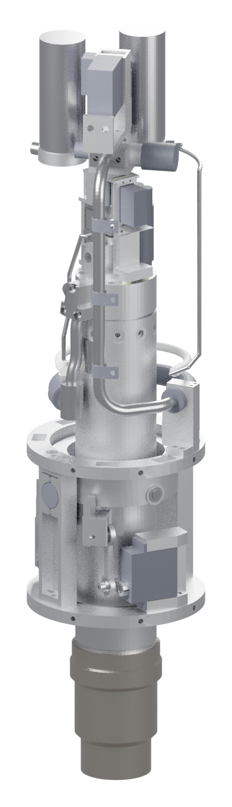
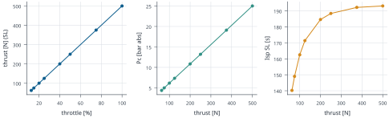
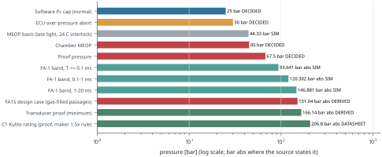
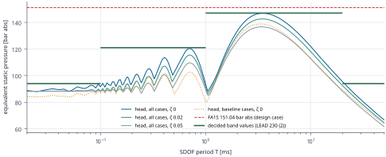
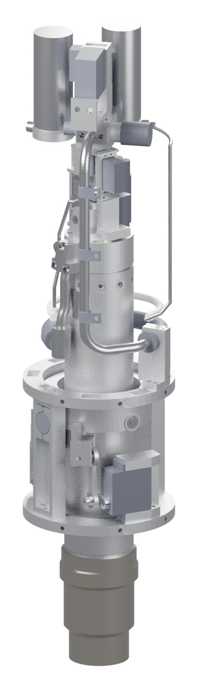
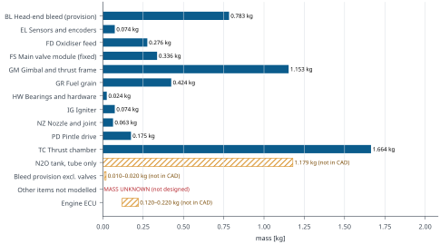
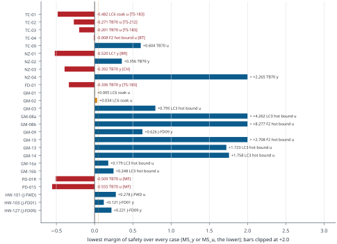

| Configuration | Version | sha256/16 |
|---|---|---|
| CAD (FINAL) | v3.5.2 | manifest a4713d45b3b24a0f |
| Combustion | v2.4d | 7dbf425c12300658 |
| Mechanical | v2.4 | 66bc53d88d444679 |
| Electronics | v4.1 | c862375163393adc |
| Space/GNC | v3.2 | bde317782574cbd9 |
| 3D FEA report | FINAL handback of the v3.5.2 re-check | dc53f4cd45d75f4e |
| Margin matrix (rows v8) | v352 | 6c694fa7147fb511 |
| Requirements | rev 2 | 012b14cbaaddfdc6 |
| Decision log | 266 lines | 4cde8acb297d195c |
| Review register | 18 reviews | 076172727cddd074 |
| Decision overrides | ovr-7 | 6746adf53921b1ef |
| Item | Version · sha256/16 (this build) |
|---|---|
| CAD set (FINAL v3.5.2) | v3.5.2 final · sha256/16 621481ddeccc228bT707 |
| CAD set status | FINAL v3.5.2 CAD set (lead release 19:09:50Z, chain E ended 19:06:26Z; publication approved 19:22:55Z), built 2026-10-20 19:15:43-19:16:54Z from src/ (rev 5) with hardware v1.7; supersedes the INTERIM r4h6 set (its set file, with the rev 2 - rev 4 texts, is history/set_v3.5.2.json.31bb2b1e8b985e41). DESIGN MODEL: not released for fabrication; the geometric checks are software checks, not physical validation; nothing here is physical approval. TC-09 thinning (206 (2a)) stays conditional on its re-run, as in the … DECIDEDDesign value, set_v3.5.2.json v3.5.2 finalT725 |
| CAD manifest | 456 rows · sha256/16 a4713d45b3b24a0fT708 |
| Assembly GLB (renders) | v3.5.2 · sha256/16 4bcc264f683e128fT709 |
| Bill of materials | v3.5.2 · sha256/16 9234c953c5b6beb8T710 |
| Mass properties | v3.5.2 · sha256/16 c1ff170be0ac8cc5T711 |
| Combustion interface | v2.4d · sha256/16 7dbf425c12300658T712 |
| Combustion datasheet inputs | v2.4d · sha256/16 8dc583578748b06fT713 |
| Mechanical interface | v2.4 · sha256/16 66bc53d88d444679T714 |
| Mechanical 04-fea/v352 manifest | 226 rows · sha256/16 4f7e7655ccc25f70T715 |
| GNC interface | v3.2 · sha256/16 bde317782574cbd9T716 |
| GNC datasheet inputs | v3.2 · sha256/16 b8b0dcaf45a5d915T717 |
| Electronics interface | v4.1 · sha256/16 c862375163393adcT718 |
| FEA3D v3.5.2 report | FINAL handback of the v3.5.2 re-check · sha256/16 dc53f4cd45d75f4eT719 |
| Margin matrix of record (rows v8) | v352 · sha256/16 6c694fa7147fb511T720 |
| Decision log | 266 lines · sha256/16 4cde8acb297d195cT721 |
| Review register | 18 reviews · sha256/16 076172727cddd074T722 |
| Requirements | rev 2 · sha256/16 012b14cbaaddfdc6T723 |
| Airframe ICD (out of the finish scope, CHANGELOG 222; no value is taken from it) | draft 0.2 · sha256/16 706455abf4098182T724 |
| Item | rev0 (2026-10-13) | rev1 (this build) |
|---|---|---|
| CAD | v3.4.1 DERIVEDT726 | v3.5.2 DECIDEDDesign value, render_manifest.json v3.5.2T727 |
| Combustion interface | v2.4 DERIVEDT728 | v2.4d DERIVEDT729 |
| Mechanical interface | v2 DERIVEDT730 | v2.4 DERIVEDT731 |
| GNC interface | v3 DERIVEDT732 | v3.2 DERIVEDT733 |
| Electronics interface | v2 DERIVEDT734 | v4.1 DERIVEDT735 |
| Decision log | 176 lines DERIVEDT736 | 266 lines DERIVEDT737 |
| Parts changed vs v3.5.1 | – | ENG-FD-01; ENG-FD-02; ENG-FD-04; ENG-GM-01; ENG-GM-02; ENG-NZ-01; ENG-NZ-06; ENG-TC-01; ENG-TC-02; ENG-TC-03; ENG-TC-09 DECIDEDDesign value, set_v3.5.2.json v3.5.2 finalT738 |
| Mass change and the GNC trigger | – | BELOW the trigger with and without the conditional TC-09 thinning: no re-fly by mass DERIVEDT739 |
| GNC row 8: servo output stiffness K_s (filed under ENG-11): upper end of the design-to window | 120 N m/rad DERIVEDT741 SUPERSEDED | design-to 100 DERIVEDT743–110 N m/rad DERIVEDT744 at the ASSUMED servo J 1.6e-03 kg m² ASSUMEDT745, not robust across J: It is not robust: it moves with J (R3 pose table, cons: 0.76e-3 130->= 160; 2.7e-3 120->= 160; no K_s passes at all three J), the inertia convention (n48 at J 1.6e-3, CAD v3.5.1: none) and the rotor model (two-mass, CAD v3.5.1: 150->= 160), and it is empty at 0.9 x first bending (CAD v3.5.1). DERIVEDT746 |
| Case-TC limits | – | Lead consistency fold found while applying: the case-TC in-burn abort 423.15 K (243 (3), 249 (1)) and the RELIGHT refusal 403.15 K (249 (4)) replace the stale 448.15 K and 433.15 K in the combustion texts. DECIDEDLead decision, line 257T747 |
| 3D FEA of the assembled engine | – | 2026-10-21, FINAL handback of the v3.5.2 re-check (seat FEA3D-2 from 2026-10-21T00:41Z; seat FEA3D-1 before). The assembled-engine model on CAD v3.5.2 (asm v1.3): LC1 and LC2 on the S-AX gap-conductance bounds GVLO / GVHI, FA-1 (FA1Q / D / U / S / T) on the NF2b relight state, TB70 / TBS, the LC6 … DERIVEDT748 |
| Class | Meaning |
|---|---|
| SIM | model run (CFD, FE, Monte Carlo, quasi-1D, CEA, SIL) |
| CALC | hand calculation on model loads or standard geometry |
| DERIVED | computed from other traced values (by a specialist, a reviewer or this generator) |
| ASSUMED | an input adopted without a measurement or a source |
| DATASHEET | maker data |
| LITERATURE | published data, cited |
| AS RECALLED | a value quoted from memory by its author; to be sourced |
| TO-VERIFY | needed from, or to be confirmed by, the named owner |
| MISSING | not available; never estimated by the generator |
| ESTIMATE | an estimate named as such by its source |
| DECIDED | a design value, decided limit or requirement: chosen, not measured or computed; where the source gives a basis, that basis and its tag are shown beside it (source class: design value, lead decision line N, or requirement) |
| REF | a reference or provenance text (a source, a review id, a "no number changed" statement): it carries no value and no pill |
| PENDING | an input that has not landed (never assumed) |
| SUPERSEDED | withdrawn by a newer decision, shown only as history |
| TO-DEFINE | not yet defined by its owner (the value is MISSING) |
Every number carries one of the ten evidence tags (SIM, CALC, DERIVED, ASSUMED, DATASHEET, LITERATURE, AS RECALLED, TO-VERIFY, MISSING, ESTIMATE) or the source-class pill DECIDED. The tag comes from the source tag or the quoted text; where neither gives one, the trace names the class set at the call site. This generator sets no default class: a value without a class is counted as UNTAGGED in qa_report. A lead line that quotes a SIM, DERIVED or CALC number keeps that number's tag; DECIDED applies only to the chosen value itself. PENDING, SUPERSEDED and TO-DEFINE are statuses shown beside the tag. A review verdict, a matching number or a passing check is not physical approval.
| Pending input | Status (quoted) |
|---|---|
| Electronics v2.13 delta (the E4-01 fix) and its review: QUEUED, NOT STARTED; the founder says when (266 (8)). Until it is reviewed, option (b) is not used for any start with ignition (266 (6)) | QUEUED, NOT STARTED (the founder says when): the Electronics v2.13 delta and its review: the light-window hold (latched at IGNITION entry until E2 + 0.45 s, bumpless resume), the TC4 step check (1.5 K per conversion) and rate check (5 K/s slew, 3 K trip) with a latched f3 SEAT_STEP, the E4-03 fix, unit tests UT-1 to UT-4, the S13T TC-fault set, the FMEA row, the B-TC-1 TC4 row with the spark on, the v4.2 folds, and notes E4-N01 (T_cal 10-30 C or kPcSeatArmDevMax_K 40 K), E4-N02 (the 264 (2) pad rule and the 264 (7) inhibit implemented), E4-N03 (47.5 against 47.75 bar abs, TO-VERIFY), E4-N04 (the P_torch re-base needs compensation or a photodiode-guarded gate; torch local heat MISSING) and E4-N11 (a SIL MANIFEST_v2). DECIDEDLead decision, line 266 (8)T030 |
| T4 re-run: the length of the shorter T4 relight (OPEN, 261 (2) and 264 (5)) | Combustion sets the length in the T4 re-run of 261 (2) with Mechanical's soak-back. DECIDEDLead decision, line 264 (5)T494 |
| Line | Date | Decision text (first 900 characters; full line in the CHANGELOG) |
|---|---|---|
| L253 | 2026-10-21 | Lead decisions and verifications after line 252 (2026-10-21 05:24Z to 07:09:15Z, times from date -u; SIM / CALC / DERIVED unless tagged; none of it is physical approval). (1) cD in Mechanical's v7 inputs, ruled 05:27Z (sent between 05:26:33Z and 05:27:43Z; the message said 05:28Z, a lead stamp slip): the SOAK52 under-head band strain MS is a local refined-mesh value, so (C) applies: (b2) 0.296 stands and cD 0.267 is shown beside it (strain ratio 1.023, inside the 5 % band; the MF note applies); resultant-type inputs take cD as an instance, worst-of as in v6: FA1S N_head_min 2717.2 N, FA1S seat window 455.0 N, FA1S spread 0.1549, SOAK70 M_max 3438.9 N mm at x' 30.5; the record results/v352/jfwd_v7inputs_cD_v352.json 5a41c8d74897bdda (md 424146c89c8c9f01) is Mechanical's re-map input with v6; the datasheet J-FWD UH row reads '0.296 (s6), cD 0.267 beside'. (2) Line order: line 251 is the … DECIDEDLead decision, line 253T749 |
| L255 | 2026-10-21 | Lead line covering 07:13Z-07:52Z (times from date -u; SIM / CALC / DERIVED as tagged; none of it is physical approval). (1) MECHANICAL RE-MAP GO AND RULING: Mechanical handed back at 07:33:56Z without publishing (its run ended before the go; hub unchanged). The lead verified every work-tree and hub sha16 of its 07:28:05Z pre-publication post and its publish scripts (07:30:26-07:37:34Z) and resumed it at 07:37:34Z with the GO and LEAD RULING R2-B, quoted verbatim in line 254 (1); R2-B governs the ENG-TC-02 plug OD: SELECT FIT to the measured TC-01 bore, radial gap g in [0.040, 0.0631] mm, D_meas - 0.1262 <= OD <= D_meas - 0.080 (window 0.0462 mm less 2U, U TO-DEFINE), measured at 20 +/- 1 C with paired serials; drawn option A (57.20 -0.030/-0.040, MS +0.005 FLAG) not adopted; data strings unedited in v3.5.2 and superseded by the drawing note. Answers to its three questions: the texts … DECIDEDLead decision, line 255T750 |
| L256 | 2026-10-21 | Lead line covering 07:53Z-08:45Z (times from date -u; SIM / CALC / DERIVED as tagged; none of it is physical approval). (1) REV-COMB-4, the independent delta re-review of Combustion v2.4b: interim 07:52:49Z, full review 08:32:27Z, saved verbatim by the lead as reviews/REVIEW-COMBUSTION-R4.md (2908321d7f75d439; artefacts reviews/combustion/r4/, MANIFEST_REV-COMB-4.sha256 996475830cae731f, 23/23 verified 08:37:28Z; SUPERVISION.json entry added). VERDICT ACCEPT WITH CORRECTIONS: 0 blocking, 2 major, 11 minor, 5 notes; line 230 (1)-(4) CONFIRMED and (5) CONFIRMED as a decision (its supporting sentence is refuted for 1 of the 3 low corners, which crosses 37.16 N at E2 + 0.857 s); all 17 REV-COMB-3 items closed (10 closed, 7 with residual). The lead ACCEPTS the review. (2) PURGE, 253 (7)(ii), now FINAL: the 2.43 s scheduled flow with the 2.39 s cap is ADOPTED [DERIVED by REV-COMB-4 on the … DECIDEDLead decision, line 256T751 |
| L257 | 2026-10-21 | 08:46-09:39Z (date -u). (1) COMBUSTION v2.4c PUBLISHED by the lead at 09:38:09Z (text only; no model re-run): the REV-COMB-4 corrections (R4-01 to R4-08, R4-12, R4-14 to R4-18, the section 6 texts) with the decisions of 227 (5), 230, 243 (3), 249 (4), 253 (7), 256 and (2) below. Files: interfaces/combustion.json v2.4c 661db0a593462382; 02-combustion/REPORT.md 7a9acd3df5937303 (new section 17; lines 1-3161 keep their numbers); CF-4-SPEC.md v2.2 4e36be703a9e7d44; T1-T4-REGRESSION-SPEC.md v3.1 b00b2d852ed3475c; REVISION-RESPONSE-R3.md 370875c3645eb49c (annotated only); DATASHEET-INPUTS-COMBUSTION.md v2.4c 29ed6d45c55ff234; writer 02-combustion/src/apply_v2p4c_rev_comb_4.py 063195b1b3a12bed (run 09:35:44Z). The v2.4b set is archived in 02-combustion/superseded/v2p4b/ with HASHES.txt (json fd3a7da6d27c7c66). 29 JSON leaves were replaced, each kept in superseded_v2p4c with its finding; all … DECIDEDLead decision, line 257T752 |
| L258 | 2026-10-21 | 09:40-10:47Z (date -u). (1) REV-GNC-7 ACCEPTED: its final (reviews/REVIEW-GNC-R5.md 6b86fcd326568646, saved verbatim by the lead at 10:39:38Z; reviewer manifest reviews/gnc/rev4b/MANIFEST_REV-GNC-7.sha256 e04257acba555551 verified 94/94 OK at 10:38:50Z; SUPERVISION.json entry added) is PUBLISHABLE WITH CORRECTIONS (0 blocking; 4 major RV7-01 to RV7-04; 5 minor; 3 notes). gnc.json v3.2 = the candidate 01-systems-gnc/staging_v3.1/rev4b/v32/gnc_v3.2_rev4b.json 43d58c4aff164b86 with the 34 ops of reviews/gnc/rev4b/data/b/rv7_v32_corrections.json f7c0c6051efd5a08 (reviewer trial fea33eacdd8a7d56), and DATASHEET-INPUTS-GNC.md with DS ops 1-7 plus rows for the new open items 53-57; the lead publishes it after an independent apply that matches the trial and t10_postcheck v3 --publication --rv7 exits 0. ENG-11 (RV7-01): design-to 100 <= K_s <= 110 N m/rad (two-sided) at the ASSUMED servo J … DECIDEDLead decision, line 258T753 |
| L260 | 2026-10-21 | 10:48-10:57Z (date -u). (1) GNC.JSON v3.2 PUBLISHED by the lead (built and stamped 10:56:48Z, promoted 10:57:09Z): interfaces/gnc.json v3.2 bde317782574cbd9 (1,415,700 B) = the candidate 01-systems-gnc/staging_v3.1/rev4b/v32/gnc_v3.2_rev4b.json 43d58c4aff164b86 with the 34 REV-GNC-7 operations of reviews/gnc/rev4b/data/b/rv7_v32_corrections.json f7c0c6051efd5a08, applied independently by the lead and byte-equal to the reviewer trial fea33eacdd8a7d56 without its trial marker (236107a89ca4a240), plus lead folds L1-L4: L1 the status header (published) and the status item (4) sentences replaced by the texts of ops 6 and 7; L2 flight_software.rev4b_entries.mode3_filter_reinit.v with the text of op 13; L3 status_after_rev_gnc_7 notes on v32_items_rev4b items 6 and 14 (S17 v2.11 CONFIRMED 0.8 s for W10 < 6 m/s with conditions); L4 date 2026-10-21, supersedes and … DECIDEDLead decision, line 260T754 |
| L261 | 2026-10-21 | 10:58-11:26Z (date -u). (1) COMBUSTION v2.4d PUBLISHED by the lead at 11:24:52Z (text only; no model re-run; no SIM, CEA or FE result changed): the fold of 258 (2)-(4), 259 and 260. Files: interfaces/combustion.json v2.4d 7dbf425c12300658; 02-combustion/REPORT.md 0f2af843861176c8 (new section 18; lines 1-3314 keep their numbers); CF-4-SPEC.md v2.3 6f0d4afd7fb3a798; T1-T4-REGRESSION-SPEC.md v3.2 edde58cf7e1aadf7; DATASHEET-INPUTS-COMBUSTION.md v2.4d 8dc583578748b06f (row added: FA-1 class Z3 v2 and the J-FWD replace rule); REVISION-RESPONSE-R3.md unchanged (370875c3645eb49c); writer 02-combustion/src/apply_v2p4d_lead.py 6c43216fc7b22306 (run 11:24:28Z; two builds with one stamp byte-identical). The v2.4c set is archived in 02-combustion/superseded/v2p4c/ with HASHES.txt (json 661db0a593462382). 18 JSON leaves replaced, each kept in superseded_v2p4d with its decision; all v2.4c keys kept; … DECIDEDLead decision, line 261T755 |
| L262 | 2026-10-21 | Lead decisions and verifications after line 261 (2026-10-21 11:29Z to 12:14Z, times from date -u; SIM / CALC / DERIVED unless tagged; none of it is physical approval). (1) FOUNDER DECISION: Gaspar tapped 'Three agents' on the lead's 04:00Z decision card at 11:44:54Z: at most three agents at a time from now (two since his 2026-10-14 restart card). The lead told him at 11:49Z the new estimate for the full package in both repos, about 17:00-18:30Z (19:00-20:30 Danish); the long pole is the Electronics v2.12 round and its review REV-ELEC-4. (2) REV-DS-1, the independent review of datasheet rev1 (a fresh agent, effort max), started 11:48:03Z in the third slot. Phase A returned 12:08:02Z with no findings, because no draft PDF exists yet. Its re-trace harness is reviews/datasheet/r1/scripts/retrace.py 2684ef2459023d5f (rev0 test, 111 ids: 101 match; the 4 mismatches all come from sources … DECIDEDLead decision, line 262T756 |
| L264 | 2026-10-21 | Lead rulings on the Electronics v2.12 handback (line 263), 2026-10-21 12:43:15Z to 12:49:16Z, times from date -u or the transcript; SIL / CALC / DERIVED unless tagged, none of it physical approval. (1) RECEIVED AND VERIFIED: the handback arrived at 12:43:15Z (author stamp 12:42:14Z) and is saved verbatim as [working copy; path not printed] (cd6981c0ba07b670); staging_v2.12/SHA256SUMS-v2.12.txt f6fd3a63817dfb34: 84 of 84 entries verify (lead check from absolute paths right after the 12:44:46Z date -u reading), 85 files in the folder; CHANGELOG 263 lines / 1157b92de515db02 (line 263 sha16 33fe3e2d40e2cb28, ASCII, four fields). interfaces/electronics.json stays v4 11f7896ad0d0613b; results/electronics_v4.1.json c862375163393adc stays PENDING REVIEW until REV-ELEC-4's verdict is recorded, and the datasheet shows v4.1 values as PENDING REVIEW. (2) R3-01 … DECIDEDLead decision, line 264T757 |
| L266 | 2026-10-21 | Lead decisions and verifications after line 264 (2026-10-21 12:50Z to 14:46Z, times from date -u or the transcript; SIM / CALC / DERIVED unless tagged; none of it is physical approval). (1) REV-ELEC-4 brief: [working copy; path not printed] 1e659eff4bceecde (the sha16 that 264 (8) promised); the reviewer was resumed 12:51Z at effort max. PUSH 13:00:10Z: p1 PR #5 cf92b16..4c852a7 (96 paths, all under argos-engine/: lines 262-264, staging_v2.12, REV-DS-1 phase A; scans clean); reviews/datasheet/r1/scripts/form_check.py is held back from the public repo because its string list names the private benchmark. (2) DATASHEET rev1-draft (author post 13:19:27Z): the lead re-hashed all 15 files at 13:21:00Z, all match (PDF 8e7d007d128dfb58, 151 pages). Rulings 13:24:27Z: 166.14 bar abs is DERIVED (1.1 x FA1S 151.04) everywhere and the requirement cites 256 (R4-12) and 264 (4); the nine … DECIDEDLead decision, line 266T758 |
| Item | Value | Condition / basis | Source |
|---|---|---|---|
| Rated thrust (maximum commanded) | 500 N; Pc 25.01 bar abs; O/F 10.44; Isp (sea level) 193.1 s; c* 1401 m/s delivered; propellant flow 264.1 g/s (N2O 241.0, ABS 23.1) SIMT760 | 20 C saturated tank, initial port 25 mm, nominal regression law, eta_c* 0.92, eta_cf 0.975, pintle Cd 0.70 SIMT759 | combustion.json operating_points.max_thrust T761 |
| Chamber pressure limits | software cap 25 bar; ECU abort 30 bar; MEOP 45 bar; proof 67.5 bar; MEOP basis 44.33 bar (margin 0.67 bar to MEOP) SIMLead decision, per DATASHEET-INPUTS-COMBUSTION.md v2.4dT763 | MEOP basis: late light at the 24 C interlock with the designed line loss and the conservative bands SIMLead decision, per DATASHEET-INPUTS-COMBUSTION.md v2.4dT762 | combustion.json operating_points.pressure_limits, meop_basis_v2p4 T764 |
| Thrust ceiling (available, not commanded) | ceiling 603-747 N for Cd 0.5-0.8 at 20 C (Dyer); worst model case HEM at 15 C, Cd 0.6: 499 N (Cd_eff 0.407) SIMT766 | ceiling = F at min(full stroke 4 mm, injector dP/Pc >= 0.25) SIMT765 | combustion.json operating_points.ceiling_vs_Cd_20C_and_models T767 |
| Worst-case steady thrust and Pc (pintle full-stroke failure) | 619-822 N, Pc 30.7-40.3 bar abs at 15-25 C (Cd 0.6-0.8); 876 N, [withheld: superseded value, SUP-01] bar abs at a 30 C state (SUPERSEDED in combustion.json: 30 C is not credible, the ARM interlock is at 24 C; REV-COMB-4 R4-17) SIMT769 | initial port, steady; the ECU abort (30 bar) acts on it; the hard-start transient is the FA-1 row SIMT768 | combustion.json operating_points.pressure_limits.full_stroke_failure_S230 T770 |
| Throttle range | 62.5-500 N (12.5-100 %): Pc 4.37-25.01 bar abs; O/F 4.06-10.44; Isp (sea level) 140.2-193.1 s SIMT772 | 25 % floor (125 N): met (dP/Pc 5.8); 20 % target (100 N): met (dP/Pc 7.1); 12.5 % stretch: model meets it, low-flux combustion UNVERIFIED (static fire T3) SIMT771 | combustion.json operating_points.throttle_points_20C_initial_port, floor_* T773 |
| Burn time and total impulse at a 500 N hold (2.0 kg tank) | 500 N held 4.06-7.01 s; liquid end 6.77-7.50 s; impulse to liquid end 3387-3616 N s; N2O 1.630-1.737 kg SIMT775 | 15-25 C tank (the 25 C end is a bound: ARM 15-24 C), equilibrium and non-equilibrium tank SIMT774 | combustion.json operating_points.max_thrust_hold_baseline_tank T776 |
| Mission burns (2.0 kg tank, 3.167 L) | A1 dispersed p99: 8.26 s, 2968.2 N s, O/F 9.05, Isp 190.7 s (T0 294.12 K); A1 p99 throat-growth record (tg711, T0 297.56 K): 8.14 s, 2932.0 N s; B1 85 m p99: 21.78 s, 2984.5 N s, O/F 5.57, Isp 172.3 s; B1 max: 23.63 s, 3008.5 N s, Isp 170.1 s; B1 p99 throat-growth record (tg711, T0 289.99 K): 21.66 s, 3333.2 N s, Isp 174.8 s SIMT778 | gnc.json v3 records flown on the S230 grain (non-equilibrium tank); the A1 rows are the 300 m record (comparator). A1 is decided at 210 m (lines 214, 227 (1)): GNC rev4 burn p99 8.443 / 8.270 s (RV6-05: not shorter); its impulse is MISSING until gnc.json v3.2; B1 governs sizing SIMT777 | 02-combustion/data/v2/dc_gncv3/summary_v2p4.json (7f4f181b80d55331); CHANGELOG 227 (9) T779 |
| N2O tank | 2.00 kg (founder, line 219). Option 2.20 kg: A1 burn p99 8.92 / 8.71 s (max 9.24 s) over the 8.258 s A1 sizing counter; first-order A1 throat-area growth 1.96-2.20 % per flight (nominal, n 0.5), residual web >= 2.54 mm DERIVEDLead decision, per DATASHEET-INPUTS-COMBUSTION.md v2.4dT781 | 2.20 kg: B1, thermal and erosion TO-VERIFY (line 227 (9)); no B1 record with 2.20 kg (OI-50) DERIVEDLead decision, per DATASHEET-INPUTS-COMBUSTION.md v2.4dT780 | data/v2p4b/tank_2p20kg_option_v2p4b.json (59995244124f7c9a) T782 |
| Nozzle and grain | throat 13.72 mm, exit 19.41 mm, expansion ratio 2.0 (graphite insert, one per flight); ABS grain 53.5 mm OD x 230 mm, one straight port 25 mm initial DECIDEDDesign value, DATASHEET-INPUTS-COMBUSTION.md v2.4dT784 | graphite grade TO-QUOTE (Sønderborg DK-6400) DECIDEDDesign value, DATASHEET-INPUTS-COMBUSTION.md v2.4dT783 | combustion.json gas_path T785 |
| Start level (relight) | start-level lift 0.21776 mm at the A1 relight state (286.70 K), 0.2039 mm at 20 C (the ECU ignition-lift row at the tank temperature); lit thrust from E2 to E2 + 0.8 s >= 33.14 N (3 of 72 corners never reach 37.16 N); dead-engine cold flow <= 12.86 N (CONDITIONAL on CF-3); one of the 3 low corners crosses 37.16 N at E2 + 0.857 s, the other two stay below it to the end of the 1.0 s record (R4-03); with the SPI flux the cold-flow bound is 19.0-20.1 N over 283.15-289.5 K (19.5 N at 286.70 K), above the 16.31 N margin, so the CF-3 start-lift acceptance is not a formality (R4-17) SIM / DERIVEDDesign value, DATASHEET-INPUTS-COMBUSTION.md v2.4dT787 | lit thrust: grain_q1d over 72 corners of the ASSUMED bands; lift: ECU table (Electronics) SIM / DERIVEDDesign value, DATASHEET-INPUTS-COMBUSTION.md v2.4dT786 | data/v2p4b/p4c_lit_side_v2p4b.json (12f7699ddbeeecda); data/v2p4b/cold_flow_start_lift_v2p4b.json (28ce48092f33da1b) T788 |
| Relight purge flow (decided) | 2.43 s scheduled flow (both-open overlap 2.38 s + 0.05 s) with the 2.39 s both-open cap (LEAD 253 (7)(ii), final in 256 (2)); needed flow 2.2 / 1.9 / 1.8 s at 283.15 / 289.5 / 297.15 K unlined; vented N2O at 2.43 s <= 66.7 / 70.8 / 75.1 g at 283.15 / 289.5 / 297.15 K (Cd 0.70), 75.75 g at the 2.44 s of flow the cap allows; basis 29.25 g/s = 76 g / 2.5982 s of flow at 289.5 K (27.58-31.06 g/s over 283.15-297.15 K) DERIVED / ASSUMEDLead decision, per DATASHEET-INPUTS-COMBUSTION.md v2.4d; basis SIMT790 | conditions (256 (2)): (a) 2.2 s at 283.15 K stated wherever 1.9 s is quoted; (b) measured Cd x A of the two-tap path >= 0.91 x the Cd 0.70 value (>= 0.95 x with the FD-01 element bound), else re-size; (c) the line stays unlined (lined, 283.15 K needs 2.5 s); (257 (2)): (d) after CF-4 the flow and cap are re-set from the measured Cd x A by the measured-time form (mass flow at 297.15 K), never above 2.43 / 2.39 s, so the 297.15 K vent stays <= 76 g; (258 (2)): (d1) the re-set takes the upper 95 % bound of the measured N2O Cd x A; (d2) CF-4 shows the 283.15 K need at the re-set flow; at Cd 0.80 the fixed schedule would vent about 85.5 g at 297.15 K [ESTIMATE] and fail GNC's A1 reserve test … DERIVED / ASSUMEDLead decision, per DATASHEET-INPUTS-COMBUSTION.md v2.4d; basis SIMT789 | data/v2p4b/purge_basis_line216_v2p4b.json (ca2ee1f0ea0f0194); reviews/combustion/r4/r4_purge_corners.json (9249ed093c21a3a3); CHANGELOG 257 (2), 258 (2); reviews/REVIEW-GNC-R5.md (6b86fcd326568646) T791 |
| FA-1 hard start: structural load | head equivalent static pressure, all 896 cases, undamped: 93.6 bar abs (T <= 0.1 ms), 120.3 (0.1-1 ms; 115.4 at zeta 0.02, 109.6 at zeta 0.05), 146.9 (1-20 ms), 93.6 (20-50 ms, at T = 21.1 ms near its lower edge); peak head pressure 88.0 bar abs; FA1S 151.04 bar abs bounds every period and case (max 146.88, margin 4.16 bar) SIMT793 | band values 94 / 121 / 147 / 94 bar abs DECIDED for structural SDOF paths (LEAD 230 (2); the line-194 (1) values 90 / 93 / 102 are superseded); FA1S is the design case for pressure-filled passages (next row); per-mode values are an analysis path only; damping ASSUMED (no modal test) SIMT792 | data/v2p4b/fa1_spectra_damped_v2p4b.json (3a84a905052d5364) T794 |
| FA-1 in gas-filled passages (P_torch passage, Pc port) | design case FA1S 151.04 bar abs uniform over the passage; linear lossless passage peaks <= 129.9 bar abs at the J-FWD tap and <= 148.7 bar abs at the torch seat (c 150-1200 m/s); Pc-port face <= 130.2 / 131.3 / 130.5 bar abs (CC-1 6 mm3 / CC-1 20 mm3 / CC-2) over c 181-1200 m/s; the band values do not bound gas-filled passages DERIVEDT796 | linear lossless duct (ASSUMED); not modelled: wave steepening and shock reflection, losses, torch-chamber compliance, N2O decomposition, a blocked-outlet deflagration; Mechanical's tap-wall row v3 at FA1S passes: governing SOAK52 MS_y +0.670 / MS_u +0.785; screw-temperature sensitivity MS_y +0.275 at SOAK70 [CALC on SIM]; ligament lowest local natural frequency >= 26 kHz [CALC, edges and span ASSUMED]; R4-01 closed (CHANGELOG 259 (1); wording LEAD 258 (4)) DERIVEDT795 | reviews/combustion/r4/r4_torch_passage.json (8cb4b0c80173b88d), r4_pc_port_face.json (94f5a39166a8f778); 04-fea/v352/jfwd_tapwall_v352_v3.json (ef70572ec92b05b0) T797 |
| FA-1 class Z3 v2 and the J-FWD replace rule | Z3 v2: 63.1 < head <= 88.1 bar abs inside the light window, with the undamped SDOF ESP of the head history <= 151.04 bar abs (FA1S) at each of the 406 periods 0.02-50 ms, first-to-last crossing of 63.1 bar abs <= 3.0 ms and 10-90 % first rise >= 0.8 ms: 896 / 896 FA-1 grid cases inside (ESP max 146.881 bar abs at 3.5 ms, margin 4.159 bar); replace rule: Q_JFWD = max(head peak, head ESP at 0.2-0.5 ms) > 60.0 bar abs at any time in a run means the line-231 J-FWD inspection and the TC-02 taps gauged before the next run (298 / 896 grid cases; 185 for the peak alone) DERIVEDLead decision, line 258 (3); basis SIMT799 | grid counts on an ASSUMED construct, not rates; Z3 v2 NOT EVALUATED in flight (1 kHz record); not meant for normal lights (a light to MEOP trips Q_JFWD only below a 0.288 ms 10-90 % rise); a noise-floor rule for measured stand traces TO-VERIFY; the 0.2-0.5 ms band ASSUMED (TO-VERIFY on a v3.5.2 modal); damped variant not adopted (damping MISSING) DERIVEDLead decision, line 258 (3); basis SIMT798 | interfaces/mechanical.json v2.4 (66bc53d88d444679) lc_tb70_envelope_v352; 04-fea/v352/lc_tb70_envelope_v2.json (7ebd2fd63dc878ef); combustion.json z3_jfwd_rulings_v2p4d; CHANGELOG 258 (3), 259 (2)-(3) T800 |
| Pc transducer proof | flight unit >= 166.14 bar abs (1.1 x FA1S 151.04); the C1 Kulite XTL-190SM-2000A pick, 206.8 bar abs (DATASHEET 1.5x rule), meets it; stand dynamic channel: flush >= 103.4 bar abs (1.1 x 94), 0.1-1 ms path >= 133.1 bar abs (1.1 x 121), range >= 100 bar abs flush and >= 132 bar abs with a sense line DATASHEETLead decision, line 249 (4)T803 | path period > 1 ms not acceptable for the dynamic channel; the P_torch 070BG over-ranges during FA-1 (its proof and recovery are Electronics v2.12 items) DATASHEETLead decision, line 249 (4)T801[P_torch: lead 264 (4)T802 selects the C1-family Kulite XTL-190SM-2000A; this 070BG text is superseded; the threshold re-base is OPEN: contradiction register C-14] | combustion.json v2.4c pc_dynamic_channel T804 |
| FA-1 at TC-01 J-FWD (per-mode) | time-domain modal bound 114.6 bar abs undamped (108.9 at zeta 0.02), E rule 127.0 (121.4); spectral sums at zeta 0: signed 101.5-109.4, absolute 137.3-147.9, SRSS 55.7-58.1 bar abs; break-even 116.3 yield / 125.8 ultimate; MS at the bound +0.015 / +0.097; on the restated 0.1-1 ms band value 121 bar abs -0.039 / +0.040 (line 228 lists +0.25 / +0.23 on the 93 / 102 band reading) DERIVEDT806 | worst of the FE frequency factors x0.85 / 0.90 / 1.00; intervals because FEA3D publishes 9 of 60 modal shares (OI-51); the bound takes the residual at its published signed share 0.382 and stays below the yield break-even while the residual absolute share is <= 0.487; TC-01 LC1 node: 111.8 (bound), 122.7 (E rule) DERIVEDT805 | data/v2p4b/fa1_modal_th_bound_v2p4b.json (639f5fbf3db77ee8), fa1_per_mode_peq_v2p4b.json (7ade3ee7ef544f7a) T807 |
| Notes of the combustion datasheet inputs (quoted) |
|---|
| A1 apogee target 210 m is decided (lines 214, 227 (1)); the A1 records above are the 300 m comparators until gnc.json v3.2 (OI-49). DECIDEDDesign value, DATASHEET-INPUTS-COMBUSTION.md v2.4dT808 |
| Prices: none quoted here; any quote is TO-QUOTE, delivered to Sønderborg DK-6400. DECIDEDDesign value, DATASHEET-INPUTS-COMBUSTION.md v2.4dT809 |
| OI-41 is DECIDED (LEAD 230 (2) band values; 249 (4) flight Pc proof); the per-mode row is an analysis path only and still depends on the FEA3D share vector (OI-51) and on damping (OI-52). Z3 v2 and the J-FWD replace rule on Q_JFWD are ADOPTED (LEAD 258 (3); table row 'FA-1 class Z3 v2 and the J-FWD replace rule'). Open: the PURGE command time (Electronics v2.12); before flight acceptance (LEAD): the flight consequence of a flagged first light, the damped ESP variant and the 0.2-0.5 ms J-FWD band. DECIDEDDesign value, DATASHEET-INPUTS-COMBUSTION.md v2.4dT810 |
| pcf_tmax 0.8 s (LEAD 227 (5)) holds on the dead side only with the photodiode main-chamber view (FLAMEOUT_OPT armed) or the GNC reference re-taken at the ECU E2 / light; photodiode-blind families release 42 / 98 of 1000 dead runs at 0.8 s (OI-PHOTODIODE-VIEW, open for IGN-1). DECIDEDDesign value, DATASHEET-INPUTS-COMBUSTION.md v2.4dT811 |
| Fraction | Thrust | Pc | O/F | Isp SL | N2O flow | ABS flow | Pintle lift | dP_inj / Pc |
|---|---|---|---|---|---|---|---|---|
| 1.000 SIMT817 | 500.0 N SIMT033 | 25.01 bar SIMT812 | 10.44 SIMT035 | 193.1 s SIMT034 | 241.0 g/s SIMT813 | 23.09 g/s SIMT814 | 1.916 mm SIMT815 | 0.91 SIMT816 |
| 0.750 SIMT826 | 375.0 N SIMT818 | 19.10 bar SIMT819 | 8.99 SIMT820 | 192.2 s SIMT821 | 179.0 g/s SIMT822 | 19.90 g/s SIMT823 | 1.252 mm SIMT824 | 1.55 SIMT825 |
| 0.500 SIMT835 | 250.0 N SIMT827 | 13.20 bar SIMT828 | 7.34 SIMT829 | 188.4 s SIMT830 | 119.1 g/s SIMT831 | 16.24 g/s SIMT832 | 0.755 mm SIMT833 | 2.74 SIMT834 |
| 0.400 SIMT844 | 200.0 N SIMT836 | 10.85 bar SIMT837 | 6.58 SIMT838 | 184.6 s SIMT839 | 95.9 g/s SIMT840 | 14.57 g/s SIMT841 | 0.588 mm SIMT842 | 3.58 SIMT843 |
| 0.250 SIMT853 | 125.0 N SIMT845 | 7.33 bar SIMT846 | 5.32 SIMT847 | 171.4 s SIMT848 | 62.6 g/s SIMT849 | 11.77 g/s SIMT850 | 0.367 mm SIMT851 | 5.80 SIMT852 |
| 0.200 SIMT861 | 100.0 N SIMT037 | 6.16 bar SIMT854 | 4.85 SIMT855 | 162.5 s SIMT856 | 52.0 g/s SIMT857 | 10.73 g/s SIMT858 | 0.301 mm SIMT859 | 7.10 SIMT860 |
| 0.150 SIMT870 | 75.0 N SIMT862 | 4.98 bar SIMT863 | 4.34 SIMT864 | 149.0 s SIMT865 | 41.7 g/s SIMT866 | 9.61 g/s SIMT867 | 0.238 mm SIMT868 | 9.02 SIMT869 |
| 0.125 SIMT879 | 62.5 N SIMT871 | 4.37 bar SIMT872 | 4.06 SIMT873 | 140.2 s SIMT874 | 36.5 g/s SIMT875 | 8.98 g/s SIMT876 | 0.207 mm SIMT877 | 10.43 SIMT878 |

| Pressure level | Value | Basis of the unit (bar or bar abs) |
|---|---|---|
| Software Pc cap (normal) | 25 bar DECIDEDLead decision of 2026-10-12T880 | not stated in the source (bar); combustion.json pressure_limits in Pa |
| ECU over-pressure abort | 30 bar DECIDEDLead decision of 2026-10-12T881 | not stated in the source (bar); combustion.json pressure_limits in Pa |
| MEOP basis (late light, 24 C interlock) | 44.33 bar SIMT884 | not stated in the source (bar); combustion.json meop_basis_v2p4 basis_bar |
| Chamber MEOP | 45 bar DECIDEDLead decision of 2026-10-12T882 | not stated in the source (bar); combustion.json pressure_limits in Pa |
| Proof pressure | 67.5 bar DECIDEDLead decision of 2026-10-12T883 | not stated in the source (bar); combustion.json pressure_limits in Pa |
| FA-1 band, T <= 0.1 ms | 93.641 bar abs SIMT885 | bar abs: combustion.json key head_all_band_maxima_bar_abs |
| FA-1 band, 0.1-1 ms | 120.302 bar abs SIMT886 | bar abs: combustion.json key head_all_band_maxima_bar_abs |
| FA-1 band, 1-20 ms | 146.881 bar abs SIMT887 | bar abs: combustion.json key head_all_band_maxima_bar_abs |
| FA1S design case (gas-filled passages) | 151.04 bar abs DERIVEDT890 | bar abs: combustion.json fa1_p_torch_v2p4c ("FA1S ... bar abs") |
| Transducer proof (minimum) | 166.14 bar abs DERIVEDT892 = 1.1 DECIDEDLead decision, line 249 (4)T893 × FA1S 151.04 bar abs DERIVEDT890 | bar abs: DATASHEET-INPUTS-COMBUSTION.md row "Pc transducer proof" (">= ... bar abs") |
| C1 Kulite rating (proof, maker 1.5x rule) | 206.8 bar abs DATASHEETT896 | bar abs: DATASHEET-INPUTS-COMBUSTION.md row "Pc transducer proof" (C1 rating "... bar abs") |


| Currency check of the FA-1 spectrum data | Record |
|---|---|
| File named by combustion.json | same file: combustion.json v2.4d names 02-combustion/data/v2p4b/fa1_pressure_spectra_published_v2p4b.csv with sha256/16 a2c380515cada638; the file read here has a2c380515cada638 DERIVEDT901 |
| v2.4c fold (REPORT §17) | Applied by the lead with src/apply_v2p4c_rev_comb_4.py (sha256/16 063195b1b3a12bed, run at 2026-10-21T09:35:44Z from date -u). Text only: no model was re-run and no SIM, CEA or FE result changed. T902 |
| v2.4d fold (REPORT §18) | Applied by the lead with src/apply_v2p4d_lead.py (sha256/16 6c43216fc7b22306, run at 2026-10-21T11:24:28Z from date -u). Text only: no model was re-run and no SIM, CEA or FE result changed; one planning value changed (the T4 N2O, §18.1). T903 |
| FA-1 data after v2.4d (REPORT §18.3) | - No Combustion number changed except the T4 planning value; the FA-1 grid histories are the v2.4b set and the reviewer's statistics in fa1_grid_statistics_v2p4c are kept. T904 |
| Item | Value (combustion.json) |
|---|---|
| floor requirement 25pct | F_N: v: 125.0; tag: REQ; Pc_Pa: v: 733390.0; tag: SIM grain_q1d.py v2 (quasi-1D port, S230, nominal ASSUMED law, Dyer pintle Cd 0.70, eta_c* 0.92, eta_cf 0.975); OF: v: 5.32; tag: SIM grain_q1d.py v2 (quasi-1D port, S230, nominal ASSUMED law, Dyer pintle Cd 0.70, eta_c* 0.92, eta_cf 0.975); status: met (dP/Pc 5.8) SIMT905 |
| floor target 20pct | F_N: v: 100.0; tag: REQ; Pc_Pa: v: 616171.0; tag: SIM grain_q1d.py v2 (quasi-1D port, S230, nominal ASSUMED law, Dyer pintle Cd 0.70, eta_c* 0.92, eta_cf 0.975); OF: v: 4.85; tag: SIM grain_q1d.py v2 (quasi-1D port, S230, nominal ASSUMED law, Dyer pintle Cd 0.70, eta_c* 0.92, eta_cf 0.975); status: met (dP/Pc 7.1) SIMT906 |
| floor stretch 12p5pct | F_N: v: 62.5; tag: REQ stretch; Pc_Pa: v: 436985.0; tag: SIM grain_q1d.py v2 (quasi-1D port, S230, nominal ASSUMED law, Dyer pintle Cd 0.70, eta_c* 0.92, eta_cf 0.975); OF: v: 4.06; tag: SIM grain_q1d.py v2 (quasi-1D port, S230, nominal ASSUMED law, Dyer pintle Cd 0.70, eta_c* 0.92, eta_cf 0.975); status: model meets it: dP/Pc 10.4, chug gain margin 38.6 at 10 ms delay, attached nozzle except incipient lip separation (Schmucker); G_ox 74 -> ~25 kg/m2s as the port opens: low-flux combustion … SIMT907 |
| thrust ceiling rule | F_ceiling = F at min(stroke 4 mm, injector dP/Pc >= 0.25) SIMT908 |
| chamber fill time constant s | 0.0034 SIMT909 |
| throttle architecture | Servo-driven variable-area pintle (needle-in-seat) at the head end + separate NC main isolation valve upstream (tank side, off-gimbal) DECIDEDLead decision of 2026-10-11T910 |
| Item | Value for the datasheet | Basis |
|---|---|---|
| Gimbal range | ±7.0 deg commanded limit, on the vector norm; 8.0 deg conical mechanical stop. Flown engine angle: p99 7.32 deg, max 7.36 deg (flexible-mount overshoot, inside the stop). SIMT911 | 7 deg gives P 0.984. 6 deg gives P 0.982 (3 lost / 2 gained, p 1). 5 deg gives P 0.924 (30 lost / 0 gained, p 1.9e-9). Recorded at the v3 basis. SIMT912 |
| Gimbal slew and dynamics | Slew >= 100 deg/s in the worst direction at 7 deg, at the 7.4 V nominal plug (ENG-07). Other limits: angular acceleration >= 34.9 rad/s2; bandwidth >= 8 Hz; resolution <= 0.1 deg; backlash <= 0.1 deg; command-to-motion latency <= 10 ms. DECIDEDRequirement, DATASHEET-INPUTS-GNC.md v3.2; basis SIMT913 | Comparators: 80 deg/s loses (11 lost / 2 gained, p 0.022); 60 deg/s gives P 0.716. Delivered slew at 7 deg / 7.4 V (DERIVED extrapolation): 111.2 deg/s at the mechanical.json v2 table load; 99.8 deg/s at the v2 term sum; 97.8 deg/s with the hose at its routing limit. TO-VERIFY with the exact kinematics (row 11k). SIMT914 |
| GNC row 8: servo output stiffness K_s (filed under ENG-11; ENG-11 (REQ) is the gimbal axis stiffness, §3.3 and §12.5) | design-to 100 DERIVEDT743–110 N m/rad DERIVEDT744 at the ASSUMED servo J 1.6e-03 kg m² ASSUMEDT745, not robust across J: It is not robust: it moves with J (R3 pose table, cons: 0.76e-3 130->= 160; 2.7e-3 120->= 160; no K_s passes at all three J), the inertia convention (n48 at J 1.6e-3, CAD v3.5.1: none) and the rotor model (two-mass, CAD v3.5.1: 150->= 160), and it is empty at 0.9 x first bending (CAD v3.5.1). DERIVEDT746 | 24 / 24 variants (RV6-14 (a)-(e)); check run reproduces REV-GNC-6 v05 part B on V5c. Groups: J_1.6_cons_FE_structure <= 90-120; J_1.6_cons_FE_structure_and_bending NONE; J_0.76_cons_FE 130->= 160; J_2.7_cons_FE 125->= 160 (set by A10, compliant + hot E -10 %; the row's 120->= 160 is the rigid T_REF variant A03); J_all_cons_FE_rigid_TREF NONE; J_all_cons_FE_worst_structure 130-140, 160; J_all_n48_FE_rigid_TREF NONE; V5c_reference_and_bending NONE. Summary findings (verbatim): V5c plant (v3.2 basis, CAD v3.3), J 1.6e-3 cons: both axes pass 100-130 N m/rad (reproduces the v3.2 window). FE plant … DERIVEDT915 |
| Axis stiffness K over the 17 R3 poses | min (pose) – max (pose) |
|---|---|
| FE, α | 7294 N m/rad SIMT916 (stop000T918) – 9337 N m/rad SIMT917 (stop180T919) |
| FE, β | 3972 N m/rad SIMT920 (stop180T922) – 7172 N m/rad SIMT921 (stop000T923) |
| with servo k_s 58, α | 1150 N m/rad DERIVEDT924 (neutralT926) – 1426 N m/rad DERIVEDT925 (stop000T927) |
| with servo k_s 58, β | 791 N m/rad DERIVEDT928 (stop180T930) – 1799 N m/rad DERIVEDT929 (stop000T931) |
| with servo k_s 174, α | 2697 N m/rad DERIVEDT932 (neutralT934) – 3076 N m/rad DERIVEDT933 (stop000T935) |
| with servo k_s 174, β | 1697 N m/rad DERIVEDT936 (stop180T938) – 3594 N m/rad DERIVEDT937 (stop000T939) |
ENG-11 (REQ) status on these FE values (REQUIREMENTS.md line 62): the hard minimum ≥ 3,100 N·m/rad per axis DERIVEDT942 holds (beta minimum 3971.84 N m/rad SIMT920); the spread element (alpha / beta spread across poses ≤ ±20 % DERIVEDT941) is not met on beta: ±28.7 % DERIVEDT944 half-range over mid-range (alpha ±12.3 % DERIVEDT943); OPEN under 188 (7)T945: GNC robustness assessment, then the lead amends the requirement or Mechanical stiffens (§12.5; open item 11b, §11.2).
| Item | Value (v2.1 record) |
|---|---|
| concept | 2 x Savox SB-2292SG on the fixed lower ring GM-10 below the gimbal ring, shafts tangential; 7075 clamp horns r_h; vertical dog-bone pushrods (GE 5 E spherical plain bearings both ends) to two levers on the engine collar DERIVEDDesign value, mechanical.json v2.4T946 |
| gear ratio n | 4.8 DECIDEDLead decision, per mechanical.json v2.4T947 |
| servo angle range deg | cmd_7deg: amp_deg: 7.0; psi_min_deg: [-32.37, -32.37]; psi_max_deg: [37.39, 37.39]; rod_tilt_max_deg: [7.37, 7.37]; stop_8deg: amp_deg: 8.0; psi_min_deg: [-36.82, -36.82]; psi_max_deg: [44.22, 44.22]; rod_tilt_max_deg: [8.83, 8.83] DERIVEDDesign value, mechanical.json v2.4T948 |
| rate engine dps under 3.19Nm | 6.6: worst_dps: 95.3; worst_dir_deg: 315.0; alpha_dps: 153.3; beta_dps: 152.2; centre_worst_dps: 117.5; 7.4: worst_dps: 111.2; worst_dir_deg: 315.0; alpha_dps: 178.0; beta_dps: 175.5; centre_worst_dps: 139.5; 7.6: worst_dps: 118.3; worst_dir_deg: 315.0; alpha_dps: 189.0; beta_dps: 185.9; centre_worst_dps: 149.4; 7.8: worst_dps: 125.4; worst_dir_deg: 315.0; alpha_dps: 200.0; beta_dps: 196.2; … DERIVEDDesign value, mechanical.json v2.4T949 |
| ENG-07 rate status | as built: worst-direction slew at 7 deg 111.2 deg/s at 7.4 V, 118.3 at 7.6 V (>= 100); 95.3 deg/s at the 6.6 V degraded plug voltage, the case GNC validated for n 4.8 (lead FINAL: P(landing) 0.982 at 6.6 V) CALCT950[class: CALC / DERIVED, with SIM for the P value it quotes] |
| hinge moment design Nm | 37.95 DERIVEDDesign value, mechanical.json v2.4T951 |
| ENG-11 status | first rocking mode 16.0-27.8 Hz (excl. J_int) vs the 25 Hz minimum: below it whenever the servo is at the low end of its ASSUMED stiffness; the servo caps the total (servo alone through a rigid structure 16.2-28.7 Hz incl. pose); lead route: ENG-07d closes by control + B-TVC-1 measurement; GNC to state the minimum K / f for a 6 dB flex gain margin, Mechanical stiffens to it (stiffened concept: structure-only 3400/1975 vs 2442/1608 N m/rad at the centre) SIMT952[class: SIM / DERIVED] |
| gimbal architecture | two-axis Cardan gimbal of the whole thrust chamber; split engine collar (GM-01/02) clamped on the case at the pivot plane carries the inner pins (+/-Y) in 608-2RS bearings in the ring GM-03; the ring carries the outer pins (+/-X) in 608-2RS bearings in two yoke posts GM-08 on the thrust rings GM-09/GM-10 (fixed module); 8 deg conical PU stop GM-11 DERIVEDDesign value, mechanical.json v2.4T953 |
| gimbal range deg | 7.0 DECIDEDRequirement, mechanical.json v2.4T954 |
| gimbal mechanical stop deg | 8.0 DERIVEDDesign value, mechanical.json v2.4T955 |
| gimbal bearings | 4 x 608-2RS (8x22x7); pins 8 h6 17-4PH H1150 DECIDEDDesign value, mechanical.json v2.4T956 |
| Dimension | Value |
|---|---|
| Overall length along the engine axis (z) | 593.3 mm DERIVEDT040 |
| Overall width X / Y (axis-aligned bounding box) | 139.50 mm DERIVEDT043 / 140.23 mm DERIVEDT044 |
| Pivot to forward end / pivot to aft end | 355.2 mm DERIVEDT041 / 238.1 mm DERIVEDT042 |
| Gimballed engine group: z range / length | −238.1–250.7 mm DERIVEDT046 / 488.8 mm DERIVEDT045 |
| Fixed module (thrust frame, valve module, servos): z range / length | −99.8–355.2 mm DERIVEDT048 / 455.0 mm DERIVEDT047 |
| GLB read-back: meshes / bounds error / result | 149 DERIVEDT957 / 0.087 mm DERIVEDT958 / yes DERIVEDT959 |
| Clearance at 18 poses: not-whitelisted interferences / smallest moving clearance | 0 DERIVEDT960 / 0.525 mm DERIVEDT961 |
| Engine-bay inner diameter (requirement) | ≥ 140 mm DECIDEDRequirement, REQUIREMENTS.md rev 2T962 |
| Thrust rings GM-09 / GM-10: outer diameter (CAD bounds) / radial gap to the bay bore | 139.50 mm DERIVEDT964 / 0.250 mm DERIVEDT965 |
| Instances reaching beyond the ring radius (CAD bounds) | ENG-BL-06#0: 70.48 mm from the axis (V2 vent bulkhead fitting (316L) through the bay wall at az 112; outside: non-propulsive opposed tee (airframe ICD-14)) DERIVEDT966 |

Each family is rendered at its assembly position (not exploded). Line counts and masses are sums over the BOM lines of the family (qty × unit mass, DERIVED by this generator; the transport lock and the standard hardware lines are excluded). The HW family render shows the modelled BOM lines ENG-HW-20, ENG-HW-21, ENG-HW-22, ENG-HW-22-IR, ENG-HW-25 (render metadata) and no fastener or spring: the standard hardware of BOM /hardware and the transport lock are not in the GLB (§4.2).
| Group | Wet (full grain) | Mid-burn | Burn-out | No grain |
|---|---|---|---|---|
| gimballed engine | 2.8210 kg DERIVEDT975 | 2.7380 kg DERIVEDT976 | 2.6550 kg DERIVEDT977 | 2.3967 kg DERIVEDT978 |
| gimbal ring | 0.2166 kg DERIVEDT979 | 0.2166 kg DERIVEDT980 | 0.2166 kg DERIVEDT981 | 0.2166 kg DERIVEDT982 |
| TVC horns | 0.0200 kg DERIVEDT983 | 0.0200 kg DERIVEDT984 | 0.0200 kg DERIVEDT985 | 0.0200 kg DERIVEDT986 |
| TVC pushrods | 0.0184 kg DERIVEDT987 | 0.0184 kg DERIVEDT988 | 0.0184 kg DERIVEDT989 | 0.0184 kg DERIVEDT990 |
| fixed module (thrust frame, MV module, servos) | 2.2669 kg DERIVEDT991 | 2.2669 kg DERIVEDT992 | 2.2669 kg DERIVEDT993 | 2.2669 kg DERIVEDT994 |
| total | 5.3430 kg DERIVEDT995 | 5.2600 kg DERIVEDT996 | 5.1770 kg DERIVEDT997 | 4.9187 kg DERIVEDT998 |
| State | Gimballed engine mass | CG (x, y, z) from the pivot | I about the pivot: Ixx, Iyy, Izz |
|---|---|---|---|
| wet | 2.82102 kg DERIVEDT999 | -2.543, 0.892, 4.539 mm DERIVEDT1000 | 0.05752, 0.05775, 0.00218 kg·m² DERIVEDT1002 |
| mid | 2.73802 kg DERIVEDT1003 | -2.620, 0.919, 5.934 mm DERIVEDT1004 | 0.05699, 0.05722, 0.00214 kg·m² DERIVEDT1006 |
| burnout | 2.65502 kg DERIVEDT1007 | -2.702, 0.948, 7.417 mm DERIVEDT1008 | 0.05646, 0.05670, 0.00211 kg·m² DERIVEDT1010 |
| nograin | 2.39666 kg DERIVEDT1011 | -2.993, 1.050, 12.688 mm DERIVEDT1012 | 0.05482, 0.05506, 0.00200 kg·m² DERIVEDT1014 |
| Item | Value |
|---|---|
| Hardware carried: allowance / CALC sum / carried | 0.20 kg CALCLead decision, line 188 (11)T1025 / 0.22314 kg CALCT1026 / 0.22314 kg CALCT1027 |
| Hardware lines without a mass | HW-128; HW-158; HW-159; HW-160; HW-161; HW-163; HW-164; HW-165; HW-166; HW-168 MISSINGT1028 |
| Landing-mass change vs v3.5.1: as built / without the conditional TC-09 thinning / the thinning | −0.0662 kg CALCT1019 / +0.0118 kg CALCT1020 / −0.0780 kg CALCT1021 |
| GNC re-fly trigger and verdict | 0.10 kg DECIDEDLead decision, per massdelta_v3.5.2_vs_v3.5.1.json v3.5.2T1022 BELOW the trigger with and without the conditional TC-09 thinning: no re-fly by mass CALCT1023 CALC (CAD volume x engmat density + hardware CALC); not weighed, so not a 'confirmed' mass; COTS masses unchanged CALCT1024 |
| CAD set mass statement | massprops_v3.5.2.json (engine group mid 2.73802 kg, CG [-2.62, 0.919, 5.934] mm; hardware carried 0.22314 kg CALC) and massdelta_v3.5.2_vs_v3.5.1.json v9: landing -0.0662 kg vs v3.5.1 (+0.0118 kg without the conditional TC-09 thinning), below the 0.10 kg GNC trigger with and without it; CALC, not weighed CALCT1029 |
| Electronics mass statement vs the trigger | Electronics net -0.061 kg; worst combination: Mechanical v3.5.2 +0.0118 kg (without the TC-09 thinning) + the C1 Pc addition with no credit for the P_feed / P_mid reduction = +0.025 kg; below the 0.10 kg re-fly trigger in every combination. Not CONFIRMED (nothing weighed): information for GNC, not a re-fly input DERIVEDT1030 |
| BOM family | Lines | Mass |
|---|---|---|
| BL · Head-end bleed (provision) | 11 DERIVEDT387 | 0.7832 kg DERIVEDT388 |
| EL · Sensors and encoders | 6 DERIVEDT389 | 0.0740 kg DERIVEDT390 |
| FD · Oxidiser feed | 11 DERIVEDT391 | 0.2759 kg DERIVEDT392 |
| FS · Main valve module (fixed) | 15 DERIVEDT393 | 0.3364 kg DERIVEDT394 |
| GM · Gimbal and thrust frame | 19 DERIVEDT395 | 1.1528 kg DERIVEDT396 |
| GR · Fuel grain | 2 DERIVEDT397 | 0.4244 kg DERIVEDT398 |
| HW · Bearings and hardware | 4 DERIVEDT399 | 0.0242 kg DERIVEDT400 |
| IG · Igniter | 2 DERIVEDT401 | 0.0740 kg DERIVEDT402 |
| NZ · Nozzle and joint | 5 DERIVEDT403 | 0.0632 kg DERIVEDT404 |
| PD · Pintle drive | 20 DERIVEDT405 | 0.1746 kg DERIVEDT406 |
| TC · Thrust chamber | 11 DERIVEDT407 | 1.6640 kg DERIVEDT408 |
| Sum of BOM part lines (transport lock and standard hardware excluded) | 5.0466 kg DERIVEDT409 | |
| BOM mass_sum_kg as published (BOM header) | 5.0466 kg DERIVEDT412 | |
| Standard hardware lines (BOM /hardware, CALC) | 0.22314 kg CALCT411 |
| Not in the CAD mass | Mass | Status / source |
|---|---|---|
| N2O tank: tube only (bulkheads, valves, fittings not designed) | 1.179 kg DERIVEDT483 | 6061-T6 tube 101.6 x 3.175 + 2 bolted bulkheads (radial M6, 2 FKM O-rings each) DERIVEDT484 mechanical.json v2.1 record (not re-derived for v3.5.2: not_re_derived_v352) |
| Head-end bleed provision, excluding valves (BOM provision lines) | 0.010–0.020 kg ASSUMEDT485 | v3.5: bleed MODELLED (ENG-BL-01..10 in the BOM lines); provision = opposed vent tee outside the wall only ASSUMEDT486 |
| Other items not modelled (mechanical.json list) | MISSING MISSINGT488 | thrust-ring radial screws (16 x M5); isolation valve + actuator (mass UNKNOWN: Electronics/Combustion); tee, filter (<= 15 um, OI-7), relief, fill/vent; hose and lines fixed shares (~0.07 kg ASSUMED); tank MISSINGT487 |
| Engine ECU (on the fixed structure, not in CAD) | 0.16 kg ASSUMEDT489 (0.12–0.22 kgT490) | separate engine ECU (Teensy 4.1) on the fixed thrust structure, CAN link to flight computer DERIVEDT491 |
| N2O load (propellant) | 2.00 kg DECIDEDLead decision of 2026-10-12T492 | LEAD decision 2026-10-12 (CHANGELOG): 2.00 kg / 3.17 L (85 % fill) DECIDEDLead decision, per combustion.json v2.4dT493 |

| Item | Value |
|---|---|
| Bay, attachment and gimbal | |
| Engine-bay inner diameter (REQUIREMENTS.md §1) | ≥ 140 mm DECIDEDRequirement, REQUIREMENTS.md rev 2T962 |
| Thrust ring outer diameter / radial gap to the bay bore (CAD bounds) | 139.50 mm DERIVEDT964 / 0.250 mm DERIVEDT965 |
| Airframe attachment: ENG-GM-09 (BOM) | ENG-GM-09: Upper thrust ring (engine module to airframe, thrust path) DECIDEDDesign value, BOM_v3.5.2.json v3.5.2T151 |
| Airframe attachment: ENG-GM-10 (BOM) | ENG-GM-10: Lower ring (stop ring, TVC servo base, frame tie) DECIDEDDesign value, BOM_v3.5.2.json v3.5.2T153 |
| Airframe screws: ENG-HW-125 (BOM /hardware) | 8 × M5 Airframe screw into the upper thrust ring GM-09 (radial, 8x) - ICD-AIRFRAME DECIDEDDesign value, BOM_v3.5.2.json v3.5.2T315 |
| Airframe screws: ENG-HW-126 (BOM /hardware) | 8 × M5 Airframe screw into the lower ring GM-10 (radial, 8x) - ICD-AIRFRAME DECIDEDDesign value, BOM_v3.5.2.json v3.5.2T317 |
| Airframe screws in total | 16 DERIVEDT1031 (the mounting holes of §9.6) |
| Gimbal range / mechanical stop (REQ ENG-07) | 7 ° DECIDEDRequirement, ENG-07T968 / 8 ° DECIDEDRequirement, ENG-07T969 |
| Head-end bleed vent through the bay wall (BOM) | ENG-BL-06: V2 vent bulkhead fitting (316L) through the bay wall at az 112; outside: non-propulsive opposed tee (airframe ICD-14) DECIDEDDesign value, BOM_v3.5.2.json v3.5.2T063 |
| Feed across the gimbal (mechanical.json v2.1 record, not re-derived for v3.5.2) | -6 PTFE-lined stainless-braided hose (oxygen-cleaned, PFPE only), JIC-37 ends: fixed end at the isolation-valve outlet above the engine, engine end on a JIC 90 deg elbow at the bonnet -6 ORB inlet (az 90 deg) DERIVEDT1032 |
| Loads into the airframe | |
| Max thrust (requirement ENG-01) | 500 N DECIDEDRequirement, ENG-01T971 |
| Rated thrust (sea level), throttle point at the software Pc cap | 500.0 N SIMT033 |
| Over-thrust abort threshold (firmware v2.12 config) | 650 N DECIDEDLead decision of 2026-10-13T1033 |
| Chamber MEOP / proof pressure | 4.50 MPa (45.0 bar) DECIDEDLead decision of 2026-10-12T1034 / 6.75 MPa (67.5 bar) DECIDEDLead decision of 2026-10-12T1035 |
| Lateral thrust at the gimbal range (max thrust × sin range) | 60.9 N DERIVEDT972 |
| Axial acceleration in flight, max of the dispersed set (gnc.json v3.2) | 4.04 g SIMT1036; p99 3.77 g SIMT1037 |
| Axial acceleration after first contact (touchdown), max (gnc.json v3.2) | 5.43 g SIMT1038; p99 5.00 g SIMT1039 |
| Lateral acceleration at the pivot, touchdown, max (gnc.json v3.2) | 6.29 g SIMT1040; p99 5.22 g SIMT1041 |
| Landing shock envelope (gnc.json v3.2) | 10.00 g DERIVEDT1042 |
| Mass | |
| CAD mass, wet, all groups (hardware CALC carried; not weighed) | 5.3430 kg DERIVEDT038 |
| GNC vehicle basis (massprops v3.5.1): liftoff mass / liftoff T/W (DATASHEET-INPUTS-GNC row 4) | 17.44 kg DERIVEDT1016 / 2.92 DERIVEDT1018 |
| Landing-mass change v3.5.2 vs v3.5.1 / without the conditional TC-09 thinning; GNC re-fly trigger | −0.0662 kg CALCT1019 / +0.0118 kg CALCT1020; trigger 0.10 kg DECIDEDLead decision, per massdelta_v3.5.2_vs_v3.5.1.json v3.5.2T1022 |
| Verdict (massdelta v3.5.2) | BELOW the trigger with and without the conditional TC-09 thinning: no re-fly by mass CALCT1023 |
| Check | Record (quoted) |
|---|---|
| Build record | checks/make_all_log_v3.5.2.json, checks/build_log_v3.5.2.json, checks/roundtrip_parts_v3.5.2.json (112 / 112 STEP round-trips), checks/roundtrip_assembly_v3.5.2.json (neutral and stop045 PASS), checks/glb_readback_v3.5.2.json (149 meshes, PASS) DERIVEDT1045 |
| STEP round trips (parts) | 112 DERIVEDT1046 of 112 DERIVEDT1047 |
| Final set vs the interim set | checks/test_final352_v1.json: of the 112 part numbers only ENG-TC-01 differs from the interim (material removal only: 104.037 mm3 removed = the d11.2 flats against the d10.5 flats, dV -103.54 mm3; final-minus-interim 0.03968 mm3 = coplanar-face slivers < 0.001 mm thick on the r 31.313 planes, STEP-precision boolean residue); placements byte-identical; BOM lines added gse_tool/ENG-TC-12, gse_tool/ENG-TC-13, hw/ENG-HW-170, changed part/ENG-TC-01, part/ENG-TC-02 (notes), hw/ENG-HW-101 DERIVEDT1048 |
| Parts changed vs v3.5.1 (STL sha256) | checks/test_final352_v1.json parts_changed_vs_v351: STL sha256 of every final part against 03-cad/v3.5.1/parts: exactly these 11 part numbers differ (ENG-NZ-06 new); the other 101 STL files are byte-identical DERIVEDT1049 |
| Interference checks of record | interim checks (unchanged geometry): checks/clear_interim352_v2.json, checks/test_interim352b_v1.json, checks/fillet352/ (rev 2 / rev 3), checks/test_r4_v1.json (rev 4), checks/test_r4s_v1.json (head seat (a)); rev 5: 04-fea/v352/checks_rev5/test_rev5_jfwd_v2.json (lead 17:55:55Z: CAD check ACCEPTED; flats, pocket vs forward features and ENG-FD-04, raised head and spring vs every part at the poses, spring rim vs pocket wall, supported area, TC-02 tap walls vs clocking, datum B) and checks/test_final352_v1.json (the final build against the interim: TC-01 material removal only) DERIVEDT1050 |
| Rebuild proof | the v3.5.2 set rebuilds from the hub copy of the archive with the five named inputs (shas checked): STL, part STEP DATA, BOM, GLB, placements and manifests byte-identical; massprops identical except the run-time field /cg_iteration[0]/t_s (massdelta follows); the two assembly STEP files identical up to entity order and numbering (OCCT colour/style writer order) DERIVEDT1051 |
| Pose | Interference records (whitelisted) | Not whitelisted | Pairs closer than 3 mm | Smallest of those |
|---|---|---|---|---|
| neutralT1052 | 4 DERIVEDT1056 | 0 DERIVEDT1057 | 8 DERIVEDT1058 | 1.188 mm DERIVEDT1059 |
| alpha+T1060 | 0 DERIVEDT1064 | 0 DERIVEDT1065 | 10 DERIVEDT1066 | 1.188 mm DERIVEDT1067 |
| alpha-T1068 | 0 DERIVEDT1072 | 0 DERIVEDT1073 | 9 DERIVEDT1074 | 1.188 mm DERIVEDT1075 |
| beta+T1076 | 0 DERIVEDT1080 | 0 DERIVEDT1081 | 13 DERIVEDT1082 | 0.816 mm DERIVEDT1083 |
| beta-T1084 | 0 DERIVEDT1088 | 0 DERIVEDT1089 | 13 DERIVEDT1090 | 0.948 mm DERIVEDT1091 |
| combined045T1092 | 0 DERIVEDT1096 | 0 DERIVEDT1097 | 13 DERIVEDT1098 | 1.052 mm DERIVEDT1099 |
| combined135T1100 | 0 DERIVEDT1104 | 0 DERIVEDT1105 | 13 DERIVEDT1106 | 1.188 mm DERIVEDT1107 |
| combined225T1108 | 0 DERIVEDT1112 | 0 DERIVEDT1113 | 13 DERIVEDT1114 | 1.188 mm DERIVEDT1115 |
| combined315T1116 | 0 DERIVEDT1120 | 0 DERIVEDT1121 | 15 DERIVEDT1122 | 1.052 mm DERIVEDT1123 |
| stop000T1124 | 0 DERIVEDT1128 | 0 DERIVEDT1129 | 14 DERIVEDT1130 | 0.000 mm DERIVEDT1131 |
| stop045T1132 | 0 DERIVEDT1136 | 0 DERIVEDT1137 | 14 DERIVEDT1138 | 0.000 mm DERIVEDT1139 |
| stop090T1140 | 0 DERIVEDT1144 | 0 DERIVEDT1145 | 12 DERIVEDT1146 | 0.000 mm DERIVEDT1147 |
| stop135T1148 | 0 DERIVEDT1152 | 0 DERIVEDT1153 | 14 DERIVEDT1154 | 0.000 mm DERIVEDT1155 |
| stop180T1156 | 0 DERIVEDT1160 | 0 DERIVEDT1161 | 14 DERIVEDT1162 | 0.000 mm DERIVEDT1163 |
| stop225T1164 | 0 DERIVEDT1168 | 0 DERIVEDT1169 | 14 DERIVEDT1170 | 0.000 mm DERIVEDT1171 |
| stop270T1172 | 0 DERIVEDT1176 | 0 DERIVEDT1177 | 14 DERIVEDT1178 | 0.000 mm DERIVEDT1179 |
| stop315T1180 | 0 DERIVEDT1184 | 0 DERIVEDT1185 | 16 DERIVEDT1186 | 0.000 mm DERIVEDT1187 |
| stopFD07BT1188 | 0 DERIVEDT1192 | 0 DERIVEDT1193 | 19 DERIVEDT1194 | 0.000 mm DERIVEDT1195 |
| Item | Value |
|---|---|
| Delivery address for quotations | Sonderborg, Denmark, DK-6400 DECIDEDRequirement, BOM_v3.5.2.json v3.5.2T1196 |
| Price status | prices not given: every line TO-QUOTE unless dated DECIDEDDesign value, BOM_v3.5.2.json v3.5.2T1197 |
| BOM part lines / placed instances | 107 DERIVEDT1198 / 142 DERIVEDT1199 |
| Standard hardware: lines / items | 57 DERIVEDT1200 / 174 DERIVEDT1201 |
| Hardware mass rule | CALC masses (standard nominal geometry), NOT datasheet: the hardware is carried in massprops as max(0.20 kg allowance, CALC sum) at the host parts (lead 188 (11)) CALCT1202 |
| Total cost | TO-QUOTE (not summed) MISSINGT413 |
Columns: part number (with its BOM-row trace), name and supplier as written in the BOM, quantity, material, process, unit mass with its evidence class, and price status. COTS = commercial part. Wetted oxygen-clean parts are marked O2.
| PN | Part and supplier | Qty | Material | Process | Unit mass [kg] | Price |
|---|---|---|---|---|---|---|
| ENG-BL-01T049 | Bleed tap block T4 crown (316L) with R1 0.71 mm restrictor insert, O-ring face seal to a Ø1.5 TC-04 … O2 in-house / workshop TO-QUOTE | 1 | Stainless steel 1.4404 / 316L | CNC-mill | 0.0083 DERIVEDT050 | TO-QUOTE |
| ENG-BL-02T051 | Bleed tap adapter on FD-01 (316L): M8x1 port, <= 15 um sintered 316L disc, R2 0.71 mm, integral tee (T4 leg … O2 in-house / workshop TO-QUOTE | 1 | Stainless steel 1.4404 / 316L | CNC-lathe | 0.0061 DERIVEDT052 | TO-QUOTE |
| ENG-BL-03AT053 | Bleed line T4 leg BL-01 -> BL-02 tee: 1/8 x 0.028 in 316L, 49 mm developed (routing polyline; bends R >= 10 … O2 in-house / workshop TO-QUOTE | 1 | Stainless steel 1.4404 / 316L | cut-stock | 0.0021 DERIVEDT054 | TO-QUOTE |
| ENG-BL-03ET055 | Bleed line common line BL-02 -> BL-04A: 1/8 x 0.028 in 316L, 53 mm developed (routing polyline; bends R >= … O2 in-house / workshop TO-QUOTE | 1 | Stainless steel 1.4404 / 316L | cut-stock | 0.0023 DERIVEDT056 | TO-QUOTE |
| ENG-BL-03FT057 | Bleed line fixed side: 1/8 x 0.028 in 316L, 266 mm developed (wall clamps to the airframe TO-DEFINE) O2 in-house / workshop TO-QUOTE | 1 | Stainless steel 1.4404 / 316L | cut-stock | 0.0117 DERIVEDT058 | TO-QUOTE |
| ENG-BL-04T059 | Bleed crossing hose -2 class PTFE / 316 braid, bundled 23 mm above the FD-07 coil (same sweep), 180 mm O2 TO-SELECT | 1 | PTFE COTS | COTS | 0.0126 ASSUMEDT060 | TO-QUOTE |
| ENG-BL-05T061 | Bleed valve 2/2 NC solenoid, 12 V, seat >= 2 mm, sub-base mount (ENVELOPE Ø36 x 90) O2 TO-SELECT | 2 | Stainless steel 1.4404 / 316L COTS | COTS | 0.3000 ASSUMEDT062 | TO-QUOTE |
| ENG-BL-06T063 | V2 vent bulkhead fitting (316L) through the bay wall at az 112; outside: non-propulsive opposed tee … O2 TO-SELECT | 1 | Stainless steel 1.4404 / 316L COTS | COTS | 0.0100 ASSUMEDT064 | TO-QUOTE |
| ENG-BL-07T065 | Bleed valve manifold (6061-T6): V1/V2 pads, Ø1.5 mid passage with P_mid port, Ø3 V2 vent passage O2 in-house / workshop TO-QUOTE | 1 | Aluminium alloy 6061-T6 | CNC-mill | 0.0749 DERIVEDT066 | TO-QUOTE |
| ENG-BL-08T067 | P_mid pressure transducer (ENVELOPE Ø22 x 55, Electronics selects) on the manifold boss O2 Electronics (TO-SELECT) | 1 | Stainless steel 1.4404 / 316L COTS | COTS | 0.0500 ASSUMEDT068 | TO-QUOTE |
| ENG-BL-10T069 | V1 inlet fitting (316L): fixed line BL-03F into the manifold O2 TO-SELECT | 1 | Stainless steel 1.4404 / 316L COTS | COTS | 0.0050 ASSUMEDT070 | TO-QUOTE |
| PN | Part and supplier | Qty | Material | Process | Unit mass [kg] | Price |
|---|---|---|---|---|---|---|
| ENG-EL-03T071 | Gimbal encoder, inner axis (beta): AS5048A on a round PCB 20 x 2.8 (REQUEST to Electronics) ams AS5048A on custom 20 mm PCB (Electronics) | 1 | COTS assembly COTS | COTS/custom PCB | 0.0030 ASSUMEDT072 | TO-QUOTE |
| ENG-EL-04T073 | Gimbal encoder, outer axis (alpha): AS5048A on a round PCB 20 x 2.8 recessed in the -X post bore (REQUEST to … ams AS5048A on custom 20 mm PCB (Electronics) | 1 | COTS assembly COTS | COTS/custom PCB | 0.0030 ASSUMEDT074 | TO-QUOTE |
| ENG-EL-05T075 | Pintle-position encoder AS5048A on a 14 mm round PCB (chip + PCB envelope 14 x 2.4) in the PD-03 cover ams AS5048A on a 14 mm round PCB (Electronics request 2026-10-12) | 1 | COTS assembly COTS | COTS/custom PCB | 0.0020 ASSUMEDT076 | TO-QUOTE |
| ENG-EL-06T077 | Diametral NdFeB magnet 6 x 2.5 (AS5048A), bonded on the pin end ams AS5048 evaluation magnet / Magnet-Shop DK | 2 | NdFeB magnet N35 COTS | COTS | 0.0005 DERIVEDT078 | TO-QUOTE |
| ENG-EL-11T079 | P_feed transducer J602 TE M3234-000005 class, 1/4-18 NPT male, vertical on the FS-01A boss (Electronics … O2 TO-QUOTE (delivery Sonderborg DK-6400) | 1 | COTS assembly COTS | COTS (Electronics) | 0.0500 ASSUMEDT080 | TO-QUOTE |
| ENG-EL-12T081 | MSS-2 Type T MI thermocouple 1/16 in in a 1/16 x 1/8-27 NPT male connector (Electronics part; tip 9 mm into … O2 TO-QUOTE (delivery Sonderborg DK-6400) | 1 | COTS assembly COTS | COTS (Electronics) | 0.0150 ASSUMEDT082 | TO-QUOTE |
| PN | Part and supplier | Qty | Material | Process | Unit mass [kg] | Price |
|---|---|---|---|---|---|---|
| ENG-FD-01T083 | Oxidiser inlet block E1-M (316L): riser socket, 8 mm passages, P_feed tap, face seal to the filter cartridge O2 in-house / workshop TO-QUOTE | 1 | Stainless steel 1.4404 / 316L | CNC mill (2 setups) + socket weld of the riser (TIG, back-purged) | 0.0434 DERIVEDT084 | TO-QUOTE |
| ENG-FD-02T085 | Filter cartridge 15 um absolute, pleated 316L Dutch-twill mesh, area >= 1450 mm2 (custom, in the TC-02 cap) O2 custom element: Purolator Advanced Filtration / GKN Sinter Metals / Mott … | 1 | COTS assembly COTS | COTS custom (filter maker) | 0.0040 ASSUMEDT086 | TO-QUOTE |
| ENG-FD-03T087 | Oxidiser riser 3/8 x 0.035 in 316L seamless, 71 mm developed, 2 S-bends (R >= 24 mm) O2 316L seamless 3/8 x 0.035 in (ASTM A269): Swagelok SS-T6-S-035-6ME / Sandvik … | 1 | Stainless steel 1.4404 / 316L | tube bender + socket weld into FD-01 (TIG, back-purged) + coil-end … | 0.0137 DERIVEDT088 | TO-QUOTE |
| ENG-FD-04T089 | Riser radiation shield: 0.2 mm polished 316 foil + 2 band-clip stand-offs (case OD -> riser) in-house / workshop TO-QUOTE | 1 | Stainless steel 1.4404 / 316L | cut + roll + spot weld (or 3D-printed PEEK clips, TO-DECIDE by the … | 0.0054 DERIVEDT090 | TO-QUOTE |
| ENG-FD-05T091 | Riser-foot TEE (316L): riser socket (top), hose socket (side, 25.9 deg), MSS-1 1/8-27 NPT (bottom) O2 in-house / workshop TO-QUOTE | 1 | Stainless steel 1.4404 / 316L | CNC lathe + mill (2 setups); socket welds of FD-03 and FD-07A (TIG … | 0.0407 DERIVEDT092 | TO-QUOTE |
| ENG-FD-07T093 | Feed hose 3/8 in convoluted PTFE / 316 braid, rising coil 203 deg, flexible length 180 mm O2 convoluted PTFE 3/8 in, 1x 316 braid, O2-clean, pressure-test certificate … | 1 | COTS assembly COTS | COTS hose assembly (both ends crimped; FD-07A/B are its end fittings) | 0.0379 TO-VERIFYT094 | TO-QUOTE |
| ENG-FD-08T095 | Fixed feed line 3/8 x 0.035 in 316L, 279 mm developed: 3D bend, vertical on the bay wall at az 219.5, R24 … O2 316L seamless 3/8 x 0.035 in (ASTM A269): Swagelok SS-T6-S-035-6ME / Sandvik … | 1 | Stainless steel 1.4404 / 316L | tube bender (R 24 die) + orbital/TIG butt weld to FD-07B + socket … | 0.0538 DERIVEDT096 | TO-QUOTE |
| ENG-FD-08FT097 | Line flange (316L): socket for FD-08, AS568-012 FKM face seal to FS-01A, 2x M4 O2 in-house / workshop TO-QUOTE | 1 | Stainless steel 1.4404 / 316L | CNC mill | 0.0135 DERIVEDT098 | TO-QUOTE |
| ENG-FD-09T099 | Fixed hose-end clamp (6061-T6, base + cap, 2x M4 into GM-09 top face, bare aluminium on the sleeve), v3.4.1 … in-house / workshop TO-QUOTE | 1 | Aluminium alloy 6061-T6 | CNC mill | 0.0380 DERIVEDT100 | TO-QUOTE |
| ENG-FD-11T101 | P-clip 3/8 in, 316 band + silicone cushion, M4 to the airframe wall (insert/rivet nut in the airframe = ICD) Essentra / RS Components DK P-clip 3/8 in SS (TO-QUOTE) | 3 | COTS assembly COTS | COTS | 0.0040 ASSUMEDT102 | TO-QUOTE |
| ENG-FD-12FT103 | Tank-line flange (316L) on FS-01B: socket for the tank line (route TO-DEFINE with the tank, ICD-5) … O2 in-house / workshop TO-QUOTE | 1 | Stainless steel 1.4404 / 316L | CNC mill | 0.0135 DERIVEDT104 | TO-QUOTE |
| PN | Part and supplier | Qty | Material | Process | Unit mass [kg] | Price |
|---|---|---|---|---|---|---|
| ENG-FS-01AT105 | MV module lower body (6061-T6): outlet chamber 18 x 12.3 (segment side), line flange face, J602 / MSS-2 / … O2 in-house / workshop TO-QUOTE | 1 | Aluminium alloy 6061-T6 | CNC mill 3 setups | 0.0521 DERIVEDT106 | TO-QUOTE |
| ENG-FS-01BT107 | MV module upper body (6061-T6): seat web + PCTFE seat counterbore, inlet chamber 16, piston bore 11.9 H8 … O2 in-house / workshop TO-QUOTE | 1 | Aluminium alloy 6061-T6 | CNC lathe + mill | 0.0444 DERIVEDT108 | TO-QUOTE |
| ENG-FS-02T109 | MV-P poppet: disc 14 x 3 + stem 3 h7, hollow 1.2 (balance hole), M3 into FS-04 O2 in-house / workshop TO-QUOTE | 1 | 17-4PH | CNC lathe, stem ground | 0.0046 DERIVEDT110 | TO-QUOTE |
| ENG-FS-03T111 | MV-P soft seat insert PCTFE: land 11.5-12.5 x 0.3, OD 16 x 2.3 (retention lip TO-DESIGN) O2 in-house / workshop TO-QUOTE | 1 | PCTFE | lathe from rod | 0.0002 DERIVEDT112 | TO-QUOTE |
| ENG-FS-04T113 | MV-P balance piston 11.9 f7 + rod 4 h7 (one piece), seal groove, cross hole 1.2 into the balance chamber O2 in-house / workshop TO-QUOTE | 1 | 17-4PH | CNC lathe, rod ground | 0.0077 DERIVEDT114 | TO-QUOTE |
| ENG-FS-06T115 | MV actuator housing (dry side, 6061-T6): spring pocket, cam slot, 2x MR85 bearing bores (servo-side bore … in-house / workshop TO-QUOTE | 1 | Aluminium alloy 6061-T6 | CNC mill | 0.0292 DERIVEDT116 | TO-QUOTE |
| ENG-FS-07T117 | MV closing spring EN 10270-3 1.4310, d 1.8 / Dm 12 / n 6.6 active, L0 31.3, 85 N closed / 107.6 N open … TO-QUOTE (delivery Sonderborg DK-6400) | 1 | Stainless spring wire 1.4310 COTS | COTS custom spring (Gutekunst / Lee Spring, TO-QUOTE) | 0.0080 ASSUMEDT118 | TO-QUOTE |
| ENG-FS-08T119 | MV follower (17-4PH H900, flat hardened face) on the rod top, M3 in-house / workshop TO-QUOTE | 1 | 17-4PH | CNC lathe + H900 | 0.0045 DERIVEDT120 | TO-QUOTE |
| ENG-FS-09T121 | MV cam (r 6.0 -> 8.8 over 45 deg, 15 deg dwell, width 5; closed 25 deg before the rise) + shaft 5 in 2x … in-house / workshop TO-QUOTE | 1 | 17-4PH | wire EDM + lathe + broach | 0.0081 DERIVEDT122 | TO-QUOTE |
| ENG-FS-10T123 | MV opener servo Savox SB-2292SG (Electronics, commonality) on the housing +u face, spline coupled to the cam … TO-QUOTE (delivery Sonderborg DK-6400) | 1 | COTS assembly COTS | COTS | 0.0810 DATASHEETT124 | TO-QUOTE |
| ENG-FS-11T125 | MV latch + release + dashpot + OPEN/CLOSED microswitches: RESERVED ENVELOPE 16 x 12 x 30 (TO-DESIGN with … TO-QUOTE (delivery Sonderborg DK-6400) | 1 | COTS assembly COTS | TO-DESIGN | 0.0250 ASSUMEDT126 | TO-QUOTE |
| ENG-FS-12T127 | S1 back-relief check, insert cartridge 5.5 mm class, crack 0.3-0.7 bar (outlet -> inlet chamber) … O2 TO-QUOTE (delivery Sonderborg DK-6400) | 1 | COTS assembly COTS | COTS (TO-SELECT: The Lee Company Chek insert class) | 0.0020 ASSUMEDT128 | TO-QUOTE |
| ENG-FS-13T129 | Secondary rupture disc 9.5 MPa +/-5 %, reverse-acting, 1/4-18 NPT holder with 1/4 NPT outlet to the … O2 TO-QUOTE (delivery Sonderborg DK-6400) | 1 | COTS assembly COTS | COTS (TO-SELECT: Fike / BS&B / Oseco mini disc assemblies) | 0.0450 ASSUMEDT130 | TO-QUOTE |
| ENG-FS-14T131 | Drain port plug 1/8-27 NPT flush socket plug 316 (ground drain/purge; segment low point of the module) O2 TO-QUOTE (delivery Sonderborg DK-6400) | 1 | COTS assembly COTS | COTS | 0.0040 ASSUMEDT132 | TO-QUOTE |
| ENG-FS-15T133 | MV module mounting bracket (6061-T6): 2x M4 to FS-01A/B, 2x M5 radial into the airframe wall at az 219.5 … in-house / workshop TO-QUOTE | 1 | Aluminium alloy 6061-T6 | CNC mill | 0.0206 DERIVEDT134 | TO-QUOTE |
| PN | Part and supplier | Qty | Material | Process | Unit mass [kg] | Price |
|---|---|---|---|---|---|---|
| ENG-GM-01T135 | Engine collar half +Y (servo 1 lever, 135 deg) in-house / workshop TO-QUOTE | 1 | Aluminium alloy 7075-T6 | CNC mill (pair machined as one ring, then split) | 0.0678 DERIVEDT136 | TO-QUOTE |
| ENG-GM-02T137 | Engine collar half -Y (servo 2 lever, 225 deg), mirror of GM-01 in-house / workshop TO-QUOTE | 1 | Aluminium alloy 7075-T6 | CNC mill (pair machined as one ring, then split) | 0.0691 DERIVEDT138 | TO-QUOTE |
| ENG-GM-03T139 | Gimbal ring (Cardan) in-house / workshop TO-QUOTE | 1 | Aluminium alloy 6061-T6 | CNC mill + 4th-axis boring (from 100 mm bar or 16 mm plate) | 0.1899 DERIVEDT140 | TO-QUOTE |
| ENG-GM-04T141 | Inner pivot pin 8 h5 x 18, needle raceway (AISI 440C, 58-62 HRC) in-house / workshop TO-QUOTE | 2 | Martensitic stainless 440C | CNC lathe, harden, ground h5 | 0.0068 DERIVEDT142 | TO-QUOTE |
| ENG-GM-05T143 | Outer pivot pin 8 h5 x 18.5, needle raceway (AISI 440C, 58-62 HRC) in-house / workshop TO-QUOTE | 2 | Martensitic stainless 440C | CNC lathe, harden, ground h5 | 0.0069 DERIVEDT144 | TO-QUOTE |
| ENG-GM-06T145 | Inner-axis thrust washer 8.1/14 x 1.5 (PTFE composite) TO-SELECT | 2 | Stainless steel 1.4301 / AISI 304 COTS | COTS (TO-SELECT) | 0.0012 ASSUMEDT146 | TO-QUOTE |
| ENG-GM-07T147 | Outer-axis thrust washer 8.1/14 x 1.4 (PTFE composite) TO-SELECT | 2 | Stainless steel 1.4301 / AISI 304 COTS | COTS (TO-SELECT) | 0.0011 ASSUMEDT148 | TO-QUOTE |
| ENG-GM-08T149 | Yoke post (outer-axis bearing housing + frame post), x2 in-house / workshop TO-QUOTE | 2 | Aluminium alloy 6061-T6 | CNC mill from 20 x 30 bar (3 setups) | 0.0774 DERIVEDT150 | TO-QUOTE |
| ENG-GM-09T151 | Upper thrust ring (engine module to airframe, thrust path) in-house / workshop TO-QUOTE | 1 | Aluminium alloy 6061-T6 | CNC mill from 12 mm plate | 0.1520 DERIVEDT152 | TO-QUOTE |
| ENG-GM-10T153 | Lower ring (stop ring, TVC servo base, frame tie) in-house / workshop TO-QUOTE | 1 | Aluminium alloy 6061-T6 | CNC mill from 12 mm plate | 0.1927 DERIVEDT154 | TO-QUOTE |
| ENG-GM-11T155 | Conical stop bumper, PU 90A, 8 deg line contact PU 90A tube 100 x 80: Kubo / RS Components DK (TO-QUOTE) | 1 | Polyurethane bumper 90A | cast or turned from PU 90A tube | 0.0092 DERIVEDT156 | TO-QUOTE |
| ENG-GM-12T157 | Transport / neutral lock, 2 half rings (REMOVE BEFORE FLIGHT) transport lock, not placed, excluded from mass in-house / workshop TO-QUOTE | 1 | PETG | FDM print PETG | 0.0622 DERIVEDT158 | TO-QUOTE |
| ENG-GM-13T159 | TVC servo 1 bracket (C-frame: top/bottom ear blocks + back rail) in-house / workshop TO-QUOTE | 1 | Aluminium alloy 6061-T6 | CNC mill from 40 x 50 bar (3 setups) | 0.0489 DERIVEDT160 | TO-QUOTE |
| ENG-GM-14T161 | TVC servo 2 bracket (mirror of GM-13) in-house / workshop TO-QUOTE | 1 | Aluminium alloy 6061-T6 | CNC mill from 40 x 50 bar (3 setups) | 0.0489 DERIVEDT162 | TO-QUOTE |
| ENG-GM-15T163 | TVC servo Savox SB-2292SG (electronics.json) Lindinger (AT) item 9738546 per electronics.json v1 | 2 | COTS assembly COTS | COTS | 0.0810 DATASHEETT164 | 119.99 EUR incl. VAT (electronics.json v1, 2026-10-11; DK delivery TO-QUOTE) DK delivery TO-QUOTE |
| ENG-GM-16T165 | TVC horn r 11.1 mm, 25T clamp (7075-T6) in-house / workshop TO-QUOTE | 2 | Aluminium alloy 7075-T6 | CNC mill + wire-EDM 25T spline (or re-machined COTS 25T clamp horn) | 0.0022 DERIVEDT166 | TO-QUOTE |
| ENG-GM-17T167 | TVC pushrod dog-bone 42.3 mm between eyes (7075-T6), fixed length in-house / workshop TO-QUOTE | 2 | Aluminium alloy 7075-T6 | CNC mill | 0.0042 DERIVEDT168 | TO-QUOTE |
| ENG-GM-18T169 | Lever pivot stud: flange 7.5 x 1.5 (= washer), 5 h7 shoulder x 7.5, M4 x 4.5, 2.5 hex (17-4PH) in-house / workshop TO-QUOTE | 2 | 17-4PH | CNC lathe | 0.0020 DERIVEDT170 | TO-QUOTE |
| ENG-GM-19T171 | Joint spacer washer 5.1 x 7.5 x 1.5 (17-4PH H1150), ground faces in-house / workshop TO-QUOTE | 6 | 17-4PH | CNC lathe from bar, faces ground | 0.0003 DERIVEDT172 | TO-QUOTE |
| ENG-GM-20T173 | Horn-joint shoulder screw: head 8.5 x 4, 5 h7 x 10 shoulder, M4 x 3.5 (17-4PH) in-house / workshop TO-QUOTE | 2 | 17-4PH | CNC lathe | 0.0035 DERIVEDT174 | TO-QUOTE |
| PN | Part and supplier | Qty | Material | Process | Unit mass [kg] | Price |
|---|---|---|---|---|---|---|
| ENG-GR-01T175 | Fuel grain 1/2: ABS 53.5 OD x 115.0, straight centred port 25 mm (grain v2 S230) in-house / workshop TO-QUOTE | 1 | ABS, FDM-printed fuel grain | FDM print ABS 100 % infill, concentric perimeters | 0.2122 DERIVEDT176 | TO-QUOTE |
| ENG-GR-02T177 | Fuel grain 2/2: ABS 53.5 OD x 115.0, straight centred port 25 mm (grain v2 S230) in-house / workshop TO-QUOTE | 1 | ABS, FDM-printed fuel grain | FDM print ABS 100 % infill, concentric perimeters | 0.2122 DERIVEDT178 | TO-QUOTE |
| PN | Part and supplier | Qty | Material | Process | Unit mass [kg] | Price |
|---|---|---|---|---|---|---|
| ENG-HW-20T179 | Drawn-cup needle roller bearing HK0808 (Fw 8 x D 12 x C 8), open ends INA HK0808-B: RS Components (RS 137-1723, GBP 5.16 ex VAT each, 2026-10-13) … | 4 | Carbon/bearing steel COTS | COTS | 0.0030 DATASHEETT180 | TO-QUOTE |
| ENG-HW-21T181 | Retaining washer DIN 6799-6 (shaft 7-9 mm), spring steel Bossard DK / RS Components DK | 4 | Carbon/bearing steel COTS | COTS | 0.0003 ASSUMEDT182 | TO-QUOTE |
| ENG-HW-22T183 | Spherical plain bearing GE 5 E (steel/steel) - outer ring (pressed in the pushrod eye) SKF / INA / Hepco GE 5 E class: RS Components DK (TO-QUOTE) | 4 | Carbon/bearing steel COTS | COTS | 0.0025 DERIVEDT184 | TO-QUOTE |
| ENG-HW-25T185 | Horn axial screw ISO 10642 M3 x 6 (countersunk, 10.9), Loctite 243 Bossard DK / RS Components DK | 2 | Carbon/bearing steel COTS | COTS | 0.0005 ASSUMEDT186 | TO-QUOTE |
| PN | Part and supplier | Qty | Material | Process | Unit mass [kg] | Price |
|---|---|---|---|---|---|---|
| ENG-IG-01T187 | Torch igniter (N2O/propane, spark) - ENVELOPE 20 x 45 mm + M10x1 nose + 2 inlet fittings (Combustion … Combustion design: body CNC 316L, micro spark plug (model-engine class … | 1 | COTS assembly COTS | Combustion design (316L body, micro spark plug) | 0.0700 ASSUMEDT188 | TO-QUOTE |
| ENG-IG-02T189 | Torch inlet check valve, cartridge insert in the torch inlet bore (N2O and propane, x2) O2 Lee Company Chek cartridge (stainless, 5.5 mm class, cracking <= 0.3 bar … | 2 | COTS assembly COTS | COTS | 0.0020 ASSUMEDT190 | TO-QUOTE |
| PN | Part and supplier | Qty | Material | Process | Unit mass [kg] | Price |
|---|---|---|---|---|---|---|
| ENG-NZ-01T191 | Graphite throat insert (Dt 13.72, De 19.41, OD 44, aft spigot 30) isomolded graphite rod 50 mm (Toyo Tanso IG-110 / SGL R6510 class): Schunk … | 1 | Isomolded fine-grain graphite | CNC lathe from isomolded graphite rod (dust extraction, sharp carbide) | 0.0469 DERIVEDT192 | TO-QUOTE |
| ENG-NZ-02T193 | Insert insulating sleeve (carbon-phenolic 50/44, 3 mm) in-house / workshop TO-QUOTE | 1 | Carbon-cloth phenolic laminate | lathe from carbon-fabric/phenolic tube (tape-wrapped or moulded … | 0.0120 DERIVEDT194 | TO-QUOTE |
| ENG-NZ-03T195 | Nozzle-joint hot layer J1: carbon-phenolic washer 30.6/49.8 x 2.0 carbon-fabric / phenolic laminate plate >= 2.5 mm (aerospace ablative or … | 1 | Carbon-cloth phenolic laminate | water-jet + face-grind from carbon-fabric/phenolic laminate plate … | 0.0035 DERIVEDT196 | TO-QUOTE |
| ENG-NZ-04T197 | Nozzle-joint lip-face seal J1: flexible graphite ring 30.6/49.8 x 0.5, oxidation-inhibited flexible graphite sheet 0.5 mm, oxidation-inhibited grade, >= 98 % C (SGL … | 1 | Flexible graphite sheet | cut from sheet (steel-rule die / water-jet) | 0.0007 DERIVEDT198 | TO-QUOTE |
| ENG-NZ-06T199 | Nozzle-joint load-spreading foil (v3.5.2 N-F2): flexible graphite ring 30.6/43.9 x 0.25 flexible graphite roll foil 0.25 mm, >= 99.85 % C, 1.0 g/cm3 (SGL SIGRAFLEX TH … | 1 | Flexible graphite roll foil 0.25 mm | cut from roll foil (steel-rule die / water-jet) | 0.0002 DERIVEDT200 | TO-QUOTE |
| PN | Part and supplier | Qty | Material | Process | Unit mass [kg] | Price |
|---|---|---|---|---|---|---|
| ENG-PD-01T201 | Pintle drive frame, 2 pieces: A (-Y foot + bridge + leg + servo plate + cap) and B (+Y foot + rail plate + … in-house / workshop TO-QUOTE | 1 | Aluminium alloy 6061-T6 | CNC mill from 6061-T6 block (3 setups per piece) or welded/bolted … | 0.0389 DERIVEDT202 | TO-QUOTE |
| ENG-PD-02T203 | Pintle crank housing (bearing seats A 18 and B 19, crank cavity, spring cavity 22) in-house / workshop TO-QUOTE | 1 | Aluminium alloy 6061-T6 | CNC mill + lathe (bores in one setup) | 0.0198 DERIVEDT204 | TO-QUOTE |
| ENG-PD-03T205 | Crank-housing cover with encoder PCB pocket in-house / workshop TO-QUOTE | 1 | Aluminium alloy 6061-T6 | CNC mill | 0.0026 DERIVEDT206 | TO-QUOTE |
| ENG-PD-04T207 | Pintle crankshaft (throw r 3.0, pin 3, journals 12 / 10, dog end, spring hub, magnet pocket) in-house / workshop TO-QUOTE | 1 | 17-4PH | CNC lathe + mill (eccentric pin turned in a second setup) + grind … | 0.0125 DERIVEDT208 | TO-QUOTE |
| ENG-PD-05T209 | Dog hub on the HV69 6 mm 25T spline (one-sided drive tooth 60 deg) in-house / workshop TO-QUOTE | 1 | Aluminium alloy 7075-T6 | CNC lathe + broach 25T (or re-machined COTS aluminium horn) | 0.0006 DERIVEDT210 | TO-QUOTE |
| ENG-PD-06T211 | Pintle connecting link 28 mm centres, eyes OD 8 x 3.8 with 4.5 bores, shank 4 x 3 in-house / workshop TO-QUOTE | 1 | 17-4PH | wire EDM from plate + ream | 0.0039 DERIVEDT212 | TO-QUOTE |
| ENG-PD-07T213 | Pintle carriage: needle clamp arm (M3 stem thread) + link clevis + plate on the MGN09H block in-house / workshop TO-QUOTE | 1 | Aluminium alloy 6061-T6 | CNC mill, hard anodise | 0.0100 DERIVEDT214 | TO-QUOTE |
| ENG-PD-08T215 | Miniature linear guide block HIWIN MGN09H (C0 4020 N, M0Y 18.6 N m) HIWIN MGN09H-ZF (preload ZF, end seals) via HIWIN GmbH / Misumi (TO-QUOTE … | 1 | Carbon/bearing steel COTS | COTS | 0.0300 TO-VERIFYT216 | TO-QUOTE |
| ENG-PD-09T217 | Spiral (clock) return spring, 0.25 N m at closed + 0.12 N m/rad (+/-10 %), envelope 21/8 x 4.5 custom flat spiral spring 1.4310 strip (Gutekunst / Lesjofors DK, TO-QUOTE … | 1 | Stainless spring wire 1.4310 COTS | COTS custom (spring maker) | 0.0055 ASSUMEDT218 | TO-QUOTE |
| ENG-PD-10T219 | Radiation shield under the HV69: 0.5 mm polished aluminium L-sheet on 2 G11 stand-offs in-house / workshop TO-QUOTE | 1 | Aluminium alloy 6061-T6 | cut + bend from 0.5 mm 1050A-H14 sheet, polished both faces | 0.0007 DERIVEDT220 | TO-QUOTE |
| ENG-PD-11T221 | Isolator washer G11 7/3.4 x 2 (frame feet to head top) NEMA G11 sheet 2 mm: Rochling / Isola / RS Components DK (TO-QUOTE, delivery … | 4 | Glass-epoxy laminate NEMA LI-1 G11 | punched / turned from G11 sheet | 0.0001 DERIVEDT222 | TO-QUOTE |
| ENG-PD-12T223 | G11 pad 1.5 mm under the HV69 ears (window for the case) NEMA G11 sheet 1.5 mm (TO-QUOTE) | 1 | Glass-epoxy laminate NEMA LI-1 G11 | CNC from G11 sheet | 0.0009 DERIVEDT224 | TO-QUOTE |
| ENG-PD-13T225 | Pintle servo MKS HV69 (29 x 13 x 28.7, 21 g, 6 mm 25T spline), case below the shaft MKS HV69 (MKS S0022012); Lindinger AT item 9788343 | 1 | COTS assembly COTS | COTS | 0.0210 DATASHEETT226 | TO-QUOTE ref. Lindinger AT catalogue 62.99 EUR incl. 20 % AT VAT, 2026-10-12, Electronics pintle_mini_servo_v1; not a DK quote (not a DK quote) |
| ENG-PD-14T227 | Thin-section ball bearing 12x18x4 (NSK/NMB 6701 class, 'NB701' in pintle_v2p3), C0r 655 N NSK / NMB / SKF 61701 class (TO-QUOTE, Sonderborg DK-6400) | 1 | Carbon/bearing steel COTS | COTS | 0.0031 ASSUMEDT228 | TO-QUOTE |
| ENG-PD-15T229 | Deep-groove ball bearing 6800-2Z 10x19x5, C0r 840 N SKF 61800-2Z / NSK 6800ZZ (TO-QUOTE, Sonderborg DK-6400) | 1 | Carbon/bearing steel COTS | COTS | 0.0055 ASSUMEDT230 | TO-QUOTE |
| ENG-PD-16T231 | Pin 3 g6 x 12 (17-4PH H900) with e-clip grooves (crank pin bush / carriage link pin) in-house / workshop TO-QUOTE | 1 | 17-4PH | turned + ground (or ISO 2338 3 m6 x 12 hardened) | 0.0007 DERIVEDT232 | TO-QUOTE |
| ENG-PD-17T233 | PTFE-lined steel-backed bush 3 x 4.5 x 3.8 (DU class) GGB DU / SKF PCM class 3 x 4.5 (maker part TO-SELECT, TO-QUOTE) | 2 | Carbon/bearing steel COTS | COTS | 0.0003 ASSUMEDT234 | TO-QUOTE |
| ENG-PD-18T235 | Encoder magnet NdFeB N35 diametral 6 x 1 diametral 6 x 1 mm N35 (Supermagnete / Magnetladen, TO-QUOTE) | 1 | NdFeB magnet N35 | COTS | 0.0002 DERIVEDT236 | TO-QUOTE |
| ENG-PD-19T237 | Miniature rail HIWIN MGNR09R, length 46.1 mm (cut to length) HIWIN MGNR09R cut to 46 mm (TO-QUOTE) | 1 | Carbon/bearing steel COTS | COTS | 0.0175 DATASHEETT238 | TO-QUOTE |
| ENG-PD-20T239 | G11 stand-off 5/2.2 x 2 (shield to servo plate) G11 rod 6 mm (TO-QUOTE) | 2 | Glass-epoxy laminate NEMA LI-1 G11 | turned from G11 rod | 0.0001 DERIVEDT240 | TO-QUOTE |
| PN | Part and supplier | Qty | Material | Process | Unit mass [kg] | Price |
|---|---|---|---|---|---|---|
| ENG-TC-01T241 | Combustion case tube 6061-T6 tube with turning stock on the OD (rev 5: OD 63.5 h9 with runout 0.04 … | 1 | Aluminium alloy 6061-T6 | cut-stock + CNC lathe (bore fwd seal land, turn aft land and thread) … | 0.4613 DERIVEDT242 | TO-QUOTE |
| ENG-TC-02T243 | Injector head / forward closure (pintle seat bore, manifold, Pc and torch ports, E1-M filter bore and inlet … O2 in-house / workshop TO-QUOTE | 1 | Aluminium alloy 6061-T6 | CNC lathe + 3-axis mill (2 setups) | 0.4372 DERIVEDT244 | TO-QUOTE |
| ENG-TC-03T245 | Pintle seat insert (5.5 mm sharp-edged seat, 37.5 deg diffuser) O2 in-house / workshop TO-QUOTE | 1 | Dispersion-strengthened copper GlidCop | CNC lathe | 0.0149 DERIVEDT246 | TO-QUOTE |
| ENG-TC-04T247 | Bonnet: stem seal + guide housing, E1-M inlet boss (8 mm transfer, cross-drilling at the bore top … O2 in-house / workshop TO-QUOTE | 1 | Aluminium alloy 6061-T6 | CNC lathe + mill | 0.0535 DERIVEDT248 | TO-QUOTE |
| ENG-TC-05T249 | Pintle needle (15 deg metering cone, 6 mm body, 3 mm stem) O2 in-house / workshop TO-QUOTE | 1 | 17-4PH | CNC lathe, stem ground h7 Ra 0.2 | 0.0166 DERIVEDT250 | TO-QUOTE |
| ENG-TC-06T251 | Pre-combustion chamber insulator (phenolic, bore 49.9, wall 3.60 mm, 30 mm long) in-house / workshop TO-QUOTE | 1 | Cotton/paper phenolic laminate tube | lathe from phenolic tube | 0.0244 DERIVEDT252 | TO-QUOTE |
| ENG-TC-07T253 | Grain liner (phenolic tube 57.10/53.95) paper- or glass-phenolic tube 2.25 x 0.0625 in class: Aerocon / Kinetic / RS … | 1 | Cotton/paper phenolic laminate tube | cut from stock tube, OD sanded to slip fit | 0.0853 DERIVEDT254 | TO-QUOTE |
| ENG-TC-08T255 | Post-chamber + convergent insulator (phenolic, 3.50 mm over the post-chamber, contour per combustion v2) in-house / workshop TO-QUOTE | 1 | Cotton/paper phenolic laminate tube | lathe from glass- or silica-phenolic rod/tube | 0.0515 DERIVEDT256 | TO-QUOTE |
| ENG-TC-09T257 | Aft section v3.2: post-chamber barrel + nozzle holder + retaining lip (IN718, M63x1.5 socket on the case) in-house / workshop TO-QUOTE | 1 | Inconel 718 | CNC lathe (bore from the forward end) + flats | 0.5143 DERIVEDT258 | TO-QUOTE |
| ENG-TC-10T259 | Injector-face insulator disc, phenolic 2 mm glass- or paper-phenolic sheet 2 mm: RS Components DK / Rochling | 1 | Cotton/paper phenolic laminate tube | water-jet or lathe from sheet | 0.0047 DERIVEDT260 | TO-QUOTE |
| ENG-TC-11T261 | Stem guide bushing 5/3 x 4 (PTFE + 25 % glass) O2 PTFE-glass rod 10 mm: RS Components DK / Polyfluor | 1 | PTFE | lathe from rod | 0.0001 DERIVEDT262 | TO-QUOTE |
| PN | Item and standard | Qty | Group | Material | Torque (notes) | Unit mass [kg] | Price |
|---|---|---|---|---|---|---|---|
| ENG-HW-101T273 | J-FWD forward-closure radial screw ENG-HW-101-IN718 (case TC-01 to head plug TC-02), with the disc spring HW-170 under … ENG-HW-101-IN718 (Mechanical drawing, TO-DRAW): ISO 7380-1 button-head form with the F3 … | 10 | engine | IN718 | 2.747 N m | 0.00218 CALCT274 | TO-QUOTE |
| ENG-HW-102T275 | J-BON bonnet screw (TC-04 on TC-02) ISO 4762 M4 x 12 | 4 | engine | A4-70 | 2.05 N m | 0.00205 CALCT276 | TO-QUOTE |
| ENG-HW-103T277 | FD-01 inlet block screw, lower pair (FD-01 ears into the TC-02 flat r 29.5) DIN 7984 M4 x 20 | 2 | engine | A4-80 | 1.8 N m | 0.00237 CALCT278 | TO-QUOTE |
| ENG-HW-103BT279 | FD-01 inlet block screw, upper (FD-01 body into the TC-02 flat r 29.5, above the passages) DIN 7984 M4 x 16 | 1 | engine | A4-80 | 1.8 N m | 0.00206 CALCT280 | TO-QUOTE |
| ENG-HW-104T281 | BL-01 bleed tap block screw (into the TC-04 boss) ISO 4762 M2.5 x 12 | 2 | engine | A4-70 | 0.5 N m | 0.00065 CALCT282 | TO-QUOTE |
| ENG-HW-105T283 | PD-01 frame foot screw through the G11 isolator washer PD-11 (into TC-02) ISO 4762 M3 x 12 | 4 | engine | A2-70 | 0.6 N m | 0.00104 CALCT284 | TO-QUOTE |
| ENG-HW-106T285 | PD-02 crank housing to the PD-01 shelf and cap ISO 4762 M3 x 8 | 4 | engine | A2-70 | 0.88 N m | 0.00086 CALCT286 | TO-QUOTE |
| ENG-HW-107T287 | HV69 pintle servo ear screw through the G11 pad PD-12 (into PD-01) ISO 4762 M2 x 8 | 4 | engine | A2-70 | 0.24 N m | 0.00031 CALCT288 | TO-QUOTE |
| ENG-HW-108T289 | MGNR09R rail screw (into the PD-01 rail plate) ISO 4762 M3 x 8 | 3 | engine | A2-70 | 0.88 N m | 0.00086 CALCT290 | TO-QUOTE |
| ENG-HW-109T291 | PD-07 carriage plate to the MGN09H block ISO 4762 M3 x 6 | 4 | engine | A2-70 | 0.88 N m | 0.00077 CALCT292 | TO-QUOTE |
| ENG-HW-110T293 | PD-03 cover screw (into PD-02 end face) ISO 4762 M2 x 6 | 3 | engine | A2-70 | 0.24 N m | 0.00028 CALCT294 | TO-QUOTE |
| ENG-HW-111T295 | PD-05 dog-hub clamp screw ISO 4762 M2 x 6 | 1 | engine | A2-70 | 0.24 N m | 0.00028 CALCT296 | TO-QUOTE |
| ENG-HW-112T297 | PD-10 radiation shield screw through the G11 stand-offs ISO 4762 M2 x 8 | 2 | engine | A2-70 | 0.24 N m | 0.00031 CALCT298 | TO-QUOTE |
| ENG-HW-113T299 | Collar clamp screw (GM-01 clearance + counterbore into GM-02 tapped) DIN 7984 M3 x 10 | 4 | engine | A4-70 | 1.0 N m | 0.00080 CALCT300 | TO-QUOTE |
| ENG-HW-114T301 | Horn radial pinch-clamp screw ISO 4762 M3 x 10 | 2 | horn | 12.9 | 2.16 N m | 0.00095 CALCT302 | TO-QUOTE |
| ENG-HW-115T303 | EL-03 encoder holder screw (into the GM-03 ring) ISO 4762 M2 x 6 | 2 | ring | A2-70 | 0.24 N m | 0.00028 CALCT304 | TO-QUOTE |
| ENG-HW-120T305 | Yoke post to the upper thrust ring GM-09 (counterbored from the top) ISO 4762 M5 x 12 | 4 | fixed | A4-70 | 4.15 N m | 0.00351 CALCT306 | TO-QUOTE |
| ENG-HW-121T307 | Yoke post to the lower ring GM-10 (counterbored from below) ISO 4762 M5 x 12 | 4 | fixed | Ti-6Al-4V | 4.15 N m | 0.00194 CALCT308 | TO-QUOTE |
| ENG-HW-122T309 | Dowel pin 4 m6 x 16, hardened (posts to rings) ISO 8734 4 m6 x 16 | 4 | fixed | 0.00158 CALCT310 | TO-QUOTE | ||
| ENG-HW-123T311 | TVC servo bracket to the lower ring GM-10 (counterbored from below) ISO 4762 M4 x 12 | 8 | fixed | Ti-6Al-4V | 2.05 N m | 0.00114 CALCT312 | TO-QUOTE |
| ENG-HW-124T313 | TVC servo ear screw (servo to bracket GM-13/14) ISO 4762 M4 x 10 | 8 | fixed | A4-70 | 2.05 N m | 0.00190 CALCT314 | TO-QUOTE |
| ENG-HW-125T315 | Airframe screw into the upper thrust ring GM-09 (radial, 8x) - ICD-AIRFRAME ISO 10642 M5 x 10 | 8 | fixed | A4-70 | 4.15 N m | 0.00209 CALCT316 | TO-QUOTE |
| ENG-HW-126T317 | Airframe screw into the lower ring GM-10 (radial, 8x) - ICD-AIRFRAME ISO 10642 M5 x 10 | 8 | fixed | A4-70 | 4.15 N m | 0.00209 CALCT318 | TO-QUOTE |
| ENG-HW-127T319 | FD-09 hose-end clamp foot screw into GM-09 (with helicoil) ISO 4762 M4 x 12 | 2 | fixed | A4-80 | 1.8 N m | 0.00205 CALCT320 | TO-QUOTE |
| ENG-HW-128T321 | Wire thread insert M4 x 1.5 D free-running, 304 (Helicoil class) DIN 8140 M4 x 6 | 2 | fixed | MISSING MISSINGT322 | TO-QUOTE | ||
| ENG-HW-129T323 | FD-09 clamp cap screw ISO 4762 M3 x 20 | 2 | fixed | A4-70 | 0.88 N m | 0.00141 CALCT324 | TO-QUOTE |
| ENG-HW-130T325 | P-clip FD-11 screw into the airframe insert / rivet nut (ICD) ISO 7380-1 M4 x 8 | 3 | fixed | A4-70 | 2.05 N m | 0.00102 CALCT326 | TO-QUOTE |
| ENG-HW-131T327 | FD-08F line flange screw (into FS-01A) ISO 4762 M4 x 12 | 2 | fixed | A4-70 | 2.05 N m | 0.00205 CALCT328 | TO-QUOTE |
| ENG-HW-132T329 | FD-12F tank-line flange screw (into FS-01B) ISO 4762 M4 x 12 | 2 | fixed | A4-70 | 2.05 N m | 0.00205 CALCT330 | TO-QUOTE |
| ENG-HW-133T331 | MV-P body screw FS-01A to FS-01B ISO 4762 M4 x 25 | 4 | fixed | A4-70 | 2.05 N m | 0.00308 CALCT332 | TO-QUOTE |
| ENG-HW-134T333 | MV-P cover FS-06 screw (into FS-01B) ISO 4762 M3 x 12 | 4 | fixed | A4-70 | 0.88 N m | 0.00105 CALCT334 | TO-QUOTE |
| ENG-HW-135T335 | MV follower FS-08 screw on the FS-04 rod top ISO 10642 M3 x 8 | 1 | fixed | A4-70 | 0.88 N m | 0.00053 CALCT336 | TO-QUOTE |
| ENG-HW-136T337 | FS-15 bracket to FS-01A/B ISO 4762 M4 x 12 | 2 | fixed | A4-70 | 2.05 N m | 0.00205 CALCT338 | TO-QUOTE |
| ENG-HW-137T339 | FS-15 bracket to the airframe wall (radial, ICD-2) ISO 4762 M5 x 10 | 2 | fixed | A4-70 | 4.15 N m | 0.00325 CALCT340 | TO-QUOTE |
| ENG-HW-138T341 | Bleed valve to manifold BL-07 (sub-base screws, per valve) ISO 4762 M3 x 25 | 8 | fixed | A4-70 | 0.88 N m | 0.00164 CALCT342 | TO-QUOTE |
| ENG-HW-139T343 | Bleed manifold BL-07 to the airframe (ICD-14) ISO 4762 M4 x 12 | 2 | fixed | A4-70 | 2.05 N m | 0.00205 CALCT344 | TO-QUOTE |
| ENG-HW-150T345 | O-ring AS568-226 FKM SAE AS568 -226 (ID 50.39 +/- 0.46 x CS 3.53 +/- 0.10 mm, DATASHEET: Freudenberg-NOK … | 2 | engine | FKM | 0.00315 CALCT346 | TO-QUOTE | |
| ENG-HW-151T347 | O-ring AS568-016 FFKM SAE AS568 -016 (ID 15.6 x CS 1.78 mm, AS RECALLED) | 1 | engine | FFKM | 0.00027 CALCT348 | TO-QUOTE | |
| ENG-HW-152T349 | O-ring AS568-013 FKM SAE AS568 -013 (ID 10.82 x CS 1.78 mm, AS RECALLED) | 1 | engine | FKM | 0.00019 CALCT350 | TO-QUOTE | |
| ENG-HW-153T351 | O-ring AS568-012 FKM SAE AS568 -012 (ID 9.25 x CS 1.78 mm, AS RECALLED) | 1 | engine | FKM | 0.00016 CALCT352 | TO-QUOTE | |
| ENG-HW-154T353 | O-ring AS568-010 FKM SAE AS568 -010 (ID 6.07 x CS 1.78 mm, AS RECALLED) | 1 | engine | FKM | 0.00012 CALCT354 | TO-QUOTE | |
| ENG-HW-155T355 | O-ring AS568-013 FKM SAE AS568 -013 (ID 10.82 x CS 1.78 mm, AS RECALLED) | 1 | engine | FKM | 0.00019 CALCT356 | TO-QUOTE | |
| ENG-HW-156T357 | O-ring AS568-229 FKM SAE AS568 -229 (ID 56.74 x CS 3.53 mm, AS RECALLED) | 1 | engine | FKM | 0.00352 CALCT358 | TO-QUOTE | |
| ENG-HW-157T359 | O-ring AS568-012 FKM SAE AS568 -012 (ID 9.25 x CS 1.78 mm, AS RECALLED) | 2 | fixed | FKM | 0.00016 CALCT360 | TO-QUOTE | |
| ENG-HW-158T361 | Spring-energised PTFE rod seal 4 mm (pintle stem, TC-04) maker catalogue rod 4 mm | 1 | engine | MISSING MISSINGT362 | TO-QUOTE | ||
| ENG-HW-159T363 | PTFE / 25 % glass guide bushing (pintle stem, TC-04) maker catalogue 4 mm | 1 | engine | MISSING MISSINGT364 | TO-QUOTE | ||
| ENG-HW-160T365 | BL-01 face O-ring (FFKM/FKM, N2O) SAE AS568 TO-SELECT | 1 | engine | MISSING MISSINGT366 | TO-QUOTE | ||
| ENG-HW-161T367 | BL-02 M8x1 port seal (bonded seal or O-ring boss) maker catalogue M8x1 | 1 | engine | MISSING MISSINGT368 | TO-QUOTE | ||
| ENG-HW-162T369 | Crush washer M10 copper (torch IG-01 nose) DIN 7603 A 10 x 14 x 1 | 1 | engine | Cu | 0.00067 CALCT370 | TO-QUOTE | |
| ENG-HW-163T371 | Port seals of the M10x1 transducer ports (P_feed FD-01, P_manifold TC-04) and the Pc port maker catalogue M10x1 / Pc port | 3 | engine | MISSING MISSINGT372 | TO-QUOTE | ||
| ENG-HW-164T373 | MSS-1 thermocouple compression fitting 1/16 tube x 1/8-27 NPT male (Swagelok SS-100-1-2 class) maker catalogue 1/16 x 1/8 NPT | 1 | engine | MISSING MISSINGT374 | TO-QUOTE | ||
| ENG-HW-165T375 | MV-P balance-piston seal (FS-04 groove) and poppet seat seal maker catalogue 11.9 piston / 14 seat | 2 | fixed | MISSING MISSINGT376 | TO-QUOTE | ||
| ENG-HW-166T377 | Bleed valve sub-base O-rings (2 per valve) SAE AS568 TO-SELECT | 4 | fixed | MISSING MISSINGT378 | TO-QUOTE | ||
| ENG-HW-167T379 | G11 isolator washers under the HV69 ears (not modelled) in-house M2 | 4 | engine | 0.00003 CALCT380 | TO-QUOTE | ||
| ENG-HW-168T381 | Bundle clip BL-04 bleed hose to the FD-07 coil TO-DESIGN | 2 | hose | MISSING MISSINGT382 | TO-QUOTE | ||
| ENG-HW-169T383 | Thread locker / retaining compounds: Loctite 243 (GM-18, GM-20, HW-25, TC-05 stem), 648 (GM-04/05 pins), 638 (PD-18) … maker | 1 | engine | 0.00000 ASSUMEDT384 | TO-QUOTE | ||
| ENG-HW-170T385 | J-FWD disc spring under each ENG-HW-101-IN718 head (route (i), lead 16:53Z R2): spring A baseline DIN EN 16983 (previously DIN 2093) group 1, series A A10: De 10.0 x Di 5.2 x t 0.5, l0 … | 10 | engine | 1.4568 | 0.00023 CALCT386 | TO-QUOTE |
| Method | Tightening method (BOM) |
|---|---|
| M-T1 | torque-controlled: calibrated setting torque wrench (ISO 6789-1 Type II; tool tolerance per its class, TO-VERIFY at purchase), screws snugged then taken to the final torque in one pass, opposite-pair / cross order on multi-screw patterns; threads clean, lubrication state as on the drawing (the K basis); N2O-system joints: oxygen-compatible PFPE grease only DECIDEDDesign value, BOM_v3.5.2.json v3.5.2T1203 |
| M-T2 | as M-T1 with a calibrated setting torque screwdriver (ISO 6789-1 Type II) for final torques below 1 N m DECIDEDDesign value, BOM_v3.5.2.json v3.5.2T1204 |
| M-T1L | as M-T1 (M-T2 tool below 1 N m) on threads coated with the thread locker of the line (cure per the maker sheet before load); torque applied on the wet locker DECIDEDDesign value, BOM_v3.5.2.json v3.5.2T1205 |
| M-T1Ti | as M-T1; torque from a torque-tension test of the anodised (AMS 2488 Type 2) + PFPE-lubricated Ti screw (K TO-VERIFY); the v3.5.1 A4-70 torque shown until that test DECIDEDDesign value, BOM_v3.5.2.json v3.5.2T1206 |
| M-NONE | not a torque joint (dowel, insert, seal, washer, clip, consumable) DECIDEDDesign value, BOM_v3.5.2.json v3.5.2T1207 |
| M-T1J | J-FWD (HW-101, lead 17:55:55Z F1 / F2, 16:53Z R3): as M-T1L (wet thread locker of the line, cure per the maker sheet before load) with the final torque SET PER FLIGHT LOT by J-F1: T_lot = 3750 N x K_min(lot) x 5 mm, so that the lot's K_min gives <= 3750 N (today's K window 0.1465-0.267: 2.747 N m, minimum 2057.6 N at K 0.267); the disc spring HW-170 under each head; C4 registration (lead 17:55:55Z F2): two GSE shoulder screws ENG-TC-13 (not flight), selected to the pin-gauged TC-01 holes, go into two opposite holes before any flight screw; the flight screws are fitted one at a time, each taken to the lot torque and recorded (hole number, screw and spring lot, torque, wrench); the two shoulder screws come out last and are replaced by flight screws, recorded; never re-torqued (single-use, R3) DECIDEDDesign value, BOM_v3.5.2.json v3.5.2T1208 |
| Preload scatter rule | +/-25 % about F = T / (K d), K 0.20 (both ASSUMED; the FEA3D F4 basis, alpha_A = 1.25 / 0.75 = 1.67): the joint margins of 04-fea/assembly3d F4 and 04-fea/v352/joints_v352_v1.json use it; a torque-tension test on the original parts that shows a wider scatter re-opens those joints ASSUMEDT1209 |
| PN | Item | Qty | Status | Unit mass [kg] | Price |
|---|---|---|---|---|---|
| ENG-TC-12T269 | J-FWD hole plug set, 10 plugs + band, O-ring passage aid in-house / workshop TO-QUOTE | 1 | gse (not flight) | MISSING MISSINGT270 | TO-QUOTE |
| ENG-TC-13T271 | J-FWD registration shoulder screw pair (C4 registration) in-house / workshop TO-QUOTE | 1 | gse (not flight) | MISSING MISSINGT272 | TO-QUOTE |
| ENG-BL-06NT263 | bleed vent non-propulsive opposed tee outside the airframe wall (on ENG-BL-06) TO-SELECT | 1 | provision (not modelled) | MISSING MISSINGT264 | TO-QUOTE |
| ENG-TK-OUTT265 | N2O tank outlet on the aft bulkhead (OI-32): position, bore, sump / dip tube / anti-vortex - MISSING TO-SELECT | 1 | provision (not modelled: MISSING) | MISSING MISSINGT266 | TO-QUOTE |
| ENG-NZ-05T267 | J1b contingency: insulating layer 0.5 mm phlogopite mica between the NZ-03 hot layer and the NZ-04 seal phlogopite mica sheet rated >= 1002 C (J1b FE mica-face peak 901.8 C + 100 K … | 0 | contingency (not fitted) | TO-DEFINE MISSINGT268 | TO-QUOTE |
| Material (BOM material_name) | Lines | Mass | Oxygen-clean lines |
|---|---|---|---|
| Aluminium alloy 6061-T6 (EN AW-6061 T6), bar/tube | 20 DERIVEDT420 | 2.0705 kg DERIVEDT421 | 5 DERIVEDT422 |
| Stainless steel 1.4404 / 316L, annealed bar (EN 10088-3), oxidiser-wetted parts | 16 DERIVEDT414 | 0.8795 kg DERIVEDT415 | 15 DERIVEDT416 |
| COTS assembly (mixed materials), mass from datasheet or assumed | 17 DERIVEDT423 | 0.5409 kg DERIVEDT424 | 8 DERIVEDT425 |
| Inconel 718 (UNS N07718, AMS 5662 solution + AMS 5663 aged bar): TC-03 seat-insert alternative | 1 DERIVEDT480 | 0.5143 kg DERIVEDT481 | 0 DERIVEDT482 |
| ABS, FDM-printed fuel grain (100 % infill) | 2 DERIVEDT453 | 0.4244 kg DERIVEDT454 | 0 DERIVEDT455 |
| Cotton/paper phenolic laminate tube (NEMA LI-1 grade CE/XX class) | 4 DERIVEDT477 | 0.1659 kg DERIVEDT478 | 0 DERIVEDT479 |
| Aluminium alloy 7075-T6 (EN AW-7075 T6), bar | 5 DERIVEDT441 | 0.1503 kg DERIVEDT442 | 0 DERIVEDT443 |
| Carbon/bearing steel (generic COTS) | 9 DERIVEDT456 | 0.0809 kg DERIVEDT457 | 0 DERIVEDT458 |
| Isomolded fine-grain graphite (reference grade Toyo Tanso IG-110 or equivalent) | 1 DERIVEDT459 | 0.0469 kg DERIVEDT460 | 0 DERIVEDT461 |
| 17-4PH (1.4542) condition H1150, pins | 7 DERIVEDT429 | 0.0456 kg DERIVEDT430 | 3 DERIVEDT431 |
| Martensitic stainless 440C (UNS S44004, 1.4125), hardened + low temper (raceway pins for drawn-cup needle bearings, v3.5.1) | 2 DERIVEDT444 | 0.0274 kg DERIVEDT445 | 0 DERIVEDT446 |
| 17-4PH (1.4542) condition H900: pintle crankshaft, crank/link pins, MV-P poppet | 4 DERIVEDT438 | 0.0258 kg DERIVEDT439 | 0 DERIVEDT440 |
| Carbon-cloth phenolic laminate (MX-4926N / FM-5055 class), tube or plate: NZ-02 sleeve, J1 hot-layer washer NZ-03 | 2 DERIVEDT462 | 0.0155 kg DERIVEDT463 | 0 DERIVEDT464 |
| Dispersion-strengthened copper GlidCop AL-15 (UNS C15715), as-consolidated rod (v3.5.1 TC-03 pintle seat insert) | 1 DERIVEDT474 | 0.0149 kg DERIVEDT475 | 1 DERIVEDT476 |
| Stainless spring wire 1.4310 (302/301) EN 10270-3 or 17-7PH (springs: MV-P closing, pintle spiral spring) | 2 DERIVEDT435 | 0.0135 kg DERIVEDT436 | 0 DERIVEDT437 |
| PTFE | 2 DERIVEDT417 | 0.0127 kg DERIVEDT418 | 2 DERIVEDT419 |
| Polyurethane bumper 90A | 1 DERIVEDT450 | 0.0092 kg DERIVEDT451 | 0 DERIVEDT452 |
| Stainless steel 1.4301 / AISI 304, annealed bar (EN 10088-3) | 2 DERIVEDT447 | 0.0046 kg DERIVEDT448 | 0 DERIVEDT449 |
| Glass-epoxy laminate NEMA LI-1 G11 (EN 60893-3-2 EP GC 203 class), high-temperature epoxy | 3 DERIVEDT471 | 0.0014 kg DERIVEDT472 | 0 DERIVEDT473 |
| NdFeB magnet N35 (diametral, Ni-plated) | 2 DERIVEDT426 | 0.0012 kg DERIVEDT427 | 0 DERIVEDT428 |
| Flexible graphite sheet, oxidation-inhibited grade (GrafTech Grafoil GTJ / SGL Sigraflex inhibited class), 0.5 mm: J1 lip-face seal NZ-04 | 1 DERIVEDT465 | 0.0007 kg DERIVEDT466 | 0 DERIVEDT467 |
| PCTFE (Kel-F 81 / Neoflon M-300 class) soft seat, oxygen-compatible | 1 DERIVEDT432 | 0.0002 kg DERIVEDT433 | 1 DERIVEDT434 |
| Flexible graphite roll foil 0.25 mm, >= 99.85 % C, 1.0 g/cm3 (SGL SIGRAFLEX TH class): v3.5.2 N-F2 load-spreading foil NZ-06 | 1 DERIVEDT468 | 0.0002 kg DERIVEDT469 | 0 DERIVEDT470 |
| Item | Value |
|---|---|
| T-F1 founder action (text v5) | T-F1. Short-time exposure allowables for the 6061-T6 parts TC-01 (case tube) and TC-02 (injector head / forward closure). GATE: before the first static fire. WHY: criterion 183 (1)(d) / 188 (5) needs each part's temperature within a SOURCED time-at-temperature limit. The usable limit on file for 6061-T6 is 150 C (long time). The strength cells use the engmat 10,000 h allowables (conservative for strength), so (d) is reported OPEN, never as passed, for TC-01 and TC-02; it gates nominal operation as well as the abort value. PREDICTED EXPOSURE [SIM, v3.5.2 rev-4 thermal, B1 p99 tg711, gap-conductance bounds GVLO | GVHI]: TC-02 part maximum 188.4 | 181.9 C at the end of burn, above 150 C for 12.3 | 9.9 s per firing. TC-01 part maximum 191.7 | 187.0 C at the chamber bore about 14 mm aft of the injector face, in the soak (51.65 | 43.65 s), above 150 C for 488.8 | 479.5 s per firing; at the J-FWD screw row 159.3 | 129.6 C, 48.5 | 0.0 s above 150 C; while pressurised (burn) TC-01 stays at or below 109.6 | 118.6 C. Over the 50-cycle design life (183 (1)(c)) the cumulative time above 150 C is TC-02 10.2 | 8.2 min and TC-01 6.8 | 6.7 h (part maxima). EXPOSURE BASIS, TB STATE (RESTATED, lead 2026-10-21T05:50:45Z R9; CHANGELOG 249 (3)) [ASSUMED surrogate, sax.py: the end-of-burn field shifted uniformly so that the TC-01 maximum equals A; the shifted-history times apply the same shift to … CALCT1212[continues; printed in full in §12.3 with routes (i) and (ii), the coupon test and its pass rules] |
| Criteria status | a_to_c: PASS on both bounds (lowest TC-02 TBS +0.409 / +0.745; lead, CHANGELOG 249 (3)); d: OPEN (T-F1): no sourced short-time exposure allowable; the cells use the engmat 10,000 h basis CALCT1214[CALC on SIM; accepted, 249 (3)T1215] |
| Abort value | A = 150 C (CHANGELOG 249 (1) ACCEPTED) DECIDEDLead decision, per item_c_tf1_texts_v352_v5.json v5T1213 |
| 6061-T6 allowables at 150 C (10 000 h basis): Fty / Ftu | 184.3 MPa LITERATURET1216 / 194.7 MPa LITERATURET1217 |
| 6061-T6 allowables at 175 C (10 000 h basis): Fty / Ftu | 140.5 MPa LITERATURET1218 / 155.4 MPa LITERATURET1219 |
| 6061-T6 allowables at 178.4 C (10 000 h basis): Fty / Ftu | 134.5 MPa LITERATURET1220 / 150.1 MPa LITERATURET1221 |
| 6061-T6 allowables at 188.4 C (10 000 h basis): Fty / Ftu | 116.9 MPa LITERATURET1222 / 134.4 MPa LITERATURET1223 |
| 6061-T6 allowables at 191.7 C (10 000 h basis): Fty / Ftu | 111.2 MPa LITERATURET1224 / 129.2 MPa LITERATURET1225 |
| 6061-T6 allowables at 193.4 C (10 000 h basis): Fty / Ftu | 108.2 MPa LITERATURET1226 / 126.5 MPa LITERATURET1227 |
| 6061-T6 allowables at 200 C (10 000 h basis): Fty / Ftu | 96.6 MPa LITERATURET1228 / 116.2 MPa LITERATURET1229 |
| 6061-T6 allowables at 208.4 C (10 000 h basis): Fty / Ftu | 84.9 MPa LITERATURET1230 / 104.6 MPa LITERATURET1231 |
| 6061-T6 allowables at 223.4 C (10 000 h basis): Fty / Ftu | 68.8 MPa LITERATURET1232 / 86.6 MPa LITERATURET1233 |
| 6061-T6 allowables at 225 C (10 000 h basis): Fty / Ftu | 67.1 MPa LITERATURET1234 / 84.7 MPa LITERATURET1235 |
| 6061-T6 allowables at 238.4 C (10 000 h basis): Fty / Ftu | 52.7 MPa LITERATURET1236 / 68.7 MPa LITERATURET1237 |
| 6061-T6 allowables at 248.4 C (10 000 h basis): Fty / Ftu | 42.0 MPa LITERATURET1238 / 56.7 MPa LITERATURET1239 |
| 6061-T6 allowables at 250 C (10 000 h basis): Fty / Ftu | 40.3 MPa LITERATURET1240 / 54.8 MPa LITERATURET1241 |
| Item | Value |
|---|---|
| Grain-zone liner thickness | 1.6 mm DECIDEDDesign value, combustion.json v2.4dT1249 |
| Post-chamber insulator | phenolic, thickness set by thermal FEA; 1-D bound needs >= 5 mm and still exceeds the 192 C aft-land allowable (open issue OI-4) DERIVEDT1250 |
| Peak convective heat flux at the throat (Bartz, 600 K wall) | 21.92 MW/m² SIMT1242 |
| Peak gas-side heat-transfer coefficient | 10259 W/(m²·K) SIMT1243 |
| Adiabatic wall temperature at the throat | 2737 K (2464 °C) SIMT1244 |
| Incident flux on a cold wall at start (nominal–conservative) | 27.12–31.55 MW/m² SIMT1245 |
| Throat insert replacement rule | replace the insert when dA_t/A_t reaches 5 % (measured pin gauge / bore scan after each firing) DERIVEDT1251 |
| Throat insert acceptance (NZ-01 criterion) | LEAD 186 (3) as worded by 194 (5): refutation is any of: a throat-area change more than 2 % beyond the erosion predicted for that firing, the prediction frozen before the firing and updated only with earlier firings; a non-axisymmetric step; a missing fragment SIMLead decision, per combustion.json v2.4dT1252 |
| Nozzle gasket NZ-03 finding / joint J1 | mica/vermiculite 900 C rating vs 1595 C FE: fails by 695 K DERIVEDT1253 2.0 mm carbon-phenolic flange + 0.5 mm flexible-graphite seal at the lip face DERIVEDT1254 |
| Case-TC abort A / start and relight limit / nozzle-holder limit (firmware v2.12) | 423.15 K (150 °C) DECIDEDLead decision, line 243 (3)T1246 / 403.15 K (130 °C) DECIDEDLead decision of 2026-10-20T1247 / 523.15 K (250 °C) ASSUMEDT1248 |
| Case-TC decisions (CHANGELOG 257) | Lead consistency fold found while applying: the case-TC in-burn abort 423.15 K (243 (3), 249 (1)) and the RELIGHT refusal 403.15 K (249 (4)) replace the stale 448.15 K and 433.15 K in the combustion texts. DECIDEDLead decision, line 257T1255 |
Thermal margins of the parts: 3D FEA thermal and thermo-mechanical cases, §9 (margin matrix columns LC3, TD, LC6, TB70, TBS).
| Item | Value |
|---|---|
| Fuel | ABS (FDM printed, 100 % infill); PETG backup DECIDEDRequirement, combustion.json v2.4dT1256 |
| Oxidiser load and tank volume | 2.00 kg DECIDEDLead decision of 2026-10-12T492 in 3.17 L DECIDEDLead decision of 2026-10-12T1257 |
| Tank conditioning | Self-pressurised N2O conditioned 15-24 C at ARM (ENG-12 as amended; was 15-25 C) with the heater hard-disabled at ARM and the T_tank <= 24 C interlock at ARM and ignition (guard band: interlock_guard_band); heater blanket removed at liftoff; N2 supercharge NOT baselined DERIVEDT1258 |
| Ignition interlock guard band | T_tank <= 24 C and P_tank <= 55.28 bar abs, each lowered by the total channel uncertainty (Electronics states it) MISSINGLead decision, line 172 (4)T1259 |
| Model basis | 20 C saturated tank (P_tank 50 bar row of the map for lift and dP/Pc), initial port 25 mm, nominal law. SIM grain_q1d.py v2 (quasi-1D port, S230, nominal ASSUMED law, Dyer pintle Cd 0.70, eta_c* 0.92, eta_cf 0.975) SIMT1260 |
| Combustion and nozzle efficiencies ηc* / ηcf | 0.920 ASSUMEDT1261 / 0.975 ASSUMEDT1262 |
| Oxidiser flux at the head, rated, initial port | 491 kg/(m²·s) SIMT1263 |
| Regression law (form) | r = a * G_ox^n (oxidiser-flux law, local G_ox along the port) ASSUMEDT1264 |
| Regression coefficient a / exponent n | 5.770e-05 m/s·(kg/m²s)^-n ASSUMEDT1265 / 0.50 ASSUMEDT1266 |
| Regression law note | No verified N2O/ABS law in accessible literature; every result is checked at x0.6 and x1.5 on a. Static fires T1-T2 measure it. ASSUMEDT1267 |
| MEOP basis (SIM) | {"basis_bar": 44.33, "margin_to_MEOP_bar": 0.67, "proof_margin_min_bar": 21.9, "supersedes": "v2.3 basis [withheld: superseded value, SUP-01] bar (RC-08)"} SIMT1268 |
| Stored energy (flight tank) | decomposition_TNT_kg: 0.7737; R_6p9kPa_m: 16.4 DERIVEDT1269 |
| Item | Value |
|---|---|
| Segments (BOM) | Fuel grain 1/2: ABS 53.5 OD x 115.0, straight centred port 25 mm (grain v2 S230) T175 Fuel grain 2/2: ABS 53.5 OD x 115.0, straight centred port 25 mm (grain v2 S230) T177 |
| Segment length from the CAD manifest (GR-01 / GR-02) | 116.8 mm DERIVEDT1270 / 115.0 mm DERIVEDT1271 |
| Grain outer diameter / total length | 53.5 mm DECIDEDDesign value, combustion.json v2.4dT1272 / 230.0 mm DERIVEDT1273 |
| Port | single centred straight round port DECIDEDLead decision of 2026-10-12T1274, initial Ø 25.0 mm DECIDEDDesign value, combustion.json v2.4dT1275 |
| Initial web | 14.25 mm DERIVEDT1276 |
| Port entrance (decided) | Rounded port entrance r >= 4 mm is now REQUIRED on every grain, flight and stand (decomposition peak 40.6 vs 43.7 bar abs, MEOP 45). The fuel-assisted fast part at relight stays controlled by the torch-first gate alone: FMEA hazard with a single control. DECIDEDLead decision, line 160 (4)T1277 |
| Density (printed ABS) | 1000 kg/m³ ASSUMEDT1278 |
| Grain mass: Combustion / CAD | 0.404 kg DERIVEDT1279 / 0.4244 kg DERIVEDT1280 |
| Residual web rule | web >= 1 mm at the x1.5 regression bound for every flight duty cycle DERIVEDT1281 |
| Retention | forward face on the pre-chamber insulator shoulder, aft face on the post-chamber insulator; anti-rotation key (Mechanical) DECIDEDDesign value, combustion.json v2.4dT1282 |
| Item | Value |
|---|---|
| Feed architecture | tank -> NC main isolation valve (off-gimbal) -> -6 PTFE-lined braided hose across the gimbal -> <= 15 um filter -> pintle injector (on gimbal) DECIDEDDesign value, combustion.json v2.4dT1284 |
| Injector flow model | Dyer et al. AIAA 2007-5702 (SPI/HEM blend); HEM and SPI bound it (G ratio 0.55-0.68 and 1.34-1.45 at 15 C) LITERATURET1285 |
| Filter | sintered <= 15 um, Cv >= 2.2 DERIVEDT1286 |
| Isolation valve: minimum Cv / MEOP / closing time | 3.0 DERIVEDT1287 / 7.00 MPa (70.0 bar) DECIDEDLead decision, per combustion.json v2.4dT1288 / 0.15 s DERIVEDT1289 |
| Relief: trapped liquid, back-relief and tank | SUPERSEDED (v2.4a): v1 "required (<= 7.5 MPa) between the isolation valve and the pintle" is replaced by the back-relief check MV segment -> tank (Cv >= 0.1) and the secondary rupture disc 9.5 MPa +/- 5 % on FS-01 (LEAD line 172 (6)); see relief_v2p4a DECIDEDLead decision, line 172 (6)T1290 |
| Tank relief (v2.4a) | tank_relief_set_MPa: 6.9; tank_relief_basis: below the 7.0 MPa tank MEOP (ENG-09); fire case relieving at 8.35 MPa; fire_relieving_MPa: 8.35; MAWP_MPa_min: 8.42; proof_MPa_min: 10.5; back_relief_check: MV segment -> tank, Cv >= 0.1; secondary_disc: 9.5 MPa +/- 5 % on FS-01, discharge overboard; supersedes: trapped-liquid relief <= 7.5 MPa (v1; ENG-09 text superseded by LEAD line 172 (6)); … DERIVEDLead decision, line 172 (6)T1291 |
| Hose across the gimbal | -6 accepted: 6.3 m/s at 0.241 kg/s nominal, 6.5-7.1 m/s at 0.26 kg/s (15-25 C computed; ENG-12 as amended allows 15-24 C at ARM, so 25 C is a bound); hose friction 8-17 kPa; slow-closure surge (40-150 ms, 0.4-0.8 m line) 14-106 kPa DERIVEDT1292 |
| Pc tap and sense line | head top (Mechanical 2026-10-12) via sense line to the fixed side DECIDEDDesign value, combustion.json v2.4dT1293 1/8 in OD (1.6 mm ID) SS, length <= 0.3 m, transducer dead volume <= 0.3 cm3 DERIVEDT1294 |
| Igniter type | spark-ignited N2O/propane torch, radial into the pre-chamber DECIDEDDesign value, combustion.json v2.4dT1295 |
| Torch chamber pressure / O/F / throat diameter | 3.0 bar DERIVEDT1296 / 5.5 DERIVEDT1297 / 2.0 mm DERIVEDT1298 |
| Torch flows N2O / propane | 0.503 g/s DERIVEDT1299 / 0.091 g/s DERIVEDT1300 |
| Spark: supply / energy / rate | 12 V DERIVEDT1301 / 0.05 J DERIVEDT1302 / 50 Hz DERIVEDT1303 |
| Igniter system mass: Combustion / BOM ENG-IG-01 | 0.20–0.30 kg ASSUMEDT1283 / 0.070 kg ASSUMEDT188 |
| Starts per flight | >= 3; limited by propane (0.055 g/start) and N2O torch flow (0.30 g/start) DERIVEDT1304 |
| Light windows W from the lift command | 0.40 s DECIDEDLead decision, per combustion.json v2.4dT1305 first start · 0.65 s DECIDEDLead decision, per combustion.json v2.4dT1306 relight · 0.35 s DECIDEDLead decision, per combustion.json v2.4dT1307 stand |
| Epoch | t [s] | Action |
|---|---|---|
| PURGE (A1 relight only) | −2.900 s DERIVEDLead decision, line 153T1309 | PURGE commits iff the lead to the plain relight trigger is >= L* = 1.3 s (LEAD 186 (1), ADOPTED for both wall heat-transfer brackets; replaces the 1.7 s interim of 181 (2) and the PROVISIONAL rule of 175 (3)); below L* no purge and no unpurged relight on that pass (drogue descent; vehicle loss in the FMEA); the ECU unpurged RELIGHT guard enforces it (LEAD 203 (7), v2.11). A commit lead below about 2.1 s is not counted as a landing (LEAD 204 (1), GNC). When committed: MV latch and opener ramp (0.35 s) with the pintle seated; V1 and V2 open; both taps flow 2.43 s (the decided scheduled flow, LEAD 253 (7)(ii), final in 256 (2); the v2.4b records were run with 2.5 s of flow); the close command leads by the measured valve closing time so the flow stops by E0 - 0.05 s (scheduled flow end, LEAD line 164). Closure (V1 first, on P_mid) is confirmed by the closure deadline <= the torch gate (Electronics v4: E0 + 0.16 s = the torch gate, 160 ms, kTorchGate_s), otherwise BLEED_FAULT (see E1). ECU both-open cap <= 2.39 s (LEAD 253 (7)(ii), final in 256 (2); it replaces the 2.55 s of 203 (3)); vented N2O at 2.43 s, unlined, Cd 0.70 <= 66.7 / 70.8 / 75.1 g at 283.15 / 289.5 / 297.15 K and 75.75 g at the 2.44 s of flow the cap allows; at Cd 0.80 the fixed schedule would vent about 80.5 g at 289.5 K and 85.5 g at 297.15 K [ESTIMATE], so after CF-4 the flow and cap are re-set from the measured Cd x A, never above 2.43 / 2.39 s, keeping the 297.15 K vent <= 76 g (LEAD 257 (2); REV-COMB-4 R4-07; REV-GNC-7; purge_decision_v2p4c) DERIVEDLead decision, line 153T1310 |
| E0 | 0.000 s DERIVEDLead decision, line 153T1312 | START or RELIGHT at T_fire: MV opens with the pintle seated (already open after PURGE); SOL1 (N2O) and SOL2 (propane) open; spark 50 Hz, 50 mJ from E0 + 0.02 s DERIVEDLead decision, line 153T1313 |
| torch gate | 0.160 s DERIVEDLead decision, line 153T1315 | no E1 by E0 + 0.16 s -> TORCH_FAULT (A1); no main N2O admitted DERIVEDLead decision, line 153T1316 |
| E1 | 0.090 s DERIVEDLead decision, line 153T1318 | E1 = torch flame confirmed on P_torch AND photodiode (2oo2, FA-1 (a)), 10 ms persistence, AND, on an A1 relight with the bleed fitted, [bleed closure confirmed OR the closure deadline reached] (deadline <= torch gate E0 + 0.16 s; LEAD line 166 (3)). At the deadline without confirmation: flight - BLEED_FAULT to the FC (log-only, line 168), V2 commanded closed, the lift proceeds; stand - abort. Then the pintle is commanded to THE start-level lift h_s(T_tank at E0), the row of the ignition-lift table: 0.2039 mm at 20 C, 0.21776 mm at the A1 relight state 286.70 K (t_lift 28.7-29.5 ms); CF-3 calibrates the table to <= 37.1 g/s at 20 C and <= 37.4 g/s at the A1 state and measures at the commanded lift with the encoder recorded (start_level_lift_v2p4b; LEAD 203 (7)). From E1 to E2 the torch is supervised on both sensors: loss on BOTH for >= 5 ms closes the pintle and the MV (FA-1 (b), A16) DERIVEDLead decision, line 153T1319 |
| W | 0.810 s DERIVEDLead decision, line 153T1321 | abort deadline W from the lift command: 0.40 s flight first start, 0.65 s flight relight, 0.35 s stand (A2) DERIVEDLead decision, line 153T1322 |
| E2 | 0.442 s DERIVEDLead decision, line 153T1324 | light: Pc >= 0.8 bar above the pre-lift baseline on filtered AND raw Pc for 10 ms, above 1.8 bar abs; SOL1 off first, SOL2 within 20 ms (torch ends propane-only), spark off, ramp released. LIGHT_SPIKE event logged (replaces A5) DERIVEDLead decision, line 153T1325 |
| E3 | — | thrust >= 90 % of the command (ENG-04 latency, combustion REPORT §7.7) DERIVEDLead decision, line 153T1328 |
| Field | Value | Source (as written) |
|---|---|---|
| purge.commit_lead_L_star | 1.3 s DECIDEDLead decision, per combustion.json v2.4dT1329 | igniter.sequence.v.start[0]; LEAD 186 (1) DECIDEDDesign value, combustion.json v2.4dT1330 |
| purge.PURGE_command_analysed | -2.9 s DECIDEDDesign value, combustion.json v2.4dT1331 | relight_purge.v.timing_s; Electronics v2.12 states the flight value DECIDEDDesign value, combustion.json v2.4dT1332 |
| purge.MV_ramp | 0.35 s DECIDEDDesign value, combustion.json v2.4dT1333 | relight_purge.v.timing_s DECIDEDDesign value, combustion.json v2.4dT1334 |
| purge.flow_scheduled | 2.43 s DECIDEDLead decision, per combustion.json v2.4dT1335 | purge_decision_v2p4c; LEAD 253 (7)(ii), 256 (2) DECIDEDDesign value, combustion.json v2.4dT1336 |
| purge.flow_end | -0.05 s DECIDEDLead decision, per combustion.json v2.4dT1337 | LEAD line 164 DECIDEDDesign value, combustion.json v2.4dT1338 |
| purge.both_open_cap | 2.39 s DECIDEDLead decision, per combustion.json v2.4dT1339 | purge_decision_v2p4c; LEAD 256 (2) DECIDEDDesign value, combustion.json v2.4dT1340 |
| purge.needed_flow_unlined_283p15K | 2.2 s DERIVEDT1341 | purge_decision_v2p4c; REV-COMB-4 R4-07 DECIDEDDesign value, combustion.json v2.4dT1342 |
| purge.needed_flow_unlined_289p5K | 1.9 s SIMT1343 | relight_purge.v.timing_s.needed_flow_unlined DECIDEDDesign value, combustion.json v2.4dT1344 |
| purge.valve_open_close_times | 0.03, 0.08 s ASSUMEDT1345 | purge_basis_line216_v2p4b.v.cap_rule DECIDEDDesign value, combustion.json v2.4dT1346 |
| purge.closure_deadline | 0.16 s DECIDEDDesign value, combustion.json v2.4dT1347 | igniter.sequence.v.start[3]; Electronics v4 kTorchGate_s (= the torch gate) DECIDEDDesign value, combustion.json v2.4dT1348 |
| spark.rate | 50 Hz DECIDEDDesign value, combustion.json v2.4dT1349 | igniter.sequence.v.start[1] DECIDEDDesign value, combustion.json v2.4dT1350 |
| spark.energy | 0.05 J DECIDEDDesign value, combustion.json v2.4dT1351 | igniter.sequence.v.start[1] (50 mJ) DECIDEDDesign value, combustion.json v2.4dT1352 |
| spark.start | 0.02 s DECIDEDDesign value, combustion.json v2.4dT1353 | igniter.sequence.v.start[1] DECIDEDDesign value, combustion.json v2.4dT1354 |
| spark.train_max | 0.5 s DECIDEDDesign value, combustion.json v2.4dT1355 | firmware_constant_sources_v2p4b kSparkTrain_s DECIDEDDesign value, combustion.json v2.4dT1356 |
| torch_gate.latest_E1 | 0.16 s DECIDEDDesign value, combustion.json v2.4dT1357 | igniter.sequence.v.start[2] DECIDEDDesign value, combustion.json v2.4dT1358 |
| E1.median | 0.09 s SIMT1359 | igniter.sequence.v.start[3] (torch_gate_v2p4) DECIDEDDesign value, combustion.json v2.4dT1360 |
| E1.persistence | 0.01 s DECIDEDDesign value, combustion.json v2.4dT1361 | igniter.sequence.v.start[3] DECIDEDDesign value, combustion.json v2.4dT1362 |
| E1_to_E2.torch_loss_both_sensors | 0.005 s DECIDEDDesign value, combustion.json v2.4dT1363 | igniter.sequence.v.start[3] (FA-1 (b), A16) DECIDEDDesign value, combustion.json v2.4dT1364 |
| start_lift.h_s_20C | 0.2039 mm DECIDEDDesign value, combustion.json v2.4dT1365 | igniter.sequence.v.start[3]; start_level_lift_v2p4b DECIDEDDesign value, combustion.json v2.4dT1366 |
| start_lift.h_s_A1_286p70K | 0.21776 mm DECIDEDDesign value, combustion.json v2.4dT1367 | start_level_lift_v2p4b.v.line216_9 (ECU row) DECIDEDDesign value, combustion.json v2.4dT1368 |
| start_lift.t_lift | 0.0287, 0.0295 s DERIVEDT1369 | igniter.sequence.v.start[3] DECIDEDDesign value, combustion.json v2.4dT1370 |
| start_lift.flow_cap_20C | 37.1 g/s DECIDEDLead decision, per combustion.json v2.4dT1371 | igniter.sequence.v.start[3]; CF-3 DECIDEDDesign value, combustion.json v2.4dT1372 |
| start_lift.flow_cap_A1 | 37.4 g/s DECIDEDLead decision, per combustion.json v2.4dT1373 | igniter.sequence.v.start[3]; CF-3 DECIDEDDesign value, combustion.json v2.4dT1374 |
| W.flight_first_start_from_lift_command | 0.4 s DECIDEDLead decision, per combustion.json v2.4dT1375 | igniter.sequence.v.light_windows_W_s DECIDEDDesign value, combustion.json v2.4dT1376 |
| W.flight_relight_from_lift_command | 0.65 s DECIDEDLead decision, per combustion.json v2.4dT1377 | igniter.sequence.v.light_windows_W_s DECIDEDDesign value, combustion.json v2.4dT1378 |
| W.stand_from_lift_command | 0.35 s DECIDEDLead decision, per combustion.json v2.4dT1379 | igniter.sequence.v.light_windows_W_s DECIDEDDesign value, combustion.json v2.4dT1380 |
| W.relight_plan_limit_E2 | 0.81 s DECIDEDLead decision, per combustion.json v2.4dT1381 | igniter.sequence.v.start[4] (torch gate 0.16 + W 0.65) DECIDEDDesign value, combustion.json v2.4dT1382 |
| E2.rise_over_prelift_baseline | 0.8 bar DECIDEDDesign value, combustion.json v2.4dT1383 | igniter.sequence.v.start[5] (filtered AND raw Pc) DECIDEDDesign value, combustion.json v2.4dT1384 |
| E2.persistence | 0.01 s DECIDEDDesign value, combustion.json v2.4dT1385 | igniter.sequence.v.start[5] DECIDEDDesign value, combustion.json v2.4dT1386 |
| E2.floor | 1.8 bar abs DECIDEDDesign value, combustion.json v2.4dT1387 | igniter.sequence.v.start[5] DECIDEDDesign value, combustion.json v2.4dT1388 |
| E2.SOL2_after_SOL1_max | 0.02 s DECIDEDDesign value, combustion.json v2.4dT1389 | igniter.sequence.v.start[5] DECIDEDDesign value, combustion.json v2.4dT1390 |
| E2.ECU_before_model_max | 0.0147 s DERIVEDT1391 | E2_rule_v2p4b.v.shift_bound_s DECIDEDDesign value, combustion.json v2.4dT1392 |
| E2.worst_purged_median_p99_max | 0.442, 0.589, 0.626 s SIMT1393 | igniter.sequence.v.start[5] (rg01_line_states_v2p4) DECIDEDDesign value, combustion.json v2.4dT1394 |
| E3.thrust_fraction_of_command | 0.9 - DECIDEDRequirement, combustion.json v2.4dT1395 | igniter.sequence.v.start[6] (ENG-04) DECIDEDDesign value, combustion.json v2.4dT1396 |
| propane.SOL2_close_backstop_time | 0.4 s DECIDEDDesign value, combustion.json v2.4dT1397 | firmware_constant_sources_v2p4b kPropaneOffPcAbs_Pa DECIDEDDesign value, combustion.json v2.4dT1398 |
| propane.SOL2_close_backstop_Pc | 5 bar abs DERIVEDT1399 | firmware_constant_sources_v2p4b kPropaneOffPcAbs_Pa DECIDEDDesign value, combustion.json v2.4dT1400 |
| ramp.start_ramp_max | 2500 N/s DECIDEDDesign value, combustion.json v2.4dT1401 | firmware_constant_sources_v2p4b kStartRamp_Nps DECIDEDDesign value, combustion.json v2.4dT1402 |
| ramp.pintle_to_ignition_lift_legacy | 0.12 s DECIDEDDesign value, combustion.json v2.4dT1403 | firmware_constant_sources_v2p4b kPintleToIgnitionLift_s DECIDEDDesign value, combustion.json v2.4dT1404 |
| shutdown.throttle_down_before_MECO_max | 0.75 - DECIDEDLead decision, per combustion.json v2.4dT1405 | igniter.sequence.v.shutdown[0] (ENG-05) DECIDEDDesign value, combustion.json v2.4dT1406 |
| shutdown.MV_seat_confirm_Pc_below | 2 bar abs DECIDEDDesign value, combustion.json v2.4dT1407 | igniter.sequence.v.shutdown[2] DECIDEDDesign value, combustion.json v2.4dT1408 |
| shutdown.MV_deenergise_after_command_max | 0.3 s DECIDEDDesign value, combustion.json v2.4dT1409 | igniter.sequence.v.shutdown[2] DECIDEDDesign value, combustion.json v2.4dT1410 |
| shutdown.ground_hold_before_safing | 30 s DECIDEDDesign value, combustion.json v2.4dT1411 | igniter.sequence.v.shutdown[3] DECIDEDDesign value, combustion.json v2.4dT1412 |
| arm.tank_T_range | 15, 24 C DECIDEDRequirement, combustion.json v2.4dT1413 | igniter.sequence.v.arm_preconditions[0] (ENG-12; interlock_guard_band) DECIDEDDesign value, combustion.json v2.4dT1414 |
| arm.P_torch_refuse_above | 1.05 bar abs DECIDEDDesign value, combustion.json v2.4dT1415 | igniter.sequence.v.arm_preconditions[2] DECIDEDDesign value, combustion.json v2.4dT1416 |
| arm.relight_case_TC_refuse_above | 403.15 K DECIDEDLead decision, per combustion.json v2.4dT1417 | igniter.sequence.v.arm_preconditions[5]; LEAD 249 (4) kCaseRelightMax_K DECIDEDDesign value, combustion.json v2.4dT1418 |
| release.accel_thrust_threshold | 37.16 N DECIDEDLead decision, per combustion.json v2.4dT1419 | drogue_release_hold.v.line175_5_note_v2p4a (LEAD 175 (5)) DECIDEDDesign value, combustion.json v2.4dT1420 |
| release.frames | 3 - DECIDEDLead decision, per combustion.json v2.4dT1421 | drogue_release_hold.v.line175_5_note_v2p4a DECIDEDDesign value, combustion.json v2.4dT1422 |
| release.frame_rate | 100 Hz DECIDEDLead decision, per combustion.json v2.4dT1423 | drogue_release_hold.v.line175_5_note_v2p4a DECIDEDDesign value, combustion.json v2.4dT1424 |
| release.pcf_tmax | 0.8 s DECIDEDLead decision, per combustion.json v2.4dT1425 | drogue_release_hold.v.line175_5_note_v2p4a; LEAD 227 (5) DECIDEDDesign value, combustion.json v2.4dT1426 |
| stand_abort.N2_purge_min | 60 s DECIDEDLead decision, per combustion.json v2.4dT1427 | igniter.sequence.v.abort_if_no_ignition[1] DECIDEDDesign value, combustion.json v2.4dT1428 |
| stand_abort.N2_purge_rate_min | 10 g/s DECIDEDLead decision, per combustion.json v2.4dT1429 | igniter.sequence.v.abort_if_no_ignition[1] DECIDEDDesign value, combustion.json v2.4dT1430 |
| stand_abort.hold_before_approach_min | 15 min DECIDEDLead decision, per combustion.json v2.4dT1431 | igniter.sequence.v.abort_if_no_ignition[1] DECIDEDDesign value, combustion.json v2.4dT1432 |
| Phase | Rule |
|---|---|
| ARM preconditions | tank 15-24 C at ARM (ENG-12 as amended); T_tank <= 24 C at ARM and at ignition (liquid-line interlock, combustion REPORT §2.8) with the thresholds lowered by the channel uncertainty (interlock_guard_band); tank heater hard-disabled at ARM DERIVEDLead decision, line 153T1433 |
| pintle seated, encoder healthy; MV-P closed; bleed valves V1 and V2 closed, drivers inhibited DERIVEDLead decision, line 153T1434 | |
| P_torch auto-zero; ARM refused if P_torch > 1.05 bar abs DERIVEDLead decision, line 153T1435 | |
| Pc transducer: flight unit RESELECTED by Electronics (LEAD 205): miniature seat-mounted, body within 12 mm x 30 mm, front dead volume <= 20 mm3, proof >= 166.14 bar abs (1.1 x FA1S 151.04; LEAD 249 (4)); C1 Kulite XTL-190SM-2000A 206.8 bar abs (DATASHEET 1.5x rule) meets it; OI-41 DECIDED by LEAD 230 (2), range covering the 45 bar MEOP with the 30 bar abort resolvable, >= 120 C; over-range bit and above-full-scale flag (LEAD 203 (1)(a)); P_torch 0-70 bar class (ENG-09; it sees the FA-1 passage pressure, design case FA1S 151.04 bar abs: its proof (>= 166.14 bar abs, or isolation) and its saturation and recovery are Electronics v2.12 items, REV-COMB-4 R4-12); P_feed, P_tank healthy; Pc reads ambient DERIVEDLead decision, line 153T1436[P_torch: lead 264 (4)T802 selects the C1-family Kulite XTL-190SM-2000A; the "0-70 bar class" and "or isolation" wording is superseded (isolation is rejected); the threshold re-base is OPEN: contradiction register C-14] | |
| igniter continuity (spark coil, SOL1, SOL2); photodiode healthy (needed for the 2oo2 E1) DERIVEDLead decision, line 153T1437 | |
| relight only: chamber vented; RELIGHT refused if a case thermocouple reads > 403.15 K (130 C; kCaseRelightMax_K, LEAD 249 (4); the start and ARM limit on TC1 / TC2 is the same value; the 433.15 K of v2.4b is superseded) DERIVEDLead decision, line 153T1438 | |
| Relight | MV closed during coasts (LEAD); the v2.3 text "the isolation valve may stay open between burns" is withdrawn DERIVEDLead decision, line 153T1439 |
| A1 relight: PURGE at E0 - 2.90 s (2.5 s of flow as analysed in the v2.4b records; the decided scheduled flow is 2.43 s with the 2.39 s cap, LEAD 253 (7)(ii) and 256 (2); Electronics v2.12 states the command time, E0 - 2.90 s or E0 - 2.83 s; theta <= 2 deg, balanced or axial vent), then the start sequence from E0 DERIVEDLead decision, line 153T1440 | |
| settling: liquid at the tank outlet from E0 - 2.90 s - t_settle (combustion REPORT §2.4 note); RELIGHT refused if a case thermocouple > 403.15 K (LEAD 249 (4)) DERIVEDLead decision, line 153T1441 | |
| light window W 0.65 s; E0 -> E2 max 0.626 s on the worst purged line state (rg01_line_states_v2p4); the 0.81 s plan holds on the predictor path (PURGE committed with lead >= L* = 1.3 s; LEAD 181 (2) scope); after a commit lead below L* there is no relight on that pass DERIVEDLead decision, line 153T1442 | |
| Shutdown | pre-MECO throttle-down to <= 75 % (ENG-05) DERIVEDLead decision, line 153T1443 |
| pintle closes at full drive speed DERIVEDLead decision, line 153T1444 | |
| MV de-energised on seat confirmation (encoder at seat and Pc < 2 bar abs) or 0.30 s after the command DERIVEDLead decision, line 153T1445 | |
| trapped liquid relieves to the tank through S1 (combustion REPORT §2.7); ground: 30 s hold then safing DERIVEDLead decision, line 153T1446 | |
| Abort if no ignition | pintle closed; torch solenoids closed (SOL1 not after SOL2); MV closed (abort is MV-first) DERIVEDLead decision, line 153T1447 |
| no retry into a pooled chamber; stand: N2 purge >= 60 s at >= 10 g/s, then a hold of >= 15 min before approach with Pc at ambient and the head thermocouples falling, then safing (LEAD line 172 (1); stand_safing_v2p4a). SUPERSEDED (v2.4a): "wait >= 5 s" withdrawn DERIVEDLead decision, line 153T1448 | |
| flight: no retry; vehicle-level response per GNC DERIVEDLead decision, line 153T1449 | |
| A5 (Pc > 8 bar for 5 ms) is DELETED (LEAD line 160): it tripped on 98 % of the late-light grid; LIGHT_SPIKE records the event instead DERIVEDLead decision, line 153T1450 |
| Item | Value |
|---|---|
| Commit rule | PURGE commits iff the lead to the plain relight trigger is >= L* = 1.3 s; below L* no purge and no unpurged relight on that pass SIM / DERIVEDLead decision, per combustion.json v2.4dT1452 |
| Decision | 2.43 s scheduled purge flow (both-open overlap 2.38 s + 0.05 s) with the 2.39 s both-open cap, ADOPTED by LEAD 253 (7)(ii) and FINAL in 256 (2) on REV-COMB-4; it replaces the 2.5 s schedule and the 2.55 s cap DERIVED / ASSUMED / ESTIMATELead decision, per combustion.json v2.4d; basis SIMT1453 |
| Scheduled flow / both-open overlap / both-open cap / flow at the cap | 2.43 s DERIVEDLead decision, per combustion.json v2.4d; basis SIMT1454 / 2.38 s DERIVEDLead decision, per combustion.json v2.4d; basis SIMT1455 / 2.39 s DERIVEDLead decision, per combustion.json v2.4d; basis SIMT1456 / 2.44 s DERIVEDLead decision, per combustion.json v2.4d; basis SIMT1457 |
| Needed flow, unlined line (283.15 / 289.5 / 297.15 K) | 283.15 K: 2.2; 289.5 K: 1.9; 297.15 K: 1.8 DERIVEDT1458 |
| Margins at 2.43 s, unlined | 283.15 K: 0.23; 289.5 K: 0.53; 297.15 K: 0.63 DERIVEDT1459 |
| Vented N2O bound (law) at 2.43 s | 283.15 K: 66.4; 289.5 K: 70.7; 297.15 K: 75.4; at_cap_2p44s_of_flow: 75.75 DERIVEDT1460 |
| Vented N2O at Cd 0.80, fixed schedule | 289.5 K: 80.5; 297.15 K: 85.5; 297.15 K, 2.44 s of flow at the cap: 85.8 ESTIMATET1461 ESTIMATE: 2.43 s x 33.13 g/s at 289.5 K (average rate); at 297.15 K the Cd 0.80 / 0.70 ratio 1.1326 on 31.06 g/s (REV-GNC-7 interim 2); with the fixed 2.43 / 2.39 s schedule, which (d) re-sets after CF-4 ESTIMATET1462 |
| A1 reserve test (REV-GNC-7) | test: CHANGELOG line 208 against the v3d reference (A1 210 m, v351, N = 500 per base, dip onset 80 g); 76 g: UB95 0.854 pp liquid / 0.617 pp powered: PASS; 80.5 g: UB95 0.972 / 0.617 pp: PASS (margin 0.028 pp); first_fail_g: 82.1; 85.5-85.8 g: UB95 1.206 pp liquid: FAIL (powered 0.736 pp passes); tag: DERIVED from SIM by REV-GNC-7 (interim 2, 09:25:51Z); above 80 g a linear per-run shift, ESTIMATE DERIVEDT1463 |
| Condition (a), LEAD 256 (2) | wherever 1.9 s is quoted as the needed flow, 2.2 s at the 283.15 K cold corner is stated with it DECIDEDLead decision, per combustion.json v2.4dT1464 |
| Condition (b), LEAD 256 (2) | CF-4 / B-BLEED-1 shows a measured Cd x A of the two-tap path >= 0.91 x the Cd 0.70 value (>= 0.95 x with the FD-01 element bound), else the flow is re-sized DECIDEDLead decision, per combustion.json v2.4dT1465 |
| Condition (c), LEAD 256 (2) | the line stays unlined (lined, 283.15 K needs 2.5 s) DECIDEDLead decision, per combustion.json v2.4dT1466 |
| Condition (d), LEAD 257 (2) | after CF-4 / B-BLEED-1, kPurgeFlow_s and the both-open cap are re-set from the measured Cd x A by the measured-time form of purge_basis_line216_v2p4b, with the mass flow taken at 297.15 K: both-open overlap <= 76 g / mdot(297.15 K) - (t_close - t_open), never above the decided 2.43 s / 2.39 s; the 297.15 K vent then stays <= 76 g at any measured Cd x A, and the 283.15 K need stays met because need and limit both scale with 1 / (Cd x A) (margin on the 10 ms steps 0.23 s at a Cd x A ratio of 1, 0.21 s at 1.08 and 1.13 (Cd 0.80), 0.19 s at 1.2) [DERIVED; the scaling is ASSUMED, as in (b)]; if the constants are not re-set, the measured Cd x A must also be <= 1.08 x the Cd 0.70 value (vent <= 82 g at the cap, REV-GNC-7's bound) or GNC re-runs the A1 reserve test at the measured vented mass; a temperature-scheduled flow (1.8 s needed at 297.15 K) is not adopted DECIDEDLead decision, per combustion.json v2.4dT1467 |
| Condition (d1), LEAD 258 (2) | the (d) re-set takes the upper 95 % bound of the measured N2O Cd x A of the two-tap path, not its mean: at the Cd 0.80 ratio r 1.1326 a ratio measured 7.9 % low gives a true vent of 81.99 g, just under the 82.1 g first fail of the A1 reserve test DECIDEDLead decision, per combustion.json v2.4dT1468 |
| Condition (d2), LEAD 258 (2) | CF-4 shows the 283.15 K need at the re-set flow (need and limit both scale with 1 / (Cd x A), ASSUMED); below a ratio r of 1 condition (b) governs DECIDEDLead decision, per combustion.json v2.4dT1469 |
| PURGE command time (open) | open: Electronics v2.12 states E0 - 2.90 s (the flow ends at E0 - 0.12 s) or E0 - 2.83 s (the flow ends at E0 - 0.05 s) [DERIVED] DERIVEDT1470 |
| CF-4 | CF-4 v2.3 (v2.4d) runs the decided flow, adds a run at or below 283.15 K or states the cold corner model-only, checks the Cd x A acceptance in P5, records the measured Cd x A that re-sets the flow and cap (d), takes the re-set from its upper 95 % bound (d1) and shows the 283.15 K need at the re-set flow (d2) (LEAD 258 (2)) DECIDEDLead decision, per combustion.json v2.4dT1471 |
| Electronics constants | kPurgeFlow_s 2.43 s; command span 2.38 s inside the 2.39 s cap; flow at the cap 2.44 s (Electronics v4 head_end_bleed_provision.cap_decision_230_3.option_not_made, now decided); after CF-4 both are calibration constants re-set by (d) with (d1) / (d2) (LEAD 258 (2)), never above these values DECIDEDDesign value, combustion.json v2.4dT1472[implemented in electronics.json v4.1 as the purge FINAL calibration constants: ACCEPTED (REV-ELEC-4, line 266)T027; §10.6] |
| Vented-mass reserve | vented N2O is judged against the 76 g basis (G73 decided, G80 sensitivity) and the A1 N2O reserve (a1_reserve_test_REV_GNC_7); with (d) the vent stays <= 76 g, which passes; the 253 (7)(ii) re-fly-trigger wording is withdrawn (REV-COMB-4 R4-11) DECIDEDLead decision, per combustion.json v2.4dT1473 |
| ID | Combustion abort matrix (as published) |
|---|---|
| A2 | no E2 within W of the lift command (0.40 / 0.65 / 0.35 s) DECIDEDLead decision, line 160T1474 |
| A4 | Pc > 30 bar abs on the FILTERED channel for 5 ms (LEAD line 166 (4); amends line 160 "raw"); the hardware OVP comparator (31.47 bar g) stays the fast path for a blocked throat. Decomposition spike filtered peak <= 21.4 bar: no trip DECIDEDLead decision, line 160T1475 |
| A5 | DELETED -> LIGHT_SPIKE log DECIDEDLead decision, line 160T1476 |
| A7 | Pc loss or implausibility, bands and the flight START high-side rule (Electronics sets values) DECIDEDLead decision, line 160T1477 |
| A14 | bleed valve fault, or closure not confirmed by the closure deadline (closure deadline = torch gate, E0 + 0.16 s; Electronics v4) -> BLEED_FAULT to the FC (FC action LOG-ONLY, line 168); flight: V2 commanded closed and the lift proceeds (E1 term, line 166 (3)); stand: abort; fail-closed -> no purge -> no relight on that pass; closure from P_mid is a pad go/no-go (line 168). SUPERSEDED (v2.4a): "closure not confirmed by E0 - 0.05 s" (E0 - 0.05 s stays the scheduled flow end only) DECIDEDLead decision, line 160T1478 |
| A15 | pintle or chamber anomaly during PURGE: inhibit torch, close MV DECIDEDLead decision, line 160T1479 |
| A16 | torch loss on BOTH sensors >= 5 ms between E1 and E2: close pintle and MV DECIDEDLead decision, line 160T1480 |
| A3_unpurged_note_v2p4a | A3 trips on the post-light vapour gap of an unpurged start (ratio <= 0.24 against 0.40 for >= 22 ms), after the drogue-release term is already true: see purge_commit_rule_v2p4a; unpurged relight excluded by design (LEAD 186 (1); ECU guard 203 (7)) DECIDEDLead decision, line 160T1481 |
| Item | Value (quoted) |
|---|---|
| Z3 v2 (FA-1 class; LEAD 258 (3)) | |
| decision | ADOPTED by LEAD 258 (3) at the go 2026-10-21T10:47:17Z: REV-COMB-4 Z3' as written (head peak <= 88.1 bar abs AND undamped SDOF ESP <= 151.04 bar abs at each of the 406 published periods 0.02-50 ms, S from rest at the record start) plus the v1 FA-1 class conditions kept (first-to-last crossing of 63.1 bar abs <= 3.0 ms; 10-90 % first rise >= 0.8 ms); Z3 allowed only inside the light window (record start to 150 ms after the first 8 bar abs crossing) DERIVED / CALCLead decision, line 258 (3); basis SIM / ASSUMEDT1483 |
| grid | 896 / 896 grid cases inside (850 inside v1); ESP max 146.881 bar abs at 3.5 ms, margin 4.159 bar to FA1S [DERIVED on SIM; grid counts on an ASSUMED construct, not probabilities] DERIVED / CALCLead decision, line 258 (3); basis SIM / ASSUMEDT1484 |
| flight | NOT EVALUATED in flight (1 kHz record; the LIGHT_SPIKE raw peak is a lower bound) DERIVED / CALCLead decision, line 258 (3); basis SIM / ASSUMEDT1485 |
| not adopted | shape limits (option 2: the smallest box that admits every grid case admits a trapezoid with ESP 163.71 bar abs, above FA1S), a raised FA1S (option 3; needs FE) and the damped ESP variant (structural damping MISSING) DERIVED / CALCLead decision, line 258 (3); basis SIM / ASSUMEDT1486 |
| J-FWD replace rule on Q_JFWD (LEAD 258 (3)) | |
| decision | ADOPTED by LEAD 258 (3): Q_JFWD = max(head peak over the record, max of S(T) over T 0.2-0.5 ms on the light window and each excursion window), not the peak alone; Q_JFWD > 60.0 bar abs at any time in a run, no minimum duration, means the line-231 J-FWD inspection (C6 (2) list) and the TC-02 taps gauged (M5-6H GO / NO-GO) before the next run DERIVED / CALCLead decision, line 258 (3); basis SIM / ASSUMEDT1487 |
| grid | 298 / 896 grid cases against 185 for the peak alone; the 113 added cases have a head peak of 49.781-60.0 bar abs (Q / peak in gauge up to 1.2989) [SIM grid counts on an ASSUMED construct, not rates] DERIVED / CALCLead decision, line 258 (3); basis SIM / ASSUMEDT1488 |
| why | Q_JFWD >= the peak by construction, so it keeps every flag of the 256 (4) peak rule; a false trigger costs an inspection, a missed one is an unanalysed joint load DERIVED / CALCLead decision, line 258 (3); basis SIM / ASSUMEDT1489 |
| normal lights | not meant for normal lights (REV-COMB-4 R4-10): a light to MEOP 45 bar abs trips it only below a 0.288 ms 10-90 % rise [DERIVED] DERIVED / CALCLead decision, line 258 (3); basis SIM / ASSUMEDT1490 |
| measured traces | on measured stand traces a noise-driven trigger still means the inspection until a noise-floor rule is derived from a no-event B-DPC-1 record and reviewed (TO-VERIFY) DERIVED / CALCLead decision, line 258 (3); basis SIM / ASSUMEDT1491 |
| basis | Mechanical's rows at 60 bar abs, nominal factors: MS_y +0.328 (TC-01 ligament, LC2U) / MS_u +0.312 (TC-01 ligament trend, 78.6 C) [CALC on SIM] DERIVED / CALCLead decision, line 258 (3); basis SIM / ASSUMEDT1492 |
| band | 0.2-0.5 ms J-FWD band ASSUMED (no v3.5.2 J-FWD modal in this package: TO-VERIFY) DERIVED / CALCLead decision, line 258 (3); basis SIM / ASSUMEDT1493 |
| replaces | the v1 'any head excursion above 60.0 bar abs: replace all J-FWD screws' rule and the HW-101 '60 bar' action (drawing texts v2 58683aa9a66a65dd; no hardware-data, BOM or geometry edit) DERIVED / CALCLead decision, line 258 (3); basis SIM / ASSUMEDT1494 |
| electronics | Q_JFWD logging and the inside_v2 re-classification of the S6R runs and the N-04 burn-on cases: Electronics v2.12 (LEAD 258 (4)) DERIVED / CALCLead decision, line 258 (3); basis SIM / ASSUMEDT1495 |
| Open before flight acceptance (LEAD 258 (3)) | |
| open item 1 | the flight consequence of a flagged first light (relight on a used joint; line 231 covers one Z3 event per assembly) (LEAD) TO-VERIFYT1496 |
| open item 2 | the damped ESP variant (structural damping MISSING) TO-VERIFYT1497 |
| open item 3 | the 0.2-0.5 ms J-FWD band (ASSUMED; TO-VERIFY on a v3.5.2 modal) TO-VERIFYT1498 |
| open item 4 | a shutdown from a case hotter than the rows' soak basis (F4 observation; Mechanical, no limit derived) TO-VERIFYT1499 |
| Torch passage pressure and the J-FWD rows | |
| P_torch design case (FA1S) | P_torch during FA-1: design case FA1S 151.04 bar abs uniform over the passage (REV-COMB-4 R4-01); linear lossless passage peaks <= 129.9 bar abs at the J-FWD tap and <= 148.7 at the torch seat for c 150-1200 m/s; the band values 94 / 121 / 147 / 94 do not bound gas-filled passages DECIDEDLead decision, per combustion.json v2.4dT1500 |
| Mechanical row (tap wall v3) | tap-wall v3, published (04-fea/v352/jfwd_tapwall_v352_v3.json ef70572ec92b05b0; CHANGELOG 259 (1)), at P_torch = FA1S 151.04 bar abs uniform over the passage, DLF 1.0, 3750 N J-F1 cap, wall 1.6355 mm net at +/-0.25 deg: governing row SOAK52 (TC-02 thread 94.9 C): sigma 136.9 MPa, MS_y +0.670 / MS_u +0.785; screw-temperature sensitivity MS_y +0.294 at SOAK52 and +0.275 at SOAK70 (158.6 C); 0 flags; Lame factor 2.2094 [CALC on SIM]; ligament lowest local natural frequency >= 26 kHz against <= 3.45 kHz in the passage [CALC; edges and span ASSUMED; not an FE modal]; R4-01 CLOSED by the … CALCT1501 |
| Grid statistics status | CLOSED (LEAD 258 (3), go 2026-10-21T10:47:17Z): Z3 v2 ADOPTED = Z3' above as written plus the v1 window (first-to-last crossing of 63.1 bar abs <= 3.0 ms) and rise (10-90 % first rise >= 0.8 ms) kept, Z3 allowed only inside the light window; 896 / 896 grid cases inside [DERIVED on SIM; grid counts on an ASSUMED construct]; NOT EVALUATED in flight; 253 (7)(i) stays adopted, its 256 (3) condition … DECIDEDLead decision, per combustion.json v2.4dT1502 |
| Combustion side | no Combustion number changes: the FA-1 grid histories are the v2.4b set and fa1_grid_statistics_v2p4c keeps the reviewer's statistics; T1-T4 adds no series-stop item (T-R2 already halts the series at any Pc sample above 45 bar abs; the inspection after a Q_JFWD trigger is Mechanical's rule for every run of a J-FWD joint) DERIVED / CALCLead decision, line 258 (3); basis SIM / ASSUMEDT1503 |
| Throttle | dP/Pc | Chug gain margin, 5 ms | Chug gain margin, 10 ms | 1L acoustic | Helmholtz | Thermal lag |
|---|---|---|---|---|---|---|
| 100.0 % | 0.93 SIMT1504 | 6.5 SIMT1505 | 4.7 SIMT1506 | 1460 Hz SIMT1507 | 1125 Hz SIMT1508 | 2.17 Hz SIMT1509 |
| 75.0 % | 1.58 SIMT1510 | 10.2 SIMT1511 | 7.5 SIMT1512 | 1477 Hz SIMT1513 | 1138 Hz SIMT1514 | 1.61 Hz SIMT1515 |
| 50.0 % | 2.78 SIMT1516 | 17.0 SIMT1517 | 12.5 SIMT1518 | 1499 Hz SIMT1519 | 1155 Hz SIMT1520 | 1.07 Hz SIMT1521 |
| 25.0 % | 5.86 SIMT1522 | 32.1 SIMT1523 | 23.7 SIMT1524 | 1532 Hz SIMT1525 | 1180 Hz SIMT1526 | 0.56 Hz SIMT1527 |
| 20.0 % | 7.18 SIMT1528 | 36.8 SIMT1529 | 27.2 SIMT1530 | 1539 Hz SIMT1531 | 1186 Hz SIMT1532 | 0.47 Hz SIMT1533 |
| 12.5 % | 10.54 SIMT1534 | 52.2 SIMT1535 | 38.6 SIMT1536 | 1544 Hz SIMT1537 | 1190 Hz SIMT1538 | 0.33 Hz SIMT1539 |
| Item | Value (quoted) |
|---|---|
| CF-4 claim | A1 relight lights within W 0.65 s with P_abort <= 1e-3, venting <= 76 g, theta <= 2 deg DECIDEDLead decision, line 164T1542 |
| CF-4 specification | CF-4-SPEC v2.3 (v2.4d, 6f0d4afd7fb3a798) DECIDEDDesign value, combustion.json v2.4dT1543 |
| CF-4 pass criterion 1 | P1 liquid at the pintle inlet within 18.86 cm3 of lift-flow volume after reaching the start-level lift: 0.275 s at 0.21776mm (A1 state), 0.293 s at 0.20390mm (v2.8 basis) (CF-4 v2.1; volume form) DECIDEDLead decision, line 164T1544 |
| CF-4 pass criterion 2 | P2 >= 0.35 s continuous liquid or inside the void budget DECIDEDLead decision, line 164T1545 |
| CF-4 pass criterion 3 | P3 cap clears FD-01 crown <= 2.3 s after flow start DECIDEDLead decision, line 164T1546 |
| CF-4 pass criterion 4 | P4 per tap and per phase: vapour >= 3.4 g/s per tap (80 % of HEM 4.25), liquid >= 12.5 g/s per tap (80 % of Dyer 15.62), Cd_eff >= 0.56, dP V1+V2 <= 11 %; judged against the open-element reading; the barrier-element T4 stall is a model construct (bubble point ~0.7 kPa vs 45.5 bar) and a measured stall is a finding DECIDEDLead decision, line 164T1547 |
| CF-4 pass criterion 5 | P5 <= 76 g vented (IS-1, IS-2) DECIDEDLead decision, line 164T1548 |
| CF-4 pass criterion 6 | P6 flow stopped by E0 - 0.05 s (scheduled); closure confirmed (V1 first, P_mid) by the deadline <= torch gate (Electronics v4: E0 + 0.16 s); one valve held open -> BLEED_FAULT at the deadline; flight build: V2 commanded closed and the lift proceeds; stand build: abort DECIDEDLead decision, line 164T1549 |
| CF-4 pass criterion 7 | P7 no unfiltered path to the seat DECIDEDLead decision, line 164T1550 |
| T1-T4 law rule | default gate "current rule OR a_meas >= 1.25 -> change grain" unless the oxidiser-flux law is positively shown at sigma(S) <= 1.5 % on the T3 holds and a T1/T2 firing (LEAD line 172 (3)) DERIVEDT1551 |
| T1-T4 specification | T1-T4 regression-rate measurement and law form (RG-03), v3.2 DECIDEDDesign value, T1-T4-REGRESSION-SPEC.md v3.2T1552 |
| T4 duration (N-07) and re-size | CONFIRMED by GNC in gnc.json v3.2 (bde317782574cbd9; duty_cycles.note_n07_rev_gnc_7; published in CHANGELOG 260): no GNC objective needs the DC-D duty as one firing; GNC's static-fire objectives need DC-D segments, each flown as its own segment or firing inside the A = 150 C case limit (REV-ELEC-3 N-07: the DC-D first burn would cross it at about 23.5 s, merged bound [DERIVED]); the A1-like relight objective sits with the shortest T4 firing. T4 is re-sized to that firing (LEAD 261): planning value about 2.0 kg of N2O [ESTIMATE]; the T4 rows of T1-T4 v3.2 lines 61, 143-145 and 171 stay the DC-D computation [SIM] until Combustion re-runs them on the re-sized profile (OPEN) DECIDEDLead decision, per combustion.json v2.4dT1553 |
| T4 decision (CHANGELOG 261 (2)) | T4 RE-SIZED (DECIDED): GNC's N-07 answer in gnc.json v3.2 (duty_cycles.note_n07_rev_gnc_7) confirms that no GNC objective needs the DC-D duty as one firing and that GNC's DC-D segments fly as their own segments or firings inside the A = 150 C case limit (REV-ELEC-3 N-07: the DC-D first burn would cross it at about 23.5 s, merged bound [DERIVED]). T4 is re-sized to REV-COMB-4's shortest firing (B1 p99 burn 21.76 s, a coast of about 19 s, one relight of about 4.6 s at about 0.47 throttle): planning value about 2.0 kg of N2O [ESTIMATE] against 7.02 kg. The T4 rows of T1-T4 lines 61, 143-145 and 171 stay the DC-D computation [SIM] until Combustion re-runs them (OPEN, Combustion; not in the finish run). Why: a T4 that trips the case abort at about 23.5 s of its first burn cannot be flown as written, and REV-COMB-4, REV-ELEC-3 and GNC all point to the shortest firing. DECIDEDLead decision, line 261 (2)T1554[the relight length of 261 (2) is superseded by 264 (5), next row; contradiction register C-15] |
| T4 relight (CHANGELOG 264 (5), N-07, OI-T4-RESIZE) | N-07 (OI-T4-RESIZE): SHORTER RELIGHT ADOPTED: the T4 relight after the B1 p99 burn (case about 137.8 C at its end [DERIVED]) is cut so that no planned segment crosses A = 150 C, keeping the light, the latency measurement and a steady-Pc segment; Combustion sets the length in the T4 re-run of 261 (2) with Mechanical's soak-back. The coast is not lengthened to make margin (soak-back can raise the case after shutdown and is not modelled). T4 then demonstrates relight latency from a soaked state, not a 4.59 s landing-length relight from the B1-soaked state; bench plan v5 and the datasheet say so. DECIDEDLead decision, line 264 (5)T1555 What T4 demonstrates (264 (5)): T4 then demonstrates relight latency from a soaked state, not a 4.59 s landing-length relight from the B1-soaked state; bench plan v5 and the datasheet say so. DECIDEDLead decision, line 264 (5)T1556 [the length is OPEN: Combustion sets it in the T4 re-run with Mechanical's soak-back; T4 is a stand relight and waits for v2.13 (266 (6))T025; contradiction register C-15] |
| Test budgets | T1_100pct_2t_8s_kg: 1.928; share_of_flight_load: 0.964; T1_max_2t_s_on_flight_tank: 6.04; stand_tank: MISSING (founders): the T1 2t = 8 s firing uses 96 % of a 2.0 kg flight load; with a flight-size tank 2t <= 6.0 s (T1-T4 v3 states both); CF4: runs_lower: 59; runs_base_5_per_state_and_attitude: 75; runs_upper_with_4deg_repeats: 105; N2O_per_run_g: 169.5642883766552; N2O_per_run_terms_g: vent_max: 76.0; lift_flow: 55.76428837665523; segment_state: 37.8; N2O_per_run_g_at_0p2039mm: 166.015; … DERIVEDT1557 |
reviews/REVIEW-COMBUSTION.md, ACCEPT WITH COMMENTS); no case was re-run. SIMT1559| Item | Value |
|---|---|
| Plume v1 point: every grid level, sensitivity and OpenFOAM run | v1 (combustion.json v1): Pc 24.99 bar, O/F 7.76, T0 = eta_c*^2 Tc = 2844.9 K. All grid levels, sensitivities and OpenFOAM runs use it. SIMT1560 |
| Plume v2 point: coarse grid only | v2 (combustion.json v2.1 S230 point): Pc 25.01 bar, O/F 10.435, T0 2757 K. SIMT1561 |
| Current max-thrust point (combustion.json): thrust / Pc / O/F / delivered T0 | 500 N SIMT1566 / 25.01 bar SIMT1567 / 10.435 SIMT035 / 2757 K SIMT1568 |
| Relation of the plume points to the current max-thrust point | The current max-thrust point (combustion.json v2.4d: 500 N, Pc 25.01 bar, O/F 10.435) is the plume v2 point (same Pc and O/F; coarse grid only). The fine-grid results and the field figures of §8.1-8.2 are at the v1 point (O/F 7.76, Pc 24.99 bar). On the coarse grid the v2 point differs from the v1 point by +0.015 % in thrust, +2.46 % in the Mach disk position, +3.22 % in mass flow and −5.8 % in the axis temperature at 10 De (validation_v2.json /v2op_vs_v1). DERIVEDT1573 |
| Currency of the plume report and results | RPL (05-plume-cfd/REPORT.md, text revision v2.2b, 140b3c59f8323bba) and PVAL (validation_v2.json v2.1a, cbfbce89c41689f3) are the current plume files: the newest file in 05-plume-cfd/ is 05-plume-cfd/REPORT.md (2026-10-13T11:24Z); REPORT.md equals REPORT_v2p2b.txt. DERIVEDT1574 |
| Quantity | Value |
|---|---|
| Exit Mach number / pe/pa / fully expanded Mach number (1-D) | 2.012 DERIVEDT1589 / 3.236 DERIVEDT1590 / 2.623 DERIVEDT1591 |
| Mach disk position, fine grid (in mm) and Lewis–Carlson correlation | 2.676 De SIMT1575 (51.9 mm DERIVEDT1592) — correlation 2.663 De DERIVEDT1576 |
| Mach disk resolvability | grid differences within 2 sigma of the temporal scatter: GCI not meaningful; report the band SIMT1593 |
| Shock-cell spacing, first / mean of three (in mm) | 3.96 De SIMT1577 (76.8 mm DERIVEDT1594) / 4.10 De SIMT1578 (79.6 mm DERIVEDT1595) |
| Shock-cell spacing, Prandtl–Pack–Tam correlation | 4.82 De DERIVEDT1579 |
| Shock-cell spacing grid sensitivity | 6.54 % SIMT1596 — oscillatory: 3 x max-deviation bound SIMT1597 |
| Peak Mach number before the disk | 3.69 SIMT1598 |
| Potential core length, axis Z ≥ 0.95 (in mm) | 14.9 De SIMT1580 (289 mm DERIVEDT1599) |
| Axis temperature at 10 De / 20 De (frozen, no afterburning) | 2222 K (1949 °C) SIMT1581 / 2058 K (1785 °C) SIMT1582 |
| Thrust, exit integral (fine) vs 1-D with divergence factor; deviation | 500.8 N SIMT1583 vs 505.8 N DERIVEDT1584; −0.98 % SIMT1585 |
| Thrust grid sensitivity | 0.15 % SIMT1600 — monotone without observed convergence (p < 0.5): 3 x max-deviation bound SIMT1601 |
| Mass flow, CFD vs 1-D; deviation | 0.2542 kg/s SIMT1586 vs 0.2558 kg/s DERIVEDT1587; −0.65 % SIMT1588 |
| Starting-jet front at the end of the run | 44.9 De SIMT1602 |
| v2 point (= the current max-thrust point when Table 8.0 says so), coarse grid: Mach disk CFD / correlation; thrust deviation | 2.709 De SIMT1603 / 2.666 De DERIVEDT1604; −1.09 % SIMT1605 |
| v2 point remark | same coarse grid and models as own_c_2s_rans (v1 point O/F 7.76); v2 - v1 differences in v2op_vs_v1 carry no grid error but do carry the temporal band of the coarse level SIMT1606 |


| Item | Report statement |
|---|---|
| Afterburning at the v1 point (O/F 7.76) | adds 172-182 K at O/F 7.76 (temporal band 172-178 K; time-matched fine maximum 179.2 K; Richardson extrapolation of the three levels 181.8 K); SIMT1607 |
| Afterburning at the v2 point (O/F 10.435; the current max-thrust point when Table 8.0 says so) | adds nothing at the v2 point for an equilibrium exhaust (O/F 10.4, oxidiser-rich; 0.44 K). The stream-B upper bound, which releases the c* deficit by fast chemistry, raises the plume maximum from 2705 K to 3011 K at that point (difference of maxima, +306 K; ownruns/c_2s_100_v2op/fig/c2s_v2op_afterburn_stats.json); SIMT1608 |
| Afterburning at the stretch floor (12.5 %) | adds up to 1476 K at the fuel-rich 12.5 % floor. SIMT1609 |
| Limit: Soot and radiation | Soot and radiation. There is no soot model and no radiative transfer. The synthetic photo uses an ASSUMED soot proxy. SIMT1610 |
| Limit: Finite-rate chemistry | Finite-rate chemistry and turbulence-chemistry interaction. Afterburning is a fast-chemistry, mean-Z equilibrium bound. Real afterburning is lower, and possibly zero if the mixture quenches. SIMT1611 |
| Limit: Exhaust gas model | Exhaust gas model. The exhaust is a calorically perfect gas with frozen calibrated gamma, which gives core temperature errors up to about -500/+30 K in the strongly expanded region (§4). SIMT1612 |
| Limit: Geometry and setting | Geometry and setting. The model is axisymmetric only (no gimbal angle, no 3-D structure) and has no ground plane, so no landing impingement or recirculation is modelled. SIMT1613 |
| Limit: Duration | Duration. Simulated time is 3-4 ms. The far field (> 15 De) is not statistically stationary, and the fine level covers only 0.25 ms. SIMT1614 |
| Limit: No acoustics | No acoustics or plume loads on the vehicle. SIMT1615 |

| Review | Verdict | Comments (or criteria) | Reviewed file hashes vs current files |
|---|---|---|---|
| REV-PLUME-1 T1617 | ACCEPT WITH COMMENTS DERIVEDT1618 | RC-10 thrust GCI R=1.09 diverges: reword; RC-11 correlation claim wording; RC-19 presentation DERIVEDT1619 | 0 unchanged, 1 changed since review (05-plume-cfd/REPORT.md), 0 not found DERIVEDT1616 |
| REV-PLUME-2 T1621 | ACCEPT DERIVEDT1622 | R2-12 summary wording (lead file) corrected: HANDBACK-SUMMARY d12c8862bf5524a4 DERIVEDT1623 | 1 unchanged, 0 changed since review (none), 0 not found DERIVEDT1620 |
| Item | Value |
|---|---|
| Report text revision answering the comments | Version v2.1a for validation and v2.2 for the time-matched afterburn, 2026-10-12. Owner: Combustion and Propulsion. Status: digital simulation only, to be reviewed. A simulation is a prediction, not a measurement. Text revision v2.2b, 2026-10-13: wording changes for review findings RC-10, RC-11 and RC-19 (reviews/REVIEW-COMBUSTION.md, ACCEPT WITH COMMENTS); no case was re-run. SIMT1559 |
| Item | Value |
|---|---|
| Status | 2026-10-21, FINAL handback of the v3.5.2 re-check (seat FEA3D-2 from 2026-10-21T00:41Z; seat FEA3D-1 before). The assembled-engine model on CAD v3.5.2 (asm v1.3): LC1 and LC2 on the S-AX gap-conductance bounds GVLO / GVHI, FA-1 (FA1Q / D / U / S / T) on the NF2b relight state, TB70 / TBS, the LC6 soak column, LC3 at the 8 stop poses and F2 (GS / TD / LC6 / LC2F) at the 9 range-cone poses with both lever roots at R3, the LC3 / F2 hot bounds, F3 stiffness, the modal corrections (RM2-06 / RM2-07), the mounting data, the F4 joints, the thermal-joint re-posts (RM2-13) and the J-FWD one-sector contact sub-model with its seat patches, envelope and convergence check. Margin matrix of every part x case (3A) re-run on the J-FWD envelope v5 and, the second and last time, on the final envelope v6; neither re-run moved a cell. Supersedes the v3.5.1 REPORT for v3.5.2; the v3.5.1 record stays as … DERIVEDT1625 |
| Author | fea3d (FEA3D-1, then FEA3D-2), lead briefs and rulings as cited per section (CHANGELOG 231-248; lead rulings 2026-10-20 / 21 by UTC time) DERIVEDT1626 |
| Configuration | CAD v3.5.2 INTERIM set as relayed (manifests in 2.1; rev 1 05a48a8efb89ea8f ... hardware v1.6 e25b45808a8f9cf6). The FINAL v3.5.2 set (CHANGELOG 247: MANIFEST_v3.5.2.sha256 a94851ae4dc22cc4, 441 rows; re-issued with the archive inputs as 0658b176e918f91f, 448 rows, CHANGELOG 248 (6)) differs in ENG-TC-01 only (J-FWD spot-face flats d11.2 instead of d10.5, coplanar): disclosed in 2.1 and 10A.2; the J-FWD convergence check cD is on the final TC-01. DERIVEDT1627[manifest of record: 03-cad/v3.5.2/MANIFEST_v3.5.2.sha256 a4713d45b3b24a0fT708, 456 rowsT1628; the issues quoted in this row are its earlier issues] |
| Tool | CalculiX 2.21 (SPOOLES direct), C3D10 tets (gmsh 4.15.2), own Python pre / post (scripts/), assembly model fea3d-asm v1.3 ('tiex' tie formulation, 7.1) DERIVEDT1629 |
| Units | mm, N, MPa, degC. MS = allowable / (SF x stress) - 1 DERIVEDT1630 |
| Tags | SIM (FE output), DERIVED (computed from SIM / data), CALC (Mechanical's hand calculation), ASSUMED, DATASHEET, LITERATURE, TO-VERIFY, AS RECALLED, ESTIMATE DERIVEDT1631 |
| Independent review | DECIDED: no independent review of the FEA3D v3.5.2 run (04-fea/assembly3d_v352/, FINAL in line 252) is held in this finish run. The datasheet review-status table says so plainly and cites this item. DECIDEDLead decision, line 262 (3)T1632 |
| Margin matrix of record | Cell = MS_y / MS_u after the 234 (4) all-node rule. Flags: r = regular value stands (the all-node minimum sits at an idealisation a named sub-model / contact FE replaces), a = all-node value is the cell, c = includes v3.5.1 carried values (unchanged part), p = some sources pending, s = hot-bound all-node value lowered to the node-wise bound at its node (hb_singular_check_v352), w = hot-bound all-node value replaced by the rigorous part-wide bound over every node of the part, stored value beside it (hb_partwide_v352; lead 21:47:29Z: lc3_bound does not sum the increments of parts outside SAME_MESH_ENGINE node by node). MF (gov. ...) = model-fidelity class with the governing sub-model value (lead 21:15:29Z (3)); BT = bad-tet class (lead 21:15:29Z (4)). '-' = case not evaluated for the part; n/a = no allowable in that slot (brittle parts: one value). DERIVEDT1633 |
| Matrix delta vs the FEA3D-2 table | Mechanical's single J-FWD re-map on the FINAL envelope v6 was published under the lead go 2026-10-21T07:37:34Z (CHANGELOG line 254, sha16 c7d52385af9ce594): rows v8 jfwd_in718_rows_v352_v8.json af072cc2e70711ca, with HW-101 5020A Eq. 22 on the R6 basis (V 4079.2 N FE (b1), M 4354.6 N mm CALC). DERIVEDT1634 |
| Point | Status (quoted) |
|---|---|
| Seat-line P+Q (J-FWD) | MF note (lead 01:30:18Z (5b)). The seat-line P+Q is not shown converged: s9 -> s6 raises it by 12-18 % on the governing line. Under 234 (4) the s6 value is quoted as found. SIMT1635 |
| Check cD (finer mesh, FINAL TC-01) | cD END [SIM]: seat_sDL12_mu0 (s6 + two Ball fields h 0.04 mm at the d+6.051 z'0 ends, FINAL TC-01 d11.2, mu 0) rc 0, 6639 s, peak RSS 6.88 GB; result jfwd_cD_result_v352.json 8209e80f09f28af7 (script 6dfd6d331b946b48, runs/post_cD.log 5f696dded48b0c3c): governing-line PmPb cD / s6 PRELOAD 0.927, SOAK52 0.947, SOAK 0.966, SOAK70 0.959, FA1S 0.985, so by the (C) rule s6 + C1 stand in every state (lead 05:17:36Z (1)); MF note: s9 -> s6 +12 to +18 %, s6 -> cD -1.5 to -7.3 %, not monotonic, mesh and geometry not split, NOT shown converged; the patch-boundary extrapolation (9 sD nodes over 0.01 mm, none on the flats) is information. SIMT1636 |
| Ruling on cD | cD RULING (05:17:36Z): s6 + C1 stand in every state; band anchors unchanged (PRELOAD 235.5 / SOAK52 370.3 / SOAK 366.8 / SOAK70 362.1 / FA1S 448.3 MPa); cD lines recorded beside, not entered; MF note kept with the numbers: s9 -> s6 +12 to +18 %, s6 -> cD -1.5 to -7.3 %, not monotonic, mesh and geometry change not split, so the seat-line P+Q is NOT shown converged; the extrapolation and the 9 sD nodes are information. ENVELOPE v6 ADOPTED as FINAL by the rule fixed at 02:01:34Z before the run: cD's resultants enter as an instance as solved (SOAK70 window max 3123.4 -> 3151.1 N, +0.9 %; FA1S N min 2734.6 -> 2728.5 N, -0.2 %; FA1S window min 462.5 -> 455.0 N, -1.6 %); per-instance SOAK70 threaded-length M max 3013.4 -> 3095.9 N mm and M at x' 30.5 3415.2 -> 3438.9 N mm recorded for Mechanical; cD's result script first checked one side of N and window, now two-sided (recorded in the delta). … DECIDEDLead decision, line 250 (10)T1637 |
Cell = MS_y / MS_u after the 234 (4) all-node rule. Flags: r = regular value stands (the all-node minimum sits at an idealisation a named sub-model / contact FE replaces), a = all-node value is the cell, c = includes v3.5.1 carried values (unchanged part), p = some sources pending, s = hot-bound all-node value lowered to the node-wise bound at its node (hb_singular_check_v352), w = hot-bound all-node value replaced by the rigorous part-wide bound over every node of the part, stored value beside it (hb_partwide_v352; lead 21:47:29Z: lc3_bound does not sum the increments of parts outside SAME_MESH_ENGINE node by node). MF (gov. ...) = model-fidelity class with the governing sub-model value (lead 21:15:29Z (3)); BT = bad-tet class (lead 21:15:29Z (4)). '-' = case not evaluated for the part; n/a = no allowable in that slot (brittle parts: one value). DERIVEDT1633
| Part | LC1 | LC2 | LC2F | FA1Q | FA1D | FA1U | FA1S | FA1T |
|---|---|---|---|---|---|---|---|---|
| TC-01 | +0.955 / +0.580 rT1638 | +0.440 / +0.164 rT1639 | – | +0.412 / +0.522 rT1641 | +0.107 / +0.194 rT1642 | −0.083 / −0.012 r MF1T1643 | −0.107 / −0.037 r MF2T1644 | – |
| TC-02 | +0.496 / +0.223 rT1646 | +0.469 / +0.202 rT1647 | – | +1.705 / +1.918 rT1649 | +1.098 / +1.263 rT1650 | +0.725 / +0.861 rT1651 | +0.679 / +0.811 rT1652 | – |
| TC-03 | −0.088 / −0.170T1654 | −0.092 / −0.175T1655 | – | +9.382 / +11.587T1657 | +8.834 / +10.922T1658 | +8.247 / +10.211T1659 | +8.153 / +10.097T1660 | – |
| TC-04 | +0.459 / +0.184 aT1662 | +0.459 / +0.183 aT1663 | – | +1.803 / +2.030 aT1665 | +1.802 / +2.029 aT1666 | +1.800 / +2.027 aT1667 | +1.800 / +2.027 aT1668 | – |
| TC-09 | +1.062 / +0.796 aT1670 | +1.003 / +0.744 aT1671 | – | +2.053 / +2.636T1673 | +1.548 / +2.034T1674 | +1.197 / +1.617T1675 | +1.151 / +1.563T1676 | – |
| NZ-01 | −0.520 / n/a aT1678 | −0.489 / n/a aT1679 | – | +3.234 / n/aT1681 | +2.134 / n/a aT1682 | +1.504 / n/a aT1683 | +1.476 / n/a rT1684 | – |
| NZ-02 | +0.595 / n/a aT1686 | +0.596 / n/a aT1687 | – | +4.107 / n/a aT1689 | +2.967 / n/a aT1690 | +2.265 / n/a aT1691 | +2.178 / n/a aT1692 | – |
| NZ-03 | +0.445 / n/a rT1694 | −0.088 / n/a rT1695 | – | +1.615 / n/a rT1697 | +1.032 / n/a rT1698 | +0.672 / n/a rT1699 | +0.628 / n/a rT1700 | – |
| NZ-04 | +3.584 / n/a aT1702 | +2.897 / n/a aT1703 | – | +6.534 / n/a aT1705 | +5.282 / n/a aT1706 | +4.415 / n/a aT1707 | +4.301 / n/a aT1708 | – |
| FD-01 | +1.227 / +3.422 aT1710 | +1.197 / +3.362 aT1711 | – | +3.170 / +9.743 aT1713 | +3.088 / +9.531 aT1714 | +3.011 / +9.334 aT1715 | +3.000 / +9.304 aT1716 | – |
| GM-01 | +3.352 / +2.750 aT1718 | +1.439 / +1.102 aT1719 | +2.551 / +1.720 aT1720 | +0.767 / +1.030 aT1721 | +0.373 / +0.578 aT1722 | +0.130 / +0.299 aT1723 | +0.100 / +0.264 aT1724 | +0.777 / +1.042 aT1725 |
| GM-02 | +6.556 / +5.511 aT1726 | +3.255 / +2.667 aT1727 | +3.585 / +2.512 aT1728 | +2.091 / +2.551 aT1729 | +1.404 / +1.762 aT1730 | +0.980 / +1.275 aT1731 | +0.927 / +1.215 aT1732 | +2.105 / +2.568 aT1733 |
| GM-03 | +13.611 / +10.787 aT1734 | +6.254 / +4.852 aT1735 | +8.795 / +6.024 aT1736 | +3.585 / +3.932 aT1737 | +2.564 / +2.833 aT1738 | +1.934 / +2.156 aT1739 | +1.856 / +2.072 aT1740 | +1.353 / +1.531 aT1741 |
| GM-08a | +61.651 / +49.544 aT1742 | +32.135 / +25.732 aT1743 | +32.080 / +22.722 aT1744 | +21.291 / +22.978 aT1745 | +16.337 / +17.649 aT1746 | +13.281 / +14.362 aT1747 | +12.900 / +13.952 aT1748 | +10.455 / +11.322 aT1749 |
| GM-08b | +56.638 / +45.500 aT1750 | +28.473 / +22.777 aT1751 | +35.973 / +25.514 aT1752 | +18.126 / +19.573 aT1753 | +13.877 / +15.003 aT1754 | +11.256 / +12.183 aT1755 | +10.929 / +11.832 aT1756 | +8.839 / +9.584 aT1757 |
| GM-09 | +64.003 / +51.441 aT1758 | +31.350 / +25.099 aT1759 | +35.853 / +25.428 aT1760 | +19.350 / +20.890 aT1761 | +14.799 / +15.994 aT1762 | +11.999 / +12.983 aT1763 | +11.651 / +12.608 aT1764 | +9.410 / +10.198 aT1765 |
| GM-10 | +89.997 / +72.412T1766 | +46.871 / +37.620T1767 | +22.208 / +15.643T1768 | +30.505 / +32.889T1769 | +23.597 / +25.458T1770 | +19.309 / +20.846T1771 | +18.773 / +20.270T1772 | +19.238 / +20.769 aT1773 |
| GM-13 | +67.053 / +53.901 aT1774 | +34.896 / +27.959 aT1775 | +15.399 / +10.760 aT1776 | +22.696 / +24.490 aT1777 | +17.500 / +18.900 aT1778 | +14.274 / +15.430 aT1779 | +13.872 / +14.997 aT1780 | +22.434 / +24.208 aT1781 |
| GM-14 | >+99 / >+99 aT1782 | >+99 / >+99 aT1783 | +18.968 / +13.319 aT1784 | >+99 / >+99 aT1785 | >+99 / >+99 aT1786 | >+99 / >+99 aT1787 | >+99 / >+99 aT1788 | >+99 / >+99 aT1789 |
| GM-16a | +29.165 / +24.993 aT1790 | +15.354 / +13.092 aT1791 | +5.523 / +3.996 aT1792 | +10.140 / +11.799 aT1793 | +7.697 / +8.993 aT1794 | +6.181 / +7.251 aT1795 | +5.992 / +7.033 aT1796 | +10.140 / +11.799 aT1797 |
| GM-16b | >+99 / +89.126 aT1798 | +89.402 / +76.900 aT1799 | +8.123 / +5.988 aT1800 | >+99 / >+99 aT1801 | >+99 / >+99 aT1802 | >+99 / >+99 aT1803 | >+99 / >+99 aT1804 | >+99 / >+99 aT1805 |
| PD-01R | +1.886 / +1.338 rT1806 | +1.862 / +1.318 rT1807 | – | +4.444 / +4.883 rT1809 | +4.207 / +4.628 rT1810 | +2.827 / +3.136T1811 | +2.670 / +2.966T1812 | – |
| PD-01S | +1.590 / +1.097 rT1814 | +1.590 / +1.097 rT1815 | – | +4.273 / +4.699 rT1817 | +4.008 / +4.412 rT1818 | +2.850 / +3.161 rT1819 | +2.698 / +2.997 rT1820 | – |
| HW-101 (J-FWD) | – | – | – | – | – | – | – | – |
| HW-103 (J-FD01) | – | – | – | – | – | – | – | – |
| HW-127 (J-FD09) | – | – | – | – | – | – | – | – |
1 TC-01 FA1U: -0.083 / -0.012 r MF (gov. sub-model +0.005 / +0.239)
2 TC-01 FA1S: -0.107 / -0.037 r MF (gov. sub-model +0.005 / +0.239)
| Part | LC3 cold | LC3 hot bound | GS | TD | LC6 F2 | F2 hot bound | LC6 soak |
|---|---|---|---|---|---|---|---|
| TC-01 | +1.044 / +0.657 aT1846 | +0.890 / +0.528 rT1847 | +1.080 / +0.686 aT1848 | +1.118 / +0.717 aT1849 | +30.584 / +24.649 aT1850 | +0.877 / +0.518 rT1851 | −0.356 / −0.482 rT1852 |
| TC-02 | +7.561 / +5.883 rT1853 | +0.504 / +0.190 rT1854 | +7.254 / +5.637 rT1855 | +7.689 / +5.986 rT1856 | >+99 / >+99 rT1857 | +0.493 / +0.181 rT1858 | +1.068 / +0.656 aT1859 |
| TC-03 | +25.346 / +22.957 aT1860 | −0.107 / −0.188 rT1861 | +25.274 / +22.892 aT1862 | +25.529 / +23.124 aT1863 | >+99 / >+99 aT1864 | −0.107 / −0.188 rT1865 | +0.992 / +0.811 rT1866 |
| TC-04 | >+99 / >+99 aT1867 | +0.228 / −0.004 as BTT1868 | >+99 / +92.532 aT1869 | >+99 / >+99 aT1870 | >+99 / >+99 aT1871 | +0.223 / −0.008 as BTT1872 | +6.477 / +5.017 aT1873 |
| TC-09 | +10.348 / +9.106 aT1874 | +1.031 / +0.774 aT1875 | +10.456 / +9.202 aT1876 | +10.545 / +9.281 aT1877 | >+99 / >+99 aT1878 | +1.091 / +0.826 aw1T1879 | +1.075 / +0.705T1880 |
| NZ-01 | +4.804 / n/a rT1881 | −0.403 / n/a aw2T1882 | +4.860 / n/a rT1883 | +4.866 / n/a rT1884 | >+99 / n/a rT1885 | −0.401 / n/aT1886 | −0.426 / n/a rT1887 |
| NZ-02 | +1.559 / n/a aT1888 | +0.781 / n/a aT1889 | +1.581 / n/a aT1890 | +1.581 / n/a aT1891 | >+99 / n/a aT1892 | +0.784 / n/a asT1893 | >+99 / n/a aT1894 |
| NZ-03 | +0.179 / n/a rT1895 | +0.243 / n/a rT1896 | +0.187 / n/a rT1897 | +0.190 / n/a rT1898 | >+99 / n/aT1899 | +0.252 / n/a rT1900 | >+99 / n/a rT1901 |
| NZ-04 | +13.606 / n/a aT1902 | +3.004 / n/a aT1903 | +13.685 / n/a aT1904 | +13.702 / n/a aT1905 | >+99 / n/aT1906 | +3.007 / n/a asT1907 | +6.093 / n/a aT1908 |
| FD-01 | +33.700 / +66.045 aT1909 | +0.837 / +2.620 aw3T1910 | +35.220 / +68.982 aT1911 | +32.090 / +62.934 aT1912 | +85.170 / >+99 aT1913 | +0.830 / +2.606 aw4T1914 | −0.187 / +0.780 aT1915 |
| GM-01 | +0.534 / +0.322T1916 | +0.220 / +0.052T1917 | +0.648 / +0.420T1918 | +2.660 / +2.154 aT1919 | +42.346 / +36.351T1920 | +0.289 / +0.111T1921 | +0.166 / +0.005 aT1922 |
| GM-02 | +0.400 / +0.206T1923 | +0.202 / +0.036T1924 | +0.591 / +0.371T1925 | +3.643 / +3.001 aT1926 | +57.337 / +49.269T1927 | +0.337 / +0.152T1928 | +0.200 / +0.034 aT1929 |
| GM-03 | +1.227 / +0.796 aT1930 | +1.225 / +0.795 aT1931 | +1.893 / +1.334 aT1932 | +4.793 / +3.674 aT1933 | +11.646 / +9.202 aT1934 | +1.881 / +1.324 aT1935 | +13.300 / +10.536 aT1936 |
| GM-08a | +5.528 / +4.266 aT1937 | +5.523 / +4.262 aT1938 | +12.101 / +9.569 aT1939 | +15.110 / +11.997 aT1940 | +37.240 / +29.850 aT1941 | +12.079 / +9.551 aT1942 | +37.360 / +29.947 aT1943 |
| GM-08b | +10.694 / +8.434 aT1944 | +10.667 / +8.412 aT1945 | +10.525 / +8.298 aT1946 | +22.858 / +18.247 aT1947 | +49.715 / +39.914 aT1948 | +10.499 / +8.277 aT1949 | +49.877 / +40.045 aT1950 |
| GM-09 | +5.134 / +3.948 aT1951 | +5.131 / +3.946 aT1952 | +12.056 / +9.533 aT1953 | +14.319 / +11.359 aT1954 | +42.664 / +34.226 aT1955 | +11.963 / +9.458 aT1956 | +43.439 / +34.851 aT1957 |
| GM-10 | +3.708 / +2.798T1958 | +3.646 / +2.748T1959 | +3.618 / +2.726T1960 | +14.128 / +11.205T1961 | +76.758 / +61.732 aT1962 | +3.596 / +2.708T1963 | +77.024 / +61.946 aT1964 |
| GM-13 | +2.418 / +1.757 aT1965 | +2.375 / +1.723 aT1966 | +2.578 / +1.887 aT1967 | +9.510 / +7.479 aT1968 | +61.967 / +49.799 aT1969 | +2.531 / +1.849 aT1970 | +76.436 / +61.471 aT1971 |
| GM-14 | +2.434 / +1.771 aT1972 | +2.418 / +1.758 aT1973 | +2.509 / +1.831 aT1974 | +10.565 / +8.330 aT1975 | +77.419 / +62.264 aT1976 | +2.492 / +1.817 aT1977 | >+99 / +81.872 aT1978 |
| GM-16a | +0.372 / +0.183 aT1979 | +0.369 / +0.179 aT1980 | +0.568 / +0.351 aT1981 | +3.197 / +2.616 aT1982 | +29.491 / +25.274 aT1983 | +0.548 / +0.334 aT1984 | +47.292 / +40.613 aT1985 |
| GM-16b | +0.450 / +0.250 aT1986 | +0.449 / +0.248 aT1987 | +0.531 / +0.319 aT1988 | +4.299 / +3.566 aT1989 | +45.191 / +38.802 aT1990 | +0.524 / +0.313 aT1991 | +71.675 / +61.624 aT1992 |
| PD-01R | +4.237 / +3.243T1993 | +1.477 / +1.006 rT1994 | +2.484 / +1.823T1995 | +3.956 / +3.015T1996 | +20.413 / +16.349T1997 | +0.981 / +0.604 rT1998 | −0.315 / −0.451 rT1999 |
| PD-01S | +5.864 / +4.562T2000 | +1.323 / +0.881 rT2001 | +3.513 / +2.657T2002 | +5.515 / +4.279T2003 | +21.487 / +17.219T2004 | +0.971 / +0.596 rT2005 | −0.378 / −0.502 rT2006 |
| HW-101 (J-FWD) | – | – | – | – | – | – | – |
| HW-103 (J-FD01) | – | – | – | – | – | – | – |
| HW-127 (J-FD09) | – | – | – | – | – | – | – |
1 TC-09 F2 hot bound: +1.091 / +0.826 aw (part-wide; stored +1.092 / +0.827)
2 NZ-01 LC3 hot bound: -0.403 / n/a aw (part-wide; stored -0.402 / n/a)
3 FD-01 LC3 hot bound: +0.837 / +2.620 aw (part-wide; stored +0.848 / +2.640)
4 FD-01 F2 hot bound: +0.830 / +2.606 aw (part-wide; stored +0.840 / +2.625)
| Part | TB70 | TBS | J-FWD | J-FD01 | J-FD09 | min |
|---|---|---|---|---|---|---|
| TC-01 | +0.120 / −0.110 rT2028 | +0.570 / +0.109 rT2029 | −0.075 / +0.239T2030 | – | – | −0.482 (LC6 soak u)T2033 |
| TC-02 | −0.236 / −0.271 rT2034 | +0.138 / −0.035 rT2035 | +0.045 / +0.162T2036 | +0.404 / n/aT2037 | – | −0.271 (TB70 u)T2039 |
| TC-03 | −0.121 / −0.201 rT2040 | +0.325 / +0.071 rT2041 | – | – | – | −0.201 (TB70 u)T2045 |
| TC-04 | +0.401 / +0.122 aT2046 | +1.102 / +0.496 aT2047 | – | – | – | −0.008 (F2 hot bound u)T2051 |
| TC-09 | +0.861 / +0.604 aT2052 | +1.763 / +1.117 aT2053 | – | – | – | +0.604 (TB70 u)T2057 |
| NZ-01 | −0.315 / n/a aT2058 | −0.054 / n/a aT2059 | – | – | – | −0.520 (LC1 y)T2063 |
| NZ-02 | +0.356 / n/a aT2064 | +0.665 / n/a aT2065 | – | – | – | +0.356 (TB70 y)T2069 |
| NZ-03 | −0.392 / n/a rT2070 | −0.253 / n/a rT2071 | – | – | – | −0.392 (TB70 y)T2075 |
| NZ-04 | +2.265 / n/a aT2076 | +3.195 / n/a aT2077 | – | – | – | +2.265 (TB70 y)T2081 |
| FD-01 | −0.336 / +0.484 aT2082 | −0.005 / +0.976 aT2083 | – | – | – | −0.336 (TB70 y)T2087 |
| GM-01 | +0.291 / +0.113 aT2088 | +0.936 / +0.483 aT2089 | – | – | – | +0.005 (LC6 soak u)T2093 |
| GM-02 | +0.241 / +0.069 aT2094 | +0.861 / +0.425 aT2095 | – | – | – | +0.034 (LC6 soak u)T2099 |
| GM-03 | +72.008 / +57.900 aT2100 | >+99 / +71.545 aT2101 | – | – | – | +0.795 (LC3 hot bound u)T2105 |
| GM-08a | >+99 / >+99 aT2106 | >+99 / >+99 aT2107 | – | – | – | +4.262 (LC3 hot bound u)T2111 |
| GM-08b | >+99 / >+99 aT2112 | >+99 / >+99 aT2113 | – | – | – | +8.277 (F2 hot bound u)T2117 |
| GM-09 | >+99 / >+99 aT2118 | >+99 / >+99 aT2119 | – | – | +0.626 / n/aT2122 | +0.626 (J-FD09 y)T2123 |
| GM-10 | +32.616 / +26.119T2124 | +45.559 / +32.388T2125 | – | – | – | +2.708 (F2 hot bound u)T2129 |
| GM-13 | +24.422 / +19.509 aT2130 | +34.211 / +24.250 aT2131 | – | – | – | +1.723 (LC3 hot bound u)T2135 |
| GM-14 | >+99 / >+99 aT2136 | >+99 / >+99 aT2137 | – | – | – | +1.758 (LC3 hot bound u)T2141 |
| GM-16a | +10.802 / +9.170 aT2142 | +15.346 / +11.521 aT2143 | – | – | – | +0.179 (LC3 hot bound u)T2147 |
| GM-16b | >+99 / >+99 aT2148 | >+99 / >+99 aT2149 | – | – | – | +0.248 (LC3 hot bound u)T2153 |
| PD-01R | −0.387 / −0.509 rT2154 | −0.081 / −0.346 rT2155 | – | – | – | −0.509 (TB70 u)T2159 |
| PD-01S | −0.444 / −0.555 rT2160 | −0.166 / −0.407 rT2161 | – | – | – | −0.555 (TB70 u)T2165 |
| HW-101 (J-FWD) | – | – | +0.650 / +0.278T2168 | – | – | +0.278 (J-FWD u)T2171 |
| HW-103 (J-FD01) | – | – | – | +0.121 / +0.379T2175 | – | +0.121 (J-FD01 y)T2177 |
| HW-127 (J-FD09) | – | – | – | – | +0.221 / +0.485T2182 | +0.221 (J-FD09 y)T2183 |

| Column | Why |
|---|---|
| FA1T | FA1T: evaluated on the gimbal / mount parts only (post_f1 GIMBAL_PARTS: GM-01, GM-02, GM-03, GM-08a/b, GM-09, GM-10, GM-13, GM-14, GM-16a/b): the thrust spike counts only for parts with T <= 20 ms (lead 194); the pressure parts are bounded by FA1Q / D / U / S DERIVEDT2236 |
| LC2F | LC2F: evaluated on the gimbal / mount parts only (post_s3d GIMBAL_PARTS; the pressure parts are not at a defined Pc in this case), as published for v3.5.1 (234 (2)) DERIVEDT2237 |
| J-FWD | J-FWD: only TC-01, TC-02 and the HW-101 screw are in the J-FWD sub-model; the global TC-01 / TC-02 cells at the J-FWD connectors (z >= 97.5) defer to this column (NAMED rules) DERIVEDT2238 |
| J-FD01 | J-FD01: F4 joint: the HW-103 / 103B screws and the TC-02 host thread only DERIVEDT2239 |
| J-FD09 | J-FD09: F4 joint: the HW-127 screws and the GM-09 host thread only DERIVEDT2240 |
| joint rows | joint rows: HW-101 / HW-103 / HW-127 are connectors in the global model (no FE body): their rows sit in the joint columns only DERIVEDT2241 |
33 DERIVEDT697 cells of the matrix are negative. By class (REV-MECH-2 section 10 classes; class rules of CHANGELOG 234 (4)): BR 7T698 · BT 2T699 · CH 3T700 · DC 1T701 · MF 9T702 · TS-183 9T703 · TS-212 2T704.
| Part | Column | Cell y / u | Governing record | Class | Closure (what closes it) | Ref |
|---|---|---|---|---|---|---|
| TC-01 | FA1U SIMT495 | −0.083 / −0.012T496 | n9090, A1_22.2, regular , None, 45.7, -0.058, +0.833 SIMT497 | MFT498 | MF (n9090 regular, 1.0451 mm from the J-FWD RBE3 in the J-FWD region; the all-node minimum n614 -0.241 / -0.182 is the RBE3 itself, d 0.0): (a) global values kept as found; (b) governing = the J-FWD sub-model's TC-01 FA1S criterion rows, minimum +0.005 / … DERIVEDT499 | lead 21:15:29Z (3) under 234 (4); basis as the 239 TB70 ruling (lines 231 (3), 239) T500 |
| TC-01 | FA1S SIMT501 | −0.107 / −0.037T502 | n9090, A1_22.2, regular , None, 45.7, -0.083, +0.785 SIMT503 | MFT504 | MF (n9090 regular, 1.0451 mm from the J-FWD RBE3 in the J-FWD region; the all-node minimum n614 -0.261 / -0.203 is the RBE3 itself, d 0.0): (a) global values kept as found; (b) governing = the J-FWD sub-model's TC-01 FA1S criterion rows, minimum +0.005 / … DERIVEDT505 | lead 21:15:29Z (3) under 234 (4); basis as the 239 TB70 ruling (lines 231 (3), 239) T506 |
| TC-01 | LC6 soak SIMT507 | −0.356 / −0.482T508 | n13829, B1_70.7, regular , None, 159.2, +42.139, +0.932 SIMT509 | TS-183T510 | thermal-secondary (provisional, lead 08:04Z); in the J-FWD region (z >= 97.5) the J-FWD sub-model governs: js5 soak P+Q <= 2 Fty(T) rows (J-FWD column) DERIVEDT511 | lead 07:51Z (d), 08:04Z, 08:40Z T512 |
| TC-01 | TB70 SIMT513 | +0.120 / −0.110T514 | n9090, TB, regular , None, 132.0, +0.353, +2.360 SIMT515 | MFT516 | n9090 1.05 mm from the J-FWD RBE3: connector artefact, closed by the J-FWD sub-model (FA1S / LC2 bound the primary) DERIVEDT517 | lead 08:58Z T518 |
| TC-01 | J-FWD SIMT519 | −0.075 / +0.239T520 | CALCT521 | DCT522 | TC-01 seat / ring line P+Q (secondary, shakedown, P+Q <= 2 Fty(T)) FOUND NEGATIVE on the worst computed instance of the FINAL envelope v6 (lead 02:01:34Z (E), 03:30:46Z (3), 05:17:36Z (3): sharp js5 / (a) / (a') / (a'') + (b2) R0.2 incl. its repeats + (b1) s9 … DERIVEDT523 | flags (0 to +0.05): FA1S (ii) hole bearing, CALC V 3888.1 N, L 2.365 (governing, 240 (5)) +0.005/+0.239 [CALC]; SOAK52 IN718 under-head band Neuber (local strain) [ASSUMED (sigma_el x A_ANN 47.12 / A_supp; edge loading at the tangential overhang not represented)] at 3750 N +0.039/n/a [CALC / DERIVED; ASSUMED scaling]. R0.2 bore-side break adopted (240 (5)); route (i) adopted (HW-170 disc spring under the head, lead 16:53Z R2; rev-5 CAD check accepted 17:55:55Z); J-F1 maximum capped at 3750 N (lead 17:56:12Z). (b1) at C1 is negative (SOAK52 -0.030), so the 240 (10) seat-line P+Q select-fit band APPLIES (IN718 [0.040, 0.0761] mm radial, as a narrower TC-02 spigot OD tolerance); it is re-sized ONCE by Mechanical on the final envelope from the FEA3D P+Q-vs-radial-gap sensitivity [DERIVED, existing runs, no new run]; if no band inside [0.040, 0.0761] closes it, the seat-line P+Q stays a found negative in the datasheet; the governing minimum on the final envelope is SOAK -0.071 ((b2) rep); owner Mechanical T524[superseded: R2-B [0.040T526, 0.0631 mm DECIDEDLead ruling R2-B (2026-10-21T07:37:34Z), quoted verbatim in Mechanical line 254 (1)T527], 254 (1)T525; band re-size done, band v1 · sha256/16 1ba3147b42edfeed DERIVEDT528] |
| TC-02 | TB70 SIMT529 | −0.236 / −0.271T530 | n30266, TB, regular , None, 228.7, +1.267, +1.292 SIMT531 | TS-212T532 | TC-02 under 212 (1): (a)-(c) pass; (d) time at temperature open with T-F1 (Mechanical's (b) package) DERIVEDT533 | REV-MECH-2 rows 2-4; lead 08:58Z, 09:15Z (3) T534 |
| TC-02 | TBS SIMT535 | +0.138 / −0.035T536 | n30266, TB, regular , None, 228.7, +2.131, +1.276 SIMT537 | TS-212T538 | TC-02 under 212 (1): (a)-(c) pass; (d) time at temperature open with T-F1 (Mechanical's (b) package) DERIVEDT539 | REV-MECH-2 rows 2-4; lead 08:58Z, 09:15Z (3) T540 |
| TC-03 | LC1 SIMT541 | −0.088 / −0.170T542 | n46040, B1_1, regular , None, 89.6, +8.043, +1.737 SIMT543 | TS-183T544 | thermal-secondary 183 (1): (a) primary and (b) P+Q pass; (c) LCF and (d) GlidCop time at temperature with Mechanical; MF on the value (gap-variant field, RM2-13) DERIVEDT545 | REV-MECH-2 rows 5-7; lead 07:51Z (a), 08:58Z T546 |
| TC-03 | LC2 SIMT547 | −0.092 / −0.175T548 | n46040, B1_1, regular , None, 89.6, +7.684, +1.723 SIMT549 | TS-183T550 | thermal-secondary 183 (1): (a) primary and (b) P+Q pass; (c) LCF and (d) GlidCop time at temperature with Mechanical; MF on the value (gap-variant field, RM2-13) DERIVEDT551 | REV-MECH-2 rows 5-7; lead 07:51Z (a), 08:58Z T552 |
| TC-03 | LC3 hot bound SIMT553 | −0.107 / −0.188T554 | n38065, B1_1, regular , None, 89.6, n/a, n/a SIMT555 | TS-183T556 | thermal-secondary 183 (1): (a) primary and (b) P+Q pass; (c) LCF and (d) GlidCop time at temperature with Mechanical; MF on the value (gap-variant field, RM2-13) DERIVEDT557 | REV-MECH-2 rows 5-7; lead 07:51Z (a), 08:58Z T558 |
| TC-03 | F2 hot bound SIMT559 | −0.107 / −0.188T560 | n38065, B1_1, regular , None, 89.6, n/a, n/a SIMT561 | TS-183T562 | thermal-secondary 183 (1): (a) primary and (b) P+Q pass; (c) LCF and (d) GlidCop time at temperature with Mechanical; MF on the value (gap-variant field, RM2-13) DERIVEDT563 | REV-MECH-2 rows 5-7; lead 07:51Z (a), 08:58Z T564 |
| TC-03 | TB70 SIMT565 | −0.121 / −0.201T566 | n48254, TB, regular , None, 181.3, +6.297, +1.638 SIMT567 | TS-183T568 | thermal-secondary 183 (1): (a) primary and (b) P+Q pass; (c) LCF and (d) GlidCop time at temperature with Mechanical; MF on the value (gap-variant field, RM2-13) DERIVEDT569 | REV-MECH-2 rows 5-7; lead 07:51Z (a), 08:58Z T570 |
| TC-04 | LC3 hot bound SIMT571 | +0.228 / −0.004T572 | n42993, B1_19, BT bad_tets, 0.0, 30.0, n/a, n/a SIMT573 | BTT574 | found negative: DERIVED lower bound at a mesh-defect node (not an exception under 234 (4): a bad tet is a discretisation defect, refinement convergence not shown; no refinement or sub-model replaces it); n42993 sits on 2 TC-04 tets with q 0.040 / 0.027 (BT … DERIVEDT575 | lead 21:15:29Z (4) T576 |
| TC-04 | F2 hot bound SIMT577 | +0.223 / −0.008T578 | n42993, B1_19, BT bad_tets, 0.0, 30.0, n/a, n/a SIMT579 | BTT580 | found negative: DERIVED lower bound at a mesh-defect node (not an exception under 234 (4): a bad tet is a discretisation defect, refinement convergence not shown; no refinement or sub-model replaces it); n42993 sits on 2 TC-04 tets with q 0.040 / 0.027 (BT … DERIVEDT581 | lead 21:15:29Z (4) T582 |
| NZ-01 | LC1 SIMT583 | −0.520 / n/aT584 | n73561, B1_19, RE reentrant_edges, 0.5, 1311.6, n/a, n/a SIMT585 | BRT586 | brittle and thermal: 183 (2) capture / containment shown + test basis, else design change DERIVEDT587 | REV-MECH-2 rows 8-10 T588 |
| NZ-01 | LC2 SIMT589 | −0.489 / n/aT590 | n74175, B1_1, BT bad_tets, 0.5389, 1332.4, n/a, n/a SIMT591 | BRT592 | brittle and thermal: 183 (2) capture / containment shown + test basis, else design change DERIVEDT593 | REV-MECH-2 rows 8-10 T594 |
| NZ-01 | LC3 hot bound SIMT595 | −0.403 / n/aT596 | part-wide bound (every node; hb_partwide_v352), stored minimum at: n51953, B1_1, regular , None, 610.6, n/a, n/a SIMT597 | BRT598 | brittle and thermal: 183 (2) capture / containment shown + test basis, else design change DERIVEDT599 | REV-MECH-2 rows 8-10 T600 |
| NZ-01 | F2 hot bound SIMT601 | −0.401 / n/aT602 | n51953, B1_1, regular , None, 610.6, n/a, n/a SIMT603 | BRT604 | brittle and thermal: 183 (2) capture / containment shown + test basis, else design change DERIVEDT605 | REV-MECH-2 rows 8-10 T606 |
| NZ-01 | LC6 soak SIMT607 | −0.426 / n/aT608 | n75257, B1_70.7, regular , None, 911.8, n/a, n/a SIMT609 | BRT610 | brittle and thermal: 183 (2) capture / containment shown + test basis, else design change DERIVEDT611 | REV-MECH-2 rows 8-10 T612 |
| NZ-01 | TB70 SIMT613 | −0.315 / n/aT614 | n75213, TB, RE reentrant_edges, 0.2789, 1374.0, n/a, n/a SIMT615 | BRT616 | brittle and thermal: 183 (2) capture / containment shown + test basis, else design change DERIVEDT617 | REV-MECH-2 rows 8-10 T618 |
| NZ-01 | TBS SIMT619 | −0.054 / n/aT620 | n75213, TB, RE reentrant_edges, 0.2789, 1374.0, n/a, n/a SIMT621 | BRT622 | brittle and thermal: 183 (2) capture / containment shown + test basis, else design change DERIVEDT623 | REV-MECH-2 rows 8-10 T624 |
| NZ-03 | LC2 SIMT625 | −0.088 / n/aT626 | n81357, B1_21.65, regular , None, 1294.1, n/a, n/a SIMT627 | CHT628 | char primary vs the ASSUMED 20 MPa: N-F1 (>= 21.96 MPa inside the 23.7 MPa acceptance); tie edge 188 (3) contact FE + N-F1 DERIVEDT629 | REV-MECH-2 LC2 table T630 |
| NZ-03 | TB70 SIMT631 | −0.392 / n/aT632 | n81357, TB, regular , None, 1359.5, n/a, n/a SIMT633 | CHT634 | char primary vs the ASSUMED 20 MPa: N-F1 (>= 21.96 MPa inside the 23.7 MPa acceptance); tie edge 188 (3) contact FE + N-F1 DERIVEDT635 | REV-MECH-2 LC2 table T636 |
| NZ-03 | TBS SIMT637 | −0.253 / n/aT638 | n81357, TB, regular , None, 1359.5, n/a, n/a SIMT639 | CHT640 | char primary vs the ASSUMED 20 MPa: N-F1 (>= 21.96 MPa inside the 23.7 MPa acceptance); tie edge 188 (3) contact FE + N-F1 DERIVEDT641 | REV-MECH-2 LC2 table T642 |
| FD-01 | LC6 soak SIMT643 | −0.187 / +0.780T644 | n124943, B1_70.7, ID tie_patch_edges, 0.0, 99.2, +80.663, +1.440 SIMT645 | TS-183T646 | thermal-secondary 183 (1), all-node value at the FD01_TC02_screws bonded-patch edge kept in the cell (234 (4): no named sub-model): (a) primary and (b) P+Q <= 2 Fty(T) pass; (c) LCF with Mechanical; (d) passes on the sourced long-time allowable where T <= 150 … DERIVEDT647 | lead 08:58Z, 09:47Z (6) T648 |
| FD-01 | TB70 SIMT649 | −0.336 / +0.484T650 | n124901, TB, ID tie_patch_edges, 0.0, 113.8, +1.939, +0.991 SIMT651 | TS-183T652 | thermal-secondary 183 (1), all-node value at the FD01_TC02_screws bonded-patch edge kept in the cell (234 (4): no named sub-model): (a) primary and (b) P+Q <= 2 Fty(T) pass; (c) LCF with Mechanical; (d) passes on the sourced long-time allowable where T <= 150 … DERIVEDT653 | lead 08:58Z, 09:47Z (6) T654 |
| FD-01 | TBS SIMT655 | −0.005 / +0.976T656 | n124901, TB, ID tie_patch_edges, 0.0, 113.8, +3.427, +0.989 SIMT657 | TS-183T658 | thermal-secondary 183 (1), all-node value at the FD01_TC02_screws bonded-patch edge kept in the cell (234 (4): no named sub-model): (a) primary and (b) P+Q <= 2 Fty(T) pass; (c) LCF with Mechanical; (d) passes on the sourced long-time allowable where T <= 150 … DERIVEDT659 | lead 08:58Z, 09:47Z (6) T660 |
| PD-01R | LC6 soak SIMT661 | −0.315 / −0.451T662 | n115356, B1_70.7, regular , None, 96.4, +24.533, +1.055 SIMT663 | MFT664 | PD-02 rigid in the model (same alloy): the PD-01 / PD-02 mismatch is a model artefact; primary-only > +20 DERIVEDT665 | lead 07:51Z (e), 08:04Z T666 |
| PD-01R | TB70 SIMT667 | −0.387 / −0.509T668 | n115356, TB, regular , None, 104.1, +22.563, +0.840 SIMT669 | MFT670 | PD-02 rigid in the model (same alloy): the PD-01 / PD-02 mismatch is a model artefact; primary-only > +20 DERIVEDT671 | lead 07:51Z (e), 08:04Z T672 |
| PD-01R | TBS SIMT673 | −0.081 / −0.346T674 | n115356, TB, regular , None, 104.1, +22.266, +0.839 SIMT675 | MFT676 | PD-02 rigid in the model (same alloy): the PD-01 / PD-02 mismatch is a model artefact; primary-only > +20 DERIVEDT677 | lead 07:51Z (e), 08:04Z T678 |
| PD-01S | LC6 soak SIMT679 | −0.378 / −0.502T680 | n118875, B1_70.7, regular , None, 96.4, +26.014, +0.865 SIMT681 | MFT682 | PD-02 rigid in the model (same alloy): the PD-01 / PD-02 mismatch is a model artefact; primary-only > +20 DERIVEDT683 | lead 07:51Z (e), 08:04Z T684 |
| PD-01S | TB70 SIMT685 | −0.444 / −0.555T686 | n118875, TB, regular , None, 104.1, +23.533, +0.669 SIMT687 | MFT688 | PD-02 rigid in the model (same alloy): the PD-01 / PD-02 mismatch is a model artefact; primary-only > +20 DERIVEDT689 | lead 07:51Z (e), 08:04Z T690 |
| PD-01S | TBS SIMT691 | −0.166 / −0.407T692 | n118875, TB, regular , None, 104.1, +23.225, +0.669 SIMT693 | MFT694 | PD-02 rigid in the model (same alloy): the PD-01 / PD-02 mismatch is a model artefact; primary-only > +20 DERIVEDT695 | lead 07:51Z (e), 08:04Z T696 |
Class key (matrix class rules): BT bad-tet node (mesh defect; lead 21:15:29Z (4)); MF model fidelity (a named sub-model governs; lead 21:15:29Z (3)); BR brittle part (graphite), thermal; DC design change route (J-FWD seat line); TS-183 thermal stress, 183 (1) (c) LCF / (d) time at temperature; TS-212 thermal stress, 212 (1) (d) time at temperature; CH char layer against an ASSUMED strength. The key is a reading aid written for this datasheet; the class of each cell is the traced value in the table.
11 DERIVEDT2276 more cells are negative in the information columns (TS2 (info), TB70 SF1.0 (info), LC1 merged v351 map (info)). They are shown as information: they do not govern and are not in the count above. Flagged: TC-01 TS2 (info) −0.034 SIMT2242 has no class (UNCLASSIFIED; closure: to the lead).
| Part | Column | Cell y / u | Class | Closure (quoted) |
|---|---|---|---|---|
| TC-01 | TS2 (info) | −0.034 / n/a SIMT2242 | UNCLASSIFIED DERIVEDT2243 | to the lead DERIVEDT2244 |
| TC-03 | LC1 merged v351 map (info) | −0.332 / −0.393 SIMT2245T2246 | TS-183 DERIVEDT2247 | thermal-secondary 183 (1): (a) primary and (b) P+Q pass; (c) LCF and (d) GlidCop time at temperature with Mechanical; MF on the value (gap-variant field, RM2-13) DERIVEDT2248 |
| NZ-01 | TS2 (info) | −0.257 / n/a SIMT2249 | BR DERIVEDT2250 | brittle and thermal: 183 (2) capture / containment shown + test basis, else design change DERIVEDT2251 |
| NZ-01 | LC1 merged v351 map (info) | −0.522 / n/a SIMT2252 | BR DERIVEDT2253 | brittle and thermal: 183 (2) capture / containment shown + test basis, else design change DERIVEDT2254 |
| NZ-03 | TB70 SF1.0 (info) | −0.087 / n/a SIMT2255 | CH DERIVEDT2256 | char primary vs the ASSUMED 20 MPa: N-F1 (>= 21.96 MPa inside the 23.7 MPa acceptance); tie edge 188 (3) contact FE + N-F1 DERIVEDT2257 |
| FD-01 | TS2 (info) | −0.022 / n/a SIMT2258 | TS-183 DERIVEDT2259 | thermal-secondary 183 (1), all-node value at the FD01_TC02_screws bonded-patch edge kept in the cell (234 (4): no named sub-model): (a) primary and (b) P+Q <= 2 Fty(T) pass; (c) LCF with Mechanical; (d) passes on the … DERIVEDT2260 |
| FD-01 | TB70 SF1.0 (info) | −0.004 / n/a SIMT2261 | TS-183 DERIVEDT2262 | thermal-secondary 183 (1), all-node value at the FD01_TC02_screws bonded-patch edge kept in the cell (234 (4): no named sub-model): (a) primary and (b) P+Q <= 2 Fty(T) pass; (c) LCF with Mechanical; (d) passes on the … DERIVEDT2263 |
| PD-01R | TS2 (info) | −0.204 / n/a SIMT2264 | MF DERIVEDT2265 | PD-02 rigid in the model (same alloy): the PD-01 / PD-02 mismatch is a model artefact; primary-only > +20 DERIVEDT2266 |
| PD-01R | TB70 SF1.0 (info) | −0.080 / n/a SIMT2267 | MF DERIVEDT2268 | PD-02 rigid in the model (same alloy): the PD-01 / PD-02 mismatch is a model artefact; primary-only > +20 DERIVEDT2269 |
| PD-01S | TS2 (info) | −0.279 / n/a SIMT2270 | MF DERIVEDT2271 | PD-02 rigid in the model (same alloy): the PD-01 / PD-02 mismatch is a model artefact; primary-only > +20 DERIVEDT2272 |
| PD-01S | TB70 SF1.0 (info) | −0.166 / n/a SIMT2273 | MF DERIVEDT2274 | PD-02 rigid in the model (same alloy): the PD-01 / PD-02 mismatch is a model artefact; primary-only > +20 DERIVEDT2275 |
| Finding | What the sources say (quoted) | Owner / route |
|---|---|---|
| TC-04 hot-bound cells (class BT) | LC3 hot bound +0.228 / -0.004, F2 hot bound +0.223 / -0.008 [DERIVED node-wise lower bound]; regular nodes within 2 mm >= +0.643; a found negative in the datasheet DERIVEDT2277 | lead (ruled 2026-10-21T03:30:46Z (2): the settling route NOT RUN, final, for disk) DECIDEDLead decision, per REPORT-FEA3D-v352.md FINAL handback of the v3.5.2 re-checkT2278 |
| TC-01 J-FWD seat-line P+Q (class DC) | Matrix cell (drawn fit): -0.075 / +0.239T2030 R2-B select fit and the band (Mechanical, CALC on SIM): ENG-TC-02 PLUG OD, J-FWD SEAT-LINE BAND (lead 2026-10-21T05:50:45Z R2, restated to the lead ruling R2-B; jfwd_pq_band_v352_v1.json on relax v8, the final anchors s6 + C1; the TC-01 bore 57.25 H8, 57.250-57.296): LEAD RULING R2-B (2026-10-21T07:37:34Z): the ENG-TC-02 plug OD is a SELECT FIT to its own measured TC-01 bore, flag-free band: radial gap g in [0.040, 0.0631] mm, i.e. D_meas - 0.1262 <= OD <= D_meas - 0.080 mm (window 0.0462 mm on the diameter, less 2U, U the expanded (k=2) uncertainty of the bore and OD measurements, TO-DEFINE); bore and OD measured at 20 +/- 1 C and recorded with the paired TC-01 / TC-02 serials; the TC-02 OD is finished last, from a blank with finishing stock, to the measured bore. Basis: jfwd_pq_band_v352_v1.json 1ba3147b42edfeed [CALC on SIM]: seat-line MS >= +0.05 at 3750 N at the band edge, and positive in the ASSUMED +4 K stand T0 24 C information case (MS 0 there at g 0.0638). Option A (drawn 57.20 -0.030/-0.040, MS +0.005, FLAG) is not adopted (information only). The parts / BOM / hardware data strings stay unedited in v3.5.2 and are superseded by this drawing note. The seat-line P+Q stays NOT shown mesh-converged (R4 MF note); this is CALC on SIM, not physical approval. At the ruled edge g 0.0631 mm [CALC on SIM, jfwd_pq_band_v352_v1.json]: seat-line MS +0.0500 (k_b hi) / +0.0534 (k_b lo) at 3750 N (SOAK); 4096 N information +0.0479 / +0.0513; ASSUMED +4 K information (stand T0 24 C, k_b hi, 3750 N) +0.0067 (SOAK). INFORMATION: MS 0 at g 0.06862 mm (k_b hi) / 0.06892 mm (k_b lo) at 3750 N. The drawn 57.20 f7 (radial 0.040-0.078) leaves the seat line a FOUND NEGATIVE (rows v8 at 3750 N: SOAK -0.075 (b2) rep, SOAK70 -0.059, SOAK52 … CALCT2279[a build procedure: printed in full in §12.3 (R2-B select fit)] | Founder / shop: select-fit process with U TO-DEFINE (R2-B, CHANGELOG 254 (1)); Mechanical / FEA3D: convergence (not shown) |
| J-FWD screw LCF at the thread root (C6 OPEN, single-use screws) | FOUND NEGATIVE (lead 14:14Z): quoted as negative, never as passing DECIDEDLead decision, per jfwd_screw_lcf_v352_v3.json v3T2282 Kf 3.0, per firing: N_allow 5.6 CALCT2284, MS −0.888 CALCT2283; assembly from zero: N_allow 0.6 CALCT2286, MS −0.988 CALCT2285 (1) S01 and S02 are replaced after any FA-1-class event, together with the line-231 J-FWD inspection (lead 10:10Z rule). (2) Line-231 post-FA-1 inspection list: the ten J-FWD screws and their HW-170 disc springs replaced (new, single-use, (3)); the ten holes gauged for elongation and bearing set with the HW-101 pins GO 5.50 / NO-GO 5.62 (C1 (g)); a hole that takes the 5.62 pin is rejected; hole edges and the bore within 3 mm of a hole at 10x for nicks or raised metal; S01 / S02 replaced; the removed screws inspected per (3). (3) J-FWD screw life: SINGLE-USE founder rule until C6 closes (lead 16:53Z R3): the J-FWD screws are new at every assembly, never reused or re-torqued; removed screws are kept per hole and inspected at 10x plus dye penetrant at the thread root AND the head-to-shank fillet (LEAD ADDITION 18:36:37Z), as data. C6 is OPEN: the screw LCF at the thread root is a FOUND NEGATIVE (183 (1)(c); jfwd_screw_lcf_v352_v3.json on rows v8, SOAK (b1) as solved, Kf 3.0: per firing N_allow 5.6 (MS -0.888), assembly from zero N_allow 0.6 (MS -0.988); the Kf 2.2 sensitivity row per firing N_allow 26.9 (MS -0.462; v2 +0.360: SIGN CHANGE in v3); with (b1)'s moment x 1.4764 (R5, information) per firing N_allow 1.3 (MS -0.974)); the head-to-shank fillet from zero is a FOUND NEGATIVE that does not govern (jfwd_head_fillet_v352_v2.json: N_allow 29.3 (MS -0.414); per firing 1092.0 (MS +20.840); Kt LITERATURE, secondary via AMESweb citing Pilkey 2005, the Pilkey page and the T-head Kt TO-SOURCE; the no-spring head-end resultants carried over ASSUMED); the thread root governs. Both are quoted as negative, never as passing. Closure paths 2 (FE levers: (b1) is solved and entered, rows v8 under C1 / R5, and the row stays negative; the P+Q select-fit band, C9 (6), is sized for the seat line and takes no screw credit) and 3 (qualification test, TO-DEFINE, founder) remain; path 1 (MJ thread) closed NOT SOURCED. HW-170 disc spring SINGLE-USE (lead 19:53:27Z, CHANGELOG 248 (7)): a new spring with each new screw at every J-FWD assembly; removed springs are scrapped (C9 (2)). (4) POST-ABORT RULE (founder rule, lead 248 (7)): after any case-TC or TB-state abort the J-FWD joint counts as used: the ten ENG-HW-101-IN718 screws and their HW-170 springs are replaced (new, single-use) … CALCT2280[a founder action: printed in full in §12.3 (founder rule C6, mechanical.json /jfwd_v352/founder_rules/C6, the same text)] | Mechanical (closure path 2) / founder (path 3, qualification test TO-DEFINE); until then every J-FWD screw is single-use |
| J-FWD screw head-to-shank fillet from zero | At the J-F1 cap 3750 N the fillet root (d 5.120, A 20.59 mm2, Z 13.18 mm3; head-end FE moment, IN718-scaled) carries a nominal fibre of 743.9 MPa at SOAK70|(cD) (thread root of the same case 1274.8 MPa): static net-section MS_y +0.339, MS_u +0.587 (the thread-root screw-fibre MS_y is -0.343, rows v8). LCF on the quoted stepped-bar Kt (r 0.2: Kt_t 2.583, Kt_b 2.459; Kf = Kt): (i) per firing N_allow 1092.0 (MS +20.840) against the thread root 5.6 (MS -0.888); (ii) assembly from zero N_allow 29.3 (MS -0.414) against 0.6 (MS -0.988). The fillet does NOT govern over the thread root: it would govern only at Kt x 2.61 ((i); Kt_t / Kt_b [6.742, 6.417]) or x 2.327 ((ii)) of the quoted values; it reaches N_allow 50 at Kt x 1.725 ((i)) / x 0.917 ((ii)). Kt: stepped-bar fit, web-sourced (AMESweb citing Pilkey 2005), page TO-SOURCE; the bolt-head (T-head) loading is NOT SOURCED. CALCT2281 | Mechanical: Kt page and T-head Kt TO-SOURCE |
| HW-101 IN718 screw, J-FWD cell (positive; rows v8) | +0.650 / +0.278 CALCT2168 | Mechanical (rows v8, R6 basis) |
TC-04 negative cells as listed in §9.3: LC3 hot bound +0.228 / -0.004, F2 hot bound +0.223 / -0.008.
J-FWD column rows (cell = minimum over the criterion rows; information rows listed after them) DERIVEDT2287. The criterion rows set the matrix cell; the hand-form LC2N / LC2M rows are shown beside them as information (lead 03:30:46Z, CHANGELOG 250 (2)); every other information row follows in a third table. Values are from the matrix JSON (MMX), row by row.
| State | Row | MS_y | MS_u | Preload | Tag | Criterion / note |
|---|---|---|---|---|---|---|
| FA1ST2289 | (i) ligament Pm+Pb, half-ligament average SIMT2290 | +0.171T2291 | +0.263T2292 | – | SIM / DERIVED SIM | 231 (1)(i)T2293 |
| FA1ST2294 | (i) ligament Pm, half-ligament average SIMT2295 | +1.268T2296 | +1.446T2297 | – | SIM / DERIVED SIM | 231 (1)(i)T2298 |
| FA1ST2299 | (i) shear-out flank+ Pm SIMT2300 | +0.991T2301 | +1.147T2302 | – | SIM / DERIVED SIM | 231 (1)(i)T2303 |
| FA1ST2304 | (i) shear-out flank+ Pm+Pb SIMT2305 | +0.809T2306 | +0.951T2307 | – | SIM / DERIVED SIM | 231 (1)(i)T2308 |
| FA1ST2309 | (i) shear-out flank- Pm SIMT2310 | +0.952T2311 | +1.105T2312 | – | SIM / DERIVED SIM | 231 (1)(i)T2313 |
| FA1ST2314 | (i) shear-out flank- Pm+Pb SIMT2315 | +0.769T2316 | +0.907T2317 | – | SIM / DERIVED SIM | 231 (1)(i)T2318 |
| FA1ST2319 | (ii) hole bearing, exact V 3603.6 N on t 2.688 (sharp) SIMT2320 | +0.233T2321 | +0.519T2322 | – | SIM / DERIVED SIM | 231 (1)(ii)T2323 |
| FA1ST2324 | (iii) band Neuber n30 (local strain) SIMT2325 | +0.518T2326 | – | – | SIM / DERIVED SIM | 231 (1)(iii)T2328 |
| FA1ST2329 | (ii) hole bearing, CALC V 3888.1 N, L 2.365 (governing, 240 (5)) CALCT2330 | +0.005T2331 | +0.239T2332 | – | CALC CALC | 231 (1)(ii)T2333 |
| FA1ST2334 | (i) shear-out CALCT2335 | +0.727T2336 | +0.937T2337 | – | CALC CALC | 231 (1)(i)T2338 |
| FA1ST2339 | (i) net section Pm CALCT2340 | +1.483T2341 | +1.678T2342 | – | CALC CALC | 231 (1)(i)T2343 |
| FA1ST2344 | (i) ligament Pm+Pb CALCT2345 | +0.161T2346 | +0.252T2347 | – | CALC CALC | 231 (1)(i)T2348 |
| SOAK70T2349 | band Neuber n30 (under-head band, local strain) SIMT2350 | +0.788T2351 | – | – | SIM / DERIVED SIM | lead 06:36Z (DC head seat)T2353 |
| SOAK70T2354 | 54 seat lines P+Q <= 2 Fty(T), envelope minimum (line d+6.051 z'+0.0, (b2); A4-80 FE) SIMT2355 | −0.055T2356 | – | – | SIM / DERIVED SIM | 240 (9)(i)T2358 |
| SOAKT2359 | band Neuber n30 (under-head band, local strain) SIMT2360 | +0.832T2361 | – | – | SIM / DERIVED SIM | lead 06:36Z (DC head seat)T2363 |
| SOAKT2364 | 54 seat lines P+Q <= 2 Fty(T), envelope minimum (line d+6.051 z'+0.0, (b2) rep; A4-80 FE) SIMT2365 | −0.071T2366 | – | – | SIM / DERIVED SIM | 240 (9)(i)T2368 |
| SOAK52T2369 | band Neuber n30 (under-head band, local strain) SIMT2370 | +0.479T2371 | – | – | SIM / DERIVED SIM | lead 06:36Z (DC head seat)T2373 |
| SOAK52T2374 | 54 seat lines P+Q <= 2 Fty(T), envelope minimum (line d+6.051 z'+0.0, (b1); A4-80 FE) SIMT2375 | −0.030T2376 | – | – | SIM / DERIVED SIM | 240 (9)(i)T2378 |
| FA1UT2379 | js5b FA1U (FA1, SF [1.0, 1.0]): (i) ligament Pm+Pb, half-ligament average SIMT2380 | +0.222T2381 | +0.318T2382 | – | SIM / DERIVED SIM | 231 (1)(i)T2383 |
| FA1UT2384 | js5b FA1U (FA1, SF [1.0, 1.0]): (i) ligament Pm, half-ligament average SIMT2385 | +1.319T2386 | +1.501T2387 | – | SIM / DERIVED SIM | 231 (1)(i)T2388 |
| FA1UT2389 | js5b FA1U (FA1, SF [1.0, 1.0]): (i) shear-out flank+ Pm+Pb SIMT2390 | +0.769T2391 | +0.908T2392 | – | SIM / DERIVED SIM | 231 (1)(i)T2393 |
| FA1UT2394 | js5b FA1U (FA1, SF [1.0, 1.0]): (i) shear-out flank- Pm+Pb SIMT2395 | +0.733T2396 | +0.869T2397 | – | SIM / DERIVED SIM | 231 (1)(i)T2398 |
| FA1UT2399 | js5b FA1U (FA1, SF [1.0, 1.0]): (ii) hole bearing, exact V 3562.7 N on t 2.688 SIMT2400 | +0.247T2401 | +0.537T2402 | – | SIM / DERIVED SIM | 231 (1)(ii)T2403 |
| FA1UT2404 | js5b FA1U (FA1, SF [1.0, 1.0]): (iii) band Neuber n30 (local strain) SIMT2405 | +0.403T2406 | – | – | SIM / DERIVED SIM | 231 (1)(iii)T2408 |
| FA1DT2409 | js5b FA1D (FA1, SF [1.0, 1.0]): (i) ligament Pm+Pb, half-ligament average SIMT2410 | +0.257T2411 | +0.355T2412 | – | SIM / DERIVED SIM | 231 (1)(i)T2413 |
| FA1DT2414 | js5b FA1D (FA1, SF [1.0, 1.0]): (i) ligament Pm, half-ligament average SIMT2415 | +1.641T2416 | +1.848T2417 | – | SIM / DERIVED SIM | 231 (1)(i)T2418 |
| FA1DT2419 | js5b FA1D (FA1, SF [1.0, 1.0]): (i) shear-out flank+ Pm+Pb SIMT2420 | +1.121T2421 | +1.288T2422 | – | SIM / DERIVED SIM | 231 (1)(i)T2423 |
| FA1DT2424 | js5b FA1D (FA1, SF [1.0, 1.0]): (i) shear-out flank- Pm+Pb SIMT2425 | +1.080T2426 | +1.244T2427 | – | SIM / DERIVED SIM | 231 (1)(i)T2428 |
| FA1DT2429 | js5b FA1D (FA1, SF [1.0, 1.0]): (ii) hole bearing, exact V 2825.1 N on t 2.688 SIMT2430 | +0.573T2431 | +0.938T2432 | – | SIM / DERIVED SIM | 231 (1)(ii)T2433 |
| FA1DT2434 | js5b FA1D (FA1, SF [1.0, 1.0]): (iii) band Neuber n30 (local strain) SIMT2435 | +1.231T2436 | – | – | SIM / DERIVED SIM | 231 (1)(iii)T2438 |
| LC2UT2439 | js5b LC2U (FE-factored, SF [1.0, 1.0]): (i) ligament Pm+Pb, half-ligament average SIMT2440 | – | +0.424T2442 | – | SIM / DERIVED SIM | 231 (1)(i)T2443 FE-factored: the x1.5 / x2.0 state solved with contact at the 3750 N maximum preload (J-F1 cap), SF 1.0; LC2Y = yield slot, LC2U = …T2444 |
| LC2UT2445 | js5b LC2U (FE-factored, SF [1.0, 1.0]): (i) ligament Pm, half-ligament average SIMT2446 | – | +2.277T2448 | – | SIM / DERIVED SIM | 231 (1)(i)T2449 FE-factored: the x1.5 / x2.0 state solved with contact at the 3750 N maximum preload (J-F1 cap), SF 1.0; LC2Y = yield slot, LC2U = …T2450 |
| LC2UT2451 | js5b LC2U (FE-factored, SF [1.0, 1.0]): (i) shear-out flank+ Pm+Pb SIMT2452 | – | +1.544T2454 | – | SIM / DERIVED SIM | 231 (1)(i)T2455 FE-factored: the x1.5 / x2.0 state solved with contact at the 3750 N maximum preload (J-F1 cap), SF 1.0; LC2Y = yield slot, LC2U = …T2456 |
| LC2UT2457 | js5b LC2U (FE-factored, SF [1.0, 1.0]): (i) shear-out flank- Pm+Pb SIMT2458 | – | +1.512T2460 | – | SIM / DERIVED SIM | 231 (1)(i)T2461 FE-factored: the x1.5 / x2.0 state solved with contact at the 3750 N maximum preload (J-F1 cap), SF 1.0; LC2Y = yield slot, LC2U = …T2462 |
| LC2UT2463 | js5b LC2U (FE-factored, SF [1.0, 1.0]): (ii) hole bearing, exact V 2044.7 N on t 2.688 SIMT2464 | – | +1.605T2466 | – | SIM / DERIVED SIM | 231 (1)(ii)T2467 FE-factored: the x1.5 / x2.0 state solved with contact at the 3750 N maximum preload (J-F1 cap), SF 1.0; LC2Y = yield slot, LC2U = …T2468 |
| LC2YT2469 | js5b LC2Y (FE-factored, SF [1.0, 1.0]): (i) ligament Pm+Pb, half-ligament average SIMT2470 | +0.421T2471 | – | – | SIM / DERIVED SIM | 231 (1)(i)T2473 FE-factored: the x1.5 / x2.0 state solved with contact at the 3750 N maximum preload (J-F1 cap), SF 1.0; LC2Y = yield slot, LC2U = …T2474 |
| LC2YT2475 | js5b LC2Y (FE-factored, SF [1.0, 1.0]): (i) ligament Pm, half-ligament average SIMT2476 | +2.539T2477 | – | – | SIM / DERIVED SIM | 231 (1)(i)T2479 FE-factored: the x1.5 / x2.0 state solved with contact at the 3750 N maximum preload (J-F1 cap), SF 1.0; LC2Y = yield slot, LC2U = …T2480 |
| LC2YT2481 | js5b LC2Y (FE-factored, SF [1.0, 1.0]): (i) shear-out flank+ Pm+Pb SIMT2482 | +1.631T2483 | – | – | SIM / DERIVED SIM | 231 (1)(i)T2485 FE-factored: the x1.5 / x2.0 state solved with contact at the 3750 N maximum preload (J-F1 cap), SF 1.0; LC2Y = yield slot, LC2U = …T2486 |
| LC2YT2487 | js5b LC2Y (FE-factored, SF [1.0, 1.0]): (i) shear-out flank- Pm+Pb SIMT2488 | +1.615T2489 | – | – | SIM / DERIVED SIM | 231 (1)(i)T2491 FE-factored: the x1.5 / x2.0 state solved with contact at the 3750 N maximum preload (J-F1 cap), SF 1.0; LC2Y = yield slot, LC2U = …T2492 |
| LC2YT2493 | js5b LC2Y (FE-factored, SF [1.0, 1.0]): (ii) hole bearing, exact V 1514.6 N on t 2.688 SIMT2494 | +1.871T2495 | – | – | SIM / DERIVED SIM | 231 (1)(ii)T2497 FE-factored: the x1.5 / x2.0 state solved with contact at the 3750 N maximum preload (J-F1 cap), SF 1.0; LC2Y = yield slot, LC2U = …T2498 |
| LC2YT2499 | js5b LC2Y (FE-factored, SF [1.0, 1.0]): (iii) band Neuber n30 (local strain) SIMT2500 | +3.070T2501 | – | – | SIM / DERIVED SIM | 231 (1)(iii)T2503 FE-factored: the x1.5 / x2.0 state solved with contact at the 3750 N maximum preload (J-F1 cap), SF 1.0; LC2Y = yield slot, LC2U = …T2504 |
| SOAK70T2505 | IN718 flat bearing vs Fbry on the route (i) spring footprint (A 46.06 mm2, registered stack) CALCT2506 | +0.355T2507 | – | 3750T2509 | CALC / DERIVED CALC | no-spring records (information): union 36.401 mm2 0.071, A_ROW 38.171 mm2 0.123T2510 |
| SOAK70T2511 | IN718 under-head band Neuber (local strain) [ASSUMED (sigma_el x A_ANN 47.12 / A_supp; edge loading at the tangential overhang not represented)] CALCT2512 | +0.092T2513 | – | 3750T2515 | CALC / DERIVED; ASSUMED scaling CALC | (b2); full_float_0.557 (lead 17:55:55Z F1), mean-pressure scaling ASSUMEDT2516 |
| SOAK70T2517 | IN718 seat line d6.051 z'0 P+Q <= 2 Fty(T), F_sh form CALCT2518 | −0.059T2519 | – | 3750T2521 | CALC / DERIVED CALC | 240 (9)(i), (10)T2522 (b2)T2523 |
| SOAK70T2524 | IN718 ring line P+Q <= 2 Fty(T), F_sh form CALCT2525 | −0.059T2526 | – | 3750T2528 | CALC / DERIVED CALC | 240 (9)(i), (10)T2529 (b2)T2530 |
| SOAKT2531 | IN718 flat bearing vs Fbry on the route (i) spring footprint (A 46.06 mm2, registered stack) CALCT2532 | +0.354T2533 | – | 3750T2535 | CALC / DERIVED CALC | no-spring records (information): union 36.401 mm2 0.07, A_ROW 38.171 mm2 0.122T2536 |
| SOAKT2537 | IN718 under-head band Neuber (local strain) [ASSUMED (sigma_el x A_ANN 47.12 / A_supp; edge loading at the tangential overhang not represented)] CALCT2538 | +0.191T2539 | – | 3750T2541 | CALC / DERIVED; ASSUMED scaling CALC | (b1); full_float_0.557 (lead 17:55:55Z F1), mean-pressure scaling ASSUMEDT2542 |
| SOAKT2543 | IN718 seat line d6.051 z'0 P+Q <= 2 Fty(T), F_sh form CALCT2544 | −0.075T2545 | – | 3750T2547 | CALC / DERIVED CALC | 240 (9)(i), (10)T2548 (b2) repT2549 |
| SOAKT2550 | IN718 ring line P+Q <= 2 Fty(T), F_sh form CALCT2551 | −0.075T2552 | – | 3750T2554 | CALC / DERIVED CALC | 240 (9)(i), (10)T2555 (b2) repT2556 |
| SOAK52T2557 | IN718 flat bearing vs Fbry on the route (i) spring footprint (A 46.06 mm2, registered stack) CALCT2558 | +0.373T2559 | – | 3750T2561 | CALC / DERIVED CALC | no-spring records (information): union 36.401 mm2 0.085, A_ROW 38.171 mm2 0.138T2562 |
| SOAK52T2563 | IN718 under-head band Neuber (local strain) [ASSUMED (sigma_el x A_ANN 47.12 / A_supp; edge loading at the tangential overhang not represented)] CALCT2564 | +0.039T2565 | – | 3750T2567 | CALC / DERIVED; ASSUMED scaling CALC | (b2); full_float_0.557 (lead 17:55:55Z F1), mean-pressure scaling ASSUMEDT2568 |
| SOAK52T2569 | IN718 seat line d6.051 z'0 P+Q <= 2 Fty(T), F_sh form CALCT2570 | −0.033T2571 | – | 3750T2573 | CALC / DERIVED CALC | 240 (9)(i), (10)T2574 (b1)T2575 |
| SOAK52T2576 | IN718 ring line P+Q <= 2 Fty(T), F_sh form CALCT2577 | −0.033T2578 | – | 3750T2580 | CALC / DERIVED CALC | 240 (9)(i), (10)T2581 (b1)T2582 |
| FA1ST2583 | IN718 under-head band Neuber (local strain) [ASSUMED (sigma_el x A_ANN 47.12 / A_supp; edge loading at the tangential overhang not represented)] CALCT2584 | +0.259T2585 | – | 3750T2587 | CALC / DERIVED; ASSUMED scaling CALC | (b2); full_float_0.557 (lead 17:55:55Z F1), mean-pressure scaling ASSUMEDT2588 |
| State | Row | MS_y | MS_u | Preload | Tag | Criterion / note |
|---|---|---|---|---|---|---|
| LC2NT2589 | js5b LC2N (LC2, SF [1.5, 2.0]): (i) ligament Pm+Pb, half-ligament average SIMT2590 | +0.016T2591 | −0.183T2592 | – | SIM / DERIVED SIM | 231 (1)(i)T2593 hand form: SF on the total stress including preload, linear superposition ASSUMED (information; lead 2026-10-21T03:30:46Z (1))T2594 |
| LC2NT2595 | js5b LC2N (LC2, SF [1.5, 2.0]): (i) ligament Pm, half-ligament average SIMT2596 | +1.751T2597 | +1.212T2598 | – | SIM / DERIVED SIM | 231 (1)(i)T2599 hand form: SF on the total stress including preload, linear superposition ASSUMED (information; lead 2026-10-21T03:30:46Z (1))T2600 |
| LC2NT2601 | js5b LC2N (LC2, SF [1.5, 2.0]): (i) shear-out flank+ Pm+Pb SIMT2602 | +0.944T2603 | +0.563T2604 | – | SIM / DERIVED SIM | 231 (1)(i)T2605 hand form: SF on the total stress including preload, linear superposition ASSUMED (information; lead 2026-10-21T03:30:46Z (1))T2606 |
| LC2NT2607 | js5b LC2N (LC2, SF [1.5, 2.0]): (i) shear-out flank- Pm+Pb SIMT2608 | +0.948T2609 | +0.566T2610 | – | SIM / DERIVED SIM | 231 (1)(i)T2611 hand form: SF on the total stress including preload, linear superposition ASSUMED (information; lead 2026-10-21T03:30:46Z (1))T2612 |
| LC2NT2613 | js5b LC2N (LC2, SF [1.5, 2.0]): (ii) hole bearing, exact V 988.2 N on t 2.688 SIMT2614 | +1.933T2615 | +1.695T2616 | – | SIM / DERIVED SIM | 231 (1)(ii)T2617 hand form: SF on the total stress including preload, linear superposition ASSUMED (information; lead 2026-10-21T03:30:46Z (1))T2618 |
| LC2NT2619 | js5b LC2N (LC2, SF [1.5, 2.0]): (iii) band Neuber n30 (local strain) SIMT2620 | +5.146T2621 | – | – | SIM / DERIVED SIM | 231 (1)(iii)T2623 hand form: SF on the total stress including preload, linear superposition ASSUMED (information; lead 2026-10-21T03:30:46Z (1))T2624 |
| LC2MT2625 | js5b LC2M (LC2, SF [1.5, 2.0]): (i) ligament Pm+Pb, half-ligament average SIMT2626 | +0.266T2627 | +0.021T2628 | – | SIM / DERIVED SIM | 231 (1)(i)T2629 hand form: SF on the total stress including preload, linear superposition ASSUMED (information; lead 2026-10-21T03:30:46Z (1))T2630 |
| LC2MT2631 | js5b LC2M (LC2, SF [1.5, 2.0]): (i) ligament Pm, half-ligament average SIMT2632 | +2.220T2633 | +1.599T2634 | – | SIM / DERIVED SIM | 231 (1)(i)T2635 hand form: SF on the total stress including preload, linear superposition ASSUMED (information; lead 2026-10-21T03:30:46Z (1))T2636 |
| LC2MT2637 | js5b LC2M (LC2, SF [1.5, 2.0]): (i) shear-out flank+ Pm+Pb SIMT2638 | +1.279T2639 | +0.840T2640 | – | SIM / DERIVED SIM | 231 (1)(i)T2641 hand form: SF on the total stress including preload, linear superposition ASSUMED (information; lead 2026-10-21T03:30:46Z (1))T2642 |
| LC2MT2643 | js5b LC2M (LC2, SF [1.5, 2.0]): (i) shear-out flank- Pm+Pb SIMT2644 | +1.276T2645 | +0.837T2646 | – | SIM / DERIVED SIM | 231 (1)(i)T2647 hand form: SF on the total stress including preload, linear superposition ASSUMED (information; lead 2026-10-21T03:30:46Z (1))T2648 |
| LC2MT2649 | js5b LC2M (LC2, SF [1.5, 2.0]): (ii) hole bearing, exact V 995.4 N on t 2.688 SIMT2650 | +1.952T2651 | +1.723T2652 | – | SIM / DERIVED SIM | 231 (1)(ii)T2653 hand form: SF on the total stress including preload, linear superposition ASSUMED (information; lead 2026-10-21T03:30:46Z (1))T2654 |
| LC2MT2655 | js5b LC2M (LC2, SF [1.5, 2.0]): (iii) band Neuber n30 (local strain) SIMT2656 | +6.441T2657 | – | – | SIM / DERIVED SIM | 231 (1)(iii)T2659 hand form: SF on the total stress including preload, linear superposition ASSUMED (information; lead 2026-10-21T03:30:46Z (1))T2660 |
| State | Row | MS_y | MS_u | Preload | Tag | Criterion / note |
|---|---|---|---|---|---|---|
| FA1ST2661 | elastic band (contact-edge field) SIMT2662 | −0.576T2663 | −0.543T2664 | – | SIM / DERIVED SIM | – |
| FA1ST2665 | all-node (hole / head contact edge) SIMT2666 | −0.946T2667 | −0.942T2668 | – | SIM / DERIVED SIM | n388 4390.4 MPaT2669 |
| FA1ST2670 | (iii) hole-edge Neuber (Mechanical's information row) CALCT2671 | +1.384T2672 | – | – | CALC CALC | – |
| PRELOADT2674 | band Neuber n30 (under-head band, local strain) SIMT2675 | +9.300T2676 | – | – | SIM / DERIVED SIM | lead 06:36Z (DC head seat)T2678 |
| PRELOADT2679 | flat-seat head bearing vs Fbry (A4-80 FE head force) SIMT2680 | +3.222T2681 | – | – | SIM / DERIVED SIM | flight row = IN718 belowT2683 |
| PRELOADT2684 | ligament station P+Q (0.087 mm from the hole wall; contact-edge field) SIMT2685 | −0.096T2686 | – | – | SIM / DERIVED SIM | 240 (9): informationT2688 |
| PRELOADT2689 | all-node (hole / head contact edge) SIMT2690 | −0.941T2691 | −0.936T2692 | – | SIM / DERIVED SIM | n388 4073.3 MPaT2693 |
| PRELOADT2694 | 54 seat lines P+Q <= 2 Fty(T), envelope minimum (line d+6.051 z'+0.0, (b2); A4-80 FE) SIMT2695 | +1.038T2696 | – | – | SIM / DERIVED SIM | 240 (9)(i)T2698 |
| SOAK70T2699 | flat-seat head bearing vs Fbry (A4-80 FE head force) SIMT2700 | +1.003T2701 | – | – | SIM / DERIVED SIM | flight row = IN718 belowT2703 |
| SOAK70T2704 | ligament station P+Q (0.087 mm from the hole wall; contact-edge field) SIMT2705 | −0.395T2706 | – | – | SIM / DERIVED SIM | 240 (9): informationT2708 |
| SOAK70T2709 | all-node (hole / head contact edge) SIMT2710 | −0.950T2711 | −0.946T2712 | – | SIM / DERIVED SIM | n398 3371.4 MPaT2713 |
| SOAKT2714 | flat-seat head bearing vs Fbry (A4-80 FE head force) SIMT2715 | +0.522T2716 | – | – | SIM / DERIVED SIM | flight row = IN718 belowT2718 |
| SOAKT2719 | ligament station P+Q (0.087 mm from the hole wall; contact-edge field) SIMT2720 | −0.200T2721 | – | – | SIM / DERIVED SIM | 240 (9): informationT2723 |
| SOAKT2724 | all-node (hole / head contact edge) SIMT2725 | −0.956T2726 | −0.953T2727 | – | SIM / DERIVED SIM | n338 3842.7 MPaT2728 |
| SOAK52T2729 | flat-seat head bearing vs Fbry (A4-80 FE head force) SIMT2730 | +0.836T2731 | – | – | SIM / DERIVED SIM | flight row = IN718 belowT2733 |
| SOAK52T2734 | ligament station P+Q (0.087 mm from the hole wall; contact-edge field) SIMT2735 | −0.208T2736 | – | – | SIM / DERIVED SIM | 240 (9): informationT2738 |
| SOAK52T2739 | all-node (hole / head contact edge) SIMT2740 | −0.964T2741 | −0.962T2742 | – | SIM / DERIVED SIM | n395 5034.6 MPaT2743 |
| PRELOADT2744 | IN718 flat bearing vs Fbry on the route (i) spring footprint (A 46.06 mm2, registered stack) CALCT2745 | +3.127T2746 | – | 3750T2748 | CALC / DERIVED CALC | no-spring records (information): union 36.401 mm2 2.261, A_ROW 38.171 mm2 2.42T2749 |
| PRELOADT2750 | IN718 under-head band Neuber (local strain) [ASSUMED (sigma_el x A_ANN 47.12 / A_supp; edge loading at the tangential overhang not represented)] CALCT2751 | +5.910T2752 | – | 3750T2754 | CALC / DERIVED; ASSUMED scaling CALC | (b1); full_float_0.557 (lead 17:55:55Z F1), mean-pressure scaling ASSUMEDT2755 |
| PRELOADT2756 | IN718 ligament station P+Q (0.08 mm from the hole wall; contact-edge field) CALCT2757 | −0.096T2758 | – | 3750T2760 | CALC / DERIVED CALC | 240 (9): informationT2761 |
| PRELOADT2762 | IN718 seat line d6.051 z'0 P+Q <= 2 Fty(T), F_sh form CALCT2763 | +1.038T2764 | – | 3750T2766 | CALC / DERIVED CALC | 240 (9)(i), (10)T2767 (b2)T2768 |
| PRELOADT2769 | IN718 seat line d6.051 z'0 P+Q, head-force bound CALCT2770 | +1.038T2771 | – | 3750T2773 | CALC / DERIVED CALC | (b2)T2774 |
| PRELOADT2775 | IN718 ring line P+Q <= 2 Fty(T), F_sh form CALCT2776 | +1.038T2777 | – | 3750T2779 | CALC / DERIVED CALC | 240 (9)(i), (10)T2780 (b2)T2781 |
| PRELOADT2782 | IN718 ring line P+Q, head-force bound CALCT2783 | +1.038T2784 | – | 3750T2786 | CALC / DERIVED CALC | (b2)T2787 |
| PRELOADT2788 | IN718 flat bearing vs Fbry on the route (i) spring footprint (A 46.06 mm2, registered stack) CALCT2789 | +2.778T2790 | – | 4096T2792 | CALC / DERIVED CALC | no-spring records (information): union 36.401 mm2 1.986, A_ROW 38.171 mm2 2.131; 4096 N column = information (J-F1 maximum capped at 3750 …T2793 |
| PRELOADT2794 | IN718 under-head band Neuber (local strain) [ASSUMED (sigma_el x A_ANN 47.12 / A_supp; edge loading at the tangential overhang not represented)] CALCT2795 | +4.973T2796 | – | 4096T2798 | CALC / DERIVED; ASSUMED scaling CALC | (b1); full_float_0.557 (lead 17:55:55Z F1), mean-pressure scaling ASSUMED; 4096 N column = information (J-F1 maximum capped at 3750 N …T2799 |
| PRELOADT2800 | IN718 ligament station P+Q (0.08 mm from the hole wall; contact-edge field) CALCT2801 | −0.173T2802 | – | 4096T2804 | CALC / DERIVED CALC | 240 (9): informationT2805 4096 N column = information (J-F1 maximum capped at 3750 N, lead 17:56:12Z)T2806 |
| PRELOADT2807 | IN718 seat line d6.051 z'0 P+Q <= 2 Fty(T), F_sh form CALCT2808 | +1.033T2809 | – | 4096T2811 | CALC / DERIVED CALC | 240 (9)(i), (10)T2812 (b2); 4096 N column = information (J-F1 maximum capped at 3750 N, lead 17:56:12Z)T2813 |
| PRELOADT2814 | IN718 seat line d6.051 z'0 P+Q, head-force bound CALCT2815 | +0.866T2816 | – | 4096T2818 | CALC / DERIVED CALC | (b2); 4096 N column = information (J-F1 maximum capped at 3750 N, lead 17:56:12Z)T2819 |
| PRELOADT2820 | IN718 ring line P+Q <= 2 Fty(T), F_sh form CALCT2821 | +1.033T2822 | – | 4096T2824 | CALC / DERIVED CALC | 240 (9)(i), (10)T2825 (b2); 4096 N column = information (J-F1 maximum capped at 3750 N, lead 17:56:12Z)T2826 |
| PRELOADT2827 | IN718 ring line P+Q, head-force bound CALCT2828 | +0.866T2829 | – | 4096T2831 | CALC / DERIVED CALC | (b2); 4096 N column = information (J-F1 maximum capped at 3750 N, lead 17:56:12Z)T2832 |
| SOAK70T2833 | IN718 ligament station P+Q (0.08 mm from the hole wall; contact-edge field) CALCT2834 | −0.440T2835 | – | 3750T2837 | CALC / DERIVED CALC | 240 (9): informationT2838 |
| SOAK70T2839 | IN718 seat line d6.051 z'0 P+Q, head-force bound CALCT2840 | −0.142T2841 | – | 3750T2843 | CALC / DERIVED CALC | (b2)T2844 |
| SOAK70T2845 | IN718 ring line P+Q, head-force bound CALCT2846 | −0.142T2847 | – | 3750T2849 | CALC / DERIVED CALC | (b2)T2850 |
| SOAK70T2851 | IN718 TC-01 lines with Pm > Fty (Mechanical) CALCT2852 | – | – | 3750T2855 | CALC / DERIVED CALC | {"per_history": {"js5": {"seat": {"A4-80": 12, "IN718_Fsh": 13, "IN718_headforce_bound": 16, "max_Pm_over_Fty_bound": 1.138, "n_lines" …T2856 |
| SOAK70T2857 | IN718 flat bearing vs Fbry on the route (i) spring footprint (A 46.06 mm2, registered stack) CALCT2858 | +0.300T2859 | – | 4096T2861 | CALC / DERIVED CALC | no-spring records (information): union 36.401 mm2 0.028, A_ROW 38.171 mm2 0.078; 4096 N column = information (J-F1 maximum capped at 3750 …T2862 |
| SOAK70T2863 | IN718 under-head band Neuber (local strain) [ASSUMED (sigma_el x A_ANN 47.12 / A_supp; edge loading at the tangential overhang not represented)] CALCT2864 | +0.009T2865 | – | 4096T2867 | CALC / DERIVED; ASSUMED scaling CALC | (b2); full_float_0.557 (lead 17:55:55Z F1), mean-pressure scaling ASSUMED; 4096 N column = information (J-F1 maximum capped at 3750 N …T2868 |
| SOAK70T2869 | IN718 ligament station P+Q (0.08 mm from the hole wall; contact-edge field) CALCT2870 | −0.471T2871 | – | 4096T2873 | CALC / DERIVED CALC | 240 (9): informationT2874 4096 N column = information (J-F1 maximum capped at 3750 N, lead 17:56:12Z)T2875 |
| SOAK70T2876 | IN718 seat line d6.051 z'0 P+Q <= 2 Fty(T), F_sh form CALCT2877 | −0.061T2878 | – | 4096T2880 | CALC / DERIVED CALC | 240 (9)(i), (10)T2881 (b2); 4096 N column = information (J-F1 maximum capped at 3750 N, lead 17:56:12Z)T2882 |
| SOAK70T2883 | IN718 seat line d6.051 z'0 P+Q, head-force bound CALCT2884 | −0.177T2885 | – | 4096T2887 | CALC / DERIVED CALC | (b2); 4096 N column = information (J-F1 maximum capped at 3750 N, lead 17:56:12Z)T2888 |
| SOAK70T2889 | IN718 ring line P+Q <= 2 Fty(T), F_sh form CALCT2890 | −0.061T2891 | – | 4096T2893 | CALC / DERIVED CALC | 240 (9)(i), (10)T2894 (b2); 4096 N column = information (J-F1 maximum capped at 3750 N, lead 17:56:12Z)T2895 |
| SOAK70T2896 | IN718 ring line P+Q, head-force bound CALCT2897 | −0.177T2898 | – | 4096T2900 | CALC / DERIVED CALC | (b2); 4096 N column = information (J-F1 maximum capped at 3750 N, lead 17:56:12Z)T2901 |
| SOAK70T2902 | IN718 TC-01 lines with Pm > Fty (Mechanical) CALCT2903 | – | – | 4096T2906 | CALC / DERIVED CALC | {"per_history": {"js5": {"seat": {"A4-80": 12, "IN718_Fsh": 13, "IN718_headforce_bound": 16, "max_Pm_over_Fty_bound": 1.202, "n_lines" …T2907 |
| SOAKT2908 | IN718 ligament station P+Q (0.08 mm from the hole wall; contact-edge field) CALCT2909 | −0.272T2910 | – | 3750T2912 | CALC / DERIVED CALC | 240 (9): informationT2913 |
| SOAKT2914 | IN718 seat line d6.051 z'0 P+Q, head-force bound CALCT2915 | −0.142T2916 | – | 3750T2918 | CALC / DERIVED CALC | (b2) repT2919 |
| SOAKT2920 | IN718 ring line P+Q, head-force bound CALCT2921 | −0.142T2922 | – | 3750T2924 | CALC / DERIVED CALC | (b2) repT2925 |
| SOAKT2926 | IN718 TC-01 lines with Pm > Fty (Mechanical) CALCT2927 | – | – | 3750T2930 | CALC / DERIVED CALC | {"per_history": {"js5": {"seat": {"A4-80": 12, "IN718_Fsh": 13, "IN718_headforce_bound": 18, "max_Pm_over_Fty_bound": 1.206, "n_lines" …T2931 |
| SOAKT2932 | IN718 flat bearing vs Fbry on the route (i) spring footprint (A 46.06 mm2, registered stack) CALCT2933 | +0.299T2934 | – | 4096T2936 | CALC / DERIVED CALC | no-spring records (information): union 36.401 mm2 0.026, A_ROW 38.171 mm2 0.076; 4096 N column = information (J-F1 maximum capped at 3750 …T2937 |
| SOAKT2938 | IN718 under-head band Neuber (local strain) [ASSUMED (sigma_el x A_ANN 47.12 / A_supp; edge loading at the tangential overhang not represented)] CALCT2939 | +0.087T2940 | – | 4096T2942 | CALC / DERIVED; ASSUMED scaling CALC | (b1); full_float_0.557 (lead 17:55:55Z F1), mean-pressure scaling ASSUMED; 4096 N column = information (J-F1 maximum capped at 3750 N …T2943 |
| SOAKT2944 | IN718 ligament station P+Q (0.08 mm from the hole wall; contact-edge field) CALCT2945 | −0.302T2946 | – | 4096T2948 | CALC / DERIVED CALC | 240 (9): informationT2949 4096 N column = information (J-F1 maximum capped at 3750 N, lead 17:56:12Z)T2950 |
| SOAKT2951 | IN718 seat line d6.051 z'0 P+Q <= 2 Fty(T), F_sh form CALCT2952 | −0.076T2953 | – | 4096T2955 | CALC / DERIVED CALC | 240 (9)(i), (10)T2956 (b2) rep; 4096 N column = information (J-F1 maximum capped at 3750 N, lead 17:56:12Z)T2957 |
| SOAKT2958 | IN718 seat line d6.051 z'0 P+Q, head-force bound CALCT2959 | −0.183T2960 | – | 4096T2962 | CALC / DERIVED CALC | (b2) rep; 4096 N column = information (J-F1 maximum capped at 3750 N, lead 17:56:12Z)T2963 |
| SOAKT2964 | IN718 ring line P+Q <= 2 Fty(T), F_sh form CALCT2965 | −0.076T2966 | – | 4096T2968 | CALC / DERIVED CALC | 240 (9)(i), (10)T2969 (b2) rep; 4096 N column = information (J-F1 maximum capped at 3750 N, lead 17:56:12Z)T2970 |
| SOAKT2971 | IN718 ring line P+Q, head-force bound CALCT2972 | −0.183T2973 | – | 4096T2975 | CALC / DERIVED CALC | (b2) rep; 4096 N column = information (J-F1 maximum capped at 3750 N, lead 17:56:12Z)T2976 |
| SOAKT2977 | IN718 TC-01 lines with Pm > Fty (Mechanical) CALCT2978 | – | – | 4096T2981 | CALC / DERIVED CALC | {"per_history": {"js5": {"seat": {"A4-80": 12, "IN718_Fsh": 13, "IN718_headforce_bound": 20, "max_Pm_over_Fty_bound": 1.257, "n_lines" …T2982 |
| SOAK52T2983 | IN718 ligament station P+Q (0.08 mm from the hole wall; contact-edge field) CALCT2984 | −0.283T2985 | – | 3750T2987 | CALC / DERIVED CALC | 240 (9): informationT2988 |
| SOAK52T2989 | IN718 seat line d6.051 z'0 P+Q, head-force bound CALCT2990 | −0.085T2991 | – | 3750T2993 | CALC / DERIVED CALC | (b2)T2994 |
| SOAK52T2995 | IN718 ring line P+Q, head-force bound CALCT2996 | −0.085T2997 | – | 3750T2999 | CALC / DERIVED CALC | (b2)T3000 |
| SOAK52T3001 | IN718 TC-01 lines with Pm > Fty (Mechanical) CALCT3002 | – | – | 3750T3005 | CALC / DERIVED CALC | {"per_history": {"js5": {"seat": {"A4-80": 0, "IN718_Fsh": 0, "IN718_headforce_bound": 16, "max_Pm_over_Fty_bound": 1.075, "n_lines": 54} …T3006 |
| SOAK52T3007 | IN718 flat bearing vs Fbry on the route (i) spring footprint (A 46.06 mm2, registered stack) CALCT3008 | +0.320T3009 | – | 4096T3011 | CALC / DERIVED CALC | no-spring records (information): union 36.401 mm2 0.043, A_ROW 38.171 mm2 0.094; 4096 N column = information (J-F1 maximum capped at 3750 …T3012 |
| SOAK52T3013 | IN718 under-head band Neuber (local strain) [ASSUMED (sigma_el x A_ANN 47.12 / A_supp; edge loading at the tangential overhang not represented)] CALCT3014 | −0.057T3015 | – | 4096T3017 | CALC / DERIVED; ASSUMED scaling CALC | (b2); full_float_0.557 (lead 17:55:55Z F1), mean-pressure scaling ASSUMED; 4096 N column = information (J-F1 maximum capped at 3750 N …T3018 |
| SOAK52T3019 | IN718 ligament station P+Q (0.08 mm from the hole wall; contact-edge field) CALCT3020 | −0.316T3021 | – | 4096T3023 | CALC / DERIVED CALC | 240 (9): informationT3024 4096 N column = information (J-F1 maximum capped at 3750 N, lead 17:56:12Z)T3025 |
| SOAK52T3026 | IN718 seat line d6.051 z'0 P+Q <= 2 Fty(T), F_sh form CALCT3027 | −0.035T3028 | – | 4096T3030 | CALC / DERIVED CALC | 240 (9)(i), (10)T3031 (b1); 4096 N column = information (J-F1 maximum capped at 3750 N, lead 17:56:12Z)T3032 |
| SOAK52T3033 | IN718 seat line d6.051 z'0 P+Q, head-force bound CALCT3034 | −0.131T3035 | – | 4096T3037 | CALC / DERIVED CALC | (b1); 4096 N column = information (J-F1 maximum capped at 3750 N, lead 17:56:12Z)T3038 |
| SOAK52T3039 | IN718 ring line P+Q <= 2 Fty(T), F_sh form CALCT3040 | −0.035T3041 | – | 4096T3043 | CALC / DERIVED CALC | 240 (9)(i), (10)T3044 (b1); 4096 N column = information (J-F1 maximum capped at 3750 N, lead 17:56:12Z)T3045 |
| SOAK52T3046 | IN718 ring line P+Q, head-force bound CALCT3047 | −0.131T3048 | – | 4096T3050 | CALC / DERIVED CALC | (b1); 4096 N column = information (J-F1 maximum capped at 3750 N, lead 17:56:12Z)T3051 |
| SOAK52T3052 | IN718 TC-01 lines with Pm > Fty (Mechanical) CALCT3053 | – | – | 4096T3056 | CALC / DERIVED CALC | {"per_history": {"js5": {"seat": {"A4-80": 0, "IN718_Fsh": 0, "IN718_headforce_bound": 16, "max_Pm_over_Fty_bound": 1.127, "n_lines": 54} …T3057 |
| FA1ST3058 | IN718 under-head band Neuber (local strain) [ASSUMED (sigma_el x A_ANN 47.12 / A_supp; edge loading at the tangential overhang not represented)] CALCT3059 | +0.012T3060 | – | 4096T3062 | CALC / DERIVED; ASSUMED scaling CALC | (b2); full_float_0.557 (lead 17:55:55Z F1), mean-pressure scaling ASSUMED; 4096 N column = information (J-F1 maximum capped at 3750 N …T3063 |
| State | Row | MS_y | MS_u | Preload | Tag | Criterion / note |
|---|---|---|---|---|---|---|
| FA1ST3065 | (i) shear-out to g2 at x' 28.0 Pm+Pb SIMT3066 | +0.981T3067 | +1.136T3068 | – | SIM / DERIVED SIM | 231 (1)(i)T3069 |
| FA1ST3070 | (i) shear-out to g2 at x' 28.0 Pm SIMT3071 | +3.593T3072 | +3.954T3073 | – | SIM / DERIVED SIM | 231 (1)(i)T3074 |
| FA1ST3075 | (ii) thread shear on A_n 68.4 SIMT3076 | +1.969T3077 | +2.330T3078 | – | SIM / DERIVED SIM | 231 (1)(ii)T3079 |
| FA1ST3080 | (ii) tap bearing on L_e 6.84 SIMT3081 | +2.115T3082 | +2.839T3083 | – | SIM / DERIVED SIM | 231 (1)(ii)T3084 |
| FA1ST3085 | (iii) band Neuber n15 SIMT3086 | +7.893T3087 | – | – | SIM / DERIVED SIM | 231 (1)(iii)T3089 |
| FA1ST3090 | (ii) tapped-thread bearing CALCT3091 | +1.385T3092 | +1.940T3093 | – | CALC CALC | 231 (1)(ii)T3094 |
| FA1ST3095 | (ii) internal thread shear at 3965.0 N on A_n 67.9 CALCT3096 | +1.332T3097 | +1.615T3098 | – | CALC CALC | 231 (1)(ii)T3099 |
| FA1UT3100 | js5b FA1U (FA1, SF [1.0, 1.0]): (i) shear-out to g2 at x' 28.0 Pm+Pb SIMT3101 | +1.449T3102 | +1.641T3103 | – | SIM / DERIVED SIM | 231 (1)(i)T3104 |
| FA1UT3105 | js5b FA1U (FA1, SF [1.0, 1.0]): (ii) thread shear on A_n 68.4 SIMT3106 | +1.650T3107 | +1.971T3108 | – | SIM / DERIVED SIM | 231 (1)(ii)T3109 |
| FA1UT3110 | js5b FA1U (FA1, SF [1.0, 1.0]): (ii) tap bearing on L_e 6.84 SIMT3111 | +2.112T3112 | +2.835T3113 | – | SIM / DERIVED SIM | 231 (1)(ii)T3114 |
| FA1DT3115 | js5b FA1D (FA1, SF [1.0, 1.0]): (i) shear-out to g2 at x' 28.0 Pm+Pb SIMT3116 | +1.645T3117 | +1.853T3118 | – | SIM / DERIVED SIM | 231 (1)(i)T3119 |
| FA1DT3120 | js5b FA1D (FA1, SF [1.0, 1.0]): (ii) thread shear on A_n 68.4 SIMT3121 | +1.597T3122 | +1.913T3123 | – | SIM / DERIVED SIM | 231 (1)(ii)T3124 |
| FA1DT3125 | js5b FA1D (FA1, SF [1.0, 1.0]): (ii) tap bearing on L_e 6.84 SIMT3126 | +2.970T3127 | +3.894T3128 | – | SIM / DERIVED SIM | 231 (1)(ii)T3129 |
| LC2UT3130 | js5b LC2U (FE-factored, SF [1.0, 1.0]): (i) shear-out to g2 at x' 28.0 Pm+Pb SIMT3131 | – | +3.239T3133 | – | SIM / DERIVED SIM | 231 (1)(i)T3134 FE-factored: the x1.5 / x2.0 state solved with contact at the 3750 N maximum preload (J-F1 cap), SF 1.0; LC2Y = yield slot, LC2U = …T3135 |
| LC2UT3136 | js5b LC2U (FE-factored, SF [1.0, 1.0]): (ii) thread shear on A_n 68.4 SIMT3137 | – | +1.633T3139 | – | SIM / DERIVED SIM | 231 (1)(ii)T3140 FE-factored: the x1.5 / x2.0 state solved with contact at the 3750 N maximum preload (J-F1 cap), SF 1.0; LC2Y = yield slot, LC2U = …T3141 |
| LC2UT3142 | js5b LC2U (FE-factored, SF [1.0, 1.0]): (ii) tap bearing on L_e 6.84 SIMT3143 | – | +5.493T3145 | – | SIM / DERIVED SIM | 231 (1)(ii)T3146 FE-factored: the x1.5 / x2.0 state solved with contact at the 3750 N maximum preload (J-F1 cap), SF 1.0; LC2Y = yield slot, LC2U = …T3147 |
| LC2YT3148 | js5b LC2Y (FE-factored, SF [1.0, 1.0]): (i) shear-out to g2 at x' 28.0 Pm+Pb SIMT3149 | +5.228T3150 | – | – | SIM / DERIVED SIM | 231 (1)(i)T3152 FE-factored: the x1.5 / x2.0 state solved with contact at the 3750 N maximum preload (J-F1 cap), SF 1.0; LC2Y = yield slot, LC2U = …T3153 |
| LC2YT3154 | js5b LC2Y (FE-factored, SF [1.0, 1.0]): (ii) thread shear on A_n 68.4 SIMT3155 | +1.330T3156 | – | – | SIM / DERIVED SIM | 231 (1)(ii)T3158 FE-factored: the x1.5 / x2.0 state solved with contact at the 3750 N maximum preload (J-F1 cap), SF 1.0; LC2Y = yield slot, LC2U = …T3159 |
| LC2YT3160 | js5b LC2Y (FE-factored, SF [1.0, 1.0]): (ii) tap bearing on L_e 6.84 SIMT3161 | +6.085T3162 | – | – | SIM / DERIVED SIM | 231 (1)(ii)T3164 FE-factored: the x1.5 / x2.0 state solved with contact at the 3750 N maximum preload (J-F1 cap), SF 1.0; LC2Y = yield slot, LC2U = …T3165 |
| SOAK70T3166 | IN718 thread shear on THE ROW A_n 67.93 (route (i): M5 x 10.7 + HW-170 spring, L_e min 7.294) CALCT3167 | +0.087T3168 | +0.207T3169 | 3750T3170 | CALC / DERIVED CALC | 234 (1)(b)T3171 N 8227.4 ((b2)), T 97.7 CT3172 |
| SOAKT3173 | IN718 thread shear on THE ROW A_n 67.93 (route (i): M5 x 10.7 + HW-170 spring, L_e min 7.294) CALCT3174 | +0.104T3175 | +0.227T3176 | 3750T3177 | CALC / DERIVED CALC | 234 (1)(b)T3178 N 8110.3 (js5), T 96.0 CT3179 |
| SOAK52T3180 | IN718 thread shear on THE ROW A_n 67.93 (route (i): M5 x 10.7 + HW-170 spring, L_e min 7.294) CALCT3181 | +0.045T3182 | +0.162T3183 | 3750T3184 | CALC / DERIVED CALC | 234 (1)(b)T3185 N 8572.4 ((b2) rep), T 94.9 C; within 0.05: FE confirmationT3186 |
| FA1ST3187 | IN718 thread shear on THE ROW A_n 67.93 (route (i): M5 x 10.7 + HW-170 spring, L_e min 7.294) CALCT3188 | +1.802T3189 | +2.143T3190 | 3750T3191 | CALC / DERIVED CALC | 234 (1)(b)T3192 N 3302.3 (js5), T 45.6 CT3193 |
| FA1ST3194 | (ii) tap bearing, CALC V 3888.1 N on FEA3D's d x L_e basis (Mechanical rows) CALCT3195 | +1.891T3196 | +2.564T3197 | – | CALC CALC | 231 (1)(ii)T3198 FEA3D tap_bearing_derived sigma 106.0 at V 3603.6 (d x L_e 34.00 mm2, L_e 6.85), allowables back-computed (330.6 / 407.6 MPa); V-driven …T3199 |
| State | Row | MS_y | MS_u | Preload | Tag | Criterion / note |
|---|---|---|---|---|---|---|
| LC2NT3200 | js5b LC2N (LC2, SF [1.5, 2.0]): (i) shear-out to g2 at x' 28.0 Pm+Pb SIMT3201 | +6.251T3202 | +4.829T3203 | – | SIM / DERIVED SIM | 231 (1)(i)T3204 hand form: SF on the total stress including preload, linear superposition ASSUMED (information; lead 2026-10-21T03:30:46Z (1))T3205 |
| LC2NT3206 | js5b LC2N (LC2, SF [1.5, 2.0]): (ii) thread shear on A_n 68.4 SIMT3207 | +0.526T3208 | +0.276T3209 | – | SIM / DERIVED SIM | 231 (1)(ii)T3210 hand form: SF on the total stress including preload, linear superposition ASSUMED (information; lead 2026-10-21T03:30:46Z (1))T3211 |
| LC2NT3212 | js5b LC2N (LC2, SF [1.5, 2.0]): (ii) tap bearing on L_e 6.84 SIMT3213 | +6.137T3214 | +5.558T3215 | – | SIM / DERIVED SIM | 231 (1)(ii)T3216 hand form: SF on the total stress including preload, linear superposition ASSUMED (information; lead 2026-10-21T03:30:46Z (1))T3217 |
| LC2MT3218 | js5b LC2M (LC2, SF [1.5, 2.0]): (i) shear-out to g2 at x' 28.0 Pm+Pb SIMT3219 | +2.851T3220 | +2.089T3221 | – | SIM / DERIVED SIM | 231 (1)(i)T3222 hand form: SF on the total stress including preload, linear superposition ASSUMED (information; lead 2026-10-21T03:30:46Z (1))T3223 |
| LC2MT3224 | js5b LC2M (LC2, SF [1.5, 2.0]): (ii) thread shear on A_n 68.4 SIMT3225 | +0.793T3226 | +0.496T3227 | – | SIM / DERIVED SIM | 231 (1)(ii)T3228 hand form: SF on the total stress including preload, linear superposition ASSUMED (information; lead 2026-10-21T03:30:46Z (1))T3229 |
| LC2MT3230 | js5b LC2M (LC2, SF [1.5, 2.0]): (ii) tap bearing on L_e 6.84 SIMT3231 | +6.096T3232 | +5.506T3233 | – | SIM / DERIVED SIM | 231 (1)(ii)T3234 hand form: SF on the total stress including preload, linear superposition ASSUMED (information; lead 2026-10-21T03:30:46Z (1))T3235 |
| State | Row | MS_y | MS_u | Preload | Tag | Criterion / note |
|---|---|---|---|---|---|---|
| FA1ST3236 | condition: through-wall SCL at the band node (must pass) SIMT3237 | +0.346T3238 | +0.452T3239 | – | SIM / DERIVED SIM | lead 07:21Z (4) conditionT3240 passesT3241 |
| FA1ST3242 | elastic band (contact-edge field, 0.99 mm from the TC-01 hole-edge footprint) SIMT3243 | +0.155T3244 | +0.245T3245 | – | SIM / DERIVED SIM | – |
| FA1ST3246 | all-node (bonded-thread tie edge) SIMT3247 | −0.890T3248 | −0.881T3249 | – | SIM / DERIVED SIM | n1660 2148.3 MPaT3250 |
| PRELOADT3251 | thread shear on A_n 68.4, js5 N (A4-80 FE) SIMT3252 | +1.526T3253 | +1.846T3254 | – | SIM / DERIVED SIM | A4-80 FE force (A4-80 withdrawn, 240 (4)): the flight row is Mechanical's IN718 THE ROWT3255 |
| PRELOADT3256 | all-node (bonded-thread tie edge) SIMT3257 | −0.865T3258 | −0.854T3259 | – | SIM / DERIVED SIM | n1660 1779.6 MPaT3260 |
| SOAK70T3261 | thread shear on A_n 68.4, js5 N (A4-80 FE) SIMT3262 | +0.581T3263 | +0.756T3264 | – | SIM / DERIVED SIM | A4-80 FE force (A4-80 withdrawn, 240 (4)): the flight row is Mechanical's IN718 THE ROWT3265 |
| SOAK70T3266 | thread shear on A_n 68.4 at the envelope N 7471.8 ((b2); A4-80 FE) DERIVEDT3267 | +0.206T3268 | +0.339T3269 | – | DERIVED DERIVED | A4-80 FE force (A4-80 withdrawn, 240 (4)): the flight row is Mechanical's IN718 THE ROWT3270 |
| SOAK70T3271 | all-node (bonded-thread tie edge) SIMT3272 | −0.779T3273 | −0.764T3274 | – | SIM / DERIVED SIM | n1660 1034.8 MPaT3275 |
| SOAKT3276 | thread shear on A_n 68.4, js5 N (A4-80 FE) SIMT3277 | +0.221T3278 | +0.357T3279 | – | SIM / DERIVED SIM | A4-80 FE force (A4-80 withdrawn, 240 (4)): the flight row is Mechanical's IN718 THE ROWT3280 |
| SOAKT3281 | thread shear on A_n 68.4 at the envelope N 7382.9 (js5; A4-80 FE) DERIVEDT3282 | +0.221T3283 | +0.357T3284 | – | DERIVED DERIVED | A4-80 FE force (A4-80 withdrawn, 240 (4)): the flight row is Mechanical's IN718 THE ROWT3285 |
| SOAKT3286 | all-node (bonded-thread tie edge) SIMT3287 | −0.891T3288 | −0.884T3289 | – | SIM / DERIVED SIM | n1642 2100.4 MPaT3290 |
| SOAK52T3291 | thread shear on A_n 68.4, js5 N (A4-80 FE) SIMT3292 | +0.375T3293 | +0.528T3294 | – | SIM / DERIVED SIM | A4-80 FE force (A4-80 withdrawn, 240 (4)): the flight row is Mechanical's IN718 THE ROWT3295 |
| SOAK52T3296 | thread shear on A_n 68.4 at the envelope N 7764.0 ((b2) rep; A4-80 FE) DERIVEDT3297 | +0.162T3298 | +0.291T3299 | – | DERIVED DERIVED | A4-80 FE force (A4-80 withdrawn, 240 (4)): the flight row is Mechanical's IN718 THE ROWT3300 |
| SOAK52T3301 | all-node (bonded-thread tie edge) SIMT3302 | −0.824T3303 | −0.812T3304 | – | SIM / DERIVED SIM | n17845 1298.7 MPaT3305 |
| PRELOADT3306 | IN718 thread shear on THE ROW A_n 67.93 (route (i): M5 x 10.7 + HW-170 spring, L_e min 7.294) CALCT3307 | +1.509T3308 | +1.826T3309 | 3750T3310 | CALC / DERIVED CALC | 234 (1)(b)T3311 N 3750.0 (js5), T 20.0 CT3312 |
| PRELOADT3313 | IN718 thread shear on FEA3D's drawn-basis A_n 68.4 (M5 x 10.2, lead 13:14Z; superseded by THE ROW) CALCT3314 | +1.526T3315 | +1.845T3316 | 3750T3317 | CALC / DERIVED CALC | N 3750.0 (js5), T 20.0 CT3318 |
| PRELOADT3319 | IN718 thread shear on THE ROW A_n 67.93 (route (i): M5 x 10.7 + HW-170 spring, L_e min 7.294) CALCT3320 | +1.297T3321 | +1.587T3322 | 4096T3323 | CALC / DERIVED CALC | 234 (1)(b)T3324 N 4096.0 (js5), T 20.0 C; 4096 N column = information (J-F1 maximum capped at 3750 N, lead 17:56:12Z)T3325 |
| PRELOADT3326 | IN718 thread shear on FEA3D's drawn-basis A_n 68.4 (M5 x 10.2, lead 13:14Z; superseded by THE ROW) CALCT3327 | +1.313T3328 | +1.605T3329 | 4096T3330 | CALC / DERIVED CALC | N 4096.0 (js5), T 20.0 C; 4096 N column = information (J-F1 maximum capped at 3750 N, lead 17:56:12Z)T3331 |
| SOAK70T3332 | IN718 thread shear on FEA3D's drawn-basis A_n 68.4 (M5 x 10.2, lead 13:14Z; superseded by THE ROW) CALCT3333 | +0.095T3334 | +0.215T3335 | 3750T3336 | CALC / DERIVED CALC | N 8227.4 ((b2)), T 97.7 CT3337 |
| SOAK70T3338 | IN718 thread shear on THE ROW A_n 67.93 (route (i): M5 x 10.7 + HW-170 spring, L_e min 7.294) CALCT3339 | +0.043T3340 | +0.159T3341 | 4096T3342 | CALC / DERIVED CALC | 234 (1)(b)T3343 N 8573.4 ((b2)), T 97.7 C; within 0.05: FE confirmation; 4096 N column = information (J-F1 maximum capped at 3750 N, lead 17:56:12Z)T3344 |
| SOAK70T3345 | IN718 thread shear on FEA3D's drawn-basis A_n 68.4 (M5 x 10.2, lead 13:14Z; superseded by THE ROW) CALCT3346 | +0.051T3347 | +0.166T3348 | 4096T3349 | CALC / DERIVED CALC | N 8573.4 ((b2)), T 97.7 C; 4096 N column = information (J-F1 maximum capped at 3750 N, lead 17:56:12Z)T3350 |
| SOAKT3351 | IN718 thread shear on FEA3D's drawn-basis A_n 68.4 (M5 x 10.2, lead 13:14Z; superseded by THE ROW) CALCT3352 | +0.112T3353 | +0.235T3354 | 3750T3355 | CALC / DERIVED CALC | N 8110.3 (js5), T 96.0 CT3356 |
| SOAKT3357 | IN718 thread shear on THE ROW A_n 67.93 (route (i): M5 x 10.7 + HW-170 spring, L_e min 7.294) CALCT3358 | +0.059T3359 | +0.176T3360 | 4096T3361 | CALC / DERIVED CALC | 234 (1)(b)T3362 N 8456.3 (js5), T 96.0 C; 4096 N column = information (J-F1 maximum capped at 3750 N, lead 17:56:12Z)T3363 |
| SOAKT3364 | IN718 thread shear on FEA3D's drawn-basis A_n 68.4 (M5 x 10.2, lead 13:14Z; superseded by THE ROW) CALCT3365 | +0.066T3366 | +0.184T3367 | 4096T3368 | CALC / DERIVED CALC | N 8456.3 (js5), T 96.0 C; 4096 N column = information (J-F1 maximum capped at 3750 N, lead 17:56:12Z)T3369 |
| SOAK52T3370 | IN718 thread shear on FEA3D's drawn-basis A_n 68.4 (M5 x 10.2, lead 13:14Z; superseded by THE ROW) CALCT3371 | +0.052T3372 | +0.170T3373 | 3750T3374 | CALC / DERIVED CALC | N 8572.4 ((b2) rep), T 94.9 CT3375 |
| SOAK52T3376 | IN718 thread shear on THE ROW A_n 67.93 (route (i): M5 x 10.7 + HW-170 spring, L_e min 7.294) CALCT3377 | +0.005T3378 | +0.116T3379 | 4096T3380 | CALC / DERIVED CALC | 234 (1)(b)T3381 N 8918.4 ((b2) rep), T 94.9 C; within 0.05: FE confirmation; 4096 N column = information (J-F1 maximum capped at 3750 N, lead 17:56:12Z)T3382 |
| SOAK52T3383 | IN718 thread shear on FEA3D's drawn-basis A_n 68.4 (M5 x 10.2, lead 13:14Z; superseded by THE ROW) CALCT3384 | +0.012T3385 | +0.124T3386 | 4096T3387 | CALC / DERIVED CALC | N 8918.4 ((b2) rep), T 94.9 C; 4096 N column = information (J-F1 maximum capped at 3750 N, lead 17:56:12Z)T3388 |
| FA1ST3389 | IN718 thread shear on FEA3D's drawn-basis A_n 68.4 (M5 x 10.2, lead 13:14Z; superseded by THE ROW) CALCT3390 | +1.821T3391 | +2.165T3392 | 3750T3393 | CALC / DERIVED CALC | N 3302.3 (js5), T 45.6 CT3394 |
| FA1ST3395 | IN718 thread shear on THE ROW A_n 67.93 (route (i): M5 x 10.7 + HW-170 spring, L_e min 7.294) CALCT3396 | +1.537T3397 | +1.845T3398 | 4096T3399 | CALC / DERIVED CALC | 234 (1)(b)T3400 N 3648.3 (js5), T 45.6 C; 4096 N column = information (J-F1 maximum capped at 3750 N, lead 17:56:12Z)T3401 |
| FA1ST3402 | IN718 thread shear on FEA3D's drawn-basis A_n 68.4 (M5 x 10.2, lead 13:14Z; superseded by THE ROW) CALCT3403 | +1.554T3404 | +1.865T3405 | 4096T3406 | CALC / DERIVED CALC | N 3648.3 (js5), T 45.6 C; 4096 N column = information (J-F1 maximum capped at 3750 N, lead 17:56:12Z)T3407 |
| State | Row | MS_y | MS_u | Preload | Tag | Criterion / note |
|---|---|---|---|---|---|---|
| FA1ST3409 | IN718 5020A Eq. 22, preload omitted (criterion, 240 (3)); R6 basis: V 4079.2 N FE (b1), M 4354.6 N mm CALC (arm 1.120 mm RETAINED, lead 15:37Z (R2)) CALCT3410 | – | +0.278T3412 | – | CALC CALC | NASA-STD-5020A Eq. 22T3413 preload included 0.065 (information); fix v2 CALC record (V 3888.1 N) 0.301 / included 0.082 superseded by R6T3414 |
| FA1ST3415 | IN718 direct shear on the minor area (231 (ii)) CALCT3416 | +0.933T3417 | +1.408T3418 | – | CALC CALC | 231 (ii)T3419 |
| LC2NT3420 | js5b LC2N (LC2, SF [1.5, 2.0]): IN718 FE screw, LC2: combined vM (preload on A_s + factored shear on A_3) / (engmat AMS 5662/5663 bar minimums) SIMT3421 | +1.894T3422 | +2.110T3423 | – | SIM / DERIVED SIM | 234 (1)(b)T3424 |
| LC2MT3425 | js5b LC2M (LC2, SF [1.5, 2.0]): IN718 FE screw, LC2: combined vM (preload on A_s + factored shear on A_3) / (engmat AMS 5662/5663 bar minimums) SIMT3426 | +2.218T3427 | +2.394T3428 | – | SIM / DERIVED SIM | 234 (1)(b)T3429 |
| SOAK70T3430 | IN718 tension on A_s (234 (1)(b)) CALCT3431 | +0.717T3432 | +1.034T3433 | 3750T3434 | CALC / DERIVED CALC | N 8227.4 ((b2)), T 158.6 CT3435 |
| SOAK70T3436 | IN718 head on the HW-170 spring, A 39.19 mm2 (IN718 Fty / Ftu, no bearing credit) CALCT3437 | +3.745T3438 | +4.622T3439 | 3750T3440 | CALC / DERIVED CALC | N 8227.4 ((b2)), T 158.6 C; spring side TO-SOURCE (Mechanical)T3441 |
| SOAKT3442 | IN718 tension on A_s (234 (1)(b)) CALCT3443 | +0.757T3444 | +1.088T3445 | 3750T3446 | CALC / DERIVED CALC | N 8110.3 (js5), T 127.0 CT3447 |
| SOAKT3448 | IN718 head on the HW-170 spring, A 39.19 mm2 (IN718 Fty / Ftu, no bearing credit) CALCT3449 | +3.855T3450 | +4.770T3451 | 3750T3452 | CALC / DERIVED CALC | N 8110.3 (js5), T 127.0 C; spring side TO-SOURCE (Mechanical)T3453 |
| SOAK52T3454 | IN718 tension on A_s (234 (1)(b)) CALCT3455 | +0.650T3456 | +0.955T3457 | 3750T3458 | CALC / DERIVED CALC | N 8572.4 ((b2) rep), T 154.1 CT3459 |
| SOAK52T3460 | IN718 head on the HW-170 spring, A 39.19 mm2 (IN718 Fty / Ftu, no bearing credit) CALCT3461 | +3.560T3462 | +4.405T3463 | 3750T3464 | CALC / DERIVED CALC | N 8572.4 ((b2) rep), T 154.1 C; spring side TO-SOURCE (Mechanical)T3465 |
| FA1ST3466 | IN718 head on the HW-170 spring, A 39.19 mm2 (IN718 Fty / Ftu, no bearing credit) CALCT3467 | +11.188T3468 | +13.595T3469 | 3750T3470 | CALC / DERIVED CALC | N 3302.3 (js5), T 45.6 C; spring side TO-SOURCE (Mechanical)T3471 |
| State | Row | MS_y | MS_u | Preload | Tag | Criterion / note |
|---|---|---|---|---|---|---|
| FA1ST3472 | A4-80 FE: interaction (234 (1)(b)) / shear-only yield on A_3 SIMT3473 | +0.145T3474 | +0.508T3475 | – | SIM / DERIVED SIM | A4-80 withdrawn (240 (4))T3476 |
| PRELOADT3477 | A4-80 FE: tension on A_s (234 (1)(b)) SIMT3478 | +1.269T3479 | +2.025T3480 | – | SIM / DERIVED SIM | A4-80 withdrawn (240 (4))T3481 |
| SOAK70T3482 | A4-80 FE: tension on A_s (234 (1)(b)) SIMT3483 | +0.113T3484 | +0.890T3485 | – | SIM / DERIVED SIM | A4-80 withdrawn (240 (4))T3486 |
| SOAKT3487 | A4-80 FE: tension on A_s (234 (1)(b)) SIMT3488 | −0.089T3489 | +0.476T3490 | – | SIM / DERIVED SIM | A4-80 withdrawn (240 (4))T3491 |
| SOAK52T3492 | A4-80 FE: tension on A_s (234 (1)(b)) SIMT3493 | −0.025T3494 | +0.644T3495 | – | SIM / DERIVED SIM | A4-80 withdrawn (240 (4))T3496 |
| FA1UT3497 | js5b FA1U (FA1, SF [1.0, 1.0]): IN718 FE screw, FA1 (234 (1)(b)): ultimate interaction = criterion; yield sh (engmat AMS 5662/5663 bar minimums) SIMT3498 | +1.070T3499 | +1.287T3500 | – | SIM / DERIVED SIM | 234 (1)(b)T3501 |
| FA1DT3502 | js5b FA1D (FA1, SF [1.0, 1.0]): IN718 FE screw, FA1 (234 (1)(b)): ultimate interaction = criterion; yield sh (engmat AMS 5662/5663 bar minimums) SIMT3503 | +1.641T3504 | +1.724T3505 | – | SIM / DERIVED SIM | 234 (1)(b)T3506 |
| LC2UT3507 | js5b LC2U (FE-factored, SF [1.0, 1.0]): IN718 FE screw, FE-factored: combined vM (preload on A_s + factored shear on (engmat AMS 5662/5663 bar … SIMT3508 | – | +2.145T3510 | – | SIM / DERIVED SIM | 234 (1)(b)T3511 |
| LC2YT3512 | js5b LC2Y (FE-factored, SF [1.0, 1.0]): IN718 FE screw, FE-factored: combined vM (preload on A_s + factored shear on (engmat AMS 5662/5663 bar … SIMT3513 | +1.919T3514 | – | – | SIM / DERIVED SIM | 234 (1)(b)T3516 |
| PRELOADT3517 | IN718 tension on A_s (234 (1)(b)) CALCT3518 | +2.910T3519 | +3.693T3520 | 3750T3521 | CALC / DERIVED CALC | N 3750.0 (js5), T 20.0 CT3522 |
| PRELOADT3523 | IN718 head on the HW-170 spring, A 39.19 mm2 (IN718 Fty / Ftu, no bearing credit) CALCT3524 | +9.806T3525 | +11.970T3526 | 3750T3527 | CALC / DERIVED CALC | N 3750.0 (js5), T 20.0 C; spring side TO-SOURCE (Mechanical)T3528 |
| PRELOADT3529 | IN718 tension on A_s (234 (1)(b)) CALCT3530 | +2.580T3531 | +3.296T3532 | 4096T3533 | CALC / DERIVED CALC | N 4096.0 (js5), T 20.0 C; 4096 N column = information (J-F1 maximum capped at 3750 N, lead 17:56:12Z)T3534 |
| PRELOADT3535 | IN718 head on the HW-170 spring, A 39.19 mm2 (IN718 Fty / Ftu, no bearing credit) CALCT3536 | +8.893T3537 | +10.874T3538 | 4096T3539 | CALC / DERIVED CALC | N 4096.0 (js5), T 20.0 C; spring side TO-SOURCE (Mechanical); 4096 N column = information (J-F1 maximum capped at 3750 N, lead 17:56:12Z)T3540 |
| SOAK70T3541 | IN718 soak fibre yield (secondary: relaxation / shakedown / LCF, lead 10:14Z) CALCT3542 | −0.219T3543 | – | 3750T3545 | CALC / DERIVED CALC | (cD); shakedown 1.078, range 958.8 MPaT3546 |
| SOAK70T3547 | IN718 tension on A_s (234 (1)(b)) CALCT3548 | +0.648T3549 | +0.952T3550 | 4096T3551 | CALC / DERIVED CALC | N 8573.4 ((b2)), T 158.6 C; 4096 N column = information (J-F1 maximum capped at 3750 N, lead 17:56:12Z)T3552 |
| SOAK70T3553 | IN718 head on the HW-170 spring, A 39.19 mm2 (IN718 Fty / Ftu, no bearing credit) CALCT3554 | +3.553T3555 | +4.395T3556 | 4096T3557 | CALC / DERIVED CALC | N 8573.4 ((b2)), T 158.6 C; spring side TO-SOURCE (Mechanical); 4096 N column = information (J-F1 maximum capped at 3750 N, lead 17:56:12Z)T3558 |
| SOAK70T3559 | IN718 soak fibre yield (secondary: relaxation / shakedown / LCF, lead 10:14Z) CALCT3560 | −0.267T3561 | – | 4096T3563 | CALC / DERIVED CALC | (cD); shakedown 0.964, range 1014.4 MPa; 4096 N column = information (J-F1 maximum capped at 3750 N, lead 17:56:12Z)T3564 |
| SOAKT3565 | IN718 soak fibre yield (secondary: relaxation / shakedown / LCF, lead 10:14Z) CALCT3566 | −0.343T3567 | – | 3750T3569 | CALC / DERIVED CALC | (b1); shakedown 0.657, range 1212.5 MPaT3570 |
| SOAKT3571 | IN718 tension on A_s (234 (1)(b)) CALCT3572 | +0.685T3573 | +1.002T3574 | 4096T3575 | CALC / DERIVED CALC | N 8456.3 (js5), T 127.0 C; 4096 N column = information (J-F1 maximum capped at 3750 N, lead 17:56:12Z)T3576 |
| SOAKT3577 | IN718 head on the HW-170 spring, A 39.19 mm2 (IN718 Fty / Ftu, no bearing credit) CALCT3578 | +3.657T3579 | +4.534T3580 | 4096T3581 | CALC / DERIVED CALC | N 8456.3 (js5), T 127.0 C; spring side TO-SOURCE (Mechanical); 4096 N column = information (J-F1 maximum capped at 3750 N, lead 17:56:12Z)T3582 |
| SOAKT3583 | IN718 soak fibre yield (secondary: relaxation / shakedown / LCF, lead 10:14Z) CALCT3584 | −0.398T3585 | – | 4096T3587 | CALC / DERIVED CALC | (b1); shakedown 0.518, range 1323.9 MPa; 4096 N column = information (J-F1 maximum capped at 3750 N, lead 17:56:12Z)T3588 |
| SOAK52T3589 | IN718 soak fibre yield (secondary: relaxation / shakedown / LCF, lead 10:14Z) CALCT3590 | −0.201T3591 | – | 3750T3593 | CALC / DERIVED CALC | (b2) rep; shakedown 1.14, range 932.1 MPaT3594 |
| SOAK52T3595 | IN718 tension on A_s (234 (1)(b)) CALCT3596 | +0.586T3597 | +0.880T3598 | 4096T3599 | CALC / DERIVED CALC | N 8918.4 ((b2) rep), T 154.1 C; 4096 N column = information (J-F1 maximum capped at 3750 N, lead 17:56:12Z)T3600 |
| SOAK52T3601 | IN718 head on the HW-170 spring, A 39.19 mm2 (IN718 Fty / Ftu, no bearing credit) CALCT3602 | +3.383T3603 | +4.195T3604 | 4096T3605 | CALC / DERIVED CALC | N 8918.4 ((b2) rep), T 154.1 C; spring side TO-SOURCE (Mechanical); 4096 N column = information (J-F1 maximum capped at 3750 N, lead …T3606 |
| SOAK52T3607 | IN718 soak fibre yield (secondary: relaxation / shakedown / LCF, lead 10:14Z) CALCT3608 | −0.247T3609 | – | 4096T3611 | CALC / DERIVED CALC | (b2) rep; shakedown 1.037, range 979.1 MPa; 4096 N column = information (J-F1 maximum capped at 3750 N, lead 17:56:12Z)T3612 |
| FA1ST3613 | IN718 tension on A_s at FA1S (information beside Eq. 22) CALCT3614 | +3.410T3615 | +4.281T3616 | 3750T3617 | CALC / DERIVED CALC | N 3302.3 (js5), T 45.6 CT3618 |
| FA1ST3619 | IN718 tension on A_s at FA1S (information beside Eq. 22) CALCT3620 | +2.992T3621 | +3.780T3622 | 4096T3623 | CALC / DERIVED CALC | N 3648.3 (js5), T 45.6 C; 4096 N column = information (J-F1 maximum capped at 3750 N, lead 17:56:12Z)T3624 |
| FA1ST3625 | IN718 head on the HW-170 spring, A 39.19 mm2 (IN718 Fty / Ftu, no bearing credit) CALCT3626 | +10.032T3627 | +12.211T3628 | 4096T3629 | CALC / DERIVED CALC | N 3648.3 (js5), T 45.6 C; spring side TO-SOURCE (Mechanical); 4096 N column = information (J-F1 maximum capped at 3750 N, lead 17:56:12Z)T3630 |
| FA1ST3631 | IN718 5020A Eq. 22 at arm +0.4 mm (sensitivity), preload omitted CALCT3632 | – | +0.165T3634 | – | CALC CALC | NASA-STD-5020A Eq. 22T3635 preload included -0.035 (information)T3636 |
Generated 2026-10-20T23:06:59Z by scripts/icd_export_v352.py from the f1.dat reaction totals of the listed runs (SIM unless tagged). 16 radial M5 holes: GM-09 forward ring z +27 mm, GM-10 aft ring z -94.8 mm. Forces of the engine module ON the airframe; radial + = pull-out; shear = hypot(tangential, axial) in the radial screw. SIMT3638
Governing rule: lead 22:54:03Z: governing = the larger of the as-found value and the moment-free estimate (L1 global: OP moment zero through pose_neutral_v352r3R3's EA steps, ASSUMED; R3 pose: the two-face estimate and OP moment zero), per hole and component, then enveloped with the carried v3.5.1 compliant rows; DERIVED DERIVEDT3637 The CHANGELOG ruling: OP-MOMENT ARTEFACT AND HOLE LOADS (22:24:09Z, 22:54:03Z, 23:12:52Z): FOUND (FEA3D): the v3.5.2 OP rod forces carry a non-physical OP couple from two TC-09 aft-boundary pressure faces (elements 24664 / 23610 at p/Pc 0.75 where the station carries 1.0; about 1.56 N m/MPa; the physical OP moment is 0); ACCEPTED as an MF observation: the as-found cells stand, with the moment-free statics estimate beside each affected row (op_moment_check_v352.json bf849ad982fb8bb1, op_moment_global_v352.json a7c92f815fb0f55d). RULED: every datasheet hole-load row governs on the larger of as found and the estimate, tagged DERIVED, both shown, '!' where the estimate governs: L1 = max(as found, OP-zero via pose_neutral's EA steps, transfer ASSUMED); R3 = max(as found, two-face, OP-zero); then enveloped with the carried v3.5.1 compliant rows. Governing case maxima, max screw shear [DERIVED]: the estimate governs at AF_GM09_0 for LC1 76, LC2 150, FA1Q 348, FA1D 448, FA1U 544, FA1S 559 and FA1T 657 N (the as-found L1 rows were 3.5-7.8 % low there); as found governs LC3 890, GS 808, TD Pc 0 169, TD Pc max 306, LC6 80 and LC2F 288 N; pull-out FA1T 120 N (icd_momentfree_v352.json 785b4e48f407ddfb; engine_mount_data_v352.json e5f41bde43a00ba4, md ec986ff940cfed33). GM-01: the rod-force path governs its DERIVED bound (ROD_1 with and without the residue), replacing the hole-ratio scaling; the as-found cells stand with the sign-free bound beside them (FA1S +0.077 / +0.238); the hot-bound base residue (about 86 / 66 N rod force at Pc_max) goes beside the cells as worst-sign bounds (LC3 GM-01 +0.052 -> +0.031, GM-02 +0.036 -> +0.015), ACCEPTED, no sign change. Datasheet line: 'OP rod forces include a non-physical OP couple from two TC-09 boundary faces (model artefact, MF); moment-free statics estimate beside each affected row'. DECIDEDLead decision, line 249 (6)T3639
Cell = max shear / max |axial| / max pull-out, N; ! = an estimate governs that value by 0.5 N or more; * = a compliant-airframe value exceeds the rigid governing one by more than 1 N and 5 %. DERIVEDT3640
| Hole (x, y, z mm) | LC1 | LC2 | FA1Q | FA1D | FA1U | FA1S | FA1T |
|---|---|---|---|---|---|---|---|
| AF_GM09_0 (59.4, 24.6, 27.0) | 76! / 68! / 20!T3641 | 150! / 136! / 33!T3642 | 348! / 320! / 64!T3643 | 448! / 412! / 82!T3644 | 544! / 500! / 99!T3645 | 559! / 514! / 102!T3646 | 657! / 604! / 120!T3647 |
| AF_GM09_1 (24.6, 59.4, 27.0) | 5 / 3 / 0 *T3648 | 5 / 5 / 0T3649 | 10! / 9! / 0T3650 | 13! / 12! / 0T3651 | 16! / 14! / 0T3652 | 16! / 14! / 0T3653 | 19! / 17! / 0T3654 |
| AF_GM09_2 (-24.6, 59.4, 27.0) | 3 / 3 / 0T3655 | 5 / 5 / 0T3656 | 10! / 9! / 0T3657 | 14! / 12! / 0T3658 | 16! / 14! / 0T3659 | 17! / 15! / 0T3660 | 20! / 18! / 0T3661 |
| AF_GM09_3 (-59.4, 24.6, 27.0) | 71! / 65! / 14!T3662 | 143! / 131! / 27!T3663 | 336! / 310! / 61!T3664 | 434! / 400! / 78!T3665 | 527! / 486! / 95!T3666 | 542! / 499! / 98!T3667 | 638! / 588! / 115!T3668 |
| AF_GM09_4 (-59.4, -24.6, 27.0) | 76! / 69! / 15!T3669 | 149! / 136! / 28!T3670 | 346! / 320! / 62!T3671 | 446! / 411! / 79!T3672 | 541! / 499! / 96!T3673 | 556! / 513! / 99!T3674 | 654! / 603! / 116!T3675 |
| AF_GM09_5 (-24.6, -59.4, 27.0) | 3 / 3 / 1 *T3676 | 5 / 5 / 0T3677 | 10! / 9! / 0T3678 | 13! / 12! / 0T3679 | 16! / 14! / 0T3680 | 17! / 15! / 0T3681 | 20! / 18! / 0T3682 |
| AF_GM09_6 (24.6, -59.4, 27.0) | 6 / 6 / 0 *T3683 | 8 / 8 / 0T3684 | 10! / 9! / 0T3685 | 13! / 11! / 0T3686 | 15! / 14! / 0T3687 | 16! / 14! / 0T3688 | 19! / 17! / 0T3689 |
| AF_GM09_7 (59.4, -24.6, 27.0) | 72! / 66! / 18!T3690 | 145! / 133! / 32!T3691 | 343! / 316! / 62!T3692 | 442! / 408! / 80!T3693 | 538! / 495! / 97!T3694 | 553! / 509! / 100!T3695 | 651! / 600! / 118!T3696 |
| AF_GM10_0 (53.1, 22.0, -94.8) | 47 / 47 / 0 *T3697 | 76! / 72! / 0T3698 | 183! / 174! / 0T3699 | 236! / 224! / 0T3700 | 286! / 272! / 0T3701 | 294! / 279! / 0T3702 | 347! / 329! / 0T3703 |
| AF_GM10_1 (22.0, 53.1, -94.8) | 19 / 19 / 4T3704 | 33 / 32 / 6T3705 | 64 / 63 / 12T3706 | 81 / 80 / 16T3707 | 99 / 97 / 19T3708 | 101 / 100 / 19T3709 | 68 / 68 / 13T3710 |
| AF_GM10_2 (-22.0, 53.1, -94.8) | 39 / 39 / 1T3711 | 76 / 75 / 0T3712 | 176 / 175 / 0T3713 | 225 / 224 / 0T3714 | 273 / 272 / 0T3715 | 280 / 279 / 0T3716 | 170 / 169 / 0T3717 |
| AF_GM10_3 (-53.1, 22.0, -94.8) | 48 / 48 / 0 *T3718 | 76! / 73! / 0T3719 | 183! / 176! / 0T3720 | 236! / 227! / 0T3721 | 286! / 276! / 0T3722 | 294! / 283! / 0T3723 | 346! / 333! / 0T3724 |
| AF_GM10_4 (-53.1, -22.0, -94.8) | 45 / 45 / 0 *T3725 | 76! / 73! / 0T3726 | 184! / 177! / 0T3727 | 237! / 228! / 0T3728 | 288! / 277! / 0T3729 | 296! / 285! / 0T3730 | 349! / 336! / 0T3731 |
| AF_GM10_5 (-22.0, -53.1, -94.8) | 20 / 20 / 1T3732 | 23 / 23 / 0T3733 | 21 / 21 / 0T3734 | 25 / 25 / 0T3735 | 30 / 30 / 0T3736 | 30 / 30 / 0T3737 | 27 / 27 / 0T3738 |
| AF_GM10_6 (22.0, -53.1, -94.8) | 3 / 3 / 1 *T3739 | 4! / 4! / 1T3740 | 6! / 4! / 1!T3741 | 8! / 6! / 1!T3742 | 10! / 8! / 2!T3743 | 10! / 8! / 2!T3744 | 12! / 10! / 2!T3745 |
| AF_GM10_7 (53.1, -22.0, -94.8) | 47 / 47 / 0 *T3746 | 75! / 71! / 0T3747 | 180! / 171! / 0T3748 | 232! / 220! / 0T3749 | 282! / 267! / 0T3750 | 290! / 274! / 0T3751 | 341! / 323! / 0T3752 |
| Hole (x, y, z mm) | LC3 | GS | TD0 | TDP | LC6 | LC2F |
|---|---|---|---|---|---|---|
| AF_GM09_0 (59.4, 24.6, 27.0) | 306! / 303 / 295T3753 | 333 / 298 / 86T3754 | 113 / 91 / 88T3755 | 186! / 157! / 120!T3756 | 79 / 69 / 44T3757 | 197! / 175! / 75!T3758 |
| AF_GM09_1 (24.6, 59.4, 27.0) | 102 / 16 / 20! *T3759 | 10 / 9 / 5T3760 | 6 / 4 / 6T3761 | 9 / 6! / 7T3762 | 3 / 2 / 2T3763 | 7! / 6! / 4T3764 |
| AF_GM09_2 (-24.6, 59.4, 27.0) | 72 / 7 / 5 *T3765 | 10 / 9 / 1T3766 | 2 / 2 / 2T3767 | 5! / 4! / 2T3768 | 1 / 1 / 1T3769 | 5! / 5! / 0T3770 |
| AF_GM09_3 (-59.4, 24.6, 27.0) | 323! / 269 / 94!T3771 | 338 / 301 / 74T3772 | 118 / 95 / 31T3773 | 176! / 149! / 48!T3774 | 78 / 68 / 20T3775 | 191! / 170! / 42!T3776 |
| AF_GM09_4 (-59.4, -24.6, 27.0) | 332! / 276! / 97!T3777 | 349 / 311 / 76T3778 | 121 / 97 / 32T3779 | 181! / 153! / 48!T3780 | 79 / 69 / 20T3781 | 196! / 175! / 43!T3782 |
| AF_GM09_5 (-24.6, -59.4, 27.0) | 36 / 9 / 4 *T3783 | 10 / 9 / 1T3784 | 4 / 4 / 2T3785 | 6! / 6! / 2T3786 | 2 / 2 / 1T3787 | 5! / 5! / 0T3788 |
| AF_GM09_6 (24.6, -59.4, 27.0) | 140 / 20 / 22! *T3789 | 14 / 12 / 6T3790 | 14 / 8 / 8T3791 | 17 / 11 / 10T3792 | 10 / 9 / 4T3793 | 10! / 9! / 4T3794 |
| AF_GM09_7 (59.4, -24.6, 27.0) | 304! / 302 / 296T3795 | 329 / 295 / 85T3796 | 113 / 92 / 89T3797 | 185! / 157! / 121T3798 | 80 / 70 / 44T3799 | 195! / 174! / 75!T3800 |
| AF_GM10_0 (53.1, 22.0, -94.8) | 130! / 116! / 162!T3801 | 161 / 148 / 23T3802 | 50 / 48 / 27T3803 | 87! / 83! / 26T3804 | 41 / 40 / 15T3805 | 98! / 94! / 2T3806 |
| AF_GM10_1 (22.0, 53.1, -94.8) | 329! / 311 / 164!T3807 | 284 / 274 / 83T3808 | 56 / 52 / 17T3809 | 109 / 104 / 34T3810 | 10 / 8 / 4T3811 | 100 / 98 / 31T3812 |
| AF_GM10_2 (-22.0, 53.1, -94.8) | 890 / 889 / 214T3813 | 808 / 806 / 98T3814 | 169 / 169 / 28T3815 | 306 / 304 / 28!T3816 | 55 / 55 / 10T3817 | 288 / 287 / 6T3818 |
| AF_GM10_3 (-53.1, 22.0, -94.8) | 195 / 160 / 217T3819 | 162 / 156 / 29T3820 | 48 / 44 / 13T3821 | 78! / 73! / 11T3822 | 39 / 37 / 8T3823 | 96! / 92! / 0T3824 |
| AF_GM10_4 (-53.1, -22.0, -94.8) | 196 / 161 / 211T3825 | 162 / 156 / 34T3826 | 49 / 45 / 14T3827 | 80! / 75! / 12T3828 | 40 / 38 / 8T3829 | 97! / 93! / 0T3830 |
| AF_GM10_5 (-22.0, -53.1, -94.8) | 889! / 889! / 221T3831 | 807 / 807 / 108T3832 | 163 / 163 / 30T3833 | 275 / 275 / 29!T3834 | 45 / 45 / 9T3835 | 233 / 233 / 2T3836 |
| AF_GM10_6 (22.0, -53.1, -94.8) | 322! / 311! / 164!T3837 | 281 / 275 / 81T3838 | 54 / 50 / 16T3839 | 98 / 95 / 30T3840 | 12 / 10 / 3T3841 | 82 / 81 / 25T3842 |
| AF_GM10_7 (53.1, -22.0, -94.8) | 162 / 160 / 163! *T3843 | 160 / 146 / 22T3844 | 52 / 49 / 27T3845 | 88! / 84! / 25T3846 | 42 / 40 / 15T3847 | 98! / 94! / 2T3848 |
| Case | Total force on the airframe, max |Fx|, |Fy|, |Fz| [N] | Total moment, max |Mx|, |My|, |Mz| [N mm] |
|---|---|---|
| LC1 | 24.4, 24.4, 346.8T3849 | 2432, 995, 496T3850 |
| LC2 | 24.6, 24.7, 751.6T3851 | 3915, 2057, 568T3852 |
| FA1Q | 1.0, 1.3, 1903.5T3853 | 7295, 4979, 697T3854 |
| FA1D | 1.3, 1.6, 2450.3T3855 | 9299, 6412, 793T3856 |
| FA1U | 1.5, 2.0, 2976.8T3857 | 11229, 7793, 886T3858 |
| FA1S | 1.6, 2.0, 3058.5T3859 | 11529, 8007, 900T3860 |
| FA1T | 1.0, 1.3, 3600.0T3861 | 7341, 5066, 723T3862 |
| LC3 | 321.6, 320.7, 506.5T3863 | 22897, 11991, 2577T3864 |
| GS | 140.3, 140.5, 514.4T3865 | 56100, 50983, 7415T3866 |
| TD0 | 294.0, 294.1, 215.2T3867 | 8899, 6024, 1514T3868 |
| TDP | 357.2, 356.4, 511.3T3869 | 10100, 11757, 1967T3870 |
| LC6 | 118.5, 118.5, 395.1T3871 | 1436, 1312, 312T3872 |
| LC2F | 137.6, 135.7, 907.7T3873 | 2669, 11645, 1427T3874 |
| Mounting data header | Value |
|---|---|
| Included FE model mass, v3.5.2 (L1) | 4.033 kg DERIVEDT3875 |
| Engine group in the model | 2.829 kg DERIVEDT3876 |
| Excluded airframe-wall equipment (loads go to the wall directly) | 1.310 kg DERIVEDT3877 |
SIM (FE unit steps on the v3.5.2 R3 pose runs) + DERIVED (servo in series; k_s 58 / 174 N m/rad ASSUMED, TO-VERIFY bench B-TVC) SIMT3878
| Pose | FE α | FE β | k_s 58: α | k_s 58: β | k_s 174: α | k_s 174: β | Fraction max |
|---|---|---|---|---|---|---|---|
| stop000 stop (8 deg) | 7294 SIMT3879 | 7172 SIMT3880 | 1426 DERIVEDT3881 | 1799 DERIVEDT3882 | 3076 DERIVEDT3883 | 3594 DERIVEDT3884 | 1.208 DERIVEDT3885 |
| stop045 stop (8 deg) | 7403 SIMT3886 | 6881 SIMT3887 | 1362 DERIVEDT3888 | 1559 DERIVEDT3889 | 2987 DERIVEDT3890 | 3219 DERIVEDT3891 | 1.000 DERIVEDT3892 |
| stop090 stop (8 deg) | 7756 SIMT3893 | 5808 SIMT3894 | 1190 DERIVEDT3895 | 1124 DERIVEDT3896 | 2732 DERIVEDT3897 | 2431 DERIVEDT3898 | 0.872 DERIVEDT3899 |
| stop135 stop (8 deg) | 8595 SIMT3900 | 4569 SIMT3901 | 1184 DERIVEDT3902 | 871 DERIVEDT3903 | 2785 DERIVEDT3904 | 1892 DERIVEDT3905 | 0.725 DERIVEDT3906 |
| stop180 stop (8 deg) | 9337 SIMT3907 | 3972 SIMT3908 | 1291 DERIVEDT3909 | 791 DERIVEDT3910 | 3034 DERIVEDT3911 | 1697 DERIVEDT3912 | 0.664 DERIVEDT3913 |
| stop225 stop (8 deg) | 8606 SIMT3914 | 4268 SIMT3915 | 1184 DERIVEDT3916 | 860 DERIVEDT3917 | 2786 DERIVEDT3918 | 1839 DERIVEDT3919 | 0.725 DERIVEDT3920 |
| stop270 stop (8 deg) | 7764 SIMT3921 | 5443 SIMT3922 | 1190 DERIVEDT3923 | 1109 DERIVEDT3924 | 2733 DERIVEDT3925 | 2364 DERIVEDT3926 | 0.871 DERIVEDT3927 |
| stop315 stop (8 deg) | 7402 SIMT3928 | 6678 SIMT3929 | 1362 DERIVEDT3930 | 1549 DERIVEDT3931 | 2987 DERIVEDT3932 | 3174 DERIVEDT3933 | 0.998 DERIVEDT3934 |
| neutral neutral | 8246 SIMT3935 | 5764 SIMT3936 | 1150 DERIVEDT3937 | 1085 DERIVEDT3938 | 2697 DERIVEDT3939 | 2364 DERIVEDT3940 | 0.990 DERIVEDT3941 |
| alpha+ range cone, single axis (7 deg) | 7880 SIMT3942 | 5501 SIMT3943 | 1179 DERIVEDT3944 | 1106 DERIVEDT3945 | 2722 DERIVEDT3946 | 2366 DERIVEDT3947 | 0.958 DERIVEDT3948 |
| alpha- range cone, single axis (7 deg) | 7873 SIMT3949 | 5823 SIMT3950 | 1178 DERIVEDT3951 | 1118 DERIVEDT3952 | 2721 DERIVEDT3953 | 2423 DERIVEDT3954 | 0.958 DERIVEDT3955 |
| beta+ range cone, single axis (7 deg) | 7393 SIMT3956 | 7005 SIMT3957 | 1334 DERIVEDT3958 | 1633 DERIVEDT3959 | 2941 DERIVEDT3960 | 3342 DERIVEDT3961 | 1.201 DERIVEDT3962 |
| beta- range cone, single axis (7 deg) | 9216 SIMT3963 | 4223 SIMT3964 | 1263 DERIVEDT3965 | 826 DERIVEDT3966 | 2974 DERIVEDT3967 | 1782 DERIVEDT3968 | 0.764 DERIVEDT3969 |
| combined045 cone pose, alpha and beta both non-zero (7 deg) | 7508 SIMT3970 | 6744 SIMT3971 | 1290 DERIVEDT3972 | 1456 DERIVEDT3973 | 2880 DERIVEDT3974 | 3051 DERIVEDT3975 | 1.081 DERIVEDT3976 |
| combined135 cone pose, alpha and beta both non-zero (7 deg) | 8627 SIMT3977 | 4754 SIMT3978 | 1185 DERIVEDT3979 | 899 DERIVEDT3980 | 2788 DERIVEDT3981 | 1958 DERIVEDT3982 | 0.820 DERIVEDT3983 |
| combined225 cone pose, alpha and beta both non-zero (7 deg) | 8636 SIMT3984 | 4492 SIMT3985 | 1185 DERIVEDT3986 | 890 DERIVEDT3987 | 2789 DERIVEDT3988 | 1912 DERIVEDT3989 | 0.821 DERIVEDT3990 |
| combined315 cone pose, alpha and beta both non-zero (7 deg) | 7508 SIMT3991 | 6560 SIMT3992 | 1290 DERIVEDT3993 | 1448 DERIVEDT3994 | 2880 DERIVEDT3995 | 3013 DERIVEDT3996 | 1.077 DERIVEDT3997 |
| Servo stiffness and inertia case | Rocking-mode range over the 17 poses |
|---|---|
| k_s 58 N m/rad, J free | 18.3 – 29.8 Hz DERIVEDT3998 |
| k_s 58 N m/rad, J low | 16.6 – 23.0 Hz DERIVEDT3999 |
| k_s 58 N m/rad, J nom | 15.2 – 19.1 Hz DERIVEDT4000 |
| k_s 58 N m/rad, J high | 13.8 – 16.2 Hz DERIVEDT4001 |
| k_s 174 N m/rad, J free | 26.8 – 40.3 Hz DERIVEDT4002 |
| k_s 174 N m/rad, J low | 24.2 – 31.1 Hz DERIVEDT4003 |
| k_s 174 N m/rad, J nom | 22.2 – 27.2 Hz DERIVEDT4004 |
| k_s 174 N m/rad, J high | 20.1 – 24.0 Hz DERIVEDT4005 |
| Joint | Hardware | Torque / nominal preload | Variant / area | Worst bolt MS_y (bounding) | MS_y with Φ 0.2 |
|---|---|---|---|---|---|
| J-FD01 | HW-103 2x M4x20 DIN 7984 A4-80 (lower, y +/-8.5, z 146.51, engagement 8.5) + HW-103B 1x M4x16 (upper, y 0, z 165.51, engagement 5.5), 1.8 N m M-T1, into the TC-02 flat x -29.5 (hardware_v352.json) DECIDEDDesign value, f4_v352.json v1T4007 | 1.8 N m DECIDEDDesign value, f4_v352.json v1T4008 / 2250 N DERIVEDT4009 | a_F4_bounding: R7 boundingT4012 | +0.121 SIMT4010 LC3 hard-landing envelope (10 g)T4011 | +0.403 SIMT4013 |
| J-FD01 | HW-103 2x M4x20 DIN 7984 A4-80 (lower, y +/-8.5, z 146.51, engagement 8.5) + HW-103B 1x M4x16 (upper, y 0, z 165.51, engagement 5.5), 1.8 N m M-T1, into the TC-02 flat x -29.5 (hardware_v352.json) DECIDEDDesign value, f4_v352.json v1T4007 | 1.8 N m DECIDEDDesign value, f4_v352.json v1T4008 / 2250 N DERIVEDT4009 | b_bolt_group_vector: R7 boundingT4016 | +0.128 SIMT4014 LC3 touchdown (5.43 g SIM)T4015 | +0.405 SIMT4017 |
| J-FD09 | HW-127 2x M4x12 ISO 4762 A4-80, 1.8 N m M-T1, into GM-09 with helicoil 1.5 D (thread check as a direct M4 tap in 6061, 6.0 mm: conservative) DECIDEDDesign value, f4_v352.json v1T4018 | 1.8 N m DECIDEDDesign value, f4_v352.json v1T4019 / 2250 N DERIVEDT4020 | 0.184: EI 0.184T4023 | +0.476 SIMT4021 LC3 hard-landing envelope (10 g)T4022 | +0.660 SIMT4024 |
| J-FD09 | HW-127 2x M4x12 ISO 4762 A4-80, 1.8 N m M-T1, into GM-09 with helicoil 1.5 D (thread check as a direct M4 tap in 6061, 6.0 mm: conservative) DECIDEDDesign value, f4_v352.json v1T4018 | 1.8 N m DECIDEDDesign value, f4_v352.json v1T4019 / 2250 N DERIVEDT4020 | 0.5: EI 0.5T4027 | +0.221 SIMT4025 LC3 hard-landing envelope (10 g)T4026 | +0.586 SIMT4028 |
| TC-02 torch-tap wall at FA1S (R4-01) | Value |
|---|---|
| Governing (TC-02 thread, SOAK52) | +0.670 CALCT4031 / +0.785 CALCT4032 |
| Screw-temperature sensitivity (SOAK70) | +0.275 CALCT4033 / +0.365 CALCT4034 |
| Verdict | Tap wall to the torch passage (az 18 / 342), wall 1.6355 mm net at +/-0.25 deg, CALC on SIM at the 3750 N J-F1 cap, P_torch = FA1S 151.04 bar abs uniform over the passage at every state: governing SOAK52 (N 8572.4 N from (b2) rep, p_thread 48.21 MPa, passage 15.003 MPa gauge): sigma 136.9 MPa, MS_y +0.670 / MS_u +0.785 at the TC-02 thread temperature 94.9 C; with the screw temperature as a sensitivity MS_y +0.275 (SOAK70, 158.6 C). v1 (P_torch 102 bar abs, rows v7): MS_y +0.814 / screw T +0.389. Flags within 0.05 or negative (3750 column, all walls): 0; 4096 information column: 0. R4-01: ligament lowest local natural frequency >= 26 kHz on the extreme bounding strip (CALC, ASSUMED edges), far above the passage (<= 3.45 kHz): DLF 1.0 on the passage peak; NOT MODELLED: wave steepening and shock reflection, losses, torch-chamber compliance, N2O decomposition, a blocked-outlet … CALCT4030 |
| Status | CALC on SIM; ASSUMED conservative ligament model; negatives SHOWN AS FOUND; not physical approval CALCT4029 |
| LC-TB70 envelope v2 | Text (quoted) |
|---|---|
| Z3 v2 (ruled) | Z3 (LC-TB70 v2): 63.1 < P_head <= 88.1 bar abs inside the light window (record start before the light to 150 ms after the first crossing of 8 bar abs), with the undamped SDOF ESP of the head-end pressure on that window <= 151.04 bar abs (FA1S) at every period 0.02-50 ms (the published 406-period grid; from rest at the record start, g = P - 1.01325 bar piecewise linear and held after the window, the larger of g clipped at 0 and unclipped; sample step <= 0.05 ms), the window above 63.1 bar abs <= 3.0 ms and the 10-90 % rise >= 0.8 ms; REV-COMB-4 Z3' adopted as written with the two v1 shape conditions kept; exact on SIM traces, conservative on measured traces (the undamped test integrates noise: a no-event stand record is checked first, TO-VERIFY); 896 of 896 FA-1 grid cases inside (ESP max 146.881 at 3.5 ms, margin 4.159 bar; peak max 88.02; window max 1.6693 ms; rise min 0.8419 ms) [DERIVED on SIM] DECIDEDLead decision, per lc_tb70_envelope_v2.json v2T4035 |
| J-FWD replace rule on Q_JFWD | J-FWD replace rule (LC-TB70 v2): Q_JFWD > 60.0 bar abs at any time in a run (Q_JFWD = the larger of the head peak and the head ESP at the J-FWD periods 0.2-0.5 ms; no minimum duration): the joint counts as used; before the next run the line-231 J-FWD inspection (C6 (2) list: the ten ENG-HW-101-IN718 screws and their HW-170 springs replaced, the TC-01 holes pin-gauged GO 5.50 / NO-GO 5.62, hole edges and bore at 10x, S01 / S02 replaced, removed screws per C6 (3)) and the TC-02 taps gauged (M5-6H GO / NO-GO). Basis: at 60.0 bar abs every J-FWD row meets the nominal factors at 78.6 C (yield slot 9.0 MPa = js5b LC2U, minimum MS_y +0.328 TC-01 ligament (LC2U); ultimate slot 12.0 MPa minimum MS_u +0.312 TC-01 ligament trend 78.6 C); above it only the SF 1.0 FA-1 rows (line-231 one-off). Not meant for normal lights (Z0, <= 45 bar abs: a rise to 45 bar abs trips it only below a 0.2879 ms 10-90 % rise); 298 of the 896 FA-1 hard-start bracket cases exceed it (185 by the peak alone) [SIM grid count on an ASSUMED construct, not a rate of normal lights]. Signal: SIL plant head pressure (exact); stand B-DPC-1 DC-restored with C1 (after a no-event noise check, TO-VERIFY); flight C1 LIGHT_SPIKE raw peak (lower bound) against Electronics' chain-model threshold (TO-VERIFY; ideal sampler 40.381 bar abs). DECIDEDLead decision, per lc_tb70_envelope_v2.json v2T4036 |
| F4 TB-state abort set | CONFIRMED, with one addition: PC_SENSOR raised on the HIGH side (transducer output >= 4.75 V = 146.5 bar abs: the stand latches and aborts; in flight the non-sticky over-range bit, log v12 ovr_flags b0) CALCT4037 |
| Status | DERIVED from the analysed structural cases and the Combustion v2.4b FA-1 grid (SIM on an ASSUMED construct; grid counts are not probabilities); margins are the published tables, negatives SHOWN AS FOUND; not physical approval CALCT4038 |
| # | Item | Status / numbers | Owner | Closure |
|---|---|---|---|---|
| 1 | TC-01 J-FWD seat / ring line P+Q (secondary, shakedown; class DC) DERIVEDT4039 | found negative on the final envelope v6 43a5d78b67c615fc (lead 05:17:36Z (3); the seat lines are those of v5): SOAK -0.071 ((b2) rep), SOAK70 -0.055 ((b2)), SOAK52 -0.030 ((b1) at C1) (P+Q <= 2 Fty(T), A4-80 FE; the worst computed instance, not a proven bound; the contact solution depends on the predecessor state, 10A.5). Not shown converged with the mesh (MF note with cD: s9 -> s6 +12 to +18 %, s6 -> cD -1.5 to … SIMT4040 | Mechanical (IN718 re-map once on the final envelope v6 with jfwd_v7inputs_cD_v352.json, lead 05:27Z (3); select-fit band re-size from the P+Q-vs-gap sensitivity, lead 00:39:30Z (1), (4)) DECIDEDLead decision, per REPORT-FEA3D-v352.md FINAL handback of the v3.5.2 re-checkT4041 | the band inside [0.040, 0.0761] mm that closes it, or the seat-line P+Q stays a found negative in the datasheet; the HW-170 disc-spring route (i) and the preload-retention audit (240 (10)) DERIVEDT4042[superseded: R2-B [0.040T526, 0.0631 mm DECIDEDLead ruling R2-B (2026-10-21T07:37:34Z), quoted verbatim in Mechanical line 254 (1)T527], 254 (1)T525; band re-size done, band v1 · sha256/16 1ba3147b42edfeed DERIVEDT528] |
| 2 | HW-101 IN718 screw rows on the final envelope DERIVEDT4043 | Eq. 22 inputs V 4079.2 N (FE, (b1)) and M 4354.7 N mm (CALC) (lead 01:30:18Z (6)); the cell quotes +0.301 at V 3888.1 N until the re-map; Mechanical's soak fibre rows negative (SOAK -0.257 at 3750 N; 10A.8); (b1) moments as solved, M x 1.404 / x 1.476 as information (lead 02:01:34Z (B)) SIMT4044 | Mechanical DECIDEDLead decision, per REPORT-FEA3D-v352.md FINAL handback of the v3.5.2 re-checkT4045 | the re-map on the final envelope v6; the relaxation / shakedown / LCF rows DERIVEDT4046 |
| 3 | TC-02 TB70 / TBS (n30266, 228.7 C; TS-212) DERIVEDT4047 | -0.236 / -0.271; +0.138 / -0.035 [SIM] SIMT4048 | Mechanical / founder DECIDEDLead decision, per REPORT-FEA3D-v352.md FINAL handback of the v3.5.2 re-checkT4049 | 212 (1) (d) time at temperature with T-F1; Mechanical's (b) package DERIVEDT4050 |
| 4 | The seat region at TB (4.3) DERIVEDT4051 | Mechanical's S-AX v352r4 fails line 106 at SF 1.0 at TB70 (TC-02 -0.326 / -0.371; TC-03 undercut root -0.191 / -0.264) [CALC / SIM, Mechanical] SIMT4052 | Mechanical DECIDEDLead decision, per REPORT-FEA3D-v352.md FINAL handback of the v3.5.2 re-checkT4053 | T-F2 contact runs and the abort search DERIVEDT4054 |
| 5 | TC-03 LC1 / LC2 / LC3 / F2 hot bound / TB70 (TS-183) DERIVEDT4055 | -0.088 / -0.170 ... -0.121 / -0.201 [SIM / DERIVED]; S-AX governs +2.564 / +2.241 (lead 07:51Z (a)) SIMT4056 | Mechanical DECIDEDLead decision, per REPORT-FEA3D-v352.md FINAL handback of the v3.5.2 re-checkT4057 | 183 (1) (c) LCF and (d) GlidCop time at temperature DERIVEDT4058 |
| 6 | FD-01 bonded-patch edge (TS-183) DERIVEDT4059 | LC6 soak -0.187 / +0.780, TB70 -0.336 / +0.484, TBS -0.005 / +0.976 (A 175 C, hotter than the adopted 150 C) [SIM] SIMT4060 | Mechanical DECIDEDLead decision, per REPORT-FEA3D-v352.md FINAL handback of the v3.5.2 re-checkT4061 | 183 (1) (c) LCF; (d) on the sourced long-time allowable where T <= 150 C, else T-F1 DERIVEDT4062 |
| 7 | NZ-01 graphite (BR) DERIVEDT4063 | -0.520 ... -0.054 (yield only, brittle, thermal) [SIM]; S-AX v352_NF2b is the named sub-model SIMT4064 | Mechanical / Combustion DECIDEDLead decision, per REPORT-FEA3D-v352.md FINAL handback of the v3.5.2 re-checkT4065 | 183 (2) capture / containment plus a test basis, else a design change DERIVEDT4066 |
| 8 | NZ-03 char (CH) DERIVEDT4067 | LC2 -0.088, TB70 -0.392, TBS -0.253 (n81357) against the ASSUMED 20 MPa SIMT4068 | founder / Mechanical DECIDEDLead decision, per REPORT-FEA3D-v352.md FINAL handback of the v3.5.2 re-checkT4069 | N-F1 (>= 21.96 MPa inside the 23.7 MPa acceptance); 188 (3) contact FE at the tie edge DERIVEDT4070 |
| 9 | PD-01R / PD-01S (MF) DERIVEDT4071 | -0.315 / -0.451 ... -0.444 / -0.555; primary-only above +20 SIMT4072 | fea3d (model) DECIDEDLead decision, per REPORT-FEA3D-v352.md FINAL handback of the v3.5.2 re-checkT4073 | PD-02 is rigid in the model; a deformable PD-02 if the lead asks for it (lead 07:51Z (e), 08:04Z) DERIVEDT4074 |
| 10 | TC-04 BT node n42993 (q 0.040 / 0.027) DERIVEDT4075 | LC3 hot bound +0.228 / -0.004, F2 hot bound +0.223 / -0.008 [DERIVED node-wise lower bound]; regular nodes within 2 mm >= +0.643; a found negative in the datasheet SIMT4076 | lead (ruled 2026-10-21T03:30:46Z (2): the settling route NOT RUN, final, for disk) DECIDEDLead decision, per REPORT-FEA3D-v352.md FINAL handback of the v3.5.2 re-checkT4077 | the settling route (remesh TC-04 to q >= 0.1, re-solve the hot-bound bases and the 17 R3 poses, shared with item 11; about 2.7 h ccx, about 2.50 GiB free at each start) if disk is ever granted; until then the cell stays negative, class BT DERIVEDT4078 |
| 11 | OP-moment residue (MF observation, 4.5, 9B.3) DERIVEDT4079 | L1 Q [539, 484] N mm/MPa; R3 poses [304-307, 2298]; cells stand as found with the moment-free estimates beside them; datasheet hole loads take the larger value (8) SIMT4080 | lead (ruled 03:30:46Z (2): NOT RUN, final, for disk) DECIDEDLead decision, per REPORT-FEA3D-v352.md FINAL handback of the v3.5.2 re-checkT4081 | a moment-free OP step on the shared route of item 10, if disk is ever granted DERIVEDT4082 |
| 12 | J-FWD contact history dependence (10A.4, 10A.5) DERIVEDT4083 | the soak states depend on the predecessor state at mu 0 and mu 0.2; carried as the envelope over the computed histories SIMT4084 | fea3d / lead DECIDEDLead decision, per REPORT-FEA3D-v352.md FINAL handback of the v3.5.2 re-checkT4085 | a history-robust contact model (mortar, or a softened penalty at the ring) is not run and not proposed for this schedule DERIVEDT4086 |
| 13 | J-FWD on the FINAL TC-01 (2.1, 10A.2) DERIVEDT4087 | all J-FWD FE except cD on the interim TC-01 (d10.5 flats; the final d11.2 flats are coplanar); cD ran on the FINAL TC-01: cD / s6 0.927-0.985 on the governing line, s6 + C1 stand; mesh and geometry not split (10A.6) SIMT4088 | fea3d / Mechanical DECIDEDLead decision, per REPORT-FEA3D-v352.md FINAL handback of the v3.5.2 re-checkT4089 | effect on the other J-FWD rows ASSUMED small; Mechanical cites the same basis in its re-map DERIVEDT4090 |
| 13a | LC2 hand form, TC-01 ligament (information, 10A.13) DERIVEDT4091 | LC2N Pm+Pb +0.016 / -0.183, LC2M +0.266 / +0.021 with SF 1.5 / 2.0 on the total stress including the preload (about 129 of 151.6 MPa) [SIM / DERIVED; linear superposition ASSUMED]; criterion = FE-factored LC2Y / LC2U +0.421 / +0.424 (rule (A), lead 03:30:46Z (1)) SIMT4092 | lead (ruled) / datasheet owner DECIDEDLead decision, per REPORT-FEA3D-v352.md FINAL handback of the v3.5.2 re-checkT4093 | shown as information beside the cells (10A, the datasheet J-FWD table); no closure needed under the rule DERIVEDT4094 |
| 14 | Bearing, washer and screw datasheets DERIVEDT4095 | HK0808 C0 / C, PTFE washers: TO-VERIFY; loads in 6.1 and 8 SIMT4096 | Mechanical DECIDEDLead decision, per REPORT-FEA3D-v352.md FINAL handback of the v3.5.2 re-checkT4097 | datasheet values into the hub (none invented here) DERIVEDT4098 |
| 15 | 7075-T6 temperature table (RM2-10, RM1-06) DERIVEDT4099 | allowables temperature-independent 470 / 540 MPa [LITERATURE] SIMT4100 | Mechanical DECIDEDLead decision, per REPORT-FEA3D-v352.md FINAL handback of the v3.5.2 re-checkT4101 | the 188 (5) table and the mill certificate DERIVEDT4102 |
| 16 | Servo output stiffness and inertia DERIVEDT4103 | k_s 58-174 N m/rad and J 0.76-2.7e-3 kg m2 ASSUMED; rocking 14.9-29.0 Hz at neutral (9A) SIMT4104 | Electronics / bench B-TVC-1; REV-GNC DECIDEDLead decision, per REPORT-FEA3D-v352.md FINAL handback of the v3.5.2 re-checkT4105 | bench measurement DERIVEDT4106 |
| 17 | Runs not made (section 11) DERIVEDT4107 | c71x tie-impact runs and the J-FWD spring-footprint run (NOT RUN: no space after js5b, lead 18:50:09Z (5)); the TC-04 / OP shared route (NOT RUN, final, 03:30:46Z (2)); a compliant-airframe v3.5.2 run; a solved 21.5 s state; an R4 lever-root mesh; the modal on the production mesh (8 GB cap) SIMT4108 | fea3d (if disk space or memory is granted) DECIDEDLead decision, per REPORT-FEA3D-v352.md FINAL handback of the v3.5.2 re-checkT4109 | as section 11 DERIVEDT4110 |
| Item (quoted) |
|---|
c71x (the tie-impact runs pose_stop045_c71x, pose_neutral_c71x, lc1v351_c71x; CAD v3.5.1 with tiex): NOT RUN (lead 16:20Z (3), 18:50:09Z (5)). It could run only if disk space appeared after js5b; none did, and the tail F ended 2026-10-21T03:18:21Z with 'spring run and c71x NOT RUN'. Consequence: the K change between the v3.5.1 and v3.5.2 models (section 9) is not split between the asm v1.3 interfaces, the TC-09 mesh level and the CAD change. DERIVEDT4113 |
| The J-FWD spring-footprint run (route (i) for the flat bearing under the screw head): NOT RUN (lead 18:50:09Z (5)). It was ranked after (b1) and js5b and could run only if space appeared after js5b; none did (tail F end line 03:18:21Z). The flat-bearing row stays Mechanical's IN718 row on A_ROW (10A.11). DERIVEDT4114 |
| The shared re-solve route for the TC-04 BT cells (hot bounds -0.004 / -0.008 u at n42993, section 4) and the OP-moment residue of the F2 cells (section 9B): remesh TC-04 to tet quality q >= 0.1, re-solve the 2 hot-bound bases x 4 states and the 17 R3 poses with a moment-free OP step, then re-post, lc3_bound and the matrix. Cost [DERIVED from the logged runs]: about 2.7 h ccx, 3.1 h wall, peak RSS 5.64 GB, about 0.46 GB transient per run and 0.49 GB held. NOT RUN, final (lead 2026-10-21T03:30:46Z (2); earlier 22:24:34Z, 21:47:29Z (4)). Each run needs about 2.50 GiB free at its start and would end under the 1.86 GiB floor; the route leaves free space about 0.95 GB lower, and nothing … DERIVEDT4115 |
| js5c (the TC-01 / TC-02 fit contact): dropped. The fit closure is CLOSED on the Lame bound (lead 10:36Z, 240 (7); section 10B.7). DERIVEDT4116 |
| No solved 21.5 s thermal state: the 21.5 s TC-02 rows are constant-stress [DERIVED] (10B.6). A solved state needs a 21.5 s S-AX L1 state from Mechanical, or a direct thermal-frame map plus one LC1 solve. DERIVEDT4117 |
| No LC1 on the v3.5.2 NF2b merged field: the v3.5.1 merged map stands for TC-02 / TC-03 as the perfect-contact information bound (10B), not on NZ-01. DERIVEDT4118 |
| No R4 lever-root mesh: where R2 -> R3 changes by more than 5 %, the cell quotes the p = 1 bound (5.2). DERIVEDT4119 |
| No compliant-airframe v3.5.2 run: the datasheet rows carry the v3.5.1 compliant rows, marked c351 (8.1). DERIVEDT4120 |
The runs that would isolate the stop045 K change (pose_stop045_v352L1, v352L1x, v352) no longer hold fields (9). DERIVEDT4121 |
lc1v352hb (rev-1 lever, R3 hot-bound base, default S-AX map; DONE 04:01:54Z): superseded, never posted. GVLO / GVHI (about 04:15Z) and the rev-3 bases hbg3 / hbh3 (about 05:55Z) replaced it before any post. Its fields were pruned at 08:53:19Z as uncited (runs/PRUNED_v352.txt lines 23-30). Nothing uses it. ACCEPTED as found, not re-run (lead 21:47:29Z (2)). DERIVEDT4122 |
| The R2 / R3 stop045 runs without a check_fbd JSON are ACCEPTED as found (lead 21:47:29Z (2)). stop045 is the K band reference; its mirror pose stop315 corroborates it (fractions 0.955-0.998, fbd 0.0087 N; section 9). DERIVEDT4123 |
modal_v351ca2b_c71 is superseded by modal_v351ca2c_c71 for RM2-06 only. The 9A mode list stands. DERIVEDT4124 |
The v3.5.1 K files (k_stop_c71, k_cone_c71, k_range_v351) are superseded for every with-servo value (9). DERIVEDT4125 |
| Item | Text of CHANGELOG line 266 (quoted in full) |
|---|---|
| Promotion (266 (7)) | PROMOTED 14:45:39Z: interfaces/electronics.json = staging_v2.12 results/electronics_v4.1.json c862375163393adc, byte for byte (v4 11f7896ad0d0613b stays as staging_v2.11/results/electronics_v4.json). Firmware v2.12 and its SIL are the design baseline under the carve-out of (6). DECIDEDLead decision, line 266 (7)T023 |
| REV-ELEC-4 verdict (266 (4)) | REV-ELEC-4 (independent delta review of Electronics v2.12; interim E4-01 / E4-02 13:57Z; closed 14:34:56Z and returned 14:35:54Z by its stamps, delivered 14:38:25Z): ACCEPT WITH COMMENTS, with option (b) carved out of every start with ignition until a reviewed v2.13 delta; 0 BLOCKING, 1 MAJOR (E4-01), 5 MINOR (E4-02 to E4-06), 11 NOTES DECIDEDLead decision, line 266 (4)T029 |
| Carve-out (266 (6), verbatim) | Option (b) (seat coefficient loaded, setPcSeatCoef != 0) is not used for any start with ignition (pad first start, stand starts, relights) until a v2.13 delta with the light-window hold and the TC4 step / rate checks is reviewed. The coefficient may be loaded for B-PC-1 / B-TC-1 bench work without ignition. DECIDEDLead decision, line 266 (6)T024 |
| Consequences (266 (6)) | Consequences under the rulings in force: A1 FLIGHT IS NO-GO until v2.13 is reviewed (264 (2): the A1 pad is no-go unless the coefficient is loaded and TC4 is valid at ARM); stand first starts may run on the fallback only within 264 (2) (k <= 2 default build, k <= 1 B-PC-1-shown build, with k measured at B-PC-1 first; F-10 MISSING); no stand relight (the fallback refuses it NOT_VENTED [SIM]), so the T4 relight waits for v2.13. Option (b) stays the design: it is the only configuration that keeps the A1 relight at k = 3 [SIM S13T]. DECIDEDLead decision, line 266 (6)T025 |
| SUSPENDED UNTIL v2.13 (266 (6)) | Suspended until v2.13, and marked so wherever shown: the option (b) firmware rows, residuals and S13T outcomes; the kIgnBaseDrift 0.06 bar basis for any relight; the evidence (not the decision) of 264 (3), to be re-shown on v2.13; the A1 pad seat row; the stand relight after B1; the B-PC-1 / B-TC-1 TC4 rows. DECIDEDLead decision, line 266 (6)T026 |
| ACCEPTED (REV-ELEC-4, line 266) | Accepted now: purge FINAL 2.43 / 2.39 s with rule (d), (d1), (d2); TB-state; JFWD_LS; kPtorchRezeroMax_Pa 0.60 bar (re-base OPEN, 264 (4)); log v13; kIgnBaseCheck_Pa 0.76 / 0.46 bar; the U330 band rows; R4-02, R4-09, R4-13; F-13, F-14, B-MV-1; the T1-T4 planning rule. DECIDEDLead decision, line 266 (6)T027 |
| Corrections that line 266 (7) applies to v4.1 | Until v4.2 this line governs v4.1 where they differ: its STAGED status text is superseded; TC4 is the C1 seat TC (MAX31856 U904, J904, BOM row 205), not bore top (the 264 (2) rename is made by this line; the file keeps the old label until v4.2); the reviewer's corrections apply as written in the review: E4-02 (the coefficient-within-5-percent-at-k-3 acceptance, also in the 264 (2) wording, is replaced by the k-dependent limit of its Q3 table, eps_max 11.2 / 8.1 / 6.0 / 3.4 / 1.8 / 0.8 % at k = 1 / 1.25 / 1.5 / 2 / 2.5 / 3 with the 0.1012 bar adders [DERIVED]; beyond it the stand relight after B1 is planned REFUSED NOT_VENTED, fail-safe, with no relight objective claimed), E4-03 (canArm subtracts the static term twice after an earlier ARM; fixed in v2.13), E4-04 (the U330 ordering gains the stand relight light: the U330 low edge falls below the 30 bar abs firmware abort from k = 0.725 at T0 24 C and from k = 1.21 at T0 0 C [DERIVED]), E4-05 (1)-(9) (the stale limit bases, the missing limit rows, the pad go / no-go seat and JFWD_LS rows, labels, BOM v2.4 eb6e77dcd4610383, the 264 (1)-(8) folds such as P_TORCH XTL-190SM-2000A, and the purge mass basis DERIVED 71.1-75.8 g with the SIL 76.38 g an ESTIMATE) and E4-06 (bench plan v5: A1 pad NO-GO until v2.13; T4 restated as a relight-latency demonstration from a soaked state, its length from Combustion's T4 re-run, waiting for v2.13; BOM row 187 relabelled; the C7 stand-DAQ TC added as a stand-only row). Bench plan v5 does not go to the founders before these corrections. DECIDEDLead decision, line 266 (7)T028 |
| E4-01, the MAJOR finding (266 (5)) | E4-01 (MAJOR) [SIM reviewer SIL variant; CALC probes]: with option (b) the seat compensation acts in every state, is not frozen in the light window and has no TC4 step or rate check, so a TC4 reading error after E1 gives a false or premature E2 at every start. The unlit cold-flow rise is about 0.42 bar, about 0.38 bar short of the 0.80 bar E2 rise, which an error of about 15 K at k = 1 or 5 K at k = 3 closes [DERIVED]; 13 of 44 unlit relight runs reach FALSE_E2 and 33 of 64 lit runs lose the relight; at A1 k = 3 with a -30 K error the gnc v3.2 release predicate holds from the false E2 and run-lift flow enters the unlit chamber for 280 ms (a drogue release with no thrust; the FC is not modelled). Credible causes: spark-coupled interference on the grounded-junction TC at the C1 boss, a lead short, a MAX31856 conversion error. DECIDEDLead decision, line 266 (5)T032 |
| Queued and routed (266 (8)) | QUEUED, NOT STARTED (the founder says when): the Electronics v2.13 delta and its review: the light-window hold (latched at IGNITION entry until E2 + 0.45 s, bumpless resume), the TC4 step check (1.5 K per conversion) and rate check (5 K/s slew, 3 K trip) with a latched f3 SEAT_STEP, the E4-03 fix, unit tests UT-1 to UT-4, the S13T TC-fault set, the FMEA row, the B-TC-1 TC4 row with the spark on, the v4.2 folds, and notes E4-N01 (T_cal 10-30 C or kPcSeatArmDevMax_K 40 K), E4-N02 (the 264 (2) pad rule and the 264 (7) inhibit implemented), E4-N03 (47.5 against 47.75 bar abs, TO-VERIFY), E4-N04 (the P_torch re-base needs compensation or a photodiode-guarded gate; torch local heat MISSING) and E4-N11 (a SIL MANIFEST_v2). DECIDEDLead decision, line 266 (8)T030 Routed: E4-N08 (the hardware both-open backstop allows up to 2.741 s against Combustion's 2.39 s never-above value) to Combustion and the lead at B-BLEED-1; the FC rule for SEAT_STEP before a relight and the compensated-Pc release predicate are GNC and lead items with v2.13. DECIDEDLead decision, line 266 (8)T031 |
| Item | Value |
|---|---|
| Interface status | DESIGN + SIL + schematic, |
| Architecture | separate engine ECU (Teensy 4.1) on the fixed thrust structure, CAN link to flight computer DERIVEDT491 |
| Microcontroller | PJRC Teensy 4.1 (i.MX RT1062 600 MHz, native SDIO microSD, 3 CAN incl. 1 CAN-FD) DECIDEDDesign value, electronics.json v4.1T4127 |
| PCB outline / enclosure reservation | 120, 60, 1.6 mm DECIDEDDesign value, electronics.json v4.1T4128 / 128, 68, 32 mm DECIDEDDesign value, electronics.json v4.1T4129 |
| ECU mass | 0.16 kg ASSUMEDT489 |
| Schematic | version: v2.5 (KiCad 7.0.11, generated from hardware/kicad_gen/ecu_design.py); erc: v: 0 errors, 0 warnings, 9 sheets (Tue Oct 13 13:58:00 2026); tag: KiCad eeschema ERC (GUI on Xvfb); self-consistency only (RE-15); netlist_crosscheck: v: components 471, nets 288, pins 1314 of 1301 intended, errors 0, warnings 0; tag: check_netlist.py v1; negative_control: v2.3: PREG PWR_FLAG removed -> 1 error power_pin_not_driven U802 pin 1 (erc/negative_control_v2p3); not repeated for v2.5; files: … DECIDEDDesign value, electronics.json v4.1T4130 |
| Firmware version | v2.12 DECIDEDDesign value, electronics.json v4.1T4131 |
| Firmware target | PJRC Teensy 4.1 (i.MX RT1062). HAL NOT written (RE-06; LEAD 166 (9): Electronics open item, required before B-PC-1). The core runs in SIL and test_core only TO-VERIFYT4132 |
| Firmware unit tests (the v2.11 record, as carried in v4.1; v2.12 below) | hooks_build: 326 passed, 0 failed (results/sil_v2p11/test_core_log.txt 3d9c40a8cd5d417d); no_hooks_build: 325 passed, 0 failed (results/sil_v2p11/test_core_nohooks_log.txt 226a5bb1e36b1954; R2-08: the core built without ECU_SIL_TEST_HOOKS, the one hook-only case skipped); v2p11_cases: PASS LogRecord v12 is 180 bytes (v2.11: + ovr_flags; 1 kHz x 180 B = 180 kB/s to SD; v11 179 B, v10 150 B, v8/v9 … SIMT4133 |
| SIL record v2.11 | comparison: results/sil_v2p11/compare_v2p10_v2p11.json 7bb97d757dbdcc46 (+ .txt), calc/v2p11/sil_compare_v1.py: every v2.10 result file case by case or leaf by leaf; per file below; per_file_vs_v2p10: S1_mission.json: leaves 83 / 83, 10 changed; S2_steps.json: leaves 176 / 176, 66 changed; S3_deep.json: leaves 524 / 524, 205 changed; S4_hover.json: leaves 5 / 5, 4 changed; S5_mc.json: leaves 48 / … SIMT4134 |
| CAN link | ISO 11898-2 CAN, classic 2.0B 1 Mbit/s, 11-bit IDs; CAN-FD-capable transceivers so FD is a firmware upgrade DECIDEDDesign value, electronics.json v4.1T4135 |
| Change summary v3 to v4 | v3 (firmware v2.10) -> v4 (firmware v2.11, SIL record 8c1a534c3af1b0ba, MANIFEST eaa9efc5112a8178); STAGED, the hub v3 file is unchanged DECIDEDDesign value, electronics.json v4.1T4136 |
| Firmware v2.12 unit tests (SIL) | 332 passed, 0 failed SIMT4139 / no hooks: 331 passed, 0 failed SIMT4140 |
| REV-ELEC-4 reproduction (266 (4)) | Reproduction [CALC / SIM, a repeat]: rebuild byte-identical (4 binaries); test_core 332 / 0 and 331 / 0 with byte-identical logs; every author v2.12 run byte-identical; the v2.11 SIL record re-run on v2.12 changes only S12 (1 outcome leaf) and S13B (82 / 70 outcome leaves, PC_SENSOR to RUN or to NO_IGNITION; 0 unlit runs reach RUN), as predicted. DECIDEDLead decision, line 266 (4)T4138 |
| Change (electronics.json v4.1 /firmware/v2p12/changes, quoted) | Label (266 (6)) and correction (266 (7)) |
|---|---|
| seat compensation (R3-01 option (b)): Pc_comp = Pc_in - coef x (T_seat - T_seat,ARM) before every use; coef per serial (setPcSeatCoef), T_seat = Inputs::tc_bore_K (TC4, MAX31856 U904); SEAT_NOREF / SEAT_FROZEN fallbacks; U330 not compensated DECIDEDDesign value, electronics.json v4.1T4141 | SUSPENDED UNTIL v2.13 (266 (6))T026 option (b) firmware row |
| ARM sanity static term: |gauge - coef x (T_seat - T_cal)| <= kPcArmZeroMax_Pa (T_cal per serial, setPcSeatTcal; v2.11 check when coef 0) DECIDEDDesign value, electronics.json v4.1T4142 | SUSPENDED UNTIL v2.13 (266 (6))T026 option (b) firmware row Corrected by 266 (7), E4-03: E4-03 (canArm subtracts the static term twice after an earlier ARM; fixed in v2.13) DECIDEDLead decision, line 266 (7)T4143 |
| TB-state (f3 b0/b1): HW_OVERPRESSURE, PC_OVERPRESSURE, HARD_START, OVER_TEMP, PC_SENSOR HIGH (>= 4.75 V) in any non-SAFE state; stand: the HIGH over-range aborts PC_SENSOR as before and now sets TB_STATE; flight: TB_STATE latched, no abort DECIDEDDesign value, electronics.json v4.1T4144 | ACCEPTED (REV-ELEC-4, line 266)T027 TB-state |
| flight J-FWD indication (f3 b5): LIGHT_SPIKE raw >= kJfwdLsRawAbs_Pa 47.5 bar abs or raw >= 4.75 V DECIDEDDesign value, electronics.json v4.1T4145 | ACCEPTED (REV-ELEC-4, line 266)T027 JFWD_LS[E4-N03, TO-VERIFY (266 (8))] |
| torch re-zero limit kPtorchRezeroMax_Pa 0.60 bar (070BG basis; f3 b6 on a rejection) DECIDEDDesign value, electronics.json v4.1T4147 | ACCEPTED (REV-ELEC-4, line 266)T027 re-base OPEN, 264 (4)[E4-N04 (266 (8))] |
| kIgnBaseCheck_Pa = kIgnResidual_Pa + kIgnBaseDrift_Pa 0.06 bar + 0.10 bar DECIDEDDesign value, electronics.json v4.1T4149 | ACCEPTED (REV-ELEC-4, line 266)T027 kIgnBaseCheck_Pa 0.76 / 0.46 barSUSPENDED UNTIL v2.13 (266 (6))T026 the kIgnBaseDrift 0.06 bar basis for any relight |
| purge FINAL: kPurgeFlow_s 2.43 s, kHbleedCap_s 2.39 s, both calibration constants (setPurgeCal, SAFE only, rule (d) bounds) DECIDEDDesign value, electronics.json v4.1T4150 | ACCEPTED (REV-ELEC-4, line 266)T027 purge FINAL |
| log v13: + seat_comp_hPa, seat_ref_dK, f3_flags (185 B) DECIDEDDesign value, electronics.json v4.1T4151 | ACCEPTED (REV-ELEC-4, line 266)T027 log v13 |
| Item | Value |
|---|---|
| Pressure transducers (selection, electronics.json v4.1) | PC: Kulite XTL-190SM-2000A (C1, seat-mounted on the head, J601); P_FEED: Kulite XTL-190SM-2000A (C1, J602); P_MID: Kulite XTL-190SM-2000A (C1, J511); P_TORCH: TE M3234-000005-070BG (J901); P_TANK: TE M3234-000005-170BG (J603); stand_static_reference: TE M3234-000005-070BG (B-PC-1, BOM 199) DECIDEDDesign value, electronics.json v4.1T4156[266 (7), E4-05 (7)T4157: the 264 (4) fold applies: P_TORCH is the XTL-190SM-2000A; the file keeps the 070BG entry until v4.2; contradiction register C-10] |
| P_torch transducer: lead 264 (4) supersedes the v4 selection | P_torch (J901, on the torch body, not in the head; torch_port_bl08_v352_v1.json 20220647d32cbbbc) moves from the TE M3234-000005-070BG (proof 141.0 bar abs) to a C1-family Kulite XTL-190SM-2000A (proof 206.8 bar abs [DATASHEET]) against the 166.14 bar abs requirement (1.1 x FA1S 151.04 bar abs) [DERIVED]; it is the same part as P_mid (ENG-BL-08) and C1. DECIDEDLead decision, line 264 (4)T802 New unit: proof 206.8 bar abs DATASHEETT4158 against the required 166.14 bar abs DERIVEDT4159. Its thresholds are re-based in a later Electronics round (OPEN, §12.4; contradiction register C-10, C-14).[266 (8)T4148: E4-N04, queued with v2.13] |
| Hardware over-pressure comparator | U330 on the C1 chain: trip 32.59 bar abs nominal, band 31.08-34.11 bar abs; firmware abort 30 bar abs filtered 5 ms DERIVEDT4160 |
| Coast re-zero | max (kPcRezeroMax_Pa) = 30000 Pa DECIDEDLead decision, line 264 (2) (kPcRezeroMax_Pa stays 0.30 bar on the compensated residual); v4.1 is the source of record (266 (7))T4153 rule: second re-zero ending before PURGE/RELIGHT (RE-07); flight NOT_VENTED = flag, stand = refusal DECIDEDDesign value, electronics.json v4.1T4155 [Carve-out, 266 (6): Option (b) (seat coefficient loaded, setPcSeatCoef != 0) is not used for any start with ignition (pad first start, stand starts, relights) until a v2.13 delta with the light-window hold and the TC4 step / rate checks is reviewed. The coefficient may be loaded for B-PC-1 / B-TC-1 bench work without ignition. DECIDEDLead decision, line 266 (6)T024] |
| Thermocouple channels | TC1 type K case az 90 (U604); TC2 type K case az 270 (U605); TC3 type K nozzle holder (U606); TC4 type K bore top (U904); TC5 type T MSS-1 (U905); TC6 type T MSS-2 (U906) DECIDEDDesign value, electronics.json v4.1T4161 Corrected by 266 (7), TC4 label: TC4 is the C1 seat TC (MAX31856 U904, J904, BOM row 205), not bore top (the 264 (2) rename is made by this line; the file keeps the old label until v4.2) DECIDEDLead decision, line 266 (7)T4162 |
| Case abort / relight refusal | 423.15 K (150 °C) DECIDEDLead decision, line 243 (3)T4163 / 403.15 K (130 °C) DECIDEDLead decision of 2026-10-20T4164 |
| Case abort rule | in-burn abort on TC1 / TC2 above the case abort for the persistence (abort_matrix OVER_TEMP); channel budget: case_tc_channel DECIDEDLead decision, per electronics.json v4.1T4165 |
| Persistence | 0.2 s DECIDEDDesign value, electronics.json v4.1T4166 |
| Start and ARM limit / stand ARM maximum | 403.15 K (130 °C) DECIDEDLead decision of 2026-10-20T4167 / 297.15 K (24 °C) DECIDEDLead decision, per electronics.json v4.1T4168 |
| Nozzle-holder limit | 523.15 K (250 °C) ASSUMEDT4169 |
| Photodiode | FA-1 head on J902 (Si photodiode + log TIA, 0-5 V), part TO-SELECT (BOM row); valid 0.02 V to 4.8 V DECIDEDDesign value, electronics.json v4.1T4170 |
| Encoders | AS5048A x3 (gimbal A/B J610/J611, pintle crank J612), SPI1 1 MHz DECIDEDDesign value, electronics.json v4.1T4171 |
| Stand dynamic Pc channel | B-DPC-1: PCB 113B22 (5 kpsi = 344.75 bar at +/-5 V; maximum pressure 15 kpsi = 1034 bar) + NI 9234 at 51.2 kS/s (AC coupled, -3 dB 0.5 Hz), flat to >= 10 kHz incl. the mount; head flush at the C1 seat (stand only, IGN-1 and the T series); fallback IEPE conditioner BOM v2.3 line 265; see pc_overrange_fa1.stand_dynamic_channel DATASHEETLead decision, line 172 (5)T4172 |
| Limit | Value | Basis (quoted) |
|---|---|---|
| case-TC abort A (TC1 / TC2) | kCaseOverTemp_K = 423.15 K DECIDEDLead decision, line 243 (3)T4173 | A = 150 C (LEAD 243 (3)); false-trip side 7.78 K worst case / 3.55 K RSS inside +12.3 K at the 137.74 C B1 station (case_tc_channel); persistence 200 ms (2-3 MAX31856 conversions) DERIVEDT4174 |
| case-TC start / relight limit and ARM limit (TC1 / TC2) | kCaseRelightMax_K = 403.15 K DECIDEDLead decision of 2026-10-20T4175 | A1 purge-to-end-of-relight rise 11.9 K + 1 s longer relight 3.0 K + 1 K relative channel = 15.9 K below A (130 C + 15.9 K = 145.9 C <= 150 C); A1 nominal start reading <= 99.5 C DERIVEDT4176 |
| nozzle-holder TC3 abort and ARM limit | kNozzleHolderOverTemp_K = 523.15 K ASSUMEDT4177 | 250 C ASSUMED (unchanged); the ARM refusal on it is accepted DERIVEDT4178 |
| stand T0 ARM limit (stand mode, TC1 / TC2) | kCaseStandArmMax_K = 297.15 K DECIDEDLead decision, per electronics.json v4.1T4179 | 24 C: the 12.26 K false-trip margin is a 20 C-start margin (dT_station / dT0 about 0.96); a backstop, the founder checklist row F-13 is the control; re-derived after B-TC-1 as T0_max = 20 + (12.26 - e_hi,cal) / 0.96 C DERIVEDT4180 |
| purge both-open command cap | kHbleedCap_s = 2.39 s DECIDEDLead decision, line 256 (2)T4181ACCEPTED (REV-ELEC-4, line 266)T027 purge FINAL 2.43 / 2.39 s with rule (d), (d1), (d2) | LEAD 203 (3) <= 2.55 s; 230 (3): the scheduled command span 2.45 s does not fit a 2.39 s cap, so 2.55 s is kept; physical flow at the cap 2.60 s = 76.05 g on the one basis 29.25 g/s, 80.76 g at the warm end 31.06 g/s DERIVEDT4182 Corrected by 266 (7), E4-05 (1): 1. limits_v2p11[4]: the basis text is stale (2.55 s / 76.05 g / 80.76 g). Replace it with the v2.12 FINAL basis: kPurgeFlow_s 2.43 s and kHbleedCap_s 2.39 s (defaults and maxima, setPurgeCal SAFE only), cap 2.397 s at the defaults, rule (d) with (d1) / (d2). DERIVEDT4183 |
| hardware both-commanded-open timer (U576-U579, DESIGN, not drawn) | kHbleedHwBothNom_s = 2.659 s DECIDEDDesign value, electronics.json v4.1T4184 | LTC6993-2 RSET 63.4k, DIVCODE 8 (AS-RECALLED, TO-VERIFY): 2.577-2.741 s with the 3.1 % tolerance; drops V1 only; the firmware cap acts first (minimum 2.577 s > cap + 1 tick) DERIVEDT4185 |
| vented-mass limit and flow basis | kPurgeVentLimit_kg = 0.076 kg DECIDEDLead decision, line 216 (5)T4186 | LEAD 216 (5): the limit is the vented mass; one flow basis 29.25 g/s (LEAD 230 (3)); measured-time form after CF-4 / B-BLEED-1: overlap <= 76 g / mdot_meas - (t_close - t_open)_meas DERIVEDT4187 |
| ride-through persistence / window / T45 / over-range N / fixed RC (CANDIDATE, default OFF) | see ride_through.constants (each with its basis) DERIVEDT4195 Corrected by 266 (7), E4-05 (4): 4. limits_v2p11[7] still says "(CANDIDATE, default OFF)". Restate it as ADOPTED on the 253 (7)(i) / 256 (3) conditions. DERIVEDT4196 | |
| Pc transducer proof | C1 206.8 bar abs DATASHEETT4197 | requirement >= 166.1 bar abs (1.1 x FA1S 151.04, 230 (2)), replacing 112 bar abs DERIVEDT4198[requirement 166.14 bar abs DERIVEDT4159, 256 (R4-12)T894, 264 (4)T802] |
| Pc over-range / above-FS levels (C1) | 146.5 / 139.96 bar abs on the C1 transfer (pc_transducer_v3 E) DERIVEDT4201 | |
| firmware Pc over-pressure abort | filtered absolute Pc (RE-20); hardware U330 on C1 32.59 bar abs (31.08-34.11) DERIVEDT4204 | |
| R2 window / ECU backstop / hold lift / FC re-send bound | 0.8 s for W10 < 6 m/s (227 (5), confirmed with conditions by S17 v2.11); backstop = window + 2 FC frames + link latency (216 (2)(b)); Combustion v2.4b start-level lift (230 (4)); 10 re-sends = 0.2 s (216 (2)(a)) DERIVEDT4209 | |
| cold rule | ARM margin = 1.5 x the PREPRESS Tsat drop 0.23 K + repeatability 0.07 K, rounded up (SIL S10v211 drop max 0.2219 K) DERIVEDT4212 | |
| A7 high-side blank | kA7StartHiBlank_s = 0.45 s DECIDEDLead decision, line 166 (7)T4213 | E2 .. E2 + 0.45 s on the stand and in flight (four conditions, start_monitors.A7_flight_blank) DERIVEDT4214 |
| light-rule baseline check | kIgnBaseCheck_Pa = 76000 Pa DECIDEDLead decision, line 264 (2) (kIgnBaseCheck_Pa 0.76 / 0.46 bar, default / B-PC-1-shown build)T4215ACCEPTED (REV-ELEC-4, line 266)T027 kIgnBaseCheck_Pa 0.76 / 0.46 barSUSPENDED UNTIL v2.13 (266 (6))T026 the kIgnBaseDrift 0.06 bar basis for any relight | residual + 0.1 bar; per location (pad / stand refuse, A1 keeps / zeroes P0) DERIVEDT4216 Corrected by 266 (7), E4-05 (2): 2. limits_v2p11[14]: the basis "residual + 0.1 bar" lacks the drift term. Write "residual + kIgnBaseDrift 0.06 + 0.10 bar = 0.76 / 0.46 bar". DERIVEDT4217 |
| Limit row that v4.1 lacks (REV-ELEC-4 E4-05 (3), applied by 266 (7)) | Label |
|---|---|
| the seat constants (kPcSeatCoefMax_PaPerK 1.0e4, kPcSeatDevMax_K 150, kPcSeatTcMin_K / kPcSeatTcMax_K 223.15 / 473.15, the T_cal minimum / default / maximum, kPcSeatArmDevMax_K 30); DERIVEDT4219 | SUSPENDED UNTIL v2.13 (266 (6))T026 option (b) firmware rows |
| kIgnBaseDrift 0.06 bar; DERIVEDT4220 | SUSPENDED UNTIL v2.13 (266 (6))T026 the basis for any relightACCEPTED (REV-ELEC-4, line 266)T027 as a part of kIgnBaseCheck_Pa 0.76 / 0.46 bar |
| kPtorchRezeroMax_Pa 0.60 bar; DERIVEDT4221 | ACCEPTED (REV-ELEC-4, line 266)T027 re-base OPEN, 264 (4) |
| kJfwdLsRawAbs 47.5 bar abs. DERIVEDT4222 | ACCEPTED (REV-ELEC-4, line 266)T027 JFWD_LS[E4-N03: 47.5 against 47.75 bar abs, TO-VERIFY (266 (8))] |
| Item | Value |
|---|---|
| Light rule | P0 = mean of filtered / raw gauge Pc over [E1 - 20 ms, E1]. Check against the auto-zero ambient, per location (LEAD CHANGELOG 166 (1), 216 (4)): pad first start and stand: P0 above +check (BASE_HIGH) or below -check (BASE_AMB) -> the lift is refused (PC_SENSOR abort before any pintle command, MV closed by the abort); A1 relight: BASE_HIGH -> P0 kept, flagged to the FC, RUN on the measured P0; BASE_AMB -> P0 := 0. Light (E2) = filtered AND raw rise over P0 >= kIgnRise_Pa with filtered AND raw Pc >= the floor, kIgnConfirmRelN consecutive ticks DECIDEDLead decision, line 216 (4)T4223[Carve-out, 266 (6): Option (b) (seat coefficient loaded, setPcSeatCoef != 0) is not used for any start with ignition (pad first start, stand starts, relights) until a v2.13 delta with the light-window hold and the TC4 step / rate checks is reviewed. The coefficient may be loaded for B-PC-1 / B-TC-1 bench work without ignition. DECIDEDLead decision, line 266 (6)T024] |
| kIgnRise_Pa | 80000 Pa DECIDEDLead decision, per electronics.json v4.1T4224 |
| kIgnConfirmRelN | 10 DECIDEDLead decision, per electronics.json v4.1T4225 |
| kIgnPreN | 20 DECIDEDLead decision, per electronics.json v4.1T4226 |
| kIgnResidual_Pa | 60000 Pa DECIDEDLead decision, per electronics.json v4.1T4227 |
| kIgnBaseCheck_Pa | 76000 Pa DECIDEDLead decision, line 264 (2) (kIgnBaseCheck_Pa 0.76 / 0.46 bar, default / B-PC-1-shown build)T4228ACCEPTED (REV-ELEC-4, line 266)T027 kIgnBaseCheck_Pa 0.76 / 0.46 barSUSPENDED UNTIL v2.13 (266 (6))T026 the kIgnBaseDrift 0.06 bar basis for any relight |
| kIgnFloorAbs_Pa | 180000 Pa DECIDEDLead decision, per electronics.json v4.1T4229 |
| Start monitor A3 | (Pc - P0)/(Pc_map_lo - P0) < 0.4 for 20 ms in RUN; denominator >= 0.5 bar DECIDEDLead decision, per electronics.json v4.1T4230 |
| Start monitor A7 | HOLD band from E1 (low edge P0 - 0.3 bar), START band E2 -> E3, RUN_MAP after E3; 50 ms; IGNITION / stand -> PC_SENSOR abort, flight RUN -> flag once per burn; HIGH side blanked from E2 to E2 + 450 ms on the stand and in flight (RE-12; flight extension ACCEPTED as DESIGN, LEAD 216 (8)) DECIDEDLead decision, per electronics.json v4.1T4231 |
| Start monitor E3 | first RUN tick with the ramp done and Pc >= P0 + 0.9 (setpoint - P0), or E2 + 600 ms DECIDEDDesign value, electronics.json v4.1T4232 |
| Start monitor A7_flight_blank | decision: CHANGELOG line 216 (lead, 2026-10-13): ...ed time, never a wait with the MV open. (8) RE-12: the flight extension of the A7 high-side blank E2..E2 + 0.45 s is ACCEPTED as DESIGN with the reviewer's four conditions (config.h l.369-372 corrected; electronics.json states the blind window and that the 30 bar abort, comparator, A3 and the A7 low side stay armed; the FC owner confirms no decision uses the A7 high flag before E2 + 0.45 s; test v210-2 extended on d6... DECIDEDLead decision, line 216 (8), as quoted in electronics.json v4.1T4233 blind window: E2 .. E2 + 450 ms, A7 HIGH side only (stand and flight). Still ARMED in it: the filtered 30 bar abort (5 ms; ride-through build 15 ms to E2 + 15 ms), the hardware comparator U330, A3 (flame-out, low side) and the A7 LOW side DECIDEDDesign value, electronics.json v4.1T4234 condition 1: n: 1; condition: config.h comment corrected (REV-ELEC-2 cited v2.10 l.369-372); status: DONE: config.h l.413-416 (v2.11 numbering) DECIDEDDesign value, electronics.json v4.1T4235 condition 2: n: 2; condition: electronics.json states the blind window and what stays armed; status: DONE: blind_window above DECIDEDDesign value, electronics.json v4.1T4236 condition 3: n: 3; condition: the FC owner confirms no decision uses the A7 high flag (d6 b7 via PC_SENSOR) before E2 + 0.45 s; status: OPEN: FC owner (requests) TO-VERIFYT4237 condition 4: n: 4; condition: test v210-2 extended on d6 b7; status: DONE: PASS v2.11 LEAD 216 (8) condition 4 (v210-2 extended on TLM_RELIGHT d6 b7): b7 = 1 on every tick of the 7.6 bar excursion inside the E2..E2 + 0.45 s A7 high-side blank (blind window: no A7 high flag, b7 untouched); b7 = 0 from the A7 flag tick after the blank and stays 0 (latched by fault::PC_SENSOR) with Pc back in band [b7 bad in blank 0, b7 set after the flag 0, b7 first 0 at tick 516 (A7 flag tick 516), ticks 660] SIMT4238 |
| Start monitor light_spike_record | no late-light abort (the v2.9 pressure-hold abort is deleted, RE-01, LEAD CHANGELOG 160): LIGHT_SPIKE record from 8 bar abs (raw and filtered peak, time above 8 bar and above the 30 bar limit, time from light) in the log and EVENT 0x20; v2.11 (LEAD 203 (1)(a)): a sample at or above 4.56 V (above the C1 full scale) sets the above-full-scale flag (LIGHT_SPIKE ls_flags b7, log v12 ovr_flags) with PC_VALID untouched DECIDEDLead decision, per electronics.json v4.1T4239 |
| Stand relight after B1 (v4.1 r3_01_c1_drift) | option (b): RUN (all comp / comp_over runs; comp_under refused NOT_VENTED at k >= 2-3: a coefficient 10 % low leaves 0.27-0.40 bar on the 0.30 bar limit); fallback (coefficient 0): REFUSED NOT_VENTED (refuse 8) in every run that arms - the uncompensated drift 0.78-4.10 bar exceeds the re-zero limit, both re-zeros are rejected and the stand vent check refuses (safe: no light attempted). RULE: a stand relight after a B1-length burn needs option (b) with the per-serial coefficient within about 5 % at k = 3 (B-PC-1 row) SIMT4240SUSPENDED UNTIL v2.13 (266 (6))T026 the stand relight after B1 Corrected by 266 (7), E4-02: E4-02 (the coefficient-within-5-percent-at-k-3 acceptance, also in the 264 (2) wording, is replaced by the k-dependent limit of its Q3 table, eps_max 11.2 / 8.1 / 6.0 / 3.4 / 1.8 / 0.8 % at k = 1 / 1.25 / 1.5 / 2 / 2.5 / 3 with the 0.1012 bar adders [DERIVED]; beyond it the stand relight after B1 is planned REFUSED NOT_VENTED, fail-safe, with no relight objective claimed) DECIDEDLead decision, line 266 (7)T4241 |
| U330 band rows (v4.1 r3_01_c1_drift A8) | by_k: 1.0: A1_relight_burn_end_T0_0C_shift_bar: -0.114; A1_relight_burn_end_T0_0C_band_bar_abs: [30.96, 34.22]; A1_relight_burn_end_T0_20C_shift_bar: 0.382; A1_relight_burn_end_T0_20C_band_bar_abs: [30.7, 34.48]; A1_relight_burn_end_T0_40C_shift_bar: 0.878; A1_relight_burn_end_T0_40C_band_bar_abs: [30.2, 34.98]; B1_burn_end_stand_T0_0C_shift_bar: 0.027; B1_burn_end_stand_T0_0C_band_bar_abs: [31.05, 34.13]; B1_burn_end_stand_T0_24C_shift_bar: 0.622; B1_burn_end_stand_T0_24C_band_bar_abs: [30.45, 34.73]; stand_relight_light_T0_0C_shift_bar: 0.89; stand_relight_light_T0_0C_band_bar_abs: [30.19, 34.99]; stand_relight_light_T0_24C_shift_bar: 1.485; stand_relight_light_T0_24C_band_bar_abs: [29.59, 35.59]; 1.5: A1_relight_burn_end_T0_0C_shift_bar: -0.171; A1_relight_burn_end_T0_0C_band_bar_abs: [30.91, 34.27]; A1_relight_burn_end_T0_20C_shift_bar: 0.573; … DERIVEDT4242ACCEPTED (REV-ELEC-4, line 266)T027 the U330 band rows Corrected by 266 (7), E4-04: E4-04 (the U330 ordering gains the stand relight light: the U330 low edge falls below the 30 bar abs firmware abort from k = 0.725 at T0 24 C and from k = 1.21 at T0 0 C [DERIVED]) DECIDEDLead decision, line 266 (7)T4243 |
| Code | Cause | Trigger | Thresholds |
|---|---|---|---|
| 1T4244 | CMDT4245 | FC ABORT frame 0x010 (magic 0xA5 0x5A, code, seq, CRC-8; no sequence check) or CMD_STATE ABORT: acted on at the next tick ahead of every other command; NC valve holding magnet released and pintle commanded closed on that tick; EVENT STATE with cause CMD sent three times; log abort_cause CMD. Works with the Pc channel invalid (test v210-15) DECIDEDDesign value, electronics.json v4.1T4246 | no threshold |
| 2T4247 | HARD_STARTT4248 | IGNITION, or RUN within 300 ms of entry: filtered absolute Pc above 30 bar abs for 5 ms (RE-20, filtered channel); in IGNITION a Pc transducer output at or above 4.75 V (a high over-range is taken as real pressure; flight: the over-range bit is non-sticky and PC_SENSOR is not latched, stand as built). Ride-through BUILD OPTION (kRideThroughBuild = 0 in the flight build: OFF; flight relight only, from E1 to E2 + 15 ms): the filtered persistence becomes 15 ms, the IGNITION over-range rule needs 2 consecutive over-range readings, and a raw reading above the MEOP 45 bar abs held for 7 ms aborts at once (T45 guard); the hardware comparator RC of that BOM variant is FIXED at 12.82 ms nominal. No late-light abort (the v2.9 pressure hold is deleted, RE-01): a LIGHT_SPIKE record is logged from 8 bar abs (EVENT 0x20) with the above-full-scale flag at 4.56 V DECIDEDDesign value, electronics.json v4.1T4249 | |
| 3T4263 | NO_IGNITIONT4264 | no light within W from the lift by the relative rule: filtered AND raw rise over P0 at least 0.8 bar with filtered AND raw Pc at least the floor 1.8 bar abs for 10 consecutive ticks; W = 400 ms flight first start, 650 ms flight relight, 350 ms stand. Also the fault bit of TORCH_FAULT and TORCH_LOST DECIDEDDesign value, electronics.json v4.1T4265 | |
| 4T4272 | FLAMEOUTT4273 | RUN, Pc valid: A3 ratio (Pc - P0)/(Pc_map_lo - P0) below 0.4 for 20 ms (Pc_map lagged by 40 ms). RUN, Pc invalid: FLAMEOUT_OPT, photodiode dark for 20 ms once the main-chamber view was proven (20 lit ticks after the torch closed). The legacy gauge rule (1.5 bar, 0.35) is not used DECIDEDDesign value, electronics.json v4.1T4274 | |
| 5T4282 | PC_BANDT4283 | RUN after 300 ms: |Pc - Pc_ref| above 0.3 of Pc_ref and above 2 bar for 150 ms DECIDEDDesign value, electronics.json v4.1T4284 | |
| 6T4289 | OVER_TEMPT4290 | case TC (TC1 / TC2) above 423.15 K (150.0 C) or nozzle holder (TC3) above 523.15 K (250.0 C) for 200 ms in a burn, PREPRESS or PURGE (the persistence spans two to three MAX31856 conversions); ARM refused with this cause when TC1 or TC2 reads above the start limit 403.15 K (130.0 C) or TC3 above 523.15 K (250.0 C), and unless BOTH case TCs are valid (RE-08); a start command (IGNITE / RELIGHT) in COAST above 403.15 K (130.0 C) is refused CASE_HOT; one TC lost: continue on the other; both lost: stand treated hot, flight burn continues and the relight is refused (CASE_HOT). Servo-bracket NTC above 333.15 K (60.0 C) only flags DECIDEDDesign value, electronics.json v4.1T4291 | |
| 7T4294 | TANK_OVERPRESSURET4295 | P_tank above 65 bar for 200 ms in ARMED or PREPRESS (never aborts a burn) DECIDEDDesign value, electronics.json v4.1T4296 | |
| 8T4299 | GIMBAL_FAULTT4300 | command-model vs encoder mismatch above 1.5 deg for 50 ms while burning; the allowance grows by 40 ms times the model rate; NOT inhibited near touchdown (see decision). Detection bound on the as-built linkage: see sil_fail_dispositions (RE-24) DECIDEDDesign value, electronics.json v4.1T4301 | |
| 9T4305 | PINTLE_FAULTT4306 | pintle rail below 5.5 V for 2 ms (LTC4365 trip or regulator failure); jam: no progress for 100 ms (time path) or 50 ms (current path); encoder invalid at ARM; needle off seat or encoder invalid during a purge on the stand DECIDEDDesign value, electronics.json v4.1T4307 | |
| 10T4312 | LINK_LOSTT4313 | no valid CMD_FAST: degraded after 20 ms, lost after 100 ms; SAFE/ARMED/PREPRESS -> SAFE, RUN -> SHUTDOWN by default (link policy) DECIDEDDesign value, electronics.json v4.1T4314 | |
| 11T4317 | PREPRESS_FAILT4318 | feed not primed (P_feed above 0.8 of P_tank) within 600 ms, or the NC valve OPEN switch missing DECIDEDDesign value, electronics.json v4.1T4319 | |
| 12T4322 | PC_SENSORT4323 | transducer output outside 0.25 V to 4.75 V: IGNITION abort (low side), stand RUN abort after 5 ms, flight RUN continues open loop; flight high over-range is non-sticky (kPcOverrangeNonSticky = true: PC_VALID cleared on the over-range readings only, no PC_SENSOR latch), stand as built (latched); A7 plausibility band outside for 50 ms (HOLD band low edge P0 minus 0.3 bar; START high side blanked from E2 for 450 ms on the stand and in flight): IGNITION and stand abort, flight RUN flag once per burn; RE-02 baseline per location: on the pad first start and on the stand the lift is refused when P0 is above the auto-zero ambient by more than 0.7 bar (BASE_HIGH) or below it by more than that (BASE_AMB); the A1 relight keeps the measured P0 on BASE_HIGH and sets P0 to zero on BASE_AMB; ARM: |Pc| above 0.5 bar before the auto-zero DECIDEDDesign value, electronics.json v4.1T4324[0.7 bar in this trigger text is the v2.11 kIgnBaseCheck_Pa; v4.1 holds kIgnBaseCheck_Pa at the 264 (2) values 0.76T4327 / 0.46 bar DECIDEDLead decision, line 264 (2)T4328 (§10.4; ACCEPTED, REV-ELEC-4, line 266): contradiction register C-13] | |
| 13T4340 | BATT_LOWT4341 | VBAT below 6.6 V for 200 ms in pad states before the first start (flag in flight); ARM refused below 8.1 V rest voltage DECIDEDDesign value, electronics.json v4.1T4342 | |
| 14T4346 | MV_FAULTT4347 | NC valve CLOSED switch missing at ARM, ladder OPEN+CLOSED or short (RE-19); direct relight OPEN switch missing by 950 ms from E0: stand abort, flight flag; CLOSED expected within 500 ms of the latch drop (flag) DECIDEDDesign value, electronics.json v4.1T4348 | |
| 15T4351 | ARM_LOSTT4352 | arming plug removed, or ARM bus not on after the request DECIDEDDesign value, electronics.json v4.1T4353 | no threshold |
| 16T4354 | WATCHDOGT4355 | hardware watchdog timeout 50 ms: reboot lands in SAFE, MV and bleed closed, RUN never reported after the reset (no in-flight recovery path, see decision); a lit-session marker becomes a relight lockout DECIDEDDesign value, electronics.json v4.1T4356 | |
| 17T4358 | PC_OVERPRESSURET4359 | outside the ignition phase: filtered absolute Pc above 30 bar for 5 ms DECIDEDDesign value, electronics.json v4.1T4360 | |
| 18T4363 | HW_OVERPRESSURET4364 | hardware comparator U330 on the C1 Pc chain (INA333 output before the ADC; tap RC, trip and band in thresholds_hardware) sets the U331 latch: ARM bus off in hardware, independent of the firmware; the firmware reports HW_OVERPRESSURE after OVP_OK low for 2 ms (OVP_OK ignored for 5 ms after ARM_REQ rises) DECIDEDDesign value, electronics.json v4.1T4365 | |
| 19T4368 | TVC_SUPPLYT4369 | pad only: predicted both-stall TVC plug voltage below 6.6 V for 100 ms DECIDEDDesign value, electronics.json v4.1T4370 | |
| 20T4373 | OVERCURRENTT4374 | firmware e-fuse before the first start: battery current above 22 A for 1 s DECIDEDDesign value, electronics.json v4.1T4375 | |
| 21T4378 | MAINT_JAMT4379 | ARM refused: a pintle jam recorded in NV memory and not cleared (CLEAR_JAM, bearing A rule) DECIDEDDesign value, electronics.json v4.1T4380 | no threshold |
| 22T4381 | TORCH_FAULTT4382 | torch not confirmed by 160 ms from E0: P_torch above 2 bar abs AND photodiode lit (2oo2, FA-1) for 3 ticks with the main chamber below 1 bar gauge; abort before the pintle step DECIDEDDesign value, electronics.json v4.1T4383 | |
| 23T4388 | RELIGHT_LOCKOUTT4389 | ARM, IGNITE and RELIGHT refused after an abort following a lit burn or on a relight, until CLEAR_LOCKOUT (ground); after a ground no-light CLEAR_LOCKOUT is refused for 960 s (safing hold, see decision) DECIDEDDesign value, electronics.json v4.1T4390 | |
| 24T4392 | OVER_THRUSTT4393 | flight RUN: FC_THRUST above 650 N on 3 consecutive fresh valid frames (rate 100 Hz, stale after 50 ms); never on the stand DECIDEDDesign value, electronics.json v4.1T4394 | |
| 25T4398 | MODE_MISMATCHT4399 | ARM refused: mode strap invalid, or strap and load-cell reading disagree DECIDEDDesign value, electronics.json v4.1T4400 | no threshold |
| 26T4401 | BAY_HOTT4402 | ARM refused: bay temperature above 318.15 K (45.0 C) or no valid reading DECIDEDDesign value, electronics.json v4.1T4403 | |
| 27T4405 | TANK_HOTT4406 | ARM refused: tank wall above 296.59 K (23.4 C) (limit 297.15 K (24.0 C) minus the wall-channel uncertainty 0.56 K), or Tsat(P_tank) above the limit with P_tank above 50.34 bar abs uncalibrated / 54.3 bar abs after B-PT-1 (guard band, see decision), or no valid tank temperature DECIDEDDesign value, electronics.json v4.1T4407 | |
| 28T4413 | BLEED_FAULTT4414 | head-end bleed: pad BIT step failed (any mode); STAND: closure not confirmed, purge path not proven, or P_mid high with both valves commanded closed for 200 ms. FLIGHT: an unconfirmed closure is a FLAG to the FC and the relight proceeds (closure step bound 210 ms; deadline 160 ms from E0) DECIDEDDesign value, electronics.json v4.1T4415 | |
| 29T4419 | TORCH_LOSTT4420 | torch confirmed (E1, 2oo2) but BOTH flame sensors dark for 5 ms before E2: pintle and NC valve close DECIDEDDesign value, electronics.json v4.1T4421 | |
| 30T4423 | TANK_COLDT4424 | ARM refused when no valid tank temperature exists or the coldest tank estimate (lower of the wall DS18B20 readings and Tsat(P_tank)) is below 288.15 K (15.0 C) plus the ARM margin 0.42 K (sized from the PREPRESS Tsat drop 0.23 K with a factor and the repeatability 0.07 K); IGNITE in PREPRESS refused below 288.15 K (15.0 C) on the pad first start and on the stand, with the safe exit: back to ARMED on the refusal tick, MV latch dropped, pintle seated, CLOSED switch expected within 500 ms; a flight relight is flagged only (RE-17) DECIDEDDesign value, electronics.json v4.1T4425 | |
| 31T4431 | CASE_WARM_STANDT4432 | stand mode only: ARM refused when TC1 or TC2 reads above 297.15 K (24.0 C) (stand T0 rule; a backstop for gross cases, the founder pre-fire checklist row is the control); flight has no T0 rule DECIDEDDesign value, electronics.json v4.1T4433 |
| Item | Value |
|---|---|
| Battery | LiPo 2S 2.2 Ah (16.3 Wh), usable 13 Wh DECIDEDDesign value, electronics.json v4.1T4435 |
| Logic power, typical / peak | 1.25T4436 / 2.6 W DERIVEDT4437 |
| Energy per flight day | 1.73 Wh DERIVEDT4438 |
| Energy per static-fire session | 2.79 Wh DERIVEDT4439 |
| Peak current | 35.7 A DERIVEDT4440 |
| Minimum voltage at the ECU | 6.11 V DERIVEDT4441 |
| Fusing | F101: 25 A ATM main; F102: 2 A 1206 logic; F301: 15 A ATM ARM bus (feeds the 12 V boost); F501: 3 A 1206 VBAT vent-branch fuse DECIDEDDesign value, electronics.json v4.1T4442 |
| bleed: architecture | 2 NC valves in series (V1, V2), restrictors 2 x 0.707 mm upstream of V1 (1.0 mm equivalent), P_mid Kulite XTL-190SM-2000A (C1, J511, LEAD 206 (3)) between them on the U570 comparator into the pin 23 ladder; V1 = pin 15 AND PURGE_WIN AND NOT (both-open timer), V2 = pin 24 AND PURGE_WIN, low-side on +12V_ARM DECIDEDDesign value, electronics.json v4.1T4443 |
| bleed: schedule | purge_to_E0: v: 2.9; unit: s; tag: LEAD CHANGELOG 164 (2); src: config.h kPurgeRelight_s; flow_start: v: 0.42; unit: s; tag: DERIVED; src: config.h kPurgeFlowStart_s; flow: v: 2.43; unit: s; tag: LEAD 256 (2) / 257 (2); src: config.h kPurgeFlow_s; flow_min_fc_planning: v: 1.9; unit: s; tag: COMB CHANGELOG 163, LEAD 164 (2); src: config.h kPurgeFlowMin_s; flow_end_lead: v: 0.05; unit: s; tag: LEAD CHANGELOG 164 (1); src: config.h kPurgeFlowEndLead_s; path_proof_extra_wait: v: 0.1; unit: s; tag: … DECIDEDDesign value, electronics.json v4.1T4444[v2.11 text, still carried in v4.1; the both-open cap is superseded by 256 (2)T4445 (2.43 sT4446 flow, 2.39 sT4447 cap), implemented in v2.12 (v4.1): ACCEPTED (REV-ELEC-4, line 266)T023T027: contradiction register C-12]ACCEPTED (REV-ELEC-4, line 266)T027 purge FINAL 2.43 / 2.39 s with rule (d), (d1), (d2) |
| bleed: closure rule | E1 = 2oo2 torch AND [closure confirmed OR deadline 160 ms from E0]; flight: not confirmed -> BLEED_FAULT flag to the FC, V2 commanded closed, relight proceeds; stand: abort DECIDEDLead decision, line 166 (3)T4452 |
| bleed: cap decision 230 3 | question: CHANGELOG line 230 (lead, 2026-10-19): ...ve on FA1S, so no other margin changes. (3) Purge (OI-42; line 216 (5)): the ONE flow basis 29.25 g/s at 289.5 K is ADOPTED. It gives 76.05 g at the 2.55 s cap, needs <= 2.548 s for 76 g, and needs 2.397 s at the warm end of Combustion's band (27.58-31.06 g/s over 283.15-297.15 K; Cd ASSUMED, 25.30-33.13 g/s over Cd 0.60-0.80). Electronics v2.11 sets the provisional fixed cap to 2.39 s if the scheduled purge flow fits inside it; if it does … DECIDEDDesign value, electronics.json v4.1T4453[v2.11 text, still carried in v4.1; the both-open cap is superseded by 256 (2)T4445 (2.43 sT4446 flow, 2.39 sT4447 cap), implemented in v2.12 (v4.1): ACCEPTED (REV-ELEC-4, line 266)T023T027: contradiction register C-12] |
| bleed: hardware both open timer | decision: CHANGELOG line 216 (lead, 2026-10-13): ...TORCH_FAULT; all unlit runs 0 false E2. (5) R2-05, 203 (3) RESTATED: the purge limit is the vented mass, so the ECU cap takes measured-time form after CF-4/B-BLEED-1: both-open overlap <= 76 g / mdot_measured - (t_close - t_open)_measured. Until then one flow basis is carried, the one Combustion v2.4b states, with GNC's G80 arm as the high-basis sensitivity; the 2.55 s commanded cap stays as a provisional software limit and the 'not truncated' … DECIDEDDesign value, electronics.json v4.1T4454[v2.11 text, still carried in v4.1; the both-open cap is superseded by 256 (2)T4445 (2.43 sT4446 flow, 2.39 sT4447 cap), implemented in v2.12 (v4.1): ACCEPTED (REV-ELEC-4, line 266)T023T027: contradiction register C-12][routed (266 (8))T031: E4-N08, the backstop allows up to 2.741 s against the 2.39 s never-above value; Combustion and the lead at B-BLEED-1] |
| bleed: pad bit | PREPRESS steps S0-S4 (valve pattern vs P_mid); any failure -> BLEED_FAULT; a missing purge window fails S2 (V1 not opening) DECIDEDDesign value, electronics.json v4.1T4455 |
| purge FINAL: kPurgeFlow_s | kPurgeFlow_s = 2.43 s DECIDEDLead decision, line 256 (2)T4456ACCEPTED (REV-ELEC-4, line 266)T027 purge FINAL 2.43 / 2.39 s with rule (d), (d1), (d2) |
| purge FINAL: kHbleedCap_s | kHbleedCap_s = 2.39 s DECIDEDLead decision, line 256 (2)T4457ACCEPTED (REV-ELEC-4, line 266)T027 purge FINAL 2.43 / 2.39 s with rule (d), (d1), (d2) |
| purge FINAL: calibration | both constants are calibration values: the config values are the DEFAULTS and the MAXIMA; EngineEcu::setPurgeCal(flow, cap) in SAFE only, 1.0 s <= flow <= 2.43 s, cap <= 2.39 s, flow + t_o - t_c + 2 ticks < cap DECIDEDDesign value, electronics.json v4.1T4458 |
| purge FINAL: rule d | after CF-4 / B-BLEED-1: cap <= 76 g / mdot(297.15 K) - (t_close - t_open) with mdot from (d1) the upper 95 % bound of the measured N2O Cd x A; flow <= cap + t_close - t_open - 2 ticks; never above 2.43 / 2.39 s; (d2) CF-4 shows the 283.15 K need at the re-set flow; 2.397 s at the defaults DECIDEDLead decision, line 257 (2)T4459 |
| purge FINAL: purge command time | PURGE at E0 - 2.90 s; flow start PURGE + 0.42 s; flow end E0 - 0.05 s; scheduled both-open command span 2.38 s DERIVEDT4460 |
| purge FINAL: vented mass DERIVED | scheduled 2.43 s: 71.1 g at 29.25 g/s (289.5 K), 75.5 g at 31.06 g/s (297.15 K); at the cap (flow 2.44 s) 71.4 / 75.8 g DERIVEDT4461 |
| purge mass basis (266 (7), E4-05 (9)) | Corrected by 266 (7), E4-05 (9): 9. The stale "<= 73.0 g at 2.5 s" at v4.1 l.9974, sil_main.cpp l.2505 / 2668 and S12_bleed.json is replaced by the FINAL basis: DERIVED 71.1-75.8 g; SIL 76.38 g, an ESTIMATE (E4-N05). DERIVEDT4462 |
| Fail-safe: ECU power loss | MV latch drops -> MV-P spring + pressure bias close it; the pintle spring closes the unpowered HV69; NC bleed valves close; igniter dead DECIDEDDesign value, electronics.json v4.1T4463 |
| Fail-safe: MCU hang | hardware watchdog (50 ms) resets MCU and drops ARM bus -> same as above; reboot lands in SAFE, never resumes RUN DECIDEDDesign value, electronics.json v4.1T4464 |
| Fail-safe: link loss | see link_loss DECIDEDDesign value, electronics.json v4.1T4465 |
| Fail-safe: Pc sensor fault | RUN: open-loop feed-forward map on P_feed + fault flag; IGNITION: abort; flight HIGH over-range: PC_VALID 0 on that tick only (non-sticky, LEAD 203 (1)(a)), LOW still latches DECIDEDDesign value, electronics.json v4.1T4466 |
| Fail-safe: gimbal encoder fault | flag; RUN: continue on servo commands (default) unless mismatch abort criterion met DECIDEDDesign value, electronics.json v4.1T4467 |
| Fail-safe: arming plug removed | ARM bus dead: igniter, pintle and main valve power removed regardless of firmware DECIDEDDesign value, electronics.json v4.1T4468 |
| Fail-safe: ECU reset in flight | reboot to SAFE, MV and bleed closed, RUN never reported after the reset, the drogue is not released; no in-flight recovery path (LEAD 166 (8)); HIL-RST-1 proves it DECIDEDDesign value, electronics.json v4.1T4469 |
| Fail-safe: pintle rail fail-high | LTC4365 OV disconnect 8.06-8.34 V: servo unpowered, spring closes; PRAIL_OK low drops the MV latch in hardware (U306) DECIDEDDesign value, electronics.json v4.1T4470 |
| Fail-safe: Pc over-pressure | hardware comparator U330 on the C1 chain (trip 32.59 bar abs nominal, band 31.08-34.11) latches and removes the ARM bus independent of firmware; firmware abort 30 bar abs filtered for 5 ms DECIDEDDesign value, electronics.json v4.1T4471 |
| Fail-safe: purge window | FC PURGE_EN low or the one-shot expired: both bleed drives forced off in hardware; both drives high for longer than the both-commanded-open timer (2.577-2.741 s, DESIGN, not drawn): V1 forced off DECIDEDDesign value, electronics.json v4.1T4472 |
| Fail-safe: case TC | both case TCs lost: stand treated hot (abort), flight burn continues and the relight is refused CASE_HOT (RE-08) DECIDEDDesign value, electronics.json v4.1T4473 |
| Item | Value (quoted) |
|---|---|
| case tc abort channel | CHANGELOG line 249 (lead, 2026-10-21): Lead decisions and verifications after line 248 (2026-10-20 21:17Z to 2026-10-21 03:19Z, times from date -u; SIM / CALC / DERIVED unless tagged, none of it physical approval; the owners' records are Electronics' work tree electronics/results/ (case_tc_channel_v1.json 6f29c93eff893adf, tf1_rate_v1.json 0c1bb777739dcf8f (5b995ead2f99d0e7 when ruled; updated since by its author), fa1_chain_v2p11.json eea3b964e41f0afe) with v2p11_notes/PROGRESS.md, and FEA3D's / FEA3D-2's fea3d/results/v352/, fea3d/runs/tail_F.log and fea3d/HANDOVER-FEA3D.md f46bbb008fc76329). (1) CASE-TC ABORT CHANNEL (Electronics v2.11 Part A, ruled 21:46:49Z): the A = 150 C (423.15 K) abort on the case TC station (TC1 / TC2, type K, MAX31856 U604 / U605) is ACCEPTED: high-reading error 7.78 K worst case, 3.55 K RSS, inside the +12.3 K false-trip margin (9.08 K over a -40..105 C board) [DATASHEET MAX31856 19-7534 Rev 0 / LITERATURE IEC 60584-1, AS RECALLED / DERIVED; EMI / ground 0.5 K and CJ gradient 1.0 K ASSUMED, TO-VERIFY B-TC-1]; the 0.20 s persistence already existed in v2.10 (engine_ecu.cpp 6e62a7e4e37930bd l.1043 / 1050, kOverTempTime_s; the brief's 'no persis... DECIDEDLead decision, per electronics.json v4.1T4474 |
| stand T0 rule | CHANGELOG line 249 (lead, 2026-10-21): ...erms, else the tolerance is re-derived. (2) STAND T0 RULE (founder action): B1-length stand burns only with the engine soaked at a stand ambient <= 24 C (facility thermometer) [DERIVED: 20 + 4.48 / 0.96 = 24.67 C less 0.5 K thermometer, rounded down; dT_station / dT0 about 0.96, DERIVED]; in stand mode v2.11 refuses ARM if TC1 or TC2 reads > 24 C (297.15 K, own refuse code, test_core case) as a backstop for gross cases; the founder pre-fire checklist row is the control; no hot-day FE run; re-derive after B-TC-1 as T0_max = 20 + (12.26 - e_hi,cal) / 0.96; the A1 flight has no T0 rule (> 45 K margin). (3) T-F1 EXPOSURE BASIS (21:51:07Z, SUPERSEDING the 21:46:49Z 'A 165 rows' wording): the A 175 rows (TB, tb352g / h, both bounds; they cover r <= about 2... DECIDEDLead decision, per electronics.json v4.1T4475 |
| T F1 basis | CHANGELOG line 249 (lead, 2026-10-21): ... flight has no T0 rule (> 45 K margin). (3) T-F1 EXPOSURE BASIS (21:51:07Z, SUPERSEDING the 21:46:49Z 'A 165 rows' wording): the A 175 rows (TB, tb352g / h, both bounds; they cover r <= about 22.8 K/s), because the GVHI rev-4 B1 end-of-burn station rate is 7.03 K/s [SIM; GVLO 6.74] above the 7.00 K/s limit of the A 165 rows (one method lands 0.004 K inside 165 C, below its resolution); the surrogate sets the TC-01 maximum to A and the station reads A - 1.43 / 1.54 K (GVLO / GVHI). A 175 rows [SIM / ASSUMED surrogate]: GVLO TC-02 248.4 C, above 150 C for 1192.0 s, TC-01 257.1 C (1435.8 s above 150 C); GVHI TC-02 233.0 C, 929.7 s, TC-01 243.4 C; (a)-(c) PASS on both bounds (lowest TC-02 TBS +0.409 / +0.745), no leak; (d) OPEN (T-F1). The TB rows quoted for the abort are the A 175 rows, with the A 150 rows beside them as the reading-equals-truth case; A stays 150 C (a lower A would trip a nominal merged-bound burn with the uncalibrated channel: 137.74 + 7.78 = 145.52 C); re-basing route: if B-TC-1 calibrates the channel (Electronics: tol_lo 10.28 K at 7.03 K/s, TC-01 maximum 161.82 C [DERIVED]), the lead may move T-F1 to the A 165 rows before T-F1 is run; Mechanical's re-map restates tf1_exposure_v352 (d23e72f089cca33a) and the T-F1 ... DECIDEDLead decision, per electronics.json v4.1T4476 |
| relight and transducer | CHANGELOG line 249 (lead, 2026-10-21): ...he T-F1 founder text on the A 175 rows. (4) RELIGHT AND TRANSDUCER (21:46:49Z): kCaseRelightMax_K = 403.15 K (130 C) on Electronics' basis (A1 merged purge-to-end-of-relight rise 11.9 K + 1 s longer relight 3.0 K + 1 K relative channel); ARM refusals on the start limit (TC1 / TC2) and the TC3 nozzle-holder limit accepted, each limit with value and basis in electronics_v4; line 205's Pc-transducer proof requirement becomes >= 166 bar abs (1.1 x FA1S 151.04, 230 (2)), replacing 112 bar; the C1 pick meets it (206.8 bar abs, DATASHEET 1.5x rule); the head-face peaks 104.5 / 121.6 / 125.1 bar abs (CC-1 at c 222 / 400 m/s, CC-2) are SIM on the ASSUMED 1-D lumped passage model (fa1_chain_v2p11.json), all within FA1S 151.04. (5) FEA3D (21:47:29Z, 21:59:05Z): lc1v352hb accepted as found (superseded, pruned uncited, used by no cell, not re-run; run table 'superseded, never posted'); pose_stop045 R... DECIDEDLead decision, per electronics.json v4.1T4477 |
| disk | CHANGELOG line 249 (lead, 2026-10-21): ...nges an envelope quantity, v6 is final. (12) DISK (01:30:39Z, 01:52:16Z): while js5b ran, Electronics' stop / ask level was lowered from 2.25 to 2.05 GiB (js5b projected lowest free 2.119 GiB; lead worst case about 2.02 GiB, above the 1.86 GiB floor [CALC]); its 60 MB net-new budget is unchanged (+6.3 MB used); the 01:49:04Z projection of 1.890 GiB was FEA3D-2's 44 MB costing scratch (deleted); transient scratch over... DECIDEDLead decision, per electronics.json v4.1T4478 |
| runs | CHANGELOG line 249 (lead, 2026-10-21): ...tarted 03:18:46Z (start checks passed). Electronics v2.11's final test record 2 is done (MANIFEST_v1.json 620b3d566fe0c8b9, record_utc 02:15:54Z; all binaries identical after comment-only batches); its Part B handback is pending. (14) FOUNDER (2026-10-20 23:38:31Z) asked to see progress as step coun... DECIDEDLead decision, per electronics.json v4.1T4479 |
| runs note | the MANIFEST cited in 249 (13) is superseded by two re-records with byte-identical binaries (comment-only batch, Makefile ovp target fix): firmware.record.re_records_after_line_249_13 DECIDEDLead decision, per electronics.json v4.1T4480 |
| open | CHANGELOG line 249 (lead, 2026-10-21): ..._torch, the face-peak inputs of (4) and Electronics' S6R input finding: 10 S6R runs have their input outside LC-TB70, the Combustion v2.4a replay head-face peak 88.02 bar being above the Z3 level 75.519 bar, and 46 of 896 grid cases peak above 75.519 bar [SIM]); the datasheet and its review; the final push (p1-propulsion PR #5, ... DECIDEDLead decision, per electronics.json v4.1T4481 |
| Routed to v2.12 (LEAD 258 (4)) | ROUTING: the F4 PC_SENSOR HIGH abort (>= 4.75 V = 146.5 bar abs; LOW side not added), the inside_v2 re-classification of the S6R runs (mechanical requests_v352[4]) and Q_JFWD logging go to Electronics v2.12; the combustion.json fa1_p_torch_v2p4c mechanical_row wording (governing row SOAK52 +0.670 / +0.785; +0.275 at SOAK70 is the screw-temperature sensitivity, same numbers) is corrected in combustion v2.4d together with the Z3 ruling and (d1) / (d2). DECIDEDLead decision, line 258 (4)T4482 |
| Electronics v2.12 (LEAD 261 (3)) | ELECTRONICS v2.12: the Part A interim (R3-01) arrived at 11:19Z and is saved verbatim in [working copy; path not printed]. It recommends option (b), a temperature-compensated zero on a new seat TC; option (a), a widened limit, would defeat OI-12 [DERIVED]. Working basis given at 11:25Z: option (b) with the seat TC on the MAX31856 #4 channel and the flagged v2.11 fallback; the lead rules on both at the handback. DECIDEDLead decision, line 261 (3)T4483 |
| Ruling | Text (quoted) and values |
|---|---|
| Electronics v2.12 staged (Electronics, line 263) | Hub 06-electronics/staging_v2.12/: 84 files + SHA256SUMS-v2.12.txt f6fd3a63817dfb34 (firmware/ = changed files only, overlay on staging_v2.11/firmware); interfaces/electronics.json v4 and staging_v2.11/ unchanged; candidate results/electronics_v4.1.json c862375163393adc, docs/bench_plan_v5.md 360c1d6695cc305c, results/bom_v2p4.csv eb6e77dcd4610383. T4484 |
| Source of record and the v4.1 candidate (264 (1)) | interfaces/electronics.json stays v4 11f7896ad0d0613b; results/electronics_v4.1.json c862375163393adc stays PENDING REVIEW until REV-ELEC-4's verdict is recorded, and the datasheet shows v4.1 values as PENDING REVIEW. DECIDEDLead decision, line 264 (1)T022[superseded by the promotion, 266 (7)T023] |
| R3-01 Pc zero, OI-C1-SEAT-DRIFT (264 (2)) | R3-01 (OI-C1-SEAT-DRIFT): option (b) ADOPTED for flight and stand: Pc_comp = Pc - coef x (T_seat - T_seat,ARM) with the per-serial coefficient and T_cal from B-PC-1 (0-85 C) and the bench plan v5 acceptance (coefficient within 5 % at k = 3); kPcRezeroMax_Pa stays 0.30 bar on the compensated residual; kIgnBaseCheck_Pa 0.76 / 0.46 bar (default / B-PC-1-shown build). The seat TC is MAX31856 #4 (TC4, U904, J904; BOM v2.4 row 205): CONFIRMED; the v4.1 channel list still calls TC4 'bore top' and it is renamed 'C1 seat' at promotion. The fallback (coefficient 0, the flagged v2.11 behaviour) is NOT a flight configuration: it loses the A1 relight at k = 3 (default build) and from k = 1.5 on the minus sign (B-PC-1-shown build) [SIM S13T]; it is allowed on the stand only with k <= 2 (default build) or k <= 1 (B-PC-1-shown build) by F-10 and k x 0.0248 bar/K x (T0 - T_cal) clearly inside 0.5 bar at ARM [DERIVED]. NEW RULE (lead; not implemented yet): A1 pad no-go unless the B-PC-1 coefficient is loaded (non-zero) and the seat TC is valid at ARM; Electronics adds the pad go/no-go row after REV-ELEC-4. Residuals stay OPEN with owners: the per-serial coefficient and T_cal (founders, B-PC-1), the thermal-zero maximum (F-10), the seat-TC mount at the C1 boss and the P_mid / U570 temperature (Mechanical, MISSING), and the ASSUMED error-budget terms (coefficient 10 %, gradient, 0.25 s lag, 0.3 K). DECIDEDLead decision, line 264 (2)T4325[Carve-out, 266 (6): Option (b) (seat coefficient loaded, setPcSeatCoef != 0) is not used for any start with ignition (pad first start, stand starts, relights) until a v2.13 delta with the light-window hold and the TC4 step / rate checks is reviewed. The coefficient may be loaded for B-PC-1 / B-TC-1 bench work without ignition. DECIDEDLead decision, line 266 (6)T024] Corrected by 266 (7), E4-02: E4-02 (the coefficient-within-5-percent-at-k-3 acceptance, also in the 264 (2) wording, is replaced by the k-dependent limit of its Q3 table, eps_max 11.2 / 8.1 / 6.0 / 3.4 / 1.8 / 0.8 % at k = 1 / 1.25 / 1.5 / 2 / 2.5 / 3 with the 0.1012 bar adders [DERIVED]; beyond it the stand relight after B1 is planned REFUSED NOT_VENTED, fail-safe, with no relight objective claimed) DECIDEDLead decision, line 266 (7)T4241 Corrected by 266 (7), TC4 label: TC4 is the C1 seat TC (MAX31856 U904, J904, BOM row 205), not bore top (the 264 (2) rename is made by this line; the file keeps the old label until v4.2) DECIDEDLead decision, line 266 (7)T4162 |
| Pc re-zero limit on the compensated residual; BASE check, default / B-PC-1-shown build (264 (2)) | 0.30 bar DECIDEDLead decision, line 264 (2)T4326; 0.76T4327 / 0.46 bar DECIDEDLead decision, line 264 (2)T4328 ACCEPTED (REV-ELEC-4, line 266)T027 kIgnBaseCheck_Pa 0.76 / 0.46 bar[the v2.11 values these replace (electronics.json v4): contradiction register C-13][Carve-out, 266 (6): Option (b) (seat coefficient loaded, setPcSeatCoef != 0) is not used for any start with ignition (pad first start, stand starts, relights) until a v2.13 delta with the light-window hold and the TC4 step / rate checks is reviewed. The coefficient may be loaded for B-PC-1 / B-TC-1 bench work without ignition. DECIDEDLead decision, line 266 (6)T024] |
| A1 BASE_AMB outcome (264 (3)) | DECISION (3), A1 BASE_AMB: ADOPTED as built: a BASE_AMB at the A1 relight aborts PC_SENSOR (fail-safe, no false E2, relight lost: the lost-relight outcome of gnc.json v3.2, drogue descent and vehicle loss); with option (b) it occurs in 0 of the S13T A1 runs (T0 0 / 20 / 40 C, k 1-3, both signs, coefficient +/-10 %, TC +/-0.3 K) [SIM]. DECIDEDLead decision, line 264 (3)T4485[closes OI-A1-BASE-AMB (§10.9): contradiction register C-16]SUSPENDED UNTIL v2.13 (266 (6))T026 the evidence (not the decision) of 264 (3); re-shown on v2.13[Carve-out, 266 (6): Option (b) (seat coefficient loaded, setPcSeatCoef != 0) is not used for any start with ignition (pad first start, stand starts, relights) until a v2.13 delta with the light-window hold and the TC4 step / rate checks is reviewed. The coefficient may be loaded for B-PC-1 / B-TC-1 bench work without ignition. DECIDEDLead decision, line 266 (6)T024] |
| P_torch transducer, OI-PTORCH-PROOF (264 (4)) | R4-12 (OI-PTORCH-PROOF): option 2 ADOPTED: P_torch (J901, on the torch body, not in the head; torch_port_bl08_v352_v1.json 20220647d32cbbbc) moves from the TE M3234-000005-070BG (proof 141.0 bar abs) to a C1-family Kulite XTL-190SM-2000A (proof 206.8 bar abs [DATASHEET]) against the 166.14 bar abs requirement (1.1 x FA1S 151.04 bar abs) [DERIVED]; it is the same part as P_mid (ENG-BL-08) and C1. Isolating the 070BG (option 1) is rejected: it changes the torch gate reading and is not designed. OPEN for the next Electronics round after REV-ELEC-4: re-base kTorchArmZeroMax_Pa and kPtorchRezeroMax_Pa (0.60 bar now, on the 070BG basis) on the C1 zero including the torch-body thermal zero (the local torch heat is MISSING: Combustion / Mechanical); the output saturates at the INA333 rail above 146.5 bar abs during FA-1 and its recovery is TO-VERIFY at B-PC-1 / F-12; the BOM gains one C1-family unit, TO-QUOTE delivered to Sonderborg DK-6400. No CAD v3.5.2 geometry changes (P_torch is not modelled; ENG-IG-01 is an envelope). DECIDEDLead decision, line 264 (4)T4486[contradiction register C-10 and C-14] |
| T4 relight, OI-T4-RESIZE (264 (5)) | N-07 (OI-T4-RESIZE): SHORTER RELIGHT ADOPTED: the T4 relight after the B1 p99 burn (case about 137.8 C at its end [DERIVED]) is cut so that no planned segment crosses A = 150 C, keeping the light, the latency measurement and a steady-Pc segment; Combustion sets the length in the T4 re-run of 261 (2) with Mechanical's soak-back. The coast is not lengthened to make margin (soak-back can raise the case after shutdown and is not modelled). T4 then demonstrates relight latency from a soaked state, not a 4.59 s landing-length relight from the B1-soaked state; bench plan v5 and the datasheet say so. DECIDEDLead decision, line 264 (5)T1555[§7.9; contradiction register C-15][T4 is a stand relight: it waits for v2.13 (266 (6))T025][Carve-out, 266 (6): Option (b) (seat coefficient loaded, setPcSeatCoef != 0) is not used for any start with ignition (pad first start, stand starts, relights) until a v2.13 delta with the light-window hold and the TC4 step / rate checks is reviewed. The coefficient may be loaded for B-PC-1 / B-TC-1 bench work without ignition. DECIDEDLead decision, line 266 (6)T024] |
| A1 flight T0 range (264 (6)) | A1 FLIGHT T0 0-40 C: ADOPTED as the ASSUMED design range (DECIDED) of the A1 relight analyses; the founders confirm it against the launch-site climate for 1 Sept 2027 before flight; the stand keeps T0 <= 24 C. DECIDEDLead decision, line 264 (6)T4487 Range 0 °C DECIDEDLead decision, line 264 (6); an ASSUMED design range (264 (6))T4488 to 40 °C DECIDEDLead decision, line 264 (6); an ASSUMED design range (264 (6))T4489 |
| OI-JFWD-FLIGHT, PROVISIONAL (264 (7)) | OI-JFWD-FLIGHT: PROVISIONAL lead rule until flight acceptance: a flagged first light (f3 JFWD_LS) inhibits the A1 relight and the vehicle takes the lost-relight outcome of gnc.json v3.2 (a relight on a joint that has used its one analysed Z3 event, 231 / 258 (4), is not flown); the founders confirm or change it at flight acceptance, with T-F1. DECIDEDLead decision, line 264 (7)T4490[264 (7) provisional inhibit; not implemented yet: 266 (8)T4491, with v2.13] |
| REV-ELEC-4 and work not done (264 (8)) | v4.1 is promoted only after its verdict. The author did NOT produce the v2.12 SIL MANIFEST or re-run S1-S11 / S14-S17 on v2.12: REV-ELEC-4 judges which of them the v2.12 changes can affect. DECIDEDLead decision, line 264 (8)T4492 |
| REV-ELEC-4 verdict (266 (4)) | REV-ELEC-4 (independent delta review of Electronics v2.12; interim E4-01 / E4-02 13:57Z; closed 14:34:56Z and returned 14:35:54Z by its stamps, delivered 14:38:25Z): ACCEPT WITH COMMENTS, with option (b) carved out of every start with ignition until a reviewed v2.13 delta; 0 BLOCKING, 1 MAJOR (E4-01), 5 MINOR (E4-02 to E4-06), 11 NOTES DECIDEDLead decision, line 266 (4)T029 |
| E4-01, the MAJOR finding (266 (5)) | E4-01 (MAJOR) [SIM reviewer SIL variant; CALC probes]: with option (b) the seat compensation acts in every state, is not frozen in the light window and has no TC4 step or rate check, so a TC4 reading error after E1 gives a false or premature E2 at every start. The unlit cold-flow rise is about 0.42 bar, about 0.38 bar short of the 0.80 bar E2 rise, which an error of about 15 K at k = 1 or 5 K at k = 3 closes [DERIVED]; 13 of 44 unlit relight runs reach FALSE_E2 and 33 of 64 lit runs lose the relight; at A1 k = 3 with a -30 K error the gnc v3.2 release predicate holds from the false E2 and run-lift flow enters the unlit chamber for 280 ms (a drogue release with no thrust; the FC is not modelled). Credible causes: spark-coupled interference on the grounded-junction TC at the C1 boss, a lead short, a MAX31856 conversion error. DECIDEDLead decision, line 266 (5)T032 |
| Carve-out and promotion (266 (6), (7)) | quoted in full in §10.0 |
| Queued and routed (266 (8)) | QUEUED, NOT STARTED (the founder says when): the Electronics v2.13 delta and its review: the light-window hold (latched at IGNITION entry until E2 + 0.45 s, bumpless resume), the TC4 step check (1.5 K per conversion) and rate check (5 K/s slew, 3 K trip) with a latched f3 SEAT_STEP, the E4-03 fix, unit tests UT-1 to UT-4, the S13T TC-fault set, the FMEA row, the B-TC-1 TC4 row with the spark on, the v4.2 folds, and notes E4-N01 (T_cal 10-30 C or kPcSeatArmDevMax_K 40 K), E4-N02 (the 264 (2) pad rule and the 264 (7) inhibit implemented), E4-N03 (47.5 against 47.75 bar abs, TO-VERIFY), E4-N04 (the P_torch re-base needs compensation or a photodiode-guarded gate; torch local heat MISSING) and E4-N11 (a SIL MANIFEST_v2). DECIDEDLead decision, line 266 (8)T030 Routed: E4-N08 (the hardware both-open backstop allows up to 2.741 s against Combustion's 2.39 s never-above value) to Combustion and the lead at B-BLEED-1; the FC rule for SEAT_STEP before a relight and the compensated-Pc release predicate are GNC and lead items with v2.13. DECIDEDLead decision, line 266 (8)T031 |
| ID | Severity | Issue | Owner | Closure |
|---|---|---|---|---|
| Open: 31T4666 | ||||
| OI-HAL | HIGH DECIDEDDesign value, electronics.json v4.1T4496 | Teensy HAL not written (RE-06); TLM_SLOW undefined; 96 ARM -Wdouble-promotion warnings (v2.10: 93); objects only, not linked TO-VERIFYT4495 | Electronics DECIDEDDesign value, electronics.json v4.1T4497 | HAL-1, B-ECU-1 DECIDEDDesign value, electronics.json v4.1T4494 |
| OI-POWER | HIGH DECIDEDDesign value, electronics.json v4.1T4501 | RE-09: +12V_ARM and the ARM bus over rating in the purge and E0 overlaps; the E0 row CANNOT PASS as designed (OI-E0-SUPPLY, bench plan v4 B-PWR-2); time-resolved budget, sequencing and peak-and-hold not done; v2.11 adds about 15 mA of C1 bridge current on +5V_SNS (power_budget.v2p11_sense_rail; the re-sum is not redone) TO-VERIFYT4500 | Electronics DECIDEDDesign value, electronics.json v4.1T4502 | power sequencing / capacity decided before the layout; B-PWR-2 DECIDEDDesign value, electronics.json v4.1T4499 |
| OI-BLEED-VALVE | HIGH DECIDEDDesign value, electronics.json v4.1T4506 | bleed valve not selected (LEAD 206 (4) search continues); peak-and-hold not drawn; valve times ASSUMED (30 / 80 ms) in the cap, the masses and the timer margins TO-VERIFYT4505 | Electronics / Mechanical DECIDEDDesign value, electronics.json v4.1T4507 | selection; B-BLEED-1 DECIDEDDesign value, electronics.json v4.1T4504 |
| OI-WINDOW-LATENT | MEDIUM DECIDEDDesign value, electronics.json v4.1T4516 | stuck-high purge-window chain and the both-open timer are invisible to the ECU (no free pin); a pre-flight check with PURGE_EN low is not in firmware v2.11 TO-VERIFYT4515 | Electronics / FC owner DECIDEDDesign value, electronics.json v4.1T4517 | CHK-PW, CHK-BT; firmware BIT step DECIDEDDesign value, electronics.json v4.1T4514 |
| OI-BLEED-DETECT | MEDIUM DECIDEDDesign value, electronics.json v4.1T4521 | S12 (SIM): both bleed valves stuck open (the 203 (4) label is corrected in head_end_bleed_provision.oi_bleed_detect) are not detected on the stand and are flagged 5.05 s after injection in the flight first burn (P_mid below the U570 band on the decided path); SIL vented 28.36 / 50.37 / 78.60 g (d 0.6 / 0.8 / 1.0 mm, after the lift), 104.17 g (first burn); no detection design in v2.11 TO-VERIFYT4520 | Electronics / LEAD DECIDEDDesign value, electronics.json v4.1T4522 | LEAD: accept the FMEA residual (FMEA-A1-BLEED-BOTH-OPEN) or ask for a detection design; B-BLEED-1 DECIDEDDesign value, electronics.json v4.1T4519 |
| OI-TEB-FALSE-LIGHT | MEDIUM DECIDEDDesign value, electronics.json v4.1T4533 | S9 +/-1.034 bar TEB cases fail as in v2.9 / v2.10 (the v2.11 run uses the C1 chain with the same injected biases) TO-VERIFYT4532 | LEAD / Electronics DECIDEDDesign value, electronics.json v4.1T4534 | B-PC-1 residual <= 0.3 bar, then kBpc1Shown DECIDEDDesign value, electronics.json v4.1T4531 |
| OI-GUARD-BAND | MEDIUM DECIDEDDesign value, electronics.json v4.1T4538 | cold side CLOSED by LEAD 216 (7) (ARM margin 0.42 K, PREPRESS safe exit; S5: TANK_COLD 26, safe exits 0). Open: the uncalibrated P_tank hot interlock needs the tank <= about 19.8 C; wall-vs-bulk offset MISSING; countdown margin above 15 C MISSING TO-VERIFYT4537 | Electronics / Mechanical DECIDEDDesign value, electronics.json v4.1T4539 | B-PT-1 DECIDEDDesign value, electronics.json v4.1T4536 |
| OI-E2-LATENCY | LOW DECIDEDDesign value, electronics.json v4.1T4543 | E2 - light (SIL): p50 12 / max 13 ms in S5, 12 / 13 ms in S15 (flight), 12 / 13 ms (stand); A1 relight 13-20 ms over the S13 B / C / D lit cases, 18 ms at the offset corners within the 0.3 bar B-PC-1 residual, 20 ms at the -0.6 bar corners: the IGN-1 criterion (<= 20 ms) has no margin at those corners; GNC models thrust onset at E2 (GNC to confirm 20 ms) TO-VERIFYT4542 | Combustion / Electronics / GNC DECIDEDDesign value, electronics.json v4.1T4544 | IGN-1 DECIDEDDesign value, electronics.json v4.1T4541 |
| OI-RE15 | HIGH DECIDEDDesign value, electronics.json v4.1T4548 | no layout; pin-function check, footprints, derating table not done TO-VERIFYT4547 | Electronics DECIDEDDesign value, electronics.json v4.1T4549 | RE-15 checks before fabrication DECIDEDDesign value, electronics.json v4.1T4546 |
| OI-SCHEMATIC-V2P6 | HIGH DECIDEDDesign value, electronics.json v4.1T4553 | schematic v2.6 NOT drawn: three C1 bridge channels, U330 / U570 values on C1, the ride-through C330B variant, the both-open timer U576-U579, the C1 harness breaks; ERC and the netlist cross-check cover v2.5 only (ecu.schematic.v2p11_board_items_not_drawn) TO-VERIFYT4552 | Electronics DECIDEDDesign value, electronics.json v4.1T4554 | schematic v2.6 + ERC + netlist cross-check before RE-15 DECIDEDDesign value, electronics.json v4.1T4551 |
| OI-GIMBAL-JAM | MEDIUM DECIDEDDesign value, electronics.json v4.1T4558 | S6 gimbal_jam_moving_cmd: small-amplitude jam undetected (RE-24 test-based, LEAD 203 (6)); the abort is not inhibited near touchdown (LEAD 227 (7)) TO-VERIFYT4557 | Electronics + GNC DECIDEDDesign value, electronics.json v4.1T4559 | B-TVC-1 DECIDEDDesign value, electronics.json v4.1T4556 |
| OI-TB-MEOP | ACCEPTED DECIDEDDesign value, electronics.json v4.1T4563 | S6 throat block: plant Pc 53.42 bar abs, 33 ms above MEOP (R2-15: not 72 ms); inside LC-TB70 (S6C) TO-VERIFYT4562 | Mechanical FEA DECIDEDDesign value, electronics.json v4.1T4564 | LC-TB70 (04-fea/v352/lc_tb70_envelope_v1.json) DECIDEDDesign value, electronics.json v4.1T4561 |
| OI-FC | HIGH DECIDEDDesign value, electronics.json v4.1T4568 | FC: PURGE_EN discrete; R2 v2 at W 0.8 s with the mode-3 flush at the Pc-invalid onset (227 (6)), the reference choice and the frame-noise budget (<= 2.51 N rms iid at 0.8 s); DROGUE reports with the re-send rule (<= 10 re-sends, 0.2 s) and the DROGUE_ECHO log (216 (2)(a)); the d6 b6 echo check before a RELIGHT; no decision on the A7 high flag before E2 + 0.45 s (216 (8) condition 3); the FC Pc branch margin at E2; the PURGE commit L* 1.3 s with no unpurged RELIGHT (the ECU refuses it: UNPURGED 16); FC_THRUST valid flag clear on A1; PC_VALID launch commit; IMU filter delay TO-VERIFYT4567 | FC owner + GNC DECIDEDDesign value, electronics.json v4.1T4569 | B-FC-1, HIL-OT-1 DECIDEDDesign value, electronics.json v4.1T4566 |
| OI-38-R2-COMMAND-HOLD | HIGH DECIDEDDesign value, electronics.json v4.1T4573 | ECU side in SIL: lift-commanded hold at 0.21776 mm, backstop E2 + 850 ms, per-tick Pc validity (S17 v2.11: 0 dead releases with the hold and the flush at either window, W10 < 6 m/s, photodiode view). Open: the FC side; GNC R2 v2 re-run with the flush / reference / noise budget; the FC Pc branch margin; the lit F_min 33.14 N corners (230 (5)); CF-3 at 0.21776 mm; injector / feed soak-back heat TO-VERIFY TO-VERIFYT4572 | GNC (FC) / Combustion / Electronics DECIDEDDesign value, electronics.json v4.1T4574 | GNC R2 v2 re-run; B-FC-1; CF-3 start-lift point DECIDEDDesign value, electronics.json v4.1T4571 |
| OI-FA1-PC-OVERRANGE | HIGH DECIDEDDesign value, electronics.json v4.1T4578 | C1 chain (v2.11): 0 of 896 FA-1 grid cases reach the over-range or the above-FS flag; as built the A1 relight aborts 374-379 of 896 (filtered 30 bar / 5 ms and the comparator); the ride-through option (default OFF) aborts 0 and S6R aborts 105 of 105 required in-window over-pressure runs inside LC-TB70; adoption is the lead's; C1 output above full scale and recovery MISSING (F-10) TO-VERIFYT4577 | LEAD (adopt the ride-through or not) / Electronics / founders (F-10, B-PC-1, B-DPC-1) DECIDEDDesign value, electronics.json v4.1T4579 | LEAD decision; B-PC-1; B-DPC-1 at IGN-1 / T series; HIL-TR-1 DECIDEDDesign value, electronics.json v4.1T4576 |
| OI-A1-PCLOSS-OVERTHRUST | ACCEPTED (FMEA record) DECIDEDDesign value, electronics.json v4.1T4583 | A1: no over-thrust detector after an in-flight Pc loss (fmea_rows_a1) TO-VERIFYT4582 | LEAD / GNC DECIDEDDesign value, electronics.json v4.1T4584 | none on A1; RG-16 budget before FC_THRUST is armed on any mission DECIDEDDesign value, electronics.json v4.1T4581 |
| OI-STAND-LATE-LIGHT | LOW DECIDEDDesign value, electronics.json v4.1T4588 | S15 v2.11 stand: 4 of 230 lit plants end NO_IGNITION (light later than the stand W); flight 0 of 230; fail-safe by design (R2-19) TO-VERIFYT4587 | Combustion / LEAD DECIDEDDesign value, electronics.json v4.1T4589 | IGN-1 (record E1 -> light on every stand start) DECIDEDDesign value, electronics.json v4.1T4586 |
| OI-UNPURGED-RELIGHT | MEDIUM DECIDEDDesign value, electronics.json v4.1T4593 | the ECU guard is DONE (LEAD 203 (7): flight build with the bleed fitted refuses a RELIGHT in COAST, UNPURGED 16). Remaining: (a) with an UNPRIMED / UNKNOWN line in flight with the bleed fitted there is no relight path (PURGE needs the direct path: refused PURGE_PATH; RELIGHT in COAST refused UNPURGED); (b) the torch-kept ride-through of the gap is not implemented; (c) Combustion's latency model takes E2 as Pc > 3 bar abs while the ECU flight E2 is the relative rule TO-VERIFYT4592 | LEAD / Combustion / GNC (FC) DECIDEDDesign value, electronics.json v4.1T4594 | LEAD on (a); FC rule in the FSW record (B-FC-1); CF-4 O-3, IGN-1 DECIDEDDesign value, electronics.json v4.1T4591 |
| OI-GEN-TABLES | MEDIUM DECIDEDDesign value, electronics.json v4.1T4598 | gen_tables.py v3.3 cannot parse the combustion.json v2.4b igniter sequence; engine_params.h / plant_tables.h / gnc_tables.h / valve_map_table.h stay generated from combustion.json v2.3 (HISTORICAL); v2.3 -> v2.4b leaf diff of the read keys: 0 numeric changes outside the igniter sequence, 6 inside (results/gen_tables_v2p4b_leafdiff_v1.json); the four values with no source text are now sourced by Combustion v2.4b (firmware_constant_sources_v2p4b; mapping confirmed in requests_answered) TO-VERIFYT4597 | Electronics (parser) + Combustion (machine-readable sequence) DECIDEDDesign value, electronics.json v4.1T4599 | gen_tables v3.4, regenerate, diff, re-run the SIL record DECIDEDDesign value, electronics.json v4.1T4596 |
| OI-FMIN-LIT | MEDIUM DECIDEDDesign value, electronics.json v4.1T4603 | lit F_min 33.14 N (3 of 72 Combustion corners never reach 37.16 N at 0.21776 mm, LEAD 230 (5)): S17 v2.11 with the lit thrust capped there: no lit run released at either window with the flush (relight lost, drogue kept); without the flush, reference none, 274 of 1000 normal lit runs released TO-VERIFYT4602 | GNC (R2 v2 re-run) / LEAD DECIDEDDesign value, electronics.json v4.1T4604 | 230 (5) open item DECIDEDDesign value, electronics.json v4.1T4601 |
| OI-PHOTODIODE-VIEW | HIGH DECIDEDDesign value, electronics.json v4.1T4608 | the dead-side result with reference none needs the photodiode main-chamber view (FLAMEOUT_OPT armed): photodiode-blind families with the flush release 20 / 42 (normal_noopt) and 42 / 98 (starved040_noopt) of 1000 dead runs at 0.5 / 0.8 s; with the reference re-taken at the ECU E2 or at the light: none TO-VERIFYT4607 | Combustion / Mechanical (view) / GNC (reference) DECIDEDDesign value, electronics.json v4.1T4609 | IGN-1 photodiode row (view proven with the torch closed) or the GNC reference choice DECIDEDDesign value, electronics.json v4.1T4606 |
| OI-FC-PC-BRANCH | MEDIUM DECIDEDDesign value, electronics.json v4.1T4613 | with the FC Pc branch (release on Pc valid and filtered Pc >= 3.0 bar abs) every normal-family run is released at the E2 frame: Pc_f at E2 3.04 bar abs, 0.04 bar above the branch threshold, so R2 never decides those runs (drogue_release_support.r2v2_sweep.verdict_227_5.fc_pc_branch_finding) TO-VERIFYT4612 | GNC / FC owner DECIDEDDesign value, electronics.json v4.1T4614 | state the branch margin or move the threshold; GNC R2 v2 re-run DECIDEDDesign value, electronics.json v4.1T4611 |
| OI-R2-23-GLITCH | LOW DECIDEDDesign value, electronics.json v4.1T4618 | a HIGH over-range glitch later in the burn (E2 + 350 ms) is also seen by the filtered channel and the U330 tap: as built HW_OVERPRESSURE at every command, the ride-through build PC_OVERPRESSURE / HW_OVERPRESSURE except at 200 N (fail-safe, relight lost); the real glitch rate is MISSING TO-VERIFYT4617 | Electronics / founders DECIDEDDesign value, electronics.json v4.1T4619 | B-PC-1, HIL-TR-1 DECIDEDDesign value, electronics.json v4.1T4616 |
| OI-FACE-PEAK | ROUTED DECIDEDDesign value, electronics.json v4.1T4623 | C1 seat-face peaks 104.5-125.1 bar abs (SIM on the ASSUMED 1-D lumped passage model) against the 102 bar abs T <= 1 ms ultimate of line 205; LEAD 249 (4) restated the proof requirement (>= 166 bar abs; C1 206.8 bar abs) and the peaks lie within FA1S 151.04 TO-VERIFYT4622 | REV-COMB-4 / Combustion / Mechanical (CHANGELOG 249 (15)) DECIDEDDesign value, electronics.json v4.1T4624 | REV-COMB-4 DECIDEDDesign value, electronics.json v4.1T4621 |
| OI-S6R-INPUT | ROUTED DECIDEDDesign value, electronics.json v4.1T4628 | 10 S6R runs have their INPUT outside LC-TB70: the Combustion v2.4a FA-1 replay max-face case peaks 88.02 bar abs > Z3 75.519 bar abs; 46 of 896 grid cases peak above 75.519 (141 above 63.1); no v2.11 claim depends on them TO-VERIFYT4627 | REV-COMB-4 / Mechanical (CHANGELOG 249 (15)) DECIDEDDesign value, electronics.json v4.1T4629 | REV-COMB-4; LC-TB70 DECIDEDDesign value, electronics.json v4.1T4626 |
| OI-SEAT-RINGING | MEDIUM DECIDEDDesign value, electronics.json v4.1T4633 | ideal 25 us steps ring the C1 seat passage in the SIL model (laminar-only damping ASSUMED): the T45 guard does not fire on them (record: the ride-build ideal-step aborts come at the window end or the comparator, ride_through.seat_ringing_finding); the 1 kHz raw swing about 38-61 bar abs is from a pre-record diagnostic (not in the record); whether a real passage rings like this is MISSING; the main step cases use a 1.0 ms rise (LC-TB70 pulse convention) TO-VERIFYT4632 | Electronics / Combustion / founders DECIDEDDesign value, electronics.json v4.1T4634 | B-DPC-1, HIL-TR-1 DECIDEDDesign value, electronics.json v4.1T4631 |
| OI-C1-SEAT-DRIFT | HIGH DECIDEDDesign value, electronics.json v4.1T4644 | R3-01: option (b) implemented in SIL; needs the lead ruling, the per-serial coefficient and T_cal (B-PC-1 over 0-85 C), the thermal-zero maximum (F-10), the seat TC mounting at the C1 boss and the P_mid / U570 temperature (MISSING) TO-VERIFYT4643 | LEAD (ruling) / Electronics / founders (B-PC-1, F-10) / Mechanical (seat TC mount) DECIDEDDesign value, electronics.json v4.1T4645 | lead ruling; B-PC-1 zero-TC row; F-10 answer DECIDEDDesign value, electronics.json v4.1T4641[264 (2) ruled option (b); 266 (6)T024: option (b) is not used for any start with ignition until a reviewed v2.13 delta (carve-out, §10.0); residuals OPEN (264 (2))T4642]SUSPENDED UNTIL v2.13 (266 (6))T026 option (b) rows and residuals |
| OI-STAND-RELIGHT-COEF | MEDIUM DECIDEDDesign value, electronics.json v4.1T4649 | S13T: a stand relight after a B1-length burn is refused NOT_VENTED when the seat coefficient is 10 % low at k >= 2 (0.27-0.40 bar residual on the 0.30 bar limit): B-PC-1 must hold the coefficient to about 5 % at k = 3 (safe refusal) TO-VERIFYT4648 | Electronics / founders DECIDEDDesign value, electronics.json v4.1T4650 | B-PC-1 per-serial residual over the 50.4 K span DECIDEDDesign value, electronics.json v4.1T4647 Corrected by 266 (7), E4-02: E4-02 (the coefficient-within-5-percent-at-k-3 acceptance, also in the 264 (2) wording, is replaced by the k-dependent limit of its Q3 table, eps_max 11.2 / 8.1 / 6.0 / 3.4 / 1.8 / 0.8 % at k = 1 / 1.25 / 1.5 / 2 / 2.5 / 3 with the 0.1012 bar adders [DERIVED]; beyond it the stand relight after B1 is planned REFUSED NOT_VENTED, fail-safe, with no relight objective claimed) DECIDEDLead decision, line 266 (7)T4241 SUSPENDED UNTIL v2.13 (266 (6))T026 the stand relight after B1 |
| OI-PTORCH-PROOF | HIGH DECIDEDDesign value, electronics.json v4.1T4654 | R4-12: 070BG proof 141.0 bar abs < 166.14 bar abs required at FA1S; isolate or move P_torch to a C1-family unit (rev_comb_4_items_v2p12.R4-12) TO-VERIFYT4653 | LEAD / Electronics / Combustion / Mechanical DECIDEDDesign value, electronics.json v4.1T4655 | lead choice; F-7 / F-12 data DECIDEDDesign value, electronics.json v4.1T4652[264 (4): the C1-family Kulite; threshold re-base OPEN; 266 (8)T4148: E4-N04 with v2.13; contradiction register C-10, C-14] |
| OI-T4-RESIZE | MEDIUM DECIDEDDesign value, electronics.json v4.1T4659 | N-07: at the B1 end-of-burn rate the re-sized T4 relight (4.59 s) needs the case TCs <= 112.7 C at the relight; the B1 p99 burn ends at about 137.8 C; a coast longer than about 19 s or a shorter relight (bench plan v5 T1-T4) TO-VERIFYT4658 | Combustion / Mechanical / LEAD DECIDEDDesign value, electronics.json v4.1T4660 | Combustion re-run of the T4 rows on the re-sized profile; Mechanical soak-back DECIDEDDesign value, electronics.json v4.1T4657[264 (5): the shorter relight; T4 is a stand relight and waits for v2.13 (266 (6))T025; contradiction register C-15] |
| OI-JFWD-FLIGHT | MEDIUM DECIDEDDesign value, electronics.json v4.1T4664 | a flagged first light (f3 JFWD_LS) leaves the relight on a used joint; line 231 covers one Z3 event per assembly (LEAD 258 (4) OPEN) TO-VERIFYT4663 | LEAD DECIDEDDesign value, electronics.json v4.1T4665 | lead ruling before flight acceptance DECIDEDDesign value, electronics.json v4.1T4662[264 (7) provisional inhibit; not implemented yet: 266 (8)T4491, with v2.13] |
| Closed by a lead line or marked CLOSED in the file (kept for the record): 3T4667 | ||||
| OI-PURGE-CAP | CLOSED (LEAD 256 (2), 257 (2), 258 (2)) DECIDEDDesign value, electronics.json v4.1T4511 | FINAL: 2.43 s flow / 2.39 s cap as calibration constants, rule (d) (d1) (d2) (purge_final_v2p12); residual: CF-4 / B-BLEED-1 re-set TO-VERIFYT4510 | LEAD DECIDEDDesign value, electronics.json v4.1T4512 | lead decision on the cap; measured-time form after CF-4 / B-BLEED-1 DECIDEDDesign value, electronics.json v4.1T4509[lead decision made, 256 (2)T4445; implemented in v4.1; open: measured-time form after CF-4 / B-BLEED-1T4448; E4-N08 routed (266 (8))T031; contradiction register C-12]ACCEPTED (REV-ELEC-4, line 266)T027 purge FINAL |
| OI-A1-BASE-AMB | MEDIUM DECIDEDDesign value, electronics.json v4.1T4526 | S13T with the drift model: option (b) 0 BASE_AMB in the A1 sweep (both builds); fallback BASE_AMB -> PC_SENSOR at k = 3 (default build) and at k >= 1.5 on the - sign (B-PC-1-shown build) (r3_01_c1_drift.decision_3); LEAD decision (3) at this handback TO-VERIFYT4525 | LEAD DECIDEDDesign value, electronics.json v4.1T4527 | accept the outcome or rule the alternative (keep the measured P0 below ambient; not implemented) DECIDEDDesign value, electronics.json v4.1T4524[closed by 264 (3)T4485 (BASE_AMB at the A1 relight ADOPTED as built); the evidence (not the decision) of 264 (3) is suspended until v2.13 and is re-shown on v2.13 (266 (6)); open only for the residual a lead line names: the A1 pad no-go rule of 264 (2)T4528 (NEW RULE; NO-GO until v2.13, 266 (6); §12.4). 253 (5)T4529: the "0 of 500" evidence is structural, not an occurrence rate. Contradiction register C-16]SUSPENDED UNTIL v2.13 (266 (6))T026 the evidence of 264 (3) |
| OI-STALE-LABELS | CLOSED (N-09, v2.12) DECIDEDDesign value, electronics.json v4.1T4638 | config.h comments corrected in v2.12 (rev_elec_3_author_status.N-09) TO-VERIFYT4637 | Electronics DECIDEDDesign value, electronics.json v4.1T4639 | v2.12 text pass (comments, labels) DECIDEDDesign value, electronics.json v4.1T4636 |
interfaces/gnc.json (bde317782574cbd9, published by the lead 2026-10-21, CHANGELOG 260). It is the candidate 01-systems-gnc/staging_v3.1/rev4b/v32/gnc_v3.2_rev4b.json (43d58c4aff164b86) with the REV-GNC-7 corrections (reviews/REVIEW-GNC-R5.md) and the lead folds L1-L4 (publication_note.published_v3p2). It folds the lead decisions of CHANGELOG lines 204-227, the REV-GNC-6 corrections and the REV-GNC-7 folds of lines 250 (6), 253 (7), 256 (2), 257 (2) and 258. This file is the rev4b file (9aacdefaaa0df250) with the REV-GNC-7 datasheet operations DS 1-7 and rows 11m-11q added by the lead. The ENG-11 FE-plant re-run (CAD v3.5.1, rev4b/eng11_fe/) and REV-GNC-7's check on the CAD v3.5.2 R3 pose table and K band are folded into the v3.2 text (ENG-11_servo_output_stiffness, k_band_r3_v352). DECIDEDDesign value, DATASHEET-INPUTS-GNC.md v3.2T4668| Item | Value for the datasheet | Basis | Source |
|---|---|---|---|
| Mission set: A1 apogee target (baseline flight) | 210 m. Profile: TVC ascent, nose drogue at apogee, relight, throttled TVC landing. DECIDEDRequirement, DATASHEET-INPUTS-GNC.md v3.2; basis SIMT4669 | The line-208 band rule, judged against the v3d 285 m reference with the dip onset at 80 g. liq\|G73: 210 m gives -25/+20, p 0.551, UB95 0.802 pp. pw\|G73: the band is 220 m. The decision takes the lower state, 210 m. N = 1000 per main base (A1_none, A1J_pc); massprops v3.5.1 (488b47f9d55ff91b); sim6 v2.9-dev. Four-base pooled (informational): liq 210 m UB95 0.595 pp. DECIDEDRequirement, DATASHEET-INPUTS-GNC.md v3.2; basis SIMT4670 | v3.2 v32_items_rev4b[3]; 01-systems-gnc/staging_v3.1/rev4/out_rev4/p2/p2_rev4.json (68cf1f643effd5b9) T4671 |
| Mission set: B1 development hop cap | 62 m, PROVISIONAL until the T1-T4 regression data. The 85 m dispersed cycles stay the thermal and erosion sizing cases. ASSUMEDRequirement, DATASHEET-INPUTS-GNC.md v3.2; basis SIMT4672 | At 62 m (regression band plus 7-11 % throat growth): P 0.996 (SIM, N = 500, ledger v3d / iface_v3c). The GNC cap is 62.9 m, rounded down. B1 is not re-flown on massprops v3.5.1 (TO-VERIFY, GNC). ASSUMEDRequirement, DATASHEET-INPUTS-GNC.md v3.2; basis SIMT4673 | v3.2 b1_regression_band.lead_cap, flight_profile.mission_plan_v3.v.B1, open_items[25] T4674 |
| A1 landing P at 210 m | P = 0.9835. This is P(sim6 landing AND >= 80 g liquid at touchdown), pooled A1_none 0.984 / A1J_pc 0.983. Plain sim6 landing is 0.986 / 0.985. The pw state gives 0.988, and the v3d reference 0.986. SIMT4675 | N = 1000 per main base (2000 flights), state liq\|G73, v3.5.1, sim6 v2.9-dev. This P is not used for flight acceptance yet: that waits for the 210 m gate-delay arm and the canopy-delay bound (227 (8); row 11a). SIMT4676 | p2_rev4.json (68cf1f643effd5b9) variants.v351.states.liq.bands.210 T4677 |
| Liftoff T/W | 2.92 DERIVEDT4678 | Rated 500 N; liftoff mass 17.44 kg; nominal deterministic A1 flight; 0 kg payload; 2.00 kg N2O tank at 0.58 m; v3.5.1. DERIVEDT4679 | v3.2 v32_items_rev4b[15] (c); 01-systems-gnc/staging_v3.1/rev4/out_rev4/payload_n500/payload_rev4.json (6d62104dac3f4fcd) T4680 |
| Touchdown T/W; landing floor ratio | 3.16; 0.633. The floor ratio is the 20 % floor thrust over the touchdown weight. DERIVEDT4681 | Nominal touchdown mass 16.11 kg (as row 4). The landing ceiling is >= 237.6 N, from 1.5 x 16.15 kg weight (DERIVED). The floor is <= 20 % of F_max (DERIVED; 25 % flies, 40 % fails without ballast). DERIVEDT4682 | as row 4; v3.2 requirements.throttle T4683 |
| Landing-mass basis | Nominal planning touchdown mass <= 16.15 kg. A planning mass above 16.15 kg needs its own paired arm. Lower bounds (unchanged): 7.08 / 11.33 / 14.16 kg at the 12.5 / 20 / 25 % floors. Record only, not a window: the dispersed 14.18-18.13 kg. DERIVEDRequirement, DATASHEET-INPUTS-GNC.md v3.2; basis SIMT4684 | 16.15 kg is the v3.5.1 estimate covered by the 210 m decision MC (SIM, N = 1000 per main base). The GNC nominal touchdown is 16.11 kg (DERIVED). In that MC, P(80 g) is 0.976 at >= 16.15 kg against 0.989 below (Fisher p 0.049). DERIVEDRequirement, DATASHEET-INPUTS-GNC.md v3.2; basis SIMT4685 | v3.2 icd_inputs_for_airframe.landing_mass_window_kg; 01-systems-gnc/staging_v3.1/rev4/out_rev4/p2/landing_mass_coverage_h210.json (d40472c8d92eaac9) T4686 |
| Payload record (informational) | Baseline: no payload, 2.00 kg N2O tank (founder, line 219). +0.5 kg: 190 m band. +1 kg: no band with the 2.00 kg tank; it reaches 210 m only with a 2.20 kg tank, whose A1 engine-on p99 8.92 / 8.71 s (max 9.24 s) exceeds the 8.258 s A1 sizing counter, so it is TO-VERIFY (B1, thermal and erosion check) before it is quoted. +2 kg: not met; it fails on landing control, not propellant. SIMT4687 | Criterion: the line-208 rule with the sweep floor at 180 m, N = 500 per base. +0.5 kg: 190 m PASS, UB95 0.18 pp; 200 m fails the bound. +1 kg, 2.20 kg tank at 210 m: UB95 0.54 pp; paired against the 0 kg vehicle -8/+8, UB95 0.66 pp. SIMT4688 | v3.2 v32_items_rev4b[15]; payload_rev4.json (6d62104dac3f4fcd) T4689 |
| Item | Value |
|---|---|
| GNC vehicle basis (row 4): liftoff mass / liftoff T/W (massprops v3.5.1) | 17.44 kg DERIVEDT1016 / 2.92 DERIVEDT1018 |
| Landing-mass change v3.5.2 vs v3.5.1: as built / without the conditional TC-09 thinning | −0.0662 kg CALCT1019 / +0.0118 kg CALCT1020 |
| GNC's re-fly trigger (landing-mass growth) | 0.10 kg DECIDEDLead decision, per massdelta_v3.5.2_vs_v3.5.1.json v3.5.2T1022 |
| Verdict and evidence (03-cad/v3.5.2/massdelta_v3.5.2_vs_v3.5.1.json /gnc_trigger) | BELOW the trigger with and without the conditional TC-09 thinning: no re-fly by mass CALCT1023 CALC (CAD volume x engmat density + hardware CALC); not weighed, so not a 'confirmed' mass; COTS masses unchanged CALCT1024 |
| Open item | What is needed (quoted) | Owner / source |
|---|---|---|
| 11a Open item: 210 m gate-delay arm | D = 0.25 / 0.5 / 0.75 / 1.0 s, both states, N = 1000 per main base (about 16,000 flights), plus a bound on the drogue deploy-to-inflation delay. Needed before the 210 m relight P is used for flight acceptance; not needed for v3.2 or the datasheet. TO-VERIFYT4690 | Owner: GNC (arm); recovery / airframe with GNC (canopy bound); v3.2 open_items[42] T4691 |
| 11b Open item: ENG-11 on the FE plant | The CAD v3.5.1 re-run (rev4b/eng11_fe/) and REV-GNC-7's CAD v3.5.2 check are done (row 8; design-to 100-110 N m/rad on CAD v3.5.2). Remaining: B-TVC-1 and the bending mode. DERIVEDT4692 | Owner: REV-GNC reviewer (check); lead (datasheet sentence); v3.2 open_items[43] T4693 |
| 11c Open item: B-TVC-1 bench | Measure K_s with its uncertainty, J at the servo output shaft, the reflected-inertia convention, and the rocking modes at the poses. K_s is frozen only on an ENG-07d PASS. TO-VERIFYT4694 | Owner: founders / Electronics (bench); GNC (re-run); v3.2 open_items[46] T4695 |
| 11d Open item: airframe first bending mode | The full and landing modes, measured or from the airframe FE. airframe_first_bending_min_Hz 10 Hz is NOT CONSISTENT with ENG-07d at the window with one fixed notch. TO-VERIFYT4696 | Owner: airframe work (deferred by the founder, line 222); GNC re-runs ENG-07d; v3.2 open_items[44] T4697 |
| 11e Open item: second ECU notch | A notch on the measured bending mode (RESEARCH PROPOSAL). MISSINGT4698 | Owner: GNC; v3.2 open_items[45] T4699 |
| 11f Open item: R2 with Pc invalid | Electronics v2.11 S17 CONFIRMED pcf_tmax 0.8 s for W10 < 6 m/s with conditions: the ECU R2 hold, the mode-3 flush, the photodiode main-chamber view (or the reference re-taken), the FC Pc branch off or moved with margin (OI-FC-PC-BRANCH), FC frame noise <= 2.51 N rms iid at 0.8 s, cold flow x 1.3 margin +1.242 N. Lit side: 3 of 72 P4c corners stay below 37.16 N (OI-FMIN-LIT). GNC re-runs R2 v2 with the flush. TO-VERIFYT4700 | Owner: Electronics v2.11 (S17, budget); Combustion v2.4b (lit side); then GNC re-runs R2 v2; v3.2 open_items[47], [48] T4701 |
| 11g Open item: 2.20 kg tank option | Its B1, thermal and erosion check (A1 engine-on p99 8.92 / 8.71 s, max 9.24 s, > 8.258 s). TO-VERIFYT4702 | Owner: Combustion / Mechanical; v3.2 open_items[49] T4703 |
| 11h Open item: 210 m coverage and duty cycle | The coverage set at 210 m (e19, L400, wind sweep) and a 210 m A1 duty-cycle record. B1 governs thermal and erosion sizing. MISSINGT4704 | Owner: GNC; v3.2 open_items[50] T4705 |
| 11i Open item: sim relight start level | 100 N in the sim vs Combustion's 62.5 N start lift (open model item). SIMT4706 | Owner: GNC; v3.2 open_items[51] T4707 |
| 11j Open item: GIMBAL_FAULT near touchdown | The abort is NOT inhibited. Revisit it if B-TVC-1 gives a jam rate. Encoder noise, vibration and supply sag are not modelled. DECIDEDRequirement, DATASHEET-INPUTS-GNC.md v3.2; basis SIMT4708 | Owner: lead (revisit); Electronics / founders (jam rate); GNC (re-run); v3.2 open_items[52] T4709 |
| 11k Open item: delivered slew at 7 deg / 7.4 V | Recompute with the exact linkage kinematics (GNC extrapolation 97.8-111.2 deg/s). TO-VERIFYT4710 | Owner: Mechanical / Electronics T4711 |
| 11l Open item: B1 cap | The final cap after T1-T4 (regression law measured). B1 is not re-flown on massprops v3.5.1 (row 2). TO-VERIFYT4712 | Owner: lead with the Combustion data (cap); GNC (re-fly); v3.2 open_items[25] T4713 |
| 11m Open item: FC Pc branch (OI-FC-PC-BRANCH) | The FC Pc branch of the release predicate (Pc valid AND Pc >= 300 kPa abs) releases every normal-family run at the E2 frame in S17 (Pc_f at E2 3.04 bar abs), including runs that flame out 1-50 ms later outside R2. State the branch margin or move it, then re-fly the release statistics. SIMT4714 | Owner: GNC / FC owner; v3.2 open_items[53] T4715 |
| 11n Open item: photodiode view (OI-PHOTODIODE-VIEW, HIGH) | pcf_tmax 0.8 s (W10 < 6 m/s, 227 (5)) holds on the dead side only with the photodiode main-chamber view (FLAMEOUT_OPT armed) or the GNC reference re-taken at the ECU E2 / light; photodiode-blind families release 42 / 98 of 1000 dead runs at 0.8 s. Closes at IGN-1. SIMT4716 | Owner: Combustion / Mechanical (view); GNC (reference option); v3.2 open_items[54] T4717 |
| 11o Open item: lit-side F_min (OI-FMIN-LIT) | At the 0.21776 mm start-level lift 3 of 72 P4c corners never reach 37.16 N within 0.8 s (F_min 33.14 N): a lost relight in the Pc-invalid branch. 37.16 N and 0.8 s are kept. The start-level lift is TO-VERIFY at CF-3. SIMT4718 | Owner: GNC / lead; Combustion (CF-3); v3.2 open_items[55] T4719 |
| 11p Open item: C1 thermal zero (R3-01, REV-ELEC-3 MAJOR) | The C1 transducer thermal zero is not in the re-zero / BASE limits: a negative drift loses the A1 relight (PC_SENSOR), with drogue descent and vehicle loss. GNC's A1 P does not include it. The maximum coefficient is MISSING (F-10). DERIVEDT4720 | Owner: Electronics v2.12; Mechanical (seat node); founders (F-10); GNC (re-fly); v3.2 open_items[56] T4721 |
| 11q Open item: purge condition (d) | kPurgeFlow_s and the both-open cap are re-set from the CF-4 / B-BLEED-1 measured N2O Cd x A (upper 95 % bound) with the mass flow at 297.15 K, never above 2.43 / 2.39 s, and CF-4 shows the 283.15 K need at the re-set flow. Without the re-set: measured Cd x A <= 1.08 x the Cd 0.70 value, or GNC re-runs the A1 reserve test at the measured vent. DECIDEDRequirement, DATASHEET-INPUTS-GNC.md v3.2; basis DERIVEDT4722 | Owner: Combustion / Electronics (CF-4, constants); GNC (reserve test if needed); v3.2 open_items[57] T4723 |
| Review | Deliverable | Verdict | Lead disposition / plan (quoted) |
|---|---|---|---|
| REV-COMB-4 | Combustion v2.4b (delta re-review); folded in v2.4c / v2.4d | ACCEPT WITH CORRECTIONS DERIVEDT4725 | (1) REV-COMB-4, the independent delta re-review of Combustion v2.4b: interim 07:52:49Z, full review 08:32:27Z, saved verbatim by the lead as reviews/REVIEW-COMBUSTION-R4.md (2908321d7f75d439; artefacts reviews/combustion/r4/, MANIFEST_REV-COMB-4.sha256 996475830cae731f, 23/23 verified 08:37:28Z; (2) PURGE, 253 (7)(ii), now FINAL: the 2.43 s scheduled flow with the 2.39 s cap is ADOPTED [DERIVED by REV-COMB-4 on the author's SIM model: needed flow 2.2 / 1.9 / 1.8 s at 283.15 / 289.5 / 297.15 K … DECIDEDLead decision, line 256T4726 |
| REV-ELEC-3 | Electronics v2.11 (firmware v2.11, electronics.json v4) | ACCEPT WITH COMMENTS DERIVEDT4727 | (4) REV-ELEC-3 (independent delta review of Electronics v2.11; started 05:45:38Z, returned 06:59:45Z): ACCEPT WITH COMMENTS; 0 BLOCKING, 1 MAJOR (R3-01), 5 MINOR (R3-02 to R3-06), 10 NOTE; Artefacts reviews/electronics/r3/ (MANIFEST_REV-ELEC-3.sha256 44fdbc2ebb7e355c, lead 31 of 31 OK 07:02:55Z); the review is saved by the lead as reviews/REVIEW-ELECTRONICS-R3.md fcf05f8bc7382cd1; (7) Decisions on Electronics' six items, with REV-ELEC-3's recommendations: (i) ADOPTED: the R2-03 ride-through is … DECIDEDLead decision, line 253T4728 |
| REV-GNC-7 | GNC rev4b / gnc.json v3.2 | PUBLISHABLE WITH CORRECTIONS DERIVEDT4729 | (1) REV-GNC-7 ACCEPTED: its final (reviews/REVIEW-GNC-R5.md 6b86fcd326568646, saved verbatim by the lead at 10:39:38Z; reviewer manifest reviews/gnc/rev4b/MANIFEST_REV-GNC-7.sha256 e04257acba555551 verified 94/94 OK at 10:38:50Z; DECIDED: the two REV-GNC-7 additions are adopted as (d1) the re-set uses the upper 95 % bound of the measured N2O Cd x A (at r 1.1326 a ratio measured 7.9 % low gives a true vent of 81.99 g, just under the 82.1 g first fail) and (d2) CF-4 shows the 283.15 K need at the … DECIDEDLead decision, line 258T4730 |
| REV-MECH-2 | Mechanical FEA and CAD (v3.5 era) | REVISE DERIVEDT4731 | CHANGELOG line 234 DECIDEDLead decision, per SUPERVISION.json 18 reviewsT4732 |
| REV-ELEC-4 | Electronics v2.12 (firmware v2.12 and SIL; electronics.json v4.1; bench plan v5; BOM v2.4) | Overall: ACCEPT WITH COMMENTS, with option (b) carved out of every start with ignition until a reviewed v2.13 delta. Findings: 0 BLOCKING, 1 MAJOR, 5 MINOR, 11 NOTES. DERIVEDT4733 Review file: reviews/REVIEW-ELECTRONICS-R4.md, sha256/16 70b7103472eebab4T4734; line 266 | CHANGELOG 266 (4): REV-ELEC-4 (independent delta review of Electronics v2.12; interim E4-01 / E4-02 13:57Z; closed 14:34:56Z and returned 14:35:54Z by its stamps, delivered 14:38:25Z): ACCEPT WITH COMMENTS, with option (b) carved out of every start with ignition until a reviewed v2.13 delta; 0 BLOCKING, 1 MAJOR (E4-01), 5 MINOR (E4-02 to E4-06), 11 NOTES DECIDEDLead decision, line 266 (4)T029 Carve-out, 266 (6), verbatim: Option (b) (seat coefficient loaded, setPcSeatCoef != 0) is not used for any start with ignition (pad first start, stand starts, relights) until a v2.13 delta with the light-window hold and the TC4 step / rate checks is reviewed. The coefficient may be loaded for B-PC-1 / B-TC-1 bench work without ignition. DECIDEDLead decision, line 266 (6)T024 266 (7): PROMOTED 14:45:39Z: interfaces/electronics.json = staging_v2.12 results/electronics_v4.1.json c862375163393adc, byte for byte (v4 11f7896ad0d0613b stays as staging_v2.11/results/electronics_v4.json). Firmware v2.12 and its SIL are the design baseline under the carve-out of (6). DECIDEDLead decision, line 266 (7)T023 |
| FEA3D-2 | 3D FEA of the v3.5.2 assembly (REPORT-FEA3D-v352.md) and the rows-v8 matrix | no independent review held in this finish run | DECIDED: no independent review of the FEA3D v3.5.2 run (04-fea/assembly3d_v352/, FINAL in line 252) is held in this finish run. The datasheet review-status table says so plainly and cites this item. DECIDEDLead decision, line 262 (3)T1632 |
| REV-DS-1 | This datasheet: the rev1-draft (PDF 8e7d007d128dfb58, not published) | ACCEPT WITH CORRECTIONS DERIVEDT4735 | REV-DS-1 (independent review of the rev1-draft): ACCEPT WITH CORRECTIONS, 0 BLOCKING, 5 MAJOR, 8 MINOR; corrections applied in this build; the check of this final build is recorded in the CHANGELOG after it. DERIVEDT4738 CHANGELOG 266 (3): REV-DS-1 (independent review of the rev1-draft; phase B from 13:23Z; batches 13:41:04Z and 14:05Z; full review returned 14:28:20Z, stamp 14:25:25Z): ACCEPT WITH CORRECTIONS; 0 BLOCKING, 5 MAJOR (D1-01 to D1-04, D1-06), 8 MINOR (D1-05, D1-07 to D1-13); 100 headline values re-traced, all MATCH; 86 of 86 sources match; the renders match the CAD (mean abs difference at most 2.9 / 255). Conditions: the final applies every finding and lead ruling; an independent check of the final passes against reviews/datasheet/r1/data/final_build_checklist_rev1draft.json e2cc78f1a0b50551; the draft PDF is not published. Every finding ACCEPTED and sent to the author (13:47:38Z, 14:05:35Z, 14:30:54Z). DECIDEDLead decision, line 266 (3)T4739 |
| Review | Deliverable | Verdict | Reviewed files now (generator check) |
|---|---|---|---|
| REV-COMB-1T4740 2026-10-12/13 | 02-combustion (REPORT.md v2.3, combustion.json v2.3, HANDBACK-SUMMARY.md) DERIVEDT4743 | REVISE DERIVEDT4742 | 0 of 3 reviewed files unchanged; changed since review: 02-combustion/REPORT.md, interfaces/combustion.json, 02-combustion/HANDBACK-SUMMARY.mdT4744 |
| REV-PLUME-1T4745 2026-10-12/13 | 05-plume-cfd (REPORT.md) DERIVEDT4747 | ACCEPT WITH COMMENTS DERIVEDT1618 | 0 of 1 reviewed files unchanged; changed since review: 05-plume-cfd/REPORT.mdT4748 |
| REV-GNC-1T4749 2026-10-13 | 01-systems-gnc v3 (REPORT-v3.md, gnc.json v3) with addendum on v3.1 staging (FC_THRUST) DERIVEDT4752 | REVISE DERIVEDT4751 | 4 of 5 reviewed files unchanged; changed since review: interfaces/gnc.jsonT4753 |
| REV-ELEC-1T4754 2026-10-13 | 06-electronics v2.9 (firmware v2.9, SIL sil_v2p9, KiCad ECU v2.4, BOM v2.1, bench_plan_v2.md, REPORT-v2.9-HANDBACK.md, interfaces/electronics.json v2) DERIVEDT4757 | REVISE DERIVEDT4756 | 3 of 10 reviewed files unchanged; changed since review: 06-electronics/firmware/src/core/config.h, 06-electronics/firmware/src/core/engine_ecu.cpp, 06-electronics/firmware/src/core/engine_ecu.h, 06-electronics/firmware/src/core/control.cpp, 06-electronics/hardware/kicad_gen/ecu_design.py, interfaces/electronics.json; not in the hub: 06-electronics/REPORT-v2.9-HANDBACK.mdT4758 |
| REV-GNC-2T4759 2026-10-13 | 01-systems-gnc/staging_v3.1/rev1 (REPORT-GNC-rev1.md, rev1_items.json, FSW record v1.4, sim6 v2.8-dev MWFPRS) responding to REV-GNC-1 DERIVEDT4762 | CONDICIONADO DERIVEDT4761 | 6 of 6 reviewed files unchangedT4763 |
| REV-COMB-2T4764 2026-10-13 | 02-combustion v2.4 (REPORT.md, REVISION-RESPONSE.md, CF-4-SPEC.md, T1-T4-REGRESSION-SPEC.md, combustion.json v2.4) DERIVEDT4767 | REVISE (targeted) DERIVEDT4766 | 0 of 5 reviewed files unchanged; changed since review: 02-combustion/REPORT.md, 02-combustion/REVISION-RESPONSE.md, interfaces/combustion.json, 02-combustion/CF-4-SPEC.md, 02-combustion/T1-T4-REGRESSION-SPEC.mdT4768 |
| REV-PLUME-2T4769 2026-10-13 | 05-plume-cfd v2.2b (REPORT.md) DERIVEDT4771 | ACCEPT DERIVEDT1622 | 1 of 1 reviewed files unchangedT4772 |
| REV-GNC-3T4773 2026-10-13 | 01-systems-gnc/staging_v3.1/rev2 (REPORT-GNC-rev2.md, staging JSON, sim6 v2.9-dev amendments G, K, V) and the lead's provisional decisions in CHANGELOG line 175 DERIVEDT4776 | CONDICIONADO DERIVEDT4775 | 6 of 7 reviewed files unchanged; not in the hub: interfaces/CHANGELOG.md (lines 155-175 read at)T4777 |
| REV-MECH-1T4778 2026-10-13 | 04-fea (S-AX L1_TC09IN718_thJ1revB_TC09IN, S-3D v1.1, joints v1p1, stiffness V5c) and 03-cad v3.5 (BOM, massprops, assembly, checks run 6) DERIVEDT4781 | REVISE (FEA); REVISE, not freezable (CAD v3.5) DERIVEDT4780 | 5 of 12 reviewed files unchanged; not in the hub: interfaces/mechanical.json v2.1, results/sax_results_L1_TC09IN718_thJ1revB_TC09IN_v1.json, results/sax_margin_table_L1_TC09IN718_thJ1revB_TC09IN_v1.csv, results/s3d_results_v1.1.json, results/joints_v1p1.json, assembly/ENGINE_v3.5_neutral.step, assembly/ENGINE_v3.5_neutral.glbT4782 |
| REV-GNC-4T4783 2026-10-13 | 01-systems-gnc/staging_v3.1/rev2p1 (gnc.json v3.1 publication candidate) DERIVEDT4786 | PUBLISHABLE WITH CORRECTIONS (not publishable as staged) DERIVEDT4785 | 1 of 5 reviewed files unchanged; not in the hub: results/gnc_json/gnc_v3.1_staging_rev2p1.json, results/comparators/comparators_rev2p1.json, results/mass_v35/mass_v35_vs_v3d.json, interfaces/CHANGELOG.md (186 lines)T4787 |
| REV-COMB-3T4788 2026-10-13 | 02-combustion v2.4a (REPORT.md, REVISION-RESPONSE-R2.md, CF-4-SPEC.md, T1-T4-REGRESSION-SPEC.md, combustion.json v2.4a) and lead line 186 DERIVEDT4791 | REVISE (targeted) DERIVEDT4790 | 2 of 6 reviewed files unchanged; changed since review: 02-combustion/REPORT.md, 02-combustion/CF-4-SPEC.md, 02-combustion/T1-T4-REGRESSION-SPEC.md, interfaces/combustion.jsonT4792 |
| REV-GNC-5T4793 2026-10-13 | 01-systems-gnc/staging_v3.1/rev3 (GNC rev3: P2-P6, P8-P9; 11 v3.2 proposals) and lead line 204 DERIVEDT4796 | PUBLISHABLE WITH CORRECTIONS DERIVEDT4795 | 3 of 4 reviewed files unchanged; changed since review: interfaces/gnc.jsonT4797 |
| REV-ELEC-2T4798 2026-10-13 | 06-electronics v2.10 hub copy (firmware, SIL sil_v2p10, FA-1 harness, bench_plan_v3, BOM v2.2, REPORT-v2.10-HANDBACK) and interfaces/electronics.json v3; lead line 203 DERIVEDT4801 | REVISE DERIVEDT4800 | 10 of 11 reviewed files unchanged; changed since review: interfaces/electronics.jsonT4802 |
| REV-GNC-6T4803 2026-10-19 | 01-systems-gnc/staging_v3.1/rev4 (GNC rev4: A1 band on v3.5.1, landing mass, ENG-11, RE-24, R2 v2 answers, payload record; v3.2 proposals [0]-[15]) and lead lines 213-223 as they bear on it DERIVEDT4806 | PUBLISHABLE WITH CORRECTIONS DERIVEDT4805 | 4 of 6 reviewed files unchanged; changed since review: interfaces/gnc.json; not in the hub: 04-fea/assembly3d/REPORT-FEA3D.md (sections 9/9A, read for [12])T4807 |
| REV-MECH-2T4808 2026-10-20 | 04-fea/assembly3d (FEA3D final on CAD v3.5.1, asm v1.2, CalculiX 2.21 C3D10, L1 171,123 nodes) and 04-fea/s3d_v351, with lead lines 217-231 as they bear on it DERIVEDT4810 | REVISE DERIVEDT4731 | 5 of 6 reviewed files unchanged; not in the hub: interfaces/CHANGELOG.md (230 lines at the brief)T4811 |
| REV-ELEC-3T4812 2026-10-21 | 06-electronics/staging_v2.11 (Electronics v2.11: firmware v2.11 core, SIL record sil_v2p11, electronics_v4.json, bench_plan_v4, BOM v2.3, pc_transducer_v3 (C1 reselection), case_tc_channel_v1, … DERIVEDT4814 | ACCEPT WITH COMMENTS DERIVEDT4727 | 4 of 6 reviewed files unchanged; not in the hub: interfaces/combustion.json (v2.4b, read), 04-fea/v352/lc_tb70_envelope_v1.json (read)T4815 |
| REV-COMB-4T4816 2026-10-21 | 02-combustion v2.4b (REPORT.md, REVISION-RESPONSE-R3.md, DATASHEET-INPUTS-COMBUSTION.md, HANDBACK-SUMMARY.md, CF-4-SPEC.md v2.1, T1-T4-REGRESSION-SPEC.md v3, interfaces/combustion.json v2.4b) with … DERIVEDT4818 | ACCEPT WITH CORRECTIONS DERIVEDT4725 | 1 of 8 reviewed files unchanged; changed since review: 02-combustion/REPORT.md, interfaces/combustion.json, 02-combustion/REVISION-RESPONSE-R3.md, 02-combustion/DATASHEET-INPUTS-COMBUSTION.md, 02-combustion/CF-4-SPEC.md, 02-combustion/T1-T4-REGRESSION-SPEC.md; not in the hub: interfaces/CHANGELOG.md (255 lines at the review)T4819 |
| REV-GNC-7T4820 2026-10-21 | 01-systems-gnc/staging_v3.1/rev4b (GNC rev4b: gnc.json v3.2 candidate, ENG-11 FE-plant re-run, CAD v3.5.2 R3 stiffness band, DATASHEET-INPUTS-GNC.md) and lead lines 227-257 as they bear on it, with … DERIVEDT4822 | PUBLISHABLE WITH CORRECTIONS DERIVEDT4729 | 3 of 6 reviewed files unchanged; not in the hub: interfaces/gnc.json (v3.1 at the review), interfaces/combustion.json (v2.4c), interfaces/electronics.json (v4)T4823 |
Every founder action, gate and build procedure prints in full, with its acceptance limit and its source lines, so that it can be carried out from the printed page (lead 2026-10-21 14:05Z). The J-FWD build procedure C4 is printed step by step in Annex C4, after this table.
| Founder action | Decision and text (quoted in full) |
|---|---|
| IN718 M5 J-FWD screw: quote, and the M6 fallback | RULED: the J-FWD screw is IN718 M5 x 10, ENG-HW-101-IN718: AMS 5662 bar aged to AMS 5663, ISO 7380-1 form dk 9.5 / k 2.75, threads rolled after ageing preferred (TO-DEFINE), maker TO-SELECT, TO-QUOTE delivered to DK-6400. FALLBACK only if IN718 cannot be procured: stock BUMAX 88-MKT M6 x 10 A4-80 (TO-QUOTE), which needs a CAD change (d6.6 holes, d11.5 spot faces, wall 2.600, M6 taps, a further FD-04 trim), a tap-wall probe toward the torch passage (about 1.41 mm left) and an FE re-run; recorded as a fallback, not a passed design. DECIDEDLead decision, line 240T4825 |
| HW-170 disc spring: quote with relaxation data at about 160 C | Spring A (Schnorr 001 500 A in 1.4568) is the baseline and spring B (Lesjofors 7909) the alternate, TO-QUOTE delivered to DK-6400 with relaxation data at about 160 C. DECIDEDLead decision, line 243T4826 HW-170 disc spring SINGLE-USE (lead 19:53:27Z, CHANGELOG 248 (7)): a new spring with each new ENG-HW-101-IN718 screw at every J-FWD assembly; removed springs are scrapped, never refitted or measured for reuse; the rows assume an as-new spring; the maker's relaxation data at about 160 C is TO-QUOTE with the spring (delivered to Sonderborg DK-6400). HW-170 drawing / BOM note: 'SINGLE-USE: scrap on removal'. DECIDEDLead decision, per mechanical.json v2.4T4827 |
| J-F1: torque cap 3750 N per flight lot and the Prescale footprint check (TO-VERIFY) | F1: the J-F1 MAXIMUM PRELOAD IS CAPPED AT 3750 N (J-F1 sets the flight-lot torque so K_min gives <= 3750 N); the 3750 N column (FE-anchored: the patch runs ran at 3750 N) governs every J-FWD row and 4096 N is information; the under-head row is quoted at full float at 3750 N as a FLAG with the ASSUMED tag; TO-VERIFY: a pressure-film (Prescale) footprint check at J-F1. DECIDEDLead decision, line 245T4828 |
| J-F1b: 175 C peak with the dwell (method TO-DEFINE) | J-F1b (the optional J-F1 extension of hardware v1.7 HW-101; rule lead 19:53:27Z, PEAK 175 C ACCEPTED 21:17:03Z, dwell CORRECTED, CHANGELOG 248 (7); work-tree record jf1b_loctite_v352_v1.json 2ba9d10745f3f651, read-only [SIM]): 5 of the J-F1 joints (with the spring, the load washer kept in; J-F1 coupons, never flight hardware), the cycle 20 -> 175 C -> 20 C, at least 10 min at the peak from when the spring flat reaches the peak, 10 cycles as in hardware v1.7, residual preload and breakaway torque recorded after each cycle as data for the preload-retention audit (the check on the relaxation model). Peak 175 C = max(160 C, the governing SOAK70 zone maximum 160.29 C + 10 C) rounded up to 5 C (the js5 screw set alone gives 170 C, information); the 10 min is more than ten times the governing state's 53.0 s above (zone maximum - 10 C). METHOD: a uniform oven cycle puts the tap LOCTITE 243 at 175 C against 97.7 C in service, so it is allowed only once Henkel's service range for 243 is verified to cover 175 C (AS RECALLED -55 to +180 C, TO-VERIFY); otherwise the spring and head zone are heated locally and the tap temperature is recorded; TO-DEFINE by the test owner (founder). The post-abort soak is not a J-F1b state (C9 (4)). DECIDEDLead decision, per mechanical.json v2.4T4829 Prescale TO-VERIFY, J-F1b method TO-DEFINE, LOCTITE 243 range TO-VERIFY (founder / test owner); TO-VERIFYT4830 |
| LOCTITE 243 service range (TO-VERIFY) | LOCTITE 243 tap zone at TB_a150: 128.0 C GVLO / 116.0 C GVHI (148.7 / 146.9 C with the whole history shifted, ASSUMED), ACCEPTED as below 150 C; the TDS text states no service range and its hot-strength charts could not be read here (HTTP 403), so the range and the hot-strength fractions are TO-VERIFY (founder action). DECIDEDLead decision, line 248T4831 Prescale TO-VERIFY, J-F1b method TO-DEFINE, LOCTITE 243 range TO-VERIFY (founder / test owner); TO-VERIFYT4832 |
| Single-use J-FWD screws and springs; removed-screw inspection | J-FWD screws are new at every assembly, never reused or re-torqued; removed screws are kept per hole and inspected at 10x plus dye penetrant at the thread root AND the head-to-shank fillet, as data (lead 16:53Z R3 + LEAD ADDITION 18:36:37Z) DECIDEDLead decision, per mechanical.json v2.4T4833 Founder rule until C6 closes: the J-FWD screws are single-use (new at every assembly, never reused or re-torqued); removed screws are kept per hole and inspected at 10x with dye penetrant at the thread root and the under-head fillet, as data. DECIDEDLead decision, line 243T4834 |
| Post-abort joint replacement rule | (4) POST-ABORT RULE (founder rule, lead 248 (7)): after any case-TC or TB-state abort the J-FWD joint counts as used: the ten ENG-HW-101-IN718 screws and their HW-170 springs are replaced (new, single-use) and the TC-01 holes (pins GO 5.50 / NO-GO 5.62) and the TC-02 taps (M5-6H GO / NO-GO) are gauged before the next run. TB-state aborts (CONFIRMED by Mechanical on the lead's provisional set of 253 (8), lc_tb70_envelope_v2.json F4_abort_set): HW_OVERPRESSURE, PC_OVERPRESSURE, HARD_START and PC_SENSOR on the HIGH side (transducer output >= 4.75 V = 146.5 bar abs), with the case-TC OVER_TEMP abort of F-14. Reason: the post-abort soak (ASSUMED shifted history, J-FWD band up to 201.4 C GVLO / 164.0 C GVHI, jf1b_loctite_v352_v1.json) is not a rows or J-F1b state. BESIDE IT, for every run whatever its end (ridden-through FA-1 pulses included), the J-FWD REPLACE RULE of the LC-TB70 envelope v2 (lc_tb70_envelope_v2.json 7ebd2fd63dc878ef; it supersedes v1's 'any head excursion above 60.0 bar abs'): when Q_JFWD exceeds 60.0 bar abs at any time in a run (Q_JFWD = the larger of the head-end peak and the head-end undamped SDOF ESP at the J-FWD periods 0.2-0.5 ms, on the light window and on each excursion window; no minimum duration) the joint counts as used: before the next run the line-231 J-FWD inspection (C6 (2) list) and the TC-02 taps gauged (M5-6H GO / NO-GO). Basis: at 60.0 bar abs every J-FWD row meets the nominal factors at the LC2 state 78.6 C (minimum MS_y +0.328 TC-01 ligament (LC2U), MS_u +0.312 TC-01 ligament trend 78.6 C) [SIM / DERIVED]; above it the J-FWD has only the SF 1.0 FA-1 rows (line 231). Logged signal: SIL, the plant head pressure (exact); stand, B-DPC-1 DC-restored with C1 (after a no-event noise check, TO-VERIFY); flight, the C1 LIGHT_SPIKE raw peak, a lower bound, against Electronics' chain-model threshold (TO-VERIFY). NOT meant for normal-light transients (R4-10): a normal light stays at or below MEOP 45 bar abs and reaches Q_JFWD 60 only with a 10-90 % rise below 0.288 ms [DERIVED]; 298 of the 896 FA-1 hard-start bracket cases exceed it, 185 by the head peak alone [SIM grid counts on an ASSUMED construct, not rates of normal lights]. OPEN (lead): in flight a flagged first light leaves the relight on a used joint, and the line-231 one-off basis covers one Z3 event per J-FWD assembly. DECIDEDLead decision, per mechanical.json v2.4T4835 FOUNDER RULE: after any case-TC or TB-state abort the J-FWD joint counts as used (HW-101 and HW-170 replaced, TC-01 holes and TC-02 taps gauged before the next run), beside the 60 bar abs rule of the LC-TB70 envelope. DECIDEDLead decision, line 248T4836 |
| HW-170 orientation | drawing_note_ENG-HW-101-IN718_and_HW-170: HW-170 DISC SPRING ORIENTATION (route (i); Mechanical, DERIVED from the rows v8 load path; lead 248 (7)): one spring under each head, never stacked; concave (hollow) side DOWN, its outer edge (De 10.0, 9.85 min) bearing on the TC-01 spot-face flat; convex (crowned) side UP, its inner edge (Di 5.2, 5.32 max) toward the screw head; centred on the 5.15 h9 pilot of the F3 head; NEVER inverted (an inverted spring is removed and scrapped, C9 (2)).; assembly_step: C4 step 7 (the spring ORIENTED per C9 (1) as each flight screw is fitted; checked by eye before the screw engages); derivation: DERIVED; the DIN EN 16983 / DIN 2093 installation convention (load through the upper inner edge and the lower outer edge) is AS RECALLED, TO-VERIFY on the maker's sheet (Schnorr 001 500 A / Lesjofors 7909). The rows take the spring flat (solid) at every J-F1 preload (derated F_flat 360 N spring A / 206.5 N spring B against the 2057.6 N minimum, jfwd_spring_v352_v5.json); in the cool frames after embedding the spring force falls below F_flat (spring A F_S min 335.2 / 333.1 N at k_b lo / hi, R 0, the spring active in those frames), where the spring carries the load at its edges. Standard orientation: the outer edge (r 4.925-5.00) bears on the flat (the d11.2 spot face, with the disclosed tangential overhang, P(i)-2) and the head meets the crown at its bearing-face inner corner (da 5.55-5.80, r 2.775-2.90; F3); the T-head Kt at that corner is NOT SOURCED (disclosed with the head-fillet rows). Inverted: the inner edge (r 2.60-2.66) would sit inside the 5.82 hole-plus-break edge (r 2.91) with no support, and the outer edge (r 4.925 min) lies outside the ISO 7380-1 head (dk 9.5 max, r 4.75), so the head would ride on the spring's bowl: the load path the rows assume would not exist. DERIVEDT4837 |
| Stand T0 <= 24 C rule and its checklist row | STAND T0 RULE (founder action): B1-length stand burns only with the engine soaked at a stand ambient <= 24 C (facility thermometer) [DERIVED: 20 + 4.48 / 0.96 = 24.67 C less 0.5 K thermometer, rounded down; dT_station / dT0 about 0.96, DERIVED]; in stand mode v2.11 refuses ARM if TC1 or TC2 reads > 24 C (297.15 K, own refuse code, test_core case) as a backstop for gross cases; the founder pre-fire checklist row is the control; no hot-day FE run; re-derive after B-TC-1 as T0_max = 20 + (12.26 - e_hi,cal) / 0.96; the A1 flight has no T0 rule (> 45 K margin). DECIDEDLead decision, line 249 (2)T4838 STAND T0 RULE (founder action, lead CHANGELOG 249 (2); cross-reference only, not a Mechanical rule): B1-length stand burns only with the engine soaked at a stand ambient <= 24 C (facility thermometer) [DERIVED]; in stand mode v2.11 refuses ARM if TC1 or TC2 reads > 24 C (backstop); the founder pre-fire checklist row is the control; re-derive after B-TC-1 as T0_max = 20 + (12.26 - e_hi,cal) / 0.96; the A1 flight has no T0 rule. The J-FWD rows use the B1 thermal fields as solved (T0 20 C; no hot-day FE run). INFORMATION (jfwd_pq_band_v352_v1.json, ASSUMED uniform +4 K on the seat-line temperature, FE P+Q unchanged): at T0 24 C the band edge 0.0686 mm would read MS -0.041 (SOAK) and MS 0 would need g <= 0.0638 mm; at the ruled R2-B edge g 0.0631 mm it would read MS +0.007 (SOAK, k_b hi, 3750 N) [CALC, ASSUMED +4 K]; not a criterion. DECIDEDLead decision, per mechanical.json v2.4T4839 |
| RA-03, J-FWD hole edges (TC-01 rev 5, C1): edge breaks, deburring and the 10x inspection before assembly (240 (5); 241 (8) C1) | TC-01 drawing, 10x d5.5 J-FWD holes (rev 5): (a) bore-side edge: break R0.1-R0.2, blended and polished, burr-free, no chamfer or step; R0.2 is a HARD MAXIMUM: a hole whose break exceeds R0.2 after rework is rejected or re-assessed, never accepted on sight. (b) flat-side (spot-face) edge of the hole: break 0.1 max. (c) spot-face flat-to-OD edge: break 0.1 max. (d) deburr after match-drilling with TC-02 and after any rework, before anodise. (e) 100 % inspection at 10x before assembly: no burr, nick or raised metal at the hole edges or on the bore within 3 mm of a hole. (f) drawing note: bearing length = wall at the hole minus both breaks (2.665 - 0.2 - 0.1 = 2.365 mm at the drawing-limit wall; the FA1S hole bearing is quoted at this length, +0.005 / +0.239, CHANGELOG 240 (5)). (g) hole size (ADOPTED, lead 14:34Z, Option A): d5.5 +0.12/0 (H12). ENG-HW-101-IN718 in-service gauge pins GO 5.50 / NO-GO 5.62; the line-231 post-FA-1 hole check uses the 5.62 pin. Route (i) (lead 16:53Z R2): the drawn maximum 5.62 plus the 0.1 flat-side break each side (5.82) is the inner boundary of the HW-170 disc-spring footprint on the flat (rows v8 route_i_spring_footprint, unchanged from rows v7: spring De 9.85 / Di 5.32 at its limits, 46.06 mm2 at the registered stack 0.4865 (lead 17:55:55Z F2), 45.352 mm2 at full float 0.557); the head bears on the spring, with da 5.55-5.80 stated on the ENG-HW-101-IN718 drawing (F3; it replaces the v2 'da 5.7 TO-VERIFY'); the v2 basis (head on the flat, float 0.397, rows v5) is superseded. (h) hole position (ADOPTED, lead 14:34Z; datums as checked in the rev-5 CAD and ACCEPTED 17:55:55Z): datum A = the axis of the forward seal-land bore 57.25 H8; datum B = the TC-01 forward end face, from which the hole row is dimensioned (12.000 BASIC from B); each hole axis 0.10 dia to A|B; the d11.2 spot face (rev-5 cutter, P(i)-1) coaxial with its hole within 0.10 dia. The rows v8 flat-bearing row takes the registered stack (tangential 0.4865, F2; axial 0.3705, F4) with the OD 63.5 h9 and its 0.04 runout to A. The v2 drawing-consistency FLAG (A had been the end face) is CLOSED by these datums: r_flat 31.313 +0.020/0 from A and the OD runout 0.04 to A read as radial quantities from the bore axis. DECIDEDDesign value, item_c_tf1_texts_v352_v5.json v5T4840 HOLE EDGE BREAK (item C amended 10:08Z; callout ruled 10:15Z) [DERIVED]: the bore-side edge of the 10x d5.5 J-FWD holes is broken R0.1-R0.2, replacing the R0.2-R0.4 of 239 (13)(i): blended and polished, burr-free, no chamfer or step; R0.2 is a hard maximum (a hole over it after rework is rejected or re-assessed); spot-face side 0.1 max; deburr after match-drilling and any rework, before anodise; 100 % 10x inspection (no burr, nick or raised metal at the hole edges or on the bore within 3 mm of a hole); drawing note: bearing length = wall at the hole minus both breaks. A larger break shortens the bearing length and lengthens the screw bending arm (R0.4 + 0.1 gives -0.070 nominal / -0.080 at the limit wall). FA1S hole bearing (SF 1.0, 45.6 C, Fbry 330.5 / Fbru 407.4 MPa, CALC V): drawing-limit wall 2.665, L 2.365: +0.005 / +0.239, GOVERNING and quoted in the datasheet (nominal wall 2.688: +0.015 / +0.251). FEA3D's (b1) FE bearing with the break replaces the FE-V row when it lands; the CALC row governs unless that is worse. The 231 post-FA-1 inspection names hole elongation and bearing set at the 10 holes. O1 is re-issued on the spot-face wall (jfwd_v352_v2.json, replacing the CAD-wall +0.338 / +0.649). The fitting plugs of 239 (13)(ii) carry the O-ring protection. DECIDEDLead decision, line 240 (5)T4841 C1, TC-01 rev 5 at the 10 x d5.5 J-FWD holes: (a) bore-side break R0.1-R0.2 blended and polished, no chamfer or step, R0.2 a HARD MAXIMUM (over it after rework: rejected or re-assessed, never accepted on sight); (b) flat-side edge 0.1 max; (c) spot-face flat-to-OD edge 0.1 max; (d) deburr after match-drilling with TC-02 and after any rework, before anodise; (e) 100 % 10x inspection before assembly; (f) bearing length = wall minus both breaks, 2.365 at the 2.665 limit wall (FA1S hole bearing +0.005 / +0.239); (g) and (h) as item 6 (c) and (d). DECIDEDLead decision, line 241 (8)T4842 |
| B-TC-1 case-TC channel: acceptance on the DESIGN install (tau and the static terms, else the tolerance is re-derived; 249 (1)); CJTO trim and mean-shift EMI pass (253 (11)) | low-reading tolerance tol_lo = 9.05 + 0.630 r K worst case (r = station heating rate at the trip, K/s) on the DESIGN install (ungrounded junction spot-welded to a 0.05 mm SS shim, 25 um polyimide, leads along the hoop isotherm, continuous Class 1 wire, no connector; tau 0.25 s DESIGN target); a B-TC-1 bench row verifies tau <= 0.25 s and the static terms, else the tolerance is re-derived. DECIDEDLead decision, line 249 (1)T4844 Founder items added: F-10 also asks Kulite for the thermal-zero maximum and for a 100 F compensated band from the coldest ARM to the hottest relight seat (R3-05); B-PC-1 measures the zero coefficient per serial; B-TC-1 gets the CJTO trim step and a mean-shift EMI pass (R3-03); F-13 gets the soak condition and the +/-0.5 K thermometer (R3-06). DECIDEDLead decision, line 253 (11)T4845 |
| T-F1, short-time exposure allowables of TC-01 / TC-02: a GATE before the first static fire; routes (i) and (ii) and the PASS criteria in full (241 (8), 249 (3), 254 (2)) | T-F1. Short-time exposure allowables for the 6061-T6 parts TC-01 (case tube) and TC-02 (injector head / forward closure). GATE: before the first static fire. WHY: criterion 183 (1)(d) / 188 (5) needs each part's temperature within a SOURCED time-at-temperature limit. The usable limit on file for 6061-T6 is 150 C (long time). The strength cells use the engmat 10,000 h allowables (conservative for strength), so (d) is reported OPEN, never as passed, for TC-01 and TC-02; it gates nominal operation as well as the abort value. PREDICTED EXPOSURE [SIM, v3.5.2 rev-4 thermal, B1 p99 tg711, gap-conductance bounds GVLO | GVHI]: TC-02 part maximum 188.4 | 181.9 C at the end of burn, above 150 C for 12.3 | 9.9 s per firing. TC-01 part maximum 191.7 | 187.0 C at the chamber bore about 14 mm aft of the injector face, in the soak (51.65 | 43.65 s), above 150 C for 488.8 | 479.5 s per firing; at the J-FWD screw row 159.3 | 129.6 C, 48.5 | 0.0 s above 150 C; while pressurised (burn) TC-01 stays at or below 109.6 | 118.6 C. Over the 50-cycle design life (183 (1)(c)) the cumulative time above 150 C is TC-02 10.2 | 8.2 min and TC-01 6.8 | 6.7 h (part maxima). EXPOSURE BASIS, TB STATE (RESTATED, lead 2026-10-21T05:50:45Z R9; CHANGELOG 249 (3)) [ASSUMED surrogate, sax.py: the end-of-burn field shifted uniformly so that the TC-01 maximum equals A; the shifted-history times apply the same shift to the whole B1 history and are for sizing only]: the basis is the A 175 rows (TB; FEA3D's tb352g GVLO / tb352h GVHI; both gap-conductance bounds; they cover a TC-01 rise rate r <= about 22.8 K/s): A 175 C: TC-02 248.4 | 233.0 C, shifted-history time above 150 C TC-02 1192.0 | 929.7 s, TC-01 1435.8 | 1266.0 s (TC-01 shifted-history maximum 257.1 | 243.4 C), margin to the nominal end-of-burn case maximum +65.4 | +56.4 K; BESIDE them the reading-equals-truth case at the adopted abort value (A stays 150 C, 249 (1)): A 150 C: TC-02 223.4 | 208.0 C, shifted-history time above 150 C TC-02 35.6 | 29.7 s, TC-01 999.2 | 866.4 s (TC-01 shifted-history maximum 232.1 | 218.4 C), margin to the nominal end-of-burn case maximum +40.4 | +31.4 K. On the A 175 rows criteria (a)-(c) PASS on both bounds (lowest TC-02 TBS +0.409 / +0.745, lead 249 (3)); (d) is OPEN (this action). Re-basing T-F1 to the A 165 rows is possible only after B-TC-1 calibrates the channel (tol_lo 10.28 K, TC-01 maximum 161.82 C), by the lead, before T-F1 is run; the A 165 / 135 / 120 / 105 rows stay in the json table (T-F1_TB_table) as the record of the closed abort search. ROUTE (i), sourced allowables, no test: obtain short-time exposure data for 6061-T6 from a public, citable document (for example MIL-HDBK-5J chapter 3, the 6061 elevated-temperature strength curves with exposure time, or EN 1999-1-2 Table 1a, the 6061-T6 strength ratios for short exposure) and record document, edition, figure or table, page, URL and access date. Read, at each part maximum (nominal as above; TB on the A 175 basis rows, both bounds) and for an exposure no shorter than the cumulative time above 150 C of the planned firings, (1) the strength at temperature and (2) the room-temperature strength after the exposure. PASS when (1) is at least the value the cells used (engmat 10,000 h, e.g. Fty / Ftu 116.9 / 134.4 MPa at 188.4 C and 111.2 / 129.2 MPa at 191.7 C; the full table is in this json) and (2) meets the T6 minimums of the stock's own specification (engmat basis ASTM B221 / B241: Fty 240 / Ftu 260 MPa); otherwise T-F3 (the line-212 design change). ROUTE (ii), coupon test on the same stock (the heat / lot of the TC-01 tube and of the TC-02 bar): expose coupons in a calibrated oven (+/-3 K) at the TB part maximum of the A 175 basis rows and no lower than the nominal part maximum (GVLO, the hotter bound: TC-02 at 248.4 C, its A 175 TB state; TC-01 at 191.7 C, its nominal soak maximum, above its 175 C TB state), for the cumulative hot time of the planned firings (at least the 50-cycle values above, plus every planned TB / abort test event at its A 175 shifted-history time above 150 C, TC-02 1192.0 s and TC-01 1435.8 s GVLO); then room-temperature tensile tests (EN ISO 6892-1 or ASTM B557) on at least 3 exposed and 3 unexposed control coupons per stock, same orientation, and hardness (plus eddy-current conductivity if available) on every coupon. PASS when every exposed coupon meets the T6 minimums of the stock specification (Rp0.2, Rm and elongation); hardness and conductivity are recorded as the screening trend, not the pass rule. Optional: one hot tensile at the part maximum after the exposure, at least the engmat value at that temperature. If any exposed coupon fails, (d) stays OPEN and the design goes to T-F3. No recalled or estimated value may replace either route. Until one closes, every quoted TC-01 / TC-02 row carries (d) OPEN; (d) is reported OPEN on the A 175 basis rows, with the A 150 rows beside them. CALCT1212 a_to_c: PASS on both bounds (lowest TC-02 TBS +0.409 / +0.745; lead, CHANGELOG 249 (3)); d: OPEN (T-F1): no sourced short-time exposure allowable; the cells use the engmat 10,000 h basis CALCT1214[CALC on SIM; accepted, 249 (3)T1215]T-F1 (founder action, a GATE before the first static fire): 183 (1)(d) / 188 (5) needs a SOURCED time-at-temperature limit, OPEN for TC-01 and TC-02. Exposure [SIM, GVLO | GVHI]: TC-02 188.4 | 181.9 C at end of burn, 12.3 | 9.9 s above 150 C per firing; TC-01 191.7 | 187.0 C at the chamber bore in the soak, 488.8 | 479.5 s above 150 C per firing; over 50 cycles TC-02 10.2 | 8.2 min and TC-01 6.8 | 6.7 h above 150 C. Route (i): sourced handbook exposure data (MIL-HDBK-5J ch. 3 or EN 1999-1-2 Table 1a, full citation) read at each part maximum for the cumulative time; route (ii): coupons from the same heat / lot (oven at the TB part maximum of the adopted abort value for the cumulative hot time; RT tensile to EN ISO 6892-1 or ASTM B557; >= 3 exposed and 3 control coupons per stock); PASS criteria as written; any failure keeps (d) OPEN (T-F3); no recalled or estimated value replaces either route. DECIDEDLead decision, line 241 (8)T4846 T-F1 EXPOSURE BASIS (21:51:07Z, SUPERSEDING the 21:46:49Z 'A 165 rows' wording): the A 175 rows (TB, tb352g / h, both bounds; they cover r <= about 22.8 K/s), because the GVHI rev-4 B1 end-of-burn station rate is 7.03 K/s [SIM; GVLO 6.74] above the 7.00 K/s limit of the A 165 rows (one method lands 0.004 K inside 165 C, below its resolution); the surrogate sets the TC-01 maximum to A and the station reads A - 1.43 / 1.54 K (GVLO / GVHI). A 175 rows [SIM / ASSUMED surrogate]: GVLO TC-02 248.4 C, above 150 C for 1192.0 s, TC-01 257.1 C (1435.8 s above 150 C); GVHI TC-02 233.0 C, 929.7 s, TC-01 243.4 C; (a)-(c) PASS on both bounds (lowest TC-02 TBS +0.409 / +0.745), no leak; (d) OPEN (T-F1). The TB rows quoted for the abort are the A 175 rows, with the A 150 rows beside them as the reading-equals-truth case; A stays 150 C (a lower A would trip a nominal merged-bound burn with the uncalibrated channel: 137.74 + 7.78 = 145.52 C); re-basing route: if B-TC-1 calibrates the channel (Electronics: tol_lo 10.28 K at 7.03 K/s, TC-01 maximum 161.82 C [DERIVED]), the lead may move T-F1 to the A 165 rows before T-F1 is run; Mechanical's re-map restates tf1_exposure_v352 (d23e72f089cca33a) and the T-F1 founder text on the A 175 rows. DECIDEDLead decision, line 249 (3)T1215 T-F1 restated per R9 (A 175 rows on both bounds, A 150 beside; (a)-(c) PASS, (d) OPEN) T4847 Mechanical's re-map restates tf1_exposure_v352 (d23e72f089cca33a) and the T-F1 founder text on the A 175 rows. DECIDEDLead decision, line 249T4848 |
| Shoulder-screw registration (F2) and the index pin (F5) | F2 ADOPTED into C4: two GSE shoulder screws selected to the pin-gauged holes at two opposite holes first, flight screws one at a time and recorded, shoulder screws out last; tangential basis = the registered stack 0.4865 unless the method shows the drilling registration is reproduced. F5: clocking +/-0.25 deg at match-drilling by an index pin in the drill fixture (torch-tap wall net about 1.64; +/-0.5 deg 1.54 information) plus a CALC tap-wall row. DECIDEDLead decision, line 245T4849 |
| RA-06, make or buy: ENG-TC-12 J-FWD hole-plug set (GSE; TO-DRAW / TO-QUOTE, delivered to Sønderborg DK-6400; 241 (8) C3) | BOM GSE line (§5.13): ENG-TC-12: J-FWD hole plug set, 10 plugs + band, O-ring passage aid; drawing TO-DRAW; price TO-QUOTE (delivery Sonderborg, Denmark, DK-6400); gse (not flight) DECIDEDDesign value, BOM_v3.5.2.json v3.5.2T269 ENG-TC-12 J-FWD hole plug set (GSE, not flight mass; TO-DRAW; TO-QUOTE, or made from POM rod): 10 plugs and 1 retaining band. Plug: POM, shank d5.5 -0.02/-0.05; a head shoulder seats on the spot face and sets the depth positively; the inner end is contoured R28.6 (the 57.25 bore; contour depth 0.132 mm over the d5.5 face) with the contour axis parallel to the bore axis, keyed by a tab on the head in a slot of the band (+/-15 deg is enough: the contour error at the plug edge is 0.009 mm at 15 deg [CALC]). Length from the shoulder to the contour centre = the wall measured at that hole (flat to bore along the hole axis) minus 0.025 +/- 0.010, so the end sits 0.015-0.035 below the bore surface (inside the ruled 0 to 0.05; never proud); plugs numbered to their holes. Reason: the drawn wall at the hole spans 2.665-2.708 mm, wider than the 0.05 window, so one fixed length cannot meet it at every stack [CALC]. Band: a split ring over the ten heads on the TC-01 OD that holds each plug against the passing ring's outward push. The plugs come out only after both rings have passed the hole row. BOM line (rev 5): 'ENG-TC-12 | J-FWD hole plug set, 10 plugs + band, O-ring passage aid | GSE (not flight) | POM | qty 1 set | TO-DRAW / TO-QUOTE | used at every TC-02 insertion'. DECIDEDDesign value, item_c_tf1_texts_v352_v5.json v5T4850 C3: ENG-TC-12 J-FWD hole-plug set (GSE, not flight; 10 POM plugs and a band; shank d5.5 -0.02/-0.05; contoured R28.6 end, keyed; length = wall measured at that hole - 0.025 +/- 0.010, numbered; TO-DRAW / TO-QUOTE). DECIDEDLead decision, line 241 (8)T4851 |
| RA-06, make or buy: ENG-TC-13 J-FWD registration shoulder-screw pair (GSE; TO-DRAW / TO-QUOTE, delivered to Sønderborg DK-6400; 245 (4) F2, 246 (2) C3b) | BOM GSE line (§5.13): ENG-TC-13: J-FWD registration shoulder screw pair (C4 registration); drawing TO-DRAW; price TO-QUOTE (delivery Sonderborg, Denmark, DK-6400); gse (not flight) DECIDEDDesign value, BOM_v3.5.2.json v3.5.2T271 ENG-TC-13 J-FWD registration shoulder screw pair (GSE, not flight mass; TO-DRAW / TO-QUOTE; lead 17:55:55Z F2, ADOPTED into C4): two shoulder screws, the shoulder selected to the pin-gauged sizes of their TC-01 holes (d5.5 H12; pins GO 5.50 / NO-GO 5.62), M5 into the TC-02 taps; they go into two opposite holes before any flight screw and come out last, each replaced by a flight screw (C4 steps 6 and 8); never left in the engine; shoulder length, material and the shoulder size steps TO-DRAW. BOM line (v3.5.2 BOM): 'ENG-TC-13 | J-FWD registration shoulder screw pair (C4 registration) | gse (not flight) | TO-SELECT | qty 1 | TO-DRAW / TO-QUOTE'. DECIDEDDesign value, item_c_tf1_texts_v352_v5.json v5T4852 F2 ADOPTED into C4: two GSE shoulder screws selected to the pin-gauged holes at two opposite holes first, flight screws one at a time and recorded, shoulder screws out last DECIDEDLead decision, line 245 (4)T4853 new C3b (ENG-TC-13 GSE) T4854 |
| RA-06, make: the match-drill fixture with the index pin and the guide bushings (shop tooling, TO-DRAW; not a BOM line; 245 (4) F5) | match-drill fixture with the index pin and the guide bushings: shop tooling TO-DRAW (not BOM lines) DECIDEDDesign value, item_c_tf1_texts_v352_v5.json v5T4855 J-FWD taps 10x M5-6H x 8.0 full thread, drill 4.2 x 9.0, radial (rev 5, lead 16:53Z R2): position 42.000 BASIC below A (head top face), pattern az 18 + 36 k deg BASIC from the torch-seat axis (0 deg); MATCH-DRILLED and tapped at a dry first fit (no O-rings, before finishing) through the ENG-TC-01 d5.5 H12 holes: TC-02 clocked to the TC-01 pattern within +/-0.25 deg by an index pin in the match-drill fixture (shop tooling, TO-DRAW; lead 17:55:55Z F5: tap-to-torch-passage wall 1.6355 net at +/-0.25 deg, 04-fea/v352/jfwd_tapwall_v352_v1.json; +/-0.5 deg (1.5415 net) is information only), head shoulder set 2.00 +/-0.02 from the TC-01 fwd end face with a gap gauge (TO-CONFIRM; the same gauge at every later assembly); at each hole a hardened guide bushing (GSE, TO-DRAW / TO-QUOTE: OD g6 in 0.01 mm steps selected to the hole size gauged with pins, bore 4.2 F7, bore concentric to the OD within 0.005 TIR) seated in the TC-01 hole guides the 4.2 h8 drill, then a tap guide of the same OD guides the M5-6H tap; tap axis coaxial with its TC-01 hole within dia 0.10 at match-drilling; separate, deburr (TC-01 C1 (d)), inspect, finish, oxygen-clean, assemble per C4 DECIDEDDesign value, item_c_tf1_texts_v352_v5.json v5T4856 F5: clocking +/-0.25 deg at match-drilling by an index pin in the drill fixture (torch-tap wall net about 1.64; +/-0.5 deg 1.54 information) plus a CALC tap-wall row. DECIDEDLead decision, line 245 (4)T4857 |
| Preload-retention audit | PRELOAD-RETENTION AUDIT ADOPTED (11:25Z) as a founder procedure and the physical arbiter between the seat-line and ring-line bounds: J-F1 on the IN718 flight lot calibrates the tightening-direction crack-on torque against clamp (load washer, LOCTITE 243 cured); after the first hot fire or a TB soak test, before disassembly, each screw's crack-on torque is read and converted to residual clamp; breakaway torque is logged; 10x inspection for fretting and set (231 list). DECIDEDLead decision, line 240T4858 |
| TC-02 spigot select fit (R2-B; U TO-DEFINE) | LEAD RULING R2-B (2026-10-21T07:37:34Z): the ENG-TC-02 plug OD is a SELECT FIT to its own measured TC-01 bore, flag-free band: radial gap g in [0.040, 0.0631] mm, i.e. D_meas - 0.1262 <= OD <= D_meas - 0.080 mm (window 0.0462 mm on the diameter, less 2U, U the expanded (k=2) uncertainty of the bore and OD measurements, TO-DEFINE); bore and OD measured at 20 +/- 1 C and recorded with the paired TC-01 / TC-02 serials; the TC-02 OD is finished last, from a blank with finishing stock, to the measured bore. DECIDEDLead ruling R2-B (2026-10-21T07:37:34Z), quoted verbatim in Mechanical line 254 (1)T525 ENG-TC-02 PLUG OD, J-FWD SEAT-LINE BAND (lead 2026-10-21T05:50:45Z R2, restated to the lead ruling R2-B; jfwd_pq_band_v352_v1.json on relax v8, the final anchors s6 + C1; the TC-01 bore 57.25 H8, 57.250-57.296): LEAD RULING R2-B (2026-10-21T07:37:34Z): the ENG-TC-02 plug OD is a SELECT FIT to its own measured TC-01 bore, flag-free band: radial gap g in [0.040, 0.0631] mm, i.e. D_meas - 0.1262 <= OD <= D_meas - 0.080 mm (window 0.0462 mm on the diameter, less 2U, U the expanded (k=2) uncertainty of the bore and OD measurements, TO-DEFINE); bore and OD measured at 20 +/- 1 C and recorded with the paired TC-01 / TC-02 serials; the TC-02 OD is finished last, from a blank with finishing stock, to the measured bore. Basis: jfwd_pq_band_v352_v1.json 1ba3147b42edfeed [CALC on SIM]: seat-line MS >= +0.05 at 3750 N at the band edge, and positive in the ASSUMED +4 K stand T0 24 C information case (MS 0 there at g 0.0638). Option A (drawn 57.20 -0.030/-0.040, MS +0.005, FLAG) is not adopted (information only). The parts / BOM / hardware data strings stay unedited in v3.5.2 and are superseded by this drawing note. The seat-line P+Q stays NOT shown mesh-converged (R4 MF note); this is CALC on SIM, not physical approval. At the ruled edge g 0.0631 mm [CALC on SIM, jfwd_pq_band_v352_v1.json]: seat-line MS +0.0500 (k_b hi) / +0.0534 (k_b lo) at 3750 N (SOAK); 4096 N information +0.0479 / +0.0513; ASSUMED +4 K information (stand T0 24 C, k_b hi, 3750 N) +0.0067 (SOAK). INFORMATION: MS 0 at g 0.06862 mm (k_b hi) / 0.06892 mm (k_b lo) at 3750 N. The drawn 57.20 f7 (radial 0.040-0.078) leaves the seat line a FOUND NEGATIVE (rows v8 at 3750 N: SOAK -0.075 (b2) rep, SOAK70 -0.059, SOAK52 -0.033 (b1) under C1); the line-240 band [0.040, 0.0761] does not close it at its upper edge (MS -0.061). The edge is set by SOAK ((b2) rep 366.8 MPa at 158.0 C), not SOAK52 (370.3 MPa under C1 at 152.7 C). MS >= +0.05 would need g <= 0.0631 (select fit only). Lead CALC 'about 0.011 mm' CONFIRMED: 0.0108 mm at 0.0684 (the 4096 N edge), 0.0112 mm at 0.0686 (the 3750 N edge). MF NOTE (R4): the seat-line P+Q is NOT shown mesh-converged (s9 -> s6 +12 to +18 %, s6 -> cD -1.5 to -7.3 %, not monotonic); the FE are at g 0.078, outside the band, so the band MS are the model's scaling of the 0.078 FE [DERIVED], quoted as found. The band acts on the seat line only; the screw rows take no credit. No CAD change: the TC-02 STEP is unchanged. CALCT2279 |
| S01 / S02 and the screws replaced after any FA-1-class event | GLAND-1 FA1S CLOSED (10:10Z; gland_fwd_v352_v3.json) [DATASHEET as cited; DERIVED]: the clearances of all three sources are DIAMETRAL as worded and nothing centres the plug, so the one-side gap is the full 0.2772 mm (0.156 at rest + 0.1212 FA1S growth). The charts are entered with the fluid pressure, their own axis: the FA-1 fluid bound at the head is 93.64 bar abs = 1343 psig (combustion fa1_spectra_v2p4b); FA1S at 151.04 bar abs is the structural DLF 2.0 case (line 194). FNST one-side at its 1500 psi row (0.30 mm) gives +0.082 (governing); Apple Rubber halved at 1343 psi +0.16; the 2176 psi rows and the FNST-scaled -0.093 are information; Parker PTD5705 has no readable extrusion chart. Gland-1 closes with NO BACK-UP RING (the 239 (11) condition is met); the datasheet states the residual (the maker curves differ in shape; no printed basis). NEW RULE: S01 and S02 are replaced after any FA-1-class event, together with the 231 J-FWD inspection (founder action list). DECIDEDLead decision, line 240 (6)T4859 (1) S01 and S02 are replaced after any FA-1-class event, together with the line-231 J-FWD inspection (lead 10:10Z rule). (2) Line-231 post-FA-1 inspection list: the ten J-FWD screws and their HW-170 disc springs replaced (new, single-use, (3)); the ten holes gauged for elongation and bearing set with the HW-101 pins GO 5.50 / NO-GO 5.62 (C1 (g)); a hole that takes the 5.62 pin is rejected; hole edges and the bore within 3 mm of a hole at 10x for nicks or raised metal; S01 / S02 replaced; the removed screws inspected per (3). (3) J-FWD screw life: SINGLE-USE founder rule until C6 closes (lead 16:53Z R3): the J-FWD screws are new at every assembly, never reused or re-torqued; removed screws are kept per hole and inspected at 10x plus dye penetrant at the thread root AND the head-to-shank fillet (LEAD ADDITION 18:36:37Z), as data. C6 is OPEN: the screw LCF at the thread root is a FOUND NEGATIVE (183 (1)(c); jfwd_screw_lcf_v352_v3.json on rows v8, SOAK (b1) as solved, Kf 3.0: per firing N_allow 5.6 (MS -0.888), assembly from zero N_allow 0.6 (MS -0.988); the Kf 2.2 sensitivity row per firing N_allow 26.9 (MS -0.462; v2 +0.360: SIGN CHANGE in v3); with (b1)'s moment x 1.4764 (R5, information) per firing N_allow 1.3 (MS -0.974)); the head-to-shank fillet from zero is a FOUND NEGATIVE that does not govern (jfwd_head_fillet_v352_v2.json: N_allow 29.3 (MS -0.414); per firing 1092.0 (MS +20.840); Kt LITERATURE, secondary via AMESweb citing Pilkey 2005, the Pilkey page and the T-head Kt TO-SOURCE; the no-spring head-end resultants carried over ASSUMED); the thread root governs. Both are quoted as negative, never as passing. Closure paths 2 (FE levers: (b1) is solved and entered, rows v8 under C1 / R5, and the row stays negative; the P+Q select-fit band, C9 (6), is sized for the seat line and takes no screw credit) and 3 (qualification test, TO-DEFINE, founder) remain; path 1 (MJ thread) closed NOT SOURCED. HW-170 disc spring SINGLE-USE (lead 19:53:27Z, CHANGELOG 248 (7)): a new spring with each new screw at every J-FWD assembly; removed springs are scrapped (C9 (2)). (4) POST-ABORT RULE (founder rule, lead 248 (7)): after any case-TC or TB-state abort the J-FWD joint counts as used: the ten ENG-HW-101-IN718 screws and their HW-170 springs are replaced (new, single-use) and the TC-01 holes (pins GO 5.50 / NO-GO 5.62) and the TC-02 taps (M5-6H GO / NO-GO) are gauged before the next run. TB-state aborts (CONFIRMED by Mechanical on the lead's provisional set of 253 (8), lc_tb70_envelope_v2.json F4_abort_set): HW_OVERPRESSURE, PC_OVERPRESSURE, HARD_START and PC_SENSOR on the HIGH side (transducer output >= 4.75 V = 146.5 bar abs), with the case-TC OVER_TEMP abort of F-14. Reason: the post-abort soak (ASSUMED shifted history, J-FWD band up to 201.4 C GVLO / 164.0 C GVHI, jf1b_loctite_v352_v1.json) is not a rows or J-F1b state. BESIDE IT, for every run whatever its end (ridden-through FA-1 pulses included), the J-FWD REPLACE RULE of the LC-TB70 envelope v2 (lc_tb70_envelope_v2.json 7ebd2fd63dc878ef; it supersedes v1's 'any head excursion above 60.0 bar abs'): when Q_JFWD exceeds 60.0 bar abs at any time in a run (Q_JFWD = the larger of the head-end peak and the head-end undamped SDOF ESP at the J-FWD periods 0.2-0.5 ms, on the light window and on each excursion window; no minimum duration) the joint counts as used: before the next run the line-231 J-FWD inspection (C6 (2) list) and the TC-02 taps gauged (M5-6H GO / NO-GO). Basis: at 60.0 bar abs every J-FWD row meets the nominal factors at the LC2 state 78.6 C (minimum MS_y +0.328 TC-01 ligament (LC2U), MS_u +0.312 TC-01 ligament trend 78.6 C) [SIM / DERIVED]; above it the J-FWD has only the SF 1.0 FA-1 rows (line 231). Logged signal: SIL, the plant head pressure (exact); stand, B-DPC-1 DC-restored with C1 (after a no-event noise check, TO-VERIFY); flight, the C1 LIGHT_SPIKE raw peak, a lower bound, against Electronics' chain-model threshold (TO-VERIFY). NOT meant for normal-light transients (R4-10): a normal light stays at or below MEOP 45 bar abs and reaches Q_JFWD 60 only with a 10-90 % rise below 0.288 ms [DERIVED]; 298 of the 896 FA-1 hard-start bracket cases exceed it, 185 by the head peak alone [SIM grid counts on an ASSUMED construct, not rates of normal lights]. OPEN (lead): in flight a flagged first light leaves the relight on a used joint, and the line-231 one-off basis covers one Z3 event per J-FWD assembly. DECIDEDLead decision, per mechanical.json v2.4T4860 |
| RA-15, C6 closure path 3: the screw qualification test (TO-DEFINE, founder; 243 (5), 254 (6)) | Closure paths: (1) an MJ-form external thread (ISO 5855-2 root radius) with a sourced Kf for the root geometry (no AS RECALLED value, and no credit for rolling residual stress, which the plastic root cycling relaxes) and the mating with the M5-6H TC-02 checked; on LCF v2's tables a Kf <= 2.2 with single-use screws gives from-zero N_allow 2.4 / 3.1 >= 1, which would close C6 for single use (reuse needs a Miner row, the first cycle from zero plus per-firing cycles), so LCF v3 runs if a Kf is sourced; (2) the bending levers through FE instances ((b1) mu 0.2 in chain E's tail, the select-fit band); (3) a qualification test (TO-DEFINE, founder). DECIDEDLead decision, line 243 (5)T4861 C6 closure path 1 is negative, paths 2 ((b1) FE levers) and 3 (qualification test) remain; C6 OPEN DECIDEDLead decision, line 245 (4)T4862 screw thread-root LCF paths 2 / 3 (Mechanical / founder test TO-DEFINE) T4863 |
| J-FWD build procedure C4 (every assembly and re-assembly) | |
| Kulite F-10, B-PC-1 zero coefficient per serial, F-13 soak and thermometer (253 (11)) | Founder items added: F-10 also asks Kulite for the thermal-zero maximum and for a 100 F compensated band from the coldest ARM to the hottest relight seat (R3-05); B-PC-1 measures the zero coefficient per serial; B-TC-1 gets the CJTO trim step and a mean-shift EMI pass (R3-03); F-13 gets the soak condition and the +/-0.5 K thermometer (R3-06). DECIDEDLead decision, line 253 (11)T4845 |
| B-PC-1: the Pc-zero coefficient per serial and T_cal, with the bench plan v5 acceptance (264 (2)) | with the per-serial coefficient and T_cal from B-PC-1 (0-85 C) and the bench plan v5 acceptance (coefficient within 5 % at k = 3) DECIDEDLead decision, line 264 (2)T4864 Residuals stay OPEN with owners: the per-serial coefficient and T_cal (founders, B-PC-1), the thermal-zero maximum (F-10), the seat-TC mount at the C1 boss and the P_mid / U570 temperature (Mechanical, MISSING), and the ASSUMED error-budget terms (coefficient 10 %, gradient, 0.25 s lag, 0.3 K). DECIDEDLead decision, line 264 (2)T4642 Corrected by 266 (7), E4-02: E4-02 (the coefficient-within-5-percent-at-k-3 acceptance, also in the 264 (2) wording, is replaced by the k-dependent limit of its Q3 table, eps_max 11.2 / 8.1 / 6.0 / 3.4 / 1.8 / 0.8 % at k = 1 / 1.25 / 1.5 / 2 / 2.5 / 3 with the 0.1012 bar adders [DERIVED]; beyond it the stand relight after B1 is planned REFUSED NOT_VENTED, fail-safe, with no relight objective claimed) DECIDEDLead decision, line 266 (7)T4241 |
| F-10: the thermal-zero maximum from Kulite (264 (2)) | Residuals stay OPEN with owners: the per-serial coefficient and T_cal (founders, B-PC-1), the thermal-zero maximum (F-10), the seat-TC mount at the C1 boss and the P_mid / U570 temperature (Mechanical, MISSING), and the ASSUMED error-budget terms (coefficient 10 %, gradient, 0.25 s lag, 0.3 K). DECIDEDLead decision, line 264 (2)T4642 |
| RA-32, stand fallback (coefficient 0): allowed on the stand only within the 264 (2) limits, by F-10; never a flight configuration | The fallback (coefficient 0, the flagged v2.11 behaviour) is NOT a flight configuration: it loses the A1 relight at k = 3 (default build) and from k = 1.5 on the minus sign (B-PC-1-shown build) [SIM S13T]; it is allowed on the stand only with k <= 2 (default build) or k <= 1 (B-PC-1-shown build) by F-10 and k x 0.0248 bar/K x (T0 - T_cal) clearly inside 0.5 bar at ARM [DERIVED]. DECIDEDLead decision, line 264 (2)T4865 Option (b) (seat coefficient loaded, setPcSeatCoef != 0) is not used for any start with ignition (pad first start, stand starts, relights) until a v2.13 delta with the light-window hold and the TC4 step / rate checks is reviewed. The coefficient may be loaded for B-PC-1 / B-TC-1 bench work without ignition. DECIDEDLead decision, line 266 (6)T024 Consequences under the rulings in force: A1 FLIGHT IS NO-GO until v2.13 is reviewed (264 (2): the A1 pad is no-go unless the coefficient is loaded and TC4 is valid at ARM); stand first starts may run on the fallback only within 264 (2) (k <= 2 default build, k <= 1 B-PC-1-shown build, with k measured at B-PC-1 first; F-10 MISSING); no stand relight (the fallback refuses it NOT_VENTED [SIM]), so the T4 relight waits for v2.13. Option (b) stays the design: it is the only configuration that keeps the A1 relight at k = 3 [SIM S13T]. DECIDEDLead decision, line 266 (6)T025 |
| Confirm the A1 flight T0 design range against the launch-site climate (264 (6)) | A1 FLIGHT T0 0-40 C: ADOPTED as the ASSUMED design range (DECIDED) of the A1 relight analyses; the founders confirm it against the launch-site climate for 1 Sept 2027 before flight; the stand keeps T0 <= 24 C. DECIDEDLead decision, line 264 (6)T4487 |
| Decide OI-JFWD-FLIGHT at flight acceptance, with T-F1 (264 (7)) | OI-JFWD-FLIGHT: PROVISIONAL lead rule until flight acceptance: a flagged first light (f3 JFWD_LS) inhibits the A1 relight and the vehicle takes the lost-relight outcome of gnc.json v3.2 (a relight on a joint that has used its one analysed Z3 event, 231 / 258 (4), is not flown); the founders confirm or change it at flight acceptance, with T-F1. DECIDEDLead decision, line 264 (7)T4490 |
| Buy the P_torch unit, a C1-family Kulite (264 (4)); TO-QUOTE delivered to Sønderborg DK-6400 | the BOM gains one C1-family unit, TO-QUOTE delivered to Sonderborg DK-6400. DECIDEDLead decision, line 264 (4)T4866 |
| RA-26, CF-4 / B-BLEED-1: purge acceptance (measured Cd x A) and the re-set rule of the purge flow and the both-open cap (256 (2), 257 (2), 258 (2)) | with three conditions: (a) wherever 1.9 s is quoted as the needed flow, 2.2 s at the 283.15 K cold corner is stated with it (REPORT 2.13, CF-4 line 35, Electronics); (b) CF-4 / B-BLEED-1 shows a measured Cd x A of the two-tap path >= 0.91 x the Cd 0.70 value (>= 0.95 x with the FD-01 element bound), else the flow is re-sized; (c) the line stays unlined (lined, 283.15 K needs 2.5 s). DECIDEDLead decision, line 256 (2)T4867 DECIDED: after CF-4 / B-BLEED-1, kPurgeFlow_s and the both-open cap are re-set from the measured Cd x A by the measured-time form of purge_basis_line216_v2p4b, with the mass flow taken at 297.15 K (overlap <= 76 g / mdot(297.15 K) - (t_close - t_open)), never above 2.43 / 2.39 s. The 297.15 K vent then stays <= 76 g at any measured Cd x A (<= 75.99 g at the cap), and the 283.15 K margin stays positive because need and limit both scale with 1 / (Cd x A): 0.23 s at a Cd x A ratio of 1, 0.21 s at 1.08 and 1.13 (Cd 0.80), 0.19 s at 1.2 on the 10 ms steps, 0.10-0.18 s with the FD-01 element bounds [DERIVED by the lead; the scaling ASSUMED as in (b)]. Without the re-set, the measured Cd x A must also be <= 1.08 x the Cd 0.70 value (vent <= 82 g, REV-GNC-7's bound), or GNC re-runs the reserve test at the measured vent. DECIDEDLead decision, line 257 (2)T4868 DECIDED: the two REV-GNC-7 additions are adopted as (d1) the re-set uses the upper 95 % bound of the measured N2O Cd x A (at r 1.1326 a ratio measured 7.9 % low gives a true vent of 81.99 g, just under the 82.1 g first fail) and (d2) CF-4 shows the 283.15 K need at the re-set flow; below r 1 condition (b) governs. DECIDEDLead decision, line 258 (2)T4869 The same conditions as published in combustion.json /purge_decision_v2p4c: §7.5. The test list (§12.6) points here. |
| Q_JFWD > 60.0 bar abs: inspection and TC-02 tap gauging before the next run | ADOPTED by LEAD 258 (3): Q_JFWD = max(head peak over the record, max of S(T) over T 0.2-0.5 ms on the light window and each excursion window), not the peak alone; Q_JFWD > 60.0 bar abs at any time in a run, no minimum duration, means the line-231 J-FWD inspection (C6 (2) list) and the TC-02 taps gauged (M5-6H GO / NO-GO) before the next run DECIDEDLead decision, per combustion.json v2.4dT4870 Q_JFWD RULING: the J-FWD replace rule uses Q_JFWD = max(head peak over the record, max of S(T) over T 0.2-0.5 ms on the light window and each excursion window), not the peak alone: Q_JFWD > 60.0 bar abs at any time in a run, no minimum duration, means the line-231 J-FWD inspection (C6 (2) list) and the TC-02 taps gauged (M5-6H GO / NO-GO) before the next run; grid 298 / 896 against 185 for the peak alone [SIM grid counts, not rates]. Why: Q_JFWD >= the peak by construction, so it keeps every flag of the 256 (4) peak rule and adds the 113 cases whose J-FWD band load exceeds 60 bar abs below a 60 bar peak (Q / peak up to 1.2989); a false trigger costs an inspection, a missed one is an unanalysed joint load. LOW side not added), the inside_v2 re-classification of the S6R runs (mechanical requests_v352[4]) and Q_JFWD logging go to Electronics v2.12; the combustion.json fa1_p_torch_v2p4c mechanical_row wording (governing row SOAK52 +0.670 / +0.785; +0.275 at SOAK70 is the screw-temperature sensitivity, same numbers) is corrected in combustion v2.4d together with the Z3 ruling and (d1) / (d2). DECIDEDLead decision, line 258T4871 |
| Stand no-event B-DPC-1 record for a noise-floor rule (TO-VERIFY) | on measured stand traces a noise-driven trigger still means the inspection until a noise-floor rule is derived from a no-event B-DPC-1 record and reviewed (TO-VERIFY) TO-VERIFYT4872 |
| Electronics v2.13 delta (the E4-01 fix) and its review: QUEUED, NOT STARTED; the founder says when (266 (8)); until it is reviewed, option (b) is not used for any start with ignition (266 (6)) | QUEUED, NOT STARTED (the founder says when): the Electronics v2.13 delta and its review: the light-window hold (latched at IGNITION entry until E2 + 0.45 s, bumpless resume), the TC4 step check (1.5 K per conversion) and rate check (5 K/s slew, 3 K trip) with a latched f3 SEAT_STEP, the E4-03 fix, unit tests UT-1 to UT-4, the S13T TC-fault set, the FMEA row, the B-TC-1 TC4 row with the spark on, the v4.2 folds, and notes E4-N01 (T_cal 10-30 C or kPcSeatArmDevMax_K 40 K), E4-N02 (the 264 (2) pad rule and the 264 (7) inhibit implemented), E4-N03 (47.5 against 47.75 bar abs, TO-VERIFY), E4-N04 (the P_torch re-base needs compensation or a photodiode-guarded gate; torch local heat MISSING) and E4-N11 (a SIL MANIFEST_v2). DECIDEDLead decision, line 266 (8)T030 Option (b) (seat coefficient loaded, setPcSeatCoef != 0) is not used for any start with ignition (pad first start, stand starts, relights) until a v2.13 delta with the light-window hold and the TC4 step / rate checks is reviewed. The coefficient may be loaded for B-PC-1 / B-TC-1 bench work without ignition. DECIDEDLead decision, line 266 (6)T024 |
| Electronics founder block F-1 to F-14 (bench plan v5 section 0; electronics.json v4.1): action | content | closes or feeds | done when | Status: Bench plan v5 does not go to the founders before these corrections. DECIDEDLead decision, line 266 (7)T4929 REV-ELEC-4 found F-13 and F-14 executable as written (§12.6); the plan as a whole waits for the corrections. F-1 RFQ BOM 237 DECIDEDDesign value, bench_plan_v5.md v5T4873 | PCB Piezotronics 113B22 × 3 (two in use, one spare) with calibration certificates; flush seal rings 065A02, recess seal sleeves 065A05, clamp nuts 060A03 5/16-24; mounting adapter TO-SELECT; delivered DK-6400 DECIDEDDesign value, bench_plan_v5.md v5T4874 | B-DPC-1, IGN-1, T series DECIDEDDesign value, bench_plan_v5.md v5T4875 | quote with lead time on file DECIDEDDesign value, bench_plan_v5.md v5T4876 F-2 RFQ BOM 238 DECIDEDDesign value, bench_plan_v5.md v5T4877 | NI 9234 + CompactDAQ chassis + 10-32 low-noise coax (length TO-DEFINE); delivered DK-6400 DECIDEDDesign value, bench_plan_v5.md v5T4878 | B-DPC-1 DECIDEDDesign value, bench_plan_v5.md v5T4879 | quote on file DECIDEDDesign value, bench_plan_v5.md v5T4880 F-3 RFQ BOM 244 DECIDEDDesign value, bench_plan_v5.md v5T4881 | Coriolis mass-flow meter, liquid N2O service, 0-200 g/s class, response ≤ 100 ms, O2-clean (RE-22 note on the row); Endress+Hauser DK first, Emerson / Bronkhorst as alternates DECIDEDDesign value, bench_plan_v5.md v5T4882 | CF-3, B-BLEED-1 (mdot for the measured-time purge cap, LEAD 216 (5)) DECIDEDDesign value, bench_plan_v5.md v5T4883 | quote on file DECIDEDDesign value, bench_plan_v5.md v5T4884 F-4 RFQ BOM 245 DECIDEDDesign value, bench_plan_v5.md v5T4885 | reference pressure gauge / calibrator 0-100 bar, uncertainty ≤ 0.05 bar, traceable certificate; hydraulic hand test pump to ≥ 100 bar g RESERVED for units that never see N2O (R2-14); a clean dry-N2 path (regulator + manifold) for N2O-wetted units DECIDEDDesign value, bench_plan_v5.md v5T4886 | B-PT-1, B-PC-1, F-12 DECIDEDDesign value, bench_plan_v5.md v5T4887 | quote on file DECIDEDDesign value, bench_plan_v5.md v5T4888 F-5 RFQ BOM 250 DECIDEDDesign value, bench_plan_v5.md v5T4889 | anemometer at 3 m (ultrasonic or cup) with ≥ 1 Hz output, 3 m mast, logger with a UTC time base DECIDEDDesign value, bench_plan_v5.md v5T4890 | GSE wind rule (LEAD 181 (6) HARD) DECIDEDDesign value, bench_plan_v5.md v5T4891 | quote on file DECIDEDDesign value, bench_plan_v5.md v5T4892 F-6 RFQ BOM 251 (Electronics addition) DECIDEDDesign value, bench_plan_v5.md v5T4893 | Kulite XTL-190SM-2000A × 3 + 1 spare: absolute mode, M5 × 0.8 short body, O2-clean processing, FKM or metal seal instead of the supplied silicone O-ring. Compensated band (R3-05; the v4 "20-120 °C" is WITHDRAWN: the sheet offers "any 100 °F range", 55.6 K): order the 100 °F band 0-55.6 °C (32-132 °F) from the coldest ARM (flight ambient 0 °C, stand ≥ 0 °C ASSUMED) through the hottest flight A1 relight seat (40 + 14.7 = 54.7 °C at the light [DERIVED, Mechanical SIM rise from ARM]); the stand relight after a B1-length burn reaches about 78 °C at E1 (24 + 54.4 K [DERIVED]), outside any 100 °F band that starts at 0 °C: F-10 (b) DECIDEDDesign value, bench_plan_v5.md v5T4894 | flight Pc / P_feed / P_mid (LEAD 205, 206 (3)); option (b) seat compensation DECIDEDDesign value, bench_plan_v5.md v5T4895 | quote and the inquiry F-10 answered DECIDEDDesign value, bench_plan_v5.md v5T4896 F-7 TE inquiry (M3234-000005-070BG) DECIDEDDesign value, bench_plan_v5.md v5T4897 | (a) output above full scale: the saturation voltage, (b) recovery time after an over-range, (c) zero shift after an over-range of 70-100 bar g (below the 140 bar g proof), (d) the rise time of the 0.5-4.5 V output (the datasheet rows are for mV / mA outputs, R2-17); (e) whether TE has a unit for the line-205 requirement as a second source to C1: seat-mounted, body within Ø12 × 30 mm above a named thread, front dead volume ≤ 20 mm³, proof ≥ 166 bar abs (lead ruling 2026-10-20: 1.1 × FA1S 151.04), range covering the 45 bar MEOP with the 30 bar abort resolvable, operating ≥ 120 °C, N2O / O2 compatible DECIDEDDesign value, bench_plan_v5.md v5T4898 | 070BG behaviour (stand reference, P_torch); second source DECIDEDDesign value, bench_plan_v5.md v5T4899 | written answer on file DECIDEDDesign value, bench_plan_v5.md v5T4900 F-8 PCB inquiry (113B22) DECIDEDDesign value, bench_plan_v5.md v5T4901 | (a) operation from the NI 9234 IEPE source (2.0 mA, 19 V compliance) with the 8-14 V bias and 1.45 V at 100 bar: does the full 344.75 bar range hold? (b) coating (RTV / ablative) for a hybrid N2O chamber; (c) the conditioner PCB recommends if 19 V is not enough (482C series model; BOM 265 fallback) DECIDEDDesign value, bench_plan_v5.md v5T4902 | B-DPC-1 excitation (LEAD 203 (7) TO-VERIFY) DECIDEDDesign value, bench_plan_v5.md v5T4903 | written answer on file DECIDEDDesign value, bench_plan_v5.md v5T4904 F-9 NI inquiry (NI 9234) DECIDEDDesign value, bench_plan_v5.md v5T4905 | IEPE compliance at 2.0 mA with the 113B22; AC coupling with IEPE OFF behind an external conditioner (BOM 265); external sync / trigger with the stand DAQ DECIDEDDesign value, bench_plan_v5.md v5T4906 | B-DPC-1 DECIDEDDesign value, bench_plan_v5.md v5T4907 | written answer on file DECIDEDDesign value, bench_plan_v5.md v5T4908 F-10 Kulite inquiry (XTL-190SM-2000A) DECIDEDDesign value, bench_plan_v5.md v5T4909 | ordering code in absolute mode at 2000 psi; compensated band (R3-05): (a) the 100 °F band 0-55.6 °C of F-6 and (b) a wider compensated band 0-85 °C (coldest ARM to the hottest stand relight seat + margin) if offered; for each, the thermal zero shift MAXIMUM (the sheet gives ±1 % FS / 100 °F typical only = 0.0248 bar/K; the firmware residual budget uses k = 3 and the SIL S13T sweeps k 1-3, ASSUMED) and the zero non-linearity over the band; seal options; O2-clean processing; cable mass per metre (the mass delta uses 10 g/m ASSUMED); shock rating (MISSING in the sheet); current datasheet revision; delivery to DK-6400 DECIDEDDesign value, bench_plan_v5.md v5T4910 | BOM 251, the mass statement, B-PC-1 zero-TC row, kPcRezeroMax_Pa basis DECIDEDDesign value, bench_plan_v5.md v5T4911 | written answer on file DECIDEDDesign value, bench_plan_v5.md v5T4912 F-11 anemometer mast and logger (BOM 250) DECIDEDDesign value, bench_plan_v5.md v5T4913 | set up at the launch site: 3 m mast, ≥ 1 Hz logging with UTC time; compute W10 (10-min mean) and sigma_u(3 m) (10-min standard deviation of the along-wind component); dry run of the launch-commit rule over one afternoon with the 10-min windows logged DECIDEDDesign value, bench_plan_v5.md v5T4914 | W10 < 6 m/s AND sigma_u ≤ 1.0 m/s is HARD for A1 (LEAD 181 (6)); the R2 0.8 s window is confirmed only inside it (S17 v2.11) DECIDEDDesign value, bench_plan_v5.md v5T4915 | one logged day; the rule evaluated on it DECIDEDDesign value, bench_plan_v5.md v5T4916 F-12 spare-070BG over-range row (LEAD 203 (2), 216 (6); moved from B-PC-1) DECIDEDDesign value, bench_plan_v5.md v5T4917 | on the SPARE 070BG (label it "HYDRAULIC ONLY - NEVER N2O"; it never returns to N2O service): bench supply 5.00 V (inside 4.75-5.25 V), bench DAQ ≥ 10 kS/s (no ECU), hydraulic pump + reference gauge (BOM 245). Steps 70, 80, 90, 100 bar g (all below the 140 bar g proof, DATASHEET), 3 cycles. Record the output at each step (saturation level: MISSING in the datasheet), the zero before and after (shift within the TEB ±1.5 % FS, DATASHEET) and the output after a fast release at ≥ 10 kS/s (recovery: MISSING; the release time bounds what can be shown) DECIDEDDesign value, bench_plan_v5.md v5T4918 | after line 205 this characterises the 070BG kept for P_torch (J901) and as the B-PC-1 static reference, NOT the flight Pc (C1) DECIDEDDesign value, bench_plan_v5.md v5T4919 | data and a one-page note on file DECIDEDDesign value, bench_plan_v5.md v5T4920 F-13 stand T0 rule (LEAD ruling 2026-10-20; basis LEAD 249 (2): 20 + 4.48 / 0.96 = 24.67 °C less 0.5 K for the facility thermometer) DECIDEDDesign value, bench_plan_v5.md v5T4921 | founder pre-fire checklist row (R3-06): the engine SOAKED at the stand ambient: both case TCs TC1 / TC2 within 1 K of the facility thermometer for at least 30 min [DESIGN], with the facility thermometer calibrated to ±0.5 K (certificate on file), and that reading ≤ 24 °C (297.15 K) before any stand ARM; the ECU refuses a stand ARM above 24 °C on TC1 / TC2 (Abort CASE_WARM_STAND 31, a backstop; the checklist is the control) DECIDEDDesign value, bench_plan_v5.md v5T4922 | stand start temperature basis of the case-TC rows DECIDEDDesign value, bench_plan_v5.md v5T4923 | checklist row in use DECIDEDDesign value, bench_plan_v5.md v5T4924 F-14 J-FWD replace rule and TB-state (LC-TB70 v2; LEAD 248, 258 (3); Mechanical F4, line 259) DECIDEDDesign value, bench_plan_v5.md v5T4925 | (1) Quoted verbatim from mechanical.json v2.4 lc_tb70_envelope_v352.jfwd_replace_rule_v2.rule: "J-FWD REPLACE RULE (LC-TB70 v2): when Q_JFWD of a run's head-end pressure exceeds 60.0 bar abs at any time, the joint counts as used: before the next run the line-231 J-FWD inspection (C6 (2) list: the ten ENG-HW-101-IN718 screws and their HW-170 springs replaced, new, single-use; the TC-01 holes gauged with the pins GO 5.50 / NO-GO 5.62, a hole that takes the 5.62 pin rejected; hole edges and the bore within 3 mm of a hole at 10x; S01 / S02 replaced; the removed screws inspected per C6 (3)) and the TC-02 taps gauged (M5-6H GO / NO-GO)". (2) The quantity, verbatim (.quantity): "Q_JFWD = max(the head peak over the record, max over T in 0.2-0.5 ms of S(T) on the light window (record start before the light to 150 ms after the first crossing of 8 bar abs, from rest, held after it) and on each excursion window (50 ms before to 150 ms after an upward crossing of 45 bar abs later than the light window, from equilibrium at its start)); S(T) the undamped SDOF ESP of Z3 v2; sample step <= 0.05 ms in the windows, else Q_JFWD is a lower bound (the peak)"; level 60.0 bar abs, duration: none (one exceedance at any time in the run). (3) Envelope rules, verbatim (.rules[1], [2]): "an event that leaves the envelope is outside the structural basis: no margin claim, engine quarantined for inspection (v1, kept)"; "one Z3 event per J-FWD assembly: the line-231 basis is a one-off abnormal event; a second Z3 excursion before the replacement is outside the envelope (stated in v2; OPEN for the lead where it bears on the flight relight)". (4) Founder rule (LEAD 248), beside (1): after ANY case-TC abort (Abort OVER_TEMP 6 from TC1 / TC2 at 423.15 K) or a TB-state abort the J-FWD joint counts as used: the same inspection as (1) before the next firing. TB-STATE ABORT = the ECU abort cause HW_OVERPRESSURE, PC_OVERPRESSURE, HARD_START, OVER_TEMP, or PC_SENSOR on the HIGH side (transducer output ≥ 4.75 V = 146.5 bar abs); the LOW side (below 0.25 V: open wire, short) is NOT one; OVER_THRUST is information only (Mechanical F4 verdict, verbatim: "CONFIRMED, with one addition: PC_SENSOR raised on the HIGH side (transducer output >= 4.75 V = 146.5 bar abs: the stand latches and aborts; in flight the non-sticky over-range bit, log v12 ovr_flags b0)"). Firmware v2.12 latches it as f3 TB_STATE (log v13 f3_flags b0; b1 TB_PCS_HIGH for the HIGH cause), cleared at the next ARM. (5) Signal for Q_JFWD: stand = B-DPC-1 DC-restored with C1, sample step ≤ 0.05 ms in the windows, Q_JFWD computed post-run with inside_v2 (04-fea/v352/lc_tb70_envelope.py d14489808338006b), usable only after a no-event B-DPC-1 noise record has been run through inside_v2 (B-DPC-1 row; TO-VERIFY: until a noise-floor rule is derived and reviewed, a noise-driven trigger still means the inspection); flight = the C1 LIGHT_SPIKE raw peak ≥ 47.5 bar abs sets f3 JFWD_LS (log v13 b5) [DERIVED from the C1 chain model on the 896-case grid: 0 misses of the 298 Q_JFWD > 60 cases on each of the four C1 chains (lowest raw peak among them 47.750 bar abs), and 128-152 of the 598 other cases flagged as well; TO-VERIFY on hardware; the ideal sampler gives 40.381 bar abs, information]; the 1 kHz flight record is a LOWER BOUND and Z3 v2 is NOT EVALUATED in flight. In flight the joint cannot be replaced before the relight (OPEN, lead) DECIDEDDesign value, bench_plan_v5.md v5T4926 | joint life (Mechanical) DECIDEDDesign value, bench_plan_v5.md v5T4927 | rule in the stand procedure; the post-run Q_JFWD script on the stand PC DECIDEDDesign value, bench_plan_v5.md v5T4928 |
| Step | Text (quoted in full) |
|---|---|
| Scope | J-FWD build and every re-assembly (v3: route (i), lead 16:53Z R2 / R3, 17:55:55Z F1 / F2, 18:36:37Z; v4: the 248 (7) rulings and the lead 2026-10-21T05:50:45Z re-map R2 / R10): DECIDEDLead decision, per mechanical.json v2.4T4930 |
| Step 0 | 0. GATE: J-F1 complete on the flight lots (ENG-HW-101-IN718 screws, HW-170 springs, LOCTITE 243): it sets the lot torque T_lot and carries the spring items (K with the spring under the head, the spring flattening, the crack-on torque) and the Fuji Prescale footprint item (TO-VERIFY) (hardware_v352 v1.7 HW-101 test). DECIDEDLead decision, per mechanical.json v2.4T4931 |
| Step 1 | 1. inspect the hole edges and the bore per C1 (e); gauge the ten TC-01 holes with the pins GO 5.50 / NO-GO 5.62 and record each hole's size (ENG-TC-13 is selected to it; a hole that takes the 5.62 pin is rejected, C1 (g)); gauge the ten TC-02 taps M5-6H GO / NO-GO (cured locker removed by a thread chaser only, no re-tap); check the TC-02 plug OD against its select-fit pairing record to this TC-01 bore (C9 (6): bore and OD at 20 +/- 1 C, D_meas - 0.1262 <= OD <= D_meas - 0.080, less 2U); clean. DECIDEDLead decision, per mechanical.json v2.4T4932 |
| Step 2 | 2. fit the ten ENG-TC-12 plugs in their numbered holes from outside, contour aligned, band on. DECIDEDLead decision, per mechanical.json v2.4T4933 |
| Step 3 | 3. lubricate S01 and S02 with the selected lubricant (FKM- and N2O-compatible, TO-SELECT with a datasheet; oxygen-clean per the wetted-part rule); fit them into the TC-02 grooves with an even stretch over a cone, no twist (check the mould line). DECIDEDLead decision, per mechanical.json v2.4T4934 |
| Step 4 | 4. clock TC-02 to the match marks BEFORE the rings enter the lead-in, then push it in axially without rotation until the head shoulder stands 2.00 +/-0.02 from the TC-01 forward end face on the gap gauge (rev-5 TC-02 tap note, TO-CONFIRM; TC-02 does not seat axially on TC-01, lead 16:53Z R4; v2 read 'until seated'). DECIDEDLead decision, per mechanical.json v2.4T4935 |
| Step 5 | 5. remove the band and the plugs; look through each hole (10x loupe or borescope) for rubber debris or a cut ring; ANY debris: withdraw TC-02, replace both rings and repeat from step 1. DECIDEDLead decision, per mechanical.json v2.4T4936 |
| Step 6 | 6. REGISTRATION (lead 17:55:55Z F2): fit the two GSE shoulder screws ENG-TC-13 (not flight), selected to the pin-gauged sizes of their holes, into two opposite holes before any flight screw. DECIDEDLead decision, per mechanical.json v2.4T4937 |
| Step 7 | 7. fit the flight screws ONE AT A TIME into the other eight holes: a NEW ENG-HW-101-IN718 (M5 x 10.7 with spring A; M5 x 10.6 with spring B; never mixed in one joint) with a NEW HW-170 disc spring under the head, ORIENTED per C9 (1): concave (hollow) side DOWN on the TC-01 flat (outer edge on the flat), convex side UP to the head (inner edge toward the head), centred on the 5.15 h9 pilot, NEVER inverted; LOCTITE 243 (flight lot) on the screw thread only, never on the spring or the flat; tighten to the J-F1 LOT TORQUE by method M-T1J (T_lot = 3750 N x K_min(lot) x 5 mm, so that the lot's K_min gives a maximum preload of 3750 N or less, lead 17:55:55Z F1; today's K window 0.1465-0.267: 2.747 N m, minimum 2057.6 N); record per hole: hole number and its pin size, screw and spring lot, torque, wrench (ID and calibration date). DECIDEDLead decision, per mechanical.json v2.4T4938 |
| Step 8 | 8. remove the two shoulder screws LAST and replace each with a flight screw per step 7, recorded. DECIDEDLead decision, per mechanical.json v2.4T4939 |
| Step 9 | 9. never re-torque a fitted screw; a screw removed for any reason is replaced by a new screw and a new spring (single-use, C6 (3)); removed springs are scrapped (HW-170 SINGLE-USE, C9 (2)); after any case-TC or TB-state abort the whole joint counts as used (C6 (4)); removed screws are bagged and labelled with their hole number for the C6 (3) inspection; then the proof / leak test. DECIDEDLead decision, per mechanical.json v2.4T4940 |
| Check-T5 | texts v5 C4 DECIDEDLead decision, per item_c_tf1_texts_v352_v5.json v5T4941 and the text above: identical DERIVEDT4942 |
| Source, 241 (8) C4 | C4: assembly order (inspect; plugs and band in; lubricate S01/S02 with an oxygen-clean FKM- and N2O-compatible lubricant TO-SELECT; clock TC-02 and push axially; plugs out and check each hole for debris, any debris: withdraw, replace both rings, repeat; screws per J-F1 with LOCTITE 243 at 3.0 N m; proof / leak test). DECIDEDLead decision, line 241 (8)T4943[246 (2) rewrote C4: the torque of 241 (8) is replaced by the J-F1 lot torque by method M-T1J (step 7)] |
| Source, 246 (2) C4 | C4 rewritten: J-F1 gate (lot torque, spring items, Prescale footprint item TO-VERIFY), hole pins GO 5.50 / NO-GO 5.62 and tap gauging, head shoulder 2.00 +/-0.02 on the gap gauge (the v2 'until seated' corrected: TC-02 does not seat axially, R4), registration with two GSE shoulder screws ENG-TC-13 in two opposite holes first (F2), flight screws one at a time each with a new HW-170 spring to the J-F1 lot torque by M-T1J (maximum preload capped at 3750 N; today 2.747 N m, minimum 2057.6 N), recorded, shoulder screws out last, never re-torqued; TO-VERIFYT4944 |
| Source, 254 (2) | C4 step 1 checks the select-fit pairing record T4945 |
| Item | Status (quoted) | Owner |
|---|---|---|
| A1 flight: NO-GO until v2.13 is reviewed; stand first starts on the fallback only within 264 (2); no stand relight (266 (6)) | Option (b) (seat coefficient loaded, setPcSeatCoef != 0) is not used for any start with ignition (pad first start, stand starts, relights) until a v2.13 delta with the light-window hold and the TC4 step / rate checks is reviewed. The coefficient may be loaded for B-PC-1 / B-TC-1 bench work without ignition. DECIDEDLead decision, line 266 (6)T024 Consequences under the rulings in force: A1 FLIGHT IS NO-GO until v2.13 is reviewed (264 (2): the A1 pad is no-go unless the coefficient is loaded and TC4 is valid at ARM); stand first starts may run on the fallback only within 264 (2) (k <= 2 default build, k <= 1 B-PC-1-shown build, with k measured at B-PC-1 first; F-10 MISSING); no stand relight (the fallback refuses it NOT_VENTED [SIM]), so the T4 relight waits for v2.13. Option (b) stays the design: it is the only configuration that keeps the A1 relight at k = 3 [SIM S13T]. DECIDEDLead decision, line 266 (6)T025 | lead; founders; Electronics (v2.13) |
| Electronics v2.13 delta (E4-01 fix: light-window hold, TC4 step / rate checks, E4-03, UT-1 to UT-4, S13T TC-fault set, FMEA row, B-TC-1 TC4 row) and its review | QUEUED, NOT STARTED (the founder says when): the Electronics v2.13 delta and its review: the light-window hold (latched at IGNITION entry until E2 + 0.45 s, bumpless resume), the TC4 step check (1.5 K per conversion) and rate check (5 K/s slew, 3 K trip) with a latched f3 SEAT_STEP, the E4-03 fix, unit tests UT-1 to UT-4, the S13T TC-fault set, the FMEA row, the B-TC-1 TC4 row with the spark on, the v4.2 folds, and notes E4-N01 (T_cal 10-30 C or kPcSeatArmDevMax_K 40 K), E4-N02 (the 264 (2) pad rule and the 264 (7) inhibit implemented), E4-N03 (47.5 against 47.75 bar abs, TO-VERIFY), E4-N04 (the P_torch re-base needs compensation or a photodiode-guarded gate; torch local heat MISSING) and E4-N11 (a SIL MANIFEST_v2). DECIDEDLead decision, line 266 (8)T030 | QUEUED, NOT STARTED; the founder says when (266 (8)) |
| Routed with line 266 (8): E4-N08 (the both-open backstop up to 2.741 s against the 2.39 s never-above value); the FC rule for SEAT_STEP and the compensated-Pc release predicate | Routed: E4-N08 (the hardware both-open backstop allows up to 2.741 s against Combustion's 2.39 s never-above value) to Combustion and the lead at B-BLEED-1; the FC rule for SEAT_STEP before a relight and the compensated-Pc release predicate are GNC and lead items with v2.13. DECIDEDLead decision, line 266 (8)T031 | Combustion and the lead at B-BLEED-1 (E4-N08); GNC and the lead with v2.13 |
| Before flight acceptance (LEAD 258 (3)) | the flight consequence of a flagged first light (relight on a used joint; line 231 covers one Z3 event per assembly) (LEAD) TO-VERIFYT1496 a shutdown from a case hotter than the rows' soak basis (F4 observation; Mechanical, no limit derived) TO-VERIFYT1499 | LEAD / Mechanical |
| Noise-floor rule for the J-FWD trigger on measured traces | on measured stand traces a noise-driven trigger still means the inspection until a noise-floor rule is derived from a no-event B-DPC-1 record and reviewed (TO-VERIFY) TO-VERIFYT4872 | founders (B-DPC-1) / review |
| OI-T4-RESIZE: the T4 re-run with the shorter relight | T4 RE-SIZED (DECIDED): GNC's N-07 answer in gnc.json v3.2 (duty_cycles.note_n07_rev_gnc_7) confirms that no GNC objective needs the DC-D duty as one firing and that GNC's DC-D segments fly as their own segments or firings inside the A = 150 C case limit (REV-ELEC-3 N-07: the DC-D first burn would cross it at about 23.5 s, merged bound [DERIVED]). T4 is re-sized to REV-COMB-4's shortest firing (B1 p99 burn 21.76 s, a coast of about 19 s, one relight of about 4.6 s at about 0.47 throttle): planning value about 2.0 kg of N2O [ESTIMATE] against 7.02 kg. The T4 rows of T1-T4 lines 61, 143-145 and 171 stay the DC-D computation [SIM] until Combustion re-runs them (OPEN, Combustion; not in the finish run). Why: a T4 that trips the case abort at about 23.5 s of its first burn cannot be flown as written, and REV-COMB-4, REV-ELEC-3 and GNC all point to the shortest firing. DECIDEDLead decision, line 261 (2)T1554 Combustion sets the length in the T4 re-run of 261 (2) with Mechanical's soak-back. DECIDEDLead decision, line 264 (5)T494 T4 then demonstrates relight latency from a soaked state, not a 4.59 s landing-length relight from the B1-soaked state; bench plan v5 and the datasheet say so. DECIDEDLead decision, line 264 (5)T1556 | Combustion / Mechanical |
| OI-C1-SEAT-DRIFT residuals (B-PC-1; F-10; the seat-TC mount; the P_mid temperature, MISSING) | Residuals stay OPEN with owners: the per-serial coefficient and T_cal (founders, B-PC-1), the thermal-zero maximum (F-10), the seat-TC mount at the C1 boss and the P_mid / U570 temperature (Mechanical, MISSING), and the ASSUMED error-budget terms (coefficient 10 %, gradient, 0.25 s lag, 0.3 K). DECIDEDLead decision, line 264 (2)T4642 | founders / Mechanical |
| A1 pad no-go rule (NEW RULE, not implemented yet) | NEW RULE (lead; not implemented yet): A1 pad no-go unless the B-PC-1 coefficient is loaded (non-zero) and the seat TC is valid at ARM; DECIDEDLead decision, line 264 (2)T4528 | Electronics v2.13 (E4-N02, 266 (8)) |
| OI-PTORCH-PROOF: re-base of the torch thresholds on the C1 zero | OPEN for the next Electronics round after REV-ELEC-4: re-base kTorchArmZeroMax_Pa and kPtorchRezeroMax_Pa (0.60 bar now, on the 070BG basis) on the C1 zero including the torch-body thermal zero (the local torch heat is MISSING: Combustion / Mechanical); the output saturates at the INA333 rail above 146.5 bar abs during FA-1 and its recovery is TO-VERIFY at B-PC-1 / F-12; the BOM gains one C1-family unit, TO-QUOTE delivered to Sonderborg DK-6400. DECIDEDLead decision, line 264 (4)T4946 | Electronics; Combustion / Mechanical (torch heat) |
| Purge: the measured-time form of the flow and the cap after CF-4 / B-BLEED-1 | PURGE CONDITION (d) ADDED to 256 (2), on REV-GNC-7 interim 2 (MAJOR, 09:25:51Z): the 80.5 g of 256 (2) is the 289.5 K figure; at 297.15 K the fixed 2.43 / 2.39 s schedule at Cd 0.80 vents about 85.5 g (85.8 g at the cap) [ESTIMATE], and GNC's line-208 A1 reserve test against the v3d reference passes 76 g (UB95 0.854 pp) and 80.5 g (0.972 pp, margin 0.028 pp) and first fails at 82.1 g [DERIVED from SIM; ESTIMATE above 80 g]. DECIDED: after CF-4 / B-BLEED-1, kPurgeFlow_s and the both-open cap are re-set from the measured Cd x A by the measured-time form of purge_basis_line216_v2p4b, with the mass flow taken at 297.15 K (overlap <= 76 g / mdot(297.15 K) - (t_close - t_open)), never above 2.43 / 2.39 s. The 297.15 K vent then stays <= 76 g at any measured Cd x A (<= 75.99 g at the cap), and the 283.15 K margin stays positive because need and limit both scale with 1 / (Cd x A): 0.23 s at a Cd x A ratio of 1, 0.21 s at 1.08 and 1.13 (Cd 0.80), 0.19 s at 1.2 on the 10 ms steps, 0.10-0.18 s with the FD-01 element bounds [DERIVED by the lead; the scaling ASSUMED as in (b)]. Without the re-set, the measured Cd x A must also be <= 1.08 x the Cd 0.70 value (vent <= 82 g, REV-GNC-7's bound), or GNC re-runs the reserve test at the measured vent. A temperature-scheduled flow (1.8 s needed at 297.15 K) is NOT adopted. Folded into v2.4c (purge_decision_v2p4c.condition_d_LEAD_257_2, CF-4 P5 and line 66, the DATASHEET-INPUTS purge row, REPORT 17.1); routed to Electronics v2.12 (both values become calibration constants) and sent to REV-GNC-7 to check in its final. DECIDEDLead decision, line 257 (2)T4448 | founders (CF-4 / B-BLEED-1); Combustion / Electronics (re-set) |
| Electronics v2.12 work NOT DONE: the v2.12 SIL MANIFEST; the S1-S11 / S14-S17 re-runs | The author did NOT produce the v2.12 SIL MANIFEST or re-run S1-S11 / S14-S17 on v2.12: REV-ELEC-4 judges which of them the v2.12 changes can affect. DECIDEDLead decision, line 264 (8)T4947 | Electronics: v2.13 (a SIL MANIFEST_v2, 266 (8)) |
| Items routed to Electronics v2.12 (in v4.1, promoted, line 266) | ROUTING: the F4 PC_SENSOR HIGH abort (>= 4.75 V = 146.5 bar abs; LOW side not added), the inside_v2 re-classification of the S6R runs (mechanical requests_v352[4]) and Q_JFWD logging go to Electronics v2.12; the combustion.json fa1_p_torch_v2p4c mechanical_row wording (governing row SOAK52 +0.670 / +0.785; +0.275 at SOAK70 is the screw-temperature sensitivity, same numbers) is corrected in combustion v2.4d together with the Z3 ruling and (d1) / (d2). DECIDEDLead decision, line 258 (4)T4482 | Electronics |
| ENG-11 spread element (alpha / beta spread across poses): OPEN under 188 (7) | RM1-08 ENG-11: GNC assesses TVC loop robustness over the V5c stiffness range (3133-7406 N m/rad); if robust, the lead amends the spread requirement, otherwise Mechanical stiffens. Mechanical publishes V5c in mechanical.json v2.2 with a mesh study and compliant mount boundaries. DECIDEDLead decision, line 188 (7)T945 Spread element: not met on the v3.5.2 R3 FE beta values (±28.7 % DERIVEDT944 half-range over mid-range, DERIVED from §3.3; the requirement is ±20 % DERIVEDT941); OPEN under 188 (7)T945: GNC robustness assessment, then the lead amends the requirement or Mechanical stiffens; see §3.3 and open item 11b (§11.2). Owners (188 (7)): GNC (assessment), lead (amendment), Mechanical (stiffening). The hard minimum ≥ 3,100 N·m/rad per axis DERIVEDT942 holds on the FE values (beta minimum 3971.84 N m/rad SIMT920). | GNC (robustness assessment); lead (amendment); Mechanical (stiffening) |
| Found negatives of the margin matrix | per class, §9.3; owners §9.10 | |
| FEA3D open items | per item, §9.10 | |
| GNC open items 11a-11q | per item, §11.2 | |
| Electronics open issues (electronics.json), open | per item, §10.9 | |
| Electronics open issues closed by a lead line (shown for the record in §10.9; only a residual a lead line names stays open) | §10.9 | |
| Airframe items kept for when the airframe is tackled (ICD-AIRFRAME out of the finish scope) | The items that were queued for it are kept as engine data or open items in the engine datasheet and this log, for when the airframe is tackled: bay bore >= 140 mm down to the nozzle and the v3.5.1 envelope; mounting loads at the 16 M5 holes and ring resultants (FEA3D lines 217/220); engine-mount modes (line 221); DECIDEDLead decision, line 222T4950 | airframe work, deferred by the founder (222) |
| ID | Requirement (rev 2 text, start) | Amendments after rev 2 (sentences naming the ID) | Verification method |
|---|---|---|---|
| ENG-01 | Max thrust 500 N at sea level, with N2O at | ENG-01 at the cap (CHANGELOG 170): the 25 bar software Pc cap stays; if T1 measures the low end of the eta_cf band (0.95), rated thrust is ~487 N at 25 bar (DERIVED) and the measured thrust coefficient k feeds the GNC cap rule. DECIDEDRequirement, ENG-01T4952 | Analysis, then static fire DECIDEDRequirement, ENG-01T4951 |
| ENG-02 | Throttle floor ≤ 20 % of max (5:1, 100–500 N) with stable combustion. Stretch: 12.5 % (8:1). Throttle by a servo-driven variable-area pintle, with a separate NC isolation valve for shutoff. DERIVEDT4953 | none | Analysis, cold flow, static fire T3 with 1 kHz Pc DECIDEDRequirement, ENG-02T4954 |
| ENG-03 | Throttle response: t10–90 ≤ max(0.15 s, 0.8·ΔF / 1000 N/s). Ramp (amended 2026-10-13, lead on GNC eng03_rate_v1.1): closing ≥ 2500 N/s in every state; opening ≥ the HV69 corner rate map … DERIVEDT4955 | none | SIL, B-PNT-1, static fire DECIDEDRequirement, ENG-03T4956 |
| ENG-04 | Restartable: ≥ 3 starts per flight. Command to 90 % thrust ≤ 0.5 s (target 0.3 s), repeatability ±50 ms; flight software plans relight on 0.81 s (amended 2026-10-13; the 0.6 s rule is withdrawn). DEVIATION recorded 2026-10-13: … DERIVEDT4957 | Analysis, static fire DECIDEDRequirement, ENG-04T4958 | |
| ENG-05 | Shutdown: command to < 10 % thrust ≤ 0.10 s. Met with a mandatory pre-MECO throttle-down to ≤ 75 % (a 100 % MECO at 3.5 MPa tank fails at 0.106–0.124 s). No flashback or decomposition in the feed. NC main valve closed during … DERIVEDT4960 | ENG-05 / hard start (stand): unignited-inventory allowable set by the two-volume relief analysis; stand rule R1-R4; stand relief per the 2026-10-13 decision, fallback (b) ADOPTED: R1 = R2 = 0.35 s windows, R3 deleted, rounded grain port entrance r >= 4 mm, … DECIDEDRequirement, ENG-05T4962 | Analysis, B-PNT-1 closing time at 25 bar, static fire DECIDEDRequirement, ENG-05T4961 |
| ENG-06 | Accumulated burn per flight sized by the duty cycles in gnc.json v3. Grain replaced each flight; web ≥ 1 mm over the whole regression-law envelope (a ×0.6–1.5, n 0.35–0.68). Throat insert: plan on one insert per flight until … ASSUMEDT4963 | none | Analysis, static fire bore measurement DECIDEDRequirement, ENG-06T4964 |
| ENG-07 | TVC by a two-axis gimbal of the whole engine, pivot at the engine-group mid-burn CG. Range ±7° on the vector norm, 8° conical mechanical stop. Slew ≥ 100°/s at 7° in the worst vector direction at the 7.4 V nominal servo plug … DECIDEDLead decision, per REQUIREMENTS.md rev 2T967 | none | SIL, B-TVC-1 DECIDEDRequirement, ENG-07T4965 |
| ENG-07b | No actuator saturation episode longer than 0.1 s during the landing burn. Logged in flight as SAT_LONG. DERIVEDT4966 | none | MC, flight logs DECIDEDRequirement, ENG-07bT4967 |
| ENG-07c | Reflected servo rotor inertia J_int ≤ 1e-3 kg m² at the output (provisional), unless a saturation-aware controller meets ENG-07b up to 2.7e-3. Estimated value for the SB-2292SG: 1.6e-3 (0.76–2.7e-3). DERIVEDT4968 | none | B-TVC-1 DECIDEDRequirement, ENG-07cT4969 |
| ENG-07d | Flex gain margin ≥ 6 dB at the gimbal rocking mode. ECU notch required, with separate alpha and beta centre frequencies set from B-TVC-1. DERIVEDT4970 | none | CSI analysis, B-TVC-1 DECIDEDRequirement, ENG-07dT4971 |
| ENG-08 | Gimbal sweep fits the airframe ICD: bay ID ≥ 140 mm, zone [−0.238, +0.252] m. Feed across the gimbal (amended 2026-10-13; Option A/O3b supersedes the 0.40 m radial line): coil on the case, fixed 3/8 wall line at az 219.5° clamped … DERIVEDRequirement, ENG-08T4972 | none | CAD, B-FD-1 DECIDEDRequirement, ENG-08T4973 |
| ENG-09 | Pressure parts: SF ≥ 1.5 on yield and ≥ 2.0 on ultimate, at MEOP and at temperature. Chamber MEOP 45 bar ( | ENG-09: MEOP 45 bar kept; ignition interlock T_tank <= 24 C at ARM and at ignition. DECIDEDRequirement, ENG-09T4976 ENG-09 trapped-liquid relief text superseded: tank relief 6.9 MPa, MAWP >= 8.42 MPa, proof >= 10.5 MPa, back-relief check Cv >= 0.1, secondary disc 9.5 MPa +/- 5 %. DECIDEDRequirement, ENG-09T4977 | FEA, hydro proof DECIDEDRequirement, ENG-09T4975 |
| ENG-10 | Structure (gimbal, mounts, fasteners): SF ≥ 1.5 on yield and ≥ 2.0 on ultimate under design limit loads. Gimbal design loads: engine moment 35.3 N·m (both servos at 8.4 V stall); rod force 441 N at centre, 552 N at 7°, 609 N for … DERIVEDLead decision, per REQUIREMENTS.md rev 2T4978 | REV-MECH-1 decisions (CHANGELOG 188): safety factors: nominal states (LC1-LC4, LC6, TS1, TS2, SEGP, TB70) ENG-10 1.5/2.0; abnormal states (LC2F, BN, TBS) 1.0/1.5; DECIDEDRequirement, ENG-10T4980 | FEA, hand calculations DECIDEDRequirement, ENG-10T4979 |
| ENG-11 (REQ): gimbal axis stiffness | Gimbal axis stiffness (structure plus rods) ≥ 3,100 N·m/rad per axis at every pose (hard minimum); goal 5,200 N·m/rad. Alpha/beta spread across poses ≤ ±20 %. Rocking mode as required by ENG-07d. DERIVEDT940 Spread element: not met on the v3.5.2 R3 FE beta values (±28.7 % DERIVEDT944 half-range over mid-range, DERIVED from §3.3; the requirement is ±20 % DERIVEDT941); OPEN under 188 (7)T945: GNC robustness assessment, then the lead amends the requirement or Mechanical stiffens; see §3.3 and open item 11b (§11.2). Owners (188 (7)): GNC (assessment), lead (amendment), Mechanical (stiffening). The hard minimum ≥ 3,100 N·m/rad per axis DERIVEDT942 holds on the FE values (beta minimum 3971.84 N m/rad SIMT920). | ENG-11 gimbal stiffness spread (3133-7406 N m/rad) is assessed by GNC for loop robustness. DECIDEDRequirement, ENG-11T4982 [the spread range in this sentence is the V5c plant, CAD v3.3 (188 (7)T945, 227T4983; published in mechanical.json v2.2 per 188 (7)), not the v3.5.2 model; the v3.5.2 R3 FE values per axis (§3.3): alpha 7294T916–9337 N m/rad SIMT917; beta 3972T920–7172 N m/rad SIMT921] | Modal and stiffness FEA, B-TVC-1 DECIDEDRequirement, ENG-11T4981 |
| ENG-12 | Propellants: self-pressurised N2O, tank 2.00 kg / 3.17 L conditioned to | ENG-12: tank temperature range at ARM 15-24 C (was 15-25 C); heater hard-disabled at ARM. DECIDEDRequirement, ENG-12T4986 | Trade studies, static fire DECIDEDRequirement, ENG-12T4985 |
| ENG-13 | Engine controller (ECU) works with a Teensy-class flight computer. It provides closed-loop thrust and gimbal control, telemetry, arming interlocks and logging. ARM requires predicted both-servo-stall plug voltage ≥ 6.6 V and … DERIVEDT4987 | none | Bench, SIL, HIL DECIDEDRequirement, ENG-13T4988 |
| ENG-14 | Cost: cheapest viable. Every BOM line has a source and price, or is marked TO-QUOTE with a named vendor (delivery: Sønderborg, DK-6400). No zero or "from" prices. DECIDEDRequirement, ENG-14T4989 | none | BOM review DECIDEDRequirement, ENG-14T4990 |
| ENG-15 | Manufacturability: printed parts on a hobby FDM printer; metal parts from stock tube and bar by online CNC or a simple lathe; a PETG fit-check version of every part. DECIDEDRequirement, ENG-15T4991 | none | CAD review DECIDEDRequirement, ENG-15T4992 |
| ENG-16 | Safety: N2O-compatible, oxygen-clean wetted paths (PFPE lubricant only); passive relief plus remote vent; arming plug; remote firing; written hazard list. Cold flows only into a back-pressured catch volume or with N2 at ≤ 3.5 … DECIDEDRequirement, ENG-16T4993 | none | Review, bench DECIDEDRequirement, ENG-16T4994 |
| Kind | Test | Gate or measurement | Needs / source |
|---|---|---|---|
| Bench step F | section 0 (founder block) DECIDEDDesign value, bench_plan_v5.md v5T4995 | RFQs, inquiries, anemometer, spare-070BG over-range, stand rules DECIDEDDesign value, bench_plan_v5.md v5T4996 | |
| Bench step 0 | RE-15 board checks, HAL-1 DECIDEDDesign value, bench_plan_v5.md v5T4998 | board fit for B-PC-1; HAL in place DECIDEDDesign value, bench_plan_v5.md v5T4999 | schematic v2.6 (the v2.11 rows of BOM v2.3; NOT drawn) + layout (not started) DECIDEDDesign value, bench_plan_v5.md v5T5000 |
| Bench step 1 | B-PWR-1, B-PWR-2 DECIDEDDesign value, bench_plan_v5.md v5T5001 | rails, e-fuse, ARM interlock, overlaps at 6.6 / 8.1 V (RE-09) DECIDEDDesign value, bench_plan_v5.md v5T5002 | bare ECU, bench PSU DECIDEDDesign value, bench_plan_v5.md v5T5003 |
| Bench step 2 | B-ECU-1 DECIDEDDesign value, bench_plan_v5.md v5T5004 | I/O, CAN, watchdog, log v13, ladder decode with decade box (RE-19) DECIDEDDesign value, bench_plan_v5.md v5T5005 | step 1 DECIDEDDesign value, bench_plan_v5.md v5T5006 |
| Bench step 3 | B-PT-1, B-PC-1, B-TC-1 DECIDEDDesign value, bench_plan_v5.md v5T5007 | P_tank calibrated budget (guard band); C1 Pc trims, post-zero residual (kBpc1Shown), zero TC per serial (seat coefficient and T_cal, option (b)), seat-TC channel, 20 s drift, comparator; case-TC CJTO trim, offset and tau DECIDEDDesign value, bench_plan_v5.md v5T5008 | step 2, clean dry N2 0-70 bar g, reference gauge (BOM 245), TC reference (BOM 266), temperature chamber 0-85 °C (TO-DEFINE) DECIDEDDesign value, bench_plan_v5.md v5T5009 Corrected by 266 (7), E4-02: E4-02 (the coefficient-within-5-percent-at-k-3 acceptance, also in the 264 (2) wording, is replaced by the k-dependent limit of its Q3 table, eps_max 11.2 / 8.1 / 6.0 / 3.4 / 1.8 / 0.8 % at k = 1 / 1.25 / 1.5 / 2 / 2.5 / 3 with the 0.1012 bar adders [DERIVED]; beyond it the stand relight after B1 is planned REFUSED NOT_VENTED, fail-safe, with no relight objective claimed) DECIDEDLead decision, line 266 (7)T4241 SUSPENDED UNTIL v2.13 (266 (6)) the TC4 rows of B-PC-1 / B-TC-1T026 |
| Bench step 4 | B-MV-1, B-PNT-1, B-TVC-1 DECIDEDDesign value, bench_plan_v5.md v5T5010 | actuator timing, ENG-03, MV ladder, TVC jam threshold (RE-24) DECIDEDDesign value, bench_plan_v5.md v5T5011 | step 2 DECIDEDDesign value, bench_plan_v5.md v5T5012 |
| Bench step 5 | CHK-PW, CHK-BT, B-BLEED-1 DECIDEDDesign value, bench_plan_v5.md v5T5013 | purge window, both-open timer, valve, closure timing, purge mass, comparator, pad BIT DECIDEDDesign value, bench_plan_v5.md v5T5014 | steps 1-4, selected valves (none yet) DECIDEDDesign value, bench_plan_v5.md v5T5015 |
| Bench step 6 | B-IGN-1, B-FC-1 DECIDEDDesign value, bench_plan_v5.md v5T5016 | spark EMI on Pc, FC link, TLM_FAST bits, ABORT path, PC_VALID, encoder TLM DECIDEDDesign value, bench_plan_v5.md v5T5017 | step 2, FC DECIDEDDesign value, bench_plan_v5.md v5T5018 |
| Bench step 7 | HIL-OT-1, HIL-TR-1, HIL-RST-1 DECIDEDDesign value, bench_plan_v5.md v5T5019 | over-thrust and transient replay; reset behaviour (RE-28) DECIDEDDesign value, bench_plan_v5.md v5T5020 | steps 2, 6, HAL DECIDEDDesign value, bench_plan_v5.md v5T5021 |
| Bench step 8 | LEAK-1, CF-3, CF-4 DECIDEDDesign value, bench_plan_v5.md v5T5022 | feed leak, ignition-lift table, segment void DECIDEDDesign value, bench_plan_v5.md v5T5023 | Mechanical / Combustion rigs DECIDEDDesign value, bench_plan_v5.md v5T5024 |
| Bench step 9 | B-SAFE-1 (procedure dry run), B-DPC-1, IGN-1, T1-T4 DECIDEDDesign value, bench_plan_v5.md v5T5025 | relative light rule, start latency, LIGHT_SPIKE, F_acc DECIDEDDesign value, bench_plan_v5.md v5T5026 | hot-fire stand DECIDEDDesign value, bench_plan_v5.md v5T5027[266 (7), E4-06 (2): T4 restated as a relight-latency demonstration from a soaked state, its length from Combustion's T4 re-run, waiting for v2.13T5028] |
| Early purchase (REQ §4) | B-PNT-1 | Commanded travel ≥ 103°; unpowered spring closing at the MEOP-equivalent load; guide μ ≤ 0.20; break-out after a dwell; closing time at 25 bar; HV69 torque-speed under load (0.42-0.55 N·m at 7.335 and 7.49 V) against the rate-map model speed, and closed-loop t10-90 ≤ 100 ms under load including the drive (ENG-03; if the drive lag adds to the MC tau, B1 loses ~1.2 %, all in 6-8 m/s wind); N2 leak test at 5 and 70 bar (≤ 1 scc/min, TO-AGREE). If travel falls short, fall back to the jackshaft layout. DECIDEDRequirement, REQUIREMENTS.md rev 2T5030 | 1× MKS HV69 (EUR 62.99 at Lindinger, catalogue price incl. AT VAT; TO-QUOTE to DK-6400) DECIDEDRequirement, REQUIREMENTS.md rev 2T5031 |
| Early purchase (REQ §4) | B-TVC-1 | Measure servo output stiffness K_s at 6.6 and 7.4 V, damping, J_int and the rotor/structure split; stall-hold heating. If K_s < ~100 N·m/rad, switch to the actuator contingency (maxon ECX 22 M class). Reduced landing bandwidth is a degraded mode only, not a fallback (P 0.676 / 0.968; amended 2026-10-13, REV-GNC-1 RG-12). DECIDEDRequirement, REQUIREMENTS.md rev 2T5033 | 2× SB-2292SG (TO-QUOTE) with the n 4.8 linkage on a 0.0545 kg·m² inertia dummy DECIDEDRequirement, REQUIREMENTS.md rev 2T5034 |
| Early purchase (REQ §4) | B-PWR-1/2 | Source and branch resistance against the 15 / 20 mΩ assumptions. DECIDEDRequirement, REQUIREMENTS.md rev 2T5036 | Flight battery pack and harness DECIDEDRequirement, REQUIREMENTS.md rev 2T5037 |
| Early purchase (REQ §4) | B-FD-1 | Hinge stiffness while pressurised ≤ 20 N·m/rad per axis. DECIDEDRequirement, REQUIREMENTS.md rev 2T5039 | Gimbal hose DECIDEDRequirement, REQUIREMENTS.md rev 2T5040 |
Table gen/decision_overrides.json (ovr-7, sha256/16 6746adf53921b1ef). Each decision is quoted from its source; the generator checks that the cited text contains the key phrases and every number of the decision, and applies a target only while the stale wording is still in it. An entry with no active target is reported REDUNDANT and can be dropped.
Retired in ovr-7, each REDUNDANT at the rev1 draft build (the table's drop rule), kept verbatim in the file under "retired" and in gen/history/: OVR-02, OVR-03, OVR-07, OVR-08.
| Override | Decision shown | Cited sources (quoted) | Targets: key, mode, state, displays |
|---|---|---|---|
| OVR-01 30 bar over-pressure abort: channel and persistence basis: REV-COMB-2 R2-01 | 30 bar firmware abort on the FILTERED channel with 5 ms persistence (amends 'raw' in CHANGELOG 160 (2)) DECIDEDLead decision, per decision_overrides.json ovr-7T004 ACTIVE T5067 | CHANGELOG.md L166(4) RE-20: the 30 bar firmware abort runs on the FILTERED channel with 5 ms persistence (probe F: comparator stays first; Combustion: filtered light-spike peak <= 21.4 bar); amends the word "raw" in l.160 (2). DECIDEDLead decision, line 166 (4)T001 REQUIREMENTS.md §Amendments after rev 2 bullet "Electronics review decisions (CHANGELOG 166)"[sentence containing "filtered channel, 5 ms"] Electronics review decisions (CHANGELOG 166): light-rule baseline never substituted by ambient on the high side (pad/stand refuse with PC_SENSOR, A1 relight proceeds on measured P0); nominal-profile plant Pc <= 28 bar abs at p99.9 with zero PC_OVERPRESSURE in S5 (30 bar abort unchanged, filtered channel, 5 ms); DECIDEDLead decision, per REQUIREMENTS.md rev 2T003 | combustion.json /abort_matrix_v2p4/v/A4: annotate, REDUNDANT, shown 0× T5066CHANGELOG.md L160(2): annotate, ACTIVE, shown 0× |
| OVR-04 Tank temperature range at ARM and ignition interlock basis: REV-COMB-2 R2-05, R2-07 | tank temperature range at ARM 15-24 C (was 15-25 C); T_tank <= 24 C at ARM and at ignition; thresholds sit below 24 C / 55.28 bar abs by the channel uncertainty DECIDEDLead decision, per decision_overrides.json ovr-7T008 ACTIVE T5069 | REQUIREMENTS.md §Amendments after rev 2 bullet "ENG-12:" ENG-12: tank temperature range at ARM 15-24 C (was 15-25 C); heater hard-disabled at ARM. DECIDEDRequirement, ENG-12T005 REQUIREMENTS.md §Amendments after rev 2 bullet "ENG-09:" ENG-09: MEOP 45 bar kept; ignition interlock T_tank <= 24 C at ARM and at ignition. DECIDEDRequirement, ENG-09T006 CHANGELOG.md L172(4) R2-07 interlock guard band: T_tank and P_tank thresholds sit below 24 C / 55.28 bar abs by the total channel uncertainty (Electronics states it); CF-1/CF-3 acceptance includes full-stroke Cd <= 0.80 and line loss >= model at the failure flow, otherwise MEOP is restated. DECIDEDLead decision, line 172 (4)T007 | combustion.json /decisions/tank_pressurisation: annotate, REDUNDANT, shown 0× T5068combustion.json /igniter/sequence/v/arm_preconditions/0: annotate, REDUNDANT, shown 0× REQUIREMENTS.md §2. Top-level row "ENG-12" col 1: annotate, ACTIVE, shown 1× REQUIREMENTS.md §2. Top-level row "ENG-01" col 1: annotate, ACTIVE, shown 1× |
| OVR-05 Relief set points (feed and tank) basis: REV-COMB-2 R2-05; CHANGELOG 172 (6) | tank relief 6.9 MPa, MAWP >= 8.42 MPa, proof >= 10.5 MPa, back-relief check MV segment to tank (Cv >= 0.1), secondary disc 9.5 MPa +/- 5 %; the trapped-liquid relief <= 7.5 MPa text is superseded DECIDEDLead decision, per decision_overrides.json ovr-7T013 ACTIVE T5071 | REQUIREMENTS.md §Amendments after rev 2 bullet "Combustion re-review decisions (CHANGELOG 172)"[sentence containing "trapped-liquid relief"] ENG-09 trapped-liquid relief text superseded: tank relief 6.9 MPa, MAWP >= 8.42 MPa, proof >= 10.5 MPa, back-relief check Cv >= 0.1, secondary disc 9.5 MPa +/- 5 %. DECIDEDLead decision, per REQUIREMENTS.md rev 2T010 CHANGELOG.md L172(6) R2-01, R2-05, R2-06 (incl. CF-4 P4 per tap and phase), R2-08, R2-09 go into a Combustion v2.4a text/interface patch (relief_v2p4 block added); the ENG-09 "trapped-liquid relief <= 7.5 MPa" text is superseded by the tank relief 6.9 MPa / MAWP 8.42 MPa / back-relief check / 9.5 MPa disc. DECIDEDLead decision, line 172 (6)T011 REQUIREMENTS.md §Amendments after rev 2 bullet "Relief:" Relief: back-relief check MV segment -> tank (Cv >= 0.1); secondary rupture disc 9.5 MPa +/- 5 % on FS-01, discharge overboard. DECIDEDRequirement, REQUIREMENTS.md rev 2T012 | combustion.json /valves_and_actuators/isolation_valve/trapped_liquid_relief: replace, REDUNDANT, shown 0× T5070combustion.json /valves_and_actuators/priming_rule/v/2: annotate, REDUNDANT, shown 0× REQUIREMENTS.md §2. Top-level row "ENG-09" col 1: annotate, ACTIVE, shown 1× |
| OVR-06 MEOP basis: ignition interlock instead of the v2.3 tank temperature basis: REV-COMB-2 R2-05 (RC-08 closed); CHANGELOG 172 (4) | MEOP 45 bar kept with the ignition interlock T_tank <= 24 C at ARM and at ignition; basis 44.33 bar at the interlock (meop_basis_v2p4), margin 0.67 bar DECIDEDLead decision, per decision_overrides.json ovr-7T015 ACTIVE T5073 | REQUIREMENTS.md §Amendments after rev 2 bullet "ENG-09:" ENG-09: MEOP 45 bar kept; ignition interlock T_tank <= 24 C at ARM and at ignition. DECIDEDRequirement, ENG-09T006 combustion.json /meop_basis_v2p4/v {"basis_bar": 44.33, "margin_to_MEOP_bar": 0.67, "proof_margin_min_bar": 21.9, "supersedes": "v2.3 basis [withheld: superseded value, SUP-01] bar (RC-08)"} SIMT014 | combustion.json /decisions/chamber_MEOP_Pa/tag: replace, ACTIVE, shown 0× T5072REQUIREMENTS.md §2. Top-level row "ENG-09" col 1: annotate, ACTIVE, shown 1× ICD-AIRFRAME.md §3. Loads row "Physical worst-case thrust" col 1: annotate, ACTIVE, shown 0× |
| OVR-09 Drogue release with Pc invalid: accelerometer-confirmed thrust instead of the time-only term basis: GNC rev2 amendment c | The time-only 0xFFFF release term (line 168 (1)) is REPLACED in design by R2: with Pc invalid, release iff ECU RUN AND accelerometer thrust >= 37.16 N for 3 frames at 100 Hz; otherwise hold the drogue and command ECU ABORT at t_E2 + pcf_tmax, pcf_tmax 0.8 s (PROPOSAL to be flown) DECIDEDLead decision, per decision_overrides.json ovr-7T019 ACTIVE T5075 | CHANGELOG.md L175(5) Amendment c: the time-only 0xFFFF release term (line 168 (1)) is REPLACED in design by R2: with Pc invalid, release iff ECU RUN AND accelerometer thrust >= 37.16 N for 3 frames at 100 Hz; otherwise hold the drogue and command ECU ABORT at t_E2 + pcf_tmax, pcf_tmax 0.8 s (PROPOSAL to be flown; margins 33.0 vs 37.16 N … DECIDEDLead decision, line 175 (5)T016 REQUIREMENTS.md §Amendments after rev 2 bullet "GNC rev2 decisions (CHANGELOG 175)"[sentence containing "accelerometer-confirmed thrust"] With Pc invalid after E2 the drogue is released only on accelerometer-confirmed thrust (>= 37.16 N, 3 frames at 100 Hz) with the ECU in RUN; otherwise the drogue is held and the ECU aborted at E2 + 0.8 s (proposal, to be flown). DECIDEDLead decision, per REQUIREMENTS.md rev 2T018 | CHANGELOG.md L168(1): annotate, ACTIVE, shown 0× T5074 |
| OVR-10 electronics.json v4.1 status text: STAGED vs promoted basis: CHANGELOG 266 (7) | interfaces/electronics.json is v4.1, PROMOTED 14:45:39Z by the lead; its STAGED status text is superseded until v4.2 DECIDEDLead decision, per decision_overrides.json ovr-7T021 ACTIVE T5077 | CHANGELOG.md L266(7) PROMOTED 14:45:39Z: interfaces/electronics.json = staging_v2.12 results/electronics_v4.1.json c862375163393adc, byte for byte (v4 11f7896ad0d0613b stays as staging_v2.11/results/electronics_v4.json). Firmware v2.12 and its SIL are the design baseline under the carve-out of (6). Until v4.2 this line governs v4.1 where … DECIDEDLead decision, line 266 (7)T020 | electronics.json /status: annotate, ACTIVE, shown 1× T5076 |
| ID | Shown instead | Keys withheld | Text masks | In the author's withdrawal list |
|---|---|---|---|---|
| SUP-01 v2.3 MEOP basis (stuck pintle, tank above the ignition interlock) | v2.4 basis /meop_basis_v2p4 (OVR-06) basis: REV-COMB-2 R2-05; combustion.json /superseded_v2p4 | combustion.json /operating_points/pressure_limits/full_stroke_failure_S230_max_bar: WITHHELD; combustion.json /operating_points/pressure_limits/full_stroke_failure_S230/v/11/Pc_bar: WITHHELD T5078 | 3 displayed fields masked T5079 | yes T5080 |
| SUP-02 v2.3 throat-insert life in A1 flights | one insert per flight (ENG-06 as amended) basis: REV-COMB-2 R2-05; combustion.json /superseded_v2p4 | combustion.json /thermal_and_loads/flights_per_insert_A1: WITHHELD T5081 | 0 displayed fields masked T5082 | yes T5083 |
| SUP-03 v2.3 coast seat-leak ceiling | coast leak ceiling from the Combustion report v2.4 (§7.3 of this datasheet) basis: REV-COMB-2 R2-05; combustion.json /superseded_v2p4 | combustion.json /valves_and_actuators/pintle_actuator/seat_and_seal_review_v2p3/v/b_seat/leak_tightness: WITHHELD T5084 | 0 displayed fields masked T5085 | yes T5086 |
| SUP-04 ICD-AIRFRAME quotes the v2.3 MEOP-basis pressure rounded | v2.4 basis (OVR-06); worst-case thrust at that basis not published basis: same physical case as SUP-01 (ICD tag: SIM, Combustion v2.3) | no key listed T5087 | 0 displayed fields masked T5088 | yes T5089 |
Each entry quotes every side, then the source that governs and the status of the disagreement. An entry is generated when the current sources disagree; a governing source already quoted under the sides is referenced, not repeated. An ID is never reused: an entry whose sides agree at this build is kept as RETIRED, with the reason (1 at this build). "See also" links related entries.
| ID | Sides (quoted) | Governing source | Status |
|---|---|---|---|
| C-01 HW-101 J-FWD u cell: FEA3D-2 report text vs the rows-v8 matrix of record | FEA3D-2 report §13 item 2: Eq. 22 inputs V 4079.2 N (FE, (b1)) and M 4354.7 N mm (CALC) (lead 01:30:18Z (6)); the cell quotes +0.301 at V 3888.1 N until the re-map; Mechanical's soak fibre rows negative (SOAK -0.257 at 3750 N; 10A.8); (b1) moments as solved, M x 1.404 / x 1.476 as information (lead 02:01:34Z (B)) DERIVEDT5045 rows-v8 matrix delta: part: HW-101 (J-FWD); column: J-FWD; old_MS_y_MS_u: [0.65, 0.301]; new_MS_y_MS_u: [0.65, 0.278] DERIVEDT5046 rows-v8 why: Mechanical's single J-FWD re-map on the FINAL envelope v6 was published under the lead go 2026-10-21T07:37:34Z (CHANGELOG line 254, sha16 c7d52385af9ce594): rows v8 jfwd_in718_rows_v352_v8.json af072cc2e70711ca, with HW-101 5020A Eq. 22 on the R6 basis (V 4079.2 N FE (b1), M 4354.6 N mm CALC). DERIVEDT5047 | CHANGELOG 255 (3): It supersedes only assembly3d_v352/tables/margin_matrix_v352.md / .json and that script; assembly3d_v352 (MANIFEST a4b920eb96f50053) stands as published. DECIDEDLead decision, line 255 (3)T5048 | The matrix of record governs; the FEA3D-2 report text is stale. The matrix value is shown (§9.5.3). OPEN: Mechanical / FEA3D align the report wording. DERIVEDT5090 |
| C-02 electronics.json v4.1 status: "STAGED" vs promoted (line 266) | electronics.json v4.1 /status: DESIGN + SIL + schematic, CHANGELOG 266 (7): PROMOTED 14:45:39Z: interfaces/electronics.json = staging_v2.12 results/electronics_v4.1.json c862375163393adc, byte for byte (v4 11f7896ad0d0613b stays as staging_v2.11/results/electronics_v4.json). Firmware v2.12 and its SIL are the design baseline under the carve-out of (6). DECIDEDLead decision, line 266 (7)T023 | CHANGELOG 266 (7), the governing clause: Until v4.2 this line governs v4.1 where they differ: its STAGED status text is superseded; DECIDEDLead decision, line 266 (7)T4137 | Line 266 (7) governs: electronics.json v4.1 is the source of record and its internal STAGED status string is stale; it is annotated (OVR-10). OPEN: Electronics restates it at v4.2. DERIVEDT5091 |
| C-03 A1 mission-burn records: "300 m comparators until gnc.json v3.2" vs v3.2 published without a 210 m record | combustion datasheet inputs note: A1 apogee target 210 m is decided (lines 214, 227 (1)); the A1 records above are the 300 m comparators until gnc.json v3.2 (OI-49). DECIDEDDesign value, DATASHEET-INPUTS-COMBUSTION.md v2.4dT5049 GNC datasheet inputs 11h: The coverage set at 210 m (e19, L400, wind sweep) and a 210 m A1 duty-cycle record. B1 governs thermal and erosion sizing. TO-VERIFYT5050 CHANGELOG 260 (1): (1) GNC.JSON v3.2 PUBLISHED by the lead (built and stamped 10:56:48Z, promoted 10:57:09Z): interfaces/gnc.json v3.2 bde317782574cbd9 (1,415,700 B) = the candidate 01-systems-gnc/staging_v3.1/rev4b/v32/gnc_v3.2_rev4b.json 43d58c4aff164b86 with the 34 REV-GNC-7 operations of reviews/gnc/rev4b/data/b/rv7_v32_corrections.json f7c0c6051efd5a08, applied independently by the lead and byte-equal to the reviewer trial fea33eacdd8a7d56 without its trial marker (236107a89ca4a240), plus lead folds L1-L4: L1 the status header (published) and the status item (4) sentences replaced by the texts of ops 6 and … DECIDEDLead decision, line 260T5051 | GNC datasheet inputs 11h (quoted under the sides) TO-VERIFYT5050 CHANGELOG 213: Consequences: gnc.json v3.2 carries the trim; the A1 duty cycle shortens (B1 still governs thermal and erosion sizing, no new structural case); the datasheet and ICD-AIRFRAME v2.1 state about 210 m; tank stays 2.00 kg; lighter bleed valves remain the lever if a higher apogee is wanted later. DECIDEDLead decision, line 213T5052 | OPEN (GNC): the 210 m A1 mission-burn and duty-cycle record is not flown (row 11h). The 300 m records stay, labelled as 300 m comparators; B1 governs the thermal and erosion sizing. No 210 m value is invented here. DERIVEDT5092 |
| C-04 TC-02 plug fit: BOM notes "57.20 f7" vs the R2-B select fit | BOM ENG-TC-02 notes: plug 57.20 f7 with 2 AS568-226 FKM 90A glands (51.65 h9 groove, 4.85 wide) DECIDEDDesign value, BOM_v3.5.2.json v3.5.2T5053 CHANGELOG 254 (1): LEAD RULING R2-B (2026-10-21T07:37:34Z): the ENG-TC-02 plug OD is a SELECT FIT to its own measured TC-01 bore, flag-free band: radial gap g in [0.040, 0.0631] mm, i.e. D_meas - 0.1262 <= OD <= D_meas - 0.080 mm (window 0.0462 mm on the diameter, less 2U, U the expanded (k=2) uncertainty of the bore and OD measurements, TO-DEFINE); bore and OD measured at 20 +/- 1 C and recorded with the paired TC-01 / TC-02 serials; the TC-02 OD is finished last, from a blank with finishing stock, to the measured bore. DECIDEDLead ruling R2-B (2026-10-21T07:37:34Z), quoted verbatim in Mechanical line 254 (1)T525 | CHANGELOG 254 (1), R2-B (quoted under the sides) DECIDEDLead ruling R2-B (2026-10-21T07:37:34Z), quoted verbatim in Mechanical line 254 (1)T525 | The R2-B select fit governs (line 254); the BOM fit note is superseded and the drawn fit is FOUND NEGATIVE. OPEN: Mechanical restates the BOM note (generated from the part script; no geometry change). See also C-11. DERIVEDT5093 |
| C-05 HW-101 action: "after any Pc above 60 bar abs" vs the Q_JFWD replace rule | BOM ENG-HW-101 notes: after any Pc above 60 bar abs the line-231 J-FWD inspection (C6 (2) list) DECIDEDDesign value, BOM_v3.5.2.json v3.5.2T5055 combustion.json z3_jfwd_rulings_v2p4d: the v1 'any head excursion above 60.0 bar abs: replace all J-FWD screws' rule and the HW-101 '60 bar' action (drawing texts v2 58683aa9a66a65dd; no hardware-data, BOM or geometry edit) DECIDEDLead decision, per combustion.json v2.4dT5056 | combustion.json z3_jfwd_rulings_v2p4d (LEAD 258 (3)) (quoted under the sides) DECIDEDLead decision, per combustion.json v2.4dT5056 CHANGELOG 259 (6): no CAD, hardware-data or BOM edit: the HW-101 'after any Pc above 60 bar abs' and tap-wall v1 strings are superseded by the drawing texts v2. T5057 | The Q_JFWD replace rule (258 (3)) governs; line 259 (6) states that the HW-101 string is superseded by the drawing texts v2. OPEN: Mechanical restates the hardware string at the next hardware-data revision. DERIVEDT5094 |
| C-06 T4: the T1-T4 rows (DC-D, 7.02 kg) vs the re-sized shortest firing (about 2.0 kg) | T1-T4 spec T4 row: | T4, DC-D duty cycle (S230 grain, 3 starts; v3.2: re-sized, line 294) | life and relight data; law check only | 1.023-1.077 | 0.46-1.00 | SIMT5058 combustion.json t4_duration_note_v2p4c: CONFIRMED by GNC in gnc.json v3.2 (bde317782574cbd9; duty_cycles.note_n07_rev_gnc_7; published in CHANGELOG 260): no GNC objective needs the DC-D duty as one firing; GNC's static-fire objectives need DC-D segments, each flown as its own segment or firing inside the A = 150 C case limit (REV-ELEC-3 N-07: the DC-D first burn would cross it at about 23.5 s, merged bound [DERIVED]); the A1-like relight objective sits with the shortest T4 firing. T4 is re-sized to that firing (LEAD 261): planning value about 2.0 kg of N2O [ESTIMATE]; the T4 rows of T1-T4 v3.2 lines 61, 143-145 and 171 stay the … DECIDEDLead decision, per combustion.json v2.4dT1553 CHANGELOG 261 (2): T4 RE-SIZED (DECIDED): GNC's N-07 answer in gnc.json v3.2 (duty_cycles.note_n07_rev_gnc_7) confirms that no GNC objective needs the DC-D duty as one firing and that GNC's DC-D segments fly as their own segments or firings inside the A = 150 C case limit (REV-ELEC-3 N-07: the DC-D first burn would cross it at about 23.5 s, merged bound [DERIVED]). T4 is re-sized to REV-COMB-4's shortest firing (B1 p99 burn 21.76 s, a coast of about 19 s, one relight of about 4.6 s at about 0.47 throttle): planning value about 2.0 kg of N2O [ESTIMATE] against 7.02 kg. The T4 rows of T1-T4 lines 61, 143-145 and … DECIDEDLead decision, line 261 (2)T1554 | CHANGELOG 264 (5): N-07 (OI-T4-RESIZE): SHORTER RELIGHT ADOPTED: the T4 relight after the B1 p99 burn (case about 137.8 C at its end [DERIVED]) is cut so that no planned segment crosses A = 150 C, keeping the light, the latency measurement and a steady-Pc segment; Combustion sets the length in the T4 re-run of 261 (2) with Mechanical's soak-back. The coast is not lengthened to make margin (soak-back can raise the case after shutdown and is not modelled). T4 then demonstrates relight latency from a soaked state, not a 4.59 s landing-length relight from the B1-soaked state; bench plan v5 and the datasheet say so. DECIDEDLead decision, line 264 (5)T1555 | The re-size governs (261 (2), 264 (5)); the published T4 rows (DC-D) are superseded. OPEN (OI-T4-RESIZE): the T4 re-run sets the length. See also C-15. DERIVEDT5095 |
| C-07 Bench plan v5 location: electronics.json path vs the hub tree | electronics.json /bench_plan/file: 06-electronics/docs/bench_plan_v5.md 360c1d6695cc305c DECIDEDDesign value, electronics.json v4.1T5059 | file in the hub (quoted under the sides) DERIVEDT5060 | The hub tree governs; the path is printed as it is in the hub (§15.2). OPEN: Electronics states the hub path. DERIVEDT5096 |
| C-08 CF-4 baseline: "mechanical.json v2.2 not yet published" vs mechanical.json v2.4 published | combustion.json /cf4_gate/baseline_v2p4b: re-baselined on the frozen v3.5.1 bleed path (LEAD 194 (8)); bleed-path part numbers and lengths are taken from Mechanical's v3.5.1 freeze (mechanical.json v2.2 not yet published: MISSING in the hub) DECIDEDDesign value, combustion.json v2.4dT5061 | mechanical.json v2.4 is current; the CF-4 text predates it (the bleed-path basis stays the frozen v3.5.1 path as written). OPEN: Combustion restates it at the next text revision. DERIVEDT5097 | |
| C-09 RETIRED BOM mass_sum_kg vs the sum of its lines | – | RETIRED: the two agree at this build (difference below 0.0005 kg; §4.4), so there is no contradiction. The ID is kept, and not reused, so that the IDs of the rev1-draft stay valid (REV-DS-1 D1-04). DERIVEDT5098 | |
| C-10 P_torch transducer: electronics.json v4.1 (TE M3234-000005-070BG) vs lead 264 (4) (C1-family Kulite XTL-190SM-2000A) | electronics.json v4.1 /sensors/pressure_transducers/selection: PC: Kulite XTL-190SM-2000A (C1, seat-mounted on the head, J601); P_FEED: Kulite XTL-190SM-2000A (C1, J602); P_MID: Kulite XTL-190SM-2000A (C1, J511); P_TORCH: TE M3234-000005-070BG (J901); P_TANK: TE M3234-000005-170BG (J603); stand_static_reference: TE M3234-000005-070BG (B-PC-1, BOM 199) DECIDEDDesign value, electronics.json v4.1T4156 CHANGELOG 264 (4): P_torch (J901, on the torch body, not in the head; torch_port_bl08_v352_v1.json 20220647d32cbbbc) moves from the TE M3234-000005-070BG (proof 141.0 bar abs) to a C1-family Kulite XTL-190SM-2000A (proof 206.8 bar abs [DATASHEET]) against the 166.14 bar abs requirement (1.1 x FA1S 151.04 bar abs) [DERIVED]; it is the same part as P_mid (ENG-BL-08) and C1. DECIDEDLead decision, line 264 (4)T802 | CHANGELOG 266 (7), E4-05 (7): the 264 (1)-(8) folds such as P_TORCH XTL-190SM-2000A DECIDEDLead decision, line 266 (7)T4157 | Line 264 (4) governs: the C1-family Kulite XTL-190SM-2000A, its proof [DATASHEET] against the required proof [DERIVED] (§2.3). The electronics.json v4.1 P_torch entry is superseded for the design (line 266 (7) applies the 264 fold, E4-05 (7); the file keeps the old entry until v4.2). OPEN (OI-PTORCH-PROOF): the threshold re-base (E4-N04, queued with v2.13, 266 (8)). See also C-14. DERIVEDT5099 |
| C-11 TC-01 J-FWD select-fit band: the line-240 band [0.040, 0.0761] mm quoted in the matrix and the FEA3D-2 report vs R2-B | margin matrix negative-cell table, TC-01 J-FWD closure (the line-240 band): flags (0 to +0.05): FA1S (ii) hole bearing, CALC V 3888.1 N, L 2.365 (governing, 240 (5)) +0.005/+0.239 [CALC]; SOAK52 IN718 under-head band Neuber (local strain) [ASSUMED (sigma_el x A_ANN 47.12 / A_supp; edge loading at the tangential overhang not represented)] at 3750 N +0.039/n/a [CALC / DERIVED; ASSUMED scaling]. R0.2 bore-side break adopted (240 (5)); route (i) adopted (HW-170 disc spring under the head, lead 16:53Z R2; rev-5 CAD check accepted 17:55:55Z); J-F1 maximum capped at 3750 N (lead 17:56:12Z). (b1) at C1 is negative (SOAK52 -0.030), so the 240 (10) seat-line P+Q select-fit … T524 FEA3D-2 report §13 item 1, closure (the line-240 band): the band inside [0.040, 0.0761] mm that closes it, or the seat-line P+Q stays a found negative in the datasheet; the HW-170 disc-spring route (i) and the preload-retention audit (240 (10)) DERIVEDT4042 CHANGELOG 254 (1), LEAD RULING R2-B: LEAD RULING R2-B (2026-10-21T07:37:34Z): the ENG-TC-02 plug OD is a SELECT FIT to its own measured TC-01 bore, flag-free band: radial gap g in [0.040, 0.0631] mm, i.e. D_meas - 0.1262 <= OD <= D_meas - 0.080 mm (window 0.0462 mm on the diameter, less 2U, U the expanded (k=2) uncertainty of the bore and OD measurements, TO-DEFINE); bore and OD measured at 20 +/- 1 C and recorded with the paired TC-01 / TC-02 serials; the TC-02 OD is finished last, from a blank with finishing stock, to the measured bore. DECIDEDLead ruling R2-B (2026-10-21T07:37:34Z), quoted verbatim in Mechanical line 254 (1)T525 | CHANGELOG 254 (1), R2-B (quoted under the sides) DECIDEDLead ruling R2-B (2026-10-21T07:37:34Z), quoted verbatim in Mechanical line 254 (1)T525 | R2-B governs (254 (1)): the select-fit band is the R2-B band. Band re-size done (band v1 1ba3147b42edfeed); the seat-line P+Q stays a found negative at the drawn fit (§9.3, §9.10 item 1). See also C-04. DERIVEDT5100 |
| C-12 Purge both-open cap: 2.55 s (v2.11, electronics.json v4) vs the 256 (2) FINAL 2.43 s flow / 2.39 s cap | electronics.json v4 /limits_v2p11/4 (v2.11 cap) [kept v4 file]: 2.55 s DECIDEDLead decision, line 203 (3)T5063 CHANGELOG 203 (3): OI-PURGE-CAP: the ECU both-open cap is set to <= 2.55 s (Combustion basis 75.9 g <= 76 g). Electronics shows the 2.5 s scheduled flow is not truncated under the valve timing tolerances; if it would be, the lead re-opens the 76 g allowance instead. The flow-basis difference (SIL 32.0 vs Combustion 29.8 g/s, +7 %) goes to Combustion v2.4b; until CF-4/B-BLEED-1 measure it, GNC carries the purge at the higher basis (about 80 g for the 2.5 s schedule) as a sensitivity. gnc.json purge_bound wording is corrected in v3.2. DECIDEDLead decision, line 203 (3)T4450 CHANGELOG 256 (2): PURGE, 253 (7)(ii), now FINAL: the 2.43 s scheduled flow with the 2.39 s cap is ADOPTED [DERIVED by REV-COMB-4 on the author's SIM model: needed flow 2.2 / 1.9 / 1.8 s at 283.15 / 289.5 / 297.15 K unlined; vented N2O <= 66.7 / 70.8 / 75.1 g at the ASSUMED Cd 0.70], with three conditions: (a) wherever 1.9 s is quoted as the needed flow, 2.2 s at the 283.15 K cold corner is stated with it (REPORT 2.13, CF-4 line 35, Electronics); (b) CF-4 / B-BLEED-1 shows a measured Cd x A of the two-tap path >= 0.91 x the Cd 0.70 value (>= 0.95 x with the FD-01 element bound), else the flow is re-sized; (c) … DECIDEDLead decision, line 256 (2)T4445 | CHANGELOG 257 (2): PURGE CONDITION (d) ADDED to 256 (2), on REV-GNC-7 interim 2 (MAJOR, 09:25:51Z): the 80.5 g of 256 (2) is the 289.5 K figure; at 297.15 K the fixed 2.43 / 2.39 s schedule at Cd 0.80 vents about 85.5 g (85.8 g at the cap) [ESTIMATE], and GNC's line-208 A1 reserve test against the v3d reference passes 76 g (UB95 0.854 pp) and 80.5 g (0.972 pp, margin 0.028 pp) and first fails at 82.1 g [DERIVED from SIM; ESTIMATE above 80 g]. DECIDED: after CF-4 / B-BLEED-1, kPurgeFlow_s and the both-open cap are re-set from the measured Cd x A by the measured-time form of purge_basis_line216_v2p4b, with the … DECIDEDLead decision, line 257 (2)T4448 CHANGELOG 258 (2): PURGE: condition (d) of 257 (2) holds (RV7-04, review section 5 (ii): vent at the cap <= 75.99 g for Cd x A ratio r 1.0-2.0; 283.15 K margin 0.178-0.23 s for r 1.0-1.3, 0.10-0.18 s with FD-01 [DERIVED; the 1/(Cd x A) need scaling ASSUMED]). DECIDED: the two REV-GNC-7 additions are adopted as (d1) the re-set uses the upper 95 % bound of the measured N2O Cd x A (at r 1.1326 a ratio measured 7.9 % low gives a true vent of 81.99 g, just under the 82.1 g first fail) and (d2) CF-4 shows the 283.15 K need at the re-set flow; below r 1 condition (b) governs. Routed to combustion v2.4d and Electronics … DECIDEDLead decision, line 258 (2)T4449 implementation record: PROMOTED 14:45:39Z: interfaces/electronics.json = staging_v2.12 results/electronics_v4.1.json c862375163393adc, byte for byte (v4 11f7896ad0d0613b stays as staging_v2.11/results/electronics_v4.json). Firmware v2.12 and its SIL are the design baseline under the carve-out of (6). DECIDEDLead decision, line 266 (7)T023 implementation record: Accepted now: purge FINAL 2.43 / 2.39 s with rule (d), (d1), (d2); TB-state; JFWD_LS; kPtorchRezeroMax_Pa 0.60 bar (re-base OPEN, 264 (4)); log v13; kIgnBaseCheck_Pa 0.76 / 0.46 bar; the U330 band rows; R4-02, R4-09, R4-13; F-13, F-14, B-MV-1; the T1-T4 planning rule. DECIDEDLead decision, line 266 (6)T027 | 256 (2) governs (2.43 s flow, 2.39 s cap, conditions (a)-(d), (d1), (d2) of 256 (2) / 257 (2) / 258 (2)); implemented in v4.1: ACCEPTED (REV-ELEC-4, line 266); the measured-time form is open after CF-4 / B-BLEED-1. DERIVEDT5101 |
| C-13 C1 re-zero and BASE constants: v2.11 kIgnBaseCheck_Pa 70000 Pa / kPcRezeroMax_Pa 30000 Pa (not accepted, 253 (5)) vs 264 (2) | electronics.json v4 /light_rule/kIgnBaseCheck_Pa (v2.11) [kept v4 file]: 70000 Pa DECIDEDDesign value, Electronics v2.11 (electronics.json v4)T5064 electronics.json v4 coast re-zero max, kPcRezeroMax_Pa (v2.11) [kept v4 file]: 30000 Pa DECIDEDDesign value, Electronics v2.11 (electronics.json v4)T5065 CHANGELOG 264 (2): kPcRezeroMax_Pa stays 0.30 bar on the compensated residual; kIgnBaseCheck_Pa 0.76 / 0.46 bar (default / B-PC-1-shown build) DECIDEDLead decision, line 264 (2)T4329 | CHANGELOG 253 (5): EXCEPT the C1 re-zero and BASE constants (kPcRezeroMax_Pa, kIgnBaseCheck_Pa), which are not accepted (R3-01, open MAJOR) DECIDEDLead decision, line 253 (5)T4330 implementation record: PROMOTED 14:45:39Z: interfaces/electronics.json = staging_v2.12 results/electronics_v4.1.json c862375163393adc, byte for byte (v4 11f7896ad0d0613b stays as staging_v2.11/results/electronics_v4.json). Firmware v2.12 and its SIL are the design baseline under the carve-out of (6). DECIDEDLead decision, line 266 (7)T023 implementation record: Accepted now: purge FINAL 2.43 / 2.39 s with rule (d), (d1), (d2); TB-state; JFWD_LS; kPtorchRezeroMax_Pa 0.60 bar (re-base OPEN, 264 (4)); log v13; kIgnBaseCheck_Pa 0.76 / 0.46 bar; the U330 band rows; R4-02, R4-09, R4-13; F-13, F-14, B-MV-1; the T1-T4 planning rule. DECIDEDLead decision, line 266 (6)T027 implementation record: Suspended until v2.13, and marked so wherever shown: the option (b) firmware rows, residuals and S13T outcomes; the kIgnBaseDrift 0.06 bar basis for any relight; the evidence (not the decision) of 264 (3), to be re-shown on v2.13; the A1 pad seat row; the stand relight after B1; the B-PC-1 / B-TC-1 TC4 rows. DECIDEDLead decision, line 266 (6)T026 | 253 (5) did not accept the v2.11 values; 264 (2) governs (kPcRezeroMax_Pa 0.30 bar on the compensated residual, kIgnBaseCheck_Pa 0.76 / 0.46 bar default / B-PC-1-shown build); v4.1 implementation: kIgnBaseCheck_Pa 0.76 / 0.46 bar ACCEPTED (REV-ELEC-4, line 266); the option (b) rows and residuals SUSPENDED UNTIL v2.13 (266 (6)). DERIVEDT5102 |
| C-14 P_torch on the combustion side: the 070BG / "reselected" transducer texts vs lead 264 (4) | combustion datasheet inputs, row "Pc transducer proof" (condition / basis): path period > 1 ms not acceptable for the dynamic channel; the P_torch 070BG over-ranges during FA-1 (its proof and recovery are Electronics v2.12 items) DATASHEETLead decision, line 249 (4)T801 combustion.json /igniter/sequence ARM precondition 4 (P_torch clause): Pc transducer: flight unit RESELECTED by Electronics (LEAD 205): miniature seat-mounted, body within 12 mm x 30 mm, front dead volume <= 20 mm3, proof >= 166.14 bar abs (1.1 x FA1S 151.04; LEAD 249 (4)); C1 Kulite XTL-190SM-2000A 206.8 bar abs (DATASHEET 1.5x rule) meets it; OI-41 DECIDED by LEAD 230 (2), range covering the 45 bar MEOP with the 30 bar abort resolvable, >= 120 C; over-range bit and above-full-scale flag (LEAD 203 (1)(a)); P_torch 0-70 bar class (ENG-09; it sees the FA-1 passage pressure, design case FA1S 151.04 bar abs: its proof (>= 166.14 bar abs, or isolation) and its … DERIVEDLead decision, line 153T1436 CHANGELOG 264 (4): P_torch (J901, on the torch body, not in the head; torch_port_bl08_v352_v1.json 20220647d32cbbbc) moves from the TE M3234-000005-070BG (proof 141.0 bar abs) to a C1-family Kulite XTL-190SM-2000A (proof 206.8 bar abs [DATASHEET]) against the 166.14 bar abs requirement (1.1 x FA1S 151.04 bar abs) [DERIVED]; it is the same part as P_mid (ENG-BL-08) and C1. DECIDEDLead decision, line 264 (4)T802 | 264 (4) governs: P_torch is the C1-family Kulite XTL-190SM-2000A. The re-base of the torch thresholds is OPEN (OI-PTORCH-PROOF; §12.4); it needs compensation or a photodiode-guarded gate and the torch local heat first (E4-N04, 266 (8)). See also C-10. DERIVEDT5103 | |
| C-15 T4 relight: about 4.6 s after the B1 burn (261 (2)) vs the shorter relight of 264 (5) | CHANGELOG 261 (2): T4 RE-SIZED (DECIDED): GNC's N-07 answer in gnc.json v3.2 (duty_cycles.note_n07_rev_gnc_7) confirms that no GNC objective needs the DC-D duty as one firing and that GNC's DC-D segments fly as their own segments or firings inside the A = 150 C case limit (REV-ELEC-3 N-07: the DC-D first burn would cross it at about 23.5 s, merged bound [DERIVED]). T4 is re-sized to REV-COMB-4's shortest firing (B1 p99 burn 21.76 s, a coast of about 19 s, one relight of about 4.6 s at about 0.47 throttle): planning value about 2.0 kg of N2O [ESTIMATE] against 7.02 kg. The T4 rows of T1-T4 lines 61, 143-145 and … DECIDEDLead decision, line 261 (2)T1554 CHANGELOG 264 (5): N-07 (OI-T4-RESIZE): SHORTER RELIGHT ADOPTED: the T4 relight after the B1 p99 burn (case about 137.8 C at its end [DERIVED]) is cut so that no planned segment crosses A = 150 C, keeping the light, the latency measurement and a steady-Pc segment; Combustion sets the length in the T4 re-run of 261 (2) with Mechanical's soak-back. The coast is not lengthened to make margin (soak-back can raise the case after shutdown and is not modelled). T4 then demonstrates relight latency from a soaked state, not a 4.59 s landing-length relight from the B1-soaked state; bench plan v5 and the datasheet say so. DECIDEDLead decision, line 264 (5)T1555 CHANGELOG 264 (5), what T4 demonstrates: T4 then demonstrates relight latency from a soaked state, not a 4.59 s landing-length relight from the B1-soaked state; bench plan v5 and the datasheet say so. DECIDEDLead decision, line 264 (5)T1556 | CHANGELOG 266 (7), E4-06 (2): T4 restated as a relight-latency demonstration from a soaked state, its length from Combustion's T4 re-run, waiting for v2.13 DECIDEDLead decision, line 266 (7)T5028 | 264 (5) governs: the shorter relight is adopted and T4 demonstrates relight latency from a soaked state. The length is OPEN: Combustion sets it in the T4 re-run with Mechanical's soak-back (OI-T4-RESIZE); T4 is a stand relight and waits for v2.13 (266 (6)). See also C-06. DERIVEDT5104 |
| C-16 OI-A1-BASE-AMB: listed open in electronics.json vs closed by 264 (3) | electronics.json /open_issues OI-A1-BASE-AMB, issue: S13T with the drift model: option (b) 0 BASE_AMB in the A1 sweep (both builds); fallback BASE_AMB -> PC_SENSOR at k = 3 (default build) and at k >= 1.5 on the - sign (B-PC-1-shown build) (r3_01_c1_drift.decision_3); LEAD decision (3) at this handback TO-VERIFYT4525 electronics.json OI-A1-BASE-AMB, closure: accept the outcome or rule the alternative (keep the measured P0 below ambient; not implemented) DECIDEDDesign value, electronics.json v4.1T4524 CHANGELOG 264 (3): DECISION (3), A1 BASE_AMB: ADOPTED as built: a BASE_AMB at the A1 relight aborts PC_SENSOR (fail-safe, no false E2, relight lost: the lost-relight outcome of gnc.json v3.2, drogue descent and vehicle loss); with option (b) it occurs in 0 of the S13T A1 runs (T0 0 / 20 / 40 C, k 1-3, both signs, coefficient +/-10 %, TC +/-0.3 K) [SIM]. DECIDEDLead decision, line 264 (3)T4485 | CHANGELOG 266 (6): Suspended until v2.13, and marked so wherever shown: the option (b) firmware rows, residuals and S13T outcomes; the kIgnBaseDrift 0.06 bar basis for any relight; the evidence (not the decision) of 264 (3), to be re-shown on v2.13; the A1 pad seat row; the stand relight after B1; the B-PC-1 / B-TC-1 TC4 rows. DECIDEDLead decision, line 266 (6)T026 | Closed: 264 (3) adopts the A1 BASE_AMB outcome as built; the item is listed under the closed group in §10.9. Only the residual that a lead line names stays open: the A1 pad no-go rule of 264 (2) (NEW RULE, §12.4). The evidence (not the decision) of 264 (3) is SUSPENDED UNTIL v2.13 and is re-shown on v2.13 (266 (6)). DERIVEDT5105 |
Every value the sources mark MISSING, TO-DEFINE, PENDING or TO-VERIFY, plus every key the generator looked for and did not find. They are listed so that none is mistaken for a design value.
MISSING 23 · PENDING 0 · TO-DEFINE 0 · TO-VERIFY 59
| Trace | Class | Source key | Value or text |
|---|---|---|---|
| T488 | MISSING | —: mass of the items listed as not modelled in mechanical.json (v2.1 record) | MISSING |
| T264 | MISSING | BOM: /provision_lines/0/unit_mass_kg | MISSING |
| T266 | MISSING | BOM: /provision_lines/1/unit_mass_kg | MISSING |
| T268 | MISSING | BOM: /contingency_lines/0/unit_mass_kg | TO-DEFINE |
| T270 | MISSING | BOM: /gse_tool_lines/0/unit_mass_kg | MISSING |
| T272 | MISSING | BOM: /gse_tool_lines/1/unit_mass_kg | MISSING |
| T322 | MISSING | BOM: /hardware/lines/24/unit_mass_kg | MISSING |
| T362 | MISSING | BOM: /hardware/lines/44/unit_mass_kg | MISSING |
| T364 | MISSING | BOM: /hardware/lines/45/unit_mass_kg | MISSING |
| T366 | MISSING | BOM: /hardware/lines/46/unit_mass_kg | MISSING |
| T368 | MISSING | BOM: /hardware/lines/47/unit_mass_kg | MISSING |
| T372 | MISSING | BOM: /hardware/lines/49/unit_mass_kg | MISSING |
| T374 | MISSING | BOM: /hardware/lines/50/unit_mass_kg | MISSING |
| T376 | MISSING | BOM: /hardware/lines/51/unit_mass_kg | MISSING |
| T378 | MISSING | BOM: /hardware/lines/52/unit_mass_kg | MISSING |
| T382 | MISSING | BOM: /hardware/lines/54/unit_mass_kg | MISSING |
| T413 | MISSING | BOM: /lines/*/unit_price | TO-QUOTE (not summed) |
| T1259 | MISSING | CMB: /interlock_guard_band/v/thresholds | T_tank <= 24 C and P_tank <= 55.28 bar abs, each lowered by the total channel uncertainty (Electronics states it) |
| T1327 | MISSING | CMB: /igniter/sequence/v/start/6/t_s | MISSING |
| T4698 | MISSING | DSIG: line 36 row "11e" col 2 | A notch on the measured bending mode (RESEARCH PROPOSAL). |
| T4704 | MISSING | DSIG: line 39 row "11h" col 2 | The coverage set at 210 m (e19, L400, wind sweep) and a 210 m A1 duty-cycle record. B1 governs thermal and erosion sizing. |
| T487 | MISSING | MEC: /fixed_module/not_modelled | thrust-ring radial screws (16 x M5); isolation valve + actuator (mass UNKNOWN: Electronics/Combustion); tee, filter (<= 15 um, OI-7), relief, fill/vent; hose and lines fixed shares (~0.07 kg ASSUMED); tank |
| T1028 | MISSING | MP: /hardware_carried/lines_without_mass | HW-128; HW-158; HW-159; HW-160; HW-161; HW-163; HW-164; HW-165; HW-166; HW-168 |
| T094 | TO-VERIFY | BOM: /lines/22/unit_mass_kg | 0.0379 |
| T216 | TO-VERIFY | BOM: /lines/83/unit_mass_kg | 0.03 |
| T1211 | TO-VERIFY | BOM: /provision_mass_estimate_kg/valves | TO-VERIFY (datasheet) |
| T4830 | TO-VERIFY | CL: L254[sentence containing "J-F1b method TO-DEFINE"] | Prescale TO-VERIFY, J-F1b method TO-DEFINE, LOCTITE 243 range TO-VERIFY (founder / test owner); |
| T4832 | TO-VERIFY | CL: L254[sentence containing "LOCTITE 243 range TO-VERIFY"] | Prescale TO-VERIFY, J-F1b method TO-DEFINE, LOCTITE 243 range TO-VERIFY (founder / test owner); |
| T4944 | TO-VERIFY | CL: L246(2)[from "C4 rewritten:" to "never re-torqued;"] | C4 rewritten: J-F1 gate (lot torque, spring items, Prescale footprint item TO-VERIFY), hole pins GO 5.50 / NO-GO 5.62 and tap gauging, head shoulder 2.00 +/-0.02 on the gap gauge (the v2 'until seated' corrected: TC-02 does not seat axially, R4) … |
| T1496 | TO-VERIFY | CMB: /z3_jfwd_rulings_v2p4d/v/open_before_flight_acceptance/0 | the flight consequence of a flagged first light (relight on a used joint; line 231 covers one Z3 event per assembly) (LEAD) |
| T1497 | TO-VERIFY | CMB: /z3_jfwd_rulings_v2p4d/v/open_before_flight_acceptance/1 | the damped ESP variant (structural damping MISSING) |
| T1498 | TO-VERIFY | CMB: /z3_jfwd_rulings_v2p4d/v/open_before_flight_acceptance/2 | the 0.2-0.5 ms J-FWD band (ASSUMED; TO-VERIFY on a v3.5.2 modal) |
| T1499 | TO-VERIFY | CMB: /z3_jfwd_rulings_v2p4d/v/open_before_flight_acceptance/3 | a shutdown from a case hotter than the rows' soak basis (F4 observation; Mechanical, no limit derived) |
| T1541 | TO-VERIFY | CMB: /stability/hybrid_LF_note | classical hybrid low-frequency (thermal-lag/boundary-layer) instability 0.3-2 Hz band is identified but its amplitude is NOT predicted; static fire T2/T3 with the 1 kHz control channel for the 0.3-2 Hz band and the stand dynamic channel (>= 10-20 kHz … |
| T4872 | TO-VERIFY | CMB: /z3_jfwd_rulings_v2p4d/v/jfwd_replace_rule/measured_traces | on measured stand traces a noise-driven trigger still means the inspection until a noise-floor rule is derived from a no-event B-DPC-1 record and reviewed (TO-VERIFY) |
| T4690 | TO-VERIFY | DSIG: line 32 row "11a" col 2 | D = 0.25 / 0.5 / 0.75 / 1.0 s, both states, N = 1000 per main base (about 16,000 flights), plus a bound on the drogue deploy-to-inflation delay. Needed before the 210 m relight P is used for flight acceptance; not needed for v3.2 or the datasheet. |
| T4694 | TO-VERIFY | DSIG: line 34 row "11c" col 2 | Measure K_s with its uncertainty, J at the servo output shaft, the reflected-inertia convention, and the rocking modes at the poses. K_s is frozen only on an ENG-07d PASS. |
| T4696 | TO-VERIFY | DSIG: line 35 row "11d" col 2 | The full and landing modes, measured or from the airframe FE. airframe_first_bending_min_Hz 10 Hz is NOT CONSISTENT with ENG-07d at the window with one fixed notch. |
| T4700 | TO-VERIFY | DSIG: line 37 row "11f" col 2 | Electronics v2.11 S17 CONFIRMED pcf_tmax 0.8 s for W10 < 6 m/s with conditions: the ECU R2 hold, the mode-3 flush, the photodiode main-chamber view (or the reference re-taken), the FC Pc branch off or moved with margin (OI-FC-PC-BRANCH), FC frame noise <= … |
| T4702 | TO-VERIFY | DSIG: line 38 row "11g" col 2 | Its B1, thermal and erosion check (A1 engine-on p99 8.92 / 8.71 s, max 9.24 s, > 8.258 s). |
| T4710 | TO-VERIFY | DSIG: line 42 row "11k" col 2 | Recompute with the exact linkage kinematics (GNC extrapolation 97.8-111.2 deg/s). |
| T4712 | TO-VERIFY | DSIG: line 43 row "11l" col 2 | The final cap after T1-T4 (regression law measured). B1 is not re-flown on massprops v3.5.1 (row 2). |
| T4949 | TO-VERIFY | DSIG: §* row c0="11a" col 1 (line 32) | Open item: 210 m gate-delay arm |
| T5050 | TO-VERIFY | DSIG: §* row c0="11h" col 2 (line 39) | The coverage set at 210 m (e19, L400, wind sweep) and a 210 m A1 duty-cycle record. B1 governs thermal and erosion sizing. |
| T4132 | TO-VERIFY | ELE: /firmware/target | PJRC Teensy 4.1 (i.MX RT1062). HAL NOT written (RE-06; LEAD 166 (9): Electronics open item, required before B-PC-1). The core runs in SIL and test_core only |
| T4237 | TO-VERIFY | ELE: /start_monitors/A7_flight_blank/conditions/2 | n: 3; condition: the FC owner confirms no decision uses the A7 high flag (d6 b7 via PC_SENSOR) before E2 + 0.45 s; status: OPEN: FC owner (requests) |
| T4404 | TO-VERIFY | ELE: /abort_matrix/causes/25/thresholds/kBayArmMax_K | 318.15 |
| T4428 | TO-VERIFY | ELE: /abort_matrix/causes/29/thresholds/kTankColdPrepressDrop_K | 0.23 |
| T4495 | TO-VERIFY | ELE: /open_issues/0/issue | Teensy HAL not written (RE-06); TLM_SLOW undefined; 96 ARM -Wdouble-promotion warnings (v2.10: 93); objects only, not linked |
| T4500 | TO-VERIFY | ELE: /open_issues/1/issue | RE-09: +12V_ARM and the ARM bus over rating in the purge and E0 overlaps; the E0 row CANNOT PASS as designed (OI-E0-SUPPLY, bench plan v4 B-PWR-2); time-resolved budget, sequencing and peak-and-hold not done; v2.11 adds about 15 mA of C1 bridge current on … |
| T4505 | TO-VERIFY | ELE: /open_issues/2/issue | bleed valve not selected (LEAD 206 (4) search continues); peak-and-hold not drawn; valve times ASSUMED (30 / 80 ms) in the cap, the masses and the timer margins |
| T4510 | TO-VERIFY | ELE: /open_issues/3/issue | FINAL: 2.43 s flow / 2.39 s cap as calibration constants, rule (d) (d1) (d2) (purge_final_v2p12); residual: CF-4 / B-BLEED-1 re-set |
| T4515 | TO-VERIFY | ELE: /open_issues/4/issue | stuck-high purge-window chain and the both-open timer are invisible to the ECU (no free pin); a pre-flight check with PURGE_EN low is not in firmware v2.11 |
| T4520 | TO-VERIFY | ELE: /open_issues/5/issue | S12 (SIM): both bleed valves stuck open (the 203 (4) label is corrected in head_end_bleed_provision.oi_bleed_detect) are not detected on the stand and are flagged 5.05 s after injection in the flight first burn (P_mid below the U570 band on the decided … |
| T4525 | TO-VERIFY | ELE: /open_issues/6/issue | S13T with the drift model: option (b) 0 BASE_AMB in the A1 sweep (both builds); fallback BASE_AMB -> PC_SENSOR at k = 3 (default build) and at k >= 1.5 on the - sign (B-PC-1-shown build) (r3_01_c1_drift.decision_3); LEAD decision (3) at this handback |
| T4532 | TO-VERIFY | ELE: /open_issues/7/issue | S9 +/-1.034 bar TEB cases fail as in v2.9 / v2.10 (the v2.11 run uses the C1 chain with the same injected biases) |
| T4537 | TO-VERIFY | ELE: /open_issues/8/issue | cold side CLOSED by LEAD 216 (7) (ARM margin 0.42 K, PREPRESS safe exit; S5: TANK_COLD 26, safe exits 0). Open: the uncalibrated P_tank hot interlock needs the tank <= about 19.8 C; wall-vs-bulk offset MISSING; countdown margin above 15 C MISSING |
| T4542 | TO-VERIFY | ELE: /open_issues/9/issue | E2 - light (SIL): p50 12 / max 13 ms in S5, 12 / 13 ms in S15 (flight), 12 / 13 ms (stand); A1 relight 13-20 ms over the S13 B / C / D lit cases, 18 ms at the offset corners within the 0.3 bar B-PC-1 residual, 20 ms at the -0.6 bar corners: the IGN-1 … |
| T4547 | TO-VERIFY | ELE: /open_issues/10/issue | no layout; pin-function check, footprints, derating table not done |
| T4552 | TO-VERIFY | ELE: /open_issues/11/issue | schematic v2.6 NOT drawn: three C1 bridge channels, U330 / U570 values on C1, the ride-through C330B variant, the both-open timer U576-U579, the C1 harness breaks; ERC and the netlist cross-check cover v2.5 only (ecu.schematic.v2p11_board_items_not_drawn) |
| T4557 | TO-VERIFY | ELE: /open_issues/12/issue | S6 gimbal_jam_moving_cmd: small-amplitude jam undetected (RE-24 test-based, LEAD 203 (6)); the abort is not inhibited near touchdown (LEAD 227 (7)) |
| T4562 | TO-VERIFY | ELE: /open_issues/13/issue | S6 throat block: plant Pc 53.42 bar abs, 33 ms above MEOP (R2-15: not 72 ms); inside LC-TB70 (S6C) |
| T4567 | TO-VERIFY | ELE: /open_issues/14/issue | FC: PURGE_EN discrete; R2 v2 at W 0.8 s with the mode-3 flush at the Pc-invalid onset (227 (6)), the reference choice and the frame-noise budget (<= 2.51 N rms iid at 0.8 s); DROGUE reports with the re-send rule (<= 10 re-sends, 0.2 s) and the DROGUE_ECHO … |
| T4572 | TO-VERIFY | ELE: /open_issues/15/issue | ECU side in SIL: lift-commanded hold at 0.21776 mm, backstop E2 + 850 ms, per-tick Pc validity (S17 v2.11: 0 dead releases with the hold and the flush at either window, W10 < 6 m/s, photodiode view). Open: the FC side; GNC R2 v2 re-run with the flush / … |
| T4577 | TO-VERIFY | ELE: /open_issues/16/issue | C1 chain (v2.11): 0 of 896 FA-1 grid cases reach the over-range or the above-FS flag; as built the A1 relight aborts 374-379 of 896 (filtered 30 bar / 5 ms and the comparator); the ride-through option (default OFF) aborts 0 and S6R aborts 105 of 105 required … |
| T4582 | TO-VERIFY | ELE: /open_issues/17/issue | A1: no over-thrust detector after an in-flight Pc loss (fmea_rows_a1) |
| T4587 | TO-VERIFY | ELE: /open_issues/18/issue | S15 v2.11 stand: 4 of 230 lit plants end NO_IGNITION (light later than the stand W); flight 0 of 230; fail-safe by design (R2-19) |
| T4592 | TO-VERIFY | ELE: /open_issues/19/issue | the ECU guard is DONE (LEAD 203 (7): flight build with the bleed fitted refuses a RELIGHT in COAST, UNPURGED 16). Remaining: (a) with an UNPRIMED / UNKNOWN line in flight with the bleed fitted there is no relight path (PURGE needs the direct path: refused … |
| T4597 | TO-VERIFY | ELE: /open_issues/20/issue | gen_tables.py v3.3 cannot parse the combustion.json v2.4b igniter sequence; engine_params.h / plant_tables.h / gnc_tables.h / valve_map_table.h stay generated from combustion.json v2.3 (HISTORICAL); v2.3 -> v2.4b leaf diff of the read keys: 0 numeric changes … |
| T4602 | TO-VERIFY | ELE: /open_issues/21/issue | lit F_min 33.14 N (3 of 72 Combustion corners never reach 37.16 N at 0.21776 mm, LEAD 230 (5)): S17 v2.11 with the lit thrust capped there: no lit run released at either window with the flush (relight lost, drogue kept); without the flush, reference none … |
| T4607 | TO-VERIFY | ELE: /open_issues/22/issue | the dead-side result with reference none needs the photodiode main-chamber view (FLAMEOUT_OPT armed): photodiode-blind families with the flush release 20 / 42 (normal_noopt) and 42 / 98 (starved040_noopt) of 1000 dead runs at 0.5 / 0.8 s; with the reference … |
| T4612 | TO-VERIFY | ELE: /open_issues/23/issue | with the FC Pc branch (release on Pc valid and filtered Pc >= 3.0 bar abs) every normal-family run is released at the E2 frame: Pc_f at E2 3.04 bar abs, 0.04 bar above the branch threshold, so R2 never decides those runs … |
| T4617 | TO-VERIFY | ELE: /open_issues/24/issue | a HIGH over-range glitch later in the burn (E2 + 350 ms) is also seen by the filtered channel and the U330 tap: as built HW_OVERPRESSURE at every command, the ride-through build PC_OVERPRESSURE / HW_OVERPRESSURE except at 200 N (fail-safe, relight lost); the … |
| T4622 | TO-VERIFY | ELE: /open_issues/25/issue | C1 seat-face peaks 104.5-125.1 bar abs (SIM on the ASSUMED 1-D lumped passage model) against the 102 bar abs T <= 1 ms ultimate of line 205; LEAD 249 (4) restated the proof requirement (>= 166 bar abs; C1 206.8 bar abs) and the peaks lie within FA1S 151.04 |
| T4627 | TO-VERIFY | ELE: /open_issues/26/issue | 10 S6R runs have their INPUT outside LC-TB70: the Combustion v2.4a FA-1 replay max-face case peaks 88.02 bar abs > Z3 75.519 bar abs; 46 of 896 grid cases peak above 75.519 (141 above 63.1); no v2.11 claim depends on them |
| T4632 | TO-VERIFY | ELE: /open_issues/27/issue | ideal 25 us steps ring the C1 seat passage in the SIL model (laminar-only damping ASSUMED): the T45 guard does not fire on them (record: the ride-build ideal-step aborts come at the window end or the comparator, ride_through.seat_ringing_finding); the 1 kHz … |
| T4637 | TO-VERIFY | ELE: /open_issues/28/issue | config.h comments corrected in v2.12 (rev_elec_3_author_status.N-09) |
| T4643 | TO-VERIFY | ELE: /open_issues/29/issue | R3-01: option (b) implemented in SIL; needs the lead ruling, the per-serial coefficient and T_cal (B-PC-1 over 0-85 C), the thermal-zero maximum (F-10), the seat TC mounting at the C1 boss and the P_mid / U570 temperature (MISSING) |
| T4648 | TO-VERIFY | ELE: /open_issues/30/issue | S13T: a stand relight after a B1-length burn is refused NOT_VENTED when the seat coefficient is 10 % low at k >= 2 (0.27-0.40 bar residual on the 0.30 bar limit): B-PC-1 must hold the coefficient to about 5 % at k = 3 (safe refusal) |
| T4653 | TO-VERIFY | ELE: /open_issues/31/issue | R4-12: 070BG proof 141.0 bar abs < 166.14 bar abs required at FA1S; isolate or move P_torch to a C1-family unit (rev_comb_4_items_v2p12.R4-12) |
| T4658 | TO-VERIFY | ELE: /open_issues/32/issue | N-07: at the B1 end-of-burn rate the re-sized T4 relight (4.59 s) needs the case TCs <= 112.7 C at the relight; the B1 p99 burn ends at about 137.8 C; a coast longer than about 19 s or a shorter relight (bench plan v5 T1-T4) |
| T4663 | TO-VERIFY | ELE: /open_issues/33/issue | a flagged first light (f3 JFWD_LS) leaves the relight on a used joint; line 231 covers one Z3 event per assembly (LEAD 258 (4) OPEN) |
| Revision | Generated (UTC) | CAD | Generator | Note |
|---|---|---|---|---|
| rev0-draft | 2026-10-13T13:25:31Z | v3.4.1 | build_datasheet.py 0.2.0 | first draft generated from the hub state; FEA, RG-01 re-fly, Electronics v2.10 and the Combustion v2.4a interface patch pending (FA-1 envelope data folded in) |
| rev1-draft | 2026-10-21T13:10:25Z | v3.5.2 | build_datasheet.py 0.3.0 | rev1 draft for the FINAL CAD v3.5.2; inputs as they stand (PENDING where an input is pending) |
| rev1 | 2026-10-21T16:02:27Z | v3.5.2 | build_datasheet.py 0.3.1 | rev1 final for the FINAL CAD v3.5.2 (PRELIMINARY): the REV-DS-1 corrections applied; electronics.json v4.1 promoted (CHANGELOG 266) with the option (b) carve-out of 266 (6); under REV-DS-1's check of this build; not physical approval |
| ID | Role | Path (hub-relative) | Version | sha256/16 | Modified (UTC) | Reads |
|---|---|---|---|---|---|---|
| CMB | Combustion interface v2.4d (design point, grain, injector, igniter, sequences, FA-1 rulings) | interfaces/combustion.json | v2.4d | 7dbf425c12300658 | 2026-10-21T11:24:52Z | 666 |
| MEC | Mechanical interface (its _v352 sections govern for CAD v3.5.2) | interfaces/mechanical.json | v2.4 | 66bc53d88d444679 | 2026-10-21T10:52:44Z | 39 |
| ELE | Electronics interface v4.1 (ECU, sensors, firmware v2.12 SIL, abort causes): promoted, CHANGELOG 266 (7); option (b) is carved out of every start with ignition until a reviewed v2.13 delta (266 (6)); line 266 governs v4.1 where they differ | interfaces/electronics.json | v4.1 | c862375163393adc | 2026-10-21T14:45:39Z | 661 |
| ELE4 | Electronics interface v4 (firmware v2.11), the file published before line 266 (kept as staging_v2.11/results/electronics_v4.json, 266 (7)): used only for the superseded sides of the contradiction register | 06-electronics/staging_v2.11/results/electronics_v4.json | v4 | 11f7896ad0d0613b | 2026-10-21T05:38:06Z | 3 |
| GNC | Space/GNC interface v3.2 (reference vehicle, mission, ENG-11) | interfaces/gnc.json | v3.2 | bde317782574cbd9 | 2026-10-21T10:57:09Z | 11 |
| CL | Decision log (line-numbered) | interfaces/CHANGELOG.md | 266 lines | 4cde8acb297d195c | 2026-10-21T14:46:29Z | 0 |
| REQ | Engine requirements | 00-requirements/REQUIREMENTS.md | rev 2 | 012b14cbaaddfdc6 | 2026-10-13T19:00:41Z | 0 |
| ICD | ICD-AIRFRAME draft 0.2 (2026-10-13; out of the finish scope since 2026-10-19, CHANGELOG 222; not updated): used only where no current source covers a value | 00-requirements/ICD-AIRFRAME.md | draft 0.2 | 706455abf4098182 | 2026-10-13T11:13:06Z | 0 |
| SUP | Independent review register | reviews/SUPERVISION.json | 18 reviews | 076172727cddd074 | 2026-10-21T10:40:35Z | 93 |
| OVR | Decision override table (datasheet generator input) | 07-datasheet/gen/decision_overrides.json | ovr-7 | 6746adf53921b1ef | 2026-10-21T15:59:35Z | 0 |
| REV0S | Datasheet rev0-draft sources record (kept; CAD v3.4.1) | 07-datasheet/out/sources.json | v3.4.1 | fd2f3566f2dc345d | 2026-10-13T13:26:04Z | 6 |
| RCMB | Combustion report | 02-combustion/REPORT.md | 2.4d | 0f2af843861176c8 | 2026-10-21T11:24:52Z | 0 |
| DSIC | Combustion datasheet inputs | 02-combustion/DATASHEET-INPUTS-COMBUSTION.md | v2.4d | 8dc583578748b06f | 2026-10-21T11:24:52Z | 0 |
| CF4 | CF-4 relight-purge cold-flow specification | 02-combustion/CF-4-SPEC.md | 2.3 | 6f0d4afd7fb3a798 | 2026-10-21T11:24:52Z | 0 |
| T14 | T1-T4 regression measurement specification | 02-combustion/T1-T4-REGRESSION-SPEC.md | v3.2 | edde58cf7e1aadf7 | 2026-10-21T11:24:52Z | 0 |
| FA1SP | FA-1 equivalent-static-pressure spectra, 406 periods (Combustion v2.4b data, SIM histories, DERIVED spectra) | 02-combustion/data/v2p4b/fa1_pressure_spectra_published_v2p4b.csv | 406 periods | a2c380515cada638 | 2026-10-19T22:21:00Z | 0 |
| RCMB4 | Independent review REV-COMB-4 (text) | reviews/REVIEW-COMBUSTION-R4.md | REVIEW-COMBUSTION-R4 (REV-COMB-4) | 2908321d7f75d439 | 2026-10-21T08:38:49Z | 0 |
| RPL | Plume CFD report | 05-plume-cfd/REPORT.md | v2.2b | 140b3c59f8323bba | 2026-10-13T11:24:48Z | 0 |
| PVAL | Plume CFD validation results | 05-plume-cfd/validation/results/validation_v2.json | v2.1a | cbfbce89c41689f3 | 2026-10-12T21:31:13Z | 34 |
| PF-MACH | Plume figure | 05-plume-cfd/ownruns/f_2s_100/fig/f2s_mach_near.png | figure | 39cfd050d53b9f68 | 2026-10-12T21:31:30Z | 0 |
| PF-SCHL | Plume figure | 05-plume-cfd/ownruns/f_2s_100/fig/f2s_schlieren_near.png | figure | 5a559717ba7c3a76 | 2026-10-12T21:31:35Z | 0 |
| PF-TEMP | Plume figure | 05-plume-cfd/ownruns/f_2s_100/fig/f2s_T_full.png | figure | b7fe094ff216873c | 2026-10-12T21:31:32Z | 0 |
| PF-AXIS | Plume figure | 05-plume-cfd/ownruns/f_2s_100/fig/f2s_centreline.png | figure | de88abf544299723 | 2026-10-12T21:31:36Z | 0 |
| PF-V2MACH | Plume figure | 05-plume-cfd/ownruns/c_2s_100_v2op/fig/c2s_v2op_mach_near.png | figure | 034d7f18ff3075f3 | 2026-10-12T21:29:26Z | 0 |
| PF-ART | Plume figure | 05-plume-cfd/blender/final/argos_plume_artistic_side.png | figure | 7c722b7f001b2ae4 | 2026-10-12T20:43:12Z | 0 |
| DSIG | GNC datasheet inputs (gnc.json v3.2) | 01-systems-gnc/DATASHEET-INPUTS-GNC.md | v3.2 | b8b0dcaf45a5d915 | 2026-10-21T10:57:09Z | 0 |
| RGNC5 | Independent review REV-GNC-7 (text) | reviews/REVIEW-GNC-R5.md | REVIEW-GNC-R5 (REV-GNC-7) | 6b86fcd326568646 | 2026-10-21T10:39:53Z | 0 |
| RELE | Electronics v2.11 handback report | 06-electronics/REPORT-v2.11-HANDBACK.md | v2.11 | 44166deaa23609e0 | 2026-10-21T05:49:57Z | 0 |
| BENCH | Electronics bench and test plan v5, the plan of electronics.json v4.1: ACCEPT WITH COMMENTS (REV-ELEC-4); it does not go to the founders before the corrections of CHANGELOG 266 (7) (E4-02, E4-06) | 06-electronics/staging_v2.12/docs/bench_plan_v5.md | v5 | 360c1d6695cc305c | 2026-10-21T12:38:44Z | 0 |
| RELE3 | Independent review REV-ELEC-3 (text) | reviews/REVIEW-ELECTRONICS-R3.md | REVIEW-ELECTRONICS-R3 (REV-ELEC-3) | fcf05f8bc7382cd1 | 2026-10-21T07:05:48Z | 0 |
| RELE4 | Independent review REV-ELEC-4 of Electronics v2.12 (text; the corrections that line 266 (7) applies) | reviews/REVIEW-ELECTRONICS-R4.md | REVIEW-ELECTRONICS-R4 (REV-ELEC-4) | 70b7103472eebab4 | 2026-10-21T14:43:16Z | 0 |
| RDS1 | Independent review REV-DS-1 of this datasheet's rev1-draft (text) | reviews/REVIEW-DATASHEET-R1.md | REVIEW-DATASHEET-R1 (REV-DS-1) | 1ef95f92ae8aef27 | 2026-10-21T14:30:45Z | 0 |
| F3D | FEA3D v3.5.2 report (FEA3D-2, final) | 04-fea/assembly3d_v352/REPORT-FEA3D-v352.md | FINAL handback of the v3.5.2 re-check | dc53f4cd45d75f4e | 2026-10-21T05:43:45Z | 0 |
| F3DMAN | FEA3D v3.5.2 manifest | 04-fea/assembly3d_v352/MANIFEST.json | — | 09eb820dfa384cd0 | 2026-10-21T05:43:45Z | 0 |
| MOUNT | Engine mounting data v3.5.2 (hole loads) | 04-fea/assembly3d_v352/results/v352/engine_mount_data_v352.json | — | e5f41bde43a00ba4 | 2026-10-20T23:07:03Z | 57 |
| MOUNTMD | Engine mounting data v3.5.2, datasheet tables | 04-fea/assembly3d_v352/results/v352/tables/engine_mount_data_v352.md | v3.5.2 re-check with RM2-11 folded | ec986ff940cfed33 | 2026-10-20T23:07:03Z | 0 |
| KTAB | Axis stiffness K table at R3 (v3.5.2) | 04-fea/assembly3d_v352/results/v352/k_table_r3_v352.json | — | f3c7cfbcfb98bcd7 | 2026-10-20T18:48:19Z | 145 |
| ROCK | Rocking modes vs servo J (v3.5.2) | 04-fea/assembly3d_v352/results/v352/rocking_servo_J_v352.json | — | e655a92b3818bf32 | 2026-10-20T05:58:57Z | 18 |
| MODAL | Modal ca2c vs ca2b (v3.5.2) | 04-fea/assembly3d_v352/results/v352/modal_ca2c_vs_ca2b_v352.json | — | 1bdaf41b4611094c | 2026-10-20T17:02:03Z | 0 |
| F4J | F4 joints J-FD01 / J-FD09 (v3.5.2) | 04-fea/assembly3d_v352/results/v352/f4_v352.json | v1 | fd5a06671fd4456a | 2026-10-20T03:00:39Z | 24 |
| CDJ | Mesh-convergence check cD (J-FWD seat) | 04-fea/assembly3d_v352/results/v352/jfwd_cD_result_v352.json | — | 8209e80f09f28af7 | 2026-10-21T05:16:00Z | 0 |
| ENV6 | J-FWD soak envelope v6 (final) | 04-fea/assembly3d_v352/results/v352/jfwd_soak_envelope_v352_v6.json | v6 | 43a5d78b67c615fc | 2026-10-21T05:19:18Z | 0 |
| ICDMF | Moment-free hole-load estimate (v3.5.2) | 04-fea/assembly3d_v352/results/v352/icd_momentfree_v352.json | — | 785b4e48f407ddfb | 2026-10-20T23:04:00Z | 0 |
| MMX | Margin matrix v3.5.2 on J-FWD rows v8 (every part x every case) | 04-fea/assembly3d_v352_rows_v8/tables/margin_matrix_v352.json | v352 | 6c694fa7147fb511 | 2026-10-21T07:51:43Z | 2566 |
| MMXMD | Margin matrix v3.5.2 on rows v8 (published table) | 04-fea/assembly3d_v352_rows_v8/tables/margin_matrix_v352.md | FEA3D margin matrix v3.5.2 | a0917e000f3a8375 | 2026-10-21T07:51:43Z | 0 |
| MMXD | Margin matrix delta, rows v8 vs the FEA3D-2 matrix | 04-fea/assembly3d_v352_rows_v8/delta_vs_assembly3d_v352.json | v352 | e4006ef6b9464e6c | 2026-10-21T07:51:43Z | 8 |
| ROWS8 | J-FWD IN718 rows v8 (Mechanical) | 04-fea/v352/jfwd_in718_rows_v352_v8.json | v8 | af072cc2e70711ca | 2026-10-21T07:47:40Z | 0 |
| BAND | Seat-line P+Q select-fit band v1 (Mechanical, R2-B) | 04-fea/v352/jfwd_pq_band_v352_v1.json | v1 | 1ba3147b42edfeed | 2026-10-21T07:47:40Z | 0 |
| TAPW | TC-02 torch-tap wall at FA1S, v3 (Mechanical, R4-01) | 04-fea/v352/jfwd_tapwall_v352_v3.json | v3 | ef70572ec92b05b0 | 2026-10-21T10:52:26Z | 7 |
| TB70 | LC-TB70 envelope v2: Z3 v2 and the J-FWD replace rule (Mechanical) | 04-fea/v352/lc_tb70_envelope_v2.json | v2 | 7ebd2fd63dc878ef | 2026-10-21T10:52:26Z | 4 |
| TXT5 | Item C / T-F1 texts v5 (drawing, founder and datasheet texts) | 04-fea/v352/texts/item_c_tf1_texts_v352_v5.json | v5 | c4ea791b7aa68e2e | 2026-10-21T10:52:26Z | 41 |
| LCF | J-FWD screw LCF v3 (Mechanical) | 04-fea/v352/jfwd_screw_lcf_v352_v3.json | v3 | b6ff0ea0f731c7dc | 2026-10-21T07:47:40Z | 5 |
| FIL | J-FWD screw head fillet v2 (Mechanical) | 04-fea/v352/jfwd_head_fillet_v352_v2.json | v2 | 704f55ecb7a18dea | 2026-10-21T07:47:40Z | 2 |
| SPR | HW-170 disc spring v5 (Mechanical) | 04-fea/v352/jfwd_spring_v352_v5.json | v5 | 7d2e27d74f202418 | 2026-10-21T07:47:40Z | 0 |
| C1S | C1 seat (Mechanical F1) | 04-fea/v352/c1seat/c1_seat_v352_v1.json | — | 435f5d71f6213160 | 2026-10-21T10:52:26Z | 0 |
| TPB | Torch-port rise F2 (Mechanical; not a bound) | 04-fea/v352/c1seat/torch_port_bl08_v352_v1.json | v1 | 20220647d32cbbbc | 2026-10-21T10:52:26Z | 0 |
| MMAN | Mechanical 04-fea/v352 manifest | 04-fea/v352/MANIFEST_v352.sha256 | 226 rows | 4f7e7655ccc25f70 | 2026-10-21T10:52:27Z | 0 |
| BOM | Bill of materials (CAD v3.5.2) | 03-cad/v3.5.2/BOM_v3.5.2.json | v3.5.2 | 9234c953c5b6beb8 | 2026-10-20T19:16:52Z | 22 |
| MP | Mass properties (CAD v3.5.2) | 03-cad/v3.5.2/massprops_v3.5.2.json | v3.5.2 | c1ff170be0ac8cc5 | 2026-10-20T19:16:53Z | 31 |
| MDEL | Mass delta v3.5.2 vs v3.5.1 | 03-cad/v3.5.2/massdelta_v3.5.2_vs_v3.5.1.json | v3.5.2 | 6f39368668acafd1 | 2026-10-20T19:18:21Z | 11 |
| SET | CAD set record (v3.5.2) | 03-cad/v3.5.2/set_v3.5.2.json | v3.5.2 final | 621481ddeccc228b | 2026-10-20T20:46:49Z | 8 |
| MAN | Assembly manifest, instance bounds (CAD v3.5.2) | 03-cad/v3.5.2/assembly/assembly_manifest_v3.5.2.json | v3.5.2 | b2ffac1bdefd288c | 2026-10-20T06:41:35Z | 8 |
| GLB | Assembly GLB, visualisation geometry (CAD v3.5.2) | 03-cad/v3.5.2/assembly/ENGINE_v3.5.2_neutral.glb | v3.5.2 | 4bcc264f683e128f | 2026-10-20T19:16:52Z | 0 |
| HWD | Hardware data v3.5.2 (fasteners, springs) | 03-cad/v3.5.2/data/hardware_v352.json | v1.7 | c2c7b13d3a0086e3 | 2026-10-20T18:51:59Z | 1 |
| CHK | Final-set check (round trips, changed parts, BOM delta) | 03-cad/v3.5.2/checks/test_final352_v1.json | v1 | aa064886ee64ac94 | 2026-10-20T19:24:36Z | 2 |
| CLR | Interference and clearance check at 18 poses (geometry unchanged in the final) | 03-cad/v3.5.2/checks/clear_interim352_v2.json | v2 | 846275cf5620e56d | 2026-10-20T00:43:41Z | 75 |
| GLBR | GLB read-back check | 03-cad/v3.5.2/checks/glb_readback_v3.5.2.json | — | e95fe38bffac9c44 | 2026-10-20T19:16:52Z | 3 |
| DRW | J-FWD drawing texts v2 (TC-01 / TC-02 / HW-101 notes) | 03-cad/v3.5.2/texts/jfwd_drawing_texts_v352_v2.json | v2 | 58683aa9a66a65dd | 2026-10-21T10:52:43Z | 0 |
| CADMAN | CAD v3.5.2 manifest | 03-cad/v3.5.2/MANIFEST_v3.5.2.sha256 | 456 rows | a4713d45b3b24a0f | 2026-10-21T10:52:44Z | 0 |
| RMAN | Render manifest (this generator) | 07-datasheet/build/renders/v3.5.2/render_manifest.json | v3.5.2 | 9e3d1d0e8156ad4a | 2026-10-21T11:23:02Z | 0 |
| RSCR | Render script (Blender, this generator) | 07-datasheet/gen/render_views_blender.py | — | 6604b8cfa8cff3de | 2026-10-21T11:17:36Z | 0 |
| R-ISO | Render metadata: iso (camera, anchors) | 07-datasheet/build/renders/v3.5.2/iso_meta.json | — | d9985e8966a7f30f | 2026-10-21T11:19:06Z | 1 |
| R-FRONT | Render metadata: front (camera, anchors) | 07-datasheet/build/renders/v3.5.2/front_meta.json | — | fea086e8fbd19db8 | 2026-10-21T11:19:37Z | 0 |
| R-SIDE | Render metadata: side (camera, anchors) | 07-datasheet/build/renders/v3.5.2/side_meta.json | — | 849d19ffa80378ec | 2026-10-21T11:20:07Z | 0 |
| R-SECTION | Render metadata: section (camera, anchors) | 07-datasheet/build/renders/v3.5.2/section_meta.json | — | ed3009f55d6ac69e | 2026-10-21T11:20:37Z | 0 |
| R-LAYOUT | Render metadata: layout (camera, anchors) | 07-datasheet/build/renders/v3.5.2/layout_meta.json | — | 3405446a58446390 | 2026-10-21T11:20:58Z | 0 |
| R-FAM-BL | Render metadata: family_BL (camera, anchors) | 07-datasheet/build/renders/v3.5.2/family_BL_meta.json | — | 6db6ac3b107b56b3 | 2026-10-21T11:21:06Z | 0 |
| R-FAM-EL | Render metadata: family_EL (camera, anchors) | 07-datasheet/build/renders/v3.5.2/family_EL_meta.json | — | a992b63ec2bd820b | 2026-10-21T11:21:09Z | 0 |
| R-FAM-FD | Render metadata: family_FD (camera, anchors) | 07-datasheet/build/renders/v3.5.2/family_FD_meta.json | — | a28d36cd71eee5e7 | 2026-10-21T11:21:16Z | 0 |
| R-FAM-FS | Render metadata: family_FS (camera, anchors) | 07-datasheet/build/renders/v3.5.2/family_FS_meta.json | — | c79ecfe0b10b9f8d | 2026-10-21T11:21:35Z | 0 |
| R-FAM-GM | Render metadata: family_GM (camera, anchors) | 07-datasheet/build/renders/v3.5.2/family_GM_meta.json | — | 3287ced23fe37915 | 2026-10-21T11:22:04Z | 0 |
| R-FAM-GR | Render metadata: family_GR (camera, anchors) | 07-datasheet/build/renders/v3.5.2/family_GR_meta.json | — | b668337919726512 | 2026-10-21T11:22:12Z | 0 |
| R-FAM-HW | Render metadata: family_HW (camera, anchors) | 07-datasheet/build/renders/v3.5.2/family_HW_meta.json | — | 9014a4bd5011ccfd | 2026-10-21T11:22:19Z | 0 |
| R-FAM-IG | Render metadata: family_IG (camera, anchors) | 07-datasheet/build/renders/v3.5.2/family_IG_meta.json | — | 7312734deafef981 | 2026-10-21T11:22:27Z | 0 |
| R-FAM-NZ | Render metadata: family_NZ (camera, anchors) | 07-datasheet/build/renders/v3.5.2/family_NZ_meta.json | — | 47f90eede451eede | 2026-10-21T11:22:39Z | 0 |
| R-FAM-PD | Render metadata: family_PD (camera, anchors) | 07-datasheet/build/renders/v3.5.2/family_PD_meta.json | — | c8af44f69581630c | 2026-10-21T11:22:56Z | 0 |
| R-FAM-TC | Render metadata: family_TC (camera, anchors) | 07-datasheet/build/renders/v3.5.2/family_TC_meta.json | — | 2c9336f24b28f442 | 2026-10-21T11:23:02Z | 0 |
Paths are relative to the engine programme hub (argos-engine). The same list is written to out/rev1/sources.json. "Reads" counts JSON key reads; text sources are read by line, row or sentence (Appendix A).
Every traced value used in this document: trace id, value (a value read from a source at the precision of that source; a value the generator computes, to 6 significant digits; the body may show it rounded), class, source and version, key (JSON pointer, markdown row, CHANGELOG line and item, or generator formula) and the source tag text. A DECIDED value also shows its source class (design value, lead decision or requirement). Identical source keys share one id. Display rules of the body and of this appendix (trace.json keeps the source strings): the review status written in Spanish in the FEA3D-2 report prints as "to be reviewed" (REV-DS-1 D1-12); a bare "§n" in a combustion.json text prints as "combustion REPORT §n" (D1-11); a number read from a source prints at the precision of that source, and a number read from a text keeps the digits of the text (D1-08).
| ID | Value | Class | Source | Key | Source tag / formula |
|---|---|---|---|---|---|
| T001 | RE-20: the 30 bar firmware abort runs on the FILTERED channel with 5 ms persistence … | DECIDEDLead decision, line 166 (4) | CL 266 lines | L166(4) | lead (decision) 2026-10-13 (line sha 3fde4047cba94dbc) |
| T002 | Electronics review decisions (CHANGELOG 166): light-rule baseline never substituted by … | DECIDEDRequirement, REQUIREMENTS.md rev 2 | REQ rev 2 | §Amendments after rev 2 bullet "Electronics review decisions (CHANGELOG 166)" | tag in REQUIREMENTS.md rev 2: REQ bullet |
| T003 | Electronics review decisions (CHANGELOG 166): light-rule baseline never substituted by … | DECIDEDLead decision, per REQUIREMENTS.md rev 2 | REQ rev 2 | §Amendments after rev 2 bullet "Electronics review decisions (CHANGELOG 166)"[sentence containing "filtered channel, 5 ms"] | tag in REQUIREMENTS.md rev 2: REQ bullet |
| T004 | 30 bar firmware abort on the FILTERED channel with 5 ms persistence (amends 'raw' in … | DECIDEDLead decision, per decision_overrides.json ovr-7 | OVR ovr-7 | /overrides/0/value | tag in decision_overrides.json ovr-7: override OVR-01 (ovr-7); numbers and key phrases checked against the cited sources |
| T005 | ENG-12: tank temperature range at ARM 15-24 C (was 15-25 C); heater hard-disabled at ARM. | DECIDEDRequirement, ENG-12 | REQ rev 2 | §Amendments after rev 2 bullet "ENG-12:" | tag in REQUIREMENTS.md rev 2: REQ bullet |
| T006 | ENG-09: MEOP 45 bar kept; ignition interlock T_tank <= 24 C at ARM and at ignition. | DECIDEDRequirement, ENG-09 | REQ rev 2 | §Amendments after rev 2 bullet "ENG-09:" | tag in REQUIREMENTS.md rev 2: REQ bullet |
| T007 | R2-07 interlock guard band: T_tank and P_tank thresholds sit below 24 C / 55.28 bar abs … | DECIDEDLead decision, line 172 (4) | CL 266 lines | L172(4) | lead (decision) 2026-10-13 (line sha 6d0e30766faf3c84) |
| T008 | tank temperature range at ARM 15-24 C (was 15-25 C); T_tank <= 24 C at ARM and at … | DECIDEDLead decision, per decision_overrides.json ovr-7 | OVR ovr-7 | /overrides/1/value | tag in decision_overrides.json ovr-7: override OVR-04 (ovr-7); numbers and key phrases checked against the cited sources |
| T009 | Combustion re-review decisions (CHANGELOG 172): stand safing after a no-light = N2 purge … | DECIDEDRequirement, REQUIREMENTS.md rev 2 | REQ rev 2 | §Amendments after rev 2 bullet "Combustion re-review decisions (CHANGELOG 172)" | tag in REQUIREMENTS.md rev 2: REQ bullet |
| T010 | ENG-09 trapped-liquid relief text superseded: tank relief 6.9 MPa, MAWP >= 8.42 MPa … | DECIDEDLead decision, per REQUIREMENTS.md rev 2 | REQ rev 2 | §Amendments after rev 2 bullet "Combustion re-review decisions (CHANGELOG 172)"[sentence containing "trapped-liquid relief"] | tag in REQUIREMENTS.md rev 2: REQ bullet |
| T011 | R2-01, R2-05, R2-06 (incl. CF-4 P4 per tap and phase), R2-08, R2-09 go into a Combustion … | DECIDEDLead decision, line 172 (6) | CL 266 lines | L172(6) | lead (decision) 2026-10-13 (line sha 6d0e30766faf3c84) |
| T012 | Relief: back-relief check MV segment -> tank (Cv >= 0.1); secondary rupture disc 9.5 MPa … | DECIDEDRequirement, REQUIREMENTS.md rev 2 | REQ rev 2 | §Amendments after rev 2 bullet "Relief:" | tag in REQUIREMENTS.md rev 2: REQ bullet |
| T013 | tank relief 6.9 MPa, MAWP >= 8.42 MPa, proof >= 10.5 MPa, back-relief check MV segment … | DECIDEDLead decision, per decision_overrides.json ovr-7 | OVR ovr-7 | /overrides/2/value | tag in decision_overrides.json ovr-7: override OVR-05 (ovr-7); numbers and key phrases checked against the cited sources |
| T014 | {"basis_bar": 44.33, "margin_to_MEOP_bar": 0.67, "proof_margin_min_bar": 21.9 … | SIM | CMB v2.4d | /meop_basis_v2p4/v | SIM meop_basis_v2p4.json |
| T015 | MEOP 45 bar kept with the ignition interlock T_tank <= 24 C at ARM and at ignition … | DECIDEDLead decision, per decision_overrides.json ovr-7 | OVR ovr-7 | /overrides/3/value | tag in decision_overrides.json ovr-7: override OVR-06 (ovr-7); numbers and key phrases checked against the cited sources |
| T016 | Amendment c: the time-only 0xFFFF release term (line 168 (1)) is REPLACED in design by … | DECIDEDLead decision, line 175 (5) | CL 266 lines | L175(5) | lead (decision) 2026-10-13 (line sha 779493c2be25e6d0) |
| T017 | GNC rev2 decisions (CHANGELOG 175): A1 apogee target 285 m. PURGE commits no later than … | DECIDEDRequirement, REQUIREMENTS.md rev 2 | REQ rev 2 | §Amendments after rev 2 bullet "GNC rev2 decisions (CHANGELOG 175)" | tag in REQUIREMENTS.md rev 2: REQ bullet |
| T018 | With Pc invalid after E2 the drogue is released only on accelerometer-confirmed thrust … | DECIDEDLead decision, per REQUIREMENTS.md rev 2 | REQ rev 2 | §Amendments after rev 2 bullet "GNC rev2 decisions (CHANGELOG 175)"[sentence containing "accelerometer-confirmed thrust"] | tag in REQUIREMENTS.md rev 2: REQ bullet |
| T019 | The time-only 0xFFFF release term (line 168 (1)) is REPLACED in design by R2: with Pc … | DECIDEDLead decision, per decision_overrides.json ovr-7 | OVR ovr-7 | /overrides/4/value | tag in decision_overrides.json ovr-7: override OVR-09 (ovr-7); numbers and key phrases checked against the cited sources |
| T020 | PROMOTED 14:45:39Z: interfaces/electronics.json = staging_v2.12 … | DECIDEDLead decision, line 266 (7) | CL 266 lines | L266(7) | lead (decision) 2026-10-21 (line sha 6f3181b859f02937) |
| T021 | interfaces/electronics.json is v4.1, PROMOTED 14:45:39Z by the lead; its STAGED status … | DECIDEDLead decision, per decision_overrides.json ovr-7 | OVR ovr-7 | /overrides/5/value | tag in decision_overrides.json ovr-7: override OVR-10 (ovr-7); numbers and key phrases checked against the cited sources |
| T022 | interfaces/electronics.json stays v4 11f7896ad0d0613b; results/electronics_v4.1.json … | DECIDEDLead decision, line 264 (1) | CL 266 lines | L264(1)[from "interfaces/electronics.json stays v4" to "as PENDING REVIEW."] | lead (decision) 2026-10-21 (line sha 7cdbe51041ae6b8b) |
| T023 | PROMOTED 14:45:39Z: interfaces/electronics.json = staging_v2.12 … | DECIDEDLead decision, line 266 (7) | CL 266 lines | L266(7)[from "PROMOTED 14:45:39Z" to "under the carve-out of (6)."] | lead (decision) 2026-10-21 (line sha 6f3181b859f02937) |
| T024 | Option (b) (seat coefficient loaded, setPcSeatCoef != 0) is not used for any start with … | DECIDEDLead decision, line 266 (6) | CL 266 lines | L266(6)[from "Option (b) (seat coefficient loaded" to "bench work without ignition."] | lead (decision) 2026-10-21 (line sha 6f3181b859f02937) |
| T025 | Consequences under the rulings in force: A1 FLIGHT IS NO-GO until v2.13 is reviewed (264 … | DECIDEDLead decision, line 266 (6) | CL 266 lines | L266(6)[from "Consequences under the rulings in force:" to "keeps the A1 relight at k = 3 [SIM S13T]."] | lead (decision) 2026-10-21 (line sha 6f3181b859f02937) |
| T026 | Suspended until v2.13, and marked so wherever shown: the option (b) firmware rows … | DECIDEDLead decision, line 266 (6) | CL 266 lines | L266(6)[from "Suspended until v2.13, and marked so wherever shown:" to "the B-PC-1 / B-TC-1 TC4 rows."] | lead (decision) 2026-10-21 (line sha 6f3181b859f02937) |
| T027 | Accepted now: purge FINAL 2.43 / 2.39 s with rule (d), (d1), (d2); TB-state; JFWD_LS … | DECIDEDLead decision, line 266 (6) | CL 266 lines | L266(6)[from "Accepted now:" to "the T1-T4 planning rule."] | lead (decision) 2026-10-21 (line sha 6f3181b859f02937) |
| T028 | Until v4.2 this line governs v4.1 where they differ: its STAGED status text is … | DECIDEDLead decision, line 266 (7) | CL 266 lines | L266(7)[from "Until v4.2 this line governs v4.1 where they differ:" to "Bench plan v5 does not go to the founders before these corrections."] | lead (decision) 2026-10-21 (line sha 6f3181b859f02937) |
| T029 | REV-ELEC-4 (independent delta review of Electronics v2.12; interim E4-01 / E4-02 13:57Z … | DECIDEDLead decision, line 266 (4) | CL 266 lines | L266(4)[from "REV-ELEC-4 (independent delta review of Electronics v2.12" to "11 NOTES"] | lead (decision) 2026-10-21 (line sha 6f3181b859f02937) |
| T030 | QUEUED, NOT STARTED (the founder says when): the Electronics v2.13 delta and its review … | DECIDEDLead decision, line 266 (8) | CL 266 lines | L266(8)[from "QUEUED, NOT STARTED (the founder says when)" to "a SIL MANIFEST_v2)."] | lead (decision) 2026-10-21 (line sha 6f3181b859f02937) |
| T031 | Routed: E4-N08 (the hardware both-open backstop allows up to 2.741 s against … | DECIDEDLead decision, line 266 (8) | CL 266 lines | L266(8)[from "Routed: E4-N08" to "are GNC and lead items with v2.13."] | lead (decision) 2026-10-21 (line sha 6f3181b859f02937) |
| T032 | E4-01 (MAJOR) [SIM reviewer SIL variant; CALC probes]: with option (b) the seat … | DECIDEDLead decision, line 266 (5) | CL 266 lines | L266(5) | lead (decision) 2026-10-21 (line sha 6f3181b859f02937) |
| T033 | 500 N | SIM | CMB v2.4d | /operating_points/throttle_points_20C_initial_port/0/F_N | 20 C saturated tank (P_tank 50 bar row of the map for lift and dP/Pc), initial port 25 mm, nominal law. SIM grain_q1d.py v2 (quasi-1D port, S230, nominal ASSUMED law, Dyer pintle Cd 0.70, eta_c* … |
| T034 | 193.1 s | SIM | CMB v2.4d | /operating_points/throttle_points_20C_initial_port/0/Isp_SL_s | 20 C saturated tank (P_tank 50 bar row of the map for lift and dP/Pc), initial port 25 mm, nominal law. SIM grain_q1d.py v2 (quasi-1D port, S230, nominal ASSUMED law, Dyer pintle Cd 0.70, eta_c* … |
| T035 | 10.435 | SIM | CMB v2.4d | /operating_points/throttle_points_20C_initial_port/0/OF | 20 C saturated tank (P_tank 50 bar row of the map for lift and dP/Pc), initial port 25 mm, nominal law. SIM grain_q1d.py v2 (quasi-1D port, S230, nominal ASSUMED law, Dyer pintle Cd 0.70, eta_c* … |
| T036 | 2501007 Pa | SIM | CMB v2.4d | /operating_points/throttle_points_20C_initial_port/0/Pc_Pa | 20 C saturated tank (P_tank 50 bar row of the map for lift and dP/Pc), initial port 25 mm, nominal law. SIM grain_q1d.py v2 (quasi-1D port, S230, nominal ASSUMED law, Dyer pintle Cd 0.70, eta_c* … |
| T037 | 100 N | SIM | CMB v2.4d | /operating_points/throttle_points_20C_initial_port/5/F_N | 20 C saturated tank (P_tank 50 bar row of the map for lift and dP/Pc), initial port 25 mm, nominal law. SIM grain_q1d.py v2 (quasi-1D port, S230, nominal ASSUMED law, Dyer pintle Cd 0.70, eta_c* … |
| T038 | 5.34303 kg | DERIVED | MP v3.5.2 | /states/wet/all/m_kg | (class set at the call site: DERIVED) [CAD model total, wet (full grain); hardware CALC carried] |
| T039 | 2.73802 kg | DERIVED | MEC v2.4 | /gimballed_mass_properties_v352/states/mid/engine/m_kg | (class set at the call site: DERIVED) |
| T040 | 593.3 mm | DERIVED | MAN v3.5.2 | /instances/*/bounds_mm | DERIVED by build_datasheet.py: overall z extent over assembly-manifest instance bounds |
| T041 | 355.2 mm | DERIVED | MAN v3.5.2 | /instances/*/bounds_mm | DERIVED by build_datasheet.py: z of the forward end (pivot at z 0) over assembly-manifest instance bounds |
| T042 | 238.1 mm | DERIVED | MAN v3.5.2 | /instances/*/bounds_mm | DERIVED by build_datasheet.py: distance pivot to aft end over assembly-manifest instance bounds |
| T043 | 139.5 mm | DERIVED | MAN v3.5.2 | /instances/*/bounds_mm | DERIVED by build_datasheet.py: x extent over assembly-manifest instance bounds |
| T044 | 140.23000000000002 mm | DERIVED | MAN v3.5.2 | /instances/*/bounds_mm | DERIVED by build_datasheet.py: y extent over assembly-manifest instance bounds |
| T045 | 488.75 mm | DERIVED | MAN v3.5.2 | /instances/*/bounds_mm | DERIVED by build_datasheet.py: z extent over assembly-manifest instance bounds (group = engine) |
| T046 | −238.1–250.65 mm | DERIVED | MAN v3.5.2 | /instances/*/bounds_mm | DERIVED by build_datasheet.py: z range over assembly-manifest instance bounds (group = engine) |
| T047 | 455 mm | DERIVED | MAN v3.5.2 | /instances/*/bounds_mm | DERIVED by build_datasheet.py: z extent over assembly-manifest instance bounds (group = fixed) |
| T048 | −99.8–355.2 mm | DERIVED | MAN v3.5.2 | /instances/*/bounds_mm | DERIVED by build_datasheet.py: z range over assembly-manifest instance bounds (group = fixed) |
| T049 | ENG-BL-01: Bleed tap block T4 crown (316L) with R1 0.71 mm restrictor insert, O-ring … | DECIDEDDesign value, BOM_v3.5.2.json v3.5.2 | BOM v3.5.2 | /lines/0 | tag in BOM_v3.5.2.json v3.5.2: BOM row (CAD parts/ENG-BL-01.step) [row trace: name, qty, groups, material_name, process, unit_mass_kg, mass_source, unit_price, supplier] |
| T050 | 0.00832 kg | DERIVED | BOM v3.5.2 | /lines/0/unit_mass_kg | CAD volume x rho(SS316L) |
| T051 | ENG-BL-02: Bleed tap adapter on FD-01 (316L): M8x1 port, <= 15 um sintered 316L disc, R2 … | DECIDEDDesign value, BOM_v3.5.2.json v3.5.2 | BOM v3.5.2 | /lines/1 | tag in BOM_v3.5.2.json v3.5.2: BOM row (CAD parts/ENG-BL-02.step) [row trace: name, qty, groups, material_name, process, unit_mass_kg, mass_source, unit_price, supplier] |
| T052 | 0.00614 kg | DERIVED | BOM v3.5.2 | /lines/1/unit_mass_kg | CAD volume x rho(SS316L) |
| T053 | ENG-BL-03A: Bleed line T4 leg BL-01 -> BL-02 tee: 1/8 x 0.028 in 316L, 49 mm developed … | DECIDEDDesign value, BOM_v3.5.2.json v3.5.2 | BOM v3.5.2 | /lines/2 | tag in BOM_v3.5.2.json v3.5.2: BOM row (CAD parts/ENG-BL-03A.step) [row trace: name, qty, groups, material_name, process, unit_mass_kg, mass_source, unit_price, supplier] |
| T054 | 0.00214 kg | DERIVED | BOM v3.5.2 | /lines/2/unit_mass_kg | COTS mass (DERIVED annulus 44.0 g/m x 49 mm); CG and inertia of a uniform bounding box |
| T055 | ENG-BL-03E: Bleed line common line BL-02 -> BL-04A: 1/8 x 0.028 in 316L, 53 mm developed … | DECIDEDDesign value, BOM_v3.5.2.json v3.5.2 | BOM v3.5.2 | /lines/3 | tag in BOM_v3.5.2.json v3.5.2: BOM row (CAD parts/ENG-BL-03E.step) [row trace: name, qty, groups, material_name, process, unit_mass_kg, mass_source, unit_price, supplier] |
| T056 | 0.00233 kg | DERIVED | BOM v3.5.2 | /lines/3/unit_mass_kg | COTS mass (DERIVED annulus 44.0 g/m x 53 mm); CG and inertia of a uniform bounding box |
| T057 | ENG-BL-03F: Bleed line fixed side: 1/8 x 0.028 in 316L, 266 mm developed (wall clamps to … | DECIDEDDesign value, BOM_v3.5.2.json v3.5.2 | BOM v3.5.2 | /lines/4 | tag in BOM_v3.5.2.json v3.5.2: BOM row (CAD parts/ENG-BL-03F.step) [row trace: name, qty, groups, material_name, process, unit_mass_kg, mass_source, unit_price, supplier] |
| T058 | 0.01169 kg | DERIVED | BOM v3.5.2 | /lines/4/unit_mass_kg | COTS mass (DERIVED annulus x 266 mm); CG and inertia of a uniform bounding box |
| T059 | ENG-BL-04: Bleed crossing hose -2 class PTFE / 316 braid, bundled 23 mm above the FD-07 … | DECIDEDDesign value, BOM_v3.5.2.json v3.5.2 | BOM v3.5.2 | /lines/5 | tag in BOM_v3.5.2.json v3.5.2: BOM row (CAD parts/ENG-BL-04.step) [row trace: name, qty, groups, material_name, process, unit_mass_kg, mass_source, unit_price, supplier] |
| T060 | 0.0126 kg | ASSUMED | BOM v3.5.2 | /lines/5/unit_mass_kg | COTS mass (ESTIMATE 70 g/m x 180 mm); CG and inertia of a uniform bounding box |
| T061 | ENG-BL-05: Bleed valve 2/2 NC solenoid, 12 V, seat >= 2 mm, sub-base mount (ENVELOPE Ø36 … | DECIDEDDesign value, BOM_v3.5.2.json v3.5.2 | BOM v3.5.2 | /lines/6 | tag in BOM_v3.5.2.json v3.5.2: BOM row (CAD parts/ENG-BL-05.step) [row trace: name, qty, groups, material_name, process, unit_mass_kg, mass_source, unit_price, supplier] |
| T062 | 0.3 kg | ASSUMED | BOM v3.5.2 | /lines/6/unit_mass_kg | COTS mass (ASSUMED 0.30 kg (MASS RISK; target <= 0.15 kg)); CG and inertia of a uniform bounding box |
| T063 | ENG-BL-06: V2 vent bulkhead fitting (316L) through the bay wall at az 112; outside … | DECIDEDDesign value, BOM_v3.5.2.json v3.5.2 | BOM v3.5.2 | /lines/7 | tag in BOM_v3.5.2.json v3.5.2: BOM row (CAD parts/ENG-BL-06.step) [row trace: name, qty, groups, material_name, process, unit_mass_kg, mass_source, unit_price, supplier] |
| T064 | 0.01 kg | ASSUMED | BOM v3.5.2 | /lines/7/unit_mass_kg | COTS mass (ESTIMATE 10 g); CG and inertia of a uniform bounding box |
| T065 | ENG-BL-07: Bleed valve manifold (6061-T6): V1/V2 pads, Ø1.5 mid passage with P_mid port … | DECIDEDDesign value, BOM_v3.5.2.json v3.5.2 | BOM v3.5.2 | /lines/8 | tag in BOM_v3.5.2.json v3.5.2: BOM row (CAD parts/ENG-BL-07.step) [row trace: name, qty, groups, material_name, process, unit_mass_kg, mass_source, unit_price, supplier] |
| T066 | 0.07494 kg | DERIVED | BOM v3.5.2 | /lines/8/unit_mass_kg | CAD volume x rho(AL6061-T6) |
| T067 | ENG-BL-08: P_mid pressure transducer (ENVELOPE Ø22 x 55, Electronics selects) on the … | DECIDEDDesign value, BOM_v3.5.2.json v3.5.2 | BOM v3.5.2 | /lines/9 | tag in BOM_v3.5.2.json v3.5.2: BOM row (CAD parts/ENG-BL-08.step) [row trace: name, qty, groups, material_name, process, unit_mass_kg, mass_source, unit_price, supplier] |
| T068 | 0.05 kg | ASSUMED | BOM v3.5.2 | /lines/9/unit_mass_kg | COTS mass (ASSUMED 50 g); CG and inertia of a uniform bounding box |
| T069 | ENG-BL-10: V1 inlet fitting (316L): fixed line BL-03F into the manifold | DECIDEDDesign value, BOM_v3.5.2.json v3.5.2 | BOM v3.5.2 | /lines/10 | tag in BOM_v3.5.2.json v3.5.2: BOM row (CAD parts/ENG-BL-10.step) [row trace: name, qty, groups, material_name, process, unit_mass_kg, mass_source, unit_price, supplier] |
| T070 | 0.005 kg | ASSUMED | BOM v3.5.2 | /lines/10/unit_mass_kg | COTS mass (ESTIMATE 5 g); CG and inertia of a uniform bounding box |
| T071 | ENG-EL-03: Gimbal encoder, inner axis (beta): AS5048A on a round PCB 20 x 2.8 (REQUEST … | DECIDEDDesign value, BOM_v3.5.2.json v3.5.2 | BOM v3.5.2 | /lines/11 | tag in BOM_v3.5.2.json v3.5.2: BOM row (CAD parts/ENG-EL-03.step) [row trace: name, qty, groups, material_name, process, unit_mass_kg, mass_source, unit_price, supplier] |
| T072 | 0.003 kg | ASSUMED | BOM v3.5.2 | /lines/11/unit_mass_kg | COTS mass (ASSUMED 2-5 g incl. holder); CG and inertia of a uniform bounding box |
| T073 | ENG-EL-04: Gimbal encoder, outer axis (alpha): AS5048A on a round PCB 20 x 2.8 recessed … | DECIDEDDesign value, BOM_v3.5.2.json v3.5.2 | BOM v3.5.2 | /lines/12 | tag in BOM_v3.5.2.json v3.5.2: BOM row (CAD parts/ENG-EL-04.step) [row trace: name, qty, groups, material_name, process, unit_mass_kg, mass_source, unit_price, supplier] |
| T074 | 0.003 kg | ASSUMED | BOM v3.5.2 | /lines/12/unit_mass_kg | COTS mass (ASSUMED 2-5 g); CG and inertia of a uniform bounding box |
| T075 | ENG-EL-05: Pintle-position encoder AS5048A on a 14 mm round PCB (chip + PCB envelope 14 … | DECIDEDDesign value, BOM_v3.5.2.json v3.5.2 | BOM v3.5.2 | /lines/13 | tag in BOM_v3.5.2.json v3.5.2: BOM row (CAD parts/ENG-EL-05.step) [row trace: name, qty, groups, material_name, process, unit_mass_kg, mass_source, unit_price, supplier] |
| T076 | 0.002 kg | ASSUMED | BOM v3.5.2 | /lines/13/unit_mass_kg | COTS mass (ASSUMED 1-3 g); CG and inertia of a uniform bounding box |
| T077 | ENG-EL-06: Diametral NdFeB magnet 6 x 2.5 (AS5048A), bonded on the pin end | DECIDEDDesign value, BOM_v3.5.2.json v3.5.2 | BOM v3.5.2 | /lines/14 | tag in BOM_v3.5.2.json v3.5.2: BOM row (CAD parts/ENG-EL-06.step) [row trace: name, qty, groups, material_name, process, unit_mass_kg, mass_source, unit_price, supplier] |
| T078 | 0.0005 kg | DERIVED | BOM v3.5.2 | /lines/14/unit_mass_kg | COTS mass (DERIVED 6 x 2.5 mm x 7.5 g/cm3); CG and inertia of a uniform bounding box |
| T079 | ENG-EL-11: P_feed transducer J602 TE M3234-000005 class, 1/4-18 NPT male, vertical on … | DECIDEDDesign value, BOM_v3.5.2.json v3.5.2 | BOM v3.5.2 | /lines/15 | tag in BOM_v3.5.2.json v3.5.2: BOM row (CAD parts/ENG-EL-11.step) [row trace: name, qty, groups, material_name, process, unit_mass_kg, mass_source, unit_price, supplier] |
| T080 | 0.05 kg | ASSUMED | BOM v3.5.2 | /lines/15/unit_mass_kg | COTS mass (ASSUMED 50 g (electronics.json)); CG and inertia of a uniform bounding box |
| T081 | ENG-EL-12: MSS-2 Type T MI thermocouple 1/16 in in a 1/16 x 1/8-27 NPT male connector … | DECIDEDDesign value, BOM_v3.5.2.json v3.5.2 | BOM v3.5.2 | /lines/16 | tag in BOM_v3.5.2.json v3.5.2: BOM row (CAD parts/ENG-EL-12.step) [row trace: name, qty, groups, material_name, process, unit_mass_kg, mass_source, unit_price, supplier] |
| T082 | 0.015 kg | ASSUMED | BOM v3.5.2 | /lines/16/unit_mass_kg | COTS mass (ESTIMATE 15 g incl. connector); CG and inertia of a uniform bounding box |
| T083 | ENG-FD-01: Oxidiser inlet block E1-M (316L): riser socket, 8 mm passages, P_feed tap … | DECIDEDDesign value, BOM_v3.5.2.json v3.5.2 | BOM v3.5.2 | /lines/17 | tag in BOM_v3.5.2.json v3.5.2: BOM row (CAD parts/ENG-FD-01.step) [row trace: name, qty, groups, material_name, process, unit_mass_kg, mass_source, unit_price, supplier] |
| T084 | 0.04344 kg | DERIVED | BOM v3.5.2 | /lines/17/unit_mass_kg | CAD volume x rho(SS316L) |
| T085 | ENG-FD-02: Filter cartridge 15 um absolute, pleated 316L Dutch-twill mesh, area >= 1450 … | DECIDEDDesign value, BOM_v3.5.2.json v3.5.2 | BOM v3.5.2 | /lines/18 | tag in BOM_v3.5.2.json v3.5.2: BOM row (CAD parts/ENG-FD-02.step) [row trace: name, qty, groups, material_name, process, unit_mass_kg, mass_source, unit_price, supplier] |
| T086 | 0.004 kg | ASSUMED | BOM v3.5.2 | /lines/18/unit_mass_kg | COTS mass (ESTIMATE 3-6 g (envelope 13.9 x 19, 316L)); CG and inertia of a uniform bounding box |
| T087 | ENG-FD-03: Oxidiser riser 3/8 x 0.035 in 316L seamless, 71 mm developed, 2 S-bends (R >= … | DECIDEDDesign value, BOM_v3.5.2.json v3.5.2 | BOM v3.5.2 | /lines/19 | tag in BOM_v3.5.2.json v3.5.2: BOM row (CAD parts/ENG-FD-03.step) [row trace: name, qty, groups, material_name, process, unit_mass_kg, mass_source, unit_price, supplier] |
| T088 | 0.0137 kg | DERIVED | BOM v3.5.2 | /lines/19/unit_mass_kg | CAD volume x rho(SS316L) |
| T089 | ENG-FD-04: Riser radiation shield: 0.2 mm polished 316 foil + 2 band-clip stand-offs … | DECIDEDDesign value, BOM_v3.5.2.json v3.5.2 | BOM v3.5.2 | /lines/20 | tag in BOM_v3.5.2.json v3.5.2: BOM row (CAD parts/ENG-FD-04.step) [row trace: name, qty, groups, material_name, process, unit_mass_kg, mass_source, unit_price, supplier] |
| T090 | 0.00538 kg | DERIVED | BOM v3.5.2 | /lines/20/unit_mass_kg | CAD volume x rho(SS316L) |
| T091 | ENG-FD-05: Riser-foot TEE (316L): riser socket (top), hose socket (side, 25.9 deg) … | DECIDEDDesign value, BOM_v3.5.2.json v3.5.2 | BOM v3.5.2 | /lines/21 | tag in BOM_v3.5.2.json v3.5.2: BOM row (CAD parts/ENG-FD-05.step) [row trace: name, qty, groups, material_name, process, unit_mass_kg, mass_source, unit_price, supplier] |
| T092 | 0.04066 kg | DERIVED | BOM v3.5.2 | /lines/21/unit_mass_kg | CAD volume x rho(SS316L) |
| T093 | ENG-FD-07: Feed hose 3/8 in convoluted PTFE / 316 braid, rising coil 203 deg, flexible … | DECIDEDDesign value, BOM_v3.5.2.json v3.5.2 | BOM v3.5.2 | /lines/22 | tag in BOM_v3.5.2.json v3.5.2: BOM row (CAD parts/ENG-FD-07.step) [row trace: name, qty, groups, material_name, process, unit_mass_kg, mass_source, unit_price, supplier] |
| T094 | 0.0379 kg | TO-VERIFY | BOM v3.5.2 | /lines/22/unit_mass_kg | COTS mass (ESTIMATE 0.21 kg/m x 0.180 m (datasheet TO-VERIFY)); CG and inertia of a uniform bounding box |
| T095 | ENG-FD-08: Fixed feed line 3/8 x 0.035 in 316L, 279 mm developed: 3D bend, vertical on … | DECIDEDDesign value, BOM_v3.5.2.json v3.5.2 | BOM v3.5.2 | /lines/23 | tag in BOM_v3.5.2.json v3.5.2: BOM row (CAD parts/ENG-FD-08.step) [row trace: name, qty, groups, material_name, process, unit_mass_kg, mass_source, unit_price, supplier] |
| T096 | 0.05379 kg | DERIVED | BOM v3.5.2 | /lines/23/unit_mass_kg | CAD volume x rho(SS316L) |
| T097 | ENG-FD-08F: Line flange (316L): socket for FD-08, AS568-012 FKM face seal to FS-01A, 2x M4 | DECIDEDDesign value, BOM_v3.5.2.json v3.5.2 | BOM v3.5.2 | /lines/24 | tag in BOM_v3.5.2.json v3.5.2: BOM row (CAD parts/ENG-FD-08F.step) [row trace: name, qty, groups, material_name, process, unit_mass_kg, mass_source, unit_price, supplier] |
| T098 | 0.01346 kg | DERIVED | BOM v3.5.2 | /lines/24/unit_mass_kg | CAD volume x rho(SS316L) |
| T099 | ENG-FD-09: Fixed hose-end clamp (6061-T6, base + cap, 2x M4 into GM-09 top face, bare … | DECIDEDDesign value, BOM_v3.5.2.json v3.5.2 | BOM v3.5.2 | /lines/25 | tag in BOM_v3.5.2.json v3.5.2: BOM row (CAD parts/ENG-FD-09.step) [row trace: name, qty, groups, material_name, process, unit_mass_kg, mass_source, unit_price, supplier] |
| T100 | 0.03803 kg | DERIVED | BOM v3.5.2 | /lines/25/unit_mass_kg | CAD volume x rho(AL6061-T6) |
| T101 | ENG-FD-11: P-clip 3/8 in, 316 band + silicone cushion, M4 to the airframe wall … | DECIDEDDesign value, BOM_v3.5.2.json v3.5.2 | BOM v3.5.2 | /lines/26 | tag in BOM_v3.5.2.json v3.5.2: BOM row (CAD parts/ENG-FD-11.step) [row trace: name, qty, groups, material_name, process, unit_mass_kg, mass_source, unit_price, supplier] |
| T102 | 0.004 kg | ASSUMED | BOM v3.5.2 | /lines/26/unit_mass_kg | COTS mass (ESTIMATE 3-5 g); CG and inertia of a uniform bounding box |
| T103 | ENG-FD-12F: Tank-line flange (316L) on FS-01B: socket for the tank line (route TO-DEFINE … | DECIDEDDesign value, BOM_v3.5.2.json v3.5.2 | BOM v3.5.2 | /lines/27 | tag in BOM_v3.5.2.json v3.5.2: BOM row (CAD parts/ENG-FD-12F.step) [row trace: name, qty, groups, material_name, process, unit_mass_kg, mass_source, unit_price, supplier] |
| T104 | 0.0135 kg | DERIVED | BOM v3.5.2 | /lines/27/unit_mass_kg | CAD volume x rho(SS316L) |
| T105 | ENG-FS-01A: MV module lower body (6061-T6): outlet chamber 18 x 12.3 (segment side) … | DECIDEDDesign value, BOM_v3.5.2.json v3.5.2 | BOM v3.5.2 | /lines/28 | tag in BOM_v3.5.2.json v3.5.2: BOM row (CAD parts/ENG-FS-01A.step) [row trace: name, qty, groups, material_name, process, unit_mass_kg, mass_source, unit_price, supplier] |
| T106 | 0.0521 kg | DERIVED | BOM v3.5.2 | /lines/28/unit_mass_kg | CAD volume x rho(AL6061-T6) |
| T107 | ENG-FS-01B: MV module upper body (6061-T6): seat web + PCTFE seat counterbore, inlet … | DECIDEDDesign value, BOM_v3.5.2.json v3.5.2 | BOM v3.5.2 | /lines/29 | tag in BOM_v3.5.2.json v3.5.2: BOM row (CAD parts/ENG-FS-01B.step) [row trace: name, qty, groups, material_name, process, unit_mass_kg, mass_source, unit_price, supplier] |
| T108 | 0.04435 kg | DERIVED | BOM v3.5.2 | /lines/29/unit_mass_kg | CAD volume x rho(AL6061-T6) |
| T109 | ENG-FS-02: MV-P poppet: disc 14 x 3 + stem 3 h7, hollow 1.2 (balance hole), M3 into FS-04 | DECIDEDDesign value, BOM_v3.5.2.json v3.5.2 | BOM v3.5.2 | /lines/30 | tag in BOM_v3.5.2.json v3.5.2: BOM row (CAD parts/ENG-FS-02.step) [row trace: name, qty, groups, material_name, process, unit_mass_kg, mass_source, unit_price, supplier] |
| T110 | 0.00464 kg | DERIVED | BOM v3.5.2 | /lines/30/unit_mass_kg | CAD volume x rho(SS17-4PH-H1150) |
| T111 | ENG-FS-03: MV-P soft seat insert PCTFE: land 11.5-12.5 x 0.3, OD 16 x 2.3 (retention lip … | DECIDEDDesign value, BOM_v3.5.2.json v3.5.2 | BOM v3.5.2 | /lines/31 | tag in BOM_v3.5.2.json v3.5.2: BOM row (CAD parts/ENG-FS-03.step) [row trace: name, qty, groups, material_name, process, unit_mass_kg, mass_source, unit_price, supplier] |
| T112 | 0.00023 kg | DERIVED | BOM v3.5.2 | /lines/31/unit_mass_kg | CAD volume x rho(PCTFE) |
| T113 | ENG-FS-04: MV-P balance piston 11.9 f7 + rod 4 h7 (one piece), seal groove, cross hole … | DECIDEDDesign value, BOM_v3.5.2.json v3.5.2 | BOM v3.5.2 | /lines/32 | tag in BOM_v3.5.2.json v3.5.2: BOM row (CAD parts/ENG-FS-04.step) [row trace: name, qty, groups, material_name, process, unit_mass_kg, mass_source, unit_price, supplier] |
| T114 | 0.00772 kg | DERIVED | BOM v3.5.2 | /lines/32/unit_mass_kg | CAD volume x rho(SS17-4PH-H1150) |
| T115 | ENG-FS-06: MV actuator housing (dry side, 6061-T6): spring pocket, cam slot, 2x MR85 … | DECIDEDDesign value, BOM_v3.5.2.json v3.5.2 | BOM v3.5.2 | /lines/33 | tag in BOM_v3.5.2.json v3.5.2: BOM row (CAD parts/ENG-FS-06.step) [row trace: name, qty, groups, material_name, process, unit_mass_kg, mass_source, unit_price, supplier] |
| T116 | 0.02918 kg | DERIVED | BOM v3.5.2 | /lines/33/unit_mass_kg | CAD volume x rho(AL6061-T6) |
| T117 | ENG-FS-07: MV closing spring EN 10270-3 1.4310, d 1.8 / Dm 12 / n 6.6 active, L0 31.3 … | DECIDEDDesign value, BOM_v3.5.2.json v3.5.2 | BOM v3.5.2 | /lines/34 | tag in BOM_v3.5.2.json v3.5.2: BOM row (CAD parts/ENG-FS-07.step) [row trace: name, qty, groups, material_name, process, unit_mass_kg, mass_source, unit_price, supplier] |
| T118 | 0.008 kg | ASSUMED | BOM v3.5.2 | /lines/34/unit_mass_kg | COTS mass (ESTIMATE wire volume 8 g); CG and inertia of a uniform bounding box |
| T119 | ENG-FS-08: MV follower (17-4PH H900, flat hardened face) on the rod top, M3 | DECIDEDDesign value, BOM_v3.5.2.json v3.5.2 | BOM v3.5.2 | /lines/35 | tag in BOM_v3.5.2.json v3.5.2: BOM row (CAD parts/ENG-FS-08.step) [row trace: name, qty, groups, material_name, process, unit_mass_kg, mass_source, unit_price, supplier] |
| T120 | 0.00448 kg | DERIVED | BOM v3.5.2 | /lines/35/unit_mass_kg | CAD volume x rho(SS17-4PH-H900) |
| T121 | ENG-FS-09: MV cam (r 6.0 -> 8.8 over 45 deg, 15 deg dwell, width 5; closed 25 deg before … | DECIDEDDesign value, BOM_v3.5.2.json v3.5.2 | BOM v3.5.2 | /lines/36 | tag in BOM_v3.5.2.json v3.5.2: BOM row (CAD parts/ENG-FS-09.step) [row trace: name, qty, groups, material_name, process, unit_mass_kg, mass_source, unit_price, supplier] |
| T122 | 0.00813 kg | DERIVED | BOM v3.5.2 | /lines/36/unit_mass_kg | CAD volume x rho(SS17-4PH-H900) |
| T123 | ENG-FS-10: MV opener servo Savox SB-2292SG (Electronics, commonality) on the housing +u … | DECIDEDDesign value, BOM_v3.5.2.json v3.5.2 | BOM v3.5.2 | /lines/37 | tag in BOM_v3.5.2.json v3.5.2: BOM row (CAD parts/ENG-FS-10.step) [row trace: name, qty, groups, material_name, process, unit_mass_kg, mass_source, unit_price, supplier] |
| T124 | 0.081 kg | DATASHEET | BOM v3.5.2 | /lines/37/unit_mass_kg | COTS mass (DATASHEET 81 g (electronics.json)); CG and inertia of a uniform bounding box |
| T125 | ENG-FS-11: MV latch + release + dashpot + OPEN/CLOSED microswitches: RESERVED ENVELOPE … | DECIDEDDesign value, BOM_v3.5.2.json v3.5.2 | BOM v3.5.2 | /lines/38 | tag in BOM_v3.5.2.json v3.5.2: BOM row (CAD parts/ENG-FS-11.step) [row trace: name, qty, groups, material_name, process, unit_mass_kg, mass_source, unit_price, supplier] |
| T126 | 0.025 kg | ASSUMED | BOM v3.5.2 | /lines/38/unit_mass_kg | COTS mass (ESTIMATE reserve 25 g (no design yet)); CG and inertia of a uniform bounding box |
| T127 | ENG-FS-12: S1 back-relief check, insert cartridge 5.5 mm class, crack 0.3-0.7 bar … | DECIDEDDesign value, BOM_v3.5.2.json v3.5.2 | BOM v3.5.2 | /lines/39 | tag in BOM_v3.5.2.json v3.5.2: BOM row (CAD parts/ENG-FS-12.step) [row trace: name, qty, groups, material_name, process, unit_mass_kg, mass_source, unit_price, supplier] |
| T128 | 0.002 kg | ASSUMED | BOM v3.5.2 | /lines/39/unit_mass_kg | COTS mass (ESTIMATE 1-3 g); CG and inertia of a uniform bounding box |
| T129 | ENG-FS-13: Secondary rupture disc 9.5 MPa +/-5 %, reverse-acting, 1/4-18 NPT holder with … | DECIDEDDesign value, BOM_v3.5.2.json v3.5.2 | BOM v3.5.2 | /lines/40 | tag in BOM_v3.5.2.json v3.5.2: BOM row (CAD parts/ENG-FS-13.step) [row trace: name, qty, groups, material_name, process, unit_mass_kg, mass_source, unit_price, supplier] |
| T130 | 0.045 kg | ASSUMED | BOM v3.5.2 | /lines/40/unit_mass_kg | COTS mass (ESTIMATE 35-60 g holder + disc); CG and inertia of a uniform bounding box |
| T131 | ENG-FS-14: Drain port plug 1/8-27 NPT flush socket plug 316 (ground drain/purge; segment … | DECIDEDDesign value, BOM_v3.5.2.json v3.5.2 | BOM v3.5.2 | /lines/41 | tag in BOM_v3.5.2.json v3.5.2: BOM row (CAD parts/ENG-FS-14.step) [row trace: name, qty, groups, material_name, process, unit_mass_kg, mass_source, unit_price, supplier] |
| T132 | 0.004 kg | ASSUMED | BOM v3.5.2 | /lines/41/unit_mass_kg | COTS mass (ESTIMATE 4 g); CG and inertia of a uniform bounding box |
| T133 | ENG-FS-15: MV module mounting bracket (6061-T6): 2x M4 to FS-01A/B, 2x M5 radial into … | DECIDEDDesign value, BOM_v3.5.2.json v3.5.2 | BOM v3.5.2 | /lines/42 | tag in BOM_v3.5.2.json v3.5.2: BOM row (CAD parts/ENG-FS-15.step) [row trace: name, qty, groups, material_name, process, unit_mass_kg, mass_source, unit_price, supplier] |
| T134 | 0.0206 kg | DERIVED | BOM v3.5.2 | /lines/42/unit_mass_kg | CAD volume x rho(AL6061-T6) |
| T135 | ENG-GM-01: Engine collar half +Y (servo 1 lever, 135 deg) | DECIDEDDesign value, BOM_v3.5.2.json v3.5.2 | BOM v3.5.2 | /lines/43 | tag in BOM_v3.5.2.json v3.5.2: BOM row (CAD parts/ENG-GM-01.step) [row trace: name, qty, groups, material_name, process, unit_mass_kg, mass_source, unit_price, supplier] |
| T136 | 0.06779 kg | DERIVED | BOM v3.5.2 | /lines/43/unit_mass_kg | CAD volume x rho(AL7075-T6) |
| T137 | ENG-GM-02: Engine collar half -Y (servo 2 lever, 225 deg), mirror of GM-01 | DECIDEDDesign value, BOM_v3.5.2.json v3.5.2 | BOM v3.5.2 | /lines/44 | tag in BOM_v3.5.2.json v3.5.2: BOM row (CAD parts/ENG-GM-02.step) [row trace: name, qty, groups, material_name, process, unit_mass_kg, mass_source, unit_price, supplier] |
| T138 | 0.06907 kg | DERIVED | BOM v3.5.2 | /lines/44/unit_mass_kg | CAD volume x rho(AL7075-T6) |
| T139 | ENG-GM-03: Gimbal ring (Cardan) | DECIDEDDesign value, BOM_v3.5.2.json v3.5.2 | BOM v3.5.2 | /lines/45 | tag in BOM_v3.5.2.json v3.5.2: BOM row (CAD parts/ENG-GM-03.step) [row trace: name, qty, groups, material_name, process, unit_mass_kg, mass_source, unit_price, supplier] |
| T140 | 0.18988 kg | DERIVED | BOM v3.5.2 | /lines/45/unit_mass_kg | CAD volume x rho(AL6061-T6) |
| T141 | ENG-GM-04: Inner pivot pin 8 h5 x 18, needle raceway (AISI 440C, 58-62 HRC) | DECIDEDDesign value, BOM_v3.5.2.json v3.5.2 | BOM v3.5.2 | /lines/46 | tag in BOM_v3.5.2.json v3.5.2: BOM row (CAD parts/ENG-GM-04.step) [row trace: name, qty, groups, material_name, process, unit_mass_kg, mass_source, unit_price, supplier] |
| T142 | 0.00676 kg | DERIVED | BOM v3.5.2 | /lines/46/unit_mass_kg | CAD volume x rho(SS440C-HT) |
| T143 | ENG-GM-05: Outer pivot pin 8 h5 x 18.5, needle raceway (AISI 440C, 58-62 HRC) | DECIDEDDesign value, BOM_v3.5.2.json v3.5.2 | BOM v3.5.2 | /lines/47 | tag in BOM_v3.5.2.json v3.5.2: BOM row (CAD parts/ENG-GM-05.step) [row trace: name, qty, groups, material_name, process, unit_mass_kg, mass_source, unit_price, supplier] |
| T144 | 0.00695 kg | DERIVED | BOM v3.5.2 | /lines/47/unit_mass_kg | CAD volume x rho(SS440C-HT) |
| T145 | ENG-GM-06: Inner-axis thrust washer 8.1/14 x 1.5 (PTFE composite) | DECIDEDDesign value, BOM_v3.5.2.json v3.5.2 | BOM v3.5.2 | /lines/48 | tag in BOM_v3.5.2.json v3.5.2: BOM row (CAD parts/ENG-GM-06.step) [row trace: name, qty, groups, material_name, process, unit_mass_kg, mass_source, unit_price, supplier] |
| T146 | 0.0012 kg | ASSUMED | BOM v3.5.2 | /lines/48/unit_mass_kg | COTS mass (ESTIMATE annulus x 7.5 g/cm3); CG and inertia of a uniform bounding box |
| T147 | ENG-GM-07: Outer-axis thrust washer 8.1/14 x 1.4 (PTFE composite) | DECIDEDDesign value, BOM_v3.5.2.json v3.5.2 | BOM v3.5.2 | /lines/49 | tag in BOM_v3.5.2.json v3.5.2: BOM row (CAD parts/ENG-GM-07.step) [row trace: name, qty, groups, material_name, process, unit_mass_kg, mass_source, unit_price, supplier] |
| T148 | 0.0011 kg | ASSUMED | BOM v3.5.2 | /lines/49/unit_mass_kg | COTS mass (ESTIMATE annulus x 7.5 g/cm3); CG and inertia of a uniform bounding box |
| T149 | ENG-GM-08: Yoke post (outer-axis bearing housing + frame post), x2 | DECIDEDDesign value, BOM_v3.5.2.json v3.5.2 | BOM v3.5.2 | /lines/50 | tag in BOM_v3.5.2.json v3.5.2: BOM row (CAD parts/ENG-GM-08.step) [row trace: name, qty, groups, material_name, process, unit_mass_kg, mass_source, unit_price, supplier] |
| T150 | 0.07737 kg | DERIVED | BOM v3.5.2 | /lines/50/unit_mass_kg | CAD volume x rho(AL6061-T6) |
| T151 | ENG-GM-09: Upper thrust ring (engine module to airframe, thrust path) | DECIDEDDesign value, BOM_v3.5.2.json v3.5.2 | BOM v3.5.2 | /lines/51 | tag in BOM_v3.5.2.json v3.5.2: BOM row (CAD parts/ENG-GM-09.step) [row trace: name, qty, groups, material_name, process, unit_mass_kg, mass_source, unit_price, supplier] |
| T152 | 0.15203 kg | DERIVED | BOM v3.5.2 | /lines/51/unit_mass_kg | CAD volume x rho(AL6061-T6) |
| T153 | ENG-GM-10: Lower ring (stop ring, TVC servo base, frame tie) | DECIDEDDesign value, BOM_v3.5.2.json v3.5.2 | BOM v3.5.2 | /lines/52 | tag in BOM_v3.5.2.json v3.5.2: BOM row (CAD parts/ENG-GM-10.step) [row trace: name, qty, groups, material_name, process, unit_mass_kg, mass_source, unit_price, supplier] |
| T154 | 0.19269 kg | DERIVED | BOM v3.5.2 | /lines/52/unit_mass_kg | CAD volume x rho(AL6061-T6) |
| T155 | ENG-GM-11: Conical stop bumper, PU 90A, 8 deg line contact | DECIDEDDesign value, BOM_v3.5.2.json v3.5.2 | BOM v3.5.2 | /lines/53 | tag in BOM_v3.5.2.json v3.5.2: BOM row (CAD parts/ENG-GM-11.step) [row trace: name, qty, groups, material_name, process, unit_mass_kg, mass_source, unit_price, supplier] |
| T156 | 0.0092 kg | DERIVED | BOM v3.5.2 | /lines/53/unit_mass_kg | CAD volume x rho(ELASTOMER-PU) |
| T157 | ENG-GM-12: Transport / neutral lock, 2 half rings (REMOVE BEFORE FLIGHT) | DECIDEDDesign value, BOM_v3.5.2.json v3.5.2 | BOM v3.5.2 | /lines/54 | tag in BOM_v3.5.2.json v3.5.2: BOM row (CAD parts/ENG-GM-12.step) [row trace: name, qty, groups, material_name, process, unit_mass_kg, mass_source, unit_price, supplier] |
| T158 | 0.06225 kg | DERIVED | BOM v3.5.2 | /lines/54/unit_mass_kg | CAD volume x rho(PETG) |
| T159 | ENG-GM-13: TVC servo 1 bracket (C-frame: top/bottom ear blocks + back rail) | DECIDEDDesign value, BOM_v3.5.2.json v3.5.2 | BOM v3.5.2 | /lines/55 | tag in BOM_v3.5.2.json v3.5.2: BOM row (CAD parts/ENG-GM-13.step) [row trace: name, qty, groups, material_name, process, unit_mass_kg, mass_source, unit_price, supplier] |
| T160 | 0.04893 kg | DERIVED | BOM v3.5.2 | /lines/55/unit_mass_kg | CAD volume x rho(AL6061-T6) |
| T161 | ENG-GM-14: TVC servo 2 bracket (mirror of GM-13) | DECIDEDDesign value, BOM_v3.5.2.json v3.5.2 | BOM v3.5.2 | /lines/56 | tag in BOM_v3.5.2.json v3.5.2: BOM row (CAD parts/ENG-GM-14.step) [row trace: name, qty, groups, material_name, process, unit_mass_kg, mass_source, unit_price, supplier] |
| T162 | 0.04893 kg | DERIVED | BOM v3.5.2 | /lines/56/unit_mass_kg | CAD volume x rho(AL6061-T6) |
| T163 | ENG-GM-15: TVC servo Savox SB-2292SG (electronics.json) | DECIDEDDesign value, BOM_v3.5.2.json v3.5.2 | BOM v3.5.2 | /lines/57 | tag in BOM_v3.5.2.json v3.5.2: BOM row (CAD parts/ENG-GM-15.step) [row trace: name, qty, groups, material_name, process, unit_mass_kg, mass_source, unit_price, supplier] |
| T164 | 0.081 kg | DATASHEET | BOM v3.5.2 | /lines/57/unit_mass_kg | COTS mass (INTERFACE electronics.json v3 (actuators.tvc_A.mass_kg)); CG and inertia of a uniform bounding box |
| T165 | ENG-GM-16: TVC horn r 11.1 mm, 25T clamp (7075-T6) | DECIDEDDesign value, BOM_v3.5.2.json v3.5.2 | BOM v3.5.2 | /lines/58 | tag in BOM_v3.5.2.json v3.5.2: BOM row (CAD parts/ENG-GM-16.step) [row trace: name, qty, groups, material_name, process, unit_mass_kg, mass_source, unit_price, supplier] |
| T166 | 0.00218 kg | DERIVED | BOM v3.5.2 | /lines/58/unit_mass_kg | CAD volume x rho(AL7075-T6) |
| T167 | ENG-GM-17: TVC pushrod dog-bone 42.3 mm between eyes (7075-T6), fixed length | DECIDEDDesign value, BOM_v3.5.2.json v3.5.2 | BOM v3.5.2 | /lines/59 | tag in BOM_v3.5.2.json v3.5.2: BOM row (CAD parts/ENG-GM-17.step) [row trace: name, qty, groups, material_name, process, unit_mass_kg, mass_source, unit_price, supplier] |
| T168 | 0.00421 kg | DERIVED | BOM v3.5.2 | /lines/59/unit_mass_kg | CAD volume x rho(AL7075-T6) |
| T169 | ENG-GM-18: Lever pivot stud: flange 7.5 x 1.5 (= washer), 5 h7 shoulder x 7.5, M4 x 4.5 … | DECIDEDDesign value, BOM_v3.5.2.json v3.5.2 | BOM v3.5.2 | /lines/60 | tag in BOM_v3.5.2.json v3.5.2: BOM row (CAD parts/ENG-GM-18.step) [row trace: name, qty, groups, material_name, process, unit_mass_kg, mass_source, unit_price, supplier] |
| T170 | 0.002 kg | DERIVED | BOM v3.5.2 | /lines/60/unit_mass_kg | CAD volume x rho(SS17-4PH-H1150) |
| T171 | ENG-GM-19: Joint spacer washer 5.1 x 7.5 x 1.5 (17-4PH H1150), ground faces | DECIDEDDesign value, BOM_v3.5.2.json v3.5.2 | BOM v3.5.2 | /lines/61 | tag in BOM_v3.5.2.json v3.5.2: BOM row (CAD parts/ENG-GM-19.step) [row trace: name, qty, groups, material_name, process, unit_mass_kg, mass_source, unit_price, supplier] |
| T172 | 0.00028 kg | DERIVED | BOM v3.5.2 | /lines/61/unit_mass_kg | CAD volume x rho(SS17-4PH-H1150) |
| T173 | ENG-GM-20: Horn-joint shoulder screw: head 8.5 x 4, 5 h7 x 10 shoulder, M4 x 3.5 (17-4PH) | DECIDEDDesign value, BOM_v3.5.2.json v3.5.2 | BOM v3.5.2 | /lines/62 | tag in BOM_v3.5.2.json v3.5.2: BOM row (CAD parts/ENG-GM-20.step) [row trace: name, qty, groups, material_name, process, unit_mass_kg, mass_source, unit_price, supplier] |
| T174 | 0.00352 kg | DERIVED | BOM v3.5.2 | /lines/62/unit_mass_kg | CAD volume x rho(SS17-4PH-H1150) |
| T175 | ENG-GR-01: Fuel grain 1/2: ABS 53.5 OD x 115.0, straight centred port 25 mm (grain v2 … | DECIDEDDesign value, BOM_v3.5.2.json v3.5.2 | BOM v3.5.2 | /lines/63 | tag in BOM_v3.5.2.json v3.5.2: BOM row (CAD parts/ENG-GR-01.step) [row trace: name, qty, groups, material_name, process, unit_mass_kg, mass_source, unit_price, supplier] |
| T176 | 0.21219 kg | DERIVED | BOM v3.5.2 | /lines/63/unit_mass_kg | CAD volume x rho(ABS) |
| T177 | ENG-GR-02: Fuel grain 2/2: ABS 53.5 OD x 115.0, straight centred port 25 mm (grain v2 … | DECIDEDDesign value, BOM_v3.5.2.json v3.5.2 | BOM v3.5.2 | /lines/64 | tag in BOM_v3.5.2.json v3.5.2: BOM row (CAD parts/ENG-GR-02.step) [row trace: name, qty, groups, material_name, process, unit_mass_kg, mass_source, unit_price, supplier] |
| T178 | 0.21217 kg | DERIVED | BOM v3.5.2 | /lines/64/unit_mass_kg | CAD volume x rho(ABS) |
| T179 | ENG-HW-20: Drawn-cup needle roller bearing HK0808 (Fw 8 x D 12 x C 8), open ends | DECIDEDDesign value, BOM_v3.5.2.json v3.5.2 | BOM v3.5.2 | /lines/65 | tag in BOM_v3.5.2.json v3.5.2: BOM row (CAD parts/ENG-HW-20.step) [row trace: name, qty, groups, material_name, process, unit_mass_kg, mass_source, unit_price, supplier] |
| T180 | 0.003 kg | DATASHEET | BOM v3.5.2 | /lines/65/unit_mass_kg | COTS mass (DATASHEET Koyo HK0808 0.003 kg (koyo.jtekt.co.jp product page, accessed 2026-10-13)); CG and inertia of a uniform bounding box |
| T181 | ENG-HW-21: Retaining washer DIN 6799-6 (shaft 7-9 mm), spring steel | DECIDEDDesign value, BOM_v3.5.2.json v3.5.2 | BOM v3.5.2 | /lines/66 | tag in BOM_v3.5.2.json v3.5.2: BOM row (CAD parts/ENG-HW-21.step) [row trace: name, qty, groups, material_name, process, unit_mass_kg, mass_source, unit_price, supplier] |
| T182 | 0.0003 kg | ASSUMED | BOM v3.5.2 | /lines/66/unit_mass_kg | COTS mass (ASSUMED 0.2-0.4 g); CG and inertia of a uniform bounding box |
| T183 | ENG-HW-22: Spherical plain bearing GE 5 E (steel/steel) - outer ring (pressed in the … | DECIDEDDesign value, BOM_v3.5.2.json v3.5.2 | BOM v3.5.2 | /lines/67 | tag in BOM_v3.5.2.json v3.5.2: BOM row (CAD parts/ENG-HW-22.step) [row trace: name, qty, groups, material_name, process, unit_mass_kg, mass_source, unit_price, supplier] |
| T184 | 0.0025 kg | DERIVED | BOM v3.5.2 | /lines/67/unit_mass_kg | CAD volume x rho(STEEL) |
| T185 | ENG-HW-25: Horn axial screw ISO 10642 M3 x 6 (countersunk, 10.9), Loctite 243 | DECIDEDDesign value, BOM_v3.5.2.json v3.5.2 | BOM v3.5.2 | /lines/68 | tag in BOM_v3.5.2.json v3.5.2: BOM row (CAD parts/ENG-HW-25.step) [row trace: name, qty, groups, material_name, process, unit_mass_kg, mass_source, unit_price, supplier] |
| T186 | 0.0005 kg | ASSUMED | BOM v3.5.2 | /lines/68/unit_mass_kg | COTS mass (ASSUMED 0.4-0.6 g); CG and inertia of a uniform bounding box |
| T187 | ENG-IG-01: Torch igniter (N2O/propane, spark) - ENVELOPE 20 x 45 mm + M10x1 nose + 2 … | DECIDEDDesign value, BOM_v3.5.2.json v3.5.2 | BOM v3.5.2 | /lines/69 | tag in BOM_v3.5.2.json v3.5.2: BOM row (CAD parts/ENG-IG-01.step) [row trace: name, qty, groups, material_name, process, unit_mass_kg, mass_source, unit_price, supplier] |
| T188 | 0.07 kg | ASSUMED | BOM v3.5.2 | /lines/69/unit_mass_kg | COTS mass (ASSUMED body 50 g + plug 10 g (ignition_v2.json) + 2 fittings 10 g); CG and inertia of a uniform bounding box |
| T189 | ENG-IG-02: Torch inlet check valve, cartridge insert in the torch inlet bore (N2O and … | DECIDEDDesign value, BOM_v3.5.2.json v3.5.2 | BOM v3.5.2 | /lines/70 | tag in BOM_v3.5.2.json v3.5.2: BOM row (CAD parts/ENG-IG-02.step) [row trace: name, qty, groups, material_name, process, unit_mass_kg, mass_source, unit_price, supplier] |
| T190 | 0.002 kg | ASSUMED | BOM v3.5.2 | /lines/70/unit_mass_kg | COTS mass (ASSUMED 1-3 g cartridge); CG and inertia of a uniform bounding box |
| T191 | ENG-NZ-01: Graphite throat insert (Dt 13.72, De 19.41, OD 44, aft spigot 30) | DECIDEDDesign value, BOM_v3.5.2.json v3.5.2 | BOM v3.5.2 | /lines/71 | tag in BOM_v3.5.2.json v3.5.2: BOM row (CAD parts/ENG-NZ-01.step) [row trace: name, qty, groups, material_name, process, unit_mass_kg, mass_source, unit_price, supplier] |
| T192 | 0.04685 kg | DERIVED | BOM v3.5.2 | /lines/71/unit_mass_kg | CAD volume x rho(GRAPHITE-ISO) |
| T193 | ENG-NZ-02: Insert insulating sleeve (carbon-phenolic 50/44, 3 mm) | DECIDEDDesign value, BOM_v3.5.2.json v3.5.2 | BOM v3.5.2 | /lines/72 | tag in BOM_v3.5.2.json v3.5.2: BOM row (CAD parts/ENG-NZ-02.step) [row trace: name, qty, groups, material_name, process, unit_mass_kg, mass_source, unit_price, supplier] |
| T194 | 0.01196 kg | DERIVED | BOM v3.5.2 | /lines/72/unit_mass_kg | CAD volume x rho(CARBON-PHENOLIC) |
| T195 | ENG-NZ-03: Nozzle-joint hot layer J1: carbon-phenolic washer 30.6/49.8 x 2.0 | DECIDEDDesign value, BOM_v3.5.2.json v3.5.2 | BOM v3.5.2 | /lines/73 | tag in BOM_v3.5.2.json v3.5.2: BOM row (CAD parts/ENG-NZ-03.step) [row trace: name, qty, groups, material_name, process, unit_mass_kg, mass_source, unit_price, supplier] |
| T196 | 0.00352 kg | DERIVED | BOM v3.5.2 | /lines/73/unit_mass_kg | CAD volume x rho(CARBON-PHENOLIC) |
| T197 | ENG-NZ-04: Nozzle-joint lip-face seal J1: flexible graphite ring 30.6/49.8 x 0.5 … | DECIDEDDesign value, BOM_v3.5.2.json v3.5.2 | BOM v3.5.2 | /lines/74 | tag in BOM_v3.5.2.json v3.5.2: BOM row (CAD parts/ENG-NZ-04.step) [row trace: name, qty, groups, material_name, process, unit_mass_kg, mass_source, unit_price, supplier] |
| T198 | 0.00068 kg | DERIVED | BOM v3.5.2 | /lines/74/unit_mass_kg | CAD volume x rho(FLEX-GRAPHITE-OI) |
| T199 | ENG-NZ-06: Nozzle-joint load-spreading foil (v3.5.2 N-F2): flexible graphite ring … | DECIDEDDesign value, BOM_v3.5.2.json v3.5.2 | BOM v3.5.2 | /lines/75 | tag in BOM_v3.5.2.json v3.5.2: BOM row (CAD parts/ENG-NZ-06.step) [row trace: name, qty, groups, material_name, process, unit_mass_kg, mass_source, unit_price, supplier] |
| T200 | 0.00019 kg | DERIVED | BOM v3.5.2 | /lines/75/unit_mass_kg | CAD volume x rho(FLEX-GRAPHITE-TH) |
| T201 | ENG-PD-01: Pintle drive frame, 2 pieces: A (-Y foot + bridge + leg + servo plate + cap) … | DECIDEDDesign value, BOM_v3.5.2.json v3.5.2 | BOM v3.5.2 | /lines/76 | tag in BOM_v3.5.2.json v3.5.2: BOM row (CAD parts/ENG-PD-01.step) [row trace: name, qty, groups, material_name, process, unit_mass_kg, mass_source, unit_price, supplier] |
| T202 | 0.03886 kg | DERIVED | BOM v3.5.2 | /lines/76/unit_mass_kg | CAD volume x rho(AL6061-T6) |
| T203 | ENG-PD-02: Pintle crank housing (bearing seats A 18 and B 19, crank cavity, spring … | DECIDEDDesign value, BOM_v3.5.2.json v3.5.2 | BOM v3.5.2 | /lines/77 | tag in BOM_v3.5.2.json v3.5.2: BOM row (CAD parts/ENG-PD-02.step) [row trace: name, qty, groups, material_name, process, unit_mass_kg, mass_source, unit_price, supplier] |
| T204 | 0.01983 kg | DERIVED | BOM v3.5.2 | /lines/77/unit_mass_kg | CAD volume x rho(AL6061-T6) |
| T205 | ENG-PD-03: Crank-housing cover with encoder PCB pocket | DECIDEDDesign value, BOM_v3.5.2.json v3.5.2 | BOM v3.5.2 | /lines/78 | tag in BOM_v3.5.2.json v3.5.2: BOM row (CAD parts/ENG-PD-03.step) [row trace: name, qty, groups, material_name, process, unit_mass_kg, mass_source, unit_price, supplier] |
| T206 | 0.00261 kg | DERIVED | BOM v3.5.2 | /lines/78/unit_mass_kg | CAD volume x rho(AL6061-T6) |
| T207 | ENG-PD-04: Pintle crankshaft (throw r 3.0, pin 3, journals 12 / 10, dog end, spring hub … | DECIDEDDesign value, BOM_v3.5.2.json v3.5.2 | BOM v3.5.2 | /lines/79 | tag in BOM_v3.5.2.json v3.5.2: BOM row (CAD parts/ENG-PD-04.step) [row trace: name, qty, groups, material_name, process, unit_mass_kg, mass_source, unit_price, supplier] |
| T208 | 0.01249 kg | DERIVED | BOM v3.5.2 | /lines/79/unit_mass_kg | CAD volume x rho(SS17-4PH-H900) |
| T209 | ENG-PD-05: Dog hub on the HV69 6 mm 25T spline (one-sided drive tooth 60 deg) | DECIDEDDesign value, BOM_v3.5.2.json v3.5.2 | BOM v3.5.2 | /lines/80 | tag in BOM_v3.5.2.json v3.5.2: BOM row (CAD parts/ENG-PD-05.step) [row trace: name, qty, groups, material_name, process, unit_mass_kg, mass_source, unit_price, supplier] |
| T210 | 0.00061 kg | DERIVED | BOM v3.5.2 | /lines/80/unit_mass_kg | CAD volume x rho(AL7075-T6) |
| T211 | ENG-PD-06: Pintle connecting link 28 mm centres, eyes OD 8 x 3.8 with 4.5 bores, shank 4 … | DECIDEDDesign value, BOM_v3.5.2.json v3.5.2 | BOM v3.5.2 | /lines/81 | tag in BOM_v3.5.2.json v3.5.2: BOM row (CAD parts/ENG-PD-06.step) [row trace: name, qty, groups, material_name, process, unit_mass_kg, mass_source, unit_price, supplier] |
| T212 | 0.00394 kg | DERIVED | BOM v3.5.2 | /lines/81/unit_mass_kg | CAD volume x rho(SS17-4PH-H1150) |
| T213 | ENG-PD-07: Pintle carriage: needle clamp arm (M3 stem thread) + link clevis + plate on … | DECIDEDDesign value, BOM_v3.5.2.json v3.5.2 | BOM v3.5.2 | /lines/82 | tag in BOM_v3.5.2.json v3.5.2: BOM row (CAD parts/ENG-PD-07.step) [row trace: name, qty, groups, material_name, process, unit_mass_kg, mass_source, unit_price, supplier] |
| T214 | 0.01003 kg | DERIVED | BOM v3.5.2 | /lines/82/unit_mass_kg | CAD volume x rho(AL6061-T6) |
| T215 | ENG-PD-08: Miniature linear guide block HIWIN MGN09H (C0 4020 N, M0Y 18.6 N m) | DECIDEDDesign value, BOM_v3.5.2.json v3.5.2 | BOM v3.5.2 | /lines/83 | tag in BOM_v3.5.2.json v3.5.2: BOM row (CAD parts/ENG-PD-08.step) [row trace: name, qty, groups, material_name, process, unit_mass_kg, mass_source, unit_price, supplier] |
| T216 | 0.03 kg | TO-VERIFY | BOM v3.5.2 | /lines/83/unit_mass_kg | COTS mass (DATASHEET HIWIN MG catalogue 2023 (copy) 0.03 kg incl. rail share? - block only TO-VERIFY); CG and inertia of a uniform bounding box |
| T217 | ENG-PD-09: Spiral (clock) return spring, 0.25 N m at closed + 0.12 N m/rad (+/-10 %) … | DECIDEDDesign value, BOM_v3.5.2.json v3.5.2 | BOM v3.5.2 | /lines/84 | tag in BOM_v3.5.2.json v3.5.2: BOM row (CAD parts/ENG-PD-09.step) [row trace: name, qty, groups, material_name, process, unit_mass_kg, mass_source, unit_price, supplier] |
| T218 | 0.0055 kg | ASSUMED | BOM v3.5.2 | /lines/84/unit_mass_kg | COTS mass (ESTIMATE 5-6 g (strip 4.5 x ~0.71, ~206 mm active, 1.4310 +C1900 class: calcs/pd09_spring_fit_v1.json; v3.4 erratum: the earlier 4.5 x 0.25 strip note gave 9.7 GPa at 0.455 N m)); CG and … |
| T219 | ENG-PD-10: Radiation shield under the HV69: 0.5 mm polished aluminium L-sheet on 2 G11 … | DECIDEDDesign value, BOM_v3.5.2.json v3.5.2 | BOM v3.5.2 | /lines/85 | tag in BOM_v3.5.2.json v3.5.2: BOM row (CAD parts/ENG-PD-10.step) [row trace: name, qty, groups, material_name, process, unit_mass_kg, mass_source, unit_price, supplier] |
| T220 | 0.0007 kg | DERIVED | BOM v3.5.2 | /lines/85/unit_mass_kg | CAD volume x rho(AL6061-T6) |
| T221 | ENG-PD-11: Isolator washer G11 7/3.4 x 2 (frame feet to head top) | DECIDEDDesign value, BOM_v3.5.2.json v3.5.2 | BOM v3.5.2 | /lines/86 | tag in BOM_v3.5.2.json v3.5.2: BOM row (CAD parts/ENG-PD-11.step) [row trace: name, qty, groups, material_name, process, unit_mass_kg, mass_source, unit_price, supplier] |
| T222 | 0.00011 kg | DERIVED | BOM v3.5.2 | /lines/86/unit_mass_kg | CAD volume x rho(G11) |
| T223 | ENG-PD-12: G11 pad 1.5 mm under the HV69 ears (window for the case) | DECIDEDDesign value, BOM_v3.5.2.json v3.5.2 | BOM v3.5.2 | /lines/87 | tag in BOM_v3.5.2.json v3.5.2: BOM row (CAD parts/ENG-PD-12.step) [row trace: name, qty, groups, material_name, process, unit_mass_kg, mass_source, unit_price, supplier] |
| T224 | 0.00086 kg | DERIVED | BOM v3.5.2 | /lines/87/unit_mass_kg | CAD volume x rho(G11) |
| T225 | ENG-PD-13: Pintle servo MKS HV69 (29 x 13 x 28.7, 21 g, 6 mm 25T spline), case below the … | DECIDEDDesign value, BOM_v3.5.2.json v3.5.2 | BOM v3.5.2 | /lines/88 | tag in BOM_v3.5.2.json v3.5.2: BOM row (CAD parts/ENG-PD-13.step) [row trace: name, qty, groups, material_name, process, unit_mass_kg, mass_source, unit_price, supplier] |
| T226 | 0.021 kg | DATASHEET | BOM v3.5.2 | /lines/88/unit_mass_kg | COTS mass (DATASHEET 21 g (Electronics pintle_mini_servo_v1, retailer copies of MKS data)); CG and inertia of a uniform bounding box |
| T227 | ENG-PD-14: Thin-section ball bearing 12x18x4 (NSK/NMB 6701 class, 'NB701' in … | DECIDEDDesign value, BOM_v3.5.2.json v3.5.2 | BOM v3.5.2 | /lines/89 | tag in BOM_v3.5.2.json v3.5.2: BOM row (CAD parts/ENG-PD-14.step) [row trace: name, qty, groups, material_name, process, unit_mass_kg, mass_source, unit_price, supplier] |
| T228 | 0.0031 kg | ASSUMED | BOM v3.5.2 | /lines/89/unit_mass_kg | COTS mass (ASSUMED catalogue class 3 g (6701)); CG and inertia of a uniform bounding box |
| T229 | ENG-PD-15: Deep-groove ball bearing 6800-2Z 10x19x5, C0r 840 N | DECIDEDDesign value, BOM_v3.5.2.json v3.5.2 | BOM v3.5.2 | /lines/90 | tag in BOM_v3.5.2.json v3.5.2: BOM row (CAD parts/ENG-PD-15.step) [row trace: name, qty, groups, material_name, process, unit_mass_kg, mass_source, unit_price, supplier] |
| T230 | 0.0055 kg | ASSUMED | BOM v3.5.2 | /lines/90/unit_mass_kg | COTS mass (ASSUMED catalogue class 5.5 g (61800)); CG and inertia of a uniform bounding box |
| T231 | ENG-PD-16: Pin 3 g6 x 12 (17-4PH H900) with e-clip grooves (crank pin bush / carriage … | DECIDEDDesign value, BOM_v3.5.2.json v3.5.2 | BOM v3.5.2 | /lines/91 | tag in BOM_v3.5.2.json v3.5.2: BOM row (CAD parts/ENG-PD-16.step) [row trace: name, qty, groups, material_name, process, unit_mass_kg, mass_source, unit_price, supplier] |
| T232 | 0.00066 kg | DERIVED | BOM v3.5.2 | /lines/91/unit_mass_kg | CAD volume x rho(SS17-4PH-H900) |
| T233 | ENG-PD-17: PTFE-lined steel-backed bush 3 x 4.5 x 3.8 (DU class) | DECIDEDDesign value, BOM_v3.5.2.json v3.5.2 | BOM v3.5.2 | /lines/92 | tag in BOM_v3.5.2.json v3.5.2: BOM row (CAD parts/ENG-PD-17.step) [row trace: name, qty, groups, material_name, process, unit_mass_kg, mass_source, unit_price, supplier] |
| T234 | 0.0003 kg | ASSUMED | BOM v3.5.2 | /lines/92/unit_mass_kg | COTS mass (ESTIMATE 0.3 g); CG and inertia of a uniform bounding box |
| T235 | ENG-PD-18: Encoder magnet NdFeB N35 diametral 6 x 1 | DECIDEDDesign value, BOM_v3.5.2.json v3.5.2 | BOM v3.5.2 | /lines/93 | tag in BOM_v3.5.2.json v3.5.2: BOM row (CAD parts/ENG-PD-18.step) [row trace: name, qty, groups, material_name, process, unit_mass_kg, mass_source, unit_price, supplier] |
| T236 | 0.00021 kg | DERIVED | BOM v3.5.2 | /lines/93/unit_mass_kg | CAD volume x rho(NDFEB) |
| T237 | ENG-PD-19: Miniature rail HIWIN MGNR09R, length 46.1 mm (cut to length) | DECIDEDDesign value, BOM_v3.5.2.json v3.5.2 | BOM v3.5.2 | /lines/94 | tag in BOM_v3.5.2.json v3.5.2: BOM row (CAD parts/ENG-PD-19.step) [row trace: name, qty, groups, material_name, process, unit_mass_kg, mass_source, unit_price, supplier] |
| T238 | 0.0175 kg | DATASHEET | BOM v3.5.2 | /lines/94/unit_mass_kg | COTS mass (DATASHEET 0.38 kg/m (HIWIN MG catalogue copy)); CG and inertia of a uniform bounding box |
| T239 | ENG-PD-20: G11 stand-off 5/2.2 x 2 (shield to servo plate) | DECIDEDDesign value, BOM_v3.5.2.json v3.5.2 | BOM v3.5.2 | /lines/95 | tag in BOM_v3.5.2.json v3.5.2: BOM row (CAD parts/ENG-PD-20.step) [row trace: name, qty, groups, material_name, process, unit_mass_kg, mass_source, unit_price, supplier] |
| T240 | 6e-05 kg | DERIVED | BOM v3.5.2 | /lines/95/unit_mass_kg | CAD volume x rho(G11) |
| T241 | ENG-TC-01: Combustion case tube | DECIDEDDesign value, BOM_v3.5.2.json v3.5.2 | BOM v3.5.2 | /lines/96 | tag in BOM_v3.5.2.json v3.5.2: BOM row (CAD parts/ENG-TC-01.step) [row trace: name, qty, groups, material_name, process, unit_mass_kg, mass_source, unit_price, supplier] |
| T242 | 0.46134 kg | DERIVED | BOM v3.5.2 | /lines/96/unit_mass_kg | CAD volume x rho(AL6061-T6) |
| T243 | ENG-TC-02: Injector head / forward closure (pintle seat bore, manifold, Pc and torch … | DECIDEDDesign value, BOM_v3.5.2.json v3.5.2 | BOM v3.5.2 | /lines/97 | tag in BOM_v3.5.2.json v3.5.2: BOM row (CAD parts/ENG-TC-02.step) [row trace: name, qty, groups, material_name, process, unit_mass_kg, mass_source, unit_price, supplier] |
| T244 | 0.43723 kg | DERIVED | BOM v3.5.2 | /lines/97/unit_mass_kg | CAD volume x rho(AL6061-T6) |
| T245 | ENG-TC-03: Pintle seat insert (5.5 mm sharp-edged seat, 37.5 deg diffuser) | DECIDEDDesign value, BOM_v3.5.2.json v3.5.2 | BOM v3.5.2 | /lines/98 | tag in BOM_v3.5.2.json v3.5.2: BOM row (CAD parts/ENG-TC-03.step) [row trace: name, qty, groups, material_name, process, unit_mass_kg, mass_source, unit_price, supplier] |
| T246 | 0.01488 kg | DERIVED | BOM v3.5.2 | /lines/98/unit_mass_kg | CAD volume x rho(GLIDCOP-AL15) |
| T247 | ENG-TC-04: Bonnet: stem seal + guide housing, E1-M inlet boss (8 mm transfer … | DECIDEDDesign value, BOM_v3.5.2.json v3.5.2 | BOM v3.5.2 | /lines/99 | tag in BOM_v3.5.2.json v3.5.2: BOM row (CAD parts/ENG-TC-04.step) [row trace: name, qty, groups, material_name, process, unit_mass_kg, mass_source, unit_price, supplier] |
| T248 | 0.05354 kg | DERIVED | BOM v3.5.2 | /lines/99/unit_mass_kg | CAD volume x rho(AL6061-T6) |
| T249 | ENG-TC-05: Pintle needle (15 deg metering cone, 6 mm body, 3 mm stem) | DECIDEDDesign value, BOM_v3.5.2.json v3.5.2 | BOM v3.5.2 | /lines/100 | tag in BOM_v3.5.2.json v3.5.2: BOM row (CAD parts/ENG-TC-05.step) [row trace: name, qty, groups, material_name, process, unit_mass_kg, mass_source, unit_price, supplier] |
| T250 | 0.01663 kg | DERIVED | BOM v3.5.2 | /lines/100/unit_mass_kg | CAD volume x rho(SS17-4PH-H1150) |
| T251 | ENG-TC-06: Pre-combustion chamber insulator (phenolic, bore 49.9, wall 3.60 mm, 30 mm … | DECIDEDDesign value, BOM_v3.5.2.json v3.5.2 | BOM v3.5.2 | /lines/101 | tag in BOM_v3.5.2.json v3.5.2: BOM row (CAD parts/ENG-TC-06.step) [row trace: name, qty, groups, material_name, process, unit_mass_kg, mass_source, unit_price, supplier] |
| T252 | 0.02445 kg | DERIVED | BOM v3.5.2 | /lines/101/unit_mass_kg | CAD volume x rho(PHENOLIC) |
| T253 | ENG-TC-07: Grain liner (phenolic tube 57.10/53.95) | DECIDEDDesign value, BOM_v3.5.2.json v3.5.2 | BOM v3.5.2 | /lines/102 | tag in BOM_v3.5.2.json v3.5.2: BOM row (CAD parts/ENG-TC-07.step) [row trace: name, qty, groups, material_name, process, unit_mass_kg, mass_source, unit_price, supplier] |
| T254 | 0.08531 kg | DERIVED | BOM v3.5.2 | /lines/102/unit_mass_kg | CAD volume x rho(PHENOLIC) |
| T255 | ENG-TC-08: Post-chamber + convergent insulator (phenolic, 3.50 mm over the post-chamber … | DECIDEDDesign value, BOM_v3.5.2.json v3.5.2 | BOM v3.5.2 | /lines/103 | tag in BOM_v3.5.2.json v3.5.2: BOM row (CAD parts/ENG-TC-08.step) [row trace: name, qty, groups, material_name, process, unit_mass_kg, mass_source, unit_price, supplier] |
| T256 | 0.0515 kg | DERIVED | BOM v3.5.2 | /lines/103/unit_mass_kg | CAD volume x rho(PHENOLIC) |
| T257 | ENG-TC-09: Aft section v3.2: post-chamber barrel + nozzle holder + retaining lip (IN718 … | DECIDEDDesign value, BOM_v3.5.2.json v3.5.2 | BOM v3.5.2 | /lines/104 | tag in BOM_v3.5.2.json v3.5.2: BOM row (CAD parts/ENG-TC-09.step) [row trace: name, qty, groups, material_name, process, unit_mass_kg, mass_source, unit_price, supplier] |
| T258 | 0.51434 kg | DERIVED | BOM v3.5.2 | /lines/104/unit_mass_kg | CAD volume x rho(IN718) |
| T259 | ENG-TC-10: Injector-face insulator disc, phenolic 2 mm | DECIDEDDesign value, BOM_v3.5.2.json v3.5.2 | BOM v3.5.2 | /lines/105 | tag in BOM_v3.5.2.json v3.5.2: BOM row (CAD parts/ENG-TC-10.step) [row trace: name, qty, groups, material_name, process, unit_mass_kg, mass_source, unit_price, supplier] |
| T260 | 0.00468 kg | DERIVED | BOM v3.5.2 | /lines/105/unit_mass_kg | CAD volume x rho(PHENOLIC) |
| T261 | ENG-TC-11: Stem guide bushing 5/3 x 4 (PTFE + 25 % glass) | DECIDEDDesign value, BOM_v3.5.2.json v3.5.2 | BOM v3.5.2 | /lines/106 | tag in BOM_v3.5.2.json v3.5.2: BOM row (CAD parts/ENG-TC-11.step) [row trace: name, qty, groups, material_name, process, unit_mass_kg, mass_source, unit_price, supplier] |
| T262 | 0.00011 kg | DERIVED | BOM v3.5.2 | /lines/106/unit_mass_kg | CAD volume x rho(PTFE) |
| T263 | ENG-BL-06N: bleed vent non-propulsive opposed tee outside the airframe wall (on ENG-BL-06) | DECIDEDDesign value, BOM_v3.5.2.json v3.5.2 | BOM v3.5.2 | /provision_lines/0 | tag in BOM_v3.5.2.json v3.5.2: BOM row (CAD ) [row trace: name, qty, groups, material_name, process, unit_mass_kg, mass_source, unit_price, supplier] |
| T264 | MISSING | MISSING | BOM v3.5.2 | /provision_lines/0/unit_mass_kg | ESTIMATE 10-20 g (no datasheet) |
| T265 | ENG-TK-OUT: N2O tank outlet on the aft bulkhead (OI-32): position, bore, sump / dip tube … | DECIDEDDesign value, BOM_v3.5.2.json v3.5.2 | BOM v3.5.2 | /provision_lines/1 | tag in BOM_v3.5.2.json v3.5.2: BOM row (CAD ) [row trace: name, qty, groups, material_name, process, unit_mass_kg, mass_source, unit_price, supplier] |
| T266 | MISSING | MISSING | BOM v3.5.2 | /provision_lines/1/unit_mass_kg | MISSING (tank not in CAD) |
| T267 | ENG-NZ-05: J1b contingency: insulating layer 0.5 mm phlogopite mica between the NZ-03 … | DECIDEDDesign value, BOM_v3.5.2.json v3.5.2 | BOM v3.5.2 | /contingency_lines/0 | tag in BOM_v3.5.2.json v3.5.2: BOM row (CAD ) [row trace: name, qty, groups, material_name, process, unit_mass_kg, mass_source, unit_price, supplier] |
| T268 | TO-DEFINE | MISSING | BOM v3.5.2 | /contingency_lines/0/unit_mass_kg | not fitted |
| T269 | ENG-TC-12: J-FWD hole plug set, 10 plugs + band, O-ring passage aid | DECIDEDDesign value, BOM_v3.5.2.json v3.5.2 | BOM v3.5.2 | /gse_tool_lines/0 | tag in BOM_v3.5.2.json v3.5.2: BOM row (CAD ) [row trace: name, qty, groups, material_name, process, unit_mass_kg, mass_source, unit_price, supplier] |
| T270 | MISSING | MISSING | BOM v3.5.2 | /gse_tool_lines/0/unit_mass_kg | GSE: not flight mass |
| T271 | ENG-TC-13: J-FWD registration shoulder screw pair (C4 registration) | DECIDEDDesign value, BOM_v3.5.2.json v3.5.2 | BOM v3.5.2 | /gse_tool_lines/1 | tag in BOM_v3.5.2.json v3.5.2: BOM row (CAD ) [row trace: name, qty, groups, material_name, process, unit_mass_kg, mass_source, unit_price, supplier] |
| T272 | MISSING | MISSING | BOM v3.5.2 | /gse_tool_lines/1/unit_mass_kg | GSE: not flight mass |
| T273 | ENG-HW-101: J-FWD forward-closure radial screw ENG-HW-101-IN718 (case TC-01 to head plug … | DECIDEDDesign value, BOM_v3.5.2.json v3.5.2 | BOM v3.5.2 | /hardware/lines/0 | tag in BOM_v3.5.2.json v3.5.2: BOM hardware row (standard part, not modelled) [row trace: name, qty, host, size, grade, torque, tightening method, unit_mass_kg, mass_source, unit_price] |
| T274 | 0.002179 kg | CALC | BOM v3.5.2 | /hardware/lines/0/unit_mass_kg | CALC (hardware_v351 ISO 7380-1 M5 rule: nominal head AS RECALLED + d2 shank x L 10.7, plus the pilot ring 5.15 x 0.30; x IN718 8190 kg/m3 LITERATURE, engmat 'Special Metals 718'); the … |
| T275 | ENG-HW-102: J-BON bonnet screw (TC-04 on TC-02) | DECIDEDDesign value, BOM_v3.5.2.json v3.5.2 | BOM v3.5.2 | /hardware/lines/1 | tag in BOM_v3.5.2.json v3.5.2: BOM hardware row (standard part, not modelled) [row trace: name, qty, host, size, grade, torque, tightening method, unit_mass_kg, mass_source, unit_price] |
| T276 | 0.002055 kg | CALC | BOM v3.5.2 | /hardware/lines/1/unit_mass_kg | CALC (standard nominal geometry AS RECALLED x engmat density); DATASHEET TO-FETCH |
| T277 | ENG-HW-103: FD-01 inlet block screw, lower pair (FD-01 ears into the TC-02 flat r 29.5) | DECIDEDDesign value, BOM_v3.5.2.json v3.5.2 | BOM v3.5.2 | /hardware/lines/2 | tag in BOM_v3.5.2.json v3.5.2: BOM hardware row (standard part, not modelled) [row trace: name, qty, host, size, grade, torque, tightening method, unit_mass_kg, mass_source, unit_price] |
| T278 | 0.002372 kg | CALC | BOM v3.5.2 | /hardware/lines/2/unit_mass_kg | CALC (standard nominal geometry AS RECALLED x engmat density); DATASHEET TO-FETCH |
| T279 | ENG-HW-103B: FD-01 inlet block screw, upper (FD-01 body into the TC-02 flat r 29.5 … | DECIDEDDesign value, BOM_v3.5.2.json v3.5.2 | BOM v3.5.2 | /hardware/lines/3 | tag in BOM_v3.5.2.json v3.5.2: BOM hardware row (standard part, not modelled) [row trace: name, qty, host, size, grade, torque, tightening method, unit_mass_kg, mass_source, unit_price] |
| T280 | 0.002056 kg | CALC | BOM v3.5.2 | /hardware/lines/3/unit_mass_kg | CALC (standard nominal geometry AS RECALLED x engmat density); DATASHEET TO-FETCH |
| T281 | ENG-HW-104: BL-01 bleed tap block screw (into the TC-04 boss) | DECIDEDDesign value, BOM_v3.5.2.json v3.5.2 | BOM v3.5.2 | /hardware/lines/4 | tag in BOM_v3.5.2.json v3.5.2: BOM hardware row (standard part, not modelled) [row trace: name, qty, host, size, grade, torque, tightening method, unit_mass_kg, mass_source, unit_price] |
| T282 | 0.000655 kg | CALC | BOM v3.5.2 | /hardware/lines/4/unit_mass_kg | CALC (standard nominal geometry AS RECALLED x engmat density); DATASHEET TO-FETCH |
| T283 | ENG-HW-105: PD-01 frame foot screw through the G11 isolator washer PD-11 (into TC-02) | DECIDEDDesign value, BOM_v3.5.2.json v3.5.2 | BOM v3.5.2 | /hardware/lines/5 | tag in BOM_v3.5.2.json v3.5.2: BOM hardware row (standard part, not modelled) [row trace: name, qty, host, size, grade, torque, tightening method, unit_mass_kg, mass_source, unit_price] |
| T284 | 0.0010400000000000001 kg | CALC | BOM v3.5.2 | /hardware/lines/5/unit_mass_kg | CALC (standard nominal geometry AS RECALLED x engmat density); DATASHEET TO-FETCH |
| T285 | ENG-HW-106: PD-02 crank housing to the PD-01 shelf and cap | DECIDEDDesign value, BOM_v3.5.2.json v3.5.2 | BOM v3.5.2 | /hardware/lines/6 | tag in BOM_v3.5.2.json v3.5.2: BOM hardware row (standard part, not modelled) [row trace: name, qty, host, size, grade, torque, tightening method, unit_mass_kg, mass_source, unit_price] |
| T286 | 0.0008629999999999999 kg | CALC | BOM v3.5.2 | /hardware/lines/6/unit_mass_kg | CALC (standard nominal geometry AS RECALLED x engmat density); DATASHEET TO-FETCH |
| T287 | ENG-HW-107: HV69 pintle servo ear screw through the G11 pad PD-12 (into PD-01) | DECIDEDDesign value, BOM_v3.5.2.json v3.5.2 | BOM v3.5.2 | /hardware/lines/7 | tag in BOM_v3.5.2.json v3.5.2: BOM hardware row (standard part, not modelled) [row trace: name, qty, host, size, grade, torque, tightening method, unit_mass_kg, mass_source, unit_price] |
| T288 | 0.000314 kg | CALC | BOM v3.5.2 | /hardware/lines/7/unit_mass_kg | CALC (standard nominal geometry AS RECALLED x engmat density); DATASHEET TO-FETCH |
| T289 | ENG-HW-108: MGNR09R rail screw (into the PD-01 rail plate) | DECIDEDDesign value, BOM_v3.5.2.json v3.5.2 | BOM v3.5.2 | /hardware/lines/8 | tag in BOM_v3.5.2.json v3.5.2: BOM hardware row (standard part, not modelled) [row trace: name, qty, host, size, grade, torque, tightening method, unit_mass_kg, mass_source, unit_price] |
| T290 | 0.0008629999999999999 kg | CALC | BOM v3.5.2 | /hardware/lines/8/unit_mass_kg | CALC (standard nominal geometry AS RECALLED x engmat density); DATASHEET TO-FETCH |
| T291 | ENG-HW-109: PD-07 carriage plate to the MGN09H block | DECIDEDDesign value, BOM_v3.5.2.json v3.5.2 | BOM v3.5.2 | /hardware/lines/9 | tag in BOM_v3.5.2.json v3.5.2: BOM hardware row (standard part, not modelled) [row trace: name, qty, host, size, grade, torque, tightening method, unit_mass_kg, mass_source, unit_price] |
| T292 | 0.0007740000000000001 kg | CALC | BOM v3.5.2 | /hardware/lines/9/unit_mass_kg | CALC (standard nominal geometry AS RECALLED x engmat density); DATASHEET TO-FETCH |
| T293 | ENG-HW-110: PD-03 cover screw (into PD-02 end face) | DECIDEDDesign value, BOM_v3.5.2.json v3.5.2 | BOM v3.5.2 | /hardware/lines/10 | tag in BOM_v3.5.2.json v3.5.2: BOM hardware row (standard part, not modelled) [row trace: name, qty, host, size, grade, torque, tightening method, unit_mass_kg, mass_source, unit_price] |
| T294 | 0.000277 kg | CALC | BOM v3.5.2 | /hardware/lines/10/unit_mass_kg | CALC (standard nominal geometry AS RECALLED x engmat density); DATASHEET TO-FETCH |
| T295 | ENG-HW-111: PD-05 dog-hub clamp screw | DECIDEDDesign value, BOM_v3.5.2.json v3.5.2 | BOM v3.5.2 | /hardware/lines/11 | tag in BOM_v3.5.2.json v3.5.2: BOM hardware row (standard part, not modelled) [row trace: name, qty, host, size, grade, torque, tightening method, unit_mass_kg, mass_source, unit_price] |
| T296 | 0.000277 kg | CALC | BOM v3.5.2 | /hardware/lines/11/unit_mass_kg | CALC (standard nominal geometry AS RECALLED x engmat density); DATASHEET TO-FETCH |
| T297 | ENG-HW-112: PD-10 radiation shield screw through the G11 stand-offs | DECIDEDDesign value, BOM_v3.5.2.json v3.5.2 | BOM v3.5.2 | /hardware/lines/12 | tag in BOM_v3.5.2.json v3.5.2: BOM hardware row (standard part, not modelled) [row trace: name, qty, host, size, grade, torque, tightening method, unit_mass_kg, mass_source, unit_price] |
| T298 | 0.000314 kg | CALC | BOM v3.5.2 | /hardware/lines/12/unit_mass_kg | CALC (standard nominal geometry AS RECALLED x engmat density); DATASHEET TO-FETCH |
| T299 | ENG-HW-113: Collar clamp screw (GM-01 clearance + counterbore into GM-02 tapped) | DECIDEDDesign value, BOM_v3.5.2.json v3.5.2 | BOM v3.5.2 | /hardware/lines/13 | tag in BOM_v3.5.2.json v3.5.2: BOM hardware row (standard part, not modelled) [row trace: name, qty, host, size, grade, torque, tightening method, unit_mass_kg, mass_source, unit_price] |
| T300 | 0.0007970000000000001 kg | CALC | BOM v3.5.2 | /hardware/lines/13/unit_mass_kg | CALC (standard nominal geometry AS RECALLED x engmat density); DATASHEET TO-FETCH |
| T301 | ENG-HW-114: Horn radial pinch-clamp screw | DECIDEDDesign value, BOM_v3.5.2.json v3.5.2 | BOM v3.5.2 | /hardware/lines/14 | tag in BOM_v3.5.2.json v3.5.2: BOM hardware row (standard part, not modelled) [row trace: name, qty, host, size, grade, torque, tightening method, unit_mass_kg, mass_source, unit_price] |
| T302 | 0.0009459999999999999 kg | CALC | BOM v3.5.2 | /hardware/lines/14/unit_mass_kg | CALC (standard nominal geometry AS RECALLED x engmat density); DATASHEET TO-FETCH |
| T303 | ENG-HW-115: EL-03 encoder holder screw (into the GM-03 ring) | DECIDEDDesign value, BOM_v3.5.2.json v3.5.2 | BOM v3.5.2 | /hardware/lines/15 | tag in BOM_v3.5.2.json v3.5.2: BOM hardware row (standard part, not modelled) [row trace: name, qty, host, size, grade, torque, tightening method, unit_mass_kg, mass_source, unit_price] |
| T304 | 0.000277 kg | CALC | BOM v3.5.2 | /hardware/lines/15/unit_mass_kg | CALC (standard nominal geometry AS RECALLED x engmat density); DATASHEET TO-FETCH |
| T305 | ENG-HW-120: Yoke post to the upper thrust ring GM-09 (counterbored from the top) | DECIDEDDesign value, BOM_v3.5.2.json v3.5.2 | BOM v3.5.2 | /hardware/lines/16 | tag in BOM_v3.5.2.json v3.5.2: BOM hardware row (standard part, not modelled) [row trace: name, qty, host, size, grade, torque, tightening method, unit_mass_kg, mass_source, unit_price] |
| T306 | 0.0035059999999999996 kg | CALC | BOM v3.5.2 | /hardware/lines/16/unit_mass_kg | CALC (standard nominal geometry AS RECALLED x engmat density); DATASHEET TO-FETCH |
| T307 | ENG-HW-121: Yoke post to the lower ring GM-10 (counterbored from below) | DECIDEDDesign value, BOM_v3.5.2.json v3.5.2 | BOM v3.5.2 | /hardware/lines/17 | tag in BOM_v3.5.2.json v3.5.2: BOM hardware row (standard part, not modelled) [row trace: name, qty, host, size, grade, torque, tightening method, unit_mass_kg, mass_source, unit_price] |
| T308 | 0.001941 kg | CALC | BOM v3.5.2 | /hardware/lines/17/unit_mass_kg | CALC (A4-70 CALC unit mass x 4430/8000); DATASHEET TO-FETCH |
| T309 | ENG-HW-122: Dowel pin 4 m6 x 16, hardened (posts to rings) | DECIDEDDesign value, BOM_v3.5.2.json v3.5.2 | BOM v3.5.2 | /hardware/lines/18 | tag in BOM_v3.5.2.json v3.5.2: BOM hardware row (standard part, not modelled) [row trace: name, qty, host, size, grade, torque, tightening method, unit_mass_kg, mass_source, unit_price] |
| T310 | 0.001578 kg | CALC | BOM v3.5.2 | /hardware/lines/18/unit_mass_kg | CALC (cylinder x 7850) |
| T311 | ENG-HW-123: TVC servo bracket to the lower ring GM-10 (counterbored from below) | DECIDEDDesign value, BOM_v3.5.2.json v3.5.2 | BOM v3.5.2 | /hardware/lines/19 | tag in BOM_v3.5.2.json v3.5.2: BOM hardware row (standard part, not modelled) [row trace: name, qty, host, size, grade, torque, tightening method, unit_mass_kg, mass_source, unit_price] |
| T312 | 0.001138 kg | CALC | BOM v3.5.2 | /hardware/lines/19/unit_mass_kg | CALC (A4-70 CALC unit mass x 4430/8000); DATASHEET TO-FETCH |
| T313 | ENG-HW-124: TVC servo ear screw (servo to bracket GM-13/14) | DECIDEDDesign value, BOM_v3.5.2.json v3.5.2 | BOM v3.5.2 | /hardware/lines/20 | tag in BOM_v3.5.2.json v3.5.2: BOM hardware row (standard part, not modelled) [row trace: name, qty, host, size, grade, torque, tightening method, unit_mass_kg, mass_source, unit_price] |
| T314 | 0.001897 kg | CALC | BOM v3.5.2 | /hardware/lines/20/unit_mass_kg | CALC (standard nominal geometry AS RECALLED x engmat density); DATASHEET TO-FETCH |
| T315 | ENG-HW-125: Airframe screw into the upper thrust ring GM-09 (radial, 8x) - ICD-AIRFRAME | DECIDEDDesign value, BOM_v3.5.2.json v3.5.2 | BOM v3.5.2 | /hardware/lines/21 | tag in BOM_v3.5.2.json v3.5.2: BOM hardware row (standard part, not modelled) [row trace: name, qty, host, size, grade, torque, tightening method, unit_mass_kg, mass_source, unit_price] |
| T316 | 0.002092 kg | CALC | BOM v3.5.2 | /hardware/lines/21/unit_mass_kg | CALC (standard nominal geometry AS RECALLED x engmat density); DATASHEET TO-FETCH |
| T317 | ENG-HW-126: Airframe screw into the lower ring GM-10 (radial, 8x) - ICD-AIRFRAME | DECIDEDDesign value, BOM_v3.5.2.json v3.5.2 | BOM v3.5.2 | /hardware/lines/22 | tag in BOM_v3.5.2.json v3.5.2: BOM hardware row (standard part, not modelled) [row trace: name, qty, host, size, grade, torque, tightening method, unit_mass_kg, mass_source, unit_price] |
| T318 | 0.002092 kg | CALC | BOM v3.5.2 | /hardware/lines/22/unit_mass_kg | CALC (standard nominal geometry AS RECALLED x engmat density); DATASHEET TO-FETCH |
| T319 | ENG-HW-127: FD-09 hose-end clamp foot screw into GM-09 (with helicoil) | DECIDEDDesign value, BOM_v3.5.2.json v3.5.2 | BOM v3.5.2 | /hardware/lines/23 | tag in BOM_v3.5.2.json v3.5.2: BOM hardware row (standard part, not modelled) [row trace: name, qty, host, size, grade, torque, tightening method, unit_mass_kg, mass_source, unit_price] |
| T320 | 0.002055 kg | CALC | BOM v3.5.2 | /hardware/lines/23/unit_mass_kg | CALC (standard nominal geometry AS RECALLED x engmat density); DATASHEET TO-FETCH |
| T321 | ENG-HW-128: Wire thread insert M4 x 1.5 D free-running, 304 (Helicoil class) | DECIDEDDesign value, BOM_v3.5.2.json v3.5.2 | BOM v3.5.2 | /hardware/lines/24 | tag in BOM_v3.5.2.json v3.5.2: BOM hardware row (standard part, not modelled) [row trace: name, qty, host, size, grade, torque, tightening method, unit_mass_kg, mass_source, unit_price] |
| T322 | MISSING | MISSING | BOM v3.5.2 | /hardware/lines/24/unit_mass_kg | TO-FETCH (supplier sheet); inside the allowance |
| T323 | ENG-HW-129: FD-09 clamp cap screw | DECIDEDDesign value, BOM_v3.5.2.json v3.5.2 | BOM v3.5.2 | /hardware/lines/25 | tag in BOM_v3.5.2.json v3.5.2: BOM hardware row (standard part, not modelled) [row trace: name, qty, host, size, grade, torque, tightening method, unit_mass_kg, mass_source, unit_price] |
| T324 | 0.001413 kg | CALC | BOM v3.5.2 | /hardware/lines/25/unit_mass_kg | CALC (standard nominal geometry AS RECALLED x engmat density); DATASHEET TO-FETCH |
| T325 | ENG-HW-130: P-clip FD-11 screw into the airframe insert / rivet nut (ICD) | DECIDEDDesign value, BOM_v3.5.2.json v3.5.2 | BOM v3.5.2 | /hardware/lines/26 | tag in BOM_v3.5.2.json v3.5.2: BOM hardware row (standard part, not modelled) [row trace: name, qty, host, size, grade, torque, tightening method, unit_mass_kg, mass_source, unit_price] |
| T326 | 0.001019 kg | CALC | BOM v3.5.2 | /hardware/lines/26/unit_mass_kg | CALC (standard nominal geometry AS RECALLED x engmat density); DATASHEET TO-FETCH |
| T327 | ENG-HW-131: FD-08F line flange screw (into FS-01A) | DECIDEDDesign value, BOM_v3.5.2.json v3.5.2 | BOM v3.5.2 | /hardware/lines/27 | tag in BOM_v3.5.2.json v3.5.2: BOM hardware row (standard part, not modelled) [row trace: name, qty, host, size, grade, torque, tightening method, unit_mass_kg, mass_source, unit_price] |
| T328 | 0.002055 kg | CALC | BOM v3.5.2 | /hardware/lines/27/unit_mass_kg | CALC (standard nominal geometry AS RECALLED x engmat density); DATASHEET TO-FETCH |
| T329 | ENG-HW-132: FD-12F tank-line flange screw (into FS-01B) | DECIDEDDesign value, BOM_v3.5.2.json v3.5.2 | BOM v3.5.2 | /hardware/lines/28 | tag in BOM_v3.5.2.json v3.5.2: BOM hardware row (standard part, not modelled) [row trace: name, qty, host, size, grade, torque, tightening method, unit_mass_kg, mass_source, unit_price] |
| T330 | 0.002055 kg | CALC | BOM v3.5.2 | /hardware/lines/28/unit_mass_kg | CALC (standard nominal geometry AS RECALLED x engmat density); DATASHEET TO-FETCH |
| T331 | ENG-HW-133: MV-P body screw FS-01A to FS-01B | DECIDEDDesign value, BOM_v3.5.2.json v3.5.2 | BOM v3.5.2 | /hardware/lines/29 | tag in BOM_v3.5.2.json v3.5.2: BOM hardware row (standard part, not modelled) [row trace: name, qty, host, size, grade, torque, tightening method, unit_mass_kg, mass_source, unit_price] |
| T332 | 0.003081 kg | CALC | BOM v3.5.2 | /hardware/lines/29/unit_mass_kg | CALC (standard nominal geometry AS RECALLED x engmat density); DATASHEET TO-FETCH |
| T333 | ENG-HW-134: MV-P cover FS-06 screw (into FS-01B) | DECIDEDDesign value, BOM_v3.5.2.json v3.5.2 | BOM v3.5.2 | /hardware/lines/30 | tag in BOM_v3.5.2.json v3.5.2: BOM hardware row (standard part, not modelled) [row trace: name, qty, host, size, grade, torque, tightening method, unit_mass_kg, mass_source, unit_price] |
| T334 | 0.001054 kg | CALC | BOM v3.5.2 | /hardware/lines/30/unit_mass_kg | CALC (standard nominal geometry AS RECALLED x engmat density); DATASHEET TO-FETCH |
| T335 | ENG-HW-135: MV follower FS-08 screw on the FS-04 rod top | DECIDEDDesign value, BOM_v3.5.2.json v3.5.2 | BOM v3.5.2 | /hardware/lines/31 | tag in BOM_v3.5.2.json v3.5.2: BOM hardware row (standard part, not modelled) [row trace: name, qty, host, size, grade, torque, tightening method, unit_mass_kg, mass_source, unit_price] |
| T336 | 0.000535 kg | CALC | BOM v3.5.2 | /hardware/lines/31/unit_mass_kg | CALC (standard nominal geometry AS RECALLED x engmat density); DATASHEET TO-FETCH |
| T337 | ENG-HW-136: FS-15 bracket to FS-01A/B | DECIDEDDesign value, BOM_v3.5.2.json v3.5.2 | BOM v3.5.2 | /hardware/lines/32 | tag in BOM_v3.5.2.json v3.5.2: BOM hardware row (standard part, not modelled) [row trace: name, qty, host, size, grade, torque, tightening method, unit_mass_kg, mass_source, unit_price] |
| T338 | 0.002055 kg | CALC | BOM v3.5.2 | /hardware/lines/32/unit_mass_kg | CALC (standard nominal geometry AS RECALLED x engmat density); DATASHEET TO-FETCH |
| T339 | ENG-HW-137: FS-15 bracket to the airframe wall (radial, ICD-2) | DECIDEDDesign value, BOM_v3.5.2.json v3.5.2 | BOM v3.5.2 | /hardware/lines/33 | tag in BOM_v3.5.2.json v3.5.2: BOM hardware row (standard part, not modelled) [row trace: name, qty, host, size, grade, torque, tightening method, unit_mass_kg, mass_source, unit_price] |
| T340 | 0.003254 kg | CALC | BOM v3.5.2 | /hardware/lines/33/unit_mass_kg | CALC (standard nominal geometry AS RECALLED x engmat density); DATASHEET TO-FETCH |
| T341 | ENG-HW-138: Bleed valve to manifold BL-07 (sub-base screws, per valve) | DECIDEDDesign value, BOM_v3.5.2.json v3.5.2 | BOM v3.5.2 | /hardware/lines/34 | tag in BOM_v3.5.2.json v3.5.2: BOM hardware row (standard part, not modelled) [row trace: name, qty, host, size, grade, torque, tightening method, unit_mass_kg, mass_source, unit_price] |
| T342 | 0.001638 kg | CALC | BOM v3.5.2 | /hardware/lines/34/unit_mass_kg | CALC (standard nominal geometry AS RECALLED x engmat density); DATASHEET TO-FETCH |
| T343 | ENG-HW-139: Bleed manifold BL-07 to the airframe (ICD-14) | DECIDEDDesign value, BOM_v3.5.2.json v3.5.2 | BOM v3.5.2 | /hardware/lines/35 | tag in BOM_v3.5.2.json v3.5.2: BOM hardware row (standard part, not modelled) [row trace: name, qty, host, size, grade, torque, tightening method, unit_mass_kg, mass_source, unit_price] |
| T344 | 0.002055 kg | CALC | BOM v3.5.2 | /hardware/lines/35/unit_mass_kg | CALC (standard nominal geometry AS RECALLED x engmat density); DATASHEET TO-FETCH |
| T345 | ENG-HW-150: O-ring AS568-226 FKM | DECIDEDDesign value, BOM_v3.5.2.json v3.5.2 | BOM v3.5.2 | /hardware/lines/36 | tag in BOM_v3.5.2.json v3.5.2: BOM hardware row (standard part, not modelled) [row trace: name, qty, host, size, grade, torque, tightening method, unit_mass_kg, mass_source, unit_price] |
| T346 | 0.00315 kg | CALC | BOM v3.5.2 | /hardware/lines/36/unit_mass_kg | CALC (torus at AS568 nominal dims x FKM density 1900 ASSUMED); DATASHEET TO-FETCH | v1.5: HELD on the superseded ID 47.22 (sourced-ID torus 3.150 g, not carried) | v1.6: CARRIED (lead 08:40Z item … |
| T347 | ENG-HW-151: O-ring AS568-016 FFKM | DECIDEDDesign value, BOM_v3.5.2.json v3.5.2 | BOM v3.5.2 | /hardware/lines/37 | tag in BOM_v3.5.2.json v3.5.2: BOM hardware row (standard part, not modelled) [row trace: name, qty, host, size, grade, torque, tightening method, unit_mass_kg, mass_source, unit_price] |
| T348 | 0.000272 kg | CALC | BOM v3.5.2 | /hardware/lines/37/unit_mass_kg | CALC (torus at AS568 nominal dims x FFKM density 2000 ASSUMED); DATASHEET TO-FETCH |
| T349 | ENG-HW-152: O-ring AS568-013 FKM | DECIDEDDesign value, BOM_v3.5.2.json v3.5.2 | BOM v3.5.2 | /hardware/lines/38 | tag in BOM_v3.5.2.json v3.5.2: BOM hardware row (standard part, not modelled) [row trace: name, qty, host, size, grade, torque, tightening method, unit_mass_kg, mass_source, unit_price] |
| T350 | 0.000187 kg | CALC | BOM v3.5.2 | /hardware/lines/38/unit_mass_kg | CALC (torus at AS568 nominal dims x FKM density 1900 ASSUMED); DATASHEET TO-FETCH |
| T351 | ENG-HW-153: O-ring AS568-012 FKM | DECIDEDDesign value, BOM_v3.5.2.json v3.5.2 | BOM v3.5.2 | /hardware/lines/39 | tag in BOM_v3.5.2.json v3.5.2: BOM hardware row (standard part, not modelled) [row trace: name, qty, host, size, grade, torque, tightening method, unit_mass_kg, mass_source, unit_price] |
| T352 | 0.000164 kg | CALC | BOM v3.5.2 | /hardware/lines/39/unit_mass_kg | CALC (torus at AS568 nominal dims x FKM density 1900 ASSUMED); DATASHEET TO-FETCH |
| T353 | ENG-HW-154: O-ring AS568-010 FKM | DECIDEDDesign value, BOM_v3.5.2.json v3.5.2 | BOM v3.5.2 | /hardware/lines/40 | tag in BOM_v3.5.2.json v3.5.2: BOM hardware row (standard part, not modelled) [row trace: name, qty, host, size, grade, torque, tightening method, unit_mass_kg, mass_source, unit_price] |
| T354 | 0.00011700000000000001 kg | CALC | BOM v3.5.2 | /hardware/lines/40/unit_mass_kg | CALC (torus at AS568 nominal dims x FKM density 1900 ASSUMED); DATASHEET TO-FETCH |
| T355 | ENG-HW-155: O-ring AS568-013 FKM | DECIDEDDesign value, BOM_v3.5.2.json v3.5.2 | BOM v3.5.2 | /hardware/lines/41 | tag in BOM_v3.5.2.json v3.5.2: BOM hardware row (standard part, not modelled) [row trace: name, qty, host, size, grade, torque, tightening method, unit_mass_kg, mass_source, unit_price] |
| T356 | 0.000187 kg | CALC | BOM v3.5.2 | /hardware/lines/41/unit_mass_kg | CALC (torus at AS568 nominal dims x FKM density 1900 ASSUMED); DATASHEET TO-FETCH |
| T357 | ENG-HW-156: O-ring AS568-229 FKM | DECIDEDDesign value, BOM_v3.5.2.json v3.5.2 | BOM v3.5.2 | /hardware/lines/42 | tag in BOM_v3.5.2.json v3.5.2: BOM hardware row (standard part, not modelled) [row trace: name, qty, host, size, grade, torque, tightening method, unit_mass_kg, mass_source, unit_price] |
| T358 | 0.003521 kg | CALC | BOM v3.5.2 | /hardware/lines/42/unit_mass_kg | CALC (torus at AS568 nominal dims x FKM density 1900 ASSUMED); DATASHEET TO-FETCH |
| T359 | ENG-HW-157: O-ring AS568-012 FKM | DECIDEDDesign value, BOM_v3.5.2.json v3.5.2 | BOM v3.5.2 | /hardware/lines/43 | tag in BOM_v3.5.2.json v3.5.2: BOM hardware row (standard part, not modelled) [row trace: name, qty, host, size, grade, torque, tightening method, unit_mass_kg, mass_source, unit_price] |
| T360 | 0.000164 kg | CALC | BOM v3.5.2 | /hardware/lines/43/unit_mass_kg | CALC (torus at AS568 nominal dims x FKM density 1900 ASSUMED); DATASHEET TO-FETCH |
| T361 | ENG-HW-158: Spring-energised PTFE rod seal 4 mm (pintle stem, TC-04) | DECIDEDDesign value, BOM_v3.5.2.json v3.5.2 | BOM v3.5.2 | /hardware/lines/44 | tag in BOM_v3.5.2.json v3.5.2: BOM hardware row (standard part, not modelled) [row trace: name, qty, host, size, grade, torque, tightening method, unit_mass_kg, mass_source, unit_price] |
| T362 | MISSING | MISSING | BOM v3.5.2 | /hardware/lines/44/unit_mass_kg | TO-FETCH; inside the allowance |
| T363 | ENG-HW-159: PTFE / 25 % glass guide bushing (pintle stem, TC-04) | DECIDEDDesign value, BOM_v3.5.2.json v3.5.2 | BOM v3.5.2 | /hardware/lines/45 | tag in BOM_v3.5.2.json v3.5.2: BOM hardware row (standard part, not modelled) [row trace: name, qty, host, size, grade, torque, tightening method, unit_mass_kg, mass_source, unit_price] |
| T364 | MISSING | MISSING | BOM v3.5.2 | /hardware/lines/45/unit_mass_kg | TO-FETCH; inside the allowance |
| T365 | ENG-HW-160: BL-01 face O-ring (FFKM/FKM, N2O) | DECIDEDDesign value, BOM_v3.5.2.json v3.5.2 | BOM v3.5.2 | /hardware/lines/46 | tag in BOM_v3.5.2.json v3.5.2: BOM hardware row (standard part, not modelled) [row trace: name, qty, host, size, grade, torque, tightening method, unit_mass_kg, mass_source, unit_price] |
| T366 | MISSING | MISSING | BOM v3.5.2 | /hardware/lines/46/unit_mass_kg | TO-FETCH; inside the allowance |
| T367 | ENG-HW-161: BL-02 M8x1 port seal (bonded seal or O-ring boss) | DECIDEDDesign value, BOM_v3.5.2.json v3.5.2 | BOM v3.5.2 | /hardware/lines/47 | tag in BOM_v3.5.2.json v3.5.2: BOM hardware row (standard part, not modelled) [row trace: name, qty, host, size, grade, torque, tightening method, unit_mass_kg, mass_source, unit_price] |
| T368 | MISSING | MISSING | BOM v3.5.2 | /hardware/lines/47/unit_mass_kg | TO-FETCH; inside the allowance |
| T369 | ENG-HW-162: Crush washer M10 copper (torch IG-01 nose) | DECIDEDDesign value, BOM_v3.5.2.json v3.5.2 | BOM v3.5.2 | /hardware/lines/48 | tag in BOM_v3.5.2.json v3.5.2: BOM hardware row (standard part, not modelled) [row trace: name, qty, host, size, grade, torque, tightening method, unit_mass_kg, mass_source, unit_price] |
| T370 | 0.000671 kg | CALC | BOM v3.5.2 | /hardware/lines/48/unit_mass_kg | CALC (annulus x 8900) |
| T371 | ENG-HW-163: Port seals of the M10x1 transducer ports (P_feed FD-01, P_manifold TC-04) … | DECIDEDDesign value, BOM_v3.5.2.json v3.5.2 | BOM v3.5.2 | /hardware/lines/49 | tag in BOM_v3.5.2.json v3.5.2: BOM hardware row (standard part, not modelled) [row trace: name, qty, host, size, grade, torque, tightening method, unit_mass_kg, mass_source, unit_price] |
| T372 | MISSING | MISSING | BOM v3.5.2 | /hardware/lines/49/unit_mass_kg | TO-FETCH; inside the allowance |
| T373 | ENG-HW-164: MSS-1 thermocouple compression fitting 1/16 tube x 1/8-27 NPT male (Swagelok … | DECIDEDDesign value, BOM_v3.5.2.json v3.5.2 | BOM v3.5.2 | /hardware/lines/50 | tag in BOM_v3.5.2.json v3.5.2: BOM hardware row (standard part, not modelled) [row trace: name, qty, host, size, grade, torque, tightening method, unit_mass_kg, mass_source, unit_price] |
| T374 | MISSING | MISSING | BOM v3.5.2 | /hardware/lines/50/unit_mass_kg | TO-FETCH; inside the allowance |
| T375 | ENG-HW-165: MV-P balance-piston seal (FS-04 groove) and poppet seat seal | DECIDEDDesign value, BOM_v3.5.2.json v3.5.2 | BOM v3.5.2 | /hardware/lines/51 | tag in BOM_v3.5.2.json v3.5.2: BOM hardware row (standard part, not modelled) [row trace: name, qty, host, size, grade, torque, tightening method, unit_mass_kg, mass_source, unit_price] |
| T376 | MISSING | MISSING | BOM v3.5.2 | /hardware/lines/51/unit_mass_kg | TO-FETCH; inside the allowance |
| T377 | ENG-HW-166: Bleed valve sub-base O-rings (2 per valve) | DECIDEDDesign value, BOM_v3.5.2.json v3.5.2 | BOM v3.5.2 | /hardware/lines/52 | tag in BOM_v3.5.2.json v3.5.2: BOM hardware row (standard part, not modelled) [row trace: name, qty, host, size, grade, torque, tightening method, unit_mass_kg, mass_source, unit_price] |
| T378 | MISSING | MISSING | BOM v3.5.2 | /hardware/lines/52/unit_mass_kg | TO-FETCH; inside the allowance |
| T379 | ENG-HW-167: G11 isolator washers under the HV69 ears (not modelled) | DECIDEDDesign value, BOM_v3.5.2.json v3.5.2 | BOM v3.5.2 | /hardware/lines/53 | tag in BOM_v3.5.2.json v3.5.2: BOM hardware row (standard part, not modelled) [row trace: name, qty, host, size, grade, torque, tightening method, unit_mass_kg, mass_source, unit_price] |
| T380 | 2.9999999999999997e-05 kg | CALC | BOM v3.5.2 | /hardware/lines/53/unit_mass_kg | CALC (5/2.2 x 1 ASSUMED x 1900) |
| T381 | ENG-HW-168: Bundle clip BL-04 bleed hose to the FD-07 coil | DECIDEDDesign value, BOM_v3.5.2.json v3.5.2 | BOM v3.5.2 | /hardware/lines/54 | tag in BOM_v3.5.2.json v3.5.2: BOM hardware row (standard part, not modelled) [row trace: name, qty, host, size, grade, torque, tightening method, unit_mass_kg, mass_source, unit_price] |
| T382 | MISSING | MISSING | BOM v3.5.2 | /hardware/lines/54/unit_mass_kg | TO-FETCH; inside the allowance |
| T383 | ENG-HW-169: Thread locker / retaining compounds: Loctite 243 (GM-18, GM-20, HW-25, TC-05 … | DECIDEDDesign value, BOM_v3.5.2.json v3.5.2 | BOM v3.5.2 | /hardware/lines/55 | tag in BOM_v3.5.2.json v3.5.2: BOM hardware row (standard part, not modelled) [row trace: name, qty, host, size, grade, torque, tightening method, unit_mass_kg, mass_source, unit_price] |
| T384 | 0 kg | ASSUMED | BOM v3.5.2 | /hardware/lines/55/unit_mass_kg | negligible (g-level), inside the allowance |
| T385 | ENG-HW-170: J-FWD disc spring under each ENG-HW-101-IN718 head (route (i), lead 16:53Z … | DECIDEDDesign value, BOM_v3.5.2.json v3.5.2 | BOM v3.5.2 | /hardware/lines/56 | tag in BOM_v3.5.2.json v3.5.2: BOM hardware row (standard part, not modelled) [row trace: name, qty, host, size, grade, torque, tightening method, unit_mass_kg, mass_source, unit_price] |
| T386 | 0.00022600000000000002 kg | CALC | BOM v3.5.2 | /hardware/lines/56/unit_mass_kg | CALC (flat annulus De 10 / Di 5.2 x t 0.5 x SS-SPRING 7900 kg/m3 LITERATURE, engmat); spring B (t 0.4) 0.181 g; DATASHEET TO-FETCH |
| T387 | 11 | DERIVED | generator | formula: count of BOM lines with part-number family BL | DERIVED by build_datasheet.py: count of BOM lines with part-number family BL ← T049, T051, T053, T055, T057, T059, T061, T063 … |
| T388 | 0.78316 kg | DERIVED | generator | formula: Σ qty × unit mass over the BL lines | DERIVED by build_datasheet.py: Σ qty × unit mass over the BL lines ← T050, T052, T054, T056, T058, T060, T062, T064 … |
| T389 | 6 | DERIVED | generator | formula: count of BOM lines with part-number family EL | DERIVED by build_datasheet.py: count of BOM lines with part-number family EL ← T071, T073, T075, T077, T079, T081 |
| T390 | 0.074 kg | DERIVED | generator | formula: Σ qty × unit mass over the EL lines | DERIVED by build_datasheet.py: Σ qty × unit mass over the EL lines ← T072, T074, T076, T078, T080, T082 |
| T391 | 11 | DERIVED | generator | formula: count of BOM lines with part-number family FD | DERIVED by build_datasheet.py: count of BOM lines with part-number family FD ← T083, T085, T087, T089, T091, T093, T095, T097 … |
| T392 | 0.27586 kg | DERIVED | generator | formula: Σ qty × unit mass over the FD lines | DERIVED by build_datasheet.py: Σ qty × unit mass over the FD lines ← T084, T086, T088, T090, T092, T094, T096, T098 … |
| T393 | 15 | DERIVED | generator | formula: count of BOM lines with part-number family FS | DERIVED by build_datasheet.py: count of BOM lines with part-number family FS ← T105, T107, T109, T111, T113, T115, T117, T119 … |
| T394 | 0.33643 kg | DERIVED | generator | formula: Σ qty × unit mass over the FS lines | DERIVED by build_datasheet.py: Σ qty × unit mass over the FS lines ← T106, T108, T110, T112, T114, T116, T118, T120 … |
| T395 | 19 | DERIVED | generator | formula: count of BOM lines with part-number family GM | DERIVED by build_datasheet.py: count of BOM lines with part-number family GM ← T135, T137, T139, T141, T143, T145, T147, T149 … |
| T396 | 1.15278 kg | DERIVED | generator | formula: Σ qty × unit mass over the GM lines | DERIVED by build_datasheet.py: Σ qty × unit mass over the GM lines ← T136, T138, T140, T142, T144, T146, T148, T150 … |
| T397 | 2 | DERIVED | generator | formula: count of BOM lines with part-number family GR | DERIVED by build_datasheet.py: count of BOM lines with part-number family GR ← T175, T177 |
| T398 | 0.42436 kg | DERIVED | generator | formula: Σ qty × unit mass over the GR lines | DERIVED by build_datasheet.py: Σ qty × unit mass over the GR lines ← T176, T178 |
| T399 | 4 | DERIVED | generator | formula: count of BOM lines with part-number family HW | DERIVED by build_datasheet.py: count of BOM lines with part-number family HW ← T179, T181, T183, T185 |
| T400 | 0.0242 kg | DERIVED | generator | formula: Σ qty × unit mass over the HW lines | DERIVED by build_datasheet.py: Σ qty × unit mass over the HW lines ← T180, T182, T184, T186 |
| T401 | 2 | DERIVED | generator | formula: count of BOM lines with part-number family IG | DERIVED by build_datasheet.py: count of BOM lines with part-number family IG ← T187, T189 |
| T402 | 0.074 kg | DERIVED | generator | formula: Σ qty × unit mass over the IG lines | DERIVED by build_datasheet.py: Σ qty × unit mass over the IG lines ← T188, T190 |
| T403 | 5 | DERIVED | generator | formula: count of BOM lines with part-number family NZ | DERIVED by build_datasheet.py: count of BOM lines with part-number family NZ ← T191, T193, T195, T197, T199 |
| T404 | 0.0632 kg | DERIVED | generator | formula: Σ qty × unit mass over the NZ lines | DERIVED by build_datasheet.py: Σ qty × unit mass over the NZ lines ← T192, T194, T196, T198, T200 |
| T405 | 20 | DERIVED | generator | formula: count of BOM lines with part-number family PD | DERIVED by build_datasheet.py: count of BOM lines with part-number family PD ← T201, T203, T205, T207, T209, T211, T213, T215 … |
| T406 | 0.17456 kg | DERIVED | generator | formula: Σ qty × unit mass over the PD lines | DERIVED by build_datasheet.py: Σ qty × unit mass over the PD lines ← T202, T204, T206, T208, T210, T212, T214, T216 … |
| T407 | 11 | DERIVED | generator | formula: count of BOM lines with part-number family TC | DERIVED by build_datasheet.py: count of BOM lines with part-number family TC ← T241, T243, T245, T247, T249, T251, T253, T255 … |
| T408 | 1.66401 kg | DERIVED | generator | formula: Σ qty × unit mass over the TC lines | DERIVED by build_datasheet.py: Σ qty × unit mass over the TC lines ← T242, T244, T246, T248, T250, T252, T254, T256 … |
| T409 | 5.04656 kg | DERIVED | generator | formula: Σ qty × unit mass over all BOM lines (transport lock excluded) | DERIVED by build_datasheet.py: Σ qty × unit mass over all BOM lines (transport lock excluded) ← T388, T390, T392, T394, T396, T398, T400, T402 … |
| T410 | 0.06225 kg | DERIVED | generator | formula: Σ qty × unit mass over the transport-lock lines (group lock) | DERIVED by build_datasheet.py: Σ qty × unit mass over the transport-lock lines (group lock) ← T158 |
| T411 | 0.223142 kg | CALC | generator | formula: Σ qty × unit mass over the BOM hardware lines (CALC) | DERIVED by build_datasheet.py: Σ qty × unit mass over the BOM hardware lines (CALC) ← T274, T276, T278, T280, T282, T284, T286, T288 … [lines without a mass: ENG-HW-128, ENG-HW-158, ENG-HW-159 … |
| T412 | 5.0466 kg | DERIVED | BOM v3.5.2 | /mass_sum_kg | sum of unit masses x qty (CAD volume x density, or tagged COTS masses); includes the transport-lock items only if they are placed (they are not: group 'lock' is excluded from the instance list) … |
| T413 | TO-QUOTE (not summed) | MISSING | BOM v3.5.2 | /lines/*/unit_price | BOM unit_price: every line TO-QUOTE (delivery Sonderborg, Denmark, DK-6400) [total not summed: no line carries a DK-6400 quotation] |
| T414 | 16 | DERIVED | generator | formula: count of BOM lines with material_name "Stainless steel 1.4404 / 316L, annealed bar (EN 10088-3), oxidiser-wetted parts" | DERIVED by build_datasheet.py: count of BOM lines with material_name "Stainless steel 1.4404 / 316L, annealed bar (EN 10088-3), oxidiser-wetted parts" ← T049, T051, T053, T055, T057, T061, T063 … |
| T415 | 0.87955 kg | DERIVED | generator | formula: Σ qty × unit mass, material "Stainless steel 1.4404 / 316L, annealed bar (EN 10088-3), oxidiser-wetted parts" | DERIVED by build_datasheet.py: Σ qty × unit mass, material "Stainless steel 1.4404 / 316L, annealed bar (EN 10088-3), oxidiser-wetted parts" ← T050, T052, T054, T056, T058, T062, T064, T068 … |
| T416 | 15 | DERIVED | generator | formula: count of oxygen-clean lines, material "Stainless steel 1.4404 / 316L, annealed bar (EN 10088-3), oxidiser-wetted parts" | DERIVED by build_datasheet.py: count of oxygen-clean lines, material "Stainless steel 1.4404 / 316L, annealed bar (EN 10088-3), oxidiser-wetted parts" ← T049, T051, T053, T055, T057, T061, T063 … |
| T417 | 2 | DERIVED | generator | formula: count of BOM lines with material_name "PTFE" | DERIVED by build_datasheet.py: count of BOM lines with material_name "PTFE" ← T059, T261 |
| T418 | 0.01271 kg | DERIVED | generator | formula: Σ qty × unit mass, material "PTFE" | DERIVED by build_datasheet.py: Σ qty × unit mass, material "PTFE" ← T060, T262 |
| T419 | 2 | DERIVED | generator | formula: count of oxygen-clean lines, material "PTFE" | DERIVED by build_datasheet.py: count of oxygen-clean lines, material "PTFE" ← T059, T261 |
| T420 | 20 | DERIVED | generator | formula: count of BOM lines with material_name "Aluminium alloy 6061-T6 (EN AW-6061 T6), bar/tube" | DERIVED by build_datasheet.py: count of BOM lines with material_name "Aluminium alloy 6061-T6 (EN AW-6061 T6), bar/tube" ← T065, T099, T105, T107, T115, T133, T139, T149 … |
| T421 | 2.07054 kg | DERIVED | generator | formula: Σ qty × unit mass, material "Aluminium alloy 6061-T6 (EN AW-6061 T6), bar/tube" | DERIVED by build_datasheet.py: Σ qty × unit mass, material "Aluminium alloy 6061-T6 (EN AW-6061 T6), bar/tube" ← T066, T100, T106, T108, T116, T134, T140, T150 … |
| T422 | 5 | DERIVED | generator | formula: count of oxygen-clean lines, material "Aluminium alloy 6061-T6 (EN AW-6061 T6), bar/tube" | DERIVED by build_datasheet.py: count of oxygen-clean lines, material "Aluminium alloy 6061-T6 (EN AW-6061 T6), bar/tube" ← T065, T099, T105, T107, T115, T133, T139, T149 … |
| T423 | 17 | DERIVED | generator | formula: count of BOM lines with material_name "COTS assembly (mixed materials), mass from datasheet or assumed" | DERIVED by build_datasheet.py: count of BOM lines with material_name "COTS assembly (mixed materials), mass from datasheet or assumed" ← T071, T073, T075, T079, T081, T085, T093, T101 … |
| T424 | 0.5409 kg | DERIVED | generator | formula: Σ qty × unit mass, material "COTS assembly (mixed materials), mass from datasheet or assumed" | DERIVED by build_datasheet.py: Σ qty × unit mass, material "COTS assembly (mixed materials), mass from datasheet or assumed" ← T072, T074, T076, T080, T082, T086, T094, T102 … |
| T425 | 8 | DERIVED | generator | formula: count of oxygen-clean lines, material "COTS assembly (mixed materials), mass from datasheet or assumed" | DERIVED by build_datasheet.py: count of oxygen-clean lines, material "COTS assembly (mixed materials), mass from datasheet or assumed" ← T071, T073, T075, T079, T081, T085, T093, T101 … |
| T426 | 2 | DERIVED | generator | formula: count of BOM lines with material_name "NdFeB magnet N35 (diametral, Ni-plated)" | DERIVED by build_datasheet.py: count of BOM lines with material_name "NdFeB magnet N35 (diametral, Ni-plated)" ← T077, T235 |
| T427 | 0.00121 kg | DERIVED | generator | formula: Σ qty × unit mass, material "NdFeB magnet N35 (diametral, Ni-plated)" | DERIVED by build_datasheet.py: Σ qty × unit mass, material "NdFeB magnet N35 (diametral, Ni-plated)" ← T078, T236 |
| T428 | 0 | DERIVED | generator | formula: count of oxygen-clean lines, material "NdFeB magnet N35 (diametral, Ni-plated)" | DERIVED by build_datasheet.py: count of oxygen-clean lines, material "NdFeB magnet N35 (diametral, Ni-plated)" ← T077, T235 |
| T429 | 7 | DERIVED | generator | formula: count of BOM lines with material_name "17-4PH (1.4542) condition H1150, pins" | DERIVED by build_datasheet.py: count of BOM lines with material_name "17-4PH (1.4542) condition H1150, pins" ← T109, T113, T169, T171, T173, T211, T249 |
| T430 | 0.04565 kg | DERIVED | generator | formula: Σ qty × unit mass, material "17-4PH (1.4542) condition H1150, pins" | DERIVED by build_datasheet.py: Σ qty × unit mass, material "17-4PH (1.4542) condition H1150, pins" ← T110, T114, T170, T172, T174, T212, T250 |
| T431 | 3 | DERIVED | generator | formula: count of oxygen-clean lines, material "17-4PH (1.4542) condition H1150, pins" | DERIVED by build_datasheet.py: count of oxygen-clean lines, material "17-4PH (1.4542) condition H1150, pins" ← T109, T113, T169, T171, T173, T211, T249 |
| T432 | 1 | DERIVED | generator | formula: count of BOM lines with material_name "PCTFE (Kel-F 81 / Neoflon M-300 class) soft seat, oxygen-compatible" | DERIVED by build_datasheet.py: count of BOM lines with material_name "PCTFE (Kel-F 81 / Neoflon M-300 class) soft seat, oxygen-compatible" ← T111 |
| T433 | 0.00023 kg | DERIVED | generator | formula: Σ qty × unit mass, material "PCTFE (Kel-F 81 / Neoflon M-300 class) soft seat, oxygen-compatible" | DERIVED by build_datasheet.py: Σ qty × unit mass, material "PCTFE (Kel-F 81 / Neoflon M-300 class) soft seat, oxygen-compatible" ← T112 |
| T434 | 1 | DERIVED | generator | formula: count of oxygen-clean lines, material "PCTFE (Kel-F 81 / Neoflon M-300 class) soft seat, oxygen-compatible" | DERIVED by build_datasheet.py: count of oxygen-clean lines, material "PCTFE (Kel-F 81 / Neoflon M-300 class) soft seat, oxygen-compatible" ← T111 |
| T435 | 2 | DERIVED | generator | formula: count of BOM lines with material_name "Stainless spring wire 1.4310 (302/301) EN 10270-3 or 17-7PH (springs: MV-P closing, pintle spiral spring)" | DERIVED by build_datasheet.py: count of BOM lines with material_name "Stainless spring wire 1.4310 (302/301) EN 10270-3 or 17-7PH (springs: MV-P closing, pintle spiral spring)" ← T117, T217 |
| T436 | 0.0135 kg | DERIVED | generator | formula: Σ qty × unit mass, material "Stainless spring wire 1.4310 (302/301) EN 10270-3 or 17-7PH (springs: MV-P closing, pintle spiral spring)" | DERIVED by build_datasheet.py: Σ qty × unit mass, material "Stainless spring wire 1.4310 (302/301) EN 10270-3 or 17-7PH (springs: MV-P closing, pintle spiral spring)" ← T118, T218 |
| T437 | 0 | DERIVED | generator | formula: count of oxygen-clean lines, material "Stainless spring wire 1.4310 (302/301) EN 10270-3 or 17-7PH (springs: MV-P closing, pintle spiral spring)" | DERIVED by build_datasheet.py: count of oxygen-clean lines, material "Stainless spring wire 1.4310 (302/301) EN 10270-3 or 17-7PH (springs: MV-P closing, pintle spiral spring)" ← T117, T217 |
| T438 | 4 | DERIVED | generator | formula: count of BOM lines with material_name "17-4PH (1.4542) condition H900: pintle crankshaft, crank/link pins, MV-P poppet" | DERIVED by build_datasheet.py: count of BOM lines with material_name "17-4PH (1.4542) condition H900: pintle crankshaft, crank/link pins, MV-P poppet" ← T119, T121, T207, T231 |
| T439 | 0.02576 kg | DERIVED | generator | formula: Σ qty × unit mass, material "17-4PH (1.4542) condition H900: pintle crankshaft, crank/link pins, MV-P poppet" | DERIVED by build_datasheet.py: Σ qty × unit mass, material "17-4PH (1.4542) condition H900: pintle crankshaft, crank/link pins, MV-P poppet" ← T120, T122, T208, T232 |
| T440 | 0 | DERIVED | generator | formula: count of oxygen-clean lines, material "17-4PH (1.4542) condition H900: pintle crankshaft, crank/link pins, MV-P poppet" | DERIVED by build_datasheet.py: count of oxygen-clean lines, material "17-4PH (1.4542) condition H900: pintle crankshaft, crank/link pins, MV-P poppet" ← T119, T121, T207, T231 |
| T441 | 5 | DERIVED | generator | formula: count of BOM lines with material_name "Aluminium alloy 7075-T6 (EN AW-7075 T6), bar" | DERIVED by build_datasheet.py: count of BOM lines with material_name "Aluminium alloy 7075-T6 (EN AW-7075 T6), bar" ← T135, T137, T165, T167, T209 |
| T442 | 0.15025 kg | DERIVED | generator | formula: Σ qty × unit mass, material "Aluminium alloy 7075-T6 (EN AW-7075 T6), bar" | DERIVED by build_datasheet.py: Σ qty × unit mass, material "Aluminium alloy 7075-T6 (EN AW-7075 T6), bar" ← T136, T138, T166, T168, T210 |
| T443 | 0 | DERIVED | generator | formula: count of oxygen-clean lines, material "Aluminium alloy 7075-T6 (EN AW-7075 T6), bar" | DERIVED by build_datasheet.py: count of oxygen-clean lines, material "Aluminium alloy 7075-T6 (EN AW-7075 T6), bar" ← T135, T137, T165, T167, T209 |
| T444 | 2 | DERIVED | generator | formula: count of BOM lines with material_name "Martensitic stainless 440C (UNS S44004, 1.4125), hardened + low temper (raceway pins for drawn-cup needle … | DERIVED by build_datasheet.py: count of BOM lines with material_name "Martensitic stainless 440C (UNS S44004, 1.4125), hardened + low temper (raceway pins for drawn-cup needle bearings, v3.5.1)" ← … |
| T445 | 0.02742 kg | DERIVED | generator | formula: Σ qty × unit mass, material "Martensitic stainless 440C (UNS S44004, 1.4125), hardened + low temper (raceway pins for drawn-cup needle bearings … | DERIVED by build_datasheet.py: Σ qty × unit mass, material "Martensitic stainless 440C (UNS S44004, 1.4125), hardened + low temper (raceway pins for drawn-cup needle bearings, v3.5.1)" ← T142, T144 |
| T446 | 0 | DERIVED | generator | formula: count of oxygen-clean lines, material "Martensitic stainless 440C (UNS S44004, 1.4125), hardened + low temper (raceway pins for drawn-cup needle … | DERIVED by build_datasheet.py: count of oxygen-clean lines, material "Martensitic stainless 440C (UNS S44004, 1.4125), hardened + low temper (raceway pins for drawn-cup needle bearings, v3.5.1)" ← … |
| T447 | 2 | DERIVED | generator | formula: count of BOM lines with material_name "Stainless steel 1.4301 / AISI 304, annealed bar (EN 10088-3)" | DERIVED by build_datasheet.py: count of BOM lines with material_name "Stainless steel 1.4301 / AISI 304, annealed bar (EN 10088-3)" ← T145, T147 |
| T448 | 0.0046 kg | DERIVED | generator | formula: Σ qty × unit mass, material "Stainless steel 1.4301 / AISI 304, annealed bar (EN 10088-3)" | DERIVED by build_datasheet.py: Σ qty × unit mass, material "Stainless steel 1.4301 / AISI 304, annealed bar (EN 10088-3)" ← T146, T148 |
| T449 | 0 | DERIVED | generator | formula: count of oxygen-clean lines, material "Stainless steel 1.4301 / AISI 304, annealed bar (EN 10088-3)" | DERIVED by build_datasheet.py: count of oxygen-clean lines, material "Stainless steel 1.4301 / AISI 304, annealed bar (EN 10088-3)" ← T145, T147 |
| T450 | 1 | DERIVED | generator | formula: count of BOM lines with material_name "Polyurethane bumper 90A" | DERIVED by build_datasheet.py: count of BOM lines with material_name "Polyurethane bumper 90A" ← T155 |
| T451 | 0.0092 kg | DERIVED | generator | formula: Σ qty × unit mass, material "Polyurethane bumper 90A" | DERIVED by build_datasheet.py: Σ qty × unit mass, material "Polyurethane bumper 90A" ← T156 |
| T452 | 0 | DERIVED | generator | formula: count of oxygen-clean lines, material "Polyurethane bumper 90A" | DERIVED by build_datasheet.py: count of oxygen-clean lines, material "Polyurethane bumper 90A" ← T155 |
| T453 | 2 | DERIVED | generator | formula: count of BOM lines with material_name "ABS, FDM-printed fuel grain (100 % infill)" | DERIVED by build_datasheet.py: count of BOM lines with material_name "ABS, FDM-printed fuel grain (100 % infill)" ← T175, T177 |
| T454 | 0.42436 kg | DERIVED | generator | formula: Σ qty × unit mass, material "ABS, FDM-printed fuel grain (100 % infill)" | DERIVED by build_datasheet.py: Σ qty × unit mass, material "ABS, FDM-printed fuel grain (100 % infill)" ← T176, T178 |
| T455 | 0 | DERIVED | generator | formula: count of oxygen-clean lines, material "ABS, FDM-printed fuel grain (100 % infill)" | DERIVED by build_datasheet.py: count of oxygen-clean lines, material "ABS, FDM-printed fuel grain (100 % infill)" ← T175, T177 |
| T456 | 9 | DERIVED | generator | formula: count of BOM lines with material_name "Carbon/bearing steel (generic COTS)" | DERIVED by build_datasheet.py: count of BOM lines with material_name "Carbon/bearing steel (generic COTS)" ← T179, T181, T183, T185, T215, T227, T229, T233 … |
| T457 | 0.0809 kg | DERIVED | generator | formula: Σ qty × unit mass, material "Carbon/bearing steel (generic COTS)" | DERIVED by build_datasheet.py: Σ qty × unit mass, material "Carbon/bearing steel (generic COTS)" ← T180, T182, T184, T186, T216, T228, T230, T234 … |
| T458 | 0 | DERIVED | generator | formula: count of oxygen-clean lines, material "Carbon/bearing steel (generic COTS)" | DERIVED by build_datasheet.py: count of oxygen-clean lines, material "Carbon/bearing steel (generic COTS)" ← T179, T181, T183, T185, T215, T227, T229, T233 … |
| T459 | 1 | DERIVED | generator | formula: count of BOM lines with material_name "Isomolded fine-grain graphite (reference grade Toyo Tanso IG-110 or equivalent)" | DERIVED by build_datasheet.py: count of BOM lines with material_name "Isomolded fine-grain graphite (reference grade Toyo Tanso IG-110 or equivalent)" ← T191 |
| T460 | 0.04685 kg | DERIVED | generator | formula: Σ qty × unit mass, material "Isomolded fine-grain graphite (reference grade Toyo Tanso IG-110 or equivalent)" | DERIVED by build_datasheet.py: Σ qty × unit mass, material "Isomolded fine-grain graphite (reference grade Toyo Tanso IG-110 or equivalent)" ← T192 |
| T461 | 0 | DERIVED | generator | formula: count of oxygen-clean lines, material "Isomolded fine-grain graphite (reference grade Toyo Tanso IG-110 or equivalent)" | DERIVED by build_datasheet.py: count of oxygen-clean lines, material "Isomolded fine-grain graphite (reference grade Toyo Tanso IG-110 or equivalent)" ← T191 |
| T462 | 2 | DERIVED | generator | formula: count of BOM lines with material_name "Carbon-cloth phenolic laminate (MX-4926N / FM-5055 class), tube or plate: NZ-02 sleeve, J1 hot-layer washer … | DERIVED by build_datasheet.py: count of BOM lines with material_name "Carbon-cloth phenolic laminate (MX-4926N / FM-5055 class), tube or plate: NZ-02 sleeve, J1 hot-layer washer NZ-03" ← T193, T195 |
| T463 | 0.01548 kg | DERIVED | generator | formula: Σ qty × unit mass, material "Carbon-cloth phenolic laminate (MX-4926N / FM-5055 class), tube or plate: NZ-02 sleeve, J1 hot-layer washer NZ-03" | DERIVED by build_datasheet.py: Σ qty × unit mass, material "Carbon-cloth phenolic laminate (MX-4926N / FM-5055 class), tube or plate: NZ-02 sleeve, J1 hot-layer washer NZ-03" ← T194, T196 |
| T464 | 0 | DERIVED | generator | formula: count of oxygen-clean lines, material "Carbon-cloth phenolic laminate (MX-4926N / FM-5055 class), tube or plate: NZ-02 sleeve, J1 hot-layer washer … | DERIVED by build_datasheet.py: count of oxygen-clean lines, material "Carbon-cloth phenolic laminate (MX-4926N / FM-5055 class), tube or plate: NZ-02 sleeve, J1 hot-layer washer NZ-03" ← T193, T195 |
| T465 | 1 | DERIVED | generator | formula: count of BOM lines with material_name "Flexible graphite sheet, oxidation-inhibited grade (GrafTech Grafoil GTJ / SGL Sigraflex inhibited class), 0.5 … | DERIVED by build_datasheet.py: count of BOM lines with material_name "Flexible graphite sheet, oxidation-inhibited grade (GrafTech Grafoil GTJ / SGL Sigraflex inhibited class), 0.5 mm: J1 lip-face … |
| T466 | 0.00068 kg | DERIVED | generator | formula: Σ qty × unit mass, material "Flexible graphite sheet, oxidation-inhibited grade (GrafTech Grafoil GTJ / SGL Sigraflex inhibited class), 0.5 mm: J1 … | DERIVED by build_datasheet.py: Σ qty × unit mass, material "Flexible graphite sheet, oxidation-inhibited grade (GrafTech Grafoil GTJ / SGL Sigraflex inhibited class), 0.5 mm: J1 lip-face seal NZ-04" … |
| T467 | 0 | DERIVED | generator | formula: count of oxygen-clean lines, material "Flexible graphite sheet, oxidation-inhibited grade (GrafTech Grafoil GTJ / SGL Sigraflex inhibited class), 0.5 … | DERIVED by build_datasheet.py: count of oxygen-clean lines, material "Flexible graphite sheet, oxidation-inhibited grade (GrafTech Grafoil GTJ / SGL Sigraflex inhibited class), 0.5 mm: J1 lip-face … |
| T468 | 1 | DERIVED | generator | formula: count of BOM lines with material_name "Flexible graphite roll foil 0.25 mm, >= 99.85 % C, 1.0 g/cm3 (SGL SIGRAFLEX TH class): v3.5.2 N-F2 … | DERIVED by build_datasheet.py: count of BOM lines with material_name "Flexible graphite roll foil 0.25 mm, >= 99.85 % C, 1.0 g/cm3 (SGL SIGRAFLEX TH class): v3.5.2 N-F2 load-spreading foil NZ-06" ← … |
| T469 | 0.00019 kg | DERIVED | generator | formula: Σ qty × unit mass, material "Flexible graphite roll foil 0.25 mm, >= 99.85 % C, 1.0 g/cm3 (SGL SIGRAFLEX TH class): v3.5.2 N-F2 load-spreading foil … | DERIVED by build_datasheet.py: Σ qty × unit mass, material "Flexible graphite roll foil 0.25 mm, >= 99.85 % C, 1.0 g/cm3 (SGL SIGRAFLEX TH class): v3.5.2 N-F2 load-spreading foil NZ-06" ← T200 |
| T470 | 0 | DERIVED | generator | formula: count of oxygen-clean lines, material "Flexible graphite roll foil 0.25 mm, >= 99.85 % C, 1.0 g/cm3 (SGL SIGRAFLEX TH class): v3.5.2 N-F2 … | DERIVED by build_datasheet.py: count of oxygen-clean lines, material "Flexible graphite roll foil 0.25 mm, >= 99.85 % C, 1.0 g/cm3 (SGL SIGRAFLEX TH class): v3.5.2 N-F2 load-spreading foil NZ-06" ← … |
| T471 | 3 | DERIVED | generator | formula: count of BOM lines with material_name "Glass-epoxy laminate NEMA LI-1 G11 (EN 60893-3-2 EP GC 203 class), high-temperature epoxy" | DERIVED by build_datasheet.py: count of BOM lines with material_name "Glass-epoxy laminate NEMA LI-1 G11 (EN 60893-3-2 EP GC 203 class), high-temperature epoxy" ← T221, T223, T239 |
| T472 | 0.00142 kg | DERIVED | generator | formula: Σ qty × unit mass, material "Glass-epoxy laminate NEMA LI-1 G11 (EN 60893-3-2 EP GC 203 class), high-temperature epoxy" | DERIVED by build_datasheet.py: Σ qty × unit mass, material "Glass-epoxy laminate NEMA LI-1 G11 (EN 60893-3-2 EP GC 203 class), high-temperature epoxy" ← T222, T224, T240 |
| T473 | 0 | DERIVED | generator | formula: count of oxygen-clean lines, material "Glass-epoxy laminate NEMA LI-1 G11 (EN 60893-3-2 EP GC 203 class), high-temperature epoxy" | DERIVED by build_datasheet.py: count of oxygen-clean lines, material "Glass-epoxy laminate NEMA LI-1 G11 (EN 60893-3-2 EP GC 203 class), high-temperature epoxy" ← T221, T223, T239 |
| T474 | 1 | DERIVED | generator | formula: count of BOM lines with material_name "Dispersion-strengthened copper GlidCop AL-15 (UNS C15715), as-consolidated rod (v3.5.1 TC-03 pintle seat … | DERIVED by build_datasheet.py: count of BOM lines with material_name "Dispersion-strengthened copper GlidCop AL-15 (UNS C15715), as-consolidated rod (v3.5.1 TC-03 pintle seat insert)" ← T245 |
| T475 | 0.01488 kg | DERIVED | generator | formula: Σ qty × unit mass, material "Dispersion-strengthened copper GlidCop AL-15 (UNS C15715), as-consolidated rod (v3.5.1 TC-03 pintle seat insert)" | DERIVED by build_datasheet.py: Σ qty × unit mass, material "Dispersion-strengthened copper GlidCop AL-15 (UNS C15715), as-consolidated rod (v3.5.1 TC-03 pintle seat insert)" ← T246 |
| T476 | 1 | DERIVED | generator | formula: count of oxygen-clean lines, material "Dispersion-strengthened copper GlidCop AL-15 (UNS C15715), as-consolidated rod (v3.5.1 TC-03 pintle seat … | DERIVED by build_datasheet.py: count of oxygen-clean lines, material "Dispersion-strengthened copper GlidCop AL-15 (UNS C15715), as-consolidated rod (v3.5.1 TC-03 pintle seat insert)" ← T245 |
| T477 | 4 | DERIVED | generator | formula: count of BOM lines with material_name "Cotton/paper phenolic laminate tube (NEMA LI-1 grade CE/XX class)" | DERIVED by build_datasheet.py: count of BOM lines with material_name "Cotton/paper phenolic laminate tube (NEMA LI-1 grade CE/XX class)" ← T251, T253, T255, T259 |
| T478 | 0.16594 kg | DERIVED | generator | formula: Σ qty × unit mass, material "Cotton/paper phenolic laminate tube (NEMA LI-1 grade CE/XX class)" | DERIVED by build_datasheet.py: Σ qty × unit mass, material "Cotton/paper phenolic laminate tube (NEMA LI-1 grade CE/XX class)" ← T252, T254, T256, T260 |
| T479 | 0 | DERIVED | generator | formula: count of oxygen-clean lines, material "Cotton/paper phenolic laminate tube (NEMA LI-1 grade CE/XX class)" | DERIVED by build_datasheet.py: count of oxygen-clean lines, material "Cotton/paper phenolic laminate tube (NEMA LI-1 grade CE/XX class)" ← T251, T253, T255, T259 |
| T480 | 1 | DERIVED | generator | formula: count of BOM lines with material_name "Inconel 718 (UNS N07718, AMS 5662 solution + AMS 5663 aged bar): TC-03 seat-insert alternative" | DERIVED by build_datasheet.py: count of BOM lines with material_name "Inconel 718 (UNS N07718, AMS 5662 solution + AMS 5663 aged bar): TC-03 seat-insert alternative" ← T257 |
| T481 | 0.51434 kg | DERIVED | generator | formula: Σ qty × unit mass, material "Inconel 718 (UNS N07718, AMS 5662 solution + AMS 5663 aged bar): TC-03 seat-insert alternative" | DERIVED by build_datasheet.py: Σ qty × unit mass, material "Inconel 718 (UNS N07718, AMS 5662 solution + AMS 5663 aged bar): TC-03 seat-insert alternative" ← T258 |
| T482 | 0 | DERIVED | generator | formula: count of oxygen-clean lines, material "Inconel 718 (UNS N07718, AMS 5662 solution + AMS 5663 aged bar): TC-03 seat-insert alternative" | DERIVED by build_datasheet.py: count of oxygen-clean lines, material "Inconel 718 (UNS N07718, AMS 5662 solution + AMS 5663 aged bar): TC-03 seat-insert alternative" ← T257 |
| T483 | 1.179 kg | DERIVED | MEC v2.4 | /fixed_module/tank/tube_mass_kg | DERIVED [mechanical.json v2.1 record (not re-derived for v3.5.2: not_re_derived_v352)] |
| T484 | 6061-T6 tube 101.6 x 3.175 + 2 bolted bulkheads (radial M6, 2 FKM O-rings each) | DERIVED | MEC v2.4 | /fixed_module/tank/concept | DERIVED [mechanical.json v2.1 record (not re-derived for v3.5.2: not_re_derived_v352)] |
| T485 | 0.01–0.02 kg | ASSUMED | BOM v3.5.2 | /provision_mass_estimate_kg/estimate_range_kg | (class set at the call site: ASSUMED) |
| T486 | v3.5: bleed MODELLED (ENG-BL-01..10 in the BOM lines); provision = opposed vent tee … | ASSUMED | BOM v3.5.2 | /provision_mass_estimate_kg/note | (class set at the call site: ASSUMED) |
| T487 | thrust-ring radial screws (16 x M5); isolation valve + actuator (mass UNKNOWN … | MISSING | MEC v2.4 | /fixed_module/not_modelled | OPEN [mechanical.json v2.1 record (not re-derived for v3.5.2: not_re_derived_v352)] |
| T488 | MISSING | MISSING | — | [mass of the items listed as not modelled in mechanical.json (v2.1 record)] | |
| T489 | 0.16 kg | ASSUMED | ELE v4.1 | /ecu/mass_kg | ASSUMED (PCB+Teensy+connectors 0.11, enclosure 0.05) |
| T490 | 0.12–0.22 kg | ASSUMED | ELE v4.1 | /ecu/mass_kg/range | (class set at the call site: ASSUMED) |
| T491 | separate engine ECU (Teensy 4.1) on the fixed thrust structure, CAN link to flight … | DERIVED | ELE v4.1 | /ecu/architecture | DERIVED trade (REPORT Architecture) |
| T492 | 2.0018 kg | DECIDEDLead decision of 2026-10-12 | CMB v2.4d | /decisions/N2O_load_and_tank/v/m_N2O_kg | tag in combustion.json v2.4d: LEAD decision 2026-10-12 (CHANGELOG): 2.00 kg / 3.17 L (85 % fill) |
| T493 | LEAD decision 2026-10-12 (CHANGELOG): 2.00 kg / 3.17 L (85 % fill) | DECIDEDLead decision, per combustion.json v2.4d | CMB v2.4d | /decisions/N2O_load_and_tank/tag | tag in combustion.json v2.4d: |
| T494 | Combustion sets the length in the T4 re-run of 261 (2) with Mechanical's soak-back. | DECIDEDLead decision, line 264 (5) | CL 266 lines | L264(5)[from "Combustion sets the length" to "soak-back."] | lead (decision) 2026-10-21 (line sha 7cdbe51041ae6b8b) |
| T495 | FA1U | SIM | MMXMD FEA3D margin matrix v3.5.2 | line 425 row "TC-01" col 1 | margin matrix v3.5.2 on rows v8 (lead re-run; 234 (4) all-node rule; MS = allowable / (SF x stress) - 1); negative-cell table |
| T496 | -0.083 / -0.012 | SIM | MMXMD FEA3D margin matrix v3.5.2 | line 425 row "TC-01" col 2 | margin matrix v3.5.2 on rows v8 (lead re-run; 234 (4) all-node rule; MS = allowable / (SF x stress) - 1); negative-cell table |
| T497 | n9090, A1_22.2, regular , None, 45.7, -0.058, +0.833 | SIM | MMXMD FEA3D margin matrix v3.5.2 | line 425 row "TC-01" col 3 | margin matrix v3.5.2 on rows v8 (lead re-run; 234 (4) all-node rule; MS = allowable / (SF x stress) - 1); negative-cell table |
| T498 | MF | DERIVED | MMXMD FEA3D margin matrix v3.5.2 | line 425 row "TC-01" col 4 | margin matrix v3.5.2 on rows v8 (lead re-run; 234 (4) all-node rule; MS = allowable / (SF x stress) - 1); negative-cell table |
| T499 | MF (n9090 regular, 1.0451 mm from the J-FWD RBE3 in the J-FWD region; the all-node … | DERIVED | MMXMD FEA3D margin matrix v3.5.2 | line 425 row "TC-01" col 5 | margin matrix v3.5.2 on rows v8 (lead re-run; 234 (4) all-node rule; MS = allowable / (SF x stress) - 1); negative-cell table |
| T500 | lead 21:15:29Z (3) under 234 (4); basis as the 239 TB70 ruling (lines 231 (3), 239) | MMXMD FEA3D margin matrix v3.5.2 | line 425 row "TC-01" col 6 | margin matrix v3.5.2 on rows v8 (lead re-run; 234 (4) all-node rule; MS = allowable / (SF x stress) - 1); negative-cell table | |
| T501 | FA1S | SIM | MMXMD FEA3D margin matrix v3.5.2 | line 426 row "TC-01" col 1 | margin matrix v3.5.2 on rows v8 (lead re-run; 234 (4) all-node rule; MS = allowable / (SF x stress) - 1); negative-cell table |
| T502 | -0.107 / -0.037 | SIM | MMXMD FEA3D margin matrix v3.5.2 | line 426 row "TC-01" col 2 | margin matrix v3.5.2 on rows v8 (lead re-run; 234 (4) all-node rule; MS = allowable / (SF x stress) - 1); negative-cell table |
| T503 | n9090, A1_22.2, regular , None, 45.7, -0.083, +0.785 | SIM | MMXMD FEA3D margin matrix v3.5.2 | line 426 row "TC-01" col 3 | margin matrix v3.5.2 on rows v8 (lead re-run; 234 (4) all-node rule; MS = allowable / (SF x stress) - 1); negative-cell table |
| T504 | MF | DERIVED | MMXMD FEA3D margin matrix v3.5.2 | line 426 row "TC-01" col 4 | margin matrix v3.5.2 on rows v8 (lead re-run; 234 (4) all-node rule; MS = allowable / (SF x stress) - 1); negative-cell table |
| T505 | MF (n9090 regular, 1.0451 mm from the J-FWD RBE3 in the J-FWD region; the all-node … | DERIVED | MMXMD FEA3D margin matrix v3.5.2 | line 426 row "TC-01" col 5 | margin matrix v3.5.2 on rows v8 (lead re-run; 234 (4) all-node rule; MS = allowable / (SF x stress) - 1); negative-cell table |
| T506 | lead 21:15:29Z (3) under 234 (4); basis as the 239 TB70 ruling (lines 231 (3), 239) | MMXMD FEA3D margin matrix v3.5.2 | line 426 row "TC-01" col 6 | margin matrix v3.5.2 on rows v8 (lead re-run; 234 (4) all-node rule; MS = allowable / (SF x stress) - 1); negative-cell table | |
| T507 | LC6 soak | SIM | MMXMD FEA3D margin matrix v3.5.2 | line 427 row "TC-01" col 1 | margin matrix v3.5.2 on rows v8 (lead re-run; 234 (4) all-node rule; MS = allowable / (SF x stress) - 1); negative-cell table |
| T508 | -0.356 / -0.482 | SIM | MMXMD FEA3D margin matrix v3.5.2 | line 427 row "TC-01" col 2 | margin matrix v3.5.2 on rows v8 (lead re-run; 234 (4) all-node rule; MS = allowable / (SF x stress) - 1); negative-cell table |
| T509 | n13829, B1_70.7, regular , None, 159.2, +42.139, +0.932 | SIM | MMXMD FEA3D margin matrix v3.5.2 | line 427 row "TC-01" col 3 | margin matrix v3.5.2 on rows v8 (lead re-run; 234 (4) all-node rule; MS = allowable / (SF x stress) - 1); negative-cell table |
| T510 | TS-183 | DERIVED | MMXMD FEA3D margin matrix v3.5.2 | line 427 row "TC-01" col 4 | margin matrix v3.5.2 on rows v8 (lead re-run; 234 (4) all-node rule; MS = allowable / (SF x stress) - 1); negative-cell table |
| T511 | thermal-secondary (provisional, lead 08:04Z); in the J-FWD region (z >= 97.5) the J-FWD … | DERIVED | MMXMD FEA3D margin matrix v3.5.2 | line 427 row "TC-01" col 5 | margin matrix v3.5.2 on rows v8 (lead re-run; 234 (4) all-node rule; MS = allowable / (SF x stress) - 1); negative-cell table |
| T512 | lead 07:51Z (d), 08:04Z, 08:40Z | MMXMD FEA3D margin matrix v3.5.2 | line 427 row "TC-01" col 6 | margin matrix v3.5.2 on rows v8 (lead re-run; 234 (4) all-node rule; MS = allowable / (SF x stress) - 1); negative-cell table | |
| T513 | TB70 | SIM | MMXMD FEA3D margin matrix v3.5.2 | line 428 row "TC-01" col 1 | margin matrix v3.5.2 on rows v8 (lead re-run; 234 (4) all-node rule; MS = allowable / (SF x stress) - 1); negative-cell table |
| T514 | +0.120 / -0.110 | SIM | MMXMD FEA3D margin matrix v3.5.2 | line 428 row "TC-01" col 2 | margin matrix v3.5.2 on rows v8 (lead re-run; 234 (4) all-node rule; MS = allowable / (SF x stress) - 1); negative-cell table |
| T515 | n9090, TB, regular , None, 132.0, +0.353, +2.360 | SIM | MMXMD FEA3D margin matrix v3.5.2 | line 428 row "TC-01" col 3 | margin matrix v3.5.2 on rows v8 (lead re-run; 234 (4) all-node rule; MS = allowable / (SF x stress) - 1); negative-cell table |
| T516 | MF | DERIVED | MMXMD FEA3D margin matrix v3.5.2 | line 428 row "TC-01" col 4 | margin matrix v3.5.2 on rows v8 (lead re-run; 234 (4) all-node rule; MS = allowable / (SF x stress) - 1); negative-cell table |
| T517 | n9090 1.05 mm from the J-FWD RBE3: connector artefact, closed by the J-FWD sub-model … | DERIVED | MMXMD FEA3D margin matrix v3.5.2 | line 428 row "TC-01" col 5 | margin matrix v3.5.2 on rows v8 (lead re-run; 234 (4) all-node rule; MS = allowable / (SF x stress) - 1); negative-cell table |
| T518 | lead 08:58Z | MMXMD FEA3D margin matrix v3.5.2 | line 428 row "TC-01" col 6 | margin matrix v3.5.2 on rows v8 (lead re-run; 234 (4) all-node rule; MS = allowable / (SF x stress) - 1); negative-cell table | |
| T519 | J-FWD | SIM | MMXMD FEA3D margin matrix v3.5.2 | line 429 row "TC-01" col 1 | margin matrix v3.5.2 on rows v8 (lead re-run; 234 (4) all-node rule; MS = allowable / (SF x stress) - 1); J-FWD cell classes (margin_matrix_v352.json): governing[0] SOAK (MS_y -0.075): CALC / … |
| T520 | -0.075 / +0.239 | CALC | MMXMD FEA3D margin matrix v3.5.2 | line 429 row "TC-01" col 2 | margin matrix v3.5.2 on rows v8 (lead re-run; 234 (4) all-node rule; MS = allowable / (SF x stress) - 1); J-FWD cell classes (margin_matrix_v352.json): governing[0] SOAK (MS_y -0.075): CALC / … |
| T521 | CALC | MMXMD FEA3D margin matrix v3.5.2 | line 429 row "TC-01" col 3 | margin matrix v3.5.2 on rows v8 (lead re-run; 234 (4) all-node rule; MS = allowable / (SF x stress) - 1); J-FWD cell classes (margin_matrix_v352.json): governing[0] SOAK (MS_y -0.075): CALC / … | |
| T522 | DC | DERIVED | MMXMD FEA3D margin matrix v3.5.2 | line 429 row "TC-01" col 4 | margin matrix v3.5.2 on rows v8 (lead re-run; 234 (4) all-node rule; MS = allowable / (SF x stress) - 1); J-FWD cell classes (margin_matrix_v352.json): governing[0] SOAK (MS_y -0.075): CALC / … |
| T523 | TC-01 seat / ring line P+Q (secondary, shakedown, P+Q <= 2 Fty(T)) FOUND NEGATIVE on the … | DERIVED | MMXMD FEA3D margin matrix v3.5.2 | line 429 row "TC-01" col 5 | margin matrix v3.5.2 on rows v8 (lead re-run; 234 (4) all-node rule; MS = allowable / (SF x stress) - 1); J-FWD cell classes (margin_matrix_v352.json): governing[0] SOAK (MS_y -0.075): CALC / … |
| T524 | flags (0 to +0.05): FA1S (ii) hole bearing, CALC V 3888.1 N, L 2.365 (governing, 240 … | MMXMD FEA3D margin matrix v3.5.2 | line 429 row "TC-01" col 6 | margin matrix v3.5.2 on rows v8 (lead re-run; 234 (4) all-node rule; MS = allowable / (SF x stress) - 1); J-FWD cell classes (margin_matrix_v352.json): governing[0] SOAK (MS_y -0.075): CALC / … | |
| T525 | LEAD RULING R2-B (2026-10-21T07:37:34Z): the ENG-TC-02 plug OD is a SELECT FIT to its … | DECIDEDLead ruling R2-B (2026-10-21T07:37:34Z), quoted verbatim in Mechanical line 254 (1) | CL 266 lines | L254(1)[from "LEAD RULING R2-B" to "to the measured bore."] | mechanical (result) 2026-10-21 (line sha c7d52385af9ce594); class set at the call site: the text quotes LEAD RULING R2-B verbatim |
| T526 | 0.04 mm | DECIDEDLead ruling R2-B (2026-10-21T07:37:34Z), quoted verbatim in Mechanical line 254 (1) | CL 266 lines | L254(1)[from "LEAD RULING R2-B" to "to the measured bore."] [regex radial gap g in \[([\d.]+), [\d.]+\] mm] | mechanical (result) 2026-10-21 (line sha c7d52385af9ce594); class set at the call site: the text quotes LEAD RULING R2-B verbatim |
| T527 | 0.0631 mm | DECIDEDLead ruling R2-B (2026-10-21T07:37:34Z), quoted verbatim in Mechanical line 254 (1) | CL 266 lines | L254(1)[from "LEAD RULING R2-B" to "to the measured bore."] [regex radial gap g in \[[\d.]+, ([\d.]+)\] mm] | mechanical (result) 2026-10-21 (line sha c7d52385af9ce594); class set at the call site: the text quotes LEAD RULING R2-B verbatim |
| T528 | v1 · sha256/16 1ba3147b42edfeed | DERIVED | BAND v1 | (file) | generator: version and sha256/16 of source BAND at this build [jfwd_pq_band_v352_v1.json] |
| T529 | TB70 | SIM | MMXMD FEA3D margin matrix v3.5.2 | line 430 row "TC-02" col 1 | margin matrix v3.5.2 on rows v8 (lead re-run; 234 (4) all-node rule; MS = allowable / (SF x stress) - 1); negative-cell table |
| T530 | -0.236 / -0.271 | SIM | MMXMD FEA3D margin matrix v3.5.2 | line 430 row "TC-02" col 2 | margin matrix v3.5.2 on rows v8 (lead re-run; 234 (4) all-node rule; MS = allowable / (SF x stress) - 1); negative-cell table |
| T531 | n30266, TB, regular , None, 228.7, +1.267, +1.292 | SIM | MMXMD FEA3D margin matrix v3.5.2 | line 430 row "TC-02" col 3 | margin matrix v3.5.2 on rows v8 (lead re-run; 234 (4) all-node rule; MS = allowable / (SF x stress) - 1); negative-cell table |
| T532 | TS-212 | DERIVED | MMXMD FEA3D margin matrix v3.5.2 | line 430 row "TC-02" col 4 | margin matrix v3.5.2 on rows v8 (lead re-run; 234 (4) all-node rule; MS = allowable / (SF x stress) - 1); negative-cell table |
| T533 | TC-02 under 212 (1): (a)-(c) pass; (d) time at temperature open with T-F1 (Mechanical's … | DERIVED | MMXMD FEA3D margin matrix v3.5.2 | line 430 row "TC-02" col 5 | margin matrix v3.5.2 on rows v8 (lead re-run; 234 (4) all-node rule; MS = allowable / (SF x stress) - 1); negative-cell table |
| T534 | REV-MECH-2 rows 2-4; lead 08:58Z, 09:15Z (3) | MMXMD FEA3D margin matrix v3.5.2 | line 430 row "TC-02" col 6 | margin matrix v3.5.2 on rows v8 (lead re-run; 234 (4) all-node rule; MS = allowable / (SF x stress) - 1); negative-cell table | |
| T535 | TBS | SIM | MMXMD FEA3D margin matrix v3.5.2 | line 431 row "TC-02" col 1 | margin matrix v3.5.2 on rows v8 (lead re-run; 234 (4) all-node rule; MS = allowable / (SF x stress) - 1); negative-cell table |
| T536 | +0.138 / -0.035 | SIM | MMXMD FEA3D margin matrix v3.5.2 | line 431 row "TC-02" col 2 | margin matrix v3.5.2 on rows v8 (lead re-run; 234 (4) all-node rule; MS = allowable / (SF x stress) - 1); negative-cell table |
| T537 | n30266, TB, regular , None, 228.7, +2.131, +1.276 | SIM | MMXMD FEA3D margin matrix v3.5.2 | line 431 row "TC-02" col 3 | margin matrix v3.5.2 on rows v8 (lead re-run; 234 (4) all-node rule; MS = allowable / (SF x stress) - 1); negative-cell table |
| T538 | TS-212 | DERIVED | MMXMD FEA3D margin matrix v3.5.2 | line 431 row "TC-02" col 4 | margin matrix v3.5.2 on rows v8 (lead re-run; 234 (4) all-node rule; MS = allowable / (SF x stress) - 1); negative-cell table |
| T539 | TC-02 under 212 (1): (a)-(c) pass; (d) time at temperature open with T-F1 (Mechanical's … | DERIVED | MMXMD FEA3D margin matrix v3.5.2 | line 431 row "TC-02" col 5 | margin matrix v3.5.2 on rows v8 (lead re-run; 234 (4) all-node rule; MS = allowable / (SF x stress) - 1); negative-cell table |
| T540 | REV-MECH-2 rows 2-4; lead 08:58Z, 09:15Z (3) | MMXMD FEA3D margin matrix v3.5.2 | line 431 row "TC-02" col 6 | margin matrix v3.5.2 on rows v8 (lead re-run; 234 (4) all-node rule; MS = allowable / (SF x stress) - 1); negative-cell table | |
| T541 | LC1 | SIM | MMXMD FEA3D margin matrix v3.5.2 | line 432 row "TC-03" col 1 | margin matrix v3.5.2 on rows v8 (lead re-run; 234 (4) all-node rule; MS = allowable / (SF x stress) - 1); negative-cell table |
| T542 | -0.088 / -0.170 | SIM | MMXMD FEA3D margin matrix v3.5.2 | line 432 row "TC-03" col 2 | margin matrix v3.5.2 on rows v8 (lead re-run; 234 (4) all-node rule; MS = allowable / (SF x stress) - 1); negative-cell table |
| T543 | n46040, B1_1, regular , None, 89.6, +8.043, +1.737 | SIM | MMXMD FEA3D margin matrix v3.5.2 | line 432 row "TC-03" col 3 | margin matrix v3.5.2 on rows v8 (lead re-run; 234 (4) all-node rule; MS = allowable / (SF x stress) - 1); negative-cell table |
| T544 | TS-183 | DERIVED | MMXMD FEA3D margin matrix v3.5.2 | line 432 row "TC-03" col 4 | margin matrix v3.5.2 on rows v8 (lead re-run; 234 (4) all-node rule; MS = allowable / (SF x stress) - 1); negative-cell table |
| T545 | thermal-secondary 183 (1): (a) primary and (b) P+Q pass; (c) LCF and (d) GlidCop time at … | DERIVED | MMXMD FEA3D margin matrix v3.5.2 | line 432 row "TC-03" col 5 | margin matrix v3.5.2 on rows v8 (lead re-run; 234 (4) all-node rule; MS = allowable / (SF x stress) - 1); negative-cell table |
| T546 | REV-MECH-2 rows 5-7; lead 07:51Z (a), 08:58Z | MMXMD FEA3D margin matrix v3.5.2 | line 432 row "TC-03" col 6 | margin matrix v3.5.2 on rows v8 (lead re-run; 234 (4) all-node rule; MS = allowable / (SF x stress) - 1); negative-cell table | |
| T547 | LC2 | SIM | MMXMD FEA3D margin matrix v3.5.2 | line 433 row "TC-03" col 1 | margin matrix v3.5.2 on rows v8 (lead re-run; 234 (4) all-node rule; MS = allowable / (SF x stress) - 1); negative-cell table |
| T548 | -0.092 / -0.175 | SIM | MMXMD FEA3D margin matrix v3.5.2 | line 433 row "TC-03" col 2 | margin matrix v3.5.2 on rows v8 (lead re-run; 234 (4) all-node rule; MS = allowable / (SF x stress) - 1); negative-cell table |
| T549 | n46040, B1_1, regular , None, 89.6, +7.684, +1.723 | SIM | MMXMD FEA3D margin matrix v3.5.2 | line 433 row "TC-03" col 3 | margin matrix v3.5.2 on rows v8 (lead re-run; 234 (4) all-node rule; MS = allowable / (SF x stress) - 1); negative-cell table |
| T550 | TS-183 | DERIVED | MMXMD FEA3D margin matrix v3.5.2 | line 433 row "TC-03" col 4 | margin matrix v3.5.2 on rows v8 (lead re-run; 234 (4) all-node rule; MS = allowable / (SF x stress) - 1); negative-cell table |
| T551 | thermal-secondary 183 (1): (a) primary and (b) P+Q pass; (c) LCF and (d) GlidCop time at … | DERIVED | MMXMD FEA3D margin matrix v3.5.2 | line 433 row "TC-03" col 5 | margin matrix v3.5.2 on rows v8 (lead re-run; 234 (4) all-node rule; MS = allowable / (SF x stress) - 1); negative-cell table |
| T552 | REV-MECH-2 rows 5-7; lead 07:51Z (a), 08:58Z | MMXMD FEA3D margin matrix v3.5.2 | line 433 row "TC-03" col 6 | margin matrix v3.5.2 on rows v8 (lead re-run; 234 (4) all-node rule; MS = allowable / (SF x stress) - 1); negative-cell table | |
| T553 | LC3 hot bound | SIM | MMXMD FEA3D margin matrix v3.5.2 | line 434 row "TC-03" col 1 | margin matrix v3.5.2 on rows v8 (lead re-run; 234 (4) all-node rule; MS = allowable / (SF x stress) - 1); negative-cell table |
| T554 | -0.107 / -0.188 | SIM | MMXMD FEA3D margin matrix v3.5.2 | line 434 row "TC-03" col 2 | margin matrix v3.5.2 on rows v8 (lead re-run; 234 (4) all-node rule; MS = allowable / (SF x stress) - 1); negative-cell table |
| T555 | n38065, B1_1, regular , None, 89.6, n/a, n/a | SIM | MMXMD FEA3D margin matrix v3.5.2 | line 434 row "TC-03" col 3 | margin matrix v3.5.2 on rows v8 (lead re-run; 234 (4) all-node rule; MS = allowable / (SF x stress) - 1); negative-cell table |
| T556 | TS-183 | DERIVED | MMXMD FEA3D margin matrix v3.5.2 | line 434 row "TC-03" col 4 | margin matrix v3.5.2 on rows v8 (lead re-run; 234 (4) all-node rule; MS = allowable / (SF x stress) - 1); negative-cell table |
| T557 | thermal-secondary 183 (1): (a) primary and (b) P+Q pass; (c) LCF and (d) GlidCop time at … | DERIVED | MMXMD FEA3D margin matrix v3.5.2 | line 434 row "TC-03" col 5 | margin matrix v3.5.2 on rows v8 (lead re-run; 234 (4) all-node rule; MS = allowable / (SF x stress) - 1); negative-cell table |
| T558 | REV-MECH-2 rows 5-7; lead 07:51Z (a), 08:58Z | MMXMD FEA3D margin matrix v3.5.2 | line 434 row "TC-03" col 6 | margin matrix v3.5.2 on rows v8 (lead re-run; 234 (4) all-node rule; MS = allowable / (SF x stress) - 1); negative-cell table | |
| T559 | F2 hot bound | SIM | MMXMD FEA3D margin matrix v3.5.2 | line 435 row "TC-03" col 1 | margin matrix v3.5.2 on rows v8 (lead re-run; 234 (4) all-node rule; MS = allowable / (SF x stress) - 1); negative-cell table |
| T560 | -0.107 / -0.188 | SIM | MMXMD FEA3D margin matrix v3.5.2 | line 435 row "TC-03" col 2 | margin matrix v3.5.2 on rows v8 (lead re-run; 234 (4) all-node rule; MS = allowable / (SF x stress) - 1); negative-cell table |
| T561 | n38065, B1_1, regular , None, 89.6, n/a, n/a | SIM | MMXMD FEA3D margin matrix v3.5.2 | line 435 row "TC-03" col 3 | margin matrix v3.5.2 on rows v8 (lead re-run; 234 (4) all-node rule; MS = allowable / (SF x stress) - 1); negative-cell table |
| T562 | TS-183 | DERIVED | MMXMD FEA3D margin matrix v3.5.2 | line 435 row "TC-03" col 4 | margin matrix v3.5.2 on rows v8 (lead re-run; 234 (4) all-node rule; MS = allowable / (SF x stress) - 1); negative-cell table |
| T563 | thermal-secondary 183 (1): (a) primary and (b) P+Q pass; (c) LCF and (d) GlidCop time at … | DERIVED | MMXMD FEA3D margin matrix v3.5.2 | line 435 row "TC-03" col 5 | margin matrix v3.5.2 on rows v8 (lead re-run; 234 (4) all-node rule; MS = allowable / (SF x stress) - 1); negative-cell table |
| T564 | REV-MECH-2 rows 5-7; lead 07:51Z (a), 08:58Z | MMXMD FEA3D margin matrix v3.5.2 | line 435 row "TC-03" col 6 | margin matrix v3.5.2 on rows v8 (lead re-run; 234 (4) all-node rule; MS = allowable / (SF x stress) - 1); negative-cell table | |
| T565 | TB70 | SIM | MMXMD FEA3D margin matrix v3.5.2 | line 436 row "TC-03" col 1 | margin matrix v3.5.2 on rows v8 (lead re-run; 234 (4) all-node rule; MS = allowable / (SF x stress) - 1); negative-cell table |
| T566 | -0.121 / -0.201 | SIM | MMXMD FEA3D margin matrix v3.5.2 | line 436 row "TC-03" col 2 | margin matrix v3.5.2 on rows v8 (lead re-run; 234 (4) all-node rule; MS = allowable / (SF x stress) - 1); negative-cell table |
| T567 | n48254, TB, regular , None, 181.3, +6.297, +1.638 | SIM | MMXMD FEA3D margin matrix v3.5.2 | line 436 row "TC-03" col 3 | margin matrix v3.5.2 on rows v8 (lead re-run; 234 (4) all-node rule; MS = allowable / (SF x stress) - 1); negative-cell table |
| T568 | TS-183 | DERIVED | MMXMD FEA3D margin matrix v3.5.2 | line 436 row "TC-03" col 4 | margin matrix v3.5.2 on rows v8 (lead re-run; 234 (4) all-node rule; MS = allowable / (SF x stress) - 1); negative-cell table |
| T569 | thermal-secondary 183 (1): (a) primary and (b) P+Q pass; (c) LCF and (d) GlidCop time at … | DERIVED | MMXMD FEA3D margin matrix v3.5.2 | line 436 row "TC-03" col 5 | margin matrix v3.5.2 on rows v8 (lead re-run; 234 (4) all-node rule; MS = allowable / (SF x stress) - 1); negative-cell table |
| T570 | REV-MECH-2 rows 5-7; lead 07:51Z (a), 08:58Z | MMXMD FEA3D margin matrix v3.5.2 | line 436 row "TC-03" col 6 | margin matrix v3.5.2 on rows v8 (lead re-run; 234 (4) all-node rule; MS = allowable / (SF x stress) - 1); negative-cell table | |
| T571 | LC3 hot bound | SIM | MMXMD FEA3D margin matrix v3.5.2 | line 437 row "TC-04" col 1 | margin matrix v3.5.2 on rows v8 (lead re-run; 234 (4) all-node rule; MS = allowable / (SF x stress) - 1); negative-cell table |
| T572 | +0.228 / -0.004 | SIM | MMXMD FEA3D margin matrix v3.5.2 | line 437 row "TC-04" col 2 | margin matrix v3.5.2 on rows v8 (lead re-run; 234 (4) all-node rule; MS = allowable / (SF x stress) - 1); negative-cell table |
| T573 | n42993, B1_19, BT bad_tets, 0.0, 30.0, n/a, n/a | SIM | MMXMD FEA3D margin matrix v3.5.2 | line 437 row "TC-04" col 3 | margin matrix v3.5.2 on rows v8 (lead re-run; 234 (4) all-node rule; MS = allowable / (SF x stress) - 1); negative-cell table |
| T574 | BT | DERIVED | MMXMD FEA3D margin matrix v3.5.2 | line 437 row "TC-04" col 4 | margin matrix v3.5.2 on rows v8 (lead re-run; 234 (4) all-node rule; MS = allowable / (SF x stress) - 1); negative-cell table |
| T575 | found negative: DERIVED lower bound at a mesh-defect node (not an exception under 234 … | DERIVED | MMXMD FEA3D margin matrix v3.5.2 | line 437 row "TC-04" col 5 | margin matrix v3.5.2 on rows v8 (lead re-run; 234 (4) all-node rule; MS = allowable / (SF x stress) - 1); negative-cell table |
| T576 | lead 21:15:29Z (4) | MMXMD FEA3D margin matrix v3.5.2 | line 437 row "TC-04" col 6 | margin matrix v3.5.2 on rows v8 (lead re-run; 234 (4) all-node rule; MS = allowable / (SF x stress) - 1); negative-cell table | |
| T577 | F2 hot bound | SIM | MMXMD FEA3D margin matrix v3.5.2 | line 438 row "TC-04" col 1 | margin matrix v3.5.2 on rows v8 (lead re-run; 234 (4) all-node rule; MS = allowable / (SF x stress) - 1); negative-cell table |
| T578 | +0.223 / -0.008 | SIM | MMXMD FEA3D margin matrix v3.5.2 | line 438 row "TC-04" col 2 | margin matrix v3.5.2 on rows v8 (lead re-run; 234 (4) all-node rule; MS = allowable / (SF x stress) - 1); negative-cell table |
| T579 | n42993, B1_19, BT bad_tets, 0.0, 30.0, n/a, n/a | SIM | MMXMD FEA3D margin matrix v3.5.2 | line 438 row "TC-04" col 3 | margin matrix v3.5.2 on rows v8 (lead re-run; 234 (4) all-node rule; MS = allowable / (SF x stress) - 1); negative-cell table |
| T580 | BT | DERIVED | MMXMD FEA3D margin matrix v3.5.2 | line 438 row "TC-04" col 4 | margin matrix v3.5.2 on rows v8 (lead re-run; 234 (4) all-node rule; MS = allowable / (SF x stress) - 1); negative-cell table |
| T581 | found negative: DERIVED lower bound at a mesh-defect node (not an exception under 234 … | DERIVED | MMXMD FEA3D margin matrix v3.5.2 | line 438 row "TC-04" col 5 | margin matrix v3.5.2 on rows v8 (lead re-run; 234 (4) all-node rule; MS = allowable / (SF x stress) - 1); negative-cell table |
| T582 | lead 21:15:29Z (4) | MMXMD FEA3D margin matrix v3.5.2 | line 438 row "TC-04" col 6 | margin matrix v3.5.2 on rows v8 (lead re-run; 234 (4) all-node rule; MS = allowable / (SF x stress) - 1); negative-cell table | |
| T583 | LC1 | SIM | MMXMD FEA3D margin matrix v3.5.2 | line 439 row "NZ-01" col 1 | margin matrix v3.5.2 on rows v8 (lead re-run; 234 (4) all-node rule; MS = allowable / (SF x stress) - 1); negative-cell table |
| T584 | -0.520 / n/a | SIM | MMXMD FEA3D margin matrix v3.5.2 | line 439 row "NZ-01" col 2 | margin matrix v3.5.2 on rows v8 (lead re-run; 234 (4) all-node rule; MS = allowable / (SF x stress) - 1); negative-cell table |
| T585 | n73561, B1_19, RE reentrant_edges, 0.5, 1311.6, n/a, n/a | SIM | MMXMD FEA3D margin matrix v3.5.2 | line 439 row "NZ-01" col 3 | margin matrix v3.5.2 on rows v8 (lead re-run; 234 (4) all-node rule; MS = allowable / (SF x stress) - 1); negative-cell table |
| T586 | BR | DERIVED | MMXMD FEA3D margin matrix v3.5.2 | line 439 row "NZ-01" col 4 | margin matrix v3.5.2 on rows v8 (lead re-run; 234 (4) all-node rule; MS = allowable / (SF x stress) - 1); negative-cell table |
| T587 | brittle and thermal: 183 (2) capture / containment shown + test basis, else design change | DERIVED | MMXMD FEA3D margin matrix v3.5.2 | line 439 row "NZ-01" col 5 | margin matrix v3.5.2 on rows v8 (lead re-run; 234 (4) all-node rule; MS = allowable / (SF x stress) - 1); negative-cell table |
| T588 | REV-MECH-2 rows 8-10 | MMXMD FEA3D margin matrix v3.5.2 | line 439 row "NZ-01" col 6 | margin matrix v3.5.2 on rows v8 (lead re-run; 234 (4) all-node rule; MS = allowable / (SF x stress) - 1); negative-cell table | |
| T589 | LC2 | SIM | MMXMD FEA3D margin matrix v3.5.2 | line 440 row "NZ-01" col 1 | margin matrix v3.5.2 on rows v8 (lead re-run; 234 (4) all-node rule; MS = allowable / (SF x stress) - 1); negative-cell table |
| T590 | -0.489 / n/a | SIM | MMXMD FEA3D margin matrix v3.5.2 | line 440 row "NZ-01" col 2 | margin matrix v3.5.2 on rows v8 (lead re-run; 234 (4) all-node rule; MS = allowable / (SF x stress) - 1); negative-cell table |
| T591 | n74175, B1_1, BT bad_tets, 0.5389, 1332.4, n/a, n/a | SIM | MMXMD FEA3D margin matrix v3.5.2 | line 440 row "NZ-01" col 3 | margin matrix v3.5.2 on rows v8 (lead re-run; 234 (4) all-node rule; MS = allowable / (SF x stress) - 1); negative-cell table |
| T592 | BR | DERIVED | MMXMD FEA3D margin matrix v3.5.2 | line 440 row "NZ-01" col 4 | margin matrix v3.5.2 on rows v8 (lead re-run; 234 (4) all-node rule; MS = allowable / (SF x stress) - 1); negative-cell table |
| T593 | brittle and thermal: 183 (2) capture / containment shown + test basis, else design change | DERIVED | MMXMD FEA3D margin matrix v3.5.2 | line 440 row "NZ-01" col 5 | margin matrix v3.5.2 on rows v8 (lead re-run; 234 (4) all-node rule; MS = allowable / (SF x stress) - 1); negative-cell table |
| T594 | REV-MECH-2 rows 8-10 | MMXMD FEA3D margin matrix v3.5.2 | line 440 row "NZ-01" col 6 | margin matrix v3.5.2 on rows v8 (lead re-run; 234 (4) all-node rule; MS = allowable / (SF x stress) - 1); negative-cell table | |
| T595 | LC3 hot bound | SIM | MMXMD FEA3D margin matrix v3.5.2 | line 441 row "NZ-01" col 1 | margin matrix v3.5.2 on rows v8 (lead re-run; 234 (4) all-node rule; MS = allowable / (SF x stress) - 1); negative-cell table |
| T596 | -0.403 / n/a | SIM | MMXMD FEA3D margin matrix v3.5.2 | line 441 row "NZ-01" col 2 | margin matrix v3.5.2 on rows v8 (lead re-run; 234 (4) all-node rule; MS = allowable / (SF x stress) - 1); negative-cell table |
| T597 | part-wide bound (every node; hb_partwide_v352), stored minimum at: n51953, B1_1, regular … | SIM | MMXMD FEA3D margin matrix v3.5.2 | line 441 row "NZ-01" col 3 | margin matrix v3.5.2 on rows v8 (lead re-run; 234 (4) all-node rule; MS = allowable / (SF x stress) - 1); negative-cell table |
| T598 | BR | DERIVED | MMXMD FEA3D margin matrix v3.5.2 | line 441 row "NZ-01" col 4 | margin matrix v3.5.2 on rows v8 (lead re-run; 234 (4) all-node rule; MS = allowable / (SF x stress) - 1); negative-cell table |
| T599 | brittle and thermal: 183 (2) capture / containment shown + test basis, else design change | DERIVED | MMXMD FEA3D margin matrix v3.5.2 | line 441 row "NZ-01" col 5 | margin matrix v3.5.2 on rows v8 (lead re-run; 234 (4) all-node rule; MS = allowable / (SF x stress) - 1); negative-cell table |
| T600 | REV-MECH-2 rows 8-10 | MMXMD FEA3D margin matrix v3.5.2 | line 441 row "NZ-01" col 6 | margin matrix v3.5.2 on rows v8 (lead re-run; 234 (4) all-node rule; MS = allowable / (SF x stress) - 1); negative-cell table | |
| T601 | F2 hot bound | SIM | MMXMD FEA3D margin matrix v3.5.2 | line 442 row "NZ-01" col 1 | margin matrix v3.5.2 on rows v8 (lead re-run; 234 (4) all-node rule; MS = allowable / (SF x stress) - 1); negative-cell table |
| T602 | -0.401 / n/a | SIM | MMXMD FEA3D margin matrix v3.5.2 | line 442 row "NZ-01" col 2 | margin matrix v3.5.2 on rows v8 (lead re-run; 234 (4) all-node rule; MS = allowable / (SF x stress) - 1); negative-cell table |
| T603 | n51953, B1_1, regular , None, 610.6, n/a, n/a | SIM | MMXMD FEA3D margin matrix v3.5.2 | line 442 row "NZ-01" col 3 | margin matrix v3.5.2 on rows v8 (lead re-run; 234 (4) all-node rule; MS = allowable / (SF x stress) - 1); negative-cell table |
| T604 | BR | DERIVED | MMXMD FEA3D margin matrix v3.5.2 | line 442 row "NZ-01" col 4 | margin matrix v3.5.2 on rows v8 (lead re-run; 234 (4) all-node rule; MS = allowable / (SF x stress) - 1); negative-cell table |
| T605 | brittle and thermal: 183 (2) capture / containment shown + test basis, else design change | DERIVED | MMXMD FEA3D margin matrix v3.5.2 | line 442 row "NZ-01" col 5 | margin matrix v3.5.2 on rows v8 (lead re-run; 234 (4) all-node rule; MS = allowable / (SF x stress) - 1); negative-cell table |
| T606 | REV-MECH-2 rows 8-10 | MMXMD FEA3D margin matrix v3.5.2 | line 442 row "NZ-01" col 6 | margin matrix v3.5.2 on rows v8 (lead re-run; 234 (4) all-node rule; MS = allowable / (SF x stress) - 1); negative-cell table | |
| T607 | LC6 soak | SIM | MMXMD FEA3D margin matrix v3.5.2 | line 443 row "NZ-01" col 1 | margin matrix v3.5.2 on rows v8 (lead re-run; 234 (4) all-node rule; MS = allowable / (SF x stress) - 1); negative-cell table |
| T608 | -0.426 / n/a | SIM | MMXMD FEA3D margin matrix v3.5.2 | line 443 row "NZ-01" col 2 | margin matrix v3.5.2 on rows v8 (lead re-run; 234 (4) all-node rule; MS = allowable / (SF x stress) - 1); negative-cell table |
| T609 | n75257, B1_70.7, regular , None, 911.8, n/a, n/a | SIM | MMXMD FEA3D margin matrix v3.5.2 | line 443 row "NZ-01" col 3 | margin matrix v3.5.2 on rows v8 (lead re-run; 234 (4) all-node rule; MS = allowable / (SF x stress) - 1); negative-cell table |
| T610 | BR | DERIVED | MMXMD FEA3D margin matrix v3.5.2 | line 443 row "NZ-01" col 4 | margin matrix v3.5.2 on rows v8 (lead re-run; 234 (4) all-node rule; MS = allowable / (SF x stress) - 1); negative-cell table |
| T611 | brittle and thermal: 183 (2) capture / containment shown + test basis, else design change | DERIVED | MMXMD FEA3D margin matrix v3.5.2 | line 443 row "NZ-01" col 5 | margin matrix v3.5.2 on rows v8 (lead re-run; 234 (4) all-node rule; MS = allowable / (SF x stress) - 1); negative-cell table |
| T612 | REV-MECH-2 rows 8-10 | MMXMD FEA3D margin matrix v3.5.2 | line 443 row "NZ-01" col 6 | margin matrix v3.5.2 on rows v8 (lead re-run; 234 (4) all-node rule; MS = allowable / (SF x stress) - 1); negative-cell table | |
| T613 | TB70 | SIM | MMXMD FEA3D margin matrix v3.5.2 | line 444 row "NZ-01" col 1 | margin matrix v3.5.2 on rows v8 (lead re-run; 234 (4) all-node rule; MS = allowable / (SF x stress) - 1); negative-cell table |
| T614 | -0.315 / n/a | SIM | MMXMD FEA3D margin matrix v3.5.2 | line 444 row "NZ-01" col 2 | margin matrix v3.5.2 on rows v8 (lead re-run; 234 (4) all-node rule; MS = allowable / (SF x stress) - 1); negative-cell table |
| T615 | n75213, TB, RE reentrant_edges, 0.2789, 1374.0, n/a, n/a | SIM | MMXMD FEA3D margin matrix v3.5.2 | line 444 row "NZ-01" col 3 | margin matrix v3.5.2 on rows v8 (lead re-run; 234 (4) all-node rule; MS = allowable / (SF x stress) - 1); negative-cell table |
| T616 | BR | DERIVED | MMXMD FEA3D margin matrix v3.5.2 | line 444 row "NZ-01" col 4 | margin matrix v3.5.2 on rows v8 (lead re-run; 234 (4) all-node rule; MS = allowable / (SF x stress) - 1); negative-cell table |
| T617 | brittle and thermal: 183 (2) capture / containment shown + test basis, else design change | DERIVED | MMXMD FEA3D margin matrix v3.5.2 | line 444 row "NZ-01" col 5 | margin matrix v3.5.2 on rows v8 (lead re-run; 234 (4) all-node rule; MS = allowable / (SF x stress) - 1); negative-cell table |
| T618 | REV-MECH-2 rows 8-10 | MMXMD FEA3D margin matrix v3.5.2 | line 444 row "NZ-01" col 6 | margin matrix v3.5.2 on rows v8 (lead re-run; 234 (4) all-node rule; MS = allowable / (SF x stress) - 1); negative-cell table | |
| T619 | TBS | SIM | MMXMD FEA3D margin matrix v3.5.2 | line 445 row "NZ-01" col 1 | margin matrix v3.5.2 on rows v8 (lead re-run; 234 (4) all-node rule; MS = allowable / (SF x stress) - 1); negative-cell table |
| T620 | -0.054 / n/a | SIM | MMXMD FEA3D margin matrix v3.5.2 | line 445 row "NZ-01" col 2 | margin matrix v3.5.2 on rows v8 (lead re-run; 234 (4) all-node rule; MS = allowable / (SF x stress) - 1); negative-cell table |
| T621 | n75213, TB, RE reentrant_edges, 0.2789, 1374.0, n/a, n/a | SIM | MMXMD FEA3D margin matrix v3.5.2 | line 445 row "NZ-01" col 3 | margin matrix v3.5.2 on rows v8 (lead re-run; 234 (4) all-node rule; MS = allowable / (SF x stress) - 1); negative-cell table |
| T622 | BR | DERIVED | MMXMD FEA3D margin matrix v3.5.2 | line 445 row "NZ-01" col 4 | margin matrix v3.5.2 on rows v8 (lead re-run; 234 (4) all-node rule; MS = allowable / (SF x stress) - 1); negative-cell table |
| T623 | brittle and thermal: 183 (2) capture / containment shown + test basis, else design change | DERIVED | MMXMD FEA3D margin matrix v3.5.2 | line 445 row "NZ-01" col 5 | margin matrix v3.5.2 on rows v8 (lead re-run; 234 (4) all-node rule; MS = allowable / (SF x stress) - 1); negative-cell table |
| T624 | REV-MECH-2 rows 8-10 | MMXMD FEA3D margin matrix v3.5.2 | line 445 row "NZ-01" col 6 | margin matrix v3.5.2 on rows v8 (lead re-run; 234 (4) all-node rule; MS = allowable / (SF x stress) - 1); negative-cell table | |
| T625 | LC2 | SIM | MMXMD FEA3D margin matrix v3.5.2 | line 446 row "NZ-03" col 1 | margin matrix v3.5.2 on rows v8 (lead re-run; 234 (4) all-node rule; MS = allowable / (SF x stress) - 1); negative-cell table |
| T626 | -0.088 / n/a | SIM | MMXMD FEA3D margin matrix v3.5.2 | line 446 row "NZ-03" col 2 | margin matrix v3.5.2 on rows v8 (lead re-run; 234 (4) all-node rule; MS = allowable / (SF x stress) - 1); negative-cell table |
| T627 | n81357, B1_21.65, regular , None, 1294.1, n/a, n/a | SIM | MMXMD FEA3D margin matrix v3.5.2 | line 446 row "NZ-03" col 3 | margin matrix v3.5.2 on rows v8 (lead re-run; 234 (4) all-node rule; MS = allowable / (SF x stress) - 1); negative-cell table |
| T628 | CH | DERIVED | MMXMD FEA3D margin matrix v3.5.2 | line 446 row "NZ-03" col 4 | margin matrix v3.5.2 on rows v8 (lead re-run; 234 (4) all-node rule; MS = allowable / (SF x stress) - 1); negative-cell table |
| T629 | char primary vs the ASSUMED 20 MPa: N-F1 (>= 21.96 MPa inside the 23.7 MPa acceptance) … | DERIVED | MMXMD FEA3D margin matrix v3.5.2 | line 446 row "NZ-03" col 5 | margin matrix v3.5.2 on rows v8 (lead re-run; 234 (4) all-node rule; MS = allowable / (SF x stress) - 1); negative-cell table |
| T630 | REV-MECH-2 LC2 table | MMXMD FEA3D margin matrix v3.5.2 | line 446 row "NZ-03" col 6 | margin matrix v3.5.2 on rows v8 (lead re-run; 234 (4) all-node rule; MS = allowable / (SF x stress) - 1); negative-cell table | |
| T631 | TB70 | SIM | MMXMD FEA3D margin matrix v3.5.2 | line 447 row "NZ-03" col 1 | margin matrix v3.5.2 on rows v8 (lead re-run; 234 (4) all-node rule; MS = allowable / (SF x stress) - 1); negative-cell table |
| T632 | -0.392 / n/a | SIM | MMXMD FEA3D margin matrix v3.5.2 | line 447 row "NZ-03" col 2 | margin matrix v3.5.2 on rows v8 (lead re-run; 234 (4) all-node rule; MS = allowable / (SF x stress) - 1); negative-cell table |
| T633 | n81357, TB, regular , None, 1359.5, n/a, n/a | SIM | MMXMD FEA3D margin matrix v3.5.2 | line 447 row "NZ-03" col 3 | margin matrix v3.5.2 on rows v8 (lead re-run; 234 (4) all-node rule; MS = allowable / (SF x stress) - 1); negative-cell table |
| T634 | CH | DERIVED | MMXMD FEA3D margin matrix v3.5.2 | line 447 row "NZ-03" col 4 | margin matrix v3.5.2 on rows v8 (lead re-run; 234 (4) all-node rule; MS = allowable / (SF x stress) - 1); negative-cell table |
| T635 | char primary vs the ASSUMED 20 MPa: N-F1 (>= 21.96 MPa inside the 23.7 MPa acceptance) … | DERIVED | MMXMD FEA3D margin matrix v3.5.2 | line 447 row "NZ-03" col 5 | margin matrix v3.5.2 on rows v8 (lead re-run; 234 (4) all-node rule; MS = allowable / (SF x stress) - 1); negative-cell table |
| T636 | REV-MECH-2 LC2 table | MMXMD FEA3D margin matrix v3.5.2 | line 447 row "NZ-03" col 6 | margin matrix v3.5.2 on rows v8 (lead re-run; 234 (4) all-node rule; MS = allowable / (SF x stress) - 1); negative-cell table | |
| T637 | TBS | SIM | MMXMD FEA3D margin matrix v3.5.2 | line 448 row "NZ-03" col 1 | margin matrix v3.5.2 on rows v8 (lead re-run; 234 (4) all-node rule; MS = allowable / (SF x stress) - 1); negative-cell table |
| T638 | -0.253 / n/a | SIM | MMXMD FEA3D margin matrix v3.5.2 | line 448 row "NZ-03" col 2 | margin matrix v3.5.2 on rows v8 (lead re-run; 234 (4) all-node rule; MS = allowable / (SF x stress) - 1); negative-cell table |
| T639 | n81357, TB, regular , None, 1359.5, n/a, n/a | SIM | MMXMD FEA3D margin matrix v3.5.2 | line 448 row "NZ-03" col 3 | margin matrix v3.5.2 on rows v8 (lead re-run; 234 (4) all-node rule; MS = allowable / (SF x stress) - 1); negative-cell table |
| T640 | CH | DERIVED | MMXMD FEA3D margin matrix v3.5.2 | line 448 row "NZ-03" col 4 | margin matrix v3.5.2 on rows v8 (lead re-run; 234 (4) all-node rule; MS = allowable / (SF x stress) - 1); negative-cell table |
| T641 | char primary vs the ASSUMED 20 MPa: N-F1 (>= 21.96 MPa inside the 23.7 MPa acceptance) … | DERIVED | MMXMD FEA3D margin matrix v3.5.2 | line 448 row "NZ-03" col 5 | margin matrix v3.5.2 on rows v8 (lead re-run; 234 (4) all-node rule; MS = allowable / (SF x stress) - 1); negative-cell table |
| T642 | REV-MECH-2 LC2 table | MMXMD FEA3D margin matrix v3.5.2 | line 448 row "NZ-03" col 6 | margin matrix v3.5.2 on rows v8 (lead re-run; 234 (4) all-node rule; MS = allowable / (SF x stress) - 1); negative-cell table | |
| T643 | LC6 soak | SIM | MMXMD FEA3D margin matrix v3.5.2 | line 449 row "FD-01" col 1 | margin matrix v3.5.2 on rows v8 (lead re-run; 234 (4) all-node rule; MS = allowable / (SF x stress) - 1); negative-cell table |
| T644 | -0.187 / +0.780 | SIM | MMXMD FEA3D margin matrix v3.5.2 | line 449 row "FD-01" col 2 | margin matrix v3.5.2 on rows v8 (lead re-run; 234 (4) all-node rule; MS = allowable / (SF x stress) - 1); negative-cell table |
| T645 | n124943, B1_70.7, ID tie_patch_edges, 0.0, 99.2, +80.663, +1.440 | SIM | MMXMD FEA3D margin matrix v3.5.2 | line 449 row "FD-01" col 3 | margin matrix v3.5.2 on rows v8 (lead re-run; 234 (4) all-node rule; MS = allowable / (SF x stress) - 1); negative-cell table |
| T646 | TS-183 | DERIVED | MMXMD FEA3D margin matrix v3.5.2 | line 449 row "FD-01" col 4 | margin matrix v3.5.2 on rows v8 (lead re-run; 234 (4) all-node rule; MS = allowable / (SF x stress) - 1); negative-cell table |
| T647 | thermal-secondary 183 (1), all-node value at the FD01_TC02_screws bonded-patch edge kept … | DERIVED | MMXMD FEA3D margin matrix v3.5.2 | line 449 row "FD-01" col 5 | margin matrix v3.5.2 on rows v8 (lead re-run; 234 (4) all-node rule; MS = allowable / (SF x stress) - 1); negative-cell table |
| T648 | lead 08:58Z, 09:47Z (6) | MMXMD FEA3D margin matrix v3.5.2 | line 449 row "FD-01" col 6 | margin matrix v3.5.2 on rows v8 (lead re-run; 234 (4) all-node rule; MS = allowable / (SF x stress) - 1); negative-cell table | |
| T649 | TB70 | SIM | MMXMD FEA3D margin matrix v3.5.2 | line 450 row "FD-01" col 1 | margin matrix v3.5.2 on rows v8 (lead re-run; 234 (4) all-node rule; MS = allowable / (SF x stress) - 1); negative-cell table |
| T650 | -0.336 / +0.484 | SIM | MMXMD FEA3D margin matrix v3.5.2 | line 450 row "FD-01" col 2 | margin matrix v3.5.2 on rows v8 (lead re-run; 234 (4) all-node rule; MS = allowable / (SF x stress) - 1); negative-cell table |
| T651 | n124901, TB, ID tie_patch_edges, 0.0, 113.8, +1.939, +0.991 | SIM | MMXMD FEA3D margin matrix v3.5.2 | line 450 row "FD-01" col 3 | margin matrix v3.5.2 on rows v8 (lead re-run; 234 (4) all-node rule; MS = allowable / (SF x stress) - 1); negative-cell table |
| T652 | TS-183 | DERIVED | MMXMD FEA3D margin matrix v3.5.2 | line 450 row "FD-01" col 4 | margin matrix v3.5.2 on rows v8 (lead re-run; 234 (4) all-node rule; MS = allowable / (SF x stress) - 1); negative-cell table |
| T653 | thermal-secondary 183 (1), all-node value at the FD01_TC02_screws bonded-patch edge kept … | DERIVED | MMXMD FEA3D margin matrix v3.5.2 | line 450 row "FD-01" col 5 | margin matrix v3.5.2 on rows v8 (lead re-run; 234 (4) all-node rule; MS = allowable / (SF x stress) - 1); negative-cell table |
| T654 | lead 08:58Z, 09:47Z (6) | MMXMD FEA3D margin matrix v3.5.2 | line 450 row "FD-01" col 6 | margin matrix v3.5.2 on rows v8 (lead re-run; 234 (4) all-node rule; MS = allowable / (SF x stress) - 1); negative-cell table | |
| T655 | TBS | SIM | MMXMD FEA3D margin matrix v3.5.2 | line 451 row "FD-01" col 1 | margin matrix v3.5.2 on rows v8 (lead re-run; 234 (4) all-node rule; MS = allowable / (SF x stress) - 1); negative-cell table |
| T656 | -0.005 / +0.976 | SIM | MMXMD FEA3D margin matrix v3.5.2 | line 451 row "FD-01" col 2 | margin matrix v3.5.2 on rows v8 (lead re-run; 234 (4) all-node rule; MS = allowable / (SF x stress) - 1); negative-cell table |
| T657 | n124901, TB, ID tie_patch_edges, 0.0, 113.8, +3.427, +0.989 | SIM | MMXMD FEA3D margin matrix v3.5.2 | line 451 row "FD-01" col 3 | margin matrix v3.5.2 on rows v8 (lead re-run; 234 (4) all-node rule; MS = allowable / (SF x stress) - 1); negative-cell table |
| T658 | TS-183 | DERIVED | MMXMD FEA3D margin matrix v3.5.2 | line 451 row "FD-01" col 4 | margin matrix v3.5.2 on rows v8 (lead re-run; 234 (4) all-node rule; MS = allowable / (SF x stress) - 1); negative-cell table |
| T659 | thermal-secondary 183 (1), all-node value at the FD01_TC02_screws bonded-patch edge kept … | DERIVED | MMXMD FEA3D margin matrix v3.5.2 | line 451 row "FD-01" col 5 | margin matrix v3.5.2 on rows v8 (lead re-run; 234 (4) all-node rule; MS = allowable / (SF x stress) - 1); negative-cell table |
| T660 | lead 08:58Z, 09:47Z (6) | MMXMD FEA3D margin matrix v3.5.2 | line 451 row "FD-01" col 6 | margin matrix v3.5.2 on rows v8 (lead re-run; 234 (4) all-node rule; MS = allowable / (SF x stress) - 1); negative-cell table | |
| T661 | LC6 soak | SIM | MMXMD FEA3D margin matrix v3.5.2 | line 452 row "PD-01R" col 1 | margin matrix v3.5.2 on rows v8 (lead re-run; 234 (4) all-node rule; MS = allowable / (SF x stress) - 1); negative-cell table |
| T662 | -0.315 / -0.451 | SIM | MMXMD FEA3D margin matrix v3.5.2 | line 452 row "PD-01R" col 2 | margin matrix v3.5.2 on rows v8 (lead re-run; 234 (4) all-node rule; MS = allowable / (SF x stress) - 1); negative-cell table |
| T663 | n115356, B1_70.7, regular , None, 96.4, +24.533, +1.055 | SIM | MMXMD FEA3D margin matrix v3.5.2 | line 452 row "PD-01R" col 3 | margin matrix v3.5.2 on rows v8 (lead re-run; 234 (4) all-node rule; MS = allowable / (SF x stress) - 1); negative-cell table |
| T664 | MF | DERIVED | MMXMD FEA3D margin matrix v3.5.2 | line 452 row "PD-01R" col 4 | margin matrix v3.5.2 on rows v8 (lead re-run; 234 (4) all-node rule; MS = allowable / (SF x stress) - 1); negative-cell table |
| T665 | PD-02 rigid in the model (same alloy): the PD-01 / PD-02 mismatch is a model artefact … | DERIVED | MMXMD FEA3D margin matrix v3.5.2 | line 452 row "PD-01R" col 5 | margin matrix v3.5.2 on rows v8 (lead re-run; 234 (4) all-node rule; MS = allowable / (SF x stress) - 1); negative-cell table |
| T666 | lead 07:51Z (e), 08:04Z | MMXMD FEA3D margin matrix v3.5.2 | line 452 row "PD-01R" col 6 | margin matrix v3.5.2 on rows v8 (lead re-run; 234 (4) all-node rule; MS = allowable / (SF x stress) - 1); negative-cell table | |
| T667 | TB70 | SIM | MMXMD FEA3D margin matrix v3.5.2 | line 453 row "PD-01R" col 1 | margin matrix v3.5.2 on rows v8 (lead re-run; 234 (4) all-node rule; MS = allowable / (SF x stress) - 1); negative-cell table |
| T668 | -0.387 / -0.509 | SIM | MMXMD FEA3D margin matrix v3.5.2 | line 453 row "PD-01R" col 2 | margin matrix v3.5.2 on rows v8 (lead re-run; 234 (4) all-node rule; MS = allowable / (SF x stress) - 1); negative-cell table |
| T669 | n115356, TB, regular , None, 104.1, +22.563, +0.840 | SIM | MMXMD FEA3D margin matrix v3.5.2 | line 453 row "PD-01R" col 3 | margin matrix v3.5.2 on rows v8 (lead re-run; 234 (4) all-node rule; MS = allowable / (SF x stress) - 1); negative-cell table |
| T670 | MF | DERIVED | MMXMD FEA3D margin matrix v3.5.2 | line 453 row "PD-01R" col 4 | margin matrix v3.5.2 on rows v8 (lead re-run; 234 (4) all-node rule; MS = allowable / (SF x stress) - 1); negative-cell table |
| T671 | PD-02 rigid in the model (same alloy): the PD-01 / PD-02 mismatch is a model artefact … | DERIVED | MMXMD FEA3D margin matrix v3.5.2 | line 453 row "PD-01R" col 5 | margin matrix v3.5.2 on rows v8 (lead re-run; 234 (4) all-node rule; MS = allowable / (SF x stress) - 1); negative-cell table |
| T672 | lead 07:51Z (e), 08:04Z | MMXMD FEA3D margin matrix v3.5.2 | line 453 row "PD-01R" col 6 | margin matrix v3.5.2 on rows v8 (lead re-run; 234 (4) all-node rule; MS = allowable / (SF x stress) - 1); negative-cell table | |
| T673 | TBS | SIM | MMXMD FEA3D margin matrix v3.5.2 | line 454 row "PD-01R" col 1 | margin matrix v3.5.2 on rows v8 (lead re-run; 234 (4) all-node rule; MS = allowable / (SF x stress) - 1); negative-cell table |
| T674 | -0.081 / -0.346 | SIM | MMXMD FEA3D margin matrix v3.5.2 | line 454 row "PD-01R" col 2 | margin matrix v3.5.2 on rows v8 (lead re-run; 234 (4) all-node rule; MS = allowable / (SF x stress) - 1); negative-cell table |
| T675 | n115356, TB, regular , None, 104.1, +22.266, +0.839 | SIM | MMXMD FEA3D margin matrix v3.5.2 | line 454 row "PD-01R" col 3 | margin matrix v3.5.2 on rows v8 (lead re-run; 234 (4) all-node rule; MS = allowable / (SF x stress) - 1); negative-cell table |
| T676 | MF | DERIVED | MMXMD FEA3D margin matrix v3.5.2 | line 454 row "PD-01R" col 4 | margin matrix v3.5.2 on rows v8 (lead re-run; 234 (4) all-node rule; MS = allowable / (SF x stress) - 1); negative-cell table |
| T677 | PD-02 rigid in the model (same alloy): the PD-01 / PD-02 mismatch is a model artefact … | DERIVED | MMXMD FEA3D margin matrix v3.5.2 | line 454 row "PD-01R" col 5 | margin matrix v3.5.2 on rows v8 (lead re-run; 234 (4) all-node rule; MS = allowable / (SF x stress) - 1); negative-cell table |
| T678 | lead 07:51Z (e), 08:04Z | MMXMD FEA3D margin matrix v3.5.2 | line 454 row "PD-01R" col 6 | margin matrix v3.5.2 on rows v8 (lead re-run; 234 (4) all-node rule; MS = allowable / (SF x stress) - 1); negative-cell table | |
| T679 | LC6 soak | SIM | MMXMD FEA3D margin matrix v3.5.2 | line 455 row "PD-01S" col 1 | margin matrix v3.5.2 on rows v8 (lead re-run; 234 (4) all-node rule; MS = allowable / (SF x stress) - 1); negative-cell table |
| T680 | -0.378 / -0.502 | SIM | MMXMD FEA3D margin matrix v3.5.2 | line 455 row "PD-01S" col 2 | margin matrix v3.5.2 on rows v8 (lead re-run; 234 (4) all-node rule; MS = allowable / (SF x stress) - 1); negative-cell table |
| T681 | n118875, B1_70.7, regular , None, 96.4, +26.014, +0.865 | SIM | MMXMD FEA3D margin matrix v3.5.2 | line 455 row "PD-01S" col 3 | margin matrix v3.5.2 on rows v8 (lead re-run; 234 (4) all-node rule; MS = allowable / (SF x stress) - 1); negative-cell table |
| T682 | MF | DERIVED | MMXMD FEA3D margin matrix v3.5.2 | line 455 row "PD-01S" col 4 | margin matrix v3.5.2 on rows v8 (lead re-run; 234 (4) all-node rule; MS = allowable / (SF x stress) - 1); negative-cell table |
| T683 | PD-02 rigid in the model (same alloy): the PD-01 / PD-02 mismatch is a model artefact … | DERIVED | MMXMD FEA3D margin matrix v3.5.2 | line 455 row "PD-01S" col 5 | margin matrix v3.5.2 on rows v8 (lead re-run; 234 (4) all-node rule; MS = allowable / (SF x stress) - 1); negative-cell table |
| T684 | lead 07:51Z (e), 08:04Z | MMXMD FEA3D margin matrix v3.5.2 | line 455 row "PD-01S" col 6 | margin matrix v3.5.2 on rows v8 (lead re-run; 234 (4) all-node rule; MS = allowable / (SF x stress) - 1); negative-cell table | |
| T685 | TB70 | SIM | MMXMD FEA3D margin matrix v3.5.2 | line 456 row "PD-01S" col 1 | margin matrix v3.5.2 on rows v8 (lead re-run; 234 (4) all-node rule; MS = allowable / (SF x stress) - 1); negative-cell table |
| T686 | -0.444 / -0.555 | SIM | MMXMD FEA3D margin matrix v3.5.2 | line 456 row "PD-01S" col 2 | margin matrix v3.5.2 on rows v8 (lead re-run; 234 (4) all-node rule; MS = allowable / (SF x stress) - 1); negative-cell table |
| T687 | n118875, TB, regular , None, 104.1, +23.533, +0.669 | SIM | MMXMD FEA3D margin matrix v3.5.2 | line 456 row "PD-01S" col 3 | margin matrix v3.5.2 on rows v8 (lead re-run; 234 (4) all-node rule; MS = allowable / (SF x stress) - 1); negative-cell table |
| T688 | MF | DERIVED | MMXMD FEA3D margin matrix v3.5.2 | line 456 row "PD-01S" col 4 | margin matrix v3.5.2 on rows v8 (lead re-run; 234 (4) all-node rule; MS = allowable / (SF x stress) - 1); negative-cell table |
| T689 | PD-02 rigid in the model (same alloy): the PD-01 / PD-02 mismatch is a model artefact … | DERIVED | MMXMD FEA3D margin matrix v3.5.2 | line 456 row "PD-01S" col 5 | margin matrix v3.5.2 on rows v8 (lead re-run; 234 (4) all-node rule; MS = allowable / (SF x stress) - 1); negative-cell table |
| T690 | lead 07:51Z (e), 08:04Z | MMXMD FEA3D margin matrix v3.5.2 | line 456 row "PD-01S" col 6 | margin matrix v3.5.2 on rows v8 (lead re-run; 234 (4) all-node rule; MS = allowable / (SF x stress) - 1); negative-cell table | |
| T691 | TBS | SIM | MMXMD FEA3D margin matrix v3.5.2 | line 457 row "PD-01S" col 1 | margin matrix v3.5.2 on rows v8 (lead re-run; 234 (4) all-node rule; MS = allowable / (SF x stress) - 1); negative-cell table |
| T692 | -0.166 / -0.407 | SIM | MMXMD FEA3D margin matrix v3.5.2 | line 457 row "PD-01S" col 2 | margin matrix v3.5.2 on rows v8 (lead re-run; 234 (4) all-node rule; MS = allowable / (SF x stress) - 1); negative-cell table |
| T693 | n118875, TB, regular , None, 104.1, +23.225, +0.669 | SIM | MMXMD FEA3D margin matrix v3.5.2 | line 457 row "PD-01S" col 3 | margin matrix v3.5.2 on rows v8 (lead re-run; 234 (4) all-node rule; MS = allowable / (SF x stress) - 1); negative-cell table |
| T694 | MF | DERIVED | MMXMD FEA3D margin matrix v3.5.2 | line 457 row "PD-01S" col 4 | margin matrix v3.5.2 on rows v8 (lead re-run; 234 (4) all-node rule; MS = allowable / (SF x stress) - 1); negative-cell table |
| T695 | PD-02 rigid in the model (same alloy): the PD-01 / PD-02 mismatch is a model artefact … | DERIVED | MMXMD FEA3D margin matrix v3.5.2 | line 457 row "PD-01S" col 5 | margin matrix v3.5.2 on rows v8 (lead re-run; 234 (4) all-node rule; MS = allowable / (SF x stress) - 1); negative-cell table |
| T696 | lead 07:51Z (e), 08:04Z | MMXMD FEA3D margin matrix v3.5.2 | line 457 row "PD-01S" col 6 | margin matrix v3.5.2 on rows v8 (lead re-run; 234 (4) all-node rule; MS = allowable / (SF x stress) - 1); negative-cell table | |
| T697 | 33 | DERIVED | generator | formula: count of rows of the matrix table "Negative cells and their classes" | DERIVED by build_datasheet.py: count of rows of the matrix table "Negative cells and their classes" |
| T698 | 7 | DERIVED | generator | formula: count of negative cells with class BR | DERIVED by build_datasheet.py: count of negative cells with class BR ← T586, T592, T598, T604, T610, T616, T622 |
| T699 | 2 | DERIVED | generator | formula: count of negative cells with class BT | DERIVED by build_datasheet.py: count of negative cells with class BT ← T574, T580 |
| T700 | 3 | DERIVED | generator | formula: count of negative cells with class CH | DERIVED by build_datasheet.py: count of negative cells with class CH ← T628, T634, T640 |
| T701 | 1 | DERIVED | generator | formula: count of negative cells with class DC | DERIVED by build_datasheet.py: count of negative cells with class DC ← T522 |
| T702 | 9 | DERIVED | generator | formula: count of negative cells with class MF | DERIVED by build_datasheet.py: count of negative cells with class MF ← T498, T504, T516, T664, T670, T676, T682, T688 … |
| T703 | 9 | DERIVED | generator | formula: count of negative cells with class TS-183 | DERIVED by build_datasheet.py: count of negative cells with class TS-183 ← T510, T544, T550, T556, T562, T568, T646, T652 … |
| T704 | 2 | DERIVED | generator | formula: count of negative cells with class TS-212 | DERIVED by build_datasheet.py: count of negative cells with class TS-212 ← T532, T538 |
| T705 | 2 | DERIVED PENDING | generator | formula: count of inputs pending at this build (§1.4) | DERIVED by build_datasheet.py: count of inputs pending at this build (§1.4) ← T030, T494 |
| T706 | ovr-7: 6 active, 0 redundant, 0 in error; 4 superseded values withheld (4 interface … | DERIVED | generator | formula: count of override entries by status on this build | DERIVED by build_datasheet.py: count of override entries by status on this build ← T004, T008, T013, T015, T019, T021 |
| T707 | v3.5.2 final · sha256/16 621481ddeccc228b | DERIVED | SET v3.5.2 final | (file) | generator: version and sha256/16 of source SET at this build [set_v3.5.2.json] |
| T708 | 456 rows · sha256/16 a4713d45b3b24a0f | DERIVED | CADMAN 456 rows | (file) | generator: version and sha256/16 of source CADMAN at this build [MANIFEST_v3.5.2.sha256] |
| T709 | v3.5.2 · sha256/16 4bcc264f683e128f | DERIVED | GLB v3.5.2 | (file) | generator: version and sha256/16 of source GLB at this build [ENGINE_v3.5.2_neutral.glb] |
| T710 | v3.5.2 · sha256/16 9234c953c5b6beb8 | DERIVED | BOM v3.5.2 | (file) | generator: version and sha256/16 of source BOM at this build [BOM_v3.5.2.json] |
| T711 | v3.5.2 · sha256/16 c1ff170be0ac8cc5 | DERIVED | MP v3.5.2 | (file) | generator: version and sha256/16 of source MP at this build [massprops_v3.5.2.json] |
| T712 | v2.4d · sha256/16 7dbf425c12300658 | DERIVED | CMB v2.4d | (file) | generator: version and sha256/16 of source CMB at this build [combustion.json] |
| T713 | v2.4d · sha256/16 8dc583578748b06f | DERIVED | DSIC v2.4d | (file) | generator: version and sha256/16 of source DSIC at this build [DATASHEET-INPUTS-COMBUSTION.md] |
| T714 | v2.4 · sha256/16 66bc53d88d444679 | DERIVED | MEC v2.4 | (file) | generator: version and sha256/16 of source MEC at this build [mechanical.json] |
| T715 | 226 rows · sha256/16 4f7e7655ccc25f70 | DERIVED | MMAN 226 rows | (file) | generator: version and sha256/16 of source MMAN at this build [MANIFEST_v352.sha256] |
| T716 | v3.2 · sha256/16 bde317782574cbd9 | DERIVED | GNC v3.2 | (file) | generator: version and sha256/16 of source GNC at this build [gnc.json] |
| T717 | v3.2 · sha256/16 b8b0dcaf45a5d915 | DERIVED | DSIG v3.2 | (file) | generator: version and sha256/16 of source DSIG at this build [DATASHEET-INPUTS-GNC.md] |
| T718 | v4.1 · sha256/16 c862375163393adc | DERIVED | ELE v4.1 | (file) | generator: version and sha256/16 of source ELE at this build [electronics.json] |
| T719 | FINAL handback of the v3.5.2 re-check · sha256/16 dc53f4cd45d75f4e | DERIVED | F3D FINAL handback of the v3.5.2 re-check | (file) | generator: version and sha256/16 of source F3D at this build [REPORT-FEA3D-v352.md] |
| T720 | v352 · sha256/16 6c694fa7147fb511 | DERIVED | MMX v352 | (file) | generator: version and sha256/16 of source MMX at this build [margin_matrix_v352.json] |
| T721 | 266 lines · sha256/16 4cde8acb297d195c | DERIVED | CL 266 lines | (file) | generator: version and sha256/16 of source CL at this build [CHANGELOG.md] |
| T722 | 18 reviews · sha256/16 076172727cddd074 | DERIVED | SUP 18 reviews | (file) | generator: version and sha256/16 of source SUP at this build [SUPERVISION.json] |
| T723 | rev 2 · sha256/16 012b14cbaaddfdc6 | DERIVED | REQ rev 2 | (file) | generator: version and sha256/16 of source REQ at this build [REQUIREMENTS.md] |
| T724 | draft 0.2 · sha256/16 706455abf4098182 | DERIVED | ICD draft 0.2 | (file) | generator: version and sha256/16 of source ICD at this build [ICD-AIRFRAME.md] |
| T725 | FINAL v3.5.2 CAD set (lead release 19:09:50Z, chain E ended 19:06:26Z; publication … | DECIDEDDesign value, set_v3.5.2.json v3.5.2 final | SET v3.5.2 final | /status | set_v3.5.2.json v3.5.2 final |
| T726 | v3.4.1 | DERIVED | REV0S v3.4.1 | /cad_version | (class set at the call site: DERIVED) [rev0 sources.json] |
| T727 | v3.5.2 | DECIDEDDesign value, render_manifest.json v3.5.2 | RMAN v3.5.2 | /cad_version | tag in render_manifest.json v3.5.2: CAD version of this build (render manifest and CAD folder) |
| T728 | v2.4 | DERIVED | REV0S v3.4.1 | /sources/CMB/version | (class set at the call site: DERIVED) [rev0 sources.json] |
| T729 | v2.4d | DERIVED | CMB v2.4d | (file version) | version of source CMB at this build |
| T730 | v2 | DERIVED | REV0S v3.4.1 | /sources/MEC/version | (class set at the call site: DERIVED) [rev0 sources.json] |
| T731 | v2.4 | DERIVED | MEC v2.4 | (file version) | version of source MEC at this build |
| T732 | v3 | DERIVED | REV0S v3.4.1 | /sources/GNC/version | (class set at the call site: DERIVED) [rev0 sources.json] |
| T733 | v3.2 | DERIVED | GNC v3.2 | (file version) | version of source GNC at this build |
| T734 | v2 | DERIVED | REV0S v3.4.1 | /sources/ELE/version | (class set at the call site: DERIVED) [rev0 sources.json] |
| T735 | v4.1 | DERIVED | ELE v4.1 | (file version) | version of source ELE at this build |
| T736 | 176 lines | DERIVED | REV0S v3.4.1 | /sources/CL/version | (class set at the call site: DERIVED) [rev0 sources.json] |
| T737 | 266 lines | DERIVED | CL 266 lines | (file version) | version of source CL at this build |
| T738 | ENG-FD-01; ENG-FD-02; ENG-FD-04; ENG-GM-01; ENG-GM-02; ENG-NZ-01; ENG-NZ-06; ENG-TC-01 … | DECIDEDDesign value, set_v3.5.2.json v3.5.2 final | SET v3.5.2 final | /changed_parts_vs_v3.5.1 | set_v3.5.2.json v3.5.2 final |
| T739 | BELOW the trigger with and without the conditional TC-09 thinning: no re-fly by mass | DERIVED | MEC v2.4 | /gimballed_mass_properties_v352/delta_vs_v3.5.1/gnc_trigger/verdict | (class set at the call site: DERIVED) |
| T740 | REV-GNC-7 ACCEPTED: its final (reviews/REVIEW-GNC-R5.md 6b86fcd326568646, saved verbatim … | DECIDEDLead decision, line 258 (1) | CL 266 lines | L258(1) | lead decision 2026-10-21 (line sha cdd58cc9fdc95079) |
| T741 | 120 N m/rad | DERIVED | CL 266 lines | L258(1) [regex rev0 datasheet row 8 window (\d+)-(\d+) is withdrawn] | lead decision 2026-10-21 (line sha cdd58cc9fdc95079); (class set at the call site: DERIVED) [upper end of the rev0 window (DERIVED on CAD v3.5.1, withdrawn by line 258 (1))] |
| T742 | Design-to 100-110 N m/rad at the nominal servo J 1.6e-3 kg m2 (cons): the V5c window … | DERIVED | DSIG v3.2 | line 29 row "ENG-11 servo output stiffness K_s" col 2 | DERIVED (linear ENG-07d, one fixed ECU notch, K_s grid 90-160 step 5, edges +-5 N m/rad); CAD v3.5.2 R3 plant and band ends checked by REV-GNC-7 (the 100-120 of CAD v3.5.1 does not hold on CAD … |
| T743 | 100 N m/rad | DERIVED | DSIG v3.2 | line 29 row "ENG-11 servo output stiffness K_s" col 2 [regex Design-to (\d+)-(\d+) N m/rad] | DERIVED (linear ENG-07d, one fixed ECU notch, K_s grid 90-160 step 5, edges +-5 N m/rad); CAD v3.5.2 R3 plant and band ends checked by REV-GNC-7 (the 100-120 of CAD v3.5.1 does not hold on CAD … |
| T744 | 110 N m/rad | DERIVED | DSIG v3.2 | line 29 row "ENG-11 servo output stiffness K_s" col 2 [regex Design-to (\d+)-(\d+) N m/rad] | DERIVED (linear ENG-07d, one fixed ECU notch, K_s grid 90-160 step 5, edges +-5 N m/rad); CAD v3.5.2 R3 plant and band ends checked by REV-GNC-7 (the 100-120 of CAD v3.5.1 does not hold on CAD … |
| T745 | 0.0016 kg m² | ASSUMED | DSIG v3.2 | line 29 row "ENG-11 servo output stiffness K_s" col 2 [regex servo J ([\d.]+e-\d+) kg m2] | DERIVED (linear ENG-07d, one fixed ECU notch, K_s grid 90-160 step 5, edges +-5 N m/rad); CAD v3.5.2 R3 plant and band ends checked by REV-GNC-7 (the 100-120 of CAD v3.5.1 does not hold on CAD … |
| T746 | It is not robust: it moves with J (R3 pose table, cons: 0.76e-3 130->= 160; 2.7e-3 … | DERIVED | DSIG v3.2 | line 29 row "ENG-11 servo output stiffness K_s" col 2 [sentence containing "not robust"] | DERIVED (linear ENG-07d, one fixed ECU notch, K_s grid 90-160 step 5, edges +-5 N m/rad); CAD v3.5.2 R3 plant and band ends checked by REV-GNC-7 (the 100-120 of CAD v3.5.1 does not hold on CAD … |
| T747 | Lead consistency fold found while applying: the case-TC in-burn abort 423.15 K (243 (3) … | DECIDEDLead decision, line 257 | CL 266 lines | L257[sentence containing "423.15"] | lead decision 2026-10-21 (line sha cf364643652fceb0) |
| T748 | 2026-10-21, FINAL handback of the v3.5.2 re-check (seat FEA3D-2 from 2026-10-21T00:41Z … | DERIVED | F3D FINAL handback of the v3.5.2 re-check | §REPORT FEA3D v3.5.2 row c0="Status" col 1 (line 5) | FEA3D-2 report header |
| T749 | Lead decisions and verifications after line 252 (2026-10-21 05:24Z to 07:09:15Z, times … | DECIDEDLead decision, line 253 | CL 266 lines | L253 | lead (decision) 2026-10-21 (line sha 3a7f695ca59d621e) |
| T750 | Lead line covering 07:13Z-07:52Z (times from date -u; SIM / CALC / DERIVED as tagged … | DECIDEDLead decision, line 255 | CL 266 lines | L255 | lead (decision) 2026-10-21 (line sha c541950ce85dcf2b) |
| T751 | Lead line covering 07:53Z-08:45Z (times from date -u; SIM / CALC / DERIVED as tagged … | DECIDEDLead decision, line 256 | CL 266 lines | L256 | lead (decision) 2026-10-21 (line sha cf51938a477079b6) |
| T752 | 08:46-09:39Z (date -u). (1) COMBUSTION v2.4c PUBLISHED by the lead at 09:38:09Z (text … | DECIDEDLead decision, line 257 | CL 266 lines | L257 | lead decision 2026-10-21 (line sha cf364643652fceb0) |
| T753 | 09:40-10:47Z (date -u). (1) REV-GNC-7 ACCEPTED: its final (reviews/REVIEW-GNC-R5.md … | DECIDEDLead decision, line 258 | CL 266 lines | L258 | lead decision 2026-10-21 (line sha cdd58cc9fdc95079) |
| T754 | 10:48-10:57Z (date -u). (1) GNC.JSON v3.2 PUBLISHED by the lead (built and stamped … | DECIDEDLead decision, line 260 | CL 266 lines | L260 | lead decision 2026-10-21 (line sha 33d3167adecb2242) |
| T755 | 10:58-11:26Z (date -u). (1) COMBUSTION v2.4d PUBLISHED by the lead at 11:24:52Z (text … | DECIDEDLead decision, line 261 | CL 266 lines | L261 | lead decision 2026-10-21 (line sha d510d8077319e234) |
| T756 | Lead decisions and verifications after line 261 (2026-10-21 11:29Z to 12:14Z, times from … | DECIDEDLead decision, line 262 | CL 266 lines | L262 | lead (decision) 2026-10-21 (line sha 4d0bf4e937506f42) |
| T757 | Lead rulings on the Electronics v2.12 handback (line 263), 2026-10-21 12:43:15Z to … | DECIDEDLead decision, line 264 | CL 266 lines | L264 | lead (decision) 2026-10-21 (line sha 7cdbe51041ae6b8b) [1 working-path mention(s) replaced by a marker] |
| T758 | Lead decisions and verifications after line 264 (2026-10-21 12:50Z to 14:46Z, times from … | DECIDEDLead decision, line 266 | CL 266 lines | L266 | lead (decision) 2026-10-21 (line sha 6f3181b859f02937) [1 working-path mention(s) replaced by a marker] |
| T759 | 20 C saturated tank, initial port 25 mm, nominal regression law, eta_c* 0.92, eta_cf … | SIM | DSIC v2.4d | line 7 row "Rated thrust (maximum commanded)" col 2 | SIM (grain_q1d v2 on ASSUMED law, Cd and efficiencies; CEA) |
| T760 | 500 N; Pc 25.01 bar abs; O/F 10.44; Isp (sea level) 193.1 s; c* 1401 m/s delivered … | SIM | DSIC v2.4d | line 7 row "Rated thrust (maximum commanded)" col 1 | SIM (grain_q1d v2 on ASSUMED law, Cd and efficiencies; CEA) |
| T761 | `combustion.json` operating_points.max_thrust | DSIC v2.4d | line 7 row "Rated thrust (maximum commanded)" col 4 | source column | |
| T762 | MEOP basis: late light at the 24 C interlock with the designed line loss and the … | SIMLead decision, per DATASHEET-INPUTS-COMBUSTION.md v2.4d | DSIC v2.4d | line 8 row "Chamber pressure limits" col 2 | LEAD (limits); SIM (basis) |
| T763 | software cap 25 bar; ECU abort 30 bar; MEOP 45 bar; proof 67.5 bar; MEOP basis 44.33 bar … | SIMLead decision, per DATASHEET-INPUTS-COMBUSTION.md v2.4d | DSIC v2.4d | line 8 row "Chamber pressure limits" col 1 | LEAD (limits); SIM (basis) |
| T764 | `combustion.json` operating_points.pressure_limits, meop_basis_v2p4 | DSIC v2.4d | line 8 row "Chamber pressure limits" col 4 | source column | |
| T765 | ceiling = F at min(full stroke 4 mm, injector dP/Pc >= 0.25) | SIM | DSIC v2.4d | line 9 row "Thrust ceiling (available, not commanded)" col 2 | SIM (injector models; Cd ASSUMED 0.5-0.8) |
| T766 | ceiling 603-747 N for Cd 0.5-0.8 at 20 C (Dyer); worst model case HEM at 15 C, Cd 0.6 … | SIM | DSIC v2.4d | line 9 row "Thrust ceiling (available, not commanded)" col 1 | SIM (injector models; Cd ASSUMED 0.5-0.8) |
| T767 | `combustion.json` operating_points.ceiling_vs_Cd_20C_and_models | DSIC v2.4d | line 9 row "Thrust ceiling (available, not commanded)" col 4 | source column | |
| T768 | initial port, steady; the ECU abort (30 bar) acts on it; the hard-start transient is the … | SIM | DSIC v2.4d | line 10 row "Worst-case steady thrust and Pc (pintle full-stroke failure)" col 2 | SIM (grain_q1d v2 steady) |
| T769 | 619-822 N, Pc 30.7-40.3 bar abs at 15-25 C (Cd 0.6-0.8); 876 N, [withheld: superseded … | SIM | DSIC v2.4d | line 10 row "Worst-case steady thrust and Pc (pintle full-stroke failure)" col 1 | SIM (grain_q1d v2 steady) |
| T770 | `combustion.json` operating_points.pressure_limits.full_stroke_failure_S230 | DSIC v2.4d | line 10 row "Worst-case steady thrust and Pc (pintle full-stroke failure)" col 4 | source column | |
| T771 | 25 % floor (125 N): met (dP/Pc 5.8); 20 % target (100 N): met (dP/Pc 7.1); 12.5 % … | SIM | DSIC v2.4d | line 11 row "Throttle range" col 2 | SIM (floors REQ) |
| T772 | 62.5-500 N (12.5-100 %): Pc 4.37-25.01 bar abs; O/F 4.06-10.44; Isp (sea level) … | SIM | DSIC v2.4d | line 11 row "Throttle range" col 1 | SIM (floors REQ) |
| T773 | `combustion.json` operating_points.throttle_points_20C_initial_port, floor_* | DSIC v2.4d | line 11 row "Throttle range" col 4 | source column | |
| T774 | 15-25 C tank (the 25 C end is a bound: ARM 15-24 C), equilibrium and non-equilibrium tank | SIM | DSIC v2.4d | line 12 row "Burn time and total impulse at a 500 N hold (2.0 kg tank)" col 2 | SIM |
| T775 | 500 N held 4.06-7.01 s; liquid end 6.77-7.50 s; impulse to liquid end 3387-3616 N s; N2O … | SIM | DSIC v2.4d | line 12 row "Burn time and total impulse at a 500 N hold (2.0 kg tank)" col 1 | SIM |
| T776 | `combustion.json` operating_points.max_thrust_hold_baseline_tank | DSIC v2.4d | line 12 row "Burn time and total impulse at a 500 N hold (2.0 kg tank)" col 4 | source column | |
| T777 | gnc.json v3 records flown on the S230 grain (non-equilibrium tank); the A1 rows are the … | SIM | DSIC v2.4d | line 13 row "Mission burns (2.0 kg tank, 3.167 L)" col 2 | SIM |
| T778 | A1 dispersed p99: 8.26 s, 2968.2 N s, O/F 9.05, Isp 190.7 s (T0 294.12 K); A1 p99 … | SIM | DSIC v2.4d | line 13 row "Mission burns (2.0 kg tank, 3.167 L)" col 1 | SIM |
| T779 | `02-combustion/data/v2/dc_gncv3/summary_v2p4.json` (`7f4f181b80d55331`); CHANGELOG 227 (9) | DSIC v2.4d | line 13 row "Mission burns (2.0 kg tank, 3.167 L)" col 4 | source column | |
| T780 | 2.20 kg: B1, thermal and erosion TO-VERIFY (line 227 (9)); no B1 record with 2.20 kg … | DERIVEDLead decision, per DATASHEET-INPUTS-COMBUSTION.md v2.4d | DSIC v2.4d | line 14 row "N2O tank" col 2 | LEAD (2.00 kg); DERIVED (first-order scaling) |
| T781 | 2.00 kg (founder, line 219). Option 2.20 kg: A1 burn p99 8.92 / 8.71 s (max 9.24 s) over … | DERIVEDLead decision, per DATASHEET-INPUTS-COMBUSTION.md v2.4d | DSIC v2.4d | line 14 row "N2O tank" col 1 | LEAD (2.00 kg); DERIVED (first-order scaling) |
| T782 | `data/v2p4b/tank_2p20kg_option_v2p4b.json` (`59995244124f7c9a`) | DSIC v2.4d | line 14 row "N2O tank" col 4 | source column | |
| T783 | graphite grade TO-QUOTE (Sønderborg DK-6400) | DECIDEDDesign value, DATASHEET-INPUTS-COMBUSTION.md v2.4d | DSIC v2.4d | line 15 row "Nozzle and grain" col 2 | tag in DATASHEET-INPUTS-COMBUSTION.md v2.4d: DESIGN |
| T784 | throat 13.72 mm, exit 19.41 mm, expansion ratio 2.0 (graphite insert, one per flight) … | DECIDEDDesign value, DATASHEET-INPUTS-COMBUSTION.md v2.4d | DSIC v2.4d | line 15 row "Nozzle and grain" col 1 | tag in DATASHEET-INPUTS-COMBUSTION.md v2.4d: DESIGN |
| T785 | `combustion.json` gas_path | DSIC v2.4d | line 15 row "Nozzle and grain" col 4 | source column | |
| T786 | lit thrust: grain_q1d over 72 corners of the ASSUMED bands; lift: ECU table (Electronics) | SIM / DERIVEDDesign value, DATASHEET-INPUTS-COMBUSTION.md v2.4d | DSIC v2.4d | line 16 row "Start level (relight)" col 2 | DESIGN (lift); SIM (lit); DERIVED bound (cold flow) |
| T787 | start-level lift 0.21776 mm at the A1 relight state (286.70 K), 0.2039 mm at 20 C (the … | SIM / DERIVEDDesign value, DATASHEET-INPUTS-COMBUSTION.md v2.4d | DSIC v2.4d | line 16 row "Start level (relight)" col 1 | DESIGN (lift); SIM (lit); DERIVED bound (cold flow) |
| T788 | `data/v2p4b/p4c_lit_side_v2p4b.json` (`12f7699ddbeeecda`) … | DSIC v2.4d | line 16 row "Start level (relight)" col 4 | source column | |
| T789 | conditions (256 (2)): (a) 2.2 s at 283.15 K stated wherever 1.9 s is quoted; (b) … | DERIVED / ASSUMEDLead decision, per DATASHEET-INPUTS-COMBUSTION.md v2.4d; basis SIM | DSIC v2.4d | line 17 row "Relight purge flow (decided)" col 2 | LEAD (flow, cap, re-set rule); DERIVED (REV-COMB-4 on the SIM model; ASSUMED Cd); A1 reserve test DERIVED from SIM (REV-GNC-7) |
| T790 | 2.43 s scheduled flow (both-open overlap 2.38 s + 0.05 s) with the 2.39 s both-open cap … | DERIVED / ASSUMEDLead decision, per DATASHEET-INPUTS-COMBUSTION.md v2.4d; basis SIM | DSIC v2.4d | line 17 row "Relight purge flow (decided)" col 1 | LEAD (flow, cap, re-set rule); DERIVED (REV-COMB-4 on the SIM model; ASSUMED Cd); A1 reserve test DERIVED from SIM (REV-GNC-7) |
| T791 | `data/v2p4b/purge_basis_line216_v2p4b.json` (`ca2ee1f0ea0f0194`) … | DSIC v2.4d | line 17 row "Relight purge flow (decided)" col 4 | source column | |
| T792 | band values 94 / 121 / 147 / 94 bar abs DECIDED for structural SDOF paths (LEAD 230 (2) … | SIM | DSIC v2.4d | line 18 row "FA-1 hard start: structural load" col 2 | SIM histories (ASSUMED inputs); DERIVED spectra; LEAD (230 (2)) |
| T793 | head equivalent static pressure, all 896 cases, undamped: 93.6 bar abs (T <= 0.1 ms) … | SIM | DSIC v2.4d | line 18 row "FA-1 hard start: structural load" col 1 | SIM histories (ASSUMED inputs); DERIVED spectra; LEAD (230 (2)) |
| T794 | `data/v2p4b/fa1_spectra_damped_v2p4b.json` (`3a84a905052d5364`) | DSIC v2.4d | line 18 row "FA-1 hard start: structural load" col 4 | source column | |
| T795 | linear lossless duct (ASSUMED); not modelled: wave steepening and shock reflection … | DERIVED | DSIC v2.4d | line 19 row "FA-1 in gas-filled passages (P_torch passage, Pc port)" col 2 | DERIVED (REV-COMB-4 on SIM histories); LEAD design case (230 (1)) |
| T796 | design case FA1S 151.04 bar abs uniform over the passage; linear lossless passage peaks … | DERIVED | DSIC v2.4d | line 19 row "FA-1 in gas-filled passages (P_torch passage, Pc port)" col 1 | DERIVED (REV-COMB-4 on SIM histories); LEAD design case (230 (1)) |
| T797 | `reviews/combustion/r4/r4_torch_passage.json` (`8cb4b0c80173b88d`) … | DSIC v2.4d | line 19 row "FA-1 in gas-filled passages (P_torch passage, Pc port)" col 4 | source column | |
| T798 | grid counts on an ASSUMED construct, not rates; Z3 v2 NOT EVALUATED in flight (1 kHz … | DERIVEDLead decision, line 258 (3); basis SIM | DSIC v2.4d | line 20 row "FA-1 class Z3 v2 and the J-FWD replace rule" col 2 | LEAD (258 (3)); DERIVED on SIM (Mechanical; REV-COMB-4) |
| T799 | Z3 v2: 63.1 < head <= 88.1 bar abs inside the light window, with the undamped SDOF ESP … | DERIVEDLead decision, line 258 (3); basis SIM | DSIC v2.4d | line 20 row "FA-1 class Z3 v2 and the J-FWD replace rule" col 1 | LEAD (258 (3)); DERIVED on SIM (Mechanical; REV-COMB-4) |
| T800 | `interfaces/mechanical.json` v2.4 (`66bc53d88d444679`) `lc_tb70_envelope_v352` … | DSIC v2.4d | line 20 row "FA-1 class Z3 v2 and the J-FWD replace rule" col 4 | source column | |
| T801 | path period > 1 ms not acceptable for the dynamic channel; the P_torch 070BG over-ranges … | DATASHEETLead decision, line 249 (4) | DSIC v2.4d | line 21 row "Pc transducer proof" col 2 | LEAD (249 (4), 230 (2)); DATASHEET (C1 rating, Electronics) |
| T802 | P_torch (J901, on the torch body, not in the head; torch_port_bl08_v352_v1.json … | DECIDEDLead decision, line 264 (4) | CL 266 lines | L264(4)[from "P_torch (J901" to "same part as P_mid (ENG-BL-08) and C1."] | lead (decision) 2026-10-21 (line sha 7cdbe51041ae6b8b) |
| T803 | flight unit >= 166.14 bar abs (1.1 x FA1S 151.04); the C1 Kulite XTL-190SM-2000A pick … | DATASHEETLead decision, line 249 (4) | DSIC v2.4d | line 21 row "Pc transducer proof" col 1 | LEAD (249 (4), 230 (2)); DATASHEET (C1 rating, Electronics) |
| T804 | `combustion.json` v2.4c pc_dynamic_channel | DSIC v2.4d | line 21 row "Pc transducer proof" col 4 | source column | |
| T805 | worst of the FE frequency factors x0.85 / 0.90 / 1.00; intervals because FEA3D publishes … | DERIVED | DSIC v2.4d | line 22 row "FA-1 at TC-01 J-FWD (per-mode)" col 2 | DERIVED on SIM shares (FEA3D) and SIM histories; damping ASSUMED; analysis path only (LEAD 230 (2)): TC-01 J-FWD was not met conservatively and the design change is sized to FA1S (230 (1)); shares … |
| T806 | time-domain modal bound 114.6 bar abs undamped (108.9 at zeta 0.02), E rule 127.0 … | DERIVED | DSIC v2.4d | line 22 row "FA-1 at TC-01 J-FWD (per-mode)" col 1 | DERIVED on SIM shares (FEA3D) and SIM histories; damping ASSUMED; analysis path only (LEAD 230 (2)): TC-01 J-FWD was not met conservatively and the design change is sized to FA1S (230 (1)); shares … |
| T807 | `data/v2p4b/fa1_modal_th_bound_v2p4b.json` (`639f5fbf3db77ee8`) … | DSIC v2.4d | line 22 row "FA-1 at TC-01 J-FWD (per-mode)" col 4 | source column | |
| T808 | A1 apogee target 210 m is decided (lines 214, 227 (1)); the A1 records above are the 300 … | DECIDEDDesign value, DATASHEET-INPUTS-COMBUSTION.md v2.4d | DSIC v2.4d | notes line 25 | tag in DATASHEET-INPUTS-COMBUSTION.md v2.4d: datasheet inputs note |
| T809 | Prices: none quoted here; any quote is TO-QUOTE, delivered to Sønderborg DK-6400. | DECIDEDDesign value, DATASHEET-INPUTS-COMBUSTION.md v2.4d | DSIC v2.4d | notes line 26 | tag in DATASHEET-INPUTS-COMBUSTION.md v2.4d: datasheet inputs note |
| T810 | OI-41 is DECIDED (LEAD 230 (2) band values; 249 (4) flight Pc proof); the per-mode row … | DECIDEDDesign value, DATASHEET-INPUTS-COMBUSTION.md v2.4d | DSIC v2.4d | notes line 27 | tag in DATASHEET-INPUTS-COMBUSTION.md v2.4d: datasheet inputs note |
| T811 | pcf_tmax 0.8 s (LEAD 227 (5)) holds on the dead side only with the photodiode … | DECIDEDDesign value, DATASHEET-INPUTS-COMBUSTION.md v2.4d | DSIC v2.4d | notes line 28 | tag in DATASHEET-INPUTS-COMBUSTION.md v2.4d: datasheet inputs note |
| T812 | 25.010070000000002 bar | SIM | CMB v2.4d | /operating_points/throttle_points_20C_initial_port/0/Pc_Pa | 20 C saturated tank (P_tank 50 bar row of the map for lift and dP/Pc), initial port 25 mm, nominal law. SIM grain_q1d.py v2 (quasi-1D port, S230, nominal ASSUMED law, Dyer pintle Cd 0.70, eta_c* … |
| T813 | 240.99 g/s | SIM | CMB v2.4d | /operating_points/throttle_points_20C_initial_port/0/mdot_ox_kg_s | 20 C saturated tank (P_tank 50 bar row of the map for lift and dP/Pc), initial port 25 mm, nominal law. SIM grain_q1d.py v2 (quasi-1D port, S230, nominal ASSUMED law, Dyer pintle Cd 0.70, eta_c* … |
| T814 | 23.09 g/s | SIM | CMB v2.4d | /operating_points/throttle_points_20C_initial_port/0/mdot_fuel_kg_s | 20 C saturated tank (P_tank 50 bar row of the map for lift and dP/Pc), initial port 25 mm, nominal law. SIM grain_q1d.py v2 (quasi-1D port, S230, nominal ASSUMED law, Dyer pintle Cd 0.70, eta_c* … |
| T815 | 1.916 mm | SIM | CMB v2.4d | /operating_points/throttle_points_20C_initial_port/0/pintle_lift_m | 20 C saturated tank (P_tank 50 bar row of the map for lift and dP/Pc), initial port 25 mm, nominal law. SIM grain_q1d.py v2 (quasi-1D port, S230, nominal ASSUMED law, Dyer pintle Cd 0.70, eta_c* … |
| T816 | 0.907 | SIM | CMB v2.4d | /operating_points/throttle_points_20C_initial_port/0/dP_inj_over_Pc | 20 C saturated tank (P_tank 50 bar row of the map for lift and dP/Pc), initial port 25 mm, nominal law. SIM grain_q1d.py v2 (quasi-1D port, S230, nominal ASSUMED law, Dyer pintle Cd 0.70, eta_c* … |
| T817 | 1 | SIM | CMB v2.4d | /operating_points/throttle_points_20C_initial_port/0/fraction | 20 C saturated tank (P_tank 50 bar row of the map for lift and dP/Pc), initial port 25 mm, nominal law. SIM grain_q1d.py v2 (quasi-1D port, S230, nominal ASSUMED law, Dyer pintle Cd 0.70, eta_c* … |
| T818 | 375 N | SIM | CMB v2.4d | /operating_points/throttle_points_20C_initial_port/1/F_N | 20 C saturated tank (P_tank 50 bar row of the map for lift and dP/Pc), initial port 25 mm, nominal law. SIM grain_q1d.py v2 (quasi-1D port, S230, nominal ASSUMED law, Dyer pintle Cd 0.70, eta_c* … |
| T819 | 19.09896 bar | SIM | CMB v2.4d | /operating_points/throttle_points_20C_initial_port/1/Pc_Pa | 20 C saturated tank (P_tank 50 bar row of the map for lift and dP/Pc), initial port 25 mm, nominal law. SIM grain_q1d.py v2 (quasi-1D port, S230, nominal ASSUMED law, Dyer pintle Cd 0.70, eta_c* … |
| T820 | 8.994 | SIM | CMB v2.4d | /operating_points/throttle_points_20C_initial_port/1/OF | 20 C saturated tank (P_tank 50 bar row of the map for lift and dP/Pc), initial port 25 mm, nominal law. SIM grain_q1d.py v2 (quasi-1D port, S230, nominal ASSUMED law, Dyer pintle Cd 0.70, eta_c* … |
| T821 | 192.2 s | SIM | CMB v2.4d | /operating_points/throttle_points_20C_initial_port/1/Isp_SL_s | 20 C saturated tank (P_tank 50 bar row of the map for lift and dP/Pc), initial port 25 mm, nominal law. SIM grain_q1d.py v2 (quasi-1D port, S230, nominal ASSUMED law, Dyer pintle Cd 0.70, eta_c* … |
| T822 | 179.01 g/s | SIM | CMB v2.4d | /operating_points/throttle_points_20C_initial_port/1/mdot_ox_kg_s | 20 C saturated tank (P_tank 50 bar row of the map for lift and dP/Pc), initial port 25 mm, nominal law. SIM grain_q1d.py v2 (quasi-1D port, S230, nominal ASSUMED law, Dyer pintle Cd 0.70, eta_c* … |
| T823 | 19.900000000000002 g/s | SIM | CMB v2.4d | /operating_points/throttle_points_20C_initial_port/1/mdot_fuel_kg_s | 20 C saturated tank (P_tank 50 bar row of the map for lift and dP/Pc), initial port 25 mm, nominal law. SIM grain_q1d.py v2 (quasi-1D port, S230, nominal ASSUMED law, Dyer pintle Cd 0.70, eta_c* … |
| T824 | 1.252 mm | SIM | CMB v2.4d | /operating_points/throttle_points_20C_initial_port/1/pintle_lift_m | 20 C saturated tank (P_tank 50 bar row of the map for lift and dP/Pc), initial port 25 mm, nominal law. SIM grain_q1d.py v2 (quasi-1D port, S230, nominal ASSUMED law, Dyer pintle Cd 0.70, eta_c* … |
| T825 | 1.551 | SIM | CMB v2.4d | /operating_points/throttle_points_20C_initial_port/1/dP_inj_over_Pc | 20 C saturated tank (P_tank 50 bar row of the map for lift and dP/Pc), initial port 25 mm, nominal law. SIM grain_q1d.py v2 (quasi-1D port, S230, nominal ASSUMED law, Dyer pintle Cd 0.70, eta_c* … |
| T826 | 0.75 | SIM | CMB v2.4d | /operating_points/throttle_points_20C_initial_port/1/fraction | 20 C saturated tank (P_tank 50 bar row of the map for lift and dP/Pc), initial port 25 mm, nominal law. SIM grain_q1d.py v2 (quasi-1D port, S230, nominal ASSUMED law, Dyer pintle Cd 0.70, eta_c* … |
| T827 | 250 N | SIM | CMB v2.4d | /operating_points/throttle_points_20C_initial_port/2/F_N | 20 C saturated tank (P_tank 50 bar row of the map for lift and dP/Pc), initial port 25 mm, nominal law. SIM grain_q1d.py v2 (quasi-1D port, S230, nominal ASSUMED law, Dyer pintle Cd 0.70, eta_c* … |
| T828 | 13.202140000000002 bar | SIM | CMB v2.4d | /operating_points/throttle_points_20C_initial_port/2/Pc_Pa | 20 C saturated tank (P_tank 50 bar row of the map for lift and dP/Pc), initial port 25 mm, nominal law. SIM grain_q1d.py v2 (quasi-1D port, S230, nominal ASSUMED law, Dyer pintle Cd 0.70, eta_c* … |
| T829 | 7.336 | SIM | CMB v2.4d | /operating_points/throttle_points_20C_initial_port/2/OF | 20 C saturated tank (P_tank 50 bar row of the map for lift and dP/Pc), initial port 25 mm, nominal law. SIM grain_q1d.py v2 (quasi-1D port, S230, nominal ASSUMED law, Dyer pintle Cd 0.70, eta_c* … |
| T830 | 188.4 s | SIM | CMB v2.4d | /operating_points/throttle_points_20C_initial_port/2/Isp_SL_s | 20 C saturated tank (P_tank 50 bar row of the map for lift and dP/Pc), initial port 25 mm, nominal law. SIM grain_q1d.py v2 (quasi-1D port, S230, nominal ASSUMED law, Dyer pintle Cd 0.70, eta_c* … |
| T831 | 119.1 g/s | SIM | CMB v2.4d | /operating_points/throttle_points_20C_initial_port/2/mdot_ox_kg_s | 20 C saturated tank (P_tank 50 bar row of the map for lift and dP/Pc), initial port 25 mm, nominal law. SIM grain_q1d.py v2 (quasi-1D port, S230, nominal ASSUMED law, Dyer pintle Cd 0.70, eta_c* … |
| T832 | 16.240000000000002 g/s | SIM | CMB v2.4d | /operating_points/throttle_points_20C_initial_port/2/mdot_fuel_kg_s | 20 C saturated tank (P_tank 50 bar row of the map for lift and dP/Pc), initial port 25 mm, nominal law. SIM grain_q1d.py v2 (quasi-1D port, S230, nominal ASSUMED law, Dyer pintle Cd 0.70, eta_c* … |
| T833 | 0.755 mm | SIM | CMB v2.4d | /operating_points/throttle_points_20C_initial_port/2/pintle_lift_m | 20 C saturated tank (P_tank 50 bar row of the map for lift and dP/Pc), initial port 25 mm, nominal law. SIM grain_q1d.py v2 (quasi-1D port, S230, nominal ASSUMED law, Dyer pintle Cd 0.70, eta_c* … |
| T834 | 2.744 | SIM | CMB v2.4d | /operating_points/throttle_points_20C_initial_port/2/dP_inj_over_Pc | 20 C saturated tank (P_tank 50 bar row of the map for lift and dP/Pc), initial port 25 mm, nominal law. SIM grain_q1d.py v2 (quasi-1D port, S230, nominal ASSUMED law, Dyer pintle Cd 0.70, eta_c* … |
| T835 | 0.5 | SIM | CMB v2.4d | /operating_points/throttle_points_20C_initial_port/2/fraction | 20 C saturated tank (P_tank 50 bar row of the map for lift and dP/Pc), initial port 25 mm, nominal law. SIM grain_q1d.py v2 (quasi-1D port, S230, nominal ASSUMED law, Dyer pintle Cd 0.70, eta_c* … |
| T836 | 200 N | SIM | CMB v2.4d | /operating_points/throttle_points_20C_initial_port/3/F_N | 20 C saturated tank (P_tank 50 bar row of the map for lift and dP/Pc), initial port 25 mm, nominal law. SIM grain_q1d.py v2 (quasi-1D port, S230, nominal ASSUMED law, Dyer pintle Cd 0.70, eta_c* … |
| T837 | 10.848400000000002 bar | SIM | CMB v2.4d | /operating_points/throttle_points_20C_initial_port/3/Pc_Pa | 20 C saturated tank (P_tank 50 bar row of the map for lift and dP/Pc), initial port 25 mm, nominal law. SIM grain_q1d.py v2 (quasi-1D port, S230, nominal ASSUMED law, Dyer pintle Cd 0.70, eta_c* … |
| T838 | 6.583 | SIM | CMB v2.4d | /operating_points/throttle_points_20C_initial_port/3/OF | 20 C saturated tank (P_tank 50 bar row of the map for lift and dP/Pc), initial port 25 mm, nominal law. SIM grain_q1d.py v2 (quasi-1D port, S230, nominal ASSUMED law, Dyer pintle Cd 0.70, eta_c* … |
| T839 | 184.6 s | SIM | CMB v2.4d | /operating_points/throttle_points_20C_initial_port/3/Isp_SL_s | 20 C saturated tank (P_tank 50 bar row of the map for lift and dP/Pc), initial port 25 mm, nominal law. SIM grain_q1d.py v2 (quasi-1D port, S230, nominal ASSUMED law, Dyer pintle Cd 0.70, eta_c* … |
| T840 | 95.92 g/s | SIM | CMB v2.4d | /operating_points/throttle_points_20C_initial_port/3/mdot_ox_kg_s | 20 C saturated tank (P_tank 50 bar row of the map for lift and dP/Pc), initial port 25 mm, nominal law. SIM grain_q1d.py v2 (quasi-1D port, S230, nominal ASSUMED law, Dyer pintle Cd 0.70, eta_c* … |
| T841 | 14.57 g/s | SIM | CMB v2.4d | /operating_points/throttle_points_20C_initial_port/3/mdot_fuel_kg_s | 20 C saturated tank (P_tank 50 bar row of the map for lift and dP/Pc), initial port 25 mm, nominal law. SIM grain_q1d.py v2 (quasi-1D port, S230, nominal ASSUMED law, Dyer pintle Cd 0.70, eta_c* … |
| T842 | 0.588 mm | SIM | CMB v2.4d | /operating_points/throttle_points_20C_initial_port/3/pintle_lift_m | 20 C saturated tank (P_tank 50 bar row of the map for lift and dP/Pc), initial port 25 mm, nominal law. SIM grain_q1d.py v2 (quasi-1D port, S230, nominal ASSUMED law, Dyer pintle Cd 0.70, eta_c* … |
| T843 | 3.575 | SIM | CMB v2.4d | /operating_points/throttle_points_20C_initial_port/3/dP_inj_over_Pc | 20 C saturated tank (P_tank 50 bar row of the map for lift and dP/Pc), initial port 25 mm, nominal law. SIM grain_q1d.py v2 (quasi-1D port, S230, nominal ASSUMED law, Dyer pintle Cd 0.70, eta_c* … |
| T844 | 0.4 | SIM | CMB v2.4d | /operating_points/throttle_points_20C_initial_port/3/fraction | 20 C saturated tank (P_tank 50 bar row of the map for lift and dP/Pc), initial port 25 mm, nominal law. SIM grain_q1d.py v2 (quasi-1D port, S230, nominal ASSUMED law, Dyer pintle Cd 0.70, eta_c* … |
| T845 | 125 N | SIM | CMB v2.4d | /operating_points/throttle_points_20C_initial_port/4/F_N | 20 C saturated tank (P_tank 50 bar row of the map for lift and dP/Pc), initial port 25 mm, nominal law. SIM grain_q1d.py v2 (quasi-1D port, S230, nominal ASSUMED law, Dyer pintle Cd 0.70, eta_c* … |
| T846 | 7.333900000000001 bar | SIM | CMB v2.4d | /operating_points/throttle_points_20C_initial_port/4/Pc_Pa | 20 C saturated tank (P_tank 50 bar row of the map for lift and dP/Pc), initial port 25 mm, nominal law. SIM grain_q1d.py v2 (quasi-1D port, S230, nominal ASSUMED law, Dyer pintle Cd 0.70, eta_c* … |
| T847 | 5.319 | SIM | CMB v2.4d | /operating_points/throttle_points_20C_initial_port/4/OF | 20 C saturated tank (P_tank 50 bar row of the map for lift and dP/Pc), initial port 25 mm, nominal law. SIM grain_q1d.py v2 (quasi-1D port, S230, nominal ASSUMED law, Dyer pintle Cd 0.70, eta_c* … |
| T848 | 171.4 s | SIM | CMB v2.4d | /operating_points/throttle_points_20C_initial_port/4/Isp_SL_s | 20 C saturated tank (P_tank 50 bar row of the map for lift and dP/Pc), initial port 25 mm, nominal law. SIM grain_q1d.py v2 (quasi-1D port, S230, nominal ASSUMED law, Dyer pintle Cd 0.70, eta_c* … |
| T849 | 62.61 g/s | SIM | CMB v2.4d | /operating_points/throttle_points_20C_initial_port/4/mdot_ox_kg_s | 20 C saturated tank (P_tank 50 bar row of the map for lift and dP/Pc), initial port 25 mm, nominal law. SIM grain_q1d.py v2 (quasi-1D port, S230, nominal ASSUMED law, Dyer pintle Cd 0.70, eta_c* … |
| T850 | 11.77 g/s | SIM | CMB v2.4d | /operating_points/throttle_points_20C_initial_port/4/mdot_fuel_kg_s | 20 C saturated tank (P_tank 50 bar row of the map for lift and dP/Pc), initial port 25 mm, nominal law. SIM grain_q1d.py v2 (quasi-1D port, S230, nominal ASSUMED law, Dyer pintle Cd 0.70, eta_c* … |
| T851 | 0.367 mm | SIM | CMB v2.4d | /operating_points/throttle_points_20C_initial_port/4/pintle_lift_m | 20 C saturated tank (P_tank 50 bar row of the map for lift and dP/Pc), initial port 25 mm, nominal law. SIM grain_q1d.py v2 (quasi-1D port, S230, nominal ASSUMED law, Dyer pintle Cd 0.70, eta_c* … |
| T852 | 5.796 | SIM | CMB v2.4d | /operating_points/throttle_points_20C_initial_port/4/dP_inj_over_Pc | 20 C saturated tank (P_tank 50 bar row of the map for lift and dP/Pc), initial port 25 mm, nominal law. SIM grain_q1d.py v2 (quasi-1D port, S230, nominal ASSUMED law, Dyer pintle Cd 0.70, eta_c* … |
| T853 | 0.25 | SIM | CMB v2.4d | /operating_points/throttle_points_20C_initial_port/4/fraction | 20 C saturated tank (P_tank 50 bar row of the map for lift and dP/Pc), initial port 25 mm, nominal law. SIM grain_q1d.py v2 (quasi-1D port, S230, nominal ASSUMED law, Dyer pintle Cd 0.70, eta_c* … |
| T854 | 6.16171 bar | SIM | CMB v2.4d | /operating_points/throttle_points_20C_initial_port/5/Pc_Pa | 20 C saturated tank (P_tank 50 bar row of the map for lift and dP/Pc), initial port 25 mm, nominal law. SIM grain_q1d.py v2 (quasi-1D port, S230, nominal ASSUMED law, Dyer pintle Cd 0.70, eta_c* … |
| T855 | 4.848 | SIM | CMB v2.4d | /operating_points/throttle_points_20C_initial_port/5/OF | 20 C saturated tank (P_tank 50 bar row of the map for lift and dP/Pc), initial port 25 mm, nominal law. SIM grain_q1d.py v2 (quasi-1D port, S230, nominal ASSUMED law, Dyer pintle Cd 0.70, eta_c* … |
| T856 | 162.5 s | SIM | CMB v2.4d | /operating_points/throttle_points_20C_initial_port/5/Isp_SL_s | 20 C saturated tank (P_tank 50 bar row of the map for lift and dP/Pc), initial port 25 mm, nominal law. SIM grain_q1d.py v2 (quasi-1D port, S230, nominal ASSUMED law, Dyer pintle Cd 0.70, eta_c* … |
| T857 | 52.019999999999996 g/s | SIM | CMB v2.4d | /operating_points/throttle_points_20C_initial_port/5/mdot_ox_kg_s | 20 C saturated tank (P_tank 50 bar row of the map for lift and dP/Pc), initial port 25 mm, nominal law. SIM grain_q1d.py v2 (quasi-1D port, S230, nominal ASSUMED law, Dyer pintle Cd 0.70, eta_c* … |
| T858 | 10.73 g/s | SIM | CMB v2.4d | /operating_points/throttle_points_20C_initial_port/5/mdot_fuel_kg_s | 20 C saturated tank (P_tank 50 bar row of the map for lift and dP/Pc), initial port 25 mm, nominal law. SIM grain_q1d.py v2 (quasi-1D port, S230, nominal ASSUMED law, Dyer pintle Cd 0.70, eta_c* … |
| T859 | 0.301 mm | SIM | CMB v2.4d | /operating_points/throttle_points_20C_initial_port/5/pintle_lift_m | 20 C saturated tank (P_tank 50 bar row of the map for lift and dP/Pc), initial port 25 mm, nominal law. SIM grain_q1d.py v2 (quasi-1D port, S230, nominal ASSUMED law, Dyer pintle Cd 0.70, eta_c* … |
| T860 | 7.097 | SIM | CMB v2.4d | /operating_points/throttle_points_20C_initial_port/5/dP_inj_over_Pc | 20 C saturated tank (P_tank 50 bar row of the map for lift and dP/Pc), initial port 25 mm, nominal law. SIM grain_q1d.py v2 (quasi-1D port, S230, nominal ASSUMED law, Dyer pintle Cd 0.70, eta_c* … |
| T861 | 0.2 | SIM | CMB v2.4d | /operating_points/throttle_points_20C_initial_port/5/fraction | 20 C saturated tank (P_tank 50 bar row of the map for lift and dP/Pc), initial port 25 mm, nominal law. SIM grain_q1d.py v2 (quasi-1D port, S230, nominal ASSUMED law, Dyer pintle Cd 0.70, eta_c* … |
| T862 | 75 N | SIM | CMB v2.4d | /operating_points/throttle_points_20C_initial_port/6/F_N | 20 C saturated tank (P_tank 50 bar row of the map for lift and dP/Pc), initial port 25 mm, nominal law. SIM grain_q1d.py v2 (quasi-1D port, S230, nominal ASSUMED law, Dyer pintle Cd 0.70, eta_c* … |
| T863 | 4.98407 bar | SIM | CMB v2.4d | /operating_points/throttle_points_20C_initial_port/6/Pc_Pa | 20 C saturated tank (P_tank 50 bar row of the map for lift and dP/Pc), initial port 25 mm, nominal law. SIM grain_q1d.py v2 (quasi-1D port, S230, nominal ASSUMED law, Dyer pintle Cd 0.70, eta_c* … |
| T864 | 4.342 | SIM | CMB v2.4d | /operating_points/throttle_points_20C_initial_port/6/OF | 20 C saturated tank (P_tank 50 bar row of the map for lift and dP/Pc), initial port 25 mm, nominal law. SIM grain_q1d.py v2 (quasi-1D port, S230, nominal ASSUMED law, Dyer pintle Cd 0.70, eta_c* … |
| T865 | 149 s | SIM | CMB v2.4d | /operating_points/throttle_points_20C_initial_port/6/Isp_SL_s | 20 C saturated tank (P_tank 50 bar row of the map for lift and dP/Pc), initial port 25 mm, nominal law. SIM grain_q1d.py v2 (quasi-1D port, S230, nominal ASSUMED law, Dyer pintle Cd 0.70, eta_c* … |
| T866 | 41.730000000000004 g/s | SIM | CMB v2.4d | /operating_points/throttle_points_20C_initial_port/6/mdot_ox_kg_s | 20 C saturated tank (P_tank 50 bar row of the map for lift and dP/Pc), initial port 25 mm, nominal law. SIM grain_q1d.py v2 (quasi-1D port, S230, nominal ASSUMED law, Dyer pintle Cd 0.70, eta_c* … |
| T867 | 9.610000000000001 g/s | SIM | CMB v2.4d | /operating_points/throttle_points_20C_initial_port/6/mdot_fuel_kg_s | 20 C saturated tank (P_tank 50 bar row of the map for lift and dP/Pc), initial port 25 mm, nominal law. SIM grain_q1d.py v2 (quasi-1D port, S230, nominal ASSUMED law, Dyer pintle Cd 0.70, eta_c* … |
| T868 | 0.23800000000000002 mm | SIM | CMB v2.4d | /operating_points/throttle_points_20C_initial_port/6/pintle_lift_m | 20 C saturated tank (P_tank 50 bar row of the map for lift and dP/Pc), initial port 25 mm, nominal law. SIM grain_q1d.py v2 (quasi-1D port, S230, nominal ASSUMED law, Dyer pintle Cd 0.70, eta_c* … |
| T869 | 9.018 | SIM | CMB v2.4d | /operating_points/throttle_points_20C_initial_port/6/dP_inj_over_Pc | 20 C saturated tank (P_tank 50 bar row of the map for lift and dP/Pc), initial port 25 mm, nominal law. SIM grain_q1d.py v2 (quasi-1D port, S230, nominal ASSUMED law, Dyer pintle Cd 0.70, eta_c* … |
| T870 | 0.15 | SIM | CMB v2.4d | /operating_points/throttle_points_20C_initial_port/6/fraction | 20 C saturated tank (P_tank 50 bar row of the map for lift and dP/Pc), initial port 25 mm, nominal law. SIM grain_q1d.py v2 (quasi-1D port, S230, nominal ASSUMED law, Dyer pintle Cd 0.70, eta_c* … |
| T871 | 62.5 N | SIM | CMB v2.4d | /operating_points/throttle_points_20C_initial_port/7/F_N | 20 C saturated tank (P_tank 50 bar row of the map for lift and dP/Pc), initial port 25 mm, nominal law. SIM grain_q1d.py v2 (quasi-1D port, S230, nominal ASSUMED law, Dyer pintle Cd 0.70, eta_c* … |
| T872 | 4.3698500000000005 bar | SIM | CMB v2.4d | /operating_points/throttle_points_20C_initial_port/7/Pc_Pa | 20 C saturated tank (P_tank 50 bar row of the map for lift and dP/Pc), initial port 25 mm, nominal law. SIM grain_q1d.py v2 (quasi-1D port, S230, nominal ASSUMED law, Dyer pintle Cd 0.70, eta_c* … |
| T873 | 4.059 | SIM | CMB v2.4d | /operating_points/throttle_points_20C_initial_port/7/OF | 20 C saturated tank (P_tank 50 bar row of the map for lift and dP/Pc), initial port 25 mm, nominal law. SIM grain_q1d.py v2 (quasi-1D port, S230, nominal ASSUMED law, Dyer pintle Cd 0.70, eta_c* … |
| T874 | 140.2 s | SIM | CMB v2.4d | /operating_points/throttle_points_20C_initial_port/7/Isp_SL_s | 20 C saturated tank (P_tank 50 bar row of the map for lift and dP/Pc), initial port 25 mm, nominal law. SIM grain_q1d.py v2 (quasi-1D port, S230, nominal ASSUMED law, Dyer pintle Cd 0.70, eta_c* … |
| T875 | 36.46 g/s | SIM | CMB v2.4d | /operating_points/throttle_points_20C_initial_port/7/mdot_ox_kg_s | 20 C saturated tank (P_tank 50 bar row of the map for lift and dP/Pc), initial port 25 mm, nominal law. SIM grain_q1d.py v2 (quasi-1D port, S230, nominal ASSUMED law, Dyer pintle Cd 0.70, eta_c* … |
| T876 | 8.98 g/s | SIM | CMB v2.4d | /operating_points/throttle_points_20C_initial_port/7/mdot_fuel_kg_s | 20 C saturated tank (P_tank 50 bar row of the map for lift and dP/Pc), initial port 25 mm, nominal law. SIM grain_q1d.py v2 (quasi-1D port, S230, nominal ASSUMED law, Dyer pintle Cd 0.70, eta_c* … |
| T877 | 0.207 mm | SIM | CMB v2.4d | /operating_points/throttle_points_20C_initial_port/7/pintle_lift_m | 20 C saturated tank (P_tank 50 bar row of the map for lift and dP/Pc), initial port 25 mm, nominal law. SIM grain_q1d.py v2 (quasi-1D port, S230, nominal ASSUMED law, Dyer pintle Cd 0.70, eta_c* … |
| T878 | 10.43 | SIM | CMB v2.4d | /operating_points/throttle_points_20C_initial_port/7/dP_inj_over_Pc | 20 C saturated tank (P_tank 50 bar row of the map for lift and dP/Pc), initial port 25 mm, nominal law. SIM grain_q1d.py v2 (quasi-1D port, S230, nominal ASSUMED law, Dyer pintle Cd 0.70, eta_c* … |
| T879 | 0.125 | SIM | CMB v2.4d | /operating_points/throttle_points_20C_initial_port/7/fraction | 20 C saturated tank (P_tank 50 bar row of the map for lift and dP/Pc), initial port 25 mm, nominal law. SIM grain_q1d.py v2 (quasi-1D port, S230, nominal ASSUMED law, Dyer pintle Cd 0.70, eta_c* … |
| T880 | 25.000000000000004 bar | DECIDEDLead decision of 2026-10-12 | CMB v2.4d | /operating_points/pressure_limits/normal_cap_Pa/v | tag in combustion.json v2.4d: LEAD 2026-10-12 [display = raw x 1e-05 (Pa to bar)] |
| T881 | 30.000000000000004 bar | DECIDEDLead decision of 2026-10-12 | CMB v2.4d | /operating_points/pressure_limits/abort_Pa/v | tag in combustion.json v2.4d: LEAD 2026-10-12 (~30 bar) [display = raw x 1e-05 (Pa to bar)] |
| T882 | 45.00000000000001 bar | DECIDEDLead decision of 2026-10-12 | CMB v2.4d | /operating_points/pressure_limits/chamber_MEOP_Pa/v | tag in combustion.json v2.4d: LEAD 2026-10-12 [display = raw x 1e-05 (Pa to bar)] |
| T883 | 67.5 bar | DECIDEDLead decision of 2026-10-12 | CMB v2.4d | /operating_points/pressure_limits/proof_Pa/v | tag in combustion.json v2.4d: LEAD 2026-10-12 [display = raw x 1e-05 (Pa to bar)] |
| T884 | 44.33 bar | SIM | CMB v2.4d | /meop_basis_v2p4/v/basis_bar | SIM meop_basis_v2p4.json |
| T885 | 93.641 bar abs | SIM | CMB v2.4d | /fa1_spectra_damped_v2p4b/v/head_all_band_maxima_bar_abs/T_le_0p1ms/zeta0 | SIM histories (v2.4a construct, ASSUMED inputs); DERIVED spectra; damping ASSUMED (0.02, 0.05; 0 = bound); proposal for the LEAD [undamped (zeta 0) band maximum, head, all cases] |
| T886 | 120.302 bar abs | SIM | CMB v2.4d | /fa1_spectra_damped_v2p4b/v/head_all_band_maxima_bar_abs/T_0p1_to_1ms/zeta0 | SIM histories (v2.4a construct, ASSUMED inputs); DERIVED spectra; damping ASSUMED (0.02, 0.05; 0 = bound); proposal for the LEAD [undamped (zeta 0) band maximum, head, all cases] |
| T887 | 146.881 bar abs | SIM | CMB v2.4d | /fa1_spectra_damped_v2p4b/v/head_all_band_maxima_bar_abs/T_1_to_20ms/zeta0 | SIM histories (v2.4a construct, ASSUMED inputs); DERIVED spectra; damping ASSUMED (0.02, 0.05; 0 = bound); proposal for the LEAD [undamped (zeta 0) band maximum, head, all cases] |
| T888 | 93.641 bar abs | SIM | CMB v2.4d | /fa1_spectra_damped_v2p4b/v/head_all_band_maxima_bar_abs/T_20_to_50ms/zeta0 | SIM histories (v2.4a construct, ASSUMED inputs); DERIVED spectra; damping ASSUMED (0.02, 0.05; 0 = bound); proposal for the LEAD [undamped (zeta 0) band maximum, head, all cases] |
| T889 | P_torch during FA-1: design case FA1S 151.04 bar abs uniform over the passage … | DERIVED | CMB v2.4d | /fa1_p_torch_v2p4c/v/design_case | DERIVED by the reviewer (linear lossless two-segment duct, ASSUMED) on SIM FA-1 head histories; design case LEAD 230 (1); Mechanical row CALC on SIM |
| T890 | 151.04 bar abs | DERIVED | CMB v2.4d | /fa1_p_torch_v2p4c/v/design_case [regex FA1S ([\d.]+) bar abs] | DERIVED by the reviewer (linear lossless two-segment duct, ASSUMED) on SIM FA-1 head histories; design case LEAD 230 (1); Mechanical row CALC on SIM |
| T891 | flight unit >= 166.14 bar abs (1.1 x FA1S 151.04); the C1 Kulite XTL-190SM-2000A pick … | DECIDEDLead decision, line 249 (4) | DSIC v2.4d | §* row c0="Pc transducer proof" col 1 (line 21) | tag in DATASHEET-INPUTS-COMBUSTION.md v2.4d: LEAD (249 (4), 230 (2)) |
| T892 | 166.14 bar abs | DERIVED | DSIC v2.4d | §* row c0="Pc transducer proof" col 1 (line 21) [regex >= ([\d.]+) bar abs] | LEAD (249 (4), 230 (2)); (class set at the call site: DERIVED) [1.1 x FA1S; the rule is the lead's (249 (4)), the number is DERIVED] |
| T893 | 1.1 | DECIDEDLead decision, line 249 (4) | DSIC v2.4d | §* row c0="Pc transducer proof" col 1 (line 21) [regex \(([\d.]+) x FA1S [\d.]+\)] | tag in DATASHEET-INPUTS-COMBUSTION.md v2.4d: LEAD (249 (4), 230 (2)) [factor of the rule (249 (4))] |
| T894 | R4-12 (070BG proof rating against FA1S 151.04 bar abs: >= 166.14 bar abs or isolate the … | DECIDEDLead decision, line 256 (5) | CL 266 lines | L256(5)[from "R4-12 (070BG proof rating" to "state saturation and recovery)"] | lead (decision) 2026-10-21 (line sha cf51938a477079b6) |
| T895 | flight unit >= 166.14 bar abs (1.1 x FA1S 151.04); the C1 Kulite XTL-190SM-2000A pick … | DATASHEET | DSIC v2.4d | §* row c0="Pc transducer proof" col 1 (line 21) | DATASHEET (C1 rating) |
| T896 | 206.8 bar abs | DATASHEET | DSIC v2.4d | §* row c0="Pc transducer proof" col 1 (line 21) [regex XTL-190SM-2000A pick, ([\d.]+) bar abs] | DATASHEET (C1 rating) |
| T897 | 406 periods, columns head|all|zeta0, zeta0.02, zeta0.05, head|baseline|zeta0 | SIM | FA1SP 406 periods | (csv columns period_ms, head|all|zeta*, head|baseline|zeta0) | SIM histories (ASSUMED inputs); DERIVED spectra [plotted as published] |
| T898 | band values 94 / 121 / 147 / 94 bar abs DECIDED for structural SDOF paths (LEAD 230 (2) … | DECIDEDLead decision, line 230 (2) | DSIC v2.4d | §* row c0="FA-1 hard start: structural load" col 2 (line 18) | tag in DATASHEET-INPUTS-COMBUSTION.md v2.4d: LEAD (230 (2)) |
| T899 | 94 bar | DECIDEDLead decision, line 230 (2) | DSIC v2.4d | §* row c0="FA-1 hard start: structural load" col 2 (line 18) [regex band values ([\d]+) / ([\d]+) / ([\d]+) / ([\d]+) bar abs DECIDED] | tag in DATASHEET-INPUTS-COMBUSTION.md v2.4d: LEAD (230 (2)) |
| T900 | a2c380515cada638 | CMB v2.4d | /fa1_spectra_damped_v2p4b/v/files/02-combustion~1data~1v2p4b~1fa1_pressure_spectra_published_v2p4b.csv | (class set at the call site: REF) | |
| T901 | same file: combustion.json v2.4d names 02-combustion/data/v2p4b/fa1_pressure_spectra_publ … | DERIVED | generator | formula: generator check: sha named by combustion.json vs the file read | DERIVED by build_datasheet.py: generator check: sha named by combustion.json vs the file read ← T900 |
| T902 | Applied by the lead with `src/apply_v2p4c_rev_comb_4.py` (sha256/16 `063195b1b3a12bed` … | RCMB 2.4d | §17. v2.4c line 3165 [sentence containing "Text only"] | combustion REPORT.md §17 (v2.4c) header paragraph | |
| T903 | Applied by the lead with `src/apply_v2p4d_lead.py` (sha256/16 `6c43216fc7b22306`, run at … | RCMB 2.4d | §18. v2.4d line 3318 [sentence containing "Text only"] | combustion REPORT.md §18 (v2.4d) header paragraph | |
| T904 | - No Combustion number changed except the T4 planning value; the FA-1 grid histories are … | RCMB 2.4d | §18.3 Not changed line 3381 [sentence containing "FA-1 grid histories"] | combustion REPORT.md §18.3 | |
| T905 | F_N: v: 125.0; tag: REQ; Pc_Pa: v: 733390.0; tag: SIM grain_q1d.py v2 (quasi-1D port … | SIM | CMB v2.4d | /operating_points/floor_requirement_25pct | (class set at the call site: SIM) |
| T906 | F_N: v: 100.0; tag: REQ; Pc_Pa: v: 616171.0; tag: SIM grain_q1d.py v2 (quasi-1D port … | SIM | CMB v2.4d | /operating_points/floor_target_20pct | (class set at the call site: SIM) |
| T907 | F_N: v: 62.5; tag: REQ stretch; Pc_Pa: v: 436985.0; tag: SIM grain_q1d.py v2 (quasi-1D … | SIM | CMB v2.4d | /operating_points/floor_stretch_12p5pct | (class set at the call site: SIM) |
| T908 | F_ceiling = F at min(stroke 4 mm, injector dP/Pc >= 0.25) | SIM | CMB v2.4d | /operating_points/thrust_ceiling_rule | DERIVED stiffness rule (stability section) |
| T909 | 0.0034 | SIM | CMB v2.4d | /operating_points/chamber_fill_time_constant_s | DERIVED L*/(c*_del Gamma^2); step-response fit 0.004 s (1 ms sampling) |
| T910 | Servo-driven variable-area pintle (needle-in-seat) at the head end + separate NC main … | DECIDEDLead decision of 2026-10-11 | CMB v2.4d | /decisions/throttle_architecture | tag in combustion.json v2.4d: LEAD decision 2026-10-11; v2 trade (data/v2/throttle_trade_v2.json) finds no showstopper |
| T911 | ±7.0 deg commanded limit, on the vector norm; 8.0 deg conical mechanical stop. Flown … | SIM | DSIG v3.2 | line 27 row "Gimbal range" col 2 | SIM (m2_mc6 v2 limit cases) + mechanical.json v1 (stop) |
| T912 | 7 deg gives P 0.984. 6 deg gives P 0.982 (3 lost / 2 gained, p 1). 5 deg gives P 0.924 … | SIM | DSIG v3.2 | line 27 row "Gimbal range" col 4 | SIM (m2_mc6 v2 limit cases) + mechanical.json v1 (stop) |
| T913 | Slew >= 100 deg/s in the worst direction at 7 deg, at the 7.4 V nominal plug (ENG-07). … | DECIDEDRequirement, DATASHEET-INPUTS-GNC.md v3.2; basis SIM | DSIG v3.2 | line 28 row "Gimbal slew and dynamics" col 2 | tag in DATASHEET-INPUTS-GNC.md v3.2: REQ (lead 2026-10-12) from SIM |
| T914 | Comparators: 80 deg/s loses (11 lost / 2 gained, p 0.022); 60 deg/s gives P 0.716. … | SIM | DSIG v3.2 | line 28 row "Gimbal slew and dynamics" col 4 | REQ (lead 2026-10-12) from SIM (class set at the call site: SIM: the basis cell states the GNC MC results; REV-DS-1 D1-07) |
| T915 | 24 / 24 variants (RV6-14 (a)-(e)); check run reproduces REV-GNC-6 v05 part B on V5c. … | DERIVED | DSIG v3.2 | line 29 row "ENG-11 servo output stiffness K_s" col 4 | DERIVED (linear ENG-07d, one fixed ECU notch, K_s grid 90-160 step 5, edges +-5 N m/rad); CAD v3.5.2 R3 plant and band ends checked by REV-GNC-7 (the 100-120 of CAD v3.5.1 does not hold on CAD … |
| T916 | 7293.95 N m/rad | SIM | KTAB | /range_over_posted_R3_poses/FE_coupled_alpha/min | (class set at the call site: SIM) |
| T917 | 9337.08 N m/rad | SIM | KTAB | /range_over_posted_R3_poses/FE_coupled_alpha/max | (class set at the call site: SIM) |
| T918 | stop000 | DERIVED | KTAB | /range_over_posted_R3_poses/FE_coupled_alpha/min_pose | (class set at the call site: DERIVED) |
| T919 | stop180 | DERIVED | KTAB | /range_over_posted_R3_poses/FE_coupled_alpha/max_pose | (class set at the call site: DERIVED) |
| T920 | 3971.84 N m/rad | SIM | KTAB | /range_over_posted_R3_poses/FE_coupled_beta/min | (class set at the call site: SIM) |
| T921 | 7172.12 N m/rad | SIM | KTAB | /range_over_posted_R3_poses/FE_coupled_beta/max | (class set at the call site: SIM) |
| T922 | stop180 | DERIVED | KTAB | /range_over_posted_R3_poses/FE_coupled_beta/min_pose | (class set at the call site: DERIVED) |
| T923 | stop000 | DERIVED | KTAB | /range_over_posted_R3_poses/FE_coupled_beta/max_pose | (class set at the call site: DERIVED) |
| T924 | 1149.93 N m/rad | DERIVED | KTAB | /range_over_posted_R3_poses/k_s58_coupled_alpha/min | (class set at the call site: DERIVED) |
| T925 | 1426.19 N m/rad | DERIVED | KTAB | /range_over_posted_R3_poses/k_s58_coupled_alpha/max | (class set at the call site: DERIVED) |
| T926 | neutral | DERIVED | KTAB | /range_over_posted_R3_poses/k_s58_coupled_alpha/min_pose | (class set at the call site: DERIVED) |
| T927 | stop000 | DERIVED | KTAB | /range_over_posted_R3_poses/k_s58_coupled_alpha/max_pose | (class set at the call site: DERIVED) |
| T928 | 790.77 N m/rad | DERIVED | KTAB | /range_over_posted_R3_poses/k_s58_coupled_beta/min | (class set at the call site: DERIVED) |
| T929 | 1799.09 N m/rad | DERIVED | KTAB | /range_over_posted_R3_poses/k_s58_coupled_beta/max | (class set at the call site: DERIVED) |
| T930 | stop180 | DERIVED | KTAB | /range_over_posted_R3_poses/k_s58_coupled_beta/min_pose | (class set at the call site: DERIVED) |
| T931 | stop000 | DERIVED | KTAB | /range_over_posted_R3_poses/k_s58_coupled_beta/max_pose | (class set at the call site: DERIVED) |
| T932 | 2697.48 N m/rad | DERIVED | KTAB | /range_over_posted_R3_poses/k_s174_coupled_alpha/min | (class set at the call site: DERIVED) |
| T933 | 3075.77 N m/rad | DERIVED | KTAB | /range_over_posted_R3_poses/k_s174_coupled_alpha/max | (class set at the call site: DERIVED) |
| T934 | neutral | DERIVED | KTAB | /range_over_posted_R3_poses/k_s174_coupled_alpha/min_pose | (class set at the call site: DERIVED) |
| T935 | stop000 | DERIVED | KTAB | /range_over_posted_R3_poses/k_s174_coupled_alpha/max_pose | (class set at the call site: DERIVED) |
| T936 | 1696.7 N m/rad | DERIVED | KTAB | /range_over_posted_R3_poses/k_s174_coupled_beta/min | (class set at the call site: DERIVED) |
| T937 | 3594.13 N m/rad | DERIVED | KTAB | /range_over_posted_R3_poses/k_s174_coupled_beta/max | (class set at the call site: DERIVED) |
| T938 | stop180 | DERIVED | KTAB | /range_over_posted_R3_poses/k_s174_coupled_beta/min_pose | (class set at the call site: DERIVED) |
| T939 | stop000 | DERIVED | KTAB | /range_over_posted_R3_poses/k_s174_coupled_beta/max_pose | (class set at the call site: DERIVED) |
| T940 | Gimbal axis stiffness (structure plus rods) ≥ 3,100 N·m/rad per axis at every pose (hard … | DERIVED | REQ rev 2 | §2. Top-level row "ENG-11" col 1 | DERIVED (GNC csi_v3) |
| T941 | 20 % | DERIVED | REQ rev 2 | §2. Top-level row "ENG-11" col 1 [regex spread across poses ≤ ±(\d+) %] | DERIVED (GNC csi_v3) |
| T942 | 3,100 N·m/rad per axis | DERIVED | REQ rev 2 | §2. Top-level row "ENG-11" col 1 [sentence containing "3,100 N·m/rad per axis"] | DERIVED (GNC csi_v3) |
| T943 | 12.285 % | DERIVED | generator | formula: half-range over mid-range of the FE-coupled alpha axis stiffness over the 17 R3 poses: 100 x (max - min) / (max + min) (§3.3) | DERIVED by build_datasheet.py: half-range over mid-range of the FE-coupled alpha axis stiffness over the 17 R3 poses: 100 x (max - min) / (max + min) (§3.3) ← T916, T917 |
| T944 | 28.7176 % | DERIVED | generator | formula: half-range over mid-range of the FE-coupled beta axis stiffness over the 17 R3 poses: 100 x (max - min) / (max + min) (§3.3) | DERIVED by build_datasheet.py: half-range over mid-range of the FE-coupled beta axis stiffness over the 17 R3 poses: 100 x (max - min) / (max + min) (§3.3) ← T920, T921 |
| T945 | RM1-08 ENG-11: GNC assesses TVC loop robustness over the V5c stiffness range (3133-7406 … | DECIDEDLead decision, line 188 (7) | CL 266 lines | L188(7) | lead (decision) 2026-10-13 (line sha 45df43a2aeab0326) |
| T946 | 2 x Savox SB-2292SG on the fixed lower ring GM-10 below the gimbal ring, shafts … | DERIVEDDesign value, mechanical.json v2.4 | MEC v2.4 | /tvc_actuation/concept | DERIVED [v2.1 record; not_re_derived_v352] |
| T947 | 4.8 | DECIDEDLead decision, per mechanical.json v2.4 | MEC v2.4 | /tvc_actuation/gear_ratio_n | tag in mechanical.json v2.4: LEAD-DECISION [v2.1 record; not_re_derived_v352] |
| T948 | cmd_7deg: amp_deg: 7.0; psi_min_deg: [-32.37, -32.37]; psi_max_deg: [37.39, 37.39] … | DERIVEDDesign value, mechanical.json v2.4 | MEC v2.4 | /tvc_actuation/servo_angle_range_deg | DERIVED [v2.1 record; not_re_derived_v352] |
| T949 | 6.6: worst_dps: 95.3; worst_dir_deg: 315.0; alpha_dps: 153.3; beta_dps: 152.2 … | DERIVEDDesign value, mechanical.json v2.4 | MEC v2.4 | /tvc_actuation/rate_engine_dps_under_3.19Nm | DERIVED [v2.1 record; not_re_derived_v352] |
| T950 | as built: worst-direction slew at 7 deg 111.2 deg/s at 7.4 V, 118.3 at 7.6 V (>= 100) … | CALC | MEC v2.4 | /tvc_actuation/ENG-07_rate_status | (class set at the call site: CALC / DERIVED, with SIM for the P value it quotes; REV-DS-1 D1-07) [v2.1 record; not_re_derived_v352] |
| T951 | 37.95 | DERIVEDDesign value, mechanical.json v2.4 | MEC v2.4 | /tvc_actuation/hinge_moment_design_Nm | DERIVED [v2.1 record; not_re_derived_v352] |
| T952 | first rocking mode 16.0-27.8 Hz (excl. J_int) vs the 25 Hz minimum: below it whenever … | SIM | MEC v2.4 | /tvc_actuation/ENG-11_status | (class set at the call site: SIM / DERIVED; REV-DS-1 D1-07) [v2.1 record; not_re_derived_v352] |
| T953 | two-axis Cardan gimbal of the whole thrust chamber; split engine collar (GM-01/02) … | DERIVEDDesign value, mechanical.json v2.4 | MEC v2.4 | /gimbal/architecture | DERIVED [v2.1 record; not_re_derived_v352] |
| T954 | 7 | DECIDEDRequirement, mechanical.json v2.4 | MEC v2.4 | /gimbal/range_deg | tag in mechanical.json v2.4: REQ [v2.1 record; not_re_derived_v352] |
| T955 | 8 | DERIVEDDesign value, mechanical.json v2.4 | MEC v2.4 | /gimbal/mechanical_stop_deg | DERIVED [v2.1 record; not_re_derived_v352] |
| T956 | 4 x 608-2RS (8x22x7); pins 8 h6 17-4PH H1150 | DECIDEDDesign value, mechanical.json v2.4 | MEC v2.4 | /gimbal/bearings | tag in mechanical.json v2.4: DATASHEET-PENDING [v2.1 record; not_re_derived_v352] |
| T957 | 149 | DERIVED | GLBR | /readback_meshes | (class set at the call site: DERIVED) |
| T958 | 0.0867064403129586 mm | DERIVED | GLBR | /bounds_err_m | (class set at the call site: DERIVED) [display = raw x 1000 (m to mm)] |
| T959 | yes | DERIVED | GLBR | /passed | (class set at the call site: DERIVED) |
| T960 | 0 | DERIVED | CLR v2 | /summary/n_not_whitelisted | (class set at the call site: DERIVED) |
| T961 | 0.525 mm | DERIVED | CLR v2 | /summary/min_moving_clearance_mm | (class set at the call site: DERIVED) |
| T962 | ≥ 140 mm | DECIDEDRequirement, REQUIREMENTS.md rev 2 | REQ rev 2 | §1. Mission row "Engine-bay inner diameter" col 1 | tag in REQUIREMENTS.md rev 2: REQ (founder approved 2026-10-12) |
| T963 | 140 mm | DECIDEDRequirement, REQUIREMENTS.md rev 2 | REQ rev 2 | §1. Mission row "Engine-bay inner diameter" col 1 [regex ≥\s*([\d.]+)\s*mm] | tag in REQUIREMENTS.md rev 2: REQ (founder approved 2026-10-12) |
| T964 | 139.5 mm | DERIVED | MAN v3.5.2 | /instances/*/bounds_mm | DERIVED by build_datasheet.py: largest x or y extent of the thrust rings over assembly-manifest instance bounds (instance prefix ENG-GM-09 / ENG-GM-10) |
| T965 | 0.25 mm | DERIVED | generator | formula: (bay inner diameter − thrust-ring outer diameter) / 2 | DERIVED by build_datasheet.py: (bay inner diameter − thrust-ring outer diameter) / 2 ← T963, T964 |
| T966 | ENG-BL-06#0: 70.48 mm from the axis (V2 vent bulkhead fitting (316L) through the bay … | DERIVED | generator | formula: instances whose bounding box reaches beyond the thrust-ring radius (largest |x| or |y| of the bounds) | DERIVED by build_datasheet.py: instances whose bounding box reaches beyond the thrust-ring radius (largest |x| or |y| of the bounds) ← T964, T063 |
| T967 | TVC by a two-axis gimbal of the whole engine, pivot at the engine-group mid-burn CG. … | DECIDEDLead decision, per REQUIREMENTS.md rev 2 | REQ rev 2 | §2. Top-level row "ENG-07" col 1 | tag in REQUIREMENTS.md rev 2: LEAD (GNC MC: 80°/s worse, p 0.022) |
| T968 | 7 ° | DECIDEDRequirement, ENG-07 | REQ rev 2 | §2. Top-level row "ENG-07" col 1 [regex Range ±(\d+)°] | tag in REQUIREMENTS.md rev 2: LEAD (GNC MC: 80°/s worse, p 0.022) |
| T969 | 8 ° | DECIDEDRequirement, ENG-07 | REQ rev 2 | §2. Top-level row "ENG-07" col 1 [regex (\d+)° conical mechanical stop] | tag in REQUIREMENTS.md rev 2: LEAD (GNC MC: 80°/s worse, p 0.022) |
| T970 | Max thrust 500 N at sea level, with N2O at 15–25 °C. Normal Pc is capped at 25 bar in … | DECIDEDRequirement, ENG-01 | REQ rev 2 | §2. Top-level row "ENG-01" col 1 | tag in REQUIREMENTS.md rev 2: REQ |
| T971 | 500 N | DECIDEDRequirement, ENG-01 | REQ rev 2 | §2. Top-level row "ENG-01" col 1 [regex Max thrust (\d+) N] | tag in REQUIREMENTS.md rev 2: REQ |
| T972 | 60.9347 N | DERIVED | generator | formula: max thrust × sin(gimbal range) | DERIVED by build_datasheet.py: max thrust × sin(gimbal range) ← T971, T968 |
| T973 | ENG-BL-01; ENG-BL-02; ENG-BL-03A; ENG-BL-03E; ENG-BL-03F; ENG-BL-04; ENG-BL-04A … | DERIVED | R-ISO | /pns | (class set at the call site: DERIVED) [part numbers of the GLB objects in the render (render script, from the GLB)] |
| T974 | Not in the GLB display mesh, so shown in no render: all 57 of the 57 standard-hardware … | DERIVED | generator | formula: BOM /lines and BOM /hardware/lines whose part number is not among the render metadata /pns (isometric view) | DERIVED by build_datasheet.py: BOM /lines and BOM /hardware/lines whose part number is not among the render metadata /pns (isometric view) ← T973, T157, T273, T275, T277, T279, T281, T283 … |
| T975 | 2.82102 kg | DERIVED | MP v3.5.2 | /states/wet/engine/m_kg | (class set at the call site: DERIVED) [CAD volume × density, COTS masses and the hardware CALC (massprops hardware_rule)] |
| T976 | 2.73802 kg | DERIVED | MP v3.5.2 | /states/mid/engine/m_kg | (class set at the call site: DERIVED) [CAD volume × density, COTS masses and the hardware CALC (massprops hardware_rule)] |
| T977 | 2.65502 kg | DERIVED | MP v3.5.2 | /states/burnout/engine/m_kg | (class set at the call site: DERIVED) [CAD volume × density, COTS masses and the hardware CALC (massprops hardware_rule)] |
| T978 | 2.39666 kg | DERIVED | MP v3.5.2 | /states/nograin/engine/m_kg | (class set at the call site: DERIVED) [CAD volume × density, COTS masses and the hardware CALC (massprops hardware_rule)] |
| T979 | 0.21664 kg | DERIVED | MP v3.5.2 | /states/wet/ring/m_kg | (class set at the call site: DERIVED) [CAD volume × density, COTS masses and the hardware CALC (massprops hardware_rule)] |
| T980 | 0.21664 kg | DERIVED | MP v3.5.2 | /states/mid/ring/m_kg | (class set at the call site: DERIVED) [CAD volume × density, COTS masses and the hardware CALC (massprops hardware_rule)] |
| T981 | 0.21664 kg | DERIVED | MP v3.5.2 | /states/burnout/ring/m_kg | (class set at the call site: DERIVED) [CAD volume × density, COTS masses and the hardware CALC (massprops hardware_rule)] |
| T982 | 0.21664 kg | DERIVED | MP v3.5.2 | /states/nograin/ring/m_kg | (class set at the call site: DERIVED) [CAD volume × density, COTS masses and the hardware CALC (massprops hardware_rule)] |
| T983 | 0.02005 kg | DERIVED | MP v3.5.2 | /states/wet/horn/m_kg | (class set at the call site: DERIVED) [CAD volume × density, COTS masses and the hardware CALC (massprops hardware_rule)] |
| T984 | 0.02005 kg | DERIVED | MP v3.5.2 | /states/mid/horn/m_kg | (class set at the call site: DERIVED) [CAD volume × density, COTS masses and the hardware CALC (massprops hardware_rule)] |
| T985 | 0.02005 kg | DERIVED | MP v3.5.2 | /states/burnout/horn/m_kg | (class set at the call site: DERIVED) [CAD volume × density, COTS masses and the hardware CALC (massprops hardware_rule)] |
| T986 | 0.02005 kg | DERIVED | MP v3.5.2 | /states/nograin/horn/m_kg | (class set at the call site: DERIVED) [CAD volume × density, COTS masses and the hardware CALC (massprops hardware_rule)] |
| T987 | 0.01841 kg | DERIVED | MP v3.5.2 | /states/wet/pushrod/m_kg | (class set at the call site: DERIVED) [CAD volume × density, COTS masses and the hardware CALC (massprops hardware_rule)] |
| T988 | 0.01841 kg | DERIVED | MP v3.5.2 | /states/mid/pushrod/m_kg | (class set at the call site: DERIVED) [CAD volume × density, COTS masses and the hardware CALC (massprops hardware_rule)] |
| T989 | 0.01841 kg | DERIVED | MP v3.5.2 | /states/burnout/pushrod/m_kg | (class set at the call site: DERIVED) [CAD volume × density, COTS masses and the hardware CALC (massprops hardware_rule)] |
| T990 | 0.01841 kg | DERIVED | MP v3.5.2 | /states/nograin/pushrod/m_kg | (class set at the call site: DERIVED) [CAD volume × density, COTS masses and the hardware CALC (massprops hardware_rule)] |
| T991 | 2.26691 kg | DERIVED | MP v3.5.2 | /states/wet/fixed/m_kg | (class set at the call site: DERIVED) [CAD volume × density, COTS masses and the hardware CALC (massprops hardware_rule)] |
| T992 | 2.26691 kg | DERIVED | MP v3.5.2 | /states/mid/fixed/m_kg | (class set at the call site: DERIVED) [CAD volume × density, COTS masses and the hardware CALC (massprops hardware_rule)] |
| T993 | 2.26691 kg | DERIVED | MP v3.5.2 | /states/burnout/fixed/m_kg | (class set at the call site: DERIVED) [CAD volume × density, COTS masses and the hardware CALC (massprops hardware_rule)] |
| T994 | 2.26691 kg | DERIVED | MP v3.5.2 | /states/nograin/fixed/m_kg | (class set at the call site: DERIVED) [CAD volume × density, COTS masses and the hardware CALC (massprops hardware_rule)] |
| T995 | 5.34303 kg | DERIVED | MP v3.5.2 | /states/wet/all/m_kg | (class set at the call site: DERIVED) [CAD volume × density, COTS masses and the hardware CALC (massprops hardware_rule)] |
| T996 | 5.26003 kg | DERIVED | MP v3.5.2 | /states/mid/all/m_kg | (class set at the call site: DERIVED) [CAD volume × density, COTS masses and the hardware CALC (massprops hardware_rule)] |
| T997 | 5.17703 kg | DERIVED | MP v3.5.2 | /states/burnout/all/m_kg | (class set at the call site: DERIVED) [CAD volume × density, COTS masses and the hardware CALC (massprops hardware_rule)] |
| T998 | 4.91867 kg | DERIVED | MP v3.5.2 | /states/nograin/all/m_kg | (class set at the call site: DERIVED) [CAD volume × density, COTS masses and the hardware CALC (massprops hardware_rule)] |
| T999 | 2.82102 kg | DERIVED | MEC v2.4 | /gimballed_mass_properties_v352/states/wet/engine/m_kg | (class set at the call site: DERIVED) [mechanical.json _v352 (FINAL set massprops)] |
| T1000 | −2.543, 0.892, 4.539 mm | DERIVED | MEC v2.4 | /gimballed_mass_properties_v352/states/wet/engine/cg_mm | (class set at the call site: DERIVED) |
| T1001 | [[0.057518, 2.22e-05, 0.0002685], [2.22e-05, 0.0577508, -0.0004486], [0.0002685 … | DERIVED | MEC v2.4 | /gimballed_mass_properties_v352/states/wet/engine/I_pivot_kgm2 | (class set at the call site: DERIVED) |
| T1002 | 0.057518, 0.0577508, 0.0021804 kg·m² | DERIVED | generator | formula: diagonal of I_pivot (Ixx, Iyy, Izz) | DERIVED by build_datasheet.py: diagonal of I_pivot (Ixx, Iyy, Izz) ← T1001 |
| T1003 | 2.73802 kg | DERIVED | MEC v2.4 | /gimballed_mass_properties_v352/states/mid/engine/m_kg | (class set at the call site: DERIVED) [mechanical.json _v352 (FINAL set massprops)] |
| T1004 | −2.62, 0.919, 5.934 mm | DERIVED | MEC v2.4 | /gimballed_mass_properties_v352/states/mid/engine/cg_mm | (class set at the call site: DERIVED) |
| T1005 | [[0.0569911, 2.22e-05, 0.0002685], [2.22e-05, 0.0572239, -0.0004486], [0.0002685 … | DERIVED | MEC v2.4 | /gimballed_mass_properties_v352/states/mid/engine/I_pivot_kgm2 | (class set at the call site: DERIVED) |
| T1006 | 0.0569911, 0.0572239, 0.0021442 kg·m² | DERIVED | generator | formula: diagonal of I_pivot (Ixx, Iyy, Izz) | DERIVED by build_datasheet.py: diagonal of I_pivot (Ixx, Iyy, Izz) ← T1005 |
| T1007 | 2.65502 kg | DERIVED | MEC v2.4 | /gimballed_mass_properties_v352/states/burnout/engine/m_kg | (class set at the call site: DERIVED) [mechanical.json _v352 (FINAL set massprops)] |
| T1008 | −2.702, 0.948, 7.417 mm | DERIVED | MEC v2.4 | /gimballed_mass_properties_v352/states/burnout/engine/cg_mm | (class set at the call site: DERIVED) |
| T1009 | [[0.0564643, 2.22e-05, 0.0002685], [2.22e-05, 0.0566971, -0.0004486], [0.0002685 … | DERIVED | MEC v2.4 | /gimballed_mass_properties_v352/states/burnout/engine/I_pivot_kgm2 | (class set at the call site: DERIVED) |
| T1010 | 0.0564643, 0.0566971, 0.002108 kg·m² | DERIVED | generator | formula: diagonal of I_pivot (Ixx, Iyy, Izz) | DERIVED by build_datasheet.py: diagonal of I_pivot (Ixx, Iyy, Izz) ← T1009 |
| T1011 | 2.39666 kg | DERIVED | MEC v2.4 | /gimballed_mass_properties_v352/states/nograin/engine/m_kg | (class set at the call site: DERIVED) [mechanical.json _v352 (FINAL set massprops)] |
| T1012 | −2.993, 1.05, 12.688 mm | DERIVED | MEC v2.4 | /gimballed_mass_properties_v352/states/nograin/engine/cg_mm | (class set at the call site: DERIVED) |
| T1013 | [[0.0548243, 2.22e-05, 0.0002685], [2.22e-05, 0.0550572, -0.0004486], [0.0002685 … | DERIVED | MEC v2.4 | /gimballed_mass_properties_v352/states/nograin/engine/I_pivot_kgm2 | (class set at the call site: DERIVED) |
| T1014 | 0.0548243, 0.0550572, 0.0019954 kg·m² | DERIVED | generator | formula: diagonal of I_pivot (Ixx, Iyy, Izz) | DERIVED by build_datasheet.py: diagonal of I_pivot (Ixx, Iyy, Izz) ← T1013 |
| T1015 | Rated 500 N; liftoff mass 17.44 kg; nominal deterministic A1 flight; 0 kg payload; 2.00 … | DERIVED | DSIG v3.2 | §* row c0="4" col 4 (line 25) | DERIVED |
| T1016 | 17.44 kg | DERIVED | DSIG v3.2 | §* row c0="4" col 4 (line 25) [regex liftoff mass ([\d.]+) kg] | DERIVED [GNC basis: massprops v3.5.1 (row 4 basis text)] |
| T1017 | 2.92 | DERIVED | DSIG v3.2 | §* row c0="4" col 2 (line 25) | DERIVED |
| T1018 | 2.92 | DERIVED | DSIG v3.2 | §* row c0="4" col 2 (line 25) [regex ([\d.]+)] | DERIVED |
| T1019 | −0.0662 kg | CALC | MDEL v3.5.2 | /gnc_trigger/dm_landing_kg | CALC (CAD volume x engmat density + hardware CALC); not weighed, so not a 'confirmed' mass; COTS masses unchanged |
| T1020 | 0.0118 kg | CALC | MDEL v3.5.2 | /gnc_trigger/dm_landing_without_TC09_thinning_kg | CALC (CAD volume x engmat density + hardware CALC); not weighed, so not a 'confirmed' mass; COTS masses unchanged |
| T1021 | −0.078 kg | CALC | MDEL v3.5.2 | /gnc_trigger/TC09_thinning_kg | CALC (CAD volume x engmat density + hardware CALC); not weighed, so not a 'confirmed' mass; COTS masses unchanged |
| T1022 | 0.1 kg | DECIDEDLead decision, per massdelta_v3.5.2_vs_v3.5.1.json v3.5.2 | MDEL v3.5.2 | /gnc_trigger/rule [regex >= ([\d.]+) kg] | tag in massdelta_v3.5.2_vs_v3.5.1.json v3.5.2: [GNC's re-fly trigger as written in the rule (lead / GNC trigger)] |
| T1023 | BELOW the trigger with and without the conditional TC-09 thinning: no re-fly by mass | CALC | MDEL v3.5.2 | /gnc_trigger/verdict | CALC (CAD volume x engmat density + hardware CALC); not weighed, so not a 'confirmed' mass; COTS masses unchanged |
| T1024 | CALC (CAD volume x engmat density + hardware CALC); not weighed, so not a 'confirmed' … | CALC | MDEL v3.5.2 | /gnc_trigger/evidence | CALC (CAD volume x engmat density + hardware CALC); not weighed, so not a 'confirmed' mass; COTS masses unchanged |
| T1025 | 0.2 kg | CALCLead decision, line 188 (11) | MP v3.5.2 | /hardware_carried/allowance_kg | v3.5.1 (lead 188 (11)): 'states' INCLUDE the standard hardware (data/hardware_v352.json) as point masses at the host parts, carried as max(0.20 kg allowance, CALC sum) until DATASHEET masses are in … |
| T1026 | 0.22314 kg | CALC | MP v3.5.2 | /hardware_carried/calc_sum_kg | (class set at the call site: CALC) |
| T1027 | 0.22314 kg | CALC | MP v3.5.2 | /hardware_carried/carried_kg | (class set at the call site: CALC) |
| T1028 | HW-128; HW-158; HW-159; HW-160; HW-161; HW-163; HW-164; HW-165; HW-166; HW-168 | MISSING | MP v3.5.2 | /hardware_carried/lines_without_mass | (class set at the call site: MISSING) |
| T1029 | massprops_v3.5.2.json (engine group mid 2.73802 kg, CG [-2.62, 0.919, 5.934] mm … | CALC | SET v3.5.2 final | /mass | (class set at the call site: CALC) |
| T1030 | Electronics net -0.061 kg; worst combination: Mechanical v3.5.2 +0.0118 kg (without the … | DERIVED | ELE v4.1 | /mass_statement/against_trigger | DERIVED + Mechanical CALC (mechanical.json gimballed_mass_properties_v352) |
| T1031 | 16 | DERIVED | generator | formula: Σ qty of the airframe screw lines ENG-HW-125 + ENG-HW-126 | DERIVED by build_datasheet.py: Σ qty of the airframe screw lines ENG-HW-125 + ENG-HW-126 ← T315, T317 |
| T1032 | -6 PTFE-lined stainless-braided hose (oxygen-cleaned, PFPE only), JIC-37 ends: fixed end … | DERIVED | MEC v2.4 | /feed_across_gimbal/hose | DERIVED [mechanical.json /not_re_derived_v352 lists feed_across_gimbal] |
| T1033 | 650 N | DECIDEDLead decision of 2026-10-13 | ELE v4.1 | /abort_matrix/causes/23/thresholds/kOverThrust_N | tag in electronics.json v4.1: LEAD 2026-10-13 ADOPTED |
| T1034 | 4500000 Pa | DECIDEDLead decision of 2026-10-12 | CMB v2.4d | /operating_points/pressure_limits/chamber_MEOP_Pa | tag in combustion.json v2.4d: LEAD 2026-10-12 |
| T1035 | 6750000 Pa | DECIDEDLead decision of 2026-10-12 | CMB v2.4d | /operating_points/pressure_limits/proof_Pa | tag in combustion.json v2.4d: LEAD 2026-10-12 |
| T1036 | 4.04 g | SIM | GNC v3.2 | /design_limit_loads/axial_accel_flight_g | SIM m2_mc6 v2 (sim6 v2.4, 500 dispersed runs, brief C.7 dispersions, relay engine model) max (flight, before touchdown) |
| T1037 | 3.77 g | SIM | GNC v3.2 | /design_limit_loads/axial_accel_flight_g/note [regex p99 ([\d.]+) g] | (class set at the call site: SIM) [p99 of the same dispersed set, from the record note] |
| T1038 | 5.43 g | SIM | GNC v3.2 | /design_limit_loads/axial_accel_touchdown_g | SIM m2_mc6 v2 (sim6 v2.4, 500 dispersed runs, brief C.7 dispersions, relay engine model) max (after first contact, rigid body at the CG) |
| T1039 | 5 g | SIM | GNC v3.2 | /design_limit_loads/axial_accel_touchdown_g/note [regex p99 ([\d.]+) g] | (class set at the call site: SIM) [p99 of the same dispersed set, from the record note] |
| T1040 | 6.29 g | SIM | GNC v3.2 | /design_limit_loads/lateral_accel_at_pivot_touchdown_g | SIM m2_mc6 v2 (sim6 v2.4, 500 dispersed runs, brief C.7 dispersions, relay engine model) max |
| T1041 | 5.22 g | SIM | GNC v3.2 | /design_limit_loads/lateral_accel_at_pivot_touchdown_g/note [regex p99 ([\d.]+) g] | (class set at the call site: SIM) [p99 of the same dispersed set, from the record note] |
| T1042 | 10 g | DERIVED | GNC v3.2 | /design_limit_loads/axial_accel_landing_shock_envelope_g | DERIVED v1: 3 m/s touchdown, 0.10 m stroke, 50 % efficiency |
| T1043 | ICD-AIRFRAME v2.1 is REMOVED from the finish scope and is not written now … | DECIDEDLead decision, line 222 | CL 266 lines | L222[from "ICD-AIRFRAME v2.1 is REMOVED" to "(superseded in places, not updated)."] | lead (founder decision) 2026-10-19 (line sha 1c5073790c99185c) |
| T1044 | The items that were queued for it are kept as engine data or open items in the engine … | DECIDEDLead decision, line 222 | CL 266 lines | L222[from "The items that were queued for it" to "the 2.20 kg tank option (line 219)."] | lead (founder decision) 2026-10-19 (line sha 1c5073790c99185c) |
| T1045 | checks/make_all_log_v3.5.2.json, checks/build_log_v3.5.2.json … | DERIVED | SET v3.5.2 final | /build_evidence | (class set at the call site: DERIVED) |
| T1046 | 112 | DERIVED | CHK v1 | /roundtrip_parts/n_passed | (class set at the call site: DERIVED) |
| T1047 | 112 | DERIVED | CHK v1 | /roundtrip_parts/n | (class set at the call site: DERIVED) |
| T1048 | checks/test_final352_v1.json: of the 112 part numbers only ENG-TC-01 differs from the … | DERIVED | SET v3.5.2 final | /final_vs_interim | (class set at the call site: DERIVED) |
| T1049 | checks/test_final352_v1.json parts_changed_vs_v351: STL sha256 of every final part … | DERIVED | SET v3.5.2 final | /how_changed_was_found | (class set at the call site: DERIVED) |
| T1050 | interim checks (unchanged geometry): checks/clear_interim352_v2.json … | DERIVED | SET v3.5.2 final | /interference | (class set at the call site: DERIVED) |
| T1051 | the v3.5.2 set rebuilds from the hub copy of the archive with the five named inputs … | DERIVED | SET v3.5.2 final | /rebuild_proof/claim | (class set at the call site: DERIVED) |
| T1052 | neutral | DECIDEDDesign value, clear_interim352_v2.json v2 | CLR v2 | /poses/0/pose | clear_interim352_v2.json v2 |
| T1053 | [{"a": "ENG-GM-01#0", "b": "ENG-GM-18#0", "common_mm3": 18.05, "whitelisted": "M4 thread … | DERIVED | CLR v2 | /poses/0/interference | (class set at the call site: DERIVED) |
| T1054 | DERIVED | CLR v2 | /poses/0/not_whitelisted | (class set at the call site: DERIVED) | |
| T1055 | [{"a": "ENG-GM-01#0", "b": "ENG-GM-03#0", "dist_mm": 1.188, "at": [8.0, 39.0, 0.0] … | DERIVED | CLR v2 | /poses/0/close_lt_3mm | (class set at the call site: DERIVED) |
| T1056 | 4 | DERIVED | generator | formula: count of interference records at the pose (whitelisted thread overlaps included) | DERIVED by build_datasheet.py: count of interference records at the pose (whitelisted thread overlaps included) ← T1053 |
| T1057 | 0 | DERIVED | generator | formula: count of not-whitelisted interferences at the pose | DERIVED by build_datasheet.py: count of not-whitelisted interferences at the pose ← T1054 |
| T1058 | 8 | DERIVED | generator | formula: count of pairs closer than 3 mm at the pose | DERIVED by build_datasheet.py: count of pairs closer than 3 mm at the pose ← T1055 |
| T1059 | 1.188 mm | DERIVED | generator | formula: smallest pair distance among the pairs closer than 3 mm | DERIVED by build_datasheet.py: smallest pair distance among the pairs closer than 3 mm ← T1055 |
| T1060 | alpha+ | DECIDEDDesign value, clear_interim352_v2.json v2 | CLR v2 | /poses/1/pose | clear_interim352_v2.json v2 |
| T1061 | DERIVED | CLR v2 | /poses/1/interference | (class set at the call site: DERIVED) | |
| T1062 | DERIVED | CLR v2 | /poses/1/not_whitelisted | (class set at the call site: DERIVED) | |
| T1063 | [{"a": "ENG-GM-01#0", "b": "ENG-GM-03#0", "dist_mm": 1.188, "at": [8.0, 38.7, 4.8] … | DERIVED | CLR v2 | /poses/1/close_lt_3mm | (class set at the call site: DERIVED) |
| T1064 | 0 | DERIVED | generator | formula: count of interference records at the pose (whitelisted thread overlaps included) | DERIVED by build_datasheet.py: count of interference records at the pose (whitelisted thread overlaps included) ← T1061 |
| T1065 | 0 | DERIVED | generator | formula: count of not-whitelisted interferences at the pose | DERIVED by build_datasheet.py: count of not-whitelisted interferences at the pose ← T1062 |
| T1066 | 10 | DERIVED | generator | formula: count of pairs closer than 3 mm at the pose | DERIVED by build_datasheet.py: count of pairs closer than 3 mm at the pose ← T1063 |
| T1067 | 1.188 mm | DERIVED | generator | formula: smallest pair distance among the pairs closer than 3 mm | DERIVED by build_datasheet.py: smallest pair distance among the pairs closer than 3 mm ← T1063 |
| T1068 | alpha- | DECIDEDDesign value, clear_interim352_v2.json v2 | CLR v2 | /poses/2/pose | clear_interim352_v2.json v2 |
| T1069 | DERIVED | CLR v2 | /poses/2/interference | (class set at the call site: DERIVED) | |
| T1070 | DERIVED | CLR v2 | /poses/2/not_whitelisted | (class set at the call site: DERIVED) | |
| T1071 | [{"a": "ENG-GM-01#0", "b": "ENG-GM-03#0", "dist_mm": 1.188, "at": [8.0, 38.7, -4.8] … | DERIVED | CLR v2 | /poses/2/close_lt_3mm | (class set at the call site: DERIVED) |
| T1072 | 0 | DERIVED | generator | formula: count of interference records at the pose (whitelisted thread overlaps included) | DERIVED by build_datasheet.py: count of interference records at the pose (whitelisted thread overlaps included) ← T1069 |
| T1073 | 0 | DERIVED | generator | formula: count of not-whitelisted interferences at the pose | DERIVED by build_datasheet.py: count of not-whitelisted interferences at the pose ← T1070 |
| T1074 | 9 | DERIVED | generator | formula: count of pairs closer than 3 mm at the pose | DERIVED by build_datasheet.py: count of pairs closer than 3 mm at the pose ← T1071 |
| T1075 | 1.188 mm | DERIVED | generator | formula: smallest pair distance among the pairs closer than 3 mm | DERIVED by build_datasheet.py: smallest pair distance among the pairs closer than 3 mm ← T1071 |
| T1076 | beta+ | DECIDEDDesign value, clear_interim352_v2.json v2 | CLR v2 | /poses/3/pose | clear_interim352_v2.json v2 |
| T1077 | DERIVED | CLR v2 | /poses/3/interference | (class set at the call site: DERIVED) | |
| T1078 | DERIVED | CLR v2 | /poses/3/not_whitelisted | (class set at the call site: DERIVED) | |
| T1079 | [{"a": "ENG-GM-01#0", "b": "ENG-GM-17#0", "dist_mm": 0.816, "at": [-44.3, 37.0, -14.3] … | DERIVED | CLR v2 | /poses/3/close_lt_3mm | (class set at the call site: DERIVED) |
| T1080 | 0 | DERIVED | generator | formula: count of interference records at the pose (whitelisted thread overlaps included) | DERIVED by build_datasheet.py: count of interference records at the pose (whitelisted thread overlaps included) ← T1077 |
| T1081 | 0 | DERIVED | generator | formula: count of not-whitelisted interferences at the pose | DERIVED by build_datasheet.py: count of not-whitelisted interferences at the pose ← T1078 |
| T1082 | 13 | DERIVED | generator | formula: count of pairs closer than 3 mm at the pose | DERIVED by build_datasheet.py: count of pairs closer than 3 mm at the pose ← T1079 |
| T1083 | 0.816 mm | DERIVED | generator | formula: smallest pair distance among the pairs closer than 3 mm | DERIVED by build_datasheet.py: smallest pair distance among the pairs closer than 3 mm ← T1079 |
| T1084 | beta- | DECIDEDDesign value, clear_interim352_v2.json v2 | CLR v2 | /poses/4/pose | clear_interim352_v2.json v2 |
| T1085 | DERIVED | CLR v2 | /poses/4/interference | (class set at the call site: DERIVED) | |
| T1086 | DERIVED | CLR v2 | /poses/4/not_whitelisted | (class set at the call site: DERIVED) | |
| T1087 | [{"a": "ENG-GM-01#0", "b": "ENG-GM-17#0", "dist_mm": 0.948, "at": [-38.5, 41.4, -40.0] … | DERIVED | CLR v2 | /poses/4/close_lt_3mm | (class set at the call site: DERIVED) |
| T1088 | 0 | DERIVED | generator | formula: count of interference records at the pose (whitelisted thread overlaps included) | DERIVED by build_datasheet.py: count of interference records at the pose (whitelisted thread overlaps included) ← T1085 |
| T1089 | 0 | DERIVED | generator | formula: count of not-whitelisted interferences at the pose | DERIVED by build_datasheet.py: count of not-whitelisted interferences at the pose ← T1086 |
| T1090 | 13 | DERIVED | generator | formula: count of pairs closer than 3 mm at the pose | DERIVED by build_datasheet.py: count of pairs closer than 3 mm at the pose ← T1087 |
| T1091 | 0.948 mm | DERIVED | generator | formula: smallest pair distance among the pairs closer than 3 mm | DERIVED by build_datasheet.py: smallest pair distance among the pairs closer than 3 mm ← T1087 |
| T1092 | combined045 | DECIDEDDesign value, clear_interim352_v2.json v2 | CLR v2 | /poses/5/pose | clear_interim352_v2.json v2 |
| T1093 | DERIVED | CLR v2 | /poses/5/interference | (class set at the call site: DERIVED) | |
| T1094 | DERIVED | CLR v2 | /poses/5/not_whitelisted | (class set at the call site: DERIVED) | |
| T1095 | [{"a": "ENG-GM-01#0", "b": "ENG-GM-17#0", "dist_mm": 1.052, "at": [-43.7, 35.1, -18.9] … | DERIVED | CLR v2 | /poses/5/close_lt_3mm | (class set at the call site: DERIVED) |
| T1096 | 0 | DERIVED | generator | formula: count of interference records at the pose (whitelisted thread overlaps included) | DERIVED by build_datasheet.py: count of interference records at the pose (whitelisted thread overlaps included) ← T1093 |
| T1097 | 0 | DERIVED | generator | formula: count of not-whitelisted interferences at the pose | DERIVED by build_datasheet.py: count of not-whitelisted interferences at the pose ← T1094 |
| T1098 | 13 | DERIVED | generator | formula: count of pairs closer than 3 mm at the pose | DERIVED by build_datasheet.py: count of pairs closer than 3 mm at the pose ← T1095 |
| T1099 | 1.052 mm | DERIVED | generator | formula: smallest pair distance among the pairs closer than 3 mm | DERIVED by build_datasheet.py: smallest pair distance among the pairs closer than 3 mm ← T1095 |
| T1100 | combined135 | DECIDEDDesign value, clear_interim352_v2.json v2 | CLR v2 | /poses/6/pose | clear_interim352_v2.json v2 |
| T1101 | DERIVED | CLR v2 | /poses/6/interference | (class set at the call site: DERIVED) | |
| T1102 | DERIVED | CLR v2 | /poses/6/not_whitelisted | (class set at the call site: DERIVED) | |
| T1103 | [{"a": "ENG-GM-01#0", "b": "ENG-GM-03#0", "dist_mm": 1.188, "at": [8.0, 38.9, -3.4] … | DERIVED | CLR v2 | /poses/6/close_lt_3mm | (class set at the call site: DERIVED) |
| T1104 | 0 | DERIVED | generator | formula: count of interference records at the pose (whitelisted thread overlaps included) | DERIVED by build_datasheet.py: count of interference records at the pose (whitelisted thread overlaps included) ← T1101 |
| T1105 | 0 | DERIVED | generator | formula: count of not-whitelisted interferences at the pose | DERIVED by build_datasheet.py: count of not-whitelisted interferences at the pose ← T1102 |
| T1106 | 13 | DERIVED | generator | formula: count of pairs closer than 3 mm at the pose | DERIVED by build_datasheet.py: count of pairs closer than 3 mm at the pose ← T1103 |
| T1107 | 1.188 mm | DERIVED | generator | formula: smallest pair distance among the pairs closer than 3 mm | DERIVED by build_datasheet.py: smallest pair distance among the pairs closer than 3 mm ← T1103 |
| T1108 | combined225 | DECIDEDDesign value, clear_interim352_v2.json v2 | CLR v2 | /poses/7/pose | clear_interim352_v2.json v2 |
| T1109 | DERIVED | CLR v2 | /poses/7/interference | (class set at the call site: DERIVED) | |
| T1110 | DERIVED | CLR v2 | /poses/7/not_whitelisted | (class set at the call site: DERIVED) | |
| T1111 | [{"a": "ENG-GM-01#0", "b": "ENG-GM-03#0", "dist_mm": 1.188, "at": [8.0, 38.9, 3.4] … | DERIVED | CLR v2 | /poses/7/close_lt_3mm | (class set at the call site: DERIVED) |
| T1112 | 0 | DERIVED | generator | formula: count of interference records at the pose (whitelisted thread overlaps included) | DERIVED by build_datasheet.py: count of interference records at the pose (whitelisted thread overlaps included) ← T1109 |
| T1113 | 0 | DERIVED | generator | formula: count of not-whitelisted interferences at the pose | DERIVED by build_datasheet.py: count of not-whitelisted interferences at the pose ← T1110 |
| T1114 | 13 | DERIVED | generator | formula: count of pairs closer than 3 mm at the pose | DERIVED by build_datasheet.py: count of pairs closer than 3 mm at the pose ← T1111 |
| T1115 | 1.188 mm | DERIVED | generator | formula: smallest pair distance among the pairs closer than 3 mm | DERIVED by build_datasheet.py: smallest pair distance among the pairs closer than 3 mm ← T1111 |
| T1116 | combined315 | DECIDEDDesign value, clear_interim352_v2.json v2 | CLR v2 | /poses/8/pose | clear_interim352_v2.json v2 |
| T1117 | DERIVED | CLR v2 | /poses/8/interference | (class set at the call site: DERIVED) | |
| T1118 | DERIVED | CLR v2 | /poses/8/not_whitelisted | (class set at the call site: DERIVED) | |
| T1119 | [{"a": "ENG-GM-02#0", "b": "ENG-GM-17#1", "dist_mm": 1.052, "at": [-43.7, -35.1, -18.9] … | DERIVED | CLR v2 | /poses/8/close_lt_3mm | (class set at the call site: DERIVED) |
| T1120 | 0 | DERIVED | generator | formula: count of interference records at the pose (whitelisted thread overlaps included) | DERIVED by build_datasheet.py: count of interference records at the pose (whitelisted thread overlaps included) ← T1117 |
| T1121 | 0 | DERIVED | generator | formula: count of not-whitelisted interferences at the pose | DERIVED by build_datasheet.py: count of not-whitelisted interferences at the pose ← T1118 |
| T1122 | 15 | DERIVED | generator | formula: count of pairs closer than 3 mm at the pose | DERIVED by build_datasheet.py: count of pairs closer than 3 mm at the pose ← T1119 |
| T1123 | 1.052 mm | DERIVED | generator | formula: smallest pair distance among the pairs closer than 3 mm | DERIVED by build_datasheet.py: smallest pair distance among the pairs closer than 3 mm ← T1119 |
| T1124 | stop000 | DECIDEDDesign value, clear_interim352_v2.json v2 | CLR v2 | /poses/9/pose | clear_interim352_v2.json v2 |
| T1125 | DERIVED | CLR v2 | /poses/9/interference | (class set at the call site: DERIVED) | |
| T1126 | DERIVED | CLR v2 | /poses/9/not_whitelisted | (class set at the call site: DERIVED) | |
| T1127 | [{"a": "ENG-GM-11#0", "b": "ENG-TC-01#0", "dist_mm": 0.0, "at": [-44.7, 0.0, -89.8] … | DERIVED | CLR v2 | /poses/9/close_lt_3mm | (class set at the call site: DERIVED) |
| T1128 | 0 | DERIVED | generator | formula: count of interference records at the pose (whitelisted thread overlaps included) | DERIVED by build_datasheet.py: count of interference records at the pose (whitelisted thread overlaps included) ← T1125 |
| T1129 | 0 | DERIVED | generator | formula: count of not-whitelisted interferences at the pose | DERIVED by build_datasheet.py: count of not-whitelisted interferences at the pose ← T1126 |
| T1130 | 14 | DERIVED | generator | formula: count of pairs closer than 3 mm at the pose | DERIVED by build_datasheet.py: count of pairs closer than 3 mm at the pose ← T1127 |
| T1131 | 0 mm | DERIVED | generator | formula: smallest pair distance among the pairs closer than 3 mm | DERIVED by build_datasheet.py: smallest pair distance among the pairs closer than 3 mm ← T1127 |
| T1132 | stop045 | DECIDEDDesign value, clear_interim352_v2.json v2 | CLR v2 | /poses/10/pose | clear_interim352_v2.json v2 |
| T1133 | DERIVED | CLR v2 | /poses/10/interference | (class set at the call site: DERIVED) | |
| T1134 | DERIVED | CLR v2 | /poses/10/not_whitelisted | (class set at the call site: DERIVED) | |
| T1135 | [{"a": "ENG-GM-11#0", "b": "ENG-TC-01#0", "dist_mm": 0.0, "at": [-31.6, -31.6, -89.8] … | DERIVED | CLR v2 | /poses/10/close_lt_3mm | (class set at the call site: DERIVED) |
| T1136 | 0 | DERIVED | generator | formula: count of interference records at the pose (whitelisted thread overlaps included) | DERIVED by build_datasheet.py: count of interference records at the pose (whitelisted thread overlaps included) ← T1133 |
| T1137 | 0 | DERIVED | generator | formula: count of not-whitelisted interferences at the pose | DERIVED by build_datasheet.py: count of not-whitelisted interferences at the pose ← T1134 |
| T1138 | 14 | DERIVED | generator | formula: count of pairs closer than 3 mm at the pose | DERIVED by build_datasheet.py: count of pairs closer than 3 mm at the pose ← T1135 |
| T1139 | 0 mm | DERIVED | generator | formula: smallest pair distance among the pairs closer than 3 mm | DERIVED by build_datasheet.py: smallest pair distance among the pairs closer than 3 mm ← T1135 |
| T1140 | stop090 | DECIDEDDesign value, clear_interim352_v2.json v2 | CLR v2 | /poses/11/pose | clear_interim352_v2.json v2 |
| T1141 | DERIVED | CLR v2 | /poses/11/interference | (class set at the call site: DERIVED) | |
| T1142 | DERIVED | CLR v2 | /poses/11/not_whitelisted | (class set at the call site: DERIVED) | |
| T1143 | [{"a": "ENG-GM-11#0", "b": "ENG-TC-01#0", "dist_mm": 0.0, "at": [-0.0, -44.7, -89.8] … | DERIVED | CLR v2 | /poses/11/close_lt_3mm | (class set at the call site: DERIVED) |
| T1144 | 0 | DERIVED | generator | formula: count of interference records at the pose (whitelisted thread overlaps included) | DERIVED by build_datasheet.py: count of interference records at the pose (whitelisted thread overlaps included) ← T1141 |
| T1145 | 0 | DERIVED | generator | formula: count of not-whitelisted interferences at the pose | DERIVED by build_datasheet.py: count of not-whitelisted interferences at the pose ← T1142 |
| T1146 | 12 | DERIVED | generator | formula: count of pairs closer than 3 mm at the pose | DERIVED by build_datasheet.py: count of pairs closer than 3 mm at the pose ← T1143 |
| T1147 | 0 mm | DERIVED | generator | formula: smallest pair distance among the pairs closer than 3 mm | DERIVED by build_datasheet.py: smallest pair distance among the pairs closer than 3 mm ← T1143 |
| T1148 | stop135 | DECIDEDDesign value, clear_interim352_v2.json v2 | CLR v2 | /poses/12/pose | clear_interim352_v2.json v2 |
| T1149 | DERIVED | CLR v2 | /poses/12/interference | (class set at the call site: DERIVED) | |
| T1150 | DERIVED | CLR v2 | /poses/12/not_whitelisted | (class set at the call site: DERIVED) | |
| T1151 | [{"a": "ENG-GM-11#0", "b": "ENG-TC-01#0", "dist_mm": 0.0, "at": [31.6, -31.6, -89.8] … | DERIVED | CLR v2 | /poses/12/close_lt_3mm | (class set at the call site: DERIVED) |
| T1152 | 0 | DERIVED | generator | formula: count of interference records at the pose (whitelisted thread overlaps included) | DERIVED by build_datasheet.py: count of interference records at the pose (whitelisted thread overlaps included) ← T1149 |
| T1153 | 0 | DERIVED | generator | formula: count of not-whitelisted interferences at the pose | DERIVED by build_datasheet.py: count of not-whitelisted interferences at the pose ← T1150 |
| T1154 | 14 | DERIVED | generator | formula: count of pairs closer than 3 mm at the pose | DERIVED by build_datasheet.py: count of pairs closer than 3 mm at the pose ← T1151 |
| T1155 | 0 mm | DERIVED | generator | formula: smallest pair distance among the pairs closer than 3 mm | DERIVED by build_datasheet.py: smallest pair distance among the pairs closer than 3 mm ← T1151 |
| T1156 | stop180 | DECIDEDDesign value, clear_interim352_v2.json v2 | CLR v2 | /poses/13/pose | clear_interim352_v2.json v2 |
| T1157 | DERIVED | CLR v2 | /poses/13/interference | (class set at the call site: DERIVED) | |
| T1158 | DERIVED | CLR v2 | /poses/13/not_whitelisted | (class set at the call site: DERIVED) | |
| T1159 | [{"a": "ENG-GM-11#0", "b": "ENG-TC-01#0", "dist_mm": 0.0, "at": [44.7, 0.0, -89.8] … | DERIVED | CLR v2 | /poses/13/close_lt_3mm | (class set at the call site: DERIVED) |
| T1160 | 0 | DERIVED | generator | formula: count of interference records at the pose (whitelisted thread overlaps included) | DERIVED by build_datasheet.py: count of interference records at the pose (whitelisted thread overlaps included) ← T1157 |
| T1161 | 0 | DERIVED | generator | formula: count of not-whitelisted interferences at the pose | DERIVED by build_datasheet.py: count of not-whitelisted interferences at the pose ← T1158 |
| T1162 | 14 | DERIVED | generator | formula: count of pairs closer than 3 mm at the pose | DERIVED by build_datasheet.py: count of pairs closer than 3 mm at the pose ← T1159 |
| T1163 | 0 mm | DERIVED | generator | formula: smallest pair distance among the pairs closer than 3 mm | DERIVED by build_datasheet.py: smallest pair distance among the pairs closer than 3 mm ← T1159 |
| T1164 | stop225 | DECIDEDDesign value, clear_interim352_v2.json v2 | CLR v2 | /poses/14/pose | clear_interim352_v2.json v2 |
| T1165 | DERIVED | CLR v2 | /poses/14/interference | (class set at the call site: DERIVED) | |
| T1166 | DERIVED | CLR v2 | /poses/14/not_whitelisted | (class set at the call site: DERIVED) | |
| T1167 | [{"a": "ENG-GM-11#0", "b": "ENG-TC-01#0", "dist_mm": 0.0, "at": [31.6, 31.6, -89.8] … | DERIVED | CLR v2 | /poses/14/close_lt_3mm | (class set at the call site: DERIVED) |
| T1168 | 0 | DERIVED | generator | formula: count of interference records at the pose (whitelisted thread overlaps included) | DERIVED by build_datasheet.py: count of interference records at the pose (whitelisted thread overlaps included) ← T1165 |
| T1169 | 0 | DERIVED | generator | formula: count of not-whitelisted interferences at the pose | DERIVED by build_datasheet.py: count of not-whitelisted interferences at the pose ← T1166 |
| T1170 | 14 | DERIVED | generator | formula: count of pairs closer than 3 mm at the pose | DERIVED by build_datasheet.py: count of pairs closer than 3 mm at the pose ← T1167 |
| T1171 | 0 mm | DERIVED | generator | formula: smallest pair distance among the pairs closer than 3 mm | DERIVED by build_datasheet.py: smallest pair distance among the pairs closer than 3 mm ← T1167 |
| T1172 | stop270 | DECIDEDDesign value, clear_interim352_v2.json v2 | CLR v2 | /poses/15/pose | clear_interim352_v2.json v2 |
| T1173 | DERIVED | CLR v2 | /poses/15/interference | (class set at the call site: DERIVED) | |
| T1174 | DERIVED | CLR v2 | /poses/15/not_whitelisted | (class set at the call site: DERIVED) | |
| T1175 | [{"a": "ENG-GM-11#0", "b": "ENG-TC-01#0", "dist_mm": 0.0, "at": [0.0, 44.7, -89.8] … | DERIVED | CLR v2 | /poses/15/close_lt_3mm | (class set at the call site: DERIVED) |
| T1176 | 0 | DERIVED | generator | formula: count of interference records at the pose (whitelisted thread overlaps included) | DERIVED by build_datasheet.py: count of interference records at the pose (whitelisted thread overlaps included) ← T1173 |
| T1177 | 0 | DERIVED | generator | formula: count of not-whitelisted interferences at the pose | DERIVED by build_datasheet.py: count of not-whitelisted interferences at the pose ← T1174 |
| T1178 | 14 | DERIVED | generator | formula: count of pairs closer than 3 mm at the pose | DERIVED by build_datasheet.py: count of pairs closer than 3 mm at the pose ← T1175 |
| T1179 | 0 mm | DERIVED | generator | formula: smallest pair distance among the pairs closer than 3 mm | DERIVED by build_datasheet.py: smallest pair distance among the pairs closer than 3 mm ← T1175 |
| T1180 | stop315 | DECIDEDDesign value, clear_interim352_v2.json v2 | CLR v2 | /poses/16/pose | clear_interim352_v2.json v2 |
| T1181 | DERIVED | CLR v2 | /poses/16/interference | (class set at the call site: DERIVED) | |
| T1182 | DERIVED | CLR v2 | /poses/16/not_whitelisted | (class set at the call site: DERIVED) | |
| T1183 | [{"a": "ENG-GM-11#0", "b": "ENG-TC-01#0", "dist_mm": 0.0, "at": [-31.6, 31.6, -89.8] … | DERIVED | CLR v2 | /poses/16/close_lt_3mm | (class set at the call site: DERIVED) |
| T1184 | 0 | DERIVED | generator | formula: count of interference records at the pose (whitelisted thread overlaps included) | DERIVED by build_datasheet.py: count of interference records at the pose (whitelisted thread overlaps included) ← T1181 |
| T1185 | 0 | DERIVED | generator | formula: count of not-whitelisted interferences at the pose | DERIVED by build_datasheet.py: count of not-whitelisted interferences at the pose ← T1182 |
| T1186 | 16 | DERIVED | generator | formula: count of pairs closer than 3 mm at the pose | DERIVED by build_datasheet.py: count of pairs closer than 3 mm at the pose ← T1183 |
| T1187 | 0 mm | DERIVED | generator | formula: smallest pair distance among the pairs closer than 3 mm | DERIVED by build_datasheet.py: smallest pair distance among the pairs closer than 3 mm ← T1183 |
| T1188 | stopFD07B | DECIDEDDesign value, clear_interim352_v2.json v2 | CLR v2 | /poses/17/pose | clear_interim352_v2.json v2 |
| T1189 | DERIVED | CLR v2 | /poses/17/interference | (class set at the call site: DERIVED) | |
| T1190 | DERIVED | CLR v2 | /poses/17/not_whitelisted | (class set at the call site: DERIVED) | |
| T1191 | [{"a": "ENG-GM-11#0", "b": "ENG-TC-01#0", "dist_mm": 0.0, "at": [-17.5, 41.1, -89.8] … | DERIVED | CLR v2 | /poses/17/close_lt_3mm | (class set at the call site: DERIVED) |
| T1192 | 0 | DERIVED | generator | formula: count of interference records at the pose (whitelisted thread overlaps included) | DERIVED by build_datasheet.py: count of interference records at the pose (whitelisted thread overlaps included) ← T1189 |
| T1193 | 0 | DERIVED | generator | formula: count of not-whitelisted interferences at the pose | DERIVED by build_datasheet.py: count of not-whitelisted interferences at the pose ← T1190 |
| T1194 | 19 | DERIVED | generator | formula: count of pairs closer than 3 mm at the pose | DERIVED by build_datasheet.py: count of pairs closer than 3 mm at the pose ← T1191 |
| T1195 | 0 mm | DERIVED | generator | formula: smallest pair distance among the pairs closer than 3 mm | DERIVED by build_datasheet.py: smallest pair distance among the pairs closer than 3 mm ← T1191 |
| T1196 | Sonderborg, Denmark, DK-6400 | DECIDEDRequirement, BOM_v3.5.2.json v3.5.2 | BOM v3.5.2 | /delivery | tag in BOM_v3.5.2.json v3.5.2: |
| T1197 | prices not given: every line TO-QUOTE unless dated | DECIDEDDesign value, BOM_v3.5.2.json v3.5.2 | BOM v3.5.2 | /currency | BOM_v3.5.2.json v3.5.2 |
| T1198 | 107 | DERIVED | BOM v3.5.2 | /n_lines | (class set at the call site: DERIVED) |
| T1199 | 142 | DERIVED | BOM v3.5.2 | /n_instances | (class set at the call site: DERIVED) |
| T1200 | 57 | DERIVED | BOM v3.5.2 | /hardware/n_lines | (class set at the call site: DERIVED) |
| T1201 | 174 | DERIVED | BOM v3.5.2 | /hardware/n_items | (class set at the call site: DERIVED) |
| T1202 | CALC masses (standard nominal geometry), NOT datasheet: the hardware is carried in … | CALC | BOM v3.5.2 | /hardware/mass_rule | (class set at the call site: CALC) |
| T1203 | torque-controlled: calibrated setting torque wrench (ISO 6789-1 Type II; tool tolerance … | DECIDEDDesign value, BOM_v3.5.2.json v3.5.2 | BOM v3.5.2 | /tightening_methods/M-T1 | BOM_v3.5.2.json v3.5.2 |
| T1204 | as M-T1 with a calibrated setting torque screwdriver (ISO 6789-1 Type II) for final … | DECIDEDDesign value, BOM_v3.5.2.json v3.5.2 | BOM v3.5.2 | /tightening_methods/M-T2 | BOM_v3.5.2.json v3.5.2 |
| T1205 | as M-T1 (M-T2 tool below 1 N m) on threads coated with the thread locker of the line … | DECIDEDDesign value, BOM_v3.5.2.json v3.5.2 | BOM v3.5.2 | /tightening_methods/M-T1L | BOM_v3.5.2.json v3.5.2 |
| T1206 | as M-T1; torque from a torque-tension test of the anodised (AMS 2488 Type 2) + … | DECIDEDDesign value, BOM_v3.5.2.json v3.5.2 | BOM v3.5.2 | /tightening_methods/M-T1Ti | BOM_v3.5.2.json v3.5.2 |
| T1207 | not a torque joint (dowel, insert, seal, washer, clip, consumable) | DECIDEDDesign value, BOM_v3.5.2.json v3.5.2 | BOM v3.5.2 | /tightening_methods/M-NONE | BOM_v3.5.2.json v3.5.2 |
| T1208 | J-FWD (HW-101, lead 17:55:55Z F1 / F2, 16:53Z R3): as M-T1L (wet thread locker of the … | DECIDEDDesign value, BOM_v3.5.2.json v3.5.2 | BOM v3.5.2 | /tightening_methods/M-T1J | BOM_v3.5.2.json v3.5.2 |
| T1209 | +/-25 % about F = T / (K d), K 0.20 (both ASSUMED; the FEA3D F4 basis, alpha_A = 1.25 / … | ASSUMED | BOM v3.5.2 | /preload_scatter_rule | (class set at the call site: ASSUMED) |
| T1210 | 0.01–0.02 kg | ASSUMED | BOM v3.5.2 | /provision_mass_estimate_kg/estimate_range_kg | v3.5: bleed MODELLED (ENG-BL-01..10 in the BOM lines); provision = opposed vent tee outside the wall only |
| T1211 | TO-VERIFY (datasheet) | TO-VERIFY | BOM v3.5.2 | /provision_mass_estimate_kg/valves | (class set at the call site: TO-VERIFY) |
| T1212 | T-F1. Short-time exposure allowables for the 6061-T6 parts TC-01 (case tube) and TC-02 … | CALC | TXT5 v5 | /T-F1 | (class set at the call site: CALC) |
| T1213 | A = 150 C (CHANGELOG 249 (1) ACCEPTED) | DECIDEDLead decision, per item_c_tf1_texts_v352_v5.json v5 | TXT5 v5 | /T-F1_exposure_basis_R9/abort_value | tag in item_c_tf1_texts_v352_v5.json v5: |
| T1214 | a_to_c: PASS on both bounds (lowest TC-02 TBS +0.409 / +0.745; lead, CHANGELOG 249 (3)) … | CALC | TXT5 v5 | /T-F1_exposure_basis_R9/criteria_status | (class set at the call site: CALC on SIM; the criteria results were accepted by the lead in 249 (3); REV-DS-1 D1-07) |
| T1215 | T-F1 EXPOSURE BASIS (21:51:07Z, SUPERSEDING the 21:46:49Z 'A 165 rows' wording): the A … | DECIDEDLead decision, line 249 (3) | CL 266 lines | L249(3) | lead (decision) 2026-10-21 (line sha 21373a357d2dd391) |
| T1216 | 184.3 MPa | LITERATURE | TXT5 v5 | /T-F1_engmat_10000h_values_used_by_the_cells/150/Fty_MPa | (class set at the call site: LITERATURE) |
| T1217 | 194.7 MPa | LITERATURE | TXT5 v5 | /T-F1_engmat_10000h_values_used_by_the_cells/150/Ftu_MPa | (class set at the call site: LITERATURE) |
| T1218 | 140.5 MPa | LITERATURE | TXT5 v5 | /T-F1_engmat_10000h_values_used_by_the_cells/175/Fty_MPa | (class set at the call site: LITERATURE) |
| T1219 | 155.4 MPa | LITERATURE | TXT5 v5 | /T-F1_engmat_10000h_values_used_by_the_cells/175/Ftu_MPa | (class set at the call site: LITERATURE) |
| T1220 | 134.5 MPa | LITERATURE | TXT5 v5 | /T-F1_engmat_10000h_values_used_by_the_cells/178.4/Fty_MPa | (class set at the call site: LITERATURE) |
| T1221 | 150.1 MPa | LITERATURE | TXT5 v5 | /T-F1_engmat_10000h_values_used_by_the_cells/178.4/Ftu_MPa | (class set at the call site: LITERATURE) |
| T1222 | 116.9 MPa | LITERATURE | TXT5 v5 | /T-F1_engmat_10000h_values_used_by_the_cells/188.4/Fty_MPa | (class set at the call site: LITERATURE) |
| T1223 | 134.4 MPa | LITERATURE | TXT5 v5 | /T-F1_engmat_10000h_values_used_by_the_cells/188.4/Ftu_MPa | (class set at the call site: LITERATURE) |
| T1224 | 111.2 MPa | LITERATURE | TXT5 v5 | /T-F1_engmat_10000h_values_used_by_the_cells/191.7/Fty_MPa | (class set at the call site: LITERATURE) |
| T1225 | 129.2 MPa | LITERATURE | TXT5 v5 | /T-F1_engmat_10000h_values_used_by_the_cells/191.7/Ftu_MPa | (class set at the call site: LITERATURE) |
| T1226 | 108.2 MPa | LITERATURE | TXT5 v5 | /T-F1_engmat_10000h_values_used_by_the_cells/193.4/Fty_MPa | (class set at the call site: LITERATURE) |
| T1227 | 126.5 MPa | LITERATURE | TXT5 v5 | /T-F1_engmat_10000h_values_used_by_the_cells/193.4/Ftu_MPa | (class set at the call site: LITERATURE) |
| T1228 | 96.6 MPa | LITERATURE | TXT5 v5 | /T-F1_engmat_10000h_values_used_by_the_cells/200/Fty_MPa | (class set at the call site: LITERATURE) |
| T1229 | 116.2 MPa | LITERATURE | TXT5 v5 | /T-F1_engmat_10000h_values_used_by_the_cells/200/Ftu_MPa | (class set at the call site: LITERATURE) |
| T1230 | 84.9 MPa | LITERATURE | TXT5 v5 | /T-F1_engmat_10000h_values_used_by_the_cells/208.4/Fty_MPa | (class set at the call site: LITERATURE) |
| T1231 | 104.6 MPa | LITERATURE | TXT5 v5 | /T-F1_engmat_10000h_values_used_by_the_cells/208.4/Ftu_MPa | (class set at the call site: LITERATURE) |
| T1232 | 68.8 MPa | LITERATURE | TXT5 v5 | /T-F1_engmat_10000h_values_used_by_the_cells/223.4/Fty_MPa | (class set at the call site: LITERATURE) |
| T1233 | 86.6 MPa | LITERATURE | TXT5 v5 | /T-F1_engmat_10000h_values_used_by_the_cells/223.4/Ftu_MPa | (class set at the call site: LITERATURE) |
| T1234 | 67.1 MPa | LITERATURE | TXT5 v5 | /T-F1_engmat_10000h_values_used_by_the_cells/225/Fty_MPa | (class set at the call site: LITERATURE) |
| T1235 | 84.7 MPa | LITERATURE | TXT5 v5 | /T-F1_engmat_10000h_values_used_by_the_cells/225/Ftu_MPa | (class set at the call site: LITERATURE) |
| T1236 | 52.7 MPa | LITERATURE | TXT5 v5 | /T-F1_engmat_10000h_values_used_by_the_cells/238.4/Fty_MPa | (class set at the call site: LITERATURE) |
| T1237 | 68.7 MPa | LITERATURE | TXT5 v5 | /T-F1_engmat_10000h_values_used_by_the_cells/238.4/Ftu_MPa | (class set at the call site: LITERATURE) |
| T1238 | 42 MPa | LITERATURE | TXT5 v5 | /T-F1_engmat_10000h_values_used_by_the_cells/248.4/Fty_MPa | (class set at the call site: LITERATURE) |
| T1239 | 56.7 MPa | LITERATURE | TXT5 v5 | /T-F1_engmat_10000h_values_used_by_the_cells/248.4/Ftu_MPa | (class set at the call site: LITERATURE) |
| T1240 | 40.3 MPa | LITERATURE | TXT5 v5 | /T-F1_engmat_10000h_values_used_by_the_cells/250/Fty_MPa | (class set at the call site: LITERATURE) |
| T1241 | 54.8 MPa | LITERATURE | TXT5 v5 | /T-F1_engmat_10000h_values_used_by_the_cells/250/Ftu_MPa | (class set at the call site: LITERATURE) |
| T1242 | 21.919697 MW/m² | SIM | CMB v2.4d | /thermal_and_loads/peak_convective_heat_flux_W_m2 | SIM Bartz at the throat, wall 600 K, max thrust, S230 (thermal_bc_summary_v2.json) [display = raw x 1e-06 (W/m² to MW/m²)] |
| T1243 | 10258.7 W/(m²·K) | SIM | CMB v2.4d | /thermal_and_loads/peak_h_g_W_m2K | SIM |
| T1244 | 2736.7 K | SIM | CMB v2.4d | /thermal_and_loads/T_aw_throat_K | SIM |
| T1245 | 27.119999999999997–31.549999999999997 MW/m² | SIM | CMB v2.4d | /thermal_and_loads/peak_incident_flux_cold_wall_transient_W_m2 | SIM coupled insert model at start (wall near ambient), nominal/conservative (erosion_S230/erosion_dc_v2.json) [display = raw x 1e-06 (W/m² to MW/m²)] |
| T1246 | 423.15 K | DECIDEDLead decision, line 243 (3) | ELE v4.1 | /abort_matrix/causes/5/thresholds/kCaseOverTemp_K | tag in electronics.json v4.1: LEAD CHANGELOG 243 (3) |
| T1247 | 403.15 K | DECIDEDLead decision of 2026-10-20 | ELE v4.1 | /abort_matrix/causes/5/thresholds/kCaseRelightMax_K | tag in electronics.json v4.1: LEAD 2026-10-20T21:46:49Z item 5, Electronics basis |
| T1248 | 523.15 K | ASSUMED | ELE v4.1 | /abort_matrix/causes/5/thresholds/kNozzleHolderOverTemp_K | ASSUMED |
| T1249 | 1.6 mm | DECIDEDDesign value, combustion.json v2.4d | CMB v2.4d | /gas_path/liner_grain_zone/thickness_m | tag in combustion.json v2.4d: v1 (grain zone only: the residual web >= 1 mm shields the case) [display = raw x 1000 (m to mm)] |
| T1250 | phenolic, thickness set by thermal FEA; 1-D bound needs >= 5 mm and still exceeds the … | DERIVED | CMB v2.4d | /gas_path/post_chamber_insulator | DERIVED data/v2/soakback_wall_v2.json |
| T1251 | replace the insert when dA_t/A_t reaches 5 % (measured pin gauge / bore scan after each … | DERIVED | CMB v2.4d | /thermal_and_loads/throat_replacement_rule | DERIVED |
| T1252 | LEAD 186 (3) as worded by 194 (5): refutation is any of: a throat-area change more than … | SIMLead decision, per combustion.json v2.4d | CMB v2.4d | /nz01_criterion_v2p4b/v/criterion | LEAD criterion; DESIGN procedure; SIM erosion model |
| T1253 | mica/vermiculite 900 C rating vs 1595 C FE: fails by 695 K | DERIVED | CMB v2.4d | /nozzle_joint/v/NZ03_gasket | DERIVED nozzle_joint_v2p4.json, nozzle_lip_melt_v2p4.json; FEA Mechanical; materials as recalled TO-VERIFY |
| T1254 | 2.0 mm carbon-phenolic flange + 0.5 mm flexible-graphite seal at the lip face | DERIVED | CMB v2.4d | /nozzle_joint/v/proposal_J1 | DERIVED nozzle_joint_v2p4.json, nozzle_lip_melt_v2p4.json; FEA Mechanical; materials as recalled TO-VERIFY |
| T1255 | Lead consistency fold found while applying: the case-TC in-burn abort 423.15 K (243 (3) … | DECIDEDLead decision, line 257 | CL 266 lines | L257[sentence containing "423.15" | "403.15"] | lead decision 2026-10-21 (line sha cf364643652fceb0) |
| T1256 | ABS (FDM printed, 100 % infill); PETG backup | DECIDEDRequirement, combustion.json v2.4d | CMB v2.4d | /decisions/fuel | tag in combustion.json v2.4d: REQ founder/LEAD; ABS card c* within +/-0.3 % across compositions/hf sources (cea_cards.py) |
| T1257 | 3.17 L | DECIDEDLead decision of 2026-10-12 | CMB v2.4d | /decisions/N2O_load_and_tank/v/V_tank_m3 | tag in combustion.json v2.4d: LEAD decision 2026-10-12 (CHANGELOG): 2.00 kg / 3.17 L (85 % fill) [display = raw x 1000 (m³ to L)] |
| T1258 | Self-pressurised N2O conditioned 15-24 C at ARM (ENG-12 as amended; was 15-25 C) with … | DERIVED | CMB v2.4d | /decisions/tank_pressurisation | DERIVED data/v2/supercharge_trade_v2.json: N2 pad 60 bar gives +3.4 bar at MECO vs heating to 25 C +4.3 bar; regulated N2 (0.21 L at 300 bar) adds a pressure system for +13 bar; ENG-12 amended … |
| T1259 | T_tank <= 24 C and P_tank <= 55.28 bar abs, each lowered by the total channel … | MISSINGLead decision, line 172 (4) | CMB v2.4d | /interlock_guard_band/v/thresholds | LEAD line 172 (4); REV-COMB-2 R2-07; values MISSING until Electronics states the channel uncertainty |
| T1260 | 20 C saturated tank (P_tank 50 bar row of the map for lift and dP/Pc), initial port 25 … | SIM | CMB v2.4d | /operating_points/basis | (class set at the call site: SIM) |
| T1261 | 0.92 | ASSUMED | CMB v2.4d | /operating_points/basis [regex eta_c\* ([\d.]+)] | (class set at the call site: ASSUMED) |
| T1262 | 0.975 | ASSUMED | CMB v2.4d | /operating_points/basis [regex eta_cf ([\d.]+)] | (class set at the call site: ASSUMED) |
| T1263 | 491 kg/(m²·s) | SIM | CMB v2.4d | /operating_points/max_thrust/G_ox_initial_kg_m2s | SIM grain_q1d.py v2 (quasi-1D port, S230, nominal ASSUMED law, Dyer pintle Cd 0.70, eta_c* 0.92, eta_cf 0.975) |
| T1264 | r = a * G_ox^n (oxidiser-flux law, local G_ox along the port) | ASSUMED | CMB v2.4d | /gas_path/grain/regression_law/form | (class set at the call site: ASSUMED) |
| T1265 | 5.77e-05 m/s·(kg/m²s)^-n | ASSUMED | CMB v2.4d | /gas_path/grain/regression_law/a | ASSUMED band x0.6-1.5 [m/s (kg/m2/s)^-n] |
| T1266 | 0.5 | ASSUMED | CMB v2.4d | /gas_path/grain/regression_law/n | ASSUMED band 0.35-0.68 |
| T1267 | No verified N2O/ABS law in accessible literature; every result is checked at x0.6 and … | ASSUMED | CMB v2.4d | /gas_path/grain/regression_law/note | (class set at the call site: ASSUMED) |
| T1268 | {"basis_bar": 44.33, "margin_to_MEOP_bar": 0.67, "proof_margin_min_bar": 21.9 … | SIM | CMB v2.4d | /meop_basis_v2p4 | SIM meop_basis_v2p4.json |
| T1269 | decomposition_TNT_kg: 0.7737; R_6p9kPa_m: 16.4 | DERIVED | CMB v2.4d | /stored_energy/v/flight_tank_20C | DERIVED safing_relief_v2p4.json, stored_energy_sup_v2p4.json; scaled distance 17.9 m/kg^(1/3) LITERATURE as recalled, TO-VERIFY |
| T1270 | 116.80000000000001 mm | DERIVED | MAN v3.5.2 | /instances/*/bounds_mm | DERIVED by build_datasheet.py: z extent of ENG-GR-01 over assembly-manifest instance bounds (instance prefix ENG-GR-01#) |
| T1271 | 115 mm | DERIVED | MAN v3.5.2 | /instances/*/bounds_mm | DERIVED by build_datasheet.py: z extent of ENG-GR-02 over assembly-manifest instance bounds (instance prefix ENG-GR-02#) |
| T1272 | 53.5 mm | DECIDEDDesign value, combustion.json v2.4d | CMB v2.4d | /gas_path/grain/outer_diameter_m | tag in combustion.json v2.4d: combustion.json v1 [m] [display = raw x 1000 (m to mm)] |
| T1273 | 230 mm | DERIVED | CMB v2.4d | /gas_path/grain/length_m | DERIVED v2 baseline (grain trade 2026-10-12; v1 0.200) [m] [display = raw x 1000 (m to mm)] |
| T1274 | single centred straight round port | DECIDEDLead decision of 2026-10-12 | CMB v2.4d | /gas_path/grain/port/type | tag in combustion.json v2.4d: LEAD decision 2026-10-12 |
| T1275 | 25 mm | DECIDEDDesign value, combustion.json v2.4d | CMB v2.4d | /gas_path/grain/port/initial_diameter_m | tag in combustion.json v2.4d: combustion.json v1 [m] [display = raw x 1000 (m to mm)] |
| T1276 | 14.25 mm | DERIVED | CMB v2.4d | /gas_path/grain/port/initial_web_m | DERIVED (OD - port)/2 [display = raw x 1000 (m to mm)] |
| T1277 | Rounded port entrance r >= 4 mm is now REQUIRED on every grain, flight and stand … | DECIDEDLead decision, line 160 (4) | CL 266 lines | L160(4) | lead (decision) 2026-10-13 (line sha c3c13e6adb771e7a) |
| T1278 | 1000 kg/m³ | ASSUMED | CMB v2.4d | /gas_path/grain/density_kg_m3 | ASSUMED printed ABS [kg/m3]; filament 1040 |
| T1279 | 0.404 kg | DERIVED | CMB v2.4d | /gas_path/grain/mass_kg | DERIVED geometry x 1000 kg/m3 |
| T1280 | 0.42436 kg | DERIVED | MP v3.5.2 | /grain_mass_wet_kg | (class set at the call site: DERIVED) |
| T1281 | web >= 1 mm at the x1.5 regression bound for every flight duty cycle | DERIVED | CMB v2.4d | /gas_path/grain/residual_web_rule | DERIVED: ABS thermal layer kappa/r 0.1-0.3 mm (soakback_v2.json grain_zone); >= 1 mm shields the case |
| T1282 | forward face on the pre-chamber insulator shoulder, aft face on the post-chamber … | DECIDEDDesign value, combustion.json v2.4d | CMB v2.4d | /gas_path/grain/retention | combustion.json v2.4d |
| T1283 | 0.2–0.3 kg | ASSUMED | CMB v2.4d | /igniter/mass_kg | ASSUMED: body 50 g, plug 10 g, two micro solenoids 60-120 g, propane cylinder 50 g, lines/fittings 50 g |
| T1284 | tank -> NC main isolation valve (off-gimbal) -> -6 PTFE-lined braided hose across the … | DECIDEDDesign value, combustion.json v2.4d | CMB v2.4d | /valves_and_actuators/architecture | combustion.json v2.4d |
| T1285 | Dyer et al. AIAA 2007-5702 (SPI/HEM blend); HEM and SPI bound it (G ratio 0.55-0.68 and … | LITERATURE | CMB v2.4d | /gas_path/injector/flow_model | (class set at the call site: LITERATURE) |
| T1286 | sintered <= 15 um, Cv >= 2.2 | DERIVED | CMB v2.4d | /gas_path/injector/filter | DERIVED: seat gap at the 12.5 % floor = lift 0.207 mm x sin 15 deg = 54 um; filter <= 1/3 of the smallest gap; Cv from the line budget (feed_line_checks_v2.json); v1 said 40 um |
| T1287 | 3 | DERIVED | CMB v2.4d | /valves_and_actuators/isolation_valve/Cv_min | DERIVED feed budget (feed_line_checks_v2.json): valve Cv 3 + filter Cv 2.2 give 1.17 bar total at 0.26 kg/s vs the 2.70 bar budget; Cv 1.5 + Cv 1.0 give 2.85 bar |
| T1288 | 7000000 Pa | DECIDEDLead decision, per combustion.json v2.4d | CMB v2.4d | /valves_and_actuators/isolation_valve/MEOP_Pa | tag in combustion.json v2.4d: LEAD |
| T1289 | 0.15 s | DERIVED | CMB v2.4d | /valves_and_actuators/isolation_valve/close_time_max_s | DERIVED |
| T1290 | SUPERSEDED (v2.4a): v1 "required (<= 7.5 MPa) between the isolation valve and the … | DECIDEDLead decision, line 172 (6) | CMB v2.4d | /valves_and_actuators/isolation_valve/trapped_liquid_relief | tag in combustion.json v2.4d: LEAD line 172 (6); REQUIREMENTS amendments (ENG-09 trapped-liquid relief text superseded) |
| T1291 | tank_relief_set_MPa: 6.9; tank_relief_basis: below the 7.0 MPa tank MEOP (ENG-09); fire … | DERIVEDLead decision, line 172 (6) | CMB v2.4d | /relief_v2p4a | LEAD line 172 (6); REPORT v2.4 §2.7 (DERIVED sizing); REQUIREMENTS amendments. Verification CF-3 / proof test (founders) |
| T1292 | -6 accepted: 6.3 m/s at 0.241 kg/s nominal, 6.5-7.1 m/s at 0.26 kg/s (15-25 C computed … | DERIVED | CMB v2.4d | /valves_and_actuators/hose | DERIVED feed_line_checks_v2.json (answers Mechanical REQUEST 2026-10-12) |
| T1293 | head top (Mechanical 2026-10-12) via sense line to the fixed side | DECIDEDDesign value, combustion.json v2.4d | CMB v2.4d | /gas_path/pc_tap/location | tag in combustion.json v2.4d: mechanical CHANGELOG |
| T1294 | 1/8 in OD (1.6 mm ID) SS, length <= 0.3 m, transducer dead volume <= 0.3 cm3 | DERIVED | CMB v2.4d | /gas_path/pc_tap/sense_line | DERIVED data/v2/feed_line_checks_v2.json: lowest f_n per length (dead volume 0.1-0.5 cm3) {"L0.20m": [164.0, 325.0], "L0.30m": [125.0, 230.0], "L0.45m": [94.0, 160.0], "L0.60m": [75.0, 123.0]} Hz … |
| T1295 | spark-ignited N2O/propane torch, radial into the pre-chamber | DECIDEDDesign value, combustion.json v2.4d | CMB v2.4d | /igniter/type | tag in combustion.json v2.4d: ignition_v2.json |
| T1296 | 3 bar | DERIVED | CMB v2.4d | /igniter/torch_sizing/v/Pc_torch_bar | DERIVED/CEA ignition_v2.json |
| T1297 | 5.5 | DERIVED | CMB v2.4d | /igniter/torch_sizing/v/OF | DERIVED/CEA ignition_v2.json |
| T1298 | 2 mm | DERIVED | CMB v2.4d | /igniter/torch_sizing/v/throat_d_m | DERIVED/CEA ignition_v2.json [display = raw x 1000 (m to mm)] |
| T1299 | 0.503 g/s | DERIVED | CMB v2.4d | /igniter/torch_sizing/v/mdot_n2o_kg_s | DERIVED/CEA ignition_v2.json [display = raw x 1000 (kg/s to g/s)] |
| T1300 | 0.091 g/s | DERIVED | CMB v2.4d | /igniter/torch_sizing/v/mdot_propane_kg_s | DERIVED/CEA ignition_v2.json [display = raw x 1000 (kg/s to g/s)] |
| T1301 | 12 V | DERIVED | CMB v2.4d | /igniter/electrical/v/spark_supply_V | DERIVED; electronics.json v1 IGN_HV coil mode + SOL1/SOL2 |
| T1302 | 0.05 J | DERIVED | CMB v2.4d | /igniter/electrical/v/spark_energy_J | DERIVED; electronics.json v1 IGN_HV coil mode + SOL1/SOL2 |
| T1303 | 50 Hz | DERIVED | CMB v2.4d | /igniter/electrical/v/rate_Hz | DERIVED; electronics.json v1 IGN_HV coil mode + SOL1/SOL2 |
| T1304 | >= 3; limited by propane (0.055 g/start) and N2O torch flow (0.30 g/start) | DERIVED | CMB v2.4d | /igniter/starts_per_flight | DERIVED |
| T1305 | 0.4 s | DECIDEDLead decision, per combustion.json v2.4d | CMB v2.4d | /light_windows/v/flight_first_start | tag in combustion.json v2.4d: LEAD; REPORT v2.4 §7.3 |
| T1306 | 0.65 s | DECIDEDLead decision, per combustion.json v2.4d | CMB v2.4d | /light_windows/v/flight_relight | tag in combustion.json v2.4d: LEAD; REPORT v2.4 §7.3 |
| T1307 | 0.35 s | DECIDEDLead decision, per combustion.json v2.4d | CMB v2.4d | /light_windows/v/stand | tag in combustion.json v2.4d: LEAD; REPORT v2.4 §7.3 |
| T1308 | PURGE (A1 relight only) | DERIVEDLead decision, line 153 | CMB v2.4d | /igniter/sequence/v/start/0/epoch | LEAD (CHANGELOG 153-177) + DERIVED (REPORT v2.4a §7.3-7.7, §2.8); firmware v2.8 (Electronics). Verify at IGN-1, CF-4, T1-T4 |
| T1309 | −2.9 s | DERIVEDLead decision, line 153 | CMB v2.4d | /igniter/sequence/v/start/0/t_s | LEAD (CHANGELOG 153-177) + DERIVED (REPORT v2.4a §7.3-7.7, §2.8); firmware v2.8 (Electronics). Verify at IGN-1, CF-4, T1-T4 |
| T1310 | PURGE commits iff the lead to the plain relight trigger is >= L* = 1.3 s (LEAD 186 (1) … | DERIVEDLead decision, line 153 | CMB v2.4d | /igniter/sequence/v/start/0/action | LEAD (CHANGELOG 153-177) + DERIVED (REPORT v2.4a §7.3-7.7, §2.8); firmware v2.8 (Electronics). Verify at IGN-1, CF-4, T1-T4 |
| T1311 | E0 | DERIVEDLead decision, line 153 | CMB v2.4d | /igniter/sequence/v/start/1/epoch | LEAD (CHANGELOG 153-177) + DERIVED (REPORT v2.4a §7.3-7.7, §2.8); firmware v2.8 (Electronics). Verify at IGN-1, CF-4, T1-T4 |
| T1312 | 0 s | DERIVEDLead decision, line 153 | CMB v2.4d | /igniter/sequence/v/start/1/t_s | LEAD (CHANGELOG 153-177) + DERIVED (REPORT v2.4a §7.3-7.7, §2.8); firmware v2.8 (Electronics). Verify at IGN-1, CF-4, T1-T4 |
| T1313 | START or RELIGHT at T_fire: MV opens with the pintle seated (already open after PURGE) … | DERIVEDLead decision, line 153 | CMB v2.4d | /igniter/sequence/v/start/1/action | LEAD (CHANGELOG 153-177) + DERIVED (REPORT v2.4a §7.3-7.7, §2.8); firmware v2.8 (Electronics). Verify at IGN-1, CF-4, T1-T4 |
| T1314 | torch gate | DERIVEDLead decision, line 153 | CMB v2.4d | /igniter/sequence/v/start/2/epoch | LEAD (CHANGELOG 153-177) + DERIVED (REPORT v2.4a §7.3-7.7, §2.8); firmware v2.8 (Electronics). Verify at IGN-1, CF-4, T1-T4 |
| T1315 | 0.16 s | DERIVEDLead decision, line 153 | CMB v2.4d | /igniter/sequence/v/start/2/t_s | LEAD (CHANGELOG 153-177) + DERIVED (REPORT v2.4a §7.3-7.7, §2.8); firmware v2.8 (Electronics). Verify at IGN-1, CF-4, T1-T4 |
| T1316 | no E1 by E0 + 0.16 s -> TORCH_FAULT (A1); no main N2O admitted | DERIVEDLead decision, line 153 | CMB v2.4d | /igniter/sequence/v/start/2/action | LEAD (CHANGELOG 153-177) + DERIVED (REPORT v2.4a §7.3-7.7, §2.8); firmware v2.8 (Electronics). Verify at IGN-1, CF-4, T1-T4 |
| T1317 | E1 | DERIVEDLead decision, line 153 | CMB v2.4d | /igniter/sequence/v/start/3/epoch | LEAD (CHANGELOG 153-177) + DERIVED (REPORT v2.4a §7.3-7.7, §2.8); firmware v2.8 (Electronics). Verify at IGN-1, CF-4, T1-T4 |
| T1318 | 0.09 s | DERIVEDLead decision, line 153 | CMB v2.4d | /igniter/sequence/v/start/3/t_s | LEAD (CHANGELOG 153-177) + DERIVED (REPORT v2.4a §7.3-7.7, §2.8); firmware v2.8 (Electronics). Verify at IGN-1, CF-4, T1-T4 |
| T1319 | E1 = torch flame confirmed on P_torch AND photodiode (2oo2, FA-1 (a)), 10 ms … | DERIVEDLead decision, line 153 | CMB v2.4d | /igniter/sequence/v/start/3/action | LEAD (CHANGELOG 153-177) + DERIVED (REPORT v2.4a §7.3-7.7, §2.8); firmware v2.8 (Electronics). Verify at IGN-1, CF-4, T1-T4 |
| T1320 | W | DERIVEDLead decision, line 153 | CMB v2.4d | /igniter/sequence/v/start/4/epoch | LEAD (CHANGELOG 153-177) + DERIVED (REPORT v2.4a §7.3-7.7, §2.8); firmware v2.8 (Electronics). Verify at IGN-1, CF-4, T1-T4 |
| T1321 | 0.81 s | DERIVEDLead decision, line 153 | CMB v2.4d | /igniter/sequence/v/start/4/t_s | LEAD (CHANGELOG 153-177) + DERIVED (REPORT v2.4a §7.3-7.7, §2.8); firmware v2.8 (Electronics). Verify at IGN-1, CF-4, T1-T4 |
| T1322 | abort deadline W from the lift command: 0.40 s flight first start, 0.65 s flight … | DERIVEDLead decision, line 153 | CMB v2.4d | /igniter/sequence/v/start/4/action | LEAD (CHANGELOG 153-177) + DERIVED (REPORT v2.4a §7.3-7.7, §2.8); firmware v2.8 (Electronics). Verify at IGN-1, CF-4, T1-T4 |
| T1323 | E2 | DERIVEDLead decision, line 153 | CMB v2.4d | /igniter/sequence/v/start/5/epoch | LEAD (CHANGELOG 153-177) + DERIVED (REPORT v2.4a §7.3-7.7, §2.8); firmware v2.8 (Electronics). Verify at IGN-1, CF-4, T1-T4 |
| T1324 | 0.442 s | DERIVEDLead decision, line 153 | CMB v2.4d | /igniter/sequence/v/start/5/t_s | LEAD (CHANGELOG 153-177) + DERIVED (REPORT v2.4a §7.3-7.7, §2.8); firmware v2.8 (Electronics). Verify at IGN-1, CF-4, T1-T4 |
| T1325 | light: Pc >= 0.8 bar above the pre-lift baseline on filtered AND raw Pc for 10 ms, above … | DERIVEDLead decision, line 153 | CMB v2.4d | /igniter/sequence/v/start/5/action | LEAD (CHANGELOG 153-177) + DERIVED (REPORT v2.4a §7.3-7.7, §2.8); firmware v2.8 (Electronics). Verify at IGN-1, CF-4, T1-T4 |
| T1326 | E3 | DERIVEDLead decision, line 153 | CMB v2.4d | /igniter/sequence/v/start/6/epoch | LEAD (CHANGELOG 153-177) + DERIVED (REPORT v2.4a §7.3-7.7, §2.8); firmware v2.8 (Electronics). Verify at IGN-1, CF-4, T1-T4 |
| T1327 | MISSING | MISSINGLead decision, line 153 | CMB v2.4d | /igniter/sequence/v/start/6/t_s | LEAD (CHANGELOG 153-177) + DERIVED (REPORT v2.4a §7.3-7.7, §2.8); firmware v2.8 (Electronics). Verify at IGN-1, CF-4, T1-T4 |
| T1328 | thrust >= 90 % of the command (ENG-04 latency, combustion REPORT §7.7) | DERIVEDLead decision, line 153 | CMB v2.4d | /igniter/sequence/v/start/6/action | LEAD (CHANGELOG 153-177) + DERIVED (REPORT v2.4a §7.3-7.7, §2.8); firmware v2.8 (Electronics). Verify at IGN-1, CF-4, T1-T4 |
| T1329 | 1.3 s | DECIDEDLead decision, per combustion.json v2.4d | CMB v2.4d | /igniter_sequence_fields_v2p4c/v/fields/0 | tag in combustion.json v2.4d: LEAD |
| T1330 | igniter.sequence.v.start[0]; LEAD 186 (1) | DECIDEDDesign value, combustion.json v2.4d | CMB v2.4d | /igniter_sequence_fields_v2p4c/v/fields/0/src | combustion.json v2.4d |
| T1331 | −2.9 s | DECIDEDDesign value, combustion.json v2.4d | CMB v2.4d | /igniter_sequence_fields_v2p4c/v/fields/1 | tag in combustion.json v2.4d: DESIGN (analysed) |
| T1332 | relight_purge.v.timing_s; Electronics v2.12 states the flight value | DECIDEDDesign value, combustion.json v2.4d | CMB v2.4d | /igniter_sequence_fields_v2p4c/v/fields/1/src | combustion.json v2.4d |
| T1333 | 0.35 s | DECIDEDDesign value, combustion.json v2.4d | CMB v2.4d | /igniter_sequence_fields_v2p4c/v/fields/2 | tag in combustion.json v2.4d: DESIGN |
| T1334 | relight_purge.v.timing_s | DECIDEDDesign value, combustion.json v2.4d | CMB v2.4d | /igniter_sequence_fields_v2p4c/v/fields/2/src | combustion.json v2.4d |
| T1335 | 2.43 s | DECIDEDLead decision, per combustion.json v2.4d | CMB v2.4d | /igniter_sequence_fields_v2p4c/v/fields/3 | tag in combustion.json v2.4d: LEAD |
| T1336 | purge_decision_v2p4c; LEAD 253 (7)(ii), 256 (2) | DECIDEDDesign value, combustion.json v2.4d | CMB v2.4d | /igniter_sequence_fields_v2p4c/v/fields/3/src | combustion.json v2.4d |
| T1337 | −0.05 s | DECIDEDLead decision, per combustion.json v2.4d | CMB v2.4d | /igniter_sequence_fields_v2p4c/v/fields/4 | tag in combustion.json v2.4d: LEAD |
| T1338 | LEAD line 164 | DECIDEDDesign value, combustion.json v2.4d | CMB v2.4d | /igniter_sequence_fields_v2p4c/v/fields/4/src | combustion.json v2.4d |
| T1339 | 2.39 s | DECIDEDLead decision, per combustion.json v2.4d | CMB v2.4d | /igniter_sequence_fields_v2p4c/v/fields/5 | tag in combustion.json v2.4d: LEAD |
| T1340 | purge_decision_v2p4c; LEAD 256 (2) | DECIDEDDesign value, combustion.json v2.4d | CMB v2.4d | /igniter_sequence_fields_v2p4c/v/fields/5/src | combustion.json v2.4d |
| T1341 | 2.2 s | DERIVED | CMB v2.4d | /igniter_sequence_fields_v2p4c/v/fields/6 | DERIVED |
| T1342 | purge_decision_v2p4c; REV-COMB-4 R4-07 | DECIDEDDesign value, combustion.json v2.4d | CMB v2.4d | /igniter_sequence_fields_v2p4c/v/fields/6/src | combustion.json v2.4d |
| T1343 | 1.9 s | SIM | CMB v2.4d | /igniter_sequence_fields_v2p4c/v/fields/7 | SIM |
| T1344 | relight_purge.v.timing_s.needed_flow_unlined | DECIDEDDesign value, combustion.json v2.4d | CMB v2.4d | /igniter_sequence_fields_v2p4c/v/fields/7/src | combustion.json v2.4d |
| T1345 | 0.03–0.08 s | ASSUMED | CMB v2.4d | /igniter_sequence_fields_v2p4c/v/fields/8 | ASSUMED |
| T1346 | purge_basis_line216_v2p4b.v.cap_rule | DECIDEDDesign value, combustion.json v2.4d | CMB v2.4d | /igniter_sequence_fields_v2p4c/v/fields/8/src | combustion.json v2.4d |
| T1347 | 0.16 s | DECIDEDDesign value, combustion.json v2.4d | CMB v2.4d | /igniter_sequence_fields_v2p4c/v/fields/9 | tag in combustion.json v2.4d: DESIGN |
| T1348 | igniter.sequence.v.start[3]; Electronics v4 kTorchGate_s (= the torch gate) | DECIDEDDesign value, combustion.json v2.4d | CMB v2.4d | /igniter_sequence_fields_v2p4c/v/fields/9/src | combustion.json v2.4d |
| T1349 | 50 Hz | DECIDEDDesign value, combustion.json v2.4d | CMB v2.4d | /igniter_sequence_fields_v2p4c/v/fields/10 | tag in combustion.json v2.4d: DESIGN |
| T1350 | igniter.sequence.v.start[1] | DECIDEDDesign value, combustion.json v2.4d | CMB v2.4d | /igniter_sequence_fields_v2p4c/v/fields/10/src | combustion.json v2.4d |
| T1351 | 0.05 J | DECIDEDDesign value, combustion.json v2.4d | CMB v2.4d | /igniter_sequence_fields_v2p4c/v/fields/11 | tag in combustion.json v2.4d: DESIGN |
| T1352 | igniter.sequence.v.start[1] (50 mJ) | DECIDEDDesign value, combustion.json v2.4d | CMB v2.4d | /igniter_sequence_fields_v2p4c/v/fields/11/src | combustion.json v2.4d |
| T1353 | 0.02 s | DECIDEDDesign value, combustion.json v2.4d | CMB v2.4d | /igniter_sequence_fields_v2p4c/v/fields/12 | tag in combustion.json v2.4d: DESIGN |
| T1354 | igniter.sequence.v.start[1] | DECIDEDDesign value, combustion.json v2.4d | CMB v2.4d | /igniter_sequence_fields_v2p4c/v/fields/12/src | combustion.json v2.4d |
| T1355 | 0.5 s | DECIDEDDesign value, combustion.json v2.4d | CMB v2.4d | /igniter_sequence_fields_v2p4c/v/fields/13 | tag in combustion.json v2.4d: DESIGN |
| T1356 | firmware_constant_sources_v2p4b kSparkTrain_s | DECIDEDDesign value, combustion.json v2.4d | CMB v2.4d | /igniter_sequence_fields_v2p4c/v/fields/13/src | combustion.json v2.4d |
| T1357 | 0.16 s | DECIDEDDesign value, combustion.json v2.4d | CMB v2.4d | /igniter_sequence_fields_v2p4c/v/fields/14 | tag in combustion.json v2.4d: DESIGN |
| T1358 | igniter.sequence.v.start[2] | DECIDEDDesign value, combustion.json v2.4d | CMB v2.4d | /igniter_sequence_fields_v2p4c/v/fields/14/src | combustion.json v2.4d |
| T1359 | 0.09 s | SIM | CMB v2.4d | /igniter_sequence_fields_v2p4c/v/fields/15 | SIM |
| T1360 | igniter.sequence.v.start[3] (torch_gate_v2p4) | DECIDEDDesign value, combustion.json v2.4d | CMB v2.4d | /igniter_sequence_fields_v2p4c/v/fields/15/src | combustion.json v2.4d |
| T1361 | 0.01 s | DECIDEDDesign value, combustion.json v2.4d | CMB v2.4d | /igniter_sequence_fields_v2p4c/v/fields/16 | tag in combustion.json v2.4d: DESIGN |
| T1362 | igniter.sequence.v.start[3] | DECIDEDDesign value, combustion.json v2.4d | CMB v2.4d | /igniter_sequence_fields_v2p4c/v/fields/16/src | combustion.json v2.4d |
| T1363 | 0.005 s | DECIDEDDesign value, combustion.json v2.4d | CMB v2.4d | /igniter_sequence_fields_v2p4c/v/fields/17 | tag in combustion.json v2.4d: DESIGN |
| T1364 | igniter.sequence.v.start[3] (FA-1 (b), A16) | DECIDEDDesign value, combustion.json v2.4d | CMB v2.4d | /igniter_sequence_fields_v2p4c/v/fields/17/src | combustion.json v2.4d |
| T1365 | 0.2039 mm | DECIDEDDesign value, combustion.json v2.4d | CMB v2.4d | /igniter_sequence_fields_v2p4c/v/fields/18 | tag in combustion.json v2.4d: DESIGN |
| T1366 | igniter.sequence.v.start[3]; start_level_lift_v2p4b | DECIDEDDesign value, combustion.json v2.4d | CMB v2.4d | /igniter_sequence_fields_v2p4c/v/fields/18/src | combustion.json v2.4d |
| T1367 | 0.21776 mm | DECIDEDDesign value, combustion.json v2.4d | CMB v2.4d | /igniter_sequence_fields_v2p4c/v/fields/19 | tag in combustion.json v2.4d: DESIGN |
| T1368 | start_level_lift_v2p4b.v.line216_9 (ECU row) | DECIDEDDesign value, combustion.json v2.4d | CMB v2.4d | /igniter_sequence_fields_v2p4c/v/fields/19/src | combustion.json v2.4d |
| T1369 | 0.0287–0.0295 s | DERIVED | CMB v2.4d | /igniter_sequence_fields_v2p4c/v/fields/20 | DERIVED |
| T1370 | igniter.sequence.v.start[3] | DECIDEDDesign value, combustion.json v2.4d | CMB v2.4d | /igniter_sequence_fields_v2p4c/v/fields/20/src | combustion.json v2.4d |
| T1371 | 37.1 g/s | DECIDEDLead decision, per combustion.json v2.4d | CMB v2.4d | /igniter_sequence_fields_v2p4c/v/fields/21 | tag in combustion.json v2.4d: LEAD (cap) |
| T1372 | igniter.sequence.v.start[3]; CF-3 | DECIDEDDesign value, combustion.json v2.4d | CMB v2.4d | /igniter_sequence_fields_v2p4c/v/fields/21/src | combustion.json v2.4d |
| T1373 | 37.4 g/s | DECIDEDLead decision, per combustion.json v2.4d | CMB v2.4d | /igniter_sequence_fields_v2p4c/v/fields/22 | tag in combustion.json v2.4d: LEAD (cap) |
| T1374 | igniter.sequence.v.start[3]; CF-3 | DECIDEDDesign value, combustion.json v2.4d | CMB v2.4d | /igniter_sequence_fields_v2p4c/v/fields/22/src | combustion.json v2.4d |
| T1375 | 0.4 s | DECIDEDLead decision, per combustion.json v2.4d | CMB v2.4d | /igniter_sequence_fields_v2p4c/v/fields/23 | tag in combustion.json v2.4d: LEAD |
| T1376 | igniter.sequence.v.light_windows_W_s | DECIDEDDesign value, combustion.json v2.4d | CMB v2.4d | /igniter_sequence_fields_v2p4c/v/fields/23/src | combustion.json v2.4d |
| T1377 | 0.65 s | DECIDEDLead decision, per combustion.json v2.4d | CMB v2.4d | /igniter_sequence_fields_v2p4c/v/fields/24 | tag in combustion.json v2.4d: LEAD |
| T1378 | igniter.sequence.v.light_windows_W_s | DECIDEDDesign value, combustion.json v2.4d | CMB v2.4d | /igniter_sequence_fields_v2p4c/v/fields/24/src | combustion.json v2.4d |
| T1379 | 0.35 s | DECIDEDLead decision, per combustion.json v2.4d | CMB v2.4d | /igniter_sequence_fields_v2p4c/v/fields/25 | tag in combustion.json v2.4d: LEAD |
| T1380 | igniter.sequence.v.light_windows_W_s | DECIDEDDesign value, combustion.json v2.4d | CMB v2.4d | /igniter_sequence_fields_v2p4c/v/fields/25/src | combustion.json v2.4d |
| T1381 | 0.81 s | DECIDEDLead decision, per combustion.json v2.4d | CMB v2.4d | /igniter_sequence_fields_v2p4c/v/fields/26 | tag in combustion.json v2.4d: LEAD |
| T1382 | igniter.sequence.v.start[4] (torch gate 0.16 + W 0.65) | DECIDEDDesign value, combustion.json v2.4d | CMB v2.4d | /igniter_sequence_fields_v2p4c/v/fields/26/src | combustion.json v2.4d |
| T1383 | 0.8 bar | DECIDEDDesign value, combustion.json v2.4d | CMB v2.4d | /igniter_sequence_fields_v2p4c/v/fields/27 | tag in combustion.json v2.4d: DESIGN |
| T1384 | igniter.sequence.v.start[5] (filtered AND raw Pc) | DECIDEDDesign value, combustion.json v2.4d | CMB v2.4d | /igniter_sequence_fields_v2p4c/v/fields/27/src | combustion.json v2.4d |
| T1385 | 0.01 s | DECIDEDDesign value, combustion.json v2.4d | CMB v2.4d | /igniter_sequence_fields_v2p4c/v/fields/28 | tag in combustion.json v2.4d: DESIGN |
| T1386 | igniter.sequence.v.start[5] | DECIDEDDesign value, combustion.json v2.4d | CMB v2.4d | /igniter_sequence_fields_v2p4c/v/fields/28/src | combustion.json v2.4d |
| T1387 | 1.8 bar abs | DECIDEDDesign value, combustion.json v2.4d | CMB v2.4d | /igniter_sequence_fields_v2p4c/v/fields/29 | tag in combustion.json v2.4d: DESIGN |
| T1388 | igniter.sequence.v.start[5] | DECIDEDDesign value, combustion.json v2.4d | CMB v2.4d | /igniter_sequence_fields_v2p4c/v/fields/29/src | combustion.json v2.4d |
| T1389 | 0.02 s | DECIDEDDesign value, combustion.json v2.4d | CMB v2.4d | /igniter_sequence_fields_v2p4c/v/fields/30 | tag in combustion.json v2.4d: DESIGN |
| T1390 | igniter.sequence.v.start[5] | DECIDEDDesign value, combustion.json v2.4d | CMB v2.4d | /igniter_sequence_fields_v2p4c/v/fields/30/src | combustion.json v2.4d |
| T1391 | 0.0147 s | DERIVED | CMB v2.4d | /igniter_sequence_fields_v2p4c/v/fields/31 | DERIVED |
| T1392 | E2_rule_v2p4b.v.shift_bound_s | DECIDEDDesign value, combustion.json v2.4d | CMB v2.4d | /igniter_sequence_fields_v2p4c/v/fields/31/src | combustion.json v2.4d |
| T1393 | 0.442, 0.589, 0.626 s | SIM | CMB v2.4d | /igniter_sequence_fields_v2p4c/v/fields/32 | SIM |
| T1394 | igniter.sequence.v.start[5] (rg01_line_states_v2p4) | DECIDEDDesign value, combustion.json v2.4d | CMB v2.4d | /igniter_sequence_fields_v2p4c/v/fields/32/src | combustion.json v2.4d |
| T1395 | 0.9 - | DECIDEDRequirement, combustion.json v2.4d | CMB v2.4d | /igniter_sequence_fields_v2p4c/v/fields/33 | tag in combustion.json v2.4d: REQ |
| T1396 | igniter.sequence.v.start[6] (ENG-04) | DECIDEDDesign value, combustion.json v2.4d | CMB v2.4d | /igniter_sequence_fields_v2p4c/v/fields/33/src | combustion.json v2.4d |
| T1397 | 0.4 s | DECIDEDDesign value, combustion.json v2.4d | CMB v2.4d | /igniter_sequence_fields_v2p4c/v/fields/34 | tag in combustion.json v2.4d: DESIGN |
| T1398 | firmware_constant_sources_v2p4b kPropaneOffPcAbs_Pa | DECIDEDDesign value, combustion.json v2.4d | CMB v2.4d | /igniter_sequence_fields_v2p4c/v/fields/34/src | combustion.json v2.4d |
| T1399 | 5 bar abs | DERIVED | CMB v2.4d | /igniter_sequence_fields_v2p4c/v/fields/35 | DERIVED |
| T1400 | firmware_constant_sources_v2p4b kPropaneOffPcAbs_Pa | DECIDEDDesign value, combustion.json v2.4d | CMB v2.4d | /igniter_sequence_fields_v2p4c/v/fields/35/src | combustion.json v2.4d |
| T1401 | 2500 N/s | DECIDEDDesign value, combustion.json v2.4d | CMB v2.4d | /igniter_sequence_fields_v2p4c/v/fields/36 | tag in combustion.json v2.4d: DESIGN |
| T1402 | firmware_constant_sources_v2p4b kStartRamp_Nps | DECIDEDDesign value, combustion.json v2.4d | CMB v2.4d | /igniter_sequence_fields_v2p4c/v/fields/36/src | combustion.json v2.4d |
| T1403 | 0.12 s | DECIDEDDesign value, combustion.json v2.4d | CMB v2.4d | /igniter_sequence_fields_v2p4c/v/fields/37 | tag in combustion.json v2.4d: DESIGN (legacy) |
| T1404 | firmware_constant_sources_v2p4b kPintleToIgnitionLift_s | DECIDEDDesign value, combustion.json v2.4d | CMB v2.4d | /igniter_sequence_fields_v2p4c/v/fields/37/src | combustion.json v2.4d |
| T1405 | 0.75 - | DECIDEDLead decision, per combustion.json v2.4d | CMB v2.4d | /igniter_sequence_fields_v2p4c/v/fields/38 | tag in combustion.json v2.4d: LEAD |
| T1406 | igniter.sequence.v.shutdown[0] (ENG-05) | DECIDEDDesign value, combustion.json v2.4d | CMB v2.4d | /igniter_sequence_fields_v2p4c/v/fields/38/src | combustion.json v2.4d |
| T1407 | 2 bar abs | DECIDEDDesign value, combustion.json v2.4d | CMB v2.4d | /igniter_sequence_fields_v2p4c/v/fields/39 | tag in combustion.json v2.4d: DESIGN |
| T1408 | igniter.sequence.v.shutdown[2] | DECIDEDDesign value, combustion.json v2.4d | CMB v2.4d | /igniter_sequence_fields_v2p4c/v/fields/39/src | combustion.json v2.4d |
| T1409 | 0.3 s | DECIDEDDesign value, combustion.json v2.4d | CMB v2.4d | /igniter_sequence_fields_v2p4c/v/fields/40 | tag in combustion.json v2.4d: DESIGN |
| T1410 | igniter.sequence.v.shutdown[2] | DECIDEDDesign value, combustion.json v2.4d | CMB v2.4d | /igniter_sequence_fields_v2p4c/v/fields/40/src | combustion.json v2.4d |
| T1411 | 30 s | DECIDEDDesign value, combustion.json v2.4d | CMB v2.4d | /igniter_sequence_fields_v2p4c/v/fields/41 | tag in combustion.json v2.4d: DESIGN |
| T1412 | igniter.sequence.v.shutdown[3] | DECIDEDDesign value, combustion.json v2.4d | CMB v2.4d | /igniter_sequence_fields_v2p4c/v/fields/41/src | combustion.json v2.4d |
| T1413 | 15–24 C | DECIDEDRequirement, combustion.json v2.4d | CMB v2.4d | /igniter_sequence_fields_v2p4c/v/fields/42 | tag in combustion.json v2.4d: REQ |
| T1414 | igniter.sequence.v.arm_preconditions[0] (ENG-12; interlock_guard_band) | DECIDEDDesign value, combustion.json v2.4d | CMB v2.4d | /igniter_sequence_fields_v2p4c/v/fields/42/src | combustion.json v2.4d |
| T1415 | 1.05 bar abs | DECIDEDDesign value, combustion.json v2.4d | CMB v2.4d | /igniter_sequence_fields_v2p4c/v/fields/43 | tag in combustion.json v2.4d: DESIGN |
| T1416 | igniter.sequence.v.arm_preconditions[2] | DECIDEDDesign value, combustion.json v2.4d | CMB v2.4d | /igniter_sequence_fields_v2p4c/v/fields/43/src | combustion.json v2.4d |
| T1417 | 403.15 K | DECIDEDLead decision, per combustion.json v2.4d | CMB v2.4d | /igniter_sequence_fields_v2p4c/v/fields/44 | tag in combustion.json v2.4d: LEAD |
| T1418 | igniter.sequence.v.arm_preconditions[5]; LEAD 249 (4) kCaseRelightMax_K | DECIDEDDesign value, combustion.json v2.4d | CMB v2.4d | /igniter_sequence_fields_v2p4c/v/fields/44/src | combustion.json v2.4d |
| T1419 | 37.16 N | DECIDEDLead decision, per combustion.json v2.4d | CMB v2.4d | /igniter_sequence_fields_v2p4c/v/fields/45 | tag in combustion.json v2.4d: LEAD |
| T1420 | drogue_release_hold.v.line175_5_note_v2p4a (LEAD 175 (5)) | DECIDEDDesign value, combustion.json v2.4d | CMB v2.4d | /igniter_sequence_fields_v2p4c/v/fields/45/src | combustion.json v2.4d |
| T1421 | 3 - | DECIDEDLead decision, per combustion.json v2.4d | CMB v2.4d | /igniter_sequence_fields_v2p4c/v/fields/46 | tag in combustion.json v2.4d: LEAD |
| T1422 | drogue_release_hold.v.line175_5_note_v2p4a | DECIDEDDesign value, combustion.json v2.4d | CMB v2.4d | /igniter_sequence_fields_v2p4c/v/fields/46/src | combustion.json v2.4d |
| T1423 | 100 Hz | DECIDEDLead decision, per combustion.json v2.4d | CMB v2.4d | /igniter_sequence_fields_v2p4c/v/fields/47 | tag in combustion.json v2.4d: LEAD |
| T1424 | drogue_release_hold.v.line175_5_note_v2p4a | DECIDEDDesign value, combustion.json v2.4d | CMB v2.4d | /igniter_sequence_fields_v2p4c/v/fields/47/src | combustion.json v2.4d |
| T1425 | 0.8 s | DECIDEDLead decision, per combustion.json v2.4d | CMB v2.4d | /igniter_sequence_fields_v2p4c/v/fields/48 | tag in combustion.json v2.4d: LEAD |
| T1426 | drogue_release_hold.v.line175_5_note_v2p4a; LEAD 227 (5) | DECIDEDDesign value, combustion.json v2.4d | CMB v2.4d | /igniter_sequence_fields_v2p4c/v/fields/48/src | combustion.json v2.4d |
| T1427 | 60 s | DECIDEDLead decision, per combustion.json v2.4d | CMB v2.4d | /igniter_sequence_fields_v2p4c/v/fields/49 | tag in combustion.json v2.4d: LEAD |
| T1428 | igniter.sequence.v.abort_if_no_ignition[1] | DECIDEDDesign value, combustion.json v2.4d | CMB v2.4d | /igniter_sequence_fields_v2p4c/v/fields/49/src | combustion.json v2.4d |
| T1429 | 10 g/s | DECIDEDLead decision, per combustion.json v2.4d | CMB v2.4d | /igniter_sequence_fields_v2p4c/v/fields/50 | tag in combustion.json v2.4d: LEAD |
| T1430 | igniter.sequence.v.abort_if_no_ignition[1] | DECIDEDDesign value, combustion.json v2.4d | CMB v2.4d | /igniter_sequence_fields_v2p4c/v/fields/50/src | combustion.json v2.4d |
| T1431 | 15 min | DECIDEDLead decision, per combustion.json v2.4d | CMB v2.4d | /igniter_sequence_fields_v2p4c/v/fields/51 | tag in combustion.json v2.4d: LEAD |
| T1432 | igniter.sequence.v.abort_if_no_ignition[1] | DECIDEDDesign value, combustion.json v2.4d | CMB v2.4d | /igniter_sequence_fields_v2p4c/v/fields/51/src | combustion.json v2.4d |
| T1433 | tank 15-24 C at ARM (ENG-12 as amended); T_tank <= 24 C at ARM and at ignition … | DERIVEDLead decision, line 153 | CMB v2.4d | /igniter/sequence/v/arm_preconditions/0 | LEAD (CHANGELOG 153-177) + DERIVED (REPORT v2.4a §7.3-7.7, §2.8); firmware v2.8 (Electronics). Verify at IGN-1, CF-4, T1-T4 |
| T1434 | pintle seated, encoder healthy; MV-P closed; bleed valves V1 and V2 closed, drivers … | DERIVEDLead decision, line 153 | CMB v2.4d | /igniter/sequence/v/arm_preconditions/1 | LEAD (CHANGELOG 153-177) + DERIVED (REPORT v2.4a §7.3-7.7, §2.8); firmware v2.8 (Electronics). Verify at IGN-1, CF-4, T1-T4 |
| T1435 | P_torch auto-zero; ARM refused if P_torch > 1.05 bar abs | DERIVEDLead decision, line 153 | CMB v2.4d | /igniter/sequence/v/arm_preconditions/2 | LEAD (CHANGELOG 153-177) + DERIVED (REPORT v2.4a §7.3-7.7, §2.8); firmware v2.8 (Electronics). Verify at IGN-1, CF-4, T1-T4 |
| T1436 | Pc transducer: flight unit RESELECTED by Electronics (LEAD 205): miniature seat-mounted … | DERIVEDLead decision, line 153 | CMB v2.4d | /igniter/sequence/v/arm_preconditions/3 | LEAD (CHANGELOG 153-177) + DERIVED (REPORT v2.4a §7.3-7.7, §2.8); firmware v2.8 (Electronics). Verify at IGN-1, CF-4, T1-T4 |
| T1437 | igniter continuity (spark coil, SOL1, SOL2); photodiode healthy (needed for the 2oo2 E1) | DERIVEDLead decision, line 153 | CMB v2.4d | /igniter/sequence/v/arm_preconditions/4 | LEAD (CHANGELOG 153-177) + DERIVED (REPORT v2.4a §7.3-7.7, §2.8); firmware v2.8 (Electronics). Verify at IGN-1, CF-4, T1-T4 |
| T1438 | relight only: chamber vented; RELIGHT refused if a case thermocouple reads > 403.15 K … | DERIVEDLead decision, line 153 | CMB v2.4d | /igniter/sequence/v/arm_preconditions/5 | LEAD (CHANGELOG 153-177) + DERIVED (REPORT v2.4a §7.3-7.7, §2.8); firmware v2.8 (Electronics). Verify at IGN-1, CF-4, T1-T4 |
| T1439 | MV closed during coasts (LEAD); the v2.3 text "the isolation valve may stay open between … | DERIVEDLead decision, line 153 | CMB v2.4d | /igniter/sequence/v/relight/0 | LEAD (CHANGELOG 153-177) + DERIVED (REPORT v2.4a §7.3-7.7, §2.8); firmware v2.8 (Electronics). Verify at IGN-1, CF-4, T1-T4 |
| T1440 | A1 relight: PURGE at E0 - 2.90 s (2.5 s of flow as analysed in the v2.4b records; the … | DERIVEDLead decision, line 153 | CMB v2.4d | /igniter/sequence/v/relight/1 | LEAD (CHANGELOG 153-177) + DERIVED (REPORT v2.4a §7.3-7.7, §2.8); firmware v2.8 (Electronics). Verify at IGN-1, CF-4, T1-T4 |
| T1441 | settling: liquid at the tank outlet from E0 - 2.90 s - t_settle (combustion REPORT §2.4 … | DERIVEDLead decision, line 153 | CMB v2.4d | /igniter/sequence/v/relight/2 | LEAD (CHANGELOG 153-177) + DERIVED (REPORT v2.4a §7.3-7.7, §2.8); firmware v2.8 (Electronics). Verify at IGN-1, CF-4, T1-T4 |
| T1442 | light window W 0.65 s; E0 -> E2 max 0.626 s on the worst purged line state … | DERIVEDLead decision, line 153 | CMB v2.4d | /igniter/sequence/v/relight/3 | LEAD (CHANGELOG 153-177) + DERIVED (REPORT v2.4a §7.3-7.7, §2.8); firmware v2.8 (Electronics). Verify at IGN-1, CF-4, T1-T4 |
| T1443 | pre-MECO throttle-down to <= 75 % (ENG-05) | DERIVEDLead decision, line 153 | CMB v2.4d | /igniter/sequence/v/shutdown/0 | LEAD (CHANGELOG 153-177) + DERIVED (REPORT v2.4a §7.3-7.7, §2.8); firmware v2.8 (Electronics). Verify at IGN-1, CF-4, T1-T4 |
| T1444 | pintle closes at full drive speed | DERIVEDLead decision, line 153 | CMB v2.4d | /igniter/sequence/v/shutdown/1 | LEAD (CHANGELOG 153-177) + DERIVED (REPORT v2.4a §7.3-7.7, §2.8); firmware v2.8 (Electronics). Verify at IGN-1, CF-4, T1-T4 |
| T1445 | MV de-energised on seat confirmation (encoder at seat and Pc < 2 bar abs) or 0.30 s … | DERIVEDLead decision, line 153 | CMB v2.4d | /igniter/sequence/v/shutdown/2 | LEAD (CHANGELOG 153-177) + DERIVED (REPORT v2.4a §7.3-7.7, §2.8); firmware v2.8 (Electronics). Verify at IGN-1, CF-4, T1-T4 |
| T1446 | trapped liquid relieves to the tank through S1 (combustion REPORT §2.7); ground: 30 s … | DERIVEDLead decision, line 153 | CMB v2.4d | /igniter/sequence/v/shutdown/3 | LEAD (CHANGELOG 153-177) + DERIVED (REPORT v2.4a §7.3-7.7, §2.8); firmware v2.8 (Electronics). Verify at IGN-1, CF-4, T1-T4 |
| T1447 | pintle closed; torch solenoids closed (SOL1 not after SOL2); MV closed (abort is MV-first) | DERIVEDLead decision, line 153 | CMB v2.4d | /igniter/sequence/v/abort_if_no_ignition/0 | LEAD (CHANGELOG 153-177) + DERIVED (REPORT v2.4a §7.3-7.7, §2.8); firmware v2.8 (Electronics). Verify at IGN-1, CF-4, T1-T4 |
| T1448 | no retry into a pooled chamber; stand: N2 purge >= 60 s at >= 10 g/s, then a hold of >= … | DERIVEDLead decision, line 153 | CMB v2.4d | /igniter/sequence/v/abort_if_no_ignition/1 | LEAD (CHANGELOG 153-177) + DERIVED (REPORT v2.4a §7.3-7.7, §2.8); firmware v2.8 (Electronics). Verify at IGN-1, CF-4, T1-T4 |
| T1449 | flight: no retry; vehicle-level response per GNC | DERIVEDLead decision, line 153 | CMB v2.4d | /igniter/sequence/v/abort_if_no_ignition/2 | LEAD (CHANGELOG 153-177) + DERIVED (REPORT v2.4a §7.3-7.7, §2.8); firmware v2.8 (Electronics). Verify at IGN-1, CF-4, T1-T4 |
| T1450 | A5 (Pc > 8 bar for 5 ms) is DELETED (LEAD line 160): it tripped on 98 % of the … | DERIVEDLead decision, line 153 | CMB v2.4d | /igniter/sequence/v/abort_if_no_ignition/3 | LEAD (CHANGELOG 153-177) + DERIVED (REPORT v2.4a §7.3-7.7, §2.8); firmware v2.8 (Electronics). Verify at IGN-1, CF-4, T1-T4 |
| T1451 | no retry into a pooled chamber; N2 purge of the chamber >= 60 s at >= 10 g/s; hold >= 15 … | DECIDEDLead decision, line 172 (1) | CMB v2.4d | /stand_safing_v2p4a | tag in combustion.json v2.4d: LEAD line 172 (1); supersedes "wait >= 5 s" everywhere (H9, §10.2, igniter.sequence.abort_if_no_ignition) |
| T1452 | PURGE commits iff the lead to the plain relight trigger is >= L* = 1.3 s; below L* no … | SIM / DERIVEDLead decision, per combustion.json v2.4d | CMB v2.4d | /purge_commit_rule_v2p4b/v/rule | LEAD decisions; Combustion SIM/DERIVED basis |
| T1453 | 2.43 s scheduled purge flow (both-open overlap 2.38 s + 0.05 s) with the 2.39 s … | DERIVED / ASSUMED / ESTIMATELead decision, per combustion.json v2.4d; basis SIM | CMB v2.4d | /purge_decision_v2p4c/v/decision | LEAD (decision and conditions); DERIVED by REV-COMB-4 on the author's SIM model (Cd 0.70 ASSUMED); ESTIMATE (Cd 0.80 mass); A1 reserve test DERIVED from SIM by REV-GNC-7 (ESTIMATE above 80 g) |
| T1454 | 2.43 s | DERIVEDLead decision, per combustion.json v2.4d; basis SIM | CMB v2.4d | /purge_decision_v2p4c/v/flow_s | LEAD (decision and conditions); DERIVED by REV-COMB-4 on the author's SIM model (Cd 0.70 ASSUMED); ESTIMATE (Cd 0.80 mass); A1 reserve test DERIVED from SIM by REV-GNC-7 (ESTIMATE above 80 g) |
| T1455 | 2.38 s | DERIVEDLead decision, per combustion.json v2.4d; basis SIM | CMB v2.4d | /purge_decision_v2p4c/v/both_open_overlap_s | LEAD (decision and conditions); DERIVED by REV-COMB-4 on the author's SIM model (Cd 0.70 ASSUMED); ESTIMATE (Cd 0.80 mass); A1 reserve test DERIVED from SIM by REV-GNC-7 (ESTIMATE above 80 g) |
| T1456 | 2.39 s | DERIVEDLead decision, per combustion.json v2.4d; basis SIM | CMB v2.4d | /purge_decision_v2p4c/v/cap_both_open_s | LEAD (decision and conditions); DERIVED by REV-COMB-4 on the author's SIM model (Cd 0.70 ASSUMED); ESTIMATE (Cd 0.80 mass); A1 reserve test DERIVED from SIM by REV-GNC-7 (ESTIMATE above 80 g) |
| T1457 | 2.44 s | DERIVEDLead decision, per combustion.json v2.4d; basis SIM | CMB v2.4d | /purge_decision_v2p4c/v/flow_at_cap_s | LEAD (decision and conditions); DERIVED by REV-COMB-4 on the author's SIM model (Cd 0.70 ASSUMED); ESTIMATE (Cd 0.80 mass); A1 reserve test DERIVED from SIM by REV-GNC-7 (ESTIMATE above 80 g) |
| T1458 | 283.15 K: 2.2; 289.5 K: 1.9; 297.15 K: 1.8 | DERIVED | CMB v2.4d | /purge_decision_v2p4c/v/needed_flow_unlined_s | (class set at the call site: DERIVED) |
| T1459 | 283.15 K: 0.23; 289.5 K: 0.53; 297.15 K: 0.63 | DERIVED | CMB v2.4d | /purge_decision_v2p4c/v/margins_at_2p43s_unlined_s | (class set at the call site: DERIVED) |
| T1460 | 283.15 K: 66.4; 289.5 K: 70.7; 297.15 K: 75.4; at_cap_2p44s_of_flow: 75.75 | DERIVED | CMB v2.4d | /purge_decision_v2p4c/v/vented_N2O_bound_law_g | (class set at the call site: DERIVED) |
| T1461 | 289.5 K: 80.5; 297.15 K: 85.5; 297.15 K, 2.44 s of flow at the cap: 85.8 | ESTIMATE | CMB v2.4d | /purge_decision_v2p4c/v/vented_N2O_Cd0p80_fixed_schedule_g | (class set at the call site: ESTIMATE) |
| T1462 | ESTIMATE: 2.43 s x 33.13 g/s at 289.5 K (average rate); at 297.15 K the Cd 0.80 / 0.70 … | ESTIMATE | CMB v2.4d | /purge_decision_v2p4c/v/vented_N2O_Cd0p80_tag | (class set at the call site: ESTIMATE) |
| T1463 | test: CHANGELOG line 208 against the v3d reference (A1 210 m, v351, N = 500 per base … | DERIVED | CMB v2.4d | /purge_decision_v2p4c/v/a1_reserve_test_REV_GNC_7 | (class set at the call site: DERIVED) |
| T1464 | wherever 1.9 s is quoted as the needed flow, 2.2 s at the 283.15 K cold corner is stated … | DECIDEDLead decision, per combustion.json v2.4d | CMB v2.4d | /purge_decision_v2p4c/v/conditions_LEAD_256_2/a | tag in combustion.json v2.4d: |
| T1465 | CF-4 / B-BLEED-1 shows a measured Cd x A of the two-tap path >= 0.91 x the Cd 0.70 value … | DECIDEDLead decision, per combustion.json v2.4d | CMB v2.4d | /purge_decision_v2p4c/v/conditions_LEAD_256_2/b | tag in combustion.json v2.4d: |
| T1466 | the line stays unlined (lined, 283.15 K needs 2.5 s) | DECIDEDLead decision, per combustion.json v2.4d | CMB v2.4d | /purge_decision_v2p4c/v/conditions_LEAD_256_2/c | tag in combustion.json v2.4d: |
| T1467 | after CF-4 / B-BLEED-1, kPurgeFlow_s and the both-open cap are re-set from the measured … | DECIDEDLead decision, per combustion.json v2.4d | CMB v2.4d | /purge_decision_v2p4c/v/condition_d_LEAD_257_2 | tag in combustion.json v2.4d: |
| T1468 | the (d) re-set takes the upper 95 % bound of the measured N2O Cd x A of the two-tap … | DECIDEDLead decision, per combustion.json v2.4d | CMB v2.4d | /purge_decision_v2p4c/v/conditions_LEAD_258_2/d1 | tag in combustion.json v2.4d: |
| T1469 | CF-4 shows the 283.15 K need at the re-set flow (need and limit both scale with 1 / (Cd … | DECIDEDLead decision, per combustion.json v2.4d | CMB v2.4d | /purge_decision_v2p4c/v/conditions_LEAD_258_2/d2 | tag in combustion.json v2.4d: |
| T1470 | open: Electronics v2.12 states E0 - 2.90 s (the flow ends at E0 - 0.12 s) or E0 - 2.83 s … | DERIVED | CMB v2.4d | /purge_decision_v2p4c/v/PURGE_command_time | (class set at the call site: DERIVED) |
| T1471 | CF-4 v2.3 (v2.4d) runs the decided flow, adds a run at or below 283.15 K or states the … | DECIDEDLead decision, per combustion.json v2.4d | CMB v2.4d | /purge_decision_v2p4c/v/CF4 | tag in combustion.json v2.4d: |
| T1472 | kPurgeFlow_s 2.43 s; command span 2.38 s inside the 2.39 s cap; flow at the cap 2.44 s … | DECIDEDDesign value, combustion.json v2.4d | CMB v2.4d | /purge_decision_v2p4c/v/electronics | combustion.json v2.4d |
| T1473 | vented N2O is judged against the 76 g basis (G73 decided, G80 sensitivity) and the A1 … | DECIDEDLead decision, per combustion.json v2.4d | CMB v2.4d | /purge_decision_v2p4c/v/reserve | tag in combustion.json v2.4d: |
| T1474 | no E2 within W of the lift command (0.40 / 0.65 / 0.35 s) | DECIDEDLead decision, line 160 | CMB v2.4d | /abort_matrix_v2p4/v/A2 | tag in combustion.json v2.4d: LEAD lines 160, 164, 166, 168, 175; REPORT v2.4a §7.4 |
| T1475 | Pc > 30 bar abs on the FILTERED channel for 5 ms (LEAD line 166 (4); amends line 160 … | DECIDEDLead decision, line 160 | CMB v2.4d | /abort_matrix_v2p4/v/A4 | tag in combustion.json v2.4d: LEAD lines 160, 164, 166, 168, 175; REPORT v2.4a §7.4 |
| T1476 | DELETED -> LIGHT_SPIKE log | DECIDEDLead decision, line 160 | CMB v2.4d | /abort_matrix_v2p4/v/A5 | tag in combustion.json v2.4d: LEAD lines 160, 164, 166, 168, 175; REPORT v2.4a §7.4 |
| T1477 | Pc loss or implausibility, bands and the flight START high-side rule (Electronics sets … | DECIDEDLead decision, line 160 | CMB v2.4d | /abort_matrix_v2p4/v/A7 | tag in combustion.json v2.4d: LEAD lines 160, 164, 166, 168, 175; REPORT v2.4a §7.4 |
| T1478 | bleed valve fault, or closure not confirmed by the closure deadline (closure deadline = … | DECIDEDLead decision, line 160 | CMB v2.4d | /abort_matrix_v2p4/v/A14 | tag in combustion.json v2.4d: LEAD lines 160, 164, 166, 168, 175; REPORT v2.4a §7.4 |
| T1479 | pintle or chamber anomaly during PURGE: inhibit torch, close MV | DECIDEDLead decision, line 160 | CMB v2.4d | /abort_matrix_v2p4/v/A15 | tag in combustion.json v2.4d: LEAD lines 160, 164, 166, 168, 175; REPORT v2.4a §7.4 |
| T1480 | torch loss on BOTH sensors >= 5 ms between E1 and E2: close pintle and MV | DECIDEDLead decision, line 160 | CMB v2.4d | /abort_matrix_v2p4/v/A16 | tag in combustion.json v2.4d: LEAD lines 160, 164, 166, 168, 175; REPORT v2.4a §7.4 |
| T1481 | A3 trips on the post-light vapour gap of an unpurged start (ratio <= 0.24 against 0.40 … | DECIDEDLead decision, line 160 | CMB v2.4d | /abort_matrix_v2p4/v/A3_unpurged_note_v2p4a | tag in combustion.json v2.4d: LEAD lines 160, 164, 166, 168, 175; REPORT v2.4a §7.4 |
| T1482 | every abort de-energises the NC valve at once and commands the pintle closed in … | DECIDEDLead decision, per electronics.json v4.1 | ELE v4.1 | /abort_matrix/actions | tag in electronics.json v4.1: |
| T1483 | ADOPTED by LEAD 258 (3) at the go 2026-10-21T10:47:17Z: REV-COMB-4 Z3' as written (head … | DERIVED / CALCLead decision, line 258 (3); basis SIM / ASSUMED | CMB v2.4d | /z3_jfwd_rulings_v2p4d/v/Z3_v2/decision | LEAD (rulings, CHANGELOG 258 (3)); DERIVED on SIM by Mechanical and REV-COMB-4 (grid counts on an ASSUMED construct); CALC on SIM (basis rows); nothing here is physical approval |
| T1484 | 896 / 896 grid cases inside (850 inside v1); ESP max 146.881 bar abs at 3.5 ms, margin … | DERIVED / CALCLead decision, line 258 (3); basis SIM / ASSUMED | CMB v2.4d | /z3_jfwd_rulings_v2p4d/v/Z3_v2/grid | LEAD (rulings, CHANGELOG 258 (3)); DERIVED on SIM by Mechanical and REV-COMB-4 (grid counts on an ASSUMED construct); CALC on SIM (basis rows); nothing here is physical approval |
| T1485 | NOT EVALUATED in flight (1 kHz record; the LIGHT_SPIKE raw peak is a lower bound) | DERIVED / CALCLead decision, line 258 (3); basis SIM / ASSUMED | CMB v2.4d | /z3_jfwd_rulings_v2p4d/v/Z3_v2/flight | LEAD (rulings, CHANGELOG 258 (3)); DERIVED on SIM by Mechanical and REV-COMB-4 (grid counts on an ASSUMED construct); CALC on SIM (basis rows); nothing here is physical approval |
| T1486 | shape limits (option 2: the smallest box that admits every grid case admits a trapezoid … | DERIVED / CALCLead decision, line 258 (3); basis SIM / ASSUMED | CMB v2.4d | /z3_jfwd_rulings_v2p4d/v/Z3_v2/not_adopted | LEAD (rulings, CHANGELOG 258 (3)); DERIVED on SIM by Mechanical and REV-COMB-4 (grid counts on an ASSUMED construct); CALC on SIM (basis rows); nothing here is physical approval |
| T1487 | ADOPTED by LEAD 258 (3): Q_JFWD = max(head peak over the record, max of S(T) over T … | DERIVED / CALCLead decision, line 258 (3); basis SIM / ASSUMED | CMB v2.4d | /z3_jfwd_rulings_v2p4d/v/jfwd_replace_rule/decision | LEAD (rulings, CHANGELOG 258 (3)); DERIVED on SIM by Mechanical and REV-COMB-4 (grid counts on an ASSUMED construct); CALC on SIM (basis rows); nothing here is physical approval |
| T1488 | 298 / 896 grid cases against 185 for the peak alone; the 113 added cases have a head … | DERIVED / CALCLead decision, line 258 (3); basis SIM / ASSUMED | CMB v2.4d | /z3_jfwd_rulings_v2p4d/v/jfwd_replace_rule/grid | LEAD (rulings, CHANGELOG 258 (3)); DERIVED on SIM by Mechanical and REV-COMB-4 (grid counts on an ASSUMED construct); CALC on SIM (basis rows); nothing here is physical approval |
| T1489 | Q_JFWD >= the peak by construction, so it keeps every flag of the 256 (4) peak rule; a … | DERIVED / CALCLead decision, line 258 (3); basis SIM / ASSUMED | CMB v2.4d | /z3_jfwd_rulings_v2p4d/v/jfwd_replace_rule/why | LEAD (rulings, CHANGELOG 258 (3)); DERIVED on SIM by Mechanical and REV-COMB-4 (grid counts on an ASSUMED construct); CALC on SIM (basis rows); nothing here is physical approval |
| T1490 | not meant for normal lights (REV-COMB-4 R4-10): a light to MEOP 45 bar abs trips it only … | DERIVED / CALCLead decision, line 258 (3); basis SIM / ASSUMED | CMB v2.4d | /z3_jfwd_rulings_v2p4d/v/jfwd_replace_rule/normal_lights | LEAD (rulings, CHANGELOG 258 (3)); DERIVED on SIM by Mechanical and REV-COMB-4 (grid counts on an ASSUMED construct); CALC on SIM (basis rows); nothing here is physical approval |
| T1491 | on measured stand traces a noise-driven trigger still means the inspection until a … | DERIVED / CALCLead decision, line 258 (3); basis SIM / ASSUMED | CMB v2.4d | /z3_jfwd_rulings_v2p4d/v/jfwd_replace_rule/measured_traces | LEAD (rulings, CHANGELOG 258 (3)); DERIVED on SIM by Mechanical and REV-COMB-4 (grid counts on an ASSUMED construct); CALC on SIM (basis rows); nothing here is physical approval |
| T1492 | Mechanical's rows at 60 bar abs, nominal factors: MS_y +0.328 (TC-01 ligament, LC2U) / … | DERIVED / CALCLead decision, line 258 (3); basis SIM / ASSUMED | CMB v2.4d | /z3_jfwd_rulings_v2p4d/v/jfwd_replace_rule/basis | LEAD (rulings, CHANGELOG 258 (3)); DERIVED on SIM by Mechanical and REV-COMB-4 (grid counts on an ASSUMED construct); CALC on SIM (basis rows); nothing here is physical approval |
| T1493 | 0.2-0.5 ms J-FWD band ASSUMED (no v3.5.2 J-FWD modal in this package: TO-VERIFY) | DERIVED / CALCLead decision, line 258 (3); basis SIM / ASSUMED | CMB v2.4d | /z3_jfwd_rulings_v2p4d/v/jfwd_replace_rule/band | LEAD (rulings, CHANGELOG 258 (3)); DERIVED on SIM by Mechanical and REV-COMB-4 (grid counts on an ASSUMED construct); CALC on SIM (basis rows); nothing here is physical approval |
| T1494 | the v1 'any head excursion above 60.0 bar abs: replace all J-FWD screws' rule and the … | DERIVED / CALCLead decision, line 258 (3); basis SIM / ASSUMED | CMB v2.4d | /z3_jfwd_rulings_v2p4d/v/jfwd_replace_rule/replaces | LEAD (rulings, CHANGELOG 258 (3)); DERIVED on SIM by Mechanical and REV-COMB-4 (grid counts on an ASSUMED construct); CALC on SIM (basis rows); nothing here is physical approval |
| T1495 | Q_JFWD logging and the inside_v2 re-classification of the S6R runs and the N-04 burn-on … | DERIVED / CALCLead decision, line 258 (3); basis SIM / ASSUMED | CMB v2.4d | /z3_jfwd_rulings_v2p4d/v/jfwd_replace_rule/electronics | LEAD (rulings, CHANGELOG 258 (3)); DERIVED on SIM by Mechanical and REV-COMB-4 (grid counts on an ASSUMED construct); CALC on SIM (basis rows); nothing here is physical approval |
| T1496 | the flight consequence of a flagged first light (relight on a used joint; line 231 … | TO-VERIFY | CMB v2.4d | /z3_jfwd_rulings_v2p4d/v/open_before_flight_acceptance/0 | (class set at the call site: TO-VERIFY) |
| T1497 | the damped ESP variant (structural damping MISSING) | TO-VERIFY | CMB v2.4d | /z3_jfwd_rulings_v2p4d/v/open_before_flight_acceptance/1 | (class set at the call site: TO-VERIFY) |
| T1498 | the 0.2-0.5 ms J-FWD band (ASSUMED; TO-VERIFY on a v3.5.2 modal) | TO-VERIFY | CMB v2.4d | /z3_jfwd_rulings_v2p4d/v/open_before_flight_acceptance/2 | (class set at the call site: TO-VERIFY) |
| T1499 | a shutdown from a case hotter than the rows' soak basis (F4 observation; Mechanical, no … | TO-VERIFY | CMB v2.4d | /z3_jfwd_rulings_v2p4d/v/open_before_flight_acceptance/3 | (class set at the call site: TO-VERIFY) |
| T1500 | P_torch during FA-1: design case FA1S 151.04 bar abs uniform over the passage … | DECIDEDLead decision, per combustion.json v2.4d | CMB v2.4d | /fa1_p_torch_v2p4c/v/design_case | tag in combustion.json v2.4d: |
| T1501 | tap-wall v3, published (04-fea/v352/jfwd_tapwall_v352_v3.json ef70572ec92b05b0 … | CALC | CMB v2.4d | /fa1_p_torch_v2p4c/v/mechanical_row | (class set at the call site: CALC) |
| T1502 | CLOSED (LEAD 258 (3), go 2026-10-21T10:47:17Z): Z3 v2 ADOPTED = Z3' above as written … | DECIDEDLead decision, per combustion.json v2.4d | CMB v2.4d | /fa1_grid_statistics_v2p4c/v/status | tag in combustion.json v2.4d: |
| T1503 | no Combustion number changes: the FA-1 grid histories are the v2.4b set and … | DERIVED / CALCLead decision, line 258 (3); basis SIM / ASSUMED | CMB v2.4d | /z3_jfwd_rulings_v2p4d/v/combustion_side | LEAD (rulings, CHANGELOG 258 (3)); DERIVED on SIM by Mechanical and REV-COMB-4 (grid counts on an ASSUMED construct); CALC on SIM (basis rows); nothing here is physical approval |
| T1504 | 0.93 | SIM | CMB v2.4d | /stability/points_initial_port/v/1.0/dP_over_Pc | SIM stability.py v2 (stability_v2.json) |
| T1505 | 6.5 | SIM | CMB v2.4d | /stability/points_initial_port/v/1.0/GM_tau5ms | SIM stability.py v2 (stability_v2.json) |
| T1506 | 4.7 | SIM | CMB v2.4d | /stability/points_initial_port/v/1.0/GM_tau10ms | SIM stability.py v2 (stability_v2.json) |
| T1507 | 1460 Hz | SIM | CMB v2.4d | /stability/points_initial_port/v/1.0/f_1L_Hz | SIM stability.py v2 (stability_v2.json) |
| T1508 | 1125 Hz | SIM | CMB v2.4d | /stability/points_initial_port/v/1.0/f_Helmholtz_Hz | SIM stability.py v2 (stability_v2.json) |
| T1509 | 2.17 Hz | SIM | CMB v2.4d | /stability/points_initial_port/v/1.0/f_thermal_lag_Hz | SIM stability.py v2 (stability_v2.json) |
| T1510 | 1.58 | SIM | CMB v2.4d | /stability/points_initial_port/v/0.75/dP_over_Pc | SIM stability.py v2 (stability_v2.json) |
| T1511 | 10.2 | SIM | CMB v2.4d | /stability/points_initial_port/v/0.75/GM_tau5ms | SIM stability.py v2 (stability_v2.json) |
| T1512 | 7.5 | SIM | CMB v2.4d | /stability/points_initial_port/v/0.75/GM_tau10ms | SIM stability.py v2 (stability_v2.json) |
| T1513 | 1477 Hz | SIM | CMB v2.4d | /stability/points_initial_port/v/0.75/f_1L_Hz | SIM stability.py v2 (stability_v2.json) |
| T1514 | 1138 Hz | SIM | CMB v2.4d | /stability/points_initial_port/v/0.75/f_Helmholtz_Hz | SIM stability.py v2 (stability_v2.json) |
| T1515 | 1.61 Hz | SIM | CMB v2.4d | /stability/points_initial_port/v/0.75/f_thermal_lag_Hz | SIM stability.py v2 (stability_v2.json) |
| T1516 | 2.78 | SIM | CMB v2.4d | /stability/points_initial_port/v/0.5/dP_over_Pc | SIM stability.py v2 (stability_v2.json) |
| T1517 | 17 | SIM | CMB v2.4d | /stability/points_initial_port/v/0.5/GM_tau5ms | SIM stability.py v2 (stability_v2.json) |
| T1518 | 12.5 | SIM | CMB v2.4d | /stability/points_initial_port/v/0.5/GM_tau10ms | SIM stability.py v2 (stability_v2.json) |
| T1519 | 1499 Hz | SIM | CMB v2.4d | /stability/points_initial_port/v/0.5/f_1L_Hz | SIM stability.py v2 (stability_v2.json) |
| T1520 | 1155 Hz | SIM | CMB v2.4d | /stability/points_initial_port/v/0.5/f_Helmholtz_Hz | SIM stability.py v2 (stability_v2.json) |
| T1521 | 1.07 Hz | SIM | CMB v2.4d | /stability/points_initial_port/v/0.5/f_thermal_lag_Hz | SIM stability.py v2 (stability_v2.json) |
| T1522 | 5.86 | SIM | CMB v2.4d | /stability/points_initial_port/v/0.25/dP_over_Pc | SIM stability.py v2 (stability_v2.json) |
| T1523 | 32.1 | SIM | CMB v2.4d | /stability/points_initial_port/v/0.25/GM_tau5ms | SIM stability.py v2 (stability_v2.json) |
| T1524 | 23.7 | SIM | CMB v2.4d | /stability/points_initial_port/v/0.25/GM_tau10ms | SIM stability.py v2 (stability_v2.json) |
| T1525 | 1532 Hz | SIM | CMB v2.4d | /stability/points_initial_port/v/0.25/f_1L_Hz | SIM stability.py v2 (stability_v2.json) |
| T1526 | 1180 Hz | SIM | CMB v2.4d | /stability/points_initial_port/v/0.25/f_Helmholtz_Hz | SIM stability.py v2 (stability_v2.json) |
| T1527 | 0.56 Hz | SIM | CMB v2.4d | /stability/points_initial_port/v/0.25/f_thermal_lag_Hz | SIM stability.py v2 (stability_v2.json) |
| T1528 | 7.18 | SIM | CMB v2.4d | /stability/points_initial_port/v/0.2/dP_over_Pc | SIM stability.py v2 (stability_v2.json) |
| T1529 | 36.8 | SIM | CMB v2.4d | /stability/points_initial_port/v/0.2/GM_tau5ms | SIM stability.py v2 (stability_v2.json) |
| T1530 | 27.2 | SIM | CMB v2.4d | /stability/points_initial_port/v/0.2/GM_tau10ms | SIM stability.py v2 (stability_v2.json) |
| T1531 | 1539 Hz | SIM | CMB v2.4d | /stability/points_initial_port/v/0.2/f_1L_Hz | SIM stability.py v2 (stability_v2.json) |
| T1532 | 1186 Hz | SIM | CMB v2.4d | /stability/points_initial_port/v/0.2/f_Helmholtz_Hz | SIM stability.py v2 (stability_v2.json) |
| T1533 | 0.47 Hz | SIM | CMB v2.4d | /stability/points_initial_port/v/0.2/f_thermal_lag_Hz | SIM stability.py v2 (stability_v2.json) |
| T1534 | 10.54 | SIM | CMB v2.4d | /stability/points_initial_port/v/0.125/dP_over_Pc | SIM stability.py v2 (stability_v2.json) |
| T1535 | 52.2 | SIM | CMB v2.4d | /stability/points_initial_port/v/0.125/GM_tau5ms | SIM stability.py v2 (stability_v2.json) |
| T1536 | 38.6 | SIM | CMB v2.4d | /stability/points_initial_port/v/0.125/GM_tau10ms | SIM stability.py v2 (stability_v2.json) |
| T1537 | 1544 Hz | SIM | CMB v2.4d | /stability/points_initial_port/v/0.125/f_1L_Hz | SIM stability.py v2 (stability_v2.json) |
| T1538 | 1190 Hz | SIM | CMB v2.4d | /stability/points_initial_port/v/0.125/f_Helmholtz_Hz | SIM stability.py v2 (stability_v2.json) |
| T1539 | 0.33 Hz | SIM | CMB v2.4d | /stability/points_initial_port/v/0.125/f_thermal_lag_Hz | SIM stability.py v2 (stability_v2.json) |
| T1540 | injector dP/Pc >= 0.25 everywhere (ceiling rule); chug gain margin from the lumped … | DERIVED | CMB v2.4d | /stability/criteria | (class set at the call site: DERIVED) |
| T1541 | classical hybrid low-frequency (thermal-lag/boundary-layer) instability 0.3-2 Hz band is … | TO-VERIFY | CMB v2.4d | /stability/hybrid_LF_note | (class set at the call site: TO-VERIFY) |
| T1542 | A1 relight lights within W 0.65 s with P_abort <= 1e-3, venting <= 76 g, theta <= 2 deg | DECIDEDLead decision, line 164 | CMB v2.4d | /cf4_gate/v/claim | tag in combustion.json v2.4d: LEAD line 164 (accepted as the gate), 166 (3); CF-4-SPEC v2.0; physical execution by the founders; CF-4-SPEC v2.1 (v2.4b): red lines, abort criteria, IS-1/IS-2 … |
| T1543 | CF-4-SPEC v2.3 (v2.4d, 6f0d4afd7fb3a798) | DECIDEDDesign value, combustion.json v2.4d | CMB v2.4d | /cf4_gate/spec_version | combustion.json v2.4d |
| T1544 | P1 liquid at the pintle inlet within 18.86 cm3 of lift-flow volume after reaching the … | DECIDEDLead decision, line 164 | CMB v2.4d | /cf4_gate/v/pass_criteria/0 | tag in combustion.json v2.4d: LEAD line 164 (accepted as the gate), 166 (3); CF-4-SPEC v2.0; physical execution by the founders; CF-4-SPEC v2.1 (v2.4b): red lines, abort criteria, IS-1/IS-2 … |
| T1545 | P2 >= 0.35 s continuous liquid or inside the void budget | DECIDEDLead decision, line 164 | CMB v2.4d | /cf4_gate/v/pass_criteria/1 | tag in combustion.json v2.4d: LEAD line 164 (accepted as the gate), 166 (3); CF-4-SPEC v2.0; physical execution by the founders; CF-4-SPEC v2.1 (v2.4b): red lines, abort criteria, IS-1/IS-2 … |
| T1546 | P3 cap clears FD-01 crown <= 2.3 s after flow start | DECIDEDLead decision, line 164 | CMB v2.4d | /cf4_gate/v/pass_criteria/2 | tag in combustion.json v2.4d: LEAD line 164 (accepted as the gate), 166 (3); CF-4-SPEC v2.0; physical execution by the founders; CF-4-SPEC v2.1 (v2.4b): red lines, abort criteria, IS-1/IS-2 … |
| T1547 | P4 per tap and per phase: vapour >= 3.4 g/s per tap (80 % of HEM 4.25), liquid >= 12.5 … | DECIDEDLead decision, line 164 | CMB v2.4d | /cf4_gate/v/pass_criteria/3 | tag in combustion.json v2.4d: LEAD line 164 (accepted as the gate), 166 (3); CF-4-SPEC v2.0; physical execution by the founders; CF-4-SPEC v2.1 (v2.4b): red lines, abort criteria, IS-1/IS-2 … |
| T1548 | P5 <= 76 g vented (IS-1, IS-2) | DECIDEDLead decision, line 164 | CMB v2.4d | /cf4_gate/v/pass_criteria/4 | tag in combustion.json v2.4d: LEAD line 164 (accepted as the gate), 166 (3); CF-4-SPEC v2.0; physical execution by the founders; CF-4-SPEC v2.1 (v2.4b): red lines, abort criteria, IS-1/IS-2 … |
| T1549 | P6 flow stopped by E0 - 0.05 s (scheduled); closure confirmed (V1 first, P_mid) by the … | DECIDEDLead decision, line 164 | CMB v2.4d | /cf4_gate/v/pass_criteria/5 | tag in combustion.json v2.4d: LEAD line 164 (accepted as the gate), 166 (3); CF-4-SPEC v2.0; physical execution by the founders; CF-4-SPEC v2.1 (v2.4b): red lines, abort criteria, IS-1/IS-2 … |
| T1550 | P7 no unfiltered path to the seat | DECIDEDLead decision, line 164 | CMB v2.4d | /cf4_gate/v/pass_criteria/6 | tag in combustion.json v2.4d: LEAD line 164 (accepted as the gate), 166 (3); CF-4-SPEC v2.0; physical execution by the founders; CF-4-SPEC v2.1 (v2.4b): red lines, abort criteria, IS-1/IS-2 … |
| T1551 | default gate "current rule OR a_meas >= 1.25 -> change grain" unless the oxidiser-flux … | DERIVED | CMB v2.4d | /t1t4_law_v2/v/rule | DERIVED from SIM grain_q1d histories (78 B1 records on gnc.json v3 and v3.1 cycles; O/F is not a gnc.json quantity); ASSUMED durations, s1, ss |
| T1552 | T1-T4 regression-rate measurement and law form (RG-03), v3.2 | DECIDEDDesign value, T1-T4-REGRESSION-SPEC.md v3.2 | T14 v3.2 | heading line 1 | tag in T1-T4-REGRESSION-SPEC.md v3.2: document heading |
| T1553 | CONFIRMED by GNC in gnc.json v3.2 (bde317782574cbd9; duty_cycles.note_n07_rev_gnc_7 … | DECIDEDLead decision, per combustion.json v2.4d | CMB v2.4d | /t4_duration_note_v2p4c/v/status | tag in combustion.json v2.4d: |
| T1554 | T4 RE-SIZED (DECIDED): GNC's N-07 answer in gnc.json v3.2 … | DECIDEDLead decision, line 261 (2) | CL 266 lines | L261(2) | lead decision 2026-10-21 (line sha d510d8077319e234) |
| T1555 | N-07 (OI-T4-RESIZE): SHORTER RELIGHT ADOPTED: the T4 relight after the B1 p99 burn (case … | DECIDEDLead decision, line 264 (5) | CL 266 lines | L264(5) | lead (decision) 2026-10-21 (line sha 7cdbe51041ae6b8b) |
| T1556 | T4 then demonstrates relight latency from a soaked state, not a 4.59 s landing-length … | DECIDEDLead decision, line 264 (5) | CL 266 lines | L264(5)[from "T4 then demonstrates" to "say so."] | lead (decision) 2026-10-21 (line sha 7cdbe51041ae6b8b) |
| T1557 | T1_100pct_2t_8s_kg: 1.928; share_of_flight_load: 0.964; T1_max_2t_s_on_flight_tank … | DERIVED | CMB v2.4d | /test_budgets_v2p4b | DERIVED (SIM map flows, ASSUMED durations/repeats, DESIGN loads); stand tank MISSING |
| T1558 | 0.019409 m | DECIDEDDesign value, combustion.json v2.4d | CMB v2.4d | /gas_path/nozzle/exit_diameter_m | tag in combustion.json v2.4d: v1 geometry |
| T1559 | Version v2.1a for validation and v2.2 for the time-matched afterburn, 2026-10-12. Owner … | SIM | RPL v2.2b | line 3 | RPL line 3 |
| T1560 | v1 (combustion.json v1): Pc 24.99 bar, O/F 7.76, T0 = eta_c*^2 Tc = 2844.9 K. All grid … | SIM | RPL v2.2b | §0. Checkpoint bullet "v1 (combustion.json v1)" | RPL bullet |
| T1561 | v2 (combustion.json v2.1 S230 point): Pc 25.01 bar, O/F 10.435, T0 2757 K. | SIM | RPL v2.2b | §0. Checkpoint bullet "v2 (combustion.json v2.1 S230 point)" | RPL bullet |
| T1562 | 7.76 | SIM | RPL v2.2b | §0. Checkpoint bullet "v1 (combustion.json v1)" [regex O/F ([\d.]+)] | RPL bullet |
| T1563 | 24.99 bar | SIM | RPL v2.2b | §0. Checkpoint bullet "v1 (combustion.json v1)" [regex Pc ([\d.]+) bar] | RPL bullet |
| T1564 | 10.435 | SIM | PVAL v2.1a | /v2op/gas/OF | (class set at the call site: SIM) [validation_v2.json carries no tags: the v2-point inputs of the CFD run] |
| T1565 | 25.010070000000002 bar | SIM | PVAL v2.1a | /v2op/gas/p0 | (class set at the call site: SIM) [display = raw x 1e-05 (Pa to bar)] |
| T1566 | 500 N | SIM | CMB v2.4d | /operating_points/max_thrust/F_N | SIM grain_q1d.py v2 (quasi-1D port, S230, nominal ASSUMED law, Dyer pintle Cd 0.70, eta_c* 0.92, eta_cf 0.975) |
| T1567 | 25.010070000000002 bar | SIM | CMB v2.4d | /operating_points/max_thrust/Pc_Pa | SIM grain_q1d.py v2 (quasi-1D port, S230, nominal ASSUMED law, Dyer pintle Cd 0.70, eta_c* 0.92, eta_cf 0.975) [display = raw x 1e-05 (Pa to bar)] |
| T1568 | 2757 K | SIM | CMB v2.4d | /operating_points/throttle_points_20C_initial_port/0/T0_delivered_K | 20 C saturated tank (P_tank 50 bar row of the map for lift and dP/Pc), initial port 25 mm, nominal law. SIM grain_q1d.py v2 (quasi-1D port, S230, nominal ASSUMED law, Dyer pintle Cd 0.70, eta_c* … |
| T1569 | 0.014923027687774315 % | SIM | PVAL v2.1a | /v2op_vs_v1/thrust_exit_N/diff_pct | (class set at the call site: SIM) |
| T1570 | 2.4648496078546245 % | SIM | PVAL v2.1a | /v2op_vs_v1/x_mach_disk_De/diff_pct | (class set at the call site: SIM) |
| T1571 | 3.224512018732506 % | SIM | PVAL v2.1a | /v2op_vs_v1/mdot_throat_kg_s/diff_pct | (class set at the call site: SIM) |
| T1572 | −5.758596911322145 % | SIM | PVAL v2.1a | /v2op_vs_v1/T_axis_10De_K/diff_pct | (class set at the call site: SIM) |
| T1573 | The current max-thrust point (combustion.json v2.4d: 500 N, Pc 25.01 bar, O/F 10.435) is … | DERIVED | generator | formula: statement built from the traced operating points and the v2-vs-v1 coarse-grid differences | DERIVED by build_datasheet.py: statement built from the traced operating points and the v2-vs-v1 coarse-grid differences ← T1560, T1562, T1563, T1564, T1565, T1566, T1567, T035 … |
| T1574 | RPL (05-plume-cfd/REPORT.md, text revision v2.2b, 140b3c59f8323bba) and PVAL … | DERIVED | generator | formula: generator check on this build: newest modification time under 05-plume-cfd/ and the REPORT.md / REPORT_v2p2b.txt sha | DERIVED by build_datasheet.py: generator check on this build: newest modification time under 05-plume-cfd/ and the REPORT.md / REPORT_v2p2b.txt sha |
| T1575 | 2.6759252764405907 De | SIM | PVAL v2.1a | /correlations/own_f_2s_rans/x_md_cfd | (class set at the call site: SIM) [validation_v2.json carries no tags: CFD outputs SIM, 1-D and correlation values DERIVED] |
| T1576 | 2.662555623319815 De | DERIVED | PVAL v2.1a | /correlations/own_f_2s_rans/x_md_lewis_carlson | (class set at the call site: DERIVED) [validation_v2.json carries no tags: CFD outputs SIM, 1-D and correlation values DERIVED] |
| T1577 | 3.959272515274379 De | SIM | PVAL v2.1a | /correlations/own_f_2s_rans/spacing_first_mach | (class set at the call site: SIM) [validation_v2.json carries no tags: CFD outputs SIM, 1-D and correlation values DERIVED] |
| T1578 | 4.101274690948743 De | SIM | PVAL v2.1a | /correlations/own_f_2s_rans/spacing_mean3_mach | (class set at the call site: SIM) [validation_v2.json carries no tags: CFD outputs SIM, 1-D and correlation values DERIVED] |
| T1579 | 4.816460953753267 De | DERIVED | PVAL v2.1a | /correlations/own_f_2s_rans/spacing_pp_tam | (class set at the call site: DERIVED) [validation_v2.json carries no tags: CFD outputs SIM, 1-D and correlation values DERIVED] |
| T1580 | 14.90004230068159 De | SIM | PVAL v2.1a | /gci/core_length_Z095_De/fine | (class set at the call site: SIM) [validation_v2.json carries no tags: CFD outputs SIM, 1-D and correlation values DERIVED] |
| T1581 | 2222.2512513813263 K | SIM | PVAL v2.1a | /gci/T_axis_10De_K/fine | (class set at the call site: SIM) [validation_v2.json carries no tags: CFD outputs SIM, 1-D and correlation values DERIVED] |
| T1582 | 2057.669651883192 K | SIM | PVAL v2.1a | /gci/T_axis_20De_K/fine | (class set at the call site: SIM) [validation_v2.json carries no tags: CFD outputs SIM, 1-D and correlation values DERIVED] |
| T1583 | 500.8162021154685 N | SIM | PVAL v2.1a | /thrust_vs_1d/own_f_2s_rans/F_cfd | (class set at the call site: SIM) [validation_v2.json carries no tags: CFD outputs SIM, 1-D and correlation values DERIVED] |
| T1584 | 505.78770230207766 N | DERIVED | PVAL v2.1a | /one_d/F_ideal_lambda_N | (class set at the call site: DERIVED) [validation_v2.json carries no tags: CFD outputs SIM, 1-D and correlation values DERIVED] |
| T1585 | −0.9829223138446253 % | SIM | PVAL v2.1a | /thrust_vs_1d/own_f_2s_rans/dev_vs_ideal_lambda_pct | (class set at the call site: SIM) [validation_v2.json carries no tags: CFD outputs SIM, 1-D and correlation values DERIVED] |
| T1586 | 0.25415365293759107 kg/s | SIM | PVAL v2.1a | /thrust_vs_1d/own_f_2s_rans/mdot_cfd | (class set at the call site: SIM) [validation_v2.json carries no tags: CFD outputs SIM, 1-D and correlation values DERIVED] |
| T1587 | 0.2558231798839737 kg/s | DERIVED | PVAL v2.1a | /one_d/mdot | (class set at the call site: DERIVED) [validation_v2.json carries no tags: CFD outputs SIM, 1-D and correlation values DERIVED] |
| T1588 | −0.652609723301778 % | SIM | PVAL v2.1a | /thrust_vs_1d/own_f_2s_rans/mdot_dev_pct | (class set at the call site: SIM) [validation_v2.json carries no tags: CFD outputs SIM, 1-D and correlation values DERIVED] |
| T1589 | 2.0119829447987048 | DERIVED | PVAL v2.1a | /one_d/Me | (class set at the call site: DERIVED) [validation_v2.json carries no tags: CFD outputs SIM, 1-D and correlation values DERIVED] |
| T1590 | 3.2357942188232363 | DERIVED | PVAL v2.1a | /one_d/pe_over_pa | (class set at the call site: DERIVED) [validation_v2.json carries no tags: CFD outputs SIM, 1-D and correlation values DERIVED] |
| T1591 | 2.6232413790801554 | DERIVED | PVAL v2.1a | /one_d/Mj | (class set at the call site: DERIVED) [validation_v2.json carries no tags: CFD outputs SIM, 1-D and correlation values DERIVED] |
| T1592 | 51.937 mm | DERIVED | generator | formula: x/De × De (exit diameter from combustion.json, tagged v1 geometry) | DERIVED by build_datasheet.py: x/De × De (exit diameter from combustion.json, tagged v1 geometry) ← T1575, T1558 |
| T1593 | grid differences within 2 sigma of the temporal scatter: GCI not meaningful; report the … | SIM | PVAL v2.1a | /gci_resolvability/x_mach_disk_De/verdict | (class set at the call site: SIM) [validation_v2.json carries no tags: CFD outputs SIM, 1-D and correlation values DERIVED] |
| T1594 | 76.8455 mm | DERIVED | generator | formula: x/De × De (exit diameter from combustion.json, tagged v1 geometry) | DERIVED by build_datasheet.py: x/De × De (exit diameter from combustion.json, tagged v1 geometry) ← T1577, T1558 |
| T1595 | 79.6016 mm | DERIVED | generator | formula: x/De × De (exit diameter from combustion.json, tagged v1 geometry) | DERIVED by build_datasheet.py: x/De × De (exit diameter from combustion.json, tagged v1 geometry) ← T1578, T1558 |
| T1596 | 6.542174825858145 % | SIM | PVAL v2.1a | /gci/spacing_mean_3_De/gci_fine_pct | (class set at the call site: SIM) [validation_v2.json carries no tags: CFD outputs SIM, 1-D and correlation values DERIVED] |
| T1597 | oscillatory: 3 x max-deviation bound | SIM | PVAL v2.1a | /gci/spacing_mean_3_De/note | (class set at the call site: SIM) [validation_v2.json carries no tags: CFD outputs SIM, 1-D and correlation values DERIVED] |
| T1598 | 3.6875368031844005 | SIM | PVAL v2.1a | /gci/M_max_before_disk/fine | (class set at the call site: SIM) [validation_v2.json carries no tags: CFD outputs SIM, 1-D and correlation values DERIVED] |
| T1599 | 289.195 mm | DERIVED | generator | formula: x/De × De (exit diameter from combustion.json, tagged v1 geometry) | DERIVED by build_datasheet.py: x/De × De (exit diameter from combustion.json, tagged v1 geometry) ← T1580, T1558 |
| T1600 | 0.15219464936381047 % | SIM | PVAL v2.1a | /gci/thrust_exit_N/gci_fine_pct | (class set at the call site: SIM) [validation_v2.json carries no tags: CFD outputs SIM, 1-D and correlation values DERIVED] |
| T1601 | monotone without observed convergence (p < 0.5): 3 x max-deviation bound | SIM | PVAL v2.1a | /gci/thrust_exit_N/note | (class set at the call site: SIM) [validation_v2.json carries no tags: CFD outputs SIM, 1-D and correlation values DERIVED] |
| T1602 | 44.9 De | SIM | PVAL v2.1a | /jet_front_x_De/own_f_2s_rans | (class set at the call site: SIM) [validation_v2.json carries no tags: CFD outputs SIM, 1-D and correlation values DERIVED] |
| T1603 | 2.708786126767669 De | SIM | PVAL v2.1a | /v2op/x_md_cfd | (class set at the call site: SIM) [validation_v2.json carries no tags: CFD outputs SIM, 1-D and correlation values DERIVED] |
| T1604 | 2.6662630489711634 De | DERIVED | PVAL v2.1a | /v2op/x_md_lewis_carlson | (class set at the call site: DERIVED) [validation_v2.json carries no tags: CFD outputs SIM, 1-D and correlation values DERIVED] |
| T1605 | −1.0866730201599784 % | SIM | PVAL v2.1a | /v2op/thrust_dev_vs_ideal_lambda_pct | (class set at the call site: SIM) [validation_v2.json carries no tags: CFD outputs SIM, 1-D and correlation values DERIVED] |
| T1606 | same coarse grid and models as own_c_2s_rans (v1 point O/F 7.76); v2 - v1 differences in … | SIM | PVAL v2.1a | /v2op/note | (class set at the call site: SIM) [validation_v2.json carries no tags: CFD outputs SIM, 1-D and correlation values DERIVED] |
| T1607 | adds 172-182 K at O/F 7.76 (temporal band 172-178 K; time-matched fine maximum 179.2 K … | SIM | RPL v2.2b | §0. Checkpoint bullet "adds 172" | RPL bullet |
| T1608 | adds nothing at the v2 point for an equilibrium exhaust (O/F 10.4, oxidiser-rich; 0.44 … | SIM | RPL v2.2b | §0. Checkpoint bullet "adds nothing" | RPL bullet |
| T1609 | adds up to 1476 K at the fuel-rich 12.5 % floor. | SIM | RPL v2.2b | §0. Checkpoint bullet "adds up to" | RPL bullet |
| T1610 | **Soot and radiation.** There is no soot model and no radiative transfer. The synthetic … | SIM | RPL v2.2b | §10. What the model cannot show bullet "**Soot and radiation" | RPL bullet |
| T1611 | **Finite-rate chemistry and turbulence-chemistry interaction.** Afterburning is a … | SIM | RPL v2.2b | §10. What the model cannot show bullet "**Finite-rate chemistry" | RPL bullet |
| T1612 | **Exhaust gas model.** The exhaust is a calorically perfect gas with frozen calibrated … | SIM | RPL v2.2b | §10. What the model cannot show bullet "**Exhaust gas model" | RPL bullet |
| T1613 | **Geometry and setting.** The model is axisymmetric only (no gimbal angle, no 3-D … | SIM | RPL v2.2b | §10. What the model cannot show bullet "**Geometry and setting" | RPL bullet |
| T1614 | **Duration.** Simulated time is 3-4 ms. The far field (> 15 De) is not statistically … | SIM | RPL v2.2b | §10. What the model cannot show bullet "**Duration" | RPL bullet |
| T1615 | **No acoustics or plume loads on the vehicle.** | SIM | RPL v2.2b | §10. What the model cannot show bullet "**No acoustics" | RPL bullet |
| T1616 | 0 unchanged, 1 changed since review (05-plume-cfd/REPORT.md), 0 not found | DERIVED | generator | formula: sha256/16 of each reviewed hub file vs the register | DERIVED by build_datasheet.py: sha256/16 of each reviewed hub file vs the register |
| T1617 | REV-PLUME-1 | SUP 18 reviews | /reviews/1/id | (class set at the call site: REF) | |
| T1618 | ACCEPT WITH COMMENTS | DERIVED | SUP 18 reviews | /reviews/1/verdict | (class set at the call site: DERIVED) |
| T1619 | RC-10 thrust GCI R=1.09 diverges: reword; RC-11 correlation claim wording; RC-19 … | DERIVED | SUP 18 reviews | /reviews/1/comments | (class set at the call site: DERIVED) |
| T1620 | 1 unchanged, 0 changed since review (none), 0 not found | DERIVED | generator | formula: sha256/16 of each reviewed hub file vs the register | DERIVED by build_datasheet.py: sha256/16 of each reviewed hub file vs the register |
| T1621 | REV-PLUME-2 | SUP 18 reviews | /reviews/6/id | (class set at the call site: REF) | |
| T1622 | ACCEPT | DERIVED | SUP 18 reviews | /reviews/6/verdict | (class set at the call site: DERIVED) |
| T1623 | R2-12 summary wording (lead file) corrected: HANDBACK-SUMMARY d12c8862bf5524a4 | DERIVED | SUP 18 reviews | /reviews/6/comments | (class set at the call site: DERIVED) |
| T1624 | Delivered by / reviewed by / date: fea3d (FEA3D-2) / not reviewed: status to be reviewed … | DERIVED | F3D FINAL handback of the v3.5.2 re-check | line 16 (starts "Delivered by") | FEA3D-2 report §0 checkpoint |
| T1625 | 2026-10-21, FINAL handback of the v3.5.2 re-check (seat FEA3D-2 from 2026-10-21T00:41Z … | DERIVED | F3D FINAL handback of the v3.5.2 re-check | §REPORT FEA3D v3.5.2 row c0="Status" col 1 (line 5) | FEA3D-2 report header table |
| T1626 | fea3d (FEA3D-1, then FEA3D-2), lead briefs and rulings as cited per section (CHANGELOG … | DERIVED | F3D FINAL handback of the v3.5.2 re-check | §REPORT FEA3D v3.5.2 row c0="Author" col 1 (line 6) | FEA3D-2 report header table |
| T1627 | CAD v3.5.2 INTERIM set as relayed (manifests in 2.1; rev 1 `05a48a8efb89ea8f` ... … | DERIVED | F3D FINAL handback of the v3.5.2 re-check | §REPORT FEA3D v3.5.2 row c0="Configuration" col 1 (line 7) | FEA3D-2 report header table |
| T1628 | 456 | DERIVED | generator | formula: count of the non-empty rows of 03-cad/v3.5.2/MANIFEST_v3.5.2.sha256 | DERIVED by build_datasheet.py: count of the non-empty rows of 03-cad/v3.5.2/MANIFEST_v3.5.2.sha256 ← T708 |
| T1629 | CalculiX 2.21 (SPOOLES direct), C3D10 tets (gmsh 4.15.2), own Python pre / post … | DERIVED | F3D FINAL handback of the v3.5.2 re-check | §REPORT FEA3D v3.5.2 row c0="Tool" col 1 (line 8) | FEA3D-2 report header table |
| T1630 | mm, N, MPa, degC. MS = allowable / (SF x stress) - 1 | DERIVED | F3D FINAL handback of the v3.5.2 re-check | §REPORT FEA3D v3.5.2 row c0="Units" col 1 (line 9) | FEA3D-2 report header table |
| T1631 | SIM (FE output), DERIVED (computed from SIM / data), CALC (Mechanical's hand … | DERIVED | F3D FINAL handback of the v3.5.2 re-check | §REPORT FEA3D v3.5.2 row c0="Tags" col 1 (line 10) | FEA3D-2 report header table |
| T1632 | DECIDED: no independent review of the FEA3D v3.5.2 run (04-fea/assembly3d_v352/, FINAL … | DECIDEDLead decision, line 262 (3) | CL 266 lines | L262(3) | lead (decision) 2026-10-21 (line sha 4d0bf4e937506f42) |
| T1633 | Cell = MS_y / MS_u after the 234 (4) all-node rule. Flags: r = regular value stands (the … | DERIVED | MMXMD FEA3D margin matrix v3.5.2 | line 3 (starts "Cell = MS_y") | margin matrix v3.5.2 on rows v8 (lead re-run; 234 (4) all-node rule; MS = allowable / (SF x stress) - 1) |
| T1634 | Mechanical's single J-FWD re-map on the FINAL envelope v6 was published under the lead … | DERIVED | MMXD v352 | /why | CALC / SIM / DERIVED as in the table; a table re-run, not physical approval |
| T1635 | MF note (lead 01:30:18Z (5b)). The seat-line P+Q is not shown converged: s9 -> s6 raises … | SIM | F3D FINAL handback of the v3.5.2 re-check | line 319 (starts "MF note") | FEA3D-2 report §5.3 MF note |
| T1636 | cD END [SIM]: seat_sDL12_mu0 (s6 + two Ball fields h 0.04 mm at the d+6.051 z'0 ends … | SIM | CL 266 lines | L252(1) | fea3d (result) 2026-10-21 (line sha 38e099299d2c1bed) |
| T1637 | cD RULING (05:17:36Z): s6 + C1 stand in every state; band anchors unchanged (PRELOAD … | DECIDEDLead decision, line 250 (10) | CL 266 lines | L250(10) | lead (decision) 2026-10-21 (line sha 155022d655ee3cc3) |
| T1638 | +0.955 / +0.580 r | SIM | MMXMD FEA3D margin matrix v3.5.2 | line 7 row "TC-01" col 1 | margin matrix v3.5.2 on rows v8 (lead re-run; 234 (4) all-node rule; MS = allowable / (SF x stress) - 1) |
| T1639 | +0.440 / +0.164 r | SIM | MMXMD FEA3D margin matrix v3.5.2 | line 7 row "TC-01" col 2 | margin matrix v3.5.2 on rows v8 (lead re-run; 234 (4) all-node rule; MS = allowable / (SF x stress) - 1) |
| T1640 | - | SIM | MMXMD FEA3D margin matrix v3.5.2 | line 7 row "TC-01" col 3 | margin matrix v3.5.2 on rows v8 (lead re-run; 234 (4) all-node rule; MS = allowable / (SF x stress) - 1) |
| T1641 | +0.412 / +0.522 r | SIM | MMXMD FEA3D margin matrix v3.5.2 | line 7 row "TC-01" col 4 | margin matrix v3.5.2 on rows v8 (lead re-run; 234 (4) all-node rule; MS = allowable / (SF x stress) - 1) |
| T1642 | +0.107 / +0.194 r | SIM | MMXMD FEA3D margin matrix v3.5.2 | line 7 row "TC-01" col 5 | margin matrix v3.5.2 on rows v8 (lead re-run; 234 (4) all-node rule; MS = allowable / (SF x stress) - 1) |
| T1643 | -0.083 / -0.012 r MF (gov. sub-model +0.005 / +0.239) | SIM | MMXMD FEA3D margin matrix v3.5.2 | line 7 row "TC-01" col 6 | margin matrix v3.5.2 on rows v8 (lead re-run; 234 (4) all-node rule; MS = allowable / (SF x stress) - 1) |
| T1644 | -0.107 / -0.037 r MF (gov. sub-model +0.005 / +0.239) | SIM | MMXMD FEA3D margin matrix v3.5.2 | line 7 row "TC-01" col 7 | margin matrix v3.5.2 on rows v8 (lead re-run; 234 (4) all-node rule; MS = allowable / (SF x stress) - 1) |
| T1645 | - | SIM | MMXMD FEA3D margin matrix v3.5.2 | line 7 row "TC-01" col 8 | margin matrix v3.5.2 on rows v8 (lead re-run; 234 (4) all-node rule; MS = allowable / (SF x stress) - 1) |
| T1646 | +0.496 / +0.223 r | SIM | MMXMD FEA3D margin matrix v3.5.2 | line 8 row "TC-02" col 1 | margin matrix v3.5.2 on rows v8 (lead re-run; 234 (4) all-node rule; MS = allowable / (SF x stress) - 1) |
| T1647 | +0.469 / +0.202 r | SIM | MMXMD FEA3D margin matrix v3.5.2 | line 8 row "TC-02" col 2 | margin matrix v3.5.2 on rows v8 (lead re-run; 234 (4) all-node rule; MS = allowable / (SF x stress) - 1) |
| T1648 | - | SIM | MMXMD FEA3D margin matrix v3.5.2 | line 8 row "TC-02" col 3 | margin matrix v3.5.2 on rows v8 (lead re-run; 234 (4) all-node rule; MS = allowable / (SF x stress) - 1) |
| T1649 | +1.705 / +1.918 r | SIM | MMXMD FEA3D margin matrix v3.5.2 | line 8 row "TC-02" col 4 | margin matrix v3.5.2 on rows v8 (lead re-run; 234 (4) all-node rule; MS = allowable / (SF x stress) - 1) |
| T1650 | +1.098 / +1.263 r | SIM | MMXMD FEA3D margin matrix v3.5.2 | line 8 row "TC-02" col 5 | margin matrix v3.5.2 on rows v8 (lead re-run; 234 (4) all-node rule; MS = allowable / (SF x stress) - 1) |
| T1651 | +0.725 / +0.861 r | SIM | MMXMD FEA3D margin matrix v3.5.2 | line 8 row "TC-02" col 6 | margin matrix v3.5.2 on rows v8 (lead re-run; 234 (4) all-node rule; MS = allowable / (SF x stress) - 1) |
| T1652 | +0.679 / +0.811 r | SIM | MMXMD FEA3D margin matrix v3.5.2 | line 8 row "TC-02" col 7 | margin matrix v3.5.2 on rows v8 (lead re-run; 234 (4) all-node rule; MS = allowable / (SF x stress) - 1) |
| T1653 | - | SIM | MMXMD FEA3D margin matrix v3.5.2 | line 8 row "TC-02" col 8 | margin matrix v3.5.2 on rows v8 (lead re-run; 234 (4) all-node rule; MS = allowable / (SF x stress) - 1) |
| T1654 | -0.088 / -0.170 | SIM | MMXMD FEA3D margin matrix v3.5.2 | line 9 row "TC-03" col 1 | margin matrix v3.5.2 on rows v8 (lead re-run; 234 (4) all-node rule; MS = allowable / (SF x stress) - 1) |
| T1655 | -0.092 / -0.175 | SIM | MMXMD FEA3D margin matrix v3.5.2 | line 9 row "TC-03" col 2 | margin matrix v3.5.2 on rows v8 (lead re-run; 234 (4) all-node rule; MS = allowable / (SF x stress) - 1) |
| T1656 | - | SIM | MMXMD FEA3D margin matrix v3.5.2 | line 9 row "TC-03" col 3 | margin matrix v3.5.2 on rows v8 (lead re-run; 234 (4) all-node rule; MS = allowable / (SF x stress) - 1) |
| T1657 | +9.382 / +11.587 | SIM | MMXMD FEA3D margin matrix v3.5.2 | line 9 row "TC-03" col 4 | margin matrix v3.5.2 on rows v8 (lead re-run; 234 (4) all-node rule; MS = allowable / (SF x stress) - 1) |
| T1658 | +8.834 / +10.922 | SIM | MMXMD FEA3D margin matrix v3.5.2 | line 9 row "TC-03" col 5 | margin matrix v3.5.2 on rows v8 (lead re-run; 234 (4) all-node rule; MS = allowable / (SF x stress) - 1) |
| T1659 | +8.247 / +10.211 | SIM | MMXMD FEA3D margin matrix v3.5.2 | line 9 row "TC-03" col 6 | margin matrix v3.5.2 on rows v8 (lead re-run; 234 (4) all-node rule; MS = allowable / (SF x stress) - 1) |
| T1660 | +8.153 / +10.097 | SIM | MMXMD FEA3D margin matrix v3.5.2 | line 9 row "TC-03" col 7 | margin matrix v3.5.2 on rows v8 (lead re-run; 234 (4) all-node rule; MS = allowable / (SF x stress) - 1) |
| T1661 | - | SIM | MMXMD FEA3D margin matrix v3.5.2 | line 9 row "TC-03" col 8 | margin matrix v3.5.2 on rows v8 (lead re-run; 234 (4) all-node rule; MS = allowable / (SF x stress) - 1) |
| T1662 | +0.459 / +0.184 a | SIM | MMXMD FEA3D margin matrix v3.5.2 | line 10 row "TC-04" col 1 | margin matrix v3.5.2 on rows v8 (lead re-run; 234 (4) all-node rule; MS = allowable / (SF x stress) - 1) |
| T1663 | +0.459 / +0.183 a | SIM | MMXMD FEA3D margin matrix v3.5.2 | line 10 row "TC-04" col 2 | margin matrix v3.5.2 on rows v8 (lead re-run; 234 (4) all-node rule; MS = allowable / (SF x stress) - 1) |
| T1664 | - | SIM | MMXMD FEA3D margin matrix v3.5.2 | line 10 row "TC-04" col 3 | margin matrix v3.5.2 on rows v8 (lead re-run; 234 (4) all-node rule; MS = allowable / (SF x stress) - 1) |
| T1665 | +1.803 / +2.030 a | SIM | MMXMD FEA3D margin matrix v3.5.2 | line 10 row "TC-04" col 4 | margin matrix v3.5.2 on rows v8 (lead re-run; 234 (4) all-node rule; MS = allowable / (SF x stress) - 1) |
| T1666 | +1.802 / +2.029 a | SIM | MMXMD FEA3D margin matrix v3.5.2 | line 10 row "TC-04" col 5 | margin matrix v3.5.2 on rows v8 (lead re-run; 234 (4) all-node rule; MS = allowable / (SF x stress) - 1) |
| T1667 | +1.800 / +2.027 a | SIM | MMXMD FEA3D margin matrix v3.5.2 | line 10 row "TC-04" col 6 | margin matrix v3.5.2 on rows v8 (lead re-run; 234 (4) all-node rule; MS = allowable / (SF x stress) - 1) |
| T1668 | +1.800 / +2.027 a | SIM | MMXMD FEA3D margin matrix v3.5.2 | line 10 row "TC-04" col 7 | margin matrix v3.5.2 on rows v8 (lead re-run; 234 (4) all-node rule; MS = allowable / (SF x stress) - 1) |
| T1669 | - | SIM | MMXMD FEA3D margin matrix v3.5.2 | line 10 row "TC-04" col 8 | margin matrix v3.5.2 on rows v8 (lead re-run; 234 (4) all-node rule; MS = allowable / (SF x stress) - 1) |
| T1670 | +1.062 / +0.796 a | SIM | MMXMD FEA3D margin matrix v3.5.2 | line 11 row "TC-09" col 1 | margin matrix v3.5.2 on rows v8 (lead re-run; 234 (4) all-node rule; MS = allowable / (SF x stress) - 1) |
| T1671 | +1.003 / +0.744 a | SIM | MMXMD FEA3D margin matrix v3.5.2 | line 11 row "TC-09" col 2 | margin matrix v3.5.2 on rows v8 (lead re-run; 234 (4) all-node rule; MS = allowable / (SF x stress) - 1) |
| T1672 | - | SIM | MMXMD FEA3D margin matrix v3.5.2 | line 11 row "TC-09" col 3 | margin matrix v3.5.2 on rows v8 (lead re-run; 234 (4) all-node rule; MS = allowable / (SF x stress) - 1) |
| T1673 | +2.053 / +2.636 | SIM | MMXMD FEA3D margin matrix v3.5.2 | line 11 row "TC-09" col 4 | margin matrix v3.5.2 on rows v8 (lead re-run; 234 (4) all-node rule; MS = allowable / (SF x stress) - 1) |
| T1674 | +1.548 / +2.034 | SIM | MMXMD FEA3D margin matrix v3.5.2 | line 11 row "TC-09" col 5 | margin matrix v3.5.2 on rows v8 (lead re-run; 234 (4) all-node rule; MS = allowable / (SF x stress) - 1) |
| T1675 | +1.197 / +1.617 | SIM | MMXMD FEA3D margin matrix v3.5.2 | line 11 row "TC-09" col 6 | margin matrix v3.5.2 on rows v8 (lead re-run; 234 (4) all-node rule; MS = allowable / (SF x stress) - 1) |
| T1676 | +1.151 / +1.563 | SIM | MMXMD FEA3D margin matrix v3.5.2 | line 11 row "TC-09" col 7 | margin matrix v3.5.2 on rows v8 (lead re-run; 234 (4) all-node rule; MS = allowable / (SF x stress) - 1) |
| T1677 | - | SIM | MMXMD FEA3D margin matrix v3.5.2 | line 11 row "TC-09" col 8 | margin matrix v3.5.2 on rows v8 (lead re-run; 234 (4) all-node rule; MS = allowable / (SF x stress) - 1) |
| T1678 | -0.520 / n/a a | SIM | MMXMD FEA3D margin matrix v3.5.2 | line 12 row "NZ-01" col 1 | margin matrix v3.5.2 on rows v8 (lead re-run; 234 (4) all-node rule; MS = allowable / (SF x stress) - 1) |
| T1679 | -0.489 / n/a a | SIM | MMXMD FEA3D margin matrix v3.5.2 | line 12 row "NZ-01" col 2 | margin matrix v3.5.2 on rows v8 (lead re-run; 234 (4) all-node rule; MS = allowable / (SF x stress) - 1) |
| T1680 | - | SIM | MMXMD FEA3D margin matrix v3.5.2 | line 12 row "NZ-01" col 3 | margin matrix v3.5.2 on rows v8 (lead re-run; 234 (4) all-node rule; MS = allowable / (SF x stress) - 1) |
| T1681 | +3.234 / n/a | SIM | MMXMD FEA3D margin matrix v3.5.2 | line 12 row "NZ-01" col 4 | margin matrix v3.5.2 on rows v8 (lead re-run; 234 (4) all-node rule; MS = allowable / (SF x stress) - 1) |
| T1682 | +2.134 / n/a a | SIM | MMXMD FEA3D margin matrix v3.5.2 | line 12 row "NZ-01" col 5 | margin matrix v3.5.2 on rows v8 (lead re-run; 234 (4) all-node rule; MS = allowable / (SF x stress) - 1) |
| T1683 | +1.504 / n/a a | SIM | MMXMD FEA3D margin matrix v3.5.2 | line 12 row "NZ-01" col 6 | margin matrix v3.5.2 on rows v8 (lead re-run; 234 (4) all-node rule; MS = allowable / (SF x stress) - 1) |
| T1684 | +1.476 / n/a r | SIM | MMXMD FEA3D margin matrix v3.5.2 | line 12 row "NZ-01" col 7 | margin matrix v3.5.2 on rows v8 (lead re-run; 234 (4) all-node rule; MS = allowable / (SF x stress) - 1) |
| T1685 | - | SIM | MMXMD FEA3D margin matrix v3.5.2 | line 12 row "NZ-01" col 8 | margin matrix v3.5.2 on rows v8 (lead re-run; 234 (4) all-node rule; MS = allowable / (SF x stress) - 1) |
| T1686 | +0.595 / n/a a | SIM | MMXMD FEA3D margin matrix v3.5.2 | line 13 row "NZ-02" col 1 | margin matrix v3.5.2 on rows v8 (lead re-run; 234 (4) all-node rule; MS = allowable / (SF x stress) - 1) |
| T1687 | +0.596 / n/a a | SIM | MMXMD FEA3D margin matrix v3.5.2 | line 13 row "NZ-02" col 2 | margin matrix v3.5.2 on rows v8 (lead re-run; 234 (4) all-node rule; MS = allowable / (SF x stress) - 1) |
| T1688 | - | SIM | MMXMD FEA3D margin matrix v3.5.2 | line 13 row "NZ-02" col 3 | margin matrix v3.5.2 on rows v8 (lead re-run; 234 (4) all-node rule; MS = allowable / (SF x stress) - 1) |
| T1689 | +4.107 / n/a a | SIM | MMXMD FEA3D margin matrix v3.5.2 | line 13 row "NZ-02" col 4 | margin matrix v3.5.2 on rows v8 (lead re-run; 234 (4) all-node rule; MS = allowable / (SF x stress) - 1) |
| T1690 | +2.967 / n/a a | SIM | MMXMD FEA3D margin matrix v3.5.2 | line 13 row "NZ-02" col 5 | margin matrix v3.5.2 on rows v8 (lead re-run; 234 (4) all-node rule; MS = allowable / (SF x stress) - 1) |
| T1691 | +2.265 / n/a a | SIM | MMXMD FEA3D margin matrix v3.5.2 | line 13 row "NZ-02" col 6 | margin matrix v3.5.2 on rows v8 (lead re-run; 234 (4) all-node rule; MS = allowable / (SF x stress) - 1) |
| T1692 | +2.178 / n/a a | SIM | MMXMD FEA3D margin matrix v3.5.2 | line 13 row "NZ-02" col 7 | margin matrix v3.5.2 on rows v8 (lead re-run; 234 (4) all-node rule; MS = allowable / (SF x stress) - 1) |
| T1693 | - | SIM | MMXMD FEA3D margin matrix v3.5.2 | line 13 row "NZ-02" col 8 | margin matrix v3.5.2 on rows v8 (lead re-run; 234 (4) all-node rule; MS = allowable / (SF x stress) - 1) |
| T1694 | +0.445 / n/a r | SIM | MMXMD FEA3D margin matrix v3.5.2 | line 14 row "NZ-03" col 1 | margin matrix v3.5.2 on rows v8 (lead re-run; 234 (4) all-node rule; MS = allowable / (SF x stress) - 1) |
| T1695 | -0.088 / n/a r | SIM | MMXMD FEA3D margin matrix v3.5.2 | line 14 row "NZ-03" col 2 | margin matrix v3.5.2 on rows v8 (lead re-run; 234 (4) all-node rule; MS = allowable / (SF x stress) - 1) |
| T1696 | - | SIM | MMXMD FEA3D margin matrix v3.5.2 | line 14 row "NZ-03" col 3 | margin matrix v3.5.2 on rows v8 (lead re-run; 234 (4) all-node rule; MS = allowable / (SF x stress) - 1) |
| T1697 | +1.615 / n/a r | SIM | MMXMD FEA3D margin matrix v3.5.2 | line 14 row "NZ-03" col 4 | margin matrix v3.5.2 on rows v8 (lead re-run; 234 (4) all-node rule; MS = allowable / (SF x stress) - 1) |
| T1698 | +1.032 / n/a r | SIM | MMXMD FEA3D margin matrix v3.5.2 | line 14 row "NZ-03" col 5 | margin matrix v3.5.2 on rows v8 (lead re-run; 234 (4) all-node rule; MS = allowable / (SF x stress) - 1) |
| T1699 | +0.672 / n/a r | SIM | MMXMD FEA3D margin matrix v3.5.2 | line 14 row "NZ-03" col 6 | margin matrix v3.5.2 on rows v8 (lead re-run; 234 (4) all-node rule; MS = allowable / (SF x stress) - 1) |
| T1700 | +0.628 / n/a r | SIM | MMXMD FEA3D margin matrix v3.5.2 | line 14 row "NZ-03" col 7 | margin matrix v3.5.2 on rows v8 (lead re-run; 234 (4) all-node rule; MS = allowable / (SF x stress) - 1) |
| T1701 | - | SIM | MMXMD FEA3D margin matrix v3.5.2 | line 14 row "NZ-03" col 8 | margin matrix v3.5.2 on rows v8 (lead re-run; 234 (4) all-node rule; MS = allowable / (SF x stress) - 1) |
| T1702 | +3.584 / n/a a | SIM | MMXMD FEA3D margin matrix v3.5.2 | line 15 row "NZ-04" col 1 | margin matrix v3.5.2 on rows v8 (lead re-run; 234 (4) all-node rule; MS = allowable / (SF x stress) - 1) |
| T1703 | +2.897 / n/a a | SIM | MMXMD FEA3D margin matrix v3.5.2 | line 15 row "NZ-04" col 2 | margin matrix v3.5.2 on rows v8 (lead re-run; 234 (4) all-node rule; MS = allowable / (SF x stress) - 1) |
| T1704 | - | SIM | MMXMD FEA3D margin matrix v3.5.2 | line 15 row "NZ-04" col 3 | margin matrix v3.5.2 on rows v8 (lead re-run; 234 (4) all-node rule; MS = allowable / (SF x stress) - 1) |
| T1705 | +6.534 / n/a a | SIM | MMXMD FEA3D margin matrix v3.5.2 | line 15 row "NZ-04" col 4 | margin matrix v3.5.2 on rows v8 (lead re-run; 234 (4) all-node rule; MS = allowable / (SF x stress) - 1) |
| T1706 | +5.282 / n/a a | SIM | MMXMD FEA3D margin matrix v3.5.2 | line 15 row "NZ-04" col 5 | margin matrix v3.5.2 on rows v8 (lead re-run; 234 (4) all-node rule; MS = allowable / (SF x stress) - 1) |
| T1707 | +4.415 / n/a a | SIM | MMXMD FEA3D margin matrix v3.5.2 | line 15 row "NZ-04" col 6 | margin matrix v3.5.2 on rows v8 (lead re-run; 234 (4) all-node rule; MS = allowable / (SF x stress) - 1) |
| T1708 | +4.301 / n/a a | SIM | MMXMD FEA3D margin matrix v3.5.2 | line 15 row "NZ-04" col 7 | margin matrix v3.5.2 on rows v8 (lead re-run; 234 (4) all-node rule; MS = allowable / (SF x stress) - 1) |
| T1709 | - | SIM | MMXMD FEA3D margin matrix v3.5.2 | line 15 row "NZ-04" col 8 | margin matrix v3.5.2 on rows v8 (lead re-run; 234 (4) all-node rule; MS = allowable / (SF x stress) - 1) |
| T1710 | +1.227 / +3.422 a | SIM | MMXMD FEA3D margin matrix v3.5.2 | line 16 row "FD-01" col 1 | margin matrix v3.5.2 on rows v8 (lead re-run; 234 (4) all-node rule; MS = allowable / (SF x stress) - 1) |
| T1711 | +1.197 / +3.362 a | SIM | MMXMD FEA3D margin matrix v3.5.2 | line 16 row "FD-01" col 2 | margin matrix v3.5.2 on rows v8 (lead re-run; 234 (4) all-node rule; MS = allowable / (SF x stress) - 1) |
| T1712 | - | SIM | MMXMD FEA3D margin matrix v3.5.2 | line 16 row "FD-01" col 3 | margin matrix v3.5.2 on rows v8 (lead re-run; 234 (4) all-node rule; MS = allowable / (SF x stress) - 1) |
| T1713 | +3.170 / +9.743 a | SIM | MMXMD FEA3D margin matrix v3.5.2 | line 16 row "FD-01" col 4 | margin matrix v3.5.2 on rows v8 (lead re-run; 234 (4) all-node rule; MS = allowable / (SF x stress) - 1) |
| T1714 | +3.088 / +9.531 a | SIM | MMXMD FEA3D margin matrix v3.5.2 | line 16 row "FD-01" col 5 | margin matrix v3.5.2 on rows v8 (lead re-run; 234 (4) all-node rule; MS = allowable / (SF x stress) - 1) |
| T1715 | +3.011 / +9.334 a | SIM | MMXMD FEA3D margin matrix v3.5.2 | line 16 row "FD-01" col 6 | margin matrix v3.5.2 on rows v8 (lead re-run; 234 (4) all-node rule; MS = allowable / (SF x stress) - 1) |
| T1716 | +3.000 / +9.304 a | SIM | MMXMD FEA3D margin matrix v3.5.2 | line 16 row "FD-01" col 7 | margin matrix v3.5.2 on rows v8 (lead re-run; 234 (4) all-node rule; MS = allowable / (SF x stress) - 1) |
| T1717 | - | SIM | MMXMD FEA3D margin matrix v3.5.2 | line 16 row "FD-01" col 8 | margin matrix v3.5.2 on rows v8 (lead re-run; 234 (4) all-node rule; MS = allowable / (SF x stress) - 1) |
| T1718 | +3.352 / +2.750 a | SIM | MMXMD FEA3D margin matrix v3.5.2 | line 17 row "GM-01" col 1 | margin matrix v3.5.2 on rows v8 (lead re-run; 234 (4) all-node rule; MS = allowable / (SF x stress) - 1) |
| T1719 | +1.439 / +1.102 a | SIM | MMXMD FEA3D margin matrix v3.5.2 | line 17 row "GM-01" col 2 | margin matrix v3.5.2 on rows v8 (lead re-run; 234 (4) all-node rule; MS = allowable / (SF x stress) - 1) |
| T1720 | +2.551 / +1.720 a | SIM | MMXMD FEA3D margin matrix v3.5.2 | line 17 row "GM-01" col 3 | margin matrix v3.5.2 on rows v8 (lead re-run; 234 (4) all-node rule; MS = allowable / (SF x stress) - 1) |
| T1721 | +0.767 / +1.030 a | SIM | MMXMD FEA3D margin matrix v3.5.2 | line 17 row "GM-01" col 4 | margin matrix v3.5.2 on rows v8 (lead re-run; 234 (4) all-node rule; MS = allowable / (SF x stress) - 1) |
| T1722 | +0.373 / +0.578 a | SIM | MMXMD FEA3D margin matrix v3.5.2 | line 17 row "GM-01" col 5 | margin matrix v3.5.2 on rows v8 (lead re-run; 234 (4) all-node rule; MS = allowable / (SF x stress) - 1) |
| T1723 | +0.130 / +0.299 a | SIM | MMXMD FEA3D margin matrix v3.5.2 | line 17 row "GM-01" col 6 | margin matrix v3.5.2 on rows v8 (lead re-run; 234 (4) all-node rule; MS = allowable / (SF x stress) - 1) |
| T1724 | +0.100 / +0.264 a | SIM | MMXMD FEA3D margin matrix v3.5.2 | line 17 row "GM-01" col 7 | margin matrix v3.5.2 on rows v8 (lead re-run; 234 (4) all-node rule; MS = allowable / (SF x stress) - 1) |
| T1725 | +0.777 / +1.042 a | SIM | MMXMD FEA3D margin matrix v3.5.2 | line 17 row "GM-01" col 8 | margin matrix v3.5.2 on rows v8 (lead re-run; 234 (4) all-node rule; MS = allowable / (SF x stress) - 1) |
| T1726 | +6.556 / +5.511 a | SIM | MMXMD FEA3D margin matrix v3.5.2 | line 18 row "GM-02" col 1 | margin matrix v3.5.2 on rows v8 (lead re-run; 234 (4) all-node rule; MS = allowable / (SF x stress) - 1) |
| T1727 | +3.255 / +2.667 a | SIM | MMXMD FEA3D margin matrix v3.5.2 | line 18 row "GM-02" col 2 | margin matrix v3.5.2 on rows v8 (lead re-run; 234 (4) all-node rule; MS = allowable / (SF x stress) - 1) |
| T1728 | +3.585 / +2.512 a | SIM | MMXMD FEA3D margin matrix v3.5.2 | line 18 row "GM-02" col 3 | margin matrix v3.5.2 on rows v8 (lead re-run; 234 (4) all-node rule; MS = allowable / (SF x stress) - 1) |
| T1729 | +2.091 / +2.551 a | SIM | MMXMD FEA3D margin matrix v3.5.2 | line 18 row "GM-02" col 4 | margin matrix v3.5.2 on rows v8 (lead re-run; 234 (4) all-node rule; MS = allowable / (SF x stress) - 1) |
| T1730 | +1.404 / +1.762 a | SIM | MMXMD FEA3D margin matrix v3.5.2 | line 18 row "GM-02" col 5 | margin matrix v3.5.2 on rows v8 (lead re-run; 234 (4) all-node rule; MS = allowable / (SF x stress) - 1) |
| T1731 | +0.980 / +1.275 a | SIM | MMXMD FEA3D margin matrix v3.5.2 | line 18 row "GM-02" col 6 | margin matrix v3.5.2 on rows v8 (lead re-run; 234 (4) all-node rule; MS = allowable / (SF x stress) - 1) |
| T1732 | +0.927 / +1.215 a | SIM | MMXMD FEA3D margin matrix v3.5.2 | line 18 row "GM-02" col 7 | margin matrix v3.5.2 on rows v8 (lead re-run; 234 (4) all-node rule; MS = allowable / (SF x stress) - 1) |
| T1733 | +2.105 / +2.568 a | SIM | MMXMD FEA3D margin matrix v3.5.2 | line 18 row "GM-02" col 8 | margin matrix v3.5.2 on rows v8 (lead re-run; 234 (4) all-node rule; MS = allowable / (SF x stress) - 1) |
| T1734 | +13.611 / +10.787 a | SIM | MMXMD FEA3D margin matrix v3.5.2 | line 19 row "GM-03" col 1 | margin matrix v3.5.2 on rows v8 (lead re-run; 234 (4) all-node rule; MS = allowable / (SF x stress) - 1) |
| T1735 | +6.254 / +4.852 a | SIM | MMXMD FEA3D margin matrix v3.5.2 | line 19 row "GM-03" col 2 | margin matrix v3.5.2 on rows v8 (lead re-run; 234 (4) all-node rule; MS = allowable / (SF x stress) - 1) |
| T1736 | +8.795 / +6.024 a | SIM | MMXMD FEA3D margin matrix v3.5.2 | line 19 row "GM-03" col 3 | margin matrix v3.5.2 on rows v8 (lead re-run; 234 (4) all-node rule; MS = allowable / (SF x stress) - 1) |
| T1737 | +3.585 / +3.932 a | SIM | MMXMD FEA3D margin matrix v3.5.2 | line 19 row "GM-03" col 4 | margin matrix v3.5.2 on rows v8 (lead re-run; 234 (4) all-node rule; MS = allowable / (SF x stress) - 1) |
| T1738 | +2.564 / +2.833 a | SIM | MMXMD FEA3D margin matrix v3.5.2 | line 19 row "GM-03" col 5 | margin matrix v3.5.2 on rows v8 (lead re-run; 234 (4) all-node rule; MS = allowable / (SF x stress) - 1) |
| T1739 | +1.934 / +2.156 a | SIM | MMXMD FEA3D margin matrix v3.5.2 | line 19 row "GM-03" col 6 | margin matrix v3.5.2 on rows v8 (lead re-run; 234 (4) all-node rule; MS = allowable / (SF x stress) - 1) |
| T1740 | +1.856 / +2.072 a | SIM | MMXMD FEA3D margin matrix v3.5.2 | line 19 row "GM-03" col 7 | margin matrix v3.5.2 on rows v8 (lead re-run; 234 (4) all-node rule; MS = allowable / (SF x stress) - 1) |
| T1741 | +1.353 / +1.531 a | SIM | MMXMD FEA3D margin matrix v3.5.2 | line 19 row "GM-03" col 8 | margin matrix v3.5.2 on rows v8 (lead re-run; 234 (4) all-node rule; MS = allowable / (SF x stress) - 1) |
| T1742 | +61.651 / +49.544 a | SIM | MMXMD FEA3D margin matrix v3.5.2 | line 20 row "GM-08a" col 1 | margin matrix v3.5.2 on rows v8 (lead re-run; 234 (4) all-node rule; MS = allowable / (SF x stress) - 1) |
| T1743 | +32.135 / +25.732 a | SIM | MMXMD FEA3D margin matrix v3.5.2 | line 20 row "GM-08a" col 2 | margin matrix v3.5.2 on rows v8 (lead re-run; 234 (4) all-node rule; MS = allowable / (SF x stress) - 1) |
| T1744 | +32.080 / +22.722 a | SIM | MMXMD FEA3D margin matrix v3.5.2 | line 20 row "GM-08a" col 3 | margin matrix v3.5.2 on rows v8 (lead re-run; 234 (4) all-node rule; MS = allowable / (SF x stress) - 1) |
| T1745 | +21.291 / +22.978 a | SIM | MMXMD FEA3D margin matrix v3.5.2 | line 20 row "GM-08a" col 4 | margin matrix v3.5.2 on rows v8 (lead re-run; 234 (4) all-node rule; MS = allowable / (SF x stress) - 1) |
| T1746 | +16.337 / +17.649 a | SIM | MMXMD FEA3D margin matrix v3.5.2 | line 20 row "GM-08a" col 5 | margin matrix v3.5.2 on rows v8 (lead re-run; 234 (4) all-node rule; MS = allowable / (SF x stress) - 1) |
| T1747 | +13.281 / +14.362 a | SIM | MMXMD FEA3D margin matrix v3.5.2 | line 20 row "GM-08a" col 6 | margin matrix v3.5.2 on rows v8 (lead re-run; 234 (4) all-node rule; MS = allowable / (SF x stress) - 1) |
| T1748 | +12.900 / +13.952 a | SIM | MMXMD FEA3D margin matrix v3.5.2 | line 20 row "GM-08a" col 7 | margin matrix v3.5.2 on rows v8 (lead re-run; 234 (4) all-node rule; MS = allowable / (SF x stress) - 1) |
| T1749 | +10.455 / +11.322 a | SIM | MMXMD FEA3D margin matrix v3.5.2 | line 20 row "GM-08a" col 8 | margin matrix v3.5.2 on rows v8 (lead re-run; 234 (4) all-node rule; MS = allowable / (SF x stress) - 1) |
| T1750 | +56.638 / +45.500 a | SIM | MMXMD FEA3D margin matrix v3.5.2 | line 21 row "GM-08b" col 1 | margin matrix v3.5.2 on rows v8 (lead re-run; 234 (4) all-node rule; MS = allowable / (SF x stress) - 1) |
| T1751 | +28.473 / +22.777 a | SIM | MMXMD FEA3D margin matrix v3.5.2 | line 21 row "GM-08b" col 2 | margin matrix v3.5.2 on rows v8 (lead re-run; 234 (4) all-node rule; MS = allowable / (SF x stress) - 1) |
| T1752 | +35.973 / +25.514 a | SIM | MMXMD FEA3D margin matrix v3.5.2 | line 21 row "GM-08b" col 3 | margin matrix v3.5.2 on rows v8 (lead re-run; 234 (4) all-node rule; MS = allowable / (SF x stress) - 1) |
| T1753 | +18.126 / +19.573 a | SIM | MMXMD FEA3D margin matrix v3.5.2 | line 21 row "GM-08b" col 4 | margin matrix v3.5.2 on rows v8 (lead re-run; 234 (4) all-node rule; MS = allowable / (SF x stress) - 1) |
| T1754 | +13.877 / +15.003 a | SIM | MMXMD FEA3D margin matrix v3.5.2 | line 21 row "GM-08b" col 5 | margin matrix v3.5.2 on rows v8 (lead re-run; 234 (4) all-node rule; MS = allowable / (SF x stress) - 1) |
| T1755 | +11.256 / +12.183 a | SIM | MMXMD FEA3D margin matrix v3.5.2 | line 21 row "GM-08b" col 6 | margin matrix v3.5.2 on rows v8 (lead re-run; 234 (4) all-node rule; MS = allowable / (SF x stress) - 1) |
| T1756 | +10.929 / +11.832 a | SIM | MMXMD FEA3D margin matrix v3.5.2 | line 21 row "GM-08b" col 7 | margin matrix v3.5.2 on rows v8 (lead re-run; 234 (4) all-node rule; MS = allowable / (SF x stress) - 1) |
| T1757 | +8.839 / +9.584 a | SIM | MMXMD FEA3D margin matrix v3.5.2 | line 21 row "GM-08b" col 8 | margin matrix v3.5.2 on rows v8 (lead re-run; 234 (4) all-node rule; MS = allowable / (SF x stress) - 1) |
| T1758 | +64.003 / +51.441 a | SIM | MMXMD FEA3D margin matrix v3.5.2 | line 22 row "GM-09" col 1 | margin matrix v3.5.2 on rows v8 (lead re-run; 234 (4) all-node rule; MS = allowable / (SF x stress) - 1) |
| T1759 | +31.350 / +25.099 a | SIM | MMXMD FEA3D margin matrix v3.5.2 | line 22 row "GM-09" col 2 | margin matrix v3.5.2 on rows v8 (lead re-run; 234 (4) all-node rule; MS = allowable / (SF x stress) - 1) |
| T1760 | +35.853 / +25.428 a | SIM | MMXMD FEA3D margin matrix v3.5.2 | line 22 row "GM-09" col 3 | margin matrix v3.5.2 on rows v8 (lead re-run; 234 (4) all-node rule; MS = allowable / (SF x stress) - 1) |
| T1761 | +19.350 / +20.890 a | SIM | MMXMD FEA3D margin matrix v3.5.2 | line 22 row "GM-09" col 4 | margin matrix v3.5.2 on rows v8 (lead re-run; 234 (4) all-node rule; MS = allowable / (SF x stress) - 1) |
| T1762 | +14.799 / +15.994 a | SIM | MMXMD FEA3D margin matrix v3.5.2 | line 22 row "GM-09" col 5 | margin matrix v3.5.2 on rows v8 (lead re-run; 234 (4) all-node rule; MS = allowable / (SF x stress) - 1) |
| T1763 | +11.999 / +12.983 a | SIM | MMXMD FEA3D margin matrix v3.5.2 | line 22 row "GM-09" col 6 | margin matrix v3.5.2 on rows v8 (lead re-run; 234 (4) all-node rule; MS = allowable / (SF x stress) - 1) |
| T1764 | +11.651 / +12.608 a | SIM | MMXMD FEA3D margin matrix v3.5.2 | line 22 row "GM-09" col 7 | margin matrix v3.5.2 on rows v8 (lead re-run; 234 (4) all-node rule; MS = allowable / (SF x stress) - 1) |
| T1765 | +9.410 / +10.198 a | SIM | MMXMD FEA3D margin matrix v3.5.2 | line 22 row "GM-09" col 8 | margin matrix v3.5.2 on rows v8 (lead re-run; 234 (4) all-node rule; MS = allowable / (SF x stress) - 1) |
| T1766 | +89.997 / +72.412 | SIM | MMXMD FEA3D margin matrix v3.5.2 | line 23 row "GM-10" col 1 | margin matrix v3.5.2 on rows v8 (lead re-run; 234 (4) all-node rule; MS = allowable / (SF x stress) - 1) |
| T1767 | +46.871 / +37.620 | SIM | MMXMD FEA3D margin matrix v3.5.2 | line 23 row "GM-10" col 2 | margin matrix v3.5.2 on rows v8 (lead re-run; 234 (4) all-node rule; MS = allowable / (SF x stress) - 1) |
| T1768 | +22.208 / +15.643 | SIM | MMXMD FEA3D margin matrix v3.5.2 | line 23 row "GM-10" col 3 | margin matrix v3.5.2 on rows v8 (lead re-run; 234 (4) all-node rule; MS = allowable / (SF x stress) - 1) |
| T1769 | +30.505 / +32.889 | SIM | MMXMD FEA3D margin matrix v3.5.2 | line 23 row "GM-10" col 4 | margin matrix v3.5.2 on rows v8 (lead re-run; 234 (4) all-node rule; MS = allowable / (SF x stress) - 1) |
| T1770 | +23.597 / +25.458 | SIM | MMXMD FEA3D margin matrix v3.5.2 | line 23 row "GM-10" col 5 | margin matrix v3.5.2 on rows v8 (lead re-run; 234 (4) all-node rule; MS = allowable / (SF x stress) - 1) |
| T1771 | +19.309 / +20.846 | SIM | MMXMD FEA3D margin matrix v3.5.2 | line 23 row "GM-10" col 6 | margin matrix v3.5.2 on rows v8 (lead re-run; 234 (4) all-node rule; MS = allowable / (SF x stress) - 1) |
| T1772 | +18.773 / +20.270 | SIM | MMXMD FEA3D margin matrix v3.5.2 | line 23 row "GM-10" col 7 | margin matrix v3.5.2 on rows v8 (lead re-run; 234 (4) all-node rule; MS = allowable / (SF x stress) - 1) |
| T1773 | +19.238 / +20.769 a | SIM | MMXMD FEA3D margin matrix v3.5.2 | line 23 row "GM-10" col 8 | margin matrix v3.5.2 on rows v8 (lead re-run; 234 (4) all-node rule; MS = allowable / (SF x stress) - 1) |
| T1774 | +67.053 / +53.901 a | SIM | MMXMD FEA3D margin matrix v3.5.2 | line 24 row "GM-13" col 1 | margin matrix v3.5.2 on rows v8 (lead re-run; 234 (4) all-node rule; MS = allowable / (SF x stress) - 1) |
| T1775 | +34.896 / +27.959 a | SIM | MMXMD FEA3D margin matrix v3.5.2 | line 24 row "GM-13" col 2 | margin matrix v3.5.2 on rows v8 (lead re-run; 234 (4) all-node rule; MS = allowable / (SF x stress) - 1) |
| T1776 | +15.399 / +10.760 a | SIM | MMXMD FEA3D margin matrix v3.5.2 | line 24 row "GM-13" col 3 | margin matrix v3.5.2 on rows v8 (lead re-run; 234 (4) all-node rule; MS = allowable / (SF x stress) - 1) |
| T1777 | +22.696 / +24.490 a | SIM | MMXMD FEA3D margin matrix v3.5.2 | line 24 row "GM-13" col 4 | margin matrix v3.5.2 on rows v8 (lead re-run; 234 (4) all-node rule; MS = allowable / (SF x stress) - 1) |
| T1778 | +17.500 / +18.900 a | SIM | MMXMD FEA3D margin matrix v3.5.2 | line 24 row "GM-13" col 5 | margin matrix v3.5.2 on rows v8 (lead re-run; 234 (4) all-node rule; MS = allowable / (SF x stress) - 1) |
| T1779 | +14.274 / +15.430 a | SIM | MMXMD FEA3D margin matrix v3.5.2 | line 24 row "GM-13" col 6 | margin matrix v3.5.2 on rows v8 (lead re-run; 234 (4) all-node rule; MS = allowable / (SF x stress) - 1) |
| T1780 | +13.872 / +14.997 a | SIM | MMXMD FEA3D margin matrix v3.5.2 | line 24 row "GM-13" col 7 | margin matrix v3.5.2 on rows v8 (lead re-run; 234 (4) all-node rule; MS = allowable / (SF x stress) - 1) |
| T1781 | +22.434 / +24.208 a | SIM | MMXMD FEA3D margin matrix v3.5.2 | line 24 row "GM-13" col 8 | margin matrix v3.5.2 on rows v8 (lead re-run; 234 (4) all-node rule; MS = allowable / (SF x stress) - 1) |
| T1782 | >+99 / >+99 a | SIM | MMXMD FEA3D margin matrix v3.5.2 | line 25 row "GM-14" col 1 | margin matrix v3.5.2 on rows v8 (lead re-run; 234 (4) all-node rule; MS = allowable / (SF x stress) - 1) |
| T1783 | >+99 / >+99 a | SIM | MMXMD FEA3D margin matrix v3.5.2 | line 25 row "GM-14" col 2 | margin matrix v3.5.2 on rows v8 (lead re-run; 234 (4) all-node rule; MS = allowable / (SF x stress) - 1) |
| T1784 | +18.968 / +13.319 a | SIM | MMXMD FEA3D margin matrix v3.5.2 | line 25 row "GM-14" col 3 | margin matrix v3.5.2 on rows v8 (lead re-run; 234 (4) all-node rule; MS = allowable / (SF x stress) - 1) |
| T1785 | >+99 / >+99 a | SIM | MMXMD FEA3D margin matrix v3.5.2 | line 25 row "GM-14" col 4 | margin matrix v3.5.2 on rows v8 (lead re-run; 234 (4) all-node rule; MS = allowable / (SF x stress) - 1) |
| T1786 | >+99 / >+99 a | SIM | MMXMD FEA3D margin matrix v3.5.2 | line 25 row "GM-14" col 5 | margin matrix v3.5.2 on rows v8 (lead re-run; 234 (4) all-node rule; MS = allowable / (SF x stress) - 1) |
| T1787 | >+99 / >+99 a | SIM | MMXMD FEA3D margin matrix v3.5.2 | line 25 row "GM-14" col 6 | margin matrix v3.5.2 on rows v8 (lead re-run; 234 (4) all-node rule; MS = allowable / (SF x stress) - 1) |
| T1788 | >+99 / >+99 a | SIM | MMXMD FEA3D margin matrix v3.5.2 | line 25 row "GM-14" col 7 | margin matrix v3.5.2 on rows v8 (lead re-run; 234 (4) all-node rule; MS = allowable / (SF x stress) - 1) |
| T1789 | >+99 / >+99 a | SIM | MMXMD FEA3D margin matrix v3.5.2 | line 25 row "GM-14" col 8 | margin matrix v3.5.2 on rows v8 (lead re-run; 234 (4) all-node rule; MS = allowable / (SF x stress) - 1) |
| T1790 | +29.165 / +24.993 a | SIM | MMXMD FEA3D margin matrix v3.5.2 | line 26 row "GM-16a" col 1 | margin matrix v3.5.2 on rows v8 (lead re-run; 234 (4) all-node rule; MS = allowable / (SF x stress) - 1) |
| T1791 | +15.354 / +13.092 a | SIM | MMXMD FEA3D margin matrix v3.5.2 | line 26 row "GM-16a" col 2 | margin matrix v3.5.2 on rows v8 (lead re-run; 234 (4) all-node rule; MS = allowable / (SF x stress) - 1) |
| T1792 | +5.523 / +3.996 a | SIM | MMXMD FEA3D margin matrix v3.5.2 | line 26 row "GM-16a" col 3 | margin matrix v3.5.2 on rows v8 (lead re-run; 234 (4) all-node rule; MS = allowable / (SF x stress) - 1) |
| T1793 | +10.140 / +11.799 a | SIM | MMXMD FEA3D margin matrix v3.5.2 | line 26 row "GM-16a" col 4 | margin matrix v3.5.2 on rows v8 (lead re-run; 234 (4) all-node rule; MS = allowable / (SF x stress) - 1) |
| T1794 | +7.697 / +8.993 a | SIM | MMXMD FEA3D margin matrix v3.5.2 | line 26 row "GM-16a" col 5 | margin matrix v3.5.2 on rows v8 (lead re-run; 234 (4) all-node rule; MS = allowable / (SF x stress) - 1) |
| T1795 | +6.181 / +7.251 a | SIM | MMXMD FEA3D margin matrix v3.5.2 | line 26 row "GM-16a" col 6 | margin matrix v3.5.2 on rows v8 (lead re-run; 234 (4) all-node rule; MS = allowable / (SF x stress) - 1) |
| T1796 | +5.992 / +7.033 a | SIM | MMXMD FEA3D margin matrix v3.5.2 | line 26 row "GM-16a" col 7 | margin matrix v3.5.2 on rows v8 (lead re-run; 234 (4) all-node rule; MS = allowable / (SF x stress) - 1) |
| T1797 | +10.140 / +11.799 a | SIM | MMXMD FEA3D margin matrix v3.5.2 | line 26 row "GM-16a" col 8 | margin matrix v3.5.2 on rows v8 (lead re-run; 234 (4) all-node rule; MS = allowable / (SF x stress) - 1) |
| T1798 | >+99 / +89.126 a | SIM | MMXMD FEA3D margin matrix v3.5.2 | line 27 row "GM-16b" col 1 | margin matrix v3.5.2 on rows v8 (lead re-run; 234 (4) all-node rule; MS = allowable / (SF x stress) - 1) |
| T1799 | +89.402 / +76.900 a | SIM | MMXMD FEA3D margin matrix v3.5.2 | line 27 row "GM-16b" col 2 | margin matrix v3.5.2 on rows v8 (lead re-run; 234 (4) all-node rule; MS = allowable / (SF x stress) - 1) |
| T1800 | +8.123 / +5.988 a | SIM | MMXMD FEA3D margin matrix v3.5.2 | line 27 row "GM-16b" col 3 | margin matrix v3.5.2 on rows v8 (lead re-run; 234 (4) all-node rule; MS = allowable / (SF x stress) - 1) |
| T1801 | >+99 / >+99 a | SIM | MMXMD FEA3D margin matrix v3.5.2 | line 27 row "GM-16b" col 4 | margin matrix v3.5.2 on rows v8 (lead re-run; 234 (4) all-node rule; MS = allowable / (SF x stress) - 1) |
| T1802 | >+99 / >+99 a | SIM | MMXMD FEA3D margin matrix v3.5.2 | line 27 row "GM-16b" col 5 | margin matrix v3.5.2 on rows v8 (lead re-run; 234 (4) all-node rule; MS = allowable / (SF x stress) - 1) |
| T1803 | >+99 / >+99 a | SIM | MMXMD FEA3D margin matrix v3.5.2 | line 27 row "GM-16b" col 6 | margin matrix v3.5.2 on rows v8 (lead re-run; 234 (4) all-node rule; MS = allowable / (SF x stress) - 1) |
| T1804 | >+99 / >+99 a | SIM | MMXMD FEA3D margin matrix v3.5.2 | line 27 row "GM-16b" col 7 | margin matrix v3.5.2 on rows v8 (lead re-run; 234 (4) all-node rule; MS = allowable / (SF x stress) - 1) |
| T1805 | >+99 / >+99 a | SIM | MMXMD FEA3D margin matrix v3.5.2 | line 27 row "GM-16b" col 8 | margin matrix v3.5.2 on rows v8 (lead re-run; 234 (4) all-node rule; MS = allowable / (SF x stress) - 1) |
| T1806 | +1.886 / +1.338 r | SIM | MMXMD FEA3D margin matrix v3.5.2 | line 28 row "PD-01R" col 1 | margin matrix v3.5.2 on rows v8 (lead re-run; 234 (4) all-node rule; MS = allowable / (SF x stress) - 1) |
| T1807 | +1.862 / +1.318 r | SIM | MMXMD FEA3D margin matrix v3.5.2 | line 28 row "PD-01R" col 2 | margin matrix v3.5.2 on rows v8 (lead re-run; 234 (4) all-node rule; MS = allowable / (SF x stress) - 1) |
| T1808 | - | SIM | MMXMD FEA3D margin matrix v3.5.2 | line 28 row "PD-01R" col 3 | margin matrix v3.5.2 on rows v8 (lead re-run; 234 (4) all-node rule; MS = allowable / (SF x stress) - 1) |
| T1809 | +4.444 / +4.883 r | SIM | MMXMD FEA3D margin matrix v3.5.2 | line 28 row "PD-01R" col 4 | margin matrix v3.5.2 on rows v8 (lead re-run; 234 (4) all-node rule; MS = allowable / (SF x stress) - 1) |
| T1810 | +4.207 / +4.628 r | SIM | MMXMD FEA3D margin matrix v3.5.2 | line 28 row "PD-01R" col 5 | margin matrix v3.5.2 on rows v8 (lead re-run; 234 (4) all-node rule; MS = allowable / (SF x stress) - 1) |
| T1811 | +2.827 / +3.136 | SIM | MMXMD FEA3D margin matrix v3.5.2 | line 28 row "PD-01R" col 6 | margin matrix v3.5.2 on rows v8 (lead re-run; 234 (4) all-node rule; MS = allowable / (SF x stress) - 1) |
| T1812 | +2.670 / +2.966 | SIM | MMXMD FEA3D margin matrix v3.5.2 | line 28 row "PD-01R" col 7 | margin matrix v3.5.2 on rows v8 (lead re-run; 234 (4) all-node rule; MS = allowable / (SF x stress) - 1) |
| T1813 | - | SIM | MMXMD FEA3D margin matrix v3.5.2 | line 28 row "PD-01R" col 8 | margin matrix v3.5.2 on rows v8 (lead re-run; 234 (4) all-node rule; MS = allowable / (SF x stress) - 1) |
| T1814 | +1.590 / +1.097 r | SIM | MMXMD FEA3D margin matrix v3.5.2 | line 29 row "PD-01S" col 1 | margin matrix v3.5.2 on rows v8 (lead re-run; 234 (4) all-node rule; MS = allowable / (SF x stress) - 1) |
| T1815 | +1.590 / +1.097 r | SIM | MMXMD FEA3D margin matrix v3.5.2 | line 29 row "PD-01S" col 2 | margin matrix v3.5.2 on rows v8 (lead re-run; 234 (4) all-node rule; MS = allowable / (SF x stress) - 1) |
| T1816 | - | SIM | MMXMD FEA3D margin matrix v3.5.2 | line 29 row "PD-01S" col 3 | margin matrix v3.5.2 on rows v8 (lead re-run; 234 (4) all-node rule; MS = allowable / (SF x stress) - 1) |
| T1817 | +4.273 / +4.699 r | SIM | MMXMD FEA3D margin matrix v3.5.2 | line 29 row "PD-01S" col 4 | margin matrix v3.5.2 on rows v8 (lead re-run; 234 (4) all-node rule; MS = allowable / (SF x stress) - 1) |
| T1818 | +4.008 / +4.412 r | SIM | MMXMD FEA3D margin matrix v3.5.2 | line 29 row "PD-01S" col 5 | margin matrix v3.5.2 on rows v8 (lead re-run; 234 (4) all-node rule; MS = allowable / (SF x stress) - 1) |
| T1819 | +2.850 / +3.161 r | SIM | MMXMD FEA3D margin matrix v3.5.2 | line 29 row "PD-01S" col 6 | margin matrix v3.5.2 on rows v8 (lead re-run; 234 (4) all-node rule; MS = allowable / (SF x stress) - 1) |
| T1820 | +2.698 / +2.997 r | SIM | MMXMD FEA3D margin matrix v3.5.2 | line 29 row "PD-01S" col 7 | margin matrix v3.5.2 on rows v8 (lead re-run; 234 (4) all-node rule; MS = allowable / (SF x stress) - 1) |
| T1821 | - | SIM | MMXMD FEA3D margin matrix v3.5.2 | line 29 row "PD-01S" col 8 | margin matrix v3.5.2 on rows v8 (lead re-run; 234 (4) all-node rule; MS = allowable / (SF x stress) - 1) |
| T1822 | - | SIM | MMXMD FEA3D margin matrix v3.5.2 | line 30 row "HW-101 (J-FWD)" col 1 | margin matrix v3.5.2 on rows v8 (lead re-run; 234 (4) all-node rule; MS = allowable / (SF x stress) - 1) |
| T1823 | - | SIM | MMXMD FEA3D margin matrix v3.5.2 | line 30 row "HW-101 (J-FWD)" col 2 | margin matrix v3.5.2 on rows v8 (lead re-run; 234 (4) all-node rule; MS = allowable / (SF x stress) - 1) |
| T1824 | - | SIM | MMXMD FEA3D margin matrix v3.5.2 | line 30 row "HW-101 (J-FWD)" col 3 | margin matrix v3.5.2 on rows v8 (lead re-run; 234 (4) all-node rule; MS = allowable / (SF x stress) - 1) |
| T1825 | - | SIM | MMXMD FEA3D margin matrix v3.5.2 | line 30 row "HW-101 (J-FWD)" col 4 | margin matrix v3.5.2 on rows v8 (lead re-run; 234 (4) all-node rule; MS = allowable / (SF x stress) - 1) |
| T1826 | - | SIM | MMXMD FEA3D margin matrix v3.5.2 | line 30 row "HW-101 (J-FWD)" col 5 | margin matrix v3.5.2 on rows v8 (lead re-run; 234 (4) all-node rule; MS = allowable / (SF x stress) - 1) |
| T1827 | - | SIM | MMXMD FEA3D margin matrix v3.5.2 | line 30 row "HW-101 (J-FWD)" col 6 | margin matrix v3.5.2 on rows v8 (lead re-run; 234 (4) all-node rule; MS = allowable / (SF x stress) - 1) |
| T1828 | - | SIM | MMXMD FEA3D margin matrix v3.5.2 | line 30 row "HW-101 (J-FWD)" col 7 | margin matrix v3.5.2 on rows v8 (lead re-run; 234 (4) all-node rule; MS = allowable / (SF x stress) - 1) |
| T1829 | - | SIM | MMXMD FEA3D margin matrix v3.5.2 | line 30 row "HW-101 (J-FWD)" col 8 | margin matrix v3.5.2 on rows v8 (lead re-run; 234 (4) all-node rule; MS = allowable / (SF x stress) - 1) |
| T1830 | - | SIM | MMXMD FEA3D margin matrix v3.5.2 | line 31 row "HW-103 (J-FD01)" col 1 | margin matrix v3.5.2 on rows v8 (lead re-run; 234 (4) all-node rule; MS = allowable / (SF x stress) - 1) |
| T1831 | - | SIM | MMXMD FEA3D margin matrix v3.5.2 | line 31 row "HW-103 (J-FD01)" col 2 | margin matrix v3.5.2 on rows v8 (lead re-run; 234 (4) all-node rule; MS = allowable / (SF x stress) - 1) |
| T1832 | - | SIM | MMXMD FEA3D margin matrix v3.5.2 | line 31 row "HW-103 (J-FD01)" col 3 | margin matrix v3.5.2 on rows v8 (lead re-run; 234 (4) all-node rule; MS = allowable / (SF x stress) - 1) |
| T1833 | - | SIM | MMXMD FEA3D margin matrix v3.5.2 | line 31 row "HW-103 (J-FD01)" col 4 | margin matrix v3.5.2 on rows v8 (lead re-run; 234 (4) all-node rule; MS = allowable / (SF x stress) - 1) |
| T1834 | - | SIM | MMXMD FEA3D margin matrix v3.5.2 | line 31 row "HW-103 (J-FD01)" col 5 | margin matrix v3.5.2 on rows v8 (lead re-run; 234 (4) all-node rule; MS = allowable / (SF x stress) - 1) |
| T1835 | - | SIM | MMXMD FEA3D margin matrix v3.5.2 | line 31 row "HW-103 (J-FD01)" col 6 | margin matrix v3.5.2 on rows v8 (lead re-run; 234 (4) all-node rule; MS = allowable / (SF x stress) - 1) |
| T1836 | - | SIM | MMXMD FEA3D margin matrix v3.5.2 | line 31 row "HW-103 (J-FD01)" col 7 | margin matrix v3.5.2 on rows v8 (lead re-run; 234 (4) all-node rule; MS = allowable / (SF x stress) - 1) |
| T1837 | - | SIM | MMXMD FEA3D margin matrix v3.5.2 | line 31 row "HW-103 (J-FD01)" col 8 | margin matrix v3.5.2 on rows v8 (lead re-run; 234 (4) all-node rule; MS = allowable / (SF x stress) - 1) |
| T1838 | - | SIM | MMXMD FEA3D margin matrix v3.5.2 | line 32 row "HW-127 (J-FD09)" col 1 | margin matrix v3.5.2 on rows v8 (lead re-run; 234 (4) all-node rule; MS = allowable / (SF x stress) - 1) |
| T1839 | - | SIM | MMXMD FEA3D margin matrix v3.5.2 | line 32 row "HW-127 (J-FD09)" col 2 | margin matrix v3.5.2 on rows v8 (lead re-run; 234 (4) all-node rule; MS = allowable / (SF x stress) - 1) |
| T1840 | - | SIM | MMXMD FEA3D margin matrix v3.5.2 | line 32 row "HW-127 (J-FD09)" col 3 | margin matrix v3.5.2 on rows v8 (lead re-run; 234 (4) all-node rule; MS = allowable / (SF x stress) - 1) |
| T1841 | - | SIM | MMXMD FEA3D margin matrix v3.5.2 | line 32 row "HW-127 (J-FD09)" col 4 | margin matrix v3.5.2 on rows v8 (lead re-run; 234 (4) all-node rule; MS = allowable / (SF x stress) - 1) |
| T1842 | - | SIM | MMXMD FEA3D margin matrix v3.5.2 | line 32 row "HW-127 (J-FD09)" col 5 | margin matrix v3.5.2 on rows v8 (lead re-run; 234 (4) all-node rule; MS = allowable / (SF x stress) - 1) |
| T1843 | - | SIM | MMXMD FEA3D margin matrix v3.5.2 | line 32 row "HW-127 (J-FD09)" col 6 | margin matrix v3.5.2 on rows v8 (lead re-run; 234 (4) all-node rule; MS = allowable / (SF x stress) - 1) |
| T1844 | - | SIM | MMXMD FEA3D margin matrix v3.5.2 | line 32 row "HW-127 (J-FD09)" col 7 | margin matrix v3.5.2 on rows v8 (lead re-run; 234 (4) all-node rule; MS = allowable / (SF x stress) - 1) |
| T1845 | - | SIM | MMXMD FEA3D margin matrix v3.5.2 | line 32 row "HW-127 (J-FD09)" col 8 | margin matrix v3.5.2 on rows v8 (lead re-run; 234 (4) all-node rule; MS = allowable / (SF x stress) - 1) |
| T1846 | +1.044 / +0.657 a | SIM | MMXMD FEA3D margin matrix v3.5.2 | line 7 row "TC-01" col 9 | margin matrix v3.5.2 on rows v8 (lead re-run; 234 (4) all-node rule; MS = allowable / (SF x stress) - 1) |
| T1847 | +0.890 / +0.528 r | SIM | MMXMD FEA3D margin matrix v3.5.2 | line 7 row "TC-01" col 10 | margin matrix v3.5.2 on rows v8 (lead re-run; 234 (4) all-node rule; MS = allowable / (SF x stress) - 1) |
| T1848 | +1.080 / +0.686 a | SIM | MMXMD FEA3D margin matrix v3.5.2 | line 7 row "TC-01" col 11 | margin matrix v3.5.2 on rows v8 (lead re-run; 234 (4) all-node rule; MS = allowable / (SF x stress) - 1) |
| T1849 | +1.118 / +0.717 a | SIM | MMXMD FEA3D margin matrix v3.5.2 | line 7 row "TC-01" col 12 | margin matrix v3.5.2 on rows v8 (lead re-run; 234 (4) all-node rule; MS = allowable / (SF x stress) - 1) |
| T1850 | +30.584 / +24.649 a | SIM | MMXMD FEA3D margin matrix v3.5.2 | line 7 row "TC-01" col 13 | margin matrix v3.5.2 on rows v8 (lead re-run; 234 (4) all-node rule; MS = allowable / (SF x stress) - 1) |
| T1851 | +0.877 / +0.518 r | SIM | MMXMD FEA3D margin matrix v3.5.2 | line 7 row "TC-01" col 14 | margin matrix v3.5.2 on rows v8 (lead re-run; 234 (4) all-node rule; MS = allowable / (SF x stress) - 1) |
| T1852 | -0.356 / -0.482 r | SIM | MMXMD FEA3D margin matrix v3.5.2 | line 7 row "TC-01" col 15 | margin matrix v3.5.2 on rows v8 (lead re-run; 234 (4) all-node rule; MS = allowable / (SF x stress) - 1) |
| T1853 | +7.561 / +5.883 r | SIM | MMXMD FEA3D margin matrix v3.5.2 | line 8 row "TC-02" col 9 | margin matrix v3.5.2 on rows v8 (lead re-run; 234 (4) all-node rule; MS = allowable / (SF x stress) - 1) |
| T1854 | +0.504 / +0.190 r | SIM | MMXMD FEA3D margin matrix v3.5.2 | line 8 row "TC-02" col 10 | margin matrix v3.5.2 on rows v8 (lead re-run; 234 (4) all-node rule; MS = allowable / (SF x stress) - 1) |
| T1855 | +7.254 / +5.637 r | SIM | MMXMD FEA3D margin matrix v3.5.2 | line 8 row "TC-02" col 11 | margin matrix v3.5.2 on rows v8 (lead re-run; 234 (4) all-node rule; MS = allowable / (SF x stress) - 1) |
| T1856 | +7.689 / +5.986 r | SIM | MMXMD FEA3D margin matrix v3.5.2 | line 8 row "TC-02" col 12 | margin matrix v3.5.2 on rows v8 (lead re-run; 234 (4) all-node rule; MS = allowable / (SF x stress) - 1) |
| T1857 | >+99 / >+99 r | SIM | MMXMD FEA3D margin matrix v3.5.2 | line 8 row "TC-02" col 13 | margin matrix v3.5.2 on rows v8 (lead re-run; 234 (4) all-node rule; MS = allowable / (SF x stress) - 1) |
| T1858 | +0.493 / +0.181 r | SIM | MMXMD FEA3D margin matrix v3.5.2 | line 8 row "TC-02" col 14 | margin matrix v3.5.2 on rows v8 (lead re-run; 234 (4) all-node rule; MS = allowable / (SF x stress) - 1) |
| T1859 | +1.068 / +0.656 a | SIM | MMXMD FEA3D margin matrix v3.5.2 | line 8 row "TC-02" col 15 | margin matrix v3.5.2 on rows v8 (lead re-run; 234 (4) all-node rule; MS = allowable / (SF x stress) - 1) |
| T1860 | +25.346 / +22.957 a | SIM | MMXMD FEA3D margin matrix v3.5.2 | line 9 row "TC-03" col 9 | margin matrix v3.5.2 on rows v8 (lead re-run; 234 (4) all-node rule; MS = allowable / (SF x stress) - 1) |
| T1861 | -0.107 / -0.188 r | SIM | MMXMD FEA3D margin matrix v3.5.2 | line 9 row "TC-03" col 10 | margin matrix v3.5.2 on rows v8 (lead re-run; 234 (4) all-node rule; MS = allowable / (SF x stress) - 1) |
| T1862 | +25.274 / +22.892 a | SIM | MMXMD FEA3D margin matrix v3.5.2 | line 9 row "TC-03" col 11 | margin matrix v3.5.2 on rows v8 (lead re-run; 234 (4) all-node rule; MS = allowable / (SF x stress) - 1) |
| T1863 | +25.529 / +23.124 a | SIM | MMXMD FEA3D margin matrix v3.5.2 | line 9 row "TC-03" col 12 | margin matrix v3.5.2 on rows v8 (lead re-run; 234 (4) all-node rule; MS = allowable / (SF x stress) - 1) |
| T1864 | >+99 / >+99 a | SIM | MMXMD FEA3D margin matrix v3.5.2 | line 9 row "TC-03" col 13 | margin matrix v3.5.2 on rows v8 (lead re-run; 234 (4) all-node rule; MS = allowable / (SF x stress) - 1) |
| T1865 | -0.107 / -0.188 r | SIM | MMXMD FEA3D margin matrix v3.5.2 | line 9 row "TC-03" col 14 | margin matrix v3.5.2 on rows v8 (lead re-run; 234 (4) all-node rule; MS = allowable / (SF x stress) - 1) |
| T1866 | +0.992 / +0.811 r | SIM | MMXMD FEA3D margin matrix v3.5.2 | line 9 row "TC-03" col 15 | margin matrix v3.5.2 on rows v8 (lead re-run; 234 (4) all-node rule; MS = allowable / (SF x stress) - 1) |
| T1867 | >+99 / >+99 a | SIM | MMXMD FEA3D margin matrix v3.5.2 | line 10 row "TC-04" col 9 | margin matrix v3.5.2 on rows v8 (lead re-run; 234 (4) all-node rule; MS = allowable / (SF x stress) - 1) |
| T1868 | +0.228 / -0.004 as BT | SIM | MMXMD FEA3D margin matrix v3.5.2 | line 10 row "TC-04" col 10 | margin matrix v3.5.2 on rows v8 (lead re-run; 234 (4) all-node rule; MS = allowable / (SF x stress) - 1) |
| T1869 | >+99 / +92.532 a | SIM | MMXMD FEA3D margin matrix v3.5.2 | line 10 row "TC-04" col 11 | margin matrix v3.5.2 on rows v8 (lead re-run; 234 (4) all-node rule; MS = allowable / (SF x stress) - 1) |
| T1870 | >+99 / >+99 a | SIM | MMXMD FEA3D margin matrix v3.5.2 | line 10 row "TC-04" col 12 | margin matrix v3.5.2 on rows v8 (lead re-run; 234 (4) all-node rule; MS = allowable / (SF x stress) - 1) |
| T1871 | >+99 / >+99 a | SIM | MMXMD FEA3D margin matrix v3.5.2 | line 10 row "TC-04" col 13 | margin matrix v3.5.2 on rows v8 (lead re-run; 234 (4) all-node rule; MS = allowable / (SF x stress) - 1) |
| T1872 | +0.223 / -0.008 as BT | SIM | MMXMD FEA3D margin matrix v3.5.2 | line 10 row "TC-04" col 14 | margin matrix v3.5.2 on rows v8 (lead re-run; 234 (4) all-node rule; MS = allowable / (SF x stress) - 1) |
| T1873 | +6.477 / +5.017 a | SIM | MMXMD FEA3D margin matrix v3.5.2 | line 10 row "TC-04" col 15 | margin matrix v3.5.2 on rows v8 (lead re-run; 234 (4) all-node rule; MS = allowable / (SF x stress) - 1) |
| T1874 | +10.348 / +9.106 a | SIM | MMXMD FEA3D margin matrix v3.5.2 | line 11 row "TC-09" col 9 | margin matrix v3.5.2 on rows v8 (lead re-run; 234 (4) all-node rule; MS = allowable / (SF x stress) - 1) |
| T1875 | +1.031 / +0.774 a | SIM | MMXMD FEA3D margin matrix v3.5.2 | line 11 row "TC-09" col 10 | margin matrix v3.5.2 on rows v8 (lead re-run; 234 (4) all-node rule; MS = allowable / (SF x stress) - 1) |
| T1876 | +10.456 / +9.202 a | SIM | MMXMD FEA3D margin matrix v3.5.2 | line 11 row "TC-09" col 11 | margin matrix v3.5.2 on rows v8 (lead re-run; 234 (4) all-node rule; MS = allowable / (SF x stress) - 1) |
| T1877 | +10.545 / +9.281 a | SIM | MMXMD FEA3D margin matrix v3.5.2 | line 11 row "TC-09" col 12 | margin matrix v3.5.2 on rows v8 (lead re-run; 234 (4) all-node rule; MS = allowable / (SF x stress) - 1) |
| T1878 | >+99 / >+99 a | SIM | MMXMD FEA3D margin matrix v3.5.2 | line 11 row "TC-09" col 13 | margin matrix v3.5.2 on rows v8 (lead re-run; 234 (4) all-node rule; MS = allowable / (SF x stress) - 1) |
| T1879 | +1.091 / +0.826 aw (part-wide; stored +1.092 / +0.827) | SIM | MMXMD FEA3D margin matrix v3.5.2 | line 11 row "TC-09" col 14 | margin matrix v3.5.2 on rows v8 (lead re-run; 234 (4) all-node rule; MS = allowable / (SF x stress) - 1) |
| T1880 | +1.075 / +0.705 | SIM | MMXMD FEA3D margin matrix v3.5.2 | line 11 row "TC-09" col 15 | margin matrix v3.5.2 on rows v8 (lead re-run; 234 (4) all-node rule; MS = allowable / (SF x stress) - 1) |
| T1881 | +4.804 / n/a r | SIM | MMXMD FEA3D margin matrix v3.5.2 | line 12 row "NZ-01" col 9 | margin matrix v3.5.2 on rows v8 (lead re-run; 234 (4) all-node rule; MS = allowable / (SF x stress) - 1) |
| T1882 | -0.403 / n/a aw (part-wide; stored -0.402 / n/a) | SIM | MMXMD FEA3D margin matrix v3.5.2 | line 12 row "NZ-01" col 10 | margin matrix v3.5.2 on rows v8 (lead re-run; 234 (4) all-node rule; MS = allowable / (SF x stress) - 1) |
| T1883 | +4.860 / n/a r | SIM | MMXMD FEA3D margin matrix v3.5.2 | line 12 row "NZ-01" col 11 | margin matrix v3.5.2 on rows v8 (lead re-run; 234 (4) all-node rule; MS = allowable / (SF x stress) - 1) |
| T1884 | +4.866 / n/a r | SIM | MMXMD FEA3D margin matrix v3.5.2 | line 12 row "NZ-01" col 12 | margin matrix v3.5.2 on rows v8 (lead re-run; 234 (4) all-node rule; MS = allowable / (SF x stress) - 1) |
| T1885 | >+99 / n/a r | SIM | MMXMD FEA3D margin matrix v3.5.2 | line 12 row "NZ-01" col 13 | margin matrix v3.5.2 on rows v8 (lead re-run; 234 (4) all-node rule; MS = allowable / (SF x stress) - 1) |
| T1886 | -0.401 / n/a | SIM | MMXMD FEA3D margin matrix v3.5.2 | line 12 row "NZ-01" col 14 | margin matrix v3.5.2 on rows v8 (lead re-run; 234 (4) all-node rule; MS = allowable / (SF x stress) - 1) |
| T1887 | -0.426 / n/a r | SIM | MMXMD FEA3D margin matrix v3.5.2 | line 12 row "NZ-01" col 15 | margin matrix v3.5.2 on rows v8 (lead re-run; 234 (4) all-node rule; MS = allowable / (SF x stress) - 1) |
| T1888 | +1.559 / n/a a | SIM | MMXMD FEA3D margin matrix v3.5.2 | line 13 row "NZ-02" col 9 | margin matrix v3.5.2 on rows v8 (lead re-run; 234 (4) all-node rule; MS = allowable / (SF x stress) - 1) |
| T1889 | +0.781 / n/a a | SIM | MMXMD FEA3D margin matrix v3.5.2 | line 13 row "NZ-02" col 10 | margin matrix v3.5.2 on rows v8 (lead re-run; 234 (4) all-node rule; MS = allowable / (SF x stress) - 1) |
| T1890 | +1.581 / n/a a | SIM | MMXMD FEA3D margin matrix v3.5.2 | line 13 row "NZ-02" col 11 | margin matrix v3.5.2 on rows v8 (lead re-run; 234 (4) all-node rule; MS = allowable / (SF x stress) - 1) |
| T1891 | +1.581 / n/a a | SIM | MMXMD FEA3D margin matrix v3.5.2 | line 13 row "NZ-02" col 12 | margin matrix v3.5.2 on rows v8 (lead re-run; 234 (4) all-node rule; MS = allowable / (SF x stress) - 1) |
| T1892 | >+99 / n/a a | SIM | MMXMD FEA3D margin matrix v3.5.2 | line 13 row "NZ-02" col 13 | margin matrix v3.5.2 on rows v8 (lead re-run; 234 (4) all-node rule; MS = allowable / (SF x stress) - 1) |
| T1893 | +0.784 / n/a as | SIM | MMXMD FEA3D margin matrix v3.5.2 | line 13 row "NZ-02" col 14 | margin matrix v3.5.2 on rows v8 (lead re-run; 234 (4) all-node rule; MS = allowable / (SF x stress) - 1) |
| T1894 | >+99 / n/a a | SIM | MMXMD FEA3D margin matrix v3.5.2 | line 13 row "NZ-02" col 15 | margin matrix v3.5.2 on rows v8 (lead re-run; 234 (4) all-node rule; MS = allowable / (SF x stress) - 1) |
| T1895 | +0.179 / n/a r | SIM | MMXMD FEA3D margin matrix v3.5.2 | line 14 row "NZ-03" col 9 | margin matrix v3.5.2 on rows v8 (lead re-run; 234 (4) all-node rule; MS = allowable / (SF x stress) - 1) |
| T1896 | +0.243 / n/a r | SIM | MMXMD FEA3D margin matrix v3.5.2 | line 14 row "NZ-03" col 10 | margin matrix v3.5.2 on rows v8 (lead re-run; 234 (4) all-node rule; MS = allowable / (SF x stress) - 1) |
| T1897 | +0.187 / n/a r | SIM | MMXMD FEA3D margin matrix v3.5.2 | line 14 row "NZ-03" col 11 | margin matrix v3.5.2 on rows v8 (lead re-run; 234 (4) all-node rule; MS = allowable / (SF x stress) - 1) |
| T1898 | +0.190 / n/a r | SIM | MMXMD FEA3D margin matrix v3.5.2 | line 14 row "NZ-03" col 12 | margin matrix v3.5.2 on rows v8 (lead re-run; 234 (4) all-node rule; MS = allowable / (SF x stress) - 1) |
| T1899 | >+99 / n/a | SIM | MMXMD FEA3D margin matrix v3.5.2 | line 14 row "NZ-03" col 13 | margin matrix v3.5.2 on rows v8 (lead re-run; 234 (4) all-node rule; MS = allowable / (SF x stress) - 1) |
| T1900 | +0.252 / n/a r | SIM | MMXMD FEA3D margin matrix v3.5.2 | line 14 row "NZ-03" col 14 | margin matrix v3.5.2 on rows v8 (lead re-run; 234 (4) all-node rule; MS = allowable / (SF x stress) - 1) |
| T1901 | >+99 / n/a r | SIM | MMXMD FEA3D margin matrix v3.5.2 | line 14 row "NZ-03" col 15 | margin matrix v3.5.2 on rows v8 (lead re-run; 234 (4) all-node rule; MS = allowable / (SF x stress) - 1) |
| T1902 | +13.606 / n/a a | SIM | MMXMD FEA3D margin matrix v3.5.2 | line 15 row "NZ-04" col 9 | margin matrix v3.5.2 on rows v8 (lead re-run; 234 (4) all-node rule; MS = allowable / (SF x stress) - 1) |
| T1903 | +3.004 / n/a a | SIM | MMXMD FEA3D margin matrix v3.5.2 | line 15 row "NZ-04" col 10 | margin matrix v3.5.2 on rows v8 (lead re-run; 234 (4) all-node rule; MS = allowable / (SF x stress) - 1) |
| T1904 | +13.685 / n/a a | SIM | MMXMD FEA3D margin matrix v3.5.2 | line 15 row "NZ-04" col 11 | margin matrix v3.5.2 on rows v8 (lead re-run; 234 (4) all-node rule; MS = allowable / (SF x stress) - 1) |
| T1905 | +13.702 / n/a a | SIM | MMXMD FEA3D margin matrix v3.5.2 | line 15 row "NZ-04" col 12 | margin matrix v3.5.2 on rows v8 (lead re-run; 234 (4) all-node rule; MS = allowable / (SF x stress) - 1) |
| T1906 | >+99 / n/a | SIM | MMXMD FEA3D margin matrix v3.5.2 | line 15 row "NZ-04" col 13 | margin matrix v3.5.2 on rows v8 (lead re-run; 234 (4) all-node rule; MS = allowable / (SF x stress) - 1) |
| T1907 | +3.007 / n/a as | SIM | MMXMD FEA3D margin matrix v3.5.2 | line 15 row "NZ-04" col 14 | margin matrix v3.5.2 on rows v8 (lead re-run; 234 (4) all-node rule; MS = allowable / (SF x stress) - 1) |
| T1908 | +6.093 / n/a a | SIM | MMXMD FEA3D margin matrix v3.5.2 | line 15 row "NZ-04" col 15 | margin matrix v3.5.2 on rows v8 (lead re-run; 234 (4) all-node rule; MS = allowable / (SF x stress) - 1) |
| T1909 | +33.700 / +66.045 a | SIM | MMXMD FEA3D margin matrix v3.5.2 | line 16 row "FD-01" col 9 | margin matrix v3.5.2 on rows v8 (lead re-run; 234 (4) all-node rule; MS = allowable / (SF x stress) - 1) |
| T1910 | +0.837 / +2.620 aw (part-wide; stored +0.848 / +2.640) | SIM | MMXMD FEA3D margin matrix v3.5.2 | line 16 row "FD-01" col 10 | margin matrix v3.5.2 on rows v8 (lead re-run; 234 (4) all-node rule; MS = allowable / (SF x stress) - 1) |
| T1911 | +35.220 / +68.982 a | SIM | MMXMD FEA3D margin matrix v3.5.2 | line 16 row "FD-01" col 11 | margin matrix v3.5.2 on rows v8 (lead re-run; 234 (4) all-node rule; MS = allowable / (SF x stress) - 1) |
| T1912 | +32.090 / +62.934 a | SIM | MMXMD FEA3D margin matrix v3.5.2 | line 16 row "FD-01" col 12 | margin matrix v3.5.2 on rows v8 (lead re-run; 234 (4) all-node rule; MS = allowable / (SF x stress) - 1) |
| T1913 | +85.170 / >+99 a | SIM | MMXMD FEA3D margin matrix v3.5.2 | line 16 row "FD-01" col 13 | margin matrix v3.5.2 on rows v8 (lead re-run; 234 (4) all-node rule; MS = allowable / (SF x stress) - 1) |
| T1914 | +0.830 / +2.606 aw (part-wide; stored +0.840 / +2.625) | SIM | MMXMD FEA3D margin matrix v3.5.2 | line 16 row "FD-01" col 14 | margin matrix v3.5.2 on rows v8 (lead re-run; 234 (4) all-node rule; MS = allowable / (SF x stress) - 1) |
| T1915 | -0.187 / +0.780 a | SIM | MMXMD FEA3D margin matrix v3.5.2 | line 16 row "FD-01" col 15 | margin matrix v3.5.2 on rows v8 (lead re-run; 234 (4) all-node rule; MS = allowable / (SF x stress) - 1) |
| T1916 | +0.534 / +0.322 | SIM | MMXMD FEA3D margin matrix v3.5.2 | line 17 row "GM-01" col 9 | margin matrix v3.5.2 on rows v8 (lead re-run; 234 (4) all-node rule; MS = allowable / (SF x stress) - 1) |
| T1917 | +0.220 / +0.052 | SIM | MMXMD FEA3D margin matrix v3.5.2 | line 17 row "GM-01" col 10 | margin matrix v3.5.2 on rows v8 (lead re-run; 234 (4) all-node rule; MS = allowable / (SF x stress) - 1) |
| T1918 | +0.648 / +0.420 | SIM | MMXMD FEA3D margin matrix v3.5.2 | line 17 row "GM-01" col 11 | margin matrix v3.5.2 on rows v8 (lead re-run; 234 (4) all-node rule; MS = allowable / (SF x stress) - 1) |
| T1919 | +2.660 / +2.154 a | SIM | MMXMD FEA3D margin matrix v3.5.2 | line 17 row "GM-01" col 12 | margin matrix v3.5.2 on rows v8 (lead re-run; 234 (4) all-node rule; MS = allowable / (SF x stress) - 1) |
| T1920 | +42.346 / +36.351 | SIM | MMXMD FEA3D margin matrix v3.5.2 | line 17 row "GM-01" col 13 | margin matrix v3.5.2 on rows v8 (lead re-run; 234 (4) all-node rule; MS = allowable / (SF x stress) - 1) |
| T1921 | +0.289 / +0.111 | SIM | MMXMD FEA3D margin matrix v3.5.2 | line 17 row "GM-01" col 14 | margin matrix v3.5.2 on rows v8 (lead re-run; 234 (4) all-node rule; MS = allowable / (SF x stress) - 1) |
| T1922 | +0.166 / +0.005 a | SIM | MMXMD FEA3D margin matrix v3.5.2 | line 17 row "GM-01" col 15 | margin matrix v3.5.2 on rows v8 (lead re-run; 234 (4) all-node rule; MS = allowable / (SF x stress) - 1) |
| T1923 | +0.400 / +0.206 | SIM | MMXMD FEA3D margin matrix v3.5.2 | line 18 row "GM-02" col 9 | margin matrix v3.5.2 on rows v8 (lead re-run; 234 (4) all-node rule; MS = allowable / (SF x stress) - 1) |
| T1924 | +0.202 / +0.036 | SIM | MMXMD FEA3D margin matrix v3.5.2 | line 18 row "GM-02" col 10 | margin matrix v3.5.2 on rows v8 (lead re-run; 234 (4) all-node rule; MS = allowable / (SF x stress) - 1) |
| T1925 | +0.591 / +0.371 | SIM | MMXMD FEA3D margin matrix v3.5.2 | line 18 row "GM-02" col 11 | margin matrix v3.5.2 on rows v8 (lead re-run; 234 (4) all-node rule; MS = allowable / (SF x stress) - 1) |
| T1926 | +3.643 / +3.001 a | SIM | MMXMD FEA3D margin matrix v3.5.2 | line 18 row "GM-02" col 12 | margin matrix v3.5.2 on rows v8 (lead re-run; 234 (4) all-node rule; MS = allowable / (SF x stress) - 1) |
| T1927 | +57.337 / +49.269 | SIM | MMXMD FEA3D margin matrix v3.5.2 | line 18 row "GM-02" col 13 | margin matrix v3.5.2 on rows v8 (lead re-run; 234 (4) all-node rule; MS = allowable / (SF x stress) - 1) |
| T1928 | +0.337 / +0.152 | SIM | MMXMD FEA3D margin matrix v3.5.2 | line 18 row "GM-02" col 14 | margin matrix v3.5.2 on rows v8 (lead re-run; 234 (4) all-node rule; MS = allowable / (SF x stress) - 1) |
| T1929 | +0.200 / +0.034 a | SIM | MMXMD FEA3D margin matrix v3.5.2 | line 18 row "GM-02" col 15 | margin matrix v3.5.2 on rows v8 (lead re-run; 234 (4) all-node rule; MS = allowable / (SF x stress) - 1) |
| T1930 | +1.227 / +0.796 a | SIM | MMXMD FEA3D margin matrix v3.5.2 | line 19 row "GM-03" col 9 | margin matrix v3.5.2 on rows v8 (lead re-run; 234 (4) all-node rule; MS = allowable / (SF x stress) - 1) |
| T1931 | +1.225 / +0.795 a | SIM | MMXMD FEA3D margin matrix v3.5.2 | line 19 row "GM-03" col 10 | margin matrix v3.5.2 on rows v8 (lead re-run; 234 (4) all-node rule; MS = allowable / (SF x stress) - 1) |
| T1932 | +1.893 / +1.334 a | SIM | MMXMD FEA3D margin matrix v3.5.2 | line 19 row "GM-03" col 11 | margin matrix v3.5.2 on rows v8 (lead re-run; 234 (4) all-node rule; MS = allowable / (SF x stress) - 1) |
| T1933 | +4.793 / +3.674 a | SIM | MMXMD FEA3D margin matrix v3.5.2 | line 19 row "GM-03" col 12 | margin matrix v3.5.2 on rows v8 (lead re-run; 234 (4) all-node rule; MS = allowable / (SF x stress) - 1) |
| T1934 | +11.646 / +9.202 a | SIM | MMXMD FEA3D margin matrix v3.5.2 | line 19 row "GM-03" col 13 | margin matrix v3.5.2 on rows v8 (lead re-run; 234 (4) all-node rule; MS = allowable / (SF x stress) - 1) |
| T1935 | +1.881 / +1.324 a | SIM | MMXMD FEA3D margin matrix v3.5.2 | line 19 row "GM-03" col 14 | margin matrix v3.5.2 on rows v8 (lead re-run; 234 (4) all-node rule; MS = allowable / (SF x stress) - 1) |
| T1936 | +13.300 / +10.536 a | SIM | MMXMD FEA3D margin matrix v3.5.2 | line 19 row "GM-03" col 15 | margin matrix v3.5.2 on rows v8 (lead re-run; 234 (4) all-node rule; MS = allowable / (SF x stress) - 1) |
| T1937 | +5.528 / +4.266 a | SIM | MMXMD FEA3D margin matrix v3.5.2 | line 20 row "GM-08a" col 9 | margin matrix v3.5.2 on rows v8 (lead re-run; 234 (4) all-node rule; MS = allowable / (SF x stress) - 1) |
| T1938 | +5.523 / +4.262 a | SIM | MMXMD FEA3D margin matrix v3.5.2 | line 20 row "GM-08a" col 10 | margin matrix v3.5.2 on rows v8 (lead re-run; 234 (4) all-node rule; MS = allowable / (SF x stress) - 1) |
| T1939 | +12.101 / +9.569 a | SIM | MMXMD FEA3D margin matrix v3.5.2 | line 20 row "GM-08a" col 11 | margin matrix v3.5.2 on rows v8 (lead re-run; 234 (4) all-node rule; MS = allowable / (SF x stress) - 1) |
| T1940 | +15.110 / +11.997 a | SIM | MMXMD FEA3D margin matrix v3.5.2 | line 20 row "GM-08a" col 12 | margin matrix v3.5.2 on rows v8 (lead re-run; 234 (4) all-node rule; MS = allowable / (SF x stress) - 1) |
| T1941 | +37.240 / +29.850 a | SIM | MMXMD FEA3D margin matrix v3.5.2 | line 20 row "GM-08a" col 13 | margin matrix v3.5.2 on rows v8 (lead re-run; 234 (4) all-node rule; MS = allowable / (SF x stress) - 1) |
| T1942 | +12.079 / +9.551 a | SIM | MMXMD FEA3D margin matrix v3.5.2 | line 20 row "GM-08a" col 14 | margin matrix v3.5.2 on rows v8 (lead re-run; 234 (4) all-node rule; MS = allowable / (SF x stress) - 1) |
| T1943 | +37.360 / +29.947 a | SIM | MMXMD FEA3D margin matrix v3.5.2 | line 20 row "GM-08a" col 15 | margin matrix v3.5.2 on rows v8 (lead re-run; 234 (4) all-node rule; MS = allowable / (SF x stress) - 1) |
| T1944 | +10.694 / +8.434 a | SIM | MMXMD FEA3D margin matrix v3.5.2 | line 21 row "GM-08b" col 9 | margin matrix v3.5.2 on rows v8 (lead re-run; 234 (4) all-node rule; MS = allowable / (SF x stress) - 1) |
| T1945 | +10.667 / +8.412 a | SIM | MMXMD FEA3D margin matrix v3.5.2 | line 21 row "GM-08b" col 10 | margin matrix v3.5.2 on rows v8 (lead re-run; 234 (4) all-node rule; MS = allowable / (SF x stress) - 1) |
| T1946 | +10.525 / +8.298 a | SIM | MMXMD FEA3D margin matrix v3.5.2 | line 21 row "GM-08b" col 11 | margin matrix v3.5.2 on rows v8 (lead re-run; 234 (4) all-node rule; MS = allowable / (SF x stress) - 1) |
| T1947 | +22.858 / +18.247 a | SIM | MMXMD FEA3D margin matrix v3.5.2 | line 21 row "GM-08b" col 12 | margin matrix v3.5.2 on rows v8 (lead re-run; 234 (4) all-node rule; MS = allowable / (SF x stress) - 1) |
| T1948 | +49.715 / +39.914 a | SIM | MMXMD FEA3D margin matrix v3.5.2 | line 21 row "GM-08b" col 13 | margin matrix v3.5.2 on rows v8 (lead re-run; 234 (4) all-node rule; MS = allowable / (SF x stress) - 1) |
| T1949 | +10.499 / +8.277 a | SIM | MMXMD FEA3D margin matrix v3.5.2 | line 21 row "GM-08b" col 14 | margin matrix v3.5.2 on rows v8 (lead re-run; 234 (4) all-node rule; MS = allowable / (SF x stress) - 1) |
| T1950 | +49.877 / +40.045 a | SIM | MMXMD FEA3D margin matrix v3.5.2 | line 21 row "GM-08b" col 15 | margin matrix v3.5.2 on rows v8 (lead re-run; 234 (4) all-node rule; MS = allowable / (SF x stress) - 1) |
| T1951 | +5.134 / +3.948 a | SIM | MMXMD FEA3D margin matrix v3.5.2 | line 22 row "GM-09" col 9 | margin matrix v3.5.2 on rows v8 (lead re-run; 234 (4) all-node rule; MS = allowable / (SF x stress) - 1) |
| T1952 | +5.131 / +3.946 a | SIM | MMXMD FEA3D margin matrix v3.5.2 | line 22 row "GM-09" col 10 | margin matrix v3.5.2 on rows v8 (lead re-run; 234 (4) all-node rule; MS = allowable / (SF x stress) - 1) |
| T1953 | +12.056 / +9.533 a | SIM | MMXMD FEA3D margin matrix v3.5.2 | line 22 row "GM-09" col 11 | margin matrix v3.5.2 on rows v8 (lead re-run; 234 (4) all-node rule; MS = allowable / (SF x stress) - 1) |
| T1954 | +14.319 / +11.359 a | SIM | MMXMD FEA3D margin matrix v3.5.2 | line 22 row "GM-09" col 12 | margin matrix v3.5.2 on rows v8 (lead re-run; 234 (4) all-node rule; MS = allowable / (SF x stress) - 1) |
| T1955 | +42.664 / +34.226 a | SIM | MMXMD FEA3D margin matrix v3.5.2 | line 22 row "GM-09" col 13 | margin matrix v3.5.2 on rows v8 (lead re-run; 234 (4) all-node rule; MS = allowable / (SF x stress) - 1) |
| T1956 | +11.963 / +9.458 a | SIM | MMXMD FEA3D margin matrix v3.5.2 | line 22 row "GM-09" col 14 | margin matrix v3.5.2 on rows v8 (lead re-run; 234 (4) all-node rule; MS = allowable / (SF x stress) - 1) |
| T1957 | +43.439 / +34.851 a | SIM | MMXMD FEA3D margin matrix v3.5.2 | line 22 row "GM-09" col 15 | margin matrix v3.5.2 on rows v8 (lead re-run; 234 (4) all-node rule; MS = allowable / (SF x stress) - 1) |
| T1958 | +3.708 / +2.798 | SIM | MMXMD FEA3D margin matrix v3.5.2 | line 23 row "GM-10" col 9 | margin matrix v3.5.2 on rows v8 (lead re-run; 234 (4) all-node rule; MS = allowable / (SF x stress) - 1) |
| T1959 | +3.646 / +2.748 | SIM | MMXMD FEA3D margin matrix v3.5.2 | line 23 row "GM-10" col 10 | margin matrix v3.5.2 on rows v8 (lead re-run; 234 (4) all-node rule; MS = allowable / (SF x stress) - 1) |
| T1960 | +3.618 / +2.726 | SIM | MMXMD FEA3D margin matrix v3.5.2 | line 23 row "GM-10" col 11 | margin matrix v3.5.2 on rows v8 (lead re-run; 234 (4) all-node rule; MS = allowable / (SF x stress) - 1) |
| T1961 | +14.128 / +11.205 | SIM | MMXMD FEA3D margin matrix v3.5.2 | line 23 row "GM-10" col 12 | margin matrix v3.5.2 on rows v8 (lead re-run; 234 (4) all-node rule; MS = allowable / (SF x stress) - 1) |
| T1962 | +76.758 / +61.732 a | SIM | MMXMD FEA3D margin matrix v3.5.2 | line 23 row "GM-10" col 13 | margin matrix v3.5.2 on rows v8 (lead re-run; 234 (4) all-node rule; MS = allowable / (SF x stress) - 1) |
| T1963 | +3.596 / +2.708 | SIM | MMXMD FEA3D margin matrix v3.5.2 | line 23 row "GM-10" col 14 | margin matrix v3.5.2 on rows v8 (lead re-run; 234 (4) all-node rule; MS = allowable / (SF x stress) - 1) |
| T1964 | +77.024 / +61.946 a | SIM | MMXMD FEA3D margin matrix v3.5.2 | line 23 row "GM-10" col 15 | margin matrix v3.5.2 on rows v8 (lead re-run; 234 (4) all-node rule; MS = allowable / (SF x stress) - 1) |
| T1965 | +2.418 / +1.757 a | SIM | MMXMD FEA3D margin matrix v3.5.2 | line 24 row "GM-13" col 9 | margin matrix v3.5.2 on rows v8 (lead re-run; 234 (4) all-node rule; MS = allowable / (SF x stress) - 1) |
| T1966 | +2.375 / +1.723 a | SIM | MMXMD FEA3D margin matrix v3.5.2 | line 24 row "GM-13" col 10 | margin matrix v3.5.2 on rows v8 (lead re-run; 234 (4) all-node rule; MS = allowable / (SF x stress) - 1) |
| T1967 | +2.578 / +1.887 a | SIM | MMXMD FEA3D margin matrix v3.5.2 | line 24 row "GM-13" col 11 | margin matrix v3.5.2 on rows v8 (lead re-run; 234 (4) all-node rule; MS = allowable / (SF x stress) - 1) |
| T1968 | +9.510 / +7.479 a | SIM | MMXMD FEA3D margin matrix v3.5.2 | line 24 row "GM-13" col 12 | margin matrix v3.5.2 on rows v8 (lead re-run; 234 (4) all-node rule; MS = allowable / (SF x stress) - 1) |
| T1969 | +61.967 / +49.799 a | SIM | MMXMD FEA3D margin matrix v3.5.2 | line 24 row "GM-13" col 13 | margin matrix v3.5.2 on rows v8 (lead re-run; 234 (4) all-node rule; MS = allowable / (SF x stress) - 1) |
| T1970 | +2.531 / +1.849 a | SIM | MMXMD FEA3D margin matrix v3.5.2 | line 24 row "GM-13" col 14 | margin matrix v3.5.2 on rows v8 (lead re-run; 234 (4) all-node rule; MS = allowable / (SF x stress) - 1) |
| T1971 | +76.436 / +61.471 a | SIM | MMXMD FEA3D margin matrix v3.5.2 | line 24 row "GM-13" col 15 | margin matrix v3.5.2 on rows v8 (lead re-run; 234 (4) all-node rule; MS = allowable / (SF x stress) - 1) |
| T1972 | +2.434 / +1.771 a | SIM | MMXMD FEA3D margin matrix v3.5.2 | line 25 row "GM-14" col 9 | margin matrix v3.5.2 on rows v8 (lead re-run; 234 (4) all-node rule; MS = allowable / (SF x stress) - 1) |
| T1973 | +2.418 / +1.758 a | SIM | MMXMD FEA3D margin matrix v3.5.2 | line 25 row "GM-14" col 10 | margin matrix v3.5.2 on rows v8 (lead re-run; 234 (4) all-node rule; MS = allowable / (SF x stress) - 1) |
| T1974 | +2.509 / +1.831 a | SIM | MMXMD FEA3D margin matrix v3.5.2 | line 25 row "GM-14" col 11 | margin matrix v3.5.2 on rows v8 (lead re-run; 234 (4) all-node rule; MS = allowable / (SF x stress) - 1) |
| T1975 | +10.565 / +8.330 a | SIM | MMXMD FEA3D margin matrix v3.5.2 | line 25 row "GM-14" col 12 | margin matrix v3.5.2 on rows v8 (lead re-run; 234 (4) all-node rule; MS = allowable / (SF x stress) - 1) |
| T1976 | +77.419 / +62.264 a | SIM | MMXMD FEA3D margin matrix v3.5.2 | line 25 row "GM-14" col 13 | margin matrix v3.5.2 on rows v8 (lead re-run; 234 (4) all-node rule; MS = allowable / (SF x stress) - 1) |
| T1977 | +2.492 / +1.817 a | SIM | MMXMD FEA3D margin matrix v3.5.2 | line 25 row "GM-14" col 14 | margin matrix v3.5.2 on rows v8 (lead re-run; 234 (4) all-node rule; MS = allowable / (SF x stress) - 1) |
| T1978 | >+99 / +81.872 a | SIM | MMXMD FEA3D margin matrix v3.5.2 | line 25 row "GM-14" col 15 | margin matrix v3.5.2 on rows v8 (lead re-run; 234 (4) all-node rule; MS = allowable / (SF x stress) - 1) |
| T1979 | +0.372 / +0.183 a | SIM | MMXMD FEA3D margin matrix v3.5.2 | line 26 row "GM-16a" col 9 | margin matrix v3.5.2 on rows v8 (lead re-run; 234 (4) all-node rule; MS = allowable / (SF x stress) - 1) |
| T1980 | +0.369 / +0.179 a | SIM | MMXMD FEA3D margin matrix v3.5.2 | line 26 row "GM-16a" col 10 | margin matrix v3.5.2 on rows v8 (lead re-run; 234 (4) all-node rule; MS = allowable / (SF x stress) - 1) |
| T1981 | +0.568 / +0.351 a | SIM | MMXMD FEA3D margin matrix v3.5.2 | line 26 row "GM-16a" col 11 | margin matrix v3.5.2 on rows v8 (lead re-run; 234 (4) all-node rule; MS = allowable / (SF x stress) - 1) |
| T1982 | +3.197 / +2.616 a | SIM | MMXMD FEA3D margin matrix v3.5.2 | line 26 row "GM-16a" col 12 | margin matrix v3.5.2 on rows v8 (lead re-run; 234 (4) all-node rule; MS = allowable / (SF x stress) - 1) |
| T1983 | +29.491 / +25.274 a | SIM | MMXMD FEA3D margin matrix v3.5.2 | line 26 row "GM-16a" col 13 | margin matrix v3.5.2 on rows v8 (lead re-run; 234 (4) all-node rule; MS = allowable / (SF x stress) - 1) |
| T1984 | +0.548 / +0.334 a | SIM | MMXMD FEA3D margin matrix v3.5.2 | line 26 row "GM-16a" col 14 | margin matrix v3.5.2 on rows v8 (lead re-run; 234 (4) all-node rule; MS = allowable / (SF x stress) - 1) |
| T1985 | +47.292 / +40.613 a | SIM | MMXMD FEA3D margin matrix v3.5.2 | line 26 row "GM-16a" col 15 | margin matrix v3.5.2 on rows v8 (lead re-run; 234 (4) all-node rule; MS = allowable / (SF x stress) - 1) |
| T1986 | +0.450 / +0.250 a | SIM | MMXMD FEA3D margin matrix v3.5.2 | line 27 row "GM-16b" col 9 | margin matrix v3.5.2 on rows v8 (lead re-run; 234 (4) all-node rule; MS = allowable / (SF x stress) - 1) |
| T1987 | +0.449 / +0.248 a | SIM | MMXMD FEA3D margin matrix v3.5.2 | line 27 row "GM-16b" col 10 | margin matrix v3.5.2 on rows v8 (lead re-run; 234 (4) all-node rule; MS = allowable / (SF x stress) - 1) |
| T1988 | +0.531 / +0.319 a | SIM | MMXMD FEA3D margin matrix v3.5.2 | line 27 row "GM-16b" col 11 | margin matrix v3.5.2 on rows v8 (lead re-run; 234 (4) all-node rule; MS = allowable / (SF x stress) - 1) |
| T1989 | +4.299 / +3.566 a | SIM | MMXMD FEA3D margin matrix v3.5.2 | line 27 row "GM-16b" col 12 | margin matrix v3.5.2 on rows v8 (lead re-run; 234 (4) all-node rule; MS = allowable / (SF x stress) - 1) |
| T1990 | +45.191 / +38.802 a | SIM | MMXMD FEA3D margin matrix v3.5.2 | line 27 row "GM-16b" col 13 | margin matrix v3.5.2 on rows v8 (lead re-run; 234 (4) all-node rule; MS = allowable / (SF x stress) - 1) |
| T1991 | +0.524 / +0.313 a | SIM | MMXMD FEA3D margin matrix v3.5.2 | line 27 row "GM-16b" col 14 | margin matrix v3.5.2 on rows v8 (lead re-run; 234 (4) all-node rule; MS = allowable / (SF x stress) - 1) |
| T1992 | +71.675 / +61.624 a | SIM | MMXMD FEA3D margin matrix v3.5.2 | line 27 row "GM-16b" col 15 | margin matrix v3.5.2 on rows v8 (lead re-run; 234 (4) all-node rule; MS = allowable / (SF x stress) - 1) |
| T1993 | +4.237 / +3.243 | SIM | MMXMD FEA3D margin matrix v3.5.2 | line 28 row "PD-01R" col 9 | margin matrix v3.5.2 on rows v8 (lead re-run; 234 (4) all-node rule; MS = allowable / (SF x stress) - 1) |
| T1994 | +1.477 / +1.006 r | SIM | MMXMD FEA3D margin matrix v3.5.2 | line 28 row "PD-01R" col 10 | margin matrix v3.5.2 on rows v8 (lead re-run; 234 (4) all-node rule; MS = allowable / (SF x stress) - 1) |
| T1995 | +2.484 / +1.823 | SIM | MMXMD FEA3D margin matrix v3.5.2 | line 28 row "PD-01R" col 11 | margin matrix v3.5.2 on rows v8 (lead re-run; 234 (4) all-node rule; MS = allowable / (SF x stress) - 1) |
| T1996 | +3.956 / +3.015 | SIM | MMXMD FEA3D margin matrix v3.5.2 | line 28 row "PD-01R" col 12 | margin matrix v3.5.2 on rows v8 (lead re-run; 234 (4) all-node rule; MS = allowable / (SF x stress) - 1) |
| T1997 | +20.413 / +16.349 | SIM | MMXMD FEA3D margin matrix v3.5.2 | line 28 row "PD-01R" col 13 | margin matrix v3.5.2 on rows v8 (lead re-run; 234 (4) all-node rule; MS = allowable / (SF x stress) - 1) |
| T1998 | +0.981 / +0.604 r | SIM | MMXMD FEA3D margin matrix v3.5.2 | line 28 row "PD-01R" col 14 | margin matrix v3.5.2 on rows v8 (lead re-run; 234 (4) all-node rule; MS = allowable / (SF x stress) - 1) |
| T1999 | -0.315 / -0.451 r | SIM | MMXMD FEA3D margin matrix v3.5.2 | line 28 row "PD-01R" col 15 | margin matrix v3.5.2 on rows v8 (lead re-run; 234 (4) all-node rule; MS = allowable / (SF x stress) - 1) |
| T2000 | +5.864 / +4.562 | SIM | MMXMD FEA3D margin matrix v3.5.2 | line 29 row "PD-01S" col 9 | margin matrix v3.5.2 on rows v8 (lead re-run; 234 (4) all-node rule; MS = allowable / (SF x stress) - 1) |
| T2001 | +1.323 / +0.881 r | SIM | MMXMD FEA3D margin matrix v3.5.2 | line 29 row "PD-01S" col 10 | margin matrix v3.5.2 on rows v8 (lead re-run; 234 (4) all-node rule; MS = allowable / (SF x stress) - 1) |
| T2002 | +3.513 / +2.657 | SIM | MMXMD FEA3D margin matrix v3.5.2 | line 29 row "PD-01S" col 11 | margin matrix v3.5.2 on rows v8 (lead re-run; 234 (4) all-node rule; MS = allowable / (SF x stress) - 1) |
| T2003 | +5.515 / +4.279 | SIM | MMXMD FEA3D margin matrix v3.5.2 | line 29 row "PD-01S" col 12 | margin matrix v3.5.2 on rows v8 (lead re-run; 234 (4) all-node rule; MS = allowable / (SF x stress) - 1) |
| T2004 | +21.487 / +17.219 | SIM | MMXMD FEA3D margin matrix v3.5.2 | line 29 row "PD-01S" col 13 | margin matrix v3.5.2 on rows v8 (lead re-run; 234 (4) all-node rule; MS = allowable / (SF x stress) - 1) |
| T2005 | +0.971 / +0.596 r | SIM | MMXMD FEA3D margin matrix v3.5.2 | line 29 row "PD-01S" col 14 | margin matrix v3.5.2 on rows v8 (lead re-run; 234 (4) all-node rule; MS = allowable / (SF x stress) - 1) |
| T2006 | -0.378 / -0.502 r | SIM | MMXMD FEA3D margin matrix v3.5.2 | line 29 row "PD-01S" col 15 | margin matrix v3.5.2 on rows v8 (lead re-run; 234 (4) all-node rule; MS = allowable / (SF x stress) - 1) |
| T2007 | - | SIM | MMXMD FEA3D margin matrix v3.5.2 | line 30 row "HW-101 (J-FWD)" col 9 | margin matrix v3.5.2 on rows v8 (lead re-run; 234 (4) all-node rule; MS = allowable / (SF x stress) - 1) |
| T2008 | - | SIM | MMXMD FEA3D margin matrix v3.5.2 | line 30 row "HW-101 (J-FWD)" col 10 | margin matrix v3.5.2 on rows v8 (lead re-run; 234 (4) all-node rule; MS = allowable / (SF x stress) - 1) |
| T2009 | - | SIM | MMXMD FEA3D margin matrix v3.5.2 | line 30 row "HW-101 (J-FWD)" col 11 | margin matrix v3.5.2 on rows v8 (lead re-run; 234 (4) all-node rule; MS = allowable / (SF x stress) - 1) |
| T2010 | - | SIM | MMXMD FEA3D margin matrix v3.5.2 | line 30 row "HW-101 (J-FWD)" col 12 | margin matrix v3.5.2 on rows v8 (lead re-run; 234 (4) all-node rule; MS = allowable / (SF x stress) - 1) |
| T2011 | - | SIM | MMXMD FEA3D margin matrix v3.5.2 | line 30 row "HW-101 (J-FWD)" col 13 | margin matrix v3.5.2 on rows v8 (lead re-run; 234 (4) all-node rule; MS = allowable / (SF x stress) - 1) |
| T2012 | - | SIM | MMXMD FEA3D margin matrix v3.5.2 | line 30 row "HW-101 (J-FWD)" col 14 | margin matrix v3.5.2 on rows v8 (lead re-run; 234 (4) all-node rule; MS = allowable / (SF x stress) - 1) |
| T2013 | - | SIM | MMXMD FEA3D margin matrix v3.5.2 | line 30 row "HW-101 (J-FWD)" col 15 | margin matrix v3.5.2 on rows v8 (lead re-run; 234 (4) all-node rule; MS = allowable / (SF x stress) - 1) |
| T2014 | - | SIM | MMXMD FEA3D margin matrix v3.5.2 | line 31 row "HW-103 (J-FD01)" col 9 | margin matrix v3.5.2 on rows v8 (lead re-run; 234 (4) all-node rule; MS = allowable / (SF x stress) - 1) |
| T2015 | - | SIM | MMXMD FEA3D margin matrix v3.5.2 | line 31 row "HW-103 (J-FD01)" col 10 | margin matrix v3.5.2 on rows v8 (lead re-run; 234 (4) all-node rule; MS = allowable / (SF x stress) - 1) |
| T2016 | - | SIM | MMXMD FEA3D margin matrix v3.5.2 | line 31 row "HW-103 (J-FD01)" col 11 | margin matrix v3.5.2 on rows v8 (lead re-run; 234 (4) all-node rule; MS = allowable / (SF x stress) - 1) |
| T2017 | - | SIM | MMXMD FEA3D margin matrix v3.5.2 | line 31 row "HW-103 (J-FD01)" col 12 | margin matrix v3.5.2 on rows v8 (lead re-run; 234 (4) all-node rule; MS = allowable / (SF x stress) - 1) |
| T2018 | - | SIM | MMXMD FEA3D margin matrix v3.5.2 | line 31 row "HW-103 (J-FD01)" col 13 | margin matrix v3.5.2 on rows v8 (lead re-run; 234 (4) all-node rule; MS = allowable / (SF x stress) - 1) |
| T2019 | - | SIM | MMXMD FEA3D margin matrix v3.5.2 | line 31 row "HW-103 (J-FD01)" col 14 | margin matrix v3.5.2 on rows v8 (lead re-run; 234 (4) all-node rule; MS = allowable / (SF x stress) - 1) |
| T2020 | - | SIM | MMXMD FEA3D margin matrix v3.5.2 | line 31 row "HW-103 (J-FD01)" col 15 | margin matrix v3.5.2 on rows v8 (lead re-run; 234 (4) all-node rule; MS = allowable / (SF x stress) - 1) |
| T2021 | - | SIM | MMXMD FEA3D margin matrix v3.5.2 | line 32 row "HW-127 (J-FD09)" col 9 | margin matrix v3.5.2 on rows v8 (lead re-run; 234 (4) all-node rule; MS = allowable / (SF x stress) - 1) |
| T2022 | - | SIM | MMXMD FEA3D margin matrix v3.5.2 | line 32 row "HW-127 (J-FD09)" col 10 | margin matrix v3.5.2 on rows v8 (lead re-run; 234 (4) all-node rule; MS = allowable / (SF x stress) - 1) |
| T2023 | - | SIM | MMXMD FEA3D margin matrix v3.5.2 | line 32 row "HW-127 (J-FD09)" col 11 | margin matrix v3.5.2 on rows v8 (lead re-run; 234 (4) all-node rule; MS = allowable / (SF x stress) - 1) |
| T2024 | - | SIM | MMXMD FEA3D margin matrix v3.5.2 | line 32 row "HW-127 (J-FD09)" col 12 | margin matrix v3.5.2 on rows v8 (lead re-run; 234 (4) all-node rule; MS = allowable / (SF x stress) - 1) |
| T2025 | - | SIM | MMXMD FEA3D margin matrix v3.5.2 | line 32 row "HW-127 (J-FD09)" col 13 | margin matrix v3.5.2 on rows v8 (lead re-run; 234 (4) all-node rule; MS = allowable / (SF x stress) - 1) |
| T2026 | - | SIM | MMXMD FEA3D margin matrix v3.5.2 | line 32 row "HW-127 (J-FD09)" col 14 | margin matrix v3.5.2 on rows v8 (lead re-run; 234 (4) all-node rule; MS = allowable / (SF x stress) - 1) |
| T2027 | - | SIM | MMXMD FEA3D margin matrix v3.5.2 | line 32 row "HW-127 (J-FD09)" col 15 | margin matrix v3.5.2 on rows v8 (lead re-run; 234 (4) all-node rule; MS = allowable / (SF x stress) - 1) |
| T2028 | +0.120 / -0.110 r | SIM | MMXMD FEA3D margin matrix v3.5.2 | line 7 row "TC-01" col 16 | margin matrix v3.5.2 on rows v8 (lead re-run; 234 (4) all-node rule; MS = allowable / (SF x stress) - 1) |
| T2029 | +0.570 / +0.109 r | SIM | MMXMD FEA3D margin matrix v3.5.2 | line 7 row "TC-01" col 17 | margin matrix v3.5.2 on rows v8 (lead re-run; 234 (4) all-node rule; MS = allowable / (SF x stress) - 1) |
| T2030 | -0.075 / +0.239 | CALC | MMXMD FEA3D margin matrix v3.5.2 | line 7 row "TC-01" col 18 | margin matrix v3.5.2 on rows v8 (lead re-run; 234 (4) all-node rule; MS = allowable / (SF x stress) - 1); J-FWD cell classes (margin_matrix_v352.json): governing[0] SOAK (MS_y -0.075): CALC / … |
| T2031 | - | SIM | MMXMD FEA3D margin matrix v3.5.2 | line 7 row "TC-01" col 19 | margin matrix v3.5.2 on rows v8 (lead re-run; 234 (4) all-node rule; MS = allowable / (SF x stress) - 1) |
| T2032 | - | SIM | MMXMD FEA3D margin matrix v3.5.2 | line 7 row "TC-01" col 20 | margin matrix v3.5.2 on rows v8 (lead re-run; 234 (4) all-node rule; MS = allowable / (SF x stress) - 1) |
| T2033 | -0.482 (LC6 soak u) | DERIVED | MMXMD FEA3D margin matrix v3.5.2 | line 7 row "TC-01" col 21 | margin matrix v3.5.2 on rows v8 (lead re-run; 234 (4) all-node rule; MS = allowable / (SF x stress) - 1) |
| T2034 | -0.236 / -0.271 r | SIM | MMXMD FEA3D margin matrix v3.5.2 | line 8 row "TC-02" col 16 | margin matrix v3.5.2 on rows v8 (lead re-run; 234 (4) all-node rule; MS = allowable / (SF x stress) - 1) |
| T2035 | +0.138 / -0.035 r | SIM | MMXMD FEA3D margin matrix v3.5.2 | line 8 row "TC-02" col 17 | margin matrix v3.5.2 on rows v8 (lead re-run; 234 (4) all-node rule; MS = allowable / (SF x stress) - 1) |
| T2036 | +0.045 / +0.162 | CALC | MMXMD FEA3D margin matrix v3.5.2 | line 8 row "TC-02" col 18 | margin matrix v3.5.2 on rows v8 (lead re-run; 234 (4) all-node rule; MS = allowable / (SF x stress) - 1); J-FWD cell classes (margin_matrix_v352.json): governing[0] SOAK52 (MS_y +0.045; MS_u … |
| T2037 | +0.404 / n/a | SIM | MMXMD FEA3D margin matrix v3.5.2 | line 8 row "TC-02" col 19 | margin matrix v3.5.2 on rows v8 (lead re-run; 234 (4) all-node rule; MS = allowable / (SF x stress) - 1) |
| T2038 | - | SIM | MMXMD FEA3D margin matrix v3.5.2 | line 8 row "TC-02" col 20 | margin matrix v3.5.2 on rows v8 (lead re-run; 234 (4) all-node rule; MS = allowable / (SF x stress) - 1) |
| T2039 | -0.271 (TB70 u) | DERIVED | MMXMD FEA3D margin matrix v3.5.2 | line 8 row "TC-02" col 21 | margin matrix v3.5.2 on rows v8 (lead re-run; 234 (4) all-node rule; MS = allowable / (SF x stress) - 1) |
| T2040 | -0.121 / -0.201 r | SIM | MMXMD FEA3D margin matrix v3.5.2 | line 9 row "TC-03" col 16 | margin matrix v3.5.2 on rows v8 (lead re-run; 234 (4) all-node rule; MS = allowable / (SF x stress) - 1) |
| T2041 | +0.325 / +0.071 r | SIM | MMXMD FEA3D margin matrix v3.5.2 | line 9 row "TC-03" col 17 | margin matrix v3.5.2 on rows v8 (lead re-run; 234 (4) all-node rule; MS = allowable / (SF x stress) - 1) |
| T2042 | - | CALC | MMXMD FEA3D margin matrix v3.5.2 | line 9 row "TC-03" col 18 | margin matrix v3.5.2 on rows v8 (lead re-run; 234 (4) all-node rule; MS = allowable / (SF x stress) - 1) |
| T2043 | - | SIM | MMXMD FEA3D margin matrix v3.5.2 | line 9 row "TC-03" col 19 | margin matrix v3.5.2 on rows v8 (lead re-run; 234 (4) all-node rule; MS = allowable / (SF x stress) - 1) |
| T2044 | - | SIM | MMXMD FEA3D margin matrix v3.5.2 | line 9 row "TC-03" col 20 | margin matrix v3.5.2 on rows v8 (lead re-run; 234 (4) all-node rule; MS = allowable / (SF x stress) - 1) |
| T2045 | -0.201 (TB70 u) | DERIVED | MMXMD FEA3D margin matrix v3.5.2 | line 9 row "TC-03" col 21 | margin matrix v3.5.2 on rows v8 (lead re-run; 234 (4) all-node rule; MS = allowable / (SF x stress) - 1) |
| T2046 | +0.401 / +0.122 a | SIM | MMXMD FEA3D margin matrix v3.5.2 | line 10 row "TC-04" col 16 | margin matrix v3.5.2 on rows v8 (lead re-run; 234 (4) all-node rule; MS = allowable / (SF x stress) - 1) |
| T2047 | +1.102 / +0.496 a | SIM | MMXMD FEA3D margin matrix v3.5.2 | line 10 row "TC-04" col 17 | margin matrix v3.5.2 on rows v8 (lead re-run; 234 (4) all-node rule; MS = allowable / (SF x stress) - 1) |
| T2048 | - | CALC | MMXMD FEA3D margin matrix v3.5.2 | line 10 row "TC-04" col 18 | margin matrix v3.5.2 on rows v8 (lead re-run; 234 (4) all-node rule; MS = allowable / (SF x stress) - 1) |
| T2049 | - | SIM | MMXMD FEA3D margin matrix v3.5.2 | line 10 row "TC-04" col 19 | margin matrix v3.5.2 on rows v8 (lead re-run; 234 (4) all-node rule; MS = allowable / (SF x stress) - 1) |
| T2050 | - | SIM | MMXMD FEA3D margin matrix v3.5.2 | line 10 row "TC-04" col 20 | margin matrix v3.5.2 on rows v8 (lead re-run; 234 (4) all-node rule; MS = allowable / (SF x stress) - 1) |
| T2051 | -0.008 (F2 hot bound u) | DERIVED | MMXMD FEA3D margin matrix v3.5.2 | line 10 row "TC-04" col 21 | margin matrix v3.5.2 on rows v8 (lead re-run; 234 (4) all-node rule; MS = allowable / (SF x stress) - 1) |
| T2052 | +0.861 / +0.604 a | SIM | MMXMD FEA3D margin matrix v3.5.2 | line 11 row "TC-09" col 16 | margin matrix v3.5.2 on rows v8 (lead re-run; 234 (4) all-node rule; MS = allowable / (SF x stress) - 1) |
| T2053 | +1.763 / +1.117 a | SIM | MMXMD FEA3D margin matrix v3.5.2 | line 11 row "TC-09" col 17 | margin matrix v3.5.2 on rows v8 (lead re-run; 234 (4) all-node rule; MS = allowable / (SF x stress) - 1) |
| T2054 | - | CALC | MMXMD FEA3D margin matrix v3.5.2 | line 11 row "TC-09" col 18 | margin matrix v3.5.2 on rows v8 (lead re-run; 234 (4) all-node rule; MS = allowable / (SF x stress) - 1) |
| T2055 | - | SIM | MMXMD FEA3D margin matrix v3.5.2 | line 11 row "TC-09" col 19 | margin matrix v3.5.2 on rows v8 (lead re-run; 234 (4) all-node rule; MS = allowable / (SF x stress) - 1) |
| T2056 | - | SIM | MMXMD FEA3D margin matrix v3.5.2 | line 11 row "TC-09" col 20 | margin matrix v3.5.2 on rows v8 (lead re-run; 234 (4) all-node rule; MS = allowable / (SF x stress) - 1) |
| T2057 | +0.604 (TB70 u) | DERIVED | MMXMD FEA3D margin matrix v3.5.2 | line 11 row "TC-09" col 21 | margin matrix v3.5.2 on rows v8 (lead re-run; 234 (4) all-node rule; MS = allowable / (SF x stress) - 1) |
| T2058 | -0.315 / n/a a | SIM | MMXMD FEA3D margin matrix v3.5.2 | line 12 row "NZ-01" col 16 | margin matrix v3.5.2 on rows v8 (lead re-run; 234 (4) all-node rule; MS = allowable / (SF x stress) - 1) |
| T2059 | -0.054 / n/a a | SIM | MMXMD FEA3D margin matrix v3.5.2 | line 12 row "NZ-01" col 17 | margin matrix v3.5.2 on rows v8 (lead re-run; 234 (4) all-node rule; MS = allowable / (SF x stress) - 1) |
| T2060 | - | CALC | MMXMD FEA3D margin matrix v3.5.2 | line 12 row "NZ-01" col 18 | margin matrix v3.5.2 on rows v8 (lead re-run; 234 (4) all-node rule; MS = allowable / (SF x stress) - 1) |
| T2061 | - | SIM | MMXMD FEA3D margin matrix v3.5.2 | line 12 row "NZ-01" col 19 | margin matrix v3.5.2 on rows v8 (lead re-run; 234 (4) all-node rule; MS = allowable / (SF x stress) - 1) |
| T2062 | - | SIM | MMXMD FEA3D margin matrix v3.5.2 | line 12 row "NZ-01" col 20 | margin matrix v3.5.2 on rows v8 (lead re-run; 234 (4) all-node rule; MS = allowable / (SF x stress) - 1) |
| T2063 | -0.520 (LC1 y) | DERIVED | MMXMD FEA3D margin matrix v3.5.2 | line 12 row "NZ-01" col 21 | margin matrix v3.5.2 on rows v8 (lead re-run; 234 (4) all-node rule; MS = allowable / (SF x stress) - 1) |
| T2064 | +0.356 / n/a a | SIM | MMXMD FEA3D margin matrix v3.5.2 | line 13 row "NZ-02" col 16 | margin matrix v3.5.2 on rows v8 (lead re-run; 234 (4) all-node rule; MS = allowable / (SF x stress) - 1) |
| T2065 | +0.665 / n/a a | SIM | MMXMD FEA3D margin matrix v3.5.2 | line 13 row "NZ-02" col 17 | margin matrix v3.5.2 on rows v8 (lead re-run; 234 (4) all-node rule; MS = allowable / (SF x stress) - 1) |
| T2066 | - | CALC | MMXMD FEA3D margin matrix v3.5.2 | line 13 row "NZ-02" col 18 | margin matrix v3.5.2 on rows v8 (lead re-run; 234 (4) all-node rule; MS = allowable / (SF x stress) - 1) |
| T2067 | - | SIM | MMXMD FEA3D margin matrix v3.5.2 | line 13 row "NZ-02" col 19 | margin matrix v3.5.2 on rows v8 (lead re-run; 234 (4) all-node rule; MS = allowable / (SF x stress) - 1) |
| T2068 | - | SIM | MMXMD FEA3D margin matrix v3.5.2 | line 13 row "NZ-02" col 20 | margin matrix v3.5.2 on rows v8 (lead re-run; 234 (4) all-node rule; MS = allowable / (SF x stress) - 1) |
| T2069 | +0.356 (TB70 y) | DERIVED | MMXMD FEA3D margin matrix v3.5.2 | line 13 row "NZ-02" col 21 | margin matrix v3.5.2 on rows v8 (lead re-run; 234 (4) all-node rule; MS = allowable / (SF x stress) - 1) |
| T2070 | -0.392 / n/a r | SIM | MMXMD FEA3D margin matrix v3.5.2 | line 14 row "NZ-03" col 16 | margin matrix v3.5.2 on rows v8 (lead re-run; 234 (4) all-node rule; MS = allowable / (SF x stress) - 1) |
| T2071 | -0.253 / n/a r | SIM | MMXMD FEA3D margin matrix v3.5.2 | line 14 row "NZ-03" col 17 | margin matrix v3.5.2 on rows v8 (lead re-run; 234 (4) all-node rule; MS = allowable / (SF x stress) - 1) |
| T2072 | - | CALC | MMXMD FEA3D margin matrix v3.5.2 | line 14 row "NZ-03" col 18 | margin matrix v3.5.2 on rows v8 (lead re-run; 234 (4) all-node rule; MS = allowable / (SF x stress) - 1) |
| T2073 | - | SIM | MMXMD FEA3D margin matrix v3.5.2 | line 14 row "NZ-03" col 19 | margin matrix v3.5.2 on rows v8 (lead re-run; 234 (4) all-node rule; MS = allowable / (SF x stress) - 1) |
| T2074 | - | SIM | MMXMD FEA3D margin matrix v3.5.2 | line 14 row "NZ-03" col 20 | margin matrix v3.5.2 on rows v8 (lead re-run; 234 (4) all-node rule; MS = allowable / (SF x stress) - 1) |
| T2075 | -0.392 (TB70 y) | DERIVED | MMXMD FEA3D margin matrix v3.5.2 | line 14 row "NZ-03" col 21 | margin matrix v3.5.2 on rows v8 (lead re-run; 234 (4) all-node rule; MS = allowable / (SF x stress) - 1) |
| T2076 | +2.265 / n/a a | SIM | MMXMD FEA3D margin matrix v3.5.2 | line 15 row "NZ-04" col 16 | margin matrix v3.5.2 on rows v8 (lead re-run; 234 (4) all-node rule; MS = allowable / (SF x stress) - 1) |
| T2077 | +3.195 / n/a a | SIM | MMXMD FEA3D margin matrix v3.5.2 | line 15 row "NZ-04" col 17 | margin matrix v3.5.2 on rows v8 (lead re-run; 234 (4) all-node rule; MS = allowable / (SF x stress) - 1) |
| T2078 | - | CALC | MMXMD FEA3D margin matrix v3.5.2 | line 15 row "NZ-04" col 18 | margin matrix v3.5.2 on rows v8 (lead re-run; 234 (4) all-node rule; MS = allowable / (SF x stress) - 1) |
| T2079 | - | SIM | MMXMD FEA3D margin matrix v3.5.2 | line 15 row "NZ-04" col 19 | margin matrix v3.5.2 on rows v8 (lead re-run; 234 (4) all-node rule; MS = allowable / (SF x stress) - 1) |
| T2080 | - | SIM | MMXMD FEA3D margin matrix v3.5.2 | line 15 row "NZ-04" col 20 | margin matrix v3.5.2 on rows v8 (lead re-run; 234 (4) all-node rule; MS = allowable / (SF x stress) - 1) |
| T2081 | +2.265 (TB70 y) | DERIVED | MMXMD FEA3D margin matrix v3.5.2 | line 15 row "NZ-04" col 21 | margin matrix v3.5.2 on rows v8 (lead re-run; 234 (4) all-node rule; MS = allowable / (SF x stress) - 1) |
| T2082 | -0.336 / +0.484 a | SIM | MMXMD FEA3D margin matrix v3.5.2 | line 16 row "FD-01" col 16 | margin matrix v3.5.2 on rows v8 (lead re-run; 234 (4) all-node rule; MS = allowable / (SF x stress) - 1) |
| T2083 | -0.005 / +0.976 a | SIM | MMXMD FEA3D margin matrix v3.5.2 | line 16 row "FD-01" col 17 | margin matrix v3.5.2 on rows v8 (lead re-run; 234 (4) all-node rule; MS = allowable / (SF x stress) - 1) |
| T2084 | - | CALC | MMXMD FEA3D margin matrix v3.5.2 | line 16 row "FD-01" col 18 | margin matrix v3.5.2 on rows v8 (lead re-run; 234 (4) all-node rule; MS = allowable / (SF x stress) - 1) |
| T2085 | - | SIM | MMXMD FEA3D margin matrix v3.5.2 | line 16 row "FD-01" col 19 | margin matrix v3.5.2 on rows v8 (lead re-run; 234 (4) all-node rule; MS = allowable / (SF x stress) - 1) |
| T2086 | - | SIM | MMXMD FEA3D margin matrix v3.5.2 | line 16 row "FD-01" col 20 | margin matrix v3.5.2 on rows v8 (lead re-run; 234 (4) all-node rule; MS = allowable / (SF x stress) - 1) |
| T2087 | -0.336 (TB70 y) | DERIVED | MMXMD FEA3D margin matrix v3.5.2 | line 16 row "FD-01" col 21 | margin matrix v3.5.2 on rows v8 (lead re-run; 234 (4) all-node rule; MS = allowable / (SF x stress) - 1) |
| T2088 | +0.291 / +0.113 a | SIM | MMXMD FEA3D margin matrix v3.5.2 | line 17 row "GM-01" col 16 | margin matrix v3.5.2 on rows v8 (lead re-run; 234 (4) all-node rule; MS = allowable / (SF x stress) - 1) |
| T2089 | +0.936 / +0.483 a | SIM | MMXMD FEA3D margin matrix v3.5.2 | line 17 row "GM-01" col 17 | margin matrix v3.5.2 on rows v8 (lead re-run; 234 (4) all-node rule; MS = allowable / (SF x stress) - 1) |
| T2090 | - | CALC | MMXMD FEA3D margin matrix v3.5.2 | line 17 row "GM-01" col 18 | margin matrix v3.5.2 on rows v8 (lead re-run; 234 (4) all-node rule; MS = allowable / (SF x stress) - 1) |
| T2091 | - | SIM | MMXMD FEA3D margin matrix v3.5.2 | line 17 row "GM-01" col 19 | margin matrix v3.5.2 on rows v8 (lead re-run; 234 (4) all-node rule; MS = allowable / (SF x stress) - 1) |
| T2092 | - | SIM | MMXMD FEA3D margin matrix v3.5.2 | line 17 row "GM-01" col 20 | margin matrix v3.5.2 on rows v8 (lead re-run; 234 (4) all-node rule; MS = allowable / (SF x stress) - 1) |
| T2093 | +0.005 (LC6 soak u) | DERIVED | MMXMD FEA3D margin matrix v3.5.2 | line 17 row "GM-01" col 21 | margin matrix v3.5.2 on rows v8 (lead re-run; 234 (4) all-node rule; MS = allowable / (SF x stress) - 1) |
| T2094 | +0.241 / +0.069 a | SIM | MMXMD FEA3D margin matrix v3.5.2 | line 18 row "GM-02" col 16 | margin matrix v3.5.2 on rows v8 (lead re-run; 234 (4) all-node rule; MS = allowable / (SF x stress) - 1) |
| T2095 | +0.861 / +0.425 a | SIM | MMXMD FEA3D margin matrix v3.5.2 | line 18 row "GM-02" col 17 | margin matrix v3.5.2 on rows v8 (lead re-run; 234 (4) all-node rule; MS = allowable / (SF x stress) - 1) |
| T2096 | - | CALC | MMXMD FEA3D margin matrix v3.5.2 | line 18 row "GM-02" col 18 | margin matrix v3.5.2 on rows v8 (lead re-run; 234 (4) all-node rule; MS = allowable / (SF x stress) - 1) |
| T2097 | - | SIM | MMXMD FEA3D margin matrix v3.5.2 | line 18 row "GM-02" col 19 | margin matrix v3.5.2 on rows v8 (lead re-run; 234 (4) all-node rule; MS = allowable / (SF x stress) - 1) |
| T2098 | - | SIM | MMXMD FEA3D margin matrix v3.5.2 | line 18 row "GM-02" col 20 | margin matrix v3.5.2 on rows v8 (lead re-run; 234 (4) all-node rule; MS = allowable / (SF x stress) - 1) |
| T2099 | +0.034 (LC6 soak u) | DERIVED | MMXMD FEA3D margin matrix v3.5.2 | line 18 row "GM-02" col 21 | margin matrix v3.5.2 on rows v8 (lead re-run; 234 (4) all-node rule; MS = allowable / (SF x stress) - 1) |
| T2100 | +72.008 / +57.900 a | SIM | MMXMD FEA3D margin matrix v3.5.2 | line 19 row "GM-03" col 16 | margin matrix v3.5.2 on rows v8 (lead re-run; 234 (4) all-node rule; MS = allowable / (SF x stress) - 1) |
| T2101 | >+99 / +71.545 a | SIM | MMXMD FEA3D margin matrix v3.5.2 | line 19 row "GM-03" col 17 | margin matrix v3.5.2 on rows v8 (lead re-run; 234 (4) all-node rule; MS = allowable / (SF x stress) - 1) |
| T2102 | - | CALC | MMXMD FEA3D margin matrix v3.5.2 | line 19 row "GM-03" col 18 | margin matrix v3.5.2 on rows v8 (lead re-run; 234 (4) all-node rule; MS = allowable / (SF x stress) - 1) |
| T2103 | - | SIM | MMXMD FEA3D margin matrix v3.5.2 | line 19 row "GM-03" col 19 | margin matrix v3.5.2 on rows v8 (lead re-run; 234 (4) all-node rule; MS = allowable / (SF x stress) - 1) |
| T2104 | - | SIM | MMXMD FEA3D margin matrix v3.5.2 | line 19 row "GM-03" col 20 | margin matrix v3.5.2 on rows v8 (lead re-run; 234 (4) all-node rule; MS = allowable / (SF x stress) - 1) |
| T2105 | +0.795 (LC3 hot bound u) | DERIVED | MMXMD FEA3D margin matrix v3.5.2 | line 19 row "GM-03" col 21 | margin matrix v3.5.2 on rows v8 (lead re-run; 234 (4) all-node rule; MS = allowable / (SF x stress) - 1) |
| T2106 | >+99 / >+99 a | SIM | MMXMD FEA3D margin matrix v3.5.2 | line 20 row "GM-08a" col 16 | margin matrix v3.5.2 on rows v8 (lead re-run; 234 (4) all-node rule; MS = allowable / (SF x stress) - 1) |
| T2107 | >+99 / >+99 a | SIM | MMXMD FEA3D margin matrix v3.5.2 | line 20 row "GM-08a" col 17 | margin matrix v3.5.2 on rows v8 (lead re-run; 234 (4) all-node rule; MS = allowable / (SF x stress) - 1) |
| T2108 | - | CALC | MMXMD FEA3D margin matrix v3.5.2 | line 20 row "GM-08a" col 18 | margin matrix v3.5.2 on rows v8 (lead re-run; 234 (4) all-node rule; MS = allowable / (SF x stress) - 1) |
| T2109 | - | SIM | MMXMD FEA3D margin matrix v3.5.2 | line 20 row "GM-08a" col 19 | margin matrix v3.5.2 on rows v8 (lead re-run; 234 (4) all-node rule; MS = allowable / (SF x stress) - 1) |
| T2110 | - | SIM | MMXMD FEA3D margin matrix v3.5.2 | line 20 row "GM-08a" col 20 | margin matrix v3.5.2 on rows v8 (lead re-run; 234 (4) all-node rule; MS = allowable / (SF x stress) - 1) |
| T2111 | +4.262 (LC3 hot bound u) | DERIVED | MMXMD FEA3D margin matrix v3.5.2 | line 20 row "GM-08a" col 21 | margin matrix v3.5.2 on rows v8 (lead re-run; 234 (4) all-node rule; MS = allowable / (SF x stress) - 1) |
| T2112 | >+99 / >+99 a | SIM | MMXMD FEA3D margin matrix v3.5.2 | line 21 row "GM-08b" col 16 | margin matrix v3.5.2 on rows v8 (lead re-run; 234 (4) all-node rule; MS = allowable / (SF x stress) - 1) |
| T2113 | >+99 / >+99 a | SIM | MMXMD FEA3D margin matrix v3.5.2 | line 21 row "GM-08b" col 17 | margin matrix v3.5.2 on rows v8 (lead re-run; 234 (4) all-node rule; MS = allowable / (SF x stress) - 1) |
| T2114 | - | CALC | MMXMD FEA3D margin matrix v3.5.2 | line 21 row "GM-08b" col 18 | margin matrix v3.5.2 on rows v8 (lead re-run; 234 (4) all-node rule; MS = allowable / (SF x stress) - 1) |
| T2115 | - | SIM | MMXMD FEA3D margin matrix v3.5.2 | line 21 row "GM-08b" col 19 | margin matrix v3.5.2 on rows v8 (lead re-run; 234 (4) all-node rule; MS = allowable / (SF x stress) - 1) |
| T2116 | - | SIM | MMXMD FEA3D margin matrix v3.5.2 | line 21 row "GM-08b" col 20 | margin matrix v3.5.2 on rows v8 (lead re-run; 234 (4) all-node rule; MS = allowable / (SF x stress) - 1) |
| T2117 | +8.277 (F2 hot bound u) | DERIVED | MMXMD FEA3D margin matrix v3.5.2 | line 21 row "GM-08b" col 21 | margin matrix v3.5.2 on rows v8 (lead re-run; 234 (4) all-node rule; MS = allowable / (SF x stress) - 1) |
| T2118 | >+99 / >+99 a | SIM | MMXMD FEA3D margin matrix v3.5.2 | line 22 row "GM-09" col 16 | margin matrix v3.5.2 on rows v8 (lead re-run; 234 (4) all-node rule; MS = allowable / (SF x stress) - 1) |
| T2119 | >+99 / >+99 a | SIM | MMXMD FEA3D margin matrix v3.5.2 | line 22 row "GM-09" col 17 | margin matrix v3.5.2 on rows v8 (lead re-run; 234 (4) all-node rule; MS = allowable / (SF x stress) - 1) |
| T2120 | - | CALC | MMXMD FEA3D margin matrix v3.5.2 | line 22 row "GM-09" col 18 | margin matrix v3.5.2 on rows v8 (lead re-run; 234 (4) all-node rule; MS = allowable / (SF x stress) - 1) |
| T2121 | - | SIM | MMXMD FEA3D margin matrix v3.5.2 | line 22 row "GM-09" col 19 | margin matrix v3.5.2 on rows v8 (lead re-run; 234 (4) all-node rule; MS = allowable / (SF x stress) - 1) |
| T2122 | +0.626 / n/a | SIM | MMXMD FEA3D margin matrix v3.5.2 | line 22 row "GM-09" col 20 | margin matrix v3.5.2 on rows v8 (lead re-run; 234 (4) all-node rule; MS = allowable / (SF x stress) - 1) |
| T2123 | +0.626 (J-FD09 y) | DERIVED | MMXMD FEA3D margin matrix v3.5.2 | line 22 row "GM-09" col 21 | margin matrix v3.5.2 on rows v8 (lead re-run; 234 (4) all-node rule; MS = allowable / (SF x stress) - 1) |
| T2124 | +32.616 / +26.119 | SIM | MMXMD FEA3D margin matrix v3.5.2 | line 23 row "GM-10" col 16 | margin matrix v3.5.2 on rows v8 (lead re-run; 234 (4) all-node rule; MS = allowable / (SF x stress) - 1) |
| T2125 | +45.559 / +32.388 | SIM | MMXMD FEA3D margin matrix v3.5.2 | line 23 row "GM-10" col 17 | margin matrix v3.5.2 on rows v8 (lead re-run; 234 (4) all-node rule; MS = allowable / (SF x stress) - 1) |
| T2126 | - | CALC | MMXMD FEA3D margin matrix v3.5.2 | line 23 row "GM-10" col 18 | margin matrix v3.5.2 on rows v8 (lead re-run; 234 (4) all-node rule; MS = allowable / (SF x stress) - 1) |
| T2127 | - | SIM | MMXMD FEA3D margin matrix v3.5.2 | line 23 row "GM-10" col 19 | margin matrix v3.5.2 on rows v8 (lead re-run; 234 (4) all-node rule; MS = allowable / (SF x stress) - 1) |
| T2128 | - | SIM | MMXMD FEA3D margin matrix v3.5.2 | line 23 row "GM-10" col 20 | margin matrix v3.5.2 on rows v8 (lead re-run; 234 (4) all-node rule; MS = allowable / (SF x stress) - 1) |
| T2129 | +2.708 (F2 hot bound u) | DERIVED | MMXMD FEA3D margin matrix v3.5.2 | line 23 row "GM-10" col 21 | margin matrix v3.5.2 on rows v8 (lead re-run; 234 (4) all-node rule; MS = allowable / (SF x stress) - 1) |
| T2130 | +24.422 / +19.509 a | SIM | MMXMD FEA3D margin matrix v3.5.2 | line 24 row "GM-13" col 16 | margin matrix v3.5.2 on rows v8 (lead re-run; 234 (4) all-node rule; MS = allowable / (SF x stress) - 1) |
| T2131 | +34.211 / +24.250 a | SIM | MMXMD FEA3D margin matrix v3.5.2 | line 24 row "GM-13" col 17 | margin matrix v3.5.2 on rows v8 (lead re-run; 234 (4) all-node rule; MS = allowable / (SF x stress) - 1) |
| T2132 | - | CALC | MMXMD FEA3D margin matrix v3.5.2 | line 24 row "GM-13" col 18 | margin matrix v3.5.2 on rows v8 (lead re-run; 234 (4) all-node rule; MS = allowable / (SF x stress) - 1) |
| T2133 | - | SIM | MMXMD FEA3D margin matrix v3.5.2 | line 24 row "GM-13" col 19 | margin matrix v3.5.2 on rows v8 (lead re-run; 234 (4) all-node rule; MS = allowable / (SF x stress) - 1) |
| T2134 | - | SIM | MMXMD FEA3D margin matrix v3.5.2 | line 24 row "GM-13" col 20 | margin matrix v3.5.2 on rows v8 (lead re-run; 234 (4) all-node rule; MS = allowable / (SF x stress) - 1) |
| T2135 | +1.723 (LC3 hot bound u) | DERIVED | MMXMD FEA3D margin matrix v3.5.2 | line 24 row "GM-13" col 21 | margin matrix v3.5.2 on rows v8 (lead re-run; 234 (4) all-node rule; MS = allowable / (SF x stress) - 1) |
| T2136 | >+99 / >+99 a | SIM | MMXMD FEA3D margin matrix v3.5.2 | line 25 row "GM-14" col 16 | margin matrix v3.5.2 on rows v8 (lead re-run; 234 (4) all-node rule; MS = allowable / (SF x stress) - 1) |
| T2137 | >+99 / >+99 a | SIM | MMXMD FEA3D margin matrix v3.5.2 | line 25 row "GM-14" col 17 | margin matrix v3.5.2 on rows v8 (lead re-run; 234 (4) all-node rule; MS = allowable / (SF x stress) - 1) |
| T2138 | - | CALC | MMXMD FEA3D margin matrix v3.5.2 | line 25 row "GM-14" col 18 | margin matrix v3.5.2 on rows v8 (lead re-run; 234 (4) all-node rule; MS = allowable / (SF x stress) - 1) |
| T2139 | - | SIM | MMXMD FEA3D margin matrix v3.5.2 | line 25 row "GM-14" col 19 | margin matrix v3.5.2 on rows v8 (lead re-run; 234 (4) all-node rule; MS = allowable / (SF x stress) - 1) |
| T2140 | - | SIM | MMXMD FEA3D margin matrix v3.5.2 | line 25 row "GM-14" col 20 | margin matrix v3.5.2 on rows v8 (lead re-run; 234 (4) all-node rule; MS = allowable / (SF x stress) - 1) |
| T2141 | +1.758 (LC3 hot bound u) | DERIVED | MMXMD FEA3D margin matrix v3.5.2 | line 25 row "GM-14" col 21 | margin matrix v3.5.2 on rows v8 (lead re-run; 234 (4) all-node rule; MS = allowable / (SF x stress) - 1) |
| T2142 | +10.802 / +9.170 a | SIM | MMXMD FEA3D margin matrix v3.5.2 | line 26 row "GM-16a" col 16 | margin matrix v3.5.2 on rows v8 (lead re-run; 234 (4) all-node rule; MS = allowable / (SF x stress) - 1) |
| T2143 | +15.346 / +11.521 a | SIM | MMXMD FEA3D margin matrix v3.5.2 | line 26 row "GM-16a" col 17 | margin matrix v3.5.2 on rows v8 (lead re-run; 234 (4) all-node rule; MS = allowable / (SF x stress) - 1) |
| T2144 | - | CALC | MMXMD FEA3D margin matrix v3.5.2 | line 26 row "GM-16a" col 18 | margin matrix v3.5.2 on rows v8 (lead re-run; 234 (4) all-node rule; MS = allowable / (SF x stress) - 1) |
| T2145 | - | SIM | MMXMD FEA3D margin matrix v3.5.2 | line 26 row "GM-16a" col 19 | margin matrix v3.5.2 on rows v8 (lead re-run; 234 (4) all-node rule; MS = allowable / (SF x stress) - 1) |
| T2146 | - | SIM | MMXMD FEA3D margin matrix v3.5.2 | line 26 row "GM-16a" col 20 | margin matrix v3.5.2 on rows v8 (lead re-run; 234 (4) all-node rule; MS = allowable / (SF x stress) - 1) |
| T2147 | +0.179 (LC3 hot bound u) | DERIVED | MMXMD FEA3D margin matrix v3.5.2 | line 26 row "GM-16a" col 21 | margin matrix v3.5.2 on rows v8 (lead re-run; 234 (4) all-node rule; MS = allowable / (SF x stress) - 1) |
| T2148 | >+99 / >+99 a | SIM | MMXMD FEA3D margin matrix v3.5.2 | line 27 row "GM-16b" col 16 | margin matrix v3.5.2 on rows v8 (lead re-run; 234 (4) all-node rule; MS = allowable / (SF x stress) - 1) |
| T2149 | >+99 / >+99 a | SIM | MMXMD FEA3D margin matrix v3.5.2 | line 27 row "GM-16b" col 17 | margin matrix v3.5.2 on rows v8 (lead re-run; 234 (4) all-node rule; MS = allowable / (SF x stress) - 1) |
| T2150 | - | CALC | MMXMD FEA3D margin matrix v3.5.2 | line 27 row "GM-16b" col 18 | margin matrix v3.5.2 on rows v8 (lead re-run; 234 (4) all-node rule; MS = allowable / (SF x stress) - 1) |
| T2151 | - | SIM | MMXMD FEA3D margin matrix v3.5.2 | line 27 row "GM-16b" col 19 | margin matrix v3.5.2 on rows v8 (lead re-run; 234 (4) all-node rule; MS = allowable / (SF x stress) - 1) |
| T2152 | - | SIM | MMXMD FEA3D margin matrix v3.5.2 | line 27 row "GM-16b" col 20 | margin matrix v3.5.2 on rows v8 (lead re-run; 234 (4) all-node rule; MS = allowable / (SF x stress) - 1) |
| T2153 | +0.248 (LC3 hot bound u) | DERIVED | MMXMD FEA3D margin matrix v3.5.2 | line 27 row "GM-16b" col 21 | margin matrix v3.5.2 on rows v8 (lead re-run; 234 (4) all-node rule; MS = allowable / (SF x stress) - 1) |
| T2154 | -0.387 / -0.509 r | SIM | MMXMD FEA3D margin matrix v3.5.2 | line 28 row "PD-01R" col 16 | margin matrix v3.5.2 on rows v8 (lead re-run; 234 (4) all-node rule; MS = allowable / (SF x stress) - 1) |
| T2155 | -0.081 / -0.346 r | SIM | MMXMD FEA3D margin matrix v3.5.2 | line 28 row "PD-01R" col 17 | margin matrix v3.5.2 on rows v8 (lead re-run; 234 (4) all-node rule; MS = allowable / (SF x stress) - 1) |
| T2156 | - | CALC | MMXMD FEA3D margin matrix v3.5.2 | line 28 row "PD-01R" col 18 | margin matrix v3.5.2 on rows v8 (lead re-run; 234 (4) all-node rule; MS = allowable / (SF x stress) - 1) |
| T2157 | - | SIM | MMXMD FEA3D margin matrix v3.5.2 | line 28 row "PD-01R" col 19 | margin matrix v3.5.2 on rows v8 (lead re-run; 234 (4) all-node rule; MS = allowable / (SF x stress) - 1) |
| T2158 | - | SIM | MMXMD FEA3D margin matrix v3.5.2 | line 28 row "PD-01R" col 20 | margin matrix v3.5.2 on rows v8 (lead re-run; 234 (4) all-node rule; MS = allowable / (SF x stress) - 1) |
| T2159 | -0.509 (TB70 u) | DERIVED | MMXMD FEA3D margin matrix v3.5.2 | line 28 row "PD-01R" col 21 | margin matrix v3.5.2 on rows v8 (lead re-run; 234 (4) all-node rule; MS = allowable / (SF x stress) - 1) |
| T2160 | -0.444 / -0.555 r | SIM | MMXMD FEA3D margin matrix v3.5.2 | line 29 row "PD-01S" col 16 | margin matrix v3.5.2 on rows v8 (lead re-run; 234 (4) all-node rule; MS = allowable / (SF x stress) - 1) |
| T2161 | -0.166 / -0.407 r | SIM | MMXMD FEA3D margin matrix v3.5.2 | line 29 row "PD-01S" col 17 | margin matrix v3.5.2 on rows v8 (lead re-run; 234 (4) all-node rule; MS = allowable / (SF x stress) - 1) |
| T2162 | - | CALC | MMXMD FEA3D margin matrix v3.5.2 | line 29 row "PD-01S" col 18 | margin matrix v3.5.2 on rows v8 (lead re-run; 234 (4) all-node rule; MS = allowable / (SF x stress) - 1) |
| T2163 | - | SIM | MMXMD FEA3D margin matrix v3.5.2 | line 29 row "PD-01S" col 19 | margin matrix v3.5.2 on rows v8 (lead re-run; 234 (4) all-node rule; MS = allowable / (SF x stress) - 1) |
| T2164 | - | SIM | MMXMD FEA3D margin matrix v3.5.2 | line 29 row "PD-01S" col 20 | margin matrix v3.5.2 on rows v8 (lead re-run; 234 (4) all-node rule; MS = allowable / (SF x stress) - 1) |
| T2165 | -0.555 (TB70 u) | DERIVED | MMXMD FEA3D margin matrix v3.5.2 | line 29 row "PD-01S" col 21 | margin matrix v3.5.2 on rows v8 (lead re-run; 234 (4) all-node rule; MS = allowable / (SF x stress) - 1) |
| T2166 | - | SIM | MMXMD FEA3D margin matrix v3.5.2 | line 30 row "HW-101 (J-FWD)" col 16 | margin matrix v3.5.2 on rows v8 (lead re-run; 234 (4) all-node rule; MS = allowable / (SF x stress) - 1) |
| T2167 | - | SIM | MMXMD FEA3D margin matrix v3.5.2 | line 30 row "HW-101 (J-FWD)" col 17 | margin matrix v3.5.2 on rows v8 (lead re-run; 234 (4) all-node rule; MS = allowable / (SF x stress) - 1) |
| T2168 | +0.650 / +0.278 | CALC | MMXMD FEA3D margin matrix v3.5.2 | line 30 row "HW-101 (J-FWD)" col 18 | margin matrix v3.5.2 on rows v8 (lead re-run; 234 (4) all-node rule; MS = allowable / (SF x stress) - 1); J-FWD cell classes (margin_matrix_v352.json): governing[0] SOAK52 (MS_y +0.650; MS_u … |
| T2169 | - | SIM | MMXMD FEA3D margin matrix v3.5.2 | line 30 row "HW-101 (J-FWD)" col 19 | margin matrix v3.5.2 on rows v8 (lead re-run; 234 (4) all-node rule; MS = allowable / (SF x stress) - 1) |
| T2170 | - | SIM | MMXMD FEA3D margin matrix v3.5.2 | line 30 row "HW-101 (J-FWD)" col 20 | margin matrix v3.5.2 on rows v8 (lead re-run; 234 (4) all-node rule; MS = allowable / (SF x stress) - 1) |
| T2171 | +0.278 (J-FWD u) | DERIVED | MMXMD FEA3D margin matrix v3.5.2 | line 30 row "HW-101 (J-FWD)" col 21 | margin matrix v3.5.2 on rows v8 (lead re-run; 234 (4) all-node rule; MS = allowable / (SF x stress) - 1) |
| T2172 | - | SIM | MMXMD FEA3D margin matrix v3.5.2 | line 31 row "HW-103 (J-FD01)" col 16 | margin matrix v3.5.2 on rows v8 (lead re-run; 234 (4) all-node rule; MS = allowable / (SF x stress) - 1) |
| T2173 | - | SIM | MMXMD FEA3D margin matrix v3.5.2 | line 31 row "HW-103 (J-FD01)" col 17 | margin matrix v3.5.2 on rows v8 (lead re-run; 234 (4) all-node rule; MS = allowable / (SF x stress) - 1) |
| T2174 | - | CALC | MMXMD FEA3D margin matrix v3.5.2 | line 31 row "HW-103 (J-FD01)" col 18 | margin matrix v3.5.2 on rows v8 (lead re-run; 234 (4) all-node rule; MS = allowable / (SF x stress) - 1) |
| T2175 | +0.121 / +0.379 | SIM | MMXMD FEA3D margin matrix v3.5.2 | line 31 row "HW-103 (J-FD01)" col 19 | margin matrix v3.5.2 on rows v8 (lead re-run; 234 (4) all-node rule; MS = allowable / (SF x stress) - 1) |
| T2176 | - | SIM | MMXMD FEA3D margin matrix v3.5.2 | line 31 row "HW-103 (J-FD01)" col 20 | margin matrix v3.5.2 on rows v8 (lead re-run; 234 (4) all-node rule; MS = allowable / (SF x stress) - 1) |
| T2177 | +0.121 (J-FD01 y) | DERIVED | MMXMD FEA3D margin matrix v3.5.2 | line 31 row "HW-103 (J-FD01)" col 21 | margin matrix v3.5.2 on rows v8 (lead re-run; 234 (4) all-node rule; MS = allowable / (SF x stress) - 1) |
| T2178 | - | SIM | MMXMD FEA3D margin matrix v3.5.2 | line 32 row "HW-127 (J-FD09)" col 16 | margin matrix v3.5.2 on rows v8 (lead re-run; 234 (4) all-node rule; MS = allowable / (SF x stress) - 1) |
| T2179 | - | SIM | MMXMD FEA3D margin matrix v3.5.2 | line 32 row "HW-127 (J-FD09)" col 17 | margin matrix v3.5.2 on rows v8 (lead re-run; 234 (4) all-node rule; MS = allowable / (SF x stress) - 1) |
| T2180 | - | CALC | MMXMD FEA3D margin matrix v3.5.2 | line 32 row "HW-127 (J-FD09)" col 18 | margin matrix v3.5.2 on rows v8 (lead re-run; 234 (4) all-node rule; MS = allowable / (SF x stress) - 1) |
| T2181 | - | SIM | MMXMD FEA3D margin matrix v3.5.2 | line 32 row "HW-127 (J-FD09)" col 19 | margin matrix v3.5.2 on rows v8 (lead re-run; 234 (4) all-node rule; MS = allowable / (SF x stress) - 1) |
| T2182 | +0.221 / +0.485 | SIM | MMXMD FEA3D margin matrix v3.5.2 | line 32 row "HW-127 (J-FD09)" col 20 | margin matrix v3.5.2 on rows v8 (lead re-run; 234 (4) all-node rule; MS = allowable / (SF x stress) - 1) |
| T2183 | +0.221 (J-FD09 y) | DERIVED | MMXMD FEA3D margin matrix v3.5.2 | line 32 row "HW-127 (J-FD09)" col 21 | margin matrix v3.5.2 on rows v8 (lead re-run; 234 (4) all-node rule; MS = allowable / (SF x stress) - 1) |
| T2184 | −0.482 | DERIVED | MMX v352 | /rows/0/min/0 | (class set at the call site: DERIVED) [lowest cell of the part (matrix json min)] |
| T2185 | LC6 soak | DERIVED | MMX v352 | /rows/0/min/1 | (class set at the call site: DERIVED) |
| T2186 | −0.271 | DERIVED | MMX v352 | /rows/1/min/0 | (class set at the call site: DERIVED) [lowest cell of the part (matrix json min)] |
| T2187 | TB70 | DERIVED | MMX v352 | /rows/1/min/1 | (class set at the call site: DERIVED) |
| T2188 | −0.201 | DERIVED | MMX v352 | /rows/2/min/0 | (class set at the call site: DERIVED) [lowest cell of the part (matrix json min)] |
| T2189 | TB70 | DERIVED | MMX v352 | /rows/2/min/1 | (class set at the call site: DERIVED) |
| T2190 | −0.008 | DERIVED | MMX v352 | /rows/3/min/0 | (class set at the call site: DERIVED) [lowest cell of the part (matrix json min)] |
| T2191 | F2 hot bound | DERIVED | MMX v352 | /rows/3/min/1 | (class set at the call site: DERIVED) |
| T2192 | 0.604 | DERIVED | MMX v352 | /rows/4/min/0 | (class set at the call site: DERIVED) [lowest cell of the part (matrix json min)] |
| T2193 | TB70 | DERIVED | MMX v352 | /rows/4/min/1 | (class set at the call site: DERIVED) |
| T2194 | −0.52 | DERIVED | MMX v352 | /rows/5/min/0 | (class set at the call site: DERIVED) [lowest cell of the part (matrix json min)] |
| T2195 | LC1 | DERIVED | MMX v352 | /rows/5/min/1 | (class set at the call site: DERIVED) |
| T2196 | 0.356 | DERIVED | MMX v352 | /rows/6/min/0 | (class set at the call site: DERIVED) [lowest cell of the part (matrix json min)] |
| T2197 | TB70 | DERIVED | MMX v352 | /rows/6/min/1 | (class set at the call site: DERIVED) |
| T2198 | −0.392 | DERIVED | MMX v352 | /rows/7/min/0 | (class set at the call site: DERIVED) [lowest cell of the part (matrix json min)] |
| T2199 | TB70 | DERIVED | MMX v352 | /rows/7/min/1 | (class set at the call site: DERIVED) |
| T2200 | 2.265 | DERIVED | MMX v352 | /rows/8/min/0 | (class set at the call site: DERIVED) [lowest cell of the part (matrix json min)] |
| T2201 | TB70 | DERIVED | MMX v352 | /rows/8/min/1 | (class set at the call site: DERIVED) |
| T2202 | −0.336 | DERIVED | MMX v352 | /rows/9/min/0 | (class set at the call site: DERIVED) [lowest cell of the part (matrix json min)] |
| T2203 | TB70 | DERIVED | MMX v352 | /rows/9/min/1 | (class set at the call site: DERIVED) |
| T2204 | 0.005 | DERIVED | MMX v352 | /rows/10/min/0 | (class set at the call site: DERIVED) [lowest cell of the part (matrix json min)] |
| T2205 | LC6 soak | DERIVED | MMX v352 | /rows/10/min/1 | (class set at the call site: DERIVED) |
| T2206 | 0.034 | DERIVED | MMX v352 | /rows/11/min/0 | (class set at the call site: DERIVED) [lowest cell of the part (matrix json min)] |
| T2207 | LC6 soak | DERIVED | MMX v352 | /rows/11/min/1 | (class set at the call site: DERIVED) |
| T2208 | 0.795 | DERIVED | MMX v352 | /rows/12/min/0 | (class set at the call site: DERIVED) [lowest cell of the part (matrix json min)] |
| T2209 | LC3 hot bound | DERIVED | MMX v352 | /rows/12/min/1 | (class set at the call site: DERIVED) |
| T2210 | 4.262 | DERIVED | MMX v352 | /rows/13/min/0 | (class set at the call site: DERIVED) [lowest cell of the part (matrix json min)] |
| T2211 | LC3 hot bound | DERIVED | MMX v352 | /rows/13/min/1 | (class set at the call site: DERIVED) |
| T2212 | 8.277 | DERIVED | MMX v352 | /rows/14/min/0 | (class set at the call site: DERIVED) [lowest cell of the part (matrix json min)] |
| T2213 | F2 hot bound | DERIVED | MMX v352 | /rows/14/min/1 | (class set at the call site: DERIVED) |
| T2214 | 0.626 | DERIVED | MMX v352 | /rows/15/min/0 | (class set at the call site: DERIVED) [lowest cell of the part (matrix json min)] |
| T2215 | J-FD09 | DERIVED | MMX v352 | /rows/15/min/1 | (class set at the call site: DERIVED) |
| T2216 | 2.708 | DERIVED | MMX v352 | /rows/16/min/0 | (class set at the call site: DERIVED) [lowest cell of the part (matrix json min)] |
| T2217 | F2 hot bound | DERIVED | MMX v352 | /rows/16/min/1 | (class set at the call site: DERIVED) |
| T2218 | 1.723 | DERIVED | MMX v352 | /rows/17/min/0 | (class set at the call site: DERIVED) [lowest cell of the part (matrix json min)] |
| T2219 | LC3 hot bound | DERIVED | MMX v352 | /rows/17/min/1 | (class set at the call site: DERIVED) |
| T2220 | 1.758 | DERIVED | MMX v352 | /rows/18/min/0 | (class set at the call site: DERIVED) [lowest cell of the part (matrix json min)] |
| T2221 | LC3 hot bound | DERIVED | MMX v352 | /rows/18/min/1 | (class set at the call site: DERIVED) |
| T2222 | 0.179 | DERIVED | MMX v352 | /rows/19/min/0 | (class set at the call site: DERIVED) [lowest cell of the part (matrix json min)] |
| T2223 | LC3 hot bound | DERIVED | MMX v352 | /rows/19/min/1 | (class set at the call site: DERIVED) |
| T2224 | 0.248 | DERIVED | MMX v352 | /rows/20/min/0 | (class set at the call site: DERIVED) [lowest cell of the part (matrix json min)] |
| T2225 | LC3 hot bound | DERIVED | MMX v352 | /rows/20/min/1 | (class set at the call site: DERIVED) |
| T2226 | −0.509 | DERIVED | MMX v352 | /rows/21/min/0 | (class set at the call site: DERIVED) [lowest cell of the part (matrix json min)] |
| T2227 | TB70 | DERIVED | MMX v352 | /rows/21/min/1 | (class set at the call site: DERIVED) |
| T2228 | −0.555 | DERIVED | MMX v352 | /rows/22/min/0 | (class set at the call site: DERIVED) [lowest cell of the part (matrix json min)] |
| T2229 | TB70 | DERIVED | MMX v352 | /rows/22/min/1 | (class set at the call site: DERIVED) |
| T2230 | 0.278 | DERIVED | MMX v352 | /rows/23/min/0 | (class set at the call site: DERIVED) [lowest cell of the part (matrix json min)] |
| T2231 | J-FWD | DERIVED | MMX v352 | /rows/23/min/1 | (class set at the call site: DERIVED) |
| T2232 | 0.121 | DERIVED | MMX v352 | /rows/24/min/0 | (class set at the call site: DERIVED) [lowest cell of the part (matrix json min)] |
| T2233 | J-FD01 | DERIVED | MMX v352 | /rows/24/min/1 | (class set at the call site: DERIVED) |
| T2234 | 0.221 | DERIVED | MMX v352 | /rows/25/min/0 | (class set at the call site: DERIVED) [lowest cell of the part (matrix json min)] |
| T2235 | J-FD09 | DERIVED | MMX v352 | /rows/25/min/1 | (class set at the call site: DERIVED) |
| T2236 | **FA1T**: evaluated on the gimbal / mount parts only (post_f1 GIMBAL_PARTS: GM-01 … | DERIVED | MMXMD FEA3D margin matrix v3.5.2 | §Cells shown "-" and why line 482 | margin matrix v3.5.2 on rows v8 (lead re-run; 234 (4) all-node rule; MS = allowable / (SF x stress) - 1) |
| T2237 | **LC2F**: evaluated on the gimbal / mount parts only (post_s3d GIMBAL_PARTS; the … | DERIVED | MMXMD FEA3D margin matrix v3.5.2 | §Cells shown "-" and why line 483 | margin matrix v3.5.2 on rows v8 (lead re-run; 234 (4) all-node rule; MS = allowable / (SF x stress) - 1) |
| T2238 | **J-FWD**: only TC-01, TC-02 and the HW-101 screw are in the J-FWD sub-model; the global … | DERIVED | MMXMD FEA3D margin matrix v3.5.2 | §Cells shown "-" and why line 484 | margin matrix v3.5.2 on rows v8 (lead re-run; 234 (4) all-node rule; MS = allowable / (SF x stress) - 1) |
| T2239 | **J-FD01**: F4 joint: the HW-103 / 103B screws and the TC-02 host thread only | DERIVED | MMXMD FEA3D margin matrix v3.5.2 | §Cells shown "-" and why line 485 | margin matrix v3.5.2 on rows v8 (lead re-run; 234 (4) all-node rule; MS = allowable / (SF x stress) - 1) |
| T2240 | **J-FD09**: F4 joint: the HW-127 screws and the GM-09 host thread only | DERIVED | MMXMD FEA3D margin matrix v3.5.2 | §Cells shown "-" and why line 486 | margin matrix v3.5.2 on rows v8 (lead re-run; 234 (4) all-node rule; MS = allowable / (SF x stress) - 1) |
| T2241 | **joint rows**: HW-101 / HW-103 / HW-127 are connectors in the global model (no FE … | DERIVED | MMXMD FEA3D margin matrix v3.5.2 | §Cells shown "-" and why line 487 | margin matrix v3.5.2 on rows v8 (lead re-run; 234 (4) all-node rule; MS = allowable / (SF x stress) - 1) |
| T2242 | −0.034 | SIM | MMX v352 | /rows/0/cells/TS2 (info)/value/0 | (class set at the call site: SIM) [TC-01 TS2 (info): y] |
| T2243 | UNCLASSIFIED | DERIVED | MMX v352 | /rows/0/cells/TS2 (info)/class | (class set at the call site: DERIVED) |
| T2244 | to the lead | DERIVED | MMX v352 | /rows/0/cells/TS2 (info)/closure | (class set at the call site: DERIVED) |
| T2245 | −0.332 | SIM | MMX v352 | /rows/2/cells/LC1 merged v351 map (info)/value/0 | (class set at the call site: SIM) [TC-03 LC1 merged v351 map (info): y] |
| T2246 | −0.393 | SIM | MMX v352 | /rows/2/cells/LC1 merged v351 map (info)/value/1 | (class set at the call site: SIM) [TC-03 LC1 merged v351 map (info): u] |
| T2247 | TS-183 | DERIVED | MMX v352 | /rows/2/cells/LC1 merged v351 map (info)/class | (class set at the call site: DERIVED) |
| T2248 | thermal-secondary 183 (1): (a) primary and (b) P+Q pass; (c) LCF and (d) GlidCop time at … | DERIVED | MMX v352 | /rows/2/cells/LC1 merged v351 map (info)/closure | (class set at the call site: DERIVED) |
| T2249 | −0.257 | SIM | MMX v352 | /rows/5/cells/TS2 (info)/value/0 | (class set at the call site: SIM) [NZ-01 TS2 (info): y] |
| T2250 | BR | DERIVED | MMX v352 | /rows/5/cells/TS2 (info)/class | (class set at the call site: DERIVED) |
| T2251 | brittle and thermal: 183 (2) capture / containment shown + test basis, else design change | DERIVED | MMX v352 | /rows/5/cells/TS2 (info)/closure | (class set at the call site: DERIVED) |
| T2252 | −0.522 | SIM | MMX v352 | /rows/5/cells/LC1 merged v351 map (info)/value/0 | (class set at the call site: SIM) [NZ-01 LC1 merged v351 map (info): y] |
| T2253 | BR | DERIVED | MMX v352 | /rows/5/cells/LC1 merged v351 map (info)/class | (class set at the call site: DERIVED) |
| T2254 | brittle and thermal: 183 (2) capture / containment shown + test basis, else design change | DERIVED | MMX v352 | /rows/5/cells/LC1 merged v351 map (info)/closure | (class set at the call site: DERIVED) |
| T2255 | −0.087 | SIM | MMX v352 | /rows/7/cells/TB70 SF1.0 (info)/value/0 | (class set at the call site: SIM) [NZ-03 TB70 SF1.0 (info): y] |
| T2256 | CH | DERIVED | MMX v352 | /rows/7/cells/TB70 SF1.0 (info)/class | (class set at the call site: DERIVED) |
| T2257 | char primary vs the ASSUMED 20 MPa: N-F1 (>= 21.96 MPa inside the 23.7 MPa acceptance) … | DERIVED | MMX v352 | /rows/7/cells/TB70 SF1.0 (info)/closure | (class set at the call site: DERIVED) |
| T2258 | −0.022 | SIM | MMX v352 | /rows/9/cells/TS2 (info)/value/0 | (class set at the call site: SIM) [FD-01 TS2 (info): y] |
| T2259 | TS-183 | DERIVED | MMX v352 | /rows/9/cells/TS2 (info)/class | (class set at the call site: DERIVED) |
| T2260 | thermal-secondary 183 (1), all-node value at the FD01_TC02_screws bonded-patch edge kept … | DERIVED | MMX v352 | /rows/9/cells/TS2 (info)/closure | (class set at the call site: DERIVED) |
| T2261 | −0.004 | SIM | MMX v352 | /rows/9/cells/TB70 SF1.0 (info)/value/0 | (class set at the call site: SIM) [FD-01 TB70 SF1.0 (info): y] |
| T2262 | TS-183 | DERIVED | MMX v352 | /rows/9/cells/TB70 SF1.0 (info)/class | (class set at the call site: DERIVED) |
| T2263 | thermal-secondary 183 (1), all-node value at the FD01_TC02_screws bonded-patch edge kept … | DERIVED | MMX v352 | /rows/9/cells/TB70 SF1.0 (info)/closure | (class set at the call site: DERIVED) |
| T2264 | −0.204 | SIM | MMX v352 | /rows/21/cells/TS2 (info)/value/0 | (class set at the call site: SIM) [PD-01R TS2 (info): y] |
| T2265 | MF | DERIVED | MMX v352 | /rows/21/cells/TS2 (info)/class | (class set at the call site: DERIVED) |
| T2266 | PD-02 rigid in the model (same alloy): the PD-01 / PD-02 mismatch is a model artefact … | DERIVED | MMX v352 | /rows/21/cells/TS2 (info)/closure | (class set at the call site: DERIVED) |
| T2267 | −0.08 | SIM | MMX v352 | /rows/21/cells/TB70 SF1.0 (info)/value/0 | (class set at the call site: SIM) [PD-01R TB70 SF1.0 (info): y] |
| T2268 | MF | DERIVED | MMX v352 | /rows/21/cells/TB70 SF1.0 (info)/class | (class set at the call site: DERIVED) |
| T2269 | PD-02 rigid in the model (same alloy): the PD-01 / PD-02 mismatch is a model artefact … | DERIVED | MMX v352 | /rows/21/cells/TB70 SF1.0 (info)/closure | (class set at the call site: DERIVED) |
| T2270 | −0.279 | SIM | MMX v352 | /rows/22/cells/TS2 (info)/value/0 | (class set at the call site: SIM) [PD-01S TS2 (info): y] |
| T2271 | MF | DERIVED | MMX v352 | /rows/22/cells/TS2 (info)/class | (class set at the call site: DERIVED) |
| T2272 | PD-02 rigid in the model (same alloy): the PD-01 / PD-02 mismatch is a model artefact … | DERIVED | MMX v352 | /rows/22/cells/TS2 (info)/closure | (class set at the call site: DERIVED) |
| T2273 | −0.166 | SIM | MMX v352 | /rows/22/cells/TB70 SF1.0 (info)/value/0 | (class set at the call site: SIM) [PD-01S TB70 SF1.0 (info): y] |
| T2274 | MF | DERIVED | MMX v352 | /rows/22/cells/TB70 SF1.0 (info)/class | (class set at the call site: DERIVED) |
| T2275 | PD-02 rigid in the model (same alloy): the PD-01 / PD-02 mismatch is a model artefact … | DERIVED | MMX v352 | /rows/22/cells/TB70 SF1.0 (info)/closure | (class set at the call site: DERIVED) |
| T2276 | 11 | DERIVED | generator | formula: count of negative cells in the information columns of margin_matrix_v352.json | DERIVED by build_datasheet.py: count of negative cells in the information columns of margin_matrix_v352.json |
| T2277 | LC3 hot bound +0.228 / -0.004, F2 hot bound +0.223 / -0.008 [DERIVED node-wise lower … | DERIVED | F3D FINAL handback of the v3.5.2 re-check | §13. Open items and owners row c0="10" col 2 (line 1705) | FEA3D-2 report §13 item 10 |
| T2278 | lead (ruled 2026-10-21T03:30:46Z (2): the settling route NOT RUN, final, for disk) | DECIDEDLead decision, per REPORT-FEA3D-v352.md FINAL handback of the v3.5.2 re-check | F3D FINAL handback of the v3.5.2 re-check | §13. Open items and owners row c0="10" col 3 (line 1705) | tag in REPORT-FEA3D-v352.md FINAL handback of the v3.5.2 re-check: FEA3D-2 report §13 item 10 owner |
| T2279 | ENG-TC-02 PLUG OD, J-FWD SEAT-LINE BAND (lead 2026-10-21T05:50:45Z R2, restated to the … | CALC | TXT5 v5 | /item_C/C9_founder_texts_remap_v352/(6)_TC-02_select_fit_band_R2 | (class set at the call site: CALC) |
| T2280 | (1) S01 and S02 are replaced after any FA-1-class event, together with the line-231 … | CALC | TXT5 v5 | /item_C/C6_founder_action_list_related | (class set at the call site: CALC) |
| T2281 | At the J-F1 cap 3750 N the fillet root (d 5.120, A 20.59 mm2, Z 13.18 mm3; head-end FE … | CALC | FIL v2 | /verdict | CALC; Kt basis WEB-SOURCED, BOOK PAGE TO-SOURCE; bolt-head (T-head) loading NOT SOURCED; negatives SHOWN AS FOUND |
| T2282 | FOUND NEGATIVE (lead 14:14Z): quoted as negative, never as passing | DECIDEDLead decision, per jfwd_screw_lcf_v352_v3.json v3 | LCF v3 | /status_183_1c | tag in jfwd_screw_lcf_v352_v3.json v3: |
| T2283 | −0.888 | CALC | LCF v3 | /governing/i_firing|Kf3.0|worst_of_histories|3750/MS_cycles_vs_50 | (class set at the call site: CALC) |
| T2284 | 5.6 | CALC | LCF v3 | /governing/i_firing|Kf3.0|worst_of_histories|3750/N_allow | (class set at the call site: CALC) |
| T2285 | −0.988 | CALC | LCF v3 | /governing/ii_assembly_from_zero|Kf3.0|worst_of_histories|3750/MS_cycles_vs_50 | (class set at the call site: CALC) |
| T2286 | 0.6 | CALC | LCF v3 | /governing/ii_assembly_from_zero|Kf3.0|worst_of_histories|3750/N_allow | (class set at the call site: CALC) |
| T2287 | J-FWD column rows (cell = minimum over the criterion rows; information rows listed after … | DERIVED | MMXMD FEA3D margin matrix v3.5.2 | heading line 489 | margin matrix v3.5.2 on rows v8 (lead re-run; 234 (4) all-node rule; MS = allowable / (SF x stress) - 1) |
| T2288 | −0.075–0.239 | CALC | MMX v352 | /rows/0/cells/J-FWD/value | (class set at the call site: CALC) [J-FWD cell = minimum over the criterion rows] |
| T2289 | FA1S | DERIVED | MMX v352 | /rows/0/cells/J-FWD/rows/0/state | (class set at the call site: DERIVED) |
| T2290 | (i) ligament Pm+Pb, half-ligament average | SIM | MMX v352 | /rows/0/cells/J-FWD/rows/0/row | SIM / DERIVED |
| T2291 | 0.171 | SIM | MMX v352 | /rows/0/cells/J-FWD/rows/0/MS_y | SIM / DERIVED |
| T2292 | 0.263 | SIM | MMX v352 | /rows/0/cells/J-FWD/rows/0/MS_u | SIM / DERIVED |
| T2293 | 231 (1)(i) | DECIDEDLead decision, per margin_matrix_v352.json v352 | MMX v352 | /rows/0/cells/J-FWD/rows/0/criterion | tag in margin_matrix_v352.json v352: |
| T2294 | FA1S | DERIVED | MMX v352 | /rows/0/cells/J-FWD/rows/1/state | (class set at the call site: DERIVED) |
| T2295 | (i) ligament Pm, half-ligament average | SIM | MMX v352 | /rows/0/cells/J-FWD/rows/1/row | SIM / DERIVED |
| T2296 | 1.268 | SIM | MMX v352 | /rows/0/cells/J-FWD/rows/1/MS_y | SIM / DERIVED |
| T2297 | 1.446 | SIM | MMX v352 | /rows/0/cells/J-FWD/rows/1/MS_u | SIM / DERIVED |
| T2298 | 231 (1)(i) | DECIDEDLead decision, per margin_matrix_v352.json v352 | MMX v352 | /rows/0/cells/J-FWD/rows/1/criterion | tag in margin_matrix_v352.json v352: |
| T2299 | FA1S | DERIVED | MMX v352 | /rows/0/cells/J-FWD/rows/2/state | (class set at the call site: DERIVED) |
| T2300 | (i) shear-out flank+ Pm | SIM | MMX v352 | /rows/0/cells/J-FWD/rows/2/row | SIM / DERIVED |
| T2301 | 0.991 | SIM | MMX v352 | /rows/0/cells/J-FWD/rows/2/MS_y | SIM / DERIVED |
| T2302 | 1.147 | SIM | MMX v352 | /rows/0/cells/J-FWD/rows/2/MS_u | SIM / DERIVED |
| T2303 | 231 (1)(i) | DECIDEDLead decision, per margin_matrix_v352.json v352 | MMX v352 | /rows/0/cells/J-FWD/rows/2/criterion | tag in margin_matrix_v352.json v352: |
| T2304 | FA1S | DERIVED | MMX v352 | /rows/0/cells/J-FWD/rows/3/state | (class set at the call site: DERIVED) |
| T2305 | (i) shear-out flank+ Pm+Pb | SIM | MMX v352 | /rows/0/cells/J-FWD/rows/3/row | SIM / DERIVED |
| T2306 | 0.809 | SIM | MMX v352 | /rows/0/cells/J-FWD/rows/3/MS_y | SIM / DERIVED |
| T2307 | 0.951 | SIM | MMX v352 | /rows/0/cells/J-FWD/rows/3/MS_u | SIM / DERIVED |
| T2308 | 231 (1)(i) | DECIDEDLead decision, per margin_matrix_v352.json v352 | MMX v352 | /rows/0/cells/J-FWD/rows/3/criterion | tag in margin_matrix_v352.json v352: |
| T2309 | FA1S | DERIVED | MMX v352 | /rows/0/cells/J-FWD/rows/4/state | (class set at the call site: DERIVED) |
| T2310 | (i) shear-out flank- Pm | SIM | MMX v352 | /rows/0/cells/J-FWD/rows/4/row | SIM / DERIVED |
| T2311 | 0.952 | SIM | MMX v352 | /rows/0/cells/J-FWD/rows/4/MS_y | SIM / DERIVED |
| T2312 | 1.105 | SIM | MMX v352 | /rows/0/cells/J-FWD/rows/4/MS_u | SIM / DERIVED |
| T2313 | 231 (1)(i) | DECIDEDLead decision, per margin_matrix_v352.json v352 | MMX v352 | /rows/0/cells/J-FWD/rows/4/criterion | tag in margin_matrix_v352.json v352: |
| T2314 | FA1S | DERIVED | MMX v352 | /rows/0/cells/J-FWD/rows/5/state | (class set at the call site: DERIVED) |
| T2315 | (i) shear-out flank- Pm+Pb | SIM | MMX v352 | /rows/0/cells/J-FWD/rows/5/row | SIM / DERIVED |
| T2316 | 0.769 | SIM | MMX v352 | /rows/0/cells/J-FWD/rows/5/MS_y | SIM / DERIVED |
| T2317 | 0.907 | SIM | MMX v352 | /rows/0/cells/J-FWD/rows/5/MS_u | SIM / DERIVED |
| T2318 | 231 (1)(i) | DECIDEDLead decision, per margin_matrix_v352.json v352 | MMX v352 | /rows/0/cells/J-FWD/rows/5/criterion | tag in margin_matrix_v352.json v352: |
| T2319 | FA1S | DERIVED | MMX v352 | /rows/0/cells/J-FWD/rows/6/state | (class set at the call site: DERIVED) |
| T2320 | (ii) hole bearing, exact V 3603.6 N on t 2.688 (sharp) | SIM | MMX v352 | /rows/0/cells/J-FWD/rows/6/row | SIM / DERIVED |
| T2321 | 0.233 | SIM | MMX v352 | /rows/0/cells/J-FWD/rows/6/MS_y | SIM / DERIVED |
| T2322 | 0.519 | SIM | MMX v352 | /rows/0/cells/J-FWD/rows/6/MS_u | SIM / DERIVED |
| T2323 | 231 (1)(ii) | DECIDEDLead decision, per margin_matrix_v352.json v352 | MMX v352 | /rows/0/cells/J-FWD/rows/6/criterion | tag in margin_matrix_v352.json v352: |
| T2324 | FA1S | DERIVED | MMX v352 | /rows/0/cells/J-FWD/rows/7/state | (class set at the call site: DERIVED) |
| T2325 | (iii) band Neuber n30 (local strain) | SIM | MMX v352 | /rows/0/cells/J-FWD/rows/7/row | SIM / DERIVED |
| T2326 | 0.518 | SIM | MMX v352 | /rows/0/cells/J-FWD/rows/7/MS_y | SIM / DERIVED |
| T2327 | MISSING | SIM | MMX v352 | /rows/0/cells/J-FWD/rows/7/MS_u | SIM / DERIVED |
| T2328 | 231 (1)(iii) | DECIDEDLead decision, per margin_matrix_v352.json v352 | MMX v352 | /rows/0/cells/J-FWD/rows/7/criterion | tag in margin_matrix_v352.json v352: |
| T2329 | FA1S | DERIVED | MMX v352 | /rows/0/cells/J-FWD/rows/10/state | (class set at the call site: DERIVED) |
| T2330 | (ii) hole bearing, CALC V 3888.1 N, L 2.365 (governing, 240 (5)) | CALC | MMX v352 | /rows/0/cells/J-FWD/rows/10/row | CALC |
| T2331 | 0.005 | CALC | MMX v352 | /rows/0/cells/J-FWD/rows/10/MS_y | CALC |
| T2332 | 0.239 | CALC | MMX v352 | /rows/0/cells/J-FWD/rows/10/MS_u | CALC |
| T2333 | 231 (1)(ii) | DECIDEDLead decision, per margin_matrix_v352.json v352 | MMX v352 | /rows/0/cells/J-FWD/rows/10/criterion | tag in margin_matrix_v352.json v352: |
| T2334 | FA1S | DERIVED | MMX v352 | /rows/0/cells/J-FWD/rows/11/state | (class set at the call site: DERIVED) |
| T2335 | (i) shear-out | CALC | MMX v352 | /rows/0/cells/J-FWD/rows/11/row | CALC |
| T2336 | 0.727 | CALC | MMX v352 | /rows/0/cells/J-FWD/rows/11/MS_y | CALC |
| T2337 | 0.937 | CALC | MMX v352 | /rows/0/cells/J-FWD/rows/11/MS_u | CALC |
| T2338 | 231 (1)(i) | DECIDEDLead decision, per margin_matrix_v352.json v352 | MMX v352 | /rows/0/cells/J-FWD/rows/11/criterion | tag in margin_matrix_v352.json v352: |
| T2339 | FA1S | DERIVED | MMX v352 | /rows/0/cells/J-FWD/rows/12/state | (class set at the call site: DERIVED) |
| T2340 | (i) net section Pm | CALC | MMX v352 | /rows/0/cells/J-FWD/rows/12/row | CALC |
| T2341 | 1.483 | CALC | MMX v352 | /rows/0/cells/J-FWD/rows/12/MS_y | CALC |
| T2342 | 1.678 | CALC | MMX v352 | /rows/0/cells/J-FWD/rows/12/MS_u | CALC |
| T2343 | 231 (1)(i) | DECIDEDLead decision, per margin_matrix_v352.json v352 | MMX v352 | /rows/0/cells/J-FWD/rows/12/criterion | tag in margin_matrix_v352.json v352: |
| T2344 | FA1S | DERIVED | MMX v352 | /rows/0/cells/J-FWD/rows/13/state | (class set at the call site: DERIVED) |
| T2345 | (i) ligament Pm+Pb | CALC | MMX v352 | /rows/0/cells/J-FWD/rows/13/row | CALC |
| T2346 | 0.161 | CALC | MMX v352 | /rows/0/cells/J-FWD/rows/13/MS_y | CALC |
| T2347 | 0.252 | CALC | MMX v352 | /rows/0/cells/J-FWD/rows/13/MS_u | CALC |
| T2348 | 231 (1)(i) | DECIDEDLead decision, per margin_matrix_v352.json v352 | MMX v352 | /rows/0/cells/J-FWD/rows/13/criterion | tag in margin_matrix_v352.json v352: |
| T2349 | SOAK70 | DERIVED | MMX v352 | /rows/0/cells/J-FWD/rows/20/state | (class set at the call site: DERIVED) |
| T2350 | band Neuber n30 (under-head band, local strain) | SIM | MMX v352 | /rows/0/cells/J-FWD/rows/20/row | SIM / DERIVED |
| T2351 | 0.788 | SIM | MMX v352 | /rows/0/cells/J-FWD/rows/20/MS_y | SIM / DERIVED |
| T2352 | MISSING | SIM | MMX v352 | /rows/0/cells/J-FWD/rows/20/MS_u | SIM / DERIVED |
| T2353 | lead 06:36Z (DC head seat) | DECIDEDLead decision, per margin_matrix_v352.json v352 | MMX v352 | /rows/0/cells/J-FWD/rows/20/criterion | tag in margin_matrix_v352.json v352: |
| T2354 | SOAK70 | DERIVED | MMX v352 | /rows/0/cells/J-FWD/rows/24/state | (class set at the call site: DERIVED) |
| T2355 | 54 seat lines P+Q <= 2 Fty(T), envelope minimum (line d+6.051 z'+0.0, (b2); A4-80 FE) | SIM | MMX v352 | /rows/0/cells/J-FWD/rows/24/row | SIM / DERIVED |
| T2356 | −0.055 | SIM | MMX v352 | /rows/0/cells/J-FWD/rows/24/MS_y | SIM / DERIVED |
| T2357 | MISSING | SIM | MMX v352 | /rows/0/cells/J-FWD/rows/24/MS_u | SIM / DERIVED |
| T2358 | 240 (9)(i) | DECIDEDLead decision, per margin_matrix_v352.json v352 | MMX v352 | /rows/0/cells/J-FWD/rows/24/criterion | tag in margin_matrix_v352.json v352: |
| T2359 | SOAK | DERIVED | MMX v352 | /rows/0/cells/J-FWD/rows/25/state | (class set at the call site: DERIVED) |
| T2360 | band Neuber n30 (under-head band, local strain) | SIM | MMX v352 | /rows/0/cells/J-FWD/rows/25/row | SIM / DERIVED |
| T2361 | 0.832 | SIM | MMX v352 | /rows/0/cells/J-FWD/rows/25/MS_y | SIM / DERIVED |
| T2362 | MISSING | SIM | MMX v352 | /rows/0/cells/J-FWD/rows/25/MS_u | SIM / DERIVED |
| T2363 | lead 06:36Z (DC head seat) | DECIDEDLead decision, per margin_matrix_v352.json v352 | MMX v352 | /rows/0/cells/J-FWD/rows/25/criterion | tag in margin_matrix_v352.json v352: |
| T2364 | SOAK | DERIVED | MMX v352 | /rows/0/cells/J-FWD/rows/29/state | (class set at the call site: DERIVED) |
| T2365 | 54 seat lines P+Q <= 2 Fty(T), envelope minimum (line d+6.051 z'+0.0, (b2) rep; A4-80 FE) | SIM | MMX v352 | /rows/0/cells/J-FWD/rows/29/row | SIM / DERIVED |
| T2366 | −0.071 | SIM | MMX v352 | /rows/0/cells/J-FWD/rows/29/MS_y | SIM / DERIVED |
| T2367 | MISSING | SIM | MMX v352 | /rows/0/cells/J-FWD/rows/29/MS_u | SIM / DERIVED |
| T2368 | 240 (9)(i) | DECIDEDLead decision, per margin_matrix_v352.json v352 | MMX v352 | /rows/0/cells/J-FWD/rows/29/criterion | tag in margin_matrix_v352.json v352: |
| T2369 | SOAK52 | DERIVED | MMX v352 | /rows/0/cells/J-FWD/rows/30/state | (class set at the call site: DERIVED) |
| T2370 | band Neuber n30 (under-head band, local strain) | SIM | MMX v352 | /rows/0/cells/J-FWD/rows/30/row | SIM / DERIVED |
| T2371 | 0.479 | SIM | MMX v352 | /rows/0/cells/J-FWD/rows/30/MS_y | SIM / DERIVED |
| T2372 | MISSING | SIM | MMX v352 | /rows/0/cells/J-FWD/rows/30/MS_u | SIM / DERIVED |
| T2373 | lead 06:36Z (DC head seat) | DECIDEDLead decision, per margin_matrix_v352.json v352 | MMX v352 | /rows/0/cells/J-FWD/rows/30/criterion | tag in margin_matrix_v352.json v352: |
| T2374 | SOAK52 | DERIVED | MMX v352 | /rows/0/cells/J-FWD/rows/34/state | (class set at the call site: DERIVED) |
| T2375 | 54 seat lines P+Q <= 2 Fty(T), envelope minimum (line d+6.051 z'+0.0, (b1); A4-80 FE) | SIM | MMX v352 | /rows/0/cells/J-FWD/rows/34/row | SIM / DERIVED |
| T2376 | −0.03 | SIM | MMX v352 | /rows/0/cells/J-FWD/rows/34/MS_y | SIM / DERIVED |
| T2377 | MISSING | SIM | MMX v352 | /rows/0/cells/J-FWD/rows/34/MS_u | SIM / DERIVED |
| T2378 | 240 (9)(i) | DECIDEDLead decision, per margin_matrix_v352.json v352 | MMX v352 | /rows/0/cells/J-FWD/rows/34/criterion | tag in margin_matrix_v352.json v352: |
| T2379 | FA1U | DERIVED | MMX v352 | /rows/0/cells/J-FWD/rows/35/state | (class set at the call site: DERIVED) |
| T2380 | js5b FA1U (FA1, SF [1.0, 1.0]): (i) ligament Pm+Pb, half-ligament average | SIM | MMX v352 | /rows/0/cells/J-FWD/rows/35/row | SIM / DERIVED |
| T2381 | 0.222 | SIM | MMX v352 | /rows/0/cells/J-FWD/rows/35/MS_y | SIM / DERIVED |
| T2382 | 0.318 | SIM | MMX v352 | /rows/0/cells/J-FWD/rows/35/MS_u | SIM / DERIVED |
| T2383 | 231 (1)(i) | DECIDEDLead decision, per margin_matrix_v352.json v352 | MMX v352 | /rows/0/cells/J-FWD/rows/35/criterion | tag in margin_matrix_v352.json v352: |
| T2384 | FA1U | DERIVED | MMX v352 | /rows/0/cells/J-FWD/rows/36/state | (class set at the call site: DERIVED) |
| T2385 | js5b FA1U (FA1, SF [1.0, 1.0]): (i) ligament Pm, half-ligament average | SIM | MMX v352 | /rows/0/cells/J-FWD/rows/36/row | SIM / DERIVED |
| T2386 | 1.319 | SIM | MMX v352 | /rows/0/cells/J-FWD/rows/36/MS_y | SIM / DERIVED |
| T2387 | 1.501 | SIM | MMX v352 | /rows/0/cells/J-FWD/rows/36/MS_u | SIM / DERIVED |
| T2388 | 231 (1)(i) | DECIDEDLead decision, per margin_matrix_v352.json v352 | MMX v352 | /rows/0/cells/J-FWD/rows/36/criterion | tag in margin_matrix_v352.json v352: |
| T2389 | FA1U | DERIVED | MMX v352 | /rows/0/cells/J-FWD/rows/37/state | (class set at the call site: DERIVED) |
| T2390 | js5b FA1U (FA1, SF [1.0, 1.0]): (i) shear-out flank+ Pm+Pb | SIM | MMX v352 | /rows/0/cells/J-FWD/rows/37/row | SIM / DERIVED |
| T2391 | 0.769 | SIM | MMX v352 | /rows/0/cells/J-FWD/rows/37/MS_y | SIM / DERIVED |
| T2392 | 0.908 | SIM | MMX v352 | /rows/0/cells/J-FWD/rows/37/MS_u | SIM / DERIVED |
| T2393 | 231 (1)(i) | DECIDEDLead decision, per margin_matrix_v352.json v352 | MMX v352 | /rows/0/cells/J-FWD/rows/37/criterion | tag in margin_matrix_v352.json v352: |
| T2394 | FA1U | DERIVED | MMX v352 | /rows/0/cells/J-FWD/rows/38/state | (class set at the call site: DERIVED) |
| T2395 | js5b FA1U (FA1, SF [1.0, 1.0]): (i) shear-out flank- Pm+Pb | SIM | MMX v352 | /rows/0/cells/J-FWD/rows/38/row | SIM / DERIVED |
| T2396 | 0.733 | SIM | MMX v352 | /rows/0/cells/J-FWD/rows/38/MS_y | SIM / DERIVED |
| T2397 | 0.869 | SIM | MMX v352 | /rows/0/cells/J-FWD/rows/38/MS_u | SIM / DERIVED |
| T2398 | 231 (1)(i) | DECIDEDLead decision, per margin_matrix_v352.json v352 | MMX v352 | /rows/0/cells/J-FWD/rows/38/criterion | tag in margin_matrix_v352.json v352: |
| T2399 | FA1U | DERIVED | MMX v352 | /rows/0/cells/J-FWD/rows/39/state | (class set at the call site: DERIVED) |
| T2400 | js5b FA1U (FA1, SF [1.0, 1.0]): (ii) hole bearing, exact V 3562.7 N on t 2.688 | SIM | MMX v352 | /rows/0/cells/J-FWD/rows/39/row | SIM / DERIVED |
| T2401 | 0.247 | SIM | MMX v352 | /rows/0/cells/J-FWD/rows/39/MS_y | SIM / DERIVED |
| T2402 | 0.537 | SIM | MMX v352 | /rows/0/cells/J-FWD/rows/39/MS_u | SIM / DERIVED |
| T2403 | 231 (1)(ii) | DECIDEDLead decision, per margin_matrix_v352.json v352 | MMX v352 | /rows/0/cells/J-FWD/rows/39/criterion | tag in margin_matrix_v352.json v352: |
| T2404 | FA1U | DERIVED | MMX v352 | /rows/0/cells/J-FWD/rows/40/state | (class set at the call site: DERIVED) |
| T2405 | js5b FA1U (FA1, SF [1.0, 1.0]): (iii) band Neuber n30 (local strain) | SIM | MMX v352 | /rows/0/cells/J-FWD/rows/40/row | SIM / DERIVED |
| T2406 | 0.403 | SIM | MMX v352 | /rows/0/cells/J-FWD/rows/40/MS_y | SIM / DERIVED |
| T2407 | MISSING | SIM | MMX v352 | /rows/0/cells/J-FWD/rows/40/MS_u | SIM / DERIVED |
| T2408 | 231 (1)(iii) | DECIDEDLead decision, per margin_matrix_v352.json v352 | MMX v352 | /rows/0/cells/J-FWD/rows/40/criterion | tag in margin_matrix_v352.json v352: |
| T2409 | FA1D | DERIVED | MMX v352 | /rows/0/cells/J-FWD/rows/41/state | (class set at the call site: DERIVED) |
| T2410 | js5b FA1D (FA1, SF [1.0, 1.0]): (i) ligament Pm+Pb, half-ligament average | SIM | MMX v352 | /rows/0/cells/J-FWD/rows/41/row | SIM / DERIVED |
| T2411 | 0.257 | SIM | MMX v352 | /rows/0/cells/J-FWD/rows/41/MS_y | SIM / DERIVED |
| T2412 | 0.355 | SIM | MMX v352 | /rows/0/cells/J-FWD/rows/41/MS_u | SIM / DERIVED |
| T2413 | 231 (1)(i) | DECIDEDLead decision, per margin_matrix_v352.json v352 | MMX v352 | /rows/0/cells/J-FWD/rows/41/criterion | tag in margin_matrix_v352.json v352: |
| T2414 | FA1D | DERIVED | MMX v352 | /rows/0/cells/J-FWD/rows/42/state | (class set at the call site: DERIVED) |
| T2415 | js5b FA1D (FA1, SF [1.0, 1.0]): (i) ligament Pm, half-ligament average | SIM | MMX v352 | /rows/0/cells/J-FWD/rows/42/row | SIM / DERIVED |
| T2416 | 1.641 | SIM | MMX v352 | /rows/0/cells/J-FWD/rows/42/MS_y | SIM / DERIVED |
| T2417 | 1.848 | SIM | MMX v352 | /rows/0/cells/J-FWD/rows/42/MS_u | SIM / DERIVED |
| T2418 | 231 (1)(i) | DECIDEDLead decision, per margin_matrix_v352.json v352 | MMX v352 | /rows/0/cells/J-FWD/rows/42/criterion | tag in margin_matrix_v352.json v352: |
| T2419 | FA1D | DERIVED | MMX v352 | /rows/0/cells/J-FWD/rows/43/state | (class set at the call site: DERIVED) |
| T2420 | js5b FA1D (FA1, SF [1.0, 1.0]): (i) shear-out flank+ Pm+Pb | SIM | MMX v352 | /rows/0/cells/J-FWD/rows/43/row | SIM / DERIVED |
| T2421 | 1.121 | SIM | MMX v352 | /rows/0/cells/J-FWD/rows/43/MS_y | SIM / DERIVED |
| T2422 | 1.288 | SIM | MMX v352 | /rows/0/cells/J-FWD/rows/43/MS_u | SIM / DERIVED |
| T2423 | 231 (1)(i) | DECIDEDLead decision, per margin_matrix_v352.json v352 | MMX v352 | /rows/0/cells/J-FWD/rows/43/criterion | tag in margin_matrix_v352.json v352: |
| T2424 | FA1D | DERIVED | MMX v352 | /rows/0/cells/J-FWD/rows/44/state | (class set at the call site: DERIVED) |
| T2425 | js5b FA1D (FA1, SF [1.0, 1.0]): (i) shear-out flank- Pm+Pb | SIM | MMX v352 | /rows/0/cells/J-FWD/rows/44/row | SIM / DERIVED |
| T2426 | 1.08 | SIM | MMX v352 | /rows/0/cells/J-FWD/rows/44/MS_y | SIM / DERIVED |
| T2427 | 1.244 | SIM | MMX v352 | /rows/0/cells/J-FWD/rows/44/MS_u | SIM / DERIVED |
| T2428 | 231 (1)(i) | DECIDEDLead decision, per margin_matrix_v352.json v352 | MMX v352 | /rows/0/cells/J-FWD/rows/44/criterion | tag in margin_matrix_v352.json v352: |
| T2429 | FA1D | DERIVED | MMX v352 | /rows/0/cells/J-FWD/rows/45/state | (class set at the call site: DERIVED) |
| T2430 | js5b FA1D (FA1, SF [1.0, 1.0]): (ii) hole bearing, exact V 2825.1 N on t 2.688 | SIM | MMX v352 | /rows/0/cells/J-FWD/rows/45/row | SIM / DERIVED |
| T2431 | 0.573 | SIM | MMX v352 | /rows/0/cells/J-FWD/rows/45/MS_y | SIM / DERIVED |
| T2432 | 0.938 | SIM | MMX v352 | /rows/0/cells/J-FWD/rows/45/MS_u | SIM / DERIVED |
| T2433 | 231 (1)(ii) | DECIDEDLead decision, per margin_matrix_v352.json v352 | MMX v352 | /rows/0/cells/J-FWD/rows/45/criterion | tag in margin_matrix_v352.json v352: |
| T2434 | FA1D | DERIVED | MMX v352 | /rows/0/cells/J-FWD/rows/46/state | (class set at the call site: DERIVED) |
| T2435 | js5b FA1D (FA1, SF [1.0, 1.0]): (iii) band Neuber n30 (local strain) | SIM | MMX v352 | /rows/0/cells/J-FWD/rows/46/row | SIM / DERIVED |
| T2436 | 1.231 | SIM | MMX v352 | /rows/0/cells/J-FWD/rows/46/MS_y | SIM / DERIVED |
| T2437 | MISSING | SIM | MMX v352 | /rows/0/cells/J-FWD/rows/46/MS_u | SIM / DERIVED |
| T2438 | 231 (1)(iii) | DECIDEDLead decision, per margin_matrix_v352.json v352 | MMX v352 | /rows/0/cells/J-FWD/rows/46/criterion | tag in margin_matrix_v352.json v352: |
| T2439 | LC2U | DERIVED | MMX v352 | /rows/0/cells/J-FWD/rows/47/state | (class set at the call site: DERIVED) |
| T2440 | js5b LC2U (FE-factored, SF [1.0, 1.0]): (i) ligament Pm+Pb, half-ligament average | SIM | MMX v352 | /rows/0/cells/J-FWD/rows/47/row | SIM / DERIVED |
| T2441 | MISSING | SIM | MMX v352 | /rows/0/cells/J-FWD/rows/47/MS_y | SIM / DERIVED |
| T2442 | 0.424 | SIM | MMX v352 | /rows/0/cells/J-FWD/rows/47/MS_u | SIM / DERIVED |
| T2443 | 231 (1)(i) | DECIDEDLead decision, per margin_matrix_v352.json v352 | MMX v352 | /rows/0/cells/J-FWD/rows/47/criterion | tag in margin_matrix_v352.json v352: |
| T2444 | FE-factored: the x1.5 / x2.0 state solved with contact at the 3750 N maximum preload … | SIM | MMX v352 | /rows/0/cells/J-FWD/rows/47/note | SIM / DERIVED |
| T2445 | LC2U | DERIVED | MMX v352 | /rows/0/cells/J-FWD/rows/48/state | (class set at the call site: DERIVED) |
| T2446 | js5b LC2U (FE-factored, SF [1.0, 1.0]): (i) ligament Pm, half-ligament average | SIM | MMX v352 | /rows/0/cells/J-FWD/rows/48/row | SIM / DERIVED |
| T2447 | MISSING | SIM | MMX v352 | /rows/0/cells/J-FWD/rows/48/MS_y | SIM / DERIVED |
| T2448 | 2.277 | SIM | MMX v352 | /rows/0/cells/J-FWD/rows/48/MS_u | SIM / DERIVED |
| T2449 | 231 (1)(i) | DECIDEDLead decision, per margin_matrix_v352.json v352 | MMX v352 | /rows/0/cells/J-FWD/rows/48/criterion | tag in margin_matrix_v352.json v352: |
| T2450 | FE-factored: the x1.5 / x2.0 state solved with contact at the 3750 N maximum preload … | SIM | MMX v352 | /rows/0/cells/J-FWD/rows/48/note | SIM / DERIVED |
| T2451 | LC2U | DERIVED | MMX v352 | /rows/0/cells/J-FWD/rows/49/state | (class set at the call site: DERIVED) |
| T2452 | js5b LC2U (FE-factored, SF [1.0, 1.0]): (i) shear-out flank+ Pm+Pb | SIM | MMX v352 | /rows/0/cells/J-FWD/rows/49/row | SIM / DERIVED |
| T2453 | MISSING | SIM | MMX v352 | /rows/0/cells/J-FWD/rows/49/MS_y | SIM / DERIVED |
| T2454 | 1.544 | SIM | MMX v352 | /rows/0/cells/J-FWD/rows/49/MS_u | SIM / DERIVED |
| T2455 | 231 (1)(i) | DECIDEDLead decision, per margin_matrix_v352.json v352 | MMX v352 | /rows/0/cells/J-FWD/rows/49/criterion | tag in margin_matrix_v352.json v352: |
| T2456 | FE-factored: the x1.5 / x2.0 state solved with contact at the 3750 N maximum preload … | SIM | MMX v352 | /rows/0/cells/J-FWD/rows/49/note | SIM / DERIVED |
| T2457 | LC2U | DERIVED | MMX v352 | /rows/0/cells/J-FWD/rows/50/state | (class set at the call site: DERIVED) |
| T2458 | js5b LC2U (FE-factored, SF [1.0, 1.0]): (i) shear-out flank- Pm+Pb | SIM | MMX v352 | /rows/0/cells/J-FWD/rows/50/row | SIM / DERIVED |
| T2459 | MISSING | SIM | MMX v352 | /rows/0/cells/J-FWD/rows/50/MS_y | SIM / DERIVED |
| T2460 | 1.512 | SIM | MMX v352 | /rows/0/cells/J-FWD/rows/50/MS_u | SIM / DERIVED |
| T2461 | 231 (1)(i) | DECIDEDLead decision, per margin_matrix_v352.json v352 | MMX v352 | /rows/0/cells/J-FWD/rows/50/criterion | tag in margin_matrix_v352.json v352: |
| T2462 | FE-factored: the x1.5 / x2.0 state solved with contact at the 3750 N maximum preload … | SIM | MMX v352 | /rows/0/cells/J-FWD/rows/50/note | SIM / DERIVED |
| T2463 | LC2U | DERIVED | MMX v352 | /rows/0/cells/J-FWD/rows/51/state | (class set at the call site: DERIVED) |
| T2464 | js5b LC2U (FE-factored, SF [1.0, 1.0]): (ii) hole bearing, exact V 2044.7 N on t 2.688 | SIM | MMX v352 | /rows/0/cells/J-FWD/rows/51/row | SIM / DERIVED |
| T2465 | MISSING | SIM | MMX v352 | /rows/0/cells/J-FWD/rows/51/MS_y | SIM / DERIVED |
| T2466 | 1.605 | SIM | MMX v352 | /rows/0/cells/J-FWD/rows/51/MS_u | SIM / DERIVED |
| T2467 | 231 (1)(ii) | DECIDEDLead decision, per margin_matrix_v352.json v352 | MMX v352 | /rows/0/cells/J-FWD/rows/51/criterion | tag in margin_matrix_v352.json v352: |
| T2468 | FE-factored: the x1.5 / x2.0 state solved with contact at the 3750 N maximum preload … | SIM | MMX v352 | /rows/0/cells/J-FWD/rows/51/note | SIM / DERIVED |
| T2469 | LC2Y | DERIVED | MMX v352 | /rows/0/cells/J-FWD/rows/52/state | (class set at the call site: DERIVED) |
| T2470 | js5b LC2Y (FE-factored, SF [1.0, 1.0]): (i) ligament Pm+Pb, half-ligament average | SIM | MMX v352 | /rows/0/cells/J-FWD/rows/52/row | SIM / DERIVED |
| T2471 | 0.421 | SIM | MMX v352 | /rows/0/cells/J-FWD/rows/52/MS_y | SIM / DERIVED |
| T2472 | MISSING | SIM | MMX v352 | /rows/0/cells/J-FWD/rows/52/MS_u | SIM / DERIVED |
| T2473 | 231 (1)(i) | DECIDEDLead decision, per margin_matrix_v352.json v352 | MMX v352 | /rows/0/cells/J-FWD/rows/52/criterion | tag in margin_matrix_v352.json v352: |
| T2474 | FE-factored: the x1.5 / x2.0 state solved with contact at the 3750 N maximum preload … | SIM | MMX v352 | /rows/0/cells/J-FWD/rows/52/note | SIM / DERIVED |
| T2475 | LC2Y | DERIVED | MMX v352 | /rows/0/cells/J-FWD/rows/53/state | (class set at the call site: DERIVED) |
| T2476 | js5b LC2Y (FE-factored, SF [1.0, 1.0]): (i) ligament Pm, half-ligament average | SIM | MMX v352 | /rows/0/cells/J-FWD/rows/53/row | SIM / DERIVED |
| T2477 | 2.539 | SIM | MMX v352 | /rows/0/cells/J-FWD/rows/53/MS_y | SIM / DERIVED |
| T2478 | MISSING | SIM | MMX v352 | /rows/0/cells/J-FWD/rows/53/MS_u | SIM / DERIVED |
| T2479 | 231 (1)(i) | DECIDEDLead decision, per margin_matrix_v352.json v352 | MMX v352 | /rows/0/cells/J-FWD/rows/53/criterion | tag in margin_matrix_v352.json v352: |
| T2480 | FE-factored: the x1.5 / x2.0 state solved with contact at the 3750 N maximum preload … | SIM | MMX v352 | /rows/0/cells/J-FWD/rows/53/note | SIM / DERIVED |
| T2481 | LC2Y | DERIVED | MMX v352 | /rows/0/cells/J-FWD/rows/54/state | (class set at the call site: DERIVED) |
| T2482 | js5b LC2Y (FE-factored, SF [1.0, 1.0]): (i) shear-out flank+ Pm+Pb | SIM | MMX v352 | /rows/0/cells/J-FWD/rows/54/row | SIM / DERIVED |
| T2483 | 1.631 | SIM | MMX v352 | /rows/0/cells/J-FWD/rows/54/MS_y | SIM / DERIVED |
| T2484 | MISSING | SIM | MMX v352 | /rows/0/cells/J-FWD/rows/54/MS_u | SIM / DERIVED |
| T2485 | 231 (1)(i) | DECIDEDLead decision, per margin_matrix_v352.json v352 | MMX v352 | /rows/0/cells/J-FWD/rows/54/criterion | tag in margin_matrix_v352.json v352: |
| T2486 | FE-factored: the x1.5 / x2.0 state solved with contact at the 3750 N maximum preload … | SIM | MMX v352 | /rows/0/cells/J-FWD/rows/54/note | SIM / DERIVED |
| T2487 | LC2Y | DERIVED | MMX v352 | /rows/0/cells/J-FWD/rows/55/state | (class set at the call site: DERIVED) |
| T2488 | js5b LC2Y (FE-factored, SF [1.0, 1.0]): (i) shear-out flank- Pm+Pb | SIM | MMX v352 | /rows/0/cells/J-FWD/rows/55/row | SIM / DERIVED |
| T2489 | 1.615 | SIM | MMX v352 | /rows/0/cells/J-FWD/rows/55/MS_y | SIM / DERIVED |
| T2490 | MISSING | SIM | MMX v352 | /rows/0/cells/J-FWD/rows/55/MS_u | SIM / DERIVED |
| T2491 | 231 (1)(i) | DECIDEDLead decision, per margin_matrix_v352.json v352 | MMX v352 | /rows/0/cells/J-FWD/rows/55/criterion | tag in margin_matrix_v352.json v352: |
| T2492 | FE-factored: the x1.5 / x2.0 state solved with contact at the 3750 N maximum preload … | SIM | MMX v352 | /rows/0/cells/J-FWD/rows/55/note | SIM / DERIVED |
| T2493 | LC2Y | DERIVED | MMX v352 | /rows/0/cells/J-FWD/rows/56/state | (class set at the call site: DERIVED) |
| T2494 | js5b LC2Y (FE-factored, SF [1.0, 1.0]): (ii) hole bearing, exact V 1514.6 N on t 2.688 | SIM | MMX v352 | /rows/0/cells/J-FWD/rows/56/row | SIM / DERIVED |
| T2495 | 1.871 | SIM | MMX v352 | /rows/0/cells/J-FWD/rows/56/MS_y | SIM / DERIVED |
| T2496 | MISSING | SIM | MMX v352 | /rows/0/cells/J-FWD/rows/56/MS_u | SIM / DERIVED |
| T2497 | 231 (1)(ii) | DECIDEDLead decision, per margin_matrix_v352.json v352 | MMX v352 | /rows/0/cells/J-FWD/rows/56/criterion | tag in margin_matrix_v352.json v352: |
| T2498 | FE-factored: the x1.5 / x2.0 state solved with contact at the 3750 N maximum preload … | SIM | MMX v352 | /rows/0/cells/J-FWD/rows/56/note | SIM / DERIVED |
| T2499 | LC2Y | DERIVED | MMX v352 | /rows/0/cells/J-FWD/rows/57/state | (class set at the call site: DERIVED) |
| T2500 | js5b LC2Y (FE-factored, SF [1.0, 1.0]): (iii) band Neuber n30 (local strain) | SIM | MMX v352 | /rows/0/cells/J-FWD/rows/57/row | SIM / DERIVED |
| T2501 | 3.07 | SIM | MMX v352 | /rows/0/cells/J-FWD/rows/57/MS_y | SIM / DERIVED |
| T2502 | MISSING | SIM | MMX v352 | /rows/0/cells/J-FWD/rows/57/MS_u | SIM / DERIVED |
| T2503 | 231 (1)(iii) | DECIDEDLead decision, per margin_matrix_v352.json v352 | MMX v352 | /rows/0/cells/J-FWD/rows/57/criterion | tag in margin_matrix_v352.json v352: |
| T2504 | FE-factored: the x1.5 / x2.0 state solved with contact at the 3750 N maximum preload … | SIM | MMX v352 | /rows/0/cells/J-FWD/rows/57/note | SIM / DERIVED |
| T2505 | SOAK70 | DERIVED | MMX v352 | /rows/0/cells/J-FWD/rows/84/state | (class set at the call site: DERIVED) |
| T2506 | IN718 flat bearing vs Fbry on the route (i) spring footprint (A 46.06 mm2, registered … | CALC | MMX v352 | /rows/0/cells/J-FWD/rows/84/row | CALC / DERIVED |
| T2507 | 0.355 | CALC | MMX v352 | /rows/0/cells/J-FWD/rows/84/MS_y | CALC / DERIVED |
| T2508 | MISSING | CALC | MMX v352 | /rows/0/cells/J-FWD/rows/84/MS_u | CALC / DERIVED |
| T2509 | 3750 | CALC | MMX v352 | /rows/0/cells/J-FWD/rows/84/preload_N | CALC / DERIVED |
| T2510 | no-spring records (information): union 36.401 mm2 0.071, A_ROW 38.171 mm2 0.123 | CALC | MMX v352 | /rows/0/cells/J-FWD/rows/84/note | CALC / DERIVED |
| T2511 | SOAK70 | DERIVED | MMX v352 | /rows/0/cells/J-FWD/rows/85/state | (class set at the call site: DERIVED) |
| T2512 | IN718 under-head band Neuber (local strain) [ASSUMED (sigma_el x A_ANN 47.12 / A_supp … | CALC | MMX v352 | /rows/0/cells/J-FWD/rows/85/row | CALC / DERIVED; ASSUMED scaling |
| T2513 | 0.092 | CALC | MMX v352 | /rows/0/cells/J-FWD/rows/85/MS_y | CALC / DERIVED; ASSUMED scaling |
| T2514 | MISSING | CALC | MMX v352 | /rows/0/cells/J-FWD/rows/85/MS_u | CALC / DERIVED; ASSUMED scaling |
| T2515 | 3750 | CALC | MMX v352 | /rows/0/cells/J-FWD/rows/85/preload_N | CALC / DERIVED; ASSUMED scaling |
| T2516 | (b2); full_float_0.557 (lead 17:55:55Z F1), mean-pressure scaling ASSUMED | CALC | MMX v352 | /rows/0/cells/J-FWD/rows/85/note | CALC / DERIVED; ASSUMED scaling |
| T2517 | SOAK70 | DERIVED | MMX v352 | /rows/0/cells/J-FWD/rows/87/state | (class set at the call site: DERIVED) |
| T2518 | IN718 seat line d6.051 z'0 P+Q <= 2 Fty(T), F_sh form | CALC | MMX v352 | /rows/0/cells/J-FWD/rows/87/row | CALC / DERIVED |
| T2519 | −0.059 | CALC | MMX v352 | /rows/0/cells/J-FWD/rows/87/MS_y | CALC / DERIVED |
| T2520 | MISSING | CALC | MMX v352 | /rows/0/cells/J-FWD/rows/87/MS_u | CALC / DERIVED |
| T2521 | 3750 | CALC | MMX v352 | /rows/0/cells/J-FWD/rows/87/preload_N | CALC / DERIVED |
| T2522 | 240 (9)(i), (10) | DECIDEDLead decision, per margin_matrix_v352.json v352 | MMX v352 | /rows/0/cells/J-FWD/rows/87/criterion | tag in margin_matrix_v352.json v352: |
| T2523 | (b2) | CALC | MMX v352 | /rows/0/cells/J-FWD/rows/87/note | CALC / DERIVED |
| T2524 | SOAK70 | DERIVED | MMX v352 | /rows/0/cells/J-FWD/rows/89/state | (class set at the call site: DERIVED) |
| T2525 | IN718 ring line P+Q <= 2 Fty(T), F_sh form | CALC | MMX v352 | /rows/0/cells/J-FWD/rows/89/row | CALC / DERIVED |
| T2526 | −0.059 | CALC | MMX v352 | /rows/0/cells/J-FWD/rows/89/MS_y | CALC / DERIVED |
| T2527 | MISSING | CALC | MMX v352 | /rows/0/cells/J-FWD/rows/89/MS_u | CALC / DERIVED |
| T2528 | 3750 | CALC | MMX v352 | /rows/0/cells/J-FWD/rows/89/preload_N | CALC / DERIVED |
| T2529 | 240 (9)(i), (10) | DECIDEDLead decision, per margin_matrix_v352.json v352 | MMX v352 | /rows/0/cells/J-FWD/rows/89/criterion | tag in margin_matrix_v352.json v352: |
| T2530 | (b2) | CALC | MMX v352 | /rows/0/cells/J-FWD/rows/89/note | CALC / DERIVED |
| T2531 | SOAK | DERIVED | MMX v352 | /rows/0/cells/J-FWD/rows/100/state | (class set at the call site: DERIVED) |
| T2532 | IN718 flat bearing vs Fbry on the route (i) spring footprint (A 46.06 mm2, registered … | CALC | MMX v352 | /rows/0/cells/J-FWD/rows/100/row | CALC / DERIVED |
| T2533 | 0.354 | CALC | MMX v352 | /rows/0/cells/J-FWD/rows/100/MS_y | CALC / DERIVED |
| T2534 | MISSING | CALC | MMX v352 | /rows/0/cells/J-FWD/rows/100/MS_u | CALC / DERIVED |
| T2535 | 3750 | CALC | MMX v352 | /rows/0/cells/J-FWD/rows/100/preload_N | CALC / DERIVED |
| T2536 | no-spring records (information): union 36.401 mm2 0.07, A_ROW 38.171 mm2 0.122 | CALC | MMX v352 | /rows/0/cells/J-FWD/rows/100/note | CALC / DERIVED |
| T2537 | SOAK | DERIVED | MMX v352 | /rows/0/cells/J-FWD/rows/101/state | (class set at the call site: DERIVED) |
| T2538 | IN718 under-head band Neuber (local strain) [ASSUMED (sigma_el x A_ANN 47.12 / A_supp … | CALC | MMX v352 | /rows/0/cells/J-FWD/rows/101/row | CALC / DERIVED; ASSUMED scaling |
| T2539 | 0.191 | CALC | MMX v352 | /rows/0/cells/J-FWD/rows/101/MS_y | CALC / DERIVED; ASSUMED scaling |
| T2540 | MISSING | CALC | MMX v352 | /rows/0/cells/J-FWD/rows/101/MS_u | CALC / DERIVED; ASSUMED scaling |
| T2541 | 3750 | CALC | MMX v352 | /rows/0/cells/J-FWD/rows/101/preload_N | CALC / DERIVED; ASSUMED scaling |
| T2542 | (b1); full_float_0.557 (lead 17:55:55Z F1), mean-pressure scaling ASSUMED | CALC | MMX v352 | /rows/0/cells/J-FWD/rows/101/note | CALC / DERIVED; ASSUMED scaling |
| T2543 | SOAK | DERIVED | MMX v352 | /rows/0/cells/J-FWD/rows/103/state | (class set at the call site: DERIVED) |
| T2544 | IN718 seat line d6.051 z'0 P+Q <= 2 Fty(T), F_sh form | CALC | MMX v352 | /rows/0/cells/J-FWD/rows/103/row | CALC / DERIVED |
| T2545 | −0.075 | CALC | MMX v352 | /rows/0/cells/J-FWD/rows/103/MS_y | CALC / DERIVED |
| T2546 | MISSING | CALC | MMX v352 | /rows/0/cells/J-FWD/rows/103/MS_u | CALC / DERIVED |
| T2547 | 3750 | CALC | MMX v352 | /rows/0/cells/J-FWD/rows/103/preload_N | CALC / DERIVED |
| T2548 | 240 (9)(i), (10) | DECIDEDLead decision, per margin_matrix_v352.json v352 | MMX v352 | /rows/0/cells/J-FWD/rows/103/criterion | tag in margin_matrix_v352.json v352: |
| T2549 | (b2) rep | CALC | MMX v352 | /rows/0/cells/J-FWD/rows/103/note | CALC / DERIVED |
| T2550 | SOAK | DERIVED | MMX v352 | /rows/0/cells/J-FWD/rows/105/state | (class set at the call site: DERIVED) |
| T2551 | IN718 ring line P+Q <= 2 Fty(T), F_sh form | CALC | MMX v352 | /rows/0/cells/J-FWD/rows/105/row | CALC / DERIVED |
| T2552 | −0.075 | CALC | MMX v352 | /rows/0/cells/J-FWD/rows/105/MS_y | CALC / DERIVED |
| T2553 | MISSING | CALC | MMX v352 | /rows/0/cells/J-FWD/rows/105/MS_u | CALC / DERIVED |
| T2554 | 3750 | CALC | MMX v352 | /rows/0/cells/J-FWD/rows/105/preload_N | CALC / DERIVED |
| T2555 | 240 (9)(i), (10) | DECIDEDLead decision, per margin_matrix_v352.json v352 | MMX v352 | /rows/0/cells/J-FWD/rows/105/criterion | tag in margin_matrix_v352.json v352: |
| T2556 | (b2) rep | CALC | MMX v352 | /rows/0/cells/J-FWD/rows/105/note | CALC / DERIVED |
| T2557 | SOAK52 | DERIVED | MMX v352 | /rows/0/cells/J-FWD/rows/116/state | (class set at the call site: DERIVED) |
| T2558 | IN718 flat bearing vs Fbry on the route (i) spring footprint (A 46.06 mm2, registered … | CALC | MMX v352 | /rows/0/cells/J-FWD/rows/116/row | CALC / DERIVED |
| T2559 | 0.373 | CALC | MMX v352 | /rows/0/cells/J-FWD/rows/116/MS_y | CALC / DERIVED |
| T2560 | MISSING | CALC | MMX v352 | /rows/0/cells/J-FWD/rows/116/MS_u | CALC / DERIVED |
| T2561 | 3750 | CALC | MMX v352 | /rows/0/cells/J-FWD/rows/116/preload_N | CALC / DERIVED |
| T2562 | no-spring records (information): union 36.401 mm2 0.085, A_ROW 38.171 mm2 0.138 | CALC | MMX v352 | /rows/0/cells/J-FWD/rows/116/note | CALC / DERIVED |
| T2563 | SOAK52 | DERIVED | MMX v352 | /rows/0/cells/J-FWD/rows/117/state | (class set at the call site: DERIVED) |
| T2564 | IN718 under-head band Neuber (local strain) [ASSUMED (sigma_el x A_ANN 47.12 / A_supp … | CALC | MMX v352 | /rows/0/cells/J-FWD/rows/117/row | CALC / DERIVED; ASSUMED scaling |
| T2565 | 0.039 | CALC | MMX v352 | /rows/0/cells/J-FWD/rows/117/MS_y | CALC / DERIVED; ASSUMED scaling |
| T2566 | MISSING | CALC | MMX v352 | /rows/0/cells/J-FWD/rows/117/MS_u | CALC / DERIVED; ASSUMED scaling |
| T2567 | 3750 | CALC | MMX v352 | /rows/0/cells/J-FWD/rows/117/preload_N | CALC / DERIVED; ASSUMED scaling |
| T2568 | (b2); full_float_0.557 (lead 17:55:55Z F1), mean-pressure scaling ASSUMED | CALC | MMX v352 | /rows/0/cells/J-FWD/rows/117/note | CALC / DERIVED; ASSUMED scaling |
| T2569 | SOAK52 | DERIVED | MMX v352 | /rows/0/cells/J-FWD/rows/119/state | (class set at the call site: DERIVED) |
| T2570 | IN718 seat line d6.051 z'0 P+Q <= 2 Fty(T), F_sh form | CALC | MMX v352 | /rows/0/cells/J-FWD/rows/119/row | CALC / DERIVED |
| T2571 | −0.033 | CALC | MMX v352 | /rows/0/cells/J-FWD/rows/119/MS_y | CALC / DERIVED |
| T2572 | MISSING | CALC | MMX v352 | /rows/0/cells/J-FWD/rows/119/MS_u | CALC / DERIVED |
| T2573 | 3750 | CALC | MMX v352 | /rows/0/cells/J-FWD/rows/119/preload_N | CALC / DERIVED |
| T2574 | 240 (9)(i), (10) | DECIDEDLead decision, per margin_matrix_v352.json v352 | MMX v352 | /rows/0/cells/J-FWD/rows/119/criterion | tag in margin_matrix_v352.json v352: |
| T2575 | (b1) | CALC | MMX v352 | /rows/0/cells/J-FWD/rows/119/note | CALC / DERIVED |
| T2576 | SOAK52 | DERIVED | MMX v352 | /rows/0/cells/J-FWD/rows/121/state | (class set at the call site: DERIVED) |
| T2577 | IN718 ring line P+Q <= 2 Fty(T), F_sh form | CALC | MMX v352 | /rows/0/cells/J-FWD/rows/121/row | CALC / DERIVED |
| T2578 | −0.033 | CALC | MMX v352 | /rows/0/cells/J-FWD/rows/121/MS_y | CALC / DERIVED |
| T2579 | MISSING | CALC | MMX v352 | /rows/0/cells/J-FWD/rows/121/MS_u | CALC / DERIVED |
| T2580 | 3750 | CALC | MMX v352 | /rows/0/cells/J-FWD/rows/121/preload_N | CALC / DERIVED |
| T2581 | 240 (9)(i), (10) | DECIDEDLead decision, per margin_matrix_v352.json v352 | MMX v352 | /rows/0/cells/J-FWD/rows/121/criterion | tag in margin_matrix_v352.json v352: |
| T2582 | (b1) | CALC | MMX v352 | /rows/0/cells/J-FWD/rows/121/note | CALC / DERIVED |
| T2583 | FA1S | DERIVED | MMX v352 | /rows/0/cells/J-FWD/rows/132/state | (class set at the call site: DERIVED) |
| T2584 | IN718 under-head band Neuber (local strain) [ASSUMED (sigma_el x A_ANN 47.12 / A_supp … | CALC | MMX v352 | /rows/0/cells/J-FWD/rows/132/row | CALC / DERIVED; ASSUMED scaling |
| T2585 | 0.259 | CALC | MMX v352 | /rows/0/cells/J-FWD/rows/132/MS_y | CALC / DERIVED; ASSUMED scaling |
| T2586 | MISSING | CALC | MMX v352 | /rows/0/cells/J-FWD/rows/132/MS_u | CALC / DERIVED; ASSUMED scaling |
| T2587 | 3750 | CALC | MMX v352 | /rows/0/cells/J-FWD/rows/132/preload_N | CALC / DERIVED; ASSUMED scaling |
| T2588 | (b2); full_float_0.557 (lead 17:55:55Z F1), mean-pressure scaling ASSUMED | CALC | MMX v352 | /rows/0/cells/J-FWD/rows/132/note | CALC / DERIVED; ASSUMED scaling |
| T2589 | LC2N | DERIVED | MMX v352 | /rows/0/cells/J-FWD/rows/58/state | (class set at the call site: DERIVED) |
| T2590 | js5b LC2N (LC2, SF [1.5, 2.0]): (i) ligament Pm+Pb, half-ligament average | SIM | MMX v352 | /rows/0/cells/J-FWD/rows/58/row | SIM / DERIVED |
| T2591 | 0.016 | SIM | MMX v352 | /rows/0/cells/J-FWD/rows/58/MS_y | SIM / DERIVED |
| T2592 | −0.183 | SIM | MMX v352 | /rows/0/cells/J-FWD/rows/58/MS_u | SIM / DERIVED |
| T2593 | 231 (1)(i) | DECIDEDLead decision, per margin_matrix_v352.json v352 | MMX v352 | /rows/0/cells/J-FWD/rows/58/criterion | tag in margin_matrix_v352.json v352: |
| T2594 | hand form: SF on the total stress including preload, linear superposition ASSUMED … | SIM | MMX v352 | /rows/0/cells/J-FWD/rows/58/note | SIM / DERIVED |
| T2595 | LC2N | DERIVED | MMX v352 | /rows/0/cells/J-FWD/rows/59/state | (class set at the call site: DERIVED) |
| T2596 | js5b LC2N (LC2, SF [1.5, 2.0]): (i) ligament Pm, half-ligament average | SIM | MMX v352 | /rows/0/cells/J-FWD/rows/59/row | SIM / DERIVED |
| T2597 | 1.751 | SIM | MMX v352 | /rows/0/cells/J-FWD/rows/59/MS_y | SIM / DERIVED |
| T2598 | 1.212 | SIM | MMX v352 | /rows/0/cells/J-FWD/rows/59/MS_u | SIM / DERIVED |
| T2599 | 231 (1)(i) | DECIDEDLead decision, per margin_matrix_v352.json v352 | MMX v352 | /rows/0/cells/J-FWD/rows/59/criterion | tag in margin_matrix_v352.json v352: |
| T2600 | hand form: SF on the total stress including preload, linear superposition ASSUMED … | SIM | MMX v352 | /rows/0/cells/J-FWD/rows/59/note | SIM / DERIVED |
| T2601 | LC2N | DERIVED | MMX v352 | /rows/0/cells/J-FWD/rows/60/state | (class set at the call site: DERIVED) |
| T2602 | js5b LC2N (LC2, SF [1.5, 2.0]): (i) shear-out flank+ Pm+Pb | SIM | MMX v352 | /rows/0/cells/J-FWD/rows/60/row | SIM / DERIVED |
| T2603 | 0.944 | SIM | MMX v352 | /rows/0/cells/J-FWD/rows/60/MS_y | SIM / DERIVED |
| T2604 | 0.563 | SIM | MMX v352 | /rows/0/cells/J-FWD/rows/60/MS_u | SIM / DERIVED |
| T2605 | 231 (1)(i) | DECIDEDLead decision, per margin_matrix_v352.json v352 | MMX v352 | /rows/0/cells/J-FWD/rows/60/criterion | tag in margin_matrix_v352.json v352: |
| T2606 | hand form: SF on the total stress including preload, linear superposition ASSUMED … | SIM | MMX v352 | /rows/0/cells/J-FWD/rows/60/note | SIM / DERIVED |
| T2607 | LC2N | DERIVED | MMX v352 | /rows/0/cells/J-FWD/rows/61/state | (class set at the call site: DERIVED) |
| T2608 | js5b LC2N (LC2, SF [1.5, 2.0]): (i) shear-out flank- Pm+Pb | SIM | MMX v352 | /rows/0/cells/J-FWD/rows/61/row | SIM / DERIVED |
| T2609 | 0.948 | SIM | MMX v352 | /rows/0/cells/J-FWD/rows/61/MS_y | SIM / DERIVED |
| T2610 | 0.566 | SIM | MMX v352 | /rows/0/cells/J-FWD/rows/61/MS_u | SIM / DERIVED |
| T2611 | 231 (1)(i) | DECIDEDLead decision, per margin_matrix_v352.json v352 | MMX v352 | /rows/0/cells/J-FWD/rows/61/criterion | tag in margin_matrix_v352.json v352: |
| T2612 | hand form: SF on the total stress including preload, linear superposition ASSUMED … | SIM | MMX v352 | /rows/0/cells/J-FWD/rows/61/note | SIM / DERIVED |
| T2613 | LC2N | DERIVED | MMX v352 | /rows/0/cells/J-FWD/rows/62/state | (class set at the call site: DERIVED) |
| T2614 | js5b LC2N (LC2, SF [1.5, 2.0]): (ii) hole bearing, exact V 988.2 N on t 2.688 | SIM | MMX v352 | /rows/0/cells/J-FWD/rows/62/row | SIM / DERIVED |
| T2615 | 1.933 | SIM | MMX v352 | /rows/0/cells/J-FWD/rows/62/MS_y | SIM / DERIVED |
| T2616 | 1.695 | SIM | MMX v352 | /rows/0/cells/J-FWD/rows/62/MS_u | SIM / DERIVED |
| T2617 | 231 (1)(ii) | DECIDEDLead decision, per margin_matrix_v352.json v352 | MMX v352 | /rows/0/cells/J-FWD/rows/62/criterion | tag in margin_matrix_v352.json v352: |
| T2618 | hand form: SF on the total stress including preload, linear superposition ASSUMED … | SIM | MMX v352 | /rows/0/cells/J-FWD/rows/62/note | SIM / DERIVED |
| T2619 | LC2N | DERIVED | MMX v352 | /rows/0/cells/J-FWD/rows/63/state | (class set at the call site: DERIVED) |
| T2620 | js5b LC2N (LC2, SF [1.5, 2.0]): (iii) band Neuber n30 (local strain) | SIM | MMX v352 | /rows/0/cells/J-FWD/rows/63/row | SIM / DERIVED |
| T2621 | 5.146 | SIM | MMX v352 | /rows/0/cells/J-FWD/rows/63/MS_y | SIM / DERIVED |
| T2622 | MISSING | SIM | MMX v352 | /rows/0/cells/J-FWD/rows/63/MS_u | SIM / DERIVED |
| T2623 | 231 (1)(iii) | DECIDEDLead decision, per margin_matrix_v352.json v352 | MMX v352 | /rows/0/cells/J-FWD/rows/63/criterion | tag in margin_matrix_v352.json v352: |
| T2624 | hand form: SF on the total stress including preload, linear superposition ASSUMED … | SIM | MMX v352 | /rows/0/cells/J-FWD/rows/63/note | SIM / DERIVED |
| T2625 | LC2M | DERIVED | MMX v352 | /rows/0/cells/J-FWD/rows/64/state | (class set at the call site: DERIVED) |
| T2626 | js5b LC2M (LC2, SF [1.5, 2.0]): (i) ligament Pm+Pb, half-ligament average | SIM | MMX v352 | /rows/0/cells/J-FWD/rows/64/row | SIM / DERIVED |
| T2627 | 0.266 | SIM | MMX v352 | /rows/0/cells/J-FWD/rows/64/MS_y | SIM / DERIVED |
| T2628 | 0.021 | SIM | MMX v352 | /rows/0/cells/J-FWD/rows/64/MS_u | SIM / DERIVED |
| T2629 | 231 (1)(i) | DECIDEDLead decision, per margin_matrix_v352.json v352 | MMX v352 | /rows/0/cells/J-FWD/rows/64/criterion | tag in margin_matrix_v352.json v352: |
| T2630 | hand form: SF on the total stress including preload, linear superposition ASSUMED … | SIM | MMX v352 | /rows/0/cells/J-FWD/rows/64/note | SIM / DERIVED |
| T2631 | LC2M | DERIVED | MMX v352 | /rows/0/cells/J-FWD/rows/65/state | (class set at the call site: DERIVED) |
| T2632 | js5b LC2M (LC2, SF [1.5, 2.0]): (i) ligament Pm, half-ligament average | SIM | MMX v352 | /rows/0/cells/J-FWD/rows/65/row | SIM / DERIVED |
| T2633 | 2.22 | SIM | MMX v352 | /rows/0/cells/J-FWD/rows/65/MS_y | SIM / DERIVED |
| T2634 | 1.599 | SIM | MMX v352 | /rows/0/cells/J-FWD/rows/65/MS_u | SIM / DERIVED |
| T2635 | 231 (1)(i) | DECIDEDLead decision, per margin_matrix_v352.json v352 | MMX v352 | /rows/0/cells/J-FWD/rows/65/criterion | tag in margin_matrix_v352.json v352: |
| T2636 | hand form: SF on the total stress including preload, linear superposition ASSUMED … | SIM | MMX v352 | /rows/0/cells/J-FWD/rows/65/note | SIM / DERIVED |
| T2637 | LC2M | DERIVED | MMX v352 | /rows/0/cells/J-FWD/rows/66/state | (class set at the call site: DERIVED) |
| T2638 | js5b LC2M (LC2, SF [1.5, 2.0]): (i) shear-out flank+ Pm+Pb | SIM | MMX v352 | /rows/0/cells/J-FWD/rows/66/row | SIM / DERIVED |
| T2639 | 1.279 | SIM | MMX v352 | /rows/0/cells/J-FWD/rows/66/MS_y | SIM / DERIVED |
| T2640 | 0.84 | SIM | MMX v352 | /rows/0/cells/J-FWD/rows/66/MS_u | SIM / DERIVED |
| T2641 | 231 (1)(i) | DECIDEDLead decision, per margin_matrix_v352.json v352 | MMX v352 | /rows/0/cells/J-FWD/rows/66/criterion | tag in margin_matrix_v352.json v352: |
| T2642 | hand form: SF on the total stress including preload, linear superposition ASSUMED … | SIM | MMX v352 | /rows/0/cells/J-FWD/rows/66/note | SIM / DERIVED |
| T2643 | LC2M | DERIVED | MMX v352 | /rows/0/cells/J-FWD/rows/67/state | (class set at the call site: DERIVED) |
| T2644 | js5b LC2M (LC2, SF [1.5, 2.0]): (i) shear-out flank- Pm+Pb | SIM | MMX v352 | /rows/0/cells/J-FWD/rows/67/row | SIM / DERIVED |
| T2645 | 1.276 | SIM | MMX v352 | /rows/0/cells/J-FWD/rows/67/MS_y | SIM / DERIVED |
| T2646 | 0.837 | SIM | MMX v352 | /rows/0/cells/J-FWD/rows/67/MS_u | SIM / DERIVED |
| T2647 | 231 (1)(i) | DECIDEDLead decision, per margin_matrix_v352.json v352 | MMX v352 | /rows/0/cells/J-FWD/rows/67/criterion | tag in margin_matrix_v352.json v352: |
| T2648 | hand form: SF on the total stress including preload, linear superposition ASSUMED … | SIM | MMX v352 | /rows/0/cells/J-FWD/rows/67/note | SIM / DERIVED |
| T2649 | LC2M | DERIVED | MMX v352 | /rows/0/cells/J-FWD/rows/68/state | (class set at the call site: DERIVED) |
| T2650 | js5b LC2M (LC2, SF [1.5, 2.0]): (ii) hole bearing, exact V 995.4 N on t 2.688 | SIM | MMX v352 | /rows/0/cells/J-FWD/rows/68/row | SIM / DERIVED |
| T2651 | 1.952 | SIM | MMX v352 | /rows/0/cells/J-FWD/rows/68/MS_y | SIM / DERIVED |
| T2652 | 1.723 | SIM | MMX v352 | /rows/0/cells/J-FWD/rows/68/MS_u | SIM / DERIVED |
| T2653 | 231 (1)(ii) | DECIDEDLead decision, per margin_matrix_v352.json v352 | MMX v352 | /rows/0/cells/J-FWD/rows/68/criterion | tag in margin_matrix_v352.json v352: |
| T2654 | hand form: SF on the total stress including preload, linear superposition ASSUMED … | SIM | MMX v352 | /rows/0/cells/J-FWD/rows/68/note | SIM / DERIVED |
| T2655 | LC2M | DERIVED | MMX v352 | /rows/0/cells/J-FWD/rows/69/state | (class set at the call site: DERIVED) |
| T2656 | js5b LC2M (LC2, SF [1.5, 2.0]): (iii) band Neuber n30 (local strain) | SIM | MMX v352 | /rows/0/cells/J-FWD/rows/69/row | SIM / DERIVED |
| T2657 | 6.441 | SIM | MMX v352 | /rows/0/cells/J-FWD/rows/69/MS_y | SIM / DERIVED |
| T2658 | MISSING | SIM | MMX v352 | /rows/0/cells/J-FWD/rows/69/MS_u | SIM / DERIVED |
| T2659 | 231 (1)(iii) | DECIDEDLead decision, per margin_matrix_v352.json v352 | MMX v352 | /rows/0/cells/J-FWD/rows/69/criterion | tag in margin_matrix_v352.json v352: |
| T2660 | hand form: SF on the total stress including preload, linear superposition ASSUMED … | SIM | MMX v352 | /rows/0/cells/J-FWD/rows/69/note | SIM / DERIVED |
| T2661 | FA1S | DERIVED | MMX v352 | /rows/0/cells/J-FWD/rows/8/state | (class set at the call site: DERIVED) |
| T2662 | elastic band (contact-edge field) | SIM | MMX v352 | /rows/0/cells/J-FWD/rows/8/row | SIM / DERIVED |
| T2663 | −0.576 | SIM | MMX v352 | /rows/0/cells/J-FWD/rows/8/MS_y | SIM / DERIVED |
| T2664 | −0.543 | SIM | MMX v352 | /rows/0/cells/J-FWD/rows/8/MS_u | SIM / DERIVED |
| T2665 | FA1S | DERIVED | MMX v352 | /rows/0/cells/J-FWD/rows/9/state | (class set at the call site: DERIVED) |
| T2666 | all-node (hole / head contact edge) | SIM | MMX v352 | /rows/0/cells/J-FWD/rows/9/row | SIM / DERIVED |
| T2667 | −0.946 | SIM | MMX v352 | /rows/0/cells/J-FWD/rows/9/MS_y | SIM / DERIVED |
| T2668 | −0.942 | SIM | MMX v352 | /rows/0/cells/J-FWD/rows/9/MS_u | SIM / DERIVED |
| T2669 | n388 4390.4 MPa | SIM | MMX v352 | /rows/0/cells/J-FWD/rows/9/note | SIM / DERIVED |
| T2670 | FA1S | DERIVED | MMX v352 | /rows/0/cells/J-FWD/rows/14/state | (class set at the call site: DERIVED) |
| T2671 | (iii) hole-edge Neuber (Mechanical's information row) | CALC | MMX v352 | /rows/0/cells/J-FWD/rows/14/row | CALC |
| T2672 | 1.384 | CALC | MMX v352 | /rows/0/cells/J-FWD/rows/14/MS_y | CALC |
| T2673 | MISSING | CALC | MMX v352 | /rows/0/cells/J-FWD/rows/14/MS_u | CALC |
| T2674 | PRELOAD | DERIVED | MMX v352 | /rows/0/cells/J-FWD/rows/15/state | (class set at the call site: DERIVED) |
| T2675 | band Neuber n30 (under-head band, local strain) | SIM | MMX v352 | /rows/0/cells/J-FWD/rows/15/row | SIM / DERIVED |
| T2676 | 9.3 | SIM | MMX v352 | /rows/0/cells/J-FWD/rows/15/MS_y | SIM / DERIVED |
| T2677 | MISSING | SIM | MMX v352 | /rows/0/cells/J-FWD/rows/15/MS_u | SIM / DERIVED |
| T2678 | lead 06:36Z (DC head seat) | DECIDEDLead decision, per margin_matrix_v352.json v352 | MMX v352 | /rows/0/cells/J-FWD/rows/15/criterion | tag in margin_matrix_v352.json v352: |
| T2679 | PRELOAD | DERIVED | MMX v352 | /rows/0/cells/J-FWD/rows/16/state | (class set at the call site: DERIVED) |
| T2680 | flat-seat head bearing vs Fbry (A4-80 FE head force) | SIM | MMX v352 | /rows/0/cells/J-FWD/rows/16/row | SIM / DERIVED |
| T2681 | 3.222 | SIM | MMX v352 | /rows/0/cells/J-FWD/rows/16/MS_y | SIM / DERIVED |
| T2682 | MISSING | SIM | MMX v352 | /rows/0/cells/J-FWD/rows/16/MS_u | SIM / DERIVED |
| T2683 | flight row = IN718 below | SIM | MMX v352 | /rows/0/cells/J-FWD/rows/16/note | SIM / DERIVED |
| T2684 | PRELOAD | DERIVED | MMX v352 | /rows/0/cells/J-FWD/rows/17/state | (class set at the call site: DERIVED) |
| T2685 | ligament station P+Q (0.087 mm from the hole wall; contact-edge field) | SIM | MMX v352 | /rows/0/cells/J-FWD/rows/17/row | SIM / DERIVED |
| T2686 | −0.096 | SIM | MMX v352 | /rows/0/cells/J-FWD/rows/17/MS_y | SIM / DERIVED |
| T2687 | MISSING | SIM | MMX v352 | /rows/0/cells/J-FWD/rows/17/MS_u | SIM / DERIVED |
| T2688 | 240 (9): information | DECIDEDLead decision, per margin_matrix_v352.json v352 | MMX v352 | /rows/0/cells/J-FWD/rows/17/criterion | tag in margin_matrix_v352.json v352: |
| T2689 | PRELOAD | DERIVED | MMX v352 | /rows/0/cells/J-FWD/rows/18/state | (class set at the call site: DERIVED) |
| T2690 | all-node (hole / head contact edge) | SIM | MMX v352 | /rows/0/cells/J-FWD/rows/18/row | SIM / DERIVED |
| T2691 | −0.941 | SIM | MMX v352 | /rows/0/cells/J-FWD/rows/18/MS_y | SIM / DERIVED |
| T2692 | −0.936 | SIM | MMX v352 | /rows/0/cells/J-FWD/rows/18/MS_u | SIM / DERIVED |
| T2693 | n388 4073.3 MPa | SIM | MMX v352 | /rows/0/cells/J-FWD/rows/18/note | SIM / DERIVED |
| T2694 | PRELOAD | DERIVED | MMX v352 | /rows/0/cells/J-FWD/rows/19/state | (class set at the call site: DERIVED) |
| T2695 | 54 seat lines P+Q <= 2 Fty(T), envelope minimum (line d+6.051 z'+0.0, (b2); A4-80 FE) | SIM | MMX v352 | /rows/0/cells/J-FWD/rows/19/row | SIM / DERIVED |
| T2696 | 1.038 | SIM | MMX v352 | /rows/0/cells/J-FWD/rows/19/MS_y | SIM / DERIVED |
| T2697 | MISSING | SIM | MMX v352 | /rows/0/cells/J-FWD/rows/19/MS_u | SIM / DERIVED |
| T2698 | 240 (9)(i) | DECIDEDLead decision, per margin_matrix_v352.json v352 | MMX v352 | /rows/0/cells/J-FWD/rows/19/criterion | tag in margin_matrix_v352.json v352: |
| T2699 | SOAK70 | DERIVED | MMX v352 | /rows/0/cells/J-FWD/rows/21/state | (class set at the call site: DERIVED) |
| T2700 | flat-seat head bearing vs Fbry (A4-80 FE head force) | SIM | MMX v352 | /rows/0/cells/J-FWD/rows/21/row | SIM / DERIVED |
| T2701 | 1.003 | SIM | MMX v352 | /rows/0/cells/J-FWD/rows/21/MS_y | SIM / DERIVED |
| T2702 | MISSING | SIM | MMX v352 | /rows/0/cells/J-FWD/rows/21/MS_u | SIM / DERIVED |
| T2703 | flight row = IN718 below | SIM | MMX v352 | /rows/0/cells/J-FWD/rows/21/note | SIM / DERIVED |
| T2704 | SOAK70 | DERIVED | MMX v352 | /rows/0/cells/J-FWD/rows/22/state | (class set at the call site: DERIVED) |
| T2705 | ligament station P+Q (0.087 mm from the hole wall; contact-edge field) | SIM | MMX v352 | /rows/0/cells/J-FWD/rows/22/row | SIM / DERIVED |
| T2706 | −0.395 | SIM | MMX v352 | /rows/0/cells/J-FWD/rows/22/MS_y | SIM / DERIVED |
| T2707 | MISSING | SIM | MMX v352 | /rows/0/cells/J-FWD/rows/22/MS_u | SIM / DERIVED |
| T2708 | 240 (9): information | DECIDEDLead decision, per margin_matrix_v352.json v352 | MMX v352 | /rows/0/cells/J-FWD/rows/22/criterion | tag in margin_matrix_v352.json v352: |
| T2709 | SOAK70 | DERIVED | MMX v352 | /rows/0/cells/J-FWD/rows/23/state | (class set at the call site: DERIVED) |
| T2710 | all-node (hole / head contact edge) | SIM | MMX v352 | /rows/0/cells/J-FWD/rows/23/row | SIM / DERIVED |
| T2711 | −0.95 | SIM | MMX v352 | /rows/0/cells/J-FWD/rows/23/MS_y | SIM / DERIVED |
| T2712 | −0.946 | SIM | MMX v352 | /rows/0/cells/J-FWD/rows/23/MS_u | SIM / DERIVED |
| T2713 | n398 3371.4 MPa | SIM | MMX v352 | /rows/0/cells/J-FWD/rows/23/note | SIM / DERIVED |
| T2714 | SOAK | DERIVED | MMX v352 | /rows/0/cells/J-FWD/rows/26/state | (class set at the call site: DERIVED) |
| T2715 | flat-seat head bearing vs Fbry (A4-80 FE head force) | SIM | MMX v352 | /rows/0/cells/J-FWD/rows/26/row | SIM / DERIVED |
| T2716 | 0.522 | SIM | MMX v352 | /rows/0/cells/J-FWD/rows/26/MS_y | SIM / DERIVED |
| T2717 | MISSING | SIM | MMX v352 | /rows/0/cells/J-FWD/rows/26/MS_u | SIM / DERIVED |
| T2718 | flight row = IN718 below | SIM | MMX v352 | /rows/0/cells/J-FWD/rows/26/note | SIM / DERIVED |
| T2719 | SOAK | DERIVED | MMX v352 | /rows/0/cells/J-FWD/rows/27/state | (class set at the call site: DERIVED) |
| T2720 | ligament station P+Q (0.087 mm from the hole wall; contact-edge field) | SIM | MMX v352 | /rows/0/cells/J-FWD/rows/27/row | SIM / DERIVED |
| T2721 | −0.2 | SIM | MMX v352 | /rows/0/cells/J-FWD/rows/27/MS_y | SIM / DERIVED |
| T2722 | MISSING | SIM | MMX v352 | /rows/0/cells/J-FWD/rows/27/MS_u | SIM / DERIVED |
| T2723 | 240 (9): information | DECIDEDLead decision, per margin_matrix_v352.json v352 | MMX v352 | /rows/0/cells/J-FWD/rows/27/criterion | tag in margin_matrix_v352.json v352: |
| T2724 | SOAK | DERIVED | MMX v352 | /rows/0/cells/J-FWD/rows/28/state | (class set at the call site: DERIVED) |
| T2725 | all-node (hole / head contact edge) | SIM | MMX v352 | /rows/0/cells/J-FWD/rows/28/row | SIM / DERIVED |
| T2726 | −0.956 | SIM | MMX v352 | /rows/0/cells/J-FWD/rows/28/MS_y | SIM / DERIVED |
| T2727 | −0.953 | SIM | MMX v352 | /rows/0/cells/J-FWD/rows/28/MS_u | SIM / DERIVED |
| T2728 | n338 3842.7 MPa | SIM | MMX v352 | /rows/0/cells/J-FWD/rows/28/note | SIM / DERIVED |
| T2729 | SOAK52 | DERIVED | MMX v352 | /rows/0/cells/J-FWD/rows/31/state | (class set at the call site: DERIVED) |
| T2730 | flat-seat head bearing vs Fbry (A4-80 FE head force) | SIM | MMX v352 | /rows/0/cells/J-FWD/rows/31/row | SIM / DERIVED |
| T2731 | 0.836 | SIM | MMX v352 | /rows/0/cells/J-FWD/rows/31/MS_y | SIM / DERIVED |
| T2732 | MISSING | SIM | MMX v352 | /rows/0/cells/J-FWD/rows/31/MS_u | SIM / DERIVED |
| T2733 | flight row = IN718 below | SIM | MMX v352 | /rows/0/cells/J-FWD/rows/31/note | SIM / DERIVED |
| T2734 | SOAK52 | DERIVED | MMX v352 | /rows/0/cells/J-FWD/rows/32/state | (class set at the call site: DERIVED) |
| T2735 | ligament station P+Q (0.087 mm from the hole wall; contact-edge field) | SIM | MMX v352 | /rows/0/cells/J-FWD/rows/32/row | SIM / DERIVED |
| T2736 | −0.208 | SIM | MMX v352 | /rows/0/cells/J-FWD/rows/32/MS_y | SIM / DERIVED |
| T2737 | MISSING | SIM | MMX v352 | /rows/0/cells/J-FWD/rows/32/MS_u | SIM / DERIVED |
| T2738 | 240 (9): information | DECIDEDLead decision, per margin_matrix_v352.json v352 | MMX v352 | /rows/0/cells/J-FWD/rows/32/criterion | tag in margin_matrix_v352.json v352: |
| T2739 | SOAK52 | DERIVED | MMX v352 | /rows/0/cells/J-FWD/rows/33/state | (class set at the call site: DERIVED) |
| T2740 | all-node (hole / head contact edge) | SIM | MMX v352 | /rows/0/cells/J-FWD/rows/33/row | SIM / DERIVED |
| T2741 | −0.964 | SIM | MMX v352 | /rows/0/cells/J-FWD/rows/33/MS_y | SIM / DERIVED |
| T2742 | −0.962 | SIM | MMX v352 | /rows/0/cells/J-FWD/rows/33/MS_u | SIM / DERIVED |
| T2743 | n395 5034.6 MPa | SIM | MMX v352 | /rows/0/cells/J-FWD/rows/33/note | SIM / DERIVED |
| T2744 | PRELOAD | DERIVED | MMX v352 | /rows/0/cells/J-FWD/rows/70/state | (class set at the call site: DERIVED) |
| T2745 | IN718 flat bearing vs Fbry on the route (i) spring footprint (A 46.06 mm2, registered … | CALC | MMX v352 | /rows/0/cells/J-FWD/rows/70/row | CALC / DERIVED |
| T2746 | 3.127 | CALC | MMX v352 | /rows/0/cells/J-FWD/rows/70/MS_y | CALC / DERIVED |
| T2747 | MISSING | CALC | MMX v352 | /rows/0/cells/J-FWD/rows/70/MS_u | CALC / DERIVED |
| T2748 | 3750 | CALC | MMX v352 | /rows/0/cells/J-FWD/rows/70/preload_N | CALC / DERIVED |
| T2749 | no-spring records (information): union 36.401 mm2 2.261, A_ROW 38.171 mm2 2.42 | CALC | MMX v352 | /rows/0/cells/J-FWD/rows/70/note | CALC / DERIVED |
| T2750 | PRELOAD | DERIVED | MMX v352 | /rows/0/cells/J-FWD/rows/71/state | (class set at the call site: DERIVED) |
| T2751 | IN718 under-head band Neuber (local strain) [ASSUMED (sigma_el x A_ANN 47.12 / A_supp … | CALC | MMX v352 | /rows/0/cells/J-FWD/rows/71/row | CALC / DERIVED; ASSUMED scaling |
| T2752 | 5.91 | CALC | MMX v352 | /rows/0/cells/J-FWD/rows/71/MS_y | CALC / DERIVED; ASSUMED scaling |
| T2753 | MISSING | CALC | MMX v352 | /rows/0/cells/J-FWD/rows/71/MS_u | CALC / DERIVED; ASSUMED scaling |
| T2754 | 3750 | CALC | MMX v352 | /rows/0/cells/J-FWD/rows/71/preload_N | CALC / DERIVED; ASSUMED scaling |
| T2755 | (b1); full_float_0.557 (lead 17:55:55Z F1), mean-pressure scaling ASSUMED | CALC | MMX v352 | /rows/0/cells/J-FWD/rows/71/note | CALC / DERIVED; ASSUMED scaling |
| T2756 | PRELOAD | DERIVED | MMX v352 | /rows/0/cells/J-FWD/rows/72/state | (class set at the call site: DERIVED) |
| T2757 | IN718 ligament station P+Q (0.08 mm from the hole wall; contact-edge field) | CALC | MMX v352 | /rows/0/cells/J-FWD/rows/72/row | CALC / DERIVED |
| T2758 | −0.096 | CALC | MMX v352 | /rows/0/cells/J-FWD/rows/72/MS_y | CALC / DERIVED |
| T2759 | MISSING | CALC | MMX v352 | /rows/0/cells/J-FWD/rows/72/MS_u | CALC / DERIVED |
| T2760 | 3750 | CALC | MMX v352 | /rows/0/cells/J-FWD/rows/72/preload_N | CALC / DERIVED |
| T2761 | 240 (9): information | DECIDEDLead decision, per margin_matrix_v352.json v352 | MMX v352 | /rows/0/cells/J-FWD/rows/72/criterion | tag in margin_matrix_v352.json v352: |
| T2762 | PRELOAD | DERIVED | MMX v352 | /rows/0/cells/J-FWD/rows/73/state | (class set at the call site: DERIVED) |
| T2763 | IN718 seat line d6.051 z'0 P+Q <= 2 Fty(T), F_sh form | CALC | MMX v352 | /rows/0/cells/J-FWD/rows/73/row | CALC / DERIVED |
| T2764 | 1.038 | CALC | MMX v352 | /rows/0/cells/J-FWD/rows/73/MS_y | CALC / DERIVED |
| T2765 | MISSING | CALC | MMX v352 | /rows/0/cells/J-FWD/rows/73/MS_u | CALC / DERIVED |
| T2766 | 3750 | CALC | MMX v352 | /rows/0/cells/J-FWD/rows/73/preload_N | CALC / DERIVED |
| T2767 | 240 (9)(i), (10) | DECIDEDLead decision, per margin_matrix_v352.json v352 | MMX v352 | /rows/0/cells/J-FWD/rows/73/criterion | tag in margin_matrix_v352.json v352: |
| T2768 | (b2) | CALC | MMX v352 | /rows/0/cells/J-FWD/rows/73/note | CALC / DERIVED |
| T2769 | PRELOAD | DERIVED | MMX v352 | /rows/0/cells/J-FWD/rows/74/state | (class set at the call site: DERIVED) |
| T2770 | IN718 seat line d6.051 z'0 P+Q, head-force bound | CALC | MMX v352 | /rows/0/cells/J-FWD/rows/74/row | CALC / DERIVED |
| T2771 | 1.038 | CALC | MMX v352 | /rows/0/cells/J-FWD/rows/74/MS_y | CALC / DERIVED |
| T2772 | MISSING | CALC | MMX v352 | /rows/0/cells/J-FWD/rows/74/MS_u | CALC / DERIVED |
| T2773 | 3750 | CALC | MMX v352 | /rows/0/cells/J-FWD/rows/74/preload_N | CALC / DERIVED |
| T2774 | (b2) | CALC | MMX v352 | /rows/0/cells/J-FWD/rows/74/note | CALC / DERIVED |
| T2775 | PRELOAD | DERIVED | MMX v352 | /rows/0/cells/J-FWD/rows/75/state | (class set at the call site: DERIVED) |
| T2776 | IN718 ring line P+Q <= 2 Fty(T), F_sh form | CALC | MMX v352 | /rows/0/cells/J-FWD/rows/75/row | CALC / DERIVED |
| T2777 | 1.038 | CALC | MMX v352 | /rows/0/cells/J-FWD/rows/75/MS_y | CALC / DERIVED |
| T2778 | MISSING | CALC | MMX v352 | /rows/0/cells/J-FWD/rows/75/MS_u | CALC / DERIVED |
| T2779 | 3750 | CALC | MMX v352 | /rows/0/cells/J-FWD/rows/75/preload_N | CALC / DERIVED |
| T2780 | 240 (9)(i), (10) | DECIDEDLead decision, per margin_matrix_v352.json v352 | MMX v352 | /rows/0/cells/J-FWD/rows/75/criterion | tag in margin_matrix_v352.json v352: |
| T2781 | (b2) | CALC | MMX v352 | /rows/0/cells/J-FWD/rows/75/note | CALC / DERIVED |
| T2782 | PRELOAD | DERIVED | MMX v352 | /rows/0/cells/J-FWD/rows/76/state | (class set at the call site: DERIVED) |
| T2783 | IN718 ring line P+Q, head-force bound | CALC | MMX v352 | /rows/0/cells/J-FWD/rows/76/row | CALC / DERIVED |
| T2784 | 1.038 | CALC | MMX v352 | /rows/0/cells/J-FWD/rows/76/MS_y | CALC / DERIVED |
| T2785 | MISSING | CALC | MMX v352 | /rows/0/cells/J-FWD/rows/76/MS_u | CALC / DERIVED |
| T2786 | 3750 | CALC | MMX v352 | /rows/0/cells/J-FWD/rows/76/preload_N | CALC / DERIVED |
| T2787 | (b2) | CALC | MMX v352 | /rows/0/cells/J-FWD/rows/76/note | CALC / DERIVED |
| T2788 | PRELOAD | DERIVED | MMX v352 | /rows/0/cells/J-FWD/rows/77/state | (class set at the call site: DERIVED) |
| T2789 | IN718 flat bearing vs Fbry on the route (i) spring footprint (A 46.06 mm2, registered … | CALC | MMX v352 | /rows/0/cells/J-FWD/rows/77/row | CALC / DERIVED |
| T2790 | 2.778 | CALC | MMX v352 | /rows/0/cells/J-FWD/rows/77/MS_y | CALC / DERIVED |
| T2791 | MISSING | CALC | MMX v352 | /rows/0/cells/J-FWD/rows/77/MS_u | CALC / DERIVED |
| T2792 | 4096 | CALC | MMX v352 | /rows/0/cells/J-FWD/rows/77/preload_N | CALC / DERIVED |
| T2793 | no-spring records (information): union 36.401 mm2 1.986, A_ROW 38.171 mm2 2.131; 4096 N … | CALC | MMX v352 | /rows/0/cells/J-FWD/rows/77/note | CALC / DERIVED |
| T2794 | PRELOAD | DERIVED | MMX v352 | /rows/0/cells/J-FWD/rows/78/state | (class set at the call site: DERIVED) |
| T2795 | IN718 under-head band Neuber (local strain) [ASSUMED (sigma_el x A_ANN 47.12 / A_supp … | CALC | MMX v352 | /rows/0/cells/J-FWD/rows/78/row | CALC / DERIVED; ASSUMED scaling |
| T2796 | 4.973 | CALC | MMX v352 | /rows/0/cells/J-FWD/rows/78/MS_y | CALC / DERIVED; ASSUMED scaling |
| T2797 | MISSING | CALC | MMX v352 | /rows/0/cells/J-FWD/rows/78/MS_u | CALC / DERIVED; ASSUMED scaling |
| T2798 | 4096 | CALC | MMX v352 | /rows/0/cells/J-FWD/rows/78/preload_N | CALC / DERIVED; ASSUMED scaling |
| T2799 | (b1); full_float_0.557 (lead 17:55:55Z F1), mean-pressure scaling ASSUMED; 4096 N column … | CALC | MMX v352 | /rows/0/cells/J-FWD/rows/78/note | CALC / DERIVED; ASSUMED scaling |
| T2800 | PRELOAD | DERIVED | MMX v352 | /rows/0/cells/J-FWD/rows/79/state | (class set at the call site: DERIVED) |
| T2801 | IN718 ligament station P+Q (0.08 mm from the hole wall; contact-edge field) | CALC | MMX v352 | /rows/0/cells/J-FWD/rows/79/row | CALC / DERIVED |
| T2802 | −0.173 | CALC | MMX v352 | /rows/0/cells/J-FWD/rows/79/MS_y | CALC / DERIVED |
| T2803 | MISSING | CALC | MMX v352 | /rows/0/cells/J-FWD/rows/79/MS_u | CALC / DERIVED |
| T2804 | 4096 | CALC | MMX v352 | /rows/0/cells/J-FWD/rows/79/preload_N | CALC / DERIVED |
| T2805 | 240 (9): information | DECIDEDLead decision, per margin_matrix_v352.json v352 | MMX v352 | /rows/0/cells/J-FWD/rows/79/criterion | tag in margin_matrix_v352.json v352: |
| T2806 | 4096 N column = information (J-F1 maximum capped at 3750 N, lead 17:56:12Z) | CALC | MMX v352 | /rows/0/cells/J-FWD/rows/79/note | CALC / DERIVED |
| T2807 | PRELOAD | DERIVED | MMX v352 | /rows/0/cells/J-FWD/rows/80/state | (class set at the call site: DERIVED) |
| T2808 | IN718 seat line d6.051 z'0 P+Q <= 2 Fty(T), F_sh form | CALC | MMX v352 | /rows/0/cells/J-FWD/rows/80/row | CALC / DERIVED |
| T2809 | 1.033 | CALC | MMX v352 | /rows/0/cells/J-FWD/rows/80/MS_y | CALC / DERIVED |
| T2810 | MISSING | CALC | MMX v352 | /rows/0/cells/J-FWD/rows/80/MS_u | CALC / DERIVED |
| T2811 | 4096 | CALC | MMX v352 | /rows/0/cells/J-FWD/rows/80/preload_N | CALC / DERIVED |
| T2812 | 240 (9)(i), (10) | DECIDEDLead decision, per margin_matrix_v352.json v352 | MMX v352 | /rows/0/cells/J-FWD/rows/80/criterion | tag in margin_matrix_v352.json v352: |
| T2813 | (b2); 4096 N column = information (J-F1 maximum capped at 3750 N, lead 17:56:12Z) | CALC | MMX v352 | /rows/0/cells/J-FWD/rows/80/note | CALC / DERIVED |
| T2814 | PRELOAD | DERIVED | MMX v352 | /rows/0/cells/J-FWD/rows/81/state | (class set at the call site: DERIVED) |
| T2815 | IN718 seat line d6.051 z'0 P+Q, head-force bound | CALC | MMX v352 | /rows/0/cells/J-FWD/rows/81/row | CALC / DERIVED |
| T2816 | 0.866 | CALC | MMX v352 | /rows/0/cells/J-FWD/rows/81/MS_y | CALC / DERIVED |
| T2817 | MISSING | CALC | MMX v352 | /rows/0/cells/J-FWD/rows/81/MS_u | CALC / DERIVED |
| T2818 | 4096 | CALC | MMX v352 | /rows/0/cells/J-FWD/rows/81/preload_N | CALC / DERIVED |
| T2819 | (b2); 4096 N column = information (J-F1 maximum capped at 3750 N, lead 17:56:12Z) | CALC | MMX v352 | /rows/0/cells/J-FWD/rows/81/note | CALC / DERIVED |
| T2820 | PRELOAD | DERIVED | MMX v352 | /rows/0/cells/J-FWD/rows/82/state | (class set at the call site: DERIVED) |
| T2821 | IN718 ring line P+Q <= 2 Fty(T), F_sh form | CALC | MMX v352 | /rows/0/cells/J-FWD/rows/82/row | CALC / DERIVED |
| T2822 | 1.033 | CALC | MMX v352 | /rows/0/cells/J-FWD/rows/82/MS_y | CALC / DERIVED |
| T2823 | MISSING | CALC | MMX v352 | /rows/0/cells/J-FWD/rows/82/MS_u | CALC / DERIVED |
| T2824 | 4096 | CALC | MMX v352 | /rows/0/cells/J-FWD/rows/82/preload_N | CALC / DERIVED |
| T2825 | 240 (9)(i), (10) | DECIDEDLead decision, per margin_matrix_v352.json v352 | MMX v352 | /rows/0/cells/J-FWD/rows/82/criterion | tag in margin_matrix_v352.json v352: |
| T2826 | (b2); 4096 N column = information (J-F1 maximum capped at 3750 N, lead 17:56:12Z) | CALC | MMX v352 | /rows/0/cells/J-FWD/rows/82/note | CALC / DERIVED |
| T2827 | PRELOAD | DERIVED | MMX v352 | /rows/0/cells/J-FWD/rows/83/state | (class set at the call site: DERIVED) |
| T2828 | IN718 ring line P+Q, head-force bound | CALC | MMX v352 | /rows/0/cells/J-FWD/rows/83/row | CALC / DERIVED |
| T2829 | 0.866 | CALC | MMX v352 | /rows/0/cells/J-FWD/rows/83/MS_y | CALC / DERIVED |
| T2830 | MISSING | CALC | MMX v352 | /rows/0/cells/J-FWD/rows/83/MS_u | CALC / DERIVED |
| T2831 | 4096 | CALC | MMX v352 | /rows/0/cells/J-FWD/rows/83/preload_N | CALC / DERIVED |
| T2832 | (b2); 4096 N column = information (J-F1 maximum capped at 3750 N, lead 17:56:12Z) | CALC | MMX v352 | /rows/0/cells/J-FWD/rows/83/note | CALC / DERIVED |
| T2833 | SOAK70 | DERIVED | MMX v352 | /rows/0/cells/J-FWD/rows/86/state | (class set at the call site: DERIVED) |
| T2834 | IN718 ligament station P+Q (0.08 mm from the hole wall; contact-edge field) | CALC | MMX v352 | /rows/0/cells/J-FWD/rows/86/row | CALC / DERIVED |
| T2835 | −0.44 | CALC | MMX v352 | /rows/0/cells/J-FWD/rows/86/MS_y | CALC / DERIVED |
| T2836 | MISSING | CALC | MMX v352 | /rows/0/cells/J-FWD/rows/86/MS_u | CALC / DERIVED |
| T2837 | 3750 | CALC | MMX v352 | /rows/0/cells/J-FWD/rows/86/preload_N | CALC / DERIVED |
| T2838 | 240 (9): information | DECIDEDLead decision, per margin_matrix_v352.json v352 | MMX v352 | /rows/0/cells/J-FWD/rows/86/criterion | tag in margin_matrix_v352.json v352: |
| T2839 | SOAK70 | DERIVED | MMX v352 | /rows/0/cells/J-FWD/rows/88/state | (class set at the call site: DERIVED) |
| T2840 | IN718 seat line d6.051 z'0 P+Q, head-force bound | CALC | MMX v352 | /rows/0/cells/J-FWD/rows/88/row | CALC / DERIVED |
| T2841 | −0.142 | CALC | MMX v352 | /rows/0/cells/J-FWD/rows/88/MS_y | CALC / DERIVED |
| T2842 | MISSING | CALC | MMX v352 | /rows/0/cells/J-FWD/rows/88/MS_u | CALC / DERIVED |
| T2843 | 3750 | CALC | MMX v352 | /rows/0/cells/J-FWD/rows/88/preload_N | CALC / DERIVED |
| T2844 | (b2) | CALC | MMX v352 | /rows/0/cells/J-FWD/rows/88/note | CALC / DERIVED |
| T2845 | SOAK70 | DERIVED | MMX v352 | /rows/0/cells/J-FWD/rows/90/state | (class set at the call site: DERIVED) |
| T2846 | IN718 ring line P+Q, head-force bound | CALC | MMX v352 | /rows/0/cells/J-FWD/rows/90/row | CALC / DERIVED |
| T2847 | −0.142 | CALC | MMX v352 | /rows/0/cells/J-FWD/rows/90/MS_y | CALC / DERIVED |
| T2848 | MISSING | CALC | MMX v352 | /rows/0/cells/J-FWD/rows/90/MS_u | CALC / DERIVED |
| T2849 | 3750 | CALC | MMX v352 | /rows/0/cells/J-FWD/rows/90/preload_N | CALC / DERIVED |
| T2850 | (b2) | CALC | MMX v352 | /rows/0/cells/J-FWD/rows/90/note | CALC / DERIVED |
| T2851 | SOAK70 | DERIVED | MMX v352 | /rows/0/cells/J-FWD/rows/91/state | (class set at the call site: DERIVED) |
| T2852 | IN718 TC-01 lines with Pm > Fty (Mechanical) | CALC | MMX v352 | /rows/0/cells/J-FWD/rows/91/row | CALC / DERIVED |
| T2853 | MISSING | CALC | MMX v352 | /rows/0/cells/J-FWD/rows/91/MS_y | CALC / DERIVED |
| T2854 | MISSING | CALC | MMX v352 | /rows/0/cells/J-FWD/rows/91/MS_u | CALC / DERIVED |
| T2855 | 3750 | CALC | MMX v352 | /rows/0/cells/J-FWD/rows/91/preload_N | CALC / DERIVED |
| T2856 | {"per_history": {"js5": {"seat": {"A4-80": 12, "IN718_Fsh": 13, "IN718_headforce_bound" … | CALC | MMX v352 | /rows/0/cells/J-FWD/rows/91/note | CALC / DERIVED |
| T2857 | SOAK70 | DERIVED | MMX v352 | /rows/0/cells/J-FWD/rows/92/state | (class set at the call site: DERIVED) |
| T2858 | IN718 flat bearing vs Fbry on the route (i) spring footprint (A 46.06 mm2, registered … | CALC | MMX v352 | /rows/0/cells/J-FWD/rows/92/row | CALC / DERIVED |
| T2859 | 0.3 | CALC | MMX v352 | /rows/0/cells/J-FWD/rows/92/MS_y | CALC / DERIVED |
| T2860 | MISSING | CALC | MMX v352 | /rows/0/cells/J-FWD/rows/92/MS_u | CALC / DERIVED |
| T2861 | 4096 | CALC | MMX v352 | /rows/0/cells/J-FWD/rows/92/preload_N | CALC / DERIVED |
| T2862 | no-spring records (information): union 36.401 mm2 0.028, A_ROW 38.171 mm2 0.078; 4096 N … | CALC | MMX v352 | /rows/0/cells/J-FWD/rows/92/note | CALC / DERIVED |
| T2863 | SOAK70 | DERIVED | MMX v352 | /rows/0/cells/J-FWD/rows/93/state | (class set at the call site: DERIVED) |
| T2864 | IN718 under-head band Neuber (local strain) [ASSUMED (sigma_el x A_ANN 47.12 / A_supp … | CALC | MMX v352 | /rows/0/cells/J-FWD/rows/93/row | CALC / DERIVED; ASSUMED scaling |
| T2865 | 0.009 | CALC | MMX v352 | /rows/0/cells/J-FWD/rows/93/MS_y | CALC / DERIVED; ASSUMED scaling |
| T2866 | MISSING | CALC | MMX v352 | /rows/0/cells/J-FWD/rows/93/MS_u | CALC / DERIVED; ASSUMED scaling |
| T2867 | 4096 | CALC | MMX v352 | /rows/0/cells/J-FWD/rows/93/preload_N | CALC / DERIVED; ASSUMED scaling |
| T2868 | (b2); full_float_0.557 (lead 17:55:55Z F1), mean-pressure scaling ASSUMED; 4096 N column … | CALC | MMX v352 | /rows/0/cells/J-FWD/rows/93/note | CALC / DERIVED; ASSUMED scaling |
| T2869 | SOAK70 | DERIVED | MMX v352 | /rows/0/cells/J-FWD/rows/94/state | (class set at the call site: DERIVED) |
| T2870 | IN718 ligament station P+Q (0.08 mm from the hole wall; contact-edge field) | CALC | MMX v352 | /rows/0/cells/J-FWD/rows/94/row | CALC / DERIVED |
| T2871 | −0.471 | CALC | MMX v352 | /rows/0/cells/J-FWD/rows/94/MS_y | CALC / DERIVED |
| T2872 | MISSING | CALC | MMX v352 | /rows/0/cells/J-FWD/rows/94/MS_u | CALC / DERIVED |
| T2873 | 4096 | CALC | MMX v352 | /rows/0/cells/J-FWD/rows/94/preload_N | CALC / DERIVED |
| T2874 | 240 (9): information | DECIDEDLead decision, per margin_matrix_v352.json v352 | MMX v352 | /rows/0/cells/J-FWD/rows/94/criterion | tag in margin_matrix_v352.json v352: |
| T2875 | 4096 N column = information (J-F1 maximum capped at 3750 N, lead 17:56:12Z) | CALC | MMX v352 | /rows/0/cells/J-FWD/rows/94/note | CALC / DERIVED |
| T2876 | SOAK70 | DERIVED | MMX v352 | /rows/0/cells/J-FWD/rows/95/state | (class set at the call site: DERIVED) |
| T2877 | IN718 seat line d6.051 z'0 P+Q <= 2 Fty(T), F_sh form | CALC | MMX v352 | /rows/0/cells/J-FWD/rows/95/row | CALC / DERIVED |
| T2878 | −0.061 | CALC | MMX v352 | /rows/0/cells/J-FWD/rows/95/MS_y | CALC / DERIVED |
| T2879 | MISSING | CALC | MMX v352 | /rows/0/cells/J-FWD/rows/95/MS_u | CALC / DERIVED |
| T2880 | 4096 | CALC | MMX v352 | /rows/0/cells/J-FWD/rows/95/preload_N | CALC / DERIVED |
| T2881 | 240 (9)(i), (10) | DECIDEDLead decision, per margin_matrix_v352.json v352 | MMX v352 | /rows/0/cells/J-FWD/rows/95/criterion | tag in margin_matrix_v352.json v352: |
| T2882 | (b2); 4096 N column = information (J-F1 maximum capped at 3750 N, lead 17:56:12Z) | CALC | MMX v352 | /rows/0/cells/J-FWD/rows/95/note | CALC / DERIVED |
| T2883 | SOAK70 | DERIVED | MMX v352 | /rows/0/cells/J-FWD/rows/96/state | (class set at the call site: DERIVED) |
| T2884 | IN718 seat line d6.051 z'0 P+Q, head-force bound | CALC | MMX v352 | /rows/0/cells/J-FWD/rows/96/row | CALC / DERIVED |
| T2885 | −0.177 | CALC | MMX v352 | /rows/0/cells/J-FWD/rows/96/MS_y | CALC / DERIVED |
| T2886 | MISSING | CALC | MMX v352 | /rows/0/cells/J-FWD/rows/96/MS_u | CALC / DERIVED |
| T2887 | 4096 | CALC | MMX v352 | /rows/0/cells/J-FWD/rows/96/preload_N | CALC / DERIVED |
| T2888 | (b2); 4096 N column = information (J-F1 maximum capped at 3750 N, lead 17:56:12Z) | CALC | MMX v352 | /rows/0/cells/J-FWD/rows/96/note | CALC / DERIVED |
| T2889 | SOAK70 | DERIVED | MMX v352 | /rows/0/cells/J-FWD/rows/97/state | (class set at the call site: DERIVED) |
| T2890 | IN718 ring line P+Q <= 2 Fty(T), F_sh form | CALC | MMX v352 | /rows/0/cells/J-FWD/rows/97/row | CALC / DERIVED |
| T2891 | −0.061 | CALC | MMX v352 | /rows/0/cells/J-FWD/rows/97/MS_y | CALC / DERIVED |
| T2892 | MISSING | CALC | MMX v352 | /rows/0/cells/J-FWD/rows/97/MS_u | CALC / DERIVED |
| T2893 | 4096 | CALC | MMX v352 | /rows/0/cells/J-FWD/rows/97/preload_N | CALC / DERIVED |
| T2894 | 240 (9)(i), (10) | DECIDEDLead decision, per margin_matrix_v352.json v352 | MMX v352 | /rows/0/cells/J-FWD/rows/97/criterion | tag in margin_matrix_v352.json v352: |
| T2895 | (b2); 4096 N column = information (J-F1 maximum capped at 3750 N, lead 17:56:12Z) | CALC | MMX v352 | /rows/0/cells/J-FWD/rows/97/note | CALC / DERIVED |
| T2896 | SOAK70 | DERIVED | MMX v352 | /rows/0/cells/J-FWD/rows/98/state | (class set at the call site: DERIVED) |
| T2897 | IN718 ring line P+Q, head-force bound | CALC | MMX v352 | /rows/0/cells/J-FWD/rows/98/row | CALC / DERIVED |
| T2898 | −0.177 | CALC | MMX v352 | /rows/0/cells/J-FWD/rows/98/MS_y | CALC / DERIVED |
| T2899 | MISSING | CALC | MMX v352 | /rows/0/cells/J-FWD/rows/98/MS_u | CALC / DERIVED |
| T2900 | 4096 | CALC | MMX v352 | /rows/0/cells/J-FWD/rows/98/preload_N | CALC / DERIVED |
| T2901 | (b2); 4096 N column = information (J-F1 maximum capped at 3750 N, lead 17:56:12Z) | CALC | MMX v352 | /rows/0/cells/J-FWD/rows/98/note | CALC / DERIVED |
| T2902 | SOAK70 | DERIVED | MMX v352 | /rows/0/cells/J-FWD/rows/99/state | (class set at the call site: DERIVED) |
| T2903 | IN718 TC-01 lines with Pm > Fty (Mechanical) | CALC | MMX v352 | /rows/0/cells/J-FWD/rows/99/row | CALC / DERIVED |
| T2904 | MISSING | CALC | MMX v352 | /rows/0/cells/J-FWD/rows/99/MS_y | CALC / DERIVED |
| T2905 | MISSING | CALC | MMX v352 | /rows/0/cells/J-FWD/rows/99/MS_u | CALC / DERIVED |
| T2906 | 4096 | CALC | MMX v352 | /rows/0/cells/J-FWD/rows/99/preload_N | CALC / DERIVED |
| T2907 | {"per_history": {"js5": {"seat": {"A4-80": 12, "IN718_Fsh": 13, "IN718_headforce_bound" … | CALC | MMX v352 | /rows/0/cells/J-FWD/rows/99/note | CALC / DERIVED |
| T2908 | SOAK | DERIVED | MMX v352 | /rows/0/cells/J-FWD/rows/102/state | (class set at the call site: DERIVED) |
| T2909 | IN718 ligament station P+Q (0.08 mm from the hole wall; contact-edge field) | CALC | MMX v352 | /rows/0/cells/J-FWD/rows/102/row | CALC / DERIVED |
| T2910 | −0.272 | CALC | MMX v352 | /rows/0/cells/J-FWD/rows/102/MS_y | CALC / DERIVED |
| T2911 | MISSING | CALC | MMX v352 | /rows/0/cells/J-FWD/rows/102/MS_u | CALC / DERIVED |
| T2912 | 3750 | CALC | MMX v352 | /rows/0/cells/J-FWD/rows/102/preload_N | CALC / DERIVED |
| T2913 | 240 (9): information | DECIDEDLead decision, per margin_matrix_v352.json v352 | MMX v352 | /rows/0/cells/J-FWD/rows/102/criterion | tag in margin_matrix_v352.json v352: |
| T2914 | SOAK | DERIVED | MMX v352 | /rows/0/cells/J-FWD/rows/104/state | (class set at the call site: DERIVED) |
| T2915 | IN718 seat line d6.051 z'0 P+Q, head-force bound | CALC | MMX v352 | /rows/0/cells/J-FWD/rows/104/row | CALC / DERIVED |
| T2916 | −0.142 | CALC | MMX v352 | /rows/0/cells/J-FWD/rows/104/MS_y | CALC / DERIVED |
| T2917 | MISSING | CALC | MMX v352 | /rows/0/cells/J-FWD/rows/104/MS_u | CALC / DERIVED |
| T2918 | 3750 | CALC | MMX v352 | /rows/0/cells/J-FWD/rows/104/preload_N | CALC / DERIVED |
| T2919 | (b2) rep | CALC | MMX v352 | /rows/0/cells/J-FWD/rows/104/note | CALC / DERIVED |
| T2920 | SOAK | DERIVED | MMX v352 | /rows/0/cells/J-FWD/rows/106/state | (class set at the call site: DERIVED) |
| T2921 | IN718 ring line P+Q, head-force bound | CALC | MMX v352 | /rows/0/cells/J-FWD/rows/106/row | CALC / DERIVED |
| T2922 | −0.142 | CALC | MMX v352 | /rows/0/cells/J-FWD/rows/106/MS_y | CALC / DERIVED |
| T2923 | MISSING | CALC | MMX v352 | /rows/0/cells/J-FWD/rows/106/MS_u | CALC / DERIVED |
| T2924 | 3750 | CALC | MMX v352 | /rows/0/cells/J-FWD/rows/106/preload_N | CALC / DERIVED |
| T2925 | (b2) rep | CALC | MMX v352 | /rows/0/cells/J-FWD/rows/106/note | CALC / DERIVED |
| T2926 | SOAK | DERIVED | MMX v352 | /rows/0/cells/J-FWD/rows/107/state | (class set at the call site: DERIVED) |
| T2927 | IN718 TC-01 lines with Pm > Fty (Mechanical) | CALC | MMX v352 | /rows/0/cells/J-FWD/rows/107/row | CALC / DERIVED |
| T2928 | MISSING | CALC | MMX v352 | /rows/0/cells/J-FWD/rows/107/MS_y | CALC / DERIVED |
| T2929 | MISSING | CALC | MMX v352 | /rows/0/cells/J-FWD/rows/107/MS_u | CALC / DERIVED |
| T2930 | 3750 | CALC | MMX v352 | /rows/0/cells/J-FWD/rows/107/preload_N | CALC / DERIVED |
| T2931 | {"per_history": {"js5": {"seat": {"A4-80": 12, "IN718_Fsh": 13, "IN718_headforce_bound" … | CALC | MMX v352 | /rows/0/cells/J-FWD/rows/107/note | CALC / DERIVED |
| T2932 | SOAK | DERIVED | MMX v352 | /rows/0/cells/J-FWD/rows/108/state | (class set at the call site: DERIVED) |
| T2933 | IN718 flat bearing vs Fbry on the route (i) spring footprint (A 46.06 mm2, registered … | CALC | MMX v352 | /rows/0/cells/J-FWD/rows/108/row | CALC / DERIVED |
| T2934 | 0.299 | CALC | MMX v352 | /rows/0/cells/J-FWD/rows/108/MS_y | CALC / DERIVED |
| T2935 | MISSING | CALC | MMX v352 | /rows/0/cells/J-FWD/rows/108/MS_u | CALC / DERIVED |
| T2936 | 4096 | CALC | MMX v352 | /rows/0/cells/J-FWD/rows/108/preload_N | CALC / DERIVED |
| T2937 | no-spring records (information): union 36.401 mm2 0.026, A_ROW 38.171 mm2 0.076; 4096 N … | CALC | MMX v352 | /rows/0/cells/J-FWD/rows/108/note | CALC / DERIVED |
| T2938 | SOAK | DERIVED | MMX v352 | /rows/0/cells/J-FWD/rows/109/state | (class set at the call site: DERIVED) |
| T2939 | IN718 under-head band Neuber (local strain) [ASSUMED (sigma_el x A_ANN 47.12 / A_supp … | CALC | MMX v352 | /rows/0/cells/J-FWD/rows/109/row | CALC / DERIVED; ASSUMED scaling |
| T2940 | 0.087 | CALC | MMX v352 | /rows/0/cells/J-FWD/rows/109/MS_y | CALC / DERIVED; ASSUMED scaling |
| T2941 | MISSING | CALC | MMX v352 | /rows/0/cells/J-FWD/rows/109/MS_u | CALC / DERIVED; ASSUMED scaling |
| T2942 | 4096 | CALC | MMX v352 | /rows/0/cells/J-FWD/rows/109/preload_N | CALC / DERIVED; ASSUMED scaling |
| T2943 | (b1); full_float_0.557 (lead 17:55:55Z F1), mean-pressure scaling ASSUMED; 4096 N column … | CALC | MMX v352 | /rows/0/cells/J-FWD/rows/109/note | CALC / DERIVED; ASSUMED scaling |
| T2944 | SOAK | DERIVED | MMX v352 | /rows/0/cells/J-FWD/rows/110/state | (class set at the call site: DERIVED) |
| T2945 | IN718 ligament station P+Q (0.08 mm from the hole wall; contact-edge field) | CALC | MMX v352 | /rows/0/cells/J-FWD/rows/110/row | CALC / DERIVED |
| T2946 | −0.302 | CALC | MMX v352 | /rows/0/cells/J-FWD/rows/110/MS_y | CALC / DERIVED |
| T2947 | MISSING | CALC | MMX v352 | /rows/0/cells/J-FWD/rows/110/MS_u | CALC / DERIVED |
| T2948 | 4096 | CALC | MMX v352 | /rows/0/cells/J-FWD/rows/110/preload_N | CALC / DERIVED |
| T2949 | 240 (9): information | DECIDEDLead decision, per margin_matrix_v352.json v352 | MMX v352 | /rows/0/cells/J-FWD/rows/110/criterion | tag in margin_matrix_v352.json v352: |
| T2950 | 4096 N column = information (J-F1 maximum capped at 3750 N, lead 17:56:12Z) | CALC | MMX v352 | /rows/0/cells/J-FWD/rows/110/note | CALC / DERIVED |
| T2951 | SOAK | DERIVED | MMX v352 | /rows/0/cells/J-FWD/rows/111/state | (class set at the call site: DERIVED) |
| T2952 | IN718 seat line d6.051 z'0 P+Q <= 2 Fty(T), F_sh form | CALC | MMX v352 | /rows/0/cells/J-FWD/rows/111/row | CALC / DERIVED |
| T2953 | −0.076 | CALC | MMX v352 | /rows/0/cells/J-FWD/rows/111/MS_y | CALC / DERIVED |
| T2954 | MISSING | CALC | MMX v352 | /rows/0/cells/J-FWD/rows/111/MS_u | CALC / DERIVED |
| T2955 | 4096 | CALC | MMX v352 | /rows/0/cells/J-FWD/rows/111/preload_N | CALC / DERIVED |
| T2956 | 240 (9)(i), (10) | DECIDEDLead decision, per margin_matrix_v352.json v352 | MMX v352 | /rows/0/cells/J-FWD/rows/111/criterion | tag in margin_matrix_v352.json v352: |
| T2957 | (b2) rep; 4096 N column = information (J-F1 maximum capped at 3750 N, lead 17:56:12Z) | CALC | MMX v352 | /rows/0/cells/J-FWD/rows/111/note | CALC / DERIVED |
| T2958 | SOAK | DERIVED | MMX v352 | /rows/0/cells/J-FWD/rows/112/state | (class set at the call site: DERIVED) |
| T2959 | IN718 seat line d6.051 z'0 P+Q, head-force bound | CALC | MMX v352 | /rows/0/cells/J-FWD/rows/112/row | CALC / DERIVED |
| T2960 | −0.183 | CALC | MMX v352 | /rows/0/cells/J-FWD/rows/112/MS_y | CALC / DERIVED |
| T2961 | MISSING | CALC | MMX v352 | /rows/0/cells/J-FWD/rows/112/MS_u | CALC / DERIVED |
| T2962 | 4096 | CALC | MMX v352 | /rows/0/cells/J-FWD/rows/112/preload_N | CALC / DERIVED |
| T2963 | (b2) rep; 4096 N column = information (J-F1 maximum capped at 3750 N, lead 17:56:12Z) | CALC | MMX v352 | /rows/0/cells/J-FWD/rows/112/note | CALC / DERIVED |
| T2964 | SOAK | DERIVED | MMX v352 | /rows/0/cells/J-FWD/rows/113/state | (class set at the call site: DERIVED) |
| T2965 | IN718 ring line P+Q <= 2 Fty(T), F_sh form | CALC | MMX v352 | /rows/0/cells/J-FWD/rows/113/row | CALC / DERIVED |
| T2966 | −0.076 | CALC | MMX v352 | /rows/0/cells/J-FWD/rows/113/MS_y | CALC / DERIVED |
| T2967 | MISSING | CALC | MMX v352 | /rows/0/cells/J-FWD/rows/113/MS_u | CALC / DERIVED |
| T2968 | 4096 | CALC | MMX v352 | /rows/0/cells/J-FWD/rows/113/preload_N | CALC / DERIVED |
| T2969 | 240 (9)(i), (10) | DECIDEDLead decision, per margin_matrix_v352.json v352 | MMX v352 | /rows/0/cells/J-FWD/rows/113/criterion | tag in margin_matrix_v352.json v352: |
| T2970 | (b2) rep; 4096 N column = information (J-F1 maximum capped at 3750 N, lead 17:56:12Z) | CALC | MMX v352 | /rows/0/cells/J-FWD/rows/113/note | CALC / DERIVED |
| T2971 | SOAK | DERIVED | MMX v352 | /rows/0/cells/J-FWD/rows/114/state | (class set at the call site: DERIVED) |
| T2972 | IN718 ring line P+Q, head-force bound | CALC | MMX v352 | /rows/0/cells/J-FWD/rows/114/row | CALC / DERIVED |
| T2973 | −0.183 | CALC | MMX v352 | /rows/0/cells/J-FWD/rows/114/MS_y | CALC / DERIVED |
| T2974 | MISSING | CALC | MMX v352 | /rows/0/cells/J-FWD/rows/114/MS_u | CALC / DERIVED |
| T2975 | 4096 | CALC | MMX v352 | /rows/0/cells/J-FWD/rows/114/preload_N | CALC / DERIVED |
| T2976 | (b2) rep; 4096 N column = information (J-F1 maximum capped at 3750 N, lead 17:56:12Z) | CALC | MMX v352 | /rows/0/cells/J-FWD/rows/114/note | CALC / DERIVED |
| T2977 | SOAK | DERIVED | MMX v352 | /rows/0/cells/J-FWD/rows/115/state | (class set at the call site: DERIVED) |
| T2978 | IN718 TC-01 lines with Pm > Fty (Mechanical) | CALC | MMX v352 | /rows/0/cells/J-FWD/rows/115/row | CALC / DERIVED |
| T2979 | MISSING | CALC | MMX v352 | /rows/0/cells/J-FWD/rows/115/MS_y | CALC / DERIVED |
| T2980 | MISSING | CALC | MMX v352 | /rows/0/cells/J-FWD/rows/115/MS_u | CALC / DERIVED |
| T2981 | 4096 | CALC | MMX v352 | /rows/0/cells/J-FWD/rows/115/preload_N | CALC / DERIVED |
| T2982 | {"per_history": {"js5": {"seat": {"A4-80": 12, "IN718_Fsh": 13, "IN718_headforce_bound" … | CALC | MMX v352 | /rows/0/cells/J-FWD/rows/115/note | CALC / DERIVED |
| T2983 | SOAK52 | DERIVED | MMX v352 | /rows/0/cells/J-FWD/rows/118/state | (class set at the call site: DERIVED) |
| T2984 | IN718 ligament station P+Q (0.08 mm from the hole wall; contact-edge field) | CALC | MMX v352 | /rows/0/cells/J-FWD/rows/118/row | CALC / DERIVED |
| T2985 | −0.283 | CALC | MMX v352 | /rows/0/cells/J-FWD/rows/118/MS_y | CALC / DERIVED |
| T2986 | MISSING | CALC | MMX v352 | /rows/0/cells/J-FWD/rows/118/MS_u | CALC / DERIVED |
| T2987 | 3750 | CALC | MMX v352 | /rows/0/cells/J-FWD/rows/118/preload_N | CALC / DERIVED |
| T2988 | 240 (9): information | DECIDEDLead decision, per margin_matrix_v352.json v352 | MMX v352 | /rows/0/cells/J-FWD/rows/118/criterion | tag in margin_matrix_v352.json v352: |
| T2989 | SOAK52 | DERIVED | MMX v352 | /rows/0/cells/J-FWD/rows/120/state | (class set at the call site: DERIVED) |
| T2990 | IN718 seat line d6.051 z'0 P+Q, head-force bound | CALC | MMX v352 | /rows/0/cells/J-FWD/rows/120/row | CALC / DERIVED |
| T2991 | −0.085 | CALC | MMX v352 | /rows/0/cells/J-FWD/rows/120/MS_y | CALC / DERIVED |
| T2992 | MISSING | CALC | MMX v352 | /rows/0/cells/J-FWD/rows/120/MS_u | CALC / DERIVED |
| T2993 | 3750 | CALC | MMX v352 | /rows/0/cells/J-FWD/rows/120/preload_N | CALC / DERIVED |
| T2994 | (b2) | CALC | MMX v352 | /rows/0/cells/J-FWD/rows/120/note | CALC / DERIVED |
| T2995 | SOAK52 | DERIVED | MMX v352 | /rows/0/cells/J-FWD/rows/122/state | (class set at the call site: DERIVED) |
| T2996 | IN718 ring line P+Q, head-force bound | CALC | MMX v352 | /rows/0/cells/J-FWD/rows/122/row | CALC / DERIVED |
| T2997 | −0.085 | CALC | MMX v352 | /rows/0/cells/J-FWD/rows/122/MS_y | CALC / DERIVED |
| T2998 | MISSING | CALC | MMX v352 | /rows/0/cells/J-FWD/rows/122/MS_u | CALC / DERIVED |
| T2999 | 3750 | CALC | MMX v352 | /rows/0/cells/J-FWD/rows/122/preload_N | CALC / DERIVED |
| T3000 | (b2) | CALC | MMX v352 | /rows/0/cells/J-FWD/rows/122/note | CALC / DERIVED |
| T3001 | SOAK52 | DERIVED | MMX v352 | /rows/0/cells/J-FWD/rows/123/state | (class set at the call site: DERIVED) |
| T3002 | IN718 TC-01 lines with Pm > Fty (Mechanical) | CALC | MMX v352 | /rows/0/cells/J-FWD/rows/123/row | CALC / DERIVED |
| T3003 | MISSING | CALC | MMX v352 | /rows/0/cells/J-FWD/rows/123/MS_y | CALC / DERIVED |
| T3004 | MISSING | CALC | MMX v352 | /rows/0/cells/J-FWD/rows/123/MS_u | CALC / DERIVED |
| T3005 | 3750 | CALC | MMX v352 | /rows/0/cells/J-FWD/rows/123/preload_N | CALC / DERIVED |
| T3006 | {"per_history": {"js5": {"seat": {"A4-80": 0, "IN718_Fsh": 0, "IN718_headforce_bound" … | CALC | MMX v352 | /rows/0/cells/J-FWD/rows/123/note | CALC / DERIVED |
| T3007 | SOAK52 | DERIVED | MMX v352 | /rows/0/cells/J-FWD/rows/124/state | (class set at the call site: DERIVED) |
| T3008 | IN718 flat bearing vs Fbry on the route (i) spring footprint (A 46.06 mm2, registered … | CALC | MMX v352 | /rows/0/cells/J-FWD/rows/124/row | CALC / DERIVED |
| T3009 | 0.32 | CALC | MMX v352 | /rows/0/cells/J-FWD/rows/124/MS_y | CALC / DERIVED |
| T3010 | MISSING | CALC | MMX v352 | /rows/0/cells/J-FWD/rows/124/MS_u | CALC / DERIVED |
| T3011 | 4096 | CALC | MMX v352 | /rows/0/cells/J-FWD/rows/124/preload_N | CALC / DERIVED |
| T3012 | no-spring records (information): union 36.401 mm2 0.043, A_ROW 38.171 mm2 0.094; 4096 N … | CALC | MMX v352 | /rows/0/cells/J-FWD/rows/124/note | CALC / DERIVED |
| T3013 | SOAK52 | DERIVED | MMX v352 | /rows/0/cells/J-FWD/rows/125/state | (class set at the call site: DERIVED) |
| T3014 | IN718 under-head band Neuber (local strain) [ASSUMED (sigma_el x A_ANN 47.12 / A_supp … | CALC | MMX v352 | /rows/0/cells/J-FWD/rows/125/row | CALC / DERIVED; ASSUMED scaling |
| T3015 | −0.057 | CALC | MMX v352 | /rows/0/cells/J-FWD/rows/125/MS_y | CALC / DERIVED; ASSUMED scaling |
| T3016 | MISSING | CALC | MMX v352 | /rows/0/cells/J-FWD/rows/125/MS_u | CALC / DERIVED; ASSUMED scaling |
| T3017 | 4096 | CALC | MMX v352 | /rows/0/cells/J-FWD/rows/125/preload_N | CALC / DERIVED; ASSUMED scaling |
| T3018 | (b2); full_float_0.557 (lead 17:55:55Z F1), mean-pressure scaling ASSUMED; 4096 N column … | CALC | MMX v352 | /rows/0/cells/J-FWD/rows/125/note | CALC / DERIVED; ASSUMED scaling |
| T3019 | SOAK52 | DERIVED | MMX v352 | /rows/0/cells/J-FWD/rows/126/state | (class set at the call site: DERIVED) |
| T3020 | IN718 ligament station P+Q (0.08 mm from the hole wall; contact-edge field) | CALC | MMX v352 | /rows/0/cells/J-FWD/rows/126/row | CALC / DERIVED |
| T3021 | −0.316 | CALC | MMX v352 | /rows/0/cells/J-FWD/rows/126/MS_y | CALC / DERIVED |
| T3022 | MISSING | CALC | MMX v352 | /rows/0/cells/J-FWD/rows/126/MS_u | CALC / DERIVED |
| T3023 | 4096 | CALC | MMX v352 | /rows/0/cells/J-FWD/rows/126/preload_N | CALC / DERIVED |
| T3024 | 240 (9): information | DECIDEDLead decision, per margin_matrix_v352.json v352 | MMX v352 | /rows/0/cells/J-FWD/rows/126/criterion | tag in margin_matrix_v352.json v352: |
| T3025 | 4096 N column = information (J-F1 maximum capped at 3750 N, lead 17:56:12Z) | CALC | MMX v352 | /rows/0/cells/J-FWD/rows/126/note | CALC / DERIVED |
| T3026 | SOAK52 | DERIVED | MMX v352 | /rows/0/cells/J-FWD/rows/127/state | (class set at the call site: DERIVED) |
| T3027 | IN718 seat line d6.051 z'0 P+Q <= 2 Fty(T), F_sh form | CALC | MMX v352 | /rows/0/cells/J-FWD/rows/127/row | CALC / DERIVED |
| T3028 | −0.035 | CALC | MMX v352 | /rows/0/cells/J-FWD/rows/127/MS_y | CALC / DERIVED |
| T3029 | MISSING | CALC | MMX v352 | /rows/0/cells/J-FWD/rows/127/MS_u | CALC / DERIVED |
| T3030 | 4096 | CALC | MMX v352 | /rows/0/cells/J-FWD/rows/127/preload_N | CALC / DERIVED |
| T3031 | 240 (9)(i), (10) | DECIDEDLead decision, per margin_matrix_v352.json v352 | MMX v352 | /rows/0/cells/J-FWD/rows/127/criterion | tag in margin_matrix_v352.json v352: |
| T3032 | (b1); 4096 N column = information (J-F1 maximum capped at 3750 N, lead 17:56:12Z) | CALC | MMX v352 | /rows/0/cells/J-FWD/rows/127/note | CALC / DERIVED |
| T3033 | SOAK52 | DERIVED | MMX v352 | /rows/0/cells/J-FWD/rows/128/state | (class set at the call site: DERIVED) |
| T3034 | IN718 seat line d6.051 z'0 P+Q, head-force bound | CALC | MMX v352 | /rows/0/cells/J-FWD/rows/128/row | CALC / DERIVED |
| T3035 | −0.131 | CALC | MMX v352 | /rows/0/cells/J-FWD/rows/128/MS_y | CALC / DERIVED |
| T3036 | MISSING | CALC | MMX v352 | /rows/0/cells/J-FWD/rows/128/MS_u | CALC / DERIVED |
| T3037 | 4096 | CALC | MMX v352 | /rows/0/cells/J-FWD/rows/128/preload_N | CALC / DERIVED |
| T3038 | (b1); 4096 N column = information (J-F1 maximum capped at 3750 N, lead 17:56:12Z) | CALC | MMX v352 | /rows/0/cells/J-FWD/rows/128/note | CALC / DERIVED |
| T3039 | SOAK52 | DERIVED | MMX v352 | /rows/0/cells/J-FWD/rows/129/state | (class set at the call site: DERIVED) |
| T3040 | IN718 ring line P+Q <= 2 Fty(T), F_sh form | CALC | MMX v352 | /rows/0/cells/J-FWD/rows/129/row | CALC / DERIVED |
| T3041 | −0.035 | CALC | MMX v352 | /rows/0/cells/J-FWD/rows/129/MS_y | CALC / DERIVED |
| T3042 | MISSING | CALC | MMX v352 | /rows/0/cells/J-FWD/rows/129/MS_u | CALC / DERIVED |
| T3043 | 4096 | CALC | MMX v352 | /rows/0/cells/J-FWD/rows/129/preload_N | CALC / DERIVED |
| T3044 | 240 (9)(i), (10) | DECIDEDLead decision, per margin_matrix_v352.json v352 | MMX v352 | /rows/0/cells/J-FWD/rows/129/criterion | tag in margin_matrix_v352.json v352: |
| T3045 | (b1); 4096 N column = information (J-F1 maximum capped at 3750 N, lead 17:56:12Z) | CALC | MMX v352 | /rows/0/cells/J-FWD/rows/129/note | CALC / DERIVED |
| T3046 | SOAK52 | DERIVED | MMX v352 | /rows/0/cells/J-FWD/rows/130/state | (class set at the call site: DERIVED) |
| T3047 | IN718 ring line P+Q, head-force bound | CALC | MMX v352 | /rows/0/cells/J-FWD/rows/130/row | CALC / DERIVED |
| T3048 | −0.131 | CALC | MMX v352 | /rows/0/cells/J-FWD/rows/130/MS_y | CALC / DERIVED |
| T3049 | MISSING | CALC | MMX v352 | /rows/0/cells/J-FWD/rows/130/MS_u | CALC / DERIVED |
| T3050 | 4096 | CALC | MMX v352 | /rows/0/cells/J-FWD/rows/130/preload_N | CALC / DERIVED |
| T3051 | (b1); 4096 N column = information (J-F1 maximum capped at 3750 N, lead 17:56:12Z) | CALC | MMX v352 | /rows/0/cells/J-FWD/rows/130/note | CALC / DERIVED |
| T3052 | SOAK52 | DERIVED | MMX v352 | /rows/0/cells/J-FWD/rows/131/state | (class set at the call site: DERIVED) |
| T3053 | IN718 TC-01 lines with Pm > Fty (Mechanical) | CALC | MMX v352 | /rows/0/cells/J-FWD/rows/131/row | CALC / DERIVED |
| T3054 | MISSING | CALC | MMX v352 | /rows/0/cells/J-FWD/rows/131/MS_y | CALC / DERIVED |
| T3055 | MISSING | CALC | MMX v352 | /rows/0/cells/J-FWD/rows/131/MS_u | CALC / DERIVED |
| T3056 | 4096 | CALC | MMX v352 | /rows/0/cells/J-FWD/rows/131/preload_N | CALC / DERIVED |
| T3057 | {"per_history": {"js5": {"seat": {"A4-80": 0, "IN718_Fsh": 0, "IN718_headforce_bound" … | CALC | MMX v352 | /rows/0/cells/J-FWD/rows/131/note | CALC / DERIVED |
| T3058 | FA1S | DERIVED | MMX v352 | /rows/0/cells/J-FWD/rows/133/state | (class set at the call site: DERIVED) |
| T3059 | IN718 under-head band Neuber (local strain) [ASSUMED (sigma_el x A_ANN 47.12 / A_supp … | CALC | MMX v352 | /rows/0/cells/J-FWD/rows/133/row | CALC / DERIVED; ASSUMED scaling |
| T3060 | 0.012 | CALC | MMX v352 | /rows/0/cells/J-FWD/rows/133/MS_y | CALC / DERIVED; ASSUMED scaling |
| T3061 | MISSING | CALC | MMX v352 | /rows/0/cells/J-FWD/rows/133/MS_u | CALC / DERIVED; ASSUMED scaling |
| T3062 | 4096 | CALC | MMX v352 | /rows/0/cells/J-FWD/rows/133/preload_N | CALC / DERIVED; ASSUMED scaling |
| T3063 | (b2); full_float_0.557 (lead 17:55:55Z F1), mean-pressure scaling ASSUMED; 4096 N column … | CALC | MMX v352 | /rows/0/cells/J-FWD/rows/133/note | CALC / DERIVED; ASSUMED scaling |
| T3064 | 0.045–0.162 | CALC | MMX v352 | /rows/1/cells/J-FWD/value | (class set at the call site: CALC) [J-FWD cell = minimum over the criterion rows] |
| T3065 | FA1S | DERIVED | MMX v352 | /rows/1/cells/J-FWD/rows/0/state | (class set at the call site: DERIVED) |
| T3066 | (i) shear-out to g2 at x' 28.0 Pm+Pb | SIM | MMX v352 | /rows/1/cells/J-FWD/rows/0/row | SIM / DERIVED |
| T3067 | 0.981 | SIM | MMX v352 | /rows/1/cells/J-FWD/rows/0/MS_y | SIM / DERIVED |
| T3068 | 1.136 | SIM | MMX v352 | /rows/1/cells/J-FWD/rows/0/MS_u | SIM / DERIVED |
| T3069 | 231 (1)(i) | DECIDEDLead decision, per margin_matrix_v352.json v352 | MMX v352 | /rows/1/cells/J-FWD/rows/0/criterion | tag in margin_matrix_v352.json v352: |
| T3070 | FA1S | DERIVED | MMX v352 | /rows/1/cells/J-FWD/rows/1/state | (class set at the call site: DERIVED) |
| T3071 | (i) shear-out to g2 at x' 28.0 Pm | SIM | MMX v352 | /rows/1/cells/J-FWD/rows/1/row | SIM / DERIVED |
| T3072 | 3.593 | SIM | MMX v352 | /rows/1/cells/J-FWD/rows/1/MS_y | SIM / DERIVED |
| T3073 | 3.954 | SIM | MMX v352 | /rows/1/cells/J-FWD/rows/1/MS_u | SIM / DERIVED |
| T3074 | 231 (1)(i) | DECIDEDLead decision, per margin_matrix_v352.json v352 | MMX v352 | /rows/1/cells/J-FWD/rows/1/criterion | tag in margin_matrix_v352.json v352: |
| T3075 | FA1S | DERIVED | MMX v352 | /rows/1/cells/J-FWD/rows/2/state | (class set at the call site: DERIVED) |
| T3076 | (ii) thread shear on A_n 68.4 | SIM | MMX v352 | /rows/1/cells/J-FWD/rows/2/row | SIM / DERIVED |
| T3077 | 1.969 | SIM | MMX v352 | /rows/1/cells/J-FWD/rows/2/MS_y | SIM / DERIVED |
| T3078 | 2.33 | SIM | MMX v352 | /rows/1/cells/J-FWD/rows/2/MS_u | SIM / DERIVED |
| T3079 | 231 (1)(ii) | DECIDEDLead decision, per margin_matrix_v352.json v352 | MMX v352 | /rows/1/cells/J-FWD/rows/2/criterion | tag in margin_matrix_v352.json v352: |
| T3080 | FA1S | DERIVED | MMX v352 | /rows/1/cells/J-FWD/rows/3/state | (class set at the call site: DERIVED) |
| T3081 | (ii) tap bearing on L_e 6.84 | SIM | MMX v352 | /rows/1/cells/J-FWD/rows/3/row | SIM / DERIVED |
| T3082 | 2.115 | SIM | MMX v352 | /rows/1/cells/J-FWD/rows/3/MS_y | SIM / DERIVED |
| T3083 | 2.839 | SIM | MMX v352 | /rows/1/cells/J-FWD/rows/3/MS_u | SIM / DERIVED |
| T3084 | 231 (1)(ii) | DECIDEDLead decision, per margin_matrix_v352.json v352 | MMX v352 | /rows/1/cells/J-FWD/rows/3/criterion | tag in margin_matrix_v352.json v352: |
| T3085 | FA1S | DERIVED | MMX v352 | /rows/1/cells/J-FWD/rows/4/state | (class set at the call site: DERIVED) |
| T3086 | (iii) band Neuber n15 | SIM | MMX v352 | /rows/1/cells/J-FWD/rows/4/row | SIM / DERIVED |
| T3087 | 7.893 | SIM | MMX v352 | /rows/1/cells/J-FWD/rows/4/MS_y | SIM / DERIVED |
| T3088 | MISSING | SIM | MMX v352 | /rows/1/cells/J-FWD/rows/4/MS_u | SIM / DERIVED |
| T3089 | 231 (1)(iii) | DECIDEDLead decision, per margin_matrix_v352.json v352 | MMX v352 | /rows/1/cells/J-FWD/rows/4/criterion | tag in margin_matrix_v352.json v352: |
| T3090 | FA1S | DERIVED | MMX v352 | /rows/1/cells/J-FWD/rows/8/state | (class set at the call site: DERIVED) |
| T3091 | (ii) tapped-thread bearing | CALC | MMX v352 | /rows/1/cells/J-FWD/rows/8/row | CALC |
| T3092 | 1.385 | CALC | MMX v352 | /rows/1/cells/J-FWD/rows/8/MS_y | CALC |
| T3093 | 1.94 | CALC | MMX v352 | /rows/1/cells/J-FWD/rows/8/MS_u | CALC |
| T3094 | 231 (1)(ii) | DECIDEDLead decision, per margin_matrix_v352.json v352 | MMX v352 | /rows/1/cells/J-FWD/rows/8/criterion | tag in margin_matrix_v352.json v352: |
| T3095 | FA1S | DERIVED | MMX v352 | /rows/1/cells/J-FWD/rows/9/state | (class set at the call site: DERIVED) |
| T3096 | (ii) internal thread shear at 3965.0 N on A_n 67.9 | CALC | MMX v352 | /rows/1/cells/J-FWD/rows/9/row | CALC |
| T3097 | 1.332 | CALC | MMX v352 | /rows/1/cells/J-FWD/rows/9/MS_y | CALC |
| T3098 | 1.615 | CALC | MMX v352 | /rows/1/cells/J-FWD/rows/9/MS_u | CALC |
| T3099 | 231 (1)(ii) | DECIDEDLead decision, per margin_matrix_v352.json v352 | MMX v352 | /rows/1/cells/J-FWD/rows/9/criterion | tag in margin_matrix_v352.json v352: |
| T3100 | FA1U | DERIVED | MMX v352 | /rows/1/cells/J-FWD/rows/21/state | (class set at the call site: DERIVED) |
| T3101 | js5b FA1U (FA1, SF [1.0, 1.0]): (i) shear-out to g2 at x' 28.0 Pm+Pb | SIM | MMX v352 | /rows/1/cells/J-FWD/rows/21/row | SIM / DERIVED |
| T3102 | 1.449 | SIM | MMX v352 | /rows/1/cells/J-FWD/rows/21/MS_y | SIM / DERIVED |
| T3103 | 1.641 | SIM | MMX v352 | /rows/1/cells/J-FWD/rows/21/MS_u | SIM / DERIVED |
| T3104 | 231 (1)(i) | DECIDEDLead decision, per margin_matrix_v352.json v352 | MMX v352 | /rows/1/cells/J-FWD/rows/21/criterion | tag in margin_matrix_v352.json v352: |
| T3105 | FA1U | DERIVED | MMX v352 | /rows/1/cells/J-FWD/rows/22/state | (class set at the call site: DERIVED) |
| T3106 | js5b FA1U (FA1, SF [1.0, 1.0]): (ii) thread shear on A_n 68.4 | SIM | MMX v352 | /rows/1/cells/J-FWD/rows/22/row | SIM / DERIVED |
| T3107 | 1.65 | SIM | MMX v352 | /rows/1/cells/J-FWD/rows/22/MS_y | SIM / DERIVED |
| T3108 | 1.971 | SIM | MMX v352 | /rows/1/cells/J-FWD/rows/22/MS_u | SIM / DERIVED |
| T3109 | 231 (1)(ii) | DECIDEDLead decision, per margin_matrix_v352.json v352 | MMX v352 | /rows/1/cells/J-FWD/rows/22/criterion | tag in margin_matrix_v352.json v352: |
| T3110 | FA1U | DERIVED | MMX v352 | /rows/1/cells/J-FWD/rows/23/state | (class set at the call site: DERIVED) |
| T3111 | js5b FA1U (FA1, SF [1.0, 1.0]): (ii) tap bearing on L_e 6.84 | SIM | MMX v352 | /rows/1/cells/J-FWD/rows/23/row | SIM / DERIVED |
| T3112 | 2.112 | SIM | MMX v352 | /rows/1/cells/J-FWD/rows/23/MS_y | SIM / DERIVED |
| T3113 | 2.835 | SIM | MMX v352 | /rows/1/cells/J-FWD/rows/23/MS_u | SIM / DERIVED |
| T3114 | 231 (1)(ii) | DECIDEDLead decision, per margin_matrix_v352.json v352 | MMX v352 | /rows/1/cells/J-FWD/rows/23/criterion | tag in margin_matrix_v352.json v352: |
| T3115 | FA1D | DERIVED | MMX v352 | /rows/1/cells/J-FWD/rows/24/state | (class set at the call site: DERIVED) |
| T3116 | js5b FA1D (FA1, SF [1.0, 1.0]): (i) shear-out to g2 at x' 28.0 Pm+Pb | SIM | MMX v352 | /rows/1/cells/J-FWD/rows/24/row | SIM / DERIVED |
| T3117 | 1.645 | SIM | MMX v352 | /rows/1/cells/J-FWD/rows/24/MS_y | SIM / DERIVED |
| T3118 | 1.853 | SIM | MMX v352 | /rows/1/cells/J-FWD/rows/24/MS_u | SIM / DERIVED |
| T3119 | 231 (1)(i) | DECIDEDLead decision, per margin_matrix_v352.json v352 | MMX v352 | /rows/1/cells/J-FWD/rows/24/criterion | tag in margin_matrix_v352.json v352: |
| T3120 | FA1D | DERIVED | MMX v352 | /rows/1/cells/J-FWD/rows/25/state | (class set at the call site: DERIVED) |
| T3121 | js5b FA1D (FA1, SF [1.0, 1.0]): (ii) thread shear on A_n 68.4 | SIM | MMX v352 | /rows/1/cells/J-FWD/rows/25/row | SIM / DERIVED |
| T3122 | 1.597 | SIM | MMX v352 | /rows/1/cells/J-FWD/rows/25/MS_y | SIM / DERIVED |
| T3123 | 1.913 | SIM | MMX v352 | /rows/1/cells/J-FWD/rows/25/MS_u | SIM / DERIVED |
| T3124 | 231 (1)(ii) | DECIDEDLead decision, per margin_matrix_v352.json v352 | MMX v352 | /rows/1/cells/J-FWD/rows/25/criterion | tag in margin_matrix_v352.json v352: |
| T3125 | FA1D | DERIVED | MMX v352 | /rows/1/cells/J-FWD/rows/26/state | (class set at the call site: DERIVED) |
| T3126 | js5b FA1D (FA1, SF [1.0, 1.0]): (ii) tap bearing on L_e 6.84 | SIM | MMX v352 | /rows/1/cells/J-FWD/rows/26/row | SIM / DERIVED |
| T3127 | 2.97 | SIM | MMX v352 | /rows/1/cells/J-FWD/rows/26/MS_y | SIM / DERIVED |
| T3128 | 3.894 | SIM | MMX v352 | /rows/1/cells/J-FWD/rows/26/MS_u | SIM / DERIVED |
| T3129 | 231 (1)(ii) | DECIDEDLead decision, per margin_matrix_v352.json v352 | MMX v352 | /rows/1/cells/J-FWD/rows/26/criterion | tag in margin_matrix_v352.json v352: |
| T3130 | LC2U | DERIVED | MMX v352 | /rows/1/cells/J-FWD/rows/27/state | (class set at the call site: DERIVED) |
| T3131 | js5b LC2U (FE-factored, SF [1.0, 1.0]): (i) shear-out to g2 at x' 28.0 Pm+Pb | SIM | MMX v352 | /rows/1/cells/J-FWD/rows/27/row | SIM / DERIVED |
| T3132 | MISSING | SIM | MMX v352 | /rows/1/cells/J-FWD/rows/27/MS_y | SIM / DERIVED |
| T3133 | 3.239 | SIM | MMX v352 | /rows/1/cells/J-FWD/rows/27/MS_u | SIM / DERIVED |
| T3134 | 231 (1)(i) | DECIDEDLead decision, per margin_matrix_v352.json v352 | MMX v352 | /rows/1/cells/J-FWD/rows/27/criterion | tag in margin_matrix_v352.json v352: |
| T3135 | FE-factored: the x1.5 / x2.0 state solved with contact at the 3750 N maximum preload … | SIM | MMX v352 | /rows/1/cells/J-FWD/rows/27/note | SIM / DERIVED |
| T3136 | LC2U | DERIVED | MMX v352 | /rows/1/cells/J-FWD/rows/28/state | (class set at the call site: DERIVED) |
| T3137 | js5b LC2U (FE-factored, SF [1.0, 1.0]): (ii) thread shear on A_n 68.4 | SIM | MMX v352 | /rows/1/cells/J-FWD/rows/28/row | SIM / DERIVED |
| T3138 | MISSING | SIM | MMX v352 | /rows/1/cells/J-FWD/rows/28/MS_y | SIM / DERIVED |
| T3139 | 1.633 | SIM | MMX v352 | /rows/1/cells/J-FWD/rows/28/MS_u | SIM / DERIVED |
| T3140 | 231 (1)(ii) | DECIDEDLead decision, per margin_matrix_v352.json v352 | MMX v352 | /rows/1/cells/J-FWD/rows/28/criterion | tag in margin_matrix_v352.json v352: |
| T3141 | FE-factored: the x1.5 / x2.0 state solved with contact at the 3750 N maximum preload … | SIM | MMX v352 | /rows/1/cells/J-FWD/rows/28/note | SIM / DERIVED |
| T3142 | LC2U | DERIVED | MMX v352 | /rows/1/cells/J-FWD/rows/29/state | (class set at the call site: DERIVED) |
| T3143 | js5b LC2U (FE-factored, SF [1.0, 1.0]): (ii) tap bearing on L_e 6.84 | SIM | MMX v352 | /rows/1/cells/J-FWD/rows/29/row | SIM / DERIVED |
| T3144 | MISSING | SIM | MMX v352 | /rows/1/cells/J-FWD/rows/29/MS_y | SIM / DERIVED |
| T3145 | 5.493 | SIM | MMX v352 | /rows/1/cells/J-FWD/rows/29/MS_u | SIM / DERIVED |
| T3146 | 231 (1)(ii) | DECIDEDLead decision, per margin_matrix_v352.json v352 | MMX v352 | /rows/1/cells/J-FWD/rows/29/criterion | tag in margin_matrix_v352.json v352: |
| T3147 | FE-factored: the x1.5 / x2.0 state solved with contact at the 3750 N maximum preload … | SIM | MMX v352 | /rows/1/cells/J-FWD/rows/29/note | SIM / DERIVED |
| T3148 | LC2Y | DERIVED | MMX v352 | /rows/1/cells/J-FWD/rows/30/state | (class set at the call site: DERIVED) |
| T3149 | js5b LC2Y (FE-factored, SF [1.0, 1.0]): (i) shear-out to g2 at x' 28.0 Pm+Pb | SIM | MMX v352 | /rows/1/cells/J-FWD/rows/30/row | SIM / DERIVED |
| T3150 | 5.228 | SIM | MMX v352 | /rows/1/cells/J-FWD/rows/30/MS_y | SIM / DERIVED |
| T3151 | MISSING | SIM | MMX v352 | /rows/1/cells/J-FWD/rows/30/MS_u | SIM / DERIVED |
| T3152 | 231 (1)(i) | DECIDEDLead decision, per margin_matrix_v352.json v352 | MMX v352 | /rows/1/cells/J-FWD/rows/30/criterion | tag in margin_matrix_v352.json v352: |
| T3153 | FE-factored: the x1.5 / x2.0 state solved with contact at the 3750 N maximum preload … | SIM | MMX v352 | /rows/1/cells/J-FWD/rows/30/note | SIM / DERIVED |
| T3154 | LC2Y | DERIVED | MMX v352 | /rows/1/cells/J-FWD/rows/31/state | (class set at the call site: DERIVED) |
| T3155 | js5b LC2Y (FE-factored, SF [1.0, 1.0]): (ii) thread shear on A_n 68.4 | SIM | MMX v352 | /rows/1/cells/J-FWD/rows/31/row | SIM / DERIVED |
| T3156 | 1.33 | SIM | MMX v352 | /rows/1/cells/J-FWD/rows/31/MS_y | SIM / DERIVED |
| T3157 | MISSING | SIM | MMX v352 | /rows/1/cells/J-FWD/rows/31/MS_u | SIM / DERIVED |
| T3158 | 231 (1)(ii) | DECIDEDLead decision, per margin_matrix_v352.json v352 | MMX v352 | /rows/1/cells/J-FWD/rows/31/criterion | tag in margin_matrix_v352.json v352: |
| T3159 | FE-factored: the x1.5 / x2.0 state solved with contact at the 3750 N maximum preload … | SIM | MMX v352 | /rows/1/cells/J-FWD/rows/31/note | SIM / DERIVED |
| T3160 | LC2Y | DERIVED | MMX v352 | /rows/1/cells/J-FWD/rows/32/state | (class set at the call site: DERIVED) |
| T3161 | js5b LC2Y (FE-factored, SF [1.0, 1.0]): (ii) tap bearing on L_e 6.84 | SIM | MMX v352 | /rows/1/cells/J-FWD/rows/32/row | SIM / DERIVED |
| T3162 | 6.085 | SIM | MMX v352 | /rows/1/cells/J-FWD/rows/32/MS_y | SIM / DERIVED |
| T3163 | MISSING | SIM | MMX v352 | /rows/1/cells/J-FWD/rows/32/MS_u | SIM / DERIVED |
| T3164 | 231 (1)(ii) | DECIDEDLead decision, per margin_matrix_v352.json v352 | MMX v352 | /rows/1/cells/J-FWD/rows/32/criterion | tag in margin_matrix_v352.json v352: |
| T3165 | FE-factored: the x1.5 / x2.0 state solved with contact at the 3750 N maximum preload … | SIM | MMX v352 | /rows/1/cells/J-FWD/rows/32/note | SIM / DERIVED |
| T3166 | SOAK70 | DERIVED | MMX v352 | /rows/1/cells/J-FWD/rows/43/state | (class set at the call site: DERIVED) |
| T3167 | IN718 thread shear on THE ROW A_n 67.93 (route (i): M5 x 10.7 + HW-170 spring, L_e min … | CALC | MMX v352 | /rows/1/cells/J-FWD/rows/43/row | CALC / DERIVED |
| T3168 | 0.087 | CALC | MMX v352 | /rows/1/cells/J-FWD/rows/43/MS_y | CALC / DERIVED |
| T3169 | 0.207 | CALC | MMX v352 | /rows/1/cells/J-FWD/rows/43/MS_u | CALC / DERIVED |
| T3170 | 3750 | CALC | MMX v352 | /rows/1/cells/J-FWD/rows/43/preload_N | CALC / DERIVED |
| T3171 | 234 (1)(b) | DECIDEDLead decision, per margin_matrix_v352.json v352 | MMX v352 | /rows/1/cells/J-FWD/rows/43/criterion | tag in margin_matrix_v352.json v352: |
| T3172 | N 8227.4 ((b2)), T 97.7 C | CALC | MMX v352 | /rows/1/cells/J-FWD/rows/43/note | CALC / DERIVED |
| T3173 | SOAK | DERIVED | MMX v352 | /rows/1/cells/J-FWD/rows/47/state | (class set at the call site: DERIVED) |
| T3174 | IN718 thread shear on THE ROW A_n 67.93 (route (i): M5 x 10.7 + HW-170 spring, L_e min … | CALC | MMX v352 | /rows/1/cells/J-FWD/rows/47/row | CALC / DERIVED |
| T3175 | 0.104 | CALC | MMX v352 | /rows/1/cells/J-FWD/rows/47/MS_y | CALC / DERIVED |
| T3176 | 0.227 | CALC | MMX v352 | /rows/1/cells/J-FWD/rows/47/MS_u | CALC / DERIVED |
| T3177 | 3750 | CALC | MMX v352 | /rows/1/cells/J-FWD/rows/47/preload_N | CALC / DERIVED |
| T3178 | 234 (1)(b) | DECIDEDLead decision, per margin_matrix_v352.json v352 | MMX v352 | /rows/1/cells/J-FWD/rows/47/criterion | tag in margin_matrix_v352.json v352: |
| T3179 | N 8110.3 (js5), T 96.0 C | CALC | MMX v352 | /rows/1/cells/J-FWD/rows/47/note | CALC / DERIVED |
| T3180 | SOAK52 | DERIVED | MMX v352 | /rows/1/cells/J-FWD/rows/51/state | (class set at the call site: DERIVED) |
| T3181 | IN718 thread shear on THE ROW A_n 67.93 (route (i): M5 x 10.7 + HW-170 spring, L_e min … | CALC | MMX v352 | /rows/1/cells/J-FWD/rows/51/row | CALC / DERIVED |
| T3182 | 0.045 | CALC | MMX v352 | /rows/1/cells/J-FWD/rows/51/MS_y | CALC / DERIVED |
| T3183 | 0.162 | CALC | MMX v352 | /rows/1/cells/J-FWD/rows/51/MS_u | CALC / DERIVED |
| T3184 | 3750 | CALC | MMX v352 | /rows/1/cells/J-FWD/rows/51/preload_N | CALC / DERIVED |
| T3185 | 234 (1)(b) | DECIDEDLead decision, per margin_matrix_v352.json v352 | MMX v352 | /rows/1/cells/J-FWD/rows/51/criterion | tag in margin_matrix_v352.json v352: |
| T3186 | N 8572.4 ((b2) rep), T 94.9 C; within 0.05: FE confirmation | CALC | MMX v352 | /rows/1/cells/J-FWD/rows/51/note | CALC / DERIVED |
| T3187 | FA1S | DERIVED | MMX v352 | /rows/1/cells/J-FWD/rows/55/state | (class set at the call site: DERIVED) |
| T3188 | IN718 thread shear on THE ROW A_n 67.93 (route (i): M5 x 10.7 + HW-170 spring, L_e min … | CALC | MMX v352 | /rows/1/cells/J-FWD/rows/55/row | CALC / DERIVED |
| T3189 | 1.802 | CALC | MMX v352 | /rows/1/cells/J-FWD/rows/55/MS_y | CALC / DERIVED |
| T3190 | 2.143 | CALC | MMX v352 | /rows/1/cells/J-FWD/rows/55/MS_u | CALC / DERIVED |
| T3191 | 3750 | CALC | MMX v352 | /rows/1/cells/J-FWD/rows/55/preload_N | CALC / DERIVED |
| T3192 | 234 (1)(b) | DECIDEDLead decision, per margin_matrix_v352.json v352 | MMX v352 | /rows/1/cells/J-FWD/rows/55/criterion | tag in margin_matrix_v352.json v352: |
| T3193 | N 3302.3 (js5), T 45.6 C | CALC | MMX v352 | /rows/1/cells/J-FWD/rows/55/note | CALC / DERIVED |
| T3194 | FA1S | DERIVED | MMX v352 | /rows/1/cells/J-FWD/rows/59/state | (class set at the call site: DERIVED) |
| T3195 | (ii) tap bearing, CALC V 3888.1 N on FEA3D's d x L_e basis (Mechanical rows) | CALC | MMX v352 | /rows/1/cells/J-FWD/rows/59/row | CALC |
| T3196 | 1.891 | CALC | MMX v352 | /rows/1/cells/J-FWD/rows/59/MS_y | CALC |
| T3197 | 2.564 | CALC | MMX v352 | /rows/1/cells/J-FWD/rows/59/MS_u | CALC |
| T3198 | 231 (1)(ii) | DECIDEDLead decision, per margin_matrix_v352.json v352 | MMX v352 | /rows/1/cells/J-FWD/rows/59/criterion | tag in margin_matrix_v352.json v352: |
| T3199 | FEA3D tap_bearing_derived sigma 106.0 at V 3603.6 (d x L_e 34.00 mm2, L_e 6.85) … | CALC | MMX v352 | /rows/1/cells/J-FWD/rows/59/note | CALC |
| T3200 | LC2N | DERIVED | MMX v352 | /rows/1/cells/J-FWD/rows/33/state | (class set at the call site: DERIVED) |
| T3201 | js5b LC2N (LC2, SF [1.5, 2.0]): (i) shear-out to g2 at x' 28.0 Pm+Pb | SIM | MMX v352 | /rows/1/cells/J-FWD/rows/33/row | SIM / DERIVED |
| T3202 | 6.251 | SIM | MMX v352 | /rows/1/cells/J-FWD/rows/33/MS_y | SIM / DERIVED |
| T3203 | 4.829 | SIM | MMX v352 | /rows/1/cells/J-FWD/rows/33/MS_u | SIM / DERIVED |
| T3204 | 231 (1)(i) | DECIDEDLead decision, per margin_matrix_v352.json v352 | MMX v352 | /rows/1/cells/J-FWD/rows/33/criterion | tag in margin_matrix_v352.json v352: |
| T3205 | hand form: SF on the total stress including preload, linear superposition ASSUMED … | SIM | MMX v352 | /rows/1/cells/J-FWD/rows/33/note | SIM / DERIVED |
| T3206 | LC2N | DERIVED | MMX v352 | /rows/1/cells/J-FWD/rows/34/state | (class set at the call site: DERIVED) |
| T3207 | js5b LC2N (LC2, SF [1.5, 2.0]): (ii) thread shear on A_n 68.4 | SIM | MMX v352 | /rows/1/cells/J-FWD/rows/34/row | SIM / DERIVED |
| T3208 | 0.526 | SIM | MMX v352 | /rows/1/cells/J-FWD/rows/34/MS_y | SIM / DERIVED |
| T3209 | 0.276 | SIM | MMX v352 | /rows/1/cells/J-FWD/rows/34/MS_u | SIM / DERIVED |
| T3210 | 231 (1)(ii) | DECIDEDLead decision, per margin_matrix_v352.json v352 | MMX v352 | /rows/1/cells/J-FWD/rows/34/criterion | tag in margin_matrix_v352.json v352: |
| T3211 | hand form: SF on the total stress including preload, linear superposition ASSUMED … | SIM | MMX v352 | /rows/1/cells/J-FWD/rows/34/note | SIM / DERIVED |
| T3212 | LC2N | DERIVED | MMX v352 | /rows/1/cells/J-FWD/rows/35/state | (class set at the call site: DERIVED) |
| T3213 | js5b LC2N (LC2, SF [1.5, 2.0]): (ii) tap bearing on L_e 6.84 | SIM | MMX v352 | /rows/1/cells/J-FWD/rows/35/row | SIM / DERIVED |
| T3214 | 6.137 | SIM | MMX v352 | /rows/1/cells/J-FWD/rows/35/MS_y | SIM / DERIVED |
| T3215 | 5.558 | SIM | MMX v352 | /rows/1/cells/J-FWD/rows/35/MS_u | SIM / DERIVED |
| T3216 | 231 (1)(ii) | DECIDEDLead decision, per margin_matrix_v352.json v352 | MMX v352 | /rows/1/cells/J-FWD/rows/35/criterion | tag in margin_matrix_v352.json v352: |
| T3217 | hand form: SF on the total stress including preload, linear superposition ASSUMED … | SIM | MMX v352 | /rows/1/cells/J-FWD/rows/35/note | SIM / DERIVED |
| T3218 | LC2M | DERIVED | MMX v352 | /rows/1/cells/J-FWD/rows/36/state | (class set at the call site: DERIVED) |
| T3219 | js5b LC2M (LC2, SF [1.5, 2.0]): (i) shear-out to g2 at x' 28.0 Pm+Pb | SIM | MMX v352 | /rows/1/cells/J-FWD/rows/36/row | SIM / DERIVED |
| T3220 | 2.851 | SIM | MMX v352 | /rows/1/cells/J-FWD/rows/36/MS_y | SIM / DERIVED |
| T3221 | 2.089 | SIM | MMX v352 | /rows/1/cells/J-FWD/rows/36/MS_u | SIM / DERIVED |
| T3222 | 231 (1)(i) | DECIDEDLead decision, per margin_matrix_v352.json v352 | MMX v352 | /rows/1/cells/J-FWD/rows/36/criterion | tag in margin_matrix_v352.json v352: |
| T3223 | hand form: SF on the total stress including preload, linear superposition ASSUMED … | SIM | MMX v352 | /rows/1/cells/J-FWD/rows/36/note | SIM / DERIVED |
| T3224 | LC2M | DERIVED | MMX v352 | /rows/1/cells/J-FWD/rows/37/state | (class set at the call site: DERIVED) |
| T3225 | js5b LC2M (LC2, SF [1.5, 2.0]): (ii) thread shear on A_n 68.4 | SIM | MMX v352 | /rows/1/cells/J-FWD/rows/37/row | SIM / DERIVED |
| T3226 | 0.793 | SIM | MMX v352 | /rows/1/cells/J-FWD/rows/37/MS_y | SIM / DERIVED |
| T3227 | 0.496 | SIM | MMX v352 | /rows/1/cells/J-FWD/rows/37/MS_u | SIM / DERIVED |
| T3228 | 231 (1)(ii) | DECIDEDLead decision, per margin_matrix_v352.json v352 | MMX v352 | /rows/1/cells/J-FWD/rows/37/criterion | tag in margin_matrix_v352.json v352: |
| T3229 | hand form: SF on the total stress including preload, linear superposition ASSUMED … | SIM | MMX v352 | /rows/1/cells/J-FWD/rows/37/note | SIM / DERIVED |
| T3230 | LC2M | DERIVED | MMX v352 | /rows/1/cells/J-FWD/rows/38/state | (class set at the call site: DERIVED) |
| T3231 | js5b LC2M (LC2, SF [1.5, 2.0]): (ii) tap bearing on L_e 6.84 | SIM | MMX v352 | /rows/1/cells/J-FWD/rows/38/row | SIM / DERIVED |
| T3232 | 6.096 | SIM | MMX v352 | /rows/1/cells/J-FWD/rows/38/MS_y | SIM / DERIVED |
| T3233 | 5.506 | SIM | MMX v352 | /rows/1/cells/J-FWD/rows/38/MS_u | SIM / DERIVED |
| T3234 | 231 (1)(ii) | DECIDEDLead decision, per margin_matrix_v352.json v352 | MMX v352 | /rows/1/cells/J-FWD/rows/38/criterion | tag in margin_matrix_v352.json v352: |
| T3235 | hand form: SF on the total stress including preload, linear superposition ASSUMED … | SIM | MMX v352 | /rows/1/cells/J-FWD/rows/38/note | SIM / DERIVED |
| T3236 | FA1S | DERIVED | MMX v352 | /rows/1/cells/J-FWD/rows/5/state | (class set at the call site: DERIVED) |
| T3237 | condition: through-wall SCL at the band node (must pass) | SIM | MMX v352 | /rows/1/cells/J-FWD/rows/5/row | SIM / DERIVED |
| T3238 | 0.346 | SIM | MMX v352 | /rows/1/cells/J-FWD/rows/5/MS_y | SIM / DERIVED |
| T3239 | 0.452 | SIM | MMX v352 | /rows/1/cells/J-FWD/rows/5/MS_u | SIM / DERIVED |
| T3240 | lead 07:21Z (4) condition | DECIDEDLead decision, per margin_matrix_v352.json v352 | MMX v352 | /rows/1/cells/J-FWD/rows/5/criterion | tag in margin_matrix_v352.json v352: |
| T3241 | passes | SIM | MMX v352 | /rows/1/cells/J-FWD/rows/5/note | SIM / DERIVED |
| T3242 | FA1S | DERIVED | MMX v352 | /rows/1/cells/J-FWD/rows/6/state | (class set at the call site: DERIVED) |
| T3243 | elastic band (contact-edge field, 0.99 mm from the TC-01 hole-edge footprint) | SIM | MMX v352 | /rows/1/cells/J-FWD/rows/6/row | SIM / DERIVED |
| T3244 | 0.155 | SIM | MMX v352 | /rows/1/cells/J-FWD/rows/6/MS_y | SIM / DERIVED |
| T3245 | 0.245 | SIM | MMX v352 | /rows/1/cells/J-FWD/rows/6/MS_u | SIM / DERIVED |
| T3246 | FA1S | DERIVED | MMX v352 | /rows/1/cells/J-FWD/rows/7/state | (class set at the call site: DERIVED) |
| T3247 | all-node (bonded-thread tie edge) | SIM | MMX v352 | /rows/1/cells/J-FWD/rows/7/row | SIM / DERIVED |
| T3248 | −0.89 | SIM | MMX v352 | /rows/1/cells/J-FWD/rows/7/MS_y | SIM / DERIVED |
| T3249 | −0.881 | SIM | MMX v352 | /rows/1/cells/J-FWD/rows/7/MS_u | SIM / DERIVED |
| T3250 | n1660 2148.3 MPa | SIM | MMX v352 | /rows/1/cells/J-FWD/rows/7/note | SIM / DERIVED |
| T3251 | PRELOAD | DERIVED | MMX v352 | /rows/1/cells/J-FWD/rows/10/state | (class set at the call site: DERIVED) |
| T3252 | thread shear on A_n 68.4, js5 N (A4-80 FE) | SIM | MMX v352 | /rows/1/cells/J-FWD/rows/10/row | SIM / DERIVED |
| T3253 | 1.526 | SIM | MMX v352 | /rows/1/cells/J-FWD/rows/10/MS_y | SIM / DERIVED |
| T3254 | 1.846 | SIM | MMX v352 | /rows/1/cells/J-FWD/rows/10/MS_u | SIM / DERIVED |
| T3255 | A4-80 FE force (A4-80 withdrawn, 240 (4)): the flight row is Mechanical's IN718 THE ROW | SIM | MMX v352 | /rows/1/cells/J-FWD/rows/10/note | SIM / DERIVED |
| T3256 | PRELOAD | DERIVED | MMX v352 | /rows/1/cells/J-FWD/rows/11/state | (class set at the call site: DERIVED) |
| T3257 | all-node (bonded-thread tie edge) | SIM | MMX v352 | /rows/1/cells/J-FWD/rows/11/row | SIM / DERIVED |
| T3258 | −0.865 | SIM | MMX v352 | /rows/1/cells/J-FWD/rows/11/MS_y | SIM / DERIVED |
| T3259 | −0.854 | SIM | MMX v352 | /rows/1/cells/J-FWD/rows/11/MS_u | SIM / DERIVED |
| T3260 | n1660 1779.6 MPa | SIM | MMX v352 | /rows/1/cells/J-FWD/rows/11/note | SIM / DERIVED |
| T3261 | SOAK70 | DERIVED | MMX v352 | /rows/1/cells/J-FWD/rows/12/state | (class set at the call site: DERIVED) |
| T3262 | thread shear on A_n 68.4, js5 N (A4-80 FE) | SIM | MMX v352 | /rows/1/cells/J-FWD/rows/12/row | SIM / DERIVED |
| T3263 | 0.581 | SIM | MMX v352 | /rows/1/cells/J-FWD/rows/12/MS_y | SIM / DERIVED |
| T3264 | 0.756 | SIM | MMX v352 | /rows/1/cells/J-FWD/rows/12/MS_u | SIM / DERIVED |
| T3265 | A4-80 FE force (A4-80 withdrawn, 240 (4)): the flight row is Mechanical's IN718 THE ROW | SIM | MMX v352 | /rows/1/cells/J-FWD/rows/12/note | SIM / DERIVED |
| T3266 | SOAK70 | DERIVED | MMX v352 | /rows/1/cells/J-FWD/rows/13/state | (class set at the call site: DERIVED) |
| T3267 | thread shear on A_n 68.4 at the envelope N 7471.8 ((b2); A4-80 FE) | DERIVED | MMX v352 | /rows/1/cells/J-FWD/rows/13/row | DERIVED |
| T3268 | 0.206 | DERIVED | MMX v352 | /rows/1/cells/J-FWD/rows/13/MS_y | DERIVED |
| T3269 | 0.339 | DERIVED | MMX v352 | /rows/1/cells/J-FWD/rows/13/MS_u | DERIVED |
| T3270 | A4-80 FE force (A4-80 withdrawn, 240 (4)): the flight row is Mechanical's IN718 THE ROW | DERIVED | MMX v352 | /rows/1/cells/J-FWD/rows/13/note | DERIVED |
| T3271 | SOAK70 | DERIVED | MMX v352 | /rows/1/cells/J-FWD/rows/14/state | (class set at the call site: DERIVED) |
| T3272 | all-node (bonded-thread tie edge) | SIM | MMX v352 | /rows/1/cells/J-FWD/rows/14/row | SIM / DERIVED |
| T3273 | −0.779 | SIM | MMX v352 | /rows/1/cells/J-FWD/rows/14/MS_y | SIM / DERIVED |
| T3274 | −0.764 | SIM | MMX v352 | /rows/1/cells/J-FWD/rows/14/MS_u | SIM / DERIVED |
| T3275 | n1660 1034.8 MPa | SIM | MMX v352 | /rows/1/cells/J-FWD/rows/14/note | SIM / DERIVED |
| T3276 | SOAK | DERIVED | MMX v352 | /rows/1/cells/J-FWD/rows/15/state | (class set at the call site: DERIVED) |
| T3277 | thread shear on A_n 68.4, js5 N (A4-80 FE) | SIM | MMX v352 | /rows/1/cells/J-FWD/rows/15/row | SIM / DERIVED |
| T3278 | 0.221 | SIM | MMX v352 | /rows/1/cells/J-FWD/rows/15/MS_y | SIM / DERIVED |
| T3279 | 0.357 | SIM | MMX v352 | /rows/1/cells/J-FWD/rows/15/MS_u | SIM / DERIVED |
| T3280 | A4-80 FE force (A4-80 withdrawn, 240 (4)): the flight row is Mechanical's IN718 THE ROW | SIM | MMX v352 | /rows/1/cells/J-FWD/rows/15/note | SIM / DERIVED |
| T3281 | SOAK | DERIVED | MMX v352 | /rows/1/cells/J-FWD/rows/16/state | (class set at the call site: DERIVED) |
| T3282 | thread shear on A_n 68.4 at the envelope N 7382.9 (js5; A4-80 FE) | DERIVED | MMX v352 | /rows/1/cells/J-FWD/rows/16/row | DERIVED |
| T3283 | 0.221 | DERIVED | MMX v352 | /rows/1/cells/J-FWD/rows/16/MS_y | DERIVED |
| T3284 | 0.357 | DERIVED | MMX v352 | /rows/1/cells/J-FWD/rows/16/MS_u | DERIVED |
| T3285 | A4-80 FE force (A4-80 withdrawn, 240 (4)): the flight row is Mechanical's IN718 THE ROW | DERIVED | MMX v352 | /rows/1/cells/J-FWD/rows/16/note | DERIVED |
| T3286 | SOAK | DERIVED | MMX v352 | /rows/1/cells/J-FWD/rows/17/state | (class set at the call site: DERIVED) |
| T3287 | all-node (bonded-thread tie edge) | SIM | MMX v352 | /rows/1/cells/J-FWD/rows/17/row | SIM / DERIVED |
| T3288 | −0.891 | SIM | MMX v352 | /rows/1/cells/J-FWD/rows/17/MS_y | SIM / DERIVED |
| T3289 | −0.884 | SIM | MMX v352 | /rows/1/cells/J-FWD/rows/17/MS_u | SIM / DERIVED |
| T3290 | n1642 2100.4 MPa | SIM | MMX v352 | /rows/1/cells/J-FWD/rows/17/note | SIM / DERIVED |
| T3291 | SOAK52 | DERIVED | MMX v352 | /rows/1/cells/J-FWD/rows/18/state | (class set at the call site: DERIVED) |
| T3292 | thread shear on A_n 68.4, js5 N (A4-80 FE) | SIM | MMX v352 | /rows/1/cells/J-FWD/rows/18/row | SIM / DERIVED |
| T3293 | 0.375 | SIM | MMX v352 | /rows/1/cells/J-FWD/rows/18/MS_y | SIM / DERIVED |
| T3294 | 0.528 | SIM | MMX v352 | /rows/1/cells/J-FWD/rows/18/MS_u | SIM / DERIVED |
| T3295 | A4-80 FE force (A4-80 withdrawn, 240 (4)): the flight row is Mechanical's IN718 THE ROW | SIM | MMX v352 | /rows/1/cells/J-FWD/rows/18/note | SIM / DERIVED |
| T3296 | SOAK52 | DERIVED | MMX v352 | /rows/1/cells/J-FWD/rows/19/state | (class set at the call site: DERIVED) |
| T3297 | thread shear on A_n 68.4 at the envelope N 7764.0 ((b2) rep; A4-80 FE) | DERIVED | MMX v352 | /rows/1/cells/J-FWD/rows/19/row | DERIVED |
| T3298 | 0.162 | DERIVED | MMX v352 | /rows/1/cells/J-FWD/rows/19/MS_y | DERIVED |
| T3299 | 0.291 | DERIVED | MMX v352 | /rows/1/cells/J-FWD/rows/19/MS_u | DERIVED |
| T3300 | A4-80 FE force (A4-80 withdrawn, 240 (4)): the flight row is Mechanical's IN718 THE ROW | DERIVED | MMX v352 | /rows/1/cells/J-FWD/rows/19/note | DERIVED |
| T3301 | SOAK52 | DERIVED | MMX v352 | /rows/1/cells/J-FWD/rows/20/state | (class set at the call site: DERIVED) |
| T3302 | all-node (bonded-thread tie edge) | SIM | MMX v352 | /rows/1/cells/J-FWD/rows/20/row | SIM / DERIVED |
| T3303 | −0.824 | SIM | MMX v352 | /rows/1/cells/J-FWD/rows/20/MS_y | SIM / DERIVED |
| T3304 | −0.812 | SIM | MMX v352 | /rows/1/cells/J-FWD/rows/20/MS_u | SIM / DERIVED |
| T3305 | n17845 1298.7 MPa | SIM | MMX v352 | /rows/1/cells/J-FWD/rows/20/note | SIM / DERIVED |
| T3306 | PRELOAD | DERIVED | MMX v352 | /rows/1/cells/J-FWD/rows/39/state | (class set at the call site: DERIVED) |
| T3307 | IN718 thread shear on THE ROW A_n 67.93 (route (i): M5 x 10.7 + HW-170 spring, L_e min … | CALC | MMX v352 | /rows/1/cells/J-FWD/rows/39/row | CALC / DERIVED |
| T3308 | 1.509 | CALC | MMX v352 | /rows/1/cells/J-FWD/rows/39/MS_y | CALC / DERIVED |
| T3309 | 1.826 | CALC | MMX v352 | /rows/1/cells/J-FWD/rows/39/MS_u | CALC / DERIVED |
| T3310 | 3750 | CALC | MMX v352 | /rows/1/cells/J-FWD/rows/39/preload_N | CALC / DERIVED |
| T3311 | 234 (1)(b) | DECIDEDLead decision, per margin_matrix_v352.json v352 | MMX v352 | /rows/1/cells/J-FWD/rows/39/criterion | tag in margin_matrix_v352.json v352: |
| T3312 | N 3750.0 (js5), T 20.0 C | CALC | MMX v352 | /rows/1/cells/J-FWD/rows/39/note | CALC / DERIVED |
| T3313 | PRELOAD | DERIVED | MMX v352 | /rows/1/cells/J-FWD/rows/40/state | (class set at the call site: DERIVED) |
| T3314 | IN718 thread shear on FEA3D's drawn-basis A_n 68.4 (M5 x 10.2, lead 13:14Z; superseded … | CALC | MMX v352 | /rows/1/cells/J-FWD/rows/40/row | CALC / DERIVED |
| T3315 | 1.526 | CALC | MMX v352 | /rows/1/cells/J-FWD/rows/40/MS_y | CALC / DERIVED |
| T3316 | 1.845 | CALC | MMX v352 | /rows/1/cells/J-FWD/rows/40/MS_u | CALC / DERIVED |
| T3317 | 3750 | CALC | MMX v352 | /rows/1/cells/J-FWD/rows/40/preload_N | CALC / DERIVED |
| T3318 | N 3750.0 (js5), T 20.0 C | CALC | MMX v352 | /rows/1/cells/J-FWD/rows/40/note | CALC / DERIVED |
| T3319 | PRELOAD | DERIVED | MMX v352 | /rows/1/cells/J-FWD/rows/41/state | (class set at the call site: DERIVED) |
| T3320 | IN718 thread shear on THE ROW A_n 67.93 (route (i): M5 x 10.7 + HW-170 spring, L_e min … | CALC | MMX v352 | /rows/1/cells/J-FWD/rows/41/row | CALC / DERIVED |
| T3321 | 1.297 | CALC | MMX v352 | /rows/1/cells/J-FWD/rows/41/MS_y | CALC / DERIVED |
| T3322 | 1.587 | CALC | MMX v352 | /rows/1/cells/J-FWD/rows/41/MS_u | CALC / DERIVED |
| T3323 | 4096 | CALC | MMX v352 | /rows/1/cells/J-FWD/rows/41/preload_N | CALC / DERIVED |
| T3324 | 234 (1)(b) | DECIDEDLead decision, per margin_matrix_v352.json v352 | MMX v352 | /rows/1/cells/J-FWD/rows/41/criterion | tag in margin_matrix_v352.json v352: |
| T3325 | N 4096.0 (js5), T 20.0 C; 4096 N column = information (J-F1 maximum capped at 3750 N … | CALC | MMX v352 | /rows/1/cells/J-FWD/rows/41/note | CALC / DERIVED |
| T3326 | PRELOAD | DERIVED | MMX v352 | /rows/1/cells/J-FWD/rows/42/state | (class set at the call site: DERIVED) |
| T3327 | IN718 thread shear on FEA3D's drawn-basis A_n 68.4 (M5 x 10.2, lead 13:14Z; superseded … | CALC | MMX v352 | /rows/1/cells/J-FWD/rows/42/row | CALC / DERIVED |
| T3328 | 1.313 | CALC | MMX v352 | /rows/1/cells/J-FWD/rows/42/MS_y | CALC / DERIVED |
| T3329 | 1.605 | CALC | MMX v352 | /rows/1/cells/J-FWD/rows/42/MS_u | CALC / DERIVED |
| T3330 | 4096 | CALC | MMX v352 | /rows/1/cells/J-FWD/rows/42/preload_N | CALC / DERIVED |
| T3331 | N 4096.0 (js5), T 20.0 C; 4096 N column = information (J-F1 maximum capped at 3750 N … | CALC | MMX v352 | /rows/1/cells/J-FWD/rows/42/note | CALC / DERIVED |
| T3332 | SOAK70 | DERIVED | MMX v352 | /rows/1/cells/J-FWD/rows/44/state | (class set at the call site: DERIVED) |
| T3333 | IN718 thread shear on FEA3D's drawn-basis A_n 68.4 (M5 x 10.2, lead 13:14Z; superseded … | CALC | MMX v352 | /rows/1/cells/J-FWD/rows/44/row | CALC / DERIVED |
| T3334 | 0.095 | CALC | MMX v352 | /rows/1/cells/J-FWD/rows/44/MS_y | CALC / DERIVED |
| T3335 | 0.215 | CALC | MMX v352 | /rows/1/cells/J-FWD/rows/44/MS_u | CALC / DERIVED |
| T3336 | 3750 | CALC | MMX v352 | /rows/1/cells/J-FWD/rows/44/preload_N | CALC / DERIVED |
| T3337 | N 8227.4 ((b2)), T 97.7 C | CALC | MMX v352 | /rows/1/cells/J-FWD/rows/44/note | CALC / DERIVED |
| T3338 | SOAK70 | DERIVED | MMX v352 | /rows/1/cells/J-FWD/rows/45/state | (class set at the call site: DERIVED) |
| T3339 | IN718 thread shear on THE ROW A_n 67.93 (route (i): M5 x 10.7 + HW-170 spring, L_e min … | CALC | MMX v352 | /rows/1/cells/J-FWD/rows/45/row | CALC / DERIVED |
| T3340 | 0.043 | CALC | MMX v352 | /rows/1/cells/J-FWD/rows/45/MS_y | CALC / DERIVED |
| T3341 | 0.159 | CALC | MMX v352 | /rows/1/cells/J-FWD/rows/45/MS_u | CALC / DERIVED |
| T3342 | 4096 | CALC | MMX v352 | /rows/1/cells/J-FWD/rows/45/preload_N | CALC / DERIVED |
| T3343 | 234 (1)(b) | DECIDEDLead decision, per margin_matrix_v352.json v352 | MMX v352 | /rows/1/cells/J-FWD/rows/45/criterion | tag in margin_matrix_v352.json v352: |
| T3344 | N 8573.4 ((b2)), T 97.7 C; within 0.05: FE confirmation; 4096 N column = information … | CALC | MMX v352 | /rows/1/cells/J-FWD/rows/45/note | CALC / DERIVED |
| T3345 | SOAK70 | DERIVED | MMX v352 | /rows/1/cells/J-FWD/rows/46/state | (class set at the call site: DERIVED) |
| T3346 | IN718 thread shear on FEA3D's drawn-basis A_n 68.4 (M5 x 10.2, lead 13:14Z; superseded … | CALC | MMX v352 | /rows/1/cells/J-FWD/rows/46/row | CALC / DERIVED |
| T3347 | 0.051 | CALC | MMX v352 | /rows/1/cells/J-FWD/rows/46/MS_y | CALC / DERIVED |
| T3348 | 0.166 | CALC | MMX v352 | /rows/1/cells/J-FWD/rows/46/MS_u | CALC / DERIVED |
| T3349 | 4096 | CALC | MMX v352 | /rows/1/cells/J-FWD/rows/46/preload_N | CALC / DERIVED |
| T3350 | N 8573.4 ((b2)), T 97.7 C; 4096 N column = information (J-F1 maximum capped at 3750 N … | CALC | MMX v352 | /rows/1/cells/J-FWD/rows/46/note | CALC / DERIVED |
| T3351 | SOAK | DERIVED | MMX v352 | /rows/1/cells/J-FWD/rows/48/state | (class set at the call site: DERIVED) |
| T3352 | IN718 thread shear on FEA3D's drawn-basis A_n 68.4 (M5 x 10.2, lead 13:14Z; superseded … | CALC | MMX v352 | /rows/1/cells/J-FWD/rows/48/row | CALC / DERIVED |
| T3353 | 0.112 | CALC | MMX v352 | /rows/1/cells/J-FWD/rows/48/MS_y | CALC / DERIVED |
| T3354 | 0.235 | CALC | MMX v352 | /rows/1/cells/J-FWD/rows/48/MS_u | CALC / DERIVED |
| T3355 | 3750 | CALC | MMX v352 | /rows/1/cells/J-FWD/rows/48/preload_N | CALC / DERIVED |
| T3356 | N 8110.3 (js5), T 96.0 C | CALC | MMX v352 | /rows/1/cells/J-FWD/rows/48/note | CALC / DERIVED |
| T3357 | SOAK | DERIVED | MMX v352 | /rows/1/cells/J-FWD/rows/49/state | (class set at the call site: DERIVED) |
| T3358 | IN718 thread shear on THE ROW A_n 67.93 (route (i): M5 x 10.7 + HW-170 spring, L_e min … | CALC | MMX v352 | /rows/1/cells/J-FWD/rows/49/row | CALC / DERIVED |
| T3359 | 0.059 | CALC | MMX v352 | /rows/1/cells/J-FWD/rows/49/MS_y | CALC / DERIVED |
| T3360 | 0.176 | CALC | MMX v352 | /rows/1/cells/J-FWD/rows/49/MS_u | CALC / DERIVED |
| T3361 | 4096 | CALC | MMX v352 | /rows/1/cells/J-FWD/rows/49/preload_N | CALC / DERIVED |
| T3362 | 234 (1)(b) | DECIDEDLead decision, per margin_matrix_v352.json v352 | MMX v352 | /rows/1/cells/J-FWD/rows/49/criterion | tag in margin_matrix_v352.json v352: |
| T3363 | N 8456.3 (js5), T 96.0 C; 4096 N column = information (J-F1 maximum capped at 3750 N … | CALC | MMX v352 | /rows/1/cells/J-FWD/rows/49/note | CALC / DERIVED |
| T3364 | SOAK | DERIVED | MMX v352 | /rows/1/cells/J-FWD/rows/50/state | (class set at the call site: DERIVED) |
| T3365 | IN718 thread shear on FEA3D's drawn-basis A_n 68.4 (M5 x 10.2, lead 13:14Z; superseded … | CALC | MMX v352 | /rows/1/cells/J-FWD/rows/50/row | CALC / DERIVED |
| T3366 | 0.066 | CALC | MMX v352 | /rows/1/cells/J-FWD/rows/50/MS_y | CALC / DERIVED |
| T3367 | 0.184 | CALC | MMX v352 | /rows/1/cells/J-FWD/rows/50/MS_u | CALC / DERIVED |
| T3368 | 4096 | CALC | MMX v352 | /rows/1/cells/J-FWD/rows/50/preload_N | CALC / DERIVED |
| T3369 | N 8456.3 (js5), T 96.0 C; 4096 N column = information (J-F1 maximum capped at 3750 N … | CALC | MMX v352 | /rows/1/cells/J-FWD/rows/50/note | CALC / DERIVED |
| T3370 | SOAK52 | DERIVED | MMX v352 | /rows/1/cells/J-FWD/rows/52/state | (class set at the call site: DERIVED) |
| T3371 | IN718 thread shear on FEA3D's drawn-basis A_n 68.4 (M5 x 10.2, lead 13:14Z; superseded … | CALC | MMX v352 | /rows/1/cells/J-FWD/rows/52/row | CALC / DERIVED |
| T3372 | 0.052 | CALC | MMX v352 | /rows/1/cells/J-FWD/rows/52/MS_y | CALC / DERIVED |
| T3373 | 0.17 | CALC | MMX v352 | /rows/1/cells/J-FWD/rows/52/MS_u | CALC / DERIVED |
| T3374 | 3750 | CALC | MMX v352 | /rows/1/cells/J-FWD/rows/52/preload_N | CALC / DERIVED |
| T3375 | N 8572.4 ((b2) rep), T 94.9 C | CALC | MMX v352 | /rows/1/cells/J-FWD/rows/52/note | CALC / DERIVED |
| T3376 | SOAK52 | DERIVED | MMX v352 | /rows/1/cells/J-FWD/rows/53/state | (class set at the call site: DERIVED) |
| T3377 | IN718 thread shear on THE ROW A_n 67.93 (route (i): M5 x 10.7 + HW-170 spring, L_e min … | CALC | MMX v352 | /rows/1/cells/J-FWD/rows/53/row | CALC / DERIVED |
| T3378 | 0.005 | CALC | MMX v352 | /rows/1/cells/J-FWD/rows/53/MS_y | CALC / DERIVED |
| T3379 | 0.116 | CALC | MMX v352 | /rows/1/cells/J-FWD/rows/53/MS_u | CALC / DERIVED |
| T3380 | 4096 | CALC | MMX v352 | /rows/1/cells/J-FWD/rows/53/preload_N | CALC / DERIVED |
| T3381 | 234 (1)(b) | DECIDEDLead decision, per margin_matrix_v352.json v352 | MMX v352 | /rows/1/cells/J-FWD/rows/53/criterion | tag in margin_matrix_v352.json v352: |
| T3382 | N 8918.4 ((b2) rep), T 94.9 C; within 0.05: FE confirmation; 4096 N column = information … | CALC | MMX v352 | /rows/1/cells/J-FWD/rows/53/note | CALC / DERIVED |
| T3383 | SOAK52 | DERIVED | MMX v352 | /rows/1/cells/J-FWD/rows/54/state | (class set at the call site: DERIVED) |
| T3384 | IN718 thread shear on FEA3D's drawn-basis A_n 68.4 (M5 x 10.2, lead 13:14Z; superseded … | CALC | MMX v352 | /rows/1/cells/J-FWD/rows/54/row | CALC / DERIVED |
| T3385 | 0.012 | CALC | MMX v352 | /rows/1/cells/J-FWD/rows/54/MS_y | CALC / DERIVED |
| T3386 | 0.124 | CALC | MMX v352 | /rows/1/cells/J-FWD/rows/54/MS_u | CALC / DERIVED |
| T3387 | 4096 | CALC | MMX v352 | /rows/1/cells/J-FWD/rows/54/preload_N | CALC / DERIVED |
| T3388 | N 8918.4 ((b2) rep), T 94.9 C; 4096 N column = information (J-F1 maximum capped at 3750 … | CALC | MMX v352 | /rows/1/cells/J-FWD/rows/54/note | CALC / DERIVED |
| T3389 | FA1S | DERIVED | MMX v352 | /rows/1/cells/J-FWD/rows/56/state | (class set at the call site: DERIVED) |
| T3390 | IN718 thread shear on FEA3D's drawn-basis A_n 68.4 (M5 x 10.2, lead 13:14Z; superseded … | CALC | MMX v352 | /rows/1/cells/J-FWD/rows/56/row | CALC / DERIVED |
| T3391 | 1.821 | CALC | MMX v352 | /rows/1/cells/J-FWD/rows/56/MS_y | CALC / DERIVED |
| T3392 | 2.165 | CALC | MMX v352 | /rows/1/cells/J-FWD/rows/56/MS_u | CALC / DERIVED |
| T3393 | 3750 | CALC | MMX v352 | /rows/1/cells/J-FWD/rows/56/preload_N | CALC / DERIVED |
| T3394 | N 3302.3 (js5), T 45.6 C | CALC | MMX v352 | /rows/1/cells/J-FWD/rows/56/note | CALC / DERIVED |
| T3395 | FA1S | DERIVED | MMX v352 | /rows/1/cells/J-FWD/rows/57/state | (class set at the call site: DERIVED) |
| T3396 | IN718 thread shear on THE ROW A_n 67.93 (route (i): M5 x 10.7 + HW-170 spring, L_e min … | CALC | MMX v352 | /rows/1/cells/J-FWD/rows/57/row | CALC / DERIVED |
| T3397 | 1.537 | CALC | MMX v352 | /rows/1/cells/J-FWD/rows/57/MS_y | CALC / DERIVED |
| T3398 | 1.845 | CALC | MMX v352 | /rows/1/cells/J-FWD/rows/57/MS_u | CALC / DERIVED |
| T3399 | 4096 | CALC | MMX v352 | /rows/1/cells/J-FWD/rows/57/preload_N | CALC / DERIVED |
| T3400 | 234 (1)(b) | DECIDEDLead decision, per margin_matrix_v352.json v352 | MMX v352 | /rows/1/cells/J-FWD/rows/57/criterion | tag in margin_matrix_v352.json v352: |
| T3401 | N 3648.3 (js5), T 45.6 C; 4096 N column = information (J-F1 maximum capped at 3750 N … | CALC | MMX v352 | /rows/1/cells/J-FWD/rows/57/note | CALC / DERIVED |
| T3402 | FA1S | DERIVED | MMX v352 | /rows/1/cells/J-FWD/rows/58/state | (class set at the call site: DERIVED) |
| T3403 | IN718 thread shear on FEA3D's drawn-basis A_n 68.4 (M5 x 10.2, lead 13:14Z; superseded … | CALC | MMX v352 | /rows/1/cells/J-FWD/rows/58/row | CALC / DERIVED |
| T3404 | 1.554 | CALC | MMX v352 | /rows/1/cells/J-FWD/rows/58/MS_y | CALC / DERIVED |
| T3405 | 1.865 | CALC | MMX v352 | /rows/1/cells/J-FWD/rows/58/MS_u | CALC / DERIVED |
| T3406 | 4096 | CALC | MMX v352 | /rows/1/cells/J-FWD/rows/58/preload_N | CALC / DERIVED |
| T3407 | N 3648.3 (js5), T 45.6 C; 4096 N column = information (J-F1 maximum capped at 3750 N … | CALC | MMX v352 | /rows/1/cells/J-FWD/rows/58/note | CALC / DERIVED |
| T3408 | 0.65–0.278 | CALC | MMX v352 | /rows/23/cells/J-FWD/value | (class set at the call site: CALC) [J-FWD cell = minimum over the criterion rows] |
| T3409 | FA1S | DERIVED | MMX v352 | /rows/23/cells/J-FWD/rows/1/state | (class set at the call site: DERIVED) |
| T3410 | IN718 5020A Eq. 22, preload omitted (criterion, 240 (3)); R6 basis: V 4079.2 N FE (b1) … | CALC | MMX v352 | /rows/23/cells/J-FWD/rows/1/row | CALC |
| T3411 | MISSING | CALC | MMX v352 | /rows/23/cells/J-FWD/rows/1/MS_y | CALC |
| T3412 | 0.278 | CALC | MMX v352 | /rows/23/cells/J-FWD/rows/1/MS_u | CALC |
| T3413 | NASA-STD-5020A Eq. 22 | DECIDEDLead decision, per margin_matrix_v352.json v352 | MMX v352 | /rows/23/cells/J-FWD/rows/1/criterion | tag in margin_matrix_v352.json v352: |
| T3414 | preload included 0.065 (information); fix v2 CALC record (V 3888.1 N) 0.301 / included … | CALC | MMX v352 | /rows/23/cells/J-FWD/rows/1/note | CALC |
| T3415 | FA1S | DERIVED | MMX v352 | /rows/23/cells/J-FWD/rows/2/state | (class set at the call site: DERIVED) |
| T3416 | IN718 direct shear on the minor area (231 (ii)) | CALC | MMX v352 | /rows/23/cells/J-FWD/rows/2/row | CALC |
| T3417 | 0.933 | CALC | MMX v352 | /rows/23/cells/J-FWD/rows/2/MS_y | CALC |
| T3418 | 1.408 | CALC | MMX v352 | /rows/23/cells/J-FWD/rows/2/MS_u | CALC |
| T3419 | 231 (ii) | DECIDEDLead decision, per margin_matrix_v352.json v352 | MMX v352 | /rows/23/cells/J-FWD/rows/2/criterion | tag in margin_matrix_v352.json v352: |
| T3420 | LC2N | DERIVED | MMX v352 | /rows/23/cells/J-FWD/rows/11/state | (class set at the call site: DERIVED) |
| T3421 | js5b LC2N (LC2, SF [1.5, 2.0]): IN718 FE screw, LC2: combined vM (preload on A_s + … | SIM | MMX v352 | /rows/23/cells/J-FWD/rows/11/row | SIM / DERIVED |
| T3422 | 1.894 | SIM | MMX v352 | /rows/23/cells/J-FWD/rows/11/MS_y | SIM / DERIVED |
| T3423 | 2.11 | SIM | MMX v352 | /rows/23/cells/J-FWD/rows/11/MS_u | SIM / DERIVED |
| T3424 | 234 (1)(b) | DECIDEDLead decision, per margin_matrix_v352.json v352 | MMX v352 | /rows/23/cells/J-FWD/rows/11/criterion | tag in margin_matrix_v352.json v352: |
| T3425 | LC2M | DERIVED | MMX v352 | /rows/23/cells/J-FWD/rows/12/state | (class set at the call site: DERIVED) |
| T3426 | js5b LC2M (LC2, SF [1.5, 2.0]): IN718 FE screw, LC2: combined vM (preload on A_s + … | SIM | MMX v352 | /rows/23/cells/J-FWD/rows/12/row | SIM / DERIVED |
| T3427 | 2.218 | SIM | MMX v352 | /rows/23/cells/J-FWD/rows/12/MS_y | SIM / DERIVED |
| T3428 | 2.394 | SIM | MMX v352 | /rows/23/cells/J-FWD/rows/12/MS_u | SIM / DERIVED |
| T3429 | 234 (1)(b) | DECIDEDLead decision, per margin_matrix_v352.json v352 | MMX v352 | /rows/23/cells/J-FWD/rows/12/criterion | tag in margin_matrix_v352.json v352: |
| T3430 | SOAK70 | DERIVED | MMX v352 | /rows/23/cells/J-FWD/rows/17/state | (class set at the call site: DERIVED) |
| T3431 | IN718 tension on A_s (234 (1)(b)) | CALC | MMX v352 | /rows/23/cells/J-FWD/rows/17/row | CALC / DERIVED |
| T3432 | 0.717 | CALC | MMX v352 | /rows/23/cells/J-FWD/rows/17/MS_y | CALC / DERIVED |
| T3433 | 1.034 | CALC | MMX v352 | /rows/23/cells/J-FWD/rows/17/MS_u | CALC / DERIVED |
| T3434 | 3750 | CALC | MMX v352 | /rows/23/cells/J-FWD/rows/17/preload_N | CALC / DERIVED |
| T3435 | N 8227.4 ((b2)), T 158.6 C | CALC | MMX v352 | /rows/23/cells/J-FWD/rows/17/note | CALC / DERIVED |
| T3436 | SOAK70 | DERIVED | MMX v352 | /rows/23/cells/J-FWD/rows/18/state | (class set at the call site: DERIVED) |
| T3437 | IN718 head on the HW-170 spring, A 39.19 mm2 (IN718 Fty / Ftu, no bearing credit) | CALC | MMX v352 | /rows/23/cells/J-FWD/rows/18/row | CALC / DERIVED |
| T3438 | 3.745 | CALC | MMX v352 | /rows/23/cells/J-FWD/rows/18/MS_y | CALC / DERIVED |
| T3439 | 4.622 | CALC | MMX v352 | /rows/23/cells/J-FWD/rows/18/MS_u | CALC / DERIVED |
| T3440 | 3750 | CALC | MMX v352 | /rows/23/cells/J-FWD/rows/18/preload_N | CALC / DERIVED |
| T3441 | N 8227.4 ((b2)), T 158.6 C; spring side TO-SOURCE (Mechanical) | CALC | MMX v352 | /rows/23/cells/J-FWD/rows/18/note | CALC / DERIVED |
| T3442 | SOAK | DERIVED | MMX v352 | /rows/23/cells/J-FWD/rows/23/state | (class set at the call site: DERIVED) |
| T3443 | IN718 tension on A_s (234 (1)(b)) | CALC | MMX v352 | /rows/23/cells/J-FWD/rows/23/row | CALC / DERIVED |
| T3444 | 0.757 | CALC | MMX v352 | /rows/23/cells/J-FWD/rows/23/MS_y | CALC / DERIVED |
| T3445 | 1.088 | CALC | MMX v352 | /rows/23/cells/J-FWD/rows/23/MS_u | CALC / DERIVED |
| T3446 | 3750 | CALC | MMX v352 | /rows/23/cells/J-FWD/rows/23/preload_N | CALC / DERIVED |
| T3447 | N 8110.3 (js5), T 127.0 C | CALC | MMX v352 | /rows/23/cells/J-FWD/rows/23/note | CALC / DERIVED |
| T3448 | SOAK | DERIVED | MMX v352 | /rows/23/cells/J-FWD/rows/24/state | (class set at the call site: DERIVED) |
| T3449 | IN718 head on the HW-170 spring, A 39.19 mm2 (IN718 Fty / Ftu, no bearing credit) | CALC | MMX v352 | /rows/23/cells/J-FWD/rows/24/row | CALC / DERIVED |
| T3450 | 3.855 | CALC | MMX v352 | /rows/23/cells/J-FWD/rows/24/MS_y | CALC / DERIVED |
| T3451 | 4.77 | CALC | MMX v352 | /rows/23/cells/J-FWD/rows/24/MS_u | CALC / DERIVED |
| T3452 | 3750 | CALC | MMX v352 | /rows/23/cells/J-FWD/rows/24/preload_N | CALC / DERIVED |
| T3453 | N 8110.3 (js5), T 127.0 C; spring side TO-SOURCE (Mechanical) | CALC | MMX v352 | /rows/23/cells/J-FWD/rows/24/note | CALC / DERIVED |
| T3454 | SOAK52 | DERIVED | MMX v352 | /rows/23/cells/J-FWD/rows/29/state | (class set at the call site: DERIVED) |
| T3455 | IN718 tension on A_s (234 (1)(b)) | CALC | MMX v352 | /rows/23/cells/J-FWD/rows/29/row | CALC / DERIVED |
| T3456 | 0.65 | CALC | MMX v352 | /rows/23/cells/J-FWD/rows/29/MS_y | CALC / DERIVED |
| T3457 | 0.955 | CALC | MMX v352 | /rows/23/cells/J-FWD/rows/29/MS_u | CALC / DERIVED |
| T3458 | 3750 | CALC | MMX v352 | /rows/23/cells/J-FWD/rows/29/preload_N | CALC / DERIVED |
| T3459 | N 8572.4 ((b2) rep), T 154.1 C | CALC | MMX v352 | /rows/23/cells/J-FWD/rows/29/note | CALC / DERIVED |
| T3460 | SOAK52 | DERIVED | MMX v352 | /rows/23/cells/J-FWD/rows/30/state | (class set at the call site: DERIVED) |
| T3461 | IN718 head on the HW-170 spring, A 39.19 mm2 (IN718 Fty / Ftu, no bearing credit) | CALC | MMX v352 | /rows/23/cells/J-FWD/rows/30/row | CALC / DERIVED |
| T3462 | 3.56 | CALC | MMX v352 | /rows/23/cells/J-FWD/rows/30/MS_y | CALC / DERIVED |
| T3463 | 4.405 | CALC | MMX v352 | /rows/23/cells/J-FWD/rows/30/MS_u | CALC / DERIVED |
| T3464 | 3750 | CALC | MMX v352 | /rows/23/cells/J-FWD/rows/30/preload_N | CALC / DERIVED |
| T3465 | N 8572.4 ((b2) rep), T 154.1 C; spring side TO-SOURCE (Mechanical) | CALC | MMX v352 | /rows/23/cells/J-FWD/rows/30/note | CALC / DERIVED |
| T3466 | FA1S | DERIVED | MMX v352 | /rows/23/cells/J-FWD/rows/36/state | (class set at the call site: DERIVED) |
| T3467 | IN718 head on the HW-170 spring, A 39.19 mm2 (IN718 Fty / Ftu, no bearing credit) | CALC | MMX v352 | /rows/23/cells/J-FWD/rows/36/row | CALC / DERIVED |
| T3468 | 11.188 | CALC | MMX v352 | /rows/23/cells/J-FWD/rows/36/MS_y | CALC / DERIVED |
| T3469 | 13.595 | CALC | MMX v352 | /rows/23/cells/J-FWD/rows/36/MS_u | CALC / DERIVED |
| T3470 | 3750 | CALC | MMX v352 | /rows/23/cells/J-FWD/rows/36/preload_N | CALC / DERIVED |
| T3471 | N 3302.3 (js5), T 45.6 C; spring side TO-SOURCE (Mechanical) | CALC | MMX v352 | /rows/23/cells/J-FWD/rows/36/note | CALC / DERIVED |
| T3472 | FA1S | DERIVED | MMX v352 | /rows/23/cells/J-FWD/rows/0/state | (class set at the call site: DERIVED) |
| T3473 | A4-80 FE: interaction (234 (1)(b)) / shear-only yield on A_3 | SIM | MMX v352 | /rows/23/cells/J-FWD/rows/0/row | SIM / DERIVED |
| T3474 | 0.145 | SIM | MMX v352 | /rows/23/cells/J-FWD/rows/0/MS_y | SIM / DERIVED |
| T3475 | 0.508 | SIM | MMX v352 | /rows/23/cells/J-FWD/rows/0/MS_u | SIM / DERIVED |
| T3476 | A4-80 withdrawn (240 (4)) | SIM | MMX v352 | /rows/23/cells/J-FWD/rows/0/note | SIM / DERIVED |
| T3477 | PRELOAD | DERIVED | MMX v352 | /rows/23/cells/J-FWD/rows/3/state | (class set at the call site: DERIVED) |
| T3478 | A4-80 FE: tension on A_s (234 (1)(b)) | SIM | MMX v352 | /rows/23/cells/J-FWD/rows/3/row | SIM / DERIVED |
| T3479 | 1.269 | SIM | MMX v352 | /rows/23/cells/J-FWD/rows/3/MS_y | SIM / DERIVED |
| T3480 | 2.025 | SIM | MMX v352 | /rows/23/cells/J-FWD/rows/3/MS_u | SIM / DERIVED |
| T3481 | A4-80 withdrawn (240 (4)) | SIM | MMX v352 | /rows/23/cells/J-FWD/rows/3/note | SIM / DERIVED |
| T3482 | SOAK70 | DERIVED | MMX v352 | /rows/23/cells/J-FWD/rows/4/state | (class set at the call site: DERIVED) |
| T3483 | A4-80 FE: tension on A_s (234 (1)(b)) | SIM | MMX v352 | /rows/23/cells/J-FWD/rows/4/row | SIM / DERIVED |
| T3484 | 0.113 | SIM | MMX v352 | /rows/23/cells/J-FWD/rows/4/MS_y | SIM / DERIVED |
| T3485 | 0.89 | SIM | MMX v352 | /rows/23/cells/J-FWD/rows/4/MS_u | SIM / DERIVED |
| T3486 | A4-80 withdrawn (240 (4)) | SIM | MMX v352 | /rows/23/cells/J-FWD/rows/4/note | SIM / DERIVED |
| T3487 | SOAK | DERIVED | MMX v352 | /rows/23/cells/J-FWD/rows/5/state | (class set at the call site: DERIVED) |
| T3488 | A4-80 FE: tension on A_s (234 (1)(b)) | SIM | MMX v352 | /rows/23/cells/J-FWD/rows/5/row | SIM / DERIVED |
| T3489 | −0.089 | SIM | MMX v352 | /rows/23/cells/J-FWD/rows/5/MS_y | SIM / DERIVED |
| T3490 | 0.476 | SIM | MMX v352 | /rows/23/cells/J-FWD/rows/5/MS_u | SIM / DERIVED |
| T3491 | A4-80 withdrawn (240 (4)) | SIM | MMX v352 | /rows/23/cells/J-FWD/rows/5/note | SIM / DERIVED |
| T3492 | SOAK52 | DERIVED | MMX v352 | /rows/23/cells/J-FWD/rows/6/state | (class set at the call site: DERIVED) |
| T3493 | A4-80 FE: tension on A_s (234 (1)(b)) | SIM | MMX v352 | /rows/23/cells/J-FWD/rows/6/row | SIM / DERIVED |
| T3494 | −0.025 | SIM | MMX v352 | /rows/23/cells/J-FWD/rows/6/MS_y | SIM / DERIVED |
| T3495 | 0.644 | SIM | MMX v352 | /rows/23/cells/J-FWD/rows/6/MS_u | SIM / DERIVED |
| T3496 | A4-80 withdrawn (240 (4)) | SIM | MMX v352 | /rows/23/cells/J-FWD/rows/6/note | SIM / DERIVED |
| T3497 | FA1U | DERIVED | MMX v352 | /rows/23/cells/J-FWD/rows/7/state | (class set at the call site: DERIVED) |
| T3498 | js5b FA1U (FA1, SF [1.0, 1.0]): IN718 FE screw, FA1 (234 (1)(b)): ultimate interaction = … | SIM | MMX v352 | /rows/23/cells/J-FWD/rows/7/row | SIM / DERIVED |
| T3499 | 1.07 | SIM | MMX v352 | /rows/23/cells/J-FWD/rows/7/MS_y | SIM / DERIVED |
| T3500 | 1.287 | SIM | MMX v352 | /rows/23/cells/J-FWD/rows/7/MS_u | SIM / DERIVED |
| T3501 | 234 (1)(b) | DECIDEDLead decision, per margin_matrix_v352.json v352 | MMX v352 | /rows/23/cells/J-FWD/rows/7/criterion | tag in margin_matrix_v352.json v352: |
| T3502 | FA1D | DERIVED | MMX v352 | /rows/23/cells/J-FWD/rows/8/state | (class set at the call site: DERIVED) |
| T3503 | js5b FA1D (FA1, SF [1.0, 1.0]): IN718 FE screw, FA1 (234 (1)(b)): ultimate interaction = … | SIM | MMX v352 | /rows/23/cells/J-FWD/rows/8/row | SIM / DERIVED |
| T3504 | 1.641 | SIM | MMX v352 | /rows/23/cells/J-FWD/rows/8/MS_y | SIM / DERIVED |
| T3505 | 1.724 | SIM | MMX v352 | /rows/23/cells/J-FWD/rows/8/MS_u | SIM / DERIVED |
| T3506 | 234 (1)(b) | DECIDEDLead decision, per margin_matrix_v352.json v352 | MMX v352 | /rows/23/cells/J-FWD/rows/8/criterion | tag in margin_matrix_v352.json v352: |
| T3507 | LC2U | DERIVED | MMX v352 | /rows/23/cells/J-FWD/rows/9/state | (class set at the call site: DERIVED) |
| T3508 | js5b LC2U (FE-factored, SF [1.0, 1.0]): IN718 FE screw, FE-factored: combined vM … | SIM | MMX v352 | /rows/23/cells/J-FWD/rows/9/row | SIM / DERIVED |
| T3509 | MISSING | SIM | MMX v352 | /rows/23/cells/J-FWD/rows/9/MS_y | SIM / DERIVED |
| T3510 | 2.145 | SIM | MMX v352 | /rows/23/cells/J-FWD/rows/9/MS_u | SIM / DERIVED |
| T3511 | 234 (1)(b) | DECIDEDLead decision, per margin_matrix_v352.json v352 | MMX v352 | /rows/23/cells/J-FWD/rows/9/criterion | tag in margin_matrix_v352.json v352: |
| T3512 | LC2Y | DERIVED | MMX v352 | /rows/23/cells/J-FWD/rows/10/state | (class set at the call site: DERIVED) |
| T3513 | js5b LC2Y (FE-factored, SF [1.0, 1.0]): IN718 FE screw, FE-factored: combined vM … | SIM | MMX v352 | /rows/23/cells/J-FWD/rows/10/row | SIM / DERIVED |
| T3514 | 1.919 | SIM | MMX v352 | /rows/23/cells/J-FWD/rows/10/MS_y | SIM / DERIVED |
| T3515 | MISSING | SIM | MMX v352 | /rows/23/cells/J-FWD/rows/10/MS_u | SIM / DERIVED |
| T3516 | 234 (1)(b) | DECIDEDLead decision, per margin_matrix_v352.json v352 | MMX v352 | /rows/23/cells/J-FWD/rows/10/criterion | tag in margin_matrix_v352.json v352: |
| T3517 | PRELOAD | DERIVED | MMX v352 | /rows/23/cells/J-FWD/rows/13/state | (class set at the call site: DERIVED) |
| T3518 | IN718 tension on A_s (234 (1)(b)) | CALC | MMX v352 | /rows/23/cells/J-FWD/rows/13/row | CALC / DERIVED |
| T3519 | 2.91 | CALC | MMX v352 | /rows/23/cells/J-FWD/rows/13/MS_y | CALC / DERIVED |
| T3520 | 3.693 | CALC | MMX v352 | /rows/23/cells/J-FWD/rows/13/MS_u | CALC / DERIVED |
| T3521 | 3750 | CALC | MMX v352 | /rows/23/cells/J-FWD/rows/13/preload_N | CALC / DERIVED |
| T3522 | N 3750.0 (js5), T 20.0 C | CALC | MMX v352 | /rows/23/cells/J-FWD/rows/13/note | CALC / DERIVED |
| T3523 | PRELOAD | DERIVED | MMX v352 | /rows/23/cells/J-FWD/rows/14/state | (class set at the call site: DERIVED) |
| T3524 | IN718 head on the HW-170 spring, A 39.19 mm2 (IN718 Fty / Ftu, no bearing credit) | CALC | MMX v352 | /rows/23/cells/J-FWD/rows/14/row | CALC / DERIVED |
| T3525 | 9.806 | CALC | MMX v352 | /rows/23/cells/J-FWD/rows/14/MS_y | CALC / DERIVED |
| T3526 | 11.97 | CALC | MMX v352 | /rows/23/cells/J-FWD/rows/14/MS_u | CALC / DERIVED |
| T3527 | 3750 | CALC | MMX v352 | /rows/23/cells/J-FWD/rows/14/preload_N | CALC / DERIVED |
| T3528 | N 3750.0 (js5), T 20.0 C; spring side TO-SOURCE (Mechanical) | CALC | MMX v352 | /rows/23/cells/J-FWD/rows/14/note | CALC / DERIVED |
| T3529 | PRELOAD | DERIVED | MMX v352 | /rows/23/cells/J-FWD/rows/15/state | (class set at the call site: DERIVED) |
| T3530 | IN718 tension on A_s (234 (1)(b)) | CALC | MMX v352 | /rows/23/cells/J-FWD/rows/15/row | CALC / DERIVED |
| T3531 | 2.58 | CALC | MMX v352 | /rows/23/cells/J-FWD/rows/15/MS_y | CALC / DERIVED |
| T3532 | 3.296 | CALC | MMX v352 | /rows/23/cells/J-FWD/rows/15/MS_u | CALC / DERIVED |
| T3533 | 4096 | CALC | MMX v352 | /rows/23/cells/J-FWD/rows/15/preload_N | CALC / DERIVED |
| T3534 | N 4096.0 (js5), T 20.0 C; 4096 N column = information (J-F1 maximum capped at 3750 N … | CALC | MMX v352 | /rows/23/cells/J-FWD/rows/15/note | CALC / DERIVED |
| T3535 | PRELOAD | DERIVED | MMX v352 | /rows/23/cells/J-FWD/rows/16/state | (class set at the call site: DERIVED) |
| T3536 | IN718 head on the HW-170 spring, A 39.19 mm2 (IN718 Fty / Ftu, no bearing credit) | CALC | MMX v352 | /rows/23/cells/J-FWD/rows/16/row | CALC / DERIVED |
| T3537 | 8.893 | CALC | MMX v352 | /rows/23/cells/J-FWD/rows/16/MS_y | CALC / DERIVED |
| T3538 | 10.874 | CALC | MMX v352 | /rows/23/cells/J-FWD/rows/16/MS_u | CALC / DERIVED |
| T3539 | 4096 | CALC | MMX v352 | /rows/23/cells/J-FWD/rows/16/preload_N | CALC / DERIVED |
| T3540 | N 4096.0 (js5), T 20.0 C; spring side TO-SOURCE (Mechanical); 4096 N column = … | CALC | MMX v352 | /rows/23/cells/J-FWD/rows/16/note | CALC / DERIVED |
| T3541 | SOAK70 | DERIVED | MMX v352 | /rows/23/cells/J-FWD/rows/19/state | (class set at the call site: DERIVED) |
| T3542 | IN718 soak fibre yield (secondary: relaxation / shakedown / LCF, lead 10:14Z) | CALC | MMX v352 | /rows/23/cells/J-FWD/rows/19/row | CALC / DERIVED |
| T3543 | −0.219 | CALC | MMX v352 | /rows/23/cells/J-FWD/rows/19/MS_y | CALC / DERIVED |
| T3544 | MISSING | CALC | MMX v352 | /rows/23/cells/J-FWD/rows/19/MS_u | CALC / DERIVED |
| T3545 | 3750 | CALC | MMX v352 | /rows/23/cells/J-FWD/rows/19/preload_N | CALC / DERIVED |
| T3546 | (cD); shakedown 1.078, range 958.8 MPa | CALC | MMX v352 | /rows/23/cells/J-FWD/rows/19/note | CALC / DERIVED |
| T3547 | SOAK70 | DERIVED | MMX v352 | /rows/23/cells/J-FWD/rows/20/state | (class set at the call site: DERIVED) |
| T3548 | IN718 tension on A_s (234 (1)(b)) | CALC | MMX v352 | /rows/23/cells/J-FWD/rows/20/row | CALC / DERIVED |
| T3549 | 0.648 | CALC | MMX v352 | /rows/23/cells/J-FWD/rows/20/MS_y | CALC / DERIVED |
| T3550 | 0.952 | CALC | MMX v352 | /rows/23/cells/J-FWD/rows/20/MS_u | CALC / DERIVED |
| T3551 | 4096 | CALC | MMX v352 | /rows/23/cells/J-FWD/rows/20/preload_N | CALC / DERIVED |
| T3552 | N 8573.4 ((b2)), T 158.6 C; 4096 N column = information (J-F1 maximum capped at 3750 N … | CALC | MMX v352 | /rows/23/cells/J-FWD/rows/20/note | CALC / DERIVED |
| T3553 | SOAK70 | DERIVED | MMX v352 | /rows/23/cells/J-FWD/rows/21/state | (class set at the call site: DERIVED) |
| T3554 | IN718 head on the HW-170 spring, A 39.19 mm2 (IN718 Fty / Ftu, no bearing credit) | CALC | MMX v352 | /rows/23/cells/J-FWD/rows/21/row | CALC / DERIVED |
| T3555 | 3.553 | CALC | MMX v352 | /rows/23/cells/J-FWD/rows/21/MS_y | CALC / DERIVED |
| T3556 | 4.395 | CALC | MMX v352 | /rows/23/cells/J-FWD/rows/21/MS_u | CALC / DERIVED |
| T3557 | 4096 | CALC | MMX v352 | /rows/23/cells/J-FWD/rows/21/preload_N | CALC / DERIVED |
| T3558 | N 8573.4 ((b2)), T 158.6 C; spring side TO-SOURCE (Mechanical); 4096 N column = … | CALC | MMX v352 | /rows/23/cells/J-FWD/rows/21/note | CALC / DERIVED |
| T3559 | SOAK70 | DERIVED | MMX v352 | /rows/23/cells/J-FWD/rows/22/state | (class set at the call site: DERIVED) |
| T3560 | IN718 soak fibre yield (secondary: relaxation / shakedown / LCF, lead 10:14Z) | CALC | MMX v352 | /rows/23/cells/J-FWD/rows/22/row | CALC / DERIVED |
| T3561 | −0.267 | CALC | MMX v352 | /rows/23/cells/J-FWD/rows/22/MS_y | CALC / DERIVED |
| T3562 | MISSING | CALC | MMX v352 | /rows/23/cells/J-FWD/rows/22/MS_u | CALC / DERIVED |
| T3563 | 4096 | CALC | MMX v352 | /rows/23/cells/J-FWD/rows/22/preload_N | CALC / DERIVED |
| T3564 | (cD); shakedown 0.964, range 1014.4 MPa; 4096 N column = information (J-F1 maximum … | CALC | MMX v352 | /rows/23/cells/J-FWD/rows/22/note | CALC / DERIVED |
| T3565 | SOAK | DERIVED | MMX v352 | /rows/23/cells/J-FWD/rows/25/state | (class set at the call site: DERIVED) |
| T3566 | IN718 soak fibre yield (secondary: relaxation / shakedown / LCF, lead 10:14Z) | CALC | MMX v352 | /rows/23/cells/J-FWD/rows/25/row | CALC / DERIVED |
| T3567 | −0.343 | CALC | MMX v352 | /rows/23/cells/J-FWD/rows/25/MS_y | CALC / DERIVED |
| T3568 | MISSING | CALC | MMX v352 | /rows/23/cells/J-FWD/rows/25/MS_u | CALC / DERIVED |
| T3569 | 3750 | CALC | MMX v352 | /rows/23/cells/J-FWD/rows/25/preload_N | CALC / DERIVED |
| T3570 | (b1); shakedown 0.657, range 1212.5 MPa | CALC | MMX v352 | /rows/23/cells/J-FWD/rows/25/note | CALC / DERIVED |
| T3571 | SOAK | DERIVED | MMX v352 | /rows/23/cells/J-FWD/rows/26/state | (class set at the call site: DERIVED) |
| T3572 | IN718 tension on A_s (234 (1)(b)) | CALC | MMX v352 | /rows/23/cells/J-FWD/rows/26/row | CALC / DERIVED |
| T3573 | 0.685 | CALC | MMX v352 | /rows/23/cells/J-FWD/rows/26/MS_y | CALC / DERIVED |
| T3574 | 1.002 | CALC | MMX v352 | /rows/23/cells/J-FWD/rows/26/MS_u | CALC / DERIVED |
| T3575 | 4096 | CALC | MMX v352 | /rows/23/cells/J-FWD/rows/26/preload_N | CALC / DERIVED |
| T3576 | N 8456.3 (js5), T 127.0 C; 4096 N column = information (J-F1 maximum capped at 3750 N … | CALC | MMX v352 | /rows/23/cells/J-FWD/rows/26/note | CALC / DERIVED |
| T3577 | SOAK | DERIVED | MMX v352 | /rows/23/cells/J-FWD/rows/27/state | (class set at the call site: DERIVED) |
| T3578 | IN718 head on the HW-170 spring, A 39.19 mm2 (IN718 Fty / Ftu, no bearing credit) | CALC | MMX v352 | /rows/23/cells/J-FWD/rows/27/row | CALC / DERIVED |
| T3579 | 3.657 | CALC | MMX v352 | /rows/23/cells/J-FWD/rows/27/MS_y | CALC / DERIVED |
| T3580 | 4.534 | CALC | MMX v352 | /rows/23/cells/J-FWD/rows/27/MS_u | CALC / DERIVED |
| T3581 | 4096 | CALC | MMX v352 | /rows/23/cells/J-FWD/rows/27/preload_N | CALC / DERIVED |
| T3582 | N 8456.3 (js5), T 127.0 C; spring side TO-SOURCE (Mechanical); 4096 N column = … | CALC | MMX v352 | /rows/23/cells/J-FWD/rows/27/note | CALC / DERIVED |
| T3583 | SOAK | DERIVED | MMX v352 | /rows/23/cells/J-FWD/rows/28/state | (class set at the call site: DERIVED) |
| T3584 | IN718 soak fibre yield (secondary: relaxation / shakedown / LCF, lead 10:14Z) | CALC | MMX v352 | /rows/23/cells/J-FWD/rows/28/row | CALC / DERIVED |
| T3585 | −0.398 | CALC | MMX v352 | /rows/23/cells/J-FWD/rows/28/MS_y | CALC / DERIVED |
| T3586 | MISSING | CALC | MMX v352 | /rows/23/cells/J-FWD/rows/28/MS_u | CALC / DERIVED |
| T3587 | 4096 | CALC | MMX v352 | /rows/23/cells/J-FWD/rows/28/preload_N | CALC / DERIVED |
| T3588 | (b1); shakedown 0.518, range 1323.9 MPa; 4096 N column = information (J-F1 maximum … | CALC | MMX v352 | /rows/23/cells/J-FWD/rows/28/note | CALC / DERIVED |
| T3589 | SOAK52 | DERIVED | MMX v352 | /rows/23/cells/J-FWD/rows/31/state | (class set at the call site: DERIVED) |
| T3590 | IN718 soak fibre yield (secondary: relaxation / shakedown / LCF, lead 10:14Z) | CALC | MMX v352 | /rows/23/cells/J-FWD/rows/31/row | CALC / DERIVED |
| T3591 | −0.201 | CALC | MMX v352 | /rows/23/cells/J-FWD/rows/31/MS_y | CALC / DERIVED |
| T3592 | MISSING | CALC | MMX v352 | /rows/23/cells/J-FWD/rows/31/MS_u | CALC / DERIVED |
| T3593 | 3750 | CALC | MMX v352 | /rows/23/cells/J-FWD/rows/31/preload_N | CALC / DERIVED |
| T3594 | (b2) rep; shakedown 1.14, range 932.1 MPa | CALC | MMX v352 | /rows/23/cells/J-FWD/rows/31/note | CALC / DERIVED |
| T3595 | SOAK52 | DERIVED | MMX v352 | /rows/23/cells/J-FWD/rows/32/state | (class set at the call site: DERIVED) |
| T3596 | IN718 tension on A_s (234 (1)(b)) | CALC | MMX v352 | /rows/23/cells/J-FWD/rows/32/row | CALC / DERIVED |
| T3597 | 0.586 | CALC | MMX v352 | /rows/23/cells/J-FWD/rows/32/MS_y | CALC / DERIVED |
| T3598 | 0.88 | CALC | MMX v352 | /rows/23/cells/J-FWD/rows/32/MS_u | CALC / DERIVED |
| T3599 | 4096 | CALC | MMX v352 | /rows/23/cells/J-FWD/rows/32/preload_N | CALC / DERIVED |
| T3600 | N 8918.4 ((b2) rep), T 154.1 C; 4096 N column = information (J-F1 maximum capped at 3750 … | CALC | MMX v352 | /rows/23/cells/J-FWD/rows/32/note | CALC / DERIVED |
| T3601 | SOAK52 | DERIVED | MMX v352 | /rows/23/cells/J-FWD/rows/33/state | (class set at the call site: DERIVED) |
| T3602 | IN718 head on the HW-170 spring, A 39.19 mm2 (IN718 Fty / Ftu, no bearing credit) | CALC | MMX v352 | /rows/23/cells/J-FWD/rows/33/row | CALC / DERIVED |
| T3603 | 3.383 | CALC | MMX v352 | /rows/23/cells/J-FWD/rows/33/MS_y | CALC / DERIVED |
| T3604 | 4.195 | CALC | MMX v352 | /rows/23/cells/J-FWD/rows/33/MS_u | CALC / DERIVED |
| T3605 | 4096 | CALC | MMX v352 | /rows/23/cells/J-FWD/rows/33/preload_N | CALC / DERIVED |
| T3606 | N 8918.4 ((b2) rep), T 154.1 C; spring side TO-SOURCE (Mechanical); 4096 N column = … | CALC | MMX v352 | /rows/23/cells/J-FWD/rows/33/note | CALC / DERIVED |
| T3607 | SOAK52 | DERIVED | MMX v352 | /rows/23/cells/J-FWD/rows/34/state | (class set at the call site: DERIVED) |
| T3608 | IN718 soak fibre yield (secondary: relaxation / shakedown / LCF, lead 10:14Z) | CALC | MMX v352 | /rows/23/cells/J-FWD/rows/34/row | CALC / DERIVED |
| T3609 | −0.247 | CALC | MMX v352 | /rows/23/cells/J-FWD/rows/34/MS_y | CALC / DERIVED |
| T3610 | MISSING | CALC | MMX v352 | /rows/23/cells/J-FWD/rows/34/MS_u | CALC / DERIVED |
| T3611 | 4096 | CALC | MMX v352 | /rows/23/cells/J-FWD/rows/34/preload_N | CALC / DERIVED |
| T3612 | (b2) rep; shakedown 1.037, range 979.1 MPa; 4096 N column = information (J-F1 maximum … | CALC | MMX v352 | /rows/23/cells/J-FWD/rows/34/note | CALC / DERIVED |
| T3613 | FA1S | DERIVED | MMX v352 | /rows/23/cells/J-FWD/rows/35/state | (class set at the call site: DERIVED) |
| T3614 | IN718 tension on A_s at FA1S (information beside Eq. 22) | CALC | MMX v352 | /rows/23/cells/J-FWD/rows/35/row | CALC / DERIVED |
| T3615 | 3.41 | CALC | MMX v352 | /rows/23/cells/J-FWD/rows/35/MS_y | CALC / DERIVED |
| T3616 | 4.281 | CALC | MMX v352 | /rows/23/cells/J-FWD/rows/35/MS_u | CALC / DERIVED |
| T3617 | 3750 | CALC | MMX v352 | /rows/23/cells/J-FWD/rows/35/preload_N | CALC / DERIVED |
| T3618 | N 3302.3 (js5), T 45.6 C | CALC | MMX v352 | /rows/23/cells/J-FWD/rows/35/note | CALC / DERIVED |
| T3619 | FA1S | DERIVED | MMX v352 | /rows/23/cells/J-FWD/rows/37/state | (class set at the call site: DERIVED) |
| T3620 | IN718 tension on A_s at FA1S (information beside Eq. 22) | CALC | MMX v352 | /rows/23/cells/J-FWD/rows/37/row | CALC / DERIVED |
| T3621 | 2.992 | CALC | MMX v352 | /rows/23/cells/J-FWD/rows/37/MS_y | CALC / DERIVED |
| T3622 | 3.78 | CALC | MMX v352 | /rows/23/cells/J-FWD/rows/37/MS_u | CALC / DERIVED |
| T3623 | 4096 | CALC | MMX v352 | /rows/23/cells/J-FWD/rows/37/preload_N | CALC / DERIVED |
| T3624 | N 3648.3 (js5), T 45.6 C; 4096 N column = information (J-F1 maximum capped at 3750 N … | CALC | MMX v352 | /rows/23/cells/J-FWD/rows/37/note | CALC / DERIVED |
| T3625 | FA1S | DERIVED | MMX v352 | /rows/23/cells/J-FWD/rows/38/state | (class set at the call site: DERIVED) |
| T3626 | IN718 head on the HW-170 spring, A 39.19 mm2 (IN718 Fty / Ftu, no bearing credit) | CALC | MMX v352 | /rows/23/cells/J-FWD/rows/38/row | CALC / DERIVED |
| T3627 | 10.032 | CALC | MMX v352 | /rows/23/cells/J-FWD/rows/38/MS_y | CALC / DERIVED |
| T3628 | 12.211 | CALC | MMX v352 | /rows/23/cells/J-FWD/rows/38/MS_u | CALC / DERIVED |
| T3629 | 4096 | CALC | MMX v352 | /rows/23/cells/J-FWD/rows/38/preload_N | CALC / DERIVED |
| T3630 | N 3648.3 (js5), T 45.6 C; spring side TO-SOURCE (Mechanical); 4096 N column = … | CALC | MMX v352 | /rows/23/cells/J-FWD/rows/38/note | CALC / DERIVED |
| T3631 | FA1S | DERIVED | MMX v352 | /rows/23/cells/J-FWD/rows/39/state | (class set at the call site: DERIVED) |
| T3632 | IN718 5020A Eq. 22 at arm +0.4 mm (sensitivity), preload omitted | CALC | MMX v352 | /rows/23/cells/J-FWD/rows/39/row | CALC |
| T3633 | MISSING | CALC | MMX v352 | /rows/23/cells/J-FWD/rows/39/MS_y | CALC |
| T3634 | 0.165 | CALC | MMX v352 | /rows/23/cells/J-FWD/rows/39/MS_u | CALC |
| T3635 | NASA-STD-5020A Eq. 22 | DECIDEDLead decision, per margin_matrix_v352.json v352 | MMX v352 | /rows/23/cells/J-FWD/rows/39/criterion | tag in margin_matrix_v352.json v352: |
| T3636 | preload included -0.035 (information) | CALC | MMX v352 | /rows/23/cells/J-FWD/rows/39/note | CALC |
| T3637 | lead 22:54:03Z: governing = the larger of the as-found value and the moment-free … | DERIVED | MOUNT | /datasheet_v352_governing/rule | (class set at the call site: DERIVED) |
| T3638 | Generated 2026-10-20T23:06:59Z by scripts/icd_export_v352.py from the f1.dat reaction … | SIM | MOUNTMD v3.5.2 re-check with RM2-11 folded | line 3 (starts "Generated") | FEA3D mounting data (SIM unless tagged) |
| T3639 | OP-MOMENT ARTEFACT AND HOLE LOADS (22:24:09Z, 22:54:03Z, 23:12:52Z): FOUND (FEA3D): the … | DECIDEDLead decision, line 249 (6) | CL 266 lines | L249(6) | lead (decision) 2026-10-21 (line sha 21373a357d2dd391) |
| T3640 | Cell = max shear / max |axial| / max pull-out, N; ! = an estimate governs that value by … | DERIVED | MOUNTMD v3.5.2 re-check with RM2-11 folded | line 16 (starts "Cell = max shear") | FEA3D mounting data legend |
| T3641 | 76! / 68! / 20! | DERIVED | MOUNTMD v3.5.2 re-check with RM2-11 folded | line 20 row "AF_GM09_0 (59.4, 24.6, 27.0)" col 1 | FEA3D mounting rows: SIM as found, moment-free estimate DERIVED (! = estimate governs) |
| T3642 | 150! / 136! / 33! | DERIVED | MOUNTMD v3.5.2 re-check with RM2-11 folded | line 20 row "AF_GM09_0 (59.4, 24.6, 27.0)" col 2 | FEA3D mounting rows: SIM as found, moment-free estimate DERIVED (! = estimate governs) |
| T3643 | 348! / 320! / 64! | DERIVED | MOUNTMD v3.5.2 re-check with RM2-11 folded | line 20 row "AF_GM09_0 (59.4, 24.6, 27.0)" col 3 | FEA3D mounting rows: SIM as found, moment-free estimate DERIVED (! = estimate governs) |
| T3644 | 448! / 412! / 82! | DERIVED | MOUNTMD v3.5.2 re-check with RM2-11 folded | line 20 row "AF_GM09_0 (59.4, 24.6, 27.0)" col 4 | FEA3D mounting rows: SIM as found, moment-free estimate DERIVED (! = estimate governs) |
| T3645 | 544! / 500! / 99! | DERIVED | MOUNTMD v3.5.2 re-check with RM2-11 folded | line 20 row "AF_GM09_0 (59.4, 24.6, 27.0)" col 5 | FEA3D mounting rows: SIM as found, moment-free estimate DERIVED (! = estimate governs) |
| T3646 | 559! / 514! / 102! | DERIVED | MOUNTMD v3.5.2 re-check with RM2-11 folded | line 20 row "AF_GM09_0 (59.4, 24.6, 27.0)" col 6 | FEA3D mounting rows: SIM as found, moment-free estimate DERIVED (! = estimate governs) |
| T3647 | 657! / 604! / 120! | DERIVED | MOUNTMD v3.5.2 re-check with RM2-11 folded | line 20 row "AF_GM09_0 (59.4, 24.6, 27.0)" col 7 | FEA3D mounting rows: SIM as found, moment-free estimate DERIVED (! = estimate governs) |
| T3648 | 5 / 3 / 0 * | DERIVED | MOUNTMD v3.5.2 re-check with RM2-11 folded | line 21 row "AF_GM09_1 (24.6, 59.4, 27.0)" col 1 | FEA3D mounting rows: SIM as found, moment-free estimate DERIVED (! = estimate governs) |
| T3649 | 5 / 5 / 0 | DERIVED | MOUNTMD v3.5.2 re-check with RM2-11 folded | line 21 row "AF_GM09_1 (24.6, 59.4, 27.0)" col 2 | FEA3D mounting rows: SIM as found, moment-free estimate DERIVED (! = estimate governs) |
| T3650 | 10! / 9! / 0 | DERIVED | MOUNTMD v3.5.2 re-check with RM2-11 folded | line 21 row "AF_GM09_1 (24.6, 59.4, 27.0)" col 3 | FEA3D mounting rows: SIM as found, moment-free estimate DERIVED (! = estimate governs) |
| T3651 | 13! / 12! / 0 | DERIVED | MOUNTMD v3.5.2 re-check with RM2-11 folded | line 21 row "AF_GM09_1 (24.6, 59.4, 27.0)" col 4 | FEA3D mounting rows: SIM as found, moment-free estimate DERIVED (! = estimate governs) |
| T3652 | 16! / 14! / 0 | DERIVED | MOUNTMD v3.5.2 re-check with RM2-11 folded | line 21 row "AF_GM09_1 (24.6, 59.4, 27.0)" col 5 | FEA3D mounting rows: SIM as found, moment-free estimate DERIVED (! = estimate governs) |
| T3653 | 16! / 14! / 0 | DERIVED | MOUNTMD v3.5.2 re-check with RM2-11 folded | line 21 row "AF_GM09_1 (24.6, 59.4, 27.0)" col 6 | FEA3D mounting rows: SIM as found, moment-free estimate DERIVED (! = estimate governs) |
| T3654 | 19! / 17! / 0 | DERIVED | MOUNTMD v3.5.2 re-check with RM2-11 folded | line 21 row "AF_GM09_1 (24.6, 59.4, 27.0)" col 7 | FEA3D mounting rows: SIM as found, moment-free estimate DERIVED (! = estimate governs) |
| T3655 | 3 / 3 / 0 | DERIVED | MOUNTMD v3.5.2 re-check with RM2-11 folded | line 22 row "AF_GM09_2 (-24.6, 59.4, 27.0)" col 1 | FEA3D mounting rows: SIM as found, moment-free estimate DERIVED (! = estimate governs) |
| T3656 | 5 / 5 / 0 | DERIVED | MOUNTMD v3.5.2 re-check with RM2-11 folded | line 22 row "AF_GM09_2 (-24.6, 59.4, 27.0)" col 2 | FEA3D mounting rows: SIM as found, moment-free estimate DERIVED (! = estimate governs) |
| T3657 | 10! / 9! / 0 | DERIVED | MOUNTMD v3.5.2 re-check with RM2-11 folded | line 22 row "AF_GM09_2 (-24.6, 59.4, 27.0)" col 3 | FEA3D mounting rows: SIM as found, moment-free estimate DERIVED (! = estimate governs) |
| T3658 | 14! / 12! / 0 | DERIVED | MOUNTMD v3.5.2 re-check with RM2-11 folded | line 22 row "AF_GM09_2 (-24.6, 59.4, 27.0)" col 4 | FEA3D mounting rows: SIM as found, moment-free estimate DERIVED (! = estimate governs) |
| T3659 | 16! / 14! / 0 | DERIVED | MOUNTMD v3.5.2 re-check with RM2-11 folded | line 22 row "AF_GM09_2 (-24.6, 59.4, 27.0)" col 5 | FEA3D mounting rows: SIM as found, moment-free estimate DERIVED (! = estimate governs) |
| T3660 | 17! / 15! / 0 | DERIVED | MOUNTMD v3.5.2 re-check with RM2-11 folded | line 22 row "AF_GM09_2 (-24.6, 59.4, 27.0)" col 6 | FEA3D mounting rows: SIM as found, moment-free estimate DERIVED (! = estimate governs) |
| T3661 | 20! / 18! / 0 | DERIVED | MOUNTMD v3.5.2 re-check with RM2-11 folded | line 22 row "AF_GM09_2 (-24.6, 59.4, 27.0)" col 7 | FEA3D mounting rows: SIM as found, moment-free estimate DERIVED (! = estimate governs) |
| T3662 | 71! / 65! / 14! | DERIVED | MOUNTMD v3.5.2 re-check with RM2-11 folded | line 23 row "AF_GM09_3 (-59.4, 24.6, 27.0)" col 1 | FEA3D mounting rows: SIM as found, moment-free estimate DERIVED (! = estimate governs) |
| T3663 | 143! / 131! / 27! | DERIVED | MOUNTMD v3.5.2 re-check with RM2-11 folded | line 23 row "AF_GM09_3 (-59.4, 24.6, 27.0)" col 2 | FEA3D mounting rows: SIM as found, moment-free estimate DERIVED (! = estimate governs) |
| T3664 | 336! / 310! / 61! | DERIVED | MOUNTMD v3.5.2 re-check with RM2-11 folded | line 23 row "AF_GM09_3 (-59.4, 24.6, 27.0)" col 3 | FEA3D mounting rows: SIM as found, moment-free estimate DERIVED (! = estimate governs) |
| T3665 | 434! / 400! / 78! | DERIVED | MOUNTMD v3.5.2 re-check with RM2-11 folded | line 23 row "AF_GM09_3 (-59.4, 24.6, 27.0)" col 4 | FEA3D mounting rows: SIM as found, moment-free estimate DERIVED (! = estimate governs) |
| T3666 | 527! / 486! / 95! | DERIVED | MOUNTMD v3.5.2 re-check with RM2-11 folded | line 23 row "AF_GM09_3 (-59.4, 24.6, 27.0)" col 5 | FEA3D mounting rows: SIM as found, moment-free estimate DERIVED (! = estimate governs) |
| T3667 | 542! / 499! / 98! | DERIVED | MOUNTMD v3.5.2 re-check with RM2-11 folded | line 23 row "AF_GM09_3 (-59.4, 24.6, 27.0)" col 6 | FEA3D mounting rows: SIM as found, moment-free estimate DERIVED (! = estimate governs) |
| T3668 | 638! / 588! / 115! | DERIVED | MOUNTMD v3.5.2 re-check with RM2-11 folded | line 23 row "AF_GM09_3 (-59.4, 24.6, 27.0)" col 7 | FEA3D mounting rows: SIM as found, moment-free estimate DERIVED (! = estimate governs) |
| T3669 | 76! / 69! / 15! | DERIVED | MOUNTMD v3.5.2 re-check with RM2-11 folded | line 24 row "AF_GM09_4 (-59.4, -24.6, 27.0)" col 1 | FEA3D mounting rows: SIM as found, moment-free estimate DERIVED (! = estimate governs) |
| T3670 | 149! / 136! / 28! | DERIVED | MOUNTMD v3.5.2 re-check with RM2-11 folded | line 24 row "AF_GM09_4 (-59.4, -24.6, 27.0)" col 2 | FEA3D mounting rows: SIM as found, moment-free estimate DERIVED (! = estimate governs) |
| T3671 | 346! / 320! / 62! | DERIVED | MOUNTMD v3.5.2 re-check with RM2-11 folded | line 24 row "AF_GM09_4 (-59.4, -24.6, 27.0)" col 3 | FEA3D mounting rows: SIM as found, moment-free estimate DERIVED (! = estimate governs) |
| T3672 | 446! / 411! / 79! | DERIVED | MOUNTMD v3.5.2 re-check with RM2-11 folded | line 24 row "AF_GM09_4 (-59.4, -24.6, 27.0)" col 4 | FEA3D mounting rows: SIM as found, moment-free estimate DERIVED (! = estimate governs) |
| T3673 | 541! / 499! / 96! | DERIVED | MOUNTMD v3.5.2 re-check with RM2-11 folded | line 24 row "AF_GM09_4 (-59.4, -24.6, 27.0)" col 5 | FEA3D mounting rows: SIM as found, moment-free estimate DERIVED (! = estimate governs) |
| T3674 | 556! / 513! / 99! | DERIVED | MOUNTMD v3.5.2 re-check with RM2-11 folded | line 24 row "AF_GM09_4 (-59.4, -24.6, 27.0)" col 6 | FEA3D mounting rows: SIM as found, moment-free estimate DERIVED (! = estimate governs) |
| T3675 | 654! / 603! / 116! | DERIVED | MOUNTMD v3.5.2 re-check with RM2-11 folded | line 24 row "AF_GM09_4 (-59.4, -24.6, 27.0)" col 7 | FEA3D mounting rows: SIM as found, moment-free estimate DERIVED (! = estimate governs) |
| T3676 | 3 / 3 / 1 * | DERIVED | MOUNTMD v3.5.2 re-check with RM2-11 folded | line 25 row "AF_GM09_5 (-24.6, -59.4, 27.0)" col 1 | FEA3D mounting rows: SIM as found, moment-free estimate DERIVED (! = estimate governs) |
| T3677 | 5 / 5 / 0 | DERIVED | MOUNTMD v3.5.2 re-check with RM2-11 folded | line 25 row "AF_GM09_5 (-24.6, -59.4, 27.0)" col 2 | FEA3D mounting rows: SIM as found, moment-free estimate DERIVED (! = estimate governs) |
| T3678 | 10! / 9! / 0 | DERIVED | MOUNTMD v3.5.2 re-check with RM2-11 folded | line 25 row "AF_GM09_5 (-24.6, -59.4, 27.0)" col 3 | FEA3D mounting rows: SIM as found, moment-free estimate DERIVED (! = estimate governs) |
| T3679 | 13! / 12! / 0 | DERIVED | MOUNTMD v3.5.2 re-check with RM2-11 folded | line 25 row "AF_GM09_5 (-24.6, -59.4, 27.0)" col 4 | FEA3D mounting rows: SIM as found, moment-free estimate DERIVED (! = estimate governs) |
| T3680 | 16! / 14! / 0 | DERIVED | MOUNTMD v3.5.2 re-check with RM2-11 folded | line 25 row "AF_GM09_5 (-24.6, -59.4, 27.0)" col 5 | FEA3D mounting rows: SIM as found, moment-free estimate DERIVED (! = estimate governs) |
| T3681 | 17! / 15! / 0 | DERIVED | MOUNTMD v3.5.2 re-check with RM2-11 folded | line 25 row "AF_GM09_5 (-24.6, -59.4, 27.0)" col 6 | FEA3D mounting rows: SIM as found, moment-free estimate DERIVED (! = estimate governs) |
| T3682 | 20! / 18! / 0 | DERIVED | MOUNTMD v3.5.2 re-check with RM2-11 folded | line 25 row "AF_GM09_5 (-24.6, -59.4, 27.0)" col 7 | FEA3D mounting rows: SIM as found, moment-free estimate DERIVED (! = estimate governs) |
| T3683 | 6 / 6 / 0 * | DERIVED | MOUNTMD v3.5.2 re-check with RM2-11 folded | line 26 row "AF_GM09_6 (24.6, -59.4, 27.0)" col 1 | FEA3D mounting rows: SIM as found, moment-free estimate DERIVED (! = estimate governs) |
| T3684 | 8 / 8 / 0 | DERIVED | MOUNTMD v3.5.2 re-check with RM2-11 folded | line 26 row "AF_GM09_6 (24.6, -59.4, 27.0)" col 2 | FEA3D mounting rows: SIM as found, moment-free estimate DERIVED (! = estimate governs) |
| T3685 | 10! / 9! / 0 | DERIVED | MOUNTMD v3.5.2 re-check with RM2-11 folded | line 26 row "AF_GM09_6 (24.6, -59.4, 27.0)" col 3 | FEA3D mounting rows: SIM as found, moment-free estimate DERIVED (! = estimate governs) |
| T3686 | 13! / 11! / 0 | DERIVED | MOUNTMD v3.5.2 re-check with RM2-11 folded | line 26 row "AF_GM09_6 (24.6, -59.4, 27.0)" col 4 | FEA3D mounting rows: SIM as found, moment-free estimate DERIVED (! = estimate governs) |
| T3687 | 15! / 14! / 0 | DERIVED | MOUNTMD v3.5.2 re-check with RM2-11 folded | line 26 row "AF_GM09_6 (24.6, -59.4, 27.0)" col 5 | FEA3D mounting rows: SIM as found, moment-free estimate DERIVED (! = estimate governs) |
| T3688 | 16! / 14! / 0 | DERIVED | MOUNTMD v3.5.2 re-check with RM2-11 folded | line 26 row "AF_GM09_6 (24.6, -59.4, 27.0)" col 6 | FEA3D mounting rows: SIM as found, moment-free estimate DERIVED (! = estimate governs) |
| T3689 | 19! / 17! / 0 | DERIVED | MOUNTMD v3.5.2 re-check with RM2-11 folded | line 26 row "AF_GM09_6 (24.6, -59.4, 27.0)" col 7 | FEA3D mounting rows: SIM as found, moment-free estimate DERIVED (! = estimate governs) |
| T3690 | 72! / 66! / 18! | DERIVED | MOUNTMD v3.5.2 re-check with RM2-11 folded | line 27 row "AF_GM09_7 (59.4, -24.6, 27.0)" col 1 | FEA3D mounting rows: SIM as found, moment-free estimate DERIVED (! = estimate governs) |
| T3691 | 145! / 133! / 32! | DERIVED | MOUNTMD v3.5.2 re-check with RM2-11 folded | line 27 row "AF_GM09_7 (59.4, -24.6, 27.0)" col 2 | FEA3D mounting rows: SIM as found, moment-free estimate DERIVED (! = estimate governs) |
| T3692 | 343! / 316! / 62! | DERIVED | MOUNTMD v3.5.2 re-check with RM2-11 folded | line 27 row "AF_GM09_7 (59.4, -24.6, 27.0)" col 3 | FEA3D mounting rows: SIM as found, moment-free estimate DERIVED (! = estimate governs) |
| T3693 | 442! / 408! / 80! | DERIVED | MOUNTMD v3.5.2 re-check with RM2-11 folded | line 27 row "AF_GM09_7 (59.4, -24.6, 27.0)" col 4 | FEA3D mounting rows: SIM as found, moment-free estimate DERIVED (! = estimate governs) |
| T3694 | 538! / 495! / 97! | DERIVED | MOUNTMD v3.5.2 re-check with RM2-11 folded | line 27 row "AF_GM09_7 (59.4, -24.6, 27.0)" col 5 | FEA3D mounting rows: SIM as found, moment-free estimate DERIVED (! = estimate governs) |
| T3695 | 553! / 509! / 100! | DERIVED | MOUNTMD v3.5.2 re-check with RM2-11 folded | line 27 row "AF_GM09_7 (59.4, -24.6, 27.0)" col 6 | FEA3D mounting rows: SIM as found, moment-free estimate DERIVED (! = estimate governs) |
| T3696 | 651! / 600! / 118! | DERIVED | MOUNTMD v3.5.2 re-check with RM2-11 folded | line 27 row "AF_GM09_7 (59.4, -24.6, 27.0)" col 7 | FEA3D mounting rows: SIM as found, moment-free estimate DERIVED (! = estimate governs) |
| T3697 | 47 / 47 / 0 * | DERIVED | MOUNTMD v3.5.2 re-check with RM2-11 folded | line 28 row "AF_GM10_0 (53.1, 22.0, -94.8)" col 1 | FEA3D mounting rows: SIM as found, moment-free estimate DERIVED (! = estimate governs) |
| T3698 | 76! / 72! / 0 | DERIVED | MOUNTMD v3.5.2 re-check with RM2-11 folded | line 28 row "AF_GM10_0 (53.1, 22.0, -94.8)" col 2 | FEA3D mounting rows: SIM as found, moment-free estimate DERIVED (! = estimate governs) |
| T3699 | 183! / 174! / 0 | DERIVED | MOUNTMD v3.5.2 re-check with RM2-11 folded | line 28 row "AF_GM10_0 (53.1, 22.0, -94.8)" col 3 | FEA3D mounting rows: SIM as found, moment-free estimate DERIVED (! = estimate governs) |
| T3700 | 236! / 224! / 0 | DERIVED | MOUNTMD v3.5.2 re-check with RM2-11 folded | line 28 row "AF_GM10_0 (53.1, 22.0, -94.8)" col 4 | FEA3D mounting rows: SIM as found, moment-free estimate DERIVED (! = estimate governs) |
| T3701 | 286! / 272! / 0 | DERIVED | MOUNTMD v3.5.2 re-check with RM2-11 folded | line 28 row "AF_GM10_0 (53.1, 22.0, -94.8)" col 5 | FEA3D mounting rows: SIM as found, moment-free estimate DERIVED (! = estimate governs) |
| T3702 | 294! / 279! / 0 | DERIVED | MOUNTMD v3.5.2 re-check with RM2-11 folded | line 28 row "AF_GM10_0 (53.1, 22.0, -94.8)" col 6 | FEA3D mounting rows: SIM as found, moment-free estimate DERIVED (! = estimate governs) |
| T3703 | 347! / 329! / 0 | DERIVED | MOUNTMD v3.5.2 re-check with RM2-11 folded | line 28 row "AF_GM10_0 (53.1, 22.0, -94.8)" col 7 | FEA3D mounting rows: SIM as found, moment-free estimate DERIVED (! = estimate governs) |
| T3704 | 19 / 19 / 4 | DERIVED | MOUNTMD v3.5.2 re-check with RM2-11 folded | line 29 row "AF_GM10_1 (22.0, 53.1, -94.8)" col 1 | FEA3D mounting rows: SIM as found, moment-free estimate DERIVED (! = estimate governs) |
| T3705 | 33 / 32 / 6 | DERIVED | MOUNTMD v3.5.2 re-check with RM2-11 folded | line 29 row "AF_GM10_1 (22.0, 53.1, -94.8)" col 2 | FEA3D mounting rows: SIM as found, moment-free estimate DERIVED (! = estimate governs) |
| T3706 | 64 / 63 / 12 | DERIVED | MOUNTMD v3.5.2 re-check with RM2-11 folded | line 29 row "AF_GM10_1 (22.0, 53.1, -94.8)" col 3 | FEA3D mounting rows: SIM as found, moment-free estimate DERIVED (! = estimate governs) |
| T3707 | 81 / 80 / 16 | DERIVED | MOUNTMD v3.5.2 re-check with RM2-11 folded | line 29 row "AF_GM10_1 (22.0, 53.1, -94.8)" col 4 | FEA3D mounting rows: SIM as found, moment-free estimate DERIVED (! = estimate governs) |
| T3708 | 99 / 97 / 19 | DERIVED | MOUNTMD v3.5.2 re-check with RM2-11 folded | line 29 row "AF_GM10_1 (22.0, 53.1, -94.8)" col 5 | FEA3D mounting rows: SIM as found, moment-free estimate DERIVED (! = estimate governs) |
| T3709 | 101 / 100 / 19 | DERIVED | MOUNTMD v3.5.2 re-check with RM2-11 folded | line 29 row "AF_GM10_1 (22.0, 53.1, -94.8)" col 6 | FEA3D mounting rows: SIM as found, moment-free estimate DERIVED (! = estimate governs) |
| T3710 | 68 / 68 / 13 | DERIVED | MOUNTMD v3.5.2 re-check with RM2-11 folded | line 29 row "AF_GM10_1 (22.0, 53.1, -94.8)" col 7 | FEA3D mounting rows: SIM as found, moment-free estimate DERIVED (! = estimate governs) |
| T3711 | 39 / 39 / 1 | DERIVED | MOUNTMD v3.5.2 re-check with RM2-11 folded | line 30 row "AF_GM10_2 (-22.0, 53.1, -94.8)" col 1 | FEA3D mounting rows: SIM as found, moment-free estimate DERIVED (! = estimate governs) |
| T3712 | 76 / 75 / 0 | DERIVED | MOUNTMD v3.5.2 re-check with RM2-11 folded | line 30 row "AF_GM10_2 (-22.0, 53.1, -94.8)" col 2 | FEA3D mounting rows: SIM as found, moment-free estimate DERIVED (! = estimate governs) |
| T3713 | 176 / 175 / 0 | DERIVED | MOUNTMD v3.5.2 re-check with RM2-11 folded | line 30 row "AF_GM10_2 (-22.0, 53.1, -94.8)" col 3 | FEA3D mounting rows: SIM as found, moment-free estimate DERIVED (! = estimate governs) |
| T3714 | 225 / 224 / 0 | DERIVED | MOUNTMD v3.5.2 re-check with RM2-11 folded | line 30 row "AF_GM10_2 (-22.0, 53.1, -94.8)" col 4 | FEA3D mounting rows: SIM as found, moment-free estimate DERIVED (! = estimate governs) |
| T3715 | 273 / 272 / 0 | DERIVED | MOUNTMD v3.5.2 re-check with RM2-11 folded | line 30 row "AF_GM10_2 (-22.0, 53.1, -94.8)" col 5 | FEA3D mounting rows: SIM as found, moment-free estimate DERIVED (! = estimate governs) |
| T3716 | 280 / 279 / 0 | DERIVED | MOUNTMD v3.5.2 re-check with RM2-11 folded | line 30 row "AF_GM10_2 (-22.0, 53.1, -94.8)" col 6 | FEA3D mounting rows: SIM as found, moment-free estimate DERIVED (! = estimate governs) |
| T3717 | 170 / 169 / 0 | DERIVED | MOUNTMD v3.5.2 re-check with RM2-11 folded | line 30 row "AF_GM10_2 (-22.0, 53.1, -94.8)" col 7 | FEA3D mounting rows: SIM as found, moment-free estimate DERIVED (! = estimate governs) |
| T3718 | 48 / 48 / 0 * | DERIVED | MOUNTMD v3.5.2 re-check with RM2-11 folded | line 31 row "AF_GM10_3 (-53.1, 22.0, -94.8)" col 1 | FEA3D mounting rows: SIM as found, moment-free estimate DERIVED (! = estimate governs) |
| T3719 | 76! / 73! / 0 | DERIVED | MOUNTMD v3.5.2 re-check with RM2-11 folded | line 31 row "AF_GM10_3 (-53.1, 22.0, -94.8)" col 2 | FEA3D mounting rows: SIM as found, moment-free estimate DERIVED (! = estimate governs) |
| T3720 | 183! / 176! / 0 | DERIVED | MOUNTMD v3.5.2 re-check with RM2-11 folded | line 31 row "AF_GM10_3 (-53.1, 22.0, -94.8)" col 3 | FEA3D mounting rows: SIM as found, moment-free estimate DERIVED (! = estimate governs) |
| T3721 | 236! / 227! / 0 | DERIVED | MOUNTMD v3.5.2 re-check with RM2-11 folded | line 31 row "AF_GM10_3 (-53.1, 22.0, -94.8)" col 4 | FEA3D mounting rows: SIM as found, moment-free estimate DERIVED (! = estimate governs) |
| T3722 | 286! / 276! / 0 | DERIVED | MOUNTMD v3.5.2 re-check with RM2-11 folded | line 31 row "AF_GM10_3 (-53.1, 22.0, -94.8)" col 5 | FEA3D mounting rows: SIM as found, moment-free estimate DERIVED (! = estimate governs) |
| T3723 | 294! / 283! / 0 | DERIVED | MOUNTMD v3.5.2 re-check with RM2-11 folded | line 31 row "AF_GM10_3 (-53.1, 22.0, -94.8)" col 6 | FEA3D mounting rows: SIM as found, moment-free estimate DERIVED (! = estimate governs) |
| T3724 | 346! / 333! / 0 | DERIVED | MOUNTMD v3.5.2 re-check with RM2-11 folded | line 31 row "AF_GM10_3 (-53.1, 22.0, -94.8)" col 7 | FEA3D mounting rows: SIM as found, moment-free estimate DERIVED (! = estimate governs) |
| T3725 | 45 / 45 / 0 * | DERIVED | MOUNTMD v3.5.2 re-check with RM2-11 folded | line 32 row "AF_GM10_4 (-53.1, -22.0, -94.8)" col 1 | FEA3D mounting rows: SIM as found, moment-free estimate DERIVED (! = estimate governs) |
| T3726 | 76! / 73! / 0 | DERIVED | MOUNTMD v3.5.2 re-check with RM2-11 folded | line 32 row "AF_GM10_4 (-53.1, -22.0, -94.8)" col 2 | FEA3D mounting rows: SIM as found, moment-free estimate DERIVED (! = estimate governs) |
| T3727 | 184! / 177! / 0 | DERIVED | MOUNTMD v3.5.2 re-check with RM2-11 folded | line 32 row "AF_GM10_4 (-53.1, -22.0, -94.8)" col 3 | FEA3D mounting rows: SIM as found, moment-free estimate DERIVED (! = estimate governs) |
| T3728 | 237! / 228! / 0 | DERIVED | MOUNTMD v3.5.2 re-check with RM2-11 folded | line 32 row "AF_GM10_4 (-53.1, -22.0, -94.8)" col 4 | FEA3D mounting rows: SIM as found, moment-free estimate DERIVED (! = estimate governs) |
| T3729 | 288! / 277! / 0 | DERIVED | MOUNTMD v3.5.2 re-check with RM2-11 folded | line 32 row "AF_GM10_4 (-53.1, -22.0, -94.8)" col 5 | FEA3D mounting rows: SIM as found, moment-free estimate DERIVED (! = estimate governs) |
| T3730 | 296! / 285! / 0 | DERIVED | MOUNTMD v3.5.2 re-check with RM2-11 folded | line 32 row "AF_GM10_4 (-53.1, -22.0, -94.8)" col 6 | FEA3D mounting rows: SIM as found, moment-free estimate DERIVED (! = estimate governs) |
| T3731 | 349! / 336! / 0 | DERIVED | MOUNTMD v3.5.2 re-check with RM2-11 folded | line 32 row "AF_GM10_4 (-53.1, -22.0, -94.8)" col 7 | FEA3D mounting rows: SIM as found, moment-free estimate DERIVED (! = estimate governs) |
| T3732 | 20 / 20 / 1 | DERIVED | MOUNTMD v3.5.2 re-check with RM2-11 folded | line 33 row "AF_GM10_5 (-22.0, -53.1, -94.8)" col 1 | FEA3D mounting rows: SIM as found, moment-free estimate DERIVED (! = estimate governs) |
| T3733 | 23 / 23 / 0 | DERIVED | MOUNTMD v3.5.2 re-check with RM2-11 folded | line 33 row "AF_GM10_5 (-22.0, -53.1, -94.8)" col 2 | FEA3D mounting rows: SIM as found, moment-free estimate DERIVED (! = estimate governs) |
| T3734 | 21 / 21 / 0 | DERIVED | MOUNTMD v3.5.2 re-check with RM2-11 folded | line 33 row "AF_GM10_5 (-22.0, -53.1, -94.8)" col 3 | FEA3D mounting rows: SIM as found, moment-free estimate DERIVED (! = estimate governs) |
| T3735 | 25 / 25 / 0 | DERIVED | MOUNTMD v3.5.2 re-check with RM2-11 folded | line 33 row "AF_GM10_5 (-22.0, -53.1, -94.8)" col 4 | FEA3D mounting rows: SIM as found, moment-free estimate DERIVED (! = estimate governs) |
| T3736 | 30 / 30 / 0 | DERIVED | MOUNTMD v3.5.2 re-check with RM2-11 folded | line 33 row "AF_GM10_5 (-22.0, -53.1, -94.8)" col 5 | FEA3D mounting rows: SIM as found, moment-free estimate DERIVED (! = estimate governs) |
| T3737 | 30 / 30 / 0 | DERIVED | MOUNTMD v3.5.2 re-check with RM2-11 folded | line 33 row "AF_GM10_5 (-22.0, -53.1, -94.8)" col 6 | FEA3D mounting rows: SIM as found, moment-free estimate DERIVED (! = estimate governs) |
| T3738 | 27 / 27 / 0 | DERIVED | MOUNTMD v3.5.2 re-check with RM2-11 folded | line 33 row "AF_GM10_5 (-22.0, -53.1, -94.8)" col 7 | FEA3D mounting rows: SIM as found, moment-free estimate DERIVED (! = estimate governs) |
| T3739 | 3 / 3 / 1 * | DERIVED | MOUNTMD v3.5.2 re-check with RM2-11 folded | line 34 row "AF_GM10_6 (22.0, -53.1, -94.8)" col 1 | FEA3D mounting rows: SIM as found, moment-free estimate DERIVED (! = estimate governs) |
| T3740 | 4! / 4! / 1 | DERIVED | MOUNTMD v3.5.2 re-check with RM2-11 folded | line 34 row "AF_GM10_6 (22.0, -53.1, -94.8)" col 2 | FEA3D mounting rows: SIM as found, moment-free estimate DERIVED (! = estimate governs) |
| T3741 | 6! / 4! / 1! | DERIVED | MOUNTMD v3.5.2 re-check with RM2-11 folded | line 34 row "AF_GM10_6 (22.0, -53.1, -94.8)" col 3 | FEA3D mounting rows: SIM as found, moment-free estimate DERIVED (! = estimate governs) |
| T3742 | 8! / 6! / 1! | DERIVED | MOUNTMD v3.5.2 re-check with RM2-11 folded | line 34 row "AF_GM10_6 (22.0, -53.1, -94.8)" col 4 | FEA3D mounting rows: SIM as found, moment-free estimate DERIVED (! = estimate governs) |
| T3743 | 10! / 8! / 2! | DERIVED | MOUNTMD v3.5.2 re-check with RM2-11 folded | line 34 row "AF_GM10_6 (22.0, -53.1, -94.8)" col 5 | FEA3D mounting rows: SIM as found, moment-free estimate DERIVED (! = estimate governs) |
| T3744 | 10! / 8! / 2! | DERIVED | MOUNTMD v3.5.2 re-check with RM2-11 folded | line 34 row "AF_GM10_6 (22.0, -53.1, -94.8)" col 6 | FEA3D mounting rows: SIM as found, moment-free estimate DERIVED (! = estimate governs) |
| T3745 | 12! / 10! / 2! | DERIVED | MOUNTMD v3.5.2 re-check with RM2-11 folded | line 34 row "AF_GM10_6 (22.0, -53.1, -94.8)" col 7 | FEA3D mounting rows: SIM as found, moment-free estimate DERIVED (! = estimate governs) |
| T3746 | 47 / 47 / 0 * | DERIVED | MOUNTMD v3.5.2 re-check with RM2-11 folded | line 35 row "AF_GM10_7 (53.1, -22.0, -94.8)" col 1 | FEA3D mounting rows: SIM as found, moment-free estimate DERIVED (! = estimate governs) |
| T3747 | 75! / 71! / 0 | DERIVED | MOUNTMD v3.5.2 re-check with RM2-11 folded | line 35 row "AF_GM10_7 (53.1, -22.0, -94.8)" col 2 | FEA3D mounting rows: SIM as found, moment-free estimate DERIVED (! = estimate governs) |
| T3748 | 180! / 171! / 0 | DERIVED | MOUNTMD v3.5.2 re-check with RM2-11 folded | line 35 row "AF_GM10_7 (53.1, -22.0, -94.8)" col 3 | FEA3D mounting rows: SIM as found, moment-free estimate DERIVED (! = estimate governs) |
| T3749 | 232! / 220! / 0 | DERIVED | MOUNTMD v3.5.2 re-check with RM2-11 folded | line 35 row "AF_GM10_7 (53.1, -22.0, -94.8)" col 4 | FEA3D mounting rows: SIM as found, moment-free estimate DERIVED (! = estimate governs) |
| T3750 | 282! / 267! / 0 | DERIVED | MOUNTMD v3.5.2 re-check with RM2-11 folded | line 35 row "AF_GM10_7 (53.1, -22.0, -94.8)" col 5 | FEA3D mounting rows: SIM as found, moment-free estimate DERIVED (! = estimate governs) |
| T3751 | 290! / 274! / 0 | DERIVED | MOUNTMD v3.5.2 re-check with RM2-11 folded | line 35 row "AF_GM10_7 (53.1, -22.0, -94.8)" col 6 | FEA3D mounting rows: SIM as found, moment-free estimate DERIVED (! = estimate governs) |
| T3752 | 341! / 323! / 0 | DERIVED | MOUNTMD v3.5.2 re-check with RM2-11 folded | line 35 row "AF_GM10_7 (53.1, -22.0, -94.8)" col 7 | FEA3D mounting rows: SIM as found, moment-free estimate DERIVED (! = estimate governs) |
| T3753 | 306! / 303 / 295 | DERIVED | MOUNTMD v3.5.2 re-check with RM2-11 folded | line 20 row "AF_GM09_0 (59.4, 24.6, 27.0)" col 8 | FEA3D mounting rows: SIM as found, moment-free estimate DERIVED (! = estimate governs) |
| T3754 | 333 / 298 / 86 | DERIVED | MOUNTMD v3.5.2 re-check with RM2-11 folded | line 20 row "AF_GM09_0 (59.4, 24.6, 27.0)" col 9 | FEA3D mounting rows: SIM as found, moment-free estimate DERIVED (! = estimate governs) |
| T3755 | 113 / 91 / 88 | DERIVED | MOUNTMD v3.5.2 re-check with RM2-11 folded | line 20 row "AF_GM09_0 (59.4, 24.6, 27.0)" col 10 | FEA3D mounting rows: SIM as found, moment-free estimate DERIVED (! = estimate governs) |
| T3756 | 186! / 157! / 120! | DERIVED | MOUNTMD v3.5.2 re-check with RM2-11 folded | line 20 row "AF_GM09_0 (59.4, 24.6, 27.0)" col 11 | FEA3D mounting rows: SIM as found, moment-free estimate DERIVED (! = estimate governs) |
| T3757 | 79 / 69 / 44 | DERIVED | MOUNTMD v3.5.2 re-check with RM2-11 folded | line 20 row "AF_GM09_0 (59.4, 24.6, 27.0)" col 12 | FEA3D mounting rows: SIM as found, moment-free estimate DERIVED (! = estimate governs) |
| T3758 | 197! / 175! / 75! | DERIVED | MOUNTMD v3.5.2 re-check with RM2-11 folded | line 20 row "AF_GM09_0 (59.4, 24.6, 27.0)" col 13 | FEA3D mounting rows: SIM as found, moment-free estimate DERIVED (! = estimate governs) |
| T3759 | 102 / 16 / 20! * | DERIVED | MOUNTMD v3.5.2 re-check with RM2-11 folded | line 21 row "AF_GM09_1 (24.6, 59.4, 27.0)" col 8 | FEA3D mounting rows: SIM as found, moment-free estimate DERIVED (! = estimate governs) |
| T3760 | 10 / 9 / 5 | DERIVED | MOUNTMD v3.5.2 re-check with RM2-11 folded | line 21 row "AF_GM09_1 (24.6, 59.4, 27.0)" col 9 | FEA3D mounting rows: SIM as found, moment-free estimate DERIVED (! = estimate governs) |
| T3761 | 6 / 4 / 6 | DERIVED | MOUNTMD v3.5.2 re-check with RM2-11 folded | line 21 row "AF_GM09_1 (24.6, 59.4, 27.0)" col 10 | FEA3D mounting rows: SIM as found, moment-free estimate DERIVED (! = estimate governs) |
| T3762 | 9 / 6! / 7 | DERIVED | MOUNTMD v3.5.2 re-check with RM2-11 folded | line 21 row "AF_GM09_1 (24.6, 59.4, 27.0)" col 11 | FEA3D mounting rows: SIM as found, moment-free estimate DERIVED (! = estimate governs) |
| T3763 | 3 / 2 / 2 | DERIVED | MOUNTMD v3.5.2 re-check with RM2-11 folded | line 21 row "AF_GM09_1 (24.6, 59.4, 27.0)" col 12 | FEA3D mounting rows: SIM as found, moment-free estimate DERIVED (! = estimate governs) |
| T3764 | 7! / 6! / 4 | DERIVED | MOUNTMD v3.5.2 re-check with RM2-11 folded | line 21 row "AF_GM09_1 (24.6, 59.4, 27.0)" col 13 | FEA3D mounting rows: SIM as found, moment-free estimate DERIVED (! = estimate governs) |
| T3765 | 72 / 7 / 5 * | DERIVED | MOUNTMD v3.5.2 re-check with RM2-11 folded | line 22 row "AF_GM09_2 (-24.6, 59.4, 27.0)" col 8 | FEA3D mounting rows: SIM as found, moment-free estimate DERIVED (! = estimate governs) |
| T3766 | 10 / 9 / 1 | DERIVED | MOUNTMD v3.5.2 re-check with RM2-11 folded | line 22 row "AF_GM09_2 (-24.6, 59.4, 27.0)" col 9 | FEA3D mounting rows: SIM as found, moment-free estimate DERIVED (! = estimate governs) |
| T3767 | 2 / 2 / 2 | DERIVED | MOUNTMD v3.5.2 re-check with RM2-11 folded | line 22 row "AF_GM09_2 (-24.6, 59.4, 27.0)" col 10 | FEA3D mounting rows: SIM as found, moment-free estimate DERIVED (! = estimate governs) |
| T3768 | 5! / 4! / 2 | DERIVED | MOUNTMD v3.5.2 re-check with RM2-11 folded | line 22 row "AF_GM09_2 (-24.6, 59.4, 27.0)" col 11 | FEA3D mounting rows: SIM as found, moment-free estimate DERIVED (! = estimate governs) |
| T3769 | 1 / 1 / 1 | DERIVED | MOUNTMD v3.5.2 re-check with RM2-11 folded | line 22 row "AF_GM09_2 (-24.6, 59.4, 27.0)" col 12 | FEA3D mounting rows: SIM as found, moment-free estimate DERIVED (! = estimate governs) |
| T3770 | 5! / 5! / 0 | DERIVED | MOUNTMD v3.5.2 re-check with RM2-11 folded | line 22 row "AF_GM09_2 (-24.6, 59.4, 27.0)" col 13 | FEA3D mounting rows: SIM as found, moment-free estimate DERIVED (! = estimate governs) |
| T3771 | 323! / 269 / 94! | DERIVED | MOUNTMD v3.5.2 re-check with RM2-11 folded | line 23 row "AF_GM09_3 (-59.4, 24.6, 27.0)" col 8 | FEA3D mounting rows: SIM as found, moment-free estimate DERIVED (! = estimate governs) |
| T3772 | 338 / 301 / 74 | DERIVED | MOUNTMD v3.5.2 re-check with RM2-11 folded | line 23 row "AF_GM09_3 (-59.4, 24.6, 27.0)" col 9 | FEA3D mounting rows: SIM as found, moment-free estimate DERIVED (! = estimate governs) |
| T3773 | 118 / 95 / 31 | DERIVED | MOUNTMD v3.5.2 re-check with RM2-11 folded | line 23 row "AF_GM09_3 (-59.4, 24.6, 27.0)" col 10 | FEA3D mounting rows: SIM as found, moment-free estimate DERIVED (! = estimate governs) |
| T3774 | 176! / 149! / 48! | DERIVED | MOUNTMD v3.5.2 re-check with RM2-11 folded | line 23 row "AF_GM09_3 (-59.4, 24.6, 27.0)" col 11 | FEA3D mounting rows: SIM as found, moment-free estimate DERIVED (! = estimate governs) |
| T3775 | 78 / 68 / 20 | DERIVED | MOUNTMD v3.5.2 re-check with RM2-11 folded | line 23 row "AF_GM09_3 (-59.4, 24.6, 27.0)" col 12 | FEA3D mounting rows: SIM as found, moment-free estimate DERIVED (! = estimate governs) |
| T3776 | 191! / 170! / 42! | DERIVED | MOUNTMD v3.5.2 re-check with RM2-11 folded | line 23 row "AF_GM09_3 (-59.4, 24.6, 27.0)" col 13 | FEA3D mounting rows: SIM as found, moment-free estimate DERIVED (! = estimate governs) |
| T3777 | 332! / 276! / 97! | DERIVED | MOUNTMD v3.5.2 re-check with RM2-11 folded | line 24 row "AF_GM09_4 (-59.4, -24.6, 27.0)" col 8 | FEA3D mounting rows: SIM as found, moment-free estimate DERIVED (! = estimate governs) |
| T3778 | 349 / 311 / 76 | DERIVED | MOUNTMD v3.5.2 re-check with RM2-11 folded | line 24 row "AF_GM09_4 (-59.4, -24.6, 27.0)" col 9 | FEA3D mounting rows: SIM as found, moment-free estimate DERIVED (! = estimate governs) |
| T3779 | 121 / 97 / 32 | DERIVED | MOUNTMD v3.5.2 re-check with RM2-11 folded | line 24 row "AF_GM09_4 (-59.4, -24.6, 27.0)" col 10 | FEA3D mounting rows: SIM as found, moment-free estimate DERIVED (! = estimate governs) |
| T3780 | 181! / 153! / 48! | DERIVED | MOUNTMD v3.5.2 re-check with RM2-11 folded | line 24 row "AF_GM09_4 (-59.4, -24.6, 27.0)" col 11 | FEA3D mounting rows: SIM as found, moment-free estimate DERIVED (! = estimate governs) |
| T3781 | 79 / 69 / 20 | DERIVED | MOUNTMD v3.5.2 re-check with RM2-11 folded | line 24 row "AF_GM09_4 (-59.4, -24.6, 27.0)" col 12 | FEA3D mounting rows: SIM as found, moment-free estimate DERIVED (! = estimate governs) |
| T3782 | 196! / 175! / 43! | DERIVED | MOUNTMD v3.5.2 re-check with RM2-11 folded | line 24 row "AF_GM09_4 (-59.4, -24.6, 27.0)" col 13 | FEA3D mounting rows: SIM as found, moment-free estimate DERIVED (! = estimate governs) |
| T3783 | 36 / 9 / 4 * | DERIVED | MOUNTMD v3.5.2 re-check with RM2-11 folded | line 25 row "AF_GM09_5 (-24.6, -59.4, 27.0)" col 8 | FEA3D mounting rows: SIM as found, moment-free estimate DERIVED (! = estimate governs) |
| T3784 | 10 / 9 / 1 | DERIVED | MOUNTMD v3.5.2 re-check with RM2-11 folded | line 25 row "AF_GM09_5 (-24.6, -59.4, 27.0)" col 9 | FEA3D mounting rows: SIM as found, moment-free estimate DERIVED (! = estimate governs) |
| T3785 | 4 / 4 / 2 | DERIVED | MOUNTMD v3.5.2 re-check with RM2-11 folded | line 25 row "AF_GM09_5 (-24.6, -59.4, 27.0)" col 10 | FEA3D mounting rows: SIM as found, moment-free estimate DERIVED (! = estimate governs) |
| T3786 | 6! / 6! / 2 | DERIVED | MOUNTMD v3.5.2 re-check with RM2-11 folded | line 25 row "AF_GM09_5 (-24.6, -59.4, 27.0)" col 11 | FEA3D mounting rows: SIM as found, moment-free estimate DERIVED (! = estimate governs) |
| T3787 | 2 / 2 / 1 | DERIVED | MOUNTMD v3.5.2 re-check with RM2-11 folded | line 25 row "AF_GM09_5 (-24.6, -59.4, 27.0)" col 12 | FEA3D mounting rows: SIM as found, moment-free estimate DERIVED (! = estimate governs) |
| T3788 | 5! / 5! / 0 | DERIVED | MOUNTMD v3.5.2 re-check with RM2-11 folded | line 25 row "AF_GM09_5 (-24.6, -59.4, 27.0)" col 13 | FEA3D mounting rows: SIM as found, moment-free estimate DERIVED (! = estimate governs) |
| T3789 | 140 / 20 / 22! * | DERIVED | MOUNTMD v3.5.2 re-check with RM2-11 folded | line 26 row "AF_GM09_6 (24.6, -59.4, 27.0)" col 8 | FEA3D mounting rows: SIM as found, moment-free estimate DERIVED (! = estimate governs) |
| T3790 | 14 / 12 / 6 | DERIVED | MOUNTMD v3.5.2 re-check with RM2-11 folded | line 26 row "AF_GM09_6 (24.6, -59.4, 27.0)" col 9 | FEA3D mounting rows: SIM as found, moment-free estimate DERIVED (! = estimate governs) |
| T3791 | 14 / 8 / 8 | DERIVED | MOUNTMD v3.5.2 re-check with RM2-11 folded | line 26 row "AF_GM09_6 (24.6, -59.4, 27.0)" col 10 | FEA3D mounting rows: SIM as found, moment-free estimate DERIVED (! = estimate governs) |
| T3792 | 17 / 11 / 10 | DERIVED | MOUNTMD v3.5.2 re-check with RM2-11 folded | line 26 row "AF_GM09_6 (24.6, -59.4, 27.0)" col 11 | FEA3D mounting rows: SIM as found, moment-free estimate DERIVED (! = estimate governs) |
| T3793 | 10 / 9 / 4 | DERIVED | MOUNTMD v3.5.2 re-check with RM2-11 folded | line 26 row "AF_GM09_6 (24.6, -59.4, 27.0)" col 12 | FEA3D mounting rows: SIM as found, moment-free estimate DERIVED (! = estimate governs) |
| T3794 | 10! / 9! / 4 | DERIVED | MOUNTMD v3.5.2 re-check with RM2-11 folded | line 26 row "AF_GM09_6 (24.6, -59.4, 27.0)" col 13 | FEA3D mounting rows: SIM as found, moment-free estimate DERIVED (! = estimate governs) |
| T3795 | 304! / 302 / 296 | DERIVED | MOUNTMD v3.5.2 re-check with RM2-11 folded | line 27 row "AF_GM09_7 (59.4, -24.6, 27.0)" col 8 | FEA3D mounting rows: SIM as found, moment-free estimate DERIVED (! = estimate governs) |
| T3796 | 329 / 295 / 85 | DERIVED | MOUNTMD v3.5.2 re-check with RM2-11 folded | line 27 row "AF_GM09_7 (59.4, -24.6, 27.0)" col 9 | FEA3D mounting rows: SIM as found, moment-free estimate DERIVED (! = estimate governs) |
| T3797 | 113 / 92 / 89 | DERIVED | MOUNTMD v3.5.2 re-check with RM2-11 folded | line 27 row "AF_GM09_7 (59.4, -24.6, 27.0)" col 10 | FEA3D mounting rows: SIM as found, moment-free estimate DERIVED (! = estimate governs) |
| T3798 | 185! / 157! / 121 | DERIVED | MOUNTMD v3.5.2 re-check with RM2-11 folded | line 27 row "AF_GM09_7 (59.4, -24.6, 27.0)" col 11 | FEA3D mounting rows: SIM as found, moment-free estimate DERIVED (! = estimate governs) |
| T3799 | 80 / 70 / 44 | DERIVED | MOUNTMD v3.5.2 re-check with RM2-11 folded | line 27 row "AF_GM09_7 (59.4, -24.6, 27.0)" col 12 | FEA3D mounting rows: SIM as found, moment-free estimate DERIVED (! = estimate governs) |
| T3800 | 195! / 174! / 75! | DERIVED | MOUNTMD v3.5.2 re-check with RM2-11 folded | line 27 row "AF_GM09_7 (59.4, -24.6, 27.0)" col 13 | FEA3D mounting rows: SIM as found, moment-free estimate DERIVED (! = estimate governs) |
| T3801 | 130! / 116! / 162! | DERIVED | MOUNTMD v3.5.2 re-check with RM2-11 folded | line 28 row "AF_GM10_0 (53.1, 22.0, -94.8)" col 8 | FEA3D mounting rows: SIM as found, moment-free estimate DERIVED (! = estimate governs) |
| T3802 | 161 / 148 / 23 | DERIVED | MOUNTMD v3.5.2 re-check with RM2-11 folded | line 28 row "AF_GM10_0 (53.1, 22.0, -94.8)" col 9 | FEA3D mounting rows: SIM as found, moment-free estimate DERIVED (! = estimate governs) |
| T3803 | 50 / 48 / 27 | DERIVED | MOUNTMD v3.5.2 re-check with RM2-11 folded | line 28 row "AF_GM10_0 (53.1, 22.0, -94.8)" col 10 | FEA3D mounting rows: SIM as found, moment-free estimate DERIVED (! = estimate governs) |
| T3804 | 87! / 83! / 26 | DERIVED | MOUNTMD v3.5.2 re-check with RM2-11 folded | line 28 row "AF_GM10_0 (53.1, 22.0, -94.8)" col 11 | FEA3D mounting rows: SIM as found, moment-free estimate DERIVED (! = estimate governs) |
| T3805 | 41 / 40 / 15 | DERIVED | MOUNTMD v3.5.2 re-check with RM2-11 folded | line 28 row "AF_GM10_0 (53.1, 22.0, -94.8)" col 12 | FEA3D mounting rows: SIM as found, moment-free estimate DERIVED (! = estimate governs) |
| T3806 | 98! / 94! / 2 | DERIVED | MOUNTMD v3.5.2 re-check with RM2-11 folded | line 28 row "AF_GM10_0 (53.1, 22.0, -94.8)" col 13 | FEA3D mounting rows: SIM as found, moment-free estimate DERIVED (! = estimate governs) |
| T3807 | 329! / 311 / 164! | DERIVED | MOUNTMD v3.5.2 re-check with RM2-11 folded | line 29 row "AF_GM10_1 (22.0, 53.1, -94.8)" col 8 | FEA3D mounting rows: SIM as found, moment-free estimate DERIVED (! = estimate governs) |
| T3808 | 284 / 274 / 83 | DERIVED | MOUNTMD v3.5.2 re-check with RM2-11 folded | line 29 row "AF_GM10_1 (22.0, 53.1, -94.8)" col 9 | FEA3D mounting rows: SIM as found, moment-free estimate DERIVED (! = estimate governs) |
| T3809 | 56 / 52 / 17 | DERIVED | MOUNTMD v3.5.2 re-check with RM2-11 folded | line 29 row "AF_GM10_1 (22.0, 53.1, -94.8)" col 10 | FEA3D mounting rows: SIM as found, moment-free estimate DERIVED (! = estimate governs) |
| T3810 | 109 / 104 / 34 | DERIVED | MOUNTMD v3.5.2 re-check with RM2-11 folded | line 29 row "AF_GM10_1 (22.0, 53.1, -94.8)" col 11 | FEA3D mounting rows: SIM as found, moment-free estimate DERIVED (! = estimate governs) |
| T3811 | 10 / 8 / 4 | DERIVED | MOUNTMD v3.5.2 re-check with RM2-11 folded | line 29 row "AF_GM10_1 (22.0, 53.1, -94.8)" col 12 | FEA3D mounting rows: SIM as found, moment-free estimate DERIVED (! = estimate governs) |
| T3812 | 100 / 98 / 31 | DERIVED | MOUNTMD v3.5.2 re-check with RM2-11 folded | line 29 row "AF_GM10_1 (22.0, 53.1, -94.8)" col 13 | FEA3D mounting rows: SIM as found, moment-free estimate DERIVED (! = estimate governs) |
| T3813 | 890 / 889 / 214 | DERIVED | MOUNTMD v3.5.2 re-check with RM2-11 folded | line 30 row "AF_GM10_2 (-22.0, 53.1, -94.8)" col 8 | FEA3D mounting rows: SIM as found, moment-free estimate DERIVED (! = estimate governs) |
| T3814 | 808 / 806 / 98 | DERIVED | MOUNTMD v3.5.2 re-check with RM2-11 folded | line 30 row "AF_GM10_2 (-22.0, 53.1, -94.8)" col 9 | FEA3D mounting rows: SIM as found, moment-free estimate DERIVED (! = estimate governs) |
| T3815 | 169 / 169 / 28 | DERIVED | MOUNTMD v3.5.2 re-check with RM2-11 folded | line 30 row "AF_GM10_2 (-22.0, 53.1, -94.8)" col 10 | FEA3D mounting rows: SIM as found, moment-free estimate DERIVED (! = estimate governs) |
| T3816 | 306 / 304 / 28! | DERIVED | MOUNTMD v3.5.2 re-check with RM2-11 folded | line 30 row "AF_GM10_2 (-22.0, 53.1, -94.8)" col 11 | FEA3D mounting rows: SIM as found, moment-free estimate DERIVED (! = estimate governs) |
| T3817 | 55 / 55 / 10 | DERIVED | MOUNTMD v3.5.2 re-check with RM2-11 folded | line 30 row "AF_GM10_2 (-22.0, 53.1, -94.8)" col 12 | FEA3D mounting rows: SIM as found, moment-free estimate DERIVED (! = estimate governs) |
| T3818 | 288 / 287 / 6 | DERIVED | MOUNTMD v3.5.2 re-check with RM2-11 folded | line 30 row "AF_GM10_2 (-22.0, 53.1, -94.8)" col 13 | FEA3D mounting rows: SIM as found, moment-free estimate DERIVED (! = estimate governs) |
| T3819 | 195 / 160 / 217 | DERIVED | MOUNTMD v3.5.2 re-check with RM2-11 folded | line 31 row "AF_GM10_3 (-53.1, 22.0, -94.8)" col 8 | FEA3D mounting rows: SIM as found, moment-free estimate DERIVED (! = estimate governs) |
| T3820 | 162 / 156 / 29 | DERIVED | MOUNTMD v3.5.2 re-check with RM2-11 folded | line 31 row "AF_GM10_3 (-53.1, 22.0, -94.8)" col 9 | FEA3D mounting rows: SIM as found, moment-free estimate DERIVED (! = estimate governs) |
| T3821 | 48 / 44 / 13 | DERIVED | MOUNTMD v3.5.2 re-check with RM2-11 folded | line 31 row "AF_GM10_3 (-53.1, 22.0, -94.8)" col 10 | FEA3D mounting rows: SIM as found, moment-free estimate DERIVED (! = estimate governs) |
| T3822 | 78! / 73! / 11 | DERIVED | MOUNTMD v3.5.2 re-check with RM2-11 folded | line 31 row "AF_GM10_3 (-53.1, 22.0, -94.8)" col 11 | FEA3D mounting rows: SIM as found, moment-free estimate DERIVED (! = estimate governs) |
| T3823 | 39 / 37 / 8 | DERIVED | MOUNTMD v3.5.2 re-check with RM2-11 folded | line 31 row "AF_GM10_3 (-53.1, 22.0, -94.8)" col 12 | FEA3D mounting rows: SIM as found, moment-free estimate DERIVED (! = estimate governs) |
| T3824 | 96! / 92! / 0 | DERIVED | MOUNTMD v3.5.2 re-check with RM2-11 folded | line 31 row "AF_GM10_3 (-53.1, 22.0, -94.8)" col 13 | FEA3D mounting rows: SIM as found, moment-free estimate DERIVED (! = estimate governs) |
| T3825 | 196 / 161 / 211 | DERIVED | MOUNTMD v3.5.2 re-check with RM2-11 folded | line 32 row "AF_GM10_4 (-53.1, -22.0, -94.8)" col 8 | FEA3D mounting rows: SIM as found, moment-free estimate DERIVED (! = estimate governs) |
| T3826 | 162 / 156 / 34 | DERIVED | MOUNTMD v3.5.2 re-check with RM2-11 folded | line 32 row "AF_GM10_4 (-53.1, -22.0, -94.8)" col 9 | FEA3D mounting rows: SIM as found, moment-free estimate DERIVED (! = estimate governs) |
| T3827 | 49 / 45 / 14 | DERIVED | MOUNTMD v3.5.2 re-check with RM2-11 folded | line 32 row "AF_GM10_4 (-53.1, -22.0, -94.8)" col 10 | FEA3D mounting rows: SIM as found, moment-free estimate DERIVED (! = estimate governs) |
| T3828 | 80! / 75! / 12 | DERIVED | MOUNTMD v3.5.2 re-check with RM2-11 folded | line 32 row "AF_GM10_4 (-53.1, -22.0, -94.8)" col 11 | FEA3D mounting rows: SIM as found, moment-free estimate DERIVED (! = estimate governs) |
| T3829 | 40 / 38 / 8 | DERIVED | MOUNTMD v3.5.2 re-check with RM2-11 folded | line 32 row "AF_GM10_4 (-53.1, -22.0, -94.8)" col 12 | FEA3D mounting rows: SIM as found, moment-free estimate DERIVED (! = estimate governs) |
| T3830 | 97! / 93! / 0 | DERIVED | MOUNTMD v3.5.2 re-check with RM2-11 folded | line 32 row "AF_GM10_4 (-53.1, -22.0, -94.8)" col 13 | FEA3D mounting rows: SIM as found, moment-free estimate DERIVED (! = estimate governs) |
| T3831 | 889! / 889! / 221 | DERIVED | MOUNTMD v3.5.2 re-check with RM2-11 folded | line 33 row "AF_GM10_5 (-22.0, -53.1, -94.8)" col 8 | FEA3D mounting rows: SIM as found, moment-free estimate DERIVED (! = estimate governs) |
| T3832 | 807 / 807 / 108 | DERIVED | MOUNTMD v3.5.2 re-check with RM2-11 folded | line 33 row "AF_GM10_5 (-22.0, -53.1, -94.8)" col 9 | FEA3D mounting rows: SIM as found, moment-free estimate DERIVED (! = estimate governs) |
| T3833 | 163 / 163 / 30 | DERIVED | MOUNTMD v3.5.2 re-check with RM2-11 folded | line 33 row "AF_GM10_5 (-22.0, -53.1, -94.8)" col 10 | FEA3D mounting rows: SIM as found, moment-free estimate DERIVED (! = estimate governs) |
| T3834 | 275 / 275 / 29! | DERIVED | MOUNTMD v3.5.2 re-check with RM2-11 folded | line 33 row "AF_GM10_5 (-22.0, -53.1, -94.8)" col 11 | FEA3D mounting rows: SIM as found, moment-free estimate DERIVED (! = estimate governs) |
| T3835 | 45 / 45 / 9 | DERIVED | MOUNTMD v3.5.2 re-check with RM2-11 folded | line 33 row "AF_GM10_5 (-22.0, -53.1, -94.8)" col 12 | FEA3D mounting rows: SIM as found, moment-free estimate DERIVED (! = estimate governs) |
| T3836 | 233 / 233 / 2 | DERIVED | MOUNTMD v3.5.2 re-check with RM2-11 folded | line 33 row "AF_GM10_5 (-22.0, -53.1, -94.8)" col 13 | FEA3D mounting rows: SIM as found, moment-free estimate DERIVED (! = estimate governs) |
| T3837 | 322! / 311! / 164! | DERIVED | MOUNTMD v3.5.2 re-check with RM2-11 folded | line 34 row "AF_GM10_6 (22.0, -53.1, -94.8)" col 8 | FEA3D mounting rows: SIM as found, moment-free estimate DERIVED (! = estimate governs) |
| T3838 | 281 / 275 / 81 | DERIVED | MOUNTMD v3.5.2 re-check with RM2-11 folded | line 34 row "AF_GM10_6 (22.0, -53.1, -94.8)" col 9 | FEA3D mounting rows: SIM as found, moment-free estimate DERIVED (! = estimate governs) |
| T3839 | 54 / 50 / 16 | DERIVED | MOUNTMD v3.5.2 re-check with RM2-11 folded | line 34 row "AF_GM10_6 (22.0, -53.1, -94.8)" col 10 | FEA3D mounting rows: SIM as found, moment-free estimate DERIVED (! = estimate governs) |
| T3840 | 98 / 95 / 30 | DERIVED | MOUNTMD v3.5.2 re-check with RM2-11 folded | line 34 row "AF_GM10_6 (22.0, -53.1, -94.8)" col 11 | FEA3D mounting rows: SIM as found, moment-free estimate DERIVED (! = estimate governs) |
| T3841 | 12 / 10 / 3 | DERIVED | MOUNTMD v3.5.2 re-check with RM2-11 folded | line 34 row "AF_GM10_6 (22.0, -53.1, -94.8)" col 12 | FEA3D mounting rows: SIM as found, moment-free estimate DERIVED (! = estimate governs) |
| T3842 | 82 / 81 / 25 | DERIVED | MOUNTMD v3.5.2 re-check with RM2-11 folded | line 34 row "AF_GM10_6 (22.0, -53.1, -94.8)" col 13 | FEA3D mounting rows: SIM as found, moment-free estimate DERIVED (! = estimate governs) |
| T3843 | 162 / 160 / 163! * | DERIVED | MOUNTMD v3.5.2 re-check with RM2-11 folded | line 35 row "AF_GM10_7 (53.1, -22.0, -94.8)" col 8 | FEA3D mounting rows: SIM as found, moment-free estimate DERIVED (! = estimate governs) |
| T3844 | 160 / 146 / 22 | DERIVED | MOUNTMD v3.5.2 re-check with RM2-11 folded | line 35 row "AF_GM10_7 (53.1, -22.0, -94.8)" col 9 | FEA3D mounting rows: SIM as found, moment-free estimate DERIVED (! = estimate governs) |
| T3845 | 52 / 49 / 27 | DERIVED | MOUNTMD v3.5.2 re-check with RM2-11 folded | line 35 row "AF_GM10_7 (53.1, -22.0, -94.8)" col 10 | FEA3D mounting rows: SIM as found, moment-free estimate DERIVED (! = estimate governs) |
| T3846 | 88! / 84! / 25 | DERIVED | MOUNTMD v3.5.2 re-check with RM2-11 folded | line 35 row "AF_GM10_7 (53.1, -22.0, -94.8)" col 11 | FEA3D mounting rows: SIM as found, moment-free estimate DERIVED (! = estimate governs) |
| T3847 | 42 / 40 / 15 | DERIVED | MOUNTMD v3.5.2 re-check with RM2-11 folded | line 35 row "AF_GM10_7 (53.1, -22.0, -94.8)" col 12 | FEA3D mounting rows: SIM as found, moment-free estimate DERIVED (! = estimate governs) |
| T3848 | 98! / 94! / 2 | DERIVED | MOUNTMD v3.5.2 re-check with RM2-11 folded | line 35 row "AF_GM10_7 (53.1, -22.0, -94.8)" col 13 | FEA3D mounting rows: SIM as found, moment-free estimate DERIVED (! = estimate governs) |
| T3849 | 24.376840145847613, 24.448554584674905, 346.75108128364144 N | DERIVED | MOUNT | /datasheet_v352_governing/groups/LC1/total_on_airframe_rigid/max_abs_F_N | DERIVED |
| T3850 | 2431.558737226811, 995.3076369140049, 496.3842782604187 N mm | DERIVED | MOUNT | /datasheet_v352_governing/groups/LC1/total_on_airframe_rigid/max_abs_M_Nmm | DERIVED |
| T3851 | 24.585419160185076, 24.714478438730474, 751.5510623409074 N | DERIVED | MOUNT | /datasheet_v352_governing/groups/LC2/total_on_airframe_rigid/max_abs_F_N | DERIVED |
| T3852 | 3915.4671450804167, 2056.769119742903, 567.6814897774219 N mm | DERIVED | MOUNT | /datasheet_v352_governing/groups/LC2/total_on_airframe_rigid/max_abs_M_Nmm | DERIVED |
| T3853 | 0.980851520202501, 1.2504649162674042, 1903.5181915870955 N | DERIVED | MOUNT | /datasheet_v352_governing/groups/FA1Q/total_on_airframe_rigid/max_abs_F_N | DERIVED |
| T3854 | 7294.623451005375, 4978.554113813162, 696.9849024049167 N mm | DERIVED | MOUNT | /datasheet_v352_governing/groups/FA1Q/total_on_airframe_rigid/max_abs_M_Nmm | DERIVED |
| T3855 | 1.262575063924979, 1.6096402835321584, 2450.2734284585476 N | DERIVED | MOUNT | /datasheet_v352_governing/groups/FA1D/total_on_airframe_rigid/max_abs_F_N | DERIVED |
| T3856 | 9298.908237507385, 6412.248822540962, 793.2845720734908 N mm | DERIVED | MOUNT | /datasheet_v352_governing/groups/FA1D/total_on_airframe_rigid/max_abs_M_Nmm | DERIVED |
| T3857 | 1.5338644023244044, 1.9555128594167428, 2976.778471371797 N | DERIVED | MOUNT | /datasheet_v352_governing/groups/FA1U/total_on_airframe_rigid/max_abs_F_N | DERIVED |
| T3858 | 11228.960254138958, 7792.843727241783, 886.0175873098956 N mm | DERIVED | MOUNT | /datasheet_v352_governing/groups/FA1U/total_on_airframe_rigid/max_abs_M_Nmm | DERIVED |
| T3859 | 1.5759977234189009, 2.009229531009936, 3058.5487545750166 N | DERIVED | MOUNT | /datasheet_v352_governing/groups/FA1S/total_on_airframe_rigid/max_abs_F_N | DERIVED |
| T3860 | 11528.712178875809, 8007.260735902622, 900.4197379069947 N mm | DERIVED | MOUNT | /datasheet_v352_governing/groups/FA1S/total_on_airframe_rigid/max_abs_M_Nmm | DERIVED |
| T3861 | 0.9808488800092334, 1.2504537565312148, 3599.9995321181636 N | DERIVED | MOUNT | /datasheet_v352_governing/groups/FA1T/total_on_airframe_rigid/max_abs_F_N | DERIVED |
| T3862 | 7341.009654505095, 5065.5368631222045, 723.0757700057138 N mm | DERIVED | MOUNT | /datasheet_v352_governing/groups/FA1T/total_on_airframe_rigid/max_abs_M_Nmm | DERIVED |
| T3863 | 321.5755704204915, 320.7239059436448, 506.4604877539808 N | DERIVED | MOUNT | /datasheet_v352_governing/groups/LC3/total_on_airframe_rigid/max_abs_F_N | DERIVED |
| T3864 | 22897.12374112958, 11990.928344766022, 2577.2652269762248 N mm | DERIVED | MOUNT | /datasheet_v352_governing/groups/LC3/total_on_airframe_rigid/max_abs_M_Nmm | DERIVED |
| T3865 | 140.2557447265061, 140.49866409325574, 514.4110701506388 N | DERIVED | MOUNT | /datasheet_v352_governing/groups/GS/total_on_airframe_rigid/max_abs_F_N | DERIVED |
| T3866 | 56100.49230970387, 50983.24744547273, 7415.355414331895 N mm | DERIVED | MOUNT | /datasheet_v352_governing/groups/GS/total_on_airframe_rigid/max_abs_M_Nmm | DERIVED |
| T3867 | 293.98765523988965, 294.1281319612113, 215.24810774919953 N | DERIVED | MOUNT | /datasheet_v352_governing/groups/TD0/total_on_airframe_rigid/max_abs_F_N | DERIVED |
| T3868 | 8898.5574781837, 6023.886704964216, 1513.7648590601264 N mm | DERIVED | MOUNT | /datasheet_v352_governing/groups/TD0/total_on_airframe_rigid/max_abs_M_Nmm | DERIVED |
| T3869 | 357.2153574945862, 356.35564294013545, 511.3025168711481 N | DERIVED | MOUNT | /datasheet_v352_governing/groups/TDP/total_on_airframe_rigid/max_abs_F_N | DERIVED |
| T3870 | 10100.284946647773, 11757.04536574755, 1967.2312956213136 N mm | DERIVED | MOUNT | /datasheet_v352_governing/groups/TDP/total_on_airframe_rigid/max_abs_M_Nmm | DERIVED |
| T3871 | 118.52759406, 118.52757839999998, 395.09190572999995 N | DERIVED | MOUNT | /datasheet_v352_governing/groups/LC6/total_on_airframe_rigid/max_abs_F_N | DERIVED |
| T3872 | 1435.8829371283646, 1311.8368964338097, 312.028106946702 N mm | DERIVED | MOUNT | /datasheet_v352_governing/groups/LC6/total_on_airframe_rigid/max_abs_M_Nmm | DERIVED |
| T3873 | 137.5850598957507, 135.71146880863972, 907.7000011861716 N | DERIVED | MOUNT | /datasheet_v352_governing/groups/LC2F/total_on_airframe_rigid/max_abs_F_N | DERIVED |
| T3874 | 2669.2046560969948, 11644.72429281058, 1426.7201851874327 N mm | DERIVED | MOUNT | /datasheet_v352_governing/groups/LC2F/total_on_airframe_rigid/max_abs_M_Nmm | DERIVED |
| T3875 | 4.03255 kg | DERIVED | MOUNT | /mass/v352/model_kg | (class set at the call site: DERIVED) |
| T3876 | 2.82932 kg | DERIVED | MOUNT | /mass/v352/engine | (class set at the call site: DERIVED) |
| T3877 | 1.30993 kg | DERIVED | MOUNT | /mass/v352/excluded_kg | (class set at the call site: DERIVED) |
| T3878 | SIM (FE unit steps on the v3.5.2 R3 pose runs) + DERIVED (servo in series; k_s 58 / 174 … | SIM | KTAB | /evidence | (class set at the call site: SIM) |
| T3879 | 7293.95 N m/rad | SIM | KTAB | /rows/0/values/FE_coupled_alpha/R3 | (class set at the call site: SIM) |
| T3880 | 7172.12 N m/rad | SIM | KTAB | /rows/0/values/FE_coupled_beta/R3 | (class set at the call site: SIM) |
| T3881 | 1426.19 N m/rad | DERIVED | KTAB | /rows/0/values/k_s58_coupled_alpha/R3 | (class set at the call site: DERIVED) |
| T3882 | 1799.09 N m/rad | DERIVED | KTAB | /rows/0/values/k_s58_coupled_beta/R3 | (class set at the call site: DERIVED) |
| T3883 | 3075.77 N m/rad | DERIVED | KTAB | /rows/0/values/k_s174_coupled_alpha/R3 | (class set at the call site: DERIVED) |
| T3884 | 3594.13 N m/rad | DERIVED | KTAB | /rows/0/values/k_s174_coupled_beta/R3 | (class set at the call site: DERIVED) |
| T3885 | 1.2085 | DERIVED | KTAB | /rows/0/fraction_max | (class set at the call site: DERIVED) |
| T3886 | 7403.23 N m/rad | SIM | KTAB | /rows/1/values/FE_coupled_alpha/R3 | (class set at the call site: SIM) |
| T3887 | 6880.6 N m/rad | SIM | KTAB | /rows/1/values/FE_coupled_beta/R3 | (class set at the call site: SIM) |
| T3888 | 1362.07 N m/rad | DERIVED | KTAB | /rows/1/values/k_s58_coupled_alpha/R3 | (class set at the call site: DERIVED) |
| T3889 | 1559.2 N m/rad | DERIVED | KTAB | /rows/1/values/k_s58_coupled_beta/R3 | (class set at the call site: DERIVED) |
| T3890 | 2987.06 N m/rad | DERIVED | KTAB | /rows/1/values/k_s174_coupled_alpha/R3 | (class set at the call site: DERIVED) |
| T3891 | 3218.78 N m/rad | DERIVED | KTAB | /rows/1/values/k_s174_coupled_beta/R3 | (class set at the call site: DERIVED) |
| T3892 | 1 | DERIVED | KTAB | /rows/1/fraction_max | (class set at the call site: DERIVED) |
| T3893 | 7756.13 N m/rad | SIM | KTAB | /rows/2/values/FE_coupled_alpha/R3 | (class set at the call site: SIM) |
| T3894 | 5808.44 N m/rad | SIM | KTAB | /rows/2/values/FE_coupled_beta/R3 | (class set at the call site: SIM) |
| T3895 | 1190.24 N m/rad | DERIVED | KTAB | /rows/2/values/k_s58_coupled_alpha/R3 | (class set at the call site: DERIVED) |
| T3896 | 1123.86 N m/rad | DERIVED | KTAB | /rows/2/values/k_s58_coupled_beta/R3 | (class set at the call site: DERIVED) |
| T3897 | 2732.18 N m/rad | DERIVED | KTAB | /rows/2/values/k_s174_coupled_alpha/R3 | (class set at the call site: DERIVED) |
| T3898 | 2430.89 N m/rad | DERIVED | KTAB | /rows/2/values/k_s174_coupled_beta/R3 | (class set at the call site: DERIVED) |
| T3899 | 0.8722 | DERIVED | KTAB | /rows/2/fraction_max | (class set at the call site: DERIVED) |
| T3900 | 8594.86 N m/rad | SIM | KTAB | /rows/3/values/FE_coupled_alpha/R3 | (class set at the call site: SIM) |
| T3901 | 4568.72 N m/rad | SIM | KTAB | /rows/3/values/FE_coupled_beta/R3 | (class set at the call site: SIM) |
| T3902 | 1184.01 N m/rad | DERIVED | KTAB | /rows/3/values/k_s58_coupled_alpha/R3 | (class set at the call site: DERIVED) |
| T3903 | 871.44 N m/rad | DERIVED | KTAB | /rows/3/values/k_s58_coupled_beta/R3 | (class set at the call site: DERIVED) |
| T3904 | 2784.78 N m/rad | DERIVED | KTAB | /rows/3/values/k_s174_coupled_alpha/R3 | (class set at the call site: DERIVED) |
| T3905 | 1892.4 N m/rad | DERIVED | KTAB | /rows/3/values/k_s174_coupled_beta/R3 | (class set at the call site: DERIVED) |
| T3906 | 0.7247 | DERIVED | KTAB | /rows/3/fraction_max | (class set at the call site: DERIVED) |
| T3907 | 9337.08 N m/rad | SIM | KTAB | /rows/4/values/FE_coupled_alpha/R3 | (class set at the call site: SIM) |
| T3908 | 3971.84 N m/rad | SIM | KTAB | /rows/4/values/FE_coupled_beta/R3 | (class set at the call site: SIM) |
| T3909 | 1290.85 N m/rad | DERIVED | KTAB | /rows/4/values/k_s58_coupled_alpha/R3 | (class set at the call site: DERIVED) |
| T3910 | 790.77 N m/rad | DERIVED | KTAB | /rows/4/values/k_s58_coupled_beta/R3 | (class set at the call site: DERIVED) |
| T3911 | 3033.72 N m/rad | DERIVED | KTAB | /rows/4/values/k_s174_coupled_alpha/R3 | (class set at the call site: DERIVED) |
| T3912 | 1696.7 N m/rad | DERIVED | KTAB | /rows/4/values/k_s174_coupled_beta/R3 | (class set at the call site: DERIVED) |
| T3913 | 0.6636 | DERIVED | KTAB | /rows/4/fraction_max | (class set at the call site: DERIVED) |
| T3914 | 8605.84 N m/rad | SIM | KTAB | /rows/5/values/FE_coupled_alpha/R3 | (class set at the call site: SIM) |
| T3915 | 4267.94 N m/rad | SIM | KTAB | /rows/5/values/FE_coupled_beta/R3 | (class set at the call site: SIM) |
| T3916 | 1184.22 N m/rad | DERIVED | KTAB | /rows/5/values/k_s58_coupled_alpha/R3 | (class set at the call site: DERIVED) |
| T3917 | 859.88 N m/rad | DERIVED | KTAB | /rows/5/values/k_s58_coupled_beta/R3 | (class set at the call site: DERIVED) |
| T3918 | 2785.93 N m/rad | DERIVED | KTAB | /rows/5/values/k_s174_coupled_alpha/R3 | (class set at the call site: DERIVED) |
| T3919 | 1838.73 N m/rad | DERIVED | KTAB | /rows/5/values/k_s174_coupled_beta/R3 | (class set at the call site: DERIVED) |
| T3920 | 0.7247 | DERIVED | KTAB | /rows/5/fraction_max | (class set at the call site: DERIVED) |
| T3921 | 7763.92 N m/rad | SIM | KTAB | /rows/6/values/FE_coupled_alpha/R3 | (class set at the call site: SIM) |
| T3922 | 5442.59 N m/rad | SIM | KTAB | /rows/6/values/FE_coupled_beta/R3 | (class set at the call site: SIM) |
| T3923 | 1190.43 N m/rad | DERIVED | KTAB | /rows/6/values/k_s58_coupled_alpha/R3 | (class set at the call site: DERIVED) |
| T3924 | 1109.43 N m/rad | DERIVED | KTAB | /rows/6/values/k_s58_coupled_beta/R3 | (class set at the call site: DERIVED) |
| T3925 | 2733.14 N m/rad | DERIVED | KTAB | /rows/6/values/k_s174_coupled_alpha/R3 | (class set at the call site: DERIVED) |
| T3926 | 2364.37 N m/rad | DERIVED | KTAB | /rows/6/values/k_s174_coupled_beta/R3 | (class set at the call site: DERIVED) |
| T3927 | 0.871 | DERIVED | KTAB | /rows/6/fraction_max | (class set at the call site: DERIVED) |
| T3928 | 7402.04 N m/rad | SIM | KTAB | /rows/7/values/FE_coupled_alpha/R3 | (class set at the call site: SIM) |
| T3929 | 6677.77 N m/rad | SIM | KTAB | /rows/7/values/FE_coupled_beta/R3 | (class set at the call site: SIM) |
| T3930 | 1362.03 N m/rad | DERIVED | KTAB | /rows/7/values/k_s58_coupled_alpha/R3 | (class set at the call site: DERIVED) |
| T3931 | 1548.54 N m/rad | DERIVED | KTAB | /rows/7/values/k_s58_coupled_beta/R3 | (class set at the call site: DERIVED) |
| T3932 | 2986.87 N m/rad | DERIVED | KTAB | /rows/7/values/k_s174_coupled_alpha/R3 | (class set at the call site: DERIVED) |
| T3933 | 3173.69 N m/rad | DERIVED | KTAB | /rows/7/values/k_s174_coupled_beta/R3 | (class set at the call site: DERIVED) |
| T3934 | 0.9976 | DERIVED | KTAB | /rows/7/fraction_max | (class set at the call site: DERIVED) |
| T3935 | 8246.32 N m/rad | SIM | KTAB | /rows/8/values/FE_coupled_alpha/R3 | (class set at the call site: SIM) |
| T3936 | 5763.5 N m/rad | SIM | KTAB | /rows/8/values/FE_coupled_beta/R3 | (class set at the call site: SIM) |
| T3937 | 1149.93 N m/rad | DERIVED | KTAB | /rows/8/values/k_s58_coupled_alpha/R3 | (class set at the call site: DERIVED) |
| T3938 | 1084.77 N m/rad | DERIVED | KTAB | /rows/8/values/k_s58_coupled_beta/R3 | (class set at the call site: DERIVED) |
| T3939 | 2697.48 N m/rad | DERIVED | KTAB | /rows/8/values/k_s174_coupled_alpha/R3 | (class set at the call site: DERIVED) |
| T3940 | 2364.31 N m/rad | DERIVED | KTAB | /rows/8/values/k_s174_coupled_beta/R3 | (class set at the call site: DERIVED) |
| T3941 | 0.9896 | DERIVED | KTAB | /rows/8/fraction_max | (class set at the call site: DERIVED) |
| T3942 | 7879.67 N m/rad | SIM | KTAB | /rows/9/values/FE_coupled_alpha/R3 | (class set at the call site: SIM) |
| T3943 | 5501.24 N m/rad | SIM | KTAB | /rows/9/values/FE_coupled_beta/R3 | (class set at the call site: SIM) |
| T3944 | 1178.6 N m/rad | DERIVED | KTAB | /rows/9/values/k_s58_coupled_alpha/R3 | (class set at the call site: DERIVED) |
| T3945 | 1105.53 N m/rad | DERIVED | KTAB | /rows/9/values/k_s58_coupled_beta/R3 | (class set at the call site: DERIVED) |
| T3946 | 2721.63 N m/rad | DERIVED | KTAB | /rows/9/values/k_s174_coupled_alpha/R3 | (class set at the call site: DERIVED) |
| T3947 | 2365.75 N m/rad | DERIVED | KTAB | /rows/9/values/k_s174_coupled_beta/R3 | (class set at the call site: DERIVED) |
| T3948 | 0.9575 | DERIVED | KTAB | /rows/9/fraction_max | (class set at the call site: DERIVED) |
| T3949 | 7873.34 N m/rad | SIM | KTAB | /rows/10/values/FE_coupled_alpha/R3 | (class set at the call site: SIM) |
| T3950 | 5823.16 N m/rad | SIM | KTAB | /rows/10/values/FE_coupled_beta/R3 | (class set at the call site: SIM) |
| T3951 | 1178.46 N m/rad | DERIVED | KTAB | /rows/10/values/k_s58_coupled_alpha/R3 | (class set at the call site: DERIVED) |
| T3952 | 1117.95 N m/rad | DERIVED | KTAB | /rows/10/values/k_s58_coupled_beta/R3 | (class set at the call site: DERIVED) |
| T3953 | 2720.88 N m/rad | DERIVED | KTAB | /rows/10/values/k_s174_coupled_alpha/R3 | (class set at the call site: DERIVED) |
| T3954 | 2423.36 N m/rad | DERIVED | KTAB | /rows/10/values/k_s174_coupled_beta/R3 | (class set at the call site: DERIVED) |
| T3955 | 0.9578 | DERIVED | KTAB | /rows/10/fraction_max | (class set at the call site: DERIVED) |
| T3956 | 7393.15 N m/rad | SIM | KTAB | /rows/11/values/FE_coupled_alpha/R3 | (class set at the call site: SIM) |
| T3957 | 7004.96 N m/rad | SIM | KTAB | /rows/11/values/FE_coupled_beta/R3 | (class set at the call site: SIM) |
| T3958 | 1334.39 N m/rad | DERIVED | KTAB | /rows/11/values/k_s58_coupled_alpha/R3 | (class set at the call site: DERIVED) |
| T3959 | 1633.47 N m/rad | DERIVED | KTAB | /rows/11/values/k_s58_coupled_beta/R3 | (class set at the call site: DERIVED) |
| T3960 | 2941.38 N m/rad | DERIVED | KTAB | /rows/11/values/k_s174_coupled_alpha/R3 | (class set at the call site: DERIVED) |
| T3961 | 3341.85 N m/rad | DERIVED | KTAB | /rows/11/values/k_s174_coupled_beta/R3 | (class set at the call site: DERIVED) |
| T3962 | 1.2013 | DERIVED | KTAB | /rows/11/fraction_max | (class set at the call site: DERIVED) |
| T3963 | 9216.31 N m/rad | SIM | KTAB | /rows/12/values/FE_coupled_alpha/R3 | (class set at the call site: SIM) |
| T3964 | 4222.88 N m/rad | SIM | KTAB | /rows/12/values/FE_coupled_beta/R3 | (class set at the call site: SIM) |
| T3965 | 1263.3 N m/rad | DERIVED | KTAB | /rows/12/values/k_s58_coupled_alpha/R3 | (class set at the call site: DERIVED) |
| T3966 | 826.23 N m/rad | DERIVED | KTAB | /rows/12/values/k_s58_coupled_beta/R3 | (class set at the call site: DERIVED) |
| T3967 | 2974.46 N m/rad | DERIVED | KTAB | /rows/12/values/k_s174_coupled_alpha/R3 | (class set at the call site: DERIVED) |
| T3968 | 1781.55 N m/rad | DERIVED | KTAB | /rows/12/values/k_s174_coupled_beta/R3 | (class set at the call site: DERIVED) |
| T3969 | 0.7637 | DERIVED | KTAB | /rows/12/fraction_max | (class set at the call site: DERIVED) |
| T3970 | 7507.87 N m/rad | SIM | KTAB | /rows/13/values/FE_coupled_alpha/R3 | (class set at the call site: SIM) |
| T3971 | 6744.26 N m/rad | SIM | KTAB | /rows/13/values/FE_coupled_beta/R3 | (class set at the call site: SIM) |
| T3972 | 1290.09 N m/rad | DERIVED | KTAB | /rows/13/values/k_s58_coupled_alpha/R3 | (class set at the call site: DERIVED) |
| T3973 | 1456.37 N m/rad | DERIVED | KTAB | /rows/13/values/k_s58_coupled_beta/R3 | (class set at the call site: DERIVED) |
| T3974 | 2880.39 N m/rad | DERIVED | KTAB | /rows/13/values/k_s174_coupled_alpha/R3 | (class set at the call site: DERIVED) |
| T3975 | 3051.3 N m/rad | DERIVED | KTAB | /rows/13/values/k_s174_coupled_beta/R3 | (class set at the call site: DERIVED) |
| T3976 | 1.081 | DERIVED | KTAB | /rows/13/fraction_max | (class set at the call site: DERIVED) |
| T3977 | 8626.86 N m/rad | SIM | KTAB | /rows/14/values/FE_coupled_alpha/R3 | (class set at the call site: SIM) |
| T3978 | 4754.14 N m/rad | SIM | KTAB | /rows/14/values/FE_coupled_beta/R3 | (class set at the call site: SIM) |
| T3979 | 1184.73 N m/rad | DERIVED | KTAB | /rows/14/values/k_s58_coupled_alpha/R3 | (class set at the call site: DERIVED) |
| T3980 | 899.42 N m/rad | DERIVED | KTAB | /rows/14/values/k_s58_coupled_beta/R3 | (class set at the call site: DERIVED) |
| T3981 | 2788.35 N m/rad | DERIVED | KTAB | /rows/14/values/k_s174_coupled_alpha/R3 | (class set at the call site: DERIVED) |
| T3982 | 1957.57 N m/rad | DERIVED | KTAB | /rows/14/values/k_s174_coupled_beta/R3 | (class set at the call site: DERIVED) |
| T3983 | 0.8202 | DERIVED | KTAB | /rows/14/fraction_max | (class set at the call site: DERIVED) |
| T3984 | 8635.82 N m/rad | SIM | KTAB | /rows/15/values/FE_coupled_alpha/R3 | (class set at the call site: SIM) |
| T3985 | 4491.88 N m/rad | SIM | KTAB | /rows/15/values/FE_coupled_beta/R3 | (class set at the call site: SIM) |
| T3986 | 1184.9 N m/rad | DERIVED | KTAB | /rows/15/values/k_s58_coupled_alpha/R3 | (class set at the call site: DERIVED) |
| T3987 | 889.59 N m/rad | DERIVED | KTAB | /rows/15/values/k_s58_coupled_beta/R3 | (class set at the call site: DERIVED) |
| T3988 | 2789.29 N m/rad | DERIVED | KTAB | /rows/15/values/k_s174_coupled_alpha/R3 | (class set at the call site: DERIVED) |
| T3989 | 1911.61 N m/rad | DERIVED | KTAB | /rows/15/values/k_s174_coupled_beta/R3 | (class set at the call site: DERIVED) |
| T3990 | 0.8207 | DERIVED | KTAB | /rows/15/fraction_max | (class set at the call site: DERIVED) |
| T3991 | 7507.82 N m/rad | SIM | KTAB | /rows/16/values/FE_coupled_alpha/R3 | (class set at the call site: SIM) |
| T3992 | 6559.77 N m/rad | SIM | KTAB | /rows/16/values/FE_coupled_beta/R3 | (class set at the call site: SIM) |
| T3993 | 1290.09 N m/rad | DERIVED | KTAB | /rows/16/values/k_s58_coupled_alpha/R3 | (class set at the call site: DERIVED) |
| T3994 | 1447.58 N m/rad | DERIVED | KTAB | /rows/16/values/k_s58_coupled_beta/R3 | (class set at the call site: DERIVED) |
| T3995 | 2880.38 N m/rad | DERIVED | KTAB | /rows/16/values/k_s174_coupled_alpha/R3 | (class set at the call site: DERIVED) |
| T3996 | 3012.96 N m/rad | DERIVED | KTAB | /rows/16/values/k_s174_coupled_beta/R3 | (class set at the call site: DERIVED) |
| T3997 | 1.077 | DERIVED | KTAB | /rows/16/fraction_max | (class set at the call site: DERIVED) |
| T3998 | 18.311763993365044–29.835854443322933 Hz | DERIVED | ROCK | /pose_range_Hz/58/J_free | DERIVED (SIM modal + SIM K; k_s ASSUMED 58 / 174 N m/rad TO-VERIFY B-TVC; J ASSUMED GNC SB-2292SG datasheet-derived, TO-VERIFY B-TVC-1) |
| T3999 | 16.595579248366466–23.026246331622346 Hz | DERIVED | ROCK | /pose_range_Hz/58/J_low | DERIVED (SIM modal + SIM K; k_s ASSUMED 58 / 174 N m/rad TO-VERIFY B-TVC; J ASSUMED GNC SB-2292SG datasheet-derived, TO-VERIFY B-TVC-1) |
| T4000 | 15.165659595157251–19.142535236265772 Hz | DERIVED | ROCK | /pose_range_Hz/58/J_nom | DERIVED (SIM modal + SIM K; k_s ASSUMED 58 / 174 N m/rad TO-VERIFY B-TVC; J ASSUMED GNC SB-2292SG datasheet-derived, TO-VERIFY B-TVC-1) |
| T4001 | 13.753232959209369–16.152725989204292 Hz | DERIVED | ROCK | /pose_range_Hz/58/J_high | DERIVED (SIM modal + SIM K; k_s ASSUMED 58 / 174 N m/rad TO-VERIFY B-TVC; J ASSUMED GNC SB-2292SG datasheet-derived, TO-VERIFY B-TVC-1) |
| T4002 | 26.757201563980637–40.31177340631051 Hz | DERIVED | ROCK | /pose_range_Hz/174/J_free | DERIVED (SIM modal + SIM K; k_s ASSUMED 58 / 174 N m/rad TO-VERIFY B-TVC; J ASSUMED GNC SB-2292SG datasheet-derived, TO-VERIFY B-TVC-1) |
| T4003 | 24.249494797847266–31.113081344495665 Hz | DERIVED | ROCK | /pose_range_Hz/174/J_low | DERIVED (SIM modal + SIM K; k_s ASSUMED 58 / 174 N m/rad TO-VERIFY B-TVC; J ASSUMED GNC SB-2292SG datasheet-derived, TO-VERIFY B-TVC-1) |
| T4004 | 22.160082286964617–27.16812912838974 Hz | DERIVED | ROCK | /pose_range_Hz/174/J_nom | DERIVED (SIM modal + SIM K; k_s ASSUMED 58 / 174 N m/rad TO-VERIFY B-TVC; J ASSUMED GNC SB-2292SG datasheet-derived, TO-VERIFY B-TVC-1) |
| T4005 | 20.096231752000943–24.006692209070543 Hz | DERIVED | ROCK | /pose_range_Hz/174/J_high | DERIVED (SIM modal + SIM K; k_s ASSUMED 58 / 174 N m/rad TO-VERIFY B-TVC; J ASSUMED GNC SB-2292SG datasheet-derived, TO-VERIFY B-TVC-1) |
| T4006 | J_low: 0.00076; J_nom: 0.0016; J_high: 0.0027 | DERIVED | ROCK | /J_kgm2 | DERIVED (SIM modal + SIM K; k_s ASSUMED 58 / 174 N m/rad TO-VERIFY B-TVC; J ASSUMED GNC SB-2292SG datasheet-derived, TO-VERIFY B-TVC-1) |
| T4007 | HW-103 2x M4x20 DIN 7984 A4-80 (lower, y +/-8.5, z 146.51, engagement 8.5) + HW-103B 1x … | DECIDEDDesign value, f4_v352.json v1 | F4J v1 | /joints/J-FD01/hardware | f4_v352.json v1 |
| T4008 | 1.8 N m | DECIDEDDesign value, f4_v352.json v1 | F4J v1 | /joints/J-FD01/preload/T_Nm | f4_v352.json v1 |
| T4009 | 2250 N | DERIVED | F4J v1 | /joints/J-FD01/preload/F_nom_N | (class set at the call site: DERIVED) |
| T4010 | 0.121 | SIM | F4J v1 | /joints/J-FD01/worst/a_F4_bounding/bounding/MS | (class set at the call site: SIM) |
| T4011 | LC3 hard-landing envelope (10 g) | SIM | F4J v1 | /joints/J-FD01/worst/a_F4_bounding/bounding/case | (class set at the call site: SIM) |
| T4012 | R7 bounding | SIM | F4J v1 | /joints/J-FD01/worst/a_F4_bounding/bounding/area | (class set at the call site: SIM) |
| T4013 | 0.403 | SIM | F4J v1 | /joints/J-FD01/worst/a_F4_bounding/phi02/MS | (class set at the call site: SIM) |
| T4014 | 0.128 | SIM | F4J v1 | /joints/J-FD01/worst/b_bolt_group_vector/bounding/MS | (class set at the call site: SIM) |
| T4015 | LC3 touchdown (5.43 g SIM) | SIM | F4J v1 | /joints/J-FD01/worst/b_bolt_group_vector/bounding/case | (class set at the call site: SIM) |
| T4016 | R7 bounding | SIM | F4J v1 | /joints/J-FD01/worst/b_bolt_group_vector/bounding/area | (class set at the call site: SIM) |
| T4017 | 0.405 | SIM | F4J v1 | /joints/J-FD01/worst/b_bolt_group_vector/phi02/MS | (class set at the call site: SIM) |
| T4018 | HW-127 2x M4x12 ISO 4762 A4-80, 1.8 N m M-T1, into GM-09 with helicoil 1.5 D (thread … | DECIDEDDesign value, f4_v352.json v1 | F4J v1 | /joints/J-FD09/hardware | f4_v352.json v1 |
| T4019 | 1.8 N m | DECIDEDDesign value, f4_v352.json v1 | F4J v1 | /joints/J-FD09/preload/T_Nm | f4_v352.json v1 |
| T4020 | 2250 N | DERIVED | F4J v1 | /joints/J-FD09/preload/F_nom_N | (class set at the call site: DERIVED) |
| T4021 | 0.476 | SIM | F4J v1 | /joints/J-FD09/worst/0.184/bounding/MS | (class set at the call site: SIM) |
| T4022 | LC3 hard-landing envelope (10 g) | SIM | F4J v1 | /joints/J-FD09/worst/0.184/bounding/case | (class set at the call site: SIM) |
| T4023 | EI 0.184 | SIM | F4J v1 | /joints/J-FD09/worst/0.184/bounding/area | (class set at the call site: SIM) |
| T4024 | 0.66 | SIM | F4J v1 | /joints/J-FD09/worst/0.184/phi02/MS | (class set at the call site: SIM) |
| T4025 | 0.221 | SIM | F4J v1 | /joints/J-FD09/worst/0.5/bounding/MS | (class set at the call site: SIM) |
| T4026 | LC3 hard-landing envelope (10 g) | SIM | F4J v1 | /joints/J-FD09/worst/0.5/bounding/case | (class set at the call site: SIM) |
| T4027 | EI 0.5 | SIM | F4J v1 | /joints/J-FD09/worst/0.5/bounding/area | (class set at the call site: SIM) |
| T4028 | 0.586 | SIM | F4J v1 | /joints/J-FD09/worst/0.5/phi02/MS | (class set at the call site: SIM) |
| T4029 | CALC on SIM; ASSUMED conservative ligament model; negatives SHOWN AS FOUND; not physical … | CALC | TAPW v3 | /status | (class set at the call site: CALC) |
| T4030 | Tap wall to the torch passage (az 18 / 342), wall 1.6355 mm net at +/-0.25 deg, CALC on … | CALC | TAPW v3 | /verdict | CALC on SIM; ASSUMED conservative ligament model; negatives SHOWN AS FOUND; not physical approval |
| T4031 | 0.67 | CALC | TAPW v3 | /rows/3750/governing/TC02_thread_T/MS_y | (class set at the call site: CALC) |
| T4032 | 0.785 | CALC | TAPW v3 | /rows/3750/governing/TC02_thread_T/MS_u | (class set at the call site: CALC) |
| T4033 | 0.275 | CALC | TAPW v3 | /rows/3750/governing/worst_with_screw_T_sensitivity/MS_y | (class set at the call site: CALC) |
| T4034 | 0.365 | CALC | TAPW v3 | /rows/3750/governing/worst_with_screw_T_sensitivity/MS_u | (class set at the call site: CALC) |
| T4035 | Z3 (LC-TB70 v2): 63.1 < P_head <= 88.1 bar abs inside the light window (record start … | DECIDEDLead decision, per lc_tb70_envelope_v2.json v2 | TB70 v2 | /Z3_v2_text | tag in lc_tb70_envelope_v2.json v2: |
| T4036 | J-FWD replace rule (LC-TB70 v2): Q_JFWD > 60.0 bar abs at any time in a run (Q_JFWD = … | DECIDEDLead decision, per lc_tb70_envelope_v2.json v2 | TB70 v2 | /jfwd_rule_v2_text | tag in lc_tb70_envelope_v2.json v2: |
| T4037 | CONFIRMED, with one addition: PC_SENSOR raised on the HIGH side (transducer output >= … | CALC | TB70 v2 | /F4_abort_set/verdict | (class set at the call site: CALC) |
| T4038 | DERIVED from the analysed structural cases and the Combustion v2.4b FA-1 grid (SIM on an … | CALC | TB70 v2 | /status | (class set at the call site: CALC) |
| T4039 | TC-01 J-FWD seat / ring line P+Q (secondary, shakedown; class DC) | DERIVED | F3D FINAL handback of the v3.5.2 re-check | line 1696 row "1" col 1 | FEA3D-2 report §13 open items |
| T4040 | found negative on the final envelope v6 `43a5d78b67c615fc` (lead 05:17:36Z (3); the seat … | SIM | F3D FINAL handback of the v3.5.2 re-check | line 1696 row "1" col 2 | FEA3D-2 report §13 open items |
| T4041 | Mechanical (IN718 re-map once on the final envelope v6 with … | DECIDEDLead decision, per REPORT-FEA3D-v352.md FINAL handback of the v3.5.2 re-check | F3D FINAL handback of the v3.5.2 re-check | line 1696 row "1" col 3 | tag in REPORT-FEA3D-v352.md FINAL handback of the v3.5.2 re-check: FEA3D-2 report §13 open items |
| T4042 | the band inside [0.040, 0.0761] mm that closes it, or the seat-line P+Q stays a found … | DERIVED | F3D FINAL handback of the v3.5.2 re-check | line 1696 row "1" col 4 | FEA3D-2 report §13 open items |
| T4043 | HW-101 IN718 screw rows on the final envelope | DERIVED | F3D FINAL handback of the v3.5.2 re-check | line 1697 row "2" col 1 | FEA3D-2 report §13 open items |
| T4044 | Eq. 22 inputs V 4079.2 N (FE, (b1)) and M 4354.7 N mm (CALC) (lead 01:30:18Z (6)); the … | SIM | F3D FINAL handback of the v3.5.2 re-check | line 1697 row "2" col 2 | FEA3D-2 report §13 open items |
| T4045 | Mechanical | DECIDEDLead decision, per REPORT-FEA3D-v352.md FINAL handback of the v3.5.2 re-check | F3D FINAL handback of the v3.5.2 re-check | line 1697 row "2" col 3 | tag in REPORT-FEA3D-v352.md FINAL handback of the v3.5.2 re-check: FEA3D-2 report §13 open items |
| T4046 | the re-map on the final envelope v6; the relaxation / shakedown / LCF rows | DERIVED | F3D FINAL handback of the v3.5.2 re-check | line 1697 row "2" col 4 | FEA3D-2 report §13 open items |
| T4047 | TC-02 TB70 / TBS (n30266, 228.7 C; TS-212) | DERIVED | F3D FINAL handback of the v3.5.2 re-check | line 1698 row "3" col 1 | FEA3D-2 report §13 open items |
| T4048 | -0.236 / -0.271; +0.138 / -0.035 [SIM] | SIM | F3D FINAL handback of the v3.5.2 re-check | line 1698 row "3" col 2 | FEA3D-2 report §13 open items |
| T4049 | Mechanical / founder | DECIDEDLead decision, per REPORT-FEA3D-v352.md FINAL handback of the v3.5.2 re-check | F3D FINAL handback of the v3.5.2 re-check | line 1698 row "3" col 3 | tag in REPORT-FEA3D-v352.md FINAL handback of the v3.5.2 re-check: FEA3D-2 report §13 open items |
| T4050 | 212 (1) (d) time at temperature with T-F1; Mechanical's (b) package | DERIVED | F3D FINAL handback of the v3.5.2 re-check | line 1698 row "3" col 4 | FEA3D-2 report §13 open items |
| T4051 | The seat region at TB (4.3) | DERIVED | F3D FINAL handback of the v3.5.2 re-check | line 1699 row "4" col 1 | FEA3D-2 report §13 open items |
| T4052 | Mechanical's S-AX v352r4 fails line 106 at SF 1.0 at TB70 (TC-02 -0.326 / -0.371; TC-03 … | SIM | F3D FINAL handback of the v3.5.2 re-check | line 1699 row "4" col 2 | FEA3D-2 report §13 open items |
| T4053 | Mechanical | DECIDEDLead decision, per REPORT-FEA3D-v352.md FINAL handback of the v3.5.2 re-check | F3D FINAL handback of the v3.5.2 re-check | line 1699 row "4" col 3 | tag in REPORT-FEA3D-v352.md FINAL handback of the v3.5.2 re-check: FEA3D-2 report §13 open items |
| T4054 | T-F2 contact runs and the abort search | DERIVED | F3D FINAL handback of the v3.5.2 re-check | line 1699 row "4" col 4 | FEA3D-2 report §13 open items |
| T4055 | TC-03 LC1 / LC2 / LC3 / F2 hot bound / TB70 (TS-183) | DERIVED | F3D FINAL handback of the v3.5.2 re-check | line 1700 row "5" col 1 | FEA3D-2 report §13 open items |
| T4056 | -0.088 / -0.170 ... -0.121 / -0.201 [SIM / DERIVED]; S-AX governs +2.564 / +2.241 (lead … | SIM | F3D FINAL handback of the v3.5.2 re-check | line 1700 row "5" col 2 | FEA3D-2 report §13 open items |
| T4057 | Mechanical | DECIDEDLead decision, per REPORT-FEA3D-v352.md FINAL handback of the v3.5.2 re-check | F3D FINAL handback of the v3.5.2 re-check | line 1700 row "5" col 3 | tag in REPORT-FEA3D-v352.md FINAL handback of the v3.5.2 re-check: FEA3D-2 report §13 open items |
| T4058 | 183 (1) (c) LCF and (d) GlidCop time at temperature | DERIVED | F3D FINAL handback of the v3.5.2 re-check | line 1700 row "5" col 4 | FEA3D-2 report §13 open items |
| T4059 | FD-01 bonded-patch edge (TS-183) | DERIVED | F3D FINAL handback of the v3.5.2 re-check | line 1701 row "6" col 1 | FEA3D-2 report §13 open items |
| T4060 | LC6 soak -0.187 / +0.780, TB70 -0.336 / +0.484, TBS -0.005 / +0.976 (A 175 C, hotter … | SIM | F3D FINAL handback of the v3.5.2 re-check | line 1701 row "6" col 2 | FEA3D-2 report §13 open items |
| T4061 | Mechanical | DECIDEDLead decision, per REPORT-FEA3D-v352.md FINAL handback of the v3.5.2 re-check | F3D FINAL handback of the v3.5.2 re-check | line 1701 row "6" col 3 | tag in REPORT-FEA3D-v352.md FINAL handback of the v3.5.2 re-check: FEA3D-2 report §13 open items |
| T4062 | 183 (1) (c) LCF; (d) on the sourced long-time allowable where T <= 150 C, else T-F1 | DERIVED | F3D FINAL handback of the v3.5.2 re-check | line 1701 row "6" col 4 | FEA3D-2 report §13 open items |
| T4063 | NZ-01 graphite (BR) | DERIVED | F3D FINAL handback of the v3.5.2 re-check | line 1702 row "7" col 1 | FEA3D-2 report §13 open items |
| T4064 | -0.520 ... -0.054 (yield only, brittle, thermal) [SIM]; S-AX v352_NF2b is the named … | SIM | F3D FINAL handback of the v3.5.2 re-check | line 1702 row "7" col 2 | FEA3D-2 report §13 open items |
| T4065 | Mechanical / Combustion | DECIDEDLead decision, per REPORT-FEA3D-v352.md FINAL handback of the v3.5.2 re-check | F3D FINAL handback of the v3.5.2 re-check | line 1702 row "7" col 3 | tag in REPORT-FEA3D-v352.md FINAL handback of the v3.5.2 re-check: FEA3D-2 report §13 open items |
| T4066 | 183 (2) capture / containment plus a test basis, else a design change | DERIVED | F3D FINAL handback of the v3.5.2 re-check | line 1702 row "7" col 4 | FEA3D-2 report §13 open items |
| T4067 | NZ-03 char (CH) | DERIVED | F3D FINAL handback of the v3.5.2 re-check | line 1703 row "8" col 1 | FEA3D-2 report §13 open items |
| T4068 | LC2 -0.088, TB70 -0.392, TBS -0.253 (n81357) against the ASSUMED 20 MPa | SIM | F3D FINAL handback of the v3.5.2 re-check | line 1703 row "8" col 2 | FEA3D-2 report §13 open items |
| T4069 | founder / Mechanical | DECIDEDLead decision, per REPORT-FEA3D-v352.md FINAL handback of the v3.5.2 re-check | F3D FINAL handback of the v3.5.2 re-check | line 1703 row "8" col 3 | tag in REPORT-FEA3D-v352.md FINAL handback of the v3.5.2 re-check: FEA3D-2 report §13 open items |
| T4070 | N-F1 (>= 21.96 MPa inside the 23.7 MPa acceptance); 188 (3) contact FE at the tie edge | DERIVED | F3D FINAL handback of the v3.5.2 re-check | line 1703 row "8" col 4 | FEA3D-2 report §13 open items |
| T4071 | PD-01R / PD-01S (MF) | DERIVED | F3D FINAL handback of the v3.5.2 re-check | line 1704 row "9" col 1 | FEA3D-2 report §13 open items |
| T4072 | -0.315 / -0.451 ... -0.444 / -0.555; primary-only above +20 | SIM | F3D FINAL handback of the v3.5.2 re-check | line 1704 row "9" col 2 | FEA3D-2 report §13 open items |
| T4073 | fea3d (model) | DECIDEDLead decision, per REPORT-FEA3D-v352.md FINAL handback of the v3.5.2 re-check | F3D FINAL handback of the v3.5.2 re-check | line 1704 row "9" col 3 | tag in REPORT-FEA3D-v352.md FINAL handback of the v3.5.2 re-check: FEA3D-2 report §13 open items |
| T4074 | PD-02 is rigid in the model; a deformable PD-02 if the lead asks for it (lead 07:51Z … | DERIVED | F3D FINAL handback of the v3.5.2 re-check | line 1704 row "9" col 4 | FEA3D-2 report §13 open items |
| T4075 | TC-04 BT node n42993 (q 0.040 / 0.027) | DERIVED | F3D FINAL handback of the v3.5.2 re-check | line 1705 row "10" col 1 | FEA3D-2 report §13 open items |
| T4076 | LC3 hot bound +0.228 / -0.004, F2 hot bound +0.223 / -0.008 [DERIVED node-wise lower … | SIM | F3D FINAL handback of the v3.5.2 re-check | line 1705 row "10" col 2 | FEA3D-2 report §13 open items |
| T4077 | lead (ruled 2026-10-21T03:30:46Z (2): the settling route NOT RUN, final, for disk) | DECIDEDLead decision, per REPORT-FEA3D-v352.md FINAL handback of the v3.5.2 re-check | F3D FINAL handback of the v3.5.2 re-check | line 1705 row "10" col 3 | tag in REPORT-FEA3D-v352.md FINAL handback of the v3.5.2 re-check: FEA3D-2 report §13 open items |
| T4078 | the settling route (remesh TC-04 to q >= 0.1, re-solve the hot-bound bases and the 17 R3 … | DERIVED | F3D FINAL handback of the v3.5.2 re-check | line 1705 row "10" col 4 | FEA3D-2 report §13 open items |
| T4079 | OP-moment residue (MF observation, 4.5, 9B.3) | DERIVED | F3D FINAL handback of the v3.5.2 re-check | line 1706 row "11" col 1 | FEA3D-2 report §13 open items |
| T4080 | L1 Q [539, 484] N mm/MPa; R3 poses [304-307, 2298]; cells stand as found with the … | SIM | F3D FINAL handback of the v3.5.2 re-check | line 1706 row "11" col 2 | FEA3D-2 report §13 open items |
| T4081 | lead (ruled 03:30:46Z (2): NOT RUN, final, for disk) | DECIDEDLead decision, per REPORT-FEA3D-v352.md FINAL handback of the v3.5.2 re-check | F3D FINAL handback of the v3.5.2 re-check | line 1706 row "11" col 3 | tag in REPORT-FEA3D-v352.md FINAL handback of the v3.5.2 re-check: FEA3D-2 report §13 open items |
| T4082 | a moment-free OP step on the shared route of item 10, if disk is ever granted | DERIVED | F3D FINAL handback of the v3.5.2 re-check | line 1706 row "11" col 4 | FEA3D-2 report §13 open items |
| T4083 | J-FWD contact history dependence (10A.4, 10A.5) | DERIVED | F3D FINAL handback of the v3.5.2 re-check | line 1707 row "12" col 1 | FEA3D-2 report §13 open items |
| T4084 | the soak states depend on the predecessor state at mu 0 and mu 0.2; carried as the … | SIM | F3D FINAL handback of the v3.5.2 re-check | line 1707 row "12" col 2 | FEA3D-2 report §13 open items |
| T4085 | fea3d / lead | DECIDEDLead decision, per REPORT-FEA3D-v352.md FINAL handback of the v3.5.2 re-check | F3D FINAL handback of the v3.5.2 re-check | line 1707 row "12" col 3 | tag in REPORT-FEA3D-v352.md FINAL handback of the v3.5.2 re-check: FEA3D-2 report §13 open items |
| T4086 | a history-robust contact model (mortar, or a softened penalty at the ring) is not run … | DERIVED | F3D FINAL handback of the v3.5.2 re-check | line 1707 row "12" col 4 | FEA3D-2 report §13 open items |
| T4087 | J-FWD on the FINAL TC-01 (2.1, 10A.2) | DERIVED | F3D FINAL handback of the v3.5.2 re-check | line 1708 row "13" col 1 | FEA3D-2 report §13 open items |
| T4088 | all J-FWD FE except cD on the interim TC-01 (d10.5 flats; the final d11.2 flats are … | SIM | F3D FINAL handback of the v3.5.2 re-check | line 1708 row "13" col 2 | FEA3D-2 report §13 open items |
| T4089 | fea3d / Mechanical | DECIDEDLead decision, per REPORT-FEA3D-v352.md FINAL handback of the v3.5.2 re-check | F3D FINAL handback of the v3.5.2 re-check | line 1708 row "13" col 3 | tag in REPORT-FEA3D-v352.md FINAL handback of the v3.5.2 re-check: FEA3D-2 report §13 open items |
| T4090 | effect on the other J-FWD rows ASSUMED small; Mechanical cites the same basis in its … | DERIVED | F3D FINAL handback of the v3.5.2 re-check | line 1708 row "13" col 4 | FEA3D-2 report §13 open items |
| T4091 | LC2 hand form, TC-01 ligament (information, 10A.13) | DERIVED | F3D FINAL handback of the v3.5.2 re-check | line 1709 row "13a" col 1 | FEA3D-2 report §13 open items |
| T4092 | LC2N Pm+Pb +0.016 / -0.183, LC2M +0.266 / +0.021 with SF 1.5 / 2.0 on the total stress … | SIM | F3D FINAL handback of the v3.5.2 re-check | line 1709 row "13a" col 2 | FEA3D-2 report §13 open items |
| T4093 | lead (ruled) / datasheet owner | DECIDEDLead decision, per REPORT-FEA3D-v352.md FINAL handback of the v3.5.2 re-check | F3D FINAL handback of the v3.5.2 re-check | line 1709 row "13a" col 3 | tag in REPORT-FEA3D-v352.md FINAL handback of the v3.5.2 re-check: FEA3D-2 report §13 open items |
| T4094 | shown as information beside the cells (10A, the datasheet J-FWD table); no closure … | DERIVED | F3D FINAL handback of the v3.5.2 re-check | line 1709 row "13a" col 4 | FEA3D-2 report §13 open items |
| T4095 | Bearing, washer and screw datasheets | DERIVED | F3D FINAL handback of the v3.5.2 re-check | line 1710 row "14" col 1 | FEA3D-2 report §13 open items |
| T4096 | HK0808 C0 / C, PTFE washers: TO-VERIFY; loads in 6.1 and 8 | SIM | F3D FINAL handback of the v3.5.2 re-check | line 1710 row "14" col 2 | FEA3D-2 report §13 open items |
| T4097 | Mechanical | DECIDEDLead decision, per REPORT-FEA3D-v352.md FINAL handback of the v3.5.2 re-check | F3D FINAL handback of the v3.5.2 re-check | line 1710 row "14" col 3 | tag in REPORT-FEA3D-v352.md FINAL handback of the v3.5.2 re-check: FEA3D-2 report §13 open items |
| T4098 | datasheet values into the hub (none invented here) | DERIVED | F3D FINAL handback of the v3.5.2 re-check | line 1710 row "14" col 4 | FEA3D-2 report §13 open items |
| T4099 | 7075-T6 temperature table (RM2-10, RM1-06) | DERIVED | F3D FINAL handback of the v3.5.2 re-check | line 1711 row "15" col 1 | FEA3D-2 report §13 open items |
| T4100 | allowables temperature-independent 470 / 540 MPa [LITERATURE] | SIM | F3D FINAL handback of the v3.5.2 re-check | line 1711 row "15" col 2 | FEA3D-2 report §13 open items |
| T4101 | Mechanical | DECIDEDLead decision, per REPORT-FEA3D-v352.md FINAL handback of the v3.5.2 re-check | F3D FINAL handback of the v3.5.2 re-check | line 1711 row "15" col 3 | tag in REPORT-FEA3D-v352.md FINAL handback of the v3.5.2 re-check: FEA3D-2 report §13 open items |
| T4102 | the 188 (5) table and the mill certificate | DERIVED | F3D FINAL handback of the v3.5.2 re-check | line 1711 row "15" col 4 | FEA3D-2 report §13 open items |
| T4103 | Servo output stiffness and inertia | DERIVED | F3D FINAL handback of the v3.5.2 re-check | line 1712 row "16" col 1 | FEA3D-2 report §13 open items |
| T4104 | k_s 58-174 N m/rad and J 0.76-2.7e-3 kg m2 ASSUMED; rocking 14.9-29.0 Hz at neutral (9A) | SIM | F3D FINAL handback of the v3.5.2 re-check | line 1712 row "16" col 2 | FEA3D-2 report §13 open items |
| T4105 | Electronics / bench B-TVC-1; REV-GNC | DECIDEDLead decision, per REPORT-FEA3D-v352.md FINAL handback of the v3.5.2 re-check | F3D FINAL handback of the v3.5.2 re-check | line 1712 row "16" col 3 | tag in REPORT-FEA3D-v352.md FINAL handback of the v3.5.2 re-check: FEA3D-2 report §13 open items |
| T4106 | bench measurement | DERIVED | F3D FINAL handback of the v3.5.2 re-check | line 1712 row "16" col 4 | FEA3D-2 report §13 open items |
| T4107 | Runs not made (section 11) | DERIVED | F3D FINAL handback of the v3.5.2 re-check | line 1713 row "17" col 1 | FEA3D-2 report §13 open items |
| T4108 | c71x tie-impact runs and the J-FWD spring-footprint run (NOT RUN: no space after js5b … | SIM | F3D FINAL handback of the v3.5.2 re-check | line 1713 row "17" col 2 | FEA3D-2 report §13 open items |
| T4109 | fea3d (if disk space or memory is granted) | DECIDEDLead decision, per REPORT-FEA3D-v352.md FINAL handback of the v3.5.2 re-check | F3D FINAL handback of the v3.5.2 re-check | line 1713 row "17" col 3 | tag in REPORT-FEA3D-v352.md FINAL handback of the v3.5.2 re-check: FEA3D-2 report §13 open items |
| T4110 | as section 11 | DERIVED | F3D FINAL handback of the v3.5.2 re-check | line 1713 row "17" col 4 | FEA3D-2 report §13 open items |
| T4111 | 0.301 | CALC | MMXD v352 | /cell_value_changes/0/old_MS_y_MS_u/1 | CALC / SIM / DERIVED as in the table; a table re-run, not physical approval |
| T4112 | 0.278 | CALC | MMXD v352 | /cell_value_changes/0/new_MS_y_MS_u/1 | CALC / SIM / DERIVED as in the table; a table re-run, not physical approval |
| T4113 | **c71x** (the tie-impact runs `pose_stop045_c71x`, `pose_neutral_c71x`, `lc1v351_c71x` … | DERIVED | F3D FINAL handback of the v3.5.2 re-check | §11 line 1550 | FEA3D-2 report §11 |
| T4114 | **The J-FWD spring-footprint run** (route (i) for the flat bearing under the screw … | DERIVED | F3D FINAL handback of the v3.5.2 re-check | §11 line 1551 | FEA3D-2 report §11 |
| T4115 | **The shared re-solve route** for the TC-04 BT cells (hot bounds -0.004 / -0.008 u at … | DERIVED | F3D FINAL handback of the v3.5.2 re-check | §11 line 1552 | FEA3D-2 report §11 |
| T4116 | **js5c** (the TC-01 / TC-02 fit contact): dropped. The fit closure is CLOSED on the Lame … | DERIVED | F3D FINAL handback of the v3.5.2 re-check | §11 line 1553 | FEA3D-2 report §11 |
| T4117 | No solved 21.5 s thermal state: the 21.5 s TC-02 rows are constant-stress [DERIVED] … | DERIVED | F3D FINAL handback of the v3.5.2 re-check | §11 line 1556 | FEA3D-2 report §11 |
| T4118 | No LC1 on the v3.5.2 NF2b merged field: the v3.5.1 merged map stands for TC-02 / TC-03 … | DERIVED | F3D FINAL handback of the v3.5.2 re-check | §11 line 1557 | FEA3D-2 report §11 |
| T4119 | No R4 lever-root mesh: where R2 -> R3 changes by more than 5 %, the cell quotes the p = … | DERIVED | F3D FINAL handback of the v3.5.2 re-check | §11 line 1558 | FEA3D-2 report §11 |
| T4120 | No compliant-airframe v3.5.2 run: the datasheet rows carry the v3.5.1 compliant rows … | DERIVED | F3D FINAL handback of the v3.5.2 re-check | §11 line 1559 | FEA3D-2 report §11 |
| T4121 | The runs that would isolate the stop045 K change (`pose_stop045_v352L1`, `v352L1x` … | DERIVED | F3D FINAL handback of the v3.5.2 re-check | §11 line 1560 | FEA3D-2 report §11 |
| T4122 | **lc1v352hb** (rev-1 lever, R3 hot-bound base, default S-AX map; DONE 04:01:54Z) … | DERIVED | F3D FINAL handback of the v3.5.2 re-check | §11 line 1563 | FEA3D-2 report §11 |
| T4123 | The R2 / R3 stop045 runs without a check_fbd JSON are ACCEPTED as found (lead 21:47:29Z … | DERIVED | F3D FINAL handback of the v3.5.2 re-check | §11 line 1564 | FEA3D-2 report §11 |
| T4124 | `modal_v351ca2b_c71` is superseded by `modal_v351ca2c_c71` for RM2-06 only. The 9A mode … | DERIVED | F3D FINAL handback of the v3.5.2 re-check | §11 line 1565 | FEA3D-2 report §11 |
| T4125 | The v3.5.1 K files (`k_stop_c71`, `k_cone_c71`, `k_range_v351`) are superseded for every … | DERIVED | F3D FINAL handback of the v3.5.2 re-check | §11 line 1566 | FEA3D-2 report §11 |
| T4126 | DESIGN + SIL + schematic, STAGED for the lead (06-electronics/staging_v2.12/ … | DECIDEDDesign value, electronics.json v4.1 | ELE v4.1 | /status | electronics.json v4.1 |
| T4127 | PJRC Teensy 4.1 (i.MX RT1062 600 MHz, native SDIO microSD, 3 CAN incl. 1 CAN-FD) | DECIDEDDesign value, electronics.json v4.1 | ELE v4.1 | /ecu/mcu | electronics.json v4.1 |
| T4128 | 120, 60, 1.6 mm | DECIDEDDesign value, electronics.json v4.1 | ELE v4.1 | /ecu/pcb_outline_mm | tag in electronics.json v4.1: DESIGN v1 (4-layer, hand-solderable) |
| T4129 | 128, 68, 32 mm | DECIDEDDesign value, electronics.json v4.1 | ELE v4.1 | /ecu/enclosure_envelope_mm | tag in electronics.json v4.1: DESIGN v1 reservation (PETG or 1 mm Al); +25 mm connector/cable clearance on both long sides |
| T4130 | version: v2.5 (KiCad 7.0.11, generated from hardware/kicad_gen/ecu_design.py); erc: v: 0 … | DECIDEDDesign value, electronics.json v4.1 | ELE v4.1 | /ecu/schematic | electronics.json v4.1 |
| T4131 | v2.12 | DECIDEDDesign value, electronics.json v4.1 | ELE v4.1 | /firmware/version | electronics.json v4.1 |
| T4132 | PJRC Teensy 4.1 (i.MX RT1062). HAL NOT written (RE-06; LEAD 166 (9): Electronics open … | TO-VERIFY | ELE v4.1 | /firmware/target | (class set at the call site: TO-VERIFY) |
| T4133 | hooks_build: 326 passed, 0 failed (results/sil_v2p11/test_core_log.txt … | SIM | ELE v4.1 | /firmware/unit_tests | (class set at the call site: SIM) |
| T4134 | comparison: results/sil_v2p11/compare_v2p10_v2p11.json 7bb97d757dbdcc46 (+ .txt) … | SIM | ELE v4.1 | /firmware/sil_record_v2p11 | (class set at the call site: SIM) |
| T4135 | ISO 11898-2 CAN, classic 2.0B 1 Mbit/s, 11-bit IDs; CAN-FD-capable transceivers so FD is … | DECIDEDDesign value, electronics.json v4.1 | ELE v4.1 | /can_interface/physical | tag in electronics.json v4.1: DESIGN |
| T4136 | v3 (firmware v2.10) -> v4 (firmware v2.11, SIL record 8c1a534c3af1b0ba, MANIFEST … | DECIDEDDesign value, electronics.json v4.1 | ELE v4.1 | /change_summary_v3_to_v4/0 | electronics.json v4.1 |
| T4137 | Until v4.2 this line governs v4.1 where they differ: its STAGED status text is superseded; | DECIDEDLead decision, line 266 (7) | CL 266 lines | L266(7)[from "Until v4.2 this line governs v4.1 where they differ: its STAGED status text is superseded;" to "Until v4.2 this line governs v4.1 where they … | lead (decision) 2026-10-21 (line sha 6f3181b859f02937) |
| T4138 | Reproduction [CALC / SIM, a repeat]: rebuild byte-identical (4 binaries); test_core 332 … | DECIDEDLead decision, line 266 (4) | CL 266 lines | L266(4)[from "Reproduction [CALC / SIM, a repeat]" to "as predicted."] | lead (decision) 2026-10-21 (line sha 6f3181b859f02937) |
| T4139 | 332 passed, 0 failed | SIM | ELE v4.1 | /firmware/v2p12/tests/test_core | (class set at the call site: SIM) |
| T4140 | 331 passed, 0 failed | SIM | ELE v4.1 | /firmware/v2p12/tests/test_core_nohooks | (class set at the call site: SIM) |
| T4141 | seat compensation (R3-01 option (b)): Pc_comp = Pc_in - coef x (T_seat - T_seat,ARM) … | DECIDEDDesign value, electronics.json v4.1 | ELE v4.1 | /firmware/v2p12/changes/0 | electronics.json v4.1 |
| T4142 | ARM sanity static term: |gauge - coef x (T_seat - T_cal)| <= kPcArmZeroMax_Pa (T_cal per … | DECIDEDDesign value, electronics.json v4.1 | ELE v4.1 | /firmware/v2p12/changes/1 | electronics.json v4.1 |
| T4143 | E4-03 (canArm subtracts the static term twice after an earlier ARM; fixed in v2.13) | DECIDEDLead decision, line 266 (7) | CL 266 lines | L266(7)[from "E4-03 (canArm subtracts the static term twice after an earlier ARM" to "fixed in v2.13)"] | lead (decision) 2026-10-21 (line sha 6f3181b859f02937) |
| T4144 | TB-state (f3 b0/b1): HW_OVERPRESSURE, PC_OVERPRESSURE, HARD_START, OVER_TEMP, PC_SENSOR … | DECIDEDDesign value, electronics.json v4.1 | ELE v4.1 | /firmware/v2p12/changes/2 | electronics.json v4.1 |
| T4145 | flight J-FWD indication (f3 b5): LIGHT_SPIKE raw >= kJfwdLsRawAbs_Pa 47.5 bar abs or raw … | DECIDEDDesign value, electronics.json v4.1 | ELE v4.1 | /firmware/v2p12/changes/3 | electronics.json v4.1 |
| T4146 | E4-N03 (47.5 against 47.75 bar abs, TO-VERIFY) | DECIDEDLead decision, line 266 (8) | CL 266 lines | L266(8)[from "E4-N03 (47.5 against 47.75 bar abs, TO-VERIFY)" to "E4-N03 (47.5 against 47.75 bar abs, TO-VERIFY)"] | lead (decision) 2026-10-21 (line sha 6f3181b859f02937) |
| T4147 | torch re-zero limit kPtorchRezeroMax_Pa 0.60 bar (070BG basis; f3 b6 on a rejection) | DECIDEDDesign value, electronics.json v4.1 | ELE v4.1 | /firmware/v2p12/changes/4 | electronics.json v4.1 |
| T4148 | E4-N04 (the P_torch re-base needs compensation or a photodiode-guarded gate; torch local … | DECIDEDLead decision, line 266 (8) | CL 266 lines | L266(8)[from "E4-N04 (the P_torch re-base needs compensation or a photodiode-guarded gate; torch local heat MISSING)" to "E4-N04 (the P_torch re-base needs … | lead (decision) 2026-10-21 (line sha 6f3181b859f02937) |
| T4149 | kIgnBaseCheck_Pa = kIgnResidual_Pa + kIgnBaseDrift_Pa 0.06 bar + 0.10 bar | DECIDEDDesign value, electronics.json v4.1 | ELE v4.1 | /firmware/v2p12/changes/5 | electronics.json v4.1 |
| T4150 | purge FINAL: kPurgeFlow_s 2.43 s, kHbleedCap_s 2.39 s, both calibration constants … | DECIDEDDesign value, electronics.json v4.1 | ELE v4.1 | /firmware/v2p12/changes/6 | electronics.json v4.1 |
| T4151 | log v13: + seat_comp_hPa, seat_ref_dK, f3_flags (185 B) | DECIDEDDesign value, electronics.json v4.1 | ELE v4.1 | /firmware/v2p12/changes/7 | electronics.json v4.1 |
| T4152 | 5000 Pa | DECIDEDDesign value, electronics.json v4.1 | ELE v4.1 | /sensors/pressure_transducers/coast_rezero/span | tag in electronics.json v4.1: DESIGN |
| T4153 | 30000 Pa | DECIDEDLead decision, line 264 (2) (kPcRezeroMax_Pa stays 0.30 bar on the compensated residual); v4.1 is the source of record (266 (7)) | ELE v4.1 | /sensors/pressure_transducers/coast_rezero/max | tag in electronics.json v4.1: LEAD 2026-10-13 B-PC-1 target |
| T4154 | 0.5 s | DECIDEDDesign value, electronics.json v4.1 | ELE v4.1 | /sensors/pressure_transducers/coast_rezero/second_rezero_max_age | tag in electronics.json v4.1: DESIGN |
| T4155 | second re-zero ending before PURGE/RELIGHT (RE-07); flight NOT_VENTED = flag, stand = … | DECIDEDDesign value, electronics.json v4.1 | ELE v4.1 | /sensors/pressure_transducers/coast_rezero/rule | electronics.json v4.1 |
| T4156 | PC: Kulite XTL-190SM-2000A (C1, seat-mounted on the head, J601); P_FEED: Kulite … | DECIDEDDesign value, electronics.json v4.1 | ELE v4.1 | /sensors/pressure_transducers/selection | tag in electronics.json v4.1: DESIGN pc_transducer_v3 (LEAD 205, 206 (3)); BOM v2.3 lines 199, 200, 251 |
| T4157 | the 264 (1)-(8) folds such as P_TORCH XTL-190SM-2000A | DECIDEDLead decision, line 266 (7) | CL 266 lines | L266(7)[from "the 264 (1)-(8) folds such as P_TORCH XTL-190SM-2000A" to "the 264 (1)-(8) folds such as P_TORCH XTL-190SM-2000A"] | lead (decision) 2026-10-21 (line sha 6f3181b859f02937) |
| T4158 | 206.8 bar abs | DATASHEET | CL 266 lines | L264(4)[from "P_torch (J901" to "same part as P_mid (ENG-BL-08) and C1."] [regex proof ([\d.]+) bar abs \[DATASHEET\]] | lead (decision) 2026-10-21 (line sha 7cdbe51041ae6b8b); (class set at the call site: DATASHEET) |
| T4159 | 166.14 bar abs | DERIVED | CL 266 lines | L264(4)[from "P_torch (J901" to "same part as P_mid (ENG-BL-08) and C1."] [regex against the ([\d.]+) bar abs requirement] | lead (decision) 2026-10-21 (line sha 7cdbe51041ae6b8b); (class set at the call site: DERIVED) |
| T4160 | U330 on the C1 chain: trip 32.59 bar abs nominal, band 31.08-34.11 bar abs; firmware … | DERIVED | ELE v4.1 | /sensors/pressure_transducers/hw_ovp | DERIVED pc_transducer_v3 F |
| T4161 | TC1 type K case az 90 (U604); TC2 type K case az 270 (U605); TC3 type K nozzle holder … | DECIDEDDesign value, electronics.json v4.1 | ELE v4.1 | /sensors/thermocouples/channels | electronics.json v4.1 |
| T4162 | TC4 is the C1 seat TC (MAX31856 U904, J904, BOM row 205), not bore top (the 264 (2) … | DECIDEDLead decision, line 266 (7) | CL 266 lines | L266(7)[from "TC4 is the C1 seat TC (MAX31856 U904, J904, BOM row 205), not bore top" to "the file keeps the old label until v4.2)"] | lead (decision) 2026-10-21 (line sha 6f3181b859f02937) |
| T4163 | 423.15 K | DECIDEDLead decision, line 243 (3) | ELE v4.1 | /sensors/thermocouples/case_abort | tag in electronics.json v4.1: LEAD CHANGELOG 243 (3) |
| T4164 | 403.15 K | DECIDEDLead decision of 2026-10-20 | ELE v4.1 | /sensors/thermocouples/relight_refusal | tag in electronics.json v4.1: LEAD 2026-10-20T21:46:49Z item 5, Electronics basis |
| T4165 | in-burn abort on TC1 / TC2 above the case abort for the persistence (abort_matrix … | DECIDEDLead decision, per electronics.json v4.1 | ELE v4.1 | /sensors/thermocouples/case_abort_rule | tag in electronics.json v4.1: |
| T4166 | 0.2 s | DECIDEDDesign value, electronics.json v4.1 | ELE v4.1 | /sensors/thermocouples/persistence | tag in electronics.json v4.1: MECH 2026-10-13: 0.2 s hold |
| T4167 | 403.15 K | DECIDEDLead decision of 2026-10-20 | ELE v4.1 | /sensors/thermocouples/start_and_arm_limit | tag in electronics.json v4.1: LEAD 2026-10-20T21:46:49Z item 5, Electronics basis |
| T4168 | 297.15 K | DECIDEDLead decision, per electronics.json v4.1 | ELE v4.1 | /sensors/thermocouples/stand_arm_max | tag in electronics.json v4.1: LEAD ADOPTED |
| T4169 | 523.15 K | ASSUMED | ELE v4.1 | /sensors/thermocouples/nozzle_holder_limit | ASSUMED |
| T4170 | FA-1 head on J902 (Si photodiode + log TIA, 0-5 V), part TO-SELECT (BOM row); valid 0.02 … | DECIDEDDesign value, electronics.json v4.1 | ELE v4.1 | /sensors/photodiode | electronics.json v4.1 |
| T4171 | AS5048A x3 (gimbal A/B J610/J611, pintle crank J612), SPI1 1 MHz | DECIDEDDesign value, electronics.json v4.1 | ELE v4.1 | /sensors/encoders | electronics.json v4.1 |
| T4172 | B-DPC-1: PCB 113B22 (5 kpsi = 344.75 bar at +/-5 V; maximum pressure 15 kpsi = 1034 bar) … | DATASHEETLead decision, line 172 (5) | ELE v4.1 | /sensors/stand_dynamic_pc | LEAD CHANGELOG 172 (5), 194 (7), 203 (7); DATASHEET pcb.com 113B22, NI 377849B-01 |
| T4173 | 423.15 K | DECIDEDLead decision, line 243 (3) | ELE v4.1 | /limits_v2p11/0/value | tag in electronics.json v4.1: LEAD CHANGELOG 243 (3) |
| T4174 | A = 150 C (LEAD 243 (3)); false-trip side 7.78 K worst case / 3.55 K RSS inside +12.3 K … | DERIVED | ELE v4.1 | /limits_v2p11/0/basis | (class set at the call site: DERIVED) |
| T4175 | 403.15 K | DECIDEDLead decision of 2026-10-20 | ELE v4.1 | /limits_v2p11/1/value | tag in electronics.json v4.1: LEAD 2026-10-20T21:46:49Z item 5, Electronics basis |
| T4176 | A1 purge-to-end-of-relight rise 11.9 K + 1 s longer relight 3.0 K + 1 K relative channel … | DERIVED | ELE v4.1 | /limits_v2p11/1/basis | (class set at the call site: DERIVED) |
| T4177 | 523.15 K | ASSUMED | ELE v4.1 | /limits_v2p11/2/value | ASSUMED |
| T4178 | 250 C ASSUMED (unchanged); the ARM refusal on it is accepted | DERIVED | ELE v4.1 | /limits_v2p11/2/basis | (class set at the call site: DERIVED) |
| T4179 | 297.15 K | DECIDEDLead decision, per electronics.json v4.1 | ELE v4.1 | /limits_v2p11/3/value | tag in electronics.json v4.1: LEAD ADOPTED |
| T4180 | 24 C: the 12.26 K false-trip margin is a 20 C-start margin (dT_station / dT0 about … | DERIVED | ELE v4.1 | /limits_v2p11/3/basis | (class set at the call site: DERIVED) |
| T4181 | 2.39 s | DECIDEDLead decision, line 256 (2) | ELE v4.1 | /limits_v2p11/4/value | tag in electronics.json v4.1: LEAD 256 (2) / 257 (2) |
| T4182 | LEAD 203 (3) <= 2.55 s; 230 (3): the scheduled command span 2.45 s does not fit a 2.39 s … | DERIVED | ELE v4.1 | /limits_v2p11/4/basis | (class set at the call site: DERIVED) |
| T4183 | 1. limits_v2p11[4]: the basis text is stale (2.55 s / 76.05 g / 80.76 g). Replace it … | DERIVED | RELE4 REVIEW-ELECTRONICS-R4 (REV-ELEC-4) | line 210 (starts "1. limits_v2p11[4]: the basis text is st") | REV-ELEC-4 review text (section 2), the correction that CHANGELOG line 266 (7) applies to v4.1 as written in the review |
| T4184 | 2.659 s | DECIDEDDesign value, electronics.json v4.1 | ELE v4.1 | /limits_v2p11/5/value | tag in electronics.json v4.1: DESIGN |
| T4185 | LTC6993-2 RSET 63.4k, DIVCODE 8 (AS-RECALLED, TO-VERIFY): 2.577-2.741 s with the 3.1 % … | DERIVED | ELE v4.1 | /limits_v2p11/5/basis | (class set at the call site: DERIVED) |
| T4186 | 0.076 kg | DECIDEDLead decision, line 216 (5) | ELE v4.1 | /limits_v2p11/6/value | tag in electronics.json v4.1: LEAD 216 (5) |
| T4187 | LEAD 216 (5): the limit is the vented mass; one flow basis 29.25 g/s (LEAD 230 (3)) … | DERIVED | ELE v4.1 | /limits_v2p11/6/basis | (class set at the call site: DERIVED) |
| T4188 | 0.015 s | DERIVED | ELE v4.1 | /limits_v2p11/7/value/kRideOvpTime_s | DERIVED fa1_chain_v2p11: longest continuous filtered > 30 bar abs 12.0 ms; LEAD 216 (3) >= 13 ms + margin: 13 + 2 ms; grid: first zero-trip persistence 15 ms on every C1 chain |
| T4189 | 0.015 s | DERIVED | ELE v4.1 | /limits_v2p11/7/value/kRideWinPostE2_s | DERIVED: latest end of a filtered > 30 bar episode E2 + 7.3 ms (C1 chains; reviewer 070BG 8.0 ms); LEAD 216 (3) >= E2 + 8 ms + margin: 8 + 7 ms |
| T4190 | 0.007 s | DERIVED | ELE v4.1 | /limits_v2p11/7/value/kRideT45_s | DERIVED: longest continuous raw > 45 bar abs 5.0 ms + 2 ms (head history 4.40 ms) |
| T4191 | 2 | DECIDEDLead decision, line 216 (3) | ELE v4.1 | /limits_v2p11/7/value/kRideOverrangeN | tag in electronics.json v4.1: LEAD 216 (3) |
| T4192 | 0.012825 s | DECIDEDDesign value, electronics.json v4.1 | ELE v4.1 | /limits_v2p11/7/value/kRideCmpTauNom_s | tag in electronics.json v4.1: DESIGN ride-through BOM variant |
| T4193 | 0.0121 s | DERIVED | ELE v4.1 | /limits_v2p11/7/value/kRideCmpTauMin_s | DERIVED |
| T4194 | 0.013552 s | DERIVED | ELE v4.1 | /limits_v2p11/7/value/kRideCmpTauMax_s | DERIVED |
| T4195 | see ride_through.constants (each with its basis) | DERIVED | ELE v4.1 | /limits_v2p11/7/basis | (class set at the call site: DERIVED) |
| T4196 | 4. limits_v2p11[7] still says "(CANDIDATE, default OFF)". Restate it as ADOPTED on the … | DERIVED | RELE4 REVIEW-ELECTRONICS-R4 (REV-ELEC-4) | line 218 (starts "4. limits_v2p11[7] still says") | REV-ELEC-4 review text (section 2), the correction that CHANGELOG line 266 (7) applies to v4.1 as written in the review |
| T4197 | C1 206.8 bar abs | DATASHEET | ELE v4.1 | /limits_v2p11/8/value | DATASHEET (1.5 x 2000 psi) |
| T4198 | requirement >= 166.1 bar abs (1.1 x FA1S 151.04, 230 (2)), replacing 112 bar abs | DERIVED | ELE v4.1 | /limits_v2p11/8/basis | (class set at the call site: DERIVED) |
| T4199 | 4.75 V | DECIDEDDesign value, electronics.json v4.1 | ELE v4.1 | /limits_v2p11/9/value/kPcSensorMax_V | tag in electronics.json v4.1: DESIGN |
| T4200 | 4.56 V | DECIDEDDesign value, electronics.json v4.1 | ELE v4.1 | /limits_v2p11/9/value/kPcAboveFs_V | tag in electronics.json v4.1: DESIGN v2.11, LEAD 203 (1)(a) |
| T4201 | 146.5 / 139.96 bar abs on the C1 transfer (pc_transducer_v3 E) | DERIVED | ELE v4.1 | /limits_v2p11/9/basis | (class set at the call site: DERIVED) |
| T4202 | 3000000 Pa | DECIDEDLead decision, per electronics.json v4.1 | ELE v4.1 | /limits_v2p11/10/value/kPcOverPressureAbs_Pa | tag in electronics.json v4.1: LEAD via COMB |
| T4203 | 0.005 s | DECIDEDLead decision of 2026-10-13 | ELE v4.1 | /limits_v2p11/10/value/kPcOverPressureTime_s | tag in electronics.json v4.1: LEAD REV-ELEC-1 RE-20, 2026-10-13: FILTERED channel, 5 ms |
| T4204 | filtered absolute Pc (RE-20); hardware U330 on C1 32.59 bar abs (31.08-34.11) | DERIVED | ELE v4.1 | /limits_v2p11/10/basis | (class set at the call site: DERIVED) |
| T4205 | 0.8 s | DECIDEDLead decision, line 227 (5) | ELE v4.1 | /limits_v2p11/11/value/kR2WindowMax_s | tag in electronics.json v4.1: LEAD CHANGELOG 227 (5) |
| T4206 | 0.85 s | DECIDEDDesign value, electronics.json v4.1 | ELE v4.1 | /limits_v2p11/11/value/kR2HoldBackstop_s | tag in electronics.json v4.1: DESIGN, LEAD 216 (2)(b) |
| T4207 | 0.00021776 m | DECIDEDLead decision, line 230 (4) | ELE v4.1 | /limits_v2p11/11/value/kR2HoldLift_m | tag in electronics.json v4.1: COMB v2.4b start-level lift at the A1 relight state, ECU hold-lift row, LEAD 230 (4) |
| T4208 | 10 | DECIDEDDesign value, electronics.json v4.1 | ELE v4.1 | /limits_v2p11/11/value/kFcDrogueResendMax | tag in electronics.json v4.1: DESIGN, FC side |
| T4209 | 0.8 s for W10 < 6 m/s (227 (5), confirmed with conditions by S17 v2.11); backstop = … | DERIVED | ELE v4.1 | /limits_v2p11/11/basis | (class set at the call site: DERIVED) |
| T4210 | 288.15 K | DECIDEDRequirement, ENG-12 | ELE v4.1 | /limits_v2p11/12/value/kTankIgnMin_K | tag in electronics.json v4.1: REQ ENG-12 l.106, REV-ELEC-1 RE-17 |
| T4211 | 0.42 K | DERIVED | ELE v4.1 | /limits_v2p11/12/value/kTankColdArmMargin_K | DERIVED |
| T4212 | ARM margin = 1.5 x the PREPRESS Tsat drop 0.23 K + repeatability 0.07 K, rounded up (SIL … | DERIVED | ELE v4.1 | /limits_v2p11/12/basis | (class set at the call site: DERIVED) |
| T4213 | 0.45 s | DECIDEDLead decision, line 166 (7) | ELE v4.1 | /limits_v2p11/13/value | tag in electronics.json v4.1: LEAD CHANGELOG 166 (7); phase / flight extension DESIGN |
| T4214 | E2 .. E2 + 0.45 s on the stand and in flight (four conditions … | DERIVED | ELE v4.1 | /limits_v2p11/13/basis | (class set at the call site: DERIVED) |
| T4215 | 76000 Pa | DECIDEDLead decision, line 264 (2) (kIgnBaseCheck_Pa 0.76 / 0.46 bar, default / B-PC-1-shown build) | ELE v4.1 | /limits_v2p11/14/value | tag in electronics.json v4.1: LEAD form + R3-01 item 4 |
| T4216 | residual + 0.1 bar; per location (pad / stand refuse, A1 keeps / zeroes P0) | DERIVED | ELE v4.1 | /limits_v2p11/14/basis | (class set at the call site: DERIVED) |
| T4217 | 2. limits_v2p11[14]: the basis "residual + 0.1 bar" lacks the drift term. Write … | DERIVED | RELE4 REVIEW-ELECTRONICS-R4 (REV-ELEC-4) | line 211 (starts "2. limits_v2p11[14]: the basis") | REV-ELEC-4 review text (section 2), the correction that CHANGELOG line 266 (7) applies to v4.1 as written in the review |
| T4218 | 3. Missing limit rows, each with its value, tag and source: | DERIVED | RELE4 REVIEW-ELECTRONICS-R4 (REV-ELEC-4) | line 212 (starts "3. Missing limit rows, each with its val") | REV-ELEC-4 review text (section 2), the correction that CHANGELOG line 266 (7) applies to v4.1 as written in the review |
| T4219 | the seat constants (kPcSeatCoefMax_PaPerK 1.0e4, kPcSeatDevMax_K 150, kPcSeatTcMin_K / … | DERIVED | RELE4 REVIEW-ELECTRONICS-R4 (REV-ELEC-4) | line 213 (starts "the seat constants (kPcSeatCoefMax_PaPer") | REV-ELEC-4 review text (section 2), the correction that CHANGELOG line 266 (7) applies to v4.1 as written in the review |
| T4220 | kIgnBaseDrift 0.06 bar; | DERIVED | RELE4 REVIEW-ELECTRONICS-R4 (REV-ELEC-4) | line 214 (starts "kIgnBaseDrift 0.06 bar;") | REV-ELEC-4 review text (section 2), the correction that CHANGELOG line 266 (7) applies to v4.1 as written in the review |
| T4221 | kPtorchRezeroMax_Pa 0.60 bar; | DERIVED | RELE4 REVIEW-ELECTRONICS-R4 (REV-ELEC-4) | line 215 (starts "kPtorchRezeroMax_Pa 0.60 bar;") | REV-ELEC-4 review text (section 2), the correction that CHANGELOG line 266 (7) applies to v4.1 as written in the review |
| T4222 | kJfwdLsRawAbs 47.5 bar abs. | DERIVED | RELE4 REVIEW-ELECTRONICS-R4 (REV-ELEC-4) | line 216 (starts "kJfwdLsRawAbs 47.5 bar abs.") | REV-ELEC-4 review text (section 2), the correction that CHANGELOG line 266 (7) applies to v4.1 as written in the review |
| T4223 | P0 = mean of filtered / raw gauge Pc over [E1 - 20 ms, E1]. Check against the auto-zero … | DECIDEDLead decision, line 216 (4) | ELE v4.1 | /light_rule/rule | tag in electronics.json v4.1: LEAD/COMB; test_core "216 (4) BASE_AMB per location" |
| T4224 | 80000 Pa | DECIDEDLead decision, per electronics.json v4.1 | ELE v4.1 | /light_rule/kIgnRise_Pa | tag in electronics.json v4.1: LEAD/COMB |
| T4225 | 10 | DECIDEDLead decision, per electronics.json v4.1 | ELE v4.1 | /light_rule/kIgnConfirmRelN | tag in electronics.json v4.1: LEAD/COMB |
| T4226 | 20 | DECIDEDLead decision, per electronics.json v4.1 | ELE v4.1 | /light_rule/kIgnPreN | tag in electronics.json v4.1: LEAD/COMB |
| T4227 | 60000 Pa | DECIDEDLead decision, per electronics.json v4.1 | ELE v4.1 | /light_rule/kIgnResidual_Pa | tag in electronics.json v4.1: LEAD B-PC-1 target / COMB present band |
| T4228 | 76000 Pa | DECIDEDLead decision, line 264 (2) (kIgnBaseCheck_Pa 0.76 / 0.46 bar, default / B-PC-1-shown build) | ELE v4.1 | /light_rule/kIgnBaseCheck_Pa | tag in electronics.json v4.1: LEAD form + R3-01 item 4 |
| T4229 | 180000 Pa | DECIDEDLead decision, per electronics.json v4.1 | ELE v4.1 | /light_rule/kIgnFloorAbs_Pa | tag in electronics.json v4.1: LEAD/COMB |
| T4230 | (Pc - P0)/(Pc_map_lo - P0) < 0.4 for 20 ms in RUN; denominator >= 0.5 bar | DECIDEDLead decision, per electronics.json v4.1 | ELE v4.1 | /start_monitors/A3 | tag in electronics.json v4.1: LEAD/COMB + DESIGN |
| T4231 | HOLD band from E1 (low edge P0 - 0.3 bar), START band E2 -> E3, RUN_MAP after E3; 50 ms … | DECIDEDLead decision, per electronics.json v4.1 | ELE v4.1 | /start_monitors/A7 | tag in electronics.json v4.1: LEAD/COMB + DESIGN |
| T4232 | first RUN tick with the ramp done and Pc >= P0 + 0.9 (setpoint - P0), or E2 + 600 ms | DECIDEDDesign value, electronics.json v4.1 | ELE v4.1 | /start_monitors/E3 | tag in electronics.json v4.1: DESIGN |
| T4233 | CHANGELOG line 216 (lead, 2026-10-13): ...ed time, never a wait with the MV open. (8) … | DECIDEDLead decision, line 216 (8), as quoted in electronics.json v4.1 | ELE v4.1 | /start_monitors/A7_flight_blank/decision | tag in electronics.json v4.1: |
| T4234 | E2 .. E2 + 450 ms, A7 HIGH side only (stand and flight). Still ARMED in it: the filtered … | DECIDEDDesign value, electronics.json v4.1 | ELE v4.1 | /start_monitors/A7_flight_blank/blind_window | tag in electronics.json v4.1: DESIGN config.h l.413-416 |
| T4235 | n: 1; condition: config.h comment corrected (REV-ELEC-2 cited v2.10 l.369-372); status … | DECIDEDDesign value, electronics.json v4.1 | ELE v4.1 | /start_monitors/A7_flight_blank/conditions/0 | (class set at the call site: DESIGN: a condition of the 216 (8) acceptance that the Electronics author reports DONE in electronics.json v4.1; REV-DS-1 D1-07) |
| T4236 | n: 2; condition: electronics.json states the blind window and what stays armed; status … | DECIDEDDesign value, electronics.json v4.1 | ELE v4.1 | /start_monitors/A7_flight_blank/conditions/1 | (class set at the call site: DESIGN: a condition of the 216 (8) acceptance that the Electronics author reports DONE in electronics.json v4.1; REV-DS-1 D1-07) |
| T4237 | n: 3; condition: the FC owner confirms no decision uses the A7 high flag (d6 b7 via … | TO-VERIFY | ELE v4.1 | /start_monitors/A7_flight_blank/conditions/2 | (class set at the call site: TO-VERIFY: an open condition of the 216 (8) acceptance, status as stated in electronics.json v4.1; REV-DS-1 D1-07) |
| T4238 | n: 4; condition: test v210-2 extended on d6 b7; status: DONE: PASS v2.11 LEAD 216 (8) … | SIM | ELE v4.1 | /start_monitors/A7_flight_blank/conditions/3 | (class set at the call site: SIM: the status reports a passing SIL unit test of firmware v2.11, as recorded in electronics.json v4.1; REV-DS-1 D1-07) |
| T4239 | no late-light abort (the v2.9 pressure-hold abort is deleted, RE-01, LEAD CHANGELOG … | DECIDEDLead decision, per electronics.json v4.1 | ELE v4.1 | /start_monitors/light_spike_record | tag in electronics.json v4.1: LEAD; test_core "above-FS flag" |
| T4240 | option (b): RUN (all comp / comp_over runs; comp_under refused NOT_VENTED at k >= 2-3: a … | SIM | ELE v4.1 | /r3_01_c1_drift/stand_relight_after_B1 | SIM (S13T) |
| T4241 | E4-02 (the coefficient-within-5-percent-at-k-3 acceptance, also in the 264 (2) wording … | DECIDEDLead decision, line 266 (7) | CL 266 lines | L266(7)[from "E4-02 (the coefficient-within-5-percent-at-k-3 acceptance" to "with no relight objective claimed)"] | lead (decision) 2026-10-21 (line sha 6f3181b859f02937) |
| T4242 | by_k: 1.0: A1_relight_burn_end_T0_0C_shift_bar: -0.114 … | DERIVED | ELE v4.1 | /r3_01_c1_drift/A8_U330 | (no source tag; class set at the call site: DERIVED) |
| T4243 | E4-04 (the U330 ordering gains the stand relight light: the U330 low edge falls below … | DECIDEDLead decision, line 266 (7) | CL 266 lines | L266(7)[from "E4-04 (the U330 ordering gains the stand relight light" to "[DERIVED])"] | lead (decision) 2026-10-21 (line sha 6f3181b859f02937) |
| T4244 | 1 | DECIDEDDesign value, electronics.json v4.1 | ELE v4.1 | /abort_matrix/causes/0/code | electronics.json v4.1 |
| T4245 | CMD | DECIDEDDesign value, electronics.json v4.1 | ELE v4.1 | /abort_matrix/causes/0/cause | electronics.json v4.1 |
| T4246 | FC ABORT frame 0x010 (magic 0xA5 0x5A, code, seq, CRC-8; no sequence check) or CMD_STATE … | DECIDEDDesign value, electronics.json v4.1 | ELE v4.1 | /abort_matrix/causes/0/trigger | electronics.json v4.1 |
| T4247 | 2 | DECIDEDDesign value, electronics.json v4.1 | ELE v4.1 | /abort_matrix/causes/1/code | electronics.json v4.1 |
| T4248 | HARD_START | DECIDEDDesign value, electronics.json v4.1 | ELE v4.1 | /abort_matrix/causes/1/cause | electronics.json v4.1 |
| T4249 | IGNITION, or RUN within 300 ms of entry: filtered absolute Pc above 30 bar abs for 5 ms … | DECIDEDDesign value, electronics.json v4.1 | ELE v4.1 | /abort_matrix/causes/1/trigger | electronics.json v4.1 |
| T4250 | 0.3 s | DECIDEDDesign value, electronics.json v4.1 | ELE v4.1 | /abort_matrix/causes/1/thresholds/kRunSettle_s | tag in electronics.json v4.1: DESIGN |
| T4251 | 3000000 Pa | DECIDEDLead decision, per electronics.json v4.1 | ELE v4.1 | /abort_matrix/causes/1/thresholds/kPcOverPressureAbs_Pa | tag in electronics.json v4.1: LEAD via COMB |
| T4252 | 0.005 s | DECIDEDLead decision of 2026-10-13 | ELE v4.1 | /abort_matrix/causes/1/thresholds/kPcOverPressureTime_s | tag in electronics.json v4.1: LEAD REV-ELEC-1 RE-20, 2026-10-13: FILTERED channel, 5 ms |
| T4253 | 4.75 V | DECIDEDDesign value, electronics.json v4.1 | ELE v4.1 | /abort_matrix/causes/1/thresholds/kPcSensorMax_V | tag in electronics.json v4.1: DESIGN |
| T4254 | 0 | DECIDEDLead decision, line 203 (1) | ELE v4.1 | /abort_matrix/causes/1/thresholds/kRideThroughBuild | tag in electronics.json v4.1: LEAD 203 (1)(b) / 216 (3) CANDIDATE |
| T4255 | 0.015 s | DERIVED | ELE v4.1 | /abort_matrix/causes/1/thresholds/kRideWinPostE2_s | DERIVED: latest end of a filtered > 30 bar episode E2 + 7.3 ms (C1 chains; reviewer 070BG 8.0 ms); LEAD 216 (3) >= E2 + 8 ms + margin: 8 + 7 ms |
| T4256 | 0.015 s | DERIVED | ELE v4.1 | /abort_matrix/causes/1/thresholds/kRideOvpTime_s | DERIVED fa1_chain_v2p11: longest continuous filtered > 30 bar abs 12.0 ms; LEAD 216 (3) >= 13 ms + margin: 13 + 2 ms; grid: first zero-trip persistence 15 ms on every C1 chain |
| T4257 | 2 | DECIDEDLead decision, line 216 (3) | ELE v4.1 | /abort_matrix/causes/1/thresholds/kRideOverrangeN | tag in electronics.json v4.1: LEAD 216 (3) |
| T4258 | 4500000 Pa | DECIDEDLead decision, per electronics.json v4.1 | ELE v4.1 | /abort_matrix/causes/1/thresholds/kPcMeopLeadAbs_Pa | tag in electronics.json v4.1: LEAD via COMB |
| T4259 | 0.007 s | DERIVED | ELE v4.1 | /abort_matrix/causes/1/thresholds/kRideT45_s | DERIVED: longest continuous raw > 45 bar abs 5.0 ms + 2 ms (head history 4.40 ms) |
| T4260 | 0.012825 s | DECIDEDDesign value, electronics.json v4.1 | ELE v4.1 | /abort_matrix/causes/1/thresholds/kRideCmpTauNom_s | tag in electronics.json v4.1: DESIGN ride-through BOM variant |
| T4261 | 800000 Pa | DECIDEDLead decision, line 160 | ELE v4.1 | /abort_matrix/causes/1/thresholds/kLightSpikeLoAbs_Pa | tag in electronics.json v4.1: LEAD CHANGELOG 160 |
| T4262 | 4.56 V | DECIDEDDesign value, electronics.json v4.1 | ELE v4.1 | /abort_matrix/causes/1/thresholds/kPcAboveFs_V | tag in electronics.json v4.1: DESIGN v2.11, LEAD 203 (1)(a) |
| T4263 | 3 | DECIDEDDesign value, electronics.json v4.1 | ELE v4.1 | /abort_matrix/causes/2/code | electronics.json v4.1 |
| T4264 | NO_IGNITION | DECIDEDDesign value, electronics.json v4.1 | ELE v4.1 | /abort_matrix/causes/2/cause | electronics.json v4.1 |
| T4265 | no light within W from the lift by the relative rule: filtered AND raw rise over P0 at … | DECIDEDDesign value, electronics.json v4.1 | ELE v4.1 | /abort_matrix/causes/2/trigger | electronics.json v4.1 |
| T4266 | 80000 Pa | DECIDEDLead decision, per electronics.json v4.1 | ELE v4.1 | /abort_matrix/causes/2/thresholds/kIgnRise_Pa | tag in electronics.json v4.1: LEAD/COMB |
| T4267 | 180000 Pa | DECIDEDLead decision, per electronics.json v4.1 | ELE v4.1 | /abort_matrix/causes/2/thresholds/kIgnFloorAbs_Pa | tag in electronics.json v4.1: LEAD/COMB |
| T4268 | 10 | DECIDEDLead decision, per electronics.json v4.1 | ELE v4.1 | /abort_matrix/causes/2/thresholds/kIgnConfirmRelN | tag in electronics.json v4.1: LEAD/COMB |
| T4269 | 0.4 s | DECIDEDLead decision of 2026-10-13 | ELE v4.1 | /abort_matrix/causes/2/thresholds/kIgnWindowFirst_s | tag in electronics.json v4.1: LEAD 2026-10-13 |
| T4270 | 0.65 s | DECIDEDLead decision of 2026-10-13 | ELE v4.1 | /abort_matrix/causes/2/thresholds/kIgnWindowRelightLong_s | tag in electronics.json v4.1: LEAD 2026-10-13 |
| T4271 | 0.35 s | DECIDEDLead decision of 2026-10-13 | ELE v4.1 | /abort_matrix/causes/2/thresholds/kIgnWindowFirstStand_s | tag in electronics.json v4.1: LEAD 2026-10-13 fallback (b) |
| T4272 | 4 | DECIDEDDesign value, electronics.json v4.1 | ELE v4.1 | /abort_matrix/causes/3/code | electronics.json v4.1 |
| T4273 | FLAMEOUT | DECIDEDDesign value, electronics.json v4.1 | ELE v4.1 | /abort_matrix/causes/3/cause | electronics.json v4.1 |
| T4274 | RUN, Pc valid: A3 ratio (Pc - P0)/(Pc_map_lo - P0) below 0.4 for 20 ms (Pc_map lagged by … | DECIDEDDesign value, electronics.json v4.1 | ELE v4.1 | /abort_matrix/causes/3/trigger | electronics.json v4.1 |
| T4275 | 0.4 | DECIDEDLead decision of 2026-10-13 | ELE v4.1 | /abort_matrix/causes/3/thresholds/kFlameoutRel | tag in electronics.json v4.1: LEAD/COMB 2026-10-13 |
| T4276 | 0.02 s | DECIDEDLead decision of 2026-10-13 | ELE v4.1 | /abort_matrix/causes/3/thresholds/kFlameoutTime_s | tag in electronics.json v4.1: LEAD/COMB 2026-10-13 |
| T4277 | 0.04 s | DECIDEDDesign value, electronics.json v4.1 | ELE v4.1 | /abort_matrix/causes/3/thresholds/kFlameoutMapTau_s | tag in electronics.json v4.1: DESIGN |
| T4278 | 0.02 s | DECIDEDDesign value, electronics.json v4.1 | ELE v4.1 | /abort_matrix/causes/3/thresholds/kPhotoFlameoutTime_s | tag in electronics.json v4.1: DESIGN, = A3 persistence |
| T4279 | 20 | DECIDEDDesign value, electronics.json v4.1 | ELE v4.1 | /abort_matrix/causes/3/thresholds/kPhotoViewProveN | tag in electronics.json v4.1: DESIGN |
| T4280 | 150000 Pa | DECIDEDDesign value, electronics.json v4.1 | ELE v4.1 | /abort_matrix/causes/3/thresholds/kFlameoutPc_Pa | tag in electronics.json v4.1: DESIGN v2.2-v2.8.3, legacy rule only |
| T4281 | 0.35 | DECIDEDDesign value, electronics.json v4.1 | ELE v4.1 | /abort_matrix/causes/3/thresholds/kFlameoutFrac | tag in electronics.json v4.1: DESIGN v2.2-v2.8.3, legacy rule only |
| T4282 | 5 | DECIDEDDesign value, electronics.json v4.1 | ELE v4.1 | /abort_matrix/causes/4/code | electronics.json v4.1 |
| T4283 | PC_BAND | DECIDEDDesign value, electronics.json v4.1 | ELE v4.1 | /abort_matrix/causes/4/cause | electronics.json v4.1 |
| T4284 | RUN after 300 ms: |Pc - Pc_ref| above 0.3 of Pc_ref and above 2 bar for 150 ms | DECIDEDDesign value, electronics.json v4.1 | ELE v4.1 | /abort_matrix/causes/4/trigger | electronics.json v4.1 |
| T4285 | 0.3 s | DECIDEDDesign value, electronics.json v4.1 | ELE v4.1 | /abort_matrix/causes/4/thresholds/kRunSettle_s | tag in electronics.json v4.1: DESIGN |
| T4286 | 0.3 | DECIDEDDesign value, electronics.json v4.1 | ELE v4.1 | /abort_matrix/causes/4/thresholds/kPcBandFrac | tag in electronics.json v4.1: DESIGN |
| T4287 | 200000 Pa | DECIDEDDesign value, electronics.json v4.1 | ELE v4.1 | /abort_matrix/causes/4/thresholds/kPcBandMin_Pa | tag in electronics.json v4.1: DESIGN |
| T4288 | 0.15 s | DECIDEDDesign value, electronics.json v4.1 | ELE v4.1 | /abort_matrix/causes/4/thresholds/kPcBandTime_s | tag in electronics.json v4.1: DESIGN |
| T4289 | 6 | DECIDEDDesign value, electronics.json v4.1 | ELE v4.1 | /abort_matrix/causes/5/code | electronics.json v4.1 |
| T4290 | OVER_TEMP | DECIDEDDesign value, electronics.json v4.1 | ELE v4.1 | /abort_matrix/causes/5/cause | electronics.json v4.1 |
| T4291 | case TC (TC1 / TC2) above 423.15 K (150.0 C) or nozzle holder (TC3) above 523.15 K … | DECIDEDDesign value, electronics.json v4.1 | ELE v4.1 | /abort_matrix/causes/5/trigger | electronics.json v4.1 |
| T4292 | 0.2 s | DECIDEDDesign value, electronics.json v4.1 | ELE v4.1 | /abort_matrix/causes/5/thresholds/kOverTempTime_s | tag in electronics.json v4.1: MECH 2026-10-13: 0.2 s hold |
| T4293 | 333.15 K | DERIVED | ELE v4.1 | /abort_matrix/causes/5/thresholds/kServoBracketOverTemp_K | DS-derived |
| T4294 | 7 | DECIDEDDesign value, electronics.json v4.1 | ELE v4.1 | /abort_matrix/causes/6/code | electronics.json v4.1 |
| T4295 | TANK_OVERPRESSURE | DECIDEDDesign value, electronics.json v4.1 | ELE v4.1 | /abort_matrix/causes/6/cause | electronics.json v4.1 |
| T4296 | P_tank above 65 bar for 200 ms in ARMED or PREPRESS (never aborts a burn) | DECIDEDDesign value, electronics.json v4.1 | ELE v4.1 | /abort_matrix/causes/6/trigger | electronics.json v4.1 |
| T4297 | 6500000 Pa | DECIDEDDesign value, electronics.json v4.1 | ELE v4.1 | /abort_matrix/causes/6/thresholds/kTankOverPressure_Pa | tag in electronics.json v4.1: DESIGN |
| T4298 | 0.2 s | DECIDEDDesign value, electronics.json v4.1 | ELE v4.1 | /abort_matrix/causes/6/thresholds/kTankOverPressureTime_s | tag in electronics.json v4.1: DESIGN |
| T4299 | 8 | DECIDEDDesign value, electronics.json v4.1 | ELE v4.1 | /abort_matrix/causes/7/code | electronics.json v4.1 |
| T4300 | GIMBAL_FAULT | DECIDEDDesign value, electronics.json v4.1 | ELE v4.1 | /abort_matrix/causes/7/cause | electronics.json v4.1 |
| T4301 | command-model vs encoder mismatch above 1.5 deg for 50 ms while burning; the allowance … | DECIDEDDesign value, electronics.json v4.1 | ELE v4.1 | /abort_matrix/causes/7/trigger | electronics.json v4.1 |
| T4302 | 0.02618 rad | DECIDEDDesign value, electronics.json v4.1 | ELE v4.1 | /abort_matrix/causes/7/thresholds/kGimbalFaultErr_rad | tag in electronics.json v4.1: DESIGN |
| T4303 | 0.05 s | DECIDEDDesign value, electronics.json v4.1 | ELE v4.1 | /abort_matrix/causes/7/thresholds/kGimbalFaultTime_s | tag in electronics.json v4.1: DESIGN |
| T4304 | 0.04 s | DECIDEDDesign value, electronics.json v4.1 | ELE v4.1 | /abort_matrix/causes/7/thresholds/kGimbalFaultRateWin_s | tag in electronics.json v4.1: DESIGN v2.2 |
| T4305 | 9 | DECIDEDDesign value, electronics.json v4.1 | ELE v4.1 | /abort_matrix/causes/8/code | electronics.json v4.1 |
| T4306 | PINTLE_FAULT | DECIDEDDesign value, electronics.json v4.1 | ELE v4.1 | /abort_matrix/causes/8/cause | electronics.json v4.1 |
| T4307 | pintle rail below 5.5 V for 2 ms (LTC4365 trip or regulator failure); jam: no progress … | DECIDEDDesign value, electronics.json v4.1 | ELE v4.1 | /abort_matrix/causes/8/trigger | electronics.json v4.1 |
| T4308 | 5.5 V | DECIDEDDesign value, electronics.json v4.1 | ELE v4.1 | /abort_matrix/causes/8/thresholds/kPrailLost_V | tag in electronics.json v4.1: DESIGN |
| T4309 | 0.002 s | DECIDEDDesign value, electronics.json v4.1 | ELE v4.1 | /abort_matrix/causes/8/thresholds/kPrailLostTime_s | tag in electronics.json v4.1: DESIGN |
| T4310 | 0.1 s | DECIDEDDesign value, electronics.json v4.1 | ELE v4.1 | /abort_matrix/causes/8/thresholds/kPintleStallTime_s | tag in electronics.json v4.1: DESIGN, LEAD approved |
| T4311 | 0.05 s | DECIDEDDesign value, electronics.json v4.1 | ELE v4.1 | /abort_matrix/causes/8/thresholds/kPintleStallTimeI_s | tag in electronics.json v4.1: DESIGN, LEAD approved |
| T4312 | 10 | DECIDEDDesign value, electronics.json v4.1 | ELE v4.1 | /abort_matrix/causes/9/code | electronics.json v4.1 |
| T4313 | LINK_LOST | DECIDEDDesign value, electronics.json v4.1 | ELE v4.1 | /abort_matrix/causes/9/cause | electronics.json v4.1 |
| T4314 | no valid CMD_FAST: degraded after 20 ms, lost after 100 ms; SAFE/ARMED/PREPRESS -> SAFE … | DECIDEDDesign value, electronics.json v4.1 | ELE v4.1 | /abort_matrix/causes/9/trigger | electronics.json v4.1 |
| T4315 | 0.02 s | DECIDEDDesign value, electronics.json v4.1 | ELE v4.1 | /abort_matrix/causes/9/thresholds/kLinkDegraded_s | tag in electronics.json v4.1: DESIGN |
| T4316 | 0.1 s | DECIDEDDesign value, electronics.json v4.1 | ELE v4.1 | /abort_matrix/causes/9/thresholds/kLinkLost_s | tag in electronics.json v4.1: DESIGN |
| T4317 | 11 | DECIDEDDesign value, electronics.json v4.1 | ELE v4.1 | /abort_matrix/causes/10/code | electronics.json v4.1 |
| T4318 | PREPRESS_FAIL | DECIDEDDesign value, electronics.json v4.1 | ELE v4.1 | /abort_matrix/causes/10/cause | electronics.json v4.1 |
| T4319 | feed not primed (P_feed above 0.8 of P_tank) within 600 ms, or the NC valve OPEN switch … | DECIDEDDesign value, electronics.json v4.1 | ELE v4.1 | /abort_matrix/causes/10/trigger | electronics.json v4.1 |
| T4320 | 0.8 | DECIDEDDesign value, electronics.json v4.1 | ELE v4.1 | /abort_matrix/causes/10/thresholds/kFeedPrimedFrac | tag in electronics.json v4.1: DESIGN |
| T4321 | 0.6 s | DECIDEDDesign value, electronics.json v4.1 | ELE v4.1 | /abort_matrix/causes/10/thresholds/kPrepressTimeout_s | tag in electronics.json v4.1: DESIGN |
| T4322 | 12 | DECIDEDDesign value, electronics.json v4.1 | ELE v4.1 | /abort_matrix/causes/11/code | electronics.json v4.1 |
| T4323 | PC_SENSOR | DECIDEDDesign value, electronics.json v4.1 | ELE v4.1 | /abort_matrix/causes/11/cause | electronics.json v4.1 |
| T4324 | transducer output outside 0.25 V to 4.75 V: IGNITION abort (low side), stand RUN abort … | DECIDEDDesign value, electronics.json v4.1 | ELE v4.1 | /abort_matrix/causes/11/trigger | electronics.json v4.1 |
| T4325 | R3-01 (OI-C1-SEAT-DRIFT): option (b) ADOPTED for flight and stand: Pc_comp = Pc - coef x … | DECIDEDLead decision, line 264 (2) | CL 266 lines | L264(2) | lead (decision) 2026-10-21 (line sha 7cdbe51041ae6b8b) |
| T4326 | 0.3 bar | DECIDEDLead decision, line 264 (2) | CL 266 lines | L264(2) [regex kPcRezeroMax_Pa stays ([\d.]+) bar] | lead (decision) 2026-10-21 (line sha 7cdbe51041ae6b8b) |
| T4327 | 0.76 bar | DECIDEDLead decision, line 264 (2) | CL 266 lines | L264(2) [regex kIgnBaseCheck_Pa ([\d.]+) / [\d.]+ bar] | lead (decision) 2026-10-21 (line sha 7cdbe51041ae6b8b) |
| T4328 | 0.46 bar | DECIDEDLead decision, line 264 (2) | CL 266 lines | L264(2) [regex kIgnBaseCheck_Pa [\d.]+ / ([\d.]+) bar] | lead (decision) 2026-10-21 (line sha 7cdbe51041ae6b8b) |
| T4329 | kPcRezeroMax_Pa stays 0.30 bar on the compensated residual; kIgnBaseCheck_Pa 0.76 / 0.46 … | DECIDEDLead decision, line 264 (2) | CL 266 lines | L264(2)[from "kPcRezeroMax_Pa stays" to "(default / B-PC-1-shown build)"] | lead (decision) 2026-10-21 (line sha 7cdbe51041ae6b8b) |
| T4330 | EXCEPT the C1 re-zero and BASE constants (kPcRezeroMax_Pa, kIgnBaseCheck_Pa), which are … | DECIDEDLead decision, line 253 (5) | CL 266 lines | L253(5)[from "EXCEPT the C1 re-zero and BASE constants" to "open MAJOR)"] | lead (decision) 2026-10-21 (line sha 3a7f695ca59d621e) |
| T4331 | 0.25 V | DECIDEDDesign value, electronics.json v4.1 | ELE v4.1 | /abort_matrix/causes/11/thresholds/kPcSensorMin_V | tag in electronics.json v4.1: DESIGN |
| T4332 | 4.75 V | DECIDEDDesign value, electronics.json v4.1 | ELE v4.1 | /abort_matrix/causes/11/thresholds/kPcSensorMax_V | tag in electronics.json v4.1: DESIGN |
| T4333 | 0.005 s | DECIDEDDesign value, electronics.json v4.1 | ELE v4.1 | /abort_matrix/causes/11/thresholds/kPcSensorLossStand_s | tag in electronics.json v4.1: DESIGN |
| T4334 | yes | DECIDEDLead decision, line 203 (1) | ELE v4.1 | /abort_matrix/causes/11/thresholds/kPcOverrangeNonSticky | tag in electronics.json v4.1: LEAD 203 (1)(a) |
| T4335 | 0.05 s | ASSUMED | ELE v4.1 | /abort_matrix/causes/11/thresholds/kA7Time_s | COMB A7 ASSUMED, Electronics sets |
| T4336 | 30000 Pa | DECIDEDDesign value, electronics.json v4.1 | ELE v4.1 | /abort_matrix/causes/11/thresholds/kA7HoldLow_Pa | tag in electronics.json v4.1: DESIGN |
| T4337 | 0.45 s | DECIDEDLead decision, line 166 (7) | ELE v4.1 | /abort_matrix/causes/11/thresholds/kA7StartHiBlank_s | tag in electronics.json v4.1: LEAD CHANGELOG 166 (7); phase / flight extension DESIGN |
| T4338 | 76000 Pa | DECIDEDLead decision, line 264 (2) (kIgnBaseCheck_Pa 0.76 / 0.46 bar, default / B-PC-1-shown build) | ELE v4.1 | /abort_matrix/causes/11/thresholds/kIgnBaseCheck_Pa | tag in electronics.json v4.1: LEAD form + R3-01 item 4 |
| T4339 | 50000 Pa | DECIDEDDesign value, electronics.json v4.1 | ELE v4.1 | /abort_matrix/causes/11/thresholds/kPcArmZeroMax_Pa | tag in electronics.json v4.1: DESIGN |
| T4340 | 13 | DECIDEDDesign value, electronics.json v4.1 | ELE v4.1 | /abort_matrix/causes/12/code | electronics.json v4.1 |
| T4341 | BATT_LOW | DECIDEDDesign value, electronics.json v4.1 | ELE v4.1 | /abort_matrix/causes/12/cause | electronics.json v4.1 |
| T4342 | VBAT below 6.6 V for 200 ms in pad states before the first start (flag in flight); ARM … | DECIDEDDesign value, electronics.json v4.1 | ELE v4.1 | /abort_matrix/causes/12/trigger | electronics.json v4.1 |
| T4343 | 6.6 V | DECIDEDDesign value, electronics.json v4.1 | ELE v4.1 | /abort_matrix/causes/12/thresholds/kBattLow_V | tag in electronics.json v4.1: DESIGN |
| T4344 | 0.2 s | DECIDEDDesign value, electronics.json v4.1 | ELE v4.1 | /abort_matrix/causes/12/thresholds/kBattLowTime_s | tag in electronics.json v4.1: DESIGN |
| T4345 | 8.1 V | DECIDEDLead decision of 2026-10-12 | ELE v4.1 | /abort_matrix/causes/12/thresholds/kBattArmMin_V | tag in electronics.json v4.1: LEAD 2026-10-12 ARM rule, rest voltage |
| T4346 | 14 | DECIDEDDesign value, electronics.json v4.1 | ELE v4.1 | /abort_matrix/causes/13/code | electronics.json v4.1 |
| T4347 | MV_FAULT | DECIDEDDesign value, electronics.json v4.1 | ELE v4.1 | /abort_matrix/causes/13/cause | electronics.json v4.1 |
| T4348 | NC valve CLOSED switch missing at ARM, ladder OPEN+CLOSED or short (RE-19); direct … | DECIDEDDesign value, electronics.json v4.1 | ELE v4.1 | /abort_matrix/causes/13/trigger | electronics.json v4.1 |
| T4349 | 0.95 s | DECIDEDDesign value, electronics.json v4.1 | ELE v4.1 | /abort_matrix/causes/13/thresholds/kMvOpenBy_s | tag in electronics.json v4.1: DESIGN |
| T4350 | 0.5 s | DECIDEDDesign value, electronics.json v4.1 | ELE v4.1 | /abort_matrix/causes/13/thresholds/kMvCloseConfirm_s | tag in electronics.json v4.1: DESIGN |
| T4351 | 15 | DECIDEDDesign value, electronics.json v4.1 | ELE v4.1 | /abort_matrix/causes/14/code | electronics.json v4.1 |
| T4352 | ARM_LOST | DECIDEDDesign value, electronics.json v4.1 | ELE v4.1 | /abort_matrix/causes/14/cause | electronics.json v4.1 |
| T4353 | arming plug removed, or ARM bus not on after the request | DECIDEDDesign value, electronics.json v4.1 | ELE v4.1 | /abort_matrix/causes/14/trigger | electronics.json v4.1 |
| T4354 | 16 | DECIDEDDesign value, electronics.json v4.1 | ELE v4.1 | /abort_matrix/causes/15/code | electronics.json v4.1 |
| T4355 | WATCHDOG | DECIDEDDesign value, electronics.json v4.1 | ELE v4.1 | /abort_matrix/causes/15/cause | electronics.json v4.1 |
| T4356 | hardware watchdog timeout 50 ms: reboot lands in SAFE, MV and bleed closed, RUN never … | DECIDEDDesign value, electronics.json v4.1 | ELE v4.1 | /abort_matrix/causes/15/trigger | electronics.json v4.1 |
| T4357 | 0.05 s | DECIDEDDesign value, electronics.json v4.1 | ELE v4.1 | /abort_matrix/causes/15/thresholds/kHwWatchdog_s | tag in electronics.json v4.1: DESIGN |
| T4358 | 17 | DECIDEDDesign value, electronics.json v4.1 | ELE v4.1 | /abort_matrix/causes/16/code | electronics.json v4.1 |
| T4359 | PC_OVERPRESSURE | DECIDEDDesign value, electronics.json v4.1 | ELE v4.1 | /abort_matrix/causes/16/cause | electronics.json v4.1 |
| T4360 | outside the ignition phase: filtered absolute Pc above 30 bar for 5 ms | DECIDEDDesign value, electronics.json v4.1 | ELE v4.1 | /abort_matrix/causes/16/trigger | electronics.json v4.1 |
| T4361 | 3000000 Pa | DECIDEDLead decision, per electronics.json v4.1 | ELE v4.1 | /abort_matrix/causes/16/thresholds/kPcOverPressureAbs_Pa | tag in electronics.json v4.1: LEAD via COMB |
| T4362 | 0.005 s | DECIDEDLead decision of 2026-10-13 | ELE v4.1 | /abort_matrix/causes/16/thresholds/kPcOverPressureTime_s | tag in electronics.json v4.1: LEAD REV-ELEC-1 RE-20, 2026-10-13: FILTERED channel, 5 ms |
| T4363 | 18 | DECIDEDDesign value, electronics.json v4.1 | ELE v4.1 | /abort_matrix/causes/17/code | electronics.json v4.1 |
| T4364 | HW_OVERPRESSURE | DECIDEDDesign value, electronics.json v4.1 | ELE v4.1 | /abort_matrix/causes/17/cause | electronics.json v4.1 |
| T4365 | hardware comparator U330 on the C1 Pc chain (INA333 output before the ADC; tap RC, trip … | DECIDEDDesign value, electronics.json v4.1 | ELE v4.1 | /abort_matrix/causes/17/trigger | electronics.json v4.1 |
| T4366 | 0.002 s | DECIDEDDesign value, electronics.json v4.1 | ELE v4.1 | /abort_matrix/causes/17/thresholds/kHwOvpTime_s | tag in electronics.json v4.1: DESIGN |
| T4367 | 0.005 s | DECIDEDDesign value, electronics.json v4.1 | ELE v4.1 | /abort_matrix/causes/17/thresholds/kHwOvpArmSettle_s | tag in electronics.json v4.1: DESIGN |
| T4368 | 19 | DECIDEDDesign value, electronics.json v4.1 | ELE v4.1 | /abort_matrix/causes/18/code | electronics.json v4.1 |
| T4369 | TVC_SUPPLY | DECIDEDDesign value, electronics.json v4.1 | ELE v4.1 | /abort_matrix/causes/18/cause | electronics.json v4.1 |
| T4370 | pad only: predicted both-stall TVC plug voltage below 6.6 V for 100 ms | DECIDEDDesign value, electronics.json v4.1 | ELE v4.1 | /abort_matrix/causes/18/trigger | electronics.json v4.1 |
| T4371 | 6.6 V | DECIDEDLead decision of 2026-10-12 | ELE v4.1 | /abort_matrix/causes/18/thresholds/kTvcSupplyMin_V | tag in electronics.json v4.1: LEAD 2026-10-12, V_val |
| T4372 | 0.1 s | DECIDEDDesign value, electronics.json v4.1 | ELE v4.1 | /abort_matrix/causes/18/thresholds/kTvcSupplyTime_s | tag in electronics.json v4.1: DESIGN |
| T4373 | 20 | DECIDEDDesign value, electronics.json v4.1 | ELE v4.1 | /abort_matrix/causes/19/code | electronics.json v4.1 |
| T4374 | OVERCURRENT | DECIDEDDesign value, electronics.json v4.1 | ELE v4.1 | /abort_matrix/causes/19/cause | electronics.json v4.1 |
| T4375 | firmware e-fuse before the first start: battery current above 22 A for 1 s | DECIDEDDesign value, electronics.json v4.1 | ELE v4.1 | /abort_matrix/causes/19/trigger | electronics.json v4.1 |
| T4376 | 22 A | DECIDEDDesign value, electronics.json v4.1 | ELE v4.1 | /abort_matrix/causes/19/thresholds/kEfuse_A | tag in electronics.json v4.1: DESIGN |
| T4377 | 1 s | DECIDEDDesign value, electronics.json v4.1 | ELE v4.1 | /abort_matrix/causes/19/thresholds/kEfuseTime_s | tag in electronics.json v4.1: DESIGN |
| T4378 | 21 | DECIDEDDesign value, electronics.json v4.1 | ELE v4.1 | /abort_matrix/causes/20/code | electronics.json v4.1 |
| T4379 | MAINT_JAM | DECIDEDDesign value, electronics.json v4.1 | ELE v4.1 | /abort_matrix/causes/20/cause | electronics.json v4.1 |
| T4380 | ARM refused: a pintle jam recorded in NV memory and not cleared (CLEAR_JAM, bearing A … | DECIDEDDesign value, electronics.json v4.1 | ELE v4.1 | /abort_matrix/causes/20/trigger | electronics.json v4.1 |
| T4381 | 22 | DECIDEDDesign value, electronics.json v4.1 | ELE v4.1 | /abort_matrix/causes/21/code | electronics.json v4.1 |
| T4382 | TORCH_FAULT | DECIDEDDesign value, electronics.json v4.1 | ELE v4.1 | /abort_matrix/causes/21/cause | electronics.json v4.1 |
| T4383 | torch not confirmed by 160 ms from E0: P_torch above 2 bar abs AND photodiode lit (2oo2 … | DECIDEDDesign value, electronics.json v4.1 | ELE v4.1 | /abort_matrix/causes/21/trigger | electronics.json v4.1 |
| T4384 | 0.16 s | DECIDEDDesign value, electronics.json v4.1 | ELE v4.1 | /abort_matrix/causes/21/thresholds/kTorchGate_s | tag in electronics.json v4.1: DESIGN; COMB v2.4 CONFIRMED 2026-10-13: E0->E1 max 0.1494 s over 1e6 samples, conditional on IGN-1 p99.9 <= 0.15 s |
| T4385 | 200000 Pa | ESTIMATEDesign value, electronics.json v4.1 | ELE v4.1 | /abort_matrix/causes/21/thresholds/kTorchLitAbs_Pa | DESIGN, ESTIMATE |
| T4386 | 3 | DECIDEDDesign value, electronics.json v4.1 | ELE v4.1 | /abort_matrix/causes/21/thresholds/kTorchConfirmN | tag in electronics.json v4.1: DESIGN |
| T4387 | 100000 Pa | DECIDEDDesign value, electronics.json v4.1 | ELE v4.1 | /abort_matrix/causes/21/thresholds/kTorchGateMaxPcG_Pa | tag in electronics.json v4.1: DESIGN |
| T4388 | 23 | DECIDEDDesign value, electronics.json v4.1 | ELE v4.1 | /abort_matrix/causes/22/code | electronics.json v4.1 |
| T4389 | RELIGHT_LOCKOUT | DECIDEDDesign value, electronics.json v4.1 | ELE v4.1 | /abort_matrix/causes/22/cause | electronics.json v4.1 |
| T4390 | ARM, IGNITE and RELIGHT refused after an abort following a lit burn or on a relight … | DECIDEDDesign value, electronics.json v4.1 | ELE v4.1 | /abort_matrix/causes/22/trigger | electronics.json v4.1 |
| T4391 | 960 s | DERIVED | ELE v4.1 | /abort_matrix/causes/22/thresholds/kNoLightSafingMin_s | DERIVED |
| T4392 | 24 | DECIDEDDesign value, electronics.json v4.1 | ELE v4.1 | /abort_matrix/causes/23/code | electronics.json v4.1 |
| T4393 | OVER_THRUST | DECIDEDDesign value, electronics.json v4.1 | ELE v4.1 | /abort_matrix/causes/23/cause | electronics.json v4.1 |
| T4394 | flight RUN: FC_THRUST above 650 N on 3 consecutive fresh valid frames (rate 100 Hz … | DECIDEDDesign value, electronics.json v4.1 | ELE v4.1 | /abort_matrix/causes/23/trigger | electronics.json v4.1 |
| T4395 | 3 | DECIDEDLead decision of 2026-10-13 | ELE v4.1 | /abort_matrix/causes/23/thresholds/kOverThrustFrames | tag in electronics.json v4.1: LEAD 2026-10-13 ADOPTED |
| T4396 | 100 Hz | DECIDEDLead decision, per electronics.json v4.1 | ELE v4.1 | /abort_matrix/causes/23/thresholds/kFcThrustRate_Hz | tag in electronics.json v4.1: GNC m2_fc_thrust v1.1 / LEAD |
| T4397 | 0.05 s | DECIDEDDesign value, electronics.json v4.1 | ELE v4.1 | /abort_matrix/causes/23/thresholds/kFcThrustStale_s | tag in electronics.json v4.1: GNC decision 2026-10-13 |
| T4398 | 25 | DECIDEDDesign value, electronics.json v4.1 | ELE v4.1 | /abort_matrix/causes/24/code | electronics.json v4.1 |
| T4399 | MODE_MISMATCH | DECIDEDDesign value, electronics.json v4.1 | ELE v4.1 | /abort_matrix/causes/24/cause | electronics.json v4.1 |
| T4400 | ARM refused: mode strap invalid, or strap and load-cell reading disagree | DECIDEDDesign value, electronics.json v4.1 | ELE v4.1 | /abort_matrix/causes/24/trigger | electronics.json v4.1 |
| T4401 | 26 | DECIDEDDesign value, electronics.json v4.1 | ELE v4.1 | /abort_matrix/causes/25/code | electronics.json v4.1 |
| T4402 | BAY_HOT | DECIDEDDesign value, electronics.json v4.1 | ELE v4.1 | /abort_matrix/causes/25/cause | electronics.json v4.1 |
| T4403 | ARM refused: bay temperature above 318.15 K (45.0 C) or no valid reading | DECIDEDDesign value, electronics.json v4.1 | ELE v4.1 | /abort_matrix/causes/25/trigger | electronics.json v4.1 |
| T4404 | 318.15 K | TO-VERIFY TO-DEFINE | ELE v4.1 | /abort_matrix/causes/25/thresholds/kBayArmMax_K | LEAD approx 45 C, TO-DEFINE (class set at the call site: TO-VERIFY, status TO-DEFINE: the source tag says the value is still to be defined; REV-DS-1 D1-07) |
| T4405 | 27 | DECIDEDDesign value, electronics.json v4.1 | ELE v4.1 | /abort_matrix/causes/26/code | electronics.json v4.1 |
| T4406 | TANK_HOT | DECIDEDDesign value, electronics.json v4.1 | ELE v4.1 | /abort_matrix/causes/26/cause | electronics.json v4.1 |
| T4407 | ARM refused: tank wall above 296.59 K (23.4 C) (limit 297.15 K (24.0 C) minus the … | DECIDEDDesign value, electronics.json v4.1 | ELE v4.1 | /abort_matrix/causes/26/trigger | electronics.json v4.1 |
| T4408 | 296.587 K | DERIVED | ELE v4.1 | /abort_matrix/causes/26/thresholds/kTankIgnMaxWall_K | 296.59 K = 23.44 C |
| T4409 | 297.15 K | DECIDEDLead decision of 2026-10-13 | ELE v4.1 | /abort_matrix/causes/26/thresholds/kTankIgnMax_K | tag in electronics.json v4.1: LEAD 2026-10-13 |
| T4410 | 0.5625 K | DERIVED | ELE v4.1 | /abort_matrix/causes/26/thresholds/kTankWallUnc_K | DERIVED from DATASHEET; mounting and drift MISSING, see above |
| T4411 | 5033700 Pa | DECIDEDDesign value, electronics.json v4.1 | ELE v4.1 | /abort_matrix/causes/26/thresholds/kTankIgnMaxP_Pa | tag in electronics.json v4.1: abs 50.34 bar: uncalibrated channel (Tsat 19.8 C) |
| T4412 | 5429700 Pa | DECIDEDDesign value, electronics.json v4.1 | ELE v4.1 | /abort_matrix/causes/26/thresholds/kTankIgnMaxPCal_Pa | tag in electronics.json v4.1: abs 54.30 bar: after B-PT-1 (Tsat 23.2 C) |
| T4413 | 28 | DECIDEDDesign value, electronics.json v4.1 | ELE v4.1 | /abort_matrix/causes/27/code | electronics.json v4.1 |
| T4414 | BLEED_FAULT | DECIDEDDesign value, electronics.json v4.1 | ELE v4.1 | /abort_matrix/causes/27/cause | electronics.json v4.1 |
| T4415 | head-end bleed: pad BIT step failed (any mode); STAND: closure not confirmed, purge path … | DECIDEDDesign value, electronics.json v4.1 | ELE v4.1 | /abort_matrix/causes/27/trigger | electronics.json v4.1 |
| T4416 | 0.2 s | DECIDEDDesign value, electronics.json v4.1 | ELE v4.1 | /abort_matrix/causes/27/thresholds/kHbleedLeakTime_s | tag in electronics.json v4.1: DESIGN |
| T4417 | 0.21 s | DERIVED | ELE v4.1 | /abort_matrix/causes/27/thresholds/kHbleedCloseConfirm_s | DERIVED |
| T4418 | 0.16 s | DECIDEDDesign value, electronics.json v4.1 | ELE v4.1 | /abort_matrix/causes/27/thresholds/kTorchGate_s | tag in electronics.json v4.1: DESIGN; COMB v2.4 CONFIRMED 2026-10-13: E0->E1 max 0.1494 s over 1e6 samples, conditional on IGN-1 p99.9 <= 0.15 s |
| T4419 | 29 | DECIDEDDesign value, electronics.json v4.1 | ELE v4.1 | /abort_matrix/causes/28/code | electronics.json v4.1 |
| T4420 | TORCH_LOST | DECIDEDDesign value, electronics.json v4.1 | ELE v4.1 | /abort_matrix/causes/28/cause | electronics.json v4.1 |
| T4421 | torch confirmed (E1, 2oo2) but BOTH flame sensors dark for 5 ms before E2: pintle and NC … | DECIDEDDesign value, electronics.json v4.1 | ELE v4.1 | /abort_matrix/causes/28/trigger | electronics.json v4.1 |
| T4422 | 0.005 s | DECIDEDLead decision, line 164 (8b) | ELE v4.1 | /abort_matrix/causes/28/thresholds/kTorchLossTime_s | tag in electronics.json v4.1: LEAD CHANGELOG 164 (8b) |
| T4423 | 30 | DECIDEDDesign value, electronics.json v4.1 | ELE v4.1 | /abort_matrix/causes/29/code | electronics.json v4.1 |
| T4424 | TANK_COLD | DECIDEDDesign value, electronics.json v4.1 | ELE v4.1 | /abort_matrix/causes/29/cause | electronics.json v4.1 |
| T4425 | ARM refused when no valid tank temperature exists or the coldest tank estimate (lower of … | DECIDEDDesign value, electronics.json v4.1 | ELE v4.1 | /abort_matrix/causes/29/trigger | electronics.json v4.1 |
| T4426 | 288.15 K | DECIDEDRequirement, ENG-12 | ELE v4.1 | /abort_matrix/causes/29/thresholds/kTankIgnMin_K | tag in electronics.json v4.1: REQ ENG-12 l.106, REV-ELEC-1 RE-17 |
| T4427 | 0.42 K | DERIVED | ELE v4.1 | /abort_matrix/causes/29/thresholds/kTankColdArmMargin_K | DERIVED |
| T4428 | 0.23 K | TO-VERIFY | ELE v4.1 | /abort_matrix/causes/29/thresholds/kTankColdPrepressDrop_K | SIL S10v211 cold_rule, v2.11 pre-record 2026-10-21: drop 0.143-0.168 K at the nominal fill (REV-ELEC-2 0.154-0.156 K), 0.204-0.222 K at 60 % fill; max 0.2219 K rounded up. Fills below 60 % not run … |
| T4429 | 0.07 K | DATASHEET | ELE v4.1 | /abort_matrix/causes/29/thresholds/kTankColdRepeat_K | DATASHEET DS18B20 12-bit 0.0625 K + DERIVED Tsat noise < 0.01 K |
| T4430 | 0.5 s | DECIDEDDesign value, electronics.json v4.1 | ELE v4.1 | /abort_matrix/causes/29/thresholds/kMvCloseConfirm_s | tag in electronics.json v4.1: DESIGN |
| T4431 | 31 | DECIDEDDesign value, electronics.json v4.1 | ELE v4.1 | /abort_matrix/causes/30/code | electronics.json v4.1 |
| T4432 | CASE_WARM_STAND | DECIDEDDesign value, electronics.json v4.1 | ELE v4.1 | /abort_matrix/causes/30/cause | electronics.json v4.1 |
| T4433 | stand mode only: ARM refused when TC1 or TC2 reads above 297.15 K (24.0 C) (stand T0 … | DECIDEDDesign value, electronics.json v4.1 | ELE v4.1 | /abort_matrix/causes/30/trigger | electronics.json v4.1 |
| T4434 | 297.15 K | DECIDEDLead decision, per electronics.json v4.1 | ELE v4.1 | /abort_matrix/causes/30/thresholds/kCaseStandArmMax_K | tag in electronics.json v4.1: LEAD ADOPTED |
| T4435 | LiPo 2S 2.2 Ah (16.3 Wh), usable 13 Wh | DECIDEDDesign value, electronics.json v4.1 | ELE v4.1 | /power_budget/battery | electronics.json v4.1 |
| T4436 | 1.25 W | DERIVED | ELE v4.1 | /power_budget/logic_W/v/typ | DERIVED |
| T4437 | 2.6 W | DERIVED | ELE v4.1 | /power_budget/logic_W/v/peak | DERIVED |
| T4438 | 1.73 Wh | DERIVED | ELE v4.1 | /power_budget/flight_day_Wh | DERIVED (30 min pad hold + 60 s flight + 3 starts) |
| T4439 | 2.79 Wh | DERIVED | ELE v4.1 | /power_budget/static_fire_session_Wh | DERIVED |
| T4440 | 35.7 A | DERIVED | ELE v4.1 | /power_budget/peak_current_A | DERIVED worst case: 3 servos stalled |
| T4441 | 6.11 V | DERIVED | ELE v4.1 | /power_budget/min_voltage_at_ECU_V | DERIVED at 3.5 V/cell OCV, ASSUMED 10 mOhm pack |
| T4442 | F101: 25 A ATM main; F102: 2 A 1206 logic; F301: 15 A ATM ARM bus (feeds the 12 V … | DECIDEDDesign value, electronics.json v4.1 | ELE v4.1 | /power_budget/fusing | electronics.json v4.1 |
| T4443 | 2 NC valves in series (V1, V2), restrictors 2 x 0.707 mm upstream of V1 (1.0 mm … | DECIDEDDesign value, electronics.json v4.1 | ELE v4.1 | /head_end_bleed_provision/architecture | tag in electronics.json v4.1: DESIGN / LEAD 164, 166 (3), 206 (3), 216 (5); schematic v2.6 NOT drawn for the C1 P_mid and the timer |
| T4444 | purge_to_E0: v: 2.9; unit: s; tag: LEAD CHANGELOG 164 (2); src: config.h … | DECIDEDDesign value, electronics.json v4.1 | ELE v4.1 | /head_end_bleed_provision/schedule | electronics.json v4.1 |
| T4445 | PURGE, 253 (7)(ii), now FINAL: the 2.43 s scheduled flow with the 2.39 s cap is ADOPTED … | DECIDEDLead decision, line 256 (2) | CL 266 lines | L256(2) | lead (decision) 2026-10-21 (line sha cf51938a477079b6) |
| T4446 | 2.43 s | DECIDEDLead decision, line 256 (2) | CL 266 lines | L256(2) [regex the ([\d.]+) s scheduled flow] | lead (decision) 2026-10-21 (line sha cf51938a477079b6) |
| T4447 | 2.39 s | DECIDEDLead decision, line 256 (2) | CL 266 lines | L256(2) [regex with the ([\d.]+) s cap] | lead (decision) 2026-10-21 (line sha cf51938a477079b6) |
| T4448 | PURGE CONDITION (d) ADDED to 256 (2), on REV-GNC-7 interim 2 (MAJOR, 09:25:51Z): the … | DECIDEDLead decision, line 257 (2) | CL 266 lines | L257(2) | lead decision 2026-10-21 (line sha cf364643652fceb0) |
| T4449 | PURGE: condition (d) of 257 (2) holds (RV7-04, review section 5 (ii): vent at the cap <= … | DECIDEDLead decision, line 258 (2) | CL 266 lines | L258(2) | lead decision 2026-10-21 (line sha cdd58cc9fdc95079) |
| T4450 | OI-PURGE-CAP: the ECU both-open cap is set to <= 2.55 s (Combustion basis 75.9 g <= 76 … | DECIDEDLead decision, line 203 (3) | CL 266 lines | L203(3) | lead (decision) 2026-10-13 (line sha 46370e2c65162336) |
| T4451 | Purge FINAL 2.43 / 2.39 s as calibration constants with rule (d) (d1) (d2) | CL 266 lines | L263(3)[from "Purge FINAL 2.43 / 2.39 s" to "(d) (d1) (d2)"] | electronics (result) 2026-10-21 (line sha 5f9263d5cf3262ab); class set at the call site: the Electronics author's record of the v2.12 implementation (v4.1, promoted, line 266 (7)); no value is taken … | |
| T4452 | E1 = 2oo2 torch AND [closure confirmed OR deadline 160 ms from E0]; flight: not … | DECIDEDLead decision, line 166 (3) | ELE v4.1 | /head_end_bleed_provision/closure_rule | tag in electronics.json v4.1: LEAD CHANGELOG 166 (3) |
| T4453 | question: CHANGELOG line 230 (lead, 2026-10-19): ...ve on FA1S, so no other margin … | DECIDEDDesign value, electronics.json v4.1 | ELE v4.1 | /head_end_bleed_provision/cap_decision_230_3 | electronics.json v4.1 |
| T4454 | decision: CHANGELOG line 216 (lead, 2026-10-13): ...TORCH_FAULT; all unlit runs 0 false … | DECIDEDDesign value, electronics.json v4.1 | ELE v4.1 | /head_end_bleed_provision/hardware_both_open_timer | electronics.json v4.1 |
| T4455 | PREPRESS steps S0-S4 (valve pattern vs P_mid); any failure -> BLEED_FAULT; a missing … | DECIDEDDesign value, electronics.json v4.1 | ELE v4.1 | /head_end_bleed_provision/pad_bit | electronics.json v4.1 |
| T4456 | 2.43 s | DECIDEDLead decision, line 256 (2) | ELE v4.1 | /purge_final_v2p12/kPurgeFlow_s | tag in electronics.json v4.1: LEAD 256 (2) / 257 (2) |
| T4457 | 2.39 s | DECIDEDLead decision, line 256 (2) | ELE v4.1 | /purge_final_v2p12/kHbleedCap_s | tag in electronics.json v4.1: LEAD 256 (2) / 257 (2) |
| T4458 | both constants are calibration values: the config values are the DEFAULTS and the … | DECIDEDDesign value, electronics.json v4.1 | ELE v4.1 | /purge_final_v2p12/calibration | tag in electronics.json v4.1: DESIGN; test_core v212-3 |
| T4459 | after CF-4 / B-BLEED-1: cap <= 76 g / mdot(297.15 K) - (t_close - t_open) with mdot from … | DECIDEDLead decision, line 257 (2) | ELE v4.1 | /purge_final_v2p12/rule_d | tag in electronics.json v4.1: LEAD 257 (2), 258 (2); config.h |
| T4460 | PURGE at E0 - 2.90 s; flow start PURGE + 0.42 s; flow end E0 - 0.05 s; scheduled … | DERIVED | ELE v4.1 | /purge_final_v2p12/purge_command_time | DERIVED config.h |
| T4461 | scheduled 2.43 s: 71.1 g at 29.25 g/s (289.5 K), 75.5 g at 31.06 g/s (297.15 K); at the … | DERIVED | ELE v4.1 | /purge_final_v2p12/vented_mass_DERIVED | DERIVED |
| T4462 | 9. The stale "<= 73.0 g at 2.5 s" at v4.1 l.9974, sil_main.cpp l.2505 / 2668 and … | DERIVED | RELE4 REVIEW-ELECTRONICS-R4 (REV-ELEC-4) | line 231 (starts "9. The stale") | REV-ELEC-4 review text (section 2), the correction that CHANGELOG line 266 (7) applies to v4.1 as written in the review |
| T4463 | MV latch drops -> MV-P spring + pressure bias close it; the pintle spring closes the … | DECIDEDDesign value, electronics.json v4.1 | ELE v4.1 | /fail_safe_states/ECU power loss | electronics.json v4.1 |
| T4464 | hardware watchdog (50 ms) resets MCU and drops ARM bus -> same as above; reboot lands in … | DECIDEDDesign value, electronics.json v4.1 | ELE v4.1 | /fail_safe_states/MCU hang | electronics.json v4.1 |
| T4465 | see link_loss | DECIDEDDesign value, electronics.json v4.1 | ELE v4.1 | /fail_safe_states/link loss | electronics.json v4.1 |
| T4466 | RUN: open-loop feed-forward map on P_feed + fault flag; IGNITION: abort; flight HIGH … | DECIDEDDesign value, electronics.json v4.1 | ELE v4.1 | /fail_safe_states/Pc sensor fault | electronics.json v4.1 |
| T4467 | flag; RUN: continue on servo commands (default) unless mismatch abort criterion met | DECIDEDDesign value, electronics.json v4.1 | ELE v4.1 | /fail_safe_states/gimbal encoder fault | electronics.json v4.1 |
| T4468 | ARM bus dead: igniter, pintle and main valve power removed regardless of firmware | DECIDEDDesign value, electronics.json v4.1 | ELE v4.1 | /fail_safe_states/arming plug removed | electronics.json v4.1 |
| T4469 | reboot to SAFE, MV and bleed closed, RUN never reported after the reset, the drogue is … | DECIDEDDesign value, electronics.json v4.1 | ELE v4.1 | /fail_safe_states/ECU reset in flight | electronics.json v4.1 |
| T4470 | LTC4365 OV disconnect 8.06-8.34 V: servo unpowered, spring closes; PRAIL_OK low drops … | DECIDEDDesign value, electronics.json v4.1 | ELE v4.1 | /fail_safe_states/pintle rail fail-high | electronics.json v4.1 |
| T4471 | hardware comparator U330 on the C1 chain (trip 32.59 bar abs nominal, band 31.08-34.11) … | DECIDEDDesign value, electronics.json v4.1 | ELE v4.1 | /fail_safe_states/Pc over-pressure | electronics.json v4.1 |
| T4472 | FC PURGE_EN low or the one-shot expired: both bleed drives forced off in hardware; both … | DECIDEDDesign value, electronics.json v4.1 | ELE v4.1 | /fail_safe_states/purge window | electronics.json v4.1 |
| T4473 | both case TCs lost: stand treated hot (abort), flight burn continues and the relight is … | DECIDEDDesign value, electronics.json v4.1 | ELE v4.1 | /fail_safe_states/case TC | electronics.json v4.1 |
| T4474 | CHANGELOG line 249 (lead, 2026-10-21): Lead decisions and verifications after line 248 … | DECIDEDLead decision, per electronics.json v4.1 | ELE v4.1 | /lead_rulings_v2p11/case_tc_abort_channel | tag in electronics.json v4.1: |
| T4475 | CHANGELOG line 249 (lead, 2026-10-21): ...erms, else the tolerance is re-derived. (2) … | DECIDEDLead decision, per electronics.json v4.1 | ELE v4.1 | /lead_rulings_v2p11/stand_T0_rule | tag in electronics.json v4.1: |
| T4476 | CHANGELOG line 249 (lead, 2026-10-21): ... flight has no T0 rule (> 45 K margin). (3) … | DECIDEDLead decision, per electronics.json v4.1 | ELE v4.1 | /lead_rulings_v2p11/T_F1_basis | tag in electronics.json v4.1: |
| T4477 | CHANGELOG line 249 (lead, 2026-10-21): ...he T-F1 founder text on the A 175 rows. (4) … | DECIDEDLead decision, per electronics.json v4.1 | ELE v4.1 | /lead_rulings_v2p11/relight_and_transducer | tag in electronics.json v4.1: |
| T4478 | CHANGELOG line 249 (lead, 2026-10-21): ...nges an envelope quantity, v6 is final. (12) … | DECIDEDLead decision, per electronics.json v4.1 | ELE v4.1 | /lead_rulings_v2p11/disk | tag in electronics.json v4.1: |
| T4479 | CHANGELOG line 249 (lead, 2026-10-21): ...tarted 03:18:46Z (start checks passed). … | DECIDEDLead decision, per electronics.json v4.1 | ELE v4.1 | /lead_rulings_v2p11/runs | tag in electronics.json v4.1: |
| T4480 | the MANIFEST cited in 249 (13) is superseded by two re-records with byte-identical … | DECIDEDLead decision, per electronics.json v4.1 | ELE v4.1 | /lead_rulings_v2p11/runs_note | tag in electronics.json v4.1: |
| T4481 | CHANGELOG line 249 (lead, 2026-10-21): ..._torch, the face-peak inputs of (4) and … | DECIDEDLead decision, per electronics.json v4.1 | ELE v4.1 | /lead_rulings_v2p11/open | tag in electronics.json v4.1: |
| T4482 | ROUTING: the F4 PC_SENSOR HIGH abort (>= 4.75 V = 146.5 bar abs; LOW side not added) … | DECIDEDLead decision, line 258 (4) | CL 266 lines | L258(4) | lead decision 2026-10-21 (line sha cdd58cc9fdc95079) |
| T4483 | ELECTRONICS v2.12: the Part A interim (R3-01) arrived at 11:19Z and is saved verbatim in … | DECIDEDLead decision, line 261 (3) | CL 266 lines | L261(3) | lead decision 2026-10-21 (line sha d510d8077319e234) [1 working-path mention(s) replaced by a marker] |
| T4484 | Hub 06-electronics/staging_v2.12/: 84 files + SHA256SUMS-v2.12.txt f6fd3a63817dfb34 … | CL 266 lines | L263[sentence containing "candidate results/electronics_v4.1.json"] | electronics (result) 2026-10-21 (line sha 5f9263d5cf3262ab); class set at the call site: provenance record of the staged candidate | |
| T4485 | DECISION (3), A1 BASE_AMB: ADOPTED as built: a BASE_AMB at the A1 relight aborts … | DECIDEDLead decision, line 264 (3) | CL 266 lines | L264(3) | lead (decision) 2026-10-21 (line sha 7cdbe51041ae6b8b) |
| T4486 | R4-12 (OI-PTORCH-PROOF): option 2 ADOPTED: P_torch (J901, on the torch body, not in the … | DECIDEDLead decision, line 264 (4) | CL 266 lines | L264(4) | lead (decision) 2026-10-21 (line sha 7cdbe51041ae6b8b) |
| T4487 | A1 FLIGHT T0 0-40 C: ADOPTED as the ASSUMED design range (DECIDED) of the A1 relight … | DECIDEDLead decision, line 264 (6) | CL 266 lines | L264(6) | lead (decision) 2026-10-21 (line sha 7cdbe51041ae6b8b) |
| T4488 | 0 °C | DECIDEDLead decision, line 264 (6); an ASSUMED design range (264 (6)) | CL 266 lines | L264(6) [regex T0 (\d+)-\d+ C] | lead (decision) 2026-10-21 (line sha 7cdbe51041ae6b8b) |
| T4489 | 40 °C | DECIDEDLead decision, line 264 (6); an ASSUMED design range (264 (6)) | CL 266 lines | L264(6) [regex T0 \d+-(\d+) C] | lead (decision) 2026-10-21 (line sha 7cdbe51041ae6b8b) |
| T4490 | OI-JFWD-FLIGHT: PROVISIONAL lead rule until flight acceptance: a flagged first light (f3 … | DECIDEDLead decision, line 264 (7) | CL 266 lines | L264(7) | lead (decision) 2026-10-21 (line sha 7cdbe51041ae6b8b) |
| T4491 | E4-N02 (the 264 (2) pad rule and the 264 (7) inhibit implemented) | DECIDEDLead decision, line 266 (8) | CL 266 lines | L266(8)[from "E4-N02 (the 264 (2) pad rule and the 264 (7) inhibit implemented)" to "E4-N02 (the 264 (2) pad rule and the 264 (7) inhibit implemented)"] | lead (decision) 2026-10-21 (line sha 6f3181b859f02937) |
| T4492 | v4.1 is promoted only after its verdict. The author did NOT produce the v2.12 SIL … | DECIDEDLead decision, line 264 (8) | CL 266 lines | L264(8)[from "v4.1 is promoted only after its verdict" to "can affect."] | lead (decision) 2026-10-21 (line sha 7cdbe51041ae6b8b) |
| T4493 | OI-HAL | DECIDEDDesign value, electronics.json v4.1 | ELE v4.1 | /open_issues/0/id | electronics.json v4.1 |
| T4494 | HAL-1, B-ECU-1 | DECIDEDDesign value, electronics.json v4.1 | ELE v4.1 | /open_issues/0/closure | electronics.json v4.1 |
| T4495 | Teensy HAL not written (RE-06); TLM_SLOW undefined; 96 ARM -Wdouble-promotion warnings … | TO-VERIFY | ELE v4.1 | /open_issues/0/issue | (class set at the call site: TO-VERIFY) |
| T4496 | HIGH | DECIDEDDesign value, electronics.json v4.1 | ELE v4.1 | /open_issues/0/severity | electronics.json v4.1 |
| T4497 | Electronics | DECIDEDDesign value, electronics.json v4.1 | ELE v4.1 | /open_issues/0/owner | electronics.json v4.1 |
| T4498 | OI-POWER | DECIDEDDesign value, electronics.json v4.1 | ELE v4.1 | /open_issues/1/id | electronics.json v4.1 |
| T4499 | power sequencing / capacity decided before the layout; B-PWR-2 | DECIDEDDesign value, electronics.json v4.1 | ELE v4.1 | /open_issues/1/closure | electronics.json v4.1 |
| T4500 | RE-09: +12V_ARM and the ARM bus over rating in the purge and E0 overlaps; the E0 row … | TO-VERIFY | ELE v4.1 | /open_issues/1/issue | (class set at the call site: TO-VERIFY) |
| T4501 | HIGH | DECIDEDDesign value, electronics.json v4.1 | ELE v4.1 | /open_issues/1/severity | electronics.json v4.1 |
| T4502 | Electronics | DECIDEDDesign value, electronics.json v4.1 | ELE v4.1 | /open_issues/1/owner | electronics.json v4.1 |
| T4503 | OI-BLEED-VALVE | DECIDEDDesign value, electronics.json v4.1 | ELE v4.1 | /open_issues/2/id | electronics.json v4.1 |
| T4504 | selection; B-BLEED-1 | DECIDEDDesign value, electronics.json v4.1 | ELE v4.1 | /open_issues/2/closure | electronics.json v4.1 |
| T4505 | bleed valve not selected (LEAD 206 (4) search continues); peak-and-hold not drawn; valve … | TO-VERIFY | ELE v4.1 | /open_issues/2/issue | (class set at the call site: TO-VERIFY) |
| T4506 | HIGH | DECIDEDDesign value, electronics.json v4.1 | ELE v4.1 | /open_issues/2/severity | electronics.json v4.1 |
| T4507 | Electronics / Mechanical | DECIDEDDesign value, electronics.json v4.1 | ELE v4.1 | /open_issues/2/owner | electronics.json v4.1 |
| T4508 | OI-PURGE-CAP | DECIDEDDesign value, electronics.json v4.1 | ELE v4.1 | /open_issues/3/id | electronics.json v4.1 |
| T4509 | lead decision on the cap; measured-time form after CF-4 / B-BLEED-1 | DECIDEDDesign value, electronics.json v4.1 | ELE v4.1 | /open_issues/3/closure | electronics.json v4.1 |
| T4510 | FINAL: 2.43 s flow / 2.39 s cap as calibration constants, rule (d) (d1) (d2) … | TO-VERIFY | ELE v4.1 | /open_issues/3/issue | (class set at the call site: TO-VERIFY) |
| T4511 | CLOSED (LEAD 256 (2), 257 (2), 258 (2)) | DECIDEDDesign value, electronics.json v4.1 | ELE v4.1 | /open_issues/3/severity | electronics.json v4.1 |
| T4512 | LEAD | DECIDEDDesign value, electronics.json v4.1 | ELE v4.1 | /open_issues/3/owner | electronics.json v4.1 |
| T4513 | OI-WINDOW-LATENT | DECIDEDDesign value, electronics.json v4.1 | ELE v4.1 | /open_issues/4/id | electronics.json v4.1 |
| T4514 | CHK-PW, CHK-BT; firmware BIT step | DECIDEDDesign value, electronics.json v4.1 | ELE v4.1 | /open_issues/4/closure | electronics.json v4.1 |
| T4515 | stuck-high purge-window chain and the both-open timer are invisible to the ECU (no free … | TO-VERIFY | ELE v4.1 | /open_issues/4/issue | (class set at the call site: TO-VERIFY) |
| T4516 | MEDIUM | DECIDEDDesign value, electronics.json v4.1 | ELE v4.1 | /open_issues/4/severity | electronics.json v4.1 |
| T4517 | Electronics / FC owner | DECIDEDDesign value, electronics.json v4.1 | ELE v4.1 | /open_issues/4/owner | electronics.json v4.1 |
| T4518 | OI-BLEED-DETECT | DECIDEDDesign value, electronics.json v4.1 | ELE v4.1 | /open_issues/5/id | electronics.json v4.1 |
| T4519 | LEAD: accept the FMEA residual (FMEA-A1-BLEED-BOTH-OPEN) or ask for a detection design … | DECIDEDDesign value, electronics.json v4.1 | ELE v4.1 | /open_issues/5/closure | electronics.json v4.1 |
| T4520 | S12 (SIM): both bleed valves stuck open (the 203 (4) label is corrected in … | TO-VERIFY | ELE v4.1 | /open_issues/5/issue | (class set at the call site: TO-VERIFY) |
| T4521 | MEDIUM | DECIDEDDesign value, electronics.json v4.1 | ELE v4.1 | /open_issues/5/severity | electronics.json v4.1 |
| T4522 | Electronics / LEAD | DECIDEDDesign value, electronics.json v4.1 | ELE v4.1 | /open_issues/5/owner | electronics.json v4.1 |
| T4523 | OI-A1-BASE-AMB | DECIDEDDesign value, electronics.json v4.1 | ELE v4.1 | /open_issues/6/id | electronics.json v4.1 |
| T4524 | accept the outcome or rule the alternative (keep the measured P0 below ambient; not … | DECIDEDDesign value, electronics.json v4.1 | ELE v4.1 | /open_issues/6/closure | electronics.json v4.1 |
| T4525 | S13T with the drift model: option (b) 0 BASE_AMB in the A1 sweep (both builds); fallback … | TO-VERIFY | ELE v4.1 | /open_issues/6/issue | (class set at the call site: TO-VERIFY) |
| T4526 | MEDIUM | DECIDEDDesign value, electronics.json v4.1 | ELE v4.1 | /open_issues/6/severity | electronics.json v4.1 |
| T4527 | LEAD | DECIDEDDesign value, electronics.json v4.1 | ELE v4.1 | /open_issues/6/owner | electronics.json v4.1 |
| T4528 | NEW RULE (lead; not implemented yet): A1 pad no-go unless the B-PC-1 coefficient is … | DECIDEDLead decision, line 264 (2) | CL 266 lines | L264(2)[sentence containing "NEW RULE"] | lead (decision) 2026-10-21 (line sha 7cdbe51041ae6b8b) |
| T4529 | the '0 of 500' evidence of OI-A1-BASE-AMB is structural (the SIL Pc model has no thermal … | DECIDEDLead decision, line 253 (5) | CL 266 lines | L253(5)[from "the '0 of 500' evidence of OI-A1-BASE-AMB" to "not an occurrence rate"] | lead (decision) 2026-10-21 (line sha 3a7f695ca59d621e) |
| T4530 | OI-TEB-FALSE-LIGHT | DECIDEDDesign value, electronics.json v4.1 | ELE v4.1 | /open_issues/7/id | electronics.json v4.1 |
| T4531 | B-PC-1 residual <= 0.3 bar, then kBpc1Shown | DECIDEDDesign value, electronics.json v4.1 | ELE v4.1 | /open_issues/7/closure | electronics.json v4.1 |
| T4532 | S9 +/-1.034 bar TEB cases fail as in v2.9 / v2.10 (the v2.11 run uses the C1 chain with … | TO-VERIFY | ELE v4.1 | /open_issues/7/issue | (class set at the call site: TO-VERIFY) |
| T4533 | MEDIUM | DECIDEDDesign value, electronics.json v4.1 | ELE v4.1 | /open_issues/7/severity | electronics.json v4.1 |
| T4534 | LEAD / Electronics | DECIDEDDesign value, electronics.json v4.1 | ELE v4.1 | /open_issues/7/owner | electronics.json v4.1 |
| T4535 | OI-GUARD-BAND | DECIDEDDesign value, electronics.json v4.1 | ELE v4.1 | /open_issues/8/id | electronics.json v4.1 |
| T4536 | B-PT-1 | DECIDEDDesign value, electronics.json v4.1 | ELE v4.1 | /open_issues/8/closure | electronics.json v4.1 |
| T4537 | cold side CLOSED by LEAD 216 (7) (ARM margin 0.42 K, PREPRESS safe exit; S5: TANK_COLD … | TO-VERIFY | ELE v4.1 | /open_issues/8/issue | (class set at the call site: TO-VERIFY) |
| T4538 | MEDIUM | DECIDEDDesign value, electronics.json v4.1 | ELE v4.1 | /open_issues/8/severity | electronics.json v4.1 |
| T4539 | Electronics / Mechanical | DECIDEDDesign value, electronics.json v4.1 | ELE v4.1 | /open_issues/8/owner | electronics.json v4.1 |
| T4540 | OI-E2-LATENCY | DECIDEDDesign value, electronics.json v4.1 | ELE v4.1 | /open_issues/9/id | electronics.json v4.1 |
| T4541 | IGN-1 | DECIDEDDesign value, electronics.json v4.1 | ELE v4.1 | /open_issues/9/closure | electronics.json v4.1 |
| T4542 | E2 - light (SIL): p50 12 / max 13 ms in S5, 12 / 13 ms in S15 (flight), 12 / 13 ms … | TO-VERIFY | ELE v4.1 | /open_issues/9/issue | (class set at the call site: TO-VERIFY) |
| T4543 | LOW | DECIDEDDesign value, electronics.json v4.1 | ELE v4.1 | /open_issues/9/severity | electronics.json v4.1 |
| T4544 | Combustion / Electronics / GNC | DECIDEDDesign value, electronics.json v4.1 | ELE v4.1 | /open_issues/9/owner | electronics.json v4.1 |
| T4545 | OI-RE15 | DECIDEDDesign value, electronics.json v4.1 | ELE v4.1 | /open_issues/10/id | electronics.json v4.1 |
| T4546 | RE-15 checks before fabrication | DECIDEDDesign value, electronics.json v4.1 | ELE v4.1 | /open_issues/10/closure | electronics.json v4.1 |
| T4547 | no layout; pin-function check, footprints, derating table not done | TO-VERIFY | ELE v4.1 | /open_issues/10/issue | (class set at the call site: TO-VERIFY) |
| T4548 | HIGH | DECIDEDDesign value, electronics.json v4.1 | ELE v4.1 | /open_issues/10/severity | electronics.json v4.1 |
| T4549 | Electronics | DECIDEDDesign value, electronics.json v4.1 | ELE v4.1 | /open_issues/10/owner | electronics.json v4.1 |
| T4550 | OI-SCHEMATIC-V2P6 | DECIDEDDesign value, electronics.json v4.1 | ELE v4.1 | /open_issues/11/id | electronics.json v4.1 |
| T4551 | schematic v2.6 + ERC + netlist cross-check before RE-15 | DECIDEDDesign value, electronics.json v4.1 | ELE v4.1 | /open_issues/11/closure | electronics.json v4.1 |
| T4552 | schematic v2.6 NOT drawn: three C1 bridge channels, U330 / U570 values on C1, the … | TO-VERIFY | ELE v4.1 | /open_issues/11/issue | (class set at the call site: TO-VERIFY) |
| T4553 | HIGH | DECIDEDDesign value, electronics.json v4.1 | ELE v4.1 | /open_issues/11/severity | electronics.json v4.1 |
| T4554 | Electronics | DECIDEDDesign value, electronics.json v4.1 | ELE v4.1 | /open_issues/11/owner | electronics.json v4.1 |
| T4555 | OI-GIMBAL-JAM | DECIDEDDesign value, electronics.json v4.1 | ELE v4.1 | /open_issues/12/id | electronics.json v4.1 |
| T4556 | B-TVC-1 | DECIDEDDesign value, electronics.json v4.1 | ELE v4.1 | /open_issues/12/closure | electronics.json v4.1 |
| T4557 | S6 gimbal_jam_moving_cmd: small-amplitude jam undetected (RE-24 test-based, LEAD 203 … | TO-VERIFY | ELE v4.1 | /open_issues/12/issue | (class set at the call site: TO-VERIFY) |
| T4558 | MEDIUM | DECIDEDDesign value, electronics.json v4.1 | ELE v4.1 | /open_issues/12/severity | electronics.json v4.1 |
| T4559 | Electronics + GNC | DECIDEDDesign value, electronics.json v4.1 | ELE v4.1 | /open_issues/12/owner | electronics.json v4.1 |
| T4560 | OI-TB-MEOP | DECIDEDDesign value, electronics.json v4.1 | ELE v4.1 | /open_issues/13/id | electronics.json v4.1 |
| T4561 | LC-TB70 (04-fea/v352/lc_tb70_envelope_v1.json) | DECIDEDDesign value, electronics.json v4.1 | ELE v4.1 | /open_issues/13/closure | electronics.json v4.1 |
| T4562 | S6 throat block: plant Pc 53.42 bar abs, 33 ms above MEOP (R2-15: not 72 ms); inside … | TO-VERIFY | ELE v4.1 | /open_issues/13/issue | (class set at the call site: TO-VERIFY) |
| T4563 | ACCEPTED | DECIDEDDesign value, electronics.json v4.1 | ELE v4.1 | /open_issues/13/severity | electronics.json v4.1 |
| T4564 | Mechanical FEA | DECIDEDDesign value, electronics.json v4.1 | ELE v4.1 | /open_issues/13/owner | electronics.json v4.1 |
| T4565 | OI-FC | DECIDEDDesign value, electronics.json v4.1 | ELE v4.1 | /open_issues/14/id | electronics.json v4.1 |
| T4566 | B-FC-1, HIL-OT-1 | DECIDEDDesign value, electronics.json v4.1 | ELE v4.1 | /open_issues/14/closure | electronics.json v4.1 |
| T4567 | FC: PURGE_EN discrete; R2 v2 at W 0.8 s with the mode-3 flush at the Pc-invalid onset … | TO-VERIFY | ELE v4.1 | /open_issues/14/issue | (class set at the call site: TO-VERIFY) |
| T4568 | HIGH | DECIDEDDesign value, electronics.json v4.1 | ELE v4.1 | /open_issues/14/severity | electronics.json v4.1 |
| T4569 | FC owner + GNC | DECIDEDDesign value, electronics.json v4.1 | ELE v4.1 | /open_issues/14/owner | electronics.json v4.1 |
| T4570 | OI-38-R2-COMMAND-HOLD | DECIDEDDesign value, electronics.json v4.1 | ELE v4.1 | /open_issues/15/id | electronics.json v4.1 |
| T4571 | GNC R2 v2 re-run; B-FC-1; CF-3 start-lift point | DECIDEDDesign value, electronics.json v4.1 | ELE v4.1 | /open_issues/15/closure | electronics.json v4.1 |
| T4572 | ECU side in SIL: lift-commanded hold at 0.21776 mm, backstop E2 + 850 ms, per-tick Pc … | TO-VERIFY | ELE v4.1 | /open_issues/15/issue | (class set at the call site: TO-VERIFY) |
| T4573 | HIGH | DECIDEDDesign value, electronics.json v4.1 | ELE v4.1 | /open_issues/15/severity | electronics.json v4.1 |
| T4574 | GNC (FC) / Combustion / Electronics | DECIDEDDesign value, electronics.json v4.1 | ELE v4.1 | /open_issues/15/owner | electronics.json v4.1 |
| T4575 | OI-FA1-PC-OVERRANGE | DECIDEDDesign value, electronics.json v4.1 | ELE v4.1 | /open_issues/16/id | electronics.json v4.1 |
| T4576 | LEAD decision; B-PC-1; B-DPC-1 at IGN-1 / T series; HIL-TR-1 | DECIDEDDesign value, electronics.json v4.1 | ELE v4.1 | /open_issues/16/closure | electronics.json v4.1 |
| T4577 | C1 chain (v2.11): 0 of 896 FA-1 grid cases reach the over-range or the above-FS flag; as … | TO-VERIFY | ELE v4.1 | /open_issues/16/issue | (class set at the call site: TO-VERIFY) |
| T4578 | HIGH | DECIDEDDesign value, electronics.json v4.1 | ELE v4.1 | /open_issues/16/severity | electronics.json v4.1 |
| T4579 | LEAD (adopt the ride-through or not) / Electronics / founders (F-10, B-PC-1, B-DPC-1) | DECIDEDDesign value, electronics.json v4.1 | ELE v4.1 | /open_issues/16/owner | electronics.json v4.1 |
| T4580 | OI-A1-PCLOSS-OVERTHRUST | DECIDEDDesign value, electronics.json v4.1 | ELE v4.1 | /open_issues/17/id | electronics.json v4.1 |
| T4581 | none on A1; RG-16 budget before FC_THRUST is armed on any mission | DECIDEDDesign value, electronics.json v4.1 | ELE v4.1 | /open_issues/17/closure | electronics.json v4.1 |
| T4582 | A1: no over-thrust detector after an in-flight Pc loss (fmea_rows_a1) | TO-VERIFY | ELE v4.1 | /open_issues/17/issue | (class set at the call site: TO-VERIFY) |
| T4583 | ACCEPTED (FMEA record) | DECIDEDDesign value, electronics.json v4.1 | ELE v4.1 | /open_issues/17/severity | electronics.json v4.1 |
| T4584 | LEAD / GNC | DECIDEDDesign value, electronics.json v4.1 | ELE v4.1 | /open_issues/17/owner | electronics.json v4.1 |
| T4585 | OI-STAND-LATE-LIGHT | DECIDEDDesign value, electronics.json v4.1 | ELE v4.1 | /open_issues/18/id | electronics.json v4.1 |
| T4586 | IGN-1 (record E1 -> light on every stand start) | DECIDEDDesign value, electronics.json v4.1 | ELE v4.1 | /open_issues/18/closure | electronics.json v4.1 |
| T4587 | S15 v2.11 stand: 4 of 230 lit plants end NO_IGNITION (light later than the stand W) … | TO-VERIFY | ELE v4.1 | /open_issues/18/issue | (class set at the call site: TO-VERIFY) |
| T4588 | LOW | DECIDEDDesign value, electronics.json v4.1 | ELE v4.1 | /open_issues/18/severity | electronics.json v4.1 |
| T4589 | Combustion / LEAD | DECIDEDDesign value, electronics.json v4.1 | ELE v4.1 | /open_issues/18/owner | electronics.json v4.1 |
| T4590 | OI-UNPURGED-RELIGHT | DECIDEDDesign value, electronics.json v4.1 | ELE v4.1 | /open_issues/19/id | electronics.json v4.1 |
| T4591 | LEAD on (a); FC rule in the FSW record (B-FC-1); CF-4 O-3, IGN-1 | DECIDEDDesign value, electronics.json v4.1 | ELE v4.1 | /open_issues/19/closure | electronics.json v4.1 |
| T4592 | the ECU guard is DONE (LEAD 203 (7): flight build with the bleed fitted refuses a … | TO-VERIFY | ELE v4.1 | /open_issues/19/issue | (class set at the call site: TO-VERIFY) |
| T4593 | MEDIUM | DECIDEDDesign value, electronics.json v4.1 | ELE v4.1 | /open_issues/19/severity | electronics.json v4.1 |
| T4594 | LEAD / Combustion / GNC (FC) | DECIDEDDesign value, electronics.json v4.1 | ELE v4.1 | /open_issues/19/owner | electronics.json v4.1 |
| T4595 | OI-GEN-TABLES | DECIDEDDesign value, electronics.json v4.1 | ELE v4.1 | /open_issues/20/id | electronics.json v4.1 |
| T4596 | gen_tables v3.4, regenerate, diff, re-run the SIL record | DECIDEDDesign value, electronics.json v4.1 | ELE v4.1 | /open_issues/20/closure | electronics.json v4.1 |
| T4597 | gen_tables.py v3.3 cannot parse the combustion.json v2.4b igniter sequence … | TO-VERIFY | ELE v4.1 | /open_issues/20/issue | (class set at the call site: TO-VERIFY) |
| T4598 | MEDIUM | DECIDEDDesign value, electronics.json v4.1 | ELE v4.1 | /open_issues/20/severity | electronics.json v4.1 |
| T4599 | Electronics (parser) + Combustion (machine-readable sequence) | DECIDEDDesign value, electronics.json v4.1 | ELE v4.1 | /open_issues/20/owner | electronics.json v4.1 |
| T4600 | OI-FMIN-LIT | DECIDEDDesign value, electronics.json v4.1 | ELE v4.1 | /open_issues/21/id | electronics.json v4.1 |
| T4601 | 230 (5) open item | DECIDEDDesign value, electronics.json v4.1 | ELE v4.1 | /open_issues/21/closure | electronics.json v4.1 |
| T4602 | lit F_min 33.14 N (3 of 72 Combustion corners never reach 37.16 N at 0.21776 mm, LEAD … | TO-VERIFY | ELE v4.1 | /open_issues/21/issue | (class set at the call site: TO-VERIFY) |
| T4603 | MEDIUM | DECIDEDDesign value, electronics.json v4.1 | ELE v4.1 | /open_issues/21/severity | electronics.json v4.1 |
| T4604 | GNC (R2 v2 re-run) / LEAD | DECIDEDDesign value, electronics.json v4.1 | ELE v4.1 | /open_issues/21/owner | electronics.json v4.1 |
| T4605 | OI-PHOTODIODE-VIEW | DECIDEDDesign value, electronics.json v4.1 | ELE v4.1 | /open_issues/22/id | electronics.json v4.1 |
| T4606 | IGN-1 photodiode row (view proven with the torch closed) or the GNC reference choice | DECIDEDDesign value, electronics.json v4.1 | ELE v4.1 | /open_issues/22/closure | electronics.json v4.1 |
| T4607 | the dead-side result with reference none needs the photodiode main-chamber view … | TO-VERIFY | ELE v4.1 | /open_issues/22/issue | (class set at the call site: TO-VERIFY) |
| T4608 | HIGH | DECIDEDDesign value, electronics.json v4.1 | ELE v4.1 | /open_issues/22/severity | electronics.json v4.1 |
| T4609 | Combustion / Mechanical (view) / GNC (reference) | DECIDEDDesign value, electronics.json v4.1 | ELE v4.1 | /open_issues/22/owner | electronics.json v4.1 |
| T4610 | OI-FC-PC-BRANCH | DECIDEDDesign value, electronics.json v4.1 | ELE v4.1 | /open_issues/23/id | electronics.json v4.1 |
| T4611 | state the branch margin or move the threshold; GNC R2 v2 re-run | DECIDEDDesign value, electronics.json v4.1 | ELE v4.1 | /open_issues/23/closure | electronics.json v4.1 |
| T4612 | with the FC Pc branch (release on Pc valid and filtered Pc >= 3.0 bar abs) every … | TO-VERIFY | ELE v4.1 | /open_issues/23/issue | (class set at the call site: TO-VERIFY) |
| T4613 | MEDIUM | DECIDEDDesign value, electronics.json v4.1 | ELE v4.1 | /open_issues/23/severity | electronics.json v4.1 |
| T4614 | GNC / FC owner | DECIDEDDesign value, electronics.json v4.1 | ELE v4.1 | /open_issues/23/owner | electronics.json v4.1 |
| T4615 | OI-R2-23-GLITCH | DECIDEDDesign value, electronics.json v4.1 | ELE v4.1 | /open_issues/24/id | electronics.json v4.1 |
| T4616 | B-PC-1, HIL-TR-1 | DECIDEDDesign value, electronics.json v4.1 | ELE v4.1 | /open_issues/24/closure | electronics.json v4.1 |
| T4617 | a HIGH over-range glitch later in the burn (E2 + 350 ms) is also seen by the filtered … | TO-VERIFY | ELE v4.1 | /open_issues/24/issue | (class set at the call site: TO-VERIFY) |
| T4618 | LOW | DECIDEDDesign value, electronics.json v4.1 | ELE v4.1 | /open_issues/24/severity | electronics.json v4.1 |
| T4619 | Electronics / founders | DECIDEDDesign value, electronics.json v4.1 | ELE v4.1 | /open_issues/24/owner | electronics.json v4.1 |
| T4620 | OI-FACE-PEAK | DECIDEDDesign value, electronics.json v4.1 | ELE v4.1 | /open_issues/25/id | electronics.json v4.1 |
| T4621 | REV-COMB-4 | DECIDEDDesign value, electronics.json v4.1 | ELE v4.1 | /open_issues/25/closure | electronics.json v4.1 |
| T4622 | C1 seat-face peaks 104.5-125.1 bar abs (SIM on the ASSUMED 1-D lumped passage model) … | TO-VERIFY | ELE v4.1 | /open_issues/25/issue | (class set at the call site: TO-VERIFY) |
| T4623 | ROUTED | DECIDEDDesign value, electronics.json v4.1 | ELE v4.1 | /open_issues/25/severity | electronics.json v4.1 |
| T4624 | REV-COMB-4 / Combustion / Mechanical (CHANGELOG 249 (15)) | DECIDEDDesign value, electronics.json v4.1 | ELE v4.1 | /open_issues/25/owner | electronics.json v4.1 |
| T4625 | OI-S6R-INPUT | DECIDEDDesign value, electronics.json v4.1 | ELE v4.1 | /open_issues/26/id | electronics.json v4.1 |
| T4626 | REV-COMB-4; LC-TB70 | DECIDEDDesign value, electronics.json v4.1 | ELE v4.1 | /open_issues/26/closure | electronics.json v4.1 |
| T4627 | 10 S6R runs have their INPUT outside LC-TB70: the Combustion v2.4a FA-1 replay max-face … | TO-VERIFY | ELE v4.1 | /open_issues/26/issue | (class set at the call site: TO-VERIFY) |
| T4628 | ROUTED | DECIDEDDesign value, electronics.json v4.1 | ELE v4.1 | /open_issues/26/severity | electronics.json v4.1 |
| T4629 | REV-COMB-4 / Mechanical (CHANGELOG 249 (15)) | DECIDEDDesign value, electronics.json v4.1 | ELE v4.1 | /open_issues/26/owner | electronics.json v4.1 |
| T4630 | OI-SEAT-RINGING | DECIDEDDesign value, electronics.json v4.1 | ELE v4.1 | /open_issues/27/id | electronics.json v4.1 |
| T4631 | B-DPC-1, HIL-TR-1 | DECIDEDDesign value, electronics.json v4.1 | ELE v4.1 | /open_issues/27/closure | electronics.json v4.1 |
| T4632 | ideal 25 us steps ring the C1 seat passage in the SIL model (laminar-only damping … | TO-VERIFY | ELE v4.1 | /open_issues/27/issue | (class set at the call site: TO-VERIFY) |
| T4633 | MEDIUM | DECIDEDDesign value, electronics.json v4.1 | ELE v4.1 | /open_issues/27/severity | electronics.json v4.1 |
| T4634 | Electronics / Combustion / founders | DECIDEDDesign value, electronics.json v4.1 | ELE v4.1 | /open_issues/27/owner | electronics.json v4.1 |
| T4635 | OI-STALE-LABELS | DECIDEDDesign value, electronics.json v4.1 | ELE v4.1 | /open_issues/28/id | electronics.json v4.1 |
| T4636 | v2.12 text pass (comments, labels) | DECIDEDDesign value, electronics.json v4.1 | ELE v4.1 | /open_issues/28/closure | electronics.json v4.1 |
| T4637 | config.h comments corrected in v2.12 (rev_elec_3_author_status.N-09) | TO-VERIFY | ELE v4.1 | /open_issues/28/issue | (class set at the call site: TO-VERIFY) |
| T4638 | CLOSED (N-09, v2.12) | DECIDEDDesign value, electronics.json v4.1 | ELE v4.1 | /open_issues/28/severity | electronics.json v4.1 |
| T4639 | Electronics | DECIDEDDesign value, electronics.json v4.1 | ELE v4.1 | /open_issues/28/owner | electronics.json v4.1 |
| T4640 | OI-C1-SEAT-DRIFT | DECIDEDDesign value, electronics.json v4.1 | ELE v4.1 | /open_issues/29/id | electronics.json v4.1 |
| T4641 | lead ruling; B-PC-1 zero-TC row; F-10 answer | DECIDEDDesign value, electronics.json v4.1 | ELE v4.1 | /open_issues/29/closure | electronics.json v4.1 |
| T4642 | Residuals stay OPEN with owners: the per-serial coefficient and T_cal (founders … | DECIDEDLead decision, line 264 (2) | CL 266 lines | L264(2)[sentence containing "Residuals stay OPEN"] | lead (decision) 2026-10-21 (line sha 7cdbe51041ae6b8b) |
| T4643 | R3-01: option (b) implemented in SIL; needs the lead ruling, the per-serial coefficient … | TO-VERIFY | ELE v4.1 | /open_issues/29/issue | (class set at the call site: TO-VERIFY) |
| T4644 | HIGH | DECIDEDDesign value, electronics.json v4.1 | ELE v4.1 | /open_issues/29/severity | electronics.json v4.1 |
| T4645 | LEAD (ruling) / Electronics / founders (B-PC-1, F-10) / Mechanical (seat TC mount) | DECIDEDDesign value, electronics.json v4.1 | ELE v4.1 | /open_issues/29/owner | electronics.json v4.1 |
| T4646 | OI-STAND-RELIGHT-COEF | DECIDEDDesign value, electronics.json v4.1 | ELE v4.1 | /open_issues/30/id | electronics.json v4.1 |
| T4647 | B-PC-1 per-serial residual over the 50.4 K span | DECIDEDDesign value, electronics.json v4.1 | ELE v4.1 | /open_issues/30/closure | electronics.json v4.1 |
| T4648 | S13T: a stand relight after a B1-length burn is refused NOT_VENTED when the seat … | TO-VERIFY | ELE v4.1 | /open_issues/30/issue | (class set at the call site: TO-VERIFY) |
| T4649 | MEDIUM | DECIDEDDesign value, electronics.json v4.1 | ELE v4.1 | /open_issues/30/severity | electronics.json v4.1 |
| T4650 | Electronics / founders | DECIDEDDesign value, electronics.json v4.1 | ELE v4.1 | /open_issues/30/owner | electronics.json v4.1 |
| T4651 | OI-PTORCH-PROOF | DECIDEDDesign value, electronics.json v4.1 | ELE v4.1 | /open_issues/31/id | electronics.json v4.1 |
| T4652 | lead choice; F-7 / F-12 data | DECIDEDDesign value, electronics.json v4.1 | ELE v4.1 | /open_issues/31/closure | electronics.json v4.1 |
| T4653 | R4-12: 070BG proof 141.0 bar abs < 166.14 bar abs required at FA1S; isolate or move … | TO-VERIFY | ELE v4.1 | /open_issues/31/issue | (class set at the call site: TO-VERIFY) |
| T4654 | HIGH | DECIDEDDesign value, electronics.json v4.1 | ELE v4.1 | /open_issues/31/severity | electronics.json v4.1 |
| T4655 | LEAD / Electronics / Combustion / Mechanical | DECIDEDDesign value, electronics.json v4.1 | ELE v4.1 | /open_issues/31/owner | electronics.json v4.1 |
| T4656 | OI-T4-RESIZE | DECIDEDDesign value, electronics.json v4.1 | ELE v4.1 | /open_issues/32/id | electronics.json v4.1 |
| T4657 | Combustion re-run of the T4 rows on the re-sized profile; Mechanical soak-back | DECIDEDDesign value, electronics.json v4.1 | ELE v4.1 | /open_issues/32/closure | electronics.json v4.1 |
| T4658 | N-07: at the B1 end-of-burn rate the re-sized T4 relight (4.59 s) needs the case TCs <= … | TO-VERIFY | ELE v4.1 | /open_issues/32/issue | (class set at the call site: TO-VERIFY) |
| T4659 | MEDIUM | DECIDEDDesign value, electronics.json v4.1 | ELE v4.1 | /open_issues/32/severity | electronics.json v4.1 |
| T4660 | Combustion / Mechanical / LEAD | DECIDEDDesign value, electronics.json v4.1 | ELE v4.1 | /open_issues/32/owner | electronics.json v4.1 |
| T4661 | OI-JFWD-FLIGHT | DECIDEDDesign value, electronics.json v4.1 | ELE v4.1 | /open_issues/33/id | electronics.json v4.1 |
| T4662 | lead ruling before flight acceptance | DECIDEDDesign value, electronics.json v4.1 | ELE v4.1 | /open_issues/33/closure | electronics.json v4.1 |
| T4663 | a flagged first light (f3 JFWD_LS) leaves the relight on a used joint; line 231 covers … | TO-VERIFY | ELE v4.1 | /open_issues/33/issue | (class set at the call site: TO-VERIFY) |
| T4664 | MEDIUM | DECIDEDDesign value, electronics.json v4.1 | ELE v4.1 | /open_issues/33/severity | electronics.json v4.1 |
| T4665 | LEAD | DECIDEDDesign value, electronics.json v4.1 | ELE v4.1 | /open_issues/33/owner | electronics.json v4.1 |
| T4666 | 31 | DERIVED | generator | formula: count of electronics.json /open_issues not closed (by a lead line or in the file) | DERIVED by build_datasheet.py: count of electronics.json /open_issues not closed (by a lead line or in the file) ← T4493, T4498, T4503, T4513, T4518, T4530, T4535, T4540 … |
| T4667 | 3 | DERIVED | generator | formula: count of electronics.json /open_issues closed by a lead line or marked CLOSED in the file (shown for the record) | DERIVED by build_datasheet.py: count of electronics.json /open_issues closed by a lead line or marked CLOSED in the file (shown for the record) ← T4508, T4523, T4635 |
| T4668 | The basis is the published gnc.json v3.2, `interfaces/gnc.json` (bde317782574cbd9 … | DECIDEDDesign value, DATASHEET-INPUTS-GNC.md v3.2 | DSIG v3.2 | line 5 (starts "The basis is the published gnc.json v3.2") | tag in DATASHEET-INPUTS-GNC.md v3.2: GNC datasheet inputs header |
| T4669 | 210 m. Profile: TVC ascent, nose drogue at apogee, relight, throttled TVC landing. | DECIDEDRequirement, DATASHEET-INPUTS-GNC.md v3.2; basis SIM | DSIG v3.2 | line 22 row "Mission set: A1 apogee target (baseline flight)" col 2 | tag in DATASHEET-INPUTS-GNC.md v3.2: REQ (lead 213 / 214, ACCEPTED in 227 (1)) on SIM |
| T4670 | The line-208 band rule, judged against the v3d 285 m reference with the dip onset at 80 … | DECIDEDRequirement, DATASHEET-INPUTS-GNC.md v3.2; basis SIM | DSIG v3.2 | line 22 row "Mission set: A1 apogee target (baseline flight)" col 4 | tag in DATASHEET-INPUTS-GNC.md v3.2: REQ (lead 213 / 214, ACCEPTED in 227 (1)) on SIM |
| T4671 | v3.2 `v32_items_rev4b[3]`; `01-systems-gnc/staging_v3.1/rev4/out_rev4/p2/p2_rev4.json` … | DSIG v3.2 | line 22 row "Mission set: A1 apogee target (baseline flight)" col 5 | source column (reference) | |
| T4672 | 62 m, PROVISIONAL until the T1-T4 regression data. The 85 m dispersed cycles stay the … | ASSUMEDRequirement, DATASHEET-INPUTS-GNC.md v3.2; basis SIM | DSIG v3.2 | line 23 row "Mission set: B1 development hop cap" col 2 | REQ (lead 2026-10-13) on SIM; regression band ASSUMED |
| T4673 | At 62 m (regression band plus 7-11 % throat growth): P 0.996 (SIM, N = 500, ledger v3d / … | ASSUMEDRequirement, DATASHEET-INPUTS-GNC.md v3.2; basis SIM | DSIG v3.2 | line 23 row "Mission set: B1 development hop cap" col 4 | REQ (lead 2026-10-13) on SIM; regression band ASSUMED |
| T4674 | v3.2 `b1_regression_band.lead_cap`, `flight_profile.mission_plan_v3.v.B1` … | DSIG v3.2 | line 23 row "Mission set: B1 development hop cap" col 5 | source column (reference) | |
| T4675 | P = 0.9835. This is P(sim6 landing AND >= 80 g liquid at touchdown), pooled A1_none … | SIM | DSIG v3.2 | line 24 row "A1 landing P at 210 m" col 2 | SIM |
| T4676 | N = 1000 per main base (2000 flights), state liq\|G73, v3.5.1, sim6 v2.9-dev. This P is … | SIM | DSIG v3.2 | line 24 row "A1 landing P at 210 m" col 4 | SIM |
| T4677 | `p2_rev4.json` (68cf1f643effd5b9) `variants.v351.states.liq.bands.210` | DSIG v3.2 | line 24 row "A1 landing P at 210 m" col 5 | source column (reference) | |
| T4678 | 2.92 | DERIVED | DSIG v3.2 | line 25 row "Liftoff T/W" col 2 | DERIVED |
| T4679 | Rated 500 N; liftoff mass 17.44 kg; nominal deterministic A1 flight; 0 kg payload; 2.00 … | DERIVED | DSIG v3.2 | line 25 row "Liftoff T/W" col 4 | DERIVED |
| T4680 | v3.2 `v32_items_rev4b[15]` (c); `01-systems-gnc/staging_v3.1/rev4/out_rev4/payload_n500/p … | DSIG v3.2 | line 25 row "Liftoff T/W" col 5 | source column (reference) | |
| T4681 | 3.16; 0.633. The floor ratio is the 20 % floor thrust over the touchdown weight. | DERIVED | DSIG v3.2 | line 26 row "Touchdown T/W; landing floor ratio" col 2 | DERIVED |
| T4682 | Nominal touchdown mass 16.11 kg (as row 4). The landing ceiling is >= 237.6 N, from 1.5 … | DERIVED | DSIG v3.2 | line 26 row "Touchdown T/W; landing floor ratio" col 4 | DERIVED |
| T4683 | as row 4; v3.2 `requirements.throttle` | DSIG v3.2 | line 26 row "Touchdown T/W; landing floor ratio" col 5 | source column (reference) | |
| T4684 | Nominal planning touchdown mass <= 16.15 kg. A planning mass above 16.15 kg needs its … | DERIVEDRequirement, DATASHEET-INPUTS-GNC.md v3.2; basis SIM | DSIG v3.2 | line 30 row "Landing-mass basis" col 2 | REQ (lead 227 (4)) on SIM; lower bounds DERIVED (hover rule m_land >= F_floor / (0.9 g0)) |
| T4685 | 16.15 kg is the v3.5.1 estimate covered by the 210 m decision MC (SIM, N = 1000 per main … | DERIVEDRequirement, DATASHEET-INPUTS-GNC.md v3.2; basis SIM | DSIG v3.2 | line 30 row "Landing-mass basis" col 4 | REQ (lead 227 (4)) on SIM; lower bounds DERIVED (hover rule m_land >= F_floor / (0.9 g0)) |
| T4686 | v3.2 `icd_inputs_for_airframe.landing_mass_window_kg` … | DSIG v3.2 | line 30 row "Landing-mass basis" col 5 | source column (reference) | |
| T4687 | Baseline: no payload, 2.00 kg N2O tank (founder, line 219). +0.5 kg: 190 m band. +1 kg … | SIM | DSIG v3.2 | line 31 row "Payload record (informational)" col 2 | SIM (flights) / DERIVED (iso-margin, T/W); payload as a point mass at 1.15 m and the tank layout ASSUMED |
| T4688 | Criterion: the line-208 rule with the sweep floor at 180 m, N = 500 per base. +0.5 kg … | SIM | DSIG v3.2 | line 31 row "Payload record (informational)" col 4 | SIM (flights) / DERIVED (iso-margin, T/W); payload as a point mass at 1.15 m and the tank layout ASSUMED |
| T4689 | v3.2 `v32_items_rev4b[15]`; `payload_rev4.json` (6d62104dac3f4fcd) | DSIG v3.2 | line 31 row "Payload record (informational)" col 5 | source column (reference) | |
| T4690 | D = 0.25 / 0.5 / 0.75 / 1.0 s, both states, N = 1000 per main base (about 16,000 … | TO-VERIFY | DSIG v3.2 | line 32 row "11a" col 2 | TO-VERIFY |
| T4691 | Owner: GNC (arm); recovery / airframe with GNC (canopy bound); v3.2 `open_items[42]` | DSIG v3.2 | line 32 row "11a" col 5 | owner / source column (reference) | |
| T4692 | The CAD v3.5.1 re-run (`rev4b/eng11_fe/`) and REV-GNC-7's CAD v3.5.2 check are done (row … | DERIVED | DSIG v3.2 | line 33 row "11b" col 2 | DERIVED |
| T4693 | Owner: REV-GNC reviewer (check); lead (datasheet sentence); v3.2 `open_items[43]` | DSIG v3.2 | line 33 row "11b" col 5 | owner / source column (reference) | |
| T4694 | Measure K_s with its uncertainty, J at the servo output shaft, the reflected-inertia … | TO-VERIFY | DSIG v3.2 | line 34 row "11c" col 2 | TO-VERIFY |
| T4695 | Owner: founders / Electronics (bench); GNC (re-run); v3.2 `open_items[46]` | DSIG v3.2 | line 34 row "11c" col 5 | owner / source column (reference) | |
| T4696 | The full and landing modes, measured or from the airframe FE. … | TO-VERIFY | DSIG v3.2 | line 35 row "11d" col 2 | TO-VERIFY |
| T4697 | Owner: airframe work (deferred by the founder, line 222); GNC re-runs ENG-07d; v3.2 … | DSIG v3.2 | line 35 row "11d" col 5 | owner / source column (reference) | |
| T4698 | A notch on the measured bending mode (RESEARCH PROPOSAL). | MISSING | DSIG v3.2 | line 36 row "11e" col 2 | not flown (class set at the call site: MISSING: the source tag says no flight or simulation exists for the item) |
| T4699 | Owner: GNC; v3.2 `open_items[45]` | DSIG v3.2 | line 36 row "11e" col 5 | owner / source column (reference) | |
| T4700 | Electronics v2.11 S17 CONFIRMED pcf_tmax 0.8 s for W10 < 6 m/s with conditions: the ECU … | TO-VERIFY | DSIG v3.2 | line 37 row "11f" col 2 | TO-VERIFY |
| T4701 | Owner: Electronics v2.11 (S17, budget); Combustion v2.4b (lit side); then GNC re-runs R2 … | DSIG v3.2 | line 37 row "11f" col 5 | owner / source column (reference) | |
| T4702 | Its B1, thermal and erosion check (A1 engine-on p99 8.92 / 8.71 s, max 9.24 s, > 8.258 s). | TO-VERIFY | DSIG v3.2 | line 38 row "11g" col 2 | TO-VERIFY |
| T4703 | Owner: Combustion / Mechanical; v3.2 `open_items[49]` | DSIG v3.2 | line 38 row "11g" col 5 | owner / source column (reference) | |
| T4704 | The coverage set at 210 m (e19, L400, wind sweep) and a 210 m A1 duty-cycle record. B1 … | MISSING | DSIG v3.2 | line 39 row "11h" col 2 | not flown (class set at the call site: MISSING: the source tag says no flight or simulation exists for the item) |
| T4705 | Owner: GNC; v3.2 `open_items[50]` | DSIG v3.2 | line 39 row "11h" col 5 | owner / source column (reference) | |
| T4706 | 100 N in the sim vs Combustion's 62.5 N start lift (open model item). | SIM | DSIG v3.2 | line 40 row "11i" col 2 | SIM model item |
| T4707 | Owner: GNC; v3.2 `open_items[51]` | DSIG v3.2 | line 40 row "11i" col 5 | owner / source column (reference) | |
| T4708 | The abort is NOT inhibited. Revisit it if B-TVC-1 gives a jam rate. Encoder noise … | DECIDEDRequirement, DATASHEET-INPUTS-GNC.md v3.2; basis SIM | DSIG v3.2 | line 41 row "11j" col 2 | tag in DATASHEET-INPUTS-GNC.md v3.2: REQ (lead 227 (7)) on SIM |
| T4709 | Owner: lead (revisit); Electronics / founders (jam rate); GNC (re-run); v3.2 … | DSIG v3.2 | line 41 row "11j" col 5 | owner / source column (reference) | |
| T4710 | Recompute with the exact linkage kinematics (GNC extrapolation 97.8-111.2 deg/s). | TO-VERIFY | DSIG v3.2 | line 42 row "11k" col 2 | TO-VERIFY |
| T4711 | Owner: Mechanical / Electronics | DSIG v3.2 | line 42 row "11k" col 5 | owner / source column (reference) | |
| T4712 | The final cap after T1-T4 (regression law measured). B1 is not re-flown on massprops … | TO-VERIFY | DSIG v3.2 | line 43 row "11l" col 2 | TO-VERIFY |
| T4713 | Owner: lead with the Combustion data (cap); GNC (re-fly); v3.2 `open_items[25]` | DSIG v3.2 | line 43 row "11l" col 5 | owner / source column (reference) | |
| T4714 | The FC Pc branch of the release predicate (Pc valid AND Pc >= 300 kPa abs) releases … | SIM | DSIG v3.2 | line 44 row "11m" col 2 | SIM (Electronics v2.11 S17) |
| T4715 | Owner: GNC / FC owner; v3.2 `open_items[53]` | DSIG v3.2 | line 44 row "11m" col 5 | owner / source column (reference) | |
| T4716 | pcf_tmax 0.8 s (W10 < 6 m/s, 227 (5)) holds on the dead side only with the photodiode … | SIM | DSIG v3.2 | line 45 row "11n" col 2 | SIM (S17) |
| T4717 | Owner: Combustion / Mechanical (view); GNC (reference option); v3.2 `open_items[54]` | DSIG v3.2 | line 45 row "11n" col 5 | owner / source column (reference) | |
| T4718 | At the 0.21776 mm start-level lift 3 of 72 P4c corners never reach 37.16 N within 0.8 s … | SIM | DSIG v3.2 | line 46 row "11o" col 2 | SIM; TO-VERIFY (CF-3) |
| T4719 | Owner: GNC / lead; Combustion (CF-3); v3.2 `open_items[55]` | DSIG v3.2 | line 46 row "11o" col 5 | owner / source column (reference) | |
| T4720 | The C1 transducer thermal zero is not in the re-zero / BASE limits: a negative drift … | DERIVED | DSIG v3.2 | line 47 row "11p" col 2 | DERIVED (REVIEWER); MISSING (F-10) |
| T4721 | Owner: Electronics v2.12; Mechanical (seat node); founders (F-10); GNC (re-fly); v3.2 … | DSIG v3.2 | line 47 row "11p" col 5 | owner / source column (reference) | |
| T4722 | kPurgeFlow_s and the both-open cap are re-set from the CF-4 / B-BLEED-1 measured N2O Cd … | DECIDEDRequirement, DATASHEET-INPUTS-GNC.md v3.2; basis DERIVED | DSIG v3.2 | line 48 row "11q" col 2 | tag in DATASHEET-INPUTS-GNC.md v3.2: REQ (lead 257 (2), 258 (2)) on DERIVED |
| T4723 | Owner: Combustion / Electronics (CF-4, constants); GNC (reserve test if needed); v3.2 … | DSIG v3.2 | line 48 row "11q" col 5 | owner / source column (reference) | |
| T4724 | Independent review verdicts for the engine team's digital deliverables. A verdict is not … | DECIDEDDesign value, SUPERVISION.json 18 reviews | SUP 18 reviews | /note | SUPERVISION.json 18 reviews |
| T4725 | ACCEPT WITH CORRECTIONS | DERIVED | SUP 18 reviews | /reviews/16/verdict | (class set at the call site: DERIVED) |
| T4726 | (1) REV-COMB-4, the independent delta re-review of Combustion v2.4b: interim 07:52:49Z … | DECIDEDLead decision, line 256 | CL 266 lines | L256[sentence containing "REV-COMB-4"] | lead (decision) 2026-10-21 (line sha cf51938a477079b6) |
| T4727 | ACCEPT WITH COMMENTS | DERIVED | SUP 18 reviews | /reviews/15/verdict | (class set at the call site: DERIVED) |
| T4728 | (4) REV-ELEC-3 (independent delta review of Electronics v2.11; started 05:45:38Z … | DECIDEDLead decision, line 253 | CL 266 lines | L253[sentence containing "REV-ELEC-3"] | lead (decision) 2026-10-21 (line sha 3a7f695ca59d621e) |
| T4729 | PUBLISHABLE WITH CORRECTIONS | DERIVED | SUP 18 reviews | /reviews/17/verdict | (class set at the call site: DERIVED) |
| T4730 | (1) REV-GNC-7 ACCEPTED: its final (reviews/REVIEW-GNC-R5.md 6b86fcd326568646, saved … | DECIDEDLead decision, line 258 | CL 266 lines | L258[sentence containing "REV-GNC-7"] | lead decision 2026-10-21 (line sha cdd58cc9fdc95079) |
| T4731 | REVISE | DERIVED | SUP 18 reviews | /reviews/14/verdict | (class set at the call site: DERIVED) |
| T4732 | CHANGELOG line 234 | DECIDEDLead decision, per SUPERVISION.json 18 reviews | SUP 18 reviews | /reviews/14/lead_disposition | tag in SUPERVISION.json 18 reviews: |
| T4733 | Overall: ACCEPT WITH COMMENTS, with option (b) carved out of every start with ignition … | DERIVED | RELE4 REVIEW-ELECTRONICS-R4 (REV-ELEC-4) | line 23 (starts "Overall: ACCEPT WITH COMMENTS") | REV-ELEC-4 review text, section 1 |
| T4734 | REVIEW-ELECTRONICS-R4 (REV-ELEC-4) · sha256/16 70b7103472eebab4 | DERIVED | RELE4 REVIEW-ELECTRONICS-R4 (REV-ELEC-4) | (file) | generator: version and sha256/16 of source RELE4 at this build [REVIEW-ELECTRONICS-R4.md] |
| T4735 | 1. VERDICT: ACCEPT WITH CORRECTIONS | DERIVED | RDS1 REVIEW-DATASHEET-R1 (REV-DS-1) | line 23 (starts "1. VERDICT: ACCEPT WITH CORRECTIONS") | REV-DS-1 review text, section 1 |
| T4736 | No finding is BLOCKING. | DERIVED | RDS1 REVIEW-DATASHEET-R1 (REV-DS-1) | line 31 (starts "No finding is BLOCKING.") | REV-DS-1 review text, section 1 |
| T4737 | There are 5 MAJOR findings (D1-01, -02, -03, -04, -06) and 8 MINOR (D1-05, D1-07 to … | DERIVED | RDS1 REVIEW-DATASHEET-R1 (REV-DS-1) | line 32 (starts "There are 5 MAJOR findings") | REV-DS-1 review text, section 1 |
| T4738 | REV-DS-1 (independent review of the rev1-draft): ACCEPT WITH CORRECTIONS, 0 BLOCKING, 5 … | DERIVED | generator | REV-DS-1 status in this build (text set by the lead 2026-10-21 14:30:54Z) | status text set by the lead for this build; the counts are those of the review file (section 1) |
| T4739 | REV-DS-1 (independent review of the rev1-draft; phase B from 13:23Z; batches 13:41:04Z … | DECIDEDLead decision, line 266 (3) | CL 266 lines | L266(3)[from "REV-DS-1 (independent review of the rev1-draft" to "Every finding ACCEPTED and sent to the author (13:47:38Z, 14:05:35Z, 14:30:54Z)."] | lead (decision) 2026-10-21 (line sha 6f3181b859f02937) |
| T4740 | REV-COMB-1 | DERIVED | SUP 18 reviews | /reviews/0/id | (class set at the call site: DERIVED) |
| T4741 | 2026-10-12/13 | DERIVED | SUP 18 reviews | /reviews/0/date | (class set at the call site: DERIVED) |
| T4742 | REVISE | DERIVED | SUP 18 reviews | /reviews/0/verdict | (class set at the call site: DERIVED) |
| T4743 | 02-combustion (REPORT.md v2.3, combustion.json v2.3, HANDBACK-SUMMARY.md) | DERIVED | SUP 18 reviews | /reviews/0/deliverable | (class set at the call site: DERIVED) |
| T4744 | 0 of 3 reviewed files unchanged; changed since review: 02-combustion/REPORT.md … | DERIVED | generator | formula: sha256/16 of each reviewed hub file vs the register entry | DERIVED by build_datasheet.py: sha256/16 of each reviewed hub file vs the register entry |
| T4745 | REV-PLUME-1 | DERIVED | SUP 18 reviews | /reviews/1/id | (class set at the call site: DERIVED) |
| T4746 | 2026-10-12/13 | DERIVED | SUP 18 reviews | /reviews/1/date | (class set at the call site: DERIVED) |
| T4747 | 05-plume-cfd (REPORT.md) | DERIVED | SUP 18 reviews | /reviews/1/deliverable | (class set at the call site: DERIVED) |
| T4748 | 0 of 1 reviewed files unchanged; changed since review: 05-plume-cfd/REPORT.md | DERIVED | generator | formula: sha256/16 of each reviewed hub file vs the register entry | DERIVED by build_datasheet.py: sha256/16 of each reviewed hub file vs the register entry |
| T4749 | REV-GNC-1 | DERIVED | SUP 18 reviews | /reviews/2/id | (class set at the call site: DERIVED) |
| T4750 | 2026-10-13 | DERIVED | SUP 18 reviews | /reviews/2/date | (class set at the call site: DERIVED) |
| T4751 | REVISE | DERIVED | SUP 18 reviews | /reviews/2/verdict | (class set at the call site: DERIVED) |
| T4752 | 01-systems-gnc v3 (REPORT-v3.md, gnc.json v3) with addendum on v3.1 staging (FC_THRUST) | DERIVED | SUP 18 reviews | /reviews/2/deliverable | (class set at the call site: DERIVED) |
| T4753 | 4 of 5 reviewed files unchanged; changed since review: interfaces/gnc.json | DERIVED | generator | formula: sha256/16 of each reviewed hub file vs the register entry | DERIVED by build_datasheet.py: sha256/16 of each reviewed hub file vs the register entry |
| T4754 | REV-ELEC-1 | DERIVED | SUP 18 reviews | /reviews/3/id | (class set at the call site: DERIVED) |
| T4755 | 2026-10-13 | DERIVED | SUP 18 reviews | /reviews/3/date | (class set at the call site: DERIVED) |
| T4756 | REVISE | DERIVED | SUP 18 reviews | /reviews/3/verdict | (class set at the call site: DERIVED) |
| T4757 | 06-electronics v2.9 (firmware v2.9, SIL sil_v2p9, KiCad ECU v2.4, BOM v2.1 … | DERIVED | SUP 18 reviews | /reviews/3/deliverable | (class set at the call site: DERIVED) |
| T4758 | 3 of 10 reviewed files unchanged; changed since review … | DERIVED | generator | formula: sha256/16 of each reviewed hub file vs the register entry | DERIVED by build_datasheet.py: sha256/16 of each reviewed hub file vs the register entry |
| T4759 | REV-GNC-2 | DERIVED | SUP 18 reviews | /reviews/4/id | (class set at the call site: DERIVED) |
| T4760 | 2026-10-13 | DERIVED | SUP 18 reviews | /reviews/4/date | (class set at the call site: DERIVED) |
| T4761 | CONDICIONADO | DERIVED | SUP 18 reviews | /reviews/4/verdict | (class set at the call site: DERIVED) |
| T4762 | 01-systems-gnc/staging_v3.1/rev1 (REPORT-GNC-rev1.md, rev1_items.json, FSW record v1.4 … | DERIVED | SUP 18 reviews | /reviews/4/deliverable | (class set at the call site: DERIVED) |
| T4763 | 6 of 6 reviewed files unchanged | DERIVED | generator | formula: sha256/16 of each reviewed hub file vs the register entry | DERIVED by build_datasheet.py: sha256/16 of each reviewed hub file vs the register entry |
| T4764 | REV-COMB-2 | DERIVED | SUP 18 reviews | /reviews/5/id | (class set at the call site: DERIVED) |
| T4765 | 2026-10-13 | DERIVED | SUP 18 reviews | /reviews/5/date | (class set at the call site: DERIVED) |
| T4766 | REVISE (targeted) | DERIVED | SUP 18 reviews | /reviews/5/verdict | (class set at the call site: DERIVED) |
| T4767 | 02-combustion v2.4 (REPORT.md, REVISION-RESPONSE.md, CF-4-SPEC.md … | DERIVED | SUP 18 reviews | /reviews/5/deliverable | (class set at the call site: DERIVED) |
| T4768 | 0 of 5 reviewed files unchanged; changed since review: 02-combustion/REPORT.md … | DERIVED | generator | formula: sha256/16 of each reviewed hub file vs the register entry | DERIVED by build_datasheet.py: sha256/16 of each reviewed hub file vs the register entry |
| T4769 | REV-PLUME-2 | DERIVED | SUP 18 reviews | /reviews/6/id | (class set at the call site: DERIVED) |
| T4770 | 2026-10-13 | DERIVED | SUP 18 reviews | /reviews/6/date | (class set at the call site: DERIVED) |
| T4771 | 05-plume-cfd v2.2b (REPORT.md) | DERIVED | SUP 18 reviews | /reviews/6/deliverable | (class set at the call site: DERIVED) |
| T4772 | 1 of 1 reviewed files unchanged | DERIVED | generator | formula: sha256/16 of each reviewed hub file vs the register entry | DERIVED by build_datasheet.py: sha256/16 of each reviewed hub file vs the register entry |
| T4773 | REV-GNC-3 | DERIVED | SUP 18 reviews | /reviews/7/id | (class set at the call site: DERIVED) |
| T4774 | 2026-10-13 | DERIVED | SUP 18 reviews | /reviews/7/date | (class set at the call site: DERIVED) |
| T4775 | CONDICIONADO | DERIVED | SUP 18 reviews | /reviews/7/verdict | (class set at the call site: DERIVED) |
| T4776 | 01-systems-gnc/staging_v3.1/rev2 (REPORT-GNC-rev2.md, staging JSON, sim6 v2.9-dev … | DERIVED | SUP 18 reviews | /reviews/7/deliverable | (class set at the call site: DERIVED) |
| T4777 | 6 of 7 reviewed files unchanged; not in the hub: interfaces/CHANGELOG.md (lines 155-175 … | DERIVED | generator | formula: sha256/16 of each reviewed hub file vs the register entry | DERIVED by build_datasheet.py: sha256/16 of each reviewed hub file vs the register entry |
| T4778 | REV-MECH-1 | DERIVED | SUP 18 reviews | /reviews/8/id | (class set at the call site: DERIVED) |
| T4779 | 2026-10-13 | DERIVED | SUP 18 reviews | /reviews/8/date | (class set at the call site: DERIVED) |
| T4780 | REVISE (FEA); REVISE, not freezable (CAD v3.5) | DERIVED | SUP 18 reviews | /reviews/8/verdict | (class set at the call site: DERIVED) |
| T4781 | 04-fea (S-AX L1_TC09IN718_thJ1revB_TC09IN, S-3D v1.1, joints v1p1, stiffness V5c) and … | DERIVED | SUP 18 reviews | /reviews/8/deliverable | (class set at the call site: DERIVED) |
| T4782 | 5 of 12 reviewed files unchanged; not in the hub: interfaces/mechanical.json v2.1 … | DERIVED | generator | formula: sha256/16 of each reviewed hub file vs the register entry | DERIVED by build_datasheet.py: sha256/16 of each reviewed hub file vs the register entry |
| T4783 | REV-GNC-4 | DERIVED | SUP 18 reviews | /reviews/9/id | (class set at the call site: DERIVED) |
| T4784 | 2026-10-13 | DERIVED | SUP 18 reviews | /reviews/9/date | (class set at the call site: DERIVED) |
| T4785 | PUBLISHABLE WITH CORRECTIONS (not publishable as staged) | DERIVED | SUP 18 reviews | /reviews/9/verdict | (class set at the call site: DERIVED) |
| T4786 | 01-systems-gnc/staging_v3.1/rev2p1 (gnc.json v3.1 publication candidate) | DERIVED | SUP 18 reviews | /reviews/9/deliverable | (class set at the call site: DERIVED) |
| T4787 | 1 of 5 reviewed files unchanged; not in the hub … | DERIVED | generator | formula: sha256/16 of each reviewed hub file vs the register entry | DERIVED by build_datasheet.py: sha256/16 of each reviewed hub file vs the register entry |
| T4788 | REV-COMB-3 | DERIVED | SUP 18 reviews | /reviews/10/id | (class set at the call site: DERIVED) |
| T4789 | 2026-10-13 | DERIVED | SUP 18 reviews | /reviews/10/date | (class set at the call site: DERIVED) |
| T4790 | REVISE (targeted) | DERIVED | SUP 18 reviews | /reviews/10/verdict | (class set at the call site: DERIVED) |
| T4791 | 02-combustion v2.4a (REPORT.md, REVISION-RESPONSE-R2.md, CF-4-SPEC.md … | DERIVED | SUP 18 reviews | /reviews/10/deliverable | (class set at the call site: DERIVED) |
| T4792 | 2 of 6 reviewed files unchanged; changed since review: 02-combustion/REPORT.md … | DERIVED | generator | formula: sha256/16 of each reviewed hub file vs the register entry | DERIVED by build_datasheet.py: sha256/16 of each reviewed hub file vs the register entry |
| T4793 | REV-GNC-5 | DERIVED | SUP 18 reviews | /reviews/11/id | (class set at the call site: DERIVED) |
| T4794 | 2026-10-13 | DERIVED | SUP 18 reviews | /reviews/11/date | (class set at the call site: DERIVED) |
| T4795 | PUBLISHABLE WITH CORRECTIONS | DERIVED | SUP 18 reviews | /reviews/11/verdict | (class set at the call site: DERIVED) |
| T4796 | 01-systems-gnc/staging_v3.1/rev3 (GNC rev3: P2-P6, P8-P9; 11 v3.2 proposals) and lead … | DERIVED | SUP 18 reviews | /reviews/11/deliverable | (class set at the call site: DERIVED) |
| T4797 | 3 of 4 reviewed files unchanged; changed since review: interfaces/gnc.json | DERIVED | generator | formula: sha256/16 of each reviewed hub file vs the register entry | DERIVED by build_datasheet.py: sha256/16 of each reviewed hub file vs the register entry |
| T4798 | REV-ELEC-2 | DERIVED | SUP 18 reviews | /reviews/12/id | (class set at the call site: DERIVED) |
| T4799 | 2026-10-13 | DERIVED | SUP 18 reviews | /reviews/12/date | (class set at the call site: DERIVED) |
| T4800 | REVISE | DERIVED | SUP 18 reviews | /reviews/12/verdict | (class set at the call site: DERIVED) |
| T4801 | 06-electronics v2.10 hub copy (firmware, SIL sil_v2p10, FA-1 harness, bench_plan_v3, BOM … | DERIVED | SUP 18 reviews | /reviews/12/deliverable | (class set at the call site: DERIVED) |
| T4802 | 10 of 11 reviewed files unchanged; changed since review: interfaces/electronics.json | DERIVED | generator | formula: sha256/16 of each reviewed hub file vs the register entry | DERIVED by build_datasheet.py: sha256/16 of each reviewed hub file vs the register entry |
| T4803 | REV-GNC-6 | DERIVED | SUP 18 reviews | /reviews/13/id | (class set at the call site: DERIVED) |
| T4804 | 2026-10-19 | DERIVED | SUP 18 reviews | /reviews/13/date | (class set at the call site: DERIVED) |
| T4805 | PUBLISHABLE WITH CORRECTIONS | DERIVED | SUP 18 reviews | /reviews/13/verdict | (class set at the call site: DERIVED) |
| T4806 | 01-systems-gnc/staging_v3.1/rev4 (GNC rev4: A1 band on v3.5.1, landing mass, ENG-11 … | DERIVED | SUP 18 reviews | /reviews/13/deliverable | (class set at the call site: DERIVED) |
| T4807 | 4 of 6 reviewed files unchanged; changed since review: interfaces/gnc.json; not in the … | DERIVED | generator | formula: sha256/16 of each reviewed hub file vs the register entry | DERIVED by build_datasheet.py: sha256/16 of each reviewed hub file vs the register entry |
| T4808 | REV-MECH-2 | DERIVED | SUP 18 reviews | /reviews/14/id | (class set at the call site: DERIVED) |
| T4809 | 2026-10-20 | DERIVED | SUP 18 reviews | /reviews/14/date | (class set at the call site: DERIVED) |
| T4810 | 04-fea/assembly3d (FEA3D final on CAD v3.5.1, asm v1.2, CalculiX 2.21 C3D10, L1 171,123 … | DERIVED | SUP 18 reviews | /reviews/14/deliverable | (class set at the call site: DERIVED) |
| T4811 | 5 of 6 reviewed files unchanged; not in the hub: interfaces/CHANGELOG.md (230 lines at … | DERIVED | generator | formula: sha256/16 of each reviewed hub file vs the register entry | DERIVED by build_datasheet.py: sha256/16 of each reviewed hub file vs the register entry |
| T4812 | REV-ELEC-3 | DERIVED | SUP 18 reviews | /reviews/15/id | (class set at the call site: DERIVED) |
| T4813 | 2026-10-21 | DERIVED | SUP 18 reviews | /reviews/15/date | (class set at the call site: DERIVED) |
| T4814 | 06-electronics/staging_v2.11 (Electronics v2.11: firmware v2.11 core, SIL record … | DERIVED | SUP 18 reviews | /reviews/15/deliverable | (class set at the call site: DERIVED) |
| T4815 | 4 of 6 reviewed files unchanged; not in the hub: interfaces/combustion.json (v2.4b … | DERIVED | generator | formula: sha256/16 of each reviewed hub file vs the register entry | DERIVED by build_datasheet.py: sha256/16 of each reviewed hub file vs the register entry |
| T4816 | REV-COMB-4 | DERIVED | SUP 18 reviews | /reviews/16/id | (class set at the call site: DERIVED) |
| T4817 | 2026-10-21 | DERIVED | SUP 18 reviews | /reviews/16/date | (class set at the call site: DERIVED) |
| T4818 | 02-combustion v2.4b (REPORT.md, REVISION-RESPONSE-R3.md, DATASHEET-INPUTS-COMBUSTION.md … | DERIVED | SUP 18 reviews | /reviews/16/deliverable | (class set at the call site: DERIVED) |
| T4819 | 1 of 8 reviewed files unchanged; changed since review: 02-combustion/REPORT.md … | DERIVED | generator | formula: sha256/16 of each reviewed hub file vs the register entry | DERIVED by build_datasheet.py: sha256/16 of each reviewed hub file vs the register entry |
| T4820 | REV-GNC-7 | DERIVED | SUP 18 reviews | /reviews/17/id | (class set at the call site: DERIVED) |
| T4821 | 2026-10-21 | DERIVED | SUP 18 reviews | /reviews/17/date | (class set at the call site: DERIVED) |
| T4822 | 01-systems-gnc/staging_v3.1/rev4b (GNC rev4b: gnc.json v3.2 candidate, ENG-11 FE-plant … | DERIVED | SUP 18 reviews | /reviews/17/deliverable | (class set at the call site: DERIVED) |
| T4823 | 3 of 6 reviewed files unchanged; not in the hub: interfaces/gnc.json (v3.1 at the … | DERIVED | generator | formula: sha256/16 of each reviewed hub file vs the register entry | DERIVED by build_datasheet.py: sha256/16 of each reviewed hub file vs the register entry |
| T4824 | J-FWD build and every re-assembly (v3: route (i), lead 16:53Z R2 / R3, 17:55:55Z F1 / … | DECIDEDLead decision, per mechanical.json v2.4 | MEC v2.4 | /jfwd_v352/founder_rules/C4_procedure | tag in mechanical.json v2.4: |
| T4825 | RULED: the J-FWD screw is IN718 M5 x 10, ENG-HW-101-IN718: AMS 5662 bar aged to AMS … | DECIDEDLead decision, line 240 | CL 266 lines | L240[sentence containing "RULED: the J-FWD screw is IN718 M5" | "FALLBACK only if IN718"] | lead (decision) 2026-10-20 (line sha 6ced8f178b20ce0f) |
| T4826 | Spring A (Schnorr 001 500 A in 1.4568) is the baseline and spring B (Lesjofors 7909) the … | DECIDEDLead decision, line 243 | CL 266 lines | L243[sentence containing "Spring A (Schnorr 001 500 A in 1.4568)"] | lead (decision) 2026-10-20 (line sha 71288a1cb10b1ffd) |
| T4827 | HW-170 disc spring SINGLE-USE (lead 19:53:27Z, CHANGELOG 248 (7)): a new spring with … | DECIDEDLead decision, per mechanical.json v2.4 | MEC v2.4 | /jfwd_v352/founder_rules/HW-170_single_use | tag in mechanical.json v2.4: |
| T4828 | F1: the J-F1 MAXIMUM PRELOAD IS CAPPED AT 3750 N (J-F1 sets the flight-lot torque so … | DECIDEDLead decision, line 245 | CL 266 lines | L245[sentence containing "J-F1 MAXIMUM PRELOAD IS CAPPED AT 3750 N" | "Prescale"] | lead (decision) 2026-10-20 (line sha 890c52f613f00c14) |
| T4829 | J-F1b (the optional J-F1 extension of hardware v1.7 HW-101; rule lead 19:53:27Z, PEAK … | DECIDEDLead decision, per mechanical.json v2.4 | MEC v2.4 | /jfwd_v352/founder_rules/J-F1b | tag in mechanical.json v2.4: |
| T4830 | Prescale TO-VERIFY, J-F1b method TO-DEFINE, LOCTITE 243 range TO-VERIFY (founder / test … | TO-VERIFY | CL 266 lines | L254[sentence containing "J-F1b method TO-DEFINE"] | mechanical (result) 2026-10-21 (line sha c7d52385af9ce594) |
| T4831 | LOCTITE 243 tap zone at TB_a150: 128.0 C GVLO / 116.0 C GVHI (148.7 / 146.9 C with the … | DECIDEDLead decision, line 248 | CL 266 lines | L248[sentence containing "LOCTITE 243 tap zone"] | lead (decision) 2026-10-20 (line sha 93f48a7284090206) |
| T4832 | Prescale TO-VERIFY, J-F1b method TO-DEFINE, LOCTITE 243 range TO-VERIFY (founder / test … | TO-VERIFY | CL 266 lines | L254[sentence containing "LOCTITE 243 range TO-VERIFY"] | mechanical (result) 2026-10-21 (line sha c7d52385af9ce594) |
| T4833 | J-FWD screws are new at every assembly, never reused or re-torqued; removed screws are … | DECIDEDLead decision, per mechanical.json v2.4 | MEC v2.4 | /jfwd_v352/founder_rules/single_use | tag in mechanical.json v2.4: |
| T4834 | Founder rule until C6 closes: the J-FWD screws are single-use (new at every assembly … | DECIDEDLead decision, line 243 | CL 266 lines | L243[sentence containing "Founder rule until C6 closes"] | lead (decision) 2026-10-20 (line sha 71288a1cb10b1ffd) |
| T4835 | (4) POST-ABORT RULE (founder rule, lead 248 (7)): after any case-TC or TB-state abort … | DECIDEDLead decision, per mechanical.json v2.4 | MEC v2.4 | /jfwd_v352/founder_rules/post_abort_joint_replacement | tag in mechanical.json v2.4: |
| T4836 | FOUNDER RULE: after any case-TC or TB-state abort the J-FWD joint counts as used (HW-101 … | DECIDEDLead decision, line 248 | CL 266 lines | L248[sentence containing "FOUNDER RULE: after any case-TC"] | lead (decision) 2026-10-20 (line sha 93f48a7284090206) |
| T4837 | drawing_note_ENG-HW-101-IN718_and_HW-170: HW-170 DISC SPRING ORIENTATION (route (i) … | DERIVED | MEC v2.4 | /jfwd_v352/founder_rules/HW-170_orientation | (class set at the call site: DERIVED) |
| T4838 | STAND T0 RULE (founder action): B1-length stand burns only with the engine soaked at a … | DECIDEDLead decision, line 249 (2) | CL 266 lines | L249(2) | lead (decision) 2026-10-21 (line sha 21373a357d2dd391) |
| T4839 | STAND T0 RULE (founder action, lead CHANGELOG 249 (2); cross-reference only, not a … | DECIDEDLead decision, per mechanical.json v2.4 | MEC v2.4 | /jfwd_v352/founder_rules/stand_T0_cross_reference | tag in mechanical.json v2.4: |
| T4840 | TC-01 drawing, 10x d5.5 J-FWD holes (rev 5): (a) bore-side edge: break R0.1-R0.2 … | DECIDEDDesign value, item_c_tf1_texts_v352_v5.json v5 | TXT5 v5 | /item_C/C1_TC01_drawing_callout_rev5 | item_c_tf1_texts_v352_v5.json v5 |
| T4841 | HOLE EDGE BREAK (item C amended 10:08Z; callout ruled 10:15Z) [DERIVED]: the bore-side … | DECIDEDLead decision, line 240 (5) | CL 266 lines | L240(5) | lead (decision) 2026-10-20 (line sha 6ced8f178b20ce0f) |
| T4842 | C1, TC-01 rev 5 at the 10 x d5.5 J-FWD holes: (a) bore-side break R0.1-R0.2 blended and … | DECIDEDLead decision, line 241 (8) | CL 266 lines | L241(8)[from "C1, TC-01 rev 5 at the 10 x d5.5 J-FWD holes" to "(g) and (h) as item 6 (c) and (d)."] | lead (decision) 2026-10-20 (line sha 0e301646c032c306) |
| T4843 | B-TC-1 (founder: tau and the static terms); | DECIDEDLead decision, line 249 | CL 266 lines | L249[sentence containing "B-TC-1 (founder"] | lead (decision) 2026-10-21 (line sha 21373a357d2dd391) |
| T4844 | low-reading tolerance tol_lo = 9.05 + 0.630 r K worst case (r = station heating rate at … | DECIDEDLead decision, line 249 (1) | CL 266 lines | L249(1)[from "low-reading tolerance tol_lo" to "else the tolerance is re-derived."] | lead (decision) 2026-10-21 (line sha 21373a357d2dd391) |
| T4845 | Founder items added: F-10 also asks Kulite for the thermal-zero maximum and for a 100 F … | DECIDEDLead decision, line 253 (11) | CL 266 lines | L253(11) | lead (decision) 2026-10-21 (line sha 3a7f695ca59d621e) |
| T4846 | T-F1 (founder action, a GATE before the first static fire): 183 (1)(d) / 188 (5) needs a … | DECIDEDLead decision, line 241 (8) | CL 266 lines | L241(8)[from "T-F1 (founder action, a GATE before the first static fire)" to "no recalled or estimated value replaces either route."] | lead (decision) 2026-10-20 (line sha 0e301646c032c306) |
| T4847 | T-F1 restated per R9 (A 175 rows on both bounds, A 150 beside; (a)-(c) PASS, (d) OPEN) | CL 266 lines | L254(2)[from "T-F1 restated per R9" to "(d) OPEN)"] | mechanical (result) 2026-10-21 (line sha c7d52385af9ce594); class set at the call site: a source line of the founder action (the specialist's record line, quoted as its reference) | |
| T4848 | Mechanical's re-map restates tf1_exposure_v352 (d23e72f089cca33a) and the T-F1 founder … | DECIDEDLead decision, line 249 | CL 266 lines | L249[sentence containing "T-F1 founder text on the A 175 rows"] | lead (decision) 2026-10-21 (line sha 21373a357d2dd391) |
| T4849 | F2 ADOPTED into C4: two GSE shoulder screws selected to the pin-gauged holes at two … | DECIDEDLead decision, line 245 | CL 266 lines | L245[sentence containing "F2 ADOPTED into C4" | "F5: clocking"] | lead (decision) 2026-10-20 (line sha 890c52f613f00c14) |
| T4850 | ENG-TC-12 J-FWD hole plug set (GSE, not flight mass; TO-DRAW; TO-QUOTE, or made from POM … | DECIDEDDesign value, item_c_tf1_texts_v352_v5.json v5 | TXT5 v5 | /item_C/C3_fitting_aid_GSE | item_c_tf1_texts_v352_v5.json v5 |
| T4851 | C3: ENG-TC-12 J-FWD hole-plug set (GSE, not flight; 10 POM plugs and a band; shank d5.5 … | DECIDEDLead decision, line 241 (8) | CL 266 lines | L241(8)[from "C3: ENG-TC-12 J-FWD hole-plug set" to "TO-DRAW / TO-QUOTE)."] | lead (decision) 2026-10-20 (line sha 0e301646c032c306) |
| T4852 | ENG-TC-13 J-FWD registration shoulder screw pair (GSE, not flight mass; TO-DRAW / … | DECIDEDDesign value, item_c_tf1_texts_v352_v5.json v5 | TXT5 v5 | /item_C/C3b_registration_shoulder_screws_GSE | item_c_tf1_texts_v352_v5.json v5 |
| T4853 | F2 ADOPTED into C4: two GSE shoulder screws selected to the pin-gauged holes at two … | DECIDEDLead decision, line 245 (4) | CL 266 lines | L245(4)[from "F2 ADOPTED into C4" to "shoulder screws out last"] | lead (decision) 2026-10-20 (line sha 890c52f613f00c14) |
| T4854 | new C3b (ENG-TC-13 GSE) | CL 266 lines | L246(2)[from "new C3b (ENG-TC-13 GSE)" to "new C3b (ENG-TC-13 GSE)"] | mechanical (result: hub publication 1 of 2 after the release 19:09:50Z = 04-fea/v352 J-FWD route (i) rows v7 + four companions as ACCEPTED 18:36:37Z, the drawing texts, the rev-5 CAD check they … | |
| T4855 | match-drill fixture with the index pin and the guide bushings: shop tooling TO-DRAW (not … | DECIDEDDesign value, item_c_tf1_texts_v352_v5.json v5 | TXT5 v5 | /item_C/C8_jfwd_drawing_texts_rev5/open_items/2 | item_c_tf1_texts_v352_v5.json v5 |
| T4856 | J-FWD taps 10x M5-6H x 8.0 full thread, drill 4.2 x 9.0, radial (rev 5, lead 16:53Z R2) … | DECIDEDDesign value, item_c_tf1_texts_v352_v5.json v5 | TXT5 v5 | /item_C/C8_jfwd_drawing_texts_rev5/ENG-TC-02_rev5/jfwd_fits_items/0 | item_c_tf1_texts_v352_v5.json v5 |
| T4857 | F5: clocking +/-0.25 deg at match-drilling by an index pin in the drill fixture … | DECIDEDLead decision, line 245 (4) | CL 266 lines | L245(4)[from "F5: clocking +/-0.25 deg at match-drilling" to "tap-wall row."] | lead (decision) 2026-10-20 (line sha 890c52f613f00c14) |
| T4858 | PRELOAD-RETENTION AUDIT ADOPTED (11:25Z) as a founder procedure and the physical arbiter … | DECIDEDLead decision, line 240 | CL 266 lines | L240[sentence containing "PRELOAD-RETENTION AUDIT ADOPTED"] | lead (decision) 2026-10-20 (line sha 6ced8f178b20ce0f) |
| T4859 | GLAND-1 FA1S CLOSED (10:10Z; gland_fwd_v352_v3.json) [DATASHEET as cited; DERIVED]: the … | DECIDEDLead decision, line 240 (6) | CL 266 lines | L240(6) | lead (decision) 2026-10-20 (line sha 6ced8f178b20ce0f) |
| T4860 | (1) S01 and S02 are replaced after any FA-1-class event, together with the line-231 … | DECIDEDLead decision, per mechanical.json v2.4 | MEC v2.4 | /jfwd_v352/founder_rules/C6 | tag in mechanical.json v2.4: |
| T4861 | Closure paths: (1) an MJ-form external thread (ISO 5855-2 root radius) with a sourced Kf … | DECIDEDLead decision, line 243 (5) | CL 266 lines | L243(5)[from "Closure paths:" to "(3) a qualification test (TO-DEFINE, founder)."] | lead (decision) 2026-10-20 (line sha 71288a1cb10b1ffd) |
| T4862 | C6 closure path 1 is negative, paths 2 ((b1) FE levers) and 3 (qualification test) … | DECIDEDLead decision, line 245 (4) | CL 266 lines | L245(4)[from "C6 closure path 1 is negative" to "C6 OPEN"] | lead (decision) 2026-10-20 (line sha 890c52f613f00c14) |
| T4863 | screw thread-root LCF paths 2 / 3 (Mechanical / founder test TO-DEFINE) | CL 266 lines | L254(6)[from "screw thread-root LCF paths 2 / 3" to "(Mechanical / founder test TO-DEFINE)"] | mechanical (result) 2026-10-21 (line sha c7d52385af9ce594); class set at the call site: a source line of the founder action (the specialist's record line, quoted as its reference) | |
| T4864 | with the per-serial coefficient and T_cal from B-PC-1 (0-85 C) and the bench plan v5 … | DECIDEDLead decision, line 264 (2) | CL 266 lines | L264(2)[from "with the per-serial coefficient and T_cal from B-PC-1" to "at k = 3)"] | lead (decision) 2026-10-21 (line sha 7cdbe51041ae6b8b) |
| T4865 | The fallback (coefficient 0, the flagged v2.11 behaviour) is NOT a flight configuration … | DECIDEDLead decision, line 264 (2) | CL 266 lines | L264(2)[from "The fallback (coefficient 0" to "at ARM [DERIVED]."] | lead (decision) 2026-10-21 (line sha 7cdbe51041ae6b8b) |
| T4866 | the BOM gains one C1-family unit, TO-QUOTE delivered to Sonderborg DK-6400. | DECIDEDLead decision, line 264 (4) | CL 266 lines | L264(4)[from "the BOM gains one C1-family unit" to "DK-6400."] | lead (decision) 2026-10-21 (line sha 7cdbe51041ae6b8b) |
| T4867 | with three conditions: (a) wherever 1.9 s is quoted as the needed flow, 2.2 s at the … | DECIDEDLead decision, line 256 (2) | CL 266 lines | L256(2)[from "with three conditions:" to "needs 2.5 s)."] | lead (decision) 2026-10-21 (line sha cf51938a477079b6) |
| T4868 | DECIDED: after CF-4 / B-BLEED-1, kPurgeFlow_s and the both-open cap are re-set from the … | DECIDEDLead decision, line 257 (2) | CL 266 lines | L257(2)[from "DECIDED: after CF-4 / B-BLEED-1" to "at the measured vent."] | lead decision 2026-10-21 (line sha cf364643652fceb0) |
| T4869 | DECIDED: the two REV-GNC-7 additions are adopted as (d1) the re-set uses the upper 95 % … | DECIDEDLead decision, line 258 (2) | CL 266 lines | L258(2)[from "DECIDED: the two REV-GNC-7 additions" to "condition (b) governs."] | lead decision 2026-10-21 (line sha cdd58cc9fdc95079) |
| T4870 | ADOPTED by LEAD 258 (3): Q_JFWD = max(head peak over the record, max of S(T) over T … | DECIDEDLead decision, per combustion.json v2.4d | CMB v2.4d | /z3_jfwd_rulings_v2p4d/v/jfwd_replace_rule/decision | tag in combustion.json v2.4d: |
| T4871 | Q_JFWD RULING: the J-FWD replace rule uses Q_JFWD = max(head peak over the record, max … | DECIDEDLead decision, line 258 | CL 266 lines | L258[sentence containing "Q_JFWD"] | lead decision 2026-10-21 (line sha cdd58cc9fdc95079) |
| T4872 | on measured stand traces a noise-driven trigger still means the inspection until a … | TO-VERIFY | CMB v2.4d | /z3_jfwd_rulings_v2p4d/v/jfwd_replace_rule/measured_traces | (class set at the call site: TO-VERIFY) |
| T4873 | RFQ BOM 237 | DECIDEDDesign value, bench_plan_v5.md v5 | BENCH v5 | line 53 row "F-1" col 1 | tag in bench_plan_v5.md v5: bench plan v5 section 0 (founder block) |
| T4874 | PCB Piezotronics 113B22 × 3 (two in use, one spare) with calibration certificates; flush … | DECIDEDDesign value, bench_plan_v5.md v5 | BENCH v5 | line 53 row "F-1" col 2 | tag in bench_plan_v5.md v5: bench plan v5 section 0 (founder block) |
| T4875 | B-DPC-1, IGN-1, T series | DECIDEDDesign value, bench_plan_v5.md v5 | BENCH v5 | line 53 row "F-1" col 3 | tag in bench_plan_v5.md v5: bench plan v5 section 0 (founder block) |
| T4876 | quote with lead time on file | DECIDEDDesign value, bench_plan_v5.md v5 | BENCH v5 | line 53 row "F-1" col 4 | tag in bench_plan_v5.md v5: bench plan v5 section 0 (founder block) |
| T4877 | RFQ BOM 238 | DECIDEDDesign value, bench_plan_v5.md v5 | BENCH v5 | line 54 row "F-2" col 1 | tag in bench_plan_v5.md v5: bench plan v5 section 0 (founder block) |
| T4878 | NI 9234 + CompactDAQ chassis + 10-32 low-noise coax (length TO-DEFINE); delivered DK-6400 | DECIDEDDesign value, bench_plan_v5.md v5 | BENCH v5 | line 54 row "F-2" col 2 | tag in bench_plan_v5.md v5: bench plan v5 section 0 (founder block) |
| T4879 | B-DPC-1 | DECIDEDDesign value, bench_plan_v5.md v5 | BENCH v5 | line 54 row "F-2" col 3 | tag in bench_plan_v5.md v5: bench plan v5 section 0 (founder block) |
| T4880 | quote on file | DECIDEDDesign value, bench_plan_v5.md v5 | BENCH v5 | line 54 row "F-2" col 4 | tag in bench_plan_v5.md v5: bench plan v5 section 0 (founder block) |
| T4881 | RFQ BOM 244 | DECIDEDDesign value, bench_plan_v5.md v5 | BENCH v5 | line 55 row "F-3" col 1 | tag in bench_plan_v5.md v5: bench plan v5 section 0 (founder block) |
| T4882 | Coriolis mass-flow meter, liquid N2O service, 0-200 g/s class, response ≤ 100 ms … | DECIDEDDesign value, bench_plan_v5.md v5 | BENCH v5 | line 55 row "F-3" col 2 | tag in bench_plan_v5.md v5: bench plan v5 section 0 (founder block) |
| T4883 | CF-3, B-BLEED-1 (mdot for the measured-time purge cap, LEAD 216 (5)) | DECIDEDDesign value, bench_plan_v5.md v5 | BENCH v5 | line 55 row "F-3" col 3 | tag in bench_plan_v5.md v5: bench plan v5 section 0 (founder block) |
| T4884 | quote on file | DECIDEDDesign value, bench_plan_v5.md v5 | BENCH v5 | line 55 row "F-3" col 4 | tag in bench_plan_v5.md v5: bench plan v5 section 0 (founder block) |
| T4885 | RFQ BOM 245 | DECIDEDDesign value, bench_plan_v5.md v5 | BENCH v5 | line 56 row "F-4" col 1 | tag in bench_plan_v5.md v5: bench plan v5 section 0 (founder block) |
| T4886 | reference pressure gauge / calibrator 0-100 bar, uncertainty ≤ 0.05 bar, traceable … | DECIDEDDesign value, bench_plan_v5.md v5 | BENCH v5 | line 56 row "F-4" col 2 | tag in bench_plan_v5.md v5: bench plan v5 section 0 (founder block) |
| T4887 | B-PT-1, B-PC-1, F-12 | DECIDEDDesign value, bench_plan_v5.md v5 | BENCH v5 | line 56 row "F-4" col 3 | tag in bench_plan_v5.md v5: bench plan v5 section 0 (founder block) |
| T4888 | quote on file | DECIDEDDesign value, bench_plan_v5.md v5 | BENCH v5 | line 56 row "F-4" col 4 | tag in bench_plan_v5.md v5: bench plan v5 section 0 (founder block) |
| T4889 | RFQ BOM 250 | DECIDEDDesign value, bench_plan_v5.md v5 | BENCH v5 | line 57 row "F-5" col 1 | tag in bench_plan_v5.md v5: bench plan v5 section 0 (founder block) |
| T4890 | anemometer at 3 m (ultrasonic or cup) with ≥ 1 Hz output, 3 m mast, logger with a UTC … | DECIDEDDesign value, bench_plan_v5.md v5 | BENCH v5 | line 57 row "F-5" col 2 | tag in bench_plan_v5.md v5: bench plan v5 section 0 (founder block) |
| T4891 | GSE wind rule (LEAD 181 (6) HARD) | DECIDEDDesign value, bench_plan_v5.md v5 | BENCH v5 | line 57 row "F-5" col 3 | tag in bench_plan_v5.md v5: bench plan v5 section 0 (founder block) |
| T4892 | quote on file | DECIDEDDesign value, bench_plan_v5.md v5 | BENCH v5 | line 57 row "F-5" col 4 | tag in bench_plan_v5.md v5: bench plan v5 section 0 (founder block) |
| T4893 | RFQ BOM 251 (Electronics addition) | DECIDEDDesign value, bench_plan_v5.md v5 | BENCH v5 | line 58 row "F-6" col 1 | tag in bench_plan_v5.md v5: bench plan v5 section 0 (founder block) |
| T4894 | Kulite XTL-190SM-2000A × 3 + 1 spare: absolute mode, M5 × 0.8 short body, O2-clean … | DECIDEDDesign value, bench_plan_v5.md v5 | BENCH v5 | line 58 row "F-6" col 2 | tag in bench_plan_v5.md v5: bench plan v5 section 0 (founder block) |
| T4895 | flight Pc / P_feed / P_mid (LEAD 205, 206 (3)); option (b) seat compensation | DECIDEDDesign value, bench_plan_v5.md v5 | BENCH v5 | line 58 row "F-6" col 3 | tag in bench_plan_v5.md v5: bench plan v5 section 0 (founder block) |
| T4896 | quote and the inquiry F-10 answered | DECIDEDDesign value, bench_plan_v5.md v5 | BENCH v5 | line 58 row "F-6" col 4 | tag in bench_plan_v5.md v5: bench plan v5 section 0 (founder block) |
| T4897 | TE inquiry (M3234-000005-070BG) | DECIDEDDesign value, bench_plan_v5.md v5 | BENCH v5 | line 59 row "F-7" col 1 | tag in bench_plan_v5.md v5: bench plan v5 section 0 (founder block) |
| T4898 | (a) output above full scale: the saturation voltage, (b) recovery time after an … | DECIDEDDesign value, bench_plan_v5.md v5 | BENCH v5 | line 59 row "F-7" col 2 | tag in bench_plan_v5.md v5: bench plan v5 section 0 (founder block) |
| T4899 | 070BG behaviour (stand reference, P_torch); second source | DECIDEDDesign value, bench_plan_v5.md v5 | BENCH v5 | line 59 row "F-7" col 3 | tag in bench_plan_v5.md v5: bench plan v5 section 0 (founder block) |
| T4900 | written answer on file | DECIDEDDesign value, bench_plan_v5.md v5 | BENCH v5 | line 59 row "F-7" col 4 | tag in bench_plan_v5.md v5: bench plan v5 section 0 (founder block) |
| T4901 | PCB inquiry (113B22) | DECIDEDDesign value, bench_plan_v5.md v5 | BENCH v5 | line 60 row "F-8" col 1 | tag in bench_plan_v5.md v5: bench plan v5 section 0 (founder block) |
| T4902 | (a) operation from the NI 9234 IEPE source (2.0 mA, 19 V compliance) with the 8-14 V … | DECIDEDDesign value, bench_plan_v5.md v5 | BENCH v5 | line 60 row "F-8" col 2 | tag in bench_plan_v5.md v5: bench plan v5 section 0 (founder block) |
| T4903 | B-DPC-1 excitation (LEAD 203 (7) TO-VERIFY) | DECIDEDDesign value, bench_plan_v5.md v5 | BENCH v5 | line 60 row "F-8" col 3 | tag in bench_plan_v5.md v5: bench plan v5 section 0 (founder block) |
| T4904 | written answer on file | DECIDEDDesign value, bench_plan_v5.md v5 | BENCH v5 | line 60 row "F-8" col 4 | tag in bench_plan_v5.md v5: bench plan v5 section 0 (founder block) |
| T4905 | NI inquiry (NI 9234) | DECIDEDDesign value, bench_plan_v5.md v5 | BENCH v5 | line 61 row "F-9" col 1 | tag in bench_plan_v5.md v5: bench plan v5 section 0 (founder block) |
| T4906 | IEPE compliance at 2.0 mA with the 113B22; AC coupling with IEPE OFF behind an external … | DECIDEDDesign value, bench_plan_v5.md v5 | BENCH v5 | line 61 row "F-9" col 2 | tag in bench_plan_v5.md v5: bench plan v5 section 0 (founder block) |
| T4907 | B-DPC-1 | DECIDEDDesign value, bench_plan_v5.md v5 | BENCH v5 | line 61 row "F-9" col 3 | tag in bench_plan_v5.md v5: bench plan v5 section 0 (founder block) |
| T4908 | written answer on file | DECIDEDDesign value, bench_plan_v5.md v5 | BENCH v5 | line 61 row "F-9" col 4 | tag in bench_plan_v5.md v5: bench plan v5 section 0 (founder block) |
| T4909 | Kulite inquiry (XTL-190SM-2000A) | DECIDEDDesign value, bench_plan_v5.md v5 | BENCH v5 | line 62 row "F-10" col 1 | tag in bench_plan_v5.md v5: bench plan v5 section 0 (founder block) |
| T4910 | ordering code in absolute mode at 2000 psi; compensated band (R3-05): (a) the 100 °F … | DECIDEDDesign value, bench_plan_v5.md v5 | BENCH v5 | line 62 row "F-10" col 2 | tag in bench_plan_v5.md v5: bench plan v5 section 0 (founder block) |
| T4911 | BOM 251, the mass statement, B-PC-1 zero-TC row, kPcRezeroMax_Pa basis | DECIDEDDesign value, bench_plan_v5.md v5 | BENCH v5 | line 62 row "F-10" col 3 | tag in bench_plan_v5.md v5: bench plan v5 section 0 (founder block) |
| T4912 | written answer on file | DECIDEDDesign value, bench_plan_v5.md v5 | BENCH v5 | line 62 row "F-10" col 4 | tag in bench_plan_v5.md v5: bench plan v5 section 0 (founder block) |
| T4913 | anemometer mast and logger (BOM 250) | DECIDEDDesign value, bench_plan_v5.md v5 | BENCH v5 | line 63 row "F-11" col 1 | tag in bench_plan_v5.md v5: bench plan v5 section 0 (founder block) |
| T4914 | set up at the launch site: 3 m mast, ≥ 1 Hz logging with UTC time; compute W10 (10-min … | DECIDEDDesign value, bench_plan_v5.md v5 | BENCH v5 | line 63 row "F-11" col 2 | tag in bench_plan_v5.md v5: bench plan v5 section 0 (founder block) |
| T4915 | W10 < 6 m/s AND sigma_u ≤ 1.0 m/s is HARD for A1 (LEAD 181 (6)); the R2 0.8 s window is … | DECIDEDDesign value, bench_plan_v5.md v5 | BENCH v5 | line 63 row "F-11" col 3 | tag in bench_plan_v5.md v5: bench plan v5 section 0 (founder block) |
| T4916 | one logged day; the rule evaluated on it | DECIDEDDesign value, bench_plan_v5.md v5 | BENCH v5 | line 63 row "F-11" col 4 | tag in bench_plan_v5.md v5: bench plan v5 section 0 (founder block) |
| T4917 | spare-070BG over-range row (LEAD 203 (2), 216 (6); moved from B-PC-1) | DECIDEDDesign value, bench_plan_v5.md v5 | BENCH v5 | line 64 row "F-12" col 1 | tag in bench_plan_v5.md v5: bench plan v5 section 0 (founder block) |
| T4918 | on the SPARE 070BG (label it "HYDRAULIC ONLY - NEVER N2O"; it never returns to N2O … | DECIDEDDesign value, bench_plan_v5.md v5 | BENCH v5 | line 64 row "F-12" col 2 | tag in bench_plan_v5.md v5: bench plan v5 section 0 (founder block) |
| T4919 | after line 205 this characterises the 070BG kept for P_torch (J901) and as the B-PC-1 … | DECIDEDDesign value, bench_plan_v5.md v5 | BENCH v5 | line 64 row "F-12" col 3 | tag in bench_plan_v5.md v5: bench plan v5 section 0 (founder block) |
| T4920 | data and a one-page note on file | DECIDEDDesign value, bench_plan_v5.md v5 | BENCH v5 | line 64 row "F-12" col 4 | tag in bench_plan_v5.md v5: bench plan v5 section 0 (founder block) |
| T4921 | stand T0 rule (LEAD ruling 2026-10-20; basis LEAD 249 (2): 20 + 4.48 / 0.96 = 24.67 °C … | DECIDEDDesign value, bench_plan_v5.md v5 | BENCH v5 | line 65 row "F-13" col 1 | tag in bench_plan_v5.md v5: bench plan v5 section 0 (founder block) |
| T4922 | founder pre-fire checklist row (R3-06): the engine SOAKED at the stand ambient: both … | DECIDEDDesign value, bench_plan_v5.md v5 | BENCH v5 | line 65 row "F-13" col 2 | tag in bench_plan_v5.md v5: bench plan v5 section 0 (founder block) |
| T4923 | stand start temperature basis of the case-TC rows | DECIDEDDesign value, bench_plan_v5.md v5 | BENCH v5 | line 65 row "F-13" col 3 | tag in bench_plan_v5.md v5: bench plan v5 section 0 (founder block) |
| T4924 | checklist row in use | DECIDEDDesign value, bench_plan_v5.md v5 | BENCH v5 | line 65 row "F-13" col 4 | tag in bench_plan_v5.md v5: bench plan v5 section 0 (founder block) |
| T4925 | J-FWD replace rule and TB-state (LC-TB70 v2; LEAD 248, 258 (3); Mechanical F4, line 259) | DECIDEDDesign value, bench_plan_v5.md v5 | BENCH v5 | line 66 row "F-14" col 1 | tag in bench_plan_v5.md v5: bench plan v5 section 0 (founder block) |
| T4926 | (1) Quoted verbatim from mechanical.json v2.4 lc_tb70_envelope_v352.jfwd_replace_rule_v2. … | DECIDEDDesign value, bench_plan_v5.md v5 | BENCH v5 | line 66 row "F-14" col 2 | tag in bench_plan_v5.md v5: bench plan v5 section 0 (founder block) |
| T4927 | joint life (Mechanical) | DECIDEDDesign value, bench_plan_v5.md v5 | BENCH v5 | line 66 row "F-14" col 3 | tag in bench_plan_v5.md v5: bench plan v5 section 0 (founder block) |
| T4928 | rule in the stand procedure; the post-run Q_JFWD script on the stand PC | DECIDEDDesign value, bench_plan_v5.md v5 | BENCH v5 | line 66 row "F-14" col 4 | tag in bench_plan_v5.md v5: bench plan v5 section 0 (founder block) |
| T4929 | Bench plan v5 does not go to the founders before these corrections. | DECIDEDLead decision, line 266 (7) | CL 266 lines | L266(7)[from "Bench plan v5 does not go to the founders before these corrections." to "Bench plan v5 does not go to the founders before these corrections."] | lead (decision) 2026-10-21 (line sha 6f3181b859f02937) |
| T4930 | J-FWD build and every re-assembly (v3: route (i), lead 16:53Z R2 / R3, 17:55:55Z F1 / … | DECIDEDLead decision, per mechanical.json v2.4 | MEC v2.4 | /jfwd_v352/founder_rules/C4_procedure | tag in mechanical.json v2.4: [scope of the text at this pointer, quoted verbatim] |
| T4931 | 0. GATE: J-F1 complete on the flight lots (ENG-HW-101-IN718 screws, HW-170 springs … | DECIDEDLead decision, per mechanical.json v2.4 | MEC v2.4 | /jfwd_v352/founder_rules/C4_procedure | tag in mechanical.json v2.4: [step 0 of the text at this pointer, quoted verbatim] |
| T4932 | 1. inspect the hole edges and the bore per C1 (e); gauge the ten TC-01 holes with the … | DECIDEDLead decision, per mechanical.json v2.4 | MEC v2.4 | /jfwd_v352/founder_rules/C4_procedure | tag in mechanical.json v2.4: [step 1 of the text at this pointer, quoted verbatim] |
| T4933 | 2. fit the ten ENG-TC-12 plugs in their numbered holes from outside, contour aligned … | DECIDEDLead decision, per mechanical.json v2.4 | MEC v2.4 | /jfwd_v352/founder_rules/C4_procedure | tag in mechanical.json v2.4: [step 2 of the text at this pointer, quoted verbatim] |
| T4934 | 3. lubricate S01 and S02 with the selected lubricant (FKM- and N2O-compatible, TO-SELECT … | DECIDEDLead decision, per mechanical.json v2.4 | MEC v2.4 | /jfwd_v352/founder_rules/C4_procedure | tag in mechanical.json v2.4: [step 3 of the text at this pointer, quoted verbatim] |
| T4935 | 4. clock TC-02 to the match marks BEFORE the rings enter the lead-in, then push it in … | DECIDEDLead decision, per mechanical.json v2.4 | MEC v2.4 | /jfwd_v352/founder_rules/C4_procedure | tag in mechanical.json v2.4: [step 4 of the text at this pointer, quoted verbatim] |
| T4936 | 5. remove the band and the plugs; look through each hole (10x loupe or borescope) for … | DECIDEDLead decision, per mechanical.json v2.4 | MEC v2.4 | /jfwd_v352/founder_rules/C4_procedure | tag in mechanical.json v2.4: [step 5 of the text at this pointer, quoted verbatim] |
| T4937 | 6. REGISTRATION (lead 17:55:55Z F2): fit the two GSE shoulder screws ENG-TC-13 (not … | DECIDEDLead decision, per mechanical.json v2.4 | MEC v2.4 | /jfwd_v352/founder_rules/C4_procedure | tag in mechanical.json v2.4: [step 6 of the text at this pointer, quoted verbatim] |
| T4938 | 7. fit the flight screws ONE AT A TIME into the other eight holes: a NEW … | DECIDEDLead decision, per mechanical.json v2.4 | MEC v2.4 | /jfwd_v352/founder_rules/C4_procedure | tag in mechanical.json v2.4: [step 7 of the text at this pointer, quoted verbatim] |
| T4939 | 8. remove the two shoulder screws LAST and replace each with a flight screw per step 7 … | DECIDEDLead decision, per mechanical.json v2.4 | MEC v2.4 | /jfwd_v352/founder_rules/C4_procedure | tag in mechanical.json v2.4: [step 8 of the text at this pointer, quoted verbatim] |
| T4940 | 9. never re-torque a fitted screw; a screw removed for any reason is replaced by a new … | DECIDEDLead decision, per mechanical.json v2.4 | MEC v2.4 | /jfwd_v352/founder_rules/C4_procedure | tag in mechanical.json v2.4: [step 9 of the text at this pointer, quoted verbatim] |
| T4941 | J-FWD build and every re-assembly (v3: route (i), lead 16:53Z R2 / R3, 17:55:55Z F1 / … | DECIDEDLead decision, per item_c_tf1_texts_v352_v5.json v5 | TXT5 v5 | /item_C/C4_assembly_step_founder_procedure | tag in item_c_tf1_texts_v352_v5.json v5: |
| T4942 | identical | DERIVED | generator | formula: string comparison of mechanical.json /jfwd_v352/founder_rules/C4_procedure with texts v5 /item_C/C4_assembly_step_founder_procedure | DERIVED by build_datasheet.py: string comparison of mechanical.json /jfwd_v352/founder_rules/C4_procedure with texts v5 /item_C/C4_assembly_step_founder_procedure ← T4824, T4941 |
| T4943 | C4: assembly order (inspect; plugs and band in; lubricate S01/S02 with an oxygen-clean … | DECIDEDLead decision, line 241 (8) | CL 266 lines | L241(8)[from "C4: assembly order" to "proof / leak test)."] | lead (decision) 2026-10-20 (line sha 0e301646c032c306) |
| T4944 | C4 rewritten: J-F1 gate (lot torque, spring items, Prescale footprint item TO-VERIFY) … | TO-VERIFY | CL 266 lines | L246(2)[from "C4 rewritten:" to "never re-torqued;"] | mechanical (result: hub publication 1 of 2 after the release 19:09:50Z = 04-fea/v352 J-FWD route (i) rows v7 + four companions as ACCEPTED 18:36:37Z, the drawing texts, the rev-5 CAD check they … |
| T4945 | C4 step 1 checks the select-fit pairing record | CL 266 lines | L254(2)[from "C4 step 1 checks the select-fit pairing record" to "select-fit pairing record"] | mechanical (result) 2026-10-21 (line sha c7d52385af9ce594); class set at the call site: a source line of the founder action (the specialist's record line, quoted as its reference) | |
| T4946 | OPEN for the next Electronics round after REV-ELEC-4: re-base kTorchArmZeroMax_Pa and … | DECIDEDLead decision, line 264 (4) | CL 266 lines | L264(4)[from "OPEN for the next Electronics round" to "DK-6400."] | lead (decision) 2026-10-21 (line sha 7cdbe51041ae6b8b) |
| T4947 | The author did NOT produce the v2.12 SIL MANIFEST or re-run S1-S11 / S14-S17 on v2.12 … | DECIDEDLead decision, line 264 (8) | CL 266 lines | L264(8)[from "The author did NOT produce" to "can affect."] | lead (decision) 2026-10-21 (line sha 7cdbe51041ae6b8b) |
| T4948 | 13. Open items and owners (2026-10-21) | DERIVED | F3D FINAL handback of the v3.5.2 re-check | heading line 1690 | FEA3D-2 report heading |
| T4949 | Open item: 210 m gate-delay arm | TO-VERIFY | DSIG v3.2 | §* row c0="11a" col 1 (line 32) | GNC datasheet inputs row 11a |
| T4950 | The items that were queued for it are kept as engine data or open items in the engine … | DECIDEDLead decision, line 222 | CL 266 lines | L222[sentence containing "The items that were queued for it"] | lead (founder decision) 2026-10-19 (line sha 1c5073790c99185c) |
| T4951 | Analysis, then static fire | DECIDEDRequirement, ENG-01 | REQ rev 2 | §2. Top-level row "ENG-01" col 3 | tag in REQUIREMENTS.md rev 2: |
| T4952 | ENG-01 at the cap (CHANGELOG 170): the 25 bar software Pc cap stays; if T1 measures the … | DECIDEDRequirement, ENG-01 | REQ rev 2 | §Amendments after rev 2 bullet "ENG-01 at the cap (CHANGELOG 170): the 25 bar so" [sentence containing "ENG-01"] | tag in REQUIREMENTS.md rev 2: REQ amendment bullet |
| T4953 | Throttle floor ≤ 20 % of max (5:1, 100–500 N) with stable combustion. Stretch: 12.5 % … | DERIVED | REQ rev 2 | §2. Top-level row "ENG-02" col 1 | DERIVED (GNC MC) / LEAD |
| T4954 | Analysis, cold flow, static fire T3 with 1 kHz Pc | DECIDEDRequirement, ENG-02 | REQ rev 2 | §2. Top-level row "ENG-02" col 3 | tag in REQUIREMENTS.md rev 2: |
| T4955 | Throttle response: t10–90 ≤ max(0.15 s, 0.8·ΔF / 1000 N/s). Ramp (amended 2026-10-13 … | DERIVED | REQ rev 2 | §2. Top-level row "ENG-03" col 1 | DERIVED (GNC) |
| T4956 | SIL, B-PNT-1, static fire | DECIDEDRequirement, ENG-03 | REQ rev 2 | §2. Top-level row "ENG-03" col 3 | tag in REQUIREMENTS.md rev 2: |
| T4957 | Restartable: ≥ 3 starts per flight. Command to 90 % thrust ≤ 0.5 s (target 0.3 s) … | DERIVED | REQ rev 2 | §2. Top-level row "ENG-04" col 1 | DERIVED / LEAD |
| T4958 | Analysis, static fire | DECIDEDRequirement, ENG-04 | REQ rev 2 | §2. Top-level row "ENG-04" col 3 | tag in REQUIREMENTS.md rev 2: |
| T4959 | ENG-04 / relight: deterministic relight (RELIGHT at planned T_fire; | DECIDEDRequirement, ENG-04 | REQ rev 2 | §Amendments after rev 2 bullet "ENG-04 / relight: deterministic relight (RELIGHT" [sentence containing "ENG-04"] | tag in REQUIREMENTS.md rev 2: REQ amendment bullet |
| T4960 | Shutdown: command to < 10 % thrust ≤ 0.10 s. Met with a mandatory pre-MECO throttle-down … | DERIVED | REQ rev 2 | §2. Top-level row "ENG-05" col 1 | DERIVED / LEAD |
| T4961 | Analysis, B-PNT-1 closing time at 25 bar, static fire | DECIDEDRequirement, ENG-05 | REQ rev 2 | §2. Top-level row "ENG-05" col 3 | tag in REQUIREMENTS.md rev 2: |
| T4962 | ENG-05 / hard start (stand): unignited-inventory allowable set by the two-volume relief … | DECIDEDRequirement, ENG-05 | REQ rev 2 | §Amendments after rev 2 bullet "ENG-05 / hard start (stand): unignited-inventory" [sentence containing "ENG-05"] | tag in REQUIREMENTS.md rev 2: REQ amendment bullet |
| T4963 | Accumulated burn per flight sized by the duty cycles in gnc.json v3. Grain replaced each … | ASSUMED | REQ rev 2 | §2. Top-level row "ENG-06" col 1 | ASSUMED / SIM |
| T4964 | Analysis, static fire bore measurement | DECIDEDRequirement, ENG-06 | REQ rev 2 | §2. Top-level row "ENG-06" col 3 | tag in REQUIREMENTS.md rev 2: |
| T4965 | SIL, B-TVC-1 | DECIDEDRequirement, ENG-07 | REQ rev 2 | §2. Top-level row "ENG-07" col 3 | tag in REQUIREMENTS.md rev 2: |
| T4966 | No actuator saturation episode longer than 0.1 s during the landing burn. Logged in … | DERIVED | REQ rev 2 | §2. Top-level row "ENG-07b" col 1 | DERIVED (GNC) |
| T4967 | MC, flight logs | DECIDEDRequirement, ENG-07b | REQ rev 2 | §2. Top-level row "ENG-07b" col 3 | tag in REQUIREMENTS.md rev 2: |
| T4968 | Reflected servo rotor inertia J_int ≤ 1e-3 kg m² at the output (provisional), unless a … | DERIVED | REQ rev 2 | §2. Top-level row "ENG-07c" col 1 | DERIVED (GNC) / ASSUMED |
| T4969 | B-TVC-1 | DECIDEDRequirement, ENG-07c | REQ rev 2 | §2. Top-level row "ENG-07c" col 3 | tag in REQUIREMENTS.md rev 2: |
| T4970 | Flex gain margin ≥ 6 dB at the gimbal rocking mode. ECU notch required, with separate … | DERIVED | REQ rev 2 | §2. Top-level row "ENG-07d" col 1 | DERIVED (GNC csi_v3) |
| T4971 | CSI analysis, B-TVC-1 | DECIDEDRequirement, ENG-07d | REQ rev 2 | §2. Top-level row "ENG-07d" col 3 | tag in REQUIREMENTS.md rev 2: |
| T4972 | Gimbal sweep fits the airframe ICD: bay ID ≥ 140 mm, zone [−0.238, +0.252] m. Feed … | DERIVEDRequirement, ENG-08 | REQ rev 2 | §2. Top-level row "ENG-08" col 1 | REQ / DERIVED |
| T4973 | CAD, B-FD-1 | DECIDEDRequirement, ENG-08 | REQ rev 2 | §2. Top-level row "ENG-08" col 3 | tag in REQUIREMENTS.md rev 2: |
| T4974 | Pressure parts: SF ≥ 1.5 on yield and ≥ 2.0 on ultimate, at MEOP and at temperature. … | DECIDEDLead decision, per REQUIREMENTS.md rev 2 | REQ rev 2 | §2. Top-level row "ENG-09" col 1 | tag in REQUIREMENTS.md rev 2: LEAD |
| T4975 | FEA, hydro proof | DECIDEDRequirement, ENG-09 | REQ rev 2 | §2. Top-level row "ENG-09" col 3 | tag in REQUIREMENTS.md rev 2: |
| T4976 | ENG-09: MEOP 45 bar kept; ignition interlock T_tank <= 24 C at ARM and at ignition. | DECIDEDRequirement, ENG-09 | REQ rev 2 | §Amendments after rev 2 bullet "ENG-09: MEOP 45 bar kept; ignition interlock T_t" [sentence containing "ENG-09"] | tag in REQUIREMENTS.md rev 2: REQ amendment bullet |
| T4977 | ENG-09 trapped-liquid relief text superseded: tank relief 6.9 MPa, MAWP >= 8.42 MPa … | DECIDEDRequirement, ENG-09 | REQ rev 2 | §Amendments after rev 2 bullet "Combustion re-review decisions (CHANGELOG 172): " [sentence containing "ENG-09"] | tag in REQUIREMENTS.md rev 2: REQ amendment bullet |
| T4978 | Structure (gimbal, mounts, fasteners): SF ≥ 1.5 on yield and ≥ 2.0 on ultimate under … | DERIVEDLead decision, per REQUIREMENTS.md rev 2 | REQ rev 2 | §2. Top-level row "ENG-10" col 1 | LEAD / DERIVED |
| T4979 | FEA, hand calculations | DECIDEDRequirement, ENG-10 | REQ rev 2 | §2. Top-level row "ENG-10" col 3 | tag in REQUIREMENTS.md rev 2: |
| T4980 | REV-MECH-1 decisions (CHANGELOG 188): safety factors: nominal states (LC1-LC4, LC6, TS1 … | DECIDEDRequirement, ENG-10 | REQ rev 2 | §Amendments after rev 2 bullet "REV-MECH-1 decisions (CHANGELOG 188): safety fac" [sentence containing "ENG-10"] | tag in REQUIREMENTS.md rev 2: REQ amendment bullet |
| T4981 | Modal and stiffness FEA, B-TVC-1 | DECIDEDRequirement, ENG-11 | REQ rev 2 | §2. Top-level row "ENG-11" col 3 | tag in REQUIREMENTS.md rev 2: |
| T4982 | ENG-11 gimbal stiffness spread (3133-7406 N m/rad) is assessed by GNC for loop robustness. | DECIDEDRequirement, ENG-11 | REQ rev 2 | §Amendments after rev 2 bullet "REV-MECH-1 decisions (CHANGELOG 188): safety fac" [sentence containing "ENG-11"] | tag in REQUIREMENTS.md rev 2: REQ amendment bullet |
| T4983 | Design-to window 100 <= K_s <= 130 N m/rad (two-sided) on the V5c plant (CAD v3.3) at … | DECIDEDLead decision, line 227 | CL 266 lines | L227[sentence containing "V5c plant (CAD v3.3)"] | lead (decision) 2026-10-19 (line sha 07d96566579945c1) |
| T4984 | Propellants: self-pressurised N2O, tank 2.00 kg / 3.17 L conditioned to 15–25 °C, with … | DECIDEDRequirement, ENG-12 | REQ rev 2 | §2. Top-level row "ENG-12" col 1 | tag in REQUIREMENTS.md rev 2: REQ / LEAD |
| T4985 | Trade studies, static fire | DECIDEDRequirement, ENG-12 | REQ rev 2 | §2. Top-level row "ENG-12" col 3 | tag in REQUIREMENTS.md rev 2: |
| T4986 | ENG-12: tank temperature range at ARM 15-24 C (was 15-25 C); heater hard-disabled at ARM. | DECIDEDRequirement, ENG-12 | REQ rev 2 | §Amendments after rev 2 bullet "ENG-12: tank temperature range at ARM 15-24 C (w" [sentence containing "ENG-12"] | tag in REQUIREMENTS.md rev 2: REQ amendment bullet |
| T4987 | Engine controller (ECU) works with a Teensy-class flight computer. It provides … | DERIVED | REQ rev 2 | §2. Top-level row "ENG-13" col 1 | DERIVED / LEAD |
| T4988 | Bench, SIL, HIL | DECIDEDRequirement, ENG-13 | REQ rev 2 | §2. Top-level row "ENG-13" col 3 | tag in REQUIREMENTS.md rev 2: |
| T4989 | Cost: cheapest viable. Every BOM line has a source and price, or is marked TO-QUOTE with … | DECIDEDRequirement, ENG-14 | REQ rev 2 | §2. Top-level row "ENG-14" col 1 | tag in REQUIREMENTS.md rev 2: REQ |
| T4990 | BOM review | DECIDEDRequirement, ENG-14 | REQ rev 2 | §2. Top-level row "ENG-14" col 3 | tag in REQUIREMENTS.md rev 2: |
| T4991 | Manufacturability: printed parts on a hobby FDM printer; metal parts from stock tube and … | DECIDEDRequirement, ENG-15 | REQ rev 2 | §2. Top-level row "ENG-15" col 1 | tag in REQUIREMENTS.md rev 2: REQ |
| T4992 | CAD review | DECIDEDRequirement, ENG-15 | REQ rev 2 | §2. Top-level row "ENG-15" col 3 | tag in REQUIREMENTS.md rev 2: |
| T4993 | Safety: N2O-compatible, oxygen-clean wetted paths (PFPE lubricant only); passive relief … | DECIDEDRequirement, ENG-16 | REQ rev 2 | §2. Top-level row "ENG-16" col 1 | tag in REQUIREMENTS.md rev 2: REQ / LEAD |
| T4994 | Review, bench | DECIDEDRequirement, ENG-16 | REQ rev 2 | §2. Top-level row "ENG-16" col 3 | tag in REQUIREMENTS.md rev 2: |
| T4995 | section 0 (founder block) | DECIDEDDesign value, bench_plan_v5.md v5 | BENCH v5 | §1. Order and gates row "F" col 1 | bench_plan_v5.md v5 |
| T4996 | RFQs, inquiries, anemometer, spare-070BG over-range, stand rules | DECIDEDDesign value, bench_plan_v5.md v5 | BENCH v5 | §1. Order and gates row "F" col 2 | bench_plan_v5.md v5 |
| T4997 | nothing: executable now | DECIDEDDesign value, bench_plan_v5.md v5 | BENCH v5 | §1. Order and gates row "F" col 3 | bench_plan_v5.md v5 |
| T4998 | RE-15 board checks, HAL-1 | DECIDEDDesign value, bench_plan_v5.md v5 | BENCH v5 | §1. Order and gates row "0" col 1 | bench_plan_v5.md v5 |
| T4999 | board fit for B-PC-1; HAL in place | DECIDEDDesign value, bench_plan_v5.md v5 | BENCH v5 | §1. Order and gates row "0" col 2 | bench_plan_v5.md v5 |
| T5000 | schematic v2.6 (the v2.11 rows of BOM v2.3; NOT drawn) + layout (not started) | DECIDEDDesign value, bench_plan_v5.md v5 | BENCH v5 | §1. Order and gates row "0" col 3 | bench_plan_v5.md v5 |
| T5001 | B-PWR-1, B-PWR-2 | DECIDEDDesign value, bench_plan_v5.md v5 | BENCH v5 | §1. Order and gates row "1" col 1 | bench_plan_v5.md v5 |
| T5002 | rails, e-fuse, ARM interlock, overlaps at 6.6 / 8.1 V (RE-09) | DECIDEDDesign value, bench_plan_v5.md v5 | BENCH v5 | §1. Order and gates row "1" col 2 | bench_plan_v5.md v5 |
| T5003 | bare ECU, bench PSU | DECIDEDDesign value, bench_plan_v5.md v5 | BENCH v5 | §1. Order and gates row "1" col 3 | bench_plan_v5.md v5 |
| T5004 | B-ECU-1 | DECIDEDDesign value, bench_plan_v5.md v5 | BENCH v5 | §1. Order and gates row "2" col 1 | bench_plan_v5.md v5 |
| T5005 | I/O, CAN, watchdog, log v13, ladder decode with decade box (RE-19) | DECIDEDDesign value, bench_plan_v5.md v5 | BENCH v5 | §1. Order and gates row "2" col 2 | bench_plan_v5.md v5 |
| T5006 | step 1 | DECIDEDDesign value, bench_plan_v5.md v5 | BENCH v5 | §1. Order and gates row "2" col 3 | bench_plan_v5.md v5 |
| T5007 | B-PT-1, B-PC-1, B-TC-1 | DECIDEDDesign value, bench_plan_v5.md v5 | BENCH v5 | §1. Order and gates row "3" col 1 | bench_plan_v5.md v5 |
| T5008 | P_tank calibrated budget (guard band); C1 Pc trims, post-zero residual (`kBpc1Shown`) … | DECIDEDDesign value, bench_plan_v5.md v5 | BENCH v5 | §1. Order and gates row "3" col 2 | bench_plan_v5.md v5 |
| T5009 | step 2, clean dry N2 0-70 bar g, reference gauge (BOM 245), TC reference (BOM 266) … | DECIDEDDesign value, bench_plan_v5.md v5 | BENCH v5 | §1. Order and gates row "3" col 3 | bench_plan_v5.md v5 |
| T5010 | B-MV-1, B-PNT-1, B-TVC-1 | DECIDEDDesign value, bench_plan_v5.md v5 | BENCH v5 | §1. Order and gates row "4" col 1 | bench_plan_v5.md v5 |
| T5011 | actuator timing, ENG-03, MV ladder, TVC jam threshold (RE-24) | DECIDEDDesign value, bench_plan_v5.md v5 | BENCH v5 | §1. Order and gates row "4" col 2 | bench_plan_v5.md v5 |
| T5012 | step 2 | DECIDEDDesign value, bench_plan_v5.md v5 | BENCH v5 | §1. Order and gates row "4" col 3 | bench_plan_v5.md v5 |
| T5013 | CHK-PW, CHK-BT, B-BLEED-1 | DECIDEDDesign value, bench_plan_v5.md v5 | BENCH v5 | §1. Order and gates row "5" col 1 | bench_plan_v5.md v5 |
| T5014 | purge window, both-open timer, valve, closure timing, purge mass, comparator, pad BIT | DECIDEDDesign value, bench_plan_v5.md v5 | BENCH v5 | §1. Order and gates row "5" col 2 | bench_plan_v5.md v5 |
| T5015 | steps 1-4, selected valves (none yet) | DECIDEDDesign value, bench_plan_v5.md v5 | BENCH v5 | §1. Order and gates row "5" col 3 | bench_plan_v5.md v5 |
| T5016 | B-IGN-1, B-FC-1 | DECIDEDDesign value, bench_plan_v5.md v5 | BENCH v5 | §1. Order and gates row "6" col 1 | bench_plan_v5.md v5 |
| T5017 | spark EMI on Pc, FC link, TLM_FAST bits, ABORT path, PC_VALID, encoder TLM | DECIDEDDesign value, bench_plan_v5.md v5 | BENCH v5 | §1. Order and gates row "6" col 2 | bench_plan_v5.md v5 |
| T5018 | step 2, FC | DECIDEDDesign value, bench_plan_v5.md v5 | BENCH v5 | §1. Order and gates row "6" col 3 | bench_plan_v5.md v5 |
| T5019 | HIL-OT-1, HIL-TR-1, HIL-RST-1 | DECIDEDDesign value, bench_plan_v5.md v5 | BENCH v5 | §1. Order and gates row "7" col 1 | bench_plan_v5.md v5 |
| T5020 | over-thrust and transient replay; reset behaviour (RE-28) | DECIDEDDesign value, bench_plan_v5.md v5 | BENCH v5 | §1. Order and gates row "7" col 2 | bench_plan_v5.md v5 |
| T5021 | steps 2, 6, HAL | DECIDEDDesign value, bench_plan_v5.md v5 | BENCH v5 | §1. Order and gates row "7" col 3 | bench_plan_v5.md v5 |
| T5022 | LEAK-1, CF-3, CF-4 | DECIDEDDesign value, bench_plan_v5.md v5 | BENCH v5 | §1. Order and gates row "8" col 1 | bench_plan_v5.md v5 |
| T5023 | feed leak, ignition-lift table, segment void | DECIDEDDesign value, bench_plan_v5.md v5 | BENCH v5 | §1. Order and gates row "8" col 2 | bench_plan_v5.md v5 |
| T5024 | Mechanical / Combustion rigs | DECIDEDDesign value, bench_plan_v5.md v5 | BENCH v5 | §1. Order and gates row "8" col 3 | bench_plan_v5.md v5 |
| T5025 | B-SAFE-1 (procedure dry run), B-DPC-1, IGN-1, T1-T4 | DECIDEDDesign value, bench_plan_v5.md v5 | BENCH v5 | §1. Order and gates row "9" col 1 | bench_plan_v5.md v5 |
| T5026 | relative light rule, start latency, LIGHT_SPIKE, F_acc | DECIDEDDesign value, bench_plan_v5.md v5 | BENCH v5 | §1. Order and gates row "9" col 2 | bench_plan_v5.md v5 |
| T5027 | hot-fire stand | DECIDEDDesign value, bench_plan_v5.md v5 | BENCH v5 | §1. Order and gates row "9" col 3 | bench_plan_v5.md v5 |
| T5028 | T4 restated as a relight-latency demonstration from a soaked state, its length from … | DECIDEDLead decision, line 266 (7) | CL 266 lines | L266(7)[from "T4 restated as a relight-latency demonstration" to "waiting for v2.13"] | lead (decision) 2026-10-21 (line sha 6f3181b859f02937) |
| T5029 | B-PNT-1 | DECIDEDRequirement, REQUIREMENTS.md rev 2 | REQ rev 2 | §4. Gating early bench tests row "B-PNT-1" col 0 | tag in REQUIREMENTS.md rev 2: |
| T5030 | Commanded travel ≥ 103°; unpowered spring closing at the MEOP-equivalent load; guide μ ≤ … | DECIDEDRequirement, REQUIREMENTS.md rev 2 | REQ rev 2 | §4. Gating early bench tests row "B-PNT-1" col 2 | tag in REQUIREMENTS.md rev 2: |
| T5031 | 1× MKS HV69 (EUR 62.99 at Lindinger, catalogue price incl. AT VAT; TO-QUOTE to DK-6400) | DECIDEDRequirement, REQUIREMENTS.md rev 2 | REQ rev 2 | §4. Gating early bench tests row "B-PNT-1" col 1 | tag in REQUIREMENTS.md rev 2: |
| T5032 | B-TVC-1 | DECIDEDRequirement, REQUIREMENTS.md rev 2 | REQ rev 2 | §4. Gating early bench tests row "B-TVC-1" col 0 | tag in REQUIREMENTS.md rev 2: |
| T5033 | Measure servo output stiffness K_s at 6.6 and 7.4 V, damping, J_int and the … | DECIDEDRequirement, REQUIREMENTS.md rev 2 | REQ rev 2 | §4. Gating early bench tests row "B-TVC-1" col 2 | tag in REQUIREMENTS.md rev 2: |
| T5034 | 2× SB-2292SG (TO-QUOTE) with the n 4.8 linkage on a 0.0545 kg·m² inertia dummy | DECIDEDRequirement, REQUIREMENTS.md rev 2 | REQ rev 2 | §4. Gating early bench tests row "B-TVC-1" col 1 | tag in REQUIREMENTS.md rev 2: |
| T5035 | B-PWR-1/2 | DECIDEDRequirement, REQUIREMENTS.md rev 2 | REQ rev 2 | §4. Gating early bench tests row "B-PWR-1/2" col 0 | tag in REQUIREMENTS.md rev 2: |
| T5036 | Source and branch resistance against the 15 / 20 mΩ assumptions. | DECIDEDRequirement, REQUIREMENTS.md rev 2 | REQ rev 2 | §4. Gating early bench tests row "B-PWR-1/2" col 2 | tag in REQUIREMENTS.md rev 2: |
| T5037 | Flight battery pack and harness | DECIDEDRequirement, REQUIREMENTS.md rev 2 | REQ rev 2 | §4. Gating early bench tests row "B-PWR-1/2" col 1 | tag in REQUIREMENTS.md rev 2: |
| T5038 | B-FD-1 | DECIDEDRequirement, REQUIREMENTS.md rev 2 | REQ rev 2 | §4. Gating early bench tests row "B-FD-1" col 0 | tag in REQUIREMENTS.md rev 2: |
| T5039 | Hinge stiffness while pressurised ≤ 20 N·m/rad per axis. | DECIDEDRequirement, REQUIREMENTS.md rev 2 | REQ rev 2 | §4. Gating early bench tests row "B-FD-1" col 2 | tag in REQUIREMENTS.md rev 2: |
| T5040 | Gimbal hose | DECIDEDRequirement, REQUIREMENTS.md rev 2 | REQ rev 2 | §4. Gating early bench tests row "B-FD-1" col 1 | tag in REQUIREMENTS.md rev 2: |
| T5041 | bench plan v4 is REVISE (text) and does not go to the founders before v5. | DECIDEDLead decision, line 253 (5) | CL 266 lines | L253(5)[from "bench plan v4 is REVISE" to "before v5."] | lead (decision) 2026-10-21 (line sha 3a7f695ca59d621e) |
| T5042 | E4-06 (bench plan v5: A1 pad NO-GO until v2.13; T4 restated as a relight-latency … | DECIDEDLead decision, line 266 (7) | CL 266 lines | L266(7)[from "E4-06 (bench plan v5:" to "the C7 stand-DAQ TC added as a stand-only row)"] | lead (decision) 2026-10-21 (line sha 6f3181b859f02937) |
| T5043 | ACCEPT WITH COMMENTS (text corrections E4-02, E4-06 before founder use; the TC4 rows of … | DERIVED | RELE4 REVIEW-ELECTRONICS-R4 (REV-ELEC-4) | §1. VERDICT row c0="Bench plan v5" col 1 (line 31) | REV-ELEC-4 verdict table |
| T5044 | F-14, F-13, B-TC-1 (case TCs), B-BLEED-1 (d) / (d1) / (d2), B-MV-1 and T1-T4 inside A = … | DERIVED | RELE4 REVIEW-ELECTRONICS-R4 (REV-ELEC-4) | §1. VERDICT row c0="Bench plan v5" col 2 (line 31) | REV-ELEC-4 verdict table |
| T5045 | Eq. 22 inputs V 4079.2 N (FE, (b1)) and M 4354.7 N mm (CALC) (lead 01:30:18Z (6)); the … | DERIVED | F3D FINAL handback of the v3.5.2 re-check | §13. Open items and owners row c0="2" col 2 (line 1697) | FEA3D-2 report §13 item 2 |
| T5046 | part: HW-101 (J-FWD); column: J-FWD; old_MS_y_MS_u: [0.65, 0.301]; new_MS_y_MS_u: [0.65 … | DERIVED | MMXD v352 | /cell_value_changes/0 | (class set at the call site: DERIVED) |
| T5047 | Mechanical's single J-FWD re-map on the FINAL envelope v6 was published under the lead … | DERIVED | MMXD v352 | /why | (class set at the call site: DERIVED) |
| T5048 | It supersedes only assembly3d_v352/tables/margin_matrix_v352.md / .json and that script … | DECIDEDLead decision, line 255 (3) | CL 266 lines | L255(3)[from "It supersedes only" to "stands as published."] | lead (decision) 2026-10-21 (line sha c541950ce85dcf2b) |
| T5049 | A1 apogee target 210 m is decided (lines 214, 227 (1)); the A1 records above are the 300 … | DECIDEDDesign value, DATASHEET-INPUTS-COMBUSTION.md v2.4d | DSIC v2.4d | line 25 (starts "A1 apogee target 210 m is decided") | tag in DATASHEET-INPUTS-COMBUSTION.md v2.4d: combustion datasheet inputs note |
| T5050 | The coverage set at 210 m (e19, L400, wind sweep) and a 210 m A1 duty-cycle record. B1 … | TO-VERIFY | DSIG v3.2 | §* row c0="11h" col 2 (line 39) | GNC datasheet inputs row 11h |
| T5051 | (1) GNC.JSON v3.2 PUBLISHED by the lead (built and stamped 10:56:48Z, promoted … | DECIDEDLead decision, line 260 | CL 266 lines | L260[sentence containing "GNC.JSON v3.2 PUBLISHED"] | lead decision 2026-10-21 (line sha 33d3167adecb2242) |
| T5052 | Consequences: gnc.json v3.2 carries the trim; the A1 duty cycle shortens (B1 still … | DECIDEDLead decision, line 213 | CL 266 lines | L213[sentence containing "B1 still governs thermal and erosion sizing"] | lead (decision, founder) 2026-10-13 (line sha b5683ac804871b39) |
| T5053 | plug 57.20 f7 with 2 AS568-226 FKM 90A glands (51.65 h9 groove, 4.85 wide) | DECIDEDDesign value, BOM_v3.5.2.json v3.5.2 | BOM v3.5.2 | /lines/97/notes | tag in BOM_v3.5.2.json v3.5.2: BOM line notes (clause quoted) [the clause containing "57.20 f7" of the notes string at this pointer, quoted verbatim] |
| T5054 | -0.075 / +0.239 | CALC | MMXMD FEA3D margin matrix v3.5.2 | §Negative cells and their classes row c0="TC-01" & c1="J-FWD" col 2 (line 429) | margin matrix v3.5.2 on rows v8 (lead re-run; 234 (4) all-node rule; MS = allowable / (SF x stress) - 1); negative-cell table |
| T5055 | after any Pc above 60 bar abs the line-231 J-FWD inspection (C6 (2) list) | DECIDEDDesign value, BOM_v3.5.2.json v3.5.2 | BOM v3.5.2 | /hardware/lines/0/notes | tag in BOM_v3.5.2.json v3.5.2: BOM hardware notes (clause quoted) [the clause containing "60 bar abs" of the notes string at this pointer, quoted verbatim] |
| T5056 | the v1 'any head excursion above 60.0 bar abs: replace all J-FWD screws' rule and the … | DECIDEDLead decision, per combustion.json v2.4d | CMB v2.4d | /z3_jfwd_rulings_v2p4d/v/jfwd_replace_rule/replaces | tag in combustion.json v2.4d: |
| T5057 | no CAD, hardware-data or BOM edit: the HW-101 'after any Pc above 60 bar abs' and … | CL 266 lines | L259(6)[from "no CAD, hardware-data or BOM edit" to "superseded by the drawing texts v2."] | mechanical (result) 2026-10-21 (line sha be16c854fa798851); class set at the call site: Mechanical record that the string is superseded; it states no value | |
| T5058 | | T4, DC-D duty cycle (S230 grain, 3 starts; v3.2: re-sized, line 294) | life and … | SIM | T14 v3.2 | line 61 (starts "| T4, DC-D duty cycle") | T1-T4 spec §3 T4 row |
| T5059 | 06-electronics/docs/bench_plan_v5.md 360c1d6695cc305c | DECIDEDDesign value, electronics.json v4.1 | ELE v4.1 | /bench_plan/file | electronics.json v4.1 |
| T5060 | 06-electronics/staging_v2.12/docs/bench_plan_v5.md | DERIVED | BENCH v5 | (file) | generator: file found at this path (sha256/16 360c1d6695cc305c) |
| T5061 | re-baselined on the frozen v3.5.1 bleed path (LEAD 194 (8)); bleed-path part numbers and … | DECIDEDDesign value, combustion.json v2.4d | CMB v2.4d | /cf4_gate/v/baseline_v2p4b | combustion.json v2.4d |
| T5062 | v2.4 | DECIDEDDesign value, mechanical.json v2.4 | MEC v2.4 | /version | mechanical.json v2.4 |
| T5063 | 2.55 s | DECIDEDLead decision, line 203 (3) | ELE4 v4 | /limits_v2p11/4/value | tag in electronics_v4.json v4: LEAD CHANGELOG 203 (3), PROVISIONAL 216 (5) / 230 (3) |
| T5064 | 70000 Pa | DECIDEDDesign value, Electronics v2.11 (electronics.json v4) | ELE4 v4 | /light_rule/kIgnBaseCheck_Pa | source tag: LEAD; class set at the call site: DESIGN (not accepted by the lead: 253 (5), R3-01 (lead 2026-10-21 13:47Z, REV-DS-1 D1-03)) |
| T5065 | 30000 Pa | DECIDEDDesign value, Electronics v2.11 (electronics.json v4) | ELE4 v4 | /sensors/pressure_transducers/coast_rezero/max | source tag: LEAD 2026-10-13 B-PC-1 target; class set at the call site: DESIGN (not accepted by the lead: 253 (5), R3-01 (lead 2026-10-21 13:47Z, REV-DS-1 D1-03)) |
| T5066 | combustion.json /abort_matrix_v2p4/v/A4: annotate, REDUNDANT, shown 0×; CHANGELOG.md … | DERIVED | generator | override OVR-01 targets (this build) | generator target check on this build |
| T5067 | ACTIVE | DERIVED | generator | override OVR-01 status (this build) | generator check on this build |
| T5068 | combustion.json /decisions/tank_pressurisation: annotate, REDUNDANT, shown 0× … | DERIVED | generator | override OVR-04 targets (this build) | generator target check on this build |
| T5069 | ACTIVE | DERIVED | generator | override OVR-04 status (this build) | generator check on this build |
| T5070 | combustion.json /valves_and_actuators/isolation_valve/trapped_liquid_relief: replace … | DERIVED | generator | override OVR-05 targets (this build) | generator target check on this build |
| T5071 | ACTIVE | DERIVED | generator | override OVR-05 status (this build) | generator check on this build |
| T5072 | combustion.json /decisions/chamber_MEOP_Pa/tag: replace, ACTIVE, shown 0× … | DERIVED | generator | override OVR-06 targets (this build) | generator target check on this build |
| T5073 | ACTIVE | DERIVED | generator | override OVR-06 status (this build) | generator check on this build |
| T5074 | CHANGELOG.md L168(1): annotate, ACTIVE, shown 0× | DERIVED | generator | override OVR-09 targets (this build) | generator target check on this build |
| T5075 | ACTIVE | DERIVED | generator | override OVR-09 status (this build) | generator check on this build |
| T5076 | electronics.json /status: annotate, ACTIVE, shown 1× | DERIVED | generator | override OVR-10 targets (this build) | generator target check on this build |
| T5077 | ACTIVE | DERIVED | generator | override OVR-10 status (this build) | generator check on this build |
| T5078 | combustion.json /operating_points/pressure_limits/full_stroke_failure_S230_max_bar … | DERIVED | generator | withheld SUP-01 keys (this build) | generator check on this build |
| T5079 | 3 displayed fields masked | DERIVED | generator | withheld SUP-01 masks (this build) | generator count on this build |
| T5080 | yes | DERIVED | generator | withheld SUP-01 corroboration | key present in combustion.json /superseded_v2p4 (the author's withdrawal list) |
| T5081 | combustion.json /thermal_and_loads/flights_per_insert_A1: WITHHELD | DERIVED | generator | withheld SUP-02 keys (this build) | generator check on this build |
| T5082 | 0 displayed fields masked | DERIVED | generator | withheld SUP-02 masks (this build) | generator count on this build |
| T5083 | yes | DERIVED | generator | withheld SUP-02 corroboration | key present in combustion.json /superseded_v2p4 (the author's withdrawal list) |
| T5084 | combustion.json /valves_and_actuators/pintle_actuator/seat_and_seal_review_v2p3/v/b_seat/ … | DERIVED | generator | withheld SUP-03 keys (this build) | generator check on this build |
| T5085 | 0 displayed fields masked | DERIVED | generator | withheld SUP-03 masks (this build) | generator count on this build |
| T5086 | yes | DERIVED | generator | withheld SUP-03 corroboration | key present in combustion.json /superseded_v2p4 (the author's withdrawal list) |
| T5087 | no key listed | DERIVED | generator | withheld SUP-04 keys (this build) | generator check on this build |
| T5088 | 0 displayed fields masked | DERIVED | generator | withheld SUP-04 masks (this build) | generator count on this build |
| T5089 | yes | DERIVED | generator | withheld SUP-04 corroboration | key present in combustion.json /superseded_v2p4 (the author's withdrawal list) |
| T5090 | The matrix of record governs; the FEA3D-2 report text is stale. The matrix value is … | DERIVED | generator | contradiction C-01 status | generator summary of the cited sides and the governing source |
| T5091 | Line 266 (7) governs: electronics.json v4.1 is the source of record and its internal … | DERIVED | generator | contradiction C-02 status | generator summary of the cited sides and the governing source |
| T5092 | OPEN (GNC): the 210 m A1 mission-burn and duty-cycle record is not flown (row 11h). The … | DERIVED | generator | contradiction C-03 status | generator summary of the cited sides and the governing source |
| T5093 | The R2-B select fit governs (line 254); the BOM fit note is superseded and the drawn fit … | DERIVED | generator | contradiction C-04 status | generator summary of the cited sides and the governing source |
| T5094 | The Q_JFWD replace rule (258 (3)) governs; line 259 (6) states that the HW-101 string is … | DERIVED | generator | contradiction C-05 status | generator summary of the cited sides and the governing source |
| T5095 | The re-size governs (261 (2), 264 (5)); the published T4 rows (DC-D) are superseded. … | DERIVED | generator | contradiction C-06 status | generator summary of the cited sides and the governing source |
| T5096 | The hub tree governs; the path is printed as it is in the hub (§15.2). OPEN: Electronics … | DERIVED | generator | contradiction C-07 status | generator summary of the cited sides and the governing source |
| T5097 | mechanical.json v2.4 is current; the CF-4 text predates it (the bleed-path basis stays … | DERIVED | generator | contradiction C-08 status | generator summary of the cited sides and the governing source |
| T5098 | RETIRED: the two agree at this build (difference below 0.0005 kg; §4.4), so there is no … | DERIVED | generator | contradiction C-09 status | generator summary of the cited sides and the governing source |
| T5099 | Line 264 (4) governs: the C1-family Kulite XTL-190SM-2000A, its proof [DATASHEET] … | DERIVED | generator | contradiction C-10 status | generator summary of the cited sides and the governing source |
| T5100 | R2-B governs (254 (1)): the select-fit band is the R2-B band. Band re-size done (band v1 … | DERIVED | generator | contradiction C-11 status | generator summary of the cited sides and the governing source |
| T5101 | 256 (2) governs (2.43 s flow, 2.39 s cap, conditions (a)-(d), (d1), (d2) of 256 (2) / … | DERIVED | generator | contradiction C-12 status | generator summary of the cited sides and the governing source |
| T5102 | 253 (5) did not accept the v2.11 values; 264 (2) governs (kPcRezeroMax_Pa 0.30 bar on … | DERIVED | generator | contradiction C-13 status | generator summary of the cited sides and the governing source |
| T5103 | 264 (4) governs: P_torch is the C1-family Kulite XTL-190SM-2000A. The re-base of the … | DERIVED | generator | contradiction C-14 status | generator summary of the cited sides and the governing source |
| T5104 | 264 (5) governs: the shorter relight is adopted and T4 demonstrates relight latency from … | DERIVED | generator | contradiction C-15 status | generator summary of the cited sides and the governing source |
| T5105 | Closed: 264 (3) adopts the A1 BASE_AMB outcome as built; the item is listed under the … | DERIVED | generator | contradiction C-16 status | generator summary of the cited sides and the governing source |